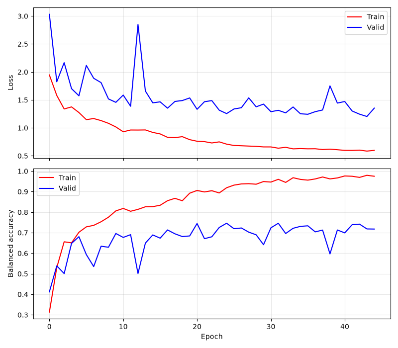
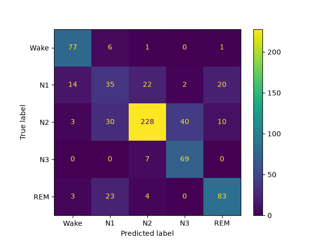
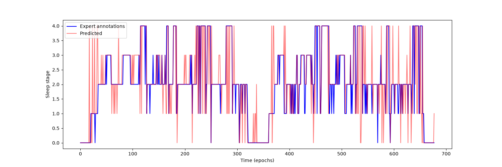

Note
Go to the end to download the full example code.
Sleep staging on the Sleep Physionet dataset using Eldele2021#
This tutorial shows how to train and test a sleep staging neural network with Braindecode. We use the attention-based model from [1] with the time distributed approach of [2] to learn on sequences of EEG windows using the openly accessible Sleep Physionet dataset [3] [4].
# Authors: Divyesh Narayanan <divyesh.narayanan@gmail.com>
#
# License: BSD (3-clause)
Loading and preprocessing the dataset#
Loading#
First, we load the data using the
braindecode.datasets.sleep_physionet.SleepPhysionet class. We load
six subjects with two recordings each. Subjects 0-3 are used for training
and subjects 4-5 for validation.
from numbers import Integral
from braindecode.datasets import SleepPhysionet
subject_ids = [0, 1, 2, 3, 4, 5]
train_subject_ids = [0, 1, 2, 3]
valid_subject_ids = [4, 5]
dataset = SleepPhysionet(
subject_ids=subject_ids, recording_ids=[1, 2], crop_wake_mins=30
)
Downloading data from 'https://physionet.org/physiobank/database/sleep-edfx/sleep-cassette//SC4002E0-PSG.edf' to file '/home/runner/mne_data/physionet-sleep-data/SC4002E0-PSG.edf'.
0%| | 0.00/51.6M [00:00<?, ?B/s]
0%| | 9.22k/51.6M [00:00<21:38, 39.8kB/s]
0%| | 42.0k/51.6M [00:00<11:22, 75.6kB/s]
0%| | 66.6k/51.6M [00:00<11:49, 72.7kB/s]
0%| | 74.8k/51.6M [00:01<11:52, 72.3kB/s]
0%| | 91.1k/51.6M [00:01<10:18, 83.4kB/s]
0%| | 108k/51.6M [00:01<12:10, 70.6kB/s]
0%| | 132k/51.6M [00:02<15:12, 56.4kB/s]
0%| | 140k/51.6M [00:02<19:56, 43.0kB/s]
0%| | 157k/51.6M [00:02<19:10, 44.8kB/s]
0%|▏ | 173k/51.6M [00:03<19:46, 43.3kB/s]
0%|▏ | 198k/51.6M [00:03<16:45, 51.1kB/s]
0%|▏ | 206k/51.6M [00:03<19:23, 44.2kB/s]
0%|▏ | 222k/51.6M [00:04<16:49, 50.9kB/s]
0%|▏ | 239k/51.6M [00:04<16:43, 51.2kB/s]
1%|▏ | 271k/51.6M [00:04<13:02, 65.6kB/s]
1%|▏ | 288k/51.6M [00:04<12:49, 66.7kB/s]
1%|▏ | 304k/51.6M [00:05<14:30, 59.0kB/s]
1%|▏ | 329k/51.6M [00:05<12:11, 70.1kB/s]
1%|▏ | 337k/51.6M [00:05<15:22, 55.6kB/s]
1%|▎ | 353k/51.6M [00:06<14:12, 60.1kB/s]
1%|▎ | 370k/51.6M [00:06<13:27, 63.5kB/s]
1%|▎ | 394k/51.6M [00:06<10:18, 82.9kB/s]
1%|▎ | 404k/51.6M [00:06<10:47, 79.1kB/s]
1%|▎ | 419k/51.6M [00:06<09:36, 88.8kB/s]
1%|▎ | 435k/51.6M [00:06<08:37, 98.9kB/s]
1%|▎ | 468k/51.6M [00:07<07:00, 122kB/s]
1%|▍ | 501k/51.6M [00:07<06:01, 141kB/s]
1%|▍ | 517k/51.6M [00:07<06:14, 137kB/s]
1%|▍ | 550k/51.6M [00:07<05:31, 154kB/s]
1%|▍ | 566k/51.6M [00:07<05:38, 151kB/s]
1%|▍ | 599k/51.6M [00:07<05:24, 157kB/s]
1%|▍ | 632k/51.6M [00:08<06:16, 135kB/s]
1%|▌ | 665k/51.6M [00:08<05:10, 164kB/s]
1%|▌ | 683k/51.6M [00:08<05:12, 163kB/s]
1%|▌ | 701k/51.6M [00:08<07:14, 117kB/s]
1%|▌ | 730k/51.6M [00:08<07:01, 121kB/s]
1%|▌ | 755k/51.6M [00:09<06:11, 137kB/s]
1%|▌ | 771k/51.6M [00:09<06:14, 136kB/s]
2%|▌ | 786k/51.6M [00:09<06:11, 137kB/s]
2%|▌ | 802k/51.6M [00:09<06:11, 137kB/s]
2%|▌ | 817k/51.6M [00:09<07:27, 114kB/s]
2%|▋ | 853k/51.6M [00:09<06:51, 123kB/s]
2%|▋ | 866k/51.6M [00:10<06:57, 122kB/s]
2%|▋ | 880k/51.6M [00:10<07:28, 113kB/s]
2%|▋ | 894k/51.6M [00:10<10:28, 80.7kB/s]
2%|▋ | 919k/51.6M [00:10<10:36, 79.7kB/s]
2%|▋ | 928k/51.6M [00:11<15:43, 53.7kB/s]
2%|▋ | 943k/51.6M [00:11<15:56, 53.0kB/s]
2%|▋ | 959k/51.6M [00:11<17:25, 48.5kB/s]
2%|▋ | 976k/51.6M [00:12<16:04, 52.5kB/s]
2%|▋ | 992k/51.6M [00:12<19:51, 42.5kB/s]
2%|▋ | 1.02M/51.6M [00:13<16:16, 51.8kB/s]
2%|▋ | 1.03M/51.6M [00:13<20:26, 41.3kB/s]
2%|▋ | 1.04M/51.6M [00:13<16:09, 52.2kB/s]
2%|▊ | 1.06M/51.6M [00:13<14:51, 56.7kB/s]
2%|▊ | 1.07M/51.6M [00:14<13:27, 62.6kB/s]
2%|▊ | 1.09M/51.6M [00:14<11:46, 71.5kB/s]
2%|▊ | 1.12M/51.6M [00:14<08:54, 94.4kB/s]
2%|▊ | 1.13M/51.6M [00:14<08:41, 96.8kB/s]
2%|▊ | 1.16M/51.6M [00:14<07:35, 111kB/s]
2%|▉ | 1.19M/51.6M [00:14<06:39, 126kB/s]
2%|▉ | 1.21M/51.6M [00:15<06:56, 121kB/s]
2%|▉ | 1.22M/51.6M [00:15<06:33, 128kB/s]
2%|▉ | 1.25M/51.6M [00:15<08:04, 104kB/s]
2%|▉ | 1.27M/51.6M [00:15<07:24, 113kB/s]
2%|▉ | 1.29M/51.6M [00:15<07:43, 109kB/s]
3%|▉ | 1.31M/51.6M [00:15<06:38, 126kB/s]
3%|▉ | 1.33M/51.6M [00:16<08:10, 103kB/s]
3%|▉ | 1.35M/51.6M [00:16<08:14, 102kB/s]
3%|▉ | 1.37M/51.6M [00:16<08:27, 98.9kB/s]
3%|▉ | 1.39M/51.6M [00:16<08:50, 94.7kB/s]
3%|█ | 1.41M/51.6M [00:16<07:49, 107kB/s]
3%|█ | 1.42M/51.6M [00:17<08:32, 97.9kB/s]
3%|█ | 1.43M/51.6M [00:17<08:34, 97.5kB/s]
3%|█ | 1.45M/51.6M [00:17<10:39, 78.5kB/s]
3%|█ | 1.48M/51.6M [00:17<08:09, 102kB/s]
3%|█ | 1.51M/51.6M [00:18<08:19, 100kB/s]
3%|█ | 1.53M/51.6M [00:18<08:50, 94.5kB/s]
3%|█ | 1.55M/51.6M [00:18<08:51, 94.2kB/s]
3%|█ | 1.57M/51.6M [00:18<08:29, 98.3kB/s]
3%|█▏ | 1.58M/51.6M [00:18<08:02, 104kB/s]
3%|█▏ | 1.61M/51.6M [00:18<07:39, 109kB/s]
3%|█▏ | 1.63M/51.6M [00:19<09:30, 87.6kB/s]
3%|█▏ | 1.67M/51.6M [00:19<09:58, 83.4kB/s]
3%|█▏ | 1.68M/51.6M [00:20<12:00, 69.3kB/s]
3%|█▏ | 1.70M/51.6M [00:20<14:58, 55.6kB/s]
3%|█▏ | 1.71M/51.6M [00:20<15:07, 55.0kB/s]
3%|█▏ | 1.73M/51.6M [00:21<17:26, 47.7kB/s]
3%|█▎ | 1.75M/51.6M [00:21<20:43, 40.1kB/s]
3%|█▎ | 1.77M/51.6M [00:22<16:24, 50.6kB/s]
3%|█▎ | 1.78M/51.6M [00:22<17:51, 46.5kB/s]
3%|█▎ | 1.80M/51.6M [00:22<16:03, 51.7kB/s]
4%|█▎ | 1.81M/51.6M [00:23<15:43, 52.8kB/s]
4%|█▎ | 1.83M/51.6M [00:23<13:06, 63.3kB/s]
4%|█▎ | 1.84M/51.6M [00:23<12:07, 68.4kB/s]
4%|█▎ | 1.87M/51.6M [00:23<09:24, 88.2kB/s]
4%|█▎ | 1.88M/51.6M [00:23<09:25, 87.9kB/s]
4%|█▎ | 1.89M/51.6M [00:23<09:08, 90.7kB/s]
4%|█▍ | 1.91M/51.6M [00:23<08:10, 101kB/s]
4%|█▍ | 1.93M/51.6M [00:24<07:59, 104kB/s]
4%|█▍ | 1.96M/51.6M [00:24<07:43, 107kB/s]
4%|█▍ | 1.98M/51.6M [00:24<07:24, 112kB/s]
4%|█▍ | 2.00M/51.6M [00:24<06:38, 125kB/s]
4%|█▍ | 2.01M/51.6M [00:24<07:22, 112kB/s]
4%|█▍ | 2.03M/51.6M [00:24<08:31, 97.0kB/s]
4%|█▌ | 2.04M/51.6M [00:25<08:05, 102kB/s]
4%|█▌ | 2.07M/51.6M [00:25<06:41, 123kB/s]
4%|█▌ | 2.08M/51.6M [00:25<06:38, 124kB/s]
4%|█▌ | 2.09M/51.6M [00:25<06:35, 125kB/s]
4%|█▌ | 2.11M/51.6M [00:25<07:59, 103kB/s]
4%|█▌ | 2.12M/51.6M [00:25<08:25, 97.9kB/s]
4%|█▌ | 2.14M/51.6M [00:25<07:58, 103kB/s]
4%|█▌ | 2.16M/51.6M [00:26<07:17, 113kB/s]
4%|█▌ | 2.18M/51.6M [00:26<08:27, 97.4kB/s]
4%|█▌ | 2.19M/51.6M [00:26<09:29, 86.7kB/s]
4%|█▌ | 2.20M/51.6M [00:26<10:56, 75.3kB/s]
4%|█▌ | 2.22M/51.6M [00:26<09:26, 87.3kB/s]
4%|█▌ | 2.24M/51.6M [00:27<09:00, 91.4kB/s]
4%|█▋ | 2.26M/51.6M [00:27<07:40, 107kB/s]
4%|█▋ | 2.27M/51.6M [00:27<08:11, 100kB/s]
4%|█▋ | 2.29M/51.6M [00:27<09:24, 87.3kB/s]
4%|█▋ | 2.30M/51.6M [00:27<08:33, 96.1kB/s]
5%|█▋ | 2.33M/51.6M [00:27<07:47, 106kB/s]
5%|█▋ | 2.34M/51.6M [00:28<08:50, 92.9kB/s]
5%|█▋ | 2.35M/51.6M [00:28<09:45, 84.2kB/s]
5%|█▋ | 2.37M/51.6M [00:28<09:06, 90.2kB/s]
5%|█▋ | 2.38M/51.6M [00:28<08:36, 95.4kB/s]
5%|█▋ | 2.40M/51.6M [00:28<09:03, 90.6kB/s]
5%|█▊ | 2.43M/51.6M [00:28<07:20, 112kB/s]
5%|█▊ | 2.44M/51.6M [00:29<07:52, 104kB/s]
5%|█▊ | 2.45M/51.6M [00:29<08:12, 99.8kB/s]
5%|█▊ | 2.47M/51.6M [00:29<09:24, 87.1kB/s]
5%|█▊ | 2.49M/51.6M [00:29<07:34, 108kB/s]
5%|█▊ | 2.50M/51.6M [00:29<08:38, 94.8kB/s]
5%|█▊ | 2.52M/51.6M [00:30<09:49, 83.3kB/s]
5%|█▊ | 2.53M/51.6M [00:30<14:17, 57.2kB/s]
5%|█▊ | 2.56M/51.6M [00:31<15:39, 52.2kB/s]
5%|█▊ | 2.57M/51.6M [00:31<21:09, 38.6kB/s]
5%|█▊ | 2.58M/51.6M [00:31<20:00, 40.9kB/s]
5%|█▊ | 2.60M/51.6M [00:32<21:30, 38.0kB/s]
5%|█▊ | 2.61M/51.6M [00:33<28:46, 28.4kB/s]
5%|█▉ | 2.63M/51.6M [00:33<24:53, 32.8kB/s]
5%|█▉ | 2.66M/51.6M [00:34<19:57, 40.9kB/s]
5%|█▉ | 2.66M/51.6M [00:34<19:50, 41.1kB/s]
5%|█▉ | 2.68M/51.6M [00:34<17:44, 46.0kB/s]
5%|█▉ | 2.70M/51.6M [00:34<14:06, 57.8kB/s]
5%|█▉ | 2.71M/51.6M [00:34<15:01, 54.3kB/s]
5%|█▉ | 2.73M/51.6M [00:35<14:32, 56.0kB/s]
5%|█▉ | 2.75M/51.6M [00:35<11:55, 68.3kB/s]
5%|█▉ | 2.76M/51.6M [00:35<14:09, 57.5kB/s]
5%|█▉ | 2.78M/51.6M [00:36<14:37, 55.7kB/s]
5%|██ | 2.79M/51.6M [00:36<12:51, 63.3kB/s]
5%|██ | 2.82M/51.6M [00:36<13:34, 59.9kB/s]
5%|██ | 2.83M/51.6M [00:36<15:29, 52.5kB/s]
6%|██ | 2.84M/51.6M [00:37<17:23, 46.7kB/s]
6%|██ | 2.88M/51.6M [00:37<12:45, 63.6kB/s]
6%|██ | 2.89M/51.6M [00:37<12:08, 66.9kB/s]
6%|██ | 2.92M/51.6M [00:38<10:50, 74.8kB/s]
6%|██ | 2.93M/51.6M [00:38<12:35, 64.4kB/s]
6%|██ | 2.94M/51.6M [00:38<12:02, 67.4kB/s]
6%|██ | 2.96M/51.6M [00:38<10:58, 73.9kB/s]
6%|██▏ | 2.97M/51.6M [00:38<09:51, 82.2kB/s]
6%|██▏ | 2.99M/51.6M [00:38<08:40, 93.4kB/s]
6%|██▏ | 3.02M/51.6M [00:39<07:15, 112kB/s]
6%|██▏ | 3.03M/51.6M [00:39<08:18, 97.5kB/s]
6%|██▎ | 3.06M/51.6M [00:39<07:23, 110kB/s]
6%|██▎ | 3.08M/51.6M [00:39<06:18, 128kB/s]
6%|██▎ | 3.10M/51.6M [00:39<06:17, 129kB/s]
6%|██▎ | 3.11M/51.6M [00:39<06:33, 123kB/s]
6%|██▎ | 3.14M/51.6M [00:40<06:07, 132kB/s]
6%|██▎ | 3.15M/51.6M [00:40<06:34, 123kB/s]
6%|██▎ | 3.19M/51.6M [00:40<07:13, 112kB/s]
6%|██▎ | 3.22M/51.6M [00:40<06:15, 129kB/s]
6%|██▍ | 3.24M/51.6M [00:41<07:25, 109kB/s]
6%|██▎ | 3.25M/51.6M [00:41<08:33, 94.2kB/s]
6%|██▎ | 3.28M/51.6M [00:41<08:40, 92.8kB/s]
6%|██▎ | 3.29M/51.6M [00:41<10:16, 78.4kB/s]
6%|██▎ | 3.30M/51.6M [00:42<11:52, 67.8kB/s]
6%|██▍ | 3.32M/51.6M [00:42<10:59, 73.2kB/s]
6%|██▍ | 3.34M/51.6M [00:42<09:34, 84.1kB/s]
6%|██▍ | 3.35M/51.6M [00:42<11:43, 68.6kB/s]
7%|██▍ | 3.37M/51.6M [00:42<11:26, 70.3kB/s]
7%|██▍ | 3.38M/51.6M [00:43<10:20, 77.8kB/s]
7%|██▍ | 3.40M/51.6M [00:43<09:48, 82.0kB/s]
7%|██▍ | 3.42M/51.6M [00:43<09:24, 85.4kB/s]
7%|██▍ | 3.44M/51.6M [00:43<09:58, 80.5kB/s]
7%|██▍ | 3.45M/51.6M [00:44<13:21, 60.1kB/s]
7%|██▍ | 3.47M/51.6M [00:44<14:34, 55.0kB/s]
7%|██▍ | 3.48M/51.6M [00:44<13:36, 58.9kB/s]
7%|██▌ | 3.50M/51.6M [00:44<12:38, 63.5kB/s]
7%|██▌ | 3.52M/51.6M [00:45<13:02, 61.4kB/s]
7%|██▌ | 3.54M/51.6M [00:45<10:47, 74.3kB/s]
7%|██▌ | 3.55M/51.6M [00:45<12:40, 63.2kB/s]
7%|██▌ | 3.56M/51.6M [00:45<12:52, 62.2kB/s]
7%|██▌ | 3.58M/51.6M [00:46<10:50, 73.9kB/s]
7%|██▌ | 3.60M/51.6M [00:46<13:46, 58.1kB/s]
7%|██▌ | 3.61M/51.6M [00:46<13:50, 57.8kB/s]
7%|██▌ | 3.64M/51.6M [00:46<10:49, 73.8kB/s]
7%|██▌ | 3.65M/51.6M [00:47<13:05, 61.0kB/s]
7%|██▋ | 3.66M/51.6M [00:47<11:02, 72.4kB/s]
7%|██▋ | 3.68M/51.6M [00:47<10:59, 72.7kB/s]
7%|██▋ | 3.70M/51.6M [00:47<10:16, 77.7kB/s]
7%|██▋ | 3.71M/51.6M [00:48<11:07, 71.8kB/s]
7%|██▋ | 3.73M/51.6M [00:48<10:18, 77.5kB/s]
7%|██▋ | 3.74M/51.6M [00:48<09:12, 86.6kB/s]
7%|██▋ | 3.76M/51.6M [00:48<08:19, 95.8kB/s]
7%|██▊ | 3.78M/51.6M [00:48<07:24, 108kB/s]
7%|██▊ | 3.81M/51.6M [00:48<06:11, 129kB/s]
7%|██▊ | 3.83M/51.6M [00:48<06:28, 123kB/s]
7%|██▊ | 3.86M/51.6M [00:49<05:30, 145kB/s]
8%|██▊ | 3.88M/51.6M [00:49<05:22, 148kB/s]
8%|██▊ | 3.90M/51.6M [00:49<04:45, 167kB/s]
8%|██▉ | 3.92M/51.6M [00:49<05:25, 147kB/s]
8%|██▉ | 3.94M/51.6M [00:49<05:30, 144kB/s]
8%|██▉ | 3.97M/51.6M [00:49<04:56, 161kB/s]
8%|██▉ | 3.98M/51.6M [00:49<05:10, 153kB/s]
8%|██▉ | 4.00M/51.6M [00:50<05:49, 136kB/s]
8%|██▉ | 4.01M/51.6M [00:50<06:16, 126kB/s]
8%|██▉ | 4.03M/51.6M [00:50<07:22, 108kB/s]
8%|██▉ | 4.04M/51.6M [00:50<08:28, 93.6kB/s]
8%|██▉ | 4.06M/51.6M [00:50<07:26, 106kB/s]
8%|██▉ | 4.08M/51.6M [00:50<08:09, 97.2kB/s]
8%|███ | 4.09M/51.6M [00:50<07:49, 101kB/s]
8%|███ | 4.11M/51.6M [00:51<06:53, 115kB/s]
8%|██▉ | 4.12M/51.6M [00:51<08:04, 98.0kB/s]
8%|███ | 4.16M/51.6M [00:51<05:54, 134kB/s]
8%|███ | 4.18M/51.6M [00:51<06:12, 127kB/s]
8%|███ | 4.19M/51.6M [00:51<06:38, 119kB/s]
8%|███ | 4.20M/51.6M [00:51<07:27, 106kB/s]
8%|███ | 4.23M/51.6M [00:52<06:24, 123kB/s]
8%|███ | 4.24M/51.6M [00:52<06:56, 114kB/s]
8%|███▏ | 4.25M/51.6M [00:52<07:02, 112kB/s]
8%|███▏ | 4.27M/51.6M [00:52<07:52, 100kB/s]
8%|███▏ | 4.29M/51.6M [00:52<07:28, 105kB/s]
8%|███ | 4.30M/51.6M [00:52<08:10, 96.4kB/s]
8%|███ | 4.33M/51.6M [00:53<07:58, 98.9kB/s]
8%|███ | 4.34M/51.6M [00:53<09:13, 85.5kB/s]
8%|███ | 4.35M/51.6M [00:53<08:48, 89.5kB/s]
8%|███▏ | 4.37M/51.6M [00:53<09:30, 82.9kB/s]
8%|███▏ | 4.38M/51.6M [00:53<08:08, 96.8kB/s]
9%|███▏ | 4.40M/51.6M [00:54<09:06, 86.4kB/s]
9%|███▏ | 4.42M/51.6M [00:54<08:27, 93.0kB/s]
9%|███▏ | 4.43M/51.6M [00:54<11:18, 69.5kB/s]
9%|███▏ | 4.45M/51.6M [00:54<11:27, 68.6kB/s]
9%|███▏ | 4.47M/51.6M [00:54<10:34, 74.4kB/s]
9%|███▏ | 4.49M/51.6M [00:55<07:54, 99.4kB/s]
9%|███▏ | 4.50M/51.6M [00:55<08:12, 95.7kB/s]
9%|███▏ | 4.51M/51.6M [00:55<08:42, 90.2kB/s]
9%|███▏ | 4.53M/51.6M [00:55<08:24, 93.3kB/s]
9%|███▎ | 4.55M/51.6M [00:55<07:51, 99.8kB/s]
9%|███▎ | 4.56M/51.6M [00:55<08:56, 87.6kB/s]
9%|███▍ | 4.59M/51.6M [00:56<06:57, 113kB/s]
9%|███▎ | 4.60M/51.6M [00:56<08:09, 96.0kB/s]
9%|███▎ | 4.61M/51.6M [00:56<08:44, 89.7kB/s]
9%|███▎ | 4.63M/51.6M [00:56<08:11, 95.6kB/s]
9%|███▎ | 4.65M/51.6M [00:56<09:05, 86.1kB/s]
9%|███▎ | 4.66M/51.6M [00:57<10:22, 75.4kB/s]
9%|███▎ | 4.69M/51.6M [00:57<09:34, 81.7kB/s]
9%|███▎ | 4.70M/51.6M [00:57<12:35, 62.1kB/s]
9%|███▍ | 4.71M/51.6M [00:57<13:03, 59.9kB/s]
9%|███▍ | 4.73M/51.6M [00:58<11:53, 65.7kB/s]
9%|███▍ | 4.74M/51.6M [00:58<10:22, 75.3kB/s]
9%|███▍ | 4.76M/51.6M [00:58<08:59, 86.8kB/s]
9%|███▌ | 4.79M/51.6M [00:58<07:00, 111kB/s]
9%|███▌ | 4.80M/51.6M [00:58<06:50, 114kB/s]
9%|███▌ | 4.83M/51.6M [00:58<06:19, 123kB/s]
9%|███▌ | 4.86M/51.6M [00:59<06:54, 113kB/s]
9%|███▌ | 4.89M/51.6M [00:59<05:27, 143kB/s]
10%|███▌ | 4.91M/51.6M [00:59<05:23, 145kB/s]
10%|███▋ | 4.92M/51.6M [00:59<05:28, 142kB/s]
10%|███▋ | 4.95M/51.6M [00:59<04:50, 161kB/s]
10%|███▋ | 4.97M/51.6M [00:59<05:44, 135kB/s]
10%|███▋ | 4.99M/51.6M [01:00<05:56, 131kB/s]
10%|███▋ | 5.01M/51.6M [01:00<05:51, 133kB/s]
10%|███▋ | 5.02M/51.6M [01:00<05:50, 133kB/s]
10%|███▋ | 5.05M/51.6M [01:00<04:54, 158kB/s]
10%|███▋ | 5.06M/51.6M [01:00<05:03, 153kB/s]
10%|███▋ | 5.08M/51.6M [01:00<05:54, 131kB/s]
10%|███▊ | 5.11M/51.6M [01:00<04:56, 157kB/s]
10%|███▊ | 5.13M/51.6M [01:00<05:08, 151kB/s]
10%|███▊ | 5.15M/51.6M [01:01<06:00, 129kB/s]
10%|███▊ | 5.17M/51.6M [01:01<05:46, 134kB/s]
10%|███▊ | 5.19M/51.6M [01:01<05:59, 129kB/s]
10%|███▊ | 5.21M/51.6M [01:01<05:15, 147kB/s]
10%|███▊ | 5.23M/51.6M [01:01<05:17, 146kB/s]
10%|███▊ | 5.24M/51.6M [01:01<05:14, 148kB/s]
10%|███▊ | 5.26M/51.6M [01:01<06:46, 114kB/s]
10%|███▉ | 5.28M/51.6M [01:02<05:32, 139kB/s]
10%|███▉ | 5.31M/51.6M [01:02<04:54, 157kB/s]
10%|███▉ | 5.33M/51.6M [01:02<06:10, 125kB/s]
10%|███▉ | 5.35M/51.6M [01:02<06:16, 123kB/s]
10%|███▉ | 5.37M/51.6M [01:02<06:42, 115kB/s]
10%|███▊ | 5.39M/51.6M [01:03<07:54, 97.4kB/s]
10%|███▊ | 5.40M/51.6M [01:03<08:16, 93.1kB/s]
10%|███▉ | 5.42M/51.6M [01:03<08:07, 94.8kB/s]
11%|███▉ | 5.43M/51.6M [01:03<07:39, 100kB/s]
11%|████ | 5.45M/51.6M [01:03<07:06, 108kB/s]
11%|████ | 5.47M/51.6M [01:03<06:46, 114kB/s]
11%|████ | 5.49M/51.6M [01:03<06:48, 113kB/s]
11%|████ | 5.50M/51.6M [01:04<07:14, 106kB/s]
11%|████ | 5.51M/51.6M [01:04<06:57, 110kB/s]
11%|████ | 5.54M/51.6M [01:04<06:07, 125kB/s]
11%|████ | 5.55M/51.6M [01:04<06:57, 110kB/s]
11%|████ | 5.56M/51.6M [01:04<07:38, 101kB/s]
11%|████ | 5.58M/51.6M [01:04<07:23, 104kB/s]
11%|████▏ | 5.60M/51.6M [01:04<05:51, 131kB/s]
11%|████ | 5.62M/51.6M [01:05<07:40, 99.8kB/s]
11%|████ | 5.63M/51.6M [01:05<08:35, 89.2kB/s]
11%|████ | 5.65M/51.6M [01:05<07:52, 97.3kB/s]
11%|████ | 5.66M/51.6M [01:05<09:11, 83.3kB/s]
11%|████ | 5.68M/51.6M [01:05<08:39, 88.5kB/s]
11%|████ | 5.70M/51.6M [01:06<08:28, 90.4kB/s]
11%|████ | 5.71M/51.6M [01:06<09:19, 82.0kB/s]
11%|████ | 5.73M/51.6M [01:06<09:07, 83.8kB/s]
11%|████ | 5.74M/51.6M [01:06<09:04, 84.2kB/s]
11%|████▏ | 5.76M/51.6M [01:06<08:09, 93.6kB/s]
11%|████▏ | 5.78M/51.6M [01:07<10:38, 71.8kB/s]
11%|████▏ | 5.80M/51.6M [01:07<10:26, 73.1kB/s]
11%|████▏ | 5.81M/51.6M [01:07<14:51, 51.4kB/s]
11%|████▏ | 5.83M/51.6M [01:08<14:54, 51.2kB/s]
11%|████▏ | 5.84M/51.6M [01:08<15:16, 50.0kB/s]
11%|████▏ | 5.87M/51.6M [01:08<13:48, 55.3kB/s]
11%|████▏ | 5.87M/51.6M [01:09<15:08, 50.4kB/s]
11%|████▏ | 5.89M/51.6M [01:09<12:52, 59.2kB/s]
11%|████▏ | 5.91M/51.6M [01:09<11:00, 69.2kB/s]
11%|████▏ | 5.92M/51.6M [01:09<09:30, 80.2kB/s]
12%|████▎ | 5.94M/51.6M [01:09<08:15, 92.1kB/s]
12%|████▍ | 5.97M/51.6M [01:10<06:40, 114kB/s]
12%|████▍ | 5.99M/51.6M [01:10<07:09, 106kB/s]
12%|████▍ | 6.03M/51.6M [01:10<04:58, 153kB/s]
12%|████▍ | 6.05M/51.6M [01:10<05:04, 150kB/s]
12%|████▍ | 6.06M/51.6M [01:10<05:00, 152kB/s]
12%|████▍ | 6.08M/51.6M [01:10<05:31, 138kB/s]
12%|████▍ | 6.10M/51.6M [01:10<05:45, 132kB/s]
12%|████▍ | 6.11M/51.6M [01:10<06:03, 125kB/s]
12%|████▌ | 6.12M/51.6M [01:11<06:11, 123kB/s]
12%|████▌ | 6.14M/51.6M [01:11<06:10, 123kB/s]
12%|████▌ | 6.17M/51.6M [01:11<05:21, 141kB/s]
12%|████▌ | 6.19M/51.6M [01:11<04:50, 156kB/s]
12%|████▌ | 6.22M/51.6M [01:11<05:27, 139kB/s]
12%|████▌ | 6.24M/51.6M [01:11<05:52, 129kB/s]
12%|████▌ | 6.26M/51.6M [01:12<05:38, 134kB/s]
12%|████▌ | 6.27M/51.6M [01:12<06:28, 117kB/s]
12%|████▌ | 6.29M/51.6M [01:12<07:42, 98.0kB/s]
12%|████▌ | 6.30M/51.6M [01:12<07:43, 97.8kB/s]
12%|████▋ | 6.32M/51.6M [01:12<07:18, 103kB/s]
12%|████▋ | 6.33M/51.6M [01:12<07:10, 105kB/s]
12%|████▋ | 6.36M/51.6M [01:13<06:23, 118kB/s]
12%|████▌ | 6.37M/51.6M [01:13<07:45, 97.1kB/s]
12%|████▌ | 6.38M/51.6M [01:13<07:44, 97.5kB/s]
12%|████▌ | 6.40M/51.6M [01:13<07:56, 94.8kB/s]
12%|████▌ | 6.42M/51.6M [01:13<08:10, 92.1kB/s]
12%|████▌ | 6.43M/51.6M [01:13<07:35, 99.2kB/s]
13%|████▊ | 6.46M/51.6M [01:14<06:06, 123kB/s]
13%|████▊ | 6.47M/51.6M [01:14<06:11, 122kB/s]
13%|████▋ | 6.50M/51.6M [01:14<08:15, 91.1kB/s]
13%|████▋ | 6.52M/51.6M [01:15<11:39, 64.5kB/s]
13%|████▋ | 6.53M/51.6M [01:15<11:44, 64.0kB/s]
13%|████▋ | 6.55M/51.6M [01:16<20:09, 37.3kB/s]
13%|████▋ | 6.56M/51.6M [01:16<20:01, 37.5kB/s]
13%|████▋ | 6.59M/51.6M [01:17<17:25, 43.1kB/s]
13%|████▋ | 6.60M/51.6M [01:17<20:56, 35.8kB/s]
13%|████▋ | 6.61M/51.6M [01:17<19:14, 39.0kB/s]
13%|████▊ | 6.63M/51.6M [01:18<17:29, 42.9kB/s]
13%|████▊ | 6.65M/51.6M [01:18<14:03, 53.3kB/s]
13%|████▊ | 6.66M/51.6M [01:18<18:20, 40.9kB/s]
13%|████▊ | 6.68M/51.6M [01:19<20:13, 37.0kB/s]
13%|████▊ | 6.69M/51.6M [01:19<18:30, 40.5kB/s]
13%|████▊ | 6.71M/51.6M [01:20<17:58, 41.6kB/s]
13%|████▊ | 6.73M/51.6M [01:20<16:33, 45.2kB/s]
13%|████▊ | 6.75M/51.6M [01:20<12:24, 60.2kB/s]
13%|████▊ | 6.76M/51.6M [01:20<12:28, 59.9kB/s]
13%|████▊ | 6.78M/51.6M [01:20<10:41, 69.9kB/s]
13%|████▊ | 6.79M/51.6M [01:20<09:09, 81.6kB/s]
13%|████▉ | 6.81M/51.6M [01:21<07:58, 93.7kB/s]
13%|█████ | 6.85M/51.6M [01:21<06:42, 111kB/s]
13%|█████ | 6.87M/51.6M [01:21<06:09, 121kB/s]
13%|█████ | 6.89M/51.6M [01:21<05:57, 125kB/s]
13%|█████ | 6.91M/51.6M [01:21<06:15, 119kB/s]
13%|█████ | 6.92M/51.6M [01:21<06:08, 121kB/s]
13%|█████ | 6.95M/51.6M [01:22<05:27, 137kB/s]
13%|█████▏ | 6.96M/51.6M [01:22<05:50, 127kB/s]
14%|█████▏ | 6.98M/51.6M [01:22<06:16, 119kB/s]
14%|█████▏ | 7.01M/51.6M [01:22<05:10, 144kB/s]
14%|█████▏ | 7.03M/51.6M [01:22<05:11, 143kB/s]
14%|█████▏ | 7.04M/51.6M [01:22<06:27, 115kB/s]
14%|█████▏ | 7.07M/51.6M [01:23<05:15, 141kB/s]
14%|█████▏ | 7.09M/51.6M [01:23<05:06, 145kB/s]
14%|█████▏ | 7.11M/51.6M [01:23<04:28, 166kB/s]
14%|█████▎ | 7.14M/51.6M [01:23<05:04, 146kB/s]
14%|█████▎ | 7.15M/51.6M [01:23<05:13, 142kB/s]
14%|█████▎ | 7.17M/51.6M [01:23<05:18, 140kB/s]
14%|█████▎ | 7.19M/51.6M [01:23<05:18, 140kB/s]
14%|█████▎ | 7.21M/51.6M [01:24<06:00, 123kB/s]
14%|█████▎ | 7.23M/51.6M [01:24<06:30, 114kB/s]
14%|█████▎ | 7.25M/51.6M [01:24<06:15, 118kB/s]
14%|█████▎ | 7.28M/51.6M [01:24<05:27, 136kB/s]
14%|█████▎ | 7.29M/51.6M [01:24<05:27, 135kB/s]
14%|█████▍ | 7.31M/51.6M [01:24<05:57, 124kB/s]
14%|█████▍ | 7.32M/51.6M [01:24<07:12, 102kB/s]
14%|█████▍ | 7.35M/51.6M [01:25<07:06, 104kB/s]
14%|█████▍ | 7.37M/51.6M [01:25<06:12, 119kB/s]
14%|█████▍ | 7.39M/51.6M [01:25<06:51, 107kB/s]
14%|█████▎ | 7.40M/51.6M [01:25<07:30, 98.1kB/s]
14%|█████▎ | 7.41M/51.6M [01:25<07:43, 95.5kB/s]
14%|█████▍ | 7.44M/51.6M [01:26<07:00, 105kB/s]
14%|█████▎ | 7.45M/51.6M [01:26<08:06, 90.8kB/s]
14%|█████▎ | 7.46M/51.6M [01:26<08:11, 89.8kB/s]
14%|█████▎ | 7.48M/51.6M [01:26<07:55, 92.8kB/s]
15%|█████▍ | 7.50M/51.6M [01:26<07:51, 93.5kB/s]
15%|█████▍ | 7.53M/51.6M [01:27<08:16, 88.8kB/s]
15%|█████▍ | 7.55M/51.6M [01:27<08:39, 84.8kB/s]
15%|█████▍ | 7.56M/51.6M [01:27<08:42, 84.3kB/s]
15%|█████▍ | 7.58M/51.6M [01:27<08:27, 86.8kB/s]
15%|█████▍ | 7.60M/51.6M [01:27<07:25, 98.9kB/s]
15%|█████▍ | 7.61M/51.6M [01:28<08:36, 85.1kB/s]
15%|█████▍ | 7.63M/51.6M [01:28<08:25, 87.0kB/s]
15%|█████▍ | 7.64M/51.6M [01:28<08:14, 89.0kB/s]
15%|█████▋ | 7.67M/51.6M [01:28<07:13, 101kB/s]
15%|█████▌ | 7.68M/51.6M [01:28<07:57, 92.0kB/s]
15%|█████▌ | 7.69M/51.6M [01:29<07:56, 92.3kB/s]
15%|█████▌ | 7.71M/51.6M [01:29<07:23, 98.9kB/s]
15%|█████▌ | 7.73M/51.6M [01:29<08:19, 87.9kB/s]
15%|█████▋ | 7.77M/51.6M [01:29<06:11, 118kB/s]
15%|█████▋ | 7.78M/51.6M [01:29<06:38, 110kB/s]
15%|█████▌ | 7.79M/51.6M [01:29<07:43, 94.5kB/s]
15%|█████▌ | 7.81M/51.6M [01:30<07:39, 95.4kB/s]
15%|█████▌ | 7.82M/51.6M [01:30<08:07, 89.9kB/s]
15%|█████▌ | 7.84M/51.6M [01:30<08:30, 85.8kB/s]
15%|█████▋ | 7.87M/51.6M [01:31<11:18, 64.5kB/s]
15%|█████▋ | 7.89M/51.6M [01:31<10:42, 68.0kB/s]
15%|█████▋ | 7.91M/51.6M [01:31<09:44, 74.8kB/s]
15%|█████▋ | 7.93M/51.6M [01:31<08:06, 89.8kB/s]
15%|█████▋ | 7.94M/51.6M [01:31<08:32, 85.2kB/s]
15%|█████▋ | 7.96M/51.6M [01:32<09:11, 79.1kB/s]
15%|█████▋ | 7.97M/51.6M [01:32<08:12, 88.6kB/s]
15%|█████▉ | 8.00M/51.6M [01:32<06:52, 106kB/s]
16%|█████▋ | 8.01M/51.6M [01:32<07:36, 95.4kB/s]
16%|█████▋ | 8.02M/51.6M [01:32<09:20, 77.7kB/s]
16%|█████▊ | 8.04M/51.6M [01:33<09:41, 74.9kB/s]
16%|█████▊ | 8.05M/51.6M [01:33<09:51, 73.6kB/s]
16%|█████▊ | 8.07M/51.6M [01:33<09:28, 76.6kB/s]
16%|█████▊ | 8.09M/51.6M [01:33<07:32, 96.2kB/s]
16%|█████▊ | 8.11M/51.6M [01:33<08:24, 86.3kB/s]
16%|█████▊ | 8.12M/51.6M [01:34<08:57, 81.0kB/s]
16%|█████▊ | 8.14M/51.6M [01:34<08:18, 87.2kB/s]
16%|██████ | 8.16M/51.6M [01:34<06:56, 104kB/s]
16%|██████ | 8.17M/51.6M [01:34<07:09, 101kB/s]
16%|█████▊ | 8.18M/51.6M [01:34<07:18, 99.1kB/s]
16%|██████ | 8.20M/51.6M [01:34<07:11, 101kB/s]
16%|██████ | 8.23M/51.6M [01:34<06:21, 114kB/s]
16%|██████ | 8.24M/51.6M [01:35<06:45, 107kB/s]
16%|██████ | 8.25M/51.6M [01:35<06:56, 104kB/s]
16%|██████ | 8.27M/51.6M [01:35<06:27, 112kB/s]
16%|██████ | 8.29M/51.6M [01:35<05:17, 137kB/s]
16%|██████ | 8.32M/51.6M [01:35<05:33, 130kB/s]
16%|██████▏ | 8.35M/51.6M [01:35<04:48, 150kB/s]
16%|██████▏ | 8.39M/51.6M [01:36<04:36, 156kB/s]
16%|██████▏ | 8.41M/51.6M [01:36<04:39, 155kB/s]
16%|██████▏ | 8.43M/51.6M [01:36<06:02, 119kB/s]
16%|██████▏ | 8.46M/51.6M [01:36<04:46, 151kB/s]
16%|██████▏ | 8.49M/51.6M [01:36<04:25, 163kB/s]
16%|██████▎ | 8.51M/51.6M [01:36<04:25, 163kB/s]
17%|██████▎ | 8.52M/51.6M [01:36<04:18, 166kB/s]
17%|██████▎ | 8.54M/51.6M [01:37<04:12, 171kB/s]
17%|██████▎ | 8.56M/51.6M [01:37<05:28, 131kB/s]
17%|██████▎ | 8.58M/51.6M [01:37<05:37, 128kB/s]
17%|██████▎ | 8.59M/51.6M [01:37<06:54, 104kB/s]
17%|██████▎ | 8.63M/51.6M [01:37<07:01, 102kB/s]
17%|██████▏ | 8.66M/51.6M [01:38<07:18, 97.9kB/s]
17%|██████▍ | 8.68M/51.6M [01:38<06:52, 104kB/s]
17%|██████▍ | 8.69M/51.6M [01:38<06:53, 104kB/s]
17%|██████▍ | 8.72M/51.6M [01:38<06:18, 113kB/s]
17%|██████▍ | 8.73M/51.6M [01:38<06:58, 103kB/s]
17%|██████▎ | 8.74M/51.6M [01:39<08:49, 81.0kB/s]
17%|██████▍ | 8.78M/51.6M [01:39<06:26, 111kB/s]
17%|██████▎ | 8.80M/51.6M [01:39<07:24, 96.4kB/s]
17%|██████▎ | 8.81M/51.6M [01:39<07:33, 94.4kB/s]
17%|██████▎ | 8.82M/51.6M [01:40<07:58, 89.4kB/s]
17%|██████▎ | 8.84M/51.6M [01:40<08:47, 81.1kB/s]
17%|██████▎ | 8.86M/51.6M [01:40<07:41, 92.8kB/s]
17%|██████▌ | 8.88M/51.6M [01:40<06:36, 108kB/s]
17%|██████▎ | 8.89M/51.6M [01:40<07:24, 96.1kB/s]
17%|██████▍ | 8.91M/51.6M [01:40<07:36, 93.7kB/s]
17%|██████▌ | 8.92M/51.6M [01:41<06:54, 103kB/s]
17%|██████▌ | 8.94M/51.6M [01:41<06:33, 108kB/s]
17%|██████▍ | 8.95M/51.6M [01:41<07:51, 90.6kB/s]
17%|██████▌ | 8.99M/51.6M [01:41<06:07, 116kB/s]
17%|██████▋ | 9.00M/51.6M [01:41<06:14, 114kB/s]
17%|██████▋ | 9.02M/51.6M [01:41<06:40, 106kB/s]
18%|██████▋ | 9.04M/51.6M [01:42<05:47, 123kB/s]
18%|██████▍ | 9.06M/51.6M [01:42<07:08, 99.4kB/s]
18%|██████▌ | 9.07M/51.6M [01:42<07:22, 96.2kB/s]
18%|██████▌ | 9.09M/51.6M [01:42<08:22, 84.6kB/s]
18%|██████▋ | 9.11M/51.6M [01:42<06:39, 106kB/s]
18%|██████▌ | 9.12M/51.6M [01:43<07:45, 91.4kB/s]
18%|██████▌ | 9.14M/51.6M [01:43<08:01, 88.3kB/s]
18%|██████▌ | 9.15M/51.6M [01:43<07:30, 94.3kB/s]
18%|██████▊ | 9.18M/51.6M [01:43<05:58, 118kB/s]
18%|██████▊ | 9.19M/51.6M [01:43<05:56, 119kB/s]
18%|██████▊ | 9.20M/51.6M [01:43<05:51, 121kB/s]
18%|██████▊ | 9.22M/51.6M [01:43<06:41, 106kB/s]
18%|██████▊ | 9.25M/51.6M [01:43<05:15, 134kB/s]
18%|██████▊ | 9.27M/51.6M [01:44<04:28, 158kB/s]
18%|██████▊ | 9.29M/51.6M [01:44<04:22, 161kB/s]
18%|██████▊ | 9.31M/51.6M [01:44<04:17, 164kB/s]
18%|██████▊ | 9.33M/51.6M [01:44<04:25, 159kB/s]
18%|██████▉ | 9.34M/51.6M [01:44<04:34, 154kB/s]
18%|██████▉ | 9.36M/51.6M [01:44<04:08, 170kB/s]
18%|██████▉ | 9.38M/51.6M [01:44<05:54, 119kB/s]
18%|██████▉ | 9.40M/51.6M [01:45<06:13, 113kB/s]
18%|██████▉ | 9.41M/51.6M [01:45<06:34, 107kB/s]
18%|██████▉ | 9.44M/51.6M [01:45<05:35, 126kB/s]
18%|██████▉ | 9.45M/51.6M [01:45<05:47, 121kB/s]
18%|██████▉ | 9.47M/51.6M [01:45<05:40, 124kB/s]
18%|██████▉ | 9.48M/51.6M [01:45<05:42, 123kB/s]
18%|███████ | 9.51M/51.6M [01:45<05:56, 118kB/s]
18%|███████ | 9.54M/51.6M [01:46<04:56, 142kB/s]
19%|███████ | 9.56M/51.6M [01:46<04:56, 142kB/s]
19%|███████ | 9.58M/51.6M [01:46<05:52, 119kB/s]
19%|███████ | 9.61M/51.6M [01:46<05:09, 136kB/s]
19%|███████ | 9.63M/51.6M [01:46<04:43, 148kB/s]
19%|███████ | 9.65M/51.6M [01:46<04:59, 140kB/s]
19%|███████ | 9.66M/51.6M [01:47<04:59, 140kB/s]
19%|███████ | 9.68M/51.6M [01:47<04:58, 141kB/s]
19%|███████▏ | 9.70M/51.6M [01:47<04:23, 159kB/s]
19%|███████▏ | 9.72M/51.6M [01:47<04:32, 154kB/s]
19%|███████▏ | 9.74M/51.6M [01:47<05:09, 135kB/s]
19%|███████▏ | 9.77M/51.6M [01:47<04:48, 145kB/s]
19%|███████▏ | 9.81M/51.6M [01:48<05:06, 137kB/s]
19%|███████▏ | 9.84M/51.6M [01:48<04:32, 153kB/s]
19%|███████▎ | 9.86M/51.6M [01:48<04:36, 151kB/s]
19%|███████▎ | 9.87M/51.6M [01:48<04:32, 153kB/s]
19%|███████▎ | 9.90M/51.6M [01:48<03:59, 174kB/s]
19%|███████▎ | 9.92M/51.6M [01:48<04:07, 169kB/s]
19%|███████▎ | 9.93M/51.6M [01:48<05:52, 118kB/s]
19%|███████▎ | 9.95M/51.6M [01:49<06:23, 109kB/s]
19%|███████▎ | 9.97M/51.6M [01:49<06:47, 102kB/s]
19%|███████▎ | 10.0M/51.6M [01:49<06:19, 110kB/s]
19%|███████▏ | 10.0M/51.6M [01:49<07:41, 90.2kB/s]
19%|███████▏ | 10.0M/51.6M [01:49<08:13, 84.4kB/s]
19%|███████▏ | 10.0M/51.6M [01:50<10:16, 67.5kB/s]
19%|███████▏ | 10.1M/51.6M [01:50<09:25, 73.6kB/s]
20%|███████▏ | 10.1M/51.6M [01:50<10:30, 65.9kB/s]
20%|███████▏ | 10.1M/51.6M [01:50<09:09, 75.6kB/s]
20%|███████▏ | 10.1M/51.6M [01:51<08:08, 84.9kB/s]
20%|███████▎ | 10.1M/51.6M [01:51<07:45, 89.2kB/s]
20%|███████▎ | 10.1M/51.6M [01:51<08:20, 82.9kB/s]
20%|███████▎ | 10.2M/51.6M [01:51<07:34, 91.3kB/s]
20%|███████▎ | 10.2M/51.6M [01:51<07:12, 95.7kB/s]
20%|███████▎ | 10.2M/51.6M [01:52<07:27, 92.5kB/s]
20%|███████▎ | 10.2M/51.6M [01:52<08:01, 86.0kB/s]
20%|███████▎ | 10.2M/51.6M [01:52<07:44, 89.0kB/s]
20%|███████▌ | 10.3M/51.6M [01:52<06:47, 101kB/s]
20%|███████▎ | 10.3M/51.6M [01:52<08:20, 82.6kB/s]
20%|███████▎ | 10.3M/51.6M [01:53<09:29, 72.7kB/s]
20%|███████▍ | 10.3M/51.6M [01:53<09:04, 75.9kB/s]
20%|███████▍ | 10.3M/51.6M [01:53<07:35, 90.8kB/s]
20%|███████▍ | 10.3M/51.6M [01:53<09:05, 75.8kB/s]
20%|███████▍ | 10.3M/51.6M [01:54<09:42, 70.8kB/s]
20%|███████▍ | 10.4M/51.6M [01:54<09:24, 73.1kB/s]
20%|███████▍ | 10.4M/51.6M [01:54<09:19, 73.7kB/s]
20%|███████▍ | 10.4M/51.6M [01:54<08:52, 77.4kB/s]
20%|███████▍ | 10.4M/51.6M [01:54<08:03, 85.2kB/s]
20%|███████▍ | 10.4M/51.6M [01:55<08:31, 80.6kB/s]
20%|███████▍ | 10.4M/51.6M [01:55<09:29, 72.4kB/s]
20%|███████▍ | 10.5M/51.6M [01:55<08:26, 81.3kB/s]
20%|███████▌ | 10.5M/51.6M [01:55<09:34, 71.6kB/s]
20%|███████▌ | 10.5M/51.6M [01:56<10:29, 65.3kB/s]
20%|███████▌ | 10.5M/51.6M [01:56<09:17, 73.7kB/s]
20%|███████▌ | 10.5M/51.6M [01:56<14:05, 48.6kB/s]
20%|███████▌ | 10.5M/51.6M [01:57<13:30, 50.7kB/s]
20%|███████▌ | 10.6M/51.6M [01:57<14:19, 47.8kB/s]
21%|███████▌ | 10.6M/51.6M [01:57<10:56, 62.5kB/s]
21%|███████▌ | 10.6M/51.6M [01:57<12:14, 55.9kB/s]
21%|███████▌ | 10.6M/51.6M [01:58<11:29, 59.5kB/s]
21%|███████▌ | 10.6M/51.6M [01:58<11:17, 60.5kB/s]
21%|███████▋ | 10.6M/51.6M [01:58<11:17, 60.5kB/s]
21%|███████▋ | 10.7M/51.6M [01:58<10:41, 63.8kB/s]
21%|███████▋ | 10.7M/51.6M [01:59<08:12, 83.1kB/s]
21%|███████▋ | 10.7M/51.6M [01:59<11:05, 61.5kB/s]
21%|███████▋ | 10.7M/51.6M [01:59<09:29, 71.8kB/s]
21%|███████▋ | 10.7M/51.6M [01:59<09:21, 72.8kB/s]
21%|███████▋ | 10.8M/51.6M [02:00<09:10, 74.3kB/s]
21%|███████▋ | 10.8M/51.6M [02:00<08:24, 80.9kB/s]
21%|███████▋ | 10.8M/51.6M [02:00<09:41, 70.3kB/s]
21%|███████▋ | 10.8M/51.6M [02:00<10:44, 63.3kB/s]
21%|███████▊ | 10.8M/51.6M [02:01<09:16, 73.3kB/s]
21%|███████▊ | 10.8M/51.6M [02:01<08:29, 80.0kB/s]
21%|███████▊ | 10.9M/51.6M [02:01<10:06, 67.2kB/s]
21%|███████▊ | 10.9M/51.6M [02:01<09:51, 68.8kB/s]
21%|███████▊ | 10.9M/51.6M [02:01<09:08, 74.3kB/s]
21%|███████▊ | 10.9M/51.6M [02:02<08:29, 79.9kB/s]
21%|███████▊ | 10.9M/51.6M [02:02<08:55, 76.0kB/s]
21%|███████▊ | 10.9M/51.6M [02:02<07:35, 89.4kB/s]
21%|███████▊ | 11.0M/51.6M [02:02<09:06, 74.4kB/s]
21%|███████▊ | 11.0M/51.6M [02:03<09:40, 70.1kB/s]
21%|███████▊ | 11.0M/51.6M [02:03<08:18, 81.5kB/s]
21%|███████▉ | 11.0M/51.6M [02:03<07:47, 86.9kB/s]
21%|███████▉ | 11.0M/51.6M [02:03<07:55, 85.5kB/s]
21%|████████▏ | 11.0M/51.6M [02:03<06:31, 104kB/s]
21%|████████▏ | 11.1M/51.6M [02:03<06:29, 104kB/s]
21%|████████▏ | 11.1M/51.6M [02:03<06:33, 103kB/s]
21%|████████▏ | 11.1M/51.6M [02:04<05:53, 115kB/s]
22%|████████▏ | 11.1M/51.6M [02:04<04:24, 153kB/s]
22%|████████▏ | 11.1M/51.6M [02:04<06:13, 108kB/s]
22%|████████▏ | 11.2M/51.6M [02:04<05:28, 123kB/s]
22%|████████▏ | 11.2M/51.6M [02:04<05:20, 126kB/s]
22%|████████▏ | 11.2M/51.6M [02:04<06:28, 104kB/s]
22%|████████▎ | 11.2M/51.6M [02:05<05:34, 121kB/s]
22%|████████▎ | 11.2M/51.6M [02:05<05:44, 117kB/s]
22%|████████▎ | 11.2M/51.6M [02:05<06:02, 111kB/s]
22%|████████▎ | 11.3M/51.6M [02:05<06:13, 108kB/s]
22%|████████▎ | 11.3M/51.6M [02:05<05:59, 112kB/s]
22%|████████▎ | 11.3M/51.6M [02:05<05:14, 128kB/s]
22%|████████▎ | 11.3M/51.6M [02:06<05:32, 121kB/s]
22%|████████▎ | 11.3M/51.6M [02:06<05:58, 112kB/s]
22%|████████▎ | 11.4M/51.6M [02:06<05:09, 130kB/s]
22%|████████▍ | 11.4M/51.6M [02:06<06:03, 111kB/s]
22%|████████▍ | 11.4M/51.6M [02:06<04:58, 135kB/s]
22%|████████▍ | 11.4M/51.6M [02:06<05:15, 127kB/s]
22%|████████▍ | 11.4M/51.6M [02:07<06:29, 103kB/s]
22%|████████▍ | 11.5M/51.6M [02:07<05:47, 116kB/s]
22%|████████▏ | 11.5M/51.6M [02:07<06:52, 97.3kB/s]
22%|████████▏ | 11.5M/51.6M [02:07<07:32, 88.8kB/s]
22%|████████▎ | 11.5M/51.6M [02:07<07:40, 87.1kB/s]
22%|████████▎ | 11.5M/51.6M [02:08<07:49, 85.4kB/s]
22%|████████▎ | 11.5M/51.6M [02:08<08:00, 83.4kB/s]
22%|████████▎ | 11.6M/51.6M [02:08<06:46, 98.5kB/s]
22%|████████▎ | 11.6M/51.6M [02:08<08:03, 82.8kB/s]
22%|████████▎ | 11.6M/51.6M [02:08<07:37, 87.5kB/s]
22%|████████▎ | 11.6M/51.6M [02:08<07:00, 95.1kB/s]
23%|████████▎ | 11.6M/51.6M [02:09<07:37, 87.5kB/s]
23%|████████▌ | 11.7M/51.6M [02:09<05:24, 123kB/s]
23%|████████▎ | 11.7M/51.6M [02:09<07:36, 87.5kB/s]
23%|████████▌ | 11.7M/51.6M [02:09<06:21, 105kB/s]
23%|████████▋ | 11.7M/51.6M [02:10<05:48, 114kB/s]
23%|████████▍ | 11.7M/51.6M [02:10<07:52, 84.4kB/s]
23%|████████▍ | 11.8M/51.6M [02:10<07:01, 94.5kB/s]
23%|████████▍ | 11.8M/51.6M [02:10<06:54, 96.1kB/s]
23%|████████▍ | 11.8M/51.6M [02:10<07:00, 94.7kB/s]
23%|████████▍ | 11.8M/51.6M [02:11<06:49, 97.2kB/s]
23%|████████▍ | 11.8M/51.6M [02:11<07:21, 90.1kB/s]
23%|████████▍ | 11.9M/51.6M [02:11<08:42, 76.2kB/s]
23%|████████▌ | 11.9M/51.6M [02:11<09:54, 66.9kB/s]
23%|████████▌ | 11.9M/51.6M [02:12<12:25, 53.3kB/s]
23%|████████▌ | 11.9M/51.6M [02:12<11:30, 57.5kB/s]
23%|████████▌ | 11.9M/51.6M [02:13<11:39, 56.7kB/s]
23%|████████▌ | 11.9M/51.6M [02:13<14:37, 45.2kB/s]
23%|████████▌ | 12.0M/51.6M [02:13<16:02, 41.2kB/s]
23%|████████▌ | 12.0M/51.6M [02:14<15:40, 42.2kB/s]
23%|████████▌ | 12.0M/51.6M [02:14<15:29, 42.7kB/s]
23%|████████▌ | 12.0M/51.6M [02:14<14:08, 46.7kB/s]
23%|████████▌ | 12.0M/51.6M [02:15<10:29, 62.9kB/s]
23%|████████▋ | 12.0M/51.6M [02:15<11:27, 57.6kB/s]
23%|████████▋ | 12.1M/51.6M [02:15<10:38, 62.0kB/s]
23%|████████▋ | 12.1M/51.6M [02:15<09:24, 70.1kB/s]
23%|████████▋ | 12.1M/51.6M [02:15<07:57, 82.7kB/s]
23%|████████▋ | 12.1M/51.6M [02:16<11:25, 57.6kB/s]
23%|████████▋ | 12.1M/51.6M [02:16<10:53, 60.4kB/s]
24%|████████▋ | 12.1M/51.6M [02:16<10:32, 62.4kB/s]
24%|████████▋ | 12.1M/51.6M [02:16<09:01, 73.0kB/s]
24%|████████▋ | 12.2M/51.6M [02:17<08:14, 79.8kB/s]
24%|████████▋ | 12.2M/51.6M [02:17<07:05, 92.8kB/s]
24%|████████▋ | 12.2M/51.6M [02:17<07:26, 88.4kB/s]
24%|████████▊ | 12.2M/51.6M [02:17<06:51, 95.8kB/s]
24%|████████▊ | 12.2M/51.6M [02:17<06:53, 95.2kB/s]
24%|████████▊ | 12.2M/51.6M [02:17<06:50, 95.9kB/s]
24%|█████████ | 12.3M/51.6M [02:18<06:27, 102kB/s]
24%|█████████ | 12.3M/51.6M [02:18<05:17, 124kB/s]
24%|█████████ | 12.3M/51.6M [02:18<05:27, 120kB/s]
24%|█████████ | 12.3M/51.6M [02:18<05:34, 118kB/s]
24%|█████████ | 12.3M/51.6M [02:18<05:23, 121kB/s]
24%|█████████ | 12.4M/51.6M [02:18<05:03, 129kB/s]
24%|█████████ | 12.4M/51.6M [02:18<05:21, 122kB/s]
24%|█████████ | 12.4M/51.6M [02:19<05:05, 129kB/s]
24%|█████████▏ | 12.4M/51.6M [02:19<05:07, 127kB/s]
24%|█████████▏ | 12.4M/51.6M [02:19<04:48, 136kB/s]
24%|█████████▏ | 12.5M/51.6M [02:19<05:42, 115kB/s]
24%|████████▉ | 12.5M/51.6M [02:19<07:25, 87.9kB/s]
24%|█████████▏ | 12.5M/51.6M [02:20<06:15, 104kB/s]
24%|████████▉ | 12.5M/51.6M [02:20<06:41, 97.4kB/s]
24%|█████████▏ | 12.6M/51.6M [02:20<06:25, 101kB/s]
24%|█████████ | 12.6M/51.6M [02:20<08:27, 77.0kB/s]
24%|█████████ | 12.6M/51.6M [02:21<10:59, 59.2kB/s]
24%|█████████ | 12.6M/51.6M [02:21<11:09, 58.3kB/s]
24%|█████████ | 12.6M/51.6M [02:21<09:08, 71.1kB/s]
24%|█████████ | 12.6M/51.6M [02:21<09:37, 67.6kB/s]
24%|█████████ | 12.6M/51.6M [02:22<08:28, 76.7kB/s]
25%|█████████ | 12.7M/51.6M [02:22<07:17, 89.1kB/s]
25%|█████████ | 12.7M/51.6M [02:22<06:38, 97.8kB/s]
25%|█████████ | 12.7M/51.6M [02:22<07:46, 83.5kB/s]
25%|█████████▎ | 12.7M/51.6M [02:22<06:19, 103kB/s]
25%|█████████▏ | 12.7M/51.6M [02:23<07:27, 87.0kB/s]
25%|█████████▏ | 12.8M/51.6M [02:23<08:33, 75.7kB/s]
25%|█████████▏ | 12.8M/51.6M [02:23<08:19, 77.8kB/s]
25%|█████████▏ | 12.8M/51.6M [02:23<07:49, 82.6kB/s]
25%|█████████▏ | 12.8M/51.6M [02:23<06:30, 99.3kB/s]
25%|█████████▏ | 12.8M/51.6M [02:24<07:48, 82.7kB/s]
25%|█████████▏ | 12.8M/51.6M [02:24<09:16, 69.7kB/s]
25%|█████████▏ | 12.9M/51.6M [02:24<08:55, 72.4kB/s]
25%|█████████▏ | 12.9M/51.6M [02:24<07:04, 91.4kB/s]
25%|█████████▏ | 12.9M/51.6M [02:24<07:22, 87.5kB/s]
25%|█████████▏ | 12.9M/51.6M [02:25<06:59, 92.3kB/s]
25%|█████████▎ | 12.9M/51.6M [02:25<07:36, 84.8kB/s]
25%|█████████▎ | 13.0M/51.6M [02:25<06:30, 99.0kB/s]
25%|█████████▌ | 13.0M/51.6M [02:25<05:57, 108kB/s]
25%|█████████▎ | 13.0M/51.6M [02:26<07:16, 88.5kB/s]
25%|█████████▎ | 13.0M/51.6M [02:26<08:11, 78.6kB/s]
25%|█████████▎ | 13.0M/51.6M [02:26<08:55, 72.1kB/s]
25%|█████████▎ | 13.0M/51.6M [02:26<08:58, 71.7kB/s]
25%|█████████▎ | 13.1M/51.6M [02:26<08:11, 78.5kB/s]
25%|█████████▎ | 13.1M/51.6M [02:27<06:48, 94.4kB/s]
25%|█████████▍ | 13.1M/51.6M [02:27<07:09, 89.7kB/s]
25%|█████████▍ | 13.1M/51.6M [02:27<06:36, 97.1kB/s]
25%|█████████▋ | 13.1M/51.6M [02:27<05:58, 107kB/s]
25%|█████████▋ | 13.1M/51.6M [02:27<05:48, 110kB/s]
26%|█████████▋ | 13.2M/51.6M [02:27<04:32, 141kB/s]
26%|█████████▋ | 13.2M/51.6M [02:27<04:32, 141kB/s]
26%|█████████▋ | 13.2M/51.6M [02:28<03:34, 179kB/s]
26%|█████████▊ | 13.3M/51.6M [02:28<04:11, 153kB/s]
26%|█████████▊ | 13.3M/51.6M [02:28<04:33, 140kB/s]
26%|█████████▊ | 13.3M/51.6M [02:28<04:33, 140kB/s]
26%|█████████▊ | 13.3M/51.6M [02:28<04:29, 142kB/s]
26%|█████████▊ | 13.3M/51.6M [02:28<03:53, 164kB/s]
26%|█████████▊ | 13.4M/51.6M [02:28<03:50, 166kB/s]
26%|█████████▊ | 13.4M/51.6M [02:29<04:08, 154kB/s]
26%|█████████▊ | 13.4M/51.6M [02:29<05:14, 122kB/s]
26%|█████████▉ | 13.4M/51.6M [02:29<04:00, 158kB/s]
26%|█████████▉ | 13.5M/51.6M [02:29<04:47, 133kB/s]
26%|█████████▉ | 13.5M/51.6M [02:29<05:09, 123kB/s]
26%|█████████▉ | 13.5M/51.6M [02:30<04:32, 140kB/s]
26%|█████████▉ | 13.5M/51.6M [02:30<04:55, 129kB/s]
26%|█████████▉ | 13.5M/51.6M [02:30<05:18, 119kB/s]
26%|█████████▋ | 13.5M/51.6M [02:30<06:25, 98.8kB/s]
26%|█████████▋ | 13.6M/51.6M [02:30<06:26, 98.6kB/s]
26%|█████████▋ | 13.6M/51.6M [02:30<06:42, 94.6kB/s]
26%|██████████ | 13.6M/51.6M [02:31<05:38, 112kB/s]
26%|█████████▊ | 13.6M/51.6M [02:31<07:00, 90.3kB/s]
26%|█████████▊ | 13.6M/51.6M [02:31<07:09, 88.4kB/s]
26%|█████████▊ | 13.6M/51.6M [02:31<06:52, 92.1kB/s]
26%|█████████▊ | 13.7M/51.6M [02:31<06:30, 97.3kB/s]
26%|██████████ | 13.7M/51.6M [02:31<05:59, 105kB/s]
27%|██████████ | 13.7M/51.6M [02:32<04:55, 128kB/s]
27%|█████████▊ | 13.7M/51.6M [02:32<06:59, 90.4kB/s]
27%|█████████▊ | 13.7M/51.6M [02:32<06:23, 98.9kB/s]
27%|██████████▏ | 13.8M/51.6M [02:32<06:05, 104kB/s]
27%|█████████▊ | 13.8M/51.6M [02:32<06:52, 91.6kB/s]
27%|█████████▉ | 13.8M/51.6M [02:33<08:26, 74.6kB/s]
27%|█████████▉ | 13.8M/51.6M [02:33<08:00, 78.7kB/s]
27%|█████████▉ | 13.8M/51.6M [02:33<08:18, 75.8kB/s]
27%|█████████▉ | 13.8M/51.6M [02:33<08:33, 73.6kB/s]
27%|█████████▉ | 13.9M/51.6M [02:34<07:08, 88.1kB/s]
27%|█████████▉ | 13.9M/51.6M [02:34<08:05, 77.8kB/s]
27%|█████████▉ | 13.9M/51.6M [02:34<08:18, 75.8kB/s]
27%|█████████▉ | 13.9M/51.6M [02:34<07:48, 80.4kB/s]
27%|█████████▉ | 13.9M/51.6M [02:34<07:49, 80.3kB/s]
27%|█████████▉ | 13.9M/51.6M [02:35<07:36, 82.6kB/s]
27%|██████████ | 14.0M/51.6M [02:35<06:34, 95.4kB/s]
27%|██████████ | 14.0M/51.6M [02:35<07:42, 81.3kB/s]
27%|██████████ | 14.0M/51.6M [02:35<08:47, 71.4kB/s]
27%|██████████ | 14.0M/51.6M [02:35<08:37, 72.6kB/s]
27%|██████████ | 14.0M/51.6M [02:36<07:38, 82.0kB/s]
27%|██████████ | 14.0M/51.6M [02:36<10:15, 61.1kB/s]
27%|██████████ | 14.1M/51.6M [02:36<08:54, 70.3kB/s]
27%|██████████ | 14.1M/51.6M [02:36<08:49, 71.0kB/s]
27%|██████████ | 14.1M/51.6M [02:37<08:54, 70.2kB/s]
27%|██████████ | 14.1M/51.6M [02:37<08:35, 72.8kB/s]
27%|██████████ | 14.1M/51.6M [02:37<06:54, 90.5kB/s]
27%|██████████▏ | 14.1M/51.6M [02:37<09:35, 65.2kB/s]
27%|██████████▏ | 14.1M/51.6M [02:37<08:47, 71.0kB/s]
27%|██████████▏ | 14.2M/51.6M [02:38<10:18, 60.6kB/s]
27%|██████████▏ | 14.2M/51.6M [02:38<08:19, 75.0kB/s]
28%|██████████▏ | 14.2M/51.6M [02:38<09:40, 64.5kB/s]
28%|██████████▏ | 14.2M/51.6M [02:39<08:10, 76.2kB/s]
28%|██████████▏ | 14.2M/51.6M [02:39<09:14, 67.5kB/s]
28%|██████████▏ | 14.2M/51.6M [02:39<08:56, 69.6kB/s]
28%|██████████▏ | 14.3M/51.6M [02:39<11:17, 55.1kB/s]
28%|██████████▏ | 14.3M/51.6M [02:40<10:48, 57.6kB/s]
28%|██████████▏ | 14.3M/51.6M [02:40<10:59, 56.6kB/s]
28%|██████████▎ | 14.3M/51.6M [02:40<09:00, 69.1kB/s]
28%|██████████▎ | 14.3M/51.6M [02:40<11:13, 55.4kB/s]
28%|██████████▎ | 14.3M/51.6M [02:41<11:45, 52.8kB/s]
28%|██████████▎ | 14.4M/51.6M [02:41<11:31, 53.9kB/s]
28%|██████████▎ | 14.4M/51.6M [02:41<09:17, 66.7kB/s]
28%|██████████▎ | 14.4M/51.6M [02:42<10:13, 60.7kB/s]
28%|██████████▎ | 14.4M/51.6M [02:42<09:13, 67.2kB/s]
28%|██████████▎ | 14.4M/51.6M [02:42<09:15, 67.0kB/s]
28%|██████████▎ | 14.4M/51.6M [02:42<08:06, 76.4kB/s]
28%|██████████▎ | 14.5M/51.6M [02:42<07:43, 80.3kB/s]
28%|██████████▋ | 14.5M/51.6M [02:42<06:08, 101kB/s]
28%|██████████▍ | 14.5M/51.6M [02:43<06:33, 94.4kB/s]
28%|██████████▍ | 14.5M/51.6M [02:43<06:16, 98.5kB/s]
28%|██████████▋ | 14.5M/51.6M [02:43<05:44, 108kB/s]
28%|██████████▋ | 14.6M/51.6M [02:43<06:01, 102kB/s]
28%|██████████▋ | 14.6M/51.6M [02:43<04:57, 124kB/s]
28%|██████████▊ | 14.6M/51.6M [02:44<05:56, 104kB/s]
28%|██████████▊ | 14.6M/51.6M [02:44<05:59, 103kB/s]
28%|██████████▊ | 14.6M/51.6M [02:44<05:18, 116kB/s]
28%|██████████▌ | 14.7M/51.6M [02:44<06:13, 99.1kB/s]
28%|██████████▌ | 14.7M/51.6M [02:44<06:43, 91.6kB/s]
28%|██████████▌ | 14.7M/51.6M [02:45<07:50, 78.4kB/s]
28%|██████████▌ | 14.7M/51.6M [02:45<07:08, 86.1kB/s]
29%|██████████▌ | 14.7M/51.6M [02:45<07:48, 78.8kB/s]
29%|██████████▌ | 14.7M/51.6M [02:45<07:17, 84.2kB/s]
29%|██████████▌ | 14.8M/51.6M [02:45<08:10, 75.1kB/s]
29%|██████████▌ | 14.8M/51.6M [02:46<08:28, 72.5kB/s]
29%|██████████▌ | 14.8M/51.6M [02:46<08:48, 69.7kB/s]
29%|██████████▌ | 14.8M/51.6M [02:46<10:18, 59.5kB/s]
29%|██████████▌ | 14.8M/51.6M [02:46<09:49, 62.4kB/s]
29%|██████████▋ | 14.8M/51.6M [02:47<07:19, 83.7kB/s]
29%|██████████▋ | 14.9M/51.6M [02:47<09:11, 66.6kB/s]
29%|██████████▋ | 14.9M/51.6M [02:47<09:25, 65.0kB/s]
29%|██████████▋ | 14.9M/51.6M [02:47<09:49, 62.3kB/s]
29%|██████████▋ | 14.9M/51.6M [02:48<08:45, 69.9kB/s]
29%|██████████▋ | 14.9M/51.6M [02:48<10:43, 57.1kB/s]
29%|██████████▋ | 14.9M/51.6M [02:48<09:14, 66.1kB/s]
29%|██████████▋ | 15.0M/51.6M [02:48<08:26, 72.4kB/s]
29%|██████████▋ | 15.0M/51.6M [02:49<07:39, 79.7kB/s]
29%|██████████▋ | 15.0M/51.6M [02:49<07:29, 81.5kB/s]
29%|██████████▊ | 15.0M/51.6M [02:49<06:17, 96.9kB/s]
29%|██████████▊ | 15.0M/51.6M [02:49<06:51, 88.9kB/s]
29%|██████████▊ | 15.0M/51.6M [02:49<06:40, 91.4kB/s]
29%|██████████▊ | 15.0M/51.6M [02:49<07:03, 86.3kB/s]
29%|██████████▊ | 15.1M/51.6M [02:50<06:19, 96.2kB/s]
29%|██████████▊ | 15.1M/51.6M [02:50<06:15, 97.3kB/s]
29%|██████████▊ | 15.1M/51.6M [02:50<06:09, 98.7kB/s]
29%|██████████▊ | 15.1M/51.6M [02:50<06:42, 90.7kB/s]
29%|██████████▊ | 15.1M/51.6M [02:50<07:06, 85.6kB/s]
29%|██████████▊ | 15.1M/51.6M [02:50<07:02, 86.3kB/s]
29%|██████████▊ | 15.2M/51.6M [02:51<06:17, 96.5kB/s]
29%|███████████▏ | 15.2M/51.6M [02:51<05:51, 104kB/s]
29%|███████████▏ | 15.2M/51.6M [02:51<04:31, 134kB/s]
29%|███████████▏ | 15.2M/51.6M [02:51<04:37, 131kB/s]
30%|███████████▏ | 15.2M/51.6M [02:51<04:47, 127kB/s]
30%|███████████▏ | 15.3M/51.6M [02:51<04:38, 131kB/s]
30%|███████████▎ | 15.3M/51.6M [02:52<05:46, 105kB/s]
30%|██████████▉ | 15.3M/51.6M [02:52<07:18, 82.9kB/s]
30%|██████████▉ | 15.3M/51.6M [02:52<07:00, 86.3kB/s]
30%|██████████▉ | 15.3M/51.6M [02:52<07:24, 81.7kB/s]
30%|██████████▉ | 15.3M/51.6M [02:53<08:38, 70.0kB/s]
30%|███████████ | 15.4M/51.6M [02:53<06:35, 91.6kB/s]
30%|███████████ | 15.4M/51.6M [02:53<07:47, 77.5kB/s]
30%|███████████ | 15.4M/51.6M [02:53<09:02, 66.8kB/s]
30%|███████████ | 15.4M/51.6M [02:54<10:05, 59.8kB/s]
30%|███████████ | 15.4M/51.6M [02:54<09:42, 62.1kB/s]
30%|███████████ | 15.4M/51.6M [02:54<09:27, 63.7kB/s]
30%|███████████ | 15.5M/51.6M [02:54<08:38, 69.7kB/s]
30%|███████████ | 15.5M/51.6M [02:54<09:33, 63.0kB/s]
30%|███████████ | 15.5M/51.6M [02:55<09:33, 63.0kB/s]
30%|███████████ | 15.5M/51.6M [02:55<11:25, 52.7kB/s]
30%|███████████▏ | 15.5M/51.6M [02:56<10:51, 55.4kB/s]
30%|███████████▏ | 15.5M/51.6M [02:56<13:13, 45.5kB/s]
30%|███████████▏ | 15.6M/51.6M [02:56<12:26, 48.3kB/s]
30%|███████████▏ | 15.6M/51.6M [02:56<11:17, 53.2kB/s]
30%|███████████▏ | 15.6M/51.6M [02:57<11:19, 53.0kB/s]
30%|███████████▏ | 15.6M/51.6M [02:57<12:14, 49.0kB/s]
30%|███████████▏ | 15.6M/51.6M [02:57<10:13, 58.7kB/s]
30%|███████████▏ | 15.6M/51.6M [02:58<12:14, 49.0kB/s]
30%|███████████▏ | 15.7M/51.6M [02:58<10:39, 56.2kB/s]
30%|███████████▏ | 15.7M/51.6M [02:58<10:05, 59.4kB/s]
30%|███████████▏ | 15.7M/51.6M [02:58<10:11, 58.7kB/s]
30%|███████████▎ | 15.7M/51.6M [02:59<08:57, 66.8kB/s]
30%|███████████▎ | 15.7M/51.6M [02:59<08:27, 70.7kB/s]
30%|███████████▎ | 15.7M/51.6M [02:59<10:18, 58.0kB/s]
31%|███████████▎ | 15.8M/51.6M [02:59<08:55, 66.9kB/s]
31%|███████████▎ | 15.8M/51.6M [03:00<08:14, 72.4kB/s]
31%|███████████▎ | 15.8M/51.6M [03:00<08:14, 72.5kB/s]
31%|███████████▎ | 15.8M/51.6M [03:00<11:13, 53.2kB/s]
31%|███████████▎ | 15.8M/51.6M [03:01<10:56, 54.6kB/s]
31%|███████████▎ | 15.8M/51.6M [03:01<10:24, 57.3kB/s]
31%|███████████▎ | 15.9M/51.6M [03:01<09:17, 64.2kB/s]
31%|███████████▎ | 15.9M/51.6M [03:01<08:39, 68.8kB/s]
31%|███████████▍ | 15.9M/51.6M [03:01<07:26, 80.0kB/s]
31%|███████████▍ | 15.9M/51.6M [03:02<07:48, 76.2kB/s]
31%|███████████▍ | 15.9M/51.6M [03:02<07:59, 74.4kB/s]
31%|███████████▍ | 15.9M/51.6M [03:02<07:26, 80.0kB/s]
31%|███████████▍ | 16.0M/51.6M [03:02<07:02, 84.5kB/s]
31%|███████████▍ | 16.0M/51.6M [03:02<06:35, 90.1kB/s]
31%|███████████▍ | 16.0M/51.6M [03:03<08:00, 74.1kB/s]
31%|███████████▍ | 16.0M/51.6M [03:03<07:25, 79.9kB/s]
31%|███████████▍ | 16.0M/51.6M [03:03<08:34, 69.2kB/s]
31%|███████████▌ | 16.1M/51.6M [03:04<06:41, 88.6kB/s]
31%|███████████▌ | 16.1M/51.6M [03:04<07:17, 81.3kB/s]
31%|███████████▌ | 16.1M/51.6M [03:04<07:29, 79.0kB/s]
31%|███████████▌ | 16.1M/51.6M [03:04<08:30, 69.5kB/s]
31%|███████████▌ | 16.1M/51.6M [03:05<09:04, 65.1kB/s]
31%|███████████▌ | 16.2M/51.6M [03:05<08:13, 71.9kB/s]
31%|███████████▌ | 16.2M/51.6M [03:05<08:44, 67.7kB/s]
31%|███████████▌ | 16.2M/51.6M [03:05<08:47, 67.2kB/s]
31%|███████████▌ | 16.2M/51.6M [03:05<07:44, 76.3kB/s]
31%|███████████▌ | 16.2M/51.6M [03:06<07:57, 74.1kB/s]
31%|███████████▋ | 16.2M/51.6M [03:06<07:53, 74.7kB/s]
31%|███████████▋ | 16.3M/51.6M [03:06<06:47, 86.8kB/s]
32%|███████████▋ | 16.3M/51.6M [03:06<07:43, 76.3kB/s]
32%|███████████▋ | 16.3M/51.6M [03:07<07:56, 74.2kB/s]
32%|███████████▋ | 16.3M/51.6M [03:07<07:26, 79.1kB/s]
32%|███████████▋ | 16.3M/51.6M [03:07<08:08, 72.2kB/s]
32%|███████████▋ | 16.3M/51.6M [03:07<08:11, 71.8kB/s]
32%|███████████▋ | 16.4M/51.6M [03:08<08:14, 71.3kB/s]
32%|███████████▋ | 16.4M/51.6M [03:08<12:09, 48.3kB/s]
32%|███████████▋ | 16.4M/51.6M [03:09<17:34, 33.4kB/s]
32%|███████████▋ | 16.4M/51.6M [03:09<17:45, 33.0kB/s]
32%|███████████▊ | 16.4M/51.6M [03:10<14:45, 39.8kB/s]
32%|███████████▊ | 16.4M/51.6M [03:10<19:27, 30.1kB/s]
32%|███████████▊ | 16.4M/51.6M [03:11<19:24, 30.2kB/s]
32%|███████████▊ | 16.5M/51.6M [03:11<17:48, 32.9kB/s]
32%|███████████▊ | 16.5M/51.6M [03:12<17:53, 32.7kB/s]
32%|███████████▊ | 16.5M/51.6M [03:12<16:58, 34.5kB/s]
32%|███████████▊ | 16.5M/51.6M [03:13<14:18, 40.9kB/s]
32%|███████████▊ | 16.5M/51.6M [03:13<16:21, 35.7kB/s]
32%|███████████▊ | 16.5M/51.6M [03:13<14:12, 41.1kB/s]
32%|███████████▊ | 16.6M/51.6M [03:14<13:48, 42.3kB/s]
32%|███████████▉ | 16.6M/51.6M [03:14<13:26, 43.5kB/s]
32%|███████████▉ | 16.6M/51.6M [03:14<12:44, 45.8kB/s]
32%|███████████▉ | 16.6M/51.6M [03:15<09:51, 59.2kB/s]
32%|███████████▉ | 16.6M/51.6M [03:15<10:07, 57.6kB/s]
32%|███████████▉ | 16.6M/51.6M [03:15<08:41, 67.1kB/s]
32%|███████████▉ | 16.7M/51.6M [03:15<09:59, 58.3kB/s]
32%|███████████▉ | 16.7M/51.6M [03:16<06:59, 83.2kB/s]
32%|███████████▉ | 16.7M/51.6M [03:16<07:24, 78.6kB/s]
32%|███████████▉ | 16.7M/51.6M [03:16<06:57, 83.6kB/s]
32%|███████████▉ | 16.7M/51.6M [03:16<07:11, 80.8kB/s]
32%|████████████ | 16.8M/51.6M [03:17<09:06, 63.8kB/s]
33%|████████████ | 16.8M/51.6M [03:17<08:44, 66.5kB/s]
33%|████████████ | 16.8M/51.6M [03:17<10:07, 57.4kB/s]
33%|████████████ | 16.8M/51.6M [03:17<10:57, 53.0kB/s]
33%|████████████ | 16.8M/51.6M [03:18<09:44, 59.5kB/s]
33%|████████████ | 16.8M/51.6M [03:18<13:46, 42.1kB/s]
33%|████████████ | 16.9M/51.6M [03:19<11:55, 48.6kB/s]
33%|████████████ | 16.9M/51.6M [03:19<10:27, 55.4kB/s]
33%|████████████ | 16.9M/51.6M [03:19<12:27, 46.5kB/s]
33%|████████████ | 16.9M/51.6M [03:20<13:25, 43.1kB/s]
33%|████████████▏ | 16.9M/51.6M [03:20<12:22, 46.8kB/s]
33%|████████████▏ | 16.9M/51.6M [03:20<10:18, 56.0kB/s]
33%|████████████▏ | 17.0M/51.6M [03:21<12:27, 46.4kB/s]
33%|████████████▏ | 17.0M/51.6M [03:21<11:57, 48.3kB/s]
33%|████████████▏ | 17.0M/51.6M [03:21<10:57, 52.6kB/s]
33%|████████████▏ | 17.0M/51.6M [03:21<10:03, 57.3kB/s]
33%|████████████▏ | 17.0M/51.6M [03:22<08:50, 65.2kB/s]
33%|████████████▏ | 17.0M/51.6M [03:22<08:35, 67.1kB/s]
33%|████████████▏ | 17.0M/51.6M [03:22<10:50, 53.2kB/s]
33%|████████████▏ | 17.1M/51.6M [03:23<10:29, 54.9kB/s]
33%|████████████▏ | 17.1M/51.6M [03:23<09:26, 61.0kB/s]
33%|████████████▎ | 17.1M/51.6M [03:23<09:31, 60.4kB/s]
33%|████████████▎ | 17.1M/51.6M [03:23<09:40, 59.4kB/s]
33%|████████████▎ | 17.1M/51.6M [03:24<09:14, 62.2kB/s]
33%|████████████▎ | 17.1M/51.6M [03:24<09:35, 59.9kB/s]
33%|████████████▎ | 17.2M/51.6M [03:24<10:12, 56.3kB/s]
33%|████████████▎ | 17.2M/51.6M [03:24<10:31, 54.5kB/s]
33%|████████████▎ | 17.2M/51.6M [03:25<10:27, 54.8kB/s]
33%|████████████▎ | 17.2M/51.6M [03:25<08:45, 65.4kB/s]
33%|████████████▎ | 17.2M/51.6M [03:25<07:23, 77.5kB/s]
33%|████████████▎ | 17.2M/51.6M [03:25<07:50, 73.1kB/s]
33%|████████████▎ | 17.3M/51.6M [03:25<07:38, 75.0kB/s]
33%|████████████▍ | 17.3M/51.6M [03:26<07:20, 77.9kB/s]
34%|████████████▍ | 17.3M/51.6M [03:26<06:19, 90.5kB/s]
34%|████████████▍ | 17.3M/51.6M [03:26<07:32, 75.7kB/s]
34%|████████████▍ | 17.3M/51.6M [03:26<07:46, 73.5kB/s]
34%|████████████▍ | 17.3M/51.6M [03:26<07:11, 79.3kB/s]
34%|████████████▍ | 17.4M/51.6M [03:27<06:24, 89.1kB/s]
34%|████████████▍ | 17.4M/51.6M [03:27<05:55, 96.2kB/s]
34%|████████████▊ | 17.4M/51.6M [03:27<05:37, 101kB/s]
34%|████████████▍ | 17.4M/51.6M [03:27<05:44, 99.3kB/s]
34%|████████████▊ | 17.4M/51.6M [03:27<05:10, 110kB/s]
34%|████████████▌ | 17.5M/51.6M [03:28<06:28, 88.0kB/s]
34%|████████████▌ | 17.5M/51.6M [03:28<06:49, 83.3kB/s]
34%|████████████▌ | 17.5M/51.6M [03:28<06:04, 93.5kB/s]
34%|████████████▌ | 17.5M/51.6M [03:28<06:27, 88.0kB/s]
34%|████████████▌ | 17.5M/51.6M [03:28<06:12, 91.5kB/s]
34%|████████████▉ | 17.5M/51.6M [03:28<05:31, 103kB/s]
34%|████████████▉ | 17.6M/51.6M [03:29<04:24, 129kB/s]
34%|████████████▉ | 17.6M/51.6M [03:29<05:10, 110kB/s]
34%|████████████▉ | 17.6M/51.6M [03:29<04:29, 126kB/s]
34%|████████████▉ | 17.6M/51.6M [03:29<04:26, 127kB/s]
34%|████████████▉ | 17.6M/51.6M [03:29<04:10, 135kB/s]
34%|█████████████ | 17.7M/51.6M [03:29<03:30, 161kB/s]
34%|█████████████ | 17.7M/51.6M [03:30<04:27, 127kB/s]
34%|█████████████ | 17.7M/51.6M [03:30<04:00, 141kB/s]
34%|█████████████ | 17.7M/51.6M [03:30<03:53, 145kB/s]
34%|█████████████ | 17.8M/51.6M [03:30<03:25, 165kB/s]
34%|█████████████ | 17.8M/51.6M [03:30<04:03, 139kB/s]
34%|█████████████ | 17.8M/51.6M [03:30<04:00, 141kB/s]
35%|█████████████ | 17.8M/51.6M [03:30<03:36, 156kB/s]
35%|█████████████▏ | 17.8M/51.6M [03:31<04:12, 134kB/s]
35%|█████████████▏ | 17.9M/51.6M [03:31<04:08, 136kB/s]
35%|█████████████▏ | 17.9M/51.6M [03:31<04:14, 133kB/s]
35%|█████████████▏ | 17.9M/51.6M [03:31<04:18, 131kB/s]
35%|█████████████▏ | 17.9M/51.6M [03:31<04:17, 131kB/s]
35%|█████████████▏ | 17.9M/51.6M [03:31<04:59, 113kB/s]
35%|█████████████▏ | 17.9M/51.6M [03:31<04:53, 115kB/s]
35%|█████████████▏ | 18.0M/51.6M [03:32<05:12, 108kB/s]
35%|█████████████▏ | 18.0M/51.6M [03:32<05:00, 112kB/s]
35%|████████████▉ | 18.0M/51.6M [03:32<05:37, 99.5kB/s]
35%|█████████████▎ | 18.0M/51.6M [03:32<05:09, 108kB/s]
35%|████████████▉ | 18.0M/51.6M [03:32<06:03, 92.5kB/s]
35%|████████████▉ | 18.0M/51.6M [03:33<06:18, 88.7kB/s]
35%|████████████▉ | 18.1M/51.6M [03:33<05:52, 95.3kB/s]
35%|█████████████▎ | 18.1M/51.6M [03:33<05:31, 101kB/s]
35%|████████████▉ | 18.1M/51.6M [03:33<06:08, 90.9kB/s]
35%|████████████▉ | 18.1M/51.6M [03:33<06:10, 90.5kB/s]
35%|█████████████▎ | 18.1M/51.6M [03:33<05:33, 100kB/s]
35%|█████████████▎ | 18.1M/51.6M [03:33<05:09, 108kB/s]
35%|█████████████▎ | 18.2M/51.6M [03:34<04:40, 119kB/s]
35%|█████████████▍ | 18.2M/51.6M [03:34<03:43, 149kB/s]
35%|█████████████▍ | 18.2M/51.6M [03:34<04:28, 124kB/s]
35%|█████████████▍ | 18.2M/51.6M [03:34<03:56, 141kB/s]
35%|█████████████▍ | 18.2M/51.6M [03:34<03:54, 142kB/s]
35%|█████████████▍ | 18.3M/51.6M [03:34<04:30, 123kB/s]
35%|█████████████▍ | 18.3M/51.6M [03:35<04:01, 138kB/s]
35%|█████████████▍ | 18.3M/51.6M [03:35<04:15, 130kB/s]
36%|█████████████▍ | 18.3M/51.6M [03:35<04:59, 111kB/s]
36%|█████████████▌ | 18.3M/51.6M [03:35<05:06, 109kB/s]
36%|█████████████▌ | 18.4M/51.6M [03:35<05:04, 109kB/s]
36%|█████████████▌ | 18.4M/51.6M [03:35<04:31, 122kB/s]
36%|█████████████▌ | 18.4M/51.6M [03:35<04:49, 115kB/s]
36%|█████████████▏ | 18.4M/51.6M [03:36<05:42, 97.1kB/s]
36%|█████████████▏ | 18.4M/51.6M [03:36<05:34, 99.1kB/s]
36%|█████████████▌ | 18.4M/51.6M [03:36<04:40, 118kB/s]
36%|█████████████▌ | 18.5M/51.6M [03:36<04:57, 111kB/s]
36%|█████████████▌ | 18.5M/51.6M [03:36<04:58, 111kB/s]
36%|█████████████▌ | 18.5M/51.6M [03:36<04:46, 116kB/s]
36%|█████████████▎ | 18.5M/51.6M [03:37<05:38, 98.0kB/s]
36%|█████████████▋ | 18.5M/51.6M [03:37<04:12, 131kB/s]
36%|█████████████▋ | 18.6M/51.6M [03:37<04:26, 124kB/s]
36%|█████████████▋ | 18.6M/51.6M [03:37<04:30, 122kB/s]
36%|█████████████▋ | 18.6M/51.6M [03:37<04:31, 122kB/s]
36%|█████████████▋ | 18.6M/51.6M [03:37<04:25, 124kB/s]
36%|█████████████▋ | 18.6M/51.6M [03:37<04:25, 124kB/s]
36%|█████████████▋ | 18.6M/51.6M [03:38<03:44, 147kB/s]
36%|█████████████▋ | 18.7M/51.6M [03:38<03:48, 145kB/s]
36%|█████████████▋ | 18.7M/51.6M [03:38<03:52, 142kB/s]
36%|█████████████▊ | 18.7M/51.6M [03:38<04:00, 137kB/s]
36%|█████████████▊ | 18.7M/51.6M [03:38<03:33, 154kB/s]
36%|█████████████▊ | 18.7M/51.6M [03:38<05:18, 103kB/s]
36%|█████████████▊ | 18.8M/51.6M [03:38<05:11, 106kB/s]
36%|█████████████▊ | 18.8M/51.6M [03:39<05:02, 109kB/s]
36%|█████████████▊ | 18.8M/51.6M [03:39<05:12, 105kB/s]
36%|█████████████▊ | 18.8M/51.6M [03:39<05:10, 106kB/s]
36%|█████████████▍ | 18.8M/51.6M [03:39<05:33, 98.4kB/s]
36%|█████████████▍ | 18.8M/51.6M [03:39<06:09, 88.7kB/s]
37%|█████████████▌ | 18.9M/51.6M [03:40<05:55, 92.1kB/s]
37%|█████████████▌ | 18.9M/51.6M [03:40<05:36, 97.5kB/s]
37%|█████████████▉ | 18.9M/51.6M [03:40<05:09, 106kB/s]
37%|█████████████▉ | 18.9M/51.6M [03:40<04:58, 110kB/s]
37%|█████████████▉ | 18.9M/51.6M [03:40<05:01, 109kB/s]
37%|█████████████▌ | 18.9M/51.6M [03:40<05:46, 94.4kB/s]
37%|█████████████▌ | 18.9M/51.6M [03:41<06:13, 87.6kB/s]
37%|█████████████▌ | 19.0M/51.6M [03:41<05:28, 99.3kB/s]
37%|█████████████▌ | 19.0M/51.6M [03:41<06:00, 90.6kB/s]
37%|█████████████▌ | 19.0M/51.6M [03:41<05:37, 96.6kB/s]
37%|█████████████▉ | 19.0M/51.6M [03:41<05:08, 106kB/s]
37%|██████████████ | 19.0M/51.6M [03:41<04:44, 114kB/s]
37%|██████████████ | 19.0M/51.6M [03:41<04:55, 110kB/s]
37%|██████████████ | 19.1M/51.6M [03:42<04:11, 130kB/s]
37%|██████████████ | 19.1M/51.6M [03:42<04:52, 111kB/s]
37%|██████████████ | 19.1M/51.6M [03:42<04:14, 127kB/s]
37%|██████████████ | 19.1M/51.6M [03:42<04:20, 125kB/s]
37%|██████████████ | 19.2M/51.6M [03:42<03:44, 145kB/s]
37%|██████████████ | 19.2M/51.6M [03:42<03:45, 144kB/s]
37%|██████████████▏ | 19.2M/51.6M [03:43<03:57, 137kB/s]
37%|██████████████▏ | 19.2M/51.6M [03:43<04:03, 133kB/s]
37%|██████████████▏ | 19.3M/51.6M [03:43<04:03, 133kB/s]
37%|██████████████▏ | 19.3M/51.6M [03:43<03:59, 135kB/s]
37%|██████████████▏ | 19.3M/51.6M [03:43<03:50, 140kB/s]
37%|██████████████▏ | 19.3M/51.6M [03:43<03:45, 143kB/s]
37%|██████████████▏ | 19.3M/51.6M [03:43<03:55, 137kB/s]
38%|██████████████▎ | 19.4M/51.6M [03:44<03:37, 149kB/s]
38%|██████████████▎ | 19.4M/51.6M [03:44<03:35, 149kB/s]
38%|██████████████▎ | 19.4M/51.6M [03:44<03:42, 145kB/s]
38%|██████████████▎ | 19.4M/51.6M [03:44<03:14, 165kB/s]
38%|██████████████▎ | 19.4M/51.6M [03:44<03:54, 137kB/s]
38%|██████████████▎ | 19.5M/51.6M [03:45<04:32, 118kB/s]
38%|█████████████▉ | 19.5M/51.6M [03:45<05:41, 94.1kB/s]
38%|█████████████▉ | 19.5M/51.6M [03:45<07:01, 76.3kB/s]
38%|█████████████▉ | 19.5M/51.6M [03:45<06:48, 78.5kB/s]
38%|██████████████ | 19.5M/51.6M [03:46<09:20, 57.2kB/s]
38%|██████████████ | 19.6M/51.6M [03:46<11:36, 46.0kB/s]
38%|██████████████ | 19.6M/51.6M [03:47<12:06, 44.1kB/s]
38%|██████████████ | 19.6M/51.6M [03:47<09:18, 57.3kB/s]
38%|██████████████ | 19.6M/51.6M [03:47<10:49, 49.3kB/s]
38%|██████████████ | 19.6M/51.6M [03:47<09:20, 57.1kB/s]
38%|██████████████ | 19.6M/51.6M [03:48<09:53, 53.9kB/s]
38%|██████████████ | 19.7M/51.6M [03:48<08:58, 59.4kB/s]
38%|██████████████ | 19.7M/51.6M [03:48<08:07, 65.5kB/s]
38%|██████████████ | 19.7M/51.6M [03:48<06:54, 77.0kB/s]
38%|██████████████ | 19.7M/51.6M [03:49<07:23, 71.9kB/s]
38%|██████████████▏ | 19.7M/51.6M [03:49<07:47, 68.2kB/s]
38%|██████████████▏ | 19.7M/51.6M [03:49<08:25, 63.1kB/s]
38%|██████████████▏ | 19.8M/51.6M [03:49<07:41, 69.1kB/s]
38%|██████████████▏ | 19.8M/51.6M [03:50<08:14, 64.4kB/s]
38%|██████████████▏ | 19.8M/51.6M [03:50<05:58, 88.7kB/s]
38%|██████████████▏ | 19.8M/51.6M [03:50<06:29, 81.6kB/s]
38%|██████████████▏ | 19.8M/51.6M [03:50<06:55, 76.5kB/s]
38%|██████████████▏ | 19.8M/51.6M [03:50<06:44, 78.5kB/s]
38%|██████████████▏ | 19.9M/51.6M [03:51<05:33, 95.3kB/s]
38%|██████████████▏ | 19.9M/51.6M [03:51<05:56, 88.9kB/s]
39%|██████████████▎ | 19.9M/51.6M [03:51<05:44, 92.1kB/s]
39%|██████████████▎ | 19.9M/51.6M [03:51<05:20, 99.1kB/s]
39%|██████████████▋ | 19.9M/51.6M [03:51<05:09, 103kB/s]
39%|██████████████▎ | 19.9M/51.6M [03:51<06:13, 84.8kB/s]
39%|██████████████▋ | 20.0M/51.6M [03:52<04:59, 106kB/s]
39%|██████████████▎ | 20.0M/51.6M [03:52<05:42, 92.4kB/s]
39%|██████████████▎ | 20.0M/51.6M [03:52<06:06, 86.4kB/s]
39%|██████████████▎ | 20.0M/51.6M [03:52<05:44, 91.7kB/s]
39%|██████████████▋ | 20.0M/51.6M [03:52<05:11, 102kB/s]
39%|██████████████▋ | 20.0M/51.6M [03:52<04:44, 111kB/s]
39%|██████████████▊ | 20.1M/51.6M [03:52<03:42, 142kB/s]
39%|██████████████▊ | 20.1M/51.6M [03:52<03:38, 144kB/s]
39%|██████████████▊ | 20.1M/51.6M [03:53<03:42, 142kB/s]
39%|██████████████▊ | 20.1M/51.6M [03:53<03:45, 140kB/s]
39%|██████████████▊ | 20.1M/51.6M [03:53<03:19, 158kB/s]
39%|██████████████▊ | 20.2M/51.6M [03:53<03:15, 161kB/s]
39%|██████████████▊ | 20.2M/51.6M [03:53<03:08, 167kB/s]
39%|██████████████▉ | 20.2M/51.6M [03:53<03:00, 174kB/s]
39%|██████████████▉ | 20.3M/51.6M [03:54<03:18, 158kB/s]
39%|██████████████▉ | 20.3M/51.6M [03:54<02:57, 176kB/s]
39%|██████████████▉ | 20.3M/51.6M [03:54<02:44, 190kB/s]
39%|██████████████▉ | 20.3M/51.6M [03:54<02:42, 193kB/s]
39%|██████████████▉ | 20.4M/51.6M [03:54<03:09, 165kB/s]
40%|███████████████ | 20.4M/51.6M [03:54<03:00, 173kB/s]
40%|███████████████ | 20.4M/51.6M [03:55<03:10, 164kB/s]
40%|███████████████ | 20.4M/51.6M [03:55<03:21, 155kB/s]
40%|███████████████ | 20.5M/51.6M [03:55<04:53, 106kB/s]
40%|███████████████ | 20.5M/51.6M [03:55<04:47, 108kB/s]
40%|███████████████ | 20.5M/51.6M [03:55<04:42, 110kB/s]
40%|██████████████▋ | 20.5M/51.6M [03:56<05:48, 89.2kB/s]
40%|██████████████▋ | 20.5M/51.6M [03:56<05:39, 91.7kB/s]
40%|██████████████▋ | 20.6M/51.6M [03:56<06:02, 85.6kB/s]
40%|██████████████▊ | 20.6M/51.6M [03:56<05:45, 90.0kB/s]
40%|██████████████▊ | 20.6M/51.6M [03:57<08:45, 59.0kB/s]
40%|██████████████▊ | 20.6M/51.6M [03:57<09:23, 55.0kB/s]
40%|██████████████▊ | 20.6M/51.6M [03:57<09:13, 56.1kB/s]
40%|██████████████▊ | 20.6M/51.6M [03:58<07:55, 65.2kB/s]
40%|██████████████▊ | 20.7M/51.6M [03:58<07:03, 73.1kB/s]
40%|██████████████▊ | 20.7M/51.6M [03:58<05:50, 88.2kB/s]
40%|██████████████▊ | 20.7M/51.6M [03:58<06:04, 84.9kB/s]
40%|██████████████▊ | 20.7M/51.6M [03:58<06:02, 85.2kB/s]
40%|██████████████▊ | 20.7M/51.6M [03:58<05:36, 91.9kB/s]
40%|██████████████▊ | 20.7M/51.6M [03:59<05:10, 99.3kB/s]
40%|██████████████▉ | 20.8M/51.6M [03:59<05:48, 88.5kB/s]
40%|██████████████▉ | 20.8M/51.6M [03:59<06:03, 85.0kB/s]
40%|██████████████▉ | 20.8M/51.6M [03:59<05:22, 95.6kB/s]
40%|███████████████▎ | 20.8M/51.6M [03:59<04:49, 106kB/s]
40%|███████████████▎ | 20.8M/51.6M [03:59<04:29, 114kB/s]
40%|███████████████▎ | 20.8M/51.6M [03:59<03:44, 137kB/s]
40%|███████████████▎ | 20.9M/51.6M [04:00<03:52, 132kB/s]
40%|███████████████▎ | 20.9M/51.6M [04:00<04:30, 114kB/s]
40%|███████████████▍ | 20.9M/51.6M [04:00<04:15, 120kB/s]
41%|███████████████▍ | 20.9M/51.6M [04:00<04:42, 109kB/s]
41%|███████████████▍ | 20.9M/51.6M [04:00<04:10, 122kB/s]
41%|███████████████▍ | 21.0M/51.6M [04:01<04:18, 119kB/s]
41%|███████████████▍ | 21.0M/51.6M [04:01<04:50, 106kB/s]
41%|███████████████▍ | 21.0M/51.6M [04:01<03:55, 130kB/s]
41%|███████████████▍ | 21.0M/51.6M [04:01<04:28, 114kB/s]
41%|███████████████ | 21.0M/51.6M [04:01<05:11, 98.1kB/s]
41%|███████████████ | 21.0M/51.6M [04:01<06:16, 81.3kB/s]
41%|███████████████ | 21.1M/51.6M [04:02<05:40, 89.7kB/s]
41%|███████████████ | 21.1M/51.6M [04:02<05:28, 92.9kB/s]
41%|███████████████▌ | 21.1M/51.6M [04:02<04:53, 104kB/s]
41%|███████████████▏ | 21.1M/51.6M [04:02<05:10, 98.2kB/s]
41%|███████████████▌ | 21.1M/51.6M [04:02<05:02, 101kB/s]
41%|███████████████▌ | 21.1M/51.6M [04:02<04:35, 111kB/s]
41%|███████████████▌ | 21.2M/51.6M [04:03<04:54, 103kB/s]
41%|███████████████▌ | 21.2M/51.6M [04:03<03:51, 132kB/s]
41%|███████████████▌ | 21.2M/51.6M [04:03<03:57, 128kB/s]
41%|███████████████▋ | 21.2M/51.6M [04:03<05:00, 101kB/s]
41%|███████████████▋ | 21.3M/51.6M [04:03<04:05, 123kB/s]
41%|███████████████▋ | 21.3M/51.6M [04:03<04:22, 116kB/s]
41%|███████████████▋ | 21.3M/51.6M [04:04<04:47, 105kB/s]
41%|███████████████▎ | 21.3M/51.6M [04:04<06:17, 80.4kB/s]
41%|███████████████▋ | 21.4M/51.6M [04:04<03:54, 129kB/s]
41%|███████████████▋ | 21.4M/51.6M [04:04<04:13, 119kB/s]
41%|███████████████▋ | 21.4M/51.6M [04:05<04:39, 108kB/s]
41%|███████████████▊ | 21.4M/51.6M [04:05<04:41, 107kB/s]
42%|███████████████▊ | 21.4M/51.6M [04:05<04:38, 108kB/s]
42%|███████████████▎ | 21.4M/51.6M [04:05<05:14, 95.9kB/s]
42%|███████████████▊ | 21.5M/51.6M [04:05<04:21, 115kB/s]
42%|███████████████▊ | 21.5M/51.6M [04:05<04:33, 110kB/s]
42%|███████████████▍ | 21.5M/51.6M [04:06<05:01, 99.8kB/s]
42%|███████████████▍ | 21.5M/51.6M [04:06<05:04, 98.8kB/s]
42%|███████████████▊ | 21.5M/51.6M [04:06<04:59, 101kB/s]
42%|███████████████▊ | 21.6M/51.6M [04:06<04:11, 119kB/s]
42%|███████████████▉ | 21.6M/51.6M [04:06<04:10, 120kB/s]
42%|███████████████▍ | 21.6M/51.6M [04:06<05:06, 98.0kB/s]
42%|███████████████▉ | 21.6M/51.6M [04:07<03:49, 131kB/s]
42%|███████████████▉ | 21.6M/51.6M [04:07<04:02, 124kB/s]
42%|███████████████▉ | 21.7M/51.6M [04:07<04:12, 119kB/s]
42%|███████████████▉ | 21.7M/51.6M [04:07<03:59, 125kB/s]
42%|███████████████▉ | 21.7M/51.6M [04:07<03:51, 129kB/s]
42%|███████████████▉ | 21.7M/51.6M [04:07<04:30, 110kB/s]
42%|███████████████▉ | 21.7M/51.6M [04:08<03:46, 132kB/s]
42%|████████████████ | 21.8M/51.6M [04:08<03:49, 130kB/s]
42%|████████████████ | 21.8M/51.6M [04:08<03:37, 137kB/s]
42%|████████████████ | 21.8M/51.6M [04:08<03:51, 129kB/s]
42%|████████████████ | 21.8M/51.6M [04:08<03:57, 126kB/s]
42%|████████████████ | 21.8M/51.6M [04:08<03:24, 146kB/s]
42%|████████████████ | 21.8M/51.6M [04:08<03:30, 142kB/s]
42%|████████████████ | 21.9M/51.6M [04:08<03:33, 140kB/s]
42%|████████████████ | 21.9M/51.6M [04:09<03:46, 131kB/s]
42%|████████████████▏ | 21.9M/51.6M [04:09<03:33, 139kB/s]
42%|████████████████▏ | 21.9M/51.6M [04:09<03:26, 144kB/s]
43%|████████████████▏ | 21.9M/51.6M [04:09<03:27, 143kB/s]
43%|████████████████▏ | 22.0M/51.6M [04:09<02:56, 168kB/s]
43%|████████████████▏ | 22.0M/51.6M [04:09<03:31, 140kB/s]
43%|████████████████▏ | 22.0M/51.6M [04:10<03:32, 140kB/s]
43%|████████████████▏ | 22.0M/51.6M [04:10<03:31, 140kB/s]
43%|████████████████▏ | 22.1M/51.6M [04:10<03:28, 142kB/s]
43%|████████████████▎ | 22.1M/51.6M [04:10<02:59, 165kB/s]
43%|████████████████▎ | 22.1M/51.6M [04:10<02:59, 164kB/s]
43%|████████████████▎ | 22.1M/51.6M [04:10<03:42, 132kB/s]
43%|████████████████▎ | 22.2M/51.6M [04:10<03:25, 143kB/s]
43%|████████████████▎ | 22.2M/51.6M [04:11<03:25, 143kB/s]
43%|████████████████▎ | 22.2M/51.6M [04:11<03:22, 145kB/s]
43%|████████████████▎ | 22.2M/51.6M [04:11<03:20, 147kB/s]
43%|████████████████▎ | 22.2M/51.6M [04:11<04:15, 115kB/s]
43%|████████████████▍ | 22.3M/51.6M [04:11<03:09, 155kB/s]
43%|████████████████▍ | 22.3M/51.6M [04:11<03:11, 154kB/s]
43%|████████████████▍ | 22.3M/51.6M [04:11<03:15, 150kB/s]
43%|████████████████▍ | 22.3M/51.6M [04:11<03:15, 150kB/s]
43%|████████████████▍ | 22.3M/51.6M [04:12<03:57, 123kB/s]
43%|████████████████▍ | 22.3M/51.6M [04:12<03:37, 134kB/s]
43%|████████████████▍ | 22.4M/51.6M [04:12<04:19, 113kB/s]
43%|████████████████▍ | 22.4M/51.6M [04:12<04:04, 119kB/s]
43%|████████████████▌ | 22.4M/51.6M [04:13<04:05, 119kB/s]
43%|████████████████▌ | 22.4M/51.6M [04:13<04:00, 121kB/s]
44%|████████████████▌ | 22.5M/51.6M [04:13<04:12, 115kB/s]
44%|████████████████▌ | 22.5M/51.6M [04:13<04:32, 107kB/s]
44%|████████████████▌ | 22.5M/51.6M [04:13<04:18, 113kB/s]
44%|████████████████▌ | 22.5M/51.6M [04:13<03:37, 134kB/s]
44%|████████████████▌ | 22.5M/51.6M [04:13<03:26, 141kB/s]
44%|████████████████▌ | 22.5M/51.6M [04:13<03:24, 142kB/s]
44%|████████████████▌ | 22.6M/51.6M [04:14<03:48, 127kB/s]
44%|████████████████▋ | 22.6M/51.6M [04:14<03:45, 129kB/s]
44%|████████████████▋ | 22.6M/51.6M [04:14<03:10, 152kB/s]
44%|████████████████▋ | 22.6M/51.6M [04:14<03:08, 154kB/s]
44%|████████████████▋ | 22.6M/51.6M [04:14<03:05, 156kB/s]
44%|████████████████▋ | 22.7M/51.6M [04:14<04:19, 112kB/s]
44%|████████████████▋ | 22.7M/51.6M [04:15<04:27, 108kB/s]
44%|████████████████▋ | 22.7M/51.6M [04:15<04:06, 117kB/s]
44%|████████████████▎ | 22.7M/51.6M [04:15<05:01, 95.9kB/s]
44%|████████████████▎ | 22.7M/51.6M [04:15<06:38, 72.5kB/s]
44%|████████████████▎ | 22.8M/51.6M [04:16<07:54, 60.9kB/s]
44%|████████████████▎ | 22.8M/51.6M [04:16<06:54, 69.6kB/s]
44%|████████████████▎ | 22.8M/51.6M [04:16<07:28, 64.2kB/s]
44%|████████████████▎ | 22.8M/51.6M [04:16<06:29, 74.0kB/s]
44%|████████████████▎ | 22.8M/51.6M [04:16<05:40, 84.5kB/s]
44%|████████████████▎ | 22.8M/51.6M [04:17<04:55, 97.5kB/s]
44%|████████████████▊ | 22.8M/51.6M [04:17<04:19, 111kB/s]
44%|████████████████▊ | 22.9M/51.6M [04:17<03:26, 140kB/s]
44%|████████████████▊ | 22.9M/51.6M [04:17<03:28, 138kB/s]
44%|████████████████▊ | 22.9M/51.6M [04:17<03:42, 129kB/s]
44%|████████████████▉ | 22.9M/51.6M [04:17<03:09, 151kB/s]
44%|████████████████▉ | 23.0M/51.6M [04:17<02:50, 168kB/s]
45%|████████████████▉ | 23.0M/51.6M [04:18<03:13, 148kB/s]
45%|████████████████▉ | 23.0M/51.6M [04:18<03:17, 145kB/s]
45%|████████████████▉ | 23.0M/51.6M [04:18<03:00, 158kB/s]
45%|████████████████▌ | 23.1M/51.6M [04:18<05:32, 85.8kB/s]
45%|████████████████▌ | 23.1M/51.6M [04:19<05:59, 79.5kB/s]
45%|████████████████▌ | 23.1M/51.6M [04:19<10:18, 46.1kB/s]
45%|████████████████▌ | 23.1M/51.6M [04:20<11:05, 42.9kB/s]
45%|████████████████▌ | 23.1M/51.6M [04:20<11:32, 41.2kB/s]
45%|████████████████▌ | 23.1M/51.6M [04:20<09:16, 51.2kB/s]
45%|████████████████▌ | 23.1M/51.6M [04:21<11:22, 41.7kB/s]
45%|████████████████▌ | 23.2M/51.6M [04:21<11:25, 41.5kB/s]
45%|████████████████▌ | 23.2M/51.6M [04:21<11:09, 42.5kB/s]
45%|████████████████▌ | 23.2M/51.6M [04:22<12:11, 38.9kB/s]
45%|████████████████▋ | 23.2M/51.6M [04:22<11:37, 40.7kB/s]
45%|████████████████▋ | 23.2M/51.6M [04:23<09:35, 49.3kB/s]
45%|████████████████▋ | 23.2M/51.6M [04:23<11:11, 42.3kB/s]
45%|████████████████▋ | 23.3M/51.6M [04:23<08:56, 52.9kB/s]
45%|████████████████▋ | 23.3M/51.6M [04:24<10:13, 46.2kB/s]
45%|████████████████▋ | 23.3M/51.6M [04:24<09:46, 48.3kB/s]
45%|████████████████▋ | 23.3M/51.6M [04:25<09:26, 50.0kB/s]
45%|████████████████▋ | 23.3M/51.6M [04:25<09:34, 49.3kB/s]
45%|████████████████▋ | 23.4M/51.6M [04:25<09:20, 50.4kB/s]
45%|████████████████▊ | 23.4M/51.6M [04:25<09:01, 52.1kB/s]
45%|████████████████▊ | 23.4M/51.6M [04:26<06:48, 69.1kB/s]
45%|████████████████▊ | 23.4M/51.6M [04:26<07:07, 66.1kB/s]
45%|████████████████▊ | 23.4M/51.6M [04:26<06:12, 75.6kB/s]
45%|████████████████▊ | 23.4M/51.6M [04:26<05:43, 82.0kB/s]
45%|████████████████▊ | 23.5M/51.6M [04:26<05:08, 91.3kB/s]
45%|████████████████▊ | 23.5M/51.6M [04:26<05:48, 80.8kB/s]
46%|████████████████▊ | 23.5M/51.6M [04:27<05:31, 84.8kB/s]
46%|████████████████▊ | 23.5M/51.6M [04:27<08:01, 58.4kB/s]
46%|████████████████▊ | 23.5M/51.6M [04:28<09:38, 48.6kB/s]
46%|████████████████▊ | 23.5M/51.6M [04:28<10:02, 46.6kB/s]
46%|████████████████▉ | 23.6M/51.6M [04:28<10:02, 46.6kB/s]
46%|████████████████▉ | 23.6M/51.6M [04:29<10:55, 42.8kB/s]
46%|████████████████▉ | 23.6M/51.6M [04:29<08:29, 55.0kB/s]
46%|████████████████▉ | 23.6M/51.6M [04:29<08:57, 52.1kB/s]
46%|████████████████▉ | 23.6M/51.6M [04:29<07:45, 60.1kB/s]
46%|████████████████▉ | 23.6M/51.6M [04:30<07:46, 60.0kB/s]
46%|████████████████▉ | 23.7M/51.6M [04:30<05:50, 79.7kB/s]
46%|████████████████▉ | 23.7M/51.6M [04:30<06:50, 68.1kB/s]
46%|████████████████▉ | 23.7M/51.6M [04:30<06:32, 71.2kB/s]
46%|████████████████▉ | 23.7M/51.6M [04:30<06:16, 74.1kB/s]
46%|████████████████▉ | 23.7M/51.6M [04:31<05:40, 81.9kB/s]
46%|█████████████████ | 23.7M/51.6M [04:31<05:13, 88.8kB/s]
46%|█████████████████▍ | 23.8M/51.6M [04:31<04:08, 112kB/s]
46%|█████████████████▍ | 23.8M/51.6M [04:31<04:11, 111kB/s]
46%|█████████████████▌ | 23.8M/51.6M [04:31<03:51, 120kB/s]
46%|█████████████████▌ | 23.8M/51.6M [04:31<04:07, 112kB/s]
46%|█████████████████▌ | 23.9M/51.6M [04:32<03:07, 148kB/s]
46%|█████████████████▌ | 23.9M/51.6M [04:32<03:20, 138kB/s]
46%|█████████████████▌ | 23.9M/51.6M [04:32<03:52, 119kB/s]
46%|█████████████████▌ | 23.9M/51.6M [04:32<04:12, 110kB/s]
46%|█████████████████▌ | 23.9M/51.6M [04:32<04:03, 114kB/s]
46%|█████████████████▏ | 23.9M/51.6M [04:32<04:38, 99.3kB/s]
46%|█████████████████▏ | 23.9M/51.6M [04:33<04:39, 99.0kB/s]
46%|█████████████████▋ | 24.0M/51.6M [04:33<04:35, 100kB/s]
46%|█████████████████▏ | 24.0M/51.6M [04:33<04:44, 97.0kB/s]
46%|█████████████████▋ | 24.0M/51.6M [04:33<04:33, 101kB/s]
47%|█████████████████▋ | 24.0M/51.6M [04:33<03:41, 125kB/s]
47%|█████████████████▋ | 24.0M/51.6M [04:33<04:18, 107kB/s]
47%|█████████████████▏ | 24.0M/51.6M [04:34<04:54, 93.7kB/s]
47%|█████████████████▏ | 24.1M/51.6M [04:34<04:43, 97.2kB/s]
47%|█████████████████▎ | 24.1M/51.6M [04:34<04:40, 98.1kB/s]
47%|█████████████████▎ | 24.1M/51.6M [04:34<04:52, 94.0kB/s]
47%|█████████████████▊ | 24.1M/51.6M [04:34<04:22, 105kB/s]
47%|█████████████████▊ | 24.1M/51.6M [04:34<04:32, 101kB/s]
47%|█████████████████▊ | 24.1M/51.6M [04:34<04:31, 101kB/s]
47%|█████████████████▎ | 24.2M/51.6M [04:35<06:07, 74.7kB/s]
47%|█████████████████▎ | 24.2M/51.6M [04:35<05:30, 83.0kB/s]
47%|█████████████████▎ | 24.2M/51.6M [04:35<05:49, 78.4kB/s]
47%|█████████████████▎ | 24.2M/51.6M [04:35<06:28, 70.6kB/s]
47%|█████████████████▎ | 24.2M/51.6M [04:36<06:28, 70.5kB/s]
47%|█████████████████▍ | 24.2M/51.6M [04:36<07:32, 60.6kB/s]
47%|█████████████████▍ | 24.3M/51.6M [04:36<07:49, 58.2kB/s]
47%|█████████████████▍ | 24.3M/51.6M [04:37<06:15, 72.9kB/s]
47%|█████████████████▍ | 24.3M/51.6M [04:37<06:53, 66.1kB/s]
47%|█████████████████▍ | 24.3M/51.6M [04:37<06:36, 68.9kB/s]
47%|█████████████████▍ | 24.3M/51.6M [04:37<06:10, 73.8kB/s]
47%|█████████████████▍ | 24.3M/51.6M [04:37<05:41, 79.8kB/s]
47%|█████████████████▍ | 24.4M/51.6M [04:38<05:30, 82.6kB/s]
47%|█████████████████▍ | 24.4M/51.6M [04:38<04:50, 93.7kB/s]
47%|█████████████████▍ | 24.4M/51.6M [04:38<05:14, 86.7kB/s]
47%|█████████████████▍ | 24.4M/51.6M [04:38<05:06, 88.9kB/s]
47%|█████████████████▌ | 24.4M/51.6M [04:38<04:33, 99.4kB/s]
47%|█████████████████▉ | 24.4M/51.6M [04:38<03:36, 126kB/s]
47%|██████████████████ | 24.5M/51.6M [04:38<04:20, 104kB/s]
47%|██████████████████ | 24.5M/51.6M [04:39<03:51, 117kB/s]
47%|██████████████████ | 24.5M/51.6M [04:39<03:38, 124kB/s]
47%|██████████████████ | 24.5M/51.6M [04:39<03:34, 126kB/s]
48%|██████████████████ | 24.5M/51.6M [04:39<02:57, 153kB/s]
48%|██████████████████ | 24.6M/51.6M [04:39<02:57, 153kB/s]
48%|██████████████████ | 24.6M/51.6M [04:39<03:09, 143kB/s]
48%|██████████████████ | 24.6M/51.6M [04:39<03:30, 128kB/s]
48%|██████████████████▏ | 24.6M/51.6M [04:40<02:45, 163kB/s]
48%|██████████████████▏ | 24.7M/51.6M [04:40<02:59, 150kB/s]
48%|██████████████████▏ | 24.7M/51.6M [04:40<03:19, 135kB/s]
48%|██████████████████▏ | 24.7M/51.6M [04:40<03:21, 134kB/s]
48%|██████████████████▏ | 24.7M/51.6M [04:40<03:32, 127kB/s]
48%|██████████████████▏ | 24.7M/51.6M [04:40<03:49, 117kB/s]
48%|██████████████████▏ | 24.7M/51.6M [04:40<03:09, 142kB/s]
48%|██████████████████▏ | 24.8M/51.6M [04:41<03:09, 141kB/s]
48%|██████████████████▏ | 24.8M/51.6M [04:41<03:16, 137kB/s]
48%|██████████████████▎ | 24.8M/51.6M [04:41<03:20, 134kB/s]
48%|██████████████████▎ | 24.8M/51.6M [04:41<03:04, 145kB/s]
48%|██████████████████▎ | 24.8M/51.6M [04:41<03:08, 142kB/s]
48%|██████████████████▎ | 24.9M/51.6M [04:41<03:04, 145kB/s]
48%|██████████████████▎ | 24.9M/51.6M [04:42<03:55, 113kB/s]
48%|██████████████████▎ | 24.9M/51.6M [04:42<03:36, 124kB/s]
48%|██████████████████▎ | 24.9M/51.6M [04:42<03:58, 112kB/s]
48%|██████████████████▎ | 24.9M/51.6M [04:42<04:08, 107kB/s]
48%|██████████████████▍ | 25.0M/51.6M [04:42<04:02, 110kB/s]
48%|█████████████████▉ | 25.0M/51.6M [04:43<04:58, 89.1kB/s]
48%|██████████████████▍ | 25.0M/51.6M [04:43<04:14, 105kB/s]
48%|█████████████████▉ | 25.0M/51.6M [04:43<04:27, 99.3kB/s]
49%|█████████████████▉ | 25.0M/51.6M [04:44<07:11, 61.6kB/s]
49%|█████████████████▉ | 25.1M/51.6M [04:44<06:42, 66.0kB/s]
49%|█████████████████▉ | 25.1M/51.6M [04:44<09:35, 46.1kB/s]
49%|█████████████████▉ | 25.1M/51.6M [04:45<11:58, 36.9kB/s]
49%|█████████████████▉ | 25.1M/51.6M [04:45<10:22, 42.6kB/s]
49%|██████████████████ | 25.1M/51.6M [04:46<09:35, 46.1kB/s]
49%|██████████████████ | 25.1M/51.6M [04:46<11:50, 37.3kB/s]
49%|██████████████████ | 25.2M/51.6M [04:46<08:56, 49.3kB/s]
49%|██████████████████ | 25.2M/51.6M [04:47<10:32, 41.8kB/s]
49%|██████████████████ | 25.2M/51.6M [04:47<10:45, 40.9kB/s]
49%|██████████████████ | 25.2M/51.6M [04:48<10:22, 42.5kB/s]
49%|██████████████████ | 25.2M/51.6M [04:48<10:36, 41.5kB/s]
49%|██████████████████ | 25.2M/51.6M [04:49<11:37, 37.8kB/s]
49%|██████████████████ | 25.3M/51.6M [04:49<08:39, 50.8kB/s]
49%|██████████████████ | 25.3M/51.6M [04:49<08:39, 50.7kB/s]
49%|██████████████████▏ | 25.3M/51.6M [04:49<07:11, 61.0kB/s]
49%|██████████████████▏ | 25.3M/51.6M [04:49<06:16, 69.9kB/s]
49%|██████████████████▏ | 25.3M/51.6M [04:49<05:08, 85.3kB/s]
49%|██████████████████▏ | 25.3M/51.6M [04:50<05:17, 82.7kB/s]
49%|██████████████████▏ | 25.4M/51.6M [04:50<05:07, 85.3kB/s]
49%|██████████████████▏ | 25.4M/51.6M [04:50<06:10, 70.8kB/s]
49%|██████████████████▏ | 25.4M/51.6M [04:50<05:19, 82.2kB/s]
49%|██████████████████▏ | 25.4M/51.6M [04:51<05:48, 75.2kB/s]
49%|██████████████████▏ | 25.4M/51.6M [04:51<07:54, 55.2kB/s]
49%|██████████████████▏ | 25.5M/51.6M [04:52<09:24, 46.3kB/s]
49%|██████████████████▎ | 25.5M/51.6M [04:52<11:00, 39.6kB/s]
49%|██████████████████▎ | 25.5M/51.6M [04:53<10:51, 40.1kB/s]
49%|██████████████████▎ | 25.5M/51.6M [04:53<10:36, 41.0kB/s]
49%|██████████████████▎ | 25.5M/51.6M [04:53<09:44, 44.6kB/s]
49%|██████████████████▎ | 25.5M/51.6M [04:54<10:16, 42.3kB/s]
49%|██████████████████▎ | 25.6M/51.6M [04:54<10:29, 41.4kB/s]
50%|██████████████████▎ | 25.6M/51.6M [04:54<10:06, 43.0kB/s]
50%|██████████████████▎ | 25.6M/51.6M [04:55<09:45, 44.5kB/s]
50%|██████████████████▎ | 25.6M/51.6M [04:55<09:20, 46.5kB/s]
50%|██████████████████▎ | 25.6M/51.6M [04:55<07:59, 54.2kB/s]
50%|██████████████████▎ | 25.6M/51.6M [04:56<09:51, 43.9kB/s]
50%|██████████████████▍ | 25.7M/51.6M [04:56<08:16, 52.3kB/s]
50%|██████████████████▍ | 25.7M/51.6M [04:56<07:34, 57.1kB/s]
50%|██████████████████▍ | 25.7M/51.6M [04:57<06:44, 64.1kB/s]
50%|██████████████████▍ | 25.7M/51.6M [04:57<07:58, 54.2kB/s]
50%|██████████████████▍ | 25.7M/51.6M [04:57<07:35, 56.9kB/s]
50%|██████████████████▍ | 25.7M/51.6M [04:57<07:02, 61.2kB/s]
50%|██████████████████▍ | 25.7M/51.6M [04:57<06:37, 65.1kB/s]
50%|██████████████████▍ | 25.8M/51.6M [04:58<06:46, 63.7kB/s]
50%|██████████████████▍ | 25.8M/51.6M [04:58<05:03, 85.2kB/s]
50%|██████████████████▍ | 25.8M/51.6M [04:58<06:25, 66.9kB/s]
50%|██████████████████▌ | 25.8M/51.6M [04:58<05:29, 78.3kB/s]
50%|██████████████████▌ | 25.8M/51.6M [04:59<05:30, 77.9kB/s]
50%|██████████████████▌ | 25.8M/51.6M [04:59<06:02, 71.1kB/s]
50%|██████████████████▌ | 25.9M/51.6M [04:59<06:16, 68.3kB/s]
50%|██████████████████▌ | 25.9M/51.6M [04:59<06:11, 69.2kB/s]
50%|██████████████████▌ | 25.9M/51.6M [05:00<06:49, 62.8kB/s]
50%|██████████████████▌ | 25.9M/51.6M [05:00<07:24, 57.9kB/s]
50%|██████████████████▌ | 25.9M/51.6M [05:00<06:18, 68.0kB/s]
50%|██████████████████▌ | 26.0M/51.6M [05:00<05:08, 83.2kB/s]
50%|██████████████████▌ | 26.0M/51.6M [05:00<05:28, 78.2kB/s]
50%|██████████████████▌ | 26.0M/51.6M [05:01<05:00, 85.2kB/s]
50%|██████████████████▋ | 26.0M/51.6M [05:01<05:02, 84.8kB/s]
50%|██████████████████▋ | 26.0M/51.6M [05:01<05:39, 75.5kB/s]
50%|██████████████████▋ | 26.0M/51.6M [05:01<05:11, 82.2kB/s]
50%|██████████████████▋ | 26.1M/51.6M [05:01<04:35, 92.7kB/s]
50%|██████████████████▋ | 26.1M/51.6M [05:02<04:56, 86.2kB/s]
51%|██████████████████▋ | 26.1M/51.6M [05:02<05:52, 72.4kB/s]
51%|██████████████████▋ | 26.1M/51.6M [05:02<05:10, 82.3kB/s]
51%|██████████████████▋ | 26.1M/51.6M [05:02<04:52, 87.2kB/s]
51%|██████████████████▋ | 26.1M/51.6M [05:02<05:25, 78.2kB/s]
51%|██████████████████▋ | 26.1M/51.6M [05:03<04:37, 91.9kB/s]
51%|██████████████████▊ | 26.2M/51.6M [05:03<05:00, 84.7kB/s]
51%|██████████████████▊ | 26.2M/51.6M [05:03<05:10, 82.1kB/s]
51%|██████████████████▊ | 26.2M/51.6M [05:03<05:31, 76.6kB/s]
51%|██████████████████▊ | 26.2M/51.6M [05:04<05:39, 74.8kB/s]
51%|██████████████████▊ | 26.2M/51.6M [05:04<05:58, 70.9kB/s]
51%|██████████████████▊ | 26.2M/51.6M [05:04<05:34, 76.0kB/s]
51%|██████████████████▊ | 26.3M/51.6M [05:04<05:06, 82.7kB/s]
51%|██████████████████▊ | 26.3M/51.6M [05:04<04:52, 86.8kB/s]
51%|██████████████████▊ | 26.3M/51.6M [05:04<04:43, 89.4kB/s]
51%|███████████████████▎ | 26.3M/51.6M [05:05<04:13, 100kB/s]
51%|██████████████████▊ | 26.3M/51.6M [05:05<05:00, 84.1kB/s]
51%|██████████████████▉ | 26.3M/51.6M [05:05<05:22, 78.4kB/s]
51%|██████████████████▉ | 26.4M/51.6M [05:05<06:04, 69.4kB/s]
51%|██████████████████▉ | 26.4M/51.6M [05:05<05:28, 76.8kB/s]
51%|██████████████████▉ | 26.4M/51.6M [05:06<05:11, 80.9kB/s]
51%|██████████████████▉ | 26.4M/51.6M [05:06<04:20, 96.8kB/s]
51%|██████████████████▉ | 26.4M/51.6M [05:06<04:36, 91.3kB/s]
51%|██████████████████▉ | 26.4M/51.6M [05:06<04:22, 96.0kB/s]
51%|███████████████████▍ | 26.5M/51.6M [05:06<03:49, 110kB/s]
51%|███████████████████▍ | 26.5M/51.6M [05:06<03:04, 136kB/s]
51%|███████████████████▌ | 26.5M/51.6M [05:06<03:05, 135kB/s]
51%|███████████████████▌ | 26.5M/51.6M [05:07<03:03, 136kB/s]
51%|███████████████████▌ | 26.6M/51.6M [05:07<02:22, 176kB/s]
52%|███████████████████▌ | 26.6M/51.6M [05:07<02:34, 162kB/s]
52%|███████████████████▌ | 26.6M/51.6M [05:07<02:28, 168kB/s]
52%|███████████████████▋ | 26.7M/51.6M [05:07<02:11, 190kB/s]
52%|███████████████████▋ | 26.7M/51.6M [05:08<02:29, 166kB/s]
52%|███████████████████▋ | 26.7M/51.6M [05:08<02:30, 165kB/s]
52%|███████████████████▋ | 26.7M/51.6M [05:08<02:38, 157kB/s]
52%|███████████████████▋ | 26.7M/51.6M [05:08<02:53, 143kB/s]
52%|███████████████████▋ | 26.8M/51.6M [05:08<02:49, 147kB/s]
52%|███████████████████▋ | 26.8M/51.6M [05:08<03:00, 138kB/s]
52%|███████████████████▋ | 26.8M/51.6M [05:08<03:07, 132kB/s]
52%|███████████████████▊ | 26.8M/51.6M [05:09<02:43, 151kB/s]
52%|███████████████████▊ | 26.9M/51.6M [05:09<02:49, 146kB/s]
52%|███████████████████▊ | 26.9M/51.6M [05:09<03:10, 130kB/s]
52%|███████████████████▊ | 26.9M/51.6M [05:09<02:29, 165kB/s]
52%|███████████████████▊ | 26.9M/51.6M [05:09<02:26, 169kB/s]
52%|███████████████████▊ | 27.0M/51.6M [05:09<02:14, 184kB/s]
52%|███████████████████▊ | 27.0M/51.6M [05:10<02:52, 143kB/s]
52%|███████████████████▉ | 27.0M/51.6M [05:10<02:27, 167kB/s]
52%|███████████████████▉ | 27.0M/51.6M [05:10<02:22, 172kB/s]
52%|███████████████████▉ | 27.1M/51.6M [05:10<02:23, 171kB/s]
52%|███████████████████▉ | 27.1M/51.6M [05:10<02:38, 155kB/s]
53%|███████████████████▉ | 27.1M/51.6M [05:10<02:31, 162kB/s]
53%|███████████████████▉ | 27.1M/51.6M [05:10<02:43, 150kB/s]
53%|████████████████████ | 27.2M/51.6M [05:11<02:25, 168kB/s]
53%|████████████████████ | 27.2M/51.6M [05:11<02:25, 168kB/s]
53%|████████████████████ | 27.2M/51.6M [05:11<02:10, 187kB/s]
53%|████████████████████ | 27.3M/51.6M [05:11<02:41, 151kB/s]
53%|████████████████████ | 27.3M/51.6M [05:11<03:15, 125kB/s]
53%|████████████████████ | 27.3M/51.6M [05:12<03:10, 127kB/s]
53%|████████████████████ | 27.3M/51.6M [05:12<02:54, 139kB/s]
53%|████████████████████▏ | 27.3M/51.6M [05:12<03:01, 134kB/s]
53%|███████████████████▌ | 27.4M/51.6M [05:12<04:07, 98.0kB/s]
53%|████████████████████▏ | 27.4M/51.6M [05:12<03:50, 105kB/s]
53%|████████████████████▏ | 27.4M/51.6M [05:13<03:42, 109kB/s]
53%|████████████████████▏ | 27.4M/51.6M [05:13<03:13, 125kB/s]
53%|████████████████████▏ | 27.4M/51.6M [05:13<03:12, 126kB/s]
53%|████████████████████▏ | 27.5M/51.6M [05:13<03:17, 122kB/s]
53%|████████████████████▏ | 27.5M/51.6M [05:13<03:58, 101kB/s]
53%|████████████████████▏ | 27.5M/51.6M [05:13<03:56, 102kB/s]
53%|████████████████████▎ | 27.5M/51.6M [05:14<03:17, 122kB/s]
53%|████████████████████▎ | 27.6M/51.6M [05:14<03:23, 118kB/s]
53%|████████████████████▎ | 27.6M/51.6M [05:14<03:17, 122kB/s]
53%|████████████████████▎ | 27.6M/51.6M [05:14<03:37, 110kB/s]
53%|████████████████████▎ | 27.6M/51.6M [05:14<03:33, 112kB/s]
53%|████████████████████▎ | 27.6M/51.6M [05:14<03:59, 100kB/s]
54%|████████████████████▎ | 27.6M/51.6M [05:15<03:38, 110kB/s]
54%|████████████████████▎ | 27.6M/51.6M [05:15<03:31, 113kB/s]
54%|███████████████████▊ | 27.7M/51.6M [05:15<04:06, 97.3kB/s]
54%|████████████████████▍ | 27.7M/51.6M [05:15<03:37, 110kB/s]
54%|████████████████████▍ | 27.7M/51.6M [05:15<03:25, 116kB/s]
54%|████████████████████▍ | 27.7M/51.6M [05:15<03:18, 120kB/s]
54%|████████████████████▍ | 27.7M/51.6M [05:16<03:11, 125kB/s]
54%|████████████████████▍ | 27.8M/51.6M [05:16<03:11, 125kB/s]
54%|████████████████████▍ | 27.8M/51.6M [05:16<02:39, 150kB/s]
54%|████████████████████▍ | 27.8M/51.6M [05:16<03:09, 126kB/s]
54%|████████████████████▍ | 27.8M/51.6M [05:16<03:17, 120kB/s]
54%|████████████████████▌ | 27.9M/51.6M [05:16<02:48, 141kB/s]
54%|████████████████████▌ | 27.9M/51.6M [05:16<03:02, 130kB/s]
54%|████████████████████▌ | 27.9M/51.6M [05:17<03:11, 124kB/s]
54%|████████████████████▌ | 27.9M/51.6M [05:17<03:22, 117kB/s]
54%|████████████████████▌ | 27.9M/51.6M [05:17<03:18, 120kB/s]
54%|████████████████████ | 27.9M/51.6M [05:17<04:30, 87.5kB/s]
54%|████████████████████▌ | 28.0M/51.6M [05:17<03:07, 127kB/s]
54%|████████████████████▌ | 28.0M/51.6M [05:17<03:04, 128kB/s]
54%|████████████████████▌ | 28.0M/51.6M [05:17<03:04, 128kB/s]
54%|████████████████████▌ | 28.0M/51.6M [05:18<03:00, 130kB/s]
54%|████████████████████▋ | 28.0M/51.6M [05:18<03:27, 114kB/s]
54%|████████████████████▋ | 28.1M/51.6M [05:18<02:47, 141kB/s]
54%|████████████████████▋ | 28.1M/51.6M [05:18<03:01, 130kB/s]
54%|████████████████████▋ | 28.1M/51.6M [05:18<03:18, 119kB/s]
54%|████████████████████▋ | 28.1M/51.6M [05:18<03:43, 105kB/s]
54%|████████████████████▋ | 28.1M/51.6M [05:19<03:20, 117kB/s]
54%|████████████████████▋ | 28.1M/51.6M [05:19<03:53, 100kB/s]
55%|████████████████████▏ | 28.1M/51.6M [05:19<04:13, 92.7kB/s]
55%|████████████████████▏ | 28.2M/51.6M [05:19<04:32, 86.2kB/s]
55%|████████████████████▏ | 28.2M/51.6M [05:19<04:12, 92.8kB/s]
55%|████████████████████▏ | 28.2M/51.6M [05:19<04:25, 88.2kB/s]
55%|████████████████████▊ | 28.2M/51.6M [05:20<03:38, 107kB/s]
55%|████████████████████▏ | 28.2M/51.6M [05:20<03:56, 99.0kB/s]
55%|████████████████████▏ | 28.2M/51.6M [05:20<04:25, 88.1kB/s]
55%|████████████████████▎ | 28.3M/51.6M [05:20<03:53, 99.9kB/s]
55%|████████████████████▊ | 28.3M/51.6M [05:20<03:44, 104kB/s]
55%|████████████████████▊ | 28.3M/51.6M [05:20<03:30, 111kB/s]
55%|████████████████████▊ | 28.3M/51.6M [05:20<02:53, 135kB/s]
55%|████████████████████▊ | 28.3M/51.6M [05:21<03:04, 126kB/s]
55%|████████████████████▊ | 28.3M/51.6M [05:21<03:05, 125kB/s]
55%|████████████████████▎ | 28.4M/51.6M [05:21<04:10, 93.0kB/s]
55%|████████████████████▉ | 28.4M/51.6M [05:21<03:16, 118kB/s]
55%|████████████████████▉ | 28.4M/51.6M [05:21<03:35, 108kB/s]
55%|████████████████████▉ | 28.4M/51.6M [05:22<03:47, 102kB/s]
55%|████████████████████▉ | 28.4M/51.6M [05:22<03:46, 103kB/s]
55%|████████████████████▉ | 28.5M/51.6M [05:22<03:34, 108kB/s]
55%|████████████████████▉ | 28.5M/51.6M [05:22<02:52, 134kB/s]
55%|████████████████████▉ | 28.5M/51.6M [05:22<02:55, 132kB/s]
55%|████████████████████▉ | 28.5M/51.6M [05:22<03:38, 106kB/s]
55%|█████████████████████ | 28.5M/51.6M [05:22<03:22, 114kB/s]
55%|█████████████████████ | 28.6M/51.6M [05:23<02:35, 149kB/s]
55%|█████████████████████ | 28.6M/51.6M [05:23<03:07, 123kB/s]
55%|█████████████████████ | 28.6M/51.6M [05:23<03:32, 108kB/s]
55%|█████████████████████ | 28.6M/51.6M [05:23<03:09, 121kB/s]
56%|████████████████████▌ | 28.7M/51.6M [05:24<04:05, 93.7kB/s]
56%|████████████████████▌ | 28.7M/51.6M [05:24<04:45, 80.3kB/s]
56%|████████████████████▌ | 28.7M/51.6M [05:24<05:58, 63.9kB/s]
56%|████████████████████▌ | 28.7M/51.6M [05:25<06:32, 58.4kB/s]
56%|████████████████████▌ | 28.7M/51.6M [05:25<06:59, 54.7kB/s]
56%|████████████████████▌ | 28.7M/51.6M [05:25<05:57, 64.0kB/s]
56%|████████████████████▌ | 28.7M/51.6M [05:26<08:38, 44.1kB/s]
56%|████████████████████▌ | 28.8M/51.6M [05:26<08:38, 44.1kB/s]
56%|████████████████████▋ | 28.8M/51.6M [05:26<08:37, 44.2kB/s]
56%|████████████████████▋ | 28.8M/51.6M [05:27<07:30, 50.7kB/s]
56%|████████████████████▋ | 28.8M/51.6M [05:27<06:25, 59.2kB/s]
56%|████████████████████▋ | 28.8M/51.6M [05:27<05:34, 68.2kB/s]
56%|████████████████████▋ | 28.9M/51.6M [05:27<05:13, 72.6kB/s]
56%|████████████████████▋ | 28.9M/51.6M [05:28<04:50, 78.2kB/s]
56%|████████████████████▋ | 28.9M/51.6M [05:28<04:25, 85.6kB/s]
56%|████████████████████▋ | 28.9M/51.6M [05:28<04:05, 92.5kB/s]
56%|█████████████████████▎ | 28.9M/51.6M [05:28<03:14, 117kB/s]
56%|████████████████████▋ | 28.9M/51.6M [05:28<04:26, 85.2kB/s]
56%|████████████████████▊ | 29.0M/51.6M [05:28<03:52, 97.5kB/s]
56%|█████████████████████▎ | 29.0M/51.6M [05:29<03:14, 116kB/s]
56%|█████████████████████▎ | 29.0M/51.6M [05:29<03:37, 104kB/s]
56%|████████████████████▊ | 29.0M/51.6M [05:29<03:48, 99.0kB/s]
56%|████████████████████▊ | 29.0M/51.6M [05:29<04:45, 79.2kB/s]
56%|████████████████████▊ | 29.1M/51.6M [05:29<04:14, 88.8kB/s]
56%|████████████████████▊ | 29.1M/51.6M [05:30<05:01, 74.8kB/s]
56%|████████████████████▊ | 29.1M/51.6M [05:30<03:45, 99.9kB/s]
56%|████████████████████▊ | 29.1M/51.6M [05:30<04:33, 82.3kB/s]
56%|████████████████████▊ | 29.1M/51.6M [05:30<05:51, 64.0kB/s]
56%|████████████████████▉ | 29.1M/51.6M [05:31<05:58, 62.6kB/s]
56%|████████████████████▉ | 29.2M/51.6M [05:31<06:14, 59.9kB/s]
57%|████████████████████▉ | 29.2M/51.6M [05:31<06:22, 58.6kB/s]
57%|████████████████████▉ | 29.2M/51.6M [05:31<04:52, 76.6kB/s]
57%|████████████████████▉ | 29.2M/51.6M [05:32<05:12, 71.8kB/s]
57%|████████████████████▉ | 29.2M/51.6M [05:32<05:14, 71.2kB/s]
57%|████████████████████▉ | 29.2M/51.6M [05:32<04:54, 76.0kB/s]
57%|████████████████████▉ | 29.3M/51.6M [05:32<03:55, 94.9kB/s]
57%|████████████████████▉ | 29.3M/51.6M [05:32<04:14, 87.7kB/s]
57%|████████████████████▉ | 29.3M/51.6M [05:32<04:00, 92.9kB/s]
57%|█████████████████████▌ | 29.3M/51.6M [05:32<03:36, 103kB/s]
57%|█████████████████████▌ | 29.3M/51.6M [05:33<03:18, 112kB/s]
57%|█████████████████████▌ | 29.3M/51.6M [05:33<03:04, 120kB/s]
57%|█████████████████████▌ | 29.4M/51.6M [05:33<03:11, 116kB/s]
57%|█████████████████████▋ | 29.4M/51.6M [05:33<02:42, 137kB/s]
57%|█████████████████████▋ | 29.4M/51.6M [05:33<03:38, 101kB/s]
57%|█████████████████████▋ | 29.4M/51.6M [05:34<03:20, 110kB/s]
57%|█████████████████████ | 29.5M/51.6M [05:34<05:46, 63.9kB/s]
57%|█████████████████████ | 29.5M/51.6M [05:35<08:52, 41.6kB/s]
57%|█████████████████████▏ | 29.5M/51.6M [05:35<08:36, 42.9kB/s]
57%|█████████████████████▏ | 29.5M/51.6M [05:36<07:54, 46.6kB/s]
57%|█████████████████████▏ | 29.5M/51.6M [05:36<06:08, 60.0kB/s]
57%|█████████████████████▏ | 29.5M/51.6M [05:36<06:53, 53.4kB/s]
57%|█████████████████████▏ | 29.5M/51.6M [05:36<05:59, 61.3kB/s]
57%|█████████████████████▏ | 29.6M/51.6M [05:36<05:55, 62.1kB/s]
57%|█████████████████████▏ | 29.6M/51.6M [05:37<04:57, 74.0kB/s]
57%|█████████████████████▏ | 29.6M/51.6M [05:37<04:55, 74.5kB/s]
57%|█████████████████████▏ | 29.6M/51.6M [05:37<03:48, 96.4kB/s]
57%|█████████████████████▏ | 29.6M/51.6M [05:37<04:03, 90.1kB/s]
57%|█████████████████████▎ | 29.6M/51.6M [05:37<05:01, 72.8kB/s]
57%|█████████████████████▎ | 29.7M/51.6M [05:37<04:19, 84.6kB/s]
57%|█████████████████████▎ | 29.7M/51.6M [05:38<04:00, 91.3kB/s]
58%|█████████████████████▎ | 29.7M/51.6M [05:38<04:10, 87.7kB/s]
58%|█████████████████████▉ | 29.7M/51.6M [05:38<03:30, 104kB/s]
58%|█████████████████████▎ | 29.7M/51.6M [05:38<04:48, 76.0kB/s]
58%|█████████████████████▎ | 29.7M/51.6M [05:38<04:20, 84.1kB/s]
58%|█████████████████████▎ | 29.8M/51.6M [05:39<04:15, 85.4kB/s]
58%|█████████████████████▎ | 29.8M/51.6M [05:39<04:24, 82.5kB/s]
58%|█████████████████████▎ | 29.8M/51.6M [05:39<04:09, 87.5kB/s]
58%|█████████████████████▎ | 29.8M/51.6M [05:39<03:38, 99.6kB/s]
58%|█████████████████████▍ | 29.8M/51.6M [05:39<04:48, 75.6kB/s]
58%|█████████████████████▍ | 29.8M/51.6M [05:40<05:22, 67.6kB/s]
58%|█████████████████████▍ | 29.9M/51.6M [05:40<05:08, 70.6kB/s]
58%|█████████████████████▍ | 29.9M/51.6M [05:40<04:19, 83.7kB/s]
58%|█████████████████████▍ | 29.9M/51.6M [05:40<04:52, 74.4kB/s]
58%|█████████████████████▍ | 29.9M/51.6M [05:40<04:27, 81.3kB/s]
58%|█████████████████████▍ | 29.9M/51.6M [05:41<04:07, 87.6kB/s]
58%|█████████████████████▍ | 29.9M/51.6M [05:41<04:13, 85.5kB/s]
58%|█████████████████████▍ | 30.0M/51.6M [05:41<04:16, 84.4kB/s]
58%|█████████████████████▍ | 30.0M/51.6M [05:41<03:50, 93.9kB/s]
58%|█████████████████████▍ | 30.0M/51.6M [05:42<04:50, 74.3kB/s]
58%|█████████████████████▌ | 30.0M/51.6M [05:42<04:14, 84.9kB/s]
58%|█████████████████████▌ | 30.0M/51.6M [05:42<04:14, 84.9kB/s]
58%|█████████████████████▌ | 30.0M/51.6M [05:42<03:59, 90.0kB/s]
58%|█████████████████████▌ | 30.1M/51.6M [05:42<03:54, 92.0kB/s]
58%|██████████████████████▏ | 30.1M/51.6M [05:42<03:30, 102kB/s]
58%|█████████████████████▌ | 30.1M/51.6M [05:43<04:04, 88.1kB/s]
58%|█████████████████████▌ | 30.1M/51.6M [05:43<04:11, 85.4kB/s]
58%|█████████████████████▌ | 30.1M/51.6M [05:43<04:01, 89.1kB/s]
58%|█████████████████████▌ | 30.1M/51.6M [05:43<03:40, 97.6kB/s]
58%|█████████████████████▌ | 30.2M/51.6M [05:43<04:03, 88.3kB/s]
58%|█████████████████████▋ | 30.2M/51.6M [05:44<04:51, 73.7kB/s]
59%|█████████████████████▋ | 30.2M/51.6M [05:44<03:56, 90.7kB/s]
59%|█████████████████████▋ | 30.2M/51.6M [05:44<03:47, 94.2kB/s]
59%|██████████████████████▎ | 30.2M/51.6M [05:44<03:14, 110kB/s]
59%|█████████████████████▋ | 30.3M/51.6M [05:44<03:57, 89.8kB/s]
59%|█████████████████████▋ | 30.3M/51.6M [05:44<04:01, 88.5kB/s]
59%|█████████████████████▋ | 30.3M/51.6M [05:45<03:48, 93.2kB/s]
59%|█████████████████████▋ | 30.3M/51.6M [05:45<03:40, 96.5kB/s]
59%|██████████████████████▎ | 30.3M/51.6M [05:45<03:26, 103kB/s]
59%|██████████████████████▎ | 30.3M/51.6M [05:45<02:49, 126kB/s]
59%|██████████████████████▎ | 30.4M/51.6M [05:45<02:49, 125kB/s]
59%|██████████████████████▎ | 30.4M/51.6M [05:45<03:21, 105kB/s]
59%|██████████████████████▍ | 30.4M/51.6M [05:46<02:45, 128kB/s]
59%|██████████████████████▍ | 30.4M/51.6M [05:46<03:21, 105kB/s]
59%|██████████████████████▍ | 30.4M/51.6M [05:46<03:28, 102kB/s]
59%|██████████████████████▍ | 30.5M/51.6M [05:46<03:22, 104kB/s]
59%|█████████████████████▊ | 30.5M/51.6M [05:46<03:42, 94.9kB/s]
59%|██████████████████████▍ | 30.5M/51.6M [05:46<03:19, 106kB/s]
59%|██████████████████████▍ | 30.5M/51.6M [05:47<03:03, 115kB/s]
59%|██████████████████████▍ | 30.5M/51.6M [05:47<03:12, 109kB/s]
59%|██████████████████████▍ | 30.5M/51.6M [05:47<03:26, 102kB/s]
59%|██████████████████████▍ | 30.5M/51.6M [05:47<03:11, 110kB/s]
59%|██████████████████████▌ | 30.6M/51.6M [05:47<03:25, 103kB/s]
59%|█████████████████████▉ | 30.6M/51.6M [05:47<04:15, 82.5kB/s]
59%|█████████████████████▉ | 30.6M/51.6M [05:48<03:52, 90.5kB/s]
59%|█████████████████████▉ | 30.6M/51.6M [05:48<04:27, 78.4kB/s]
59%|█████████████████████▉ | 30.6M/51.6M [05:48<04:44, 73.7kB/s]
59%|█████████████████████▉ | 30.6M/51.6M [05:48<04:33, 76.7kB/s]
59%|█████████████████████▉ | 30.7M/51.6M [05:49<04:05, 85.2kB/s]
59%|█████████████████████▉ | 30.7M/51.6M [05:49<05:01, 69.5kB/s]
59%|██████████████████████ | 30.7M/51.6M [05:49<04:56, 70.6kB/s]
59%|██████████████████████ | 30.7M/51.6M [05:49<04:37, 75.2kB/s]
60%|██████████████████████ | 30.7M/51.6M [05:50<05:07, 67.9kB/s]
60%|██████████████████████ | 30.7M/51.6M [05:50<07:32, 46.1kB/s]
60%|██████████████████████ | 30.8M/51.6M [05:51<08:08, 42.7kB/s]
60%|██████████████████████ | 30.8M/51.6M [05:51<07:56, 43.8kB/s]
60%|██████████████████████ | 30.8M/51.6M [05:51<07:27, 46.6kB/s]
60%|██████████████████████ | 30.8M/51.6M [05:51<06:54, 50.2kB/s]
60%|██████████████████████ | 30.8M/51.6M [05:52<05:28, 63.3kB/s]
60%|██████████████████████ | 30.8M/51.6M [05:52<05:43, 60.5kB/s]
60%|██████████████████████ | 30.9M/51.6M [05:52<05:09, 67.0kB/s]
60%|██████████████████████▏ | 30.9M/51.6M [05:52<04:20, 79.7kB/s]
60%|██████████████████████▋ | 30.9M/51.6M [05:52<03:20, 104kB/s]
60%|██████████████████████▊ | 30.9M/51.6M [05:52<03:15, 106kB/s]
60%|██████████████████████▊ | 30.9M/51.6M [05:53<03:09, 109kB/s]
60%|██████████████████████▊ | 31.0M/51.6M [05:53<03:12, 107kB/s]
60%|██████████████████████▊ | 31.0M/51.6M [05:53<02:34, 134kB/s]
60%|██████████████████████▊ | 31.0M/51.6M [05:53<03:01, 114kB/s]
60%|██████████████████████▏ | 31.0M/51.6M [05:54<03:54, 88.0kB/s]
60%|██████████████████████▏ | 31.0M/51.6M [05:54<04:10, 82.3kB/s]
60%|██████████████████████▎ | 31.1M/51.6M [05:54<03:56, 86.8kB/s]
60%|██████████████████████▎ | 31.1M/51.6M [05:54<03:39, 93.8kB/s]
60%|██████████████████████▉ | 31.1M/51.6M [05:54<03:00, 114kB/s]
60%|██████████████████████▉ | 31.1M/51.6M [05:54<03:09, 108kB/s]
60%|██████████████████████▎ | 31.1M/51.6M [05:54<03:34, 95.6kB/s]
60%|██████████████████████▉ | 31.1M/51.6M [05:55<03:21, 101kB/s]
60%|██████████████████████▉ | 31.2M/51.6M [05:55<02:42, 126kB/s]
60%|██████████████████████▉ | 31.2M/51.6M [05:55<02:46, 123kB/s]
60%|██████████████████████▉ | 31.2M/51.6M [05:55<02:49, 120kB/s]
60%|██████████████████████▉ | 31.2M/51.6M [05:55<02:30, 135kB/s]
61%|███████████████████████ | 31.3M/51.6M [05:55<02:05, 162kB/s]
61%|███████████████████████ | 31.3M/51.6M [05:56<02:16, 149kB/s]
61%|███████████████████████ | 31.3M/51.6M [05:56<02:26, 139kB/s]
61%|███████████████████████ | 31.3M/51.6M [05:56<02:38, 128kB/s]
61%|███████████████████████ | 31.3M/51.6M [05:56<02:34, 131kB/s]
61%|███████████████████████ | 31.4M/51.6M [05:56<02:43, 124kB/s]
61%|███████████████████████ | 31.4M/51.6M [05:56<03:18, 102kB/s]
61%|██████████████████████▍ | 31.4M/51.6M [05:57<04:17, 78.5kB/s]
61%|██████████████████████▌ | 31.4M/51.6M [05:57<04:23, 76.7kB/s]
61%|██████████████████████▌ | 31.4M/51.6M [05:57<04:05, 82.1kB/s]
61%|██████████████████████▌ | 31.4M/51.6M [05:57<04:24, 76.3kB/s]
61%|██████████████████████▌ | 31.5M/51.6M [05:58<04:25, 76.0kB/s]
61%|██████████████████████▌ | 31.5M/51.6M [05:58<03:50, 87.3kB/s]
61%|██████████████████████▌ | 31.5M/51.6M [05:58<03:34, 93.7kB/s]
61%|███████████████████████▏ | 31.5M/51.6M [05:58<03:18, 101kB/s]
61%|███████████████████████▏ | 31.5M/51.6M [05:58<03:00, 112kB/s]
61%|███████████████████████▏ | 31.5M/51.6M [05:58<03:10, 105kB/s]
61%|██████████████████████▌ | 31.5M/51.6M [05:59<03:50, 87.0kB/s]
61%|██████████████████████▌ | 31.6M/51.6M [05:59<03:28, 96.1kB/s]
61%|██████████████████████▋ | 31.6M/51.6M [05:59<03:54, 85.4kB/s]
61%|██████████████████████▋ | 31.6M/51.6M [05:59<04:22, 76.3kB/s]
61%|██████████████████████▋ | 31.6M/51.6M [05:59<03:58, 83.8kB/s]
61%|██████████████████████▋ | 31.6M/51.6M [06:00<04:53, 68.1kB/s]
61%|██████████████████████▋ | 31.6M/51.6M [06:00<04:35, 72.6kB/s]
61%|██████████████████████▋ | 31.7M/51.6M [06:00<04:05, 81.5kB/s]
61%|███████████████████████▎ | 31.7M/51.6M [06:00<03:12, 103kB/s]
61%|███████████████████████▎ | 31.7M/51.6M [06:00<03:13, 103kB/s]
61%|███████████████████████▎ | 31.7M/51.6M [06:00<03:09, 105kB/s]
61%|███████████████████████▎ | 31.7M/51.6M [06:01<03:02, 109kB/s]
62%|███████████████████████▍ | 31.8M/51.6M [06:01<02:14, 148kB/s]
62%|███████████████████████▍ | 31.8M/51.6M [06:01<02:20, 141kB/s]
62%|███████████████████████▍ | 31.8M/51.6M [06:01<02:18, 143kB/s]
62%|███████████████████████▍ | 31.8M/51.6M [06:01<02:40, 123kB/s]
62%|███████████████████████▍ | 31.9M/51.6M [06:01<02:43, 121kB/s]
62%|███████████████████████▍ | 31.9M/51.6M [06:02<02:26, 135kB/s]
62%|███████████████████████▍ | 31.9M/51.6M [06:02<02:29, 132kB/s]
62%|███████████████████████▍ | 31.9M/51.6M [06:02<02:36, 126kB/s]
62%|███████████████████████▌ | 31.9M/51.6M [06:02<02:54, 113kB/s]
62%|███████████████████████▌ | 31.9M/51.6M [06:02<03:03, 107kB/s]
62%|███████████████████████▌ | 32.0M/51.6M [06:02<02:47, 117kB/s]
62%|███████████████████████▌ | 32.0M/51.6M [06:02<02:22, 138kB/s]
62%|███████████████████████▌ | 32.0M/51.6M [06:02<02:23, 137kB/s]
62%|███████████████████████▌ | 32.0M/51.6M [06:03<02:22, 138kB/s]
62%|███████████████████████▌ | 32.0M/51.6M [06:03<02:02, 159kB/s]
62%|███████████████████████▌ | 32.1M/51.6M [06:03<02:22, 138kB/s]
62%|███████████████████████▌ | 32.1M/51.6M [06:03<02:25, 134kB/s]
62%|███████████████████████▋ | 32.1M/51.6M [06:03<02:31, 129kB/s]
62%|███████████████████████▋ | 32.1M/51.6M [06:03<02:38, 123kB/s]
62%|███████████████████████▋ | 32.1M/51.6M [06:04<02:26, 133kB/s]
62%|███████████████████████▋ | 32.2M/51.6M [06:04<03:03, 106kB/s]
62%|███████████████████████ | 32.2M/51.6M [06:04<03:15, 99.6kB/s]
62%|███████████████████████▋ | 32.2M/51.6M [06:04<03:11, 102kB/s]
62%|███████████████████████▋ | 32.2M/51.6M [06:04<03:08, 103kB/s]
62%|███████████████████████▋ | 32.2M/51.6M [06:04<02:57, 109kB/s]
62%|███████████████████████▋ | 32.2M/51.6M [06:05<02:28, 131kB/s]
62%|███████████████████████▋ | 32.3M/51.6M [06:05<02:25, 133kB/s]
63%|███████████████████████▊ | 32.3M/51.6M [06:05<02:27, 131kB/s]
63%|███████████████████████▊ | 32.3M/51.6M [06:05<02:31, 128kB/s]
63%|███████████████████████▏ | 32.3M/51.6M [06:05<03:48, 84.6kB/s]
63%|███████████████████████▏ | 32.3M/51.6M [06:05<03:47, 84.7kB/s]
63%|███████████████████████▏ | 32.3M/51.6M [06:06<03:32, 91.0kB/s]
63%|███████████████████████▏ | 32.4M/51.6M [06:06<03:28, 92.2kB/s]
63%|███████████████████████▏ | 32.4M/51.6M [06:06<03:37, 88.5kB/s]
63%|███████████████████████▏ | 32.4M/51.6M [06:06<04:13, 76.0kB/s]
63%|███████████████████████▏ | 32.4M/51.6M [06:06<03:25, 93.3kB/s]
63%|███████████████████████▏ | 32.4M/51.6M [06:07<04:07, 77.6kB/s]
63%|███████████████████████▏ | 32.4M/51.6M [06:07<04:22, 73.1kB/s]
63%|███████████████████████▎ | 32.4M/51.6M [06:07<03:51, 82.7kB/s]
63%|███████████████████████▎ | 32.5M/51.6M [06:07<03:54, 81.5kB/s]
63%|███████████████████████▎ | 32.5M/51.6M [06:07<03:48, 83.7kB/s]
63%|███████████████████████▎ | 32.5M/51.6M [06:08<03:18, 96.5kB/s]
63%|███████████████████████▎ | 32.5M/51.6M [06:08<03:45, 84.7kB/s]
63%|███████████████████████▎ | 32.5M/51.6M [06:08<04:03, 78.4kB/s]
63%|███████████████████████▎ | 32.5M/51.6M [06:08<03:57, 80.5kB/s]
63%|███████████████████████▎ | 32.6M/51.6M [06:08<03:32, 89.7kB/s]
63%|███████████████████████▎ | 32.6M/51.6M [06:09<04:34, 69.4kB/s]
63%|███████████████████████▎ | 32.6M/51.6M [06:09<04:17, 73.8kB/s]
63%|███████████████████████▍ | 32.6M/51.6M [06:09<03:59, 79.4kB/s]
63%|███████████████████████▍ | 32.6M/51.6M [06:09<04:40, 67.7kB/s]
63%|███████████████████████▍ | 32.6M/51.6M [06:09<03:52, 81.7kB/s]
63%|████████████████████████ | 32.7M/51.6M [06:10<03:09, 100kB/s]
63%|███████████████████████▍ | 32.7M/51.6M [06:10<03:19, 94.8kB/s]
63%|███████████████████████▍ | 32.7M/51.6M [06:10<03:22, 93.2kB/s]
63%|███████████████████████▍ | 32.7M/51.6M [06:10<03:09, 99.8kB/s]
63%|████████████████████████ | 32.7M/51.6M [06:10<02:46, 113kB/s]
63%|████████████████████████ | 32.7M/51.6M [06:10<02:36, 121kB/s]
63%|████████████████████████▏ | 32.8M/51.6M [06:10<02:13, 141kB/s]
64%|████████████████████████▏ | 32.8M/51.6M [06:11<02:10, 144kB/s]
64%|████████████████████████▏ | 32.8M/51.6M [06:11<02:00, 156kB/s]
64%|████████████████████████▏ | 32.9M/51.6M [06:11<02:01, 155kB/s]
64%|████████████████████████▏ | 32.9M/51.6M [06:11<02:20, 134kB/s]
64%|████████████████████████▏ | 32.9M/51.6M [06:11<02:12, 142kB/s]
64%|████████████████████████▏ | 32.9M/51.6M [06:11<02:14, 139kB/s]
64%|████████████████████████▏ | 32.9M/51.6M [06:12<02:13, 140kB/s]
64%|████████████████████████▎ | 33.0M/51.6M [06:12<02:10, 143kB/s]
64%|████████████████████████▎ | 33.0M/51.6M [06:12<02:08, 145kB/s]
64%|████████████████████████▎ | 33.0M/51.6M [06:12<02:04, 150kB/s]
64%|████████████████████████▎ | 33.0M/51.6M [06:12<02:11, 142kB/s]
64%|████████████████████████▎ | 33.1M/51.6M [06:12<01:54, 162kB/s]
64%|████████████████████████▎ | 33.1M/51.6M [06:12<01:58, 157kB/s]
64%|████████████████████████▎ | 33.1M/51.6M [06:13<01:58, 156kB/s]
64%|████████████████████████▎ | 33.1M/51.6M [06:13<02:02, 151kB/s]
64%|████████████████████████▍ | 33.1M/51.6M [06:13<02:25, 127kB/s]
64%|████████████████████████▍ | 33.2M/51.6M [06:13<02:04, 148kB/s]
64%|████████████████████████▍ | 33.2M/51.6M [06:13<02:06, 146kB/s]
64%|████████████████████████▍ | 33.2M/51.6M [06:13<02:08, 143kB/s]
64%|████████████████████████▍ | 33.2M/51.6M [06:13<02:09, 143kB/s]
64%|████████████████████████▍ | 33.2M/51.6M [06:14<02:05, 147kB/s]
64%|████████████████████████▍ | 33.3M/51.6M [06:14<01:48, 169kB/s]
64%|████████████████████████▍ | 33.3M/51.6M [06:14<02:11, 139kB/s]
65%|████████████████████████▌ | 33.3M/51.6M [06:14<02:13, 137kB/s]
65%|████████████████████████▌ | 33.3M/51.6M [06:14<01:55, 158kB/s]
65%|████████████████████████▌ | 33.3M/51.6M [06:14<01:53, 161kB/s]
65%|████████████████████████▌ | 33.4M/51.6M [06:14<02:03, 148kB/s]
65%|████████████████████████▌ | 33.4M/51.6M [06:15<01:49, 166kB/s]
65%|████████████████████████▌ | 33.4M/51.6M [06:15<01:59, 153kB/s]
65%|████████████████████████▌ | 33.4M/51.6M [06:15<02:00, 151kB/s]
65%|████████████████████████▌ | 33.4M/51.6M [06:15<02:46, 109kB/s]
65%|████████████████████████▋ | 33.5M/51.6M [06:15<02:55, 103kB/s]
65%|███████████████████████▉ | 33.5M/51.6M [06:15<03:28, 87.1kB/s]
65%|███████████████████████▉ | 33.5M/51.6M [06:16<03:24, 88.8kB/s]
65%|████████████████████████ | 33.5M/51.6M [06:16<03:03, 98.8kB/s]
65%|████████████████████████▋ | 33.5M/51.6M [06:16<02:42, 112kB/s]
65%|████████████████████████▋ | 33.5M/51.6M [06:16<02:30, 120kB/s]
65%|████████████████████████▋ | 33.6M/51.6M [06:16<02:08, 140kB/s]
65%|████████████████████████▋ | 33.6M/51.6M [06:16<02:23, 126kB/s]
65%|████████████████████████▋ | 33.6M/51.6M [06:16<01:58, 152kB/s]
65%|████████████████████████▊ | 33.6M/51.6M [06:17<02:02, 147kB/s]
65%|████████████████████████▊ | 33.7M/51.6M [06:17<02:14, 133kB/s]
65%|████████████████████████▊ | 33.7M/51.6M [06:17<02:09, 139kB/s]
65%|████████████████████████▊ | 33.7M/51.6M [06:17<02:14, 133kB/s]
65%|████████████████████████▊ | 33.7M/51.6M [06:17<02:01, 148kB/s]
65%|████████████████████████▊ | 33.7M/51.6M [06:17<02:11, 136kB/s]
65%|████████████████████████▊ | 33.7M/51.6M [06:17<02:23, 124kB/s]
65%|████████████████████████▊ | 33.8M/51.6M [06:18<02:36, 114kB/s]
65%|████████████████████████▊ | 33.8M/51.6M [06:18<02:40, 111kB/s]
65%|████████████████████████▉ | 33.8M/51.6M [06:18<02:37, 113kB/s]
66%|████████████████████████▉ | 33.8M/51.6M [06:18<02:04, 143kB/s]
66%|████████████████████████▉ | 33.8M/51.6M [06:18<02:06, 140kB/s]
66%|████████████████████████▉ | 33.9M/51.6M [06:18<02:14, 132kB/s]
66%|████████████████████████▉ | 33.9M/51.6M [06:18<02:18, 128kB/s]
66%|████████████████████████▉ | 33.9M/51.6M [06:19<02:31, 117kB/s]
66%|████████████████████████▉ | 33.9M/51.6M [06:19<02:06, 140kB/s]
66%|████████████████████████▉ | 33.9M/51.6M [06:19<02:25, 121kB/s]
66%|████████████████████████▉ | 33.9M/51.6M [06:19<02:39, 110kB/s]
66%|████████████████████████▎ | 34.0M/51.6M [06:19<02:59, 98.7kB/s]
66%|█████████████████████████ | 34.0M/51.6M [06:19<02:45, 107kB/s]
66%|█████████████████████████ | 34.0M/51.6M [06:20<02:37, 112kB/s]
66%|█████████████████████████ | 34.0M/51.6M [06:20<02:03, 142kB/s]
66%|█████████████████████████ | 34.0M/51.6M [06:20<02:13, 132kB/s]
66%|█████████████████████████ | 34.0M/51.6M [06:20<02:26, 120kB/s]
66%|█████████████████████████ | 34.1M/51.6M [06:20<02:36, 112kB/s]
66%|█████████████████████████ | 34.1M/51.6M [06:20<02:47, 105kB/s]
66%|████████████████████████▍ | 34.1M/51.6M [06:20<02:58, 98.2kB/s]
66%|████████████████████████▍ | 34.1M/51.6M [06:21<03:02, 95.9kB/s]
66%|████████████████████████▍ | 34.1M/51.6M [06:21<03:35, 81.2kB/s]
66%|█████████████████████████▏ | 34.1M/51.6M [06:21<02:45, 106kB/s]
66%|████████████████████████▍ | 34.2M/51.6M [06:21<03:27, 84.0kB/s]
66%|████████████████████████▍ | 34.2M/51.6M [06:21<04:07, 70.5kB/s]
66%|████████████████████████▌ | 34.2M/51.6M [06:22<04:33, 63.7kB/s]
66%|████████████████████████▌ | 34.2M/51.6M [06:22<03:52, 74.7kB/s]
66%|████████████████████████▌ | 34.2M/51.6M [06:22<04:32, 63.9kB/s]
66%|████████████████████████▌ | 34.2M/51.6M [06:23<04:30, 64.3kB/s]
66%|████████████████████████▌ | 34.3M/51.6M [06:23<04:26, 65.1kB/s]
66%|████████████████████████▌ | 34.3M/51.6M [06:23<03:32, 81.6kB/s]
66%|████████████████████████▌ | 34.3M/51.6M [06:23<04:39, 61.9kB/s]
66%|████████████████████████▌ | 34.3M/51.6M [06:23<04:08, 69.6kB/s]
66%|████████████████████████▌ | 34.3M/51.6M [06:24<03:55, 73.6kB/s]
67%|████████████████████████▌ | 34.3M/51.6M [06:24<03:04, 93.6kB/s]
67%|████████████████████████▌ | 34.4M/51.6M [06:24<03:12, 89.7kB/s]
67%|████████████████████████▋ | 34.4M/51.6M [06:24<03:01, 94.9kB/s]
67%|█████████████████████████▎ | 34.4M/51.6M [06:24<02:50, 101kB/s]
67%|████████████████████████▋ | 34.4M/51.6M [06:24<03:02, 94.6kB/s]
67%|████████████████████████▋ | 34.4M/51.6M [06:25<03:07, 91.7kB/s]
67%|█████████████████████████▎ | 34.4M/51.6M [06:25<02:36, 110kB/s]
67%|████████████████████████▋ | 34.5M/51.6M [06:25<03:09, 90.6kB/s]
67%|████████████████████████▋ | 34.5M/51.6M [06:25<03:15, 87.6kB/s]
67%|████████████████████████▋ | 34.5M/51.6M [06:25<03:11, 89.4kB/s]
67%|████████████████████████▋ | 34.5M/51.6M [06:25<03:23, 84.3kB/s]
67%|████████████████████████▋ | 34.5M/51.6M [06:27<08:02, 35.4kB/s]
67%|████████████████████████▊ | 34.5M/51.6M [06:27<06:43, 42.4kB/s]
67%|████████████████████████▊ | 34.5M/51.6M [06:27<08:31, 33.4kB/s]
67%|████████████████████████▊ | 34.6M/51.6M [06:28<07:22, 38.5kB/s]
67%|████████████████████████▊ | 34.6M/51.6M [06:28<06:16, 45.3kB/s]
67%|████████████████████████▊ | 34.6M/51.6M [06:28<04:33, 62.3kB/s]
67%|████████████████████████▊ | 34.6M/51.6M [06:28<04:35, 61.8kB/s]
67%|████████████████████████▊ | 34.6M/51.6M [06:28<04:16, 66.2kB/s]
67%|████████████████████████▊ | 34.6M/51.6M [06:29<03:44, 75.7kB/s]
67%|████████████████████████▊ | 34.7M/51.6M [06:29<03:19, 85.0kB/s]
67%|████████████████████████▊ | 34.7M/51.6M [06:29<03:02, 92.9kB/s]
67%|█████████████████████████▌ | 34.7M/51.6M [06:29<02:33, 110kB/s]
67%|████████████████████████▉ | 34.7M/51.6M [06:29<02:59, 94.1kB/s]
67%|████████████████████████▉ | 34.7M/51.6M [06:29<02:56, 95.8kB/s]
67%|████████████████████████▉ | 34.7M/51.6M [06:30<02:50, 99.1kB/s]
67%|█████████████████████████▌ | 34.8M/51.6M [06:30<02:40, 105kB/s]
67%|█████████████████████████▌ | 34.8M/51.6M [06:30<02:35, 109kB/s]
67%|█████████████████████████▌ | 34.8M/51.6M [06:30<02:07, 132kB/s]
67%|█████████████████████████▋ | 34.8M/51.6M [06:30<02:09, 130kB/s]
67%|█████████████████████████▋ | 34.8M/51.6M [06:30<02:12, 127kB/s]
67%|█████████████████████████▋ | 34.8M/51.6M [06:30<02:14, 125kB/s]
68%|█████████████████████████▋ | 34.9M/51.6M [06:30<01:51, 150kB/s]
68%|█████████████████████████▋ | 34.9M/51.6M [06:30<01:51, 150kB/s]
68%|█████████████████████████▋ | 34.9M/51.6M [06:31<01:53, 147kB/s]
68%|█████████████████████████▋ | 34.9M/51.6M [06:31<01:52, 149kB/s]
68%|█████████████████████████▋ | 34.9M/51.6M [06:31<01:51, 149kB/s]
68%|█████████████████████████▋ | 34.9M/51.6M [06:31<02:21, 118kB/s]
68%|█████████████████████████▋ | 35.0M/51.6M [06:31<02:00, 138kB/s]
68%|█████████████████████████▋ | 35.0M/51.6M [06:31<02:08, 129kB/s]
68%|█████████████████████████▊ | 35.0M/51.6M [06:31<02:35, 107kB/s]
68%|█████████████████████████ | 35.0M/51.6M [06:32<02:54, 95.3kB/s]
68%|█████████████████████████ | 35.0M/51.6M [06:32<02:57, 93.4kB/s]
68%|█████████████████████████ | 35.0M/51.6M [06:32<02:56, 93.7kB/s]
68%|█████████████████████████▊ | 35.1M/51.6M [06:32<02:36, 106kB/s]
68%|█████████████████████████▏ | 35.1M/51.6M [06:32<02:48, 98.0kB/s]
68%|█████████████████████████▏ | 35.1M/51.6M [06:33<03:09, 87.4kB/s]
68%|█████████████████████████▏ | 35.1M/51.6M [06:33<02:54, 94.5kB/s]
68%|█████████████████████████▏ | 35.1M/51.6M [06:33<03:16, 83.9kB/s]
68%|█████████████████████████▏ | 35.1M/51.6M [06:33<03:20, 82.1kB/s]
68%|█████████████████████████▏ | 35.2M/51.6M [06:33<02:56, 93.3kB/s]
68%|█████████████████████████▏ | 35.2M/51.6M [06:33<03:12, 85.3kB/s]
68%|█████████████████████████▏ | 35.2M/51.6M [06:34<03:08, 87.2kB/s]
68%|█████████████████████████▏ | 35.2M/51.6M [06:34<03:21, 81.5kB/s]
68%|█████████████████████████▉ | 35.2M/51.6M [06:34<02:33, 107kB/s]
68%|█████████████████████████▉ | 35.2M/51.6M [06:34<02:42, 101kB/s]
68%|█████████████████████████▎ | 35.3M/51.6M [06:34<03:39, 74.6kB/s]
68%|█████████████████████████▎ | 35.3M/51.6M [06:35<03:16, 83.3kB/s]
68%|█████████████████████████▎ | 35.3M/51.6M [06:35<03:20, 81.6kB/s]
68%|█████████████████████████▎ | 35.3M/51.6M [06:35<03:13, 84.4kB/s]
68%|█████████████████████████▎ | 35.3M/51.6M [06:35<02:53, 93.9kB/s]
68%|█████████████████████████▎ | 35.3M/51.6M [06:35<03:10, 85.6kB/s]
68%|█████████████████████████▎ | 35.3M/51.6M [06:36<03:34, 75.8kB/s]
69%|█████████████████████████▎ | 35.4M/51.6M [06:36<03:04, 88.2kB/s]
69%|█████████████████████████▎ | 35.4M/51.6M [06:36<03:05, 87.4kB/s]
69%|█████████████████████████▎ | 35.4M/51.6M [06:36<03:05, 87.6kB/s]
69%|██████████████████████████ | 35.4M/51.6M [06:36<02:41, 100kB/s]
69%|█████████████████████████▍ | 35.4M/51.6M [06:36<03:03, 88.3kB/s]
69%|█████████████████████████▍ | 35.4M/51.6M [06:37<03:04, 87.7kB/s]
69%|█████████████████████████▍ | 35.5M/51.6M [06:37<02:46, 96.8kB/s]
69%|██████████████████████████ | 35.5M/51.6M [06:37<02:17, 118kB/s]
69%|█████████████████████████▍ | 35.5M/51.6M [06:37<02:46, 96.6kB/s]
69%|██████████████████████████▏ | 35.5M/51.6M [06:37<02:22, 113kB/s]
69%|█████████████████████████▍ | 35.5M/51.6M [06:38<02:48, 95.4kB/s]
69%|██████████████████████████▏ | 35.6M/51.6M [06:38<02:11, 122kB/s]
69%|██████████████████████████▏ | 35.6M/51.6M [06:38<02:19, 115kB/s]
69%|██████████████████████████▏ | 35.6M/51.6M [06:38<02:26, 109kB/s]
69%|█████████████████████████▌ | 35.6M/51.6M [06:38<02:56, 90.4kB/s]
69%|██████████████████████████▎ | 35.7M/51.6M [06:39<02:24, 111kB/s]
69%|██████████████████████████▎ | 35.7M/51.6M [06:39<02:31, 105kB/s]
69%|██████████████████████████▎ | 35.7M/51.6M [06:39<02:36, 102kB/s]
69%|█████████████████████████▌ | 35.7M/51.6M [06:39<02:40, 99.3kB/s]
69%|█████████████████████████▌ | 35.8M/51.6M [06:39<02:42, 97.7kB/s]
69%|█████████████████████████▋ | 35.8M/51.6M [06:40<02:42, 97.4kB/s]
69%|█████████████████████████▋ | 35.8M/51.6M [06:40<02:51, 92.1kB/s]
69%|█████████████████████████▋ | 35.8M/51.6M [06:40<03:01, 87.1kB/s]
69%|█████████████████████████▋ | 35.8M/51.6M [06:40<03:20, 78.8kB/s]
69%|█████████████████████████▋ | 35.8M/51.6M [06:41<03:16, 80.3kB/s]
69%|█████████████████████████▋ | 35.9M/51.6M [06:42<06:32, 40.2kB/s]
69%|█████████████████████████▋ | 35.9M/51.6M [06:42<09:00, 29.1kB/s]
70%|█████████████████████████▋ | 35.9M/51.6M [06:43<09:09, 28.6kB/s]
70%|█████████████████████████▋ | 35.9M/51.6M [06:43<08:25, 31.1kB/s]
70%|█████████████████████████▋ | 35.9M/51.6M [06:44<08:02, 32.5kB/s]
70%|█████████████████████████▊ | 35.9M/51.6M [06:45<09:35, 27.2kB/s]
70%|█████████████████████████▊ | 36.0M/51.6M [06:45<09:48, 26.6kB/s]
70%|█████████████████████████▊ | 36.0M/51.6M [06:46<07:48, 33.4kB/s]
70%|█████████████████████████▊ | 36.0M/51.6M [06:46<06:12, 42.0kB/s]
70%|█████████████████████████▊ | 36.0M/51.6M [06:46<04:55, 52.8kB/s]
70%|█████████████████████████▊ | 36.0M/51.6M [06:46<04:02, 64.3kB/s]
70%|█████████████████████████▊ | 36.0M/51.6M [06:46<02:57, 87.8kB/s]
70%|█████████████████████████▊ | 36.1M/51.6M [06:46<02:43, 95.1kB/s]
70%|██████████████████████████▌ | 36.1M/51.6M [06:46<02:34, 100kB/s]
70%|█████████████████████████▊ | 36.1M/51.6M [06:47<02:38, 98.0kB/s]
70%|██████████████████████████▌ | 36.1M/51.6M [06:47<02:14, 116kB/s]
70%|██████████████████████████▌ | 36.1M/51.6M [06:47<02:30, 103kB/s]
70%|██████████████████████████▌ | 36.2M/51.6M [06:47<02:31, 102kB/s]
70%|██████████████████████████▌ | 36.2M/51.6M [06:47<02:33, 101kB/s]
70%|█████████████████████████▉ | 36.2M/51.6M [06:47<02:43, 94.1kB/s]
70%|██████████████████████████▋ | 36.2M/51.6M [06:48<02:22, 108kB/s]
70%|█████████████████████████▉ | 36.2M/51.6M [06:48<03:01, 84.9kB/s]
70%|█████████████████████████▉ | 36.2M/51.6M [06:48<02:58, 86.4kB/s]
70%|█████████████████████████▉ | 36.3M/51.6M [06:48<02:57, 86.7kB/s]
70%|█████████████████████████▉ | 36.3M/51.6M [06:48<02:49, 90.4kB/s]
70%|██████████████████████████ | 36.3M/51.6M [06:49<02:39, 95.9kB/s]
70%|██████████████████████████▋ | 36.3M/51.6M [06:49<02:11, 117kB/s]
70%|██████████████████████████▋ | 36.3M/51.6M [06:49<02:14, 114kB/s]
70%|██████████████████████████▋ | 36.3M/51.6M [06:49<02:16, 112kB/s]
70%|██████████████████████████▊ | 36.3M/51.6M [06:49<02:26, 104kB/s]
70%|██████████████████████████▊ | 36.4M/51.6M [06:49<02:03, 123kB/s]
70%|██████████████████████████▊ | 36.4M/51.6M [06:49<02:10, 117kB/s]
71%|██████████████████████████ | 36.4M/51.6M [06:50<02:50, 89.4kB/s]
71%|██████████████████████████ | 36.4M/51.6M [06:50<03:05, 82.0kB/s]
71%|██████████████████████████ | 36.4M/51.6M [06:50<03:08, 80.6kB/s]
71%|██████████████████████████ | 36.4M/51.6M [06:50<02:52, 88.2kB/s]
71%|██████████████████████████▊ | 36.5M/51.6M [06:50<02:24, 105kB/s]
71%|██████████████████████████▏ | 36.5M/51.6M [06:51<02:50, 88.5kB/s]
71%|██████████████████████████▏ | 36.5M/51.6M [06:51<03:06, 81.1kB/s]
71%|██████████████████████████▏ | 36.5M/51.6M [06:51<02:50, 88.7kB/s]
71%|██████████████████████████▏ | 36.5M/51.6M [06:51<02:34, 97.4kB/s]
71%|██████████████████████████▉ | 36.5M/51.6M [06:51<02:20, 108kB/s]
71%|██████████████████████████▉ | 36.6M/51.6M [06:51<01:52, 134kB/s]
71%|██████████████████████████▉ | 36.6M/51.6M [06:52<02:20, 107kB/s]
71%|██████████████████████████▉ | 36.6M/51.6M [06:52<01:39, 150kB/s]
71%|██████████████████████████▉ | 36.7M/51.6M [06:52<01:37, 154kB/s]
71%|██████████████████████████▉ | 36.7M/51.6M [06:52<01:37, 154kB/s]
71%|███████████████████████████ | 36.7M/51.6M [06:52<01:45, 142kB/s]
71%|██████████████████████████▎ | 36.7M/51.6M [06:52<02:38, 94.3kB/s]
71%|███████████████████████████ | 36.7M/51.6M [06:53<02:12, 112kB/s]
71%|███████████████████████████ | 36.7M/51.6M [06:53<02:20, 106kB/s]
71%|██████████████████████████▎ | 36.8M/51.6M [06:53<02:32, 97.6kB/s]
71%|███████████████████████████ | 36.8M/51.6M [06:53<02:27, 101kB/s]
71%|███████████████████████████ | 36.8M/51.6M [06:53<02:21, 105kB/s]
71%|███████████████████████████ | 36.8M/51.6M [06:53<02:11, 113kB/s]
71%|███████████████████████████ | 36.8M/51.6M [06:54<02:19, 106kB/s]
71%|██████████████████████████▍ | 36.9M/51.6M [06:54<02:40, 92.1kB/s]
71%|███████████████████████████▏ | 36.9M/51.6M [06:54<01:56, 127kB/s]
71%|██████████████████████████▍ | 36.9M/51.6M [06:54<02:35, 94.9kB/s]
72%|██████████████████████████▍ | 36.9M/51.6M [06:55<02:43, 89.9kB/s]
72%|██████████████████████████▍ | 36.9M/51.6M [06:55<02:40, 91.5kB/s]
72%|███████████████████████████▏ | 37.0M/51.6M [06:55<02:15, 108kB/s]
72%|███████████████████████████▏ | 37.0M/51.6M [06:55<02:21, 103kB/s]
72%|██████████████████████████▌ | 37.0M/51.6M [06:55<03:23, 72.0kB/s]
72%|███████████████████████████▎ | 37.0M/51.6M [06:56<02:08, 114kB/s]
72%|███████████████████████████▎ | 37.0M/51.6M [06:56<02:16, 107kB/s]
72%|██████████████████████████▌ | 37.1M/51.6M [06:56<02:33, 94.6kB/s]
72%|██████████████████████████▌ | 37.1M/51.6M [06:56<02:39, 91.2kB/s]
72%|███████████████████████████▎ | 37.1M/51.6M [06:56<02:24, 100kB/s]
72%|██████████████████████████▌ | 37.1M/51.6M [06:56<02:39, 91.0kB/s]
72%|██████████████████████████▌ | 37.1M/51.6M [06:57<02:54, 82.9kB/s]
72%|██████████████████████████▌ | 37.1M/51.6M [06:57<03:04, 78.6kB/s]
72%|██████████████████████████▋ | 37.2M/51.6M [06:57<03:38, 66.1kB/s]
72%|██████████████████████████▋ | 37.2M/51.6M [06:58<03:52, 62.0kB/s]
72%|██████████████████████████▋ | 37.2M/51.6M [06:58<03:16, 73.3kB/s]
72%|██████████████████████████▋ | 37.2M/51.6M [06:58<03:35, 66.9kB/s]
72%|██████████████████████████▋ | 37.2M/51.6M [06:58<03:06, 77.1kB/s]
72%|██████████████████████████▋ | 37.2M/51.6M [06:58<02:53, 82.8kB/s]
72%|███████████████████████████▍ | 37.3M/51.6M [06:58<02:20, 102kB/s]
72%|██████████████████████████▋ | 37.3M/51.6M [06:59<03:00, 79.6kB/s]
72%|██████████████████████████▋ | 37.3M/51.6M [06:59<02:45, 86.4kB/s]
72%|██████████████████████████▋ | 37.3M/51.6M [06:59<02:58, 80.1kB/s]
72%|██████████████████████████▋ | 37.3M/51.6M [06:59<03:15, 73.2kB/s]
72%|██████████████████████████▊ | 37.3M/51.6M [07:00<03:13, 74.0kB/s]
72%|██████████████████████████▊ | 37.4M/51.6M [07:00<02:34, 92.6kB/s]
72%|██████████████████████████▊ | 37.4M/51.6M [07:00<03:10, 75.0kB/s]
72%|██████████████████████████▊ | 37.4M/51.6M [07:00<02:45, 86.2kB/s]
72%|██████████████████████████▊ | 37.4M/51.6M [07:00<02:51, 82.7kB/s]
72%|██████████████████████████▊ | 37.4M/51.6M [07:00<02:40, 88.8kB/s]
73%|██████████████████████████▊ | 37.4M/51.6M [07:01<02:32, 93.2kB/s]
73%|███████████████████████████▌ | 37.5M/51.6M [07:01<02:01, 116kB/s]
73%|██████████████████████████▊ | 37.5M/51.6M [07:01<02:24, 98.3kB/s]
73%|██████████████████████████▊ | 37.5M/51.6M [07:01<02:24, 98.0kB/s]
73%|███████████████████████████▌ | 37.5M/51.6M [07:01<02:20, 100kB/s]
73%|███████████████████████████▌ | 37.5M/51.6M [07:01<02:12, 107kB/s]
73%|███████████████████████████▋ | 37.5M/51.6M [07:01<02:09, 109kB/s]
73%|███████████████████████████▋ | 37.6M/51.6M [07:02<01:45, 134kB/s]
73%|███████████████████████████▋ | 37.6M/51.6M [07:02<01:45, 133kB/s]
73%|███████████████████████████▋ | 37.6M/51.6M [07:02<01:57, 119kB/s]
73%|███████████████████████████▋ | 37.6M/51.6M [07:02<02:04, 112kB/s]
73%|███████████████████████████▋ | 37.6M/51.6M [07:02<02:16, 103kB/s]
73%|██████████████████████████▉ | 37.6M/51.6M [07:02<02:49, 82.7kB/s]
73%|██████████████████████████▉ | 37.6M/51.6M [07:03<03:13, 72.2kB/s]
73%|██████████████████████████▉ | 37.7M/51.6M [07:03<03:11, 72.8kB/s]
73%|███████████████████████████ | 37.7M/51.6M [07:03<02:52, 80.6kB/s]
73%|███████████████████████████ | 37.7M/51.6M [07:03<02:40, 86.9kB/s]
73%|███████████████████████████ | 37.7M/51.6M [07:04<02:33, 90.5kB/s]
73%|███████████████████████████ | 37.7M/51.6M [07:04<02:46, 83.3kB/s]
73%|███████████████████████████ | 37.7M/51.6M [07:04<03:19, 69.5kB/s]
73%|███████████████████████████ | 37.8M/51.6M [07:04<03:04, 75.3kB/s]
73%|███████████████████████████ | 37.8M/51.6M [07:04<02:58, 77.4kB/s]
73%|███████████████████████████ | 37.8M/51.6M [07:04<02:45, 83.5kB/s]
73%|███████████████████████████▊ | 37.8M/51.6M [07:05<02:10, 105kB/s]
73%|███████████████████████████ | 37.8M/51.6M [07:05<02:49, 81.5kB/s]
73%|███████████████████████████ | 37.8M/51.6M [07:05<02:45, 83.2kB/s]
73%|███████████████████████████▏ | 37.9M/51.6M [07:05<02:40, 85.9kB/s]
73%|███████████████████████████▏ | 37.9M/51.6M [07:05<02:27, 93.5kB/s]
73%|███████████████████████████▏ | 37.9M/51.6M [07:06<02:27, 93.4kB/s]
73%|███████████████████████████▏ | 37.9M/51.6M [07:06<02:32, 90.0kB/s]
73%|███████████████████████████▏ | 37.9M/51.6M [07:06<02:34, 88.7kB/s]
73%|███████████████████████████▏ | 37.9M/51.6M [07:06<02:54, 78.3kB/s]
74%|███████████████████████████▏ | 38.0M/51.6M [07:06<02:54, 78.2kB/s]
74%|███████████████████████████▏ | 38.0M/51.6M [07:07<05:54, 38.5kB/s]
74%|███████████████████████████▏ | 38.0M/51.6M [07:08<05:52, 38.7kB/s]
74%|███████████████████████████▏ | 38.0M/51.6M [07:08<04:49, 47.1kB/s]
74%|███████████████████████████▎ | 38.0M/51.6M [07:08<05:40, 39.9kB/s]
74%|███████████████████████████▎ | 38.0M/51.6M [07:09<06:46, 33.4kB/s]
74%|███████████████████████████▎ | 38.1M/51.6M [07:09<05:35, 40.4kB/s]
74%|███████████████████████████▎ | 38.1M/51.6M [07:10<04:01, 56.2kB/s]
74%|███████████████████████████▎ | 38.1M/51.6M [07:10<04:13, 53.5kB/s]
74%|███████████████████████████▎ | 38.1M/51.6M [07:10<03:30, 64.3kB/s]
74%|███████████████████████████▎ | 38.1M/51.6M [07:10<03:03, 73.5kB/s]
74%|███████████████████████████▎ | 38.1M/51.6M [07:10<03:07, 72.0kB/s]
74%|████████████████████████████ | 38.2M/51.6M [07:10<02:12, 102kB/s]
74%|███████████████████████████▎ | 38.2M/51.6M [07:11<02:23, 93.3kB/s]
74%|███████████████████████████▍ | 38.2M/51.6M [07:11<02:29, 89.5kB/s]
74%|███████████████████████████▍ | 38.2M/51.6M [07:11<02:30, 88.8kB/s]
74%|███████████████████████████▍ | 38.2M/51.6M [07:11<02:16, 98.0kB/s]
74%|████████████████████████████▏ | 38.2M/51.6M [07:11<02:12, 101kB/s]
74%|████████████████████████████▏ | 38.3M/51.6M [07:12<02:12, 101kB/s]
74%|████████████████████████████▏ | 38.3M/51.6M [07:12<02:08, 103kB/s]
74%|████████████████████████████▏ | 38.3M/51.6M [07:12<02:06, 105kB/s]
74%|███████████████████████████▍ | 38.3M/51.6M [07:12<02:40, 83.0kB/s]
74%|███████████████████████████▍ | 38.3M/51.6M [07:13<03:19, 66.4kB/s]
74%|███████████████████████████▌ | 38.4M/51.6M [07:13<02:42, 81.3kB/s]
74%|███████████████████████████▌ | 38.4M/51.6M [07:13<02:56, 74.9kB/s]
74%|███████████████████████████▌ | 38.4M/51.6M [07:13<03:06, 71.0kB/s]
74%|███████████████████████████▌ | 38.4M/51.6M [07:13<02:52, 76.6kB/s]
74%|███████████████████████████▌ | 38.4M/51.6M [07:14<02:37, 83.5kB/s]
74%|███████████████████████████▌ | 38.4M/51.6M [07:14<02:29, 88.1kB/s]
75%|███████████████████████████▌ | 38.5M/51.6M [07:14<02:17, 95.9kB/s]
75%|███████████████████████████▌ | 38.5M/51.6M [07:14<02:48, 77.8kB/s]
75%|███████████████████████████▌ | 38.5M/51.6M [07:14<03:03, 71.5kB/s]
75%|███████████████████████████▌ | 38.5M/51.6M [07:15<03:23, 64.3kB/s]
75%|███████████████████████████▌ | 38.5M/51.6M [07:15<03:01, 72.0kB/s]
75%|███████████████████████████▋ | 38.5M/51.6M [07:15<03:24, 63.9kB/s]
75%|███████████████████████████▋ | 38.6M/51.6M [07:15<03:05, 70.3kB/s]
75%|███████████████████████████▋ | 38.6M/51.6M [07:16<02:59, 72.9kB/s]
75%|███████████████████████████▋ | 38.6M/51.6M [07:16<03:50, 56.6kB/s]
75%|███████████████████████████▋ | 38.6M/51.6M [07:16<03:06, 69.9kB/s]
75%|███████████████████████████▋ | 38.6M/51.6M [07:16<02:39, 81.4kB/s]
75%|███████████████████████████▋ | 38.6M/51.6M [07:17<02:51, 75.9kB/s]
75%|███████████████████████████▋ | 38.7M/51.6M [07:17<02:38, 81.8kB/s]
75%|███████████████████████████▋ | 38.7M/51.6M [07:17<02:17, 93.8kB/s]
75%|████████████████████████████▍ | 38.7M/51.6M [07:17<02:03, 104kB/s]
75%|████████████████████████████▍ | 38.7M/51.6M [07:17<01:51, 115kB/s]
75%|████████████████████████████▌ | 38.7M/51.6M [07:17<01:36, 133kB/s]
75%|███████████████████████████▊ | 38.8M/51.6M [07:18<02:09, 99.2kB/s]
75%|████████████████████████████▌ | 38.8M/51.6M [07:18<02:03, 104kB/s]
75%|███████████████████████████▊ | 38.8M/51.6M [07:18<02:31, 84.7kB/s]
75%|███████████████████████████▊ | 38.8M/51.6M [07:18<02:38, 80.5kB/s]
75%|███████████████████████████▊ | 38.8M/51.6M [07:19<03:02, 70.1kB/s]
75%|███████████████████████████▊ | 38.9M/51.6M [07:19<02:48, 75.9kB/s]
75%|███████████████████████████▊ | 38.9M/51.6M [07:19<02:36, 81.3kB/s]
75%|████████████████████████████▋ | 38.9M/51.6M [07:19<02:00, 106kB/s]
75%|███████████████████████████▉ | 38.9M/51.6M [07:19<02:28, 85.7kB/s]
75%|███████████████████████████▉ | 38.9M/51.6M [07:19<02:22, 88.9kB/s]
75%|███████████████████████████▉ | 38.9M/51.6M [07:20<02:15, 93.7kB/s]
75%|███████████████████████████▉ | 39.0M/51.6M [07:20<02:09, 98.0kB/s]
75%|███████████████████████████▉ | 39.0M/51.6M [07:20<02:48, 75.1kB/s]
76%|███████████████████████████▉ | 39.0M/51.6M [07:21<03:07, 67.4kB/s]
76%|███████████████████████████▉ | 39.0M/51.6M [07:21<03:54, 53.8kB/s]
76%|███████████████████████████▉ | 39.0M/51.6M [07:21<03:20, 62.9kB/s]
76%|███████████████████████████▉ | 39.0M/51.6M [07:21<03:01, 69.5kB/s]
76%|███████████████████████████▉ | 39.1M/51.6M [07:21<02:41, 77.9kB/s]
76%|████████████████████████████ | 39.1M/51.6M [07:21<02:24, 86.8kB/s]
76%|████████████████████████████▊ | 39.1M/51.6M [07:22<01:49, 115kB/s]
76%|████████████████████████████ | 39.1M/51.6M [07:22<02:19, 90.0kB/s]
76%|████████████████████████████ | 39.1M/51.6M [07:22<02:06, 98.5kB/s]
76%|████████████████████████████ | 39.2M/51.6M [07:22<02:12, 94.4kB/s]
76%|████████████████████████████ | 39.2M/51.6M [07:22<02:14, 92.5kB/s]
76%|████████████████████████████▊ | 39.2M/51.6M [07:23<01:52, 111kB/s]
76%|████████████████████████████▊ | 39.2M/51.6M [07:23<02:01, 102kB/s]
76%|████████████████████████████ | 39.2M/51.6M [07:23<02:23, 86.6kB/s]
76%|████████████████████████████ | 39.2M/51.6M [07:23<02:04, 99.5kB/s]
76%|████████████████████████████▉ | 39.2M/51.6M [07:23<02:02, 101kB/s]
76%|████████████████████████████▏ | 39.3M/51.6M [07:23<02:18, 89.1kB/s]
76%|████████████████████████████▏ | 39.3M/51.6M [07:24<02:03, 99.4kB/s]
76%|████████████████████████████▏ | 39.3M/51.6M [07:24<02:15, 91.0kB/s]
76%|████████████████████████████▏ | 39.3M/51.6M [07:24<02:12, 92.7kB/s]
76%|████████████████████████████▉ | 39.4M/51.6M [07:24<02:00, 102kB/s]
76%|████████████████████████████▏ | 39.4M/51.6M [07:25<02:08, 95.7kB/s]
76%|████████████████████████████▏ | 39.4M/51.6M [07:25<02:09, 94.7kB/s]
76%|████████████████████████████▏ | 39.4M/51.6M [07:25<02:33, 79.8kB/s]
76%|████████████████████████████▏ | 39.4M/51.6M [07:25<02:32, 79.8kB/s]
76%|████████████████████████████▎ | 39.4M/51.6M [07:25<02:45, 73.8kB/s]
76%|████████████████████████████▎ | 39.5M/51.6M [07:26<02:53, 70.0kB/s]
76%|████████████████████████████▎ | 39.5M/51.6M [07:26<04:58, 40.7kB/s]
76%|████████████████████████████▎ | 39.5M/51.6M [07:27<04:24, 46.0kB/s]
77%|████████████████████████████▎ | 39.5M/51.6M [07:27<05:05, 39.7kB/s]
77%|████████████████████████████▎ | 39.5M/51.6M [07:28<04:38, 43.4kB/s]
77%|████████████████████████████▎ | 39.5M/51.6M [07:28<05:06, 39.5kB/s]
77%|████████████████████████████▎ | 39.6M/51.6M [07:28<04:33, 44.1kB/s]
77%|████████████████████████████▎ | 39.6M/51.6M [07:29<05:02, 39.9kB/s]
77%|████████████████████████████▎ | 39.6M/51.6M [07:29<04:44, 42.3kB/s]
77%|████████████████████████████▍ | 39.6M/51.6M [07:29<04:03, 49.4kB/s]
77%|████████████████████████████▍ | 39.6M/51.6M [07:30<03:50, 52.2kB/s]
77%|████████████████████████████▍ | 39.6M/51.6M [07:30<03:25, 58.3kB/s]
77%|████████████████████████████▍ | 39.7M/51.6M [07:30<02:43, 73.1kB/s]
77%|████████████████████████████▍ | 39.7M/51.6M [07:30<03:11, 62.5kB/s]
77%|████████████████████████████▍ | 39.7M/51.6M [07:31<03:19, 59.9kB/s]
77%|████████████████████████████▍ | 39.7M/51.6M [07:31<04:28, 44.4kB/s]
77%|████████████████████████████▍ | 39.7M/51.6M [07:32<04:11, 47.4kB/s]
77%|████████████████████████████▍ | 39.7M/51.6M [07:32<04:29, 44.1kB/s]
77%|████████████████████████████▍ | 39.7M/51.6M [07:32<03:48, 52.1kB/s]
77%|████████████████████████████▍ | 39.8M/51.6M [07:32<03:31, 56.1kB/s]
77%|████████████████████████████▌ | 39.8M/51.6M [07:32<02:57, 66.7kB/s]
77%|████████████████████████████▌ | 39.8M/51.6M [07:33<02:53, 68.4kB/s]
77%|████████████████████████████▌ | 39.8M/51.6M [07:33<02:59, 65.9kB/s]
77%|████████████████████████████▌ | 39.8M/51.6M [07:33<03:44, 52.7kB/s]
77%|████████████████████████████▌ | 39.8M/51.6M [07:34<03:55, 50.0kB/s]
77%|████████████████████████████▌ | 39.9M/51.6M [07:34<03:47, 51.7kB/s]
77%|████████████████████████████▌ | 39.9M/51.6M [07:34<03:28, 56.4kB/s]
77%|████████████████████████████▌ | 39.9M/51.6M [07:34<03:04, 63.6kB/s]
77%|████████████████████████████▌ | 39.9M/51.6M [07:35<02:46, 70.2kB/s]
77%|████████████████████████████▋ | 39.9M/51.6M [07:35<03:01, 64.2kB/s]
77%|████████████████████████████▋ | 40.0M/51.6M [07:36<02:59, 65.1kB/s]
77%|████████████████████████████▋ | 40.0M/51.6M [07:36<03:16, 59.1kB/s]
78%|████████████████████████████▋ | 40.0M/51.6M [07:36<02:55, 66.0kB/s]
78%|████████████████████████████▋ | 40.0M/51.6M [07:37<03:08, 61.6kB/s]
78%|████████████████████████████▋ | 40.0M/51.6M [07:37<02:53, 66.9kB/s]
78%|████████████████████████████▋ | 40.1M/51.6M [07:37<02:36, 73.7kB/s]
78%|████████████████████████████▋ | 40.1M/51.6M [07:38<04:26, 43.4kB/s]
78%|████████████████████████████▋ | 40.1M/51.6M [07:38<04:23, 43.8kB/s]
78%|████████████████████████████▋ | 40.1M/51.6M [07:39<04:26, 43.2kB/s]
78%|████████████████████████████▊ | 40.1M/51.6M [07:39<04:48, 39.9kB/s]
78%|████████████████████████████▊ | 40.1M/51.6M [07:39<04:35, 41.7kB/s]
78%|████████████████████████████▊ | 40.2M/51.6M [07:40<05:31, 34.6kB/s]
78%|████████████████████████████▊ | 40.2M/51.6M [07:40<04:28, 42.6kB/s]
78%|████████████████████████████▊ | 40.2M/51.6M [07:41<04:58, 38.3kB/s]
78%|████████████████████████████▊ | 40.2M/51.6M [07:41<04:18, 44.1kB/s]
78%|████████████████████████████▊ | 40.2M/51.6M [07:41<03:34, 53.1kB/s]
78%|████████████████████████████▊ | 40.2M/51.6M [07:41<03:12, 59.2kB/s]
78%|████████████████████████████▊ | 40.2M/51.6M [07:41<02:46, 68.5kB/s]
78%|████████████████████████████▊ | 40.3M/51.6M [07:42<02:17, 82.8kB/s]
78%|████████████████████████████▊ | 40.3M/51.6M [07:42<02:45, 68.4kB/s]
78%|████████████████████████████▉ | 40.3M/51.6M [07:42<03:08, 60.0kB/s]
78%|████████████████████████████▉ | 40.3M/51.6M [07:43<03:46, 49.9kB/s]
78%|████████████████████████████▉ | 40.3M/51.6M [07:43<03:38, 51.7kB/s]
78%|████████████████████████████▉ | 40.3M/51.6M [07:43<03:10, 59.0kB/s]
78%|████████████████████████████▉ | 40.4M/51.6M [07:43<03:01, 62.0kB/s]
78%|████████████████████████████▉ | 40.4M/51.6M [07:44<03:28, 54.0kB/s]
78%|████████████████████████████▉ | 40.4M/51.6M [07:44<03:14, 57.7kB/s]
78%|████████████████████████████▉ | 40.4M/51.6M [07:44<03:29, 53.5kB/s]
78%|████████████████████████████▉ | 40.4M/51.6M [07:45<03:16, 56.8kB/s]
78%|████████████████████████████▉ | 40.4M/51.6M [07:45<03:37, 51.4kB/s]
78%|█████████████████████████████ | 40.5M/51.6M [07:45<02:55, 63.4kB/s]
78%|█████████████████████████████ | 40.5M/51.6M [07:45<03:19, 55.8kB/s]
78%|█████████████████████████████ | 40.5M/51.6M [07:46<03:26, 54.0kB/s]
78%|█████████████████████████████ | 40.5M/51.6M [07:46<03:32, 52.4kB/s]
79%|█████████████████████████████ | 40.5M/51.6M [07:47<04:15, 43.4kB/s]
79%|█████████████████████████████ | 40.5M/51.6M [07:47<03:50, 48.0kB/s]
79%|█████████████████████████████ | 40.6M/51.6M [07:47<03:08, 58.6kB/s]
79%|█████████████████████████████ | 40.6M/51.6M [07:47<03:13, 57.2kB/s]
79%|█████████████████████████████ | 40.6M/51.6M [07:47<02:47, 66.0kB/s]
79%|█████████████████████████████ | 40.6M/51.6M [07:48<02:27, 74.9kB/s]
79%|█████████████████████████████ | 40.6M/51.6M [07:48<02:13, 82.5kB/s]
79%|█████████████████████████████▏ | 40.7M/51.6M [07:48<02:07, 86.2kB/s]
79%|█████████████████████████████▏ | 40.7M/51.6M [07:48<02:02, 89.5kB/s]
79%|█████████████████████████████▏ | 40.7M/51.6M [07:49<02:13, 81.7kB/s]
79%|█████████████████████████████▏ | 40.7M/51.6M [07:49<02:23, 76.0kB/s]
79%|█████████████████████████████▏ | 40.7M/51.6M [07:49<02:19, 78.2kB/s]
79%|█████████████████████████████▏ | 40.7M/51.6M [07:49<02:48, 64.7kB/s]
79%|█████████████████████████████▏ | 40.8M/51.6M [07:50<03:03, 59.1kB/s]
79%|█████████████████████████████▏ | 40.8M/51.6M [07:50<03:22, 53.7kB/s]
79%|█████████████████████████████▏ | 40.8M/51.6M [07:50<03:35, 50.4kB/s]
79%|█████████████████████████████▏ | 40.8M/51.6M [07:51<03:18, 54.4kB/s]
79%|█████████████████████████████▎ | 40.8M/51.6M [07:51<02:39, 67.8kB/s]
79%|█████████████████████████████▎ | 40.8M/51.6M [07:51<03:00, 59.8kB/s]
79%|█████████████████████████████▎ | 40.9M/51.6M [07:51<03:17, 54.6kB/s]
79%|█████████████████████████████▎ | 40.9M/51.6M [07:52<03:00, 59.5kB/s]
79%|█████████████████████████████▎ | 40.9M/51.6M [07:52<03:06, 57.7kB/s]
79%|█████████████████████████████▎ | 40.9M/51.6M [07:52<03:29, 51.2kB/s]
79%|█████████████████████████████▎ | 40.9M/51.6M [07:53<02:40, 66.5kB/s]
79%|█████████████████████████████▎ | 40.9M/51.6M [07:53<02:57, 60.3kB/s]
79%|█████████████████████████████▎ | 41.0M/51.6M [07:53<02:55, 60.7kB/s]
79%|█████████████████████████████▎ | 41.0M/51.6M [07:53<02:46, 64.1kB/s]
79%|█████████████████████████████▍ | 41.0M/51.6M [07:54<02:38, 67.2kB/s]
79%|█████████████████████████████▍ | 41.0M/51.6M [07:54<03:23, 52.3kB/s]
79%|█████████████████████████████▍ | 41.0M/51.6M [07:54<03:55, 45.1kB/s]
79%|█████████████████████████████▍ | 41.0M/51.6M [07:55<03:58, 44.4kB/s]
80%|█████████████████████████████▍ | 41.1M/51.6M [07:55<03:47, 46.4kB/s]
80%|█████████████████████████████▍ | 41.1M/51.6M [07:56<03:56, 44.7kB/s]
80%|█████████████████████████████▍ | 41.1M/51.6M [07:56<03:18, 53.0kB/s]
80%|█████████████████████████████▍ | 41.1M/51.6M [07:56<04:05, 42.9kB/s]
80%|█████████████████████████████▍ | 41.1M/51.6M [07:56<03:39, 47.9kB/s]
80%|█████████████████████████████▍ | 41.1M/51.6M [07:57<03:12, 54.4kB/s]
80%|█████████████████████████████▍ | 41.1M/51.6M [07:57<02:45, 63.3kB/s]
80%|█████████████████████████████▌ | 41.2M/51.6M [07:57<02:35, 67.4kB/s]
80%|█████████████████████████████▌ | 41.2M/51.6M [07:57<02:14, 77.8kB/s]
80%|█████████████████████████████▌ | 41.2M/51.6M [07:58<02:35, 67.1kB/s]
80%|█████████████████████████████▌ | 41.2M/51.6M [07:58<02:48, 61.9kB/s]
80%|█████████████████████████████▌ | 41.2M/51.6M [07:58<02:50, 61.1kB/s]
80%|█████████████████████████████▌ | 41.2M/51.6M [07:58<02:32, 68.0kB/s]
80%|█████████████████████████████▌ | 41.3M/51.6M [07:58<02:17, 75.5kB/s]
80%|█████████████████████████████▌ | 41.3M/51.6M [07:59<02:00, 85.9kB/s]
80%|█████████████████████████████▌ | 41.3M/51.6M [07:59<02:11, 78.2kB/s]
80%|█████████████████████████████▌ | 41.3M/51.6M [07:59<02:05, 82.4kB/s]
80%|█████████████████████████████▌ | 41.3M/51.6M [07:59<02:04, 82.6kB/s]
80%|█████████████████████████████▋ | 41.3M/51.6M [07:59<02:02, 84.0kB/s]
80%|█████████████████████████████▋ | 41.4M/51.6M [08:00<01:54, 89.5kB/s]
80%|██████████████████████████████▍ | 41.4M/51.6M [08:00<01:37, 105kB/s]
80%|█████████████████████████████▋ | 41.4M/51.6M [08:00<01:49, 93.5kB/s]
80%|█████████████████████████████▋ | 41.4M/51.6M [08:00<01:59, 85.7kB/s]
80%|█████████████████████████████▋ | 41.4M/51.6M [08:00<01:50, 92.4kB/s]
80%|██████████████████████████████▌ | 41.5M/51.6M [08:00<01:31, 111kB/s]
80%|██████████████████████████████▌ | 41.5M/51.6M [08:01<01:34, 107kB/s]
80%|██████████████████████████████▌ | 41.5M/51.6M [08:01<01:35, 107kB/s]
80%|██████████████████████████████▌ | 41.5M/51.6M [08:01<01:27, 115kB/s]
80%|██████████████████████████████▌ | 41.5M/51.6M [08:01<01:21, 124kB/s]
80%|██████████████████████████████▌ | 41.5M/51.6M [08:01<01:31, 110kB/s]
81%|██████████████████████████████▌ | 41.6M/51.6M [08:01<01:09, 144kB/s]
81%|██████████████████████████████▌ | 41.6M/51.6M [08:01<01:11, 141kB/s]
81%|██████████████████████████████▌ | 41.6M/51.6M [08:01<01:16, 131kB/s]
81%|██████████████████████████████▋ | 41.6M/51.6M [08:02<01:12, 139kB/s]
81%|██████████████████████████████▋ | 41.6M/51.6M [08:02<01:13, 136kB/s]
81%|██████████████████████████████▋ | 41.6M/51.6M [08:02<01:05, 153kB/s]
81%|██████████████████████████████▋ | 41.7M/51.6M [08:02<01:09, 144kB/s]
81%|██████████████████████████████▋ | 41.7M/51.6M [08:02<01:18, 126kB/s]
81%|██████████████████████████████▋ | 41.7M/51.6M [08:02<01:27, 113kB/s]
81%|█████████████████████████████▉ | 41.7M/51.6M [08:02<01:50, 89.8kB/s]
81%|█████████████████████████████▉ | 41.7M/51.6M [08:03<01:50, 89.5kB/s]
81%|██████████████████████████████▋ | 41.7M/51.6M [08:03<01:31, 108kB/s]
81%|██████████████████████████████▋ | 41.8M/51.6M [08:03<01:34, 104kB/s]
81%|█████████████████████████████▉ | 41.8M/51.6M [08:03<01:49, 89.5kB/s]
81%|█████████████████████████████▉ | 41.8M/51.6M [08:03<01:38, 99.7kB/s]
81%|██████████████████████████████▊ | 41.8M/51.6M [08:03<01:27, 112kB/s]
81%|██████████████████████████████▊ | 41.8M/51.6M [08:04<01:36, 101kB/s]
81%|█████████████████████████████▉ | 41.8M/51.6M [08:04<01:38, 99.2kB/s]
81%|██████████████████████████████▊ | 41.9M/51.6M [08:04<01:30, 108kB/s]
81%|██████████████████████████████▊ | 41.9M/51.6M [08:04<01:36, 101kB/s]
81%|██████████████████████████████▊ | 41.9M/51.6M [08:04<01:33, 104kB/s]
81%|██████████████████████████████▊ | 41.9M/51.6M [08:04<01:26, 112kB/s]
81%|██████████████████████████████ | 41.9M/51.6M [08:05<01:45, 91.5kB/s]
81%|██████████████████████████████ | 41.9M/51.6M [08:05<01:46, 91.2kB/s]
81%|██████████████████████████████▉ | 42.0M/51.6M [08:05<01:33, 104kB/s]
81%|██████████████████████████████▉ | 42.0M/51.6M [08:05<01:29, 108kB/s]
81%|██████████████████████████████▉ | 42.0M/51.6M [08:05<01:21, 118kB/s]
81%|██████████████████████████████▉ | 42.0M/51.6M [08:05<01:05, 147kB/s]
81%|██████████████████████████████▉ | 42.0M/51.6M [08:05<01:05, 146kB/s]
81%|██████████████████████████████▉ | 42.0M/51.6M [08:06<01:15, 126kB/s]
81%|██████████████████████████████▉ | 42.1M/51.6M [08:06<01:29, 107kB/s]
82%|██████████████████████████████▉ | 42.1M/51.6M [08:06<01:30, 105kB/s]
82%|██████████████████████████████▉ | 42.1M/51.6M [08:06<01:19, 120kB/s]
82%|███████████████████████████████ | 42.1M/51.6M [08:06<01:23, 114kB/s]
82%|███████████████████████████████ | 42.1M/51.6M [08:06<01:19, 119kB/s]
82%|███████████████████████████████ | 42.2M/51.6M [08:07<01:09, 136kB/s]
82%|███████████████████████████████ | 42.2M/51.6M [08:07<01:08, 138kB/s]
82%|███████████████████████████████ | 42.2M/51.6M [08:07<01:01, 153kB/s]
82%|███████████████████████████████ | 42.3M/51.6M [08:07<01:18, 118kB/s]
82%|███████████████████████████████▏ | 42.3M/51.6M [08:08<01:09, 134kB/s]
82%|███████████████████████████████▏ | 42.3M/51.6M [08:08<01:10, 131kB/s]
82%|███████████████████████████████▏ | 42.4M/51.6M [08:08<01:07, 137kB/s]
82%|███████████████████████████████▏ | 42.4M/51.6M [08:08<01:13, 126kB/s]
82%|██████████████████████████████▍ | 42.4M/51.6M [08:09<01:39, 93.0kB/s]
82%|██████████████████████████████▍ | 42.4M/51.6M [08:09<01:32, 99.2kB/s]
82%|██████████████████████████████▍ | 42.4M/51.6M [08:09<01:33, 97.9kB/s]
82%|██████████████████████████████▍ | 42.5M/51.6M [08:09<01:33, 97.6kB/s]
82%|██████████████████████████████▍ | 42.5M/51.6M [08:09<01:35, 96.1kB/s]
82%|██████████████████████████████▍ | 42.5M/51.6M [08:10<01:38, 92.8kB/s]
82%|██████████████████████████████▍ | 42.5M/51.6M [08:10<01:35, 95.1kB/s]
82%|██████████████████████████████▍ | 42.5M/51.6M [08:10<01:35, 95.2kB/s]
82%|██████████████████████████████▍ | 42.5M/51.6M [08:10<01:40, 90.8kB/s]
82%|███████████████████████████████▎ | 42.6M/51.6M [08:10<01:24, 107kB/s]
82%|██████████████████████████████▌ | 42.6M/51.6M [08:10<01:32, 98.2kB/s]
83%|██████████████████████████████▌ | 42.6M/51.6M [08:11<01:34, 95.3kB/s]
83%|██████████████████████████████▌ | 42.6M/51.6M [08:11<01:35, 94.7kB/s]
83%|███████████████████████████████▍ | 42.6M/51.6M [08:11<01:16, 117kB/s]
83%|███████████████████████████████▍ | 42.6M/51.6M [08:11<01:24, 106kB/s]
83%|███████████████████████████████▍ | 42.7M/51.6M [08:11<01:24, 106kB/s]
83%|███████████████████████████████▍ | 42.7M/51.6M [08:11<01:21, 110kB/s]
83%|███████████████████████████████▍ | 42.7M/51.6M [08:11<01:14, 120kB/s]
83%|███████████████████████████████▍ | 42.7M/51.6M [08:11<01:14, 119kB/s]
83%|███████████████████████████████▍ | 42.7M/51.6M [08:12<01:02, 142kB/s]
83%|███████████████████████████████▍ | 42.7M/51.6M [08:12<01:06, 134kB/s]
83%|███████████████████████████████▍ | 42.8M/51.6M [08:12<01:10, 127kB/s]
83%|███████████████████████████████▍ | 42.8M/51.6M [08:12<01:10, 125kB/s]
83%|███████████████████████████████▍ | 42.8M/51.6M [08:12<01:10, 125kB/s]
83%|███████████████████████████████▌ | 42.8M/51.6M [08:12<01:12, 122kB/s]
83%|███████████████████████████████▌ | 42.8M/51.6M [08:12<01:06, 133kB/s]
83%|███████████████████████████████▌ | 42.8M/51.6M [08:13<01:19, 110kB/s]
83%|██████████████████████████████▋ | 42.9M/51.6M [08:13<01:36, 91.2kB/s]
83%|██████████████████████████████▋ | 42.9M/51.6M [08:13<01:36, 90.9kB/s]
83%|██████████████████████████████▋ | 42.9M/51.6M [08:13<01:34, 92.1kB/s]
83%|██████████████████████████████▊ | 42.9M/51.6M [08:13<01:37, 89.8kB/s]
83%|███████████████████████████████▌ | 42.9M/51.6M [08:14<01:26, 101kB/s]
83%|██████████████████████████████▊ | 42.9M/51.6M [08:14<01:35, 91.3kB/s]
83%|██████████████████████████████▊ | 43.0M/51.6M [08:14<01:43, 84.0kB/s]
83%|██████████████████████████████▊ | 43.0M/51.6M [08:14<01:41, 85.0kB/s]
83%|██████████████████████████████▊ | 43.0M/51.6M [08:14<01:35, 90.6kB/s]
83%|██████████████████████████████▊ | 43.0M/51.6M [08:14<01:30, 94.8kB/s]
83%|███████████████████████████████▋ | 43.0M/51.6M [08:15<01:15, 114kB/s]
83%|██████████████████████████████▊ | 43.0M/51.6M [08:15<01:30, 94.6kB/s]
83%|██████████████████████████████▊ | 43.0M/51.6M [08:15<01:33, 91.5kB/s]
83%|██████████████████████████████▊ | 43.1M/51.6M [08:15<01:29, 95.6kB/s]
83%|██████████████████████████████▉ | 43.1M/51.6M [08:15<01:27, 97.4kB/s]
83%|██████████████████████████████▉ | 43.1M/51.6M [08:15<01:29, 95.7kB/s]
84%|██████████████████████████████▉ | 43.1M/51.6M [08:16<01:33, 90.8kB/s]
84%|██████████████████████████████▉ | 43.1M/51.6M [08:16<01:31, 92.5kB/s]
84%|██████████████████████████████▉ | 43.1M/51.6M [08:16<01:26, 97.6kB/s]
84%|██████████████████████████████▉ | 43.2M/51.6M [08:16<01:38, 86.1kB/s]
84%|███████████████████████████████▊ | 43.2M/51.6M [08:16<01:16, 110kB/s]
84%|███████████████████████████████▊ | 43.2M/51.6M [08:16<01:23, 101kB/s]
84%|██████████████████████████████▉ | 43.2M/51.6M [08:17<01:25, 98.9kB/s]
84%|██████████████████████████████▉ | 43.2M/51.6M [08:17<01:31, 91.8kB/s]
84%|██████████████████████████████▉ | 43.2M/51.6M [08:17<01:32, 90.7kB/s]
84%|███████████████████████████████ | 43.3M/51.6M [08:17<01:32, 90.2kB/s]
84%|███████████████████████████████▊ | 43.3M/51.6M [08:17<01:18, 106kB/s]
84%|███████████████████████████████ | 43.3M/51.6M [08:18<01:35, 87.3kB/s]
84%|███████████████████████████████ | 43.3M/51.6M [08:18<01:38, 84.3kB/s]
84%|███████████████████████████████ | 43.3M/51.6M [08:18<01:44, 79.5kB/s]
84%|███████████████████████████████ | 43.3M/51.6M [08:18<01:33, 88.4kB/s]
84%|███████████████████████████████ | 43.4M/51.6M [08:18<01:37, 84.3kB/s]
84%|███████████████████████████████▉ | 43.4M/51.6M [08:18<01:19, 104kB/s]
84%|███████████████████████████████ | 43.4M/51.6M [08:19<01:28, 92.7kB/s]
84%|███████████████████████████████▉ | 43.4M/51.6M [08:19<01:21, 100kB/s]
84%|███████████████████████████████▏ | 43.4M/51.6M [08:19<01:59, 68.8kB/s]
84%|███████████████████████████████▏ | 43.4M/51.6M [08:19<01:56, 70.1kB/s]
84%|███████████████████████████████▏ | 43.5M/51.6M [08:20<02:38, 51.4kB/s]
84%|███████████████████████████████▏ | 43.5M/51.6M [08:20<02:06, 64.5kB/s]
84%|███████████████████████████████▏ | 43.5M/51.6M [08:20<02:24, 56.4kB/s]
84%|███████████████████████████████▏ | 43.5M/51.6M [08:21<02:27, 54.8kB/s]
84%|███████████████████████████████▏ | 43.5M/51.6M [08:21<02:28, 54.6kB/s]
84%|███████████████████████████████▏ | 43.5M/51.6M [08:21<01:59, 67.7kB/s]
84%|███████████████████████████████▏ | 43.6M/51.6M [08:21<02:23, 56.2kB/s]
84%|███████████████████████████████▏ | 43.6M/51.6M [08:22<02:11, 61.4kB/s]
84%|███████████████████████████████▏ | 43.6M/51.6M [08:22<01:55, 69.8kB/s]
84%|███████████████████████████████▎ | 43.6M/51.6M [08:22<01:38, 81.1kB/s]
85%|███████████████████████████████▎ | 43.6M/51.6M [08:22<01:28, 90.9kB/s]
85%|████████████████████████████████▏ | 43.6M/51.6M [08:22<01:08, 117kB/s]
85%|████████████████████████████████▏ | 43.7M/51.6M [08:22<01:05, 121kB/s]
85%|████████████████████████████████▏ | 43.7M/51.6M [08:23<01:11, 112kB/s]
85%|████████████████████████████████▏ | 43.7M/51.6M [08:23<01:03, 123kB/s]
85%|████████████████████████████████▏ | 43.7M/51.6M [08:23<01:02, 126kB/s]
85%|████████████████████████████████▏ | 43.8M/51.6M [08:23<01:09, 113kB/s]
85%|████████████████████████████████▏ | 43.8M/51.6M [08:23<01:13, 107kB/s]
85%|████████████████████████████████▏ | 43.8M/51.6M [08:23<01:11, 110kB/s]
85%|████████████████████████████████▏ | 43.8M/51.6M [08:24<01:05, 118kB/s]
85%|████████████████████████████████▎ | 43.8M/51.6M [08:24<01:09, 112kB/s]
85%|████████████████████████████████▎ | 43.9M/51.6M [08:24<00:58, 132kB/s]
85%|████████████████████████████████▎ | 43.9M/51.6M [08:24<00:57, 136kB/s]
85%|████████████████████████████████▎ | 43.9M/51.6M [08:24<00:58, 132kB/s]
85%|████████████████████████████████▎ | 43.9M/51.6M [08:24<00:51, 149kB/s]
85%|████████████████████████████████▎ | 43.9M/51.6M [08:24<00:54, 140kB/s]
85%|████████████████████████████████▎ | 43.9M/51.6M [08:25<00:58, 131kB/s]
85%|████████████████████████████████▎ | 44.0M/51.6M [08:25<00:59, 129kB/s]
85%|████████████████████████████████▎ | 44.0M/51.6M [08:25<01:13, 104kB/s]
85%|████████████████████████████████▍ | 44.0M/51.6M [08:25<01:06, 114kB/s]
85%|████████████████████████████████▍ | 44.0M/51.6M [08:25<01:01, 123kB/s]
85%|████████████████████████████████▍ | 44.0M/51.6M [08:25<01:13, 104kB/s]
85%|███████████████████████████████▌ | 44.0M/51.6M [08:26<01:31, 82.8kB/s]
85%|███████████████████████████████▌ | 44.0M/51.6M [08:26<01:34, 80.4kB/s]
85%|███████████████████████████████▌ | 44.1M/51.6M [08:26<01:30, 83.3kB/s]
85%|███████████████████████████████▌ | 44.1M/51.6M [08:26<01:33, 80.3kB/s]
85%|███████████████████████████████▌ | 44.1M/51.6M [08:26<01:15, 99.8kB/s]
85%|███████████████████████████████▌ | 44.1M/51.6M [08:27<01:28, 85.0kB/s]
85%|███████████████████████████████▋ | 44.1M/51.6M [08:27<01:32, 80.8kB/s]
86%|███████████████████████████████▋ | 44.1M/51.6M [08:27<01:34, 79.0kB/s]
86%|███████████████████████████████▋ | 44.2M/51.6M [08:27<01:40, 74.4kB/s]
86%|███████████████████████████████▋ | 44.2M/51.6M [08:27<01:28, 83.9kB/s]
86%|███████████████████████████████▋ | 44.2M/51.6M [08:27<01:14, 99.9kB/s]
86%|███████████████████████████████▋ | 44.2M/51.6M [08:28<01:20, 92.6kB/s]
86%|███████████████████████████████▋ | 44.2M/51.6M [08:28<01:20, 92.0kB/s]
86%|████████████████████████████████▌ | 44.2M/51.6M [08:28<01:12, 101kB/s]
86%|████████████████████████████████▌ | 44.3M/51.6M [08:28<01:06, 111kB/s]
86%|████████████████████████████████▌ | 44.3M/51.6M [08:28<00:59, 123kB/s]
86%|████████████████████████████████▌ | 44.3M/51.6M [08:28<00:48, 150kB/s]
86%|████████████████████████████████▋ | 44.3M/51.6M [08:28<00:47, 153kB/s]
86%|████████████████████████████████▋ | 44.3M/51.6M [08:28<00:48, 150kB/s]
86%|████████████████████████████████▋ | 44.4M/51.6M [08:29<00:49, 148kB/s]
86%|████████████████████████████████▋ | 44.4M/51.6M [08:29<01:10, 102kB/s]
86%|███████████████████████████████▊ | 44.4M/51.6M [08:29<01:24, 85.2kB/s]
86%|███████████████████████████████▊ | 44.4M/51.6M [08:29<01:43, 69.9kB/s]
86%|███████████████████████████████▊ | 44.4M/51.6M [08:30<02:54, 41.3kB/s]
86%|███████████████████████████████▊ | 44.4M/51.6M [08:30<02:48, 42.6kB/s]
86%|███████████████████████████████▊ | 44.4M/51.6M [08:31<02:28, 48.4kB/s]
86%|███████████████████████████████▊ | 44.5M/51.6M [08:31<01:51, 64.1kB/s]
86%|███████████████████████████████▉ | 44.5M/51.6M [08:31<01:50, 64.5kB/s]
86%|███████████████████████████████▉ | 44.5M/51.6M [08:31<01:39, 71.8kB/s]
86%|███████████████████████████████▉ | 44.5M/51.6M [08:31<01:37, 73.2kB/s]
86%|███████████████████████████████▉ | 44.5M/51.6M [08:32<01:22, 85.6kB/s]
86%|███████████████████████████████▉ | 44.5M/51.6M [08:32<01:17, 90.9kB/s]
86%|███████████████████████████████▉ | 44.6M/51.6M [08:32<01:11, 98.5kB/s]
86%|███████████████████████████████▉ | 44.6M/51.6M [08:32<01:16, 91.8kB/s]
86%|███████████████████████████████▉ | 44.6M/51.6M [08:32<01:20, 87.9kB/s]
86%|███████████████████████████████▉ | 44.6M/51.6M [08:32<01:28, 79.5kB/s]
86%|███████████████████████████████▉ | 44.6M/51.6M [08:33<01:22, 85.0kB/s]
86%|███████████████████████████████▉ | 44.6M/51.6M [08:33<01:35, 73.4kB/s]
87%|████████████████████████████████ | 44.7M/51.6M [08:33<01:38, 70.6kB/s]
87%|████████████████████████████████ | 44.7M/51.6M [08:33<01:49, 63.6kB/s]
87%|████████████████████████████████ | 44.7M/51.6M [08:34<01:38, 70.3kB/s]
87%|████████████████████████████████ | 44.7M/51.6M [08:34<01:42, 67.6kB/s]
87%|████████████████████████████████ | 44.7M/51.6M [08:34<01:23, 82.3kB/s]
87%|████████████████████████████████ | 44.7M/51.6M [08:34<01:44, 66.2kB/s]
87%|████████████████████████████████ | 44.8M/51.6M [08:35<01:31, 74.7kB/s]
87%|████████████████████████████████ | 44.8M/51.6M [08:35<01:29, 76.5kB/s]
87%|████████████████████████████████ | 44.8M/51.6M [08:35<01:23, 81.5kB/s]
87%|████████████████████████████████ | 44.8M/51.6M [08:35<01:34, 72.5kB/s]
87%|████████████████████████████████▏ | 44.8M/51.6M [08:35<01:09, 97.7kB/s]
87%|████████████████████████████████▏ | 44.8M/51.6M [08:36<01:30, 75.3kB/s]
87%|████████████████████████████████▏ | 44.9M/51.6M [08:36<02:13, 50.6kB/s]
87%|████████████████████████████████▏ | 44.9M/51.6M [08:37<02:34, 43.8kB/s]
87%|████████████████████████████████▏ | 44.9M/51.6M [08:37<02:29, 45.2kB/s]
87%|████████████████████████████████▏ | 44.9M/51.6M [08:37<02:26, 46.0kB/s]
87%|████████████████████████████████▏ | 44.9M/51.6M [08:38<02:13, 50.0kB/s]
87%|████████████████████████████████▏ | 44.9M/51.6M [08:38<02:34, 43.3kB/s]
87%|████████████████████████████████▏ | 45.0M/51.6M [08:38<02:25, 46.0kB/s]
87%|████████████████████████████████▏ | 45.0M/51.6M [08:38<02:01, 54.6kB/s]
87%|████████████████████████████████▏ | 45.0M/51.6M [08:39<01:45, 62.8kB/s]
87%|████████████████████████████████▎ | 45.0M/51.6M [08:39<01:39, 66.6kB/s]
87%|████████████████████████████████▎ | 45.0M/51.6M [08:39<01:15, 87.5kB/s]
87%|████████████████████████████████▎ | 45.0M/51.6M [08:39<01:09, 94.3kB/s]
87%|█████████████████████████████████▏ | 45.1M/51.6M [08:39<01:04, 102kB/s]
87%|█████████████████████████████████▏ | 45.1M/51.6M [08:39<01:00, 107kB/s]
87%|█████████████████████████████████▏ | 45.1M/51.6M [08:40<00:57, 113kB/s]
87%|█████████████████████████████████▏ | 45.1M/51.6M [08:40<00:49, 130kB/s]
87%|█████████████████████████████████▏ | 45.1M/51.6M [08:40<00:52, 124kB/s]
87%|█████████████████████████████████▏ | 45.2M/51.6M [08:40<01:03, 102kB/s]
87%|████████████████████████████████▎ | 45.2M/51.6M [08:40<01:06, 97.4kB/s]
88%|████████████████████████████████▍ | 45.2M/51.6M [08:41<01:13, 88.0kB/s]
88%|████████████████████████████████▍ | 45.2M/51.6M [08:41<01:35, 67.5kB/s]
88%|████████████████████████████████▍ | 45.2M/51.6M [08:41<01:36, 66.5kB/s]
88%|████████████████████████████████▍ | 45.2M/51.6M [08:41<01:40, 63.5kB/s]
88%|████████████████████████████████▍ | 45.2M/51.6M [08:42<01:26, 74.0kB/s]
88%|████████████████████████████████▍ | 45.3M/51.6M [08:42<01:28, 72.2kB/s]
88%|████████████████████████████████▍ | 45.3M/51.6M [08:42<01:11, 88.6kB/s]
88%|████████████████████████████████▍ | 45.3M/51.6M [08:42<01:29, 70.5kB/s]
88%|████████████████████████████████▍ | 45.3M/51.6M [08:42<01:25, 74.2kB/s]
88%|████████████████████████████████▍ | 45.3M/51.6M [08:43<01:16, 81.8kB/s]
88%|████████████████████████████████▌ | 45.3M/51.6M [08:43<01:10, 88.6kB/s]
88%|████████████████████████████████▌ | 45.4M/51.6M [08:43<01:03, 98.5kB/s]
88%|█████████████████████████████████▍ | 45.4M/51.6M [08:43<00:50, 123kB/s]
88%|█████████████████████████████████▍ | 45.4M/51.6M [08:43<00:50, 122kB/s]
88%|█████████████████████████████████▍ | 45.4M/51.6M [08:43<00:59, 104kB/s]
88%|█████████████████████████████████▍ | 45.4M/51.6M [08:43<00:54, 113kB/s]
88%|█████████████████████████████████▍ | 45.5M/51.6M [08:44<00:46, 133kB/s]
88%|█████████████████████████████████▍ | 45.5M/51.6M [08:44<00:50, 121kB/s]
88%|█████████████████████████████████▌ | 45.5M/51.6M [08:44<00:54, 112kB/s]
88%|█████████████████████████████████▌ | 45.5M/51.6M [08:44<00:56, 108kB/s]
88%|████████████████████████████████▋ | 45.5M/51.6M [08:44<01:01, 99.6kB/s]
88%|█████████████████████████████████▌ | 45.6M/51.6M [08:45<00:48, 124kB/s]
88%|█████████████████████████████████▌ | 45.6M/51.6M [08:45<00:53, 113kB/s]
88%|████████████████████████████████▋ | 45.6M/51.6M [08:45<01:03, 94.1kB/s]
88%|████████████████████████████████▋ | 45.6M/51.6M [08:45<01:02, 95.7kB/s]
88%|█████████████████████████████████▌ | 45.6M/51.6M [08:45<00:53, 112kB/s]
88%|█████████████████████████████████▌ | 45.7M/51.6M [08:45<00:55, 108kB/s]
88%|█████████████████████████████████▌ | 45.7M/51.6M [08:46<00:56, 105kB/s]
89%|█████████████████████████████████▋ | 45.7M/51.6M [08:46<00:53, 112kB/s]
89%|█████████████████████████████████▋ | 45.7M/51.6M [08:46<00:52, 113kB/s]
89%|█████████████████████████████████▋ | 45.7M/51.6M [08:46<00:51, 115kB/s]
89%|█████████████████████████████████▋ | 45.7M/51.6M [08:46<00:42, 140kB/s]
89%|█████████████████████████████████▋ | 45.8M/51.6M [08:46<00:43, 135kB/s]
89%|█████████████████████████████████▋ | 45.8M/51.6M [08:46<00:43, 134kB/s]
89%|█████████████████████████████████▋ | 45.8M/51.6M [08:46<00:43, 135kB/s]
89%|█████████████████████████████████▋ | 45.8M/51.6M [08:47<00:54, 106kB/s]
89%|█████████████████████████████████▋ | 45.8M/51.6M [08:47<00:38, 152kB/s]
89%|█████████████████████████████████▊ | 45.9M/51.6M [08:47<00:38, 151kB/s]
89%|█████████████████████████████████▊ | 45.9M/51.6M [08:47<00:46, 122kB/s]
89%|█████████████████████████████████▊ | 45.9M/51.6M [08:47<00:49, 115kB/s]
89%|█████████████████████████████████▊ | 45.9M/51.6M [08:48<00:50, 114kB/s]
89%|█████████████████████████████████▊ | 45.9M/51.6M [08:48<00:48, 117kB/s]
89%|█████████████████████████████████▊ | 46.0M/51.6M [08:48<00:52, 108kB/s]
89%|████████████████████████████████▉ | 46.0M/51.6M [08:48<01:08, 82.1kB/s]
89%|█████████████████████████████████▊ | 46.0M/51.6M [08:48<00:52, 107kB/s]
89%|████████████████████████████████▉ | 46.0M/51.6M [08:49<00:56, 99.1kB/s]
89%|████████████████████████████████▉ | 46.0M/51.6M [08:49<01:01, 90.2kB/s]
89%|█████████████████████████████████ | 46.0M/51.6M [08:49<01:04, 86.6kB/s]
89%|█████████████████████████████████ | 46.1M/51.6M [08:49<01:03, 86.9kB/s]
89%|█████████████████████████████████ | 46.1M/51.6M [08:49<00:59, 92.7kB/s]
89%|█████████████████████████████████ | 46.1M/51.6M [08:50<01:00, 91.5kB/s]
89%|█████████████████████████████████ | 46.1M/51.6M [08:50<01:02, 87.6kB/s]
89%|█████████████████████████████████ | 46.1M/51.6M [08:50<01:04, 85.5kB/s]
89%|█████████████████████████████████ | 46.1M/51.6M [08:50<01:12, 76.0kB/s]
89%|█████████████████████████████████ | 46.2M/51.6M [08:50<01:01, 89.2kB/s]
89%|█████████████████████████████████ | 46.2M/51.6M [08:50<00:59, 91.1kB/s]
90%|██████████████████████████████████ | 46.2M/51.6M [08:51<00:50, 108kB/s]
90%|██████████████████████████████████ | 46.2M/51.6M [08:51<00:53, 102kB/s]
90%|█████████████████████████████████▏ | 46.2M/51.6M [08:51<01:14, 72.7kB/s]
90%|█████████████████████████████████▏ | 46.3M/51.6M [08:51<00:54, 98.2kB/s]
90%|█████████████████████████████████▏ | 46.3M/51.6M [08:52<01:01, 87.0kB/s]
90%|██████████████████████████████████ | 46.3M/51.6M [08:52<00:48, 110kB/s]
90%|█████████████████████████████████▏ | 46.3M/51.6M [08:52<00:53, 99.7kB/s]
90%|█████████████████████████████████▏ | 46.3M/51.6M [08:52<00:58, 90.1kB/s]
90%|█████████████████████████████████▏ | 46.3M/51.6M [08:52<00:55, 94.9kB/s]
90%|█████████████████████████████████▏ | 46.4M/51.6M [08:52<00:55, 94.1kB/s]
90%|█████████████████████████████████▏ | 46.4M/51.6M [08:53<00:58, 89.9kB/s]
90%|██████████████████████████████████▏ | 46.4M/51.6M [08:53<00:48, 107kB/s]
90%|██████████████████████████████████▏ | 46.4M/51.6M [08:53<00:52, 100kB/s]
90%|█████████████████████████████████▎ | 46.4M/51.6M [08:53<00:52, 99.9kB/s]
90%|██████████████████████████████████▏ | 46.4M/51.6M [08:53<00:47, 110kB/s]
90%|██████████████████████████████████▏ | 46.5M/51.6M [08:53<00:38, 133kB/s]
90%|█████████████████████████████████▎ | 46.5M/51.6M [08:54<00:55, 93.3kB/s]
90%|█████████████████████████████████▎ | 46.5M/51.6M [08:54<01:00, 84.3kB/s]
90%|█████████████████████████████████▎ | 46.5M/51.6M [08:54<01:14, 68.4kB/s]
90%|█████████████████████████████████▎ | 46.5M/51.6M [08:54<01:12, 69.7kB/s]
90%|█████████████████████████████████▍ | 46.6M/51.6M [08:55<00:58, 86.5kB/s]
90%|█████████████████████████████████▍ | 46.6M/51.6M [08:55<01:01, 81.7kB/s]
90%|█████████████████████████████████▍ | 46.6M/51.6M [08:55<01:00, 82.5kB/s]
90%|█████████████████████████████████▍ | 46.6M/51.6M [08:55<01:01, 80.9kB/s]
90%|█████████████████████████████████▍ | 46.6M/51.6M [08:55<00:57, 87.2kB/s]
90%|█████████████████████████████████▍ | 46.6M/51.6M [08:55<00:52, 94.7kB/s]
90%|██████████████████████████████████▎ | 46.7M/51.6M [08:56<00:42, 116kB/s]
90%|██████████████████████████████████▎ | 46.7M/51.6M [08:56<00:42, 115kB/s]
90%|██████████████████████████████████▎ | 46.7M/51.6M [08:56<00:43, 113kB/s]
91%|██████████████████████████████████▍ | 46.7M/51.6M [08:56<00:37, 131kB/s]
91%|██████████████████████████████████▍ | 46.7M/51.6M [08:56<00:35, 137kB/s]
91%|██████████████████████████████████▍ | 46.8M/51.6M [08:56<00:35, 135kB/s]
91%|██████████████████████████████████▍ | 46.8M/51.6M [08:56<00:37, 130kB/s]
91%|██████████████████████████████████▍ | 46.8M/51.6M [08:57<00:36, 131kB/s]
91%|██████████████████████████████████▍ | 46.8M/51.6M [08:57<00:34, 139kB/s]
91%|██████████████████████████████████▍ | 46.8M/51.6M [08:57<00:38, 123kB/s]
91%|██████████████████████████████████▍ | 46.9M/51.6M [08:57<00:44, 108kB/s]
91%|█████████████████████████████████▌ | 46.9M/51.6M [08:57<00:57, 82.7kB/s]
91%|█████████████████████████████████▌ | 46.9M/51.6M [08:58<00:52, 89.7kB/s]
91%|█████████████████████████████████▌ | 46.9M/51.6M [08:58<00:47, 98.9kB/s]
91%|██████████████████████████████████▌ | 46.9M/51.6M [08:58<00:40, 116kB/s]
91%|█████████████████████████████████▋ | 46.9M/51.6M [08:58<00:56, 83.3kB/s]
91%|██████████████████████████████████▌ | 47.0M/51.6M [08:58<00:45, 103kB/s]
91%|██████████████████████████████████▌ | 47.0M/51.6M [08:58<00:43, 106kB/s]
91%|██████████████████████████████████▌ | 47.0M/51.6M [08:59<00:43, 105kB/s]
91%|██████████████████████████████████▌ | 47.0M/51.6M [08:59<00:38, 120kB/s]
91%|██████████████████████████████████▌ | 47.0M/51.6M [08:59<00:42, 109kB/s]
91%|█████████████████████████████████▋ | 47.0M/51.6M [08:59<00:46, 97.5kB/s]
91%|█████████████████████████████████▋ | 47.1M/51.6M [08:59<00:47, 96.4kB/s]
91%|█████████████████████████████████▋ | 47.1M/51.6M [08:59<00:45, 99.2kB/s]
91%|██████████████████████████████████▋ | 47.1M/51.6M [09:00<00:43, 103kB/s]
91%|██████████████████████████████████▋ | 47.1M/51.6M [09:00<00:33, 133kB/s]
91%|██████████████████████████████████▋ | 47.1M/51.6M [09:00<00:35, 127kB/s]
91%|██████████████████████████████████▋ | 47.2M/51.6M [09:00<00:41, 107kB/s]
91%|██████████████████████████████████▋ | 47.2M/51.6M [09:00<00:43, 102kB/s]
91%|█████████████████████████████████▊ | 47.2M/51.6M [09:00<00:55, 79.6kB/s]
91%|█████████████████████████████████▊ | 47.2M/51.6M [09:01<00:49, 89.8kB/s]
91%|██████████████████████████████████▊ | 47.2M/51.6M [09:01<00:42, 105kB/s]
91%|█████████████████████████████████▊ | 47.2M/51.6M [09:01<00:46, 93.7kB/s]
92%|█████████████████████████████████▊ | 47.2M/51.6M [09:01<00:50, 86.6kB/s]
92%|█████████████████████████████████▊ | 47.3M/51.6M [09:01<00:52, 82.5kB/s]
92%|█████████████████████████████████▉ | 47.3M/51.6M [09:02<00:50, 86.6kB/s]
92%|█████████████████████████████████▉ | 47.3M/51.6M [09:02<00:52, 82.0kB/s]
92%|█████████████████████████████████▉ | 47.3M/51.6M [09:02<01:05, 65.6kB/s]
92%|█████████████████████████████████▉ | 47.3M/51.6M [09:02<01:19, 53.9kB/s]
92%|█████████████████████████████████▉ | 47.3M/51.6M [09:03<01:19, 53.9kB/s]
92%|█████████████████████████████████▉ | 47.4M/51.6M [09:03<01:34, 45.2kB/s]
92%|█████████████████████████████████▉ | 47.4M/51.6M [09:04<01:20, 52.9kB/s]
92%|█████████████████████████████████▉ | 47.4M/51.6M [09:04<01:46, 39.8kB/s]
92%|█████████████████████████████████▉ | 47.4M/51.6M [09:04<01:43, 40.6kB/s]
92%|█████████████████████████████████▉ | 47.4M/51.6M [09:05<01:43, 40.4kB/s]
92%|██████████████████████████████████ | 47.4M/51.6M [09:05<01:31, 45.8kB/s]
92%|██████████████████████████████████ | 47.5M/51.6M [09:05<01:18, 52.8kB/s]
92%|██████████████████████████████████ | 47.5M/51.6M [09:06<00:59, 69.4kB/s]
92%|██████████████████████████████████ | 47.5M/51.6M [09:06<01:10, 58.7kB/s]
92%|██████████████████████████████████ | 47.5M/51.6M [09:06<01:13, 56.3kB/s]
92%|██████████████████████████████████ | 47.5M/51.6M [09:06<01:20, 50.6kB/s]
92%|██████████████████████████████████ | 47.5M/51.6M [09:07<01:18, 51.7kB/s]
92%|██████████████████████████████████ | 47.6M/51.6M [09:07<01:11, 56.6kB/s]
92%|██████████████████████████████████ | 47.6M/51.6M [09:07<00:55, 72.4kB/s]
92%|██████████████████████████████████ | 47.6M/51.6M [09:07<01:02, 64.3kB/s]
92%|██████████████████████████████████ | 47.6M/51.6M [09:08<01:01, 65.6kB/s]
92%|██████████████████████████████████▏ | 47.6M/51.6M [09:08<01:01, 65.1kB/s]
92%|██████████████████████████████████▏ | 47.6M/51.6M [09:08<00:54, 72.5kB/s]
92%|██████████████████████████████████▏ | 47.7M/51.6M [09:09<01:12, 55.1kB/s]
92%|██████████████████████████████████▏ | 47.7M/51.6M [09:09<01:01, 64.3kB/s]
92%|██████████████████████████████████▏ | 47.7M/51.6M [09:09<00:53, 73.0kB/s]
92%|██████████████████████████████████▏ | 47.7M/51.6M [09:09<00:46, 83.8kB/s]
92%|██████████████████████████████████▏ | 47.7M/51.6M [09:09<00:57, 67.3kB/s]
93%|██████████████████████████████████▏ | 47.8M/51.6M [09:10<00:41, 92.7kB/s]
93%|██████████████████████████████████▏ | 47.8M/51.6M [09:10<00:45, 85.4kB/s]
93%|██████████████████████████████████▎ | 47.8M/51.6M [09:10<00:45, 84.5kB/s]
93%|██████████████████████████████████▎ | 47.8M/51.6M [09:10<00:43, 88.5kB/s]
93%|██████████████████████████████████▎ | 47.8M/51.6M [09:10<00:49, 76.7kB/s]
93%|██████████████████████████████████▎ | 47.8M/51.6M [09:11<00:47, 79.0kB/s]
93%|██████████████████████████████████▎ | 47.9M/51.6M [09:11<01:03, 59.5kB/s]
93%|██████████████████████████████████▎ | 47.9M/51.6M [09:12<01:18, 47.8kB/s]
93%|██████████████████████████████████▎ | 47.9M/51.6M [09:12<01:48, 34.4kB/s]
93%|██████████████████████████████████▎ | 47.9M/51.6M [09:13<01:43, 36.0kB/s]
93%|██████████████████████████████████▎ | 47.9M/51.6M [09:13<01:35, 38.9kB/s]
93%|██████████████████████████████████▎ | 47.9M/51.6M [09:13<01:18, 46.8kB/s]
93%|██████████████████████████████████▎ | 47.9M/51.6M [09:14<01:25, 42.7kB/s]
93%|██████████████████████████████████▍ | 48.0M/51.6M [09:14<01:26, 42.4kB/s]
93%|██████████████████████████████████▍ | 48.0M/51.6M [09:14<01:21, 44.5kB/s]
93%|██████████████████████████████████▍ | 48.0M/51.6M [09:15<01:23, 43.3kB/s]
93%|██████████████████████████████████▍ | 48.0M/51.6M [09:15<01:15, 47.9kB/s]
93%|██████████████████████████████████▍ | 48.0M/51.6M [09:16<01:10, 51.0kB/s]
93%|██████████████████████████████████▍ | 48.0M/51.6M [09:16<01:20, 44.3kB/s]
93%|██████████████████████████████████▍ | 48.1M/51.6M [09:16<01:12, 48.8kB/s]
93%|██████████████████████████████████▍ | 48.1M/51.6M [09:17<01:21, 43.3kB/s]
93%|██████████████████████████████████▍ | 48.1M/51.6M [09:17<01:02, 56.3kB/s]
93%|██████████████████████████████████▍ | 48.1M/51.6M [09:17<01:16, 45.6kB/s]
93%|██████████████████████████████████▍ | 48.1M/51.6M [09:17<01:09, 50.1kB/s]
93%|██████████████████████████████████▌ | 48.1M/51.6M [09:18<01:09, 50.1kB/s]
93%|██████████████████████████████████▌ | 48.2M/51.6M [09:18<01:16, 45.2kB/s]
93%|██████████████████████████████████▌ | 48.2M/51.6M [09:19<01:21, 42.5kB/s]
93%|██████████████████████████████████▌ | 48.2M/51.6M [09:19<01:06, 51.4kB/s]
93%|██████████████████████████████████▌ | 48.2M/51.6M [09:19<01:11, 47.5kB/s]
93%|██████████████████████████████████▌ | 48.2M/51.6M [09:20<01:21, 41.5kB/s]
93%|██████████████████████████████████▌ | 48.2M/51.6M [09:20<01:16, 44.1kB/s]
93%|██████████████████████████████████▌ | 48.3M/51.6M [09:20<01:22, 40.9kB/s]
94%|██████████████████████████████████▌ | 48.3M/51.6M [09:21<01:12, 46.2kB/s]
94%|██████████████████████████████████▌ | 48.3M/51.6M [09:21<00:55, 59.3kB/s]
94%|██████████████████████████████████▋ | 48.3M/51.6M [09:21<01:05, 50.7kB/s]
94%|██████████████████████████████████▋ | 48.3M/51.6M [09:21<00:51, 63.9kB/s]
94%|██████████████████████████████████▋ | 48.3M/51.6M [09:22<00:46, 69.9kB/s]
94%|██████████████████████████████████▋ | 48.4M/51.6M [09:22<00:48, 67.2kB/s]
94%|██████████████████████████████████▋ | 48.4M/51.6M [09:22<00:42, 77.1kB/s]
94%|██████████████████████████████████▋ | 48.4M/51.6M [09:22<00:37, 85.2kB/s]
94%|██████████████████████████████████▋ | 48.4M/51.6M [09:22<00:46, 69.1kB/s]
94%|██████████████████████████████████▋ | 48.4M/51.6M [09:23<00:45, 70.9kB/s]
94%|██████████████████████████████████▋ | 48.4M/51.6M [09:23<00:43, 73.8kB/s]
94%|██████████████████████████████████▋ | 48.5M/51.6M [09:23<00:43, 72.5kB/s]
94%|██████████████████████████████████▊ | 48.5M/51.6M [09:23<00:34, 89.7kB/s]
94%|██████████████████████████████████▊ | 48.5M/51.6M [09:24<00:38, 81.9kB/s]
94%|██████████████████████████████████▊ | 48.5M/51.6M [09:24<00:38, 81.2kB/s]
94%|██████████████████████████████████▊ | 48.5M/51.6M [09:24<00:37, 82.8kB/s]
94%|███████████████████████████████████▋ | 48.6M/51.6M [09:24<00:29, 104kB/s]
94%|███████████████████████████████████▊ | 48.6M/51.6M [09:24<00:30, 101kB/s]
94%|██████████████████████████████████▊ | 48.6M/51.6M [09:25<00:40, 75.8kB/s]
94%|███████████████████████████████████▊ | 48.6M/51.6M [09:25<00:27, 108kB/s]
94%|███████████████████████████████████▊ | 48.6M/51.6M [09:25<00:26, 111kB/s]
94%|███████████████████████████████████▊ | 48.7M/51.6M [09:25<00:22, 132kB/s]
94%|███████████████████████████████████▊ | 48.7M/51.6M [09:25<00:22, 133kB/s]
94%|███████████████████████████████████▊ | 48.7M/51.6M [09:25<00:26, 113kB/s]
94%|███████████████████████████████████▊ | 48.7M/51.6M [09:25<00:22, 130kB/s]
94%|██████████████████████████████████▉ | 48.7M/51.6M [09:26<00:29, 99.4kB/s]
94%|███████████████████████████████████▉ | 48.8M/51.6M [09:26<00:24, 117kB/s]
95%|███████████████████████████████████▉ | 48.8M/51.6M [09:26<00:24, 116kB/s]
95%|███████████████████████████████████▉ | 48.8M/51.6M [09:26<00:24, 114kB/s]
95%|███████████████████████████████████▉ | 48.8M/51.6M [09:26<00:23, 121kB/s]
95%|███████████████████████████████████▉ | 48.8M/51.6M [09:27<00:25, 111kB/s]
95%|███████████████████████████████████▉ | 48.9M/51.6M [09:27<00:22, 124kB/s]
95%|███████████████████████████████████▉ | 48.9M/51.6M [09:27<00:24, 111kB/s]
95%|███████████████████████████████████▉ | 48.9M/51.6M [09:27<00:26, 105kB/s]
95%|████████████████████████████████████ | 48.9M/51.6M [09:27<00:22, 118kB/s]
95%|████████████████████████████████████ | 48.9M/51.6M [09:27<00:25, 107kB/s]
95%|███████████████████████████████████ | 48.9M/51.6M [09:28<00:36, 73.7kB/s]
95%|███████████████████████████████████ | 49.0M/51.6M [09:28<00:35, 73.6kB/s]
95%|███████████████████████████████████ | 49.0M/51.6M [09:29<00:38, 67.6kB/s]
95%|███████████████████████████████████▏ | 49.0M/51.6M [09:29<00:38, 68.2kB/s]
95%|███████████████████████████████████▏ | 49.0M/51.6M [09:29<00:41, 61.9kB/s]
95%|███████████████████████████████████▏ | 49.0M/51.6M [09:29<00:38, 67.0kB/s]
95%|███████████████████████████████████▏ | 49.1M/51.6M [09:29<00:34, 74.2kB/s]
95%|███████████████████████████████████▏ | 49.1M/51.6M [09:30<00:31, 80.4kB/s]
95%|███████████████████████████████████▏ | 49.1M/51.6M [09:30<00:36, 68.5kB/s]
95%|███████████████████████████████████▏ | 49.1M/51.6M [09:30<00:28, 86.7kB/s]
95%|███████████████████████████████████▏ | 49.1M/51.6M [09:30<00:30, 81.2kB/s]
95%|███████████████████████████████████▏ | 49.1M/51.6M [09:30<00:31, 79.1kB/s]
95%|███████████████████████████████████▏ | 49.2M/51.6M [09:31<00:32, 75.4kB/s]
95%|███████████████████████████████████▏ | 49.2M/51.6M [09:31<00:31, 78.4kB/s]
95%|███████████████████████████████████▎ | 49.2M/51.6M [09:31<00:36, 66.4kB/s]
95%|███████████████████████████████████▎ | 49.2M/51.6M [09:32<00:32, 74.0kB/s]
95%|███████████████████████████████████▎ | 49.2M/51.6M [09:32<00:45, 52.1kB/s]
95%|███████████████████████████████████▎ | 49.2M/51.6M [09:32<00:46, 51.7kB/s]
95%|███████████████████████████████████▎ | 49.3M/51.6M [09:32<00:41, 57.3kB/s]
95%|███████████████████████████████████▎ | 49.3M/51.6M [09:33<00:37, 62.1kB/s]
95%|███████████████████████████████████▎ | 49.3M/51.6M [09:33<00:33, 69.6kB/s]
96%|███████████████████████████████████▎ | 49.3M/51.6M [09:33<00:25, 89.5kB/s]
96%|███████████████████████████████████▎ | 49.3M/51.6M [09:33<00:26, 87.0kB/s]
96%|███████████████████████████████████▎ | 49.3M/51.6M [09:33<00:24, 93.3kB/s]
96%|████████████████████████████████████▎ | 49.4M/51.6M [09:33<00:17, 132kB/s]
96%|████████████████████████████████████▎ | 49.4M/51.6M [09:34<00:16, 130kB/s]
96%|████████████████████████████████████▍ | 49.4M/51.6M [09:34<00:17, 127kB/s]
96%|████████████████████████████████████▍ | 49.5M/51.6M [09:34<00:15, 144kB/s]
96%|████████████████████████████████████▍ | 49.5M/51.6M [09:34<00:13, 160kB/s]
96%|████████████████████████████████████▍ | 49.5M/51.6M [09:34<00:14, 149kB/s]
96%|████████████████████████████████████▍ | 49.5M/51.6M [09:34<00:13, 156kB/s]
96%|████████████████████████████████████▍ | 49.6M/51.6M [09:35<00:13, 152kB/s]
96%|████████████████████████████████████▍ | 49.6M/51.6M [09:35<00:13, 154kB/s]
96%|████████████████████████████████████▌ | 49.6M/51.6M [09:35<00:13, 146kB/s]
96%|████████████████████████████████████▌ | 49.6M/51.6M [09:35<00:13, 149kB/s]
96%|████████████████████████████████████▌ | 49.6M/51.6M [09:35<00:13, 150kB/s]
96%|████████████████████████████████████▌ | 49.7M/51.6M [09:35<00:11, 176kB/s]
96%|████████████████████████████████████▌ | 49.7M/51.6M [09:35<00:11, 162kB/s]
96%|████████████████████████████████████▌ | 49.7M/51.6M [09:36<00:12, 155kB/s]
96%|████████████████████████████████████▌ | 49.8M/51.6M [09:36<00:11, 170kB/s]
96%|████████████████████████████████████▋ | 49.8M/51.6M [09:36<00:09, 186kB/s]
96%|████████████████████████████████████▋ | 49.8M/51.6M [09:36<00:10, 168kB/s]
97%|████████████████████████████████████▋ | 49.8M/51.6M [09:36<00:09, 178kB/s]
97%|████████████████████████████████████▋ | 49.9M/51.6M [09:36<00:11, 155kB/s]
97%|████████████████████████████████████▋ | 49.9M/51.6M [09:37<00:11, 154kB/s]
97%|████████████████████████████████████▋ | 49.9M/51.6M [09:37<00:11, 154kB/s]
97%|████████████████████████████████████▊ | 49.9M/51.6M [09:37<00:12, 134kB/s]
97%|████████████████████████████████████▊ | 50.0M/51.6M [09:37<00:13, 124kB/s]
97%|████████████████████████████████████▊ | 50.0M/51.6M [09:37<00:15, 110kB/s]
97%|███████████████████████████████████▊ | 50.0M/51.6M [09:38<00:25, 65.3kB/s]
97%|███████████████████████████████████▊ | 50.0M/51.6M [09:38<00:25, 62.9kB/s]
97%|███████████████████████████████████▊ | 50.0M/51.6M [09:38<00:26, 59.8kB/s]
97%|███████████████████████████████████▊ | 50.0M/51.6M [09:39<00:28, 55.4kB/s]
97%|███████████████████████████████████▊ | 50.0M/51.6M [09:39<00:33, 46.7kB/s]
97%|███████████████████████████████████▉ | 50.1M/51.6M [09:40<00:39, 39.1kB/s]
97%|███████████████████████████████████▉ | 50.1M/51.6M [09:40<00:39, 38.8kB/s]
97%|███████████████████████████████████▉ | 50.1M/51.6M [09:41<00:37, 40.6kB/s]
97%|███████████████████████████████████▉ | 50.1M/51.6M [09:41<00:42, 35.7kB/s]
97%|███████████████████████████████████▉ | 50.1M/51.6M [09:42<00:33, 43.8kB/s]
97%|███████████████████████████████████▉ | 50.1M/51.6M [09:42<00:37, 39.1kB/s]
97%|███████████████████████████████████▉ | 50.2M/51.6M [09:42<00:36, 39.7kB/s]
97%|███████████████████████████████████▉ | 50.2M/51.6M [09:42<00:28, 49.9kB/s]
97%|███████████████████████████████████▉ | 50.2M/51.6M [09:43<00:23, 61.2kB/s]
97%|███████████████████████████████████▉ | 50.2M/51.6M [09:43<00:24, 57.6kB/s]
97%|████████████████████████████████████ | 50.2M/51.6M [09:43<00:20, 66.8kB/s]
97%|████████████████████████████████████ | 50.2M/51.6M [09:43<00:17, 80.7kB/s]
97%|████████████████████████████████████ | 50.3M/51.6M [09:43<00:17, 79.4kB/s]
97%|█████████████████████████████████████ | 50.3M/51.6M [09:44<00:12, 109kB/s]
97%|█████████████████████████████████████ | 50.3M/51.6M [09:44<00:12, 107kB/s]
97%|█████████████████████████████████████ | 50.3M/51.6M [09:44<00:12, 100kB/s]
98%|█████████████████████████████████████ | 50.3M/51.6M [09:44<00:11, 109kB/s]
98%|████████████████████████████████████ | 50.4M/51.6M [09:44<00:12, 97.3kB/s]
98%|█████████████████████████████████████ | 50.4M/51.6M [09:44<00:08, 138kB/s]
98%|█████████████████████████████████████ | 50.4M/51.6M [09:45<00:09, 124kB/s]
98%|█████████████████████████████████████ | 50.4M/51.6M [09:45<00:11, 101kB/s]
98%|████████████████████████████████████▏| 50.4M/51.6M [09:45<00:14, 82.9kB/s]
98%|████████████████████████████████████▏| 50.5M/51.6M [09:45<00:13, 88.1kB/s]
98%|████████████████████████████████████▏| 50.5M/51.6M [09:45<00:13, 86.9kB/s]
98%|█████████████████████████████████████▏| 50.5M/51.6M [09:46<00:10, 103kB/s]
98%|████████████████████████████████████▏| 50.5M/51.6M [09:46<00:11, 93.9kB/s]
98%|████████████████████████████████████▏| 50.5M/51.6M [09:46<00:13, 80.7kB/s]
98%|████████████████████████████████████▏| 50.5M/51.6M [09:46<00:13, 82.1kB/s]
98%|████████████████████████████████████▏| 50.6M/51.6M [09:46<00:15, 70.6kB/s]
98%|████████████████████████████████████▏| 50.6M/51.6M [09:47<00:14, 70.6kB/s]
98%|████████████████████████████████████▎| 50.6M/51.6M [09:47<00:14, 68.8kB/s]
98%|████████████████████████████████████▎| 50.6M/51.6M [09:47<00:16, 61.5kB/s]
98%|████████████████████████████████████▎| 50.6M/51.6M [09:47<00:14, 68.5kB/s]
98%|████████████████████████████████████▎| 50.6M/51.6M [09:48<00:12, 79.6kB/s]
98%|████████████████████████████████████▎| 50.7M/51.6M [09:48<00:11, 83.6kB/s]
98%|████████████████████████████████████▎| 50.7M/51.6M [09:48<00:11, 80.1kB/s]
98%|████████████████████████████████████▎| 50.7M/51.6M [09:48<00:10, 89.1kB/s]
98%|████████████████████████████████████▎| 50.7M/51.6M [09:49<00:10, 86.6kB/s]
98%|████████████████████████████████████▎| 50.7M/51.6M [09:49<00:10, 83.9kB/s]
98%|████████████████████████████████████▍| 50.8M/51.6M [09:49<00:09, 91.1kB/s]
98%|████████████████████████████████████▍| 50.8M/51.6M [09:49<00:13, 62.7kB/s]
98%|████████████████████████████████████▍| 50.8M/51.6M [09:50<00:13, 61.7kB/s]
98%|████████████████████████████████████▍| 50.8M/51.6M [09:50<00:13, 61.2kB/s]
98%|████████████████████████████████████▍| 50.8M/51.6M [09:50<00:14, 56.9kB/s]
98%|████████████████████████████████████▍| 50.8M/51.6M [09:50<00:13, 60.5kB/s]
99%|████████████████████████████████████▍| 50.9M/51.6M [09:51<00:10, 70.5kB/s]
99%|████████████████████████████████████▍| 50.9M/51.6M [09:51<00:12, 58.4kB/s]
99%|████████████████████████████████████▍| 50.9M/51.6M [09:51<00:10, 69.6kB/s]
99%|████████████████████████████████████▍| 50.9M/51.6M [09:51<00:09, 73.6kB/s]
99%|████████████████████████████████████▍| 50.9M/51.6M [09:52<00:10, 68.8kB/s]
99%|████████████████████████████████████▌| 50.9M/51.6M [09:52<00:08, 78.6kB/s]
99%|████████████████████████████████████▌| 51.0M/51.6M [09:52<00:07, 93.8kB/s]
99%|████████████████████████████████████▌| 51.0M/51.6M [09:52<00:07, 84.3kB/s]
99%|████████████████████████████████████▌| 51.0M/51.6M [09:52<00:07, 82.9kB/s]
99%|████████████████████████████████████▌| 51.0M/51.6M [09:52<00:07, 88.6kB/s]
99%|█████████████████████████████████████▌| 51.0M/51.6M [09:53<00:05, 105kB/s]
99%|████████████████████████████████████▌| 51.0M/51.6M [09:53<00:06, 95.0kB/s]
99%|████████████████████████████████████▌| 51.0M/51.6M [09:53<00:08, 68.9kB/s]
99%|████████████████████████████████████▌| 51.1M/51.6M [09:53<00:07, 73.9kB/s]
99%|████████████████████████████████████▌| 51.1M/51.6M [09:54<00:09, 58.6kB/s]
99%|████████████████████████████████████▌| 51.1M/51.6M [09:54<00:08, 63.0kB/s]
99%|████████████████████████████████████▋| 51.1M/51.6M [09:54<00:06, 81.9kB/s]
99%|████████████████████████████████████▋| 51.1M/51.6M [09:54<00:06, 80.0kB/s]
99%|████████████████████████████████████▋| 51.1M/51.6M [09:54<00:06, 79.3kB/s]
99%|████████████████████████████████████▋| 51.2M/51.6M [09:55<00:06, 71.9kB/s]
99%|████████████████████████████████████▋| 51.2M/51.6M [09:55<00:06, 65.2kB/s]
99%|████████████████████████████████████▋| 51.2M/51.6M [09:55<00:06, 69.6kB/s]
99%|████████████████████████████████████▋| 51.2M/51.6M [09:55<00:05, 76.9kB/s]
99%|████████████████████████████████████▋| 51.2M/51.6M [09:56<00:06, 60.1kB/s]
99%|████████████████████████████████████▋| 51.2M/51.6M [09:56<00:07, 53.5kB/s]
99%|████████████████████████████████████▋| 51.3M/51.6M [09:56<00:06, 59.2kB/s]
99%|████████████████████████████████████▊| 51.3M/51.6M [09:57<00:06, 52.6kB/s]
99%|████████████████████████████████████▊| 51.3M/51.6M [09:57<00:06, 50.1kB/s]
99%|████████████████████████████████████▊| 51.3M/51.6M [09:57<00:04, 62.0kB/s]
99%|████████████████████████████████████▊| 51.3M/51.6M [09:58<00:05, 58.1kB/s]
99%|████████████████████████████████████▊| 51.3M/51.6M [09:58<00:04, 64.9kB/s]
99%|████████████████████████████████████▊| 51.4M/51.6M [09:58<00:04, 62.8kB/s]
100%|████████████████████████████████████▊| 51.4M/51.6M [09:58<00:04, 56.7kB/s]
100%|████████████████████████████████████▊| 51.4M/51.6M [09:59<00:04, 52.6kB/s]
100%|████████████████████████████████████▊| 51.4M/51.6M [09:59<00:03, 65.4kB/s]
100%|████████████████████████████████████▊| 51.4M/51.6M [09:59<00:03, 61.4kB/s]
100%|████████████████████████████████████▊| 51.4M/51.6M [09:59<00:03, 58.5kB/s]
100%|████████████████████████████████████▉| 51.5M/51.6M [10:00<00:03, 53.8kB/s]
100%|████████████████████████████████████▉| 51.5M/51.6M [10:00<00:02, 54.2kB/s]
100%|████████████████████████████████████▉| 51.5M/51.6M [10:01<00:02, 47.9kB/s]
100%|████████████████████████████████████▉| 51.5M/51.6M [10:01<00:02, 45.6kB/s]
100%|████████████████████████████████████▉| 51.5M/51.6M [10:01<00:02, 39.0kB/s]
100%|████████████████████████████████████▉| 51.5M/51.6M [10:02<00:02, 37.6kB/s]
100%|████████████████████████████████████▉| 51.6M/51.6M [10:02<00:01, 41.8kB/s]
100%|████████████████████████████████████▉| 51.6M/51.6M [10:02<00:00, 55.6kB/s]
100%|████████████████████████████████████▉| 51.6M/51.6M [10:03<00:00, 51.0kB/s]
100%|████████████████████████████████████▉| 51.6M/51.6M [10:03<00:00, 64.0kB/s]
0%| | 0.00/51.6M [00:00<?, ?B/s]
100%|██████████████████████████████████████| 51.6M/51.6M [00:00<00:00, 459GB/s]
Downloading data from 'https://physionet.org/physiobank/database/sleep-edfx/sleep-cassette//SC4012E0-PSG.edf' to file '/home/runner/mne_data/physionet-sleep-data/SC4012E0-PSG.edf'.
0%| | 0.00/52.0M [00:00<?, ?B/s]
0%| | 9.22k/52.0M [00:00<23:23, 37.0kB/s]
0%| | 33.8k/52.0M [00:00<12:13, 70.8kB/s]
0%| | 42.0k/52.0M [00:00<14:40, 59.0kB/s]
0%| | 66.6k/52.0M [00:00<11:47, 73.4kB/s]
0%| | 74.8k/52.0M [00:01<14:35, 59.3kB/s]
0%| | 91.1k/52.0M [00:01<13:35, 63.6kB/s]
0%| | 108k/52.0M [00:01<15:55, 54.3kB/s]
0%| | 132k/52.0M [00:02<13:42, 63.0kB/s]
0%| | 140k/52.0M [00:02<15:21, 56.2kB/s]
0%| | 157k/52.0M [00:02<13:08, 65.7kB/s]
0%|▏ | 173k/52.0M [00:02<11:14, 76.9kB/s]
0%|▏ | 189k/52.0M [00:02<09:35, 89.9kB/s]
0%|▏ | 206k/52.0M [00:02<08:43, 98.9kB/s]
0%|▏ | 222k/52.0M [00:03<09:16, 93.1kB/s]
0%|▏ | 239k/52.0M [00:03<08:25, 102kB/s]
1%|▏ | 263k/52.0M [00:03<07:00, 123kB/s]
1%|▏ | 276k/52.0M [00:03<07:17, 118kB/s]
1%|▏ | 290k/52.0M [00:03<08:12, 105kB/s]
1%|▏ | 304k/52.0M [00:03<08:10, 105kB/s]
1%|▏ | 321k/52.0M [00:03<08:05, 106kB/s]
1%|▎ | 337k/52.0M [00:04<08:03, 107kB/s]
1%|▎ | 361k/52.0M [00:04<06:45, 127kB/s]
1%|▎ | 375k/52.0M [00:04<07:01, 123kB/s]
1%|▎ | 388k/52.0M [00:04<06:55, 124kB/s]
1%|▎ | 402k/52.0M [00:04<06:42, 128kB/s]
1%|▎ | 435k/52.0M [00:04<05:49, 148kB/s]
1%|▎ | 460k/52.0M [00:04<05:14, 164kB/s]
1%|▎ | 484k/52.0M [00:05<06:00, 143kB/s]
1%|▍ | 501k/52.0M [00:05<05:52, 146kB/s]
1%|▍ | 534k/52.0M [00:05<05:37, 152kB/s]
1%|▍ | 566k/52.0M [00:05<05:19, 161kB/s]
1%|▍ | 599k/52.0M [00:05<05:06, 168kB/s]
1%|▍ | 624k/52.0M [00:05<04:56, 173kB/s]
1%|▍ | 648k/52.0M [00:06<05:16, 162kB/s]
1%|▍ | 666k/52.0M [00:06<05:19, 160kB/s]
1%|▌ | 682k/52.0M [00:06<05:44, 149kB/s]
1%|▌ | 714k/52.0M [00:06<05:36, 152kB/s]
1%|▌ | 730k/52.0M [00:06<05:40, 150kB/s]
1%|▌ | 755k/52.0M [00:06<05:05, 168kB/s]
1%|▌ | 772k/52.0M [00:06<05:06, 167kB/s]
2%|▌ | 796k/52.0M [00:07<05:37, 152kB/s]
2%|▌ | 828k/52.0M [00:07<07:16, 117kB/s]
2%|▋ | 861k/52.0M [00:07<06:27, 132kB/s]
2%|▋ | 878k/52.0M [00:07<06:45, 126kB/s]
2%|▋ | 894k/52.0M [00:08<08:16, 103kB/s]
2%|▋ | 910k/52.0M [00:08<09:20, 91.1kB/s]
2%|▋ | 927k/52.0M [00:08<09:57, 85.4kB/s]
2%|▋ | 943k/52.0M [00:08<09:30, 89.5kB/s]
2%|▋ | 959k/52.0M [00:08<09:18, 91.4kB/s]
2%|▋ | 984k/52.0M [00:08<07:53, 108kB/s]
2%|▋ | 996k/52.0M [00:09<09:16, 91.6kB/s]
2%|▋ | 1.01M/52.0M [00:09<10:55, 77.8kB/s]
2%|▋ | 1.03M/52.0M [00:09<10:55, 77.8kB/s]
2%|▋ | 1.04M/52.0M [00:09<11:13, 75.6kB/s]
2%|▊ | 1.06M/52.0M [00:10<15:05, 56.3kB/s]
2%|▊ | 1.09M/52.0M [00:10<10:12, 83.0kB/s]
2%|▊ | 1.11M/52.0M [00:10<09:47, 86.7kB/s]
2%|▊ | 1.12M/52.0M [00:10<10:26, 81.2kB/s]
2%|▊ | 1.14M/52.0M [00:11<11:12, 75.6kB/s]
2%|▊ | 1.16M/52.0M [00:11<10:51, 78.0kB/s]
2%|▊ | 1.17M/52.0M [00:11<10:43, 79.0kB/s]
2%|▊ | 1.19M/52.0M [00:11<10:53, 77.8kB/s]
2%|▊ | 1.21M/52.0M [00:12<09:54, 85.3kB/s]
2%|▊ | 1.22M/52.0M [00:12<10:18, 82.1kB/s]
2%|▉ | 1.24M/52.0M [00:12<09:06, 92.9kB/s]
2%|▉ | 1.25M/52.0M [00:12<08:03, 105kB/s]
2%|▉ | 1.29M/52.0M [00:12<06:43, 126kB/s]
3%|▉ | 1.32M/52.0M [00:12<06:55, 122kB/s]
3%|▉ | 1.35M/52.0M [00:13<06:37, 127kB/s]
3%|█ | 1.39M/52.0M [00:13<06:59, 121kB/s]
3%|▉ | 1.40M/52.0M [00:13<09:51, 85.6kB/s]
3%|█ | 1.42M/52.0M [00:13<09:27, 89.1kB/s]
3%|█ | 1.43M/52.0M [00:14<11:36, 72.6kB/s]
3%|█ | 1.45M/52.0M [00:14<12:55, 65.2kB/s]
3%|█ | 1.48M/52.0M [00:15<13:12, 63.7kB/s]
3%|█ | 1.48M/52.0M [00:15<18:33, 45.4kB/s]
3%|█ | 1.50M/52.0M [00:15<16:37, 50.6kB/s]
3%|█ | 1.52M/52.0M [00:15<14:34, 57.7kB/s]
3%|█ | 1.53M/52.0M [00:16<12:40, 66.4kB/s]
3%|█ | 1.55M/52.0M [00:16<12:00, 70.0kB/s]
3%|█ | 1.57M/52.0M [00:16<10:48, 77.7kB/s]
3%|█▏ | 1.58M/52.0M [00:16<11:19, 74.1kB/s]
3%|█▏ | 1.60M/52.0M [00:16<11:45, 71.4kB/s]
3%|█▏ | 1.61M/52.0M [00:17<12:43, 66.0kB/s]
3%|█▏ | 1.63M/52.0M [00:17<11:39, 72.0kB/s]
3%|█▏ | 1.65M/52.0M [00:17<12:33, 66.8kB/s]
3%|█▏ | 1.66M/52.0M [00:17<13:02, 64.3kB/s]
3%|█▏ | 1.68M/52.0M [00:18<12:12, 68.7kB/s]
3%|█▏ | 1.70M/52.0M [00:18<12:18, 68.1kB/s]
3%|█▏ | 1.71M/52.0M [00:18<16:33, 50.6kB/s]
3%|█▏ | 1.73M/52.0M [00:19<15:37, 53.6kB/s]
3%|█▏ | 1.75M/52.0M [00:19<15:38, 53.5kB/s]
3%|█▎ | 1.76M/52.0M [00:19<14:05, 59.4kB/s]
3%|█▎ | 1.78M/52.0M [00:19<14:03, 59.5kB/s]
3%|█▎ | 1.80M/52.0M [00:20<12:24, 67.4kB/s]
3%|█▎ | 1.81M/52.0M [00:20<12:37, 66.3kB/s]
4%|█▎ | 1.84M/52.0M [00:20<10:09, 82.3kB/s]
4%|█▎ | 1.85M/52.0M [00:20<12:05, 69.1kB/s]
4%|█▎ | 1.86M/52.0M [00:21<11:50, 70.5kB/s]
4%|█▎ | 1.88M/52.0M [00:21<10:57, 76.2kB/s]
4%|█▎ | 1.89M/52.0M [00:21<10:33, 79.1kB/s]
4%|█▎ | 1.91M/52.0M [00:21<10:05, 82.7kB/s]
4%|█▎ | 1.93M/52.0M [00:21<10:17, 81.0kB/s]
4%|█▍ | 1.94M/52.0M [00:21<09:45, 85.5kB/s]
4%|█▍ | 1.97M/52.0M [00:22<09:05, 91.6kB/s]
4%|█▍ | 1.98M/52.0M [00:22<11:01, 75.7kB/s]
4%|█▍ | 1.99M/52.0M [00:22<10:39, 78.1kB/s]
4%|█▍ | 2.01M/52.0M [00:22<10:08, 82.1kB/s]
4%|█▍ | 2.02M/52.0M [00:22<09:28, 87.9kB/s]
4%|█▍ | 2.04M/52.0M [00:23<09:40, 86.0kB/s]
4%|█▍ | 2.06M/52.0M [00:23<09:48, 84.8kB/s]
4%|█▍ | 2.07M/52.0M [00:23<09:26, 88.1kB/s]
4%|█▍ | 2.10M/52.0M [00:23<08:32, 97.3kB/s]
4%|█▌ | 2.11M/52.0M [00:23<10:23, 80.1kB/s]
4%|█▌ | 2.12M/52.0M [00:24<10:21, 80.2kB/s]
4%|█▌ | 2.14M/52.0M [00:24<10:11, 81.5kB/s]
4%|█▌ | 2.16M/52.0M [00:24<08:46, 94.6kB/s]
4%|█▌ | 2.17M/52.0M [00:24<09:19, 89.0kB/s]
4%|█▌ | 2.19M/52.0M [00:24<08:13, 101kB/s]
4%|█▌ | 2.20M/52.0M [00:24<08:32, 97.2kB/s]
4%|█▌ | 2.23M/52.0M [00:25<08:41, 95.5kB/s]
4%|█▌ | 2.24M/52.0M [00:25<10:49, 76.6kB/s]
4%|█▌ | 2.25M/52.0M [00:25<14:59, 55.3kB/s]
4%|█▌ | 2.27M/52.0M [00:26<24:50, 33.4kB/s]
4%|█▋ | 2.29M/52.0M [00:27<23:42, 34.9kB/s]
4%|█▋ | 2.30M/52.0M [00:27<21:09, 39.1kB/s]
4%|█▋ | 2.32M/52.0M [00:27<17:33, 47.2kB/s]
4%|█▋ | 2.34M/52.0M [00:27<14:43, 56.2kB/s]
5%|█▋ | 2.36M/52.0M [00:28<10:53, 75.9kB/s]
5%|█▋ | 2.37M/52.0M [00:28<10:47, 76.6kB/s]
5%|█▋ | 2.38M/52.0M [00:28<09:42, 85.1kB/s]
5%|█▊ | 2.42M/52.0M [00:28<07:33, 109kB/s]
5%|█▊ | 2.43M/52.0M [00:28<07:55, 104kB/s]
5%|█▊ | 2.47M/52.0M [00:28<06:31, 126kB/s]
5%|█▊ | 2.49M/52.0M [00:28<05:45, 143kB/s]
5%|█▊ | 2.51M/52.0M [00:29<05:49, 142kB/s]
5%|█▊ | 2.52M/52.0M [00:29<05:47, 142kB/s]
5%|█▊ | 2.54M/52.0M [00:29<07:21, 112kB/s]
5%|█▉ | 2.57M/52.0M [00:29<06:48, 121kB/s]
5%|█▉ | 2.59M/52.0M [00:29<07:18, 113kB/s]
5%|█▊ | 2.60M/52.0M [00:30<09:24, 87.5kB/s]
5%|█▊ | 2.61M/52.0M [00:30<10:07, 81.3kB/s]
5%|█▊ | 2.63M/52.0M [00:30<09:37, 85.5kB/s]
5%|█▉ | 2.65M/52.0M [00:30<10:10, 80.8kB/s]
5%|█▉ | 2.66M/52.0M [00:30<10:43, 76.7kB/s]
5%|█▉ | 2.68M/52.0M [00:31<10:25, 78.8kB/s]
5%|█▉ | 2.70M/52.0M [00:31<10:46, 76.3kB/s]
5%|█▉ | 2.72M/52.0M [00:31<08:57, 91.6kB/s]
5%|█▉ | 2.73M/52.0M [00:31<09:27, 86.8kB/s]
5%|█▉ | 2.75M/52.0M [00:31<11:00, 74.5kB/s]
5%|█▉ | 2.78M/52.0M [00:32<08:57, 91.5kB/s]
5%|█▉ | 2.79M/52.0M [00:32<08:41, 94.3kB/s]
5%|██ | 2.81M/52.0M [00:32<08:36, 95.2kB/s]
5%|██ | 2.83M/52.0M [00:32<08:33, 95.7kB/s]
5%|██ | 2.85M/52.0M [00:32<08:10, 100kB/s]
6%|██ | 2.86M/52.0M [00:33<09:10, 89.3kB/s]
6%|██ | 2.88M/52.0M [00:33<09:22, 87.3kB/s]
6%|██ | 2.89M/52.0M [00:33<08:47, 93.1kB/s]
6%|██ | 2.91M/52.0M [00:33<09:31, 85.9kB/s]
6%|██ | 2.93M/52.0M [00:33<09:10, 89.1kB/s]
6%|██ | 2.94M/52.0M [00:34<08:58, 91.0kB/s]
6%|██ | 2.96M/52.0M [00:34<08:15, 98.9kB/s]
6%|██▏ | 2.98M/52.0M [00:34<06:52, 119kB/s]
6%|██▏ | 3.00M/52.0M [00:34<08:14, 99.0kB/s]
6%|██▏ | 3.01M/52.0M [00:34<08:16, 98.7kB/s]
6%|██▏ | 3.02M/52.0M [00:34<07:38, 107kB/s]
6%|██▏ | 3.04M/52.0M [00:34<08:37, 94.6kB/s]
6%|██▏ | 3.06M/52.0M [00:35<07:58, 102kB/s]
6%|██▏ | 3.07M/52.0M [00:35<08:09, 99.9kB/s]
6%|██▎ | 3.09M/52.0M [00:35<08:00, 102kB/s]
6%|██▎ | 3.11M/52.0M [00:35<06:44, 121kB/s]
6%|██▏ | 3.13M/52.0M [00:35<08:11, 99.3kB/s]
6%|██▏ | 3.14M/52.0M [00:35<08:43, 93.4kB/s]
6%|██▏ | 3.15M/52.0M [00:36<08:26, 96.3kB/s]
6%|██▎ | 3.17M/52.0M [00:36<08:19, 97.6kB/s]
6%|██▎ | 3.19M/52.0M [00:36<08:20, 97.4kB/s]
6%|██▎ | 3.20M/52.0M [00:36<09:04, 89.6kB/s]
6%|██▎ | 3.22M/52.0M [00:36<09:14, 88.0kB/s]
6%|██▎ | 3.25M/52.0M [00:36<07:41, 106kB/s]
6%|██▎ | 3.26M/52.0M [00:37<08:25, 96.4kB/s]
6%|██▎ | 3.27M/52.0M [00:37<08:57, 90.6kB/s]
6%|██▎ | 3.29M/52.0M [00:37<08:37, 94.2kB/s]
6%|██▎ | 3.30M/52.0M [00:37<08:18, 97.7kB/s]
6%|██▍ | 3.32M/52.0M [00:37<07:49, 104kB/s]
6%|██▍ | 3.34M/52.0M [00:37<07:20, 111kB/s]
6%|██▍ | 3.35M/52.0M [00:38<08:52, 91.4kB/s]
6%|██▍ | 3.38M/52.0M [00:38<07:59, 101kB/s]
7%|██▍ | 3.39M/52.0M [00:38<08:48, 91.9kB/s]
7%|██▍ | 3.40M/52.0M [00:38<09:41, 83.6kB/s]
7%|██▍ | 3.42M/52.0M [00:38<10:26, 77.6kB/s]
7%|██▍ | 3.43M/52.0M [00:39<09:24, 85.9kB/s]
7%|██▍ | 3.45M/52.0M [00:39<09:57, 81.2kB/s]
7%|██▍ | 3.47M/52.0M [00:39<09:56, 81.3kB/s]
7%|██▍ | 3.48M/52.0M [00:39<11:45, 68.7kB/s]
7%|██▍ | 3.50M/52.0M [00:40<11:44, 68.8kB/s]
7%|██▌ | 3.52M/52.0M [00:40<10:25, 77.5kB/s]
7%|██▌ | 3.53M/52.0M [00:40<09:30, 84.9kB/s]
7%|██▌ | 3.55M/52.0M [00:40<08:28, 95.2kB/s]
7%|██▌ | 3.56M/52.0M [00:40<08:14, 97.8kB/s]
7%|██▌ | 3.58M/52.0M [00:40<07:40, 105kB/s]
7%|██▋ | 3.61M/52.0M [00:40<06:41, 120kB/s]
7%|██▋ | 3.62M/52.0M [00:41<07:37, 106kB/s]
7%|██▌ | 3.63M/52.0M [00:41<08:33, 94.2kB/s]
7%|██▌ | 3.65M/52.0M [00:41<08:12, 98.1kB/s]
7%|██▌ | 3.66M/52.0M [00:41<08:10, 98.5kB/s]
7%|██▌ | 3.68M/52.0M [00:41<08:12, 98.1kB/s]
7%|██▋ | 3.70M/52.0M [00:41<08:36, 93.5kB/s]
7%|██▋ | 3.71M/52.0M [00:42<08:15, 97.4kB/s]
7%|██▋ | 3.74M/52.0M [00:42<06:51, 117kB/s]
7%|██▋ | 3.75M/52.0M [00:42<07:10, 112kB/s]
7%|██▋ | 3.76M/52.0M [00:42<09:26, 85.2kB/s]
7%|██▊ | 3.79M/52.0M [00:42<07:45, 103kB/s]
7%|██▋ | 3.81M/52.0M [00:43<08:21, 96.0kB/s]
7%|██▋ | 3.83M/52.0M [00:43<08:49, 91.0kB/s]
7%|██▋ | 3.84M/52.0M [00:43<08:21, 96.1kB/s]
7%|██▊ | 3.87M/52.0M [00:43<07:19, 109kB/s]
7%|██▊ | 3.88M/52.0M [00:43<08:05, 99.1kB/s]
7%|██▊ | 3.89M/52.0M [00:43<08:23, 95.6kB/s]
8%|██▊ | 3.91M/52.0M [00:44<07:52, 102kB/s]
8%|██▊ | 3.92M/52.0M [00:44<07:37, 105kB/s]
8%|██▊ | 3.94M/52.0M [00:44<08:40, 92.2kB/s]
8%|██▉ | 3.97M/52.0M [00:44<07:51, 102kB/s]
8%|██▉ | 4.00M/52.0M [00:44<07:35, 105kB/s]
8%|██▊ | 4.01M/52.0M [00:45<09:32, 83.8kB/s]
8%|██▊ | 4.02M/52.0M [00:45<09:59, 80.0kB/s]
8%|██▉ | 4.04M/52.0M [00:45<09:33, 83.5kB/s]
8%|██▉ | 4.06M/52.0M [00:45<09:45, 81.8kB/s]
8%|██▉ | 4.07M/52.0M [00:45<09:37, 83.0kB/s]
8%|██▉ | 4.09M/52.0M [00:46<10:58, 72.8kB/s]
8%|██▉ | 4.11M/52.0M [00:46<09:32, 83.6kB/s]
8%|██▉ | 4.13M/52.0M [00:46<08:04, 98.7kB/s]
8%|██▉ | 4.14M/52.0M [00:46<08:47, 90.7kB/s]
8%|██▉ | 4.15M/52.0M [00:46<09:22, 85.0kB/s]
8%|██▉ | 4.17M/52.0M [00:47<08:19, 95.7kB/s]
8%|███ | 4.19M/52.0M [00:47<07:31, 106kB/s]
8%|███ | 4.20M/52.0M [00:47<06:56, 115kB/s]
8%|███ | 4.22M/52.0M [00:47<11:04, 71.9kB/s]
8%|███ | 4.27M/52.0M [00:47<06:47, 117kB/s]
8%|███▏ | 4.29M/52.0M [00:48<07:15, 110kB/s]
8%|███▏ | 4.30M/52.0M [00:48<07:22, 108kB/s]
8%|███▏ | 4.32M/52.0M [00:48<07:27, 106kB/s]
8%|███ | 4.33M/52.0M [00:48<08:15, 96.2kB/s]
8%|███ | 4.37M/52.0M [00:49<08:57, 88.6kB/s]
8%|███ | 4.38M/52.0M [00:49<08:34, 92.5kB/s]
8%|███▏ | 4.40M/52.0M [00:49<09:25, 84.1kB/s]
8%|███▏ | 4.42M/52.0M [00:49<10:26, 75.9kB/s]
9%|███▏ | 4.43M/52.0M [00:49<10:01, 79.1kB/s]
9%|███▏ | 4.46M/52.0M [00:50<08:19, 95.1kB/s]
9%|███▏ | 4.47M/52.0M [00:50<10:31, 75.3kB/s]
9%|███▏ | 4.50M/52.0M [00:50<08:45, 90.3kB/s]
9%|███▏ | 4.51M/52.0M [00:50<08:56, 88.6kB/s]
9%|███▏ | 4.53M/52.0M [00:50<08:25, 93.9kB/s]
9%|███▎ | 4.56M/52.0M [00:51<07:00, 113kB/s]
9%|███▎ | 4.57M/52.0M [00:51<08:32, 92.5kB/s]
9%|███▎ | 4.58M/52.0M [00:51<08:22, 94.3kB/s]
9%|███▎ | 4.60M/52.0M [00:51<08:10, 96.6kB/s]
9%|███▎ | 4.61M/52.0M [00:51<07:48, 101kB/s]
9%|███▍ | 4.63M/52.0M [00:51<07:30, 105kB/s]
9%|███▍ | 4.65M/52.0M [00:52<07:39, 103kB/s]
9%|███▍ | 4.68M/52.0M [00:52<07:51, 100kB/s]
9%|███▎ | 4.70M/52.0M [00:52<08:57, 88.0kB/s]
9%|███▎ | 4.71M/52.0M [00:52<08:30, 92.6kB/s]
9%|███▎ | 4.73M/52.0M [00:52<08:33, 92.0kB/s]
9%|███▍ | 4.75M/52.0M [00:53<07:34, 104kB/s]
9%|███▍ | 4.76M/52.0M [00:53<09:27, 83.3kB/s]
9%|███▍ | 4.78M/52.0M [00:53<09:24, 83.6kB/s]
9%|███▍ | 4.79M/52.0M [00:53<09:15, 85.0kB/s]
9%|███▍ | 4.81M/52.0M [00:53<08:53, 88.5kB/s]
9%|███▍ | 4.83M/52.0M [00:54<09:17, 84.5kB/s]
9%|███▍ | 4.85M/52.0M [00:54<08:19, 94.4kB/s]
9%|███▍ | 4.86M/52.0M [00:54<10:01, 78.4kB/s]
9%|███▍ | 4.88M/52.0M [00:54<10:41, 73.4kB/s]
9%|███▍ | 4.89M/52.0M [00:54<09:51, 79.6kB/s]
9%|███▍ | 4.91M/52.0M [00:55<09:25, 83.3kB/s]
9%|███▌ | 4.92M/52.0M [00:55<08:52, 88.4kB/s]
10%|███▌ | 4.95M/52.0M [00:55<07:05, 111kB/s]
10%|███▋ | 4.96M/52.0M [00:55<07:09, 109kB/s]
10%|███▌ | 4.97M/52.0M [00:55<09:02, 86.6kB/s]
10%|███▋ | 5.01M/52.0M [00:55<06:49, 115kB/s]
10%|███▋ | 5.02M/52.0M [00:56<06:32, 120kB/s]
10%|███▋ | 5.05M/52.0M [00:56<05:40, 138kB/s]
10%|███▋ | 5.06M/52.0M [00:56<05:41, 138kB/s]
10%|███▋ | 5.08M/52.0M [00:56<07:22, 106kB/s]
10%|███▋ | 5.10M/52.0M [00:56<06:19, 123kB/s]
10%|███▋ | 5.12M/52.0M [00:56<07:01, 111kB/s]
10%|███▊ | 5.15M/52.0M [00:57<07:24, 105kB/s]
10%|███▋ | 5.16M/52.0M [00:57<07:53, 99.0kB/s]
10%|███▋ | 5.17M/52.0M [00:57<08:01, 97.2kB/s]
10%|███▋ | 5.19M/52.0M [00:57<11:07, 70.2kB/s]
10%|███▊ | 5.22M/52.0M [00:58<07:46, 100kB/s]
10%|███▋ | 5.24M/52.0M [00:58<08:55, 87.4kB/s]
10%|███▋ | 5.25M/52.0M [00:58<10:42, 72.7kB/s]
10%|███▋ | 5.27M/52.0M [00:58<12:00, 64.9kB/s]
10%|███▊ | 5.28M/52.0M [00:59<12:19, 63.1kB/s]
10%|███▊ | 5.31M/52.0M [00:59<10:34, 73.5kB/s]
10%|███▊ | 5.32M/52.0M [00:59<12:09, 64.0kB/s]
10%|███▊ | 5.33M/52.0M [00:59<10:58, 70.8kB/s]
10%|███▊ | 5.35M/52.0M [01:00<10:14, 75.9kB/s]
10%|███▊ | 5.37M/52.0M [01:00<09:30, 81.7kB/s]
10%|███▊ | 5.38M/52.0M [01:00<09:44, 79.7kB/s]
10%|███▊ | 5.41M/52.0M [01:00<07:59, 97.1kB/s]
10%|███▊ | 5.42M/52.0M [01:00<09:11, 84.4kB/s]
10%|███▊ | 5.43M/52.0M [01:00<08:35, 90.4kB/s]
10%|███▉ | 5.45M/52.0M [01:01<10:52, 71.3kB/s]
11%|████ | 5.48M/52.0M [01:01<07:08, 108kB/s]
11%|████ | 5.51M/52.0M [01:01<06:32, 119kB/s]
11%|████ | 5.52M/52.0M [01:01<07:13, 107kB/s]
11%|████ | 5.53M/52.0M [01:01<07:43, 100kB/s]
11%|███▉ | 5.55M/52.0M [01:02<07:51, 98.5kB/s]
11%|███▉ | 5.56M/52.0M [01:02<08:43, 88.7kB/s]
11%|████ | 5.60M/52.0M [01:02<06:30, 119kB/s]
11%|████ | 5.62M/52.0M [01:02<07:05, 109kB/s]
11%|████ | 5.63M/52.0M [01:02<07:24, 104kB/s]
11%|████▏ | 5.65M/52.0M [01:02<07:01, 110kB/s]
11%|████▏ | 5.66M/52.0M [01:03<06:33, 118kB/s]
11%|████▏ | 5.68M/52.0M [01:03<07:21, 105kB/s]
11%|████▏ | 5.70M/52.0M [01:03<05:50, 132kB/s]
11%|████▏ | 5.72M/52.0M [01:03<07:13, 107kB/s]
11%|████ | 5.73M/52.0M [01:03<07:55, 97.3kB/s]
11%|████ | 5.74M/52.0M [01:03<08:35, 89.7kB/s]
11%|████ | 5.76M/52.0M [01:04<07:49, 98.5kB/s]
11%|████▏ | 5.78M/52.0M [01:04<07:14, 106kB/s]
11%|████▏ | 5.80M/52.0M [01:04<07:04, 109kB/s]
11%|████▎ | 5.82M/52.0M [01:04<06:32, 118kB/s]
11%|████▏ | 5.83M/52.0M [01:04<07:42, 99.7kB/s]
11%|████▏ | 5.84M/52.0M [01:04<10:01, 76.7kB/s]
11%|████▏ | 5.86M/52.0M [01:05<08:30, 90.3kB/s]
11%|████▏ | 5.87M/52.0M [01:05<08:24, 91.3kB/s]
11%|████▏ | 5.90M/52.0M [01:05<07:51, 97.8kB/s]
11%|████▏ | 5.91M/52.0M [01:05<08:03, 95.3kB/s]
11%|████▏ | 5.92M/52.0M [01:05<08:43, 88.0kB/s]
11%|████▏ | 5.94M/52.0M [01:05<09:13, 83.1kB/s]
11%|████▏ | 5.96M/52.0M [01:06<07:53, 97.2kB/s]
11%|████▎ | 5.98M/52.0M [01:06<10:16, 74.6kB/s]
12%|████▎ | 5.99M/52.0M [01:06<11:13, 68.3kB/s]
12%|████▎ | 6.01M/52.0M [01:06<10:26, 73.4kB/s]
12%|████▎ | 6.02M/52.0M [01:07<09:56, 77.0kB/s]
12%|████▎ | 6.04M/52.0M [01:07<10:16, 74.6kB/s]
12%|████▎ | 6.06M/52.0M [01:07<07:58, 95.9kB/s]
12%|████▎ | 6.07M/52.0M [01:07<08:40, 88.2kB/s]
12%|████▎ | 6.09M/52.0M [01:07<08:48, 86.9kB/s]
12%|████▎ | 6.10M/52.0M [01:07<08:18, 92.1kB/s]
12%|████▎ | 6.12M/52.0M [01:08<07:43, 98.9kB/s]
12%|████▍ | 6.14M/52.0M [01:08<06:58, 110kB/s]
12%|████▌ | 6.16M/52.0M [01:08<05:43, 134kB/s]
12%|████▌ | 6.18M/52.0M [01:08<07:13, 106kB/s]
12%|████▍ | 6.19M/52.0M [01:08<07:59, 95.6kB/s]
12%|████▌ | 6.22M/52.0M [01:08<07:19, 104kB/s]
12%|████▍ | 6.24M/52.0M [01:09<07:49, 97.4kB/s]
12%|████▌ | 6.26M/52.0M [01:09<06:37, 115kB/s]
12%|████▍ | 6.27M/52.0M [01:09<08:30, 89.6kB/s]
12%|████▌ | 6.30M/52.0M [01:09<07:27, 102kB/s]
12%|████▌ | 6.33M/52.0M [01:09<06:24, 119kB/s]
12%|████▋ | 6.34M/52.0M [01:10<07:23, 103kB/s]
12%|████▌ | 6.35M/52.0M [01:10<08:23, 90.6kB/s]
12%|████▌ | 6.37M/52.0M [01:10<08:32, 89.1kB/s]
12%|████▌ | 6.38M/52.0M [01:10<08:06, 93.8kB/s]
12%|████▌ | 6.40M/52.0M [01:10<08:01, 94.6kB/s]
12%|████▋ | 6.42M/52.0M [01:10<06:12, 122kB/s]
12%|████▋ | 6.44M/52.0M [01:11<06:55, 110kB/s]
12%|████▌ | 6.45M/52.0M [01:11<07:57, 95.3kB/s]
12%|████▌ | 6.46M/52.0M [01:11<07:37, 99.5kB/s]
12%|████▋ | 6.48M/52.0M [01:11<06:58, 109kB/s]
12%|████▋ | 6.50M/52.0M [01:11<06:51, 111kB/s]
13%|████▊ | 6.52M/52.0M [01:11<05:25, 140kB/s]
13%|████▊ | 6.54M/52.0M [01:12<07:08, 106kB/s]
13%|████▊ | 6.55M/52.0M [01:12<07:25, 102kB/s]
13%|████▋ | 6.56M/52.0M [01:12<07:54, 95.8kB/s]
13%|████▋ | 6.58M/52.0M [01:12<08:09, 92.8kB/s]
13%|████▋ | 6.60M/52.0M [01:12<08:13, 92.0kB/s]
13%|████▊ | 6.62M/52.0M [01:12<06:41, 113kB/s]
13%|████▋ | 6.63M/52.0M [01:13<08:46, 86.2kB/s]
13%|████▋ | 6.64M/52.0M [01:13<08:11, 92.2kB/s]
13%|████▋ | 6.66M/52.0M [01:13<07:56, 95.1kB/s]
13%|████▉ | 6.68M/52.0M [01:13<07:25, 102kB/s]
13%|████▊ | 6.69M/52.0M [01:13<07:43, 97.7kB/s]
13%|████▊ | 6.72M/52.0M [01:13<07:59, 94.4kB/s]
13%|████▊ | 6.73M/52.0M [01:14<09:25, 80.1kB/s]
13%|████▊ | 6.74M/52.0M [01:14<09:21, 80.6kB/s]
13%|████▊ | 6.76M/52.0M [01:14<10:21, 72.8kB/s]
13%|████▊ | 6.78M/52.0M [01:14<08:52, 84.9kB/s]
13%|████▊ | 6.79M/52.0M [01:15<10:19, 72.9kB/s]
13%|████▊ | 6.81M/52.0M [01:15<11:21, 66.3kB/s]
13%|████▊ | 6.82M/52.0M [01:15<11:39, 64.6kB/s]
13%|████▊ | 6.84M/52.0M [01:15<10:59, 68.4kB/s]
13%|████▉ | 6.86M/52.0M [01:15<09:56, 75.6kB/s]
13%|████▉ | 6.88M/52.0M [01:16<07:45, 96.9kB/s]
13%|████▉ | 6.89M/52.0M [01:16<09:15, 81.2kB/s]
13%|████▉ | 6.91M/52.0M [01:16<08:21, 89.8kB/s]
13%|████▉ | 6.92M/52.0M [01:16<08:12, 91.5kB/s]
13%|████▉ | 6.94M/52.0M [01:16<08:08, 92.3kB/s]
13%|████▉ | 6.96M/52.0M [01:16<07:46, 96.6kB/s]
13%|█████ | 6.98M/52.0M [01:17<07:10, 105kB/s]
13%|████▉ | 6.99M/52.0M [01:17<08:36, 87.2kB/s]
13%|████▉ | 7.01M/52.0M [01:17<09:38, 77.8kB/s]
14%|████▉ | 7.02M/52.0M [01:17<08:46, 85.3kB/s]
14%|█████ | 7.04M/52.0M [01:17<08:19, 90.1kB/s]
14%|█████ | 7.05M/52.0M [01:18<08:20, 89.9kB/s]
14%|█████▏ | 7.08M/52.0M [01:18<06:46, 110kB/s]
14%|█████ | 7.09M/52.0M [01:18<08:14, 90.8kB/s]
14%|█████ | 7.10M/52.0M [01:18<08:20, 89.7kB/s]
14%|█████ | 7.12M/52.0M [01:18<08:31, 87.8kB/s]
14%|█████ | 7.14M/52.0M [01:18<07:39, 97.6kB/s]
14%|█████▏ | 7.15M/52.0M [01:19<06:57, 107kB/s]
14%|█████▏ | 7.18M/52.0M [01:19<05:39, 132kB/s]
14%|█████▎ | 7.19M/52.0M [01:19<05:35, 133kB/s]
14%|█████▎ | 7.21M/52.0M [01:19<05:30, 136kB/s]
14%|█████▎ | 7.23M/52.0M [01:19<05:16, 141kB/s]
14%|█████▎ | 7.25M/52.0M [01:19<06:48, 110kB/s]
14%|█████▎ | 7.28M/52.0M [01:19<05:15, 142kB/s]
14%|█████▎ | 7.32M/52.0M [01:20<05:22, 139kB/s]
14%|█████▎ | 7.34M/52.0M [01:20<04:45, 156kB/s]
14%|█████▍ | 7.36M/52.0M [01:20<04:44, 157kB/s]
14%|█████▍ | 7.38M/52.0M [01:20<04:40, 159kB/s]
14%|█████▍ | 7.39M/52.0M [01:20<04:52, 152kB/s]
14%|█████▍ | 7.41M/52.0M [01:20<04:53, 152kB/s]
14%|█████▍ | 7.43M/52.0M [01:20<05:55, 125kB/s]
14%|█████▍ | 7.45M/52.0M [01:21<06:53, 108kB/s]
14%|█████▍ | 7.46M/52.0M [01:21<06:53, 108kB/s]
14%|█████▎ | 7.48M/52.0M [01:21<07:32, 98.3kB/s]
14%|█████▍ | 7.50M/52.0M [01:21<06:26, 115kB/s]
14%|█████▍ | 7.52M/52.0M [01:21<06:43, 110kB/s]
14%|█████▌ | 7.53M/52.0M [01:21<06:57, 106kB/s]
15%|█████▌ | 7.55M/52.0M [01:22<06:42, 110kB/s]
15%|█████▌ | 7.58M/52.0M [01:22<05:45, 128kB/s]
15%|█████▌ | 7.60M/52.0M [01:22<06:02, 122kB/s]
15%|█████▌ | 7.63M/52.0M [01:22<05:22, 138kB/s]
15%|█████▌ | 7.64M/52.0M [01:22<05:23, 137kB/s]
15%|█████▌ | 7.67M/52.0M [01:22<04:38, 159kB/s]
15%|█████▌ | 7.69M/52.0M [01:22<04:47, 154kB/s]
15%|█████▋ | 7.70M/52.0M [01:23<05:09, 143kB/s]
15%|█████▋ | 7.73M/52.0M [01:23<05:01, 147kB/s]
15%|█████▋ | 7.75M/52.0M [01:23<05:01, 147kB/s]
15%|█████▋ | 7.76M/52.0M [01:23<05:16, 140kB/s]
15%|█████▋ | 7.79M/52.0M [01:23<05:40, 130kB/s]
15%|█████▋ | 7.81M/52.0M [01:24<06:45, 109kB/s]
15%|█████▋ | 7.84M/52.0M [01:24<05:48, 127kB/s]
15%|█████▋ | 7.86M/52.0M [01:24<05:35, 132kB/s]
15%|█████▊ | 7.87M/52.0M [01:24<05:19, 138kB/s]
15%|█████▊ | 7.89M/52.0M [01:24<05:14, 140kB/s]
15%|█████▊ | 7.91M/52.0M [01:24<06:49, 108kB/s]
15%|█████▊ | 7.94M/52.0M [01:24<04:59, 147kB/s]
15%|█████▊ | 7.96M/52.0M [01:25<05:04, 145kB/s]
15%|█████▊ | 7.97M/52.0M [01:25<05:07, 143kB/s]
15%|█████▊ | 8.00M/52.0M [01:25<06:00, 122kB/s]
15%|█████▊ | 8.02M/52.0M [01:25<05:43, 128kB/s]
15%|█████▉ | 8.04M/52.0M [01:25<05:44, 128kB/s]
15%|█████▉ | 8.05M/52.0M [01:25<05:42, 128kB/s]
16%|█████▉ | 8.07M/52.0M [01:25<05:27, 134kB/s]
16%|█████▉ | 8.09M/52.0M [01:26<04:49, 152kB/s]
16%|█████▉ | 8.11M/52.0M [01:26<04:50, 151kB/s]
16%|█████▉ | 8.13M/52.0M [01:26<05:51, 125kB/s]
16%|█████▉ | 8.16M/52.0M [01:26<06:19, 115kB/s]
16%|█████▉ | 8.18M/52.0M [01:26<06:02, 121kB/s]
16%|█████▉ | 8.20M/52.0M [01:26<06:02, 121kB/s]
16%|██████ | 8.23M/52.0M [01:27<06:34, 111kB/s]
16%|██████ | 8.24M/52.0M [01:27<06:30, 112kB/s]
16%|██████ | 8.25M/52.0M [01:27<06:55, 105kB/s]
16%|██████ | 8.27M/52.0M [01:27<06:57, 105kB/s]
16%|█████▉ | 8.29M/52.0M [01:27<07:36, 95.8kB/s]
16%|█████▉ | 8.30M/52.0M [01:28<07:48, 93.3kB/s]
16%|█████▉ | 8.32M/52.0M [01:28<08:11, 88.8kB/s]
16%|█████▉ | 8.33M/52.0M [01:28<07:50, 92.8kB/s]
16%|█████▉ | 8.36M/52.0M [01:28<09:10, 79.3kB/s]
16%|█████▉ | 8.37M/52.0M [01:29<11:31, 63.1kB/s]
16%|█████▉ | 8.38M/52.0M [01:29<16:18, 44.6kB/s]
16%|█████▉ | 8.40M/52.0M [01:29<16:01, 45.3kB/s]
16%|█████▉ | 8.42M/52.0M [01:30<15:47, 46.0kB/s]
16%|██████ | 8.43M/52.0M [01:30<17:44, 40.9kB/s]
16%|██████ | 8.45M/52.0M [01:31<15:28, 46.9kB/s]
16%|██████ | 8.46M/52.0M [01:31<12:57, 56.0kB/s]
16%|██████ | 8.49M/52.0M [01:31<11:25, 63.5kB/s]
16%|██████ | 8.50M/52.0M [01:31<12:03, 60.1kB/s]
16%|██████ | 8.51M/52.0M [01:32<13:29, 53.7kB/s]
16%|██████ | 8.53M/52.0M [01:32<14:04, 51.5kB/s]
16%|██████ | 8.55M/52.0M [01:32<16:14, 44.6kB/s]
16%|██████ | 8.56M/52.0M [01:33<16:13, 44.6kB/s]
17%|██████ | 8.59M/52.0M [01:33<15:11, 47.6kB/s]
17%|██████ | 8.59M/52.0M [01:34<18:04, 40.0kB/s]
17%|██████▏ | 8.61M/52.0M [01:34<18:52, 38.3kB/s]
17%|██████▏ | 8.63M/52.0M [01:35<22:15, 32.5kB/s]
17%|██████▏ | 8.65M/52.0M [01:35<18:47, 38.4kB/s]
17%|██████▏ | 8.66M/52.0M [01:36<24:12, 29.8kB/s]
17%|██████▏ | 8.68M/52.0M [01:36<23:23, 30.9kB/s]
17%|██████▏ | 8.69M/52.0M [01:37<20:04, 36.0kB/s]
17%|██████▏ | 8.71M/52.0M [01:37<21:25, 33.7kB/s]
17%|██████▏ | 8.73M/52.0M [01:38<20:18, 35.5kB/s]
17%|██████▏ | 8.75M/52.0M [01:38<19:22, 37.2kB/s]
17%|██████▏ | 8.76M/52.0M [01:39<23:06, 31.2kB/s]
17%|██████▏ | 8.77M/52.0M [01:39<20:05, 35.8kB/s]
17%|██████▎ | 8.79M/52.0M [01:39<18:37, 38.6kB/s]
17%|██████▎ | 8.82M/52.0M [01:40<14:18, 50.3kB/s]
17%|██████▎ | 8.82M/52.0M [01:40<20:43, 34.7kB/s]
17%|██████▎ | 8.84M/52.0M [01:41<19:42, 36.5kB/s]
17%|██████▎ | 8.86M/52.0M [01:41<18:20, 39.2kB/s]
17%|██████▎ | 8.87M/52.0M [01:41<17:37, 40.8kB/s]
17%|██████▎ | 8.89M/52.0M [01:42<18:31, 38.8kB/s]
17%|██████▎ | 8.91M/52.0M [01:42<15:38, 45.9kB/s]
17%|██████▎ | 8.92M/52.0M [01:43<17:44, 40.5kB/s]
17%|██████▎ | 8.94M/52.0M [01:43<15:53, 45.1kB/s]
17%|██████▎ | 8.95M/52.0M [01:43<16:30, 43.4kB/s]
17%|██████▍ | 8.97M/52.0M [01:43<14:26, 49.6kB/s]
17%|██████▍ | 8.99M/52.0M [01:44<13:20, 53.7kB/s]
17%|██████▍ | 9.01M/52.0M [01:44<13:46, 52.0kB/s]
17%|██████▍ | 9.02M/52.0M [01:45<18:16, 39.2kB/s]
17%|██████▍ | 9.04M/52.0M [01:45<19:55, 35.9kB/s]
17%|██████▍ | 9.05M/52.0M [01:46<18:39, 38.4kB/s]
17%|██████▍ | 9.08M/52.0M [01:46<16:49, 42.5kB/s]
17%|██████▍ | 9.09M/52.0M [01:47<22:06, 32.3kB/s]
18%|██████▍ | 9.10M/52.0M [01:47<21:41, 33.0kB/s]
18%|██████▍ | 9.12M/52.0M [01:48<21:12, 33.7kB/s]
18%|██████▌ | 9.14M/52.0M [01:48<26:13, 27.2kB/s]
18%|██████▌ | 9.15M/52.0M [01:49<25:31, 28.0kB/s]
18%|██████▌ | 9.18M/52.0M [01:50<23:59, 29.7kB/s]
18%|██████▌ | 9.18M/52.0M [01:50<26:16, 27.1kB/s]
18%|██████▌ | 9.20M/52.0M [01:50<22:41, 31.4kB/s]
18%|██████▌ | 9.22M/52.0M [01:51<19:59, 35.6kB/s]
18%|██████▌ | 9.24M/52.0M [01:51<15:59, 44.5kB/s]
18%|██████▌ | 9.25M/52.0M [01:52<20:15, 35.2kB/s]
18%|██████▌ | 9.27M/52.0M [01:52<18:26, 38.6kB/s]
18%|██████▌ | 9.28M/52.0M [01:52<16:22, 43.5kB/s]
18%|██████▌ | 9.30M/52.0M [01:53<14:59, 47.4kB/s]
18%|██████▋ | 9.32M/52.0M [01:53<12:32, 56.7kB/s]
18%|██████▋ | 9.34M/52.0M [01:53<09:19, 76.2kB/s]
18%|██████▋ | 9.35M/52.0M [01:53<09:13, 77.1kB/s]
18%|██████▋ | 9.36M/52.0M [01:53<08:20, 85.2kB/s]
18%|██████▋ | 9.38M/52.0M [01:53<07:07, 99.6kB/s]
18%|██████▉ | 9.41M/52.0M [01:53<05:27, 130kB/s]
18%|██████▉ | 9.43M/52.0M [01:53<05:26, 130kB/s]
18%|██████▉ | 9.45M/52.0M [01:54<05:59, 118kB/s]
18%|██████▉ | 9.48M/52.0M [01:54<05:07, 138kB/s]
18%|██████▉ | 9.50M/52.0M [01:54<05:11, 137kB/s]
18%|██████▉ | 9.52M/52.0M [01:54<05:15, 135kB/s]
18%|██████▉ | 9.53M/52.0M [01:54<06:19, 112kB/s]
18%|██████▊ | 9.54M/52.0M [01:55<07:27, 94.8kB/s]
18%|██████▊ | 9.57M/52.0M [01:55<08:34, 82.4kB/s]
18%|██████▊ | 9.58M/52.0M [01:56<17:40, 40.0kB/s]
18%|██████▊ | 9.59M/52.0M [01:56<17:51, 39.6kB/s]
18%|██████▊ | 9.61M/52.0M [01:57<20:16, 34.8kB/s]
19%|██████▊ | 9.63M/52.0M [01:57<16:42, 42.3kB/s]
19%|██████▊ | 9.64M/52.0M [01:57<18:44, 37.7kB/s]
19%|██████▊ | 9.66M/52.0M [01:58<16:58, 41.6kB/s]
19%|██████▉ | 9.68M/52.0M [01:58<14:53, 47.3kB/s]
19%|██████▉ | 9.70M/52.0M [01:58<11:29, 61.3kB/s]
19%|██████▉ | 9.71M/52.0M [01:58<11:45, 60.0kB/s]
19%|██████▉ | 9.72M/52.0M [01:58<10:00, 70.4kB/s]
19%|██████▉ | 9.74M/52.0M [01:59<08:16, 85.0kB/s]
19%|███████▏ | 9.77M/52.0M [01:59<06:24, 110kB/s]
19%|███████▏ | 9.78M/52.0M [01:59<06:11, 114kB/s]
19%|███████▏ | 9.81M/52.0M [01:59<05:32, 127kB/s]
19%|███████▏ | 9.84M/52.0M [01:59<04:49, 146kB/s]
19%|███████▏ | 9.86M/52.0M [01:59<04:53, 143kB/s]
19%|███████▏ | 9.89M/52.0M [02:00<04:48, 146kB/s]
19%|███████▏ | 9.91M/52.0M [02:00<05:09, 136kB/s]
19%|███████▎ | 9.94M/52.0M [02:00<05:48, 121kB/s]
19%|███████▎ | 9.95M/52.0M [02:00<05:30, 127kB/s]
19%|███████▎ | 9.97M/52.0M [02:00<05:48, 121kB/s]
19%|███████▎ | 10.0M/52.0M [02:00<05:10, 135kB/s]
19%|███████▎ | 10.0M/52.0M [02:01<06:40, 105kB/s]
19%|███████▎ | 10.0M/52.0M [02:01<06:31, 107kB/s]
19%|███████▎ | 10.1M/52.0M [02:01<05:45, 122kB/s]
19%|███████▎ | 10.1M/52.0M [02:01<06:00, 116kB/s]
19%|███████▎ | 10.1M/52.0M [02:01<06:13, 112kB/s]
19%|███████▏ | 10.1M/52.0M [02:02<07:33, 92.3kB/s]
19%|███████▍ | 10.1M/52.0M [02:02<06:58, 100kB/s]
19%|███████▏ | 10.1M/52.0M [02:02<08:29, 82.1kB/s]
20%|███████▏ | 10.2M/52.0M [02:02<07:20, 95.0kB/s]
20%|███████▏ | 10.2M/52.0M [02:02<07:27, 93.4kB/s]
20%|███████▎ | 10.2M/52.0M [02:03<08:19, 83.6kB/s]
20%|███████▎ | 10.2M/52.0M [02:03<07:13, 96.3kB/s]
20%|███████▎ | 10.2M/52.0M [02:03<06:57, 99.9kB/s]
20%|███████▎ | 10.3M/52.0M [02:03<06:59, 99.3kB/s]
20%|███████▌ | 10.3M/52.0M [02:03<06:26, 108kB/s]
20%|███████▎ | 10.3M/52.0M [02:04<07:49, 88.8kB/s]
20%|███████▎ | 10.3M/52.0M [02:04<09:02, 76.8kB/s]
20%|███████▎ | 10.3M/52.0M [02:04<08:27, 82.1kB/s]
20%|███████▎ | 10.3M/52.0M [02:04<08:23, 82.7kB/s]
20%|███████▍ | 10.4M/52.0M [02:04<07:54, 87.7kB/s]
20%|███████▌ | 10.4M/52.0M [02:05<06:08, 113kB/s]
20%|███████▌ | 10.4M/52.0M [02:05<06:33, 106kB/s]
20%|███████▌ | 10.4M/52.0M [02:05<06:32, 106kB/s]
20%|███████▍ | 10.4M/52.0M [02:05<07:15, 95.5kB/s]
20%|███████▋ | 10.5M/52.0M [02:05<05:54, 117kB/s]
20%|███████▋ | 10.5M/52.0M [02:05<06:06, 113kB/s]
20%|███████▋ | 10.5M/52.0M [02:05<06:27, 107kB/s]
20%|███████▍ | 10.5M/52.0M [02:06<07:08, 96.9kB/s]
20%|███████▋ | 10.5M/52.0M [02:06<05:53, 117kB/s]
20%|███████▋ | 10.5M/52.0M [02:06<06:47, 102kB/s]
20%|███████▌ | 10.5M/52.0M [02:06<07:54, 87.3kB/s]
20%|███████▌ | 10.6M/52.0M [02:06<08:40, 79.7kB/s]
20%|███████▌ | 10.6M/52.0M [02:07<09:03, 76.2kB/s]
20%|███████▌ | 10.6M/52.0M [02:07<12:15, 56.3kB/s]
20%|███████▌ | 10.6M/52.0M [02:07<11:28, 60.1kB/s]
20%|███████▌ | 10.6M/52.0M [02:08<14:06, 48.8kB/s]
20%|███████▌ | 10.6M/52.0M [02:08<14:58, 46.0kB/s]
21%|███████▌ | 10.7M/52.0M [02:09<15:01, 45.9kB/s]
21%|███████▌ | 10.7M/52.0M [02:09<11:21, 60.6kB/s]
21%|███████▌ | 10.7M/52.0M [02:09<13:21, 51.5kB/s]
21%|███████▌ | 10.7M/52.0M [02:09<10:40, 64.5kB/s]
21%|███████▋ | 10.7M/52.0M [02:09<09:39, 71.2kB/s]
21%|███████▋ | 10.7M/52.0M [02:09<07:41, 89.4kB/s]
21%|███████▋ | 10.8M/52.0M [02:10<09:35, 71.7kB/s]
21%|███████▋ | 10.8M/52.0M [02:10<08:44, 78.6kB/s]
21%|███████▋ | 10.8M/52.0M [02:10<08:18, 82.7kB/s]
21%|███████▋ | 10.8M/52.0M [02:11<14:29, 47.3kB/s]
21%|███████▋ | 10.8M/52.0M [02:11<14:12, 48.3kB/s]
21%|███████▋ | 10.8M/52.0M [02:11<12:29, 54.9kB/s]
21%|███████▋ | 10.9M/52.0M [02:12<16:33, 41.4kB/s]
21%|███████▋ | 10.9M/52.0M [02:12<16:02, 42.7kB/s]
21%|███████▋ | 10.9M/52.0M [02:13<16:30, 41.5kB/s]
21%|███████▊ | 10.9M/52.0M [02:13<13:22, 51.2kB/s]
21%|███████▊ | 10.9M/52.0M [02:13<14:13, 48.1kB/s]
21%|███████▊ | 10.9M/52.0M [02:13<13:37, 50.2kB/s]
21%|███████▊ | 11.0M/52.0M [02:14<12:05, 56.6kB/s]
21%|███████▊ | 11.0M/52.0M [02:14<10:38, 64.3kB/s]
21%|███████▊ | 11.0M/52.0M [02:14<09:37, 71.0kB/s]
21%|███████▊ | 11.0M/52.0M [02:14<07:23, 92.3kB/s]
21%|███████▊ | 11.0M/52.0M [02:14<08:21, 81.6kB/s]
21%|███████▊ | 11.0M/52.0M [02:15<10:19, 66.1kB/s]
21%|███████▊ | 11.1M/52.0M [02:15<10:58, 62.2kB/s]
21%|███████▉ | 11.1M/52.0M [02:15<09:57, 68.5kB/s]
21%|███████▉ | 11.1M/52.0M [02:16<12:15, 55.6kB/s]
21%|███████▉ | 11.1M/52.0M [02:16<10:34, 64.4kB/s]
21%|███████▉ | 11.1M/52.0M [02:16<10:32, 64.6kB/s]
21%|███████▉ | 11.2M/52.0M [02:16<08:42, 78.2kB/s]
21%|███████▉ | 11.2M/52.0M [02:17<07:39, 88.7kB/s]
22%|███████▉ | 11.2M/52.0M [02:17<09:43, 69.9kB/s]
22%|███████▉ | 11.2M/52.0M [02:17<12:25, 54.7kB/s]
22%|███████▉ | 11.2M/52.0M [02:18<13:37, 49.9kB/s]
22%|███████▉ | 11.2M/52.0M [02:18<14:37, 46.4kB/s]
22%|████████ | 11.2M/52.0M [02:18<13:59, 48.5kB/s]
22%|████████ | 11.3M/52.0M [02:19<10:36, 64.0kB/s]
22%|████████ | 11.3M/52.0M [02:19<11:07, 61.0kB/s]
22%|████████ | 11.3M/52.0M [02:19<10:31, 64.4kB/s]
22%|████████ | 11.3M/52.0M [02:19<10:31, 64.4kB/s]
22%|████████ | 11.3M/52.0M [02:19<08:43, 77.7kB/s]
22%|████████ | 11.3M/52.0M [02:20<10:41, 63.4kB/s]
22%|████████ | 11.4M/52.0M [02:20<09:24, 72.0kB/s]
22%|████████ | 11.4M/52.0M [02:20<08:43, 77.6kB/s]
22%|████████ | 11.4M/52.0M [02:20<06:53, 98.2kB/s]
22%|████████ | 11.4M/52.0M [02:20<08:23, 80.6kB/s]
22%|████████▏ | 11.4M/52.0M [02:21<07:53, 85.7kB/s]
22%|████████▏ | 11.4M/52.0M [02:21<07:48, 86.6kB/s]
22%|████████▏ | 11.5M/52.0M [02:21<07:32, 89.6kB/s]
22%|████████▏ | 11.5M/52.0M [02:21<11:01, 61.2kB/s]
22%|████████▏ | 11.5M/52.0M [02:22<12:11, 55.4kB/s]
22%|████████▏ | 11.5M/52.0M [02:23<25:05, 26.9kB/s]
22%|████████▏ | 11.5M/52.0M [02:24<32:01, 21.1kB/s]
22%|████████▏ | 11.5M/52.0M [02:25<30:13, 22.3kB/s]
22%|████████▏ | 11.6M/52.0M [02:25<23:06, 29.2kB/s]
22%|████████▏ | 11.6M/52.0M [02:26<25:27, 26.5kB/s]
22%|████████▎ | 11.6M/52.0M [02:26<21:42, 31.0kB/s]
22%|████████▎ | 11.6M/52.0M [02:26<18:03, 37.3kB/s]
22%|████████▎ | 11.6M/52.0M [02:27<17:21, 38.7kB/s]
22%|████████▎ | 11.6M/52.0M [02:27<16:39, 40.4kB/s]
22%|████████▎ | 11.7M/52.0M [02:27<14:08, 47.5kB/s]
22%|████████▎ | 11.7M/52.0M [02:28<18:59, 35.4kB/s]
22%|████████▎ | 11.7M/52.0M [02:28<16:56, 39.6kB/s]
23%|████████▎ | 11.7M/52.0M [02:29<15:52, 42.3kB/s]
23%|████████▎ | 11.7M/52.0M [02:29<11:32, 58.1kB/s]
23%|████████▎ | 11.7M/52.0M [02:29<15:10, 44.2kB/s]
23%|████████▎ | 11.8M/52.0M [02:29<13:27, 49.8kB/s]
23%|████████▍ | 11.8M/52.0M [02:30<14:20, 46.7kB/s]
23%|████████▍ | 11.8M/52.0M [02:30<12:47, 52.4kB/s]
23%|████████▍ | 11.8M/52.0M [02:30<11:47, 56.8kB/s]
23%|████████▍ | 11.8M/52.0M [02:30<08:56, 74.9kB/s]
23%|████████▍ | 11.8M/52.0M [02:31<09:28, 70.6kB/s]
23%|████████▍ | 11.9M/52.0M [02:31<08:27, 79.2kB/s]
23%|████████▍ | 11.9M/52.0M [02:31<08:12, 81.5kB/s]
23%|████████▋ | 11.9M/52.0M [02:31<06:40, 100kB/s]
23%|████████▍ | 11.9M/52.0M [02:31<06:51, 97.4kB/s]
23%|████████▍ | 11.9M/52.0M [02:31<08:15, 80.8kB/s]
23%|████████▋ | 12.0M/52.0M [02:32<06:13, 107kB/s]
23%|████████▊ | 12.0M/52.0M [02:32<06:31, 102kB/s]
23%|████████▌ | 12.0M/52.0M [02:32<07:41, 86.7kB/s]
23%|████████▌ | 12.0M/52.0M [02:32<06:59, 95.3kB/s]
23%|████████▌ | 12.0M/52.0M [02:32<07:47, 85.5kB/s]
23%|████████▌ | 12.0M/52.0M [02:33<08:22, 79.5kB/s]
23%|████████▌ | 12.1M/52.0M [02:33<07:23, 90.1kB/s]
23%|████████▌ | 12.1M/52.0M [02:33<08:11, 81.3kB/s]
23%|████████▌ | 12.1M/52.0M [02:33<09:00, 73.8kB/s]
23%|████████▌ | 12.1M/52.0M [02:34<09:08, 72.8kB/s]
23%|████████▋ | 12.1M/52.0M [02:34<08:41, 76.4kB/s]
23%|████████▋ | 12.1M/52.0M [02:34<10:21, 64.2kB/s]
23%|████████▋ | 12.1M/52.0M [02:34<11:15, 59.0kB/s]
23%|████████▋ | 12.2M/52.0M [02:35<13:46, 48.2kB/s]
23%|████████▋ | 12.2M/52.0M [02:35<13:09, 50.4kB/s]
23%|████████▋ | 12.2M/52.0M [02:35<12:23, 53.5kB/s]
24%|████████▋ | 12.2M/52.0M [02:36<10:08, 65.3kB/s]
24%|████████▋ | 12.2M/52.0M [02:36<12:05, 54.8kB/s]
24%|████████▋ | 12.2M/52.0M [02:36<11:58, 55.3kB/s]
24%|████████▋ | 12.3M/52.0M [02:37<11:29, 57.6kB/s]
24%|████████▋ | 12.3M/52.0M [02:37<10:32, 62.7kB/s]
24%|████████▊ | 12.3M/52.0M [02:37<15:01, 44.0kB/s]
24%|████████▊ | 12.3M/52.0M [02:38<17:24, 38.0kB/s]
24%|████████▊ | 12.3M/52.0M [02:39<19:41, 33.6kB/s]
24%|████████▊ | 12.3M/52.0M [02:39<23:00, 28.7kB/s]
24%|████████▊ | 12.4M/52.0M [02:40<21:36, 30.6kB/s]
24%|████████▊ | 12.4M/52.0M [02:40<17:29, 37.7kB/s]
24%|████████▊ | 12.4M/52.0M [02:41<23:35, 28.0kB/s]
24%|████████▊ | 12.4M/52.0M [02:41<21:49, 30.2kB/s]
24%|████████▊ | 12.4M/52.0M [02:42<21:34, 30.6kB/s]
24%|████████▊ | 12.5M/52.0M [02:42<15:35, 42.3kB/s]
24%|████████▊ | 12.5M/52.0M [02:42<15:14, 43.2kB/s]
24%|████████▉ | 12.5M/52.0M [02:42<12:57, 50.8kB/s]
24%|████████▉ | 12.5M/52.0M [02:43<10:19, 63.7kB/s]
24%|████████▉ | 12.5M/52.0M [02:43<10:03, 65.5kB/s]
24%|████████▉ | 12.5M/52.0M [02:43<08:22, 78.6kB/s]
24%|████████▉ | 12.6M/52.0M [02:43<07:18, 90.0kB/s]
24%|████████▉ | 12.6M/52.0M [02:43<08:46, 74.8kB/s]
24%|████████▉ | 12.6M/52.0M [02:44<10:43, 61.2kB/s]
24%|████████▉ | 12.6M/52.0M [02:44<11:18, 58.1kB/s]
24%|████████▉ | 12.6M/52.0M [02:44<10:32, 62.2kB/s]
24%|████████▉ | 12.6M/52.0M [02:45<11:24, 57.5kB/s]
24%|████████▉ | 12.6M/52.0M [02:45<11:12, 58.5kB/s]
24%|█████████ | 12.7M/52.0M [02:45<11:49, 55.4kB/s]
24%|█████████ | 12.7M/52.0M [02:45<12:10, 53.8kB/s]
24%|█████████ | 12.7M/52.0M [02:46<12:54, 50.7kB/s]
24%|█████████ | 12.7M/52.0M [02:46<09:48, 66.8kB/s]
24%|█████████ | 12.7M/52.0M [02:46<10:47, 60.6kB/s]
25%|█████████ | 12.7M/52.0M [02:46<09:27, 69.1kB/s]
25%|█████████ | 12.8M/52.0M [02:47<08:50, 74.0kB/s]
25%|█████████ | 12.8M/52.0M [02:47<07:46, 84.0kB/s]
25%|█████████ | 12.8M/52.0M [02:47<08:24, 77.7kB/s]
25%|█████████ | 12.8M/52.0M [02:47<08:05, 80.6kB/s]
25%|█████████▏ | 12.8M/52.0M [02:47<07:29, 87.1kB/s]
25%|█████████▏ | 12.8M/52.0M [02:48<09:29, 68.8kB/s]
25%|█████████▏ | 12.9M/52.0M [02:48<08:20, 78.1kB/s]
25%|█████████▏ | 12.9M/52.0M [02:48<07:39, 85.2kB/s]
25%|█████████▏ | 12.9M/52.0M [02:48<08:40, 75.2kB/s]
25%|█████████▏ | 12.9M/52.0M [02:48<09:08, 71.2kB/s]
25%|█████████▏ | 12.9M/52.0M [02:49<08:35, 75.8kB/s]
25%|█████████▏ | 12.9M/52.0M [02:49<07:14, 89.8kB/s]
25%|█████████▏ | 13.0M/52.0M [02:49<07:47, 83.6kB/s]
25%|█████████▏ | 13.0M/52.0M [02:49<07:42, 84.3kB/s]
25%|█████████▏ | 13.0M/52.0M [02:49<07:59, 81.4kB/s]
25%|█████████▎ | 13.0M/52.0M [02:50<07:29, 86.8kB/s]
25%|█████████▎ | 13.0M/52.0M [02:50<06:56, 93.5kB/s]
25%|█████████▌ | 13.0M/52.0M [02:50<05:42, 114kB/s]
25%|█████████▌ | 13.1M/52.0M [02:50<05:45, 113kB/s]
25%|█████████▌ | 13.1M/52.0M [02:50<06:08, 106kB/s]
25%|█████████▌ | 13.1M/52.0M [02:50<06:17, 103kB/s]
25%|█████████▌ | 13.1M/52.0M [02:50<05:32, 117kB/s]
25%|█████████▎ | 13.1M/52.0M [02:51<06:33, 98.7kB/s]
25%|█████████▎ | 13.1M/52.0M [02:51<07:25, 87.2kB/s]
25%|█████████▎ | 13.1M/52.0M [02:51<06:52, 94.1kB/s]
25%|█████████▎ | 13.2M/52.0M [02:51<06:30, 99.3kB/s]
25%|█████████▍ | 13.2M/52.0M [02:51<07:02, 92.0kB/s]
25%|█████████▋ | 13.2M/52.0M [02:51<05:27, 118kB/s]
25%|█████████▋ | 13.2M/52.0M [02:52<05:56, 109kB/s]
25%|█████████▋ | 13.2M/52.0M [02:52<06:19, 102kB/s]
25%|█████████▋ | 13.2M/52.0M [02:52<06:03, 107kB/s]
26%|█████████▋ | 13.3M/52.0M [02:52<04:51, 133kB/s]
26%|█████████▋ | 13.3M/52.0M [02:52<05:57, 108kB/s]
26%|█████████▋ | 13.3M/52.0M [02:52<05:40, 113kB/s]
26%|█████████▋ | 13.3M/52.0M [02:53<05:13, 123kB/s]
26%|█████████▊ | 13.4M/52.0M [02:53<05:40, 114kB/s]
26%|█████████▌ | 13.4M/52.0M [02:53<06:30, 99.0kB/s]
26%|█████████▊ | 13.4M/52.0M [02:53<06:22, 101kB/s]
26%|█████████▊ | 13.4M/52.0M [02:53<05:54, 109kB/s]
26%|█████████▌ | 13.4M/52.0M [02:53<06:59, 92.0kB/s]
26%|█████████▊ | 13.4M/52.0M [02:54<05:07, 125kB/s]
26%|█████████▊ | 13.5M/52.0M [02:54<05:07, 125kB/s]
26%|█████████▊ | 13.5M/52.0M [02:54<04:54, 131kB/s]
26%|█████████▊ | 13.5M/52.0M [02:54<04:38, 138kB/s]
26%|█████████▉ | 13.5M/52.0M [02:54<05:06, 126kB/s]
26%|█████████▉ | 13.5M/52.0M [02:54<06:02, 106kB/s]
26%|█████████▉ | 13.5M/52.0M [02:54<06:04, 105kB/s]
26%|█████████▉ | 13.6M/52.0M [02:55<05:03, 127kB/s]
26%|█████████▉ | 13.6M/52.0M [02:55<06:17, 102kB/s]
26%|█████████▉ | 13.6M/52.0M [02:55<05:30, 116kB/s]
26%|█████████▉ | 13.6M/52.0M [02:55<04:48, 133kB/s]
26%|█████████▉ | 13.6M/52.0M [02:55<04:47, 133kB/s]
26%|█████████▉ | 13.7M/52.0M [02:55<05:06, 125kB/s]
26%|█████████▉ | 13.7M/52.0M [02:56<05:42, 112kB/s]
26%|██████████ | 13.7M/52.0M [02:56<05:09, 124kB/s]
26%|██████████ | 13.7M/52.0M [02:56<04:33, 140kB/s]
26%|██████████ | 13.7M/52.0M [02:56<04:56, 129kB/s]
26%|█████████▊ | 13.8M/52.0M [02:56<06:38, 95.9kB/s]
26%|█████████▊ | 13.8M/52.0M [02:56<07:19, 86.9kB/s]
27%|█████████▊ | 13.8M/52.0M [02:57<06:43, 94.6kB/s]
27%|█████████▊ | 13.8M/52.0M [02:57<09:34, 66.4kB/s]
27%|█████████▊ | 13.8M/52.0M [02:57<11:10, 56.9kB/s]
27%|█████████▊ | 13.8M/52.0M [02:58<10:48, 58.9kB/s]
27%|█████████▊ | 13.9M/52.0M [02:58<09:39, 65.8kB/s]
27%|█████████▊ | 13.9M/52.0M [02:59<14:59, 42.4kB/s]
27%|█████████▉ | 13.9M/52.0M [02:59<14:54, 42.6kB/s]
27%|█████████▉ | 13.9M/52.0M [02:59<16:17, 39.0kB/s]
27%|█████████▉ | 13.9M/52.0M [03:00<14:26, 43.9kB/s]
27%|█████████▉ | 13.9M/52.0M [03:00<19:10, 33.1kB/s]
27%|█████████▉ | 14.0M/52.0M [03:01<18:57, 33.5kB/s]
27%|█████████▉ | 14.0M/52.0M [03:01<18:48, 33.7kB/s]
27%|█████████▉ | 14.0M/52.0M [03:02<20:07, 31.5kB/s]
27%|█████████▉ | 14.0M/52.0M [03:02<18:50, 33.6kB/s]
27%|█████████▉ | 14.0M/52.0M [03:03<17:28, 36.2kB/s]
27%|█████████▉ | 14.0M/52.0M [03:03<18:17, 34.6kB/s]
27%|██████████ | 14.1M/52.0M [03:04<19:17, 32.8kB/s]
27%|██████████ | 14.1M/52.0M [03:04<17:55, 35.2kB/s]
27%|██████████ | 14.1M/52.0M [03:05<14:07, 44.7kB/s]
27%|██████████ | 14.1M/52.0M [03:05<15:04, 41.9kB/s]
27%|██████████ | 14.1M/52.0M [03:05<13:48, 45.7kB/s]
27%|██████████ | 14.1M/52.0M [03:05<12:54, 48.9kB/s]
27%|██████████ | 14.1M/52.0M [03:06<12:42, 49.6kB/s]
27%|██████████ | 14.2M/52.0M [03:06<12:54, 48.8kB/s]
27%|██████████ | 14.2M/52.0M [03:06<10:56, 57.6kB/s]
27%|██████████ | 14.2M/52.0M [03:07<12:18, 51.2kB/s]
27%|██████████ | 14.2M/52.0M [03:07<10:43, 58.7kB/s]
27%|██████████▏ | 14.2M/52.0M [03:07<09:24, 66.9kB/s]
27%|██████████▏ | 14.3M/52.0M [03:07<07:53, 79.7kB/s]
27%|██████████▏ | 14.3M/52.0M [03:07<08:18, 75.7kB/s]
27%|██████████▏ | 14.3M/52.0M [03:08<07:46, 80.8kB/s]
27%|██████████▏ | 14.3M/52.0M [03:08<07:01, 89.4kB/s]
28%|██████████▏ | 14.3M/52.0M [03:08<06:48, 92.2kB/s]
28%|██████████▏ | 14.3M/52.0M [03:08<06:48, 92.3kB/s]
28%|██████████▍ | 14.4M/52.0M [03:08<05:39, 111kB/s]
28%|██████████▌ | 14.4M/52.0M [03:08<05:55, 106kB/s]
28%|██████████▌ | 14.4M/52.0M [03:08<06:04, 103kB/s]
28%|██████████▌ | 14.4M/52.0M [03:09<05:37, 111kB/s]
28%|██████████▌ | 14.4M/52.0M [03:09<04:25, 142kB/s]
28%|██████████▌ | 14.4M/52.0M [03:09<04:22, 143kB/s]
28%|██████████▌ | 14.5M/52.0M [03:09<04:27, 140kB/s]
28%|██████████▌ | 14.5M/52.0M [03:09<04:12, 149kB/s]
28%|██████████▌ | 14.5M/52.0M [03:09<03:49, 163kB/s]
28%|██████████▌ | 14.5M/52.0M [03:09<04:14, 147kB/s]
28%|██████████▋ | 14.6M/52.0M [03:10<04:31, 138kB/s]
28%|██████████▋ | 14.6M/52.0M [03:10<04:03, 154kB/s]
28%|██████████▋ | 14.6M/52.0M [03:10<04:23, 142kB/s]
28%|██████████▋ | 14.6M/52.0M [03:10<05:41, 109kB/s]
28%|██████████▋ | 14.6M/52.0M [03:10<05:43, 109kB/s]
28%|██████████▋ | 14.7M/52.0M [03:11<06:01, 103kB/s]
28%|██████████▋ | 14.7M/52.0M [03:11<06:10, 101kB/s]
28%|██████████▊ | 14.7M/52.0M [03:11<05:13, 119kB/s]
28%|██████████▊ | 14.7M/52.0M [03:11<05:21, 116kB/s]
28%|██████████▊ | 14.7M/52.0M [03:11<05:25, 114kB/s]
28%|██████████▌ | 14.8M/52.0M [03:11<06:14, 99.5kB/s]
28%|██████████▌ | 14.8M/52.0M [03:12<07:29, 82.8kB/s]
28%|██████████▌ | 14.8M/52.0M [03:12<07:36, 81.5kB/s]
28%|██████████▌ | 14.8M/52.0M [03:12<08:41, 71.3kB/s]
29%|██████████▌ | 14.8M/52.0M [03:13<11:18, 54.7kB/s]
29%|██████████▌ | 14.8M/52.0M [03:13<11:26, 54.2kB/s]
29%|██████████▌ | 14.9M/52.0M [03:13<10:21, 59.7kB/s]
29%|██████████▌ | 14.9M/52.0M [03:13<08:01, 77.1kB/s]
29%|██████████▌ | 14.9M/52.0M [03:14<08:49, 70.1kB/s]
29%|██████████▌ | 14.9M/52.0M [03:14<08:46, 70.5kB/s]
29%|██████████▌ | 14.9M/52.0M [03:14<07:55, 78.0kB/s]
29%|██████████▋ | 14.9M/52.0M [03:14<07:15, 85.1kB/s]
29%|██████████▋ | 15.0M/52.0M [03:14<07:50, 78.7kB/s]
29%|██████████▉ | 15.0M/52.0M [03:14<06:06, 101kB/s]
29%|██████████▋ | 15.0M/52.0M [03:15<08:57, 68.8kB/s]
29%|██████████▋ | 15.0M/52.0M [03:15<11:19, 54.4kB/s]
29%|██████████▋ | 15.0M/52.0M [03:16<12:37, 48.8kB/s]
29%|██████████▋ | 15.0M/52.0M [03:16<13:05, 47.0kB/s]
29%|██████████▋ | 15.0M/52.0M [03:17<19:27, 31.6kB/s]
29%|██████████▋ | 15.1M/52.0M [03:17<18:31, 33.2kB/s]
29%|██████████▋ | 15.1M/52.0M [03:18<19:01, 32.3kB/s]
29%|██████████▋ | 15.1M/52.0M [03:18<16:41, 36.8kB/s]
29%|██████████▊ | 15.1M/52.0M [03:19<15:51, 38.8kB/s]
29%|██████████▊ | 15.1M/52.0M [03:19<11:49, 51.9kB/s]
29%|██████████▊ | 15.1M/52.0M [03:19<12:41, 48.4kB/s]
29%|██████████▊ | 15.2M/52.0M [03:19<11:11, 54.8kB/s]
29%|██████████▊ | 15.2M/52.0M [03:19<10:50, 56.6kB/s]
29%|██████████▊ | 15.2M/52.0M [03:20<10:46, 56.9kB/s]
29%|██████████▊ | 15.2M/52.0M [03:20<10:39, 57.5kB/s]
29%|██████████▊ | 15.2M/52.0M [03:20<08:21, 73.3kB/s]
29%|██████████▊ | 15.2M/52.0M [03:20<09:23, 65.2kB/s]
29%|██████████▊ | 15.3M/52.0M [03:21<08:08, 75.2kB/s]
29%|██████████▊ | 15.3M/52.0M [03:21<07:18, 83.8kB/s]
29%|███████████▏ | 15.3M/52.0M [03:21<06:00, 102kB/s]
29%|██████████▉ | 15.3M/52.0M [03:21<06:23, 95.5kB/s]
29%|██████████▉ | 15.3M/52.0M [03:21<06:26, 94.7kB/s]
30%|███████████▏ | 15.3M/52.0M [03:21<05:49, 105kB/s]
30%|███████████▏ | 15.4M/52.0M [03:21<05:29, 111kB/s]
30%|███████████▏ | 15.4M/52.0M [03:22<05:19, 115kB/s]
30%|███████████▎ | 15.4M/52.0M [03:22<04:42, 130kB/s]
30%|███████████▎ | 15.4M/52.0M [03:22<04:53, 125kB/s]
30%|██████████▉ | 15.4M/52.0M [03:22<06:06, 99.8kB/s]
30%|██████████▉ | 15.4M/52.0M [03:22<06:06, 99.7kB/s]
30%|███████████▎ | 15.5M/52.0M [03:22<05:54, 103kB/s]
30%|███████████ | 15.5M/52.0M [03:23<08:04, 75.4kB/s]
30%|███████████ | 15.5M/52.0M [03:23<10:33, 57.6kB/s]
30%|███████████ | 15.5M/52.0M [03:24<12:55, 47.0kB/s]
30%|███████████ | 15.5M/52.0M [03:24<13:10, 46.1kB/s]
30%|███████████ | 15.5M/52.0M [03:25<16:34, 36.6kB/s]
30%|███████████ | 15.6M/52.0M [03:25<15:20, 39.6kB/s]
30%|███████████ | 15.6M/52.0M [03:25<16:47, 36.1kB/s]
30%|███████████ | 15.6M/52.0M [03:26<17:36, 34.5kB/s]
30%|███████████ | 15.6M/52.0M [03:27<17:55, 33.8kB/s]
30%|███████████▏ | 15.6M/52.0M [03:27<13:47, 43.9kB/s]
30%|███████████▏ | 15.6M/52.0M [03:27<15:09, 40.0kB/s]
30%|███████████▏ | 15.7M/52.0M [03:27<12:22, 48.9kB/s]
30%|███████████▏ | 15.7M/52.0M [03:28<11:05, 54.5kB/s]
30%|███████████▏ | 15.7M/52.0M [03:28<08:57, 67.5kB/s]
30%|███████████▏ | 15.7M/52.0M [03:28<11:31, 52.5kB/s]
30%|███████████▏ | 15.7M/52.0M [03:28<09:40, 62.5kB/s]
30%|███████████▏ | 15.7M/52.0M [03:28<09:08, 66.1kB/s]
30%|███████████▏ | 15.8M/52.0M [03:29<08:14, 73.3kB/s]
30%|███████████▏ | 15.8M/52.0M [03:29<07:39, 78.8kB/s]
30%|███████████▏ | 15.8M/52.0M [03:29<06:37, 91.0kB/s]
30%|███████████▏ | 15.8M/52.0M [03:29<07:09, 84.3kB/s]
30%|███████████▎ | 15.8M/52.0M [03:29<08:38, 69.8kB/s]
30%|███████████▎ | 15.8M/52.0M [03:30<07:59, 75.5kB/s]
31%|███████████▎ | 15.9M/52.0M [03:30<06:30, 92.4kB/s]
31%|███████████▎ | 15.9M/52.0M [03:30<07:30, 80.2kB/s]
31%|███████████▎ | 15.9M/52.0M [03:30<06:48, 88.3kB/s]
31%|███████████▎ | 15.9M/52.0M [03:30<06:20, 94.8kB/s]
31%|███████████▋ | 15.9M/52.0M [03:30<05:44, 105kB/s]
31%|███████████▋ | 15.9M/52.0M [03:30<05:14, 115kB/s]
31%|███████████▋ | 16.0M/52.0M [03:31<04:07, 145kB/s]
31%|███████████▋ | 16.0M/52.0M [03:31<04:02, 149kB/s]
31%|███████████▋ | 16.0M/52.0M [03:31<04:10, 144kB/s]
31%|███████████▋ | 16.0M/52.0M [03:31<04:13, 142kB/s]
31%|███████████▋ | 16.0M/52.0M [03:31<03:56, 152kB/s]
31%|███████████▋ | 16.1M/52.0M [03:31<04:41, 128kB/s]
31%|███████████▊ | 16.1M/52.0M [03:32<04:54, 122kB/s]
31%|███████████▊ | 16.1M/52.0M [03:32<05:10, 116kB/s]
31%|███████████▊ | 16.1M/52.0M [03:32<04:41, 127kB/s]
31%|███████████▊ | 16.1M/52.0M [03:32<05:27, 109kB/s]
31%|███████████▊ | 16.1M/52.0M [03:32<05:44, 104kB/s]
31%|███████████▊ | 16.2M/52.0M [03:32<05:32, 108kB/s]
31%|███████████▊ | 16.2M/52.0M [03:32<04:24, 136kB/s]
31%|███████████▊ | 16.2M/52.0M [03:33<04:29, 133kB/s]
31%|███████████▊ | 16.2M/52.0M [03:33<04:25, 135kB/s]
31%|███████████▊ | 16.2M/52.0M [03:33<04:33, 131kB/s]
31%|███████████▉ | 16.3M/52.0M [03:33<05:18, 112kB/s]
31%|███████████▉ | 16.3M/52.0M [03:33<04:12, 142kB/s]
31%|███████████▉ | 16.3M/52.0M [03:33<04:47, 124kB/s]
31%|███████████▉ | 16.3M/52.0M [03:34<04:46, 124kB/s]
31%|███████████▉ | 16.4M/52.0M [03:34<04:25, 134kB/s]
31%|███████████▉ | 16.4M/52.0M [03:34<04:37, 129kB/s]
32%|███████████▉ | 16.4M/52.0M [03:34<04:44, 125kB/s]
32%|███████████▉ | 16.4M/52.0M [03:34<04:57, 120kB/s]
32%|████████████ | 16.4M/52.0M [03:34<04:02, 147kB/s]
32%|████████████ | 16.4M/52.0M [03:34<04:14, 140kB/s]
32%|████████████ | 16.5M/52.0M [03:35<03:44, 158kB/s]
32%|████████████ | 16.5M/52.0M [03:35<04:11, 141kB/s]
32%|████████████ | 16.5M/52.0M [03:35<03:41, 160kB/s]
32%|████████████ | 16.5M/52.0M [03:35<03:42, 160kB/s]
32%|████████████ | 16.6M/52.0M [03:35<04:27, 132kB/s]
32%|████████████▏ | 16.6M/52.0M [03:35<03:46, 156kB/s]
32%|████████████▏ | 16.6M/52.0M [03:35<03:57, 149kB/s]
32%|████████████▏ | 16.6M/52.0M [03:36<04:05, 144kB/s]
32%|████████████▏ | 16.6M/52.0M [03:36<03:40, 160kB/s]
32%|████████████▏ | 16.7M/52.0M [03:36<04:02, 146kB/s]
32%|████████████▏ | 16.7M/52.0M [03:36<04:19, 136kB/s]
32%|████████████▏ | 16.7M/52.0M [03:36<04:19, 136kB/s]
32%|████████████▏ | 16.7M/52.0M [03:36<04:09, 141kB/s]
32%|████████████▏ | 16.7M/52.0M [03:36<04:16, 138kB/s]
32%|████████████▏ | 16.7M/52.0M [03:36<04:15, 138kB/s]
32%|████████████▎ | 16.8M/52.0M [03:37<04:15, 138kB/s]
32%|████████████▎ | 16.8M/52.0M [03:37<04:24, 133kB/s]
32%|████████████▎ | 16.8M/52.0M [03:37<03:42, 158kB/s]
32%|████████████▎ | 16.8M/52.0M [03:37<04:31, 130kB/s]
32%|████████████▎ | 16.8M/52.0M [03:37<05:15, 111kB/s]
32%|███████████▉ | 16.9M/52.0M [03:37<05:54, 99.0kB/s]
32%|████████████ | 16.9M/52.0M [03:38<06:08, 95.1kB/s]
32%|████████████ | 16.9M/52.0M [03:38<06:33, 89.1kB/s]
33%|████████████ | 16.9M/52.0M [03:38<06:46, 86.4kB/s]
33%|████████████ | 16.9M/52.0M [03:38<06:19, 92.4kB/s]
33%|████████████ | 16.9M/52.0M [03:38<06:07, 95.3kB/s]
33%|████████████▍ | 17.0M/52.0M [03:38<05:33, 105kB/s]
33%|████████████ | 17.0M/52.0M [03:39<07:45, 75.2kB/s]
33%|████████████ | 17.0M/52.0M [03:39<08:35, 67.9kB/s]
33%|████████████ | 17.0M/52.0M [03:39<10:00, 58.3kB/s]
33%|████████████ | 17.0M/52.0M [03:40<10:32, 55.3kB/s]
33%|████████████▏ | 17.0M/52.0M [03:40<09:20, 62.3kB/s]
33%|████████████▏ | 17.0M/52.0M [03:40<09:49, 59.3kB/s]
33%|████████████▏ | 17.1M/52.0M [03:40<08:53, 65.5kB/s]
33%|████████████▏ | 17.1M/52.0M [03:41<07:42, 75.4kB/s]
33%|████████████▏ | 17.1M/52.0M [03:41<06:31, 89.1kB/s]
33%|████████████▏ | 17.1M/52.0M [03:41<05:49, 99.9kB/s]
33%|████████████▌ | 17.1M/52.0M [03:41<04:40, 124kB/s]
33%|████████████▌ | 17.2M/52.0M [03:41<04:42, 123kB/s]
33%|████████████▌ | 17.2M/52.0M [03:41<04:43, 123kB/s]
33%|████████████▌ | 17.2M/52.0M [03:42<04:41, 123kB/s]
33%|████████████▌ | 17.2M/52.0M [03:42<04:22, 132kB/s]
33%|████████████▌ | 17.3M/52.0M [03:42<04:31, 128kB/s]
33%|████████████▋ | 17.3M/52.0M [03:42<04:20, 133kB/s]
33%|████████████▋ | 17.3M/52.0M [03:42<05:04, 114kB/s]
33%|████████████▎ | 17.3M/52.0M [03:43<06:48, 84.8kB/s]
33%|████████████▎ | 17.3M/52.0M [03:43<06:14, 92.5kB/s]
33%|████████████▎ | 17.4M/52.0M [03:43<06:19, 91.3kB/s]
33%|████████████▎ | 17.4M/52.0M [03:43<07:50, 73.5kB/s]
33%|████████████▍ | 17.4M/52.0M [03:44<08:10, 70.6kB/s]
33%|████████████▍ | 17.4M/52.0M [03:44<07:26, 77.5kB/s]
34%|████████████▍ | 17.4M/52.0M [03:44<06:01, 95.7kB/s]
34%|████████████▍ | 17.4M/52.0M [03:44<05:59, 96.0kB/s]
34%|████████████▍ | 17.5M/52.0M [03:44<05:49, 98.7kB/s]
34%|████████████▍ | 17.5M/52.0M [03:44<06:25, 89.5kB/s]
34%|████████████▊ | 17.5M/52.0M [03:45<05:19, 108kB/s]
34%|████████████▊ | 17.5M/52.0M [03:45<05:10, 111kB/s]
34%|████████████▍ | 17.5M/52.0M [03:45<05:51, 98.1kB/s]
34%|████████████▍ | 17.6M/52.0M [03:45<06:12, 92.5kB/s]
34%|████████████▌ | 17.6M/52.0M [03:45<06:06, 93.9kB/s]
34%|████████████▊ | 17.6M/52.0M [03:46<05:42, 101kB/s]
34%|████████████▌ | 17.6M/52.0M [03:46<06:12, 92.2kB/s]
34%|████████████▌ | 17.6M/52.0M [03:46<06:19, 90.5kB/s]
34%|████████████▉ | 17.6M/52.0M [03:46<05:43, 100kB/s]
34%|████████████▉ | 17.7M/52.0M [03:46<05:23, 106kB/s]
34%|████████████▉ | 17.7M/52.0M [03:46<04:52, 117kB/s]
34%|████████████▉ | 17.7M/52.0M [03:46<03:58, 144kB/s]
34%|████████████▉ | 17.7M/52.0M [03:47<04:08, 138kB/s]
34%|████████████▉ | 17.8M/52.0M [03:47<03:23, 168kB/s]
34%|████████████▉ | 17.8M/52.0M [03:47<03:27, 165kB/s]
34%|█████████████ | 17.8M/52.0M [03:47<03:44, 152kB/s]
34%|█████████████ | 17.8M/52.0M [03:47<03:42, 154kB/s]
34%|█████████████ | 17.9M/52.0M [03:47<03:11, 178kB/s]
34%|█████████████ | 17.9M/52.0M [03:48<04:18, 132kB/s]
34%|█████████████ | 17.9M/52.0M [03:48<03:19, 171kB/s]
35%|█████████████ | 17.9M/52.0M [03:48<03:25, 166kB/s]
35%|█████████████▏ | 18.0M/52.0M [03:48<03:45, 151kB/s]
35%|█████████████▏ | 18.0M/52.0M [03:48<04:07, 137kB/s]
35%|█████████████▏ | 18.0M/52.0M [03:48<04:23, 129kB/s]
35%|█████████████▏ | 18.0M/52.0M [03:48<04:21, 130kB/s]
35%|█████████████▏ | 18.0M/52.0M [03:49<05:06, 111kB/s]
35%|████████████▊ | 18.0M/52.0M [03:49<05:43, 98.9kB/s]
35%|█████████████▏ | 18.0M/52.0M [03:49<05:31, 102kB/s]
35%|████████████▊ | 18.1M/52.0M [03:49<05:49, 97.2kB/s]
35%|█████████████▏ | 18.1M/52.0M [03:49<05:13, 108kB/s]
35%|█████████████▏ | 18.1M/52.0M [03:49<05:26, 104kB/s]
35%|████████████▉ | 18.1M/52.0M [03:50<05:49, 97.0kB/s]
35%|████████████▉ | 18.1M/52.0M [03:50<06:30, 86.7kB/s]
35%|█████████████▎ | 18.2M/52.0M [03:50<05:16, 107kB/s]
35%|█████████████▎ | 18.2M/52.0M [03:50<05:07, 110kB/s]
35%|████████████▉ | 18.2M/52.0M [03:50<05:41, 98.8kB/s]
35%|█████████████▎ | 18.2M/52.0M [03:51<05:23, 104kB/s]
35%|█████████████▎ | 18.2M/52.0M [03:51<05:20, 105kB/s]
35%|█████████████▎ | 18.3M/52.0M [03:51<04:38, 121kB/s]
35%|█████████████▎ | 18.3M/52.0M [03:51<05:00, 112kB/s]
35%|█████████████▎ | 18.3M/52.0M [03:51<05:26, 103kB/s]
35%|█████████████▎ | 18.3M/52.0M [03:51<05:27, 103kB/s]
35%|█████████████▍ | 18.3M/52.0M [03:51<04:50, 116kB/s]
35%|█████████████ | 18.3M/52.0M [03:52<05:43, 98.0kB/s]
35%|█████████████ | 18.3M/52.0M [03:52<06:48, 82.3kB/s]
35%|█████████████ | 18.4M/52.0M [03:52<06:27, 86.7kB/s]
35%|█████████████▍ | 18.4M/52.0M [03:52<05:36, 100kB/s]
35%|█████████████ | 18.4M/52.0M [03:52<06:12, 90.1kB/s]
35%|█████████████ | 18.4M/52.0M [03:53<07:50, 71.4kB/s]
35%|█████████████ | 18.4M/52.0M [03:53<06:46, 82.5kB/s]
35%|█████████████▏ | 18.4M/52.0M [03:53<07:00, 79.7kB/s]
36%|█████████████▏ | 18.5M/52.0M [03:53<07:33, 73.9kB/s]
36%|█████████████▏ | 18.5M/52.0M [03:54<06:45, 82.6kB/s]
36%|█████████████▏ | 18.5M/52.0M [03:54<07:15, 76.9kB/s]
36%|█████████████▏ | 18.5M/52.0M [03:54<07:06, 78.4kB/s]
36%|█████████████▏ | 18.5M/52.0M [03:54<06:13, 89.5kB/s]
36%|█████████████▌ | 18.5M/52.0M [03:54<04:50, 115kB/s]
36%|█████████████▌ | 18.6M/52.0M [03:54<04:47, 116kB/s]
36%|█████████████▌ | 18.6M/52.0M [03:54<04:42, 118kB/s]
36%|█████████████▌ | 18.6M/52.0M [03:55<04:03, 137kB/s]
36%|█████████████▋ | 18.6M/52.0M [03:55<03:17, 169kB/s]
36%|█████████████▋ | 18.7M/52.0M [03:55<03:55, 142kB/s]
36%|█████████████▋ | 18.7M/52.0M [03:55<03:04, 181kB/s]
36%|█████████████▋ | 18.7M/52.0M [03:55<02:55, 189kB/s]
36%|█████████████▋ | 18.8M/52.0M [03:55<03:49, 145kB/s]
36%|█████████████▋ | 18.8M/52.0M [03:56<03:42, 149kB/s]
36%|█████████████▋ | 18.8M/52.0M [03:56<03:44, 148kB/s]
36%|█████████████▊ | 18.8M/52.0M [03:56<05:06, 108kB/s]
36%|█████████████▊ | 18.9M/52.0M [03:56<04:21, 126kB/s]
36%|█████████████▍ | 18.9M/52.0M [03:57<05:52, 93.9kB/s]
36%|█████████████▊ | 18.9M/52.0M [03:57<04:40, 118kB/s]
36%|█████████████▊ | 18.9M/52.0M [03:57<04:53, 112kB/s]
36%|█████████████▊ | 19.0M/52.0M [03:57<05:08, 107kB/s]
36%|█████████████▍ | 19.0M/52.0M [03:57<05:32, 99.4kB/s]
37%|█████████████▌ | 19.0M/52.0M [03:58<06:08, 89.5kB/s]
37%|█████████████▉ | 19.0M/52.0M [03:58<05:25, 101kB/s]
37%|█████████████▌ | 19.0M/52.0M [03:58<06:40, 82.3kB/s]
37%|█████████████▌ | 19.0M/52.0M [03:58<07:55, 69.3kB/s]
37%|█████████████▌ | 19.0M/52.0M [03:59<08:57, 61.3kB/s]
37%|█████████████▌ | 19.1M/52.0M [03:59<07:11, 76.2kB/s]
37%|█████████████▌ | 19.1M/52.0M [03:59<07:52, 69.6kB/s]
37%|█████████████▌ | 19.1M/52.0M [04:00<07:53, 69.4kB/s]
37%|█████████████▌ | 19.1M/52.0M [04:00<07:26, 73.7kB/s]
37%|█████████████▋ | 19.1M/52.0M [04:00<07:57, 68.8kB/s]
37%|█████████████▋ | 19.2M/52.0M [04:00<08:10, 67.0kB/s]
37%|█████████████▋ | 19.2M/52.0M [04:01<08:59, 60.8kB/s]
37%|█████████████▋ | 19.2M/52.0M [04:01<08:21, 65.4kB/s]
37%|█████████████▋ | 19.2M/52.0M [04:01<08:38, 63.2kB/s]
37%|█████████████▋ | 19.2M/52.0M [04:01<06:43, 81.2kB/s]
37%|█████████████▋ | 19.2M/52.0M [04:01<07:23, 73.9kB/s]
37%|█████████████▋ | 19.3M/52.0M [04:02<06:50, 79.7kB/s]
37%|█████████████▋ | 19.3M/52.0M [04:02<06:13, 87.7kB/s]
37%|██████████████ | 19.3M/52.0M [04:02<04:42, 116kB/s]
37%|██████████████ | 19.3M/52.0M [04:02<04:50, 113kB/s]
37%|██████████████▏ | 19.3M/52.0M [04:02<05:22, 101kB/s]
37%|██████████████▏ | 19.4M/52.0M [04:02<04:02, 135kB/s]
37%|██████████████▏ | 19.4M/52.0M [04:03<03:42, 147kB/s]
37%|██████████████▏ | 19.4M/52.0M [04:03<03:49, 142kB/s]
37%|██████████████▏ | 19.4M/52.0M [04:03<03:57, 137kB/s]
37%|██████████████▏ | 19.4M/52.0M [04:03<04:13, 128kB/s]
37%|██████████████▏ | 19.5M/52.0M [04:03<05:18, 102kB/s]
37%|█████████████▊ | 19.5M/52.0M [04:04<05:28, 98.8kB/s]
38%|█████████████▉ | 19.5M/52.0M [04:04<06:15, 86.4kB/s]
38%|█████████████▉ | 19.5M/52.0M [04:04<05:42, 94.8kB/s]
38%|█████████████▉ | 19.5M/52.0M [04:04<06:16, 86.3kB/s]
38%|█████████████▉ | 19.6M/52.0M [04:04<06:14, 86.5kB/s]
38%|█████████████▉ | 19.6M/52.0M [04:04<05:31, 97.7kB/s]
38%|█████████████▉ | 19.6M/52.0M [04:05<06:27, 83.5kB/s]
38%|█████████████▉ | 19.6M/52.0M [04:05<06:09, 87.6kB/s]
38%|█████████████▉ | 19.6M/52.0M [04:05<05:56, 90.7kB/s]
38%|█████████████▉ | 19.6M/52.0M [04:05<07:21, 73.3kB/s]
38%|█████████████▉ | 19.7M/52.0M [04:06<11:35, 46.5kB/s]
38%|█████████████▉ | 19.7M/52.0M [04:06<11:23, 47.3kB/s]
38%|██████████████ | 19.7M/52.0M [04:07<10:00, 53.8kB/s]
38%|██████████████ | 19.7M/52.0M [04:07<09:08, 58.8kB/s]
38%|██████████████ | 19.7M/52.0M [04:07<06:46, 79.4kB/s]
38%|██████████████ | 19.7M/52.0M [04:07<07:31, 71.4kB/s]
38%|██████████████ | 19.8M/52.0M [04:07<06:57, 77.2kB/s]
38%|██████████████ | 19.8M/52.0M [04:07<06:24, 83.8kB/s]
38%|██████████████▍ | 19.8M/52.0M [04:08<05:03, 106kB/s]
38%|██████████████ | 19.8M/52.0M [04:08<05:22, 99.7kB/s]
38%|██████████████▍ | 19.8M/52.0M [04:08<05:12, 103kB/s]
38%|██████████████▍ | 19.8M/52.0M [04:08<04:52, 110kB/s]
38%|██████████████▌ | 19.9M/52.0M [04:08<04:38, 115kB/s]
38%|██████████████▌ | 19.9M/52.0M [04:08<04:28, 120kB/s]
38%|██████████████▌ | 19.9M/52.0M [04:08<03:54, 137kB/s]
38%|██████████████▌ | 19.9M/52.0M [04:09<04:50, 111kB/s]
38%|██████████████▌ | 19.9M/52.0M [04:09<05:01, 106kB/s]
38%|██████████████▏ | 20.0M/52.0M [04:09<05:57, 89.6kB/s]
38%|██████████████▏ | 20.0M/52.0M [04:10<09:05, 58.7kB/s]
38%|██████████████▏ | 20.0M/52.0M [04:10<09:55, 53.7kB/s]
38%|██████████████▏ | 20.0M/52.0M [04:10<10:01, 53.2kB/s]
38%|██████████████▏ | 20.0M/52.0M [04:10<08:39, 61.5kB/s]
39%|██████████████▎ | 20.0M/52.0M [04:11<07:45, 68.7kB/s]
39%|██████████████▎ | 20.1M/52.0M [04:11<06:04, 87.6kB/s]
39%|██████████████▎ | 20.1M/52.0M [04:11<10:26, 51.0kB/s]
39%|██████████████▎ | 20.1M/52.0M [04:12<09:37, 55.2kB/s]
39%|██████████████▎ | 20.1M/52.0M [04:12<10:06, 52.6kB/s]
39%|██████████████▎ | 20.1M/52.0M [04:12<10:00, 53.1kB/s]
39%|██████████████▎ | 20.1M/52.0M [04:13<13:28, 39.4kB/s]
39%|██████████████▎ | 20.1M/52.0M [04:13<12:00, 44.2kB/s]
39%|██████████████▎ | 20.2M/52.0M [04:13<10:36, 50.0kB/s]
39%|██████████████▎ | 20.2M/52.0M [04:14<09:49, 53.9kB/s]
39%|██████████████▎ | 20.2M/52.0M [04:14<08:15, 64.1kB/s]
39%|██████████████▍ | 20.2M/52.0M [04:14<06:43, 78.7kB/s]
39%|██████████████▍ | 20.2M/52.0M [04:14<07:48, 67.8kB/s]
39%|██████████████▍ | 20.2M/52.0M [04:14<07:31, 70.4kB/s]
39%|██████████████▍ | 20.3M/52.0M [04:15<08:01, 65.9kB/s]
39%|██████████████▍ | 20.3M/52.0M [04:15<06:14, 84.6kB/s]
39%|██████████████▍ | 20.3M/52.0M [04:15<07:20, 71.9kB/s]
39%|██████████████▍ | 20.3M/52.0M [04:15<06:46, 78.0kB/s]
39%|██████████████▍ | 20.3M/52.0M [04:15<06:17, 83.8kB/s]
39%|██████████████▍ | 20.3M/52.0M [04:15<06:02, 87.2kB/s]
39%|██████████████▍ | 20.4M/52.0M [04:16<09:28, 55.6kB/s]
39%|██████████████▌ | 20.4M/52.0M [04:16<07:14, 72.8kB/s]
39%|██████████████▌ | 20.4M/52.0M [04:16<07:28, 70.4kB/s]
39%|██████████████▌ | 20.4M/52.0M [04:17<08:19, 63.2kB/s]
39%|██████████████▌ | 20.4M/52.0M [04:17<06:57, 75.6kB/s]
39%|██████████████▌ | 20.4M/52.0M [04:17<05:44, 91.5kB/s]
39%|██████████████▌ | 20.5M/52.0M [04:17<06:19, 83.1kB/s]
39%|██████████████▌ | 20.5M/52.0M [04:17<06:02, 86.9kB/s]
39%|██████████████▌ | 20.5M/52.0M [04:18<06:34, 79.8kB/s]
39%|██████████████▌ | 20.5M/52.0M [04:18<05:24, 97.0kB/s]
40%|███████████████ | 20.5M/52.0M [04:18<04:27, 117kB/s]
40%|███████████████ | 20.6M/52.0M [04:18<04:38, 113kB/s]
40%|███████████████ | 20.6M/52.0M [04:18<04:47, 109kB/s]
40%|███████████████ | 20.6M/52.0M [04:18<04:37, 113kB/s]
40%|███████████████ | 20.6M/52.0M [04:18<04:17, 122kB/s]
40%|███████████████ | 20.6M/52.0M [04:19<04:28, 117kB/s]
40%|██████████████▋ | 20.6M/52.0M [04:19<05:39, 92.3kB/s]
40%|██████████████▋ | 20.7M/52.0M [04:19<05:13, 99.8kB/s]
40%|██████████████▋ | 20.7M/52.0M [04:19<05:37, 92.7kB/s]
40%|██████████████▋ | 20.7M/52.0M [04:20<05:43, 91.0kB/s]
40%|██████████████▋ | 20.7M/52.0M [04:20<08:30, 61.2kB/s]
40%|██████████████▊ | 20.7M/52.0M [04:20<09:32, 54.6kB/s]
40%|██████████████▊ | 20.8M/52.0M [04:21<09:45, 53.4kB/s]
40%|██████████████▊ | 20.8M/52.0M [04:21<08:33, 60.8kB/s]
40%|██████████████▊ | 20.8M/52.0M [04:21<09:59, 52.1kB/s]
40%|██████████████▊ | 20.8M/52.0M [04:21<08:16, 62.8kB/s]
40%|██████████████▊ | 20.8M/52.0M [04:22<08:18, 62.5kB/s]
40%|██████████████▊ | 20.8M/52.0M [04:22<07:38, 67.9kB/s]
40%|██████████████▊ | 20.8M/52.0M [04:22<07:42, 67.3kB/s]
40%|██████████████▊ | 20.9M/52.0M [04:22<06:03, 85.5kB/s]
40%|██████████████▊ | 20.9M/52.0M [04:22<06:05, 85.2kB/s]
40%|██████████████▊ | 20.9M/52.0M [04:23<05:52, 88.2kB/s]
40%|██████████████▉ | 20.9M/52.0M [04:23<06:41, 77.5kB/s]
40%|███████████████▎ | 20.9M/52.0M [04:23<05:05, 102kB/s]
40%|██████████████▉ | 21.0M/52.0M [04:23<05:32, 93.2kB/s]
40%|██████████████▉ | 21.0M/52.0M [04:23<06:13, 83.0kB/s]
40%|██████████████▉ | 21.0M/52.0M [04:23<05:50, 88.5kB/s]
40%|██████████████▉ | 21.0M/52.0M [04:24<05:25, 95.1kB/s]
40%|███████████████▎ | 21.0M/52.0M [04:24<04:46, 108kB/s]
40%|███████████████▍ | 21.0M/52.0M [04:24<03:56, 131kB/s]
41%|███████████████▍ | 21.1M/52.0M [04:24<03:58, 130kB/s]
41%|███████████████▍ | 21.1M/52.0M [04:24<04:54, 105kB/s]
41%|███████████████▍ | 21.1M/52.0M [04:24<03:56, 131kB/s]
41%|███████████████▍ | 21.1M/52.0M [04:25<04:57, 104kB/s]
41%|███████████████▍ | 21.2M/52.0M [04:25<04:37, 111kB/s]
41%|███████████████ | 21.2M/52.0M [04:25<05:09, 99.4kB/s]
41%|███████████████ | 21.2M/52.0M [04:25<05:54, 86.9kB/s]
41%|███████████████ | 21.2M/52.0M [04:26<06:15, 81.9kB/s]
41%|███████████████ | 21.2M/52.0M [04:26<06:33, 78.1kB/s]
41%|███████████████ | 21.2M/52.0M [04:26<06:02, 84.7kB/s]
41%|███████████████▏ | 21.3M/52.0M [04:26<05:10, 99.0kB/s]
41%|███████████████▏ | 21.3M/52.0M [04:26<05:32, 92.5kB/s]
41%|███████████████▏ | 21.3M/52.0M [04:27<06:01, 84.8kB/s]
41%|███████████████▏ | 21.3M/52.0M [04:27<07:33, 67.6kB/s]
41%|███████████████▏ | 21.3M/52.0M [04:27<07:07, 71.6kB/s]
41%|███████████████▏ | 21.3M/52.0M [04:28<08:50, 57.8kB/s]
41%|███████████████▏ | 21.4M/52.0M [04:28<09:07, 55.9kB/s]
41%|███████████████▏ | 21.4M/52.0M [04:28<08:36, 59.2kB/s]
41%|███████████████▏ | 21.4M/52.0M [04:28<09:10, 55.5kB/s]
41%|███████████████▏ | 21.4M/52.0M [04:29<08:31, 59.8kB/s]
41%|███████████████▎ | 21.4M/52.0M [04:29<06:43, 75.7kB/s]
41%|███████████████▎ | 21.4M/52.0M [04:29<10:08, 50.2kB/s]
41%|███████████████▎ | 21.5M/52.0M [04:30<14:51, 34.2kB/s]
41%|███████████████▎ | 21.5M/52.0M [04:31<15:13, 33.4kB/s]
41%|███████████████▎ | 21.5M/52.0M [04:31<12:31, 40.6kB/s]
41%|███████████████▎ | 21.5M/52.0M [04:31<14:12, 35.8kB/s]
41%|███████████████▎ | 21.5M/52.0M [04:32<11:36, 43.7kB/s]
41%|███████████████▎ | 21.5M/52.0M [04:32<10:14, 49.6kB/s]
41%|███████████████▎ | 21.6M/52.0M [04:32<08:45, 57.9kB/s]
41%|███████████████▎ | 21.6M/52.0M [04:32<07:31, 67.4kB/s]
42%|███████████████▎ | 21.6M/52.0M [04:32<05:43, 88.4kB/s]
42%|███████████████▍ | 21.6M/52.0M [04:32<05:30, 91.8kB/s]
42%|███████████████▍ | 21.6M/52.0M [04:33<05:15, 96.3kB/s]
42%|███████████████▊ | 21.7M/52.0M [04:33<03:43, 136kB/s]
42%|███████████████▊ | 21.7M/52.0M [04:33<04:18, 117kB/s]
42%|███████████████▉ | 21.7M/52.0M [04:33<03:23, 148kB/s]
42%|███████████████▉ | 21.7M/52.0M [04:33<03:19, 152kB/s]
42%|███████████████▉ | 21.8M/52.0M [04:33<02:59, 168kB/s]
42%|███████████████▉ | 21.8M/52.0M [04:34<03:13, 156kB/s]
42%|███████████████▉ | 21.8M/52.0M [04:34<03:47, 133kB/s]
42%|███████████████▉ | 21.8M/52.0M [04:34<03:03, 165kB/s]
42%|███████████████▉ | 21.9M/52.0M [04:34<03:03, 164kB/s]
42%|███████████████▉ | 21.9M/52.0M [04:34<03:06, 161kB/s]
42%|████████████████ | 21.9M/52.0M [04:34<02:57, 170kB/s]
42%|████████████████ | 21.9M/52.0M [04:34<03:18, 151kB/s]
42%|████████████████ | 22.0M/52.0M [04:35<02:51, 175kB/s]
42%|████████████████ | 22.0M/52.0M [04:35<03:24, 147kB/s]
42%|████████████████ | 22.0M/52.0M [04:35<03:10, 157kB/s]
42%|████████████████ | 22.0M/52.0M [04:35<03:08, 159kB/s]
42%|████████████████ | 22.1M/52.0M [04:35<02:46, 179kB/s]
42%|████████████████▏ | 22.1M/52.0M [04:35<03:00, 166kB/s]
43%|████████████████▏ | 22.1M/52.0M [04:36<02:39, 187kB/s]
43%|████████████████▏ | 22.1M/52.0M [04:36<02:49, 176kB/s]
43%|████████████████▏ | 22.2M/52.0M [04:36<03:05, 160kB/s]
43%|████████████████▏ | 22.2M/52.0M [04:36<03:05, 161kB/s]
43%|████████████████▏ | 22.2M/52.0M [04:36<03:19, 150kB/s]
43%|████████████████▏ | 22.2M/52.0M [04:36<03:33, 139kB/s]
43%|████████████████▎ | 22.2M/52.0M [04:36<03:34, 139kB/s]
43%|████████████████▎ | 22.3M/52.0M [04:37<03:33, 139kB/s]
43%|████████████████▎ | 22.3M/52.0M [04:37<04:04, 122kB/s]
43%|████████████████▎ | 22.3M/52.0M [04:37<03:53, 127kB/s]
43%|████████████████▎ | 22.3M/52.0M [04:37<03:44, 132kB/s]
43%|████████████████▎ | 22.3M/52.0M [04:37<03:09, 157kB/s]
43%|████████████████▎ | 22.4M/52.0M [04:37<03:18, 149kB/s]
43%|████████████████▍ | 22.4M/52.0M [04:38<02:58, 166kB/s]
43%|████████████████▍ | 22.4M/52.0M [04:38<03:11, 154kB/s]
43%|████████████████▍ | 22.5M/52.0M [04:38<03:03, 161kB/s]
43%|████████████████▍ | 22.5M/52.0M [04:38<02:42, 181kB/s]
43%|████████████████▍ | 22.5M/52.0M [04:38<02:53, 170kB/s]
43%|████████████████▍ | 22.6M/52.0M [04:39<03:16, 150kB/s]
43%|████████████████▌ | 22.6M/52.0M [04:39<02:41, 182kB/s]
44%|████████████████▌ | 22.6M/52.0M [04:39<02:28, 198kB/s]
44%|████████████████▌ | 22.7M/52.0M [04:39<02:42, 181kB/s]
44%|████████████████▌ | 22.7M/52.0M [04:39<02:49, 173kB/s]
44%|████████████████▌ | 22.7M/52.0M [04:39<02:46, 176kB/s]
44%|████████████████▌ | 22.7M/52.0M [04:39<02:51, 171kB/s]
44%|████████████████▋ | 22.8M/52.0M [04:40<02:24, 202kB/s]
44%|████████████████▋ | 22.8M/52.0M [04:40<02:48, 174kB/s]
44%|████████████████▋ | 22.8M/52.0M [04:40<02:53, 169kB/s]
44%|████████████████▋ | 22.8M/52.0M [04:40<03:01, 160kB/s]
44%|████████████████▋ | 22.9M/52.0M [04:40<03:38, 133kB/s]
44%|████████████████▋ | 22.9M/52.0M [04:40<04:12, 116kB/s]
44%|████████████████▎ | 22.9M/52.0M [04:41<05:35, 86.7kB/s]
44%|████████████████▎ | 22.9M/52.0M [04:41<06:15, 77.4kB/s]
44%|████████████████▎ | 22.9M/52.0M [04:41<07:16, 66.5kB/s]
44%|████████████████▎ | 22.9M/52.0M [04:41<06:40, 72.6kB/s]
44%|████████████████▎ | 22.9M/52.0M [04:42<05:56, 81.5kB/s]
44%|████████████████▎ | 23.0M/52.0M [04:42<05:39, 85.4kB/s]
44%|████████████████▎ | 23.0M/52.0M [04:42<04:52, 99.3kB/s]
44%|████████████████▊ | 23.0M/52.0M [04:42<03:55, 123kB/s]
44%|████████████████▊ | 23.0M/52.0M [04:42<03:47, 127kB/s]
44%|████████████████▍ | 23.0M/52.0M [04:43<06:24, 75.3kB/s]
44%|████████████████▍ | 23.1M/52.0M [04:43<06:39, 72.3kB/s]
44%|████████████████▍ | 23.1M/52.0M [04:43<06:48, 70.7kB/s]
44%|████████████████▍ | 23.1M/52.0M [04:44<08:42, 55.3kB/s]
44%|████████████████▍ | 23.1M/52.0M [04:45<14:22, 33.5kB/s]
44%|████████████████▍ | 23.1M/52.0M [04:45<12:34, 38.2kB/s]
45%|████████████████▍ | 23.1M/52.0M [04:45<10:43, 44.8kB/s]
45%|████████████████▍ | 23.2M/52.0M [04:45<07:42, 62.4kB/s]
45%|████████████████▍ | 23.2M/52.0M [04:46<08:56, 53.7kB/s]
45%|████████████████▌ | 23.2M/52.0M [04:46<06:35, 72.7kB/s]
45%|████████████████▌ | 23.2M/52.0M [04:46<05:12, 92.1kB/s]
45%|████████████████▌ | 23.2M/52.0M [04:46<05:13, 91.7kB/s]
45%|████████████████▌ | 23.3M/52.0M [04:46<05:15, 91.1kB/s]
45%|█████████████████ | 23.3M/52.0M [04:46<04:40, 103kB/s]
45%|█████████████████ | 23.3M/52.0M [04:46<03:39, 131kB/s]
45%|█████████████████ | 23.3M/52.0M [04:47<04:23, 109kB/s]
45%|████████████████▌ | 23.3M/52.0M [04:47<05:01, 95.0kB/s]
45%|█████████████████ | 23.4M/52.0M [04:47<04:18, 111kB/s]
45%|█████████████████ | 23.4M/52.0M [04:47<03:53, 122kB/s]
45%|█████████████████ | 23.4M/52.0M [04:47<04:04, 117kB/s]
45%|█████████████████ | 23.4M/52.0M [04:48<04:27, 107kB/s]
45%|█████████████████▏ | 23.4M/52.0M [04:48<04:28, 106kB/s]
45%|█████████████████▏ | 23.5M/52.0M [04:48<03:45, 126kB/s]
45%|█████████████████▏ | 23.5M/52.0M [04:48<03:43, 128kB/s]
45%|█████████████████▏ | 23.5M/52.0M [04:48<04:21, 109kB/s]
45%|█████████████████▏ | 23.5M/52.0M [04:49<03:39, 130kB/s]
45%|█████████████████▏ | 23.6M/52.0M [04:49<03:37, 131kB/s]
45%|█████████████████▏ | 23.6M/52.0M [04:49<03:37, 131kB/s]
45%|█████████████████▏ | 23.6M/52.0M [04:49<03:17, 144kB/s]
45%|█████████████████▎ | 23.6M/52.0M [04:49<03:33, 133kB/s]
45%|█████████████████▎ | 23.6M/52.0M [04:49<03:42, 127kB/s]
45%|█████████████████▎ | 23.6M/52.0M [04:49<03:47, 125kB/s]
46%|█████████████████▎ | 23.7M/52.0M [04:49<03:29, 135kB/s]
46%|█████████████████▎ | 23.7M/52.0M [04:50<03:39, 129kB/s]
46%|█████████████████▎ | 23.7M/52.0M [04:50<03:45, 125kB/s]
46%|█████████████████▎ | 23.7M/52.0M [04:50<03:56, 120kB/s]
46%|█████████████████▎ | 23.7M/52.0M [04:50<03:29, 135kB/s]
46%|█████████████████▎ | 23.8M/52.0M [04:50<03:14, 145kB/s]
46%|█████████████████▍ | 23.8M/52.0M [04:50<02:59, 157kB/s]
46%|█████████████████▍ | 23.8M/52.0M [04:51<02:59, 157kB/s]
46%|█████████████████▍ | 23.8M/52.0M [04:51<02:53, 162kB/s]
46%|█████████████████▍ | 23.9M/52.0M [04:51<03:26, 136kB/s]
46%|█████████████████▍ | 23.9M/52.0M [04:51<03:22, 139kB/s]
46%|█████████████████▍ | 23.9M/52.0M [04:51<04:23, 106kB/s]
46%|█████████████████▍ | 23.9M/52.0M [04:51<04:00, 117kB/s]
46%|█████████████████ | 23.9M/52.0M [04:52<05:37, 83.0kB/s]
46%|█████████████████ | 23.9M/52.0M [04:52<07:15, 64.4kB/s]
46%|█████████████████ | 24.0M/52.0M [04:52<07:55, 58.9kB/s]
46%|█████████████████ | 24.0M/52.0M [04:53<06:29, 71.9kB/s]
46%|█████████████████ | 24.0M/52.0M [04:53<08:51, 52.6kB/s]
46%|█████████████████ | 24.0M/52.0M [04:53<09:25, 49.5kB/s]
46%|█████████████████ | 24.0M/52.0M [04:54<09:54, 47.0kB/s]
46%|█████████████████ | 24.1M/52.0M [04:54<08:35, 54.2kB/s]
46%|█████████████████ | 24.1M/52.0M [04:54<10:21, 44.9kB/s]
46%|█████████████████▏ | 24.1M/52.0M [04:55<09:10, 50.7kB/s]
46%|█████████████████▏ | 24.1M/52.0M [04:55<08:26, 55.1kB/s]
46%|█████████████████▏ | 24.1M/52.0M [04:55<06:52, 67.6kB/s]
46%|█████████████████▏ | 24.1M/52.0M [04:55<07:51, 59.1kB/s]
46%|█████████████████▏ | 24.1M/52.0M [04:56<07:05, 65.4kB/s]
46%|█████████████████▏ | 24.2M/52.0M [04:56<06:21, 72.9kB/s]
47%|█████████████████▏ | 24.2M/52.0M [04:56<06:25, 72.2kB/s]
47%|█████████████████▏ | 24.2M/52.0M [04:56<07:04, 65.5kB/s]
47%|█████████████████▏ | 24.2M/52.0M [04:57<05:48, 79.6kB/s]
47%|█████████████████▏ | 24.2M/52.0M [04:57<06:44, 68.7kB/s]
47%|█████████████████▎ | 24.2M/52.0M [04:57<06:39, 69.4kB/s]
47%|█████████████████▎ | 24.3M/52.0M [04:57<06:16, 73.7kB/s]
47%|█████████████████▎ | 24.3M/52.0M [04:57<05:19, 86.8kB/s]
47%|█████████████████▎ | 24.3M/52.0M [04:58<06:20, 72.7kB/s]
47%|█████████████████▎ | 24.3M/52.0M [04:58<06:02, 76.3kB/s]
47%|█████████████████▎ | 24.3M/52.0M [04:58<06:48, 67.7kB/s]
47%|█████████████████▎ | 24.3M/52.0M [04:58<06:34, 70.0kB/s]
47%|█████████████████▎ | 24.4M/52.0M [04:59<06:44, 68.4kB/s]
47%|█████████████████▎ | 24.4M/52.0M [04:59<06:04, 75.7kB/s]
47%|█████████████████▎ | 24.4M/52.0M [04:59<06:39, 69.1kB/s]
47%|█████████████████▎ | 24.4M/52.0M [04:59<05:59, 76.6kB/s]
47%|█████████████████▍ | 24.4M/52.0M [04:59<05:18, 86.5kB/s]
47%|█████████████████▊ | 24.4M/52.0M [04:59<04:01, 114kB/s]
47%|█████████████████▉ | 24.5M/52.0M [04:59<03:58, 115kB/s]
47%|█████████████████▉ | 24.5M/52.0M [05:00<03:43, 123kB/s]
47%|█████████████████▉ | 24.5M/52.0M [05:00<03:12, 143kB/s]
47%|█████████████████▉ | 24.6M/52.0M [05:00<03:16, 140kB/s]
47%|█████████████████▉ | 24.6M/52.0M [05:00<02:58, 153kB/s]
47%|█████████████████▉ | 24.6M/52.0M [05:00<02:52, 159kB/s]
47%|██████████████████ | 24.7M/52.0M [05:01<03:00, 151kB/s]
47%|██████████████████ | 24.7M/52.0M [05:01<02:49, 161kB/s]
48%|██████████████████ | 24.7M/52.0M [05:01<02:53, 157kB/s]
48%|██████████████████ | 24.7M/52.0M [05:01<02:58, 153kB/s]
48%|██████████████████ | 24.7M/52.0M [05:01<02:53, 157kB/s]
48%|██████████████████ | 24.8M/52.0M [05:02<03:14, 140kB/s]
48%|██████████████████▏ | 24.8M/52.0M [05:02<03:05, 146kB/s]
48%|██████████████████▏ | 24.8M/52.0M [05:02<03:02, 149kB/s]
48%|██████████████████▏ | 24.8M/52.0M [05:02<03:01, 150kB/s]
48%|██████████████████▏ | 24.9M/52.0M [05:02<02:39, 170kB/s]
48%|██████████████████▏ | 24.9M/52.0M [05:02<02:49, 160kB/s]
48%|██████████████████▏ | 24.9M/52.0M [05:02<03:08, 143kB/s]
48%|██████████████████▏ | 24.9M/52.0M [05:03<02:52, 157kB/s]
48%|██████████████████▏ | 25.0M/52.0M [05:03<02:50, 159kB/s]
48%|██████████████████▎ | 25.0M/52.0M [05:03<02:47, 161kB/s]
48%|██████████████████▎ | 25.0M/52.0M [05:03<02:47, 161kB/s]
48%|██████████████████▎ | 25.0M/52.0M [05:03<03:24, 132kB/s]
48%|██████████████████▎ | 25.1M/52.0M [05:03<02:45, 163kB/s]
48%|██████████████████▎ | 25.1M/52.0M [05:03<02:43, 164kB/s]
48%|██████████████████▎ | 25.1M/52.0M [05:04<02:42, 166kB/s]
48%|██████████████████▎ | 25.1M/52.0M [05:04<03:07, 144kB/s]
48%|██████████████████▍ | 25.2M/52.0M [05:04<02:33, 175kB/s]
48%|██████████████████▍ | 25.2M/52.0M [05:04<02:35, 172kB/s]
48%|██████████████████▍ | 25.2M/52.0M [05:04<02:39, 168kB/s]
49%|██████████████████▍ | 25.2M/52.0M [05:04<02:39, 168kB/s]
49%|██████████████████▍ | 25.2M/52.0M [05:04<02:39, 167kB/s]
49%|██████████████████▍ | 25.3M/52.0M [05:05<03:24, 131kB/s]
49%|██████████████████▍ | 25.3M/52.0M [05:05<03:52, 115kB/s]
49%|██████████████████▍ | 25.3M/52.0M [05:05<03:16, 136kB/s]
49%|██████████████████▌ | 25.3M/52.0M [05:05<03:10, 140kB/s]
49%|██████████████████▌ | 25.3M/52.0M [05:05<03:04, 144kB/s]
49%|██████████████████▌ | 25.4M/52.0M [05:05<03:09, 140kB/s]
49%|██████████████████▌ | 25.4M/52.0M [05:05<03:06, 143kB/s]
49%|██████████████████▌ | 25.4M/52.0M [05:06<02:56, 150kB/s]
49%|██████████████████▌ | 25.4M/52.0M [05:06<03:01, 147kB/s]
49%|██████████████████▌ | 25.5M/52.0M [05:06<02:42, 163kB/s]
49%|██████████████████▋ | 25.5M/52.0M [05:06<02:35, 170kB/s]
49%|██████████████████▋ | 25.5M/52.0M [05:06<02:36, 169kB/s]
49%|██████████████████▋ | 25.5M/52.0M [05:06<02:43, 162kB/s]
49%|██████████████████▋ | 25.6M/52.0M [05:07<02:52, 153kB/s]
49%|██████████████████▋ | 25.6M/52.0M [05:07<03:07, 141kB/s]
49%|██████████████████▋ | 25.6M/52.0M [05:07<03:06, 141kB/s]
49%|██████████████████▊ | 25.7M/52.0M [05:07<02:54, 151kB/s]
49%|██████████████████▊ | 25.7M/52.0M [05:08<03:11, 137kB/s]
49%|██████████████████▊ | 25.7M/52.0M [05:08<03:18, 133kB/s]
49%|██████████████████▊ | 25.7M/52.0M [05:08<03:07, 140kB/s]
50%|██████████████████▊ | 25.7M/52.0M [05:08<03:17, 133kB/s]
50%|██████████████████▊ | 25.8M/52.0M [05:08<03:43, 117kB/s]
50%|██████████████████▊ | 25.8M/52.0M [05:08<04:19, 101kB/s]
50%|██████████████████▊ | 25.8M/52.0M [05:08<03:41, 118kB/s]
50%|██████████████████▊ | 25.8M/52.0M [05:09<03:59, 109kB/s]
50%|██████████████████▊ | 25.8M/52.0M [05:09<04:20, 100kB/s]
50%|██████████████████▍ | 25.8M/52.0M [05:09<04:47, 91.0kB/s]
50%|██████████████████▉ | 25.9M/52.0M [05:09<03:49, 114kB/s]
50%|██████████████████▉ | 25.9M/52.0M [05:09<04:03, 107kB/s]
50%|██████████████████▍ | 25.9M/52.0M [05:09<04:46, 91.1kB/s]
50%|██████████████████▍ | 25.9M/52.0M [05:10<04:49, 90.0kB/s]
50%|██████████████████▍ | 25.9M/52.0M [05:10<04:45, 91.4kB/s]
50%|██████████████████▍ | 25.9M/52.0M [05:10<05:49, 74.6kB/s]
50%|██████████████████▍ | 25.9M/52.0M [05:10<05:57, 72.8kB/s]
50%|██████████████████▍ | 26.0M/52.0M [05:11<05:21, 81.0kB/s]
50%|██████████████████▉ | 26.0M/52.0M [05:11<04:08, 105kB/s]
50%|██████████████████▌ | 26.0M/52.0M [05:11<05:04, 85.4kB/s]
50%|██████████████████▌ | 26.0M/52.0M [05:11<04:20, 99.6kB/s]
50%|███████████████████ | 26.1M/52.0M [05:11<04:16, 101kB/s]
50%|███████████████████ | 26.1M/52.0M [05:11<04:17, 101kB/s]
50%|██████████████████▌ | 26.1M/52.0M [05:12<04:44, 91.2kB/s]
50%|██████████████████▌ | 26.1M/52.0M [05:12<04:34, 94.3kB/s]
50%|██████████████████▌ | 26.1M/52.0M [05:12<04:27, 96.8kB/s]
50%|███████████████████ | 26.1M/52.0M [05:12<04:12, 102kB/s]
50%|███████████████████ | 26.1M/52.0M [05:12<03:25, 126kB/s]
50%|██████████████████▌ | 26.2M/52.0M [05:12<04:38, 92.8kB/s]
50%|███████████████████▏ | 26.2M/52.0M [05:13<03:53, 110kB/s]
50%|███████████████████▏ | 26.2M/52.0M [05:13<03:22, 127kB/s]
50%|███████████████████▏ | 26.2M/52.0M [05:13<03:23, 126kB/s]
51%|███████████████████▏ | 26.3M/52.0M [05:13<03:14, 132kB/s]
51%|███████████████████▏ | 26.3M/52.0M [05:13<03:50, 111kB/s]
51%|███████████████████▏ | 26.3M/52.0M [05:14<03:23, 126kB/s]
51%|███████████████████▎ | 26.3M/52.0M [05:14<02:57, 144kB/s]
51%|███████████████████▎ | 26.4M/52.0M [05:14<02:53, 148kB/s]
51%|███████████████████▎ | 26.4M/52.0M [05:14<02:53, 148kB/s]
51%|███████████████████▎ | 26.4M/52.0M [05:14<02:58, 143kB/s]
51%|███████████████████▎ | 26.4M/52.0M [05:14<03:05, 138kB/s]
51%|███████████████████▎ | 26.4M/52.0M [05:14<03:07, 136kB/s]
51%|███████████████████▎ | 26.4M/52.0M [05:14<03:14, 132kB/s]
51%|███████████████████▎ | 26.5M/52.0M [05:15<02:42, 157kB/s]
51%|███████████████████▎ | 26.5M/52.0M [05:15<02:53, 147kB/s]
51%|███████████████████▍ | 26.5M/52.0M [05:15<02:57, 143kB/s]
51%|███████████████████▍ | 26.5M/52.0M [05:15<02:37, 161kB/s]
51%|███████████████████▍ | 26.6M/52.0M [05:15<02:54, 145kB/s]
51%|███████████████████▍ | 26.6M/52.0M [05:15<03:18, 128kB/s]
51%|███████████████████▍ | 26.6M/52.0M [05:16<02:48, 151kB/s]
51%|███████████████████▍ | 26.6M/52.0M [05:16<03:21, 126kB/s]
51%|███████████████████▍ | 26.6M/52.0M [05:16<03:22, 125kB/s]
51%|███████████████████▍ | 26.7M/52.0M [05:16<03:06, 136kB/s]
51%|███████████████████▌ | 26.7M/52.0M [05:16<03:49, 110kB/s]
51%|███████████████████▌ | 26.7M/52.0M [05:16<03:58, 106kB/s]
51%|███████████████████ | 26.7M/52.0M [05:17<04:13, 99.6kB/s]
51%|███████████████████▌ | 26.7M/52.0M [05:17<04:06, 102kB/s]
51%|███████████████████ | 26.8M/52.0M [05:17<04:44, 88.8kB/s]
51%|███████████████████ | 26.8M/52.0M [05:17<05:01, 83.8kB/s]
52%|███████████████████ | 26.8M/52.0M [05:17<04:39, 90.1kB/s]
52%|███████████████████▌ | 26.8M/52.0M [05:18<03:46, 111kB/s]
52%|███████████████████▌ | 26.8M/52.0M [05:18<03:46, 111kB/s]
52%|███████████████████▌ | 26.8M/52.0M [05:18<03:55, 107kB/s]
52%|███████████████████▋ | 26.9M/52.0M [05:18<03:15, 128kB/s]
52%|███████████████████▋ | 26.9M/52.0M [05:18<02:36, 160kB/s]
52%|███████████████████▋ | 26.9M/52.0M [05:18<03:03, 137kB/s]
52%|███████████████████▋ | 27.0M/52.0M [05:19<02:23, 174kB/s]
52%|███████████████████▋ | 27.0M/52.0M [05:19<02:24, 174kB/s]
52%|███████████████████▋ | 27.0M/52.0M [05:19<02:38, 157kB/s]
52%|███████████████████▊ | 27.0M/52.0M [05:19<02:32, 164kB/s]
52%|███████████████████▊ | 27.1M/52.0M [05:19<02:49, 147kB/s]
52%|███████████████████▊ | 27.1M/52.0M [05:19<02:24, 172kB/s]
52%|███████████████████▊ | 27.1M/52.0M [05:20<02:21, 176kB/s]
52%|███████████████████▊ | 27.1M/52.0M [05:20<02:18, 180kB/s]
52%|███████████████████▊ | 27.2M/52.0M [05:20<02:28, 167kB/s]
52%|███████████████████▉ | 27.2M/52.0M [05:20<02:24, 172kB/s]
52%|███████████████████▉ | 27.2M/52.0M [05:20<02:18, 178kB/s]
52%|███████████████████▉ | 27.3M/52.0M [05:20<02:35, 159kB/s]
53%|███████████████████▉ | 27.3M/52.0M [05:20<02:17, 179kB/s]
53%|███████████████████▉ | 27.3M/52.0M [05:21<02:25, 169kB/s]
53%|███████████████████▉ | 27.3M/52.0M [05:21<02:32, 161kB/s]
53%|███████████████████▉ | 27.3M/52.0M [05:21<02:43, 151kB/s]
53%|████████████████████ | 27.4M/52.0M [05:21<02:43, 151kB/s]
53%|████████████████████ | 27.4M/52.0M [05:21<02:44, 149kB/s]
53%|████████████████████ | 27.4M/52.0M [05:21<02:56, 139kB/s]
53%|████████████████████ | 27.4M/52.0M [05:21<02:34, 159kB/s]
53%|████████████████████ | 27.5M/52.0M [05:22<02:52, 142kB/s]
53%|████████████████████ | 27.5M/52.0M [05:22<02:15, 180kB/s]
53%|████████████████████▏ | 27.6M/52.0M [05:22<02:31, 162kB/s]
53%|████████████████████▏ | 27.6M/52.0M [05:22<02:13, 183kB/s]
53%|████████████████████▏ | 27.6M/52.0M [05:22<02:21, 173kB/s]
53%|████████████████████▏ | 27.6M/52.0M [05:23<02:23, 170kB/s]
53%|████████████████████▏ | 27.6M/52.0M [05:23<02:55, 139kB/s]
53%|████████████████████▏ | 27.7M/52.0M [05:23<03:10, 128kB/s]
53%|████████████████████▏ | 27.7M/52.0M [05:23<03:57, 103kB/s]
53%|████████████████████▎ | 27.7M/52.0M [05:23<03:08, 129kB/s]
53%|████████████████████▎ | 27.7M/52.0M [05:24<03:26, 117kB/s]
53%|████████████████████▎ | 27.7M/52.0M [05:24<03:58, 102kB/s]
53%|███████████████████▊ | 27.8M/52.0M [05:24<04:16, 94.6kB/s]
53%|████████████████████▎ | 27.8M/52.0M [05:24<03:39, 110kB/s]
53%|████████████████████▎ | 27.8M/52.0M [05:24<03:59, 101kB/s]
54%|███████████████████▊ | 27.8M/52.0M [05:24<04:12, 95.8kB/s]
54%|████████████████████▎ | 27.8M/52.0M [05:25<04:00, 100kB/s]
54%|████████████████████▎ | 27.9M/52.0M [05:25<03:05, 130kB/s]
54%|████████████████████▎ | 27.9M/52.0M [05:25<03:09, 127kB/s]
54%|████████████████████▍ | 27.9M/52.0M [05:25<02:59, 134kB/s]
54%|████████████████████▍ | 27.9M/52.0M [05:25<03:22, 119kB/s]
54%|████████████████████▍ | 28.0M/52.0M [05:25<02:44, 146kB/s]
54%|████████████████████▍ | 28.0M/52.0M [05:26<02:41, 148kB/s]
54%|████████████████████▍ | 28.0M/52.0M [05:26<02:18, 173kB/s]
54%|████████████████████▍ | 28.0M/52.0M [05:26<02:26, 163kB/s]
54%|████████████████████▌ | 28.1M/52.0M [05:26<02:09, 185kB/s]
54%|████████████████████▌ | 28.1M/52.0M [05:26<02:21, 169kB/s]
54%|████████████████████▌ | 28.1M/52.0M [05:26<02:22, 167kB/s]
54%|████████████████████▌ | 28.2M/52.0M [05:27<02:18, 172kB/s]
54%|████████████████████▌ | 28.2M/52.0M [05:27<02:14, 177kB/s]
54%|████████████████████▌ | 28.2M/52.0M [05:27<02:11, 181kB/s]
54%|████████████████████▋ | 28.2M/52.0M [05:27<02:20, 169kB/s]
54%|████████████████████▋ | 28.3M/52.0M [05:27<02:20, 169kB/s]
54%|████████████████████▋ | 28.3M/52.0M [05:27<02:20, 169kB/s]
54%|████████████████████▋ | 28.3M/52.0M [05:27<02:07, 185kB/s]
54%|████████████████████▋ | 28.3M/52.0M [05:28<02:10, 181kB/s]
55%|████████████████████▋ | 28.4M/52.0M [05:28<02:40, 147kB/s]
55%|████████████████████▋ | 28.4M/52.0M [05:28<02:36, 151kB/s]
55%|████████████████████▊ | 28.4M/52.0M [05:28<02:52, 136kB/s]
55%|████████████████████▊ | 28.5M/52.0M [05:28<02:31, 155kB/s]
55%|████████████████████▊ | 28.5M/52.0M [05:29<02:32, 155kB/s]
55%|████████████████████▊ | 28.5M/52.0M [05:29<02:35, 151kB/s]
55%|████████████████████▊ | 28.5M/52.0M [05:29<02:32, 154kB/s]
55%|████████████████████▊ | 28.6M/52.0M [05:29<02:23, 163kB/s]
55%|████████████████████▉ | 28.6M/52.0M [05:29<02:42, 144kB/s]
55%|████████████████████▉ | 28.6M/52.0M [05:29<02:05, 187kB/s]
55%|████████████████████▉ | 28.7M/52.0M [05:30<02:16, 171kB/s]
55%|████████████████████▉ | 28.7M/52.0M [05:30<02:14, 173kB/s]
55%|█████████████████████ | 28.7M/52.0M [05:30<02:25, 160kB/s]
55%|█████████████████████ | 28.7M/52.0M [05:30<02:27, 158kB/s]
55%|█████████████████████ | 28.8M/52.0M [05:30<02:13, 174kB/s]
55%|█████████████████████ | 28.8M/52.0M [05:30<02:15, 171kB/s]
55%|█████████████████████ | 28.8M/52.0M [05:31<02:30, 154kB/s]
55%|█████████████████████ | 28.8M/52.0M [05:31<02:36, 148kB/s]
56%|█████████████████████ | 28.9M/52.0M [05:31<02:19, 166kB/s]
56%|█████████████████████▏ | 28.9M/52.0M [05:31<02:17, 168kB/s]
56%|█████████████████████▏ | 28.9M/52.0M [05:31<02:13, 172kB/s]
56%|█████████████████████▏ | 29.0M/52.0M [05:32<02:10, 177kB/s]
56%|█████████████████████▏ | 29.0M/52.0M [05:32<02:26, 157kB/s]
56%|█████████████████████▏ | 29.0M/52.0M [05:32<02:01, 189kB/s]
56%|█████████████████████▏ | 29.1M/52.0M [05:32<02:16, 168kB/s]
56%|█████████████████████▎ | 29.1M/52.0M [05:32<02:03, 186kB/s]
56%|█████████████████████▎ | 29.1M/52.0M [05:32<02:12, 173kB/s]
56%|█████████████████████▎ | 29.1M/52.0M [05:33<02:27, 155kB/s]
56%|█████████████████████▎ | 29.2M/52.0M [05:33<02:08, 177kB/s]
56%|█████████████████████▎ | 29.2M/52.0M [05:33<02:07, 179kB/s]
56%|█████████████████████▎ | 29.2M/52.0M [05:33<02:00, 189kB/s]
56%|█████████████████████▍ | 29.3M/52.0M [05:33<02:10, 174kB/s]
56%|█████████████████████▍ | 29.3M/52.0M [05:33<02:07, 178kB/s]
56%|█████████████████████▍ | 29.3M/52.0M [05:33<02:12, 172kB/s]
56%|█████████████████████▍ | 29.3M/52.0M [05:34<02:12, 171kB/s]
56%|█████████████████████▍ | 29.4M/52.0M [05:34<02:02, 185kB/s]
57%|█████████████████████▍ | 29.4M/52.0M [05:34<02:15, 167kB/s]
57%|█████████████████████▍ | 29.4M/52.0M [05:34<02:26, 154kB/s]
57%|█████████████████████▌ | 29.4M/52.0M [05:34<02:16, 165kB/s]
57%|█████████████████████▌ | 29.5M/52.0M [05:34<02:10, 172kB/s]
57%|█████████████████████▌ | 29.5M/52.0M [05:34<02:09, 173kB/s]
57%|█████████████████████▌ | 29.5M/52.0M [05:35<02:09, 174kB/s]
57%|█████████████████████▌ | 29.5M/52.0M [05:35<02:48, 133kB/s]
57%|█████████████████████▌ | 29.5M/52.0M [05:35<02:28, 151kB/s]
57%|█████████████████████▌ | 29.6M/52.0M [05:35<02:32, 147kB/s]
57%|█████████████████████▋ | 29.6M/52.0M [05:35<02:44, 136kB/s]
57%|█████████████████████▋ | 29.6M/52.0M [05:35<02:57, 126kB/s]
57%|█████████████████████▋ | 29.6M/52.0M [05:36<03:10, 117kB/s]
57%|█████████████████████▋ | 29.6M/52.0M [05:36<03:35, 104kB/s]
57%|█████████████████████▋ | 29.7M/52.0M [05:36<03:03, 122kB/s]
57%|█████████████████████▋ | 29.7M/52.0M [05:36<03:18, 113kB/s]
57%|█████████████████████▋ | 29.7M/52.0M [05:36<03:32, 105kB/s]
57%|█████████████████████▋ | 29.7M/52.0M [05:36<03:17, 113kB/s]
57%|█████████████████████▋ | 29.7M/52.0M [05:36<03:12, 116kB/s]
57%|█████████████████████▋ | 29.7M/52.0M [05:37<02:56, 126kB/s]
57%|█████████████████████▋ | 29.8M/52.0M [05:37<02:27, 151kB/s]
57%|█████████████████████▊ | 29.8M/52.0M [05:37<02:32, 145kB/s]
57%|█████████████████████▊ | 29.8M/52.0M [05:37<02:03, 179kB/s]
57%|█████████████████████▊ | 29.8M/52.0M [05:37<02:23, 154kB/s]
57%|█████████████████████▊ | 29.9M/52.0M [05:37<01:58, 186kB/s]
58%|█████████████████████▊ | 29.9M/52.0M [05:38<02:09, 171kB/s]
58%|█████████████████████▉ | 30.0M/52.0M [05:38<02:01, 181kB/s]
58%|█████████████████████▉ | 30.0M/52.0M [05:38<02:14, 164kB/s]
58%|█████████████████████▉ | 30.0M/52.0M [05:38<02:13, 164kB/s]
58%|█████████████████████▉ | 30.0M/52.0M [05:38<02:01, 181kB/s]
58%|█████████████████████▉ | 30.1M/52.0M [05:39<02:12, 166kB/s]
58%|█████████████████████▉ | 30.1M/52.0M [05:39<02:18, 158kB/s]
58%|██████████████████████ | 30.1M/52.0M [05:39<02:09, 169kB/s]
58%|██████████████████████ | 30.1M/52.0M [05:39<02:23, 153kB/s]
58%|██████████████████████ | 30.2M/52.0M [05:39<02:05, 174kB/s]
58%|██████████████████████ | 30.2M/52.0M [05:39<02:18, 157kB/s]
58%|██████████████████████ | 30.2M/52.0M [05:40<02:11, 166kB/s]
58%|██████████████████████▏ | 30.3M/52.0M [05:40<02:24, 151kB/s]
58%|██████████████████████▏ | 30.3M/52.0M [05:40<02:06, 172kB/s]
58%|██████████████████████▏ | 30.3M/52.0M [05:40<02:33, 141kB/s]
58%|██████████████████████▏ | 30.4M/52.0M [05:40<02:00, 179kB/s]
58%|██████████████████████▏ | 30.4M/52.0M [05:41<02:12, 163kB/s]
59%|██████████████████████▎ | 30.4M/52.0M [05:41<01:59, 181kB/s]
59%|██████████████████████▎ | 30.5M/52.0M [05:41<01:58, 182kB/s]
59%|██████████████████████▎ | 30.5M/52.0M [05:41<01:57, 182kB/s]
59%|██████████████████████▎ | 30.5M/52.0M [05:41<02:00, 178kB/s]
59%|██████████████████████▎ | 30.5M/52.0M [05:41<02:34, 139kB/s]
59%|██████████████████████▎ | 30.5M/52.0M [05:41<02:33, 140kB/s]
59%|██████████████████████▎ | 30.6M/52.0M [05:42<02:09, 165kB/s]
59%|██████████████████████▎ | 30.6M/52.0M [05:42<02:37, 136kB/s]
59%|██████████████████████▍ | 30.6M/52.0M [05:42<02:00, 178kB/s]
59%|██████████████████████▍ | 30.7M/52.0M [05:42<01:57, 181kB/s]
59%|██████████████████████▍ | 30.7M/52.0M [05:42<02:14, 158kB/s]
59%|██████████████████████▍ | 30.7M/52.0M [05:43<02:24, 148kB/s]
59%|██████████████████████▍ | 30.7M/52.0M [05:43<02:15, 157kB/s]
59%|██████████████████████▍ | 30.8M/52.0M [05:43<02:22, 149kB/s]
59%|██████████████████████▍ | 30.8M/52.0M [05:43<02:27, 144kB/s]
59%|██████████████████████▌ | 30.8M/52.0M [05:43<02:23, 148kB/s]
59%|██████████████████████▌ | 30.8M/52.0M [05:43<02:23, 148kB/s]
59%|██████████████████████▌ | 30.8M/52.0M [05:43<02:32, 139kB/s]
59%|██████████████████████▌ | 30.8M/52.0M [05:43<02:36, 135kB/s]
59%|██████████████████████▌ | 30.9M/52.0M [05:44<02:32, 139kB/s]
59%|██████████████████████▌ | 30.9M/52.0M [05:44<02:47, 126kB/s]
59%|██████████████████████▌ | 30.9M/52.0M [05:44<03:11, 110kB/s]
59%|██████████████████████▌ | 30.9M/52.0M [05:44<03:24, 103kB/s]
60%|██████████████████████▌ | 30.9M/52.0M [05:44<02:51, 123kB/s]
60%|██████████████████████▌ | 30.9M/52.0M [05:44<02:51, 123kB/s]
60%|██████████████████████ | 31.0M/52.0M [05:45<03:32, 99.0kB/s]
60%|██████████████████████▋ | 31.0M/52.0M [05:45<02:40, 131kB/s]
60%|██████████████████████▋ | 31.0M/52.0M [05:45<02:42, 129kB/s]
60%|██████████████████████▋ | 31.0M/52.0M [05:45<02:54, 120kB/s]
60%|██████████████████████▋ | 31.0M/52.0M [05:45<02:56, 119kB/s]
60%|██████████████████████▋ | 31.1M/52.0M [05:45<02:47, 125kB/s]
60%|██████████████████████▋ | 31.1M/52.0M [05:45<02:01, 172kB/s]
60%|██████████████████████▋ | 31.1M/52.0M [05:46<02:32, 137kB/s]
60%|██████████████████████▊ | 31.1M/52.0M [05:46<02:32, 137kB/s]
60%|██████████████████████▊ | 31.1M/52.0M [05:46<02:31, 138kB/s]
60%|██████████████████████▊ | 31.2M/52.0M [05:46<02:13, 156kB/s]
60%|██████████████████████▊ | 31.2M/52.0M [05:46<02:41, 129kB/s]
60%|██████████████████████▊ | 31.2M/52.0M [05:46<02:42, 128kB/s]
60%|██████████████████████▊ | 31.2M/52.0M [05:46<02:16, 152kB/s]
60%|██████████████████████▊ | 31.2M/52.0M [05:47<02:44, 126kB/s]
60%|██████████████████████▊ | 31.3M/52.0M [05:47<03:13, 107kB/s]
60%|██████████████████████▉ | 31.3M/52.0M [05:47<02:41, 128kB/s]
60%|██████████████████████▉ | 31.3M/52.0M [05:47<02:58, 116kB/s]
60%|██████████████████████▉ | 31.3M/52.0M [05:47<03:07, 110kB/s]
60%|██████████████████████▉ | 31.3M/52.0M [05:47<03:23, 102kB/s]
60%|██████████████████████▉ | 31.4M/52.0M [05:48<03:11, 108kB/s]
60%|██████████████████████▎ | 31.4M/52.0M [05:48<03:32, 96.9kB/s]
60%|██████████████████████▎ | 31.4M/52.0M [05:48<03:38, 94.2kB/s]
60%|██████████████████████▎ | 31.4M/52.0M [05:48<03:29, 98.3kB/s]
60%|██████████████████████▉ | 31.4M/52.0M [05:48<03:14, 106kB/s]
60%|██████████████████████▉ | 31.4M/52.0M [05:48<03:06, 110kB/s]
61%|███████████████████████ | 31.5M/52.0M [05:49<02:35, 132kB/s]
61%|███████████████████████ | 31.5M/52.0M [05:49<02:17, 148kB/s]
61%|███████████████████████ | 31.5M/52.0M [05:49<02:32, 134kB/s]
61%|███████████████████████ | 31.6M/52.0M [05:49<02:17, 148kB/s]
61%|███████████████████████ | 31.6M/52.0M [05:49<02:32, 134kB/s]
61%|███████████████████████ | 31.6M/52.0M [05:49<02:39, 128kB/s]
61%|███████████████████████ | 31.6M/52.0M [05:50<02:55, 116kB/s]
61%|███████████████████████ | 31.6M/52.0M [05:50<02:23, 142kB/s]
61%|███████████████████████▏ | 31.6M/52.0M [05:50<02:26, 139kB/s]
61%|███████████████████████▏ | 31.7M/52.0M [05:50<02:28, 137kB/s]
61%|███████████████████████▏ | 31.7M/52.0M [05:50<02:12, 153kB/s]
61%|███████████████████████▏ | 31.7M/52.0M [05:50<02:19, 145kB/s]
61%|███████████████████████▏ | 31.8M/52.0M [05:51<01:57, 172kB/s]
61%|███████████████████████▏ | 31.8M/52.0M [05:51<01:57, 172kB/s]
61%|███████████████████████▎ | 31.8M/52.0M [05:51<01:54, 177kB/s]
61%|███████████████████████▎ | 31.8M/52.0M [05:51<01:56, 173kB/s]
61%|███████████████████████▎ | 31.9M/52.0M [05:51<02:14, 150kB/s]
61%|███████████████████████▎ | 31.9M/52.0M [05:51<02:16, 147kB/s]
61%|███████████████████████▎ | 31.9M/52.0M [05:52<02:11, 153kB/s]
61%|███████████████████████▎ | 32.0M/52.0M [05:52<02:06, 158kB/s]
62%|███████████████████████▎ | 32.0M/52.0M [05:52<02:22, 140kB/s]
62%|███████████████████████▍ | 32.0M/52.0M [05:52<01:50, 181kB/s]
62%|███████████████████████▍ | 32.0M/52.0M [05:52<01:52, 177kB/s]
62%|███████████████████████▍ | 32.1M/52.0M [05:52<02:15, 147kB/s]
62%|███████████████████████▍ | 32.1M/52.0M [05:53<02:09, 154kB/s]
62%|██████████████████████▊ | 32.1M/52.0M [05:53<03:31, 94.1kB/s]
62%|██████████████████████▊ | 32.1M/52.0M [05:53<03:45, 88.2kB/s]
62%|███████████████████████▍ | 32.1M/52.0M [05:53<03:12, 103kB/s]
62%|██████████████████████▉ | 32.2M/52.0M [05:54<04:11, 79.0kB/s]
62%|██████████████████████▉ | 32.2M/52.0M [05:54<04:12, 78.4kB/s]
62%|██████████████████████▉ | 32.2M/52.0M [05:54<04:32, 72.7kB/s]
62%|██████████████████████▉ | 32.2M/52.0M [05:54<04:16, 77.2kB/s]
62%|██████████████████████▉ | 32.2M/52.0M [05:55<04:00, 82.3kB/s]
62%|██████████████████████▉ | 32.2M/52.0M [05:55<03:43, 88.4kB/s]
62%|██████████████████████▉ | 32.3M/52.0M [05:55<03:54, 84.1kB/s]
62%|███████████████████████▌ | 32.3M/52.0M [05:55<03:10, 103kB/s]
62%|██████████████████████▉ | 32.3M/52.0M [05:55<03:28, 94.6kB/s]
62%|██████████████████████▉ | 32.3M/52.0M [05:55<03:29, 94.1kB/s]
62%|███████████████████████▌ | 32.3M/52.0M [05:56<03:08, 105kB/s]
62%|███████████████████████▋ | 32.3M/52.0M [05:56<02:31, 129kB/s]
62%|███████████████████████▋ | 32.4M/52.0M [05:56<02:28, 132kB/s]
62%|███████████████████████▋ | 32.4M/52.0M [05:56<02:26, 134kB/s]
62%|███████████████████████▋ | 32.4M/52.0M [05:56<02:07, 153kB/s]
62%|███████████████████████▋ | 32.4M/52.0M [05:56<02:04, 158kB/s]
62%|███████████████████████▋ | 32.5M/52.0M [05:56<01:55, 169kB/s]
63%|███████████████████████▊ | 32.5M/52.0M [05:57<01:52, 173kB/s]
63%|███████████████████████▊ | 32.5M/52.0M [05:57<02:06, 154kB/s]
63%|███████████████████████▊ | 32.6M/52.0M [05:57<01:46, 182kB/s]
63%|███████████████████████▊ | 32.6M/52.0M [05:57<01:41, 192kB/s]
63%|███████████████████████▊ | 32.6M/52.0M [05:57<01:55, 167kB/s]
63%|███████████████████████▊ | 32.6M/52.0M [05:58<02:16, 141kB/s]
63%|███████████████████████▉ | 32.7M/52.0M [05:58<02:01, 159kB/s]
63%|███████████████████████▉ | 32.7M/52.0M [05:58<02:13, 145kB/s]
63%|███████████████████████▉ | 32.7M/52.0M [05:58<02:16, 142kB/s]
63%|███████████████████████▉ | 32.7M/52.0M [05:58<02:26, 131kB/s]
63%|███████████████████████▉ | 32.7M/52.0M [05:58<02:31, 127kB/s]
63%|███████████████████████▉ | 32.7M/52.0M [05:58<02:39, 120kB/s]
63%|███████████████████████▉ | 32.8M/52.0M [05:58<02:42, 118kB/s]
63%|███████████████████████▉ | 32.8M/52.0M [05:59<02:35, 124kB/s]
63%|███████████████████████▉ | 32.8M/52.0M [05:59<02:12, 144kB/s]
63%|████████████████████████ | 32.8M/52.0M [05:59<01:59, 160kB/s]
63%|████████████████████████ | 32.9M/52.0M [05:59<02:02, 156kB/s]
63%|████████████████████████ | 32.9M/52.0M [05:59<01:52, 169kB/s]
63%|████████████████████████ | 32.9M/52.0M [05:59<01:48, 176kB/s]
63%|████████████████████████ | 33.0M/52.0M [06:00<01:52, 169kB/s]
63%|████████████████████████ | 33.0M/52.0M [06:00<01:52, 170kB/s]
63%|████████████████████████ | 33.0M/52.0M [06:00<02:01, 157kB/s]
63%|████████████████████████ | 33.0M/52.0M [06:00<02:00, 157kB/s]
64%|████████████████████████▏ | 33.0M/52.0M [06:00<02:22, 133kB/s]
64%|████████████████████████▏ | 33.0M/52.0M [06:00<02:17, 137kB/s]
64%|████████████████████████▏ | 33.1M/52.0M [06:00<01:58, 160kB/s]
64%|████████████████████████▏ | 33.1M/52.0M [06:00<02:00, 157kB/s]
64%|████████████████████████▏ | 33.1M/52.0M [06:01<02:45, 114kB/s]
64%|████████████████████████▏ | 33.1M/52.0M [06:01<02:12, 142kB/s]
64%|████████████████████████▏ | 33.2M/52.0M [06:01<02:15, 139kB/s]
64%|████████████████████████▏ | 33.2M/52.0M [06:01<02:11, 144kB/s]
64%|████████████████████████▎ | 33.2M/52.0M [06:01<02:04, 151kB/s]
64%|████████████████████████▎ | 33.2M/52.0M [06:01<02:21, 132kB/s]
64%|████████████████████████▎ | 33.2M/52.0M [06:02<02:15, 138kB/s]
64%|████████████████████████▎ | 33.3M/52.0M [06:02<01:59, 157kB/s]
64%|████████████████████████▎ | 33.3M/52.0M [06:02<02:09, 144kB/s]
64%|████████████████████████▎ | 33.3M/52.0M [06:02<01:49, 171kB/s]
64%|████████████████████████▍ | 33.4M/52.0M [06:02<01:56, 160kB/s]
64%|████████████████████████▍ | 33.4M/52.0M [06:02<01:59, 156kB/s]
64%|████████████████████████▍ | 33.4M/52.0M [06:03<01:51, 166kB/s]
64%|████████████████████████▍ | 33.4M/52.0M [06:03<01:51, 166kB/s]
64%|████████████████████████▍ | 33.5M/52.0M [06:03<01:42, 180kB/s]
64%|████████████████████████▍ | 33.5M/52.0M [06:03<01:50, 168kB/s]
64%|████████████████████████▌ | 33.5M/52.0M [06:03<01:36, 191kB/s]
65%|████████████████████████▌ | 33.5M/52.0M [06:03<01:56, 158kB/s]
65%|████████████████████████▌ | 33.6M/52.0M [06:04<02:11, 140kB/s]
65%|████████████████████████▌ | 33.6M/52.0M [06:04<02:30, 122kB/s]
65%|████████████████████████▌ | 33.6M/52.0M [06:04<03:01, 101kB/s]
65%|███████████████████████▉ | 33.6M/52.0M [06:04<04:11, 72.9kB/s]
65%|███████████████████████▉ | 33.6M/52.0M [06:05<04:51, 63.0kB/s]
65%|███████████████████████▉ | 33.7M/52.0M [06:05<04:08, 73.7kB/s]
65%|███████████████████████▉ | 33.7M/52.0M [06:05<05:45, 53.1kB/s]
65%|███████████████████████▉ | 33.7M/52.0M [06:06<04:09, 73.2kB/s]
65%|███████████████████████▉ | 33.7M/52.0M [06:06<04:11, 72.7kB/s]
65%|████████████████████████ | 33.7M/52.0M [06:06<04:21, 69.9kB/s]
65%|████████████████████████ | 33.7M/52.0M [06:06<04:09, 73.0kB/s]
65%|████████████████████████ | 33.8M/52.0M [06:07<03:55, 77.3kB/s]
65%|████████████████████████ | 33.8M/52.0M [06:07<03:15, 93.1kB/s]
65%|████████████████████████ | 33.8M/52.0M [06:07<03:23, 89.3kB/s]
65%|████████████████████████ | 33.8M/52.0M [06:07<03:09, 96.0kB/s]
65%|████████████████████████▋ | 33.8M/52.0M [06:07<02:52, 105kB/s]
65%|████████████████████████▋ | 33.9M/52.0M [06:07<02:46, 109kB/s]
65%|████████████████████████▊ | 33.9M/52.0M [06:07<02:33, 118kB/s]
65%|████████████████████████▊ | 33.9M/52.0M [06:08<02:48, 107kB/s]
65%|████████████████████████▊ | 33.9M/52.0M [06:08<02:22, 127kB/s]
65%|████████████████████████▊ | 33.9M/52.0M [06:08<02:33, 118kB/s]
65%|████████████████████████▊ | 33.9M/52.0M [06:08<02:48, 107kB/s]
65%|████████████████████████▊ | 34.0M/52.0M [06:08<02:48, 107kB/s]
65%|████████████████████████▊ | 34.0M/52.0M [06:08<02:39, 113kB/s]
65%|████████████████████████▊ | 34.0M/52.0M [06:09<02:56, 102kB/s]
65%|████████████████████████▏ | 34.0M/52.0M [06:09<03:17, 91.1kB/s]
65%|████████████████████████▏ | 34.0M/52.0M [06:09<03:15, 91.9kB/s]
65%|████████████████████████▏ | 34.0M/52.0M [06:09<03:00, 99.6kB/s]
66%|████████████████████████▏ | 34.1M/52.0M [06:09<03:16, 91.4kB/s]
66%|████████████████████████▏ | 34.1M/52.0M [06:09<03:11, 93.4kB/s]
66%|████████████████████████▉ | 34.1M/52.0M [06:10<02:46, 107kB/s]
66%|████████████████████████▉ | 34.1M/52.0M [06:10<02:11, 136kB/s]
66%|████████████████████████▉ | 34.1M/52.0M [06:10<02:08, 138kB/s]
66%|████████████████████████▉ | 34.2M/52.0M [06:10<02:08, 139kB/s]
66%|████████████████████████▉ | 34.2M/52.0M [06:10<01:54, 156kB/s]
66%|█████████████████████████ | 34.2M/52.0M [06:10<01:56, 153kB/s]
66%|█████████████████████████ | 34.2M/52.0M [06:10<01:43, 171kB/s]
66%|█████████████████████████ | 34.3M/52.0M [06:11<01:32, 191kB/s]
66%|█████████████████████████ | 34.3M/52.0M [06:11<01:41, 175kB/s]
66%|█████████████████████████ | 34.3M/52.0M [06:11<01:57, 150kB/s]
66%|█████████████████████████ | 34.4M/52.0M [06:11<01:41, 174kB/s]
66%|█████████████████████████▏ | 34.4M/52.0M [06:11<01:42, 171kB/s]
66%|█████████████████████████▏ | 34.4M/52.0M [06:12<01:33, 187kB/s]
66%|█████████████████████████▏ | 34.5M/52.0M [06:12<01:40, 174kB/s]
66%|█████████████████████████▏ | 34.5M/52.0M [06:12<01:58, 148kB/s]
66%|█████████████████████████▏ | 34.5M/52.0M [06:12<01:37, 179kB/s]
66%|█████████████████████████▏ | 34.5M/52.0M [06:12<01:41, 171kB/s]
66%|█████████████████████████▎ | 34.6M/52.0M [06:12<01:47, 163kB/s]
67%|█████████████████████████▎ | 34.6M/52.0M [06:12<01:49, 160kB/s]
67%|█████████████████████████▎ | 34.6M/52.0M [06:13<01:50, 157kB/s]
67%|█████████████████████████▎ | 34.6M/52.0M [06:13<01:52, 155kB/s]
67%|█████████████████████████▎ | 34.6M/52.0M [06:13<01:52, 155kB/s]
67%|█████████████████████████▎ | 34.6M/52.0M [06:13<02:00, 144kB/s]
67%|█████████████████████████▎ | 34.7M/52.0M [06:13<01:48, 159kB/s]
67%|█████████████████████████▎ | 34.7M/52.0M [06:13<01:52, 154kB/s]
67%|█████████████████████████▍ | 34.7M/52.0M [06:13<01:40, 172kB/s]
67%|█████████████████████████▍ | 34.8M/52.0M [06:14<01:30, 190kB/s]
67%|█████████████████████████▍ | 34.8M/52.0M [06:14<01:39, 173kB/s]
67%|█████████████████████████▍ | 34.8M/52.0M [06:14<01:55, 148kB/s]
67%|█████████████████████████▍ | 34.9M/52.0M [06:14<01:36, 177kB/s]
67%|█████████████████████████▌ | 34.9M/52.0M [06:14<01:31, 187kB/s]
67%|█████████████████████████▌ | 34.9M/52.0M [06:15<01:39, 171kB/s]
67%|█████████████████████████▌ | 35.0M/52.0M [06:15<01:36, 176kB/s]
67%|█████████████████████████▌ | 35.0M/52.0M [06:15<01:49, 156kB/s]
67%|█████████████████████████▌ | 35.0M/52.0M [06:15<01:31, 186kB/s]
67%|█████████████████████████▋ | 35.1M/52.0M [06:15<01:25, 197kB/s]
67%|█████████████████████████▋ | 35.1M/52.0M [06:15<01:32, 183kB/s]
68%|█████████████████████████▋ | 35.1M/52.0M [06:16<01:37, 174kB/s]
68%|█████████████████████████▋ | 35.1M/52.0M [06:16<01:36, 175kB/s]
68%|█████████████████████████▋ | 35.2M/52.0M [06:16<01:38, 170kB/s]
68%|█████████████████████████▋ | 35.2M/52.0M [06:16<01:38, 171kB/s]
68%|█████████████████████████▋ | 35.2M/52.0M [06:16<01:42, 163kB/s]
68%|█████████████████████████▊ | 35.3M/52.0M [06:17<01:54, 146kB/s]
68%|█████████████████████████▊ | 35.3M/52.0M [06:17<02:00, 139kB/s]
68%|█████████████████████████▊ | 35.3M/52.0M [06:17<02:05, 133kB/s]
68%|█████████████████████████▊ | 35.3M/52.0M [06:17<01:53, 146kB/s]
68%|█████████████████████████▊ | 35.3M/52.0M [06:17<01:55, 145kB/s]
68%|█████████████████████████▊ | 35.4M/52.0M [06:17<02:00, 137kB/s]
68%|█████████████████████████▊ | 35.4M/52.0M [06:18<01:58, 140kB/s]
68%|█████████████████████████▉ | 35.4M/52.0M [06:18<02:23, 116kB/s]
68%|█████████████████████████▏ | 35.4M/52.0M [06:18<02:51, 96.4kB/s]
68%|█████████████████████████▉ | 35.5M/52.0M [06:18<02:27, 112kB/s]
68%|█████████████████████████▏ | 35.5M/52.0M [06:19<03:19, 82.8kB/s]
68%|█████████████████████████▎ | 35.5M/52.0M [06:19<03:28, 79.3kB/s]
68%|█████████████████████████▎ | 35.5M/52.0M [06:19<03:29, 78.7kB/s]
68%|█████████████████████████▎ | 35.5M/52.0M [06:19<02:47, 98.0kB/s]
68%|█████████████████████████▎ | 35.5M/52.0M [06:19<03:38, 75.2kB/s]
68%|█████████████████████████▎ | 35.6M/52.0M [06:20<03:05, 88.5kB/s]
68%|██████████████████████████ | 35.6M/52.0M [06:20<02:32, 108kB/s]
68%|██████████████████████████ | 35.6M/52.0M [06:20<02:37, 104kB/s]
69%|██████████████████████████ | 35.6M/52.0M [06:20<02:37, 104kB/s]
69%|██████████████████████████ | 35.6M/52.0M [06:20<02:29, 109kB/s]
69%|██████████████████████████ | 35.7M/52.0M [06:20<01:58, 138kB/s]
69%|██████████████████████████ | 35.7M/52.0M [06:20<01:58, 138kB/s]
69%|██████████████████████████ | 35.7M/52.0M [06:21<01:57, 139kB/s]
69%|██████████████████████████ | 35.7M/52.0M [06:21<01:41, 161kB/s]
69%|██████████████████████████ | 35.7M/52.0M [06:21<01:43, 156kB/s]
69%|██████████████████████████▏ | 35.8M/52.0M [06:21<01:43, 157kB/s]
69%|██████████████████████████▏ | 35.8M/52.0M [06:21<01:43, 156kB/s]
69%|██████████████████████████▏ | 35.8M/52.0M [06:21<01:42, 158kB/s]
69%|██████████████████████████▏ | 35.8M/52.0M [06:21<01:51, 145kB/s]
69%|██████████████████████████▏ | 35.8M/52.0M [06:21<01:31, 176kB/s]
69%|██████████████████████████▏ | 35.9M/52.0M [06:22<01:47, 149kB/s]
69%|██████████████████████████▎ | 35.9M/52.0M [06:22<01:28, 182kB/s]
69%|██████████████████████████▎ | 35.9M/52.0M [06:22<01:27, 184kB/s]
69%|██████████████████████████▎ | 36.0M/52.0M [06:22<01:40, 160kB/s]
69%|██████████████████████████▎ | 36.0M/52.0M [06:22<01:43, 154kB/s]
69%|██████████████████████████▎ | 36.0M/52.0M [06:22<01:39, 160kB/s]
69%|██████████████████████████▎ | 36.0M/52.0M [06:23<01:40, 159kB/s]
69%|██████████████████████████▎ | 36.0M/52.0M [06:23<01:34, 169kB/s]
69%|██████████████████████████▎ | 36.1M/52.0M [06:23<01:34, 169kB/s]
69%|██████████████████████████▍ | 36.1M/52.0M [06:23<01:47, 148kB/s]
69%|██████████████████████████▍ | 36.1M/52.0M [06:23<01:38, 162kB/s]
70%|██████████████████████████▍ | 36.2M/52.0M [06:23<01:36, 164kB/s]
70%|██████████████████████████▍ | 36.2M/52.0M [06:24<01:35, 165kB/s]
70%|██████████████████████████▍ | 36.2M/52.0M [06:24<01:33, 169kB/s]
70%|██████████████████████████▍ | 36.3M/52.0M [06:24<01:30, 174kB/s]
70%|██████████████████████████▌ | 36.3M/52.0M [06:24<01:40, 156kB/s]
70%|██████████████████████████▌ | 36.3M/52.0M [06:24<01:40, 156kB/s]
70%|██████████████████████████▌ | 36.3M/52.0M [06:24<01:40, 156kB/s]
70%|██████████████████████████▌ | 36.4M/52.0M [06:25<01:53, 138kB/s]
70%|██████████████████████████▌ | 36.4M/52.0M [06:25<01:59, 131kB/s]
70%|██████████████████████████▌ | 36.4M/52.0M [06:25<02:09, 120kB/s]
70%|██████████████████████████▌ | 36.4M/52.0M [06:25<01:55, 135kB/s]
70%|█████████████████████████▉ | 36.4M/52.0M [06:25<02:35, 99.8kB/s]
70%|██████████████████████████▋ | 36.4M/52.0M [06:25<02:09, 120kB/s]
70%|██████████████████████████▋ | 36.5M/52.0M [06:26<02:07, 122kB/s]
70%|██████████████████████████▋ | 36.5M/52.0M [06:26<02:15, 115kB/s]
70%|██████████████████████████▋ | 36.5M/52.0M [06:26<02:02, 127kB/s]
70%|██████████████████████████▋ | 36.5M/52.0M [06:26<02:15, 114kB/s]
70%|██████████████████████████▋ | 36.5M/52.0M [06:26<02:24, 107kB/s]
70%|██████████████████████████▋ | 36.5M/52.0M [06:26<02:22, 108kB/s]
70%|██████████████████████████▋ | 36.6M/52.0M [06:26<01:52, 136kB/s]
70%|██████████████████████████▋ | 36.6M/52.0M [06:27<01:49, 140kB/s]
70%|██████████████████████████▊ | 36.6M/52.0M [06:27<02:21, 109kB/s]
70%|██████████████████████████▊ | 36.6M/52.0M [06:27<01:45, 145kB/s]
71%|██████████████████████████▊ | 36.7M/52.0M [06:27<01:42, 150kB/s]
71%|██████████████████████████▊ | 36.7M/52.0M [06:27<01:40, 152kB/s]
71%|██████████████████████████▊ | 36.7M/52.0M [06:28<01:56, 131kB/s]
71%|██████████████████████████▊ | 36.7M/52.0M [06:28<01:39, 153kB/s]
71%|██████████████████████████▉ | 36.8M/52.0M [06:28<01:32, 164kB/s]
71%|██████████████████████████▉ | 36.8M/52.0M [06:28<01:31, 166kB/s]
71%|██████████████████████████▉ | 36.8M/52.0M [06:28<01:29, 170kB/s]
71%|██████████████████████████▉ | 36.8M/52.0M [06:28<01:27, 173kB/s]
71%|██████████████████████████▉ | 36.8M/52.0M [06:28<01:46, 142kB/s]
71%|██████████████████████████▉ | 36.9M/52.0M [06:28<01:53, 133kB/s]
71%|██████████████████████████▉ | 36.9M/52.0M [06:29<01:30, 167kB/s]
71%|██████████████████████████▉ | 36.9M/52.0M [06:29<01:39, 152kB/s]
71%|██████████████████████████▉ | 36.9M/52.0M [06:29<01:50, 137kB/s]
71%|███████████████████████████ | 36.9M/52.0M [06:29<02:06, 119kB/s]
71%|███████████████████████████ | 37.0M/52.0M [06:29<01:58, 127kB/s]
71%|███████████████████████████ | 37.0M/52.0M [06:29<02:00, 124kB/s]
71%|███████████████████████████ | 37.0M/52.0M [06:29<01:58, 126kB/s]
71%|███████████████████████████ | 37.0M/52.0M [06:30<01:55, 130kB/s]
71%|███████████████████████████ | 37.0M/52.0M [06:30<01:58, 127kB/s]
71%|███████████████████████████ | 37.1M/52.0M [06:30<01:38, 152kB/s]
71%|███████████████████████████ | 37.1M/52.0M [06:30<01:32, 162kB/s]
71%|███████████████████████████▏ | 37.1M/52.0M [06:30<01:32, 161kB/s]
71%|███████████████████████████▏ | 37.1M/52.0M [06:30<01:30, 163kB/s]
71%|███████████████████████████▏ | 37.2M/52.0M [06:30<01:30, 163kB/s]
72%|███████████████████████████▏ | 37.2M/52.0M [06:31<01:55, 129kB/s]
72%|███████████████████████████▏ | 37.2M/52.0M [06:31<01:23, 176kB/s]
72%|███████████████████████████▏ | 37.2M/52.0M [06:31<01:20, 184kB/s]
72%|███████████████████████████▏ | 37.3M/52.0M [06:31<01:31, 161kB/s]
72%|███████████████████████████▎ | 37.3M/52.0M [06:31<01:28, 165kB/s]
72%|███████████████████████████▎ | 37.3M/52.0M [06:31<01:23, 175kB/s]
72%|███████████████████████████▎ | 37.4M/52.0M [06:32<01:31, 161kB/s]
72%|███████████████████████████▎ | 37.4M/52.0M [06:32<01:22, 177kB/s]
72%|███████████████████████████▎ | 37.4M/52.0M [06:32<01:15, 192kB/s]
72%|███████████████████████████▎ | 37.4M/52.0M [06:32<01:22, 177kB/s]
72%|███████████████████████████▍ | 37.5M/52.0M [06:32<01:16, 190kB/s]
72%|███████████████████████████▍ | 37.5M/52.0M [06:33<01:26, 167kB/s]
72%|███████████████████████████▍ | 37.6M/52.0M [06:33<01:20, 180kB/s]
72%|███████████████████████████▍ | 37.6M/52.0M [06:33<01:26, 167kB/s]
72%|███████████████████████████▍ | 37.6M/52.0M [06:33<01:22, 175kB/s]
72%|███████████████████████████▌ | 37.6M/52.0M [06:33<01:29, 161kB/s]
72%|███████████████████████████▌ | 37.7M/52.0M [06:33<01:17, 186kB/s]
73%|███████████████████████████▌ | 37.7M/52.0M [06:34<01:17, 184kB/s]
73%|███████████████████████████▌ | 37.7M/52.0M [06:34<01:16, 187kB/s]
73%|███████████████████████████▌ | 37.7M/52.0M [06:34<01:16, 187kB/s]
73%|███████████████████████████▌ | 37.8M/52.0M [06:34<01:10, 200kB/s]
73%|███████████████████████████▋ | 37.8M/52.0M [06:34<01:14, 191kB/s]
73%|███████████████████████████▋ | 37.8M/52.0M [06:34<01:23, 170kB/s]
73%|███████████████████████████▋ | 37.8M/52.0M [06:34<01:16, 186kB/s]
73%|███████████████████████████▋ | 37.9M/52.0M [06:35<01:24, 166kB/s]
73%|███████████████████████████▋ | 37.9M/52.0M [06:35<01:13, 191kB/s]
73%|███████████████████████████▋ | 37.9M/52.0M [06:35<01:19, 178kB/s]
73%|███████████████████████████▋ | 38.0M/52.0M [06:35<01:37, 144kB/s]
73%|███████████████████████████▊ | 38.0M/52.0M [06:35<01:21, 172kB/s]
73%|███████████████████████████▊ | 38.0M/52.0M [06:35<01:22, 169kB/s]
73%|███████████████████████████▊ | 38.0M/52.0M [06:36<01:28, 158kB/s]
73%|███████████████████████████▊ | 38.1M/52.0M [06:36<01:29, 156kB/s]
73%|███████████████████████████▊ | 38.1M/52.0M [06:36<01:24, 165kB/s]
73%|███████████████████████████▊ | 38.1M/52.0M [06:36<01:33, 149kB/s]
73%|███████████████████████████▉ | 38.1M/52.0M [06:36<01:19, 175kB/s]
73%|███████████████████████████▉ | 38.2M/52.0M [06:36<01:22, 167kB/s]
73%|███████████████████████████▉ | 38.2M/52.0M [06:37<01:42, 134kB/s]
74%|███████████████████████████▉ | 38.3M/52.0M [06:37<01:09, 197kB/s]
74%|███████████████████████████▉ | 38.3M/52.0M [06:37<01:16, 180kB/s]
74%|████████████████████████████ | 38.3M/52.0M [06:37<01:25, 159kB/s]
74%|████████████████████████████ | 38.4M/52.0M [06:37<01:16, 179kB/s]
74%|████████████████████████████ | 38.4M/52.0M [06:38<01:12, 187kB/s]
74%|████████████████████████████ | 38.4M/52.0M [06:38<01:18, 173kB/s]
74%|████████████████████████████ | 38.5M/52.0M [06:38<01:23, 163kB/s]
74%|████████████████████████████▏ | 38.5M/52.0M [06:38<01:30, 149kB/s]
74%|████████████████████████████▏ | 38.5M/52.0M [06:38<01:16, 177kB/s]
74%|████████████████████████████▏ | 38.6M/52.0M [06:39<01:19, 169kB/s]
74%|████████████████████████████▏ | 38.6M/52.0M [06:39<01:23, 161kB/s]
74%|████████████████████████████▏ | 38.6M/52.0M [06:39<01:24, 159kB/s]
74%|████████████████████████████▏ | 38.6M/52.0M [06:39<01:26, 154kB/s]
74%|████████████████████████████▏ | 38.6M/52.0M [06:39<01:32, 144kB/s]
74%|████████████████████████████▎ | 38.7M/52.0M [06:39<01:40, 133kB/s]
74%|████████████████████████████▎ | 38.7M/52.0M [06:40<01:24, 156kB/s]
74%|████████████████████████████▎ | 38.7M/52.0M [06:40<01:40, 132kB/s]
75%|████████████████████████████▎ | 38.8M/52.0M [06:40<01:23, 159kB/s]
75%|████████████████████████████▎ | 38.8M/52.0M [06:40<01:23, 158kB/s]
75%|████████████████████████████▎ | 38.8M/52.0M [06:40<01:23, 158kB/s]
75%|████████████████████████████▍ | 38.8M/52.0M [06:40<01:17, 171kB/s]
75%|████████████████████████████▍ | 38.8M/52.0M [06:41<01:29, 147kB/s]
75%|████████████████████████████▍ | 38.9M/52.0M [06:41<01:43, 127kB/s]
75%|████████████████████████████▍ | 38.9M/52.0M [06:41<01:16, 171kB/s]
75%|████████████████████████████▍ | 38.9M/52.0M [06:41<01:16, 171kB/s]
75%|████████████████████████████▍ | 38.9M/52.0M [06:41<01:15, 173kB/s]
75%|████████████████████████████▍ | 39.0M/52.0M [06:41<01:13, 178kB/s]
75%|████████████████████████████▍ | 39.0M/52.0M [06:41<01:28, 147kB/s]
75%|████████████████████████████▌ | 39.0M/52.0M [06:42<01:21, 159kB/s]
75%|████████████████████████████▌ | 39.0M/52.0M [06:42<01:30, 144kB/s]
75%|████████████████████████████▌ | 39.1M/52.0M [06:42<01:14, 174kB/s]
75%|████████████████████████████▌ | 39.1M/52.0M [06:42<01:12, 179kB/s]
75%|████████████████████████████▌ | 39.1M/52.0M [06:42<01:15, 171kB/s]
75%|████████████████████████████▌ | 39.1M/52.0M [06:42<01:19, 162kB/s]
75%|████████████████████████████▌ | 39.1M/52.0M [06:42<01:21, 158kB/s]
75%|████████████████████████████▋ | 39.2M/52.0M [06:43<01:21, 157kB/s]
75%|████████████████████████████▋ | 39.2M/52.0M [06:43<01:22, 156kB/s]
75%|████████████████████████████▋ | 39.2M/52.0M [06:43<01:35, 133kB/s]
75%|████████████████████████████▋ | 39.2M/52.0M [06:43<01:22, 154kB/s]
75%|████████████████████████████▋ | 39.2M/52.0M [06:43<01:34, 135kB/s]
76%|████████████████████████████▋ | 39.3M/52.0M [06:43<01:07, 189kB/s]
76%|████████████████████████████▋ | 39.3M/52.0M [06:43<01:11, 177kB/s]
76%|████████████████████████████▋ | 39.3M/52.0M [06:44<01:35, 132kB/s]
76%|████████████████████████████▊ | 39.4M/52.0M [06:44<01:23, 151kB/s]
76%|████████████████████████████▊ | 39.4M/52.0M [06:44<01:21, 155kB/s]
76%|████████████████████████████▊ | 39.4M/52.0M [06:44<01:29, 141kB/s]
76%|████████████████████████████▊ | 39.4M/52.0M [06:44<01:21, 155kB/s]
76%|████████████████████████████▊ | 39.5M/52.0M [06:45<01:25, 146kB/s]
76%|████████████████████████████▊ | 39.5M/52.0M [06:45<01:12, 172kB/s]
76%|████████████████████████████▉ | 39.5M/52.0M [06:45<01:17, 162kB/s]
76%|████████████████████████████▉ | 39.5M/52.0M [06:45<01:39, 126kB/s]
76%|████████████████████████████▉ | 39.6M/52.0M [06:45<01:15, 165kB/s]
76%|████████████████████████████▉ | 39.6M/52.0M [06:45<01:16, 162kB/s]
76%|████████████████████████████▉ | 39.6M/52.0M [06:45<01:15, 165kB/s]
76%|████████████████████████████▉ | 39.6M/52.0M [06:46<01:13, 168kB/s]
76%|████████████████████████████▉ | 39.7M/52.0M [06:46<01:28, 139kB/s]
76%|█████████████████████████████ | 39.7M/52.0M [06:46<01:21, 151kB/s]
76%|█████████████████████████████ | 39.7M/52.0M [06:46<01:24, 145kB/s]
76%|█████████████████████████████ | 39.7M/52.0M [06:46<01:15, 161kB/s]
76%|█████████████████████████████ | 39.8M/52.0M [06:46<01:17, 158kB/s]
77%|█████████████████████████████ | 39.8M/52.0M [06:47<01:15, 162kB/s]
77%|█████████████████████████████ | 39.8M/52.0M [06:47<01:19, 154kB/s]
77%|█████████████████████████████▏ | 39.9M/52.0M [06:47<01:16, 159kB/s]
77%|█████████████████████████████▏ | 39.9M/52.0M [06:47<01:09, 175kB/s]
77%|█████████████████████████████▏ | 39.9M/52.0M [06:47<01:10, 171kB/s]
77%|█████████████████████████████▏ | 39.9M/52.0M [06:47<01:21, 149kB/s]
77%|█████████████████████████████▏ | 40.0M/52.0M [06:48<01:15, 160kB/s]
77%|█████████████████████████████▏ | 40.0M/52.0M [06:48<01:24, 142kB/s]
77%|█████████████████████████████▎ | 40.0M/52.0M [06:48<01:10, 170kB/s]
77%|█████████████████████████████▎ | 40.0M/52.0M [06:48<01:10, 170kB/s]
77%|█████████████████████████████▎ | 40.1M/52.0M [06:48<01:11, 167kB/s]
77%|█████████████████████████████▎ | 40.1M/52.0M [06:48<01:14, 159kB/s]
77%|█████████████████████████████▎ | 40.1M/52.0M [06:49<01:37, 122kB/s]
77%|████████████████████████████▌ | 40.1M/52.0M [06:49<02:04, 95.6kB/s]
77%|████████████████████████████▌ | 40.1M/52.0M [06:49<02:21, 83.8kB/s]
77%|████████████████████████████▌ | 40.1M/52.0M [06:49<02:34, 76.6kB/s]
77%|████████████████████████████▌ | 40.2M/52.0M [06:49<02:24, 81.9kB/s]
77%|█████████████████████████████▎ | 40.2M/52.0M [06:50<01:55, 102kB/s]
77%|████████████████████████████▌ | 40.2M/52.0M [06:50<02:02, 96.2kB/s]
77%|█████████████████████████████▍ | 40.2M/52.0M [06:50<01:54, 103kB/s]
77%|█████████████████████████████▍ | 40.2M/52.0M [06:50<01:43, 114kB/s]
77%|█████████████████████████████▍ | 40.2M/52.0M [06:50<01:21, 144kB/s]
77%|█████████████████████████████▍ | 40.3M/52.0M [06:50<01:23, 141kB/s]
78%|█████████████████████████████▍ | 40.3M/52.0M [06:50<01:07, 172kB/s]
78%|█████████████████████████████▍ | 40.3M/52.0M [06:51<01:16, 152kB/s]
78%|█████████████████████████████▍ | 40.3M/52.0M [06:51<01:11, 162kB/s]
78%|█████████████████████████████▌ | 40.4M/52.0M [06:51<01:10, 164kB/s]
78%|█████████████████████████████▌ | 40.4M/52.0M [06:51<01:16, 151kB/s]
78%|█████████████████████████████▌ | 40.4M/52.0M [06:51<01:18, 147kB/s]
78%|█████████████████████████████▌ | 40.4M/52.0M [06:51<01:22, 140kB/s]
78%|█████████████████████████████▌ | 40.4M/52.0M [06:51<01:25, 135kB/s]
78%|█████████████████████████████▌ | 40.5M/52.0M [06:52<01:16, 151kB/s]
78%|█████████████████████████████▌ | 40.5M/52.0M [06:52<01:10, 162kB/s]
78%|█████████████████████████████▋ | 40.5M/52.0M [06:52<01:09, 165kB/s]
78%|█████████████████████████████▋ | 40.6M/52.0M [06:52<01:03, 179kB/s]
78%|█████████████████████████████▋ | 40.6M/52.0M [06:52<01:09, 163kB/s]
78%|█████████████████████████████▋ | 40.6M/52.0M [06:53<01:12, 157kB/s]
78%|█████████████████████████████▋ | 40.7M/52.0M [06:53<01:09, 164kB/s]
78%|█████████████████████████████▋ | 40.7M/52.0M [06:53<01:09, 162kB/s]
78%|█████████████████████████████▋ | 40.7M/52.0M [06:53<01:11, 159kB/s]
78%|█████████████████████████████▊ | 40.7M/52.0M [06:53<01:11, 159kB/s]
78%|█████████████████████████████▊ | 40.7M/52.0M [06:53<01:10, 160kB/s]
78%|█████████████████████████████▊ | 40.8M/52.0M [06:53<01:07, 165kB/s]
78%|█████████████████████████████▊ | 40.8M/52.0M [06:54<01:19, 141kB/s]
79%|█████████████████████████████▊ | 40.8M/52.0M [06:54<01:18, 143kB/s]
79%|█████████████████████████████▊ | 40.8M/52.0M [06:54<01:24, 131kB/s]
79%|█████████████████████████████ | 40.8M/52.0M [06:54<02:00, 92.8kB/s]
79%|█████████████████████████████ | 40.9M/52.0M [06:55<02:56, 63.1kB/s]
79%|█████████████████████████████ | 40.9M/52.0M [06:56<05:31, 33.5kB/s]
79%|█████████████████████████████ | 40.9M/52.0M [06:56<05:12, 35.5kB/s]
79%|█████████████████████████████ | 40.9M/52.0M [06:56<04:37, 39.9kB/s]
79%|█████████████████████████████▏ | 40.9M/52.0M [06:57<03:41, 49.9kB/s]
79%|█████████████████████████████▏ | 40.9M/52.0M [06:57<03:53, 47.3kB/s]
79%|█████████████████████████████▏ | 41.0M/52.0M [06:57<03:16, 56.1kB/s]
79%|█████████████████████████████▏ | 41.0M/52.0M [06:57<02:48, 65.4kB/s]
79%|█████████████████████████████▏ | 41.0M/52.0M [06:57<02:47, 65.7kB/s]
79%|█████████████████████████████▏ | 41.0M/52.0M [06:58<02:22, 77.2kB/s]
79%|█████████████████████████████▏ | 41.0M/52.0M [06:58<02:11, 83.4kB/s]
79%|█████████████████████████████▏ | 41.0M/52.0M [06:58<02:22, 77.1kB/s]
79%|█████████████████████████████▏ | 41.1M/52.0M [06:58<02:30, 72.5kB/s]
79%|█████████████████████████████▏ | 41.1M/52.0M [06:58<02:15, 80.8kB/s]
79%|█████████████████████████████▏ | 41.1M/52.0M [06:59<02:04, 87.7kB/s]
79%|█████████████████████████████▎ | 41.1M/52.0M [06:59<02:30, 72.3kB/s]
79%|█████████████████████████████▎ | 41.1M/52.0M [06:59<02:42, 67.0kB/s]
79%|█████████████████████████████▎ | 41.1M/52.0M [06:59<02:31, 71.5kB/s]
79%|█████████████████████████████▎ | 41.2M/52.0M [06:59<02:05, 86.5kB/s]
79%|█████████████████████████████▎ | 41.2M/52.0M [07:00<02:12, 81.4kB/s]
79%|█████████████████████████████▎ | 41.2M/52.0M [07:00<01:58, 91.4kB/s]
79%|██████████████████████████████ | 41.2M/52.0M [07:00<01:46, 102kB/s]
79%|██████████████████████████████▏ | 41.2M/52.0M [07:00<01:21, 131kB/s]
79%|██████████████████████████████▏ | 41.2M/52.0M [07:00<01:22, 130kB/s]
79%|██████████████████████████████▏ | 41.3M/52.0M [07:00<01:08, 155kB/s]
79%|██████████████████████████████▏ | 41.3M/52.0M [07:01<01:13, 145kB/s]
80%|██████████████████████████████▏ | 41.3M/52.0M [07:01<01:12, 147kB/s]
80%|██████████████████████████████▏ | 41.4M/52.0M [07:01<01:04, 165kB/s]
80%|██████████████████████████████▏ | 41.4M/52.0M [07:01<01:06, 159kB/s]
80%|██████████████████████████████▎ | 41.4M/52.0M [07:01<01:07, 156kB/s]
80%|██████████████████████████████▎ | 41.4M/52.0M [07:01<01:10, 151kB/s]
80%|██████████████████████████████▎ | 41.4M/52.0M [07:01<01:10, 151kB/s]
80%|██████████████████████████████▎ | 41.4M/52.0M [07:02<01:45, 100kB/s]
80%|██████████████████████████████▎ | 41.5M/52.0M [07:02<01:26, 122kB/s]
80%|██████████████████████████████▎ | 41.5M/52.0M [07:02<01:15, 139kB/s]
80%|██████████████████████████████▎ | 41.5M/52.0M [07:02<01:18, 134kB/s]
80%|██████████████████████████████▎ | 41.6M/52.0M [07:02<01:05, 160kB/s]
80%|██████████████████████████████▍ | 41.6M/52.0M [07:02<01:07, 154kB/s]
80%|██████████████████████████████▍ | 41.6M/52.0M [07:03<01:07, 153kB/s]
80%|██████████████████████████████▍ | 41.7M/52.0M [07:03<00:58, 175kB/s]
80%|██████████████████████████████▍ | 41.7M/52.0M [07:03<00:58, 176kB/s]
80%|██████████████████████████████▍ | 41.7M/52.0M [07:03<01:09, 147kB/s]
80%|██████████████████████████████▌ | 41.7M/52.0M [07:03<01:10, 145kB/s]
80%|██████████████████████████████▌ | 41.8M/52.0M [07:04<01:17, 132kB/s]
80%|██████████████████████████████▌ | 41.8M/52.0M [07:04<01:29, 115kB/s]
80%|█████████████████████████████▋ | 41.8M/52.0M [07:04<01:55, 88.2kB/s]
80%|█████████████████████████████▊ | 41.8M/52.0M [07:04<02:12, 76.9kB/s]
80%|█████████████████████████████▊ | 41.8M/52.0M [07:05<02:03, 82.6kB/s]
80%|█████████████████████████████▊ | 41.8M/52.0M [07:05<01:45, 95.7kB/s]
81%|█████████████████████████████▊ | 41.9M/52.0M [07:05<01:59, 84.8kB/s]
81%|█████████████████████████████▊ | 41.9M/52.0M [07:05<01:55, 87.3kB/s]
81%|█████████████████████████████▊ | 41.9M/52.0M [07:05<01:48, 93.0kB/s]
81%|█████████████████████████████▊ | 41.9M/52.0M [07:05<01:58, 84.9kB/s]
81%|█████████████████████████████▊ | 41.9M/52.0M [07:06<01:55, 87.3kB/s]
81%|█████████████████████████████▊ | 41.9M/52.0M [07:06<02:03, 81.2kB/s]
81%|█████████████████████████████▊ | 42.0M/52.0M [07:06<02:30, 66.5kB/s]
81%|█████████████████████████████▊ | 42.0M/52.0M [07:07<02:45, 60.4kB/s]
81%|█████████████████████████████▉ | 42.0M/52.0M [07:07<02:36, 63.9kB/s]
81%|█████████████████████████████▉ | 42.0M/52.0M [07:07<02:53, 57.4kB/s]
81%|█████████████████████████████▉ | 42.0M/52.0M [07:08<03:30, 47.4kB/s]
81%|█████████████████████████████▉ | 42.0M/52.0M [07:08<03:23, 48.8kB/s]
81%|█████████████████████████████▉ | 42.1M/52.0M [07:08<03:01, 54.7kB/s]
81%|█████████████████████████████▉ | 42.1M/52.0M [07:08<02:15, 73.0kB/s]
81%|█████████████████████████████▉ | 42.1M/52.0M [07:08<02:17, 71.9kB/s]
81%|█████████████████████████████▉ | 42.1M/52.0M [07:09<01:59, 82.8kB/s]
81%|█████████████████████████████▉ | 42.1M/52.0M [07:09<01:44, 94.3kB/s]
81%|██████████████████████████████▊ | 42.1M/52.0M [07:09<01:19, 125kB/s]
81%|██████████████████████████████▊ | 42.2M/52.0M [07:09<01:19, 123kB/s]
81%|██████████████████████████████▊ | 42.2M/52.0M [07:09<01:03, 155kB/s]
81%|██████████████████████████████▊ | 42.2M/52.0M [07:09<01:05, 149kB/s]
81%|██████████████████████████████▉ | 42.2M/52.0M [07:09<01:07, 145kB/s]
81%|██████████████████████████████▉ | 42.3M/52.0M [07:10<01:00, 161kB/s]
81%|██████████████████████████████▉ | 42.3M/52.0M [07:10<01:05, 147kB/s]
81%|██████████████████████████████▉ | 42.3M/52.0M [07:10<00:57, 169kB/s]
81%|██████████████████████████████▉ | 42.4M/52.0M [07:10<01:02, 155kB/s]
82%|██████████████████████████████▉ | 42.4M/52.0M [07:10<01:10, 136kB/s]
82%|██████████████████████████████▉ | 42.4M/52.0M [07:11<01:09, 137kB/s]
82%|███████████████████████████████ | 42.4M/52.0M [07:11<01:17, 124kB/s]
82%|███████████████████████████████ | 42.4M/52.0M [07:11<01:24, 113kB/s]
82%|███████████████████████████████ | 42.4M/52.0M [07:11<01:30, 106kB/s]
82%|███████████████████████████████ | 42.5M/52.0M [07:11<01:26, 110kB/s]
82%|██████████████████████████████▏ | 42.5M/52.0M [07:11<01:35, 99.0kB/s]
82%|██████████████████████████████▏ | 42.5M/52.0M [07:12<01:40, 94.0kB/s]
82%|███████████████████████████████ | 42.5M/52.0M [07:12<01:34, 101kB/s]
82%|██████████████████████████████▎ | 42.5M/52.0M [07:12<01:37, 96.7kB/s]
82%|██████████████████████████████▎ | 42.5M/52.0M [07:12<01:40, 93.6kB/s]
82%|███████████████████████████████ | 42.6M/52.0M [07:12<01:25, 110kB/s]
82%|██████████████████████████████▎ | 42.6M/52.0M [07:12<01:35, 98.9kB/s]
82%|██████████████████████████████▎ | 42.6M/52.0M [07:13<01:53, 82.8kB/s]
82%|██████████████████████████████▎ | 42.6M/52.0M [07:13<01:56, 80.7kB/s]
82%|██████████████████████████████▎ | 42.6M/52.0M [07:13<01:38, 95.4kB/s]
82%|██████████████████████████████▎ | 42.6M/52.0M [07:13<02:10, 71.8kB/s]
82%|██████████████████████████████▎ | 42.7M/52.0M [07:14<02:20, 66.3kB/s]
82%|██████████████████████████████▎ | 42.7M/52.0M [07:14<02:56, 52.7kB/s]
82%|██████████████████████████████▍ | 42.7M/52.0M [07:14<03:26, 45.1kB/s]
82%|██████████████████████████████▍ | 42.7M/52.0M [07:15<03:19, 46.5kB/s]
82%|██████████████████████████████▍ | 42.7M/52.0M [07:15<02:45, 56.0kB/s]
82%|██████████████████████████████▍ | 42.7M/52.0M [07:15<02:51, 54.0kB/s]
82%|██████████████████████████████▍ | 42.8M/52.0M [07:15<02:25, 63.4kB/s]
82%|██████████████████████████████▍ | 42.8M/52.0M [07:16<02:04, 74.1kB/s]
82%|██████████████████████████████▍ | 42.8M/52.0M [07:16<01:48, 84.5kB/s]
82%|██████████████████████████████▍ | 42.8M/52.0M [07:16<01:45, 86.8kB/s]
82%|██████████████████████████████▍ | 42.8M/52.0M [07:16<01:37, 93.6kB/s]
82%|███████████████████████████████▎ | 42.9M/52.0M [07:16<01:22, 111kB/s]
82%|██████████████████████████████▌ | 42.9M/52.0M [07:17<01:34, 96.6kB/s]
82%|██████████████████████████████▌ | 42.9M/52.0M [07:17<01:34, 96.6kB/s]
83%|███████████████████████████████▎ | 42.9M/52.0M [07:17<01:30, 100kB/s]
83%|███████████████████████████████▍ | 42.9M/52.0M [07:17<01:19, 115kB/s]
83%|███████████████████████████████▍ | 42.9M/52.0M [07:17<01:20, 112kB/s]
83%|███████████████████████████████▍ | 43.0M/52.0M [07:17<01:27, 103kB/s]
83%|██████████████████████████████▌ | 43.0M/52.0M [07:17<01:34, 95.5kB/s]
83%|███████████████████████████████▍ | 43.0M/52.0M [07:18<01:23, 107kB/s]
83%|███████████████████████████████▍ | 43.0M/52.0M [07:18<01:28, 101kB/s]
83%|███████████████████████████████▍ | 43.0M/52.0M [07:18<01:25, 105kB/s]
83%|███████████████████████████████▍ | 43.1M/52.0M [07:18<01:27, 102kB/s]
83%|██████████████████████████████▋ | 43.1M/52.0M [07:18<01:32, 96.8kB/s]
83%|██████████████████████████████▋ | 43.1M/52.0M [07:19<01:41, 87.3kB/s]
83%|██████████████████████████████▋ | 43.1M/52.0M [07:19<01:39, 89.3kB/s]
83%|██████████████████████████████▋ | 43.1M/52.0M [07:19<01:38, 90.0kB/s]
83%|██████████████████████████████▋ | 43.1M/52.0M [07:19<01:41, 87.0kB/s]
83%|██████████████████████████████▋ | 43.1M/52.0M [07:19<01:43, 85.1kB/s]
83%|██████████████████████████████▋ | 43.2M/52.0M [07:20<01:38, 89.9kB/s]
83%|██████████████████████████████▋ | 43.2M/52.0M [07:20<01:33, 94.0kB/s]
83%|██████████████████████████████▋ | 43.2M/52.0M [07:20<01:35, 91.7kB/s]
83%|██████████████████████████████▊ | 43.2M/52.0M [07:20<01:38, 89.1kB/s]
83%|██████████████████████████████▊ | 43.2M/52.0M [07:20<01:51, 78.2kB/s]
83%|███████████████████████████████▌ | 43.3M/52.0M [07:21<01:25, 102kB/s]
83%|██████████████████████████████▊ | 43.3M/52.0M [07:21<01:34, 92.3kB/s]
83%|██████████████████████████████▊ | 43.3M/52.0M [07:21<01:41, 85.7kB/s]
83%|██████████████████████████████▊ | 43.3M/52.0M [07:21<01:50, 78.7kB/s]
83%|██████████████████████████████▊ | 43.3M/52.0M [07:21<01:27, 99.1kB/s]
83%|██████████████████████████████▊ | 43.3M/52.0M [07:22<01:53, 76.5kB/s]
83%|██████████████████████████████▊ | 43.3M/52.0M [07:22<02:06, 68.2kB/s]
83%|██████████████████████████████▊ | 43.4M/52.0M [07:22<02:15, 63.8kB/s]
83%|██████████████████████████████▉ | 43.4M/52.0M [07:23<02:27, 58.3kB/s]
83%|██████████████████████████████▉ | 43.4M/52.0M [07:23<03:09, 45.4kB/s]
84%|██████████████████████████████▉ | 43.4M/52.0M [07:23<03:22, 42.4kB/s]
84%|██████████████████████████████▉ | 43.4M/52.0M [07:24<03:44, 38.1kB/s]
84%|██████████████████████████████▉ | 43.5M/52.0M [07:24<02:56, 48.4kB/s]
84%|██████████████████████████████▉ | 43.5M/52.0M [07:25<03:55, 36.2kB/s]
84%|██████████████████████████████▉ | 43.5M/52.0M [07:25<03:23, 41.8kB/s]
84%|██████████████████████████████▉ | 43.5M/52.0M [07:25<03:10, 44.6kB/s]
84%|██████████████████████████████▉ | 43.5M/52.0M [07:26<02:36, 54.0kB/s]
84%|██████████████████████████████▉ | 43.5M/52.0M [07:26<03:05, 45.6kB/s]
84%|██████████████████████████████▉ | 43.5M/52.0M [07:26<02:55, 48.0kB/s]
84%|███████████████████████████████ | 43.6M/52.0M [07:27<02:56, 47.9kB/s]
84%|███████████████████████████████ | 43.6M/52.0M [07:27<02:20, 59.8kB/s]
84%|███████████████████████████████ | 43.6M/52.0M [07:27<02:54, 48.2kB/s]
84%|███████████████████████████████ | 43.6M/52.0M [07:27<02:39, 52.4kB/s]
84%|███████████████████████████████ | 43.6M/52.0M [07:28<02:47, 50.0kB/s]
84%|███████████████████████████████ | 43.6M/52.0M [07:28<02:16, 61.0kB/s]
84%|███████████████████████████████ | 43.7M/52.0M [07:28<02:56, 47.1kB/s]
84%|███████████████████████████████ | 43.7M/52.0M [07:29<02:57, 47.0kB/s]
84%|███████████████████████████████ | 43.7M/52.0M [07:29<03:10, 43.6kB/s]
84%|███████████████████████████████ | 43.7M/52.0M [07:30<02:39, 52.0kB/s]
84%|███████████████████████████████ | 43.7M/52.0M [07:30<02:57, 46.6kB/s]
84%|███████████████████████████████▏ | 43.7M/52.0M [07:30<02:33, 53.7kB/s]
84%|███████████████████████████████▏ | 43.8M/52.0M [07:30<02:25, 56.6kB/s]
84%|███████████████████████████████▏ | 43.8M/52.0M [07:31<02:07, 64.5kB/s]
84%|███████████████████████████████▏ | 43.8M/52.0M [07:31<02:41, 50.7kB/s]
84%|███████████████████████████████▏ | 43.8M/52.0M [07:31<03:08, 43.3kB/s]
84%|███████████████████████████████▏ | 43.8M/52.0M [07:32<03:01, 45.0kB/s]
84%|███████████████████████████████▏ | 43.8M/52.0M [07:32<02:26, 55.6kB/s]
84%|███████████████████████████████▏ | 43.9M/52.0M [07:32<02:43, 49.8kB/s]
84%|███████████████████████████████▏ | 43.9M/52.0M [07:33<02:50, 47.7kB/s]
84%|███████████████████████████████▏ | 43.9M/52.0M [07:33<02:57, 45.6kB/s]
84%|███████████████████████████████▎ | 43.9M/52.0M [07:33<02:30, 53.6kB/s]
84%|███████████████████████████████▎ | 43.9M/52.0M [07:34<03:25, 39.4kB/s]
85%|███████████████████████████████▎ | 43.9M/52.0M [07:34<03:01, 44.3kB/s]
85%|███████████████████████████████▎ | 44.0M/52.0M [07:35<02:59, 44.7kB/s]
85%|███████████████████████████████▎ | 44.0M/52.0M [07:35<02:32, 52.6kB/s]
85%|███████████████████████████████▎ | 44.0M/52.0M [07:35<03:32, 37.6kB/s]
85%|███████████████████████████████▎ | 44.0M/52.0M [07:36<03:21, 39.7kB/s]
85%|███████████████████████████████▎ | 44.0M/52.0M [07:36<02:54, 45.7kB/s]
85%|███████████████████████████████▎ | 44.0M/52.0M [07:36<02:06, 63.0kB/s]
85%|███████████████████████████████▎ | 44.0M/52.0M [07:36<02:10, 60.9kB/s]
85%|███████████████████████████████▎ | 44.1M/52.0M [07:37<01:49, 72.1kB/s]
85%|███████████████████████████████▎ | 44.1M/52.0M [07:37<01:32, 85.8kB/s]
85%|████████████████████████████████▏ | 44.1M/52.0M [07:37<01:09, 113kB/s]
85%|████████████████████████████████▎ | 44.1M/52.0M [07:37<01:06, 119kB/s]
85%|████████████████████████████████▎ | 44.1M/52.0M [07:37<01:17, 101kB/s]
85%|████████████████████████████████▎ | 44.2M/52.0M [07:37<01:03, 123kB/s]
85%|████████████████████████████████▎ | 44.2M/52.0M [07:38<01:08, 113kB/s]
85%|████████████████████████████████▎ | 44.2M/52.0M [07:38<01:15, 103kB/s]
85%|████████████████████████████████▎ | 44.2M/52.0M [07:38<01:05, 118kB/s]
85%|████████████████████████████████▎ | 44.3M/52.0M [07:38<01:05, 118kB/s]
85%|████████████████████████████████▎ | 44.3M/52.0M [07:38<01:08, 112kB/s]
85%|███████████████████████████████▌ | 44.3M/52.0M [07:38<01:26, 89.5kB/s]
85%|████████████████████████████████▍ | 44.3M/52.0M [07:39<01:05, 117kB/s]
85%|███████████████████████████████▌ | 44.3M/52.0M [07:39<01:40, 76.2kB/s]
85%|███████████████████████████████▌ | 44.3M/52.0M [07:39<02:03, 62.0kB/s]
85%|███████████████████████████████▌ | 44.3M/52.0M [07:40<02:24, 52.7kB/s]
85%|███████████████████████████████▌ | 44.4M/52.0M [07:40<01:50, 68.9kB/s]
85%|███████████████████████████████▌ | 44.4M/52.0M [07:40<01:55, 65.9kB/s]
85%|███████████████████████████████▌ | 44.4M/52.0M [07:40<01:42, 74.3kB/s]
85%|███████████████████████████████▌ | 44.4M/52.0M [07:40<01:31, 83.2kB/s]
85%|████████████████████████████████▍ | 44.4M/52.0M [07:40<01:09, 109kB/s]
85%|████████████████████████████████▍ | 44.4M/52.0M [07:40<01:06, 113kB/s]
86%|████████████████████████████████▌ | 44.5M/52.0M [07:41<01:00, 124kB/s]
86%|████████████████████████████████▌ | 44.5M/52.0M [07:41<00:57, 131kB/s]
86%|████████████████████████████████▌ | 44.5M/52.0M [07:41<00:52, 142kB/s]
86%|████████████████████████████████▌ | 44.5M/52.0M [07:41<00:52, 143kB/s]
86%|████████████████████████████████▌ | 44.6M/52.0M [07:41<00:44, 165kB/s]
86%|████████████████████████████████▌ | 44.6M/52.0M [07:41<00:44, 166kB/s]
86%|████████████████████████████████▌ | 44.6M/52.0M [07:42<01:04, 115kB/s]
86%|████████████████████████████████▌ | 44.6M/52.0M [07:42<00:53, 137kB/s]
86%|████████████████████████████████▋ | 44.6M/52.0M [07:42<00:54, 135kB/s]
86%|████████████████████████████████▋ | 44.7M/52.0M [07:42<00:52, 140kB/s]
86%|████████████████████████████████▋ | 44.7M/52.0M [07:42<00:52, 139kB/s]
86%|████████████████████████████████▋ | 44.7M/52.0M [07:42<00:55, 132kB/s]
86%|████████████████████████████████▋ | 44.7M/52.0M [07:42<00:47, 151kB/s]
86%|████████████████████████████████▋ | 44.8M/52.0M [07:43<00:43, 164kB/s]
86%|████████████████████████████████▋ | 44.8M/52.0M [07:43<00:40, 179kB/s]
86%|████████████████████████████████▊ | 44.8M/52.0M [07:43<00:42, 169kB/s]
86%|████████████████████████████████▊ | 44.9M/52.0M [07:43<00:37, 188kB/s]
86%|████████████████████████████████▊ | 44.9M/52.0M [07:43<00:43, 164kB/s]
86%|████████████████████████████████▊ | 44.9M/52.0M [07:44<00:51, 137kB/s]
86%|████████████████████████████████▊ | 44.9M/52.0M [07:44<01:01, 115kB/s]
86%|████████████████████████████████▊ | 45.0M/52.0M [07:44<00:56, 124kB/s]
86%|████████████████████████████████▊ | 45.0M/52.0M [07:44<00:59, 117kB/s]
87%|████████████████████████████████▉ | 45.0M/52.0M [07:44<01:00, 115kB/s]
87%|████████████████████████████████▉ | 45.0M/52.0M [07:44<01:00, 115kB/s]
87%|████████████████████████████████▉ | 45.0M/52.0M [07:45<00:50, 137kB/s]
87%|████████████████████████████████▉ | 45.0M/52.0M [07:45<00:53, 130kB/s]
87%|████████████████████████████████▉ | 45.1M/52.0M [07:45<00:56, 122kB/s]
87%|████████████████████████████████▉ | 45.1M/52.0M [07:45<01:05, 106kB/s]
87%|████████████████████████████████▉ | 45.1M/52.0M [07:45<01:04, 107kB/s]
87%|████████████████████████████████ | 45.1M/52.0M [07:45<01:14, 92.0kB/s]
87%|████████████████████████████████ | 45.1M/52.0M [07:46<01:47, 63.9kB/s]
87%|████████████████████████████████ | 45.1M/52.0M [07:46<01:32, 73.9kB/s]
87%|████████████████████████████████▏ | 45.2M/52.0M [07:46<01:20, 85.3kB/s]
87%|████████████████████████████████▏ | 45.2M/52.0M [07:46<01:45, 64.7kB/s]
87%|████████████████████████████████▏ | 45.2M/52.0M [07:47<01:28, 76.6kB/s]
87%|████████████████████████████████▏ | 45.2M/52.0M [07:47<01:19, 84.9kB/s]
87%|████████████████████████████████▏ | 45.2M/52.0M [07:47<01:31, 73.7kB/s]
87%|████████████████████████████████▏ | 45.2M/52.0M [07:47<01:34, 71.5kB/s]
87%|████████████████████████████████▏ | 45.3M/52.0M [07:48<01:28, 75.6kB/s]
87%|████████████████████████████████▏ | 45.3M/52.0M [07:48<01:14, 89.4kB/s]
87%|████████████████████████████████▏ | 45.3M/52.0M [07:48<01:18, 85.5kB/s]
87%|████████████████████████████████▏ | 45.3M/52.0M [07:48<01:13, 90.6kB/s]
87%|████████████████████████████████▎ | 45.3M/52.0M [07:48<01:10, 94.4kB/s]
87%|████████████████████████████████▎ | 45.4M/52.0M [07:49<01:12, 91.7kB/s]
87%|████████████████████████████████▎ | 45.4M/52.0M [07:49<01:15, 87.4kB/s]
87%|████████████████████████████████▎ | 45.4M/52.0M [07:49<01:08, 95.9kB/s]
87%|█████████████████████████████████▏ | 45.4M/52.0M [07:49<00:59, 111kB/s]
87%|█████████████████████████████████▏ | 45.4M/52.0M [07:49<01:03, 103kB/s]
87%|████████████████████████████████▎ | 45.4M/52.0M [07:50<01:18, 83.4kB/s]
87%|████████████████████████████████▎ | 45.5M/52.0M [07:50<01:07, 96.4kB/s]
87%|████████████████████████████████▎ | 45.5M/52.0M [07:50<01:06, 98.2kB/s]
88%|████████████████████████████████▍ | 45.5M/52.0M [07:50<01:21, 79.3kB/s]
88%|████████████████████████████████▍ | 45.5M/52.0M [07:50<01:36, 67.2kB/s]
88%|████████████████████████████████▍ | 45.5M/52.0M [07:51<01:36, 66.7kB/s]
88%|████████████████████████████████▍ | 45.5M/52.0M [07:51<01:27, 73.9kB/s]
88%|████████████████████████████████▍ | 45.6M/52.0M [07:51<01:42, 62.9kB/s]
88%|████████████████████████████████▍ | 45.6M/52.0M [07:51<01:31, 70.1kB/s]
88%|████████████████████████████████▍ | 45.6M/52.0M [07:51<01:20, 79.6kB/s]
88%|█████████████████████████████████▎ | 45.6M/52.0M [07:52<01:00, 105kB/s]
88%|█████████████████████████████████▎ | 45.6M/52.0M [07:52<01:00, 104kB/s]
88%|█████████████████████████████████▎ | 45.6M/52.0M [07:52<00:59, 107kB/s]
88%|█████████████████████████████████▍ | 45.7M/52.0M [07:52<00:43, 146kB/s]
88%|█████████████████████████████████▍ | 45.7M/52.0M [07:52<00:42, 146kB/s]
88%|█████████████████████████████████▍ | 45.7M/52.0M [07:52<00:36, 169kB/s]
88%|█████████████████████████████████▍ | 45.8M/52.0M [07:53<00:38, 162kB/s]
88%|█████████████████████████████████▍ | 45.8M/52.0M [07:53<00:33, 182kB/s]
88%|█████████████████████████████████▌ | 45.8M/52.0M [07:53<00:47, 130kB/s]
88%|█████████████████████████████████▌ | 45.9M/52.0M [07:53<00:34, 177kB/s]
88%|█████████████████████████████████▌ | 45.9M/52.0M [07:53<00:33, 182kB/s]
88%|█████████████████████████████████▌ | 45.9M/52.0M [07:53<00:32, 187kB/s]
88%|█████████████████████████████████▌ | 45.9M/52.0M [07:54<00:36, 165kB/s]
88%|█████████████████████████████████▌ | 46.0M/52.0M [07:54<00:34, 173kB/s]
88%|█████████████████████████████████▋ | 46.0M/52.0M [07:54<00:36, 166kB/s]
89%|█████████████████████████████████▋ | 46.0M/52.0M [07:54<00:32, 185kB/s]
89%|█████████████████████████████████▋ | 46.1M/52.0M [07:54<00:36, 164kB/s]
89%|█████████████████████████████████▋ | 46.1M/52.0M [07:54<00:32, 183kB/s]
89%|█████████████████████████████████▋ | 46.1M/52.0M [07:55<00:33, 173kB/s]
89%|█████████████████████████████████▋ | 46.1M/52.0M [07:55<00:37, 157kB/s]
89%|█████████████████████████████████▋ | 46.2M/52.0M [07:55<00:35, 165kB/s]
89%|█████████████████████████████████▊ | 46.2M/52.0M [07:55<00:35, 165kB/s]
89%|█████████████████████████████████▊ | 46.2M/52.0M [07:55<00:35, 163kB/s]
89%|█████████████████████████████████▊ | 46.2M/52.0M [07:55<00:38, 148kB/s]
89%|█████████████████████████████████▊ | 46.3M/52.0M [07:55<00:32, 178kB/s]
89%|█████████████████████████████████▊ | 46.3M/52.0M [07:56<00:34, 167kB/s]
89%|█████████████████████████████████▊ | 46.3M/52.0M [07:56<00:35, 161kB/s]
89%|█████████████████████████████████▊ | 46.3M/52.0M [07:56<00:31, 179kB/s]
89%|█████████████████████████████████▉ | 46.4M/52.0M [07:56<00:34, 162kB/s]
89%|█████████████████████████████████▉ | 46.4M/52.0M [07:56<00:30, 185kB/s]
89%|█████████████████████████████████▉ | 46.4M/52.0M [07:56<00:35, 156kB/s]
89%|█████████████████████████████████▉ | 46.5M/52.0M [07:57<00:33, 166kB/s]
89%|█████████████████████████████████▉ | 46.5M/52.0M [07:57<00:30, 182kB/s]
89%|██████████████████████████████████ | 46.5M/52.0M [07:57<00:32, 169kB/s]
90%|██████████████████████████████████ | 46.6M/52.0M [07:57<00:28, 189kB/s]
90%|██████████████████████████████████ | 46.6M/52.0M [07:57<00:32, 168kB/s]
90%|██████████████████████████████████ | 46.6M/52.0M [07:57<00:33, 163kB/s]
90%|██████████████████████████████████ | 46.6M/52.0M [07:58<00:37, 141kB/s]
90%|██████████████████████████████████ | 46.6M/52.0M [07:58<00:40, 132kB/s]
90%|██████████████████████████████████ | 46.7M/52.0M [07:58<00:38, 139kB/s]
90%|██████████████████████████████████ | 46.7M/52.0M [07:58<00:39, 136kB/s]
90%|██████████████████████████████████▏ | 46.7M/52.0M [07:58<00:40, 130kB/s]
90%|██████████████████████████████████▏ | 46.7M/52.0M [07:58<00:43, 123kB/s]
90%|██████████████████████████████████▏ | 46.7M/52.0M [07:58<00:37, 140kB/s]
90%|██████████████████████████████████▏ | 46.7M/52.0M [07:59<00:39, 134kB/s]
90%|█████████████████████████████████▎ | 46.8M/52.0M [07:59<00:57, 90.4kB/s]
90%|█████████████████████████████████▎ | 46.8M/52.0M [07:59<00:54, 96.0kB/s]
90%|██████████████████████████████████▏ | 46.8M/52.0M [07:59<00:50, 104kB/s]
90%|█████████████████████████████████▎ | 46.8M/52.0M [07:59<00:59, 87.7kB/s]
90%|█████████████████████████████████▎ | 46.8M/52.0M [08:00<01:03, 81.3kB/s]
90%|█████████████████████████████████▎ | 46.8M/52.0M [08:00<01:04, 80.4kB/s]
90%|█████████████████████████████████▎ | 46.9M/52.0M [08:00<00:52, 97.4kB/s]
90%|█████████████████████████████████▎ | 46.9M/52.0M [08:00<00:58, 88.2kB/s]
90%|█████████████████████████████████▎ | 46.9M/52.0M [08:00<00:58, 87.9kB/s]
90%|█████████████████████████████████▍ | 46.9M/52.0M [08:00<00:56, 90.6kB/s]
90%|██████████████████████████████████▎ | 46.9M/52.0M [08:01<00:48, 104kB/s]
90%|█████████████████████████████████▍ | 46.9M/52.0M [08:01<00:56, 89.5kB/s]
90%|█████████████████████████████████▍ | 46.9M/52.0M [08:01<01:04, 78.0kB/s]
90%|█████████████████████████████████▍ | 47.0M/52.0M [08:01<01:02, 79.9kB/s]
90%|█████████████████████████████████▍ | 47.0M/52.0M [08:01<00:51, 97.4kB/s]
90%|█████████████████████████████████▍ | 47.0M/52.0M [08:02<00:56, 87.5kB/s]
90%|█████████████████████████████████▍ | 47.0M/52.0M [08:02<00:54, 90.8kB/s]
90%|█████████████████████████████████▍ | 47.0M/52.0M [08:02<00:54, 91.0kB/s]
91%|██████████████████████████████████▍ | 47.1M/52.0M [08:02<00:45, 108kB/s]
91%|█████████████████████████████████▍ | 47.1M/52.0M [08:02<00:57, 85.8kB/s]
91%|█████████████████████████████████▌ | 47.1M/52.0M [08:02<00:56, 87.5kB/s]
91%|█████████████████████████████████▌ | 47.1M/52.0M [08:03<00:59, 81.6kB/s]
91%|█████████████████████████████████▌ | 47.1M/52.0M [08:03<00:56, 85.9kB/s]
91%|█████████████████████████████████▌ | 47.1M/52.0M [08:03<01:22, 59.2kB/s]
91%|█████████████████████████████████▌ | 47.1M/52.0M [08:04<01:15, 63.9kB/s]
91%|█████████████████████████████████▌ | 47.2M/52.0M [08:04<01:17, 62.4kB/s]
91%|█████████████████████████████████▌ | 47.2M/52.0M [08:04<01:06, 72.4kB/s]
91%|█████████████████████████████████▌ | 47.2M/52.0M [08:04<01:18, 60.7kB/s]
91%|█████████████████████████████████▌ | 47.2M/52.0M [08:04<01:08, 69.6kB/s]
91%|█████████████████████████████████▌ | 47.2M/52.0M [08:05<01:12, 65.4kB/s]
91%|█████████████████████████████████▋ | 47.3M/52.0M [08:05<00:51, 91.8kB/s]
91%|█████████████████████████████████▋ | 47.3M/52.0M [08:05<01:00, 77.7kB/s]
91%|█████████████████████████████████▋ | 47.3M/52.0M [08:05<01:08, 68.3kB/s]
91%|█████████████████████████████████▋ | 47.3M/52.0M [08:06<01:00, 77.5kB/s]
91%|█████████████████████████████████▋ | 47.3M/52.0M [08:06<00:54, 86.4kB/s]
91%|█████████████████████████████████▋ | 47.3M/52.0M [08:06<01:04, 71.7kB/s]
91%|█████████████████████████████████▋ | 47.3M/52.0M [08:06<01:13, 63.4kB/s]
91%|█████████████████████████████████▋ | 47.4M/52.0M [08:06<01:07, 68.8kB/s]
91%|█████████████████████████████████▋ | 47.4M/52.0M [08:07<00:58, 78.1kB/s]
91%|█████████████████████████████████▋ | 47.4M/52.0M [08:07<01:12, 63.0kB/s]
91%|█████████████████████████████████▋ | 47.4M/52.0M [08:07<01:10, 65.0kB/s]
91%|█████████████████████████████████▊ | 47.4M/52.0M [08:07<01:05, 69.2kB/s]
91%|█████████████████████████████████▊ | 47.4M/52.0M [08:08<00:50, 89.6kB/s]
91%|█████████████████████████████████▊ | 47.5M/52.0M [08:08<00:52, 86.8kB/s]
91%|█████████████████████████████████▊ | 47.5M/52.0M [08:08<00:48, 92.7kB/s]
91%|██████████████████████████████████▋ | 47.5M/52.0M [08:08<00:42, 105kB/s]
91%|██████████████████████████████████▋ | 47.5M/52.0M [08:08<00:35, 126kB/s]
91%|██████████████████████████████████▊ | 47.6M/52.0M [08:08<00:30, 144kB/s]
92%|██████████████████████████████████▊ | 47.6M/52.0M [08:09<00:31, 138kB/s]
92%|██████████████████████████████████▊ | 47.6M/52.0M [08:09<00:26, 166kB/s]
92%|██████████████████████████████████▊ | 47.7M/52.0M [08:09<00:25, 169kB/s]
92%|██████████████████████████████████▊ | 47.7M/52.0M [08:09<00:24, 173kB/s]
92%|██████████████████████████████████▉ | 47.7M/52.0M [08:09<00:25, 171kB/s]
92%|██████████████████████████████████▉ | 47.7M/52.0M [08:09<00:25, 168kB/s]
92%|██████████████████████████████████▉ | 47.8M/52.0M [08:09<00:25, 168kB/s]
92%|██████████████████████████████████▉ | 47.8M/52.0M [08:10<00:23, 179kB/s]
92%|██████████████████████████████████▉ | 47.8M/52.0M [08:10<00:28, 146kB/s]
92%|██████████████████████████████████▉ | 47.8M/52.0M [08:10<00:28, 146kB/s]
92%|██████████████████████████████████▉ | 47.8M/52.0M [08:10<00:34, 120kB/s]
92%|██████████████████████████████████ | 47.9M/52.0M [08:10<00:42, 96.2kB/s]
92%|██████████████████████████████████▉ | 47.9M/52.0M [08:11<00:40, 102kB/s]
92%|██████████████████████████████████ | 47.9M/52.0M [08:11<00:52, 77.5kB/s]
92%|██████████████████████████████████ | 47.9M/52.0M [08:11<00:57, 71.7kB/s]
92%|██████████████████████████████████ | 47.9M/52.0M [08:11<00:59, 67.8kB/s]
92%|██████████████████████████████████ | 47.9M/52.0M [08:12<01:07, 60.2kB/s]
92%|██████████████████████████████████▏ | 47.9M/52.0M [08:12<01:35, 42.4kB/s]
92%|██████████████████████████████████▏ | 48.0M/52.0M [08:13<01:37, 41.0kB/s]
92%|██████████████████████████████████▏ | 48.0M/52.0M [08:13<01:40, 40.0kB/s]
92%|██████████████████████████████████▏ | 48.0M/52.0M [08:14<01:25, 46.5kB/s]
92%|██████████████████████████████████▏ | 48.0M/52.0M [08:14<01:35, 41.7kB/s]
92%|██████████████████████████████████▏ | 48.0M/52.0M [08:14<01:28, 44.5kB/s]
92%|██████████████████████████████████▏ | 48.0M/52.0M [08:14<01:13, 53.4kB/s]
92%|██████████████████████████████████▏ | 48.1M/52.0M [08:15<00:59, 66.2kB/s]
92%|██████████████████████████████████▏ | 48.1M/52.0M [08:15<01:07, 57.5kB/s]
93%|██████████████████████████████████▏ | 48.1M/52.0M [08:15<00:59, 65.5kB/s]
93%|██████████████████████████████████▏ | 48.1M/52.0M [08:15<00:55, 69.8kB/s]
93%|██████████████████████████████████▎ | 48.1M/52.0M [08:16<00:46, 83.0kB/s]
93%|██████████████████████████████████▎ | 48.1M/52.0M [08:16<00:51, 75.1kB/s]
93%|██████████████████████████████████▎ | 48.2M/52.0M [08:16<00:52, 73.2kB/s]
93%|██████████████████████████████████▎ | 48.2M/52.0M [08:16<00:51, 74.3kB/s]
93%|██████████████████████████████████▎ | 48.2M/52.0M [08:16<00:41, 91.3kB/s]
93%|██████████████████████████████████▎ | 48.2M/52.0M [08:17<00:47, 79.3kB/s]
93%|██████████████████████████████████▎ | 48.2M/52.0M [08:17<00:44, 84.2kB/s]
93%|██████████████████████████████████▎ | 48.2M/52.0M [08:17<00:46, 81.1kB/s]
93%|██████████████████████████████████▎ | 48.3M/52.0M [08:17<00:37, 98.2kB/s]
93%|██████████████████████████████████▎ | 48.3M/52.0M [08:17<00:46, 80.1kB/s]
93%|██████████████████████████████████▎ | 48.3M/52.0M [08:18<00:47, 78.3kB/s]
93%|██████████████████████████████████▍ | 48.3M/52.0M [08:18<00:55, 66.2kB/s]
93%|██████████████████████████████████▍ | 48.3M/52.0M [08:18<00:42, 86.4kB/s]
93%|██████████████████████████████████▍ | 48.3M/52.0M [08:18<00:48, 74.5kB/s]
93%|██████████████████████████████████▍ | 48.4M/52.0M [08:18<00:46, 77.5kB/s]
93%|██████████████████████████████████▍ | 48.4M/52.0M [08:19<00:43, 84.0kB/s]
93%|███████████████████████████████████▍ | 48.4M/52.0M [08:19<00:34, 105kB/s]
93%|██████████████████████████████████▍ | 48.4M/52.0M [08:19<00:40, 87.8kB/s]
93%|██████████████████████████████████▍ | 48.4M/52.0M [08:19<00:41, 85.2kB/s]
93%|██████████████████████████████████▍ | 48.5M/52.0M [08:20<00:47, 73.9kB/s]
93%|██████████████████████████████████▌ | 48.5M/52.0M [08:20<01:02, 56.4kB/s]
93%|██████████████████████████████████▌ | 48.5M/52.0M [08:20<00:56, 62.1kB/s]
93%|██████████████████████████████████▌ | 48.5M/52.0M [08:20<00:52, 66.9kB/s]
93%|██████████████████████████████████▌ | 48.5M/52.0M [08:21<00:38, 89.2kB/s]
93%|██████████████████████████████████▌ | 48.5M/52.0M [08:21<00:39, 86.6kB/s]
93%|██████████████████████████████████▌ | 48.6M/52.0M [08:21<00:38, 88.6kB/s]
93%|██████████████████████████████████▌ | 48.6M/52.0M [08:21<00:42, 81.0kB/s]
93%|███████████████████████████████████▌ | 48.6M/52.0M [08:21<00:31, 107kB/s]
94%|██████████████████████████████████▌ | 48.6M/52.0M [08:22<00:52, 64.0kB/s]
94%|██████████████████████████████████▌ | 48.6M/52.0M [08:22<01:28, 37.9kB/s]
94%|██████████████████████████████████▌ | 48.6M/52.0M [08:23<01:29, 37.6kB/s]
94%|██████████████████████████████████▋ | 48.7M/52.0M [08:23<01:09, 48.1kB/s]
94%|██████████████████████████████████▋ | 48.7M/52.0M [08:23<01:09, 47.8kB/s]
94%|██████████████████████████████████▋ | 48.7M/52.0M [08:23<00:58, 56.6kB/s]
94%|██████████████████████████████████▋ | 48.7M/52.0M [08:24<00:50, 65.2kB/s]
94%|██████████████████████████████████▋ | 48.7M/52.0M [08:24<00:47, 69.3kB/s]
94%|██████████████████████████████████▋ | 48.7M/52.0M [08:24<00:47, 68.3kB/s]
94%|██████████████████████████████████▋ | 48.8M/52.0M [08:24<00:52, 62.0kB/s]
94%|██████████████████████████████████▋ | 48.8M/52.0M [08:25<00:52, 61.7kB/s]
94%|██████████████████████████████████▋ | 48.8M/52.0M [08:25<00:41, 77.9kB/s]
94%|██████████████████████████████████▋ | 48.8M/52.0M [08:25<01:03, 50.3kB/s]
94%|██████████████████████████████████▋ | 48.8M/52.0M [08:26<01:07, 46.8kB/s]
94%|██████████████████████████████████▊ | 48.8M/52.0M [08:26<00:58, 54.3kB/s]
94%|██████████████████████████████████▊ | 48.9M/52.0M [08:26<00:49, 63.1kB/s]
94%|██████████████████████████████████▊ | 48.9M/52.0M [08:26<00:56, 55.0kB/s]
94%|██████████████████████████████████▊ | 48.9M/52.0M [08:27<00:58, 52.6kB/s]
94%|██████████████████████████████████▊ | 48.9M/52.0M [08:27<00:53, 57.8kB/s]
94%|██████████████████████████████████▊ | 48.9M/52.0M [08:27<00:44, 69.3kB/s]
94%|██████████████████████████████████▊ | 48.9M/52.0M [08:28<00:52, 58.1kB/s]
94%|██████████████████████████████████▊ | 48.9M/52.0M [08:28<00:49, 61.0kB/s]
94%|██████████████████████████████████▊ | 49.0M/52.0M [08:28<00:46, 65.7kB/s]
94%|██████████████████████████████████▊ | 49.0M/52.0M [08:28<00:35, 85.2kB/s]
94%|██████████████████████████████████▊ | 49.0M/52.0M [08:28<00:34, 86.4kB/s]
94%|██████████████████████████████████▉ | 49.0M/52.0M [08:28<00:32, 91.1kB/s]
94%|███████████████████████████████████▊ | 49.0M/52.0M [08:29<00:28, 103kB/s]
94%|███████████████████████████████████▊ | 49.1M/52.0M [08:29<00:22, 133kB/s]
94%|███████████████████████████████████▉ | 49.1M/52.0M [08:29<00:21, 134kB/s]
94%|███████████████████████████████████▉ | 49.1M/52.0M [08:29<00:17, 168kB/s]
95%|███████████████████████████████████▉ | 49.1M/52.0M [08:29<00:19, 144kB/s]
95%|███████████████████████████████████▉ | 49.2M/52.0M [08:29<00:15, 186kB/s]
95%|███████████████████████████████████▉ | 49.2M/52.0M [08:30<00:16, 169kB/s]
95%|████████████████████████████████████ | 49.3M/52.0M [08:30<00:14, 190kB/s]
95%|████████████████████████████████████ | 49.3M/52.0M [08:30<00:17, 158kB/s]
95%|████████████████████████████████████ | 49.3M/52.0M [08:30<00:14, 181kB/s]
95%|████████████████████████████████████ | 49.3M/52.0M [08:30<00:13, 196kB/s]
95%|████████████████████████████████████ | 49.4M/52.0M [08:30<00:14, 180kB/s]
95%|████████████████████████████████████ | 49.4M/52.0M [08:31<00:16, 160kB/s]
95%|████████████████████████████████████▏ | 49.4M/52.0M [08:31<00:14, 179kB/s]
95%|████████████████████████████████████▏ | 49.4M/52.0M [08:31<00:14, 178kB/s]
95%|████████████████████████████████████▏ | 49.5M/52.0M [08:31<00:15, 165kB/s]
95%|████████████████████████████████████▏ | 49.5M/52.0M [08:31<00:13, 184kB/s]
95%|████████████████████████████████████▏ | 49.5M/52.0M [08:31<00:14, 171kB/s]
95%|████████████████████████████████████▏ | 49.6M/52.0M [08:32<00:16, 145kB/s]
95%|████████████████████████████████████▏ | 49.6M/52.0M [08:32<00:13, 175kB/s]
95%|████████████████████████████████████▎ | 49.6M/52.0M [08:32<00:14, 161kB/s]
95%|████████████████████████████████████▎ | 49.6M/52.0M [08:32<00:15, 152kB/s]
95%|████████████████████████████████████▎ | 49.6M/52.0M [08:32<00:15, 154kB/s]
96%|████████████████████████████████████▎ | 49.7M/52.0M [08:32<00:15, 147kB/s]
96%|████████████████████████████████████▎ | 49.7M/52.0M [08:32<00:19, 121kB/s]
96%|████████████████████████████████████▎ | 49.7M/52.0M [08:33<00:18, 123kB/s]
96%|████████████████████████████████████▎ | 49.7M/52.0M [08:33<00:17, 129kB/s]
96%|████████████████████████████████████▎ | 49.7M/52.0M [08:33<00:15, 145kB/s]
96%|████████████████████████████████████▎ | 49.8M/52.0M [08:33<00:15, 146kB/s]
96%|████████████████████████████████████▍ | 49.8M/52.0M [08:33<00:15, 142kB/s]
96%|████████████████████████████████████▍ | 49.8M/52.0M [08:33<00:14, 152kB/s]
96%|████████████████████████████████████▍ | 49.8M/52.0M [08:33<00:15, 138kB/s]
96%|████████████████████████████████████▍ | 49.8M/52.0M [08:34<00:15, 136kB/s]
96%|████████████████████████████████████▍ | 49.9M/52.0M [08:34<00:13, 155kB/s]
96%|████████████████████████████████████▍ | 49.9M/52.0M [08:34<00:13, 156kB/s]
96%|███████████████████████████████████▌ | 49.9M/52.0M [08:34<00:21, 96.5kB/s]
96%|███████████████████████████████████▌ | 49.9M/52.0M [08:34<00:24, 85.4kB/s]
96%|████████████████████████████████████▌ | 49.9M/52.0M [08:35<00:19, 103kB/s]
96%|███████████████████████████████████▌ | 50.0M/52.0M [08:35<00:21, 92.5kB/s]
96%|███████████████████████████████████▌ | 50.0M/52.0M [08:35<00:27, 74.3kB/s]
96%|███████████████████████████████████▌ | 50.0M/52.0M [08:35<00:24, 83.4kB/s]
96%|███████████████████████████████████▌ | 50.0M/52.0M [08:35<00:20, 96.0kB/s]
96%|███████████████████████████████████▌ | 50.0M/52.0M [08:36<00:23, 83.7kB/s]
96%|███████████████████████████████████▌ | 50.0M/52.0M [08:36<00:30, 63.5kB/s]
96%|███████████████████████████████████▌ | 50.0M/52.0M [08:36<00:26, 72.0kB/s]
96%|███████████████████████████████████▋ | 50.1M/52.0M [08:36<00:23, 79.8kB/s]
96%|███████████████████████████████████▋ | 50.1M/52.0M [08:37<00:28, 67.2kB/s]
96%|███████████████████████████████████▋ | 50.1M/52.0M [08:37<00:30, 62.2kB/s]
96%|███████████████████████████████████▋ | 50.1M/52.0M [08:37<00:31, 59.7kB/s]
96%|███████████████████████████████████▋ | 50.1M/52.0M [08:37<00:24, 74.2kB/s]
96%|███████████████████████████████████▋ | 50.1M/52.0M [08:38<00:33, 54.3kB/s]
96%|███████████████████████████████████▋ | 50.2M/52.0M [08:38<00:28, 63.8kB/s]
97%|███████████████████████████████████▋ | 50.2M/52.0M [08:38<00:31, 57.0kB/s]
97%|███████████████████████████████████▋ | 50.2M/52.0M [08:39<00:29, 60.9kB/s]
97%|███████████████████████████████████▋ | 50.2M/52.0M [08:39<00:31, 55.6kB/s]
97%|███████████████████████████████████▋ | 50.2M/52.0M [08:39<00:27, 64.4kB/s]
97%|███████████████████████████████████▊ | 50.2M/52.0M [08:39<00:23, 74.1kB/s]
97%|███████████████████████████████████▊ | 50.3M/52.0M [08:39<00:22, 76.0kB/s]
97%|███████████████████████████████████▊ | 50.3M/52.0M [08:40<00:24, 69.8kB/s]
97%|███████████████████████████████████▊ | 50.3M/52.0M [08:40<00:25, 65.9kB/s]
97%|███████████████████████████████████▊ | 50.3M/52.0M [08:40<00:23, 71.8kB/s]
97%|███████████████████████████████████▊ | 50.3M/52.0M [08:40<00:18, 91.0kB/s]
97%|███████████████████████████████████▊ | 50.3M/52.0M [08:40<00:23, 71.0kB/s]
97%|███████████████████████████████████▊ | 50.4M/52.0M [08:41<00:22, 70.8kB/s]
97%|███████████████████████████████████▊ | 50.4M/52.0M [08:41<00:20, 77.6kB/s]
97%|███████████████████████████████████▊ | 50.4M/52.0M [08:41<00:17, 88.3kB/s]
97%|███████████████████████████████████▉ | 50.4M/52.0M [08:41<00:22, 70.2kB/s]
97%|███████████████████████████████████▉ | 50.4M/52.0M [08:42<00:24, 62.8kB/s]
97%|███████████████████████████████████▉ | 50.4M/52.0M [08:42<00:22, 68.6kB/s]
97%|███████████████████████████████████▉ | 50.5M/52.0M [08:42<00:17, 84.9kB/s]
97%|███████████████████████████████████▉ | 50.5M/52.0M [08:42<00:27, 55.6kB/s]
97%|███████████████████████████████████▉ | 50.5M/52.0M [08:43<00:19, 74.4kB/s]
97%|███████████████████████████████████▉ | 50.5M/52.0M [08:43<00:18, 77.1kB/s]
97%|███████████████████████████████████▉ | 50.5M/52.0M [08:43<00:21, 67.0kB/s]
97%|███████████████████████████████████▉ | 50.6M/52.0M [08:43<00:20, 68.7kB/s]
97%|███████████████████████████████████▉ | 50.6M/52.0M [08:44<00:18, 74.8kB/s]
97%|████████████████████████████████████ | 50.6M/52.0M [08:44<00:16, 86.1kB/s]
97%|████████████████████████████████████ | 50.6M/52.0M [08:44<00:17, 79.4kB/s]
97%|████████████████████████████████████ | 50.6M/52.0M [08:44<00:17, 80.3kB/s]
97%|████████████████████████████████████ | 50.6M/52.0M [08:44<00:15, 89.6kB/s]
97%|████████████████████████████████████ | 50.7M/52.0M [08:45<00:13, 98.0kB/s]
97%|████████████████████████████████████ | 50.7M/52.0M [08:45<00:16, 79.4kB/s]
97%|████████████████████████████████████ | 50.7M/52.0M [08:45<00:18, 69.2kB/s]
98%|████████████████████████████████████ | 50.7M/52.0M [08:45<00:16, 76.3kB/s]
98%|████████████████████████████████████ | 50.7M/52.0M [08:45<00:14, 86.5kB/s]
98%|████████████████████████████████████ | 50.7M/52.0M [08:46<00:17, 71.5kB/s]
98%|████████████████████████████████████ | 50.8M/52.0M [08:46<00:17, 72.4kB/s]
98%|████████████████████████████████████▏| 50.8M/52.0M [08:46<00:15, 80.6kB/s]
98%|████████████████████████████████████▏| 50.8M/52.0M [08:46<00:12, 97.0kB/s]
98%|████████████████████████████████████▏| 50.8M/52.0M [08:46<00:12, 92.1kB/s]
98%|████████████████████████████████████▏| 50.8M/52.0M [08:46<00:12, 96.7kB/s]
98%|█████████████████████████████████████▏| 50.8M/52.0M [08:47<00:11, 103kB/s]
98%|█████████████████████████████████████▏| 50.9M/52.0M [08:47<00:11, 100kB/s]
98%|████████████████████████████████████▏| 50.9M/52.0M [08:47<00:13, 85.0kB/s]
98%|████████████████████████████████████▏| 50.9M/52.0M [08:48<00:22, 50.0kB/s]
98%|████████████████████████████████████▏| 50.9M/52.0M [08:48<00:21, 51.6kB/s]
98%|████████████████████████████████████▏| 50.9M/52.0M [08:48<00:21, 49.9kB/s]
98%|████████████████████████████████████▏| 50.9M/52.0M [08:49<00:24, 42.6kB/s]
98%|████████████████████████████████████▎| 50.9M/52.0M [08:49<00:24, 42.6kB/s]
98%|████████████████████████████████████▎| 51.0M/52.0M [08:50<00:25, 39.5kB/s]
98%|████████████████████████████████████▎| 51.0M/52.0M [08:50<00:23, 41.9kB/s]
98%|████████████████████████████████████▎| 51.0M/52.0M [08:50<00:24, 40.3kB/s]
98%|████████████████████████████████████▎| 51.0M/52.0M [08:51<00:21, 45.4kB/s]
98%|████████████████████████████████████▎| 51.0M/52.0M [08:51<00:20, 47.3kB/s]
98%|████████████████████████████████████▎| 51.1M/52.0M [08:52<00:21, 43.5kB/s]
98%|████████████████████████████████████▎| 51.1M/52.0M [08:52<00:26, 35.1kB/s]
98%|████████████████████████████████████▎| 51.1M/52.0M [08:52<00:24, 37.2kB/s]
98%|████████████████████████████████████▎| 51.1M/52.0M [08:53<00:25, 34.9kB/s]
98%|████████████████████████████████████▍| 51.1M/52.0M [08:53<00:19, 44.9kB/s]
98%|████████████████████████████████████▍| 51.1M/52.0M [08:54<00:19, 43.1kB/s]
98%|████████████████████████████████████▍| 51.1M/52.0M [08:54<00:16, 52.5kB/s]
98%|████████████████████████████████████▍| 51.2M/52.0M [08:54<00:13, 62.2kB/s]
98%|████████████████████████████████████▍| 51.2M/52.0M [08:54<00:09, 83.7kB/s]
98%|████████████████████████████████████▍| 51.2M/52.0M [08:54<00:09, 86.0kB/s]
99%|████████████████████████████████████▍| 51.2M/52.0M [08:54<00:08, 93.7kB/s]
99%|█████████████████████████████████████▍| 51.2M/52.0M [08:54<00:07, 106kB/s]
99%|█████████████████████████████████████▍| 51.3M/52.0M [08:55<00:05, 126kB/s]
99%|█████████████████████████████████████▍| 51.3M/52.0M [08:55<00:05, 119kB/s]
99%|█████████████████████████████████████▍| 51.3M/52.0M [08:55<00:06, 111kB/s]
99%|█████████████████████████████████████▌| 51.3M/52.0M [08:55<00:05, 116kB/s]
99%|█████████████████████████████████████▌| 51.3M/52.0M [08:55<00:05, 114kB/s]
99%|█████████████████████████████████████▌| 51.4M/52.0M [08:55<00:05, 114kB/s]
99%|█████████████████████████████████████▌| 51.4M/52.0M [08:56<00:04, 135kB/s]
99%|█████████████████████████████████████▌| 51.4M/52.0M [08:56<00:04, 131kB/s]
99%|█████████████████████████████████████▌| 51.4M/52.0M [08:56<00:04, 134kB/s]
99%|█████████████████████████████████████▌| 51.5M/52.0M [08:56<00:03, 150kB/s]
99%|█████████████████████████████████████▋| 51.5M/52.0M [08:56<00:03, 164kB/s]
99%|█████████████████████████████████████▋| 51.5M/52.0M [08:57<00:03, 143kB/s]
99%|█████████████████████████████████████▋| 51.6M/52.0M [08:57<00:02, 173kB/s]
99%|█████████████████████████████████████▋| 51.6M/52.0M [08:57<00:02, 145kB/s]
99%|█████████████████████████████████████▋| 51.6M/52.0M [08:57<00:02, 174kB/s]
99%|█████████████████████████████████████▋| 51.6M/52.0M [08:57<00:02, 166kB/s]
99%|█████████████████████████████████████▊| 51.6M/52.0M [08:57<00:02, 168kB/s]
99%|█████████████████████████████████████▊| 51.7M/52.0M [08:57<00:02, 156kB/s]
99%|█████████████████████████████████████▊| 51.7M/52.0M [08:57<00:01, 157kB/s]
99%|█████████████████████████████████████▊| 51.7M/52.0M [08:58<00:02, 136kB/s]
100%|█████████████████████████████████████▊| 51.7M/52.0M [08:58<00:01, 150kB/s]
100%|█████████████████████████████████████▊| 51.8M/52.0M [08:58<00:01, 146kB/s]
100%|█████████████████████████████████████▊| 51.8M/52.0M [08:58<00:01, 147kB/s]
100%|█████████████████████████████████████▉| 51.8M/52.0M [08:58<00:01, 157kB/s]
100%|█████████████████████████████████████▉| 51.8M/52.0M [08:59<00:00, 148kB/s]
100%|█████████████████████████████████████▉| 51.9M/52.0M [08:59<00:00, 145kB/s]
100%|█████████████████████████████████████▉| 51.9M/52.0M [08:59<00:00, 129kB/s]
100%|█████████████████████████████████████▉| 51.9M/52.0M [08:59<00:00, 133kB/s]
100%|█████████████████████████████████████▉| 51.9M/52.0M [08:59<00:00, 110kB/s]
100%|█████████████████████████████████████▉| 51.9M/52.0M [08:59<00:00, 108kB/s]
100%|█████████████████████████████████████▉| 51.9M/52.0M [09:00<00:00, 111kB/s]
100%|█████████████████████████████████████▉| 52.0M/52.0M [09:00<00:00, 139kB/s]
0%| | 0.00/52.0M [00:00<?, ?B/s]
100%|██████████████████████████████████████| 52.0M/52.0M [00:00<00:00, 386GB/s]
Downloading data from 'https://physionet.org/physiobank/database/sleep-edfx/sleep-cassette//SC4022E0-PSG.edf' to file '/home/runner/mne_data/physionet-sleep-data/SC4022E0-PSG.edf'.
0%| | 0.00/50.3M [00:00<?, ?B/s]
0%| | 9.22k/50.3M [00:00<18:13, 46.0kB/s]
0%| | 33.8k/50.3M [00:00<07:55, 106kB/s]
0%| | 46.1k/50.3M [00:00<10:45, 77.8kB/s]
0%| | 74.8k/50.3M [00:00<08:58, 93.3kB/s]
0%| | 99.3k/50.3M [00:01<07:49, 107kB/s]
0%| | 111k/50.3M [00:01<08:41, 96.2kB/s]
0%| | 124k/50.3M [00:01<09:35, 87.1kB/s]
0%| | 140k/50.3M [00:01<09:25, 88.7kB/s]
0%|▏ | 165k/50.3M [00:01<07:51, 106kB/s]
0%|▏ | 176k/50.3M [00:01<09:19, 89.6kB/s]
0%|▏ | 189k/50.3M [00:02<09:32, 87.6kB/s]
0%|▏ | 206k/50.3M [00:02<10:02, 83.1kB/s]
0%|▏ | 222k/50.3M [00:02<08:59, 92.7kB/s]
0%|▏ | 239k/50.3M [00:02<08:50, 94.3kB/s]
1%|▏ | 255k/50.3M [00:02<08:25, 99.0kB/s]
1%|▏ | 271k/50.3M [00:02<08:11, 102kB/s]
1%|▏ | 296k/50.3M [00:03<06:49, 122kB/s]
1%|▏ | 309k/50.3M [00:03<07:09, 116kB/s]
1%|▏ | 322k/50.3M [00:03<07:04, 118kB/s]
1%|▎ | 337k/50.3M [00:03<07:52, 106kB/s]
1%|▎ | 370k/50.3M [00:03<06:57, 120kB/s]
1%|▎ | 394k/50.3M [00:03<06:37, 126kB/s]
1%|▎ | 408k/50.3M [00:03<06:34, 126kB/s]
1%|▎ | 421k/50.3M [00:04<07:07, 117kB/s]
1%|▎ | 435k/50.3M [00:04<08:21, 99.5kB/s]
1%|▎ | 460k/50.3M [00:04<07:50, 106kB/s]
1%|▎ | 471k/50.3M [00:04<09:31, 87.1kB/s]
1%|▎ | 484k/50.3M [00:04<09:33, 86.8kB/s]
1%|▍ | 501k/50.3M [00:05<10:00, 82.9kB/s]
1%|▍ | 517k/50.3M [00:05<09:15, 89.5kB/s]
1%|▍ | 534k/50.3M [00:05<09:02, 91.7kB/s]
1%|▍ | 558k/50.3M [00:05<06:49, 122kB/s]
1%|▍ | 572k/50.3M [00:05<07:03, 117kB/s]
1%|▍ | 586k/50.3M [00:05<07:48, 106kB/s]
1%|▍ | 615k/50.3M [00:05<06:22, 130kB/s]
1%|▍ | 632k/50.3M [00:06<06:20, 131kB/s]
1%|▌ | 665k/50.3M [00:06<05:48, 142kB/s]
1%|▌ | 697k/50.3M [00:06<05:21, 154kB/s]
1%|▌ | 730k/50.3M [00:06<05:36, 147kB/s]
2%|▌ | 763k/50.3M [00:06<04:54, 168kB/s]
2%|▌ | 796k/50.3M [00:07<04:49, 171kB/s]
2%|▋ | 828k/50.3M [00:07<04:42, 175kB/s]
2%|▋ | 847k/50.3M [00:07<05:09, 159kB/s]
2%|▋ | 878k/50.3M [00:07<04:45, 173kB/s]
2%|▋ | 896k/50.3M [00:07<04:56, 167kB/s]
2%|▋ | 913k/50.3M [00:07<04:54, 168kB/s]
2%|▋ | 931k/50.3M [00:07<05:04, 162kB/s]
2%|▋ | 951k/50.3M [00:08<07:26, 111kB/s]
2%|▋ | 976k/50.3M [00:08<10:13, 80.3kB/s]
2%|▊ | 992k/50.3M [00:08<11:23, 72.1kB/s]
2%|▋ | 1.01M/50.3M [00:09<11:34, 70.9kB/s]
2%|▊ | 1.03M/50.3M [00:09<11:55, 68.8kB/s]
2%|▊ | 1.04M/50.3M [00:09<11:15, 72.9kB/s]
2%|▊ | 1.06M/50.3M [00:09<10:37, 77.2kB/s]
2%|▊ | 1.08M/50.3M [00:09<08:19, 98.6kB/s]
2%|▊ | 1.09M/50.3M [00:10<10:03, 81.4kB/s]
2%|▊ | 1.12M/50.3M [00:10<08:27, 96.8kB/s]
2%|▊ | 1.14M/50.3M [00:10<08:05, 101kB/s]
2%|▊ | 1.16M/50.3M [00:10<07:28, 110kB/s]
2%|▉ | 1.17M/50.3M [00:10<07:08, 114kB/s]
2%|▉ | 1.19M/50.3M [00:10<06:59, 117kB/s]
2%|▉ | 1.22M/50.3M [00:11<05:21, 153kB/s]
2%|▉ | 1.23M/50.3M [00:11<05:13, 157kB/s]
2%|▉ | 1.25M/50.3M [00:11<06:07, 133kB/s]
3%|▉ | 1.27M/50.3M [00:11<06:15, 131kB/s]
3%|▉ | 1.29M/50.3M [00:11<06:01, 135kB/s]
3%|▉ | 1.32M/50.3M [00:11<05:39, 144kB/s]
3%|█ | 1.34M/50.3M [00:11<05:23, 151kB/s]
3%|█ | 1.37M/50.3M [00:12<05:29, 149kB/s]
3%|█ | 1.39M/50.3M [00:12<05:39, 144kB/s]
3%|█ | 1.40M/50.3M [00:12<05:40, 144kB/s]
3%|█ | 1.42M/50.3M [00:12<05:47, 140kB/s]
3%|█ | 1.44M/50.3M [00:12<05:11, 157kB/s]
3%|█ | 1.46M/50.3M [00:12<05:43, 142kB/s]
3%|█ | 1.47M/50.3M [00:12<05:39, 144kB/s]
3%|█▏ | 1.49M/50.3M [00:13<05:51, 139kB/s]
3%|█▏ | 1.50M/50.3M [00:13<06:02, 135kB/s]
3%|█▏ | 1.52M/50.3M [00:13<06:20, 128kB/s]
3%|█▏ | 1.53M/50.3M [00:13<07:31, 108kB/s]
3%|█▏ | 1.57M/50.3M [00:13<06:29, 125kB/s]
3%|█▏ | 1.59M/50.3M [00:13<07:44, 105kB/s]
3%|█▏ | 1.60M/50.3M [00:14<14:03, 57.7kB/s]
3%|█▏ | 1.61M/50.3M [00:14<13:31, 59.9kB/s]
3%|█▏ | 1.63M/50.3M [00:15<13:30, 60.0kB/s]
3%|█▏ | 1.65M/50.3M [00:15<15:59, 50.7kB/s]
3%|█▏ | 1.66M/50.3M [00:15<16:39, 48.6kB/s]
3%|█▏ | 1.68M/50.3M [00:16<15:05, 53.7kB/s]
3%|█▎ | 1.70M/50.3M [00:16<11:22, 71.2kB/s]
3%|█▎ | 1.71M/50.3M [00:16<12:35, 64.3kB/s]
3%|█▎ | 1.73M/50.3M [00:16<11:47, 68.6kB/s]
3%|█▎ | 1.75M/50.3M [00:16<11:26, 70.7kB/s]
4%|█▎ | 1.76M/50.3M [00:16<10:14, 78.9kB/s]
4%|█▎ | 1.78M/50.3M [00:17<10:14, 78.9kB/s]
4%|█▎ | 1.80M/50.3M [00:17<09:39, 83.7kB/s]
4%|█▎ | 1.81M/50.3M [00:17<08:49, 91.6kB/s]
4%|█▍ | 1.84M/50.3M [00:17<06:59, 115kB/s]
4%|█▍ | 1.85M/50.3M [00:17<07:37, 106kB/s]
4%|█▍ | 1.86M/50.3M [00:17<07:48, 103kB/s]
4%|█▍ | 1.88M/50.3M [00:18<07:26, 108kB/s]
4%|█▍ | 1.89M/50.3M [00:18<06:54, 117kB/s]
4%|█▍ | 1.91M/50.3M [00:18<06:40, 121kB/s]
4%|█▍ | 1.94M/50.3M [00:18<05:55, 136kB/s]
4%|█▍ | 1.97M/50.3M [00:18<05:58, 135kB/s]
4%|█▌ | 1.99M/50.3M [00:18<06:50, 118kB/s]
4%|█▌ | 2.02M/50.3M [00:19<06:31, 123kB/s]
4%|█▌ | 2.04M/50.3M [00:19<06:49, 118kB/s]
4%|█▌ | 2.06M/50.3M [00:19<06:39, 121kB/s]
4%|█▌ | 2.07M/50.3M [00:19<06:28, 124kB/s]
4%|█▌ | 2.10M/50.3M [00:19<05:30, 146kB/s]
4%|█▌ | 2.11M/50.3M [00:19<05:29, 146kB/s]
4%|█▌ | 2.13M/50.3M [00:19<05:55, 135kB/s]
4%|█▌ | 2.14M/50.3M [00:20<06:20, 126kB/s]
4%|█▋ | 2.16M/50.3M [00:20<06:22, 126kB/s]
4%|█▋ | 2.17M/50.3M [00:20<06:28, 124kB/s]
4%|█▋ | 2.20M/50.3M [00:20<05:45, 139kB/s]
4%|█▋ | 2.24M/50.3M [00:20<05:12, 154kB/s]
4%|█▋ | 2.25M/50.3M [00:20<05:55, 135kB/s]
5%|█▋ | 2.29M/50.3M [00:21<04:50, 165kB/s]
5%|█▋ | 2.30M/50.3M [00:21<04:51, 164kB/s]
5%|█▊ | 2.33M/50.3M [00:21<04:25, 180kB/s]
5%|█▊ | 2.35M/50.3M [00:21<05:27, 146kB/s]
5%|█▊ | 2.38M/50.3M [00:21<04:57, 161kB/s]
5%|█▊ | 2.40M/50.3M [00:21<05:03, 158kB/s]
5%|█▊ | 2.43M/50.3M [00:21<04:19, 184kB/s]
5%|█▊ | 2.45M/50.3M [00:21<04:16, 187kB/s]
5%|█▊ | 2.47M/50.3M [00:22<05:00, 159kB/s]
5%|█▉ | 2.50M/50.3M [00:22<04:53, 163kB/s]
5%|█▉ | 2.52M/50.3M [00:22<05:23, 148kB/s]
5%|█▉ | 2.55M/50.3M [00:22<04:31, 176kB/s]
5%|█▉ | 2.57M/50.3M [00:22<04:25, 180kB/s]
5%|█▉ | 2.60M/50.3M [00:22<04:31, 176kB/s]
5%|█▉ | 2.63M/50.3M [00:23<04:48, 165kB/s]
5%|██ | 2.66M/50.3M [00:23<04:45, 167kB/s]
5%|██ | 2.69M/50.3M [00:23<04:25, 179kB/s]
5%|██ | 2.71M/50.3M [00:23<04:25, 179kB/s]
5%|██ | 2.73M/50.3M [00:23<04:20, 183kB/s]
5%|██ | 2.75M/50.3M [00:23<05:07, 155kB/s]
6%|██ | 2.79M/50.3M [00:23<04:34, 173kB/s]
6%|██ | 2.81M/50.3M [00:24<05:01, 158kB/s]
6%|██▏ | 2.84M/50.3M [00:24<04:46, 166kB/s]
6%|██▏ | 2.88M/50.3M [00:24<04:52, 162kB/s]
6%|██▏ | 2.92M/50.3M [00:24<04:30, 175kB/s]
6%|██▏ | 2.94M/50.3M [00:24<05:01, 157kB/s]
6%|██▏ | 2.97M/50.3M [00:25<04:54, 161kB/s]
6%|██▎ | 3.01M/50.3M [00:25<05:01, 157kB/s]
6%|██▎ | 3.05M/50.3M [00:25<04:27, 177kB/s]
6%|██▎ | 3.07M/50.3M [00:25<04:28, 175kB/s]
6%|██▎ | 3.09M/50.3M [00:25<05:03, 155kB/s]
6%|██▎ | 3.11M/50.3M [00:26<06:31, 120kB/s]
6%|██▎ | 3.14M/50.3M [00:26<05:08, 153kB/s]
6%|██▍ | 3.16M/50.3M [00:26<04:57, 159kB/s]
6%|██▍ | 3.18M/50.3M [00:26<05:25, 144kB/s]
6%|██▍ | 3.20M/50.3M [00:26<06:41, 117kB/s]
6%|██▍ | 3.22M/50.3M [00:26<06:50, 114kB/s]
6%|██▍ | 3.25M/50.3M [00:27<06:47, 115kB/s]
6%|██▍ | 3.26M/50.3M [00:27<07:19, 107kB/s]
7%|██▍ | 3.27M/50.3M [00:27<10:03, 77.9kB/s]
7%|██▍ | 3.29M/50.3M [00:27<10:44, 72.9kB/s]
7%|██▍ | 3.30M/50.3M [00:28<10:52, 72.0kB/s]
7%|██▍ | 3.32M/50.3M [00:28<11:07, 70.3kB/s]
7%|██▍ | 3.34M/50.3M [00:28<10:56, 71.5kB/s]
7%|██▍ | 3.35M/50.3M [00:28<09:52, 79.2kB/s]
7%|██▍ | 3.38M/50.3M [00:28<07:51, 99.5kB/s]
7%|██▌ | 3.39M/50.3M [00:29<07:46, 101kB/s]
7%|██▌ | 3.40M/50.3M [00:29<07:41, 102kB/s]
7%|██▌ | 3.42M/50.3M [00:29<08:11, 95.3kB/s]
7%|██▌ | 3.43M/50.3M [00:29<07:22, 106kB/s]
7%|██▌ | 3.45M/50.3M [00:29<08:44, 89.3kB/s]
7%|██▌ | 3.47M/50.3M [00:29<10:13, 76.3kB/s]
7%|██▌ | 3.48M/50.3M [00:30<10:41, 72.9kB/s]
7%|██▌ | 3.51M/50.3M [00:30<09:39, 80.7kB/s]
7%|██▌ | 3.52M/50.3M [00:30<11:11, 69.6kB/s]
7%|██▌ | 3.53M/50.3M [00:30<11:27, 68.0kB/s]
7%|██▌ | 3.55M/50.3M [00:31<10:00, 77.8kB/s]
7%|██▌ | 3.56M/50.3M [00:31<09:58, 78.0kB/s]
7%|██▋ | 3.58M/50.3M [00:31<08:36, 90.3kB/s]
7%|██▋ | 3.60M/50.3M [00:31<08:13, 94.6kB/s]
7%|██▋ | 3.61M/50.3M [00:31<07:37, 102kB/s]
7%|██▊ | 3.64M/50.3M [00:31<06:09, 126kB/s]
7%|██▊ | 3.66M/50.3M [00:32<06:08, 126kB/s]
7%|██▊ | 3.70M/50.3M [00:32<05:23, 144kB/s]
7%|██▊ | 3.71M/50.3M [00:32<05:36, 139kB/s]
7%|██▊ | 3.74M/50.3M [00:32<04:50, 160kB/s]
7%|██▊ | 3.77M/50.3M [00:32<04:21, 178kB/s]
8%|██▊ | 3.79M/50.3M [00:32<04:46, 162kB/s]
8%|██▉ | 3.83M/50.3M [00:33<05:00, 155kB/s]
8%|██▉ | 3.87M/50.3M [00:33<04:18, 179kB/s]
8%|██▉ | 3.89M/50.3M [00:33<04:34, 169kB/s]
8%|██▉ | 3.90M/50.3M [00:33<04:51, 159kB/s]
8%|██▉ | 3.92M/50.3M [00:33<09:28, 81.6kB/s]
8%|██▉ | 3.93M/50.3M [00:34<11:28, 67.3kB/s]
8%|██▉ | 3.94M/50.3M [00:34<14:11, 54.4kB/s]
8%|██▉ | 3.96M/50.3M [00:35<24:34, 31.4kB/s]
8%|██▉ | 3.97M/50.3M [00:36<22:58, 33.6kB/s]
8%|██▉ | 4.00M/50.3M [00:36<22:26, 34.4kB/s]
8%|██▉ | 4.01M/50.3M [00:37<23:07, 33.3kB/s]
8%|██▉ | 4.02M/50.3M [00:37<19:32, 39.5kB/s]
8%|██▉ | 4.04M/50.3M [00:37<16:38, 46.3kB/s]
8%|██▉ | 4.06M/50.3M [00:37<14:52, 51.8kB/s]
8%|██▉ | 4.07M/50.3M [00:37<12:38, 60.9kB/s]
8%|███ | 4.09M/50.3M [00:38<11:07, 69.1kB/s]
8%|███ | 4.11M/50.3M [00:38<09:39, 79.6kB/s]
8%|███ | 4.13M/50.3M [00:38<07:11, 107kB/s]
8%|███▏ | 4.14M/50.3M [00:38<07:08, 108kB/s]
8%|███▏ | 4.16M/50.3M [00:38<06:48, 113kB/s]
8%|███▏ | 4.19M/50.3M [00:38<05:50, 131kB/s]
8%|███▏ | 4.20M/50.3M [00:38<06:01, 127kB/s]
8%|███▏ | 4.24M/50.3M [00:38<04:55, 156kB/s]
8%|███▏ | 4.27M/50.3M [00:39<04:41, 163kB/s]
9%|███▎ | 4.30M/50.3M [00:39<04:31, 169kB/s]
9%|███▎ | 4.32M/50.3M [00:39<04:44, 162kB/s]
9%|███▎ | 4.35M/50.3M [00:39<04:46, 160kB/s]
9%|███▎ | 4.37M/50.3M [00:39<04:45, 161kB/s]
9%|███▎ | 4.39M/50.3M [00:39<04:23, 174kB/s]
9%|███▎ | 4.42M/50.3M [00:40<04:48, 159kB/s]
9%|███▎ | 4.45M/50.3M [00:40<06:08, 124kB/s]
9%|███▍ | 4.50M/50.3M [00:40<04:28, 170kB/s]
9%|███▍ | 4.53M/50.3M [00:40<04:25, 172kB/s]
9%|███▍ | 4.56M/50.3M [00:40<04:23, 173kB/s]
9%|███▍ | 4.59M/50.3M [00:41<04:05, 186kB/s]
9%|███▍ | 4.61M/50.3M [00:41<04:01, 189kB/s]
9%|███▍ | 4.63M/50.3M [00:41<05:04, 150kB/s]
9%|███▌ | 4.65M/50.3M [00:41<05:03, 151kB/s]
9%|███▌ | 4.69M/50.3M [00:41<04:24, 172kB/s]
9%|███▌ | 4.71M/50.3M [00:41<05:08, 148kB/s]
9%|███▌ | 4.74M/50.3M [00:42<04:41, 162kB/s]
9%|███▌ | 4.76M/50.3M [00:42<04:41, 162kB/s]
10%|███▌ | 4.79M/50.3M [00:42<04:16, 177kB/s]
10%|███▋ | 4.81M/50.3M [00:42<04:43, 161kB/s]
10%|███▋ | 4.85M/50.3M [00:42<04:07, 183kB/s]
10%|███▋ | 4.87M/50.3M [00:42<04:18, 176kB/s]
10%|███▋ | 4.89M/50.3M [00:42<04:40, 162kB/s]
10%|███▋ | 4.91M/50.3M [00:43<04:40, 162kB/s]
10%|███▋ | 4.95M/50.3M [00:43<04:04, 186kB/s]
10%|███▊ | 4.97M/50.3M [00:43<04:29, 168kB/s]
10%|███▊ | 4.99M/50.3M [00:43<04:40, 162kB/s]
10%|███▊ | 5.01M/50.3M [00:43<04:45, 159kB/s]
10%|███▊ | 5.02M/50.3M [00:43<04:51, 155kB/s]
10%|███▊ | 5.05M/50.3M [00:43<04:19, 174kB/s]
10%|███▊ | 5.07M/50.3M [00:43<04:16, 176kB/s]
10%|███▊ | 5.09M/50.3M [00:44<04:44, 159kB/s]
10%|███▊ | 5.11M/50.3M [00:44<05:00, 150kB/s]
10%|███▉ | 5.15M/50.3M [00:44<04:15, 177kB/s]
10%|███▉ | 5.16M/50.3M [00:44<04:21, 173kB/s]
10%|███▉ | 5.19M/50.3M [00:44<04:57, 152kB/s]
10%|███▉ | 5.22M/50.3M [00:44<04:42, 159kB/s]
10%|███▉ | 5.24M/50.3M [00:45<05:06, 147kB/s]
10%|███▉ | 5.27M/50.3M [00:45<05:16, 142kB/s]
11%|███▉ | 5.28M/50.3M [00:45<05:12, 144kB/s]
11%|████ | 5.30M/50.3M [00:45<05:04, 148kB/s]
11%|████ | 5.34M/50.3M [00:45<04:29, 166kB/s]
11%|████ | 5.37M/50.3M [00:45<05:07, 146kB/s]
11%|████ | 5.38M/50.3M [00:46<05:08, 146kB/s]
11%|████ | 5.40M/50.3M [00:46<05:01, 149kB/s]
11%|████ | 5.43M/50.3M [00:46<03:56, 190kB/s]
11%|████ | 5.45M/50.3M [00:46<04:36, 162kB/s]
11%|████▏ | 5.47M/50.3M [00:46<04:42, 158kB/s]
11%|████▏ | 5.50M/50.3M [00:46<04:57, 151kB/s]
11%|████▏ | 5.51M/50.3M [00:46<04:51, 153kB/s]
11%|████▏ | 5.55M/50.3M [00:47<04:40, 159kB/s]
11%|████▏ | 5.58M/50.3M [00:47<04:27, 167kB/s]
11%|████▏ | 5.60M/50.3M [00:47<04:27, 167kB/s]
11%|████▎ | 5.63M/50.3M [00:47<04:31, 164kB/s]
11%|████▎ | 5.65M/50.3M [00:47<04:32, 164kB/s]
11%|████▎ | 5.66M/50.3M [00:47<04:29, 166kB/s]
11%|████▎ | 5.68M/50.3M [00:47<04:27, 167kB/s]
11%|████▎ | 5.71M/50.3M [00:48<04:27, 166kB/s]
11%|████▎ | 5.73M/50.3M [00:48<05:12, 142kB/s]
11%|████▎ | 5.77M/50.3M [00:48<04:07, 180kB/s]
12%|████▎ | 5.79M/50.3M [00:48<04:18, 172kB/s]
12%|████▍ | 5.81M/50.3M [00:48<04:53, 152kB/s]
12%|████▍ | 5.84M/50.3M [00:48<05:27, 136kB/s]
12%|████▍ | 5.87M/50.3M [00:49<06:28, 114kB/s]
12%|████▍ | 5.89M/50.3M [00:49<07:16, 102kB/s]
12%|████▎ | 5.91M/50.3M [00:49<07:36, 97.2kB/s]
12%|████▍ | 5.93M/50.3M [00:49<06:39, 111kB/s]
12%|████▍ | 5.94M/50.3M [00:50<07:03, 105kB/s]
12%|████▌ | 5.96M/50.3M [00:50<07:11, 103kB/s]
12%|████▌ | 5.97M/50.3M [00:50<06:30, 113kB/s]
12%|████▌ | 5.99M/50.3M [00:50<06:03, 122kB/s]
12%|████▌ | 6.03M/50.3M [00:50<04:38, 159kB/s]
12%|████▌ | 6.05M/50.3M [00:50<05:33, 132kB/s]
12%|████▌ | 6.09M/50.3M [00:50<04:32, 162kB/s]
12%|████▌ | 6.11M/50.3M [00:51<04:25, 167kB/s]
12%|████▋ | 6.14M/50.3M [00:51<04:21, 169kB/s]
12%|████▋ | 6.17M/50.3M [00:51<04:43, 156kB/s]
12%|████▋ | 6.20M/50.3M [00:51<04:18, 171kB/s]
12%|████▋ | 6.22M/50.3M [00:51<04:21, 168kB/s]
12%|████▋ | 6.24M/50.3M [00:51<04:25, 166kB/s]
12%|████▋ | 6.26M/50.3M [00:51<04:09, 177kB/s]
12%|████▋ | 6.28M/50.3M [00:52<04:58, 147kB/s]
13%|████▊ | 6.29M/50.3M [00:52<05:10, 142kB/s]
13%|████▊ | 6.31M/50.3M [00:52<06:16, 117kB/s]
13%|████▊ | 6.32M/50.3M [00:52<07:00, 104kB/s]
13%|████▋ | 6.33M/50.3M [00:52<07:40, 95.4kB/s]
13%|████▊ | 6.36M/50.3M [00:52<06:16, 117kB/s]
13%|████▊ | 6.37M/50.3M [00:53<07:03, 104kB/s]
13%|████▋ | 6.38M/50.3M [00:53<07:21, 99.5kB/s]
13%|████▊ | 6.40M/50.3M [00:53<07:18, 100kB/s]
13%|████▋ | 6.42M/50.3M [00:53<07:43, 94.7kB/s]
13%|████▋ | 6.43M/50.3M [00:53<08:42, 83.9kB/s]
13%|████▊ | 6.46M/50.3M [00:54<07:53, 92.5kB/s]
13%|████▊ | 6.47M/50.3M [00:54<10:29, 69.6kB/s]
13%|████▊ | 6.48M/50.3M [00:54<11:19, 64.5kB/s]
13%|████▊ | 6.50M/50.3M [00:54<10:07, 72.1kB/s]
13%|████▊ | 6.51M/50.3M [00:54<09:01, 80.9kB/s]
13%|████▊ | 6.53M/50.3M [00:55<08:09, 89.4kB/s]
13%|████▉ | 6.55M/50.3M [00:55<06:06, 119kB/s]
13%|████▉ | 6.57M/50.3M [00:55<06:07, 119kB/s]
13%|████▉ | 6.60M/50.3M [00:55<05:41, 128kB/s]
13%|█████ | 6.63M/50.3M [00:55<05:28, 133kB/s]
13%|█████ | 6.66M/50.3M [00:55<04:47, 152kB/s]
13%|█████ | 6.68M/50.3M [00:56<04:43, 154kB/s]
13%|█████ | 6.69M/50.3M [00:56<04:44, 153kB/s]
13%|█████ | 6.73M/50.3M [00:56<04:29, 161kB/s]
13%|█████ | 6.76M/50.3M [00:56<04:18, 169kB/s]
13%|█████ | 6.78M/50.3M [00:56<04:27, 163kB/s]
14%|█████▏ | 6.82M/50.3M [00:56<04:01, 180kB/s]
14%|█████▏ | 6.84M/50.3M [00:56<04:06, 176kB/s]
14%|█████▏ | 6.86M/50.3M [00:57<04:41, 154kB/s]
14%|█████▏ | 6.89M/50.3M [00:57<04:24, 164kB/s]
14%|█████▏ | 6.91M/50.3M [00:57<05:08, 141kB/s]
14%|█████▎ | 6.96M/50.3M [00:57<04:09, 174kB/s]
14%|█████▎ | 6.99M/50.3M [00:57<04:05, 177kB/s]
14%|█████▎ | 7.02M/50.3M [00:58<04:30, 160kB/s]
14%|█████▎ | 7.05M/50.3M [00:58<04:26, 162kB/s]
14%|█████▎ | 7.07M/50.3M [00:58<04:22, 164kB/s]
14%|█████▎ | 7.09M/50.3M [00:58<04:31, 159kB/s]
14%|█████▍ | 7.12M/50.3M [00:58<04:33, 158kB/s]
14%|█████▍ | 7.15M/50.3M [00:58<04:18, 167kB/s]
14%|█████▍ | 7.19M/50.3M [00:59<04:09, 172kB/s]
14%|█████▍ | 7.21M/50.3M [00:59<04:05, 175kB/s]
14%|█████▍ | 7.23M/50.3M [00:59<04:16, 168kB/s]
14%|█████▍ | 7.25M/50.3M [00:59<04:15, 168kB/s]
14%|█████▌ | 7.28M/50.3M [00:59<04:11, 171kB/s]
15%|█████▌ | 7.32M/50.3M [00:59<04:09, 172kB/s]
15%|█████▌ | 7.34M/50.3M [00:59<03:54, 183kB/s]
15%|█████▌ | 7.36M/50.3M [01:00<03:59, 179kB/s]
15%|█████▌ | 7.38M/50.3M [01:00<03:58, 180kB/s]
15%|█████▌ | 7.40M/50.3M [01:00<04:03, 176kB/s]
15%|█████▌ | 7.42M/50.3M [01:00<05:23, 133kB/s]
15%|█████▋ | 7.45M/50.3M [01:00<05:01, 142kB/s]
15%|█████▋ | 7.46M/50.3M [01:00<04:57, 144kB/s]
15%|█████▋ | 7.48M/50.3M [01:00<04:50, 148kB/s]
15%|█████▋ | 7.50M/50.3M [01:01<04:10, 171kB/s]
15%|█████▋ | 7.53M/50.3M [01:01<04:50, 147kB/s]
15%|█████▋ | 7.56M/50.3M [01:01<04:47, 148kB/s]
15%|█████▋ | 7.58M/50.3M [01:01<04:45, 150kB/s]
15%|█████▋ | 7.60M/50.3M [01:01<04:11, 170kB/s]
15%|█████▊ | 7.62M/50.3M [01:01<04:07, 172kB/s]
15%|█████▊ | 7.64M/50.3M [01:01<04:33, 156kB/s]
15%|█████▊ | 7.66M/50.3M [01:02<05:16, 135kB/s]
15%|█████▊ | 7.68M/50.3M [01:02<05:13, 136kB/s]
15%|█████▊ | 7.70M/50.3M [01:02<04:41, 151kB/s]
15%|█████▊ | 7.72M/50.3M [01:02<05:26, 130kB/s]
15%|█████▊ | 7.74M/50.3M [01:02<05:47, 122kB/s]
15%|█████▊ | 7.77M/50.3M [01:02<05:01, 141kB/s]
15%|█████▉ | 7.78M/50.3M [01:02<04:59, 142kB/s]
16%|█████▉ | 7.80M/50.3M [01:03<05:05, 139kB/s]
16%|█████▉ | 7.81M/50.3M [01:03<06:37, 107kB/s]
16%|█████▉ | 7.84M/50.3M [01:03<05:40, 124kB/s]
16%|█████▉ | 7.87M/50.3M [01:03<05:02, 140kB/s]
16%|█████▉ | 7.88M/50.3M [01:03<05:11, 136kB/s]
16%|█████▉ | 7.90M/50.3M [01:03<05:13, 135kB/s]
16%|█████▊ | 7.91M/50.3M [01:04<07:44, 91.3kB/s]
16%|█████▊ | 7.92M/50.3M [01:04<08:22, 84.3kB/s]
16%|█████▊ | 7.94M/50.3M [01:04<08:32, 82.6kB/s]
16%|█████▊ | 7.96M/50.3M [01:04<07:08, 98.8kB/s]
16%|█████▊ | 7.97M/50.3M [01:04<07:33, 93.2kB/s]
16%|█████▉ | 7.99M/50.3M [01:05<07:30, 93.8kB/s]
16%|██████ | 8.00M/50.3M [01:05<06:31, 108kB/s]
16%|██████ | 8.03M/50.3M [01:05<05:15, 134kB/s]
16%|██████ | 8.05M/50.3M [01:05<06:10, 114kB/s]
16%|██████ | 8.09M/50.3M [01:05<04:56, 142kB/s]
16%|██████ | 8.10M/50.3M [01:05<04:56, 142kB/s]
16%|██████▏ | 8.13M/50.3M [01:05<04:16, 165kB/s]
16%|██████▏ | 8.15M/50.3M [01:06<04:39, 151kB/s]
16%|██████▏ | 8.18M/50.3M [01:06<04:20, 162kB/s]
16%|██████▏ | 8.20M/50.3M [01:06<04:35, 153kB/s]
16%|██████▏ | 8.23M/50.3M [01:06<04:09, 169kB/s]
16%|██████▏ | 8.25M/50.3M [01:06<04:08, 169kB/s]
16%|██████▎ | 8.29M/50.3M [01:06<03:42, 189kB/s]
17%|██████▎ | 8.32M/50.3M [01:07<04:18, 162kB/s]
17%|██████▎ | 8.35M/50.3M [01:07<04:18, 162kB/s]
17%|██████▎ | 8.37M/50.3M [01:07<04:33, 153kB/s]
17%|██████▎ | 8.39M/50.3M [01:07<04:25, 158kB/s]
17%|██████▎ | 8.41M/50.3M [01:07<04:44, 147kB/s]
17%|██████▎ | 8.42M/50.3M [01:07<05:02, 139kB/s]
17%|██████▍ | 8.44M/50.3M [01:07<05:00, 139kB/s]
17%|██████▏ | 8.46M/50.3M [01:08<08:35, 81.0kB/s]
17%|██████▏ | 8.47M/50.3M [01:08<08:11, 85.1kB/s]
17%|██████▏ | 8.48M/50.3M [01:08<08:24, 82.9kB/s]
17%|██████▎ | 8.50M/50.3M [01:08<07:56, 87.6kB/s]
17%|██████▎ | 8.51M/50.3M [01:08<07:29, 92.8kB/s]
17%|██████▍ | 8.53M/50.3M [01:09<06:57, 100kB/s]
17%|██████▍ | 8.55M/50.3M [01:09<05:45, 121kB/s]
17%|██████▍ | 8.57M/50.3M [01:09<06:44, 103kB/s]
17%|██████▎ | 8.59M/50.3M [01:09<08:44, 79.4kB/s]
17%|██████▎ | 8.61M/50.3M [01:10<08:06, 85.7kB/s]
17%|██████▎ | 8.63M/50.3M [01:10<07:35, 91.4kB/s]
17%|██████▌ | 8.65M/50.3M [01:10<06:19, 110kB/s]
17%|██████▌ | 8.66M/50.3M [01:10<06:31, 106kB/s]
17%|██████▌ | 8.68M/50.3M [01:10<06:42, 103kB/s]
17%|██████▍ | 8.69M/50.3M [01:10<06:58, 99.2kB/s]
17%|██████▍ | 8.71M/50.3M [01:11<08:14, 84.1kB/s]
17%|██████▍ | 8.73M/50.3M [01:11<08:05, 85.5kB/s]
17%|██████▍ | 8.75M/50.3M [01:11<06:58, 99.3kB/s]
17%|██████▍ | 8.76M/50.3M [01:11<07:24, 93.4kB/s]
17%|██████▍ | 8.77M/50.3M [01:11<07:20, 94.2kB/s]
17%|██████▋ | 8.79M/50.3M [01:11<06:35, 105kB/s]
18%|██████▋ | 8.81M/50.3M [01:11<06:02, 114kB/s]
18%|██████▋ | 8.85M/50.3M [01:12<04:39, 148kB/s]
18%|██████▋ | 8.86M/50.3M [01:12<04:52, 142kB/s]
18%|██████▋ | 8.89M/50.3M [01:12<05:11, 133kB/s]
18%|██████▋ | 8.91M/50.3M [01:12<06:04, 113kB/s]
18%|██████▋ | 8.92M/50.3M [01:12<06:01, 114kB/s]
18%|██████▊ | 8.95M/50.3M [01:13<05:58, 115kB/s]
18%|██████▊ | 8.96M/50.3M [01:13<06:41, 103kB/s]
18%|██████▌ | 8.97M/50.3M [01:13<07:06, 96.9kB/s]
18%|██████▌ | 8.99M/50.3M [01:13<08:30, 80.9kB/s]
18%|██████▊ | 9.01M/50.3M [01:13<06:22, 108kB/s]
18%|██████▋ | 9.03M/50.3M [01:13<07:00, 98.0kB/s]
18%|██████▋ | 9.04M/50.3M [01:14<09:24, 73.1kB/s]
18%|██████▋ | 9.05M/50.3M [01:14<08:52, 77.5kB/s]
18%|██████▋ | 9.07M/50.3M [01:14<08:49, 77.9kB/s]
18%|██████▋ | 9.09M/50.3M [01:14<11:03, 62.1kB/s]
18%|██████▋ | 9.11M/50.3M [01:15<12:53, 53.2kB/s]
18%|██████▋ | 9.12M/50.3M [01:15<14:36, 47.0kB/s]
18%|██████▋ | 9.14M/50.3M [01:16<13:08, 52.2kB/s]
18%|██████▋ | 9.15M/50.3M [01:16<12:23, 55.3kB/s]
18%|██████▊ | 9.18M/50.3M [01:16<09:34, 71.5kB/s]
18%|██████▊ | 9.18M/50.3M [01:16<10:06, 67.8kB/s]
18%|██████▊ | 9.20M/50.3M [01:16<09:23, 72.8kB/s]
18%|██████▊ | 9.22M/50.3M [01:17<09:11, 74.5kB/s]
18%|██████▊ | 9.23M/50.3M [01:17<08:20, 82.0kB/s]
18%|██████▊ | 9.25M/50.3M [01:17<07:48, 87.6kB/s]
18%|███████ | 9.27M/50.3M [01:17<06:48, 100kB/s]
18%|██████▊ | 9.29M/50.3M [01:17<07:55, 86.2kB/s]
18%|██████▊ | 9.30M/50.3M [01:18<09:39, 70.7kB/s]
19%|██████▊ | 9.32M/50.3M [01:18<09:21, 73.0kB/s]
19%|██████▊ | 9.33M/50.3M [01:18<08:44, 78.1kB/s]
19%|██████▉ | 9.35M/50.3M [01:18<08:57, 76.2kB/s]
19%|██████▉ | 9.37M/50.3M [01:18<06:56, 98.3kB/s]
19%|██████▉ | 9.38M/50.3M [01:18<07:37, 89.5kB/s]
19%|██████▉ | 9.40M/50.3M [01:19<07:42, 88.3kB/s]
19%|██████▉ | 9.41M/50.3M [01:19<07:23, 92.1kB/s]
19%|██████▉ | 9.43M/50.3M [01:19<06:56, 98.1kB/s]
19%|██████▉ | 9.45M/50.3M [01:19<07:52, 86.3kB/s]
19%|███████▏ | 9.48M/50.3M [01:19<06:31, 104kB/s]
19%|███████▏ | 9.50M/50.3M [01:20<06:28, 105kB/s]
19%|███████ | 9.51M/50.3M [01:20<07:03, 96.3kB/s]
19%|███████ | 9.53M/50.3M [01:20<07:19, 92.8kB/s]
19%|███████ | 9.54M/50.3M [01:20<07:14, 93.6kB/s]
19%|███████▏ | 9.57M/50.3M [01:20<06:45, 100kB/s]
19%|███████ | 9.58M/50.3M [01:21<07:52, 86.1kB/s]
19%|███████ | 9.59M/50.3M [01:21<07:43, 87.7kB/s]
19%|███████ | 9.61M/50.3M [01:21<09:14, 73.3kB/s]
19%|███████ | 9.64M/50.3M [01:21<06:52, 98.5kB/s]
19%|███████▎ | 9.66M/50.3M [01:21<06:40, 101kB/s]
19%|███████ | 9.68M/50.3M [01:22<07:41, 88.0kB/s]
19%|███████▏ | 9.69M/50.3M [01:22<07:14, 93.3kB/s]
19%|███████▏ | 9.71M/50.3M [01:22<07:26, 90.8kB/s]
19%|███████▏ | 9.73M/50.3M [01:22<07:55, 85.3kB/s]
19%|███████▏ | 9.74M/50.3M [01:22<08:34, 78.8kB/s]
19%|███████▏ | 9.76M/50.3M [01:23<08:48, 76.6kB/s]
19%|███████▏ | 9.77M/50.3M [01:23<09:46, 69.0kB/s]
19%|███████▏ | 9.79M/50.3M [01:23<12:12, 55.3kB/s]
20%|███████▏ | 9.81M/50.3M [01:24<12:09, 55.5kB/s]
20%|███████▏ | 9.83M/50.3M [01:24<09:41, 69.6kB/s]
20%|███████▏ | 9.84M/50.3M [01:24<12:07, 55.6kB/s]
20%|███████▎ | 9.86M/50.3M [01:24<11:10, 60.3kB/s]
20%|███████▎ | 9.87M/50.3M [01:25<12:29, 53.9kB/s]
20%|███████▎ | 9.89M/50.3M [01:25<14:33, 46.2kB/s]
20%|███████▎ | 9.91M/50.3M [01:26<14:31, 46.3kB/s]
20%|███████▎ | 9.93M/50.3M [01:26<12:50, 52.4kB/s]
20%|███████▎ | 9.94M/50.3M [01:26<13:53, 48.4kB/s]
20%|███████▎ | 9.95M/50.3M [01:26<12:54, 52.1kB/s]
20%|███████▎ | 9.97M/50.3M [01:27<13:03, 51.4kB/s]
20%|███████▎ | 9.99M/50.3M [01:27<12:05, 55.6kB/s]
20%|███████▎ | 10.0M/50.3M [01:27<13:11, 50.9kB/s]
20%|███████▍ | 10.0M/50.3M [01:28<12:28, 53.7kB/s]
20%|███████▍ | 10.0M/50.3M [01:28<15:45, 42.6kB/s]
20%|███████▍ | 10.1M/50.3M [01:29<16:34, 40.4kB/s]
20%|███████▍ | 10.1M/50.3M [01:29<16:20, 41.0kB/s]
20%|███████▍ | 10.1M/50.3M [01:30<16:42, 40.1kB/s]
20%|███████▍ | 10.1M/50.3M [01:30<15:16, 43.8kB/s]
20%|███████▍ | 10.1M/50.3M [01:30<11:42, 57.1kB/s]
20%|███████▍ | 10.1M/50.3M [01:30<14:51, 45.0kB/s]
20%|███████▍ | 10.2M/50.3M [01:31<12:46, 52.3kB/s]
20%|███████▍ | 10.2M/50.3M [01:32<20:07, 33.2kB/s]
20%|███████▍ | 10.2M/50.3M [01:32<16:57, 39.4kB/s]
20%|███████▌ | 10.2M/50.3M [01:32<14:41, 45.4kB/s]
20%|███████▌ | 10.2M/50.3M [01:32<12:19, 54.1kB/s]
20%|███████▌ | 10.2M/50.3M [01:32<12:42, 52.5kB/s]
20%|███████▌ | 10.2M/50.3M [01:33<12:26, 53.6kB/s]
20%|███████▌ | 10.3M/50.3M [01:33<10:28, 63.6kB/s]
20%|███████▌ | 10.3M/50.3M [01:33<11:15, 59.2kB/s]
20%|███████▌ | 10.3M/50.3M [01:34<11:17, 59.0kB/s]
21%|███████▌ | 10.3M/50.3M [01:34<10:59, 60.6kB/s]
21%|███████▌ | 10.3M/50.3M [01:34<13:01, 51.1kB/s]
21%|███████▌ | 10.3M/50.3M [01:34<11:29, 57.9kB/s]
21%|███████▋ | 10.4M/50.3M [01:35<10:42, 62.1kB/s]
21%|███████▋ | 10.4M/50.3M [01:35<09:55, 67.0kB/s]
21%|███████▋ | 10.4M/50.3M [01:35<08:58, 74.1kB/s]
21%|███████▋ | 10.4M/50.3M [01:35<06:59, 94.9kB/s]
21%|███████▋ | 10.4M/50.3M [01:35<07:09, 92.8kB/s]
21%|███████▋ | 10.4M/50.3M [01:35<06:47, 97.7kB/s]
21%|███████▋ | 10.5M/50.3M [01:36<07:13, 91.8kB/s]
21%|███████▉ | 10.5M/50.3M [01:36<06:21, 104kB/s]
21%|███████▉ | 10.5M/50.3M [01:36<05:25, 122kB/s]
21%|███████▉ | 10.5M/50.3M [01:36<06:25, 103kB/s]
21%|███████▊ | 10.5M/50.3M [01:36<06:56, 95.3kB/s]
21%|███████▊ | 10.6M/50.3M [01:37<06:38, 99.6kB/s]
21%|████████ | 10.6M/50.3M [01:37<05:22, 123kB/s]
21%|████████ | 10.6M/50.3M [01:37<06:32, 101kB/s]
21%|████████ | 10.6M/50.3M [01:37<06:08, 108kB/s]
21%|███████▊ | 10.6M/50.3M [01:37<06:40, 99.0kB/s]
21%|████████ | 10.7M/50.3M [01:37<06:13, 106kB/s]
21%|████████ | 10.7M/50.3M [01:38<05:23, 122kB/s]
21%|████████ | 10.7M/50.3M [01:38<05:52, 112kB/s]
21%|████████ | 10.7M/50.3M [01:38<06:30, 101kB/s]
21%|███████▉ | 10.7M/50.3M [01:38<07:12, 91.5kB/s]
21%|███████▉ | 10.7M/50.3M [01:38<06:52, 95.9kB/s]
21%|███████▉ | 10.8M/50.3M [01:38<06:40, 98.7kB/s]
21%|████████▏ | 10.8M/50.3M [01:39<05:41, 116kB/s]
21%|████████▏ | 10.8M/50.3M [01:39<06:11, 106kB/s]
21%|████████▏ | 10.8M/50.3M [01:39<06:17, 105kB/s]
22%|████████▏ | 10.8M/50.3M [01:39<06:32, 101kB/s]
22%|████████▏ | 10.8M/50.3M [01:39<06:14, 105kB/s]
22%|████████▏ | 10.9M/50.3M [01:39<06:00, 109kB/s]
22%|████████▏ | 10.9M/50.3M [01:39<04:52, 135kB/s]
22%|████████▏ | 10.9M/50.3M [01:40<06:13, 105kB/s]
22%|████████▎ | 10.9M/50.3M [01:40<06:08, 107kB/s]
22%|████████▎ | 11.0M/50.3M [01:40<05:27, 120kB/s]
22%|████████▎ | 11.0M/50.3M [01:40<05:26, 120kB/s]
22%|████████▎ | 11.0M/50.3M [01:41<05:06, 128kB/s]
22%|████████▎ | 11.0M/50.3M [01:41<05:35, 117kB/s]
22%|████████▎ | 11.1M/50.3M [01:41<06:19, 103kB/s]
22%|████████▎ | 11.1M/50.3M [01:41<05:46, 113kB/s]
22%|████████▏ | 11.1M/50.3M [01:41<07:18, 89.3kB/s]
22%|████████▏ | 11.1M/50.3M [01:42<09:45, 66.9kB/s]
22%|████████▏ | 11.1M/50.3M [01:42<10:37, 61.4kB/s]
22%|████████▏ | 11.1M/50.3M [01:42<11:25, 57.1kB/s]
22%|████████▏ | 11.2M/50.3M [01:43<12:04, 54.0kB/s]
22%|████████▏ | 11.2M/50.3M [01:43<10:49, 60.2kB/s]
22%|████████▏ | 11.2M/50.3M [01:43<12:31, 52.0kB/s]
22%|████████▏ | 11.2M/50.3M [01:44<10:38, 61.2kB/s]
22%|████████▎ | 11.2M/50.3M [01:44<09:16, 70.2kB/s]
22%|████████▎ | 11.2M/50.3M [01:44<08:17, 78.5kB/s]
22%|████████▎ | 11.2M/50.3M [01:44<08:58, 72.4kB/s]
22%|████████▎ | 11.3M/50.3M [01:44<07:05, 91.7kB/s]
22%|████████▎ | 11.3M/50.3M [01:44<07:31, 86.4kB/s]
23%|████████▌ | 11.3M/50.3M [01:45<06:21, 102kB/s]
23%|████████▌ | 11.3M/50.3M [01:45<05:57, 109kB/s]
23%|████████▌ | 11.4M/50.3M [01:45<04:46, 136kB/s]
23%|████████▌ | 11.4M/50.3M [01:45<05:06, 127kB/s]
23%|████████▌ | 11.4M/50.3M [01:45<05:06, 127kB/s]
23%|████████▋ | 11.4M/50.3M [01:45<05:14, 124kB/s]
23%|████████▋ | 11.4M/50.3M [01:46<04:58, 130kB/s]
23%|████████▋ | 11.5M/50.3M [01:46<05:27, 119kB/s]
23%|████████▋ | 11.5M/50.3M [01:46<05:44, 113kB/s]
23%|████████▋ | 11.5M/50.3M [01:46<05:49, 111kB/s]
23%|████████▋ | 11.5M/50.3M [01:46<05:28, 118kB/s]
23%|████████▋ | 11.5M/50.3M [01:46<05:31, 117kB/s]
23%|████████▋ | 11.5M/50.3M [01:46<05:40, 114kB/s]
23%|████████▋ | 11.6M/50.3M [01:47<05:31, 117kB/s]
23%|████████▊ | 11.6M/50.3M [01:47<05:39, 114kB/s]
23%|████████▊ | 11.6M/50.3M [01:47<05:24, 119kB/s]
23%|████████▊ | 11.6M/50.3M [01:47<05:05, 127kB/s]
23%|████████▊ | 11.6M/50.3M [01:47<04:13, 153kB/s]
23%|████████▊ | 11.7M/50.3M [01:47<04:35, 140kB/s]
23%|████████▊ | 11.7M/50.3M [01:47<04:34, 141kB/s]
23%|████████▊ | 11.7M/50.3M [01:48<04:27, 144kB/s]
23%|████████▊ | 11.7M/50.3M [01:48<04:23, 146kB/s]
23%|████████▉ | 11.7M/50.3M [01:48<04:46, 134kB/s]
23%|████████▉ | 11.8M/50.3M [01:48<04:58, 129kB/s]
23%|████████▉ | 11.8M/50.3M [01:48<05:09, 124kB/s]
23%|████████▉ | 11.8M/50.3M [01:48<04:33, 141kB/s]
24%|████████▉ | 11.8M/50.3M [01:49<04:42, 136kB/s]
24%|████████▉ | 11.8M/50.3M [01:49<05:04, 126kB/s]
24%|████████▉ | 11.9M/50.3M [01:49<04:30, 142kB/s]
24%|████████▉ | 11.9M/50.3M [01:49<04:23, 146kB/s]
24%|████████▉ | 11.9M/50.3M [01:49<04:19, 148kB/s]
24%|█████████ | 11.9M/50.3M [01:49<04:07, 155kB/s]
24%|█████████ | 12.0M/50.3M [01:50<04:12, 152kB/s]
24%|█████████ | 12.0M/50.3M [01:50<04:19, 148kB/s]
24%|█████████ | 12.0M/50.3M [01:50<04:20, 147kB/s]
24%|█████████ | 12.0M/50.3M [01:50<04:49, 132kB/s]
24%|█████████ | 12.1M/50.3M [01:50<05:07, 124kB/s]
24%|█████████▏ | 12.1M/50.3M [01:51<04:59, 127kB/s]
24%|█████████▏ | 12.1M/50.3M [01:51<04:49, 132kB/s]
24%|█████████▏ | 12.1M/50.3M [01:51<05:37, 113kB/s]
24%|█████████▏ | 12.2M/50.3M [01:51<06:19, 100kB/s]
24%|████████▉ | 12.2M/50.3M [01:51<07:37, 83.3kB/s]
24%|████████▉ | 12.2M/50.3M [01:52<06:37, 95.8kB/s]
24%|█████████▏ | 12.2M/50.3M [01:52<05:57, 107kB/s]
24%|█████████ | 12.2M/50.3M [01:52<06:36, 95.9kB/s]
24%|█████████ | 12.2M/50.3M [01:52<06:21, 99.6kB/s]
24%|█████████▎ | 12.3M/50.3M [01:52<05:55, 107kB/s]
24%|█████████▎ | 12.3M/50.3M [01:52<05:27, 116kB/s]
24%|█████████▎ | 12.3M/50.3M [01:53<05:17, 120kB/s]
25%|█████████▎ | 12.3M/50.3M [01:53<04:38, 136kB/s]
25%|█████████▎ | 12.3M/50.3M [01:53<04:45, 133kB/s]
25%|█████████▎ | 12.4M/50.3M [01:53<04:19, 146kB/s]
25%|█████████▎ | 12.4M/50.3M [01:53<04:17, 147kB/s]
25%|█████████▍ | 12.4M/50.3M [01:53<03:57, 159kB/s]
25%|█████████▍ | 12.5M/50.3M [01:54<04:18, 146kB/s]
25%|█████████▍ | 12.5M/50.3M [01:54<03:31, 179kB/s]
25%|█████████▍ | 12.5M/50.3M [01:54<03:30, 179kB/s]
25%|█████████▍ | 12.5M/50.3M [01:54<03:42, 170kB/s]
25%|█████████▌ | 12.6M/50.3M [01:54<03:18, 190kB/s]
25%|█████████▌ | 12.6M/50.3M [01:54<03:55, 160kB/s]
25%|█████████▌ | 12.6M/50.3M [01:55<03:41, 170kB/s]
25%|█████████▌ | 12.7M/50.3M [01:55<04:55, 127kB/s]
25%|█████████▎ | 12.7M/50.3M [01:55<06:45, 92.7kB/s]
25%|█████████▎ | 12.7M/50.3M [01:56<09:14, 67.8kB/s]
25%|█████████▎ | 12.7M/50.3M [01:56<09:09, 68.4kB/s]
25%|█████████▎ | 12.7M/50.3M [01:56<10:04, 62.2kB/s]
25%|█████████▍ | 12.7M/50.3M [01:56<09:06, 68.7kB/s]
25%|█████████▍ | 12.8M/50.3M [01:56<08:00, 78.1kB/s]
25%|█████████▍ | 12.8M/50.3M [01:57<08:45, 71.3kB/s]
25%|█████████▋ | 12.8M/50.3M [01:57<06:12, 101kB/s]
26%|█████████▍ | 12.8M/50.3M [01:57<06:23, 97.7kB/s]
26%|█████████▍ | 12.8M/50.3M [01:57<07:04, 88.1kB/s]
26%|█████████▍ | 12.9M/50.3M [01:58<06:53, 90.6kB/s]
26%|█████████▍ | 12.9M/50.3M [01:58<07:09, 87.0kB/s]
26%|█████████▍ | 12.9M/50.3M [01:58<07:01, 88.6kB/s]
26%|█████████▌ | 12.9M/50.3M [01:58<06:32, 95.1kB/s]
26%|█████████▌ | 12.9M/50.3M [01:58<09:17, 67.0kB/s]
26%|█████████▌ | 12.9M/50.3M [01:59<11:10, 55.7kB/s]
26%|█████████▌ | 13.0M/50.3M [01:59<10:12, 60.9kB/s]
26%|█████████▌ | 13.0M/50.3M [01:59<09:09, 67.9kB/s]
26%|█████████▌ | 13.0M/50.3M [01:59<08:32, 72.8kB/s]
26%|█████████▌ | 13.0M/50.3M [02:00<07:35, 81.8kB/s]
26%|█████████▌ | 13.0M/50.3M [02:00<09:44, 63.7kB/s]
26%|█████████▌ | 13.0M/50.3M [02:00<08:47, 70.6kB/s]
26%|█████████▌ | 13.1M/50.3M [02:00<08:21, 74.3kB/s]
26%|█████████▌ | 13.1M/50.3M [02:01<09:06, 68.1kB/s]
26%|█████████▋ | 13.1M/50.3M [02:01<07:38, 81.2kB/s]
26%|█████████▋ | 13.1M/50.3M [02:01<07:26, 83.2kB/s]
26%|█████████▋ | 13.1M/50.3M [02:01<08:45, 70.7kB/s]
26%|█████████▋ | 13.1M/50.3M [02:01<08:35, 72.1kB/s]
26%|█████████▋ | 13.1M/50.3M [02:02<07:39, 80.8kB/s]
26%|█████████▋ | 13.2M/50.3M [02:02<06:44, 91.8kB/s]
26%|█████████▋ | 13.2M/50.3M [02:02<08:09, 75.8kB/s]
26%|█████████▋ | 13.2M/50.3M [02:02<08:33, 72.2kB/s]
26%|█████████▋ | 13.2M/50.3M [02:03<09:13, 67.0kB/s]
26%|█████████▋ | 13.2M/50.3M [02:03<10:33, 58.4kB/s]
26%|█████████▊ | 13.2M/50.3M [02:03<10:02, 61.5kB/s]
26%|█████████▊ | 13.3M/50.3M [02:04<13:38, 45.2kB/s]
26%|█████████▊ | 13.3M/50.3M [02:04<18:24, 33.5kB/s]
26%|█████████▊ | 13.3M/50.3M [02:05<20:21, 30.3kB/s]
26%|█████████▊ | 13.3M/50.3M [02:05<16:08, 38.2kB/s]
27%|█████████▊ | 13.3M/50.3M [02:06<14:29, 42.5kB/s]
27%|█████████▊ | 13.3M/50.3M [02:06<12:23, 49.7kB/s]
27%|█████████▊ | 13.4M/50.3M [02:06<09:24, 65.4kB/s]
27%|█████████▊ | 13.4M/50.3M [02:06<09:33, 64.3kB/s]
27%|█████████▊ | 13.4M/50.3M [02:06<08:28, 72.5kB/s]
27%|█████████▊ | 13.4M/50.3M [02:06<07:55, 77.6kB/s]
27%|█████████▉ | 13.4M/50.3M [02:07<06:57, 88.3kB/s]
27%|█████████▉ | 13.4M/50.3M [02:07<06:25, 95.6kB/s]
27%|██████████▏ | 13.5M/50.3M [02:07<05:53, 104kB/s]
27%|█████████▉ | 13.5M/50.3M [02:07<07:10, 85.5kB/s]
27%|█████████▉ | 13.5M/50.3M [02:07<08:03, 76.1kB/s]
27%|█████████▉ | 13.5M/50.3M [02:08<08:15, 74.2kB/s]
27%|█████████▉ | 13.5M/50.3M [02:08<08:17, 73.8kB/s]
27%|█████████▉ | 13.5M/50.3M [02:08<07:47, 78.6kB/s]
27%|█████████▉ | 13.6M/50.3M [02:08<06:09, 99.5kB/s]
27%|█████████▉ | 13.6M/50.3M [02:08<06:40, 91.5kB/s]
27%|██████████ | 13.6M/50.3M [02:08<06:42, 91.2kB/s]
27%|██████████ | 13.6M/50.3M [02:09<06:22, 95.9kB/s]
27%|██████████▎ | 13.6M/50.3M [02:09<06:01, 102kB/s]
27%|██████████▎ | 13.6M/50.3M [02:09<05:38, 108kB/s]
27%|██████████▎ | 13.7M/50.3M [02:09<04:28, 136kB/s]
27%|██████████▎ | 13.7M/50.3M [02:09<04:54, 124kB/s]
27%|██████████▎ | 13.7M/50.3M [02:09<05:27, 112kB/s]
27%|██████████▎ | 13.7M/50.3M [02:09<05:45, 106kB/s]
27%|██████████ | 13.7M/50.3M [02:10<06:27, 94.2kB/s]
27%|██████████ | 13.7M/50.3M [02:10<08:19, 73.1kB/s]
27%|██████████▏ | 13.8M/50.3M [02:10<07:10, 84.9kB/s]
27%|██████████▏ | 13.8M/50.3M [02:11<09:06, 66.8kB/s]
27%|██████████▏ | 13.8M/50.3M [02:11<09:57, 61.1kB/s]
27%|██████████▏ | 13.8M/50.3M [02:11<08:43, 69.6kB/s]
27%|██████████▏ | 13.8M/50.3M [02:11<08:08, 74.7kB/s]
28%|██████████▏ | 13.8M/50.3M [02:11<07:53, 76.9kB/s]
28%|██████████▏ | 13.9M/50.3M [02:11<06:07, 99.0kB/s]
28%|██████████▏ | 13.9M/50.3M [02:12<06:35, 92.1kB/s]
28%|██████████▏ | 13.9M/50.3M [02:12<07:56, 76.3kB/s]
28%|██████████▏ | 13.9M/50.3M [02:12<06:20, 95.6kB/s]
28%|██████████▎ | 13.9M/50.3M [02:12<06:43, 90.1kB/s]
28%|██████████▎ | 14.0M/50.3M [02:13<06:07, 98.9kB/s]
28%|██████████▎ | 14.0M/50.3M [02:13<07:06, 85.0kB/s]
28%|██████████▎ | 14.0M/50.3M [02:13<07:05, 85.2kB/s]
28%|██████████▎ | 14.0M/50.3M [02:13<06:45, 89.4kB/s]
28%|██████████▌ | 14.0M/50.3M [02:13<05:13, 116kB/s]
28%|██████████▌ | 14.0M/50.3M [02:13<05:54, 102kB/s]
28%|██████████▎ | 14.1M/50.3M [02:14<06:03, 99.6kB/s]
28%|██████████▎ | 14.1M/50.3M [02:14<06:02, 99.9kB/s]
28%|██████████▋ | 14.1M/50.3M [02:14<05:49, 103kB/s]
28%|██████████▋ | 14.1M/50.3M [02:14<05:41, 106kB/s]
28%|██████████▋ | 14.1M/50.3M [02:14<05:04, 119kB/s]
28%|██████████▋ | 14.1M/50.3M [02:14<05:58, 101kB/s]
28%|██████████▍ | 14.1M/50.3M [02:15<07:16, 82.8kB/s]
28%|██████████▍ | 14.2M/50.3M [02:15<06:57, 86.4kB/s]
28%|██████████▍ | 14.2M/50.3M [02:15<06:45, 88.9kB/s]
28%|██████████▍ | 14.2M/50.3M [02:15<07:33, 79.5kB/s]
28%|██████████▍ | 14.2M/50.3M [02:15<06:04, 98.9kB/s]
28%|██████████▍ | 14.2M/50.3M [02:16<06:05, 98.6kB/s]
28%|██████████▊ | 14.3M/50.3M [02:16<05:32, 108kB/s]
28%|██████████▊ | 14.3M/50.3M [02:16<05:23, 111kB/s]
28%|██████████▊ | 14.3M/50.3M [02:16<05:02, 119kB/s]
28%|██████████▊ | 14.3M/50.3M [02:16<04:28, 134kB/s]
29%|██████████▊ | 14.3M/50.3M [02:16<04:34, 131kB/s]
29%|██████████▊ | 14.3M/50.3M [02:16<04:51, 123kB/s]
29%|██████████▊ | 14.4M/50.3M [02:16<04:48, 125kB/s]
29%|██████████▊ | 14.4M/50.3M [02:17<04:18, 139kB/s]
29%|██████████▉ | 14.4M/50.3M [02:17<04:21, 137kB/s]
29%|██████████▉ | 14.4M/50.3M [02:17<04:23, 136kB/s]
29%|██████████▉ | 14.4M/50.3M [02:17<04:35, 130kB/s]
29%|██████████▉ | 14.4M/50.3M [02:17<04:50, 123kB/s]
29%|██████████▉ | 14.5M/50.3M [02:17<03:48, 156kB/s]
29%|██████████▉ | 14.5M/50.3M [02:17<04:18, 138kB/s]
29%|██████████▉ | 14.5M/50.3M [02:18<04:17, 139kB/s]
29%|███████████ | 14.6M/50.3M [02:18<04:39, 128kB/s]
29%|██████████▋ | 14.6M/50.3M [02:18<08:14, 72.2kB/s]
29%|██████████▋ | 14.6M/50.3M [02:19<08:59, 66.1kB/s]
29%|██████████▊ | 14.6M/50.3M [02:19<10:07, 58.7kB/s]
29%|██████████▊ | 14.6M/50.3M [02:19<09:55, 59.9kB/s]
29%|██████████▊ | 14.6M/50.3M [02:20<08:48, 67.4kB/s]
29%|██████████▊ | 14.7M/50.3M [02:20<11:23, 52.1kB/s]
29%|██████████▊ | 14.7M/50.3M [02:21<15:33, 38.1kB/s]
29%|██████████▊ | 14.7M/50.3M [02:21<15:01, 39.5kB/s]
29%|██████████▊ | 14.7M/50.3M [02:21<12:48, 46.3kB/s]
29%|██████████▊ | 14.7M/50.3M [02:22<15:05, 39.2kB/s]
29%|██████████▊ | 14.7M/50.3M [02:22<13:34, 43.6kB/s]
29%|██████████▊ | 14.8M/50.3M [02:23<13:35, 43.5kB/s]
29%|██████████▊ | 14.8M/50.3M [02:23<10:33, 56.0kB/s]
29%|██████████▉ | 14.8M/50.3M [02:23<09:48, 60.3kB/s]
29%|██████████▉ | 14.8M/50.3M [02:23<10:50, 54.5kB/s]
29%|██████████▉ | 14.8M/50.3M [02:24<13:17, 44.4kB/s]
30%|██████████▉ | 14.8M/50.3M [02:24<13:11, 44.8kB/s]
30%|██████████▉ | 14.9M/50.3M [02:24<11:47, 50.1kB/s]
30%|██████████▉ | 14.9M/50.3M [02:25<12:28, 47.3kB/s]
30%|██████████▉ | 14.9M/50.3M [02:25<12:26, 47.4kB/s]
30%|██████████▉ | 14.9M/50.3M [02:25<10:46, 54.7kB/s]
30%|██████████▉ | 14.9M/50.3M [02:26<12:21, 47.7kB/s]
30%|██████████▉ | 14.9M/50.3M [02:26<12:11, 48.3kB/s]
30%|███████████ | 15.0M/50.3M [02:26<12:22, 47.5kB/s]
30%|███████████ | 15.0M/50.3M [02:27<11:58, 49.2kB/s]
30%|███████████ | 15.0M/50.3M [02:27<10:55, 53.8kB/s]
30%|███████████ | 15.0M/50.3M [02:27<08:18, 70.7kB/s]
30%|███████████ | 15.0M/50.3M [02:27<10:01, 58.6kB/s]
30%|███████████ | 15.0M/50.3M [02:28<08:42, 67.4kB/s]
30%|███████████ | 15.0M/50.3M [02:28<09:37, 61.0kB/s]
30%|███████████ | 15.1M/50.3M [02:28<09:07, 64.3kB/s]
30%|███████████ | 15.1M/50.3M [02:28<08:37, 68.0kB/s]
30%|███████████ | 15.1M/50.3M [02:28<06:35, 88.9kB/s]
30%|███████████▏ | 15.1M/50.3M [02:29<06:42, 87.4kB/s]
30%|███████████▏ | 15.1M/50.3M [02:29<06:07, 95.6kB/s]
30%|███████████▍ | 15.1M/50.3M [02:29<05:27, 107kB/s]
30%|███████████▍ | 15.2M/50.3M [02:29<04:27, 131kB/s]
30%|███████████▍ | 15.2M/50.3M [02:29<03:54, 149kB/s]
30%|███████████▌ | 15.2M/50.3M [02:29<04:09, 140kB/s]
30%|███████████▌ | 15.3M/50.3M [02:30<03:01, 192kB/s]
30%|███████████▌ | 15.3M/50.3M [02:30<03:14, 179kB/s]
31%|███████████▌ | 15.4M/50.3M [02:30<02:56, 197kB/s]
31%|███████████▋ | 15.4M/50.3M [02:30<03:04, 189kB/s]
31%|███████████▋ | 15.4M/50.3M [02:30<03:24, 170kB/s]
31%|███████████▋ | 15.4M/50.3M [02:30<03:24, 170kB/s]
31%|███████████▋ | 15.5M/50.3M [02:31<03:07, 186kB/s]
31%|███████████▋ | 15.5M/50.3M [02:31<03:22, 172kB/s]
31%|███████████▋ | 15.5M/50.3M [02:31<03:26, 169kB/s]
31%|███████████▊ | 15.6M/50.3M [02:31<03:11, 182kB/s]
31%|███████████▊ | 15.6M/50.3M [02:31<03:08, 183kB/s]
31%|███████████▊ | 15.6M/50.3M [02:31<03:05, 187kB/s]
31%|███████████▊ | 15.7M/50.3M [02:32<03:19, 174kB/s]
31%|███████████▊ | 15.7M/50.3M [02:32<03:05, 186kB/s]
31%|███████████▉ | 15.7M/50.3M [02:32<02:39, 216kB/s]
31%|███████████▉ | 15.7M/50.3M [02:32<03:10, 182kB/s]
31%|███████████▉ | 15.8M/50.3M [02:32<03:21, 171kB/s]
31%|███████████▉ | 15.8M/50.3M [02:32<03:50, 150kB/s]
32%|███████████▉ | 15.9M/50.3M [02:33<03:02, 189kB/s]
32%|████████████ | 15.9M/50.3M [02:33<03:01, 190kB/s]
32%|████████████ | 15.9M/50.3M [02:33<03:20, 171kB/s]
32%|████████████ | 15.9M/50.3M [02:33<03:20, 171kB/s]
32%|████████████ | 16.0M/50.3M [02:34<04:37, 124kB/s]
32%|████████████ | 16.0M/50.3M [02:34<05:09, 111kB/s]
32%|████████████ | 16.0M/50.3M [02:34<05:37, 102kB/s]
32%|███████████▊ | 16.0M/50.3M [02:34<06:27, 88.5kB/s]
32%|███████████▊ | 16.0M/50.3M [02:34<06:29, 88.0kB/s]
32%|███████████▊ | 16.0M/50.3M [02:35<07:45, 73.5kB/s]
32%|███████████▊ | 16.1M/50.3M [02:35<07:31, 75.8kB/s]
32%|███████████▊ | 16.1M/50.3M [02:35<10:14, 55.7kB/s]
32%|███████████▊ | 16.1M/50.3M [02:36<11:28, 49.7kB/s]
32%|███████████▊ | 16.1M/50.3M [02:36<14:18, 39.8kB/s]
32%|███████████▊ | 16.1M/50.3M [02:36<12:15, 46.5kB/s]
32%|███████████▊ | 16.1M/50.3M [02:37<11:37, 48.9kB/s]
32%|███████████▉ | 16.2M/50.3M [02:37<08:45, 64.9kB/s]
32%|███████████▉ | 16.2M/50.3M [02:37<09:19, 60.9kB/s]
32%|███████████▉ | 16.2M/50.3M [02:37<07:57, 71.4kB/s]
32%|███████████▉ | 16.2M/50.3M [02:37<06:52, 82.7kB/s]
32%|████████████▎ | 16.2M/50.3M [02:38<05:22, 106kB/s]
32%|████████████▎ | 16.3M/50.3M [02:38<04:35, 123kB/s]
32%|████████████▎ | 16.3M/50.3M [02:38<04:01, 141kB/s]
32%|████████████▎ | 16.3M/50.3M [02:38<04:18, 131kB/s]
33%|████████████▎ | 16.4M/50.3M [02:38<03:29, 162kB/s]
33%|████████████▍ | 16.4M/50.3M [02:39<03:50, 147kB/s]
33%|████████████▍ | 16.4M/50.3M [02:39<03:28, 162kB/s]
33%|████████████▍ | 16.5M/50.3M [02:39<04:03, 139kB/s]
33%|████████████▍ | 16.5M/50.3M [02:39<04:42, 120kB/s]
33%|████████████▏ | 16.5M/50.3M [02:40<05:53, 95.5kB/s]
33%|████████████▏ | 16.5M/50.3M [02:40<07:47, 72.3kB/s]
33%|████████████▏ | 16.5M/50.3M [02:40<06:32, 86.1kB/s]
33%|████████████▏ | 16.5M/50.3M [02:40<09:37, 58.5kB/s]
33%|████████████▏ | 16.5M/50.3M [02:41<10:38, 52.8kB/s]
33%|████████████▏ | 16.6M/50.3M [02:41<10:38, 52.8kB/s]
33%|████████████▏ | 16.6M/50.3M [02:41<09:10, 61.2kB/s]
33%|████████████▏ | 16.6M/50.3M [02:42<10:42, 52.4kB/s]
33%|████████████▏ | 16.6M/50.3M [02:42<09:07, 61.5kB/s]
33%|████████████▏ | 16.6M/50.3M [02:42<08:29, 66.0kB/s]
33%|████████████▏ | 16.6M/50.3M [02:42<07:14, 77.4kB/s]
33%|████████████▎ | 16.7M/50.3M [02:42<07:28, 75.0kB/s]
33%|████████████▎ | 16.7M/50.3M [02:43<06:15, 89.4kB/s]
33%|████████████▎ | 16.7M/50.3M [02:43<05:51, 95.5kB/s]
33%|████████████▎ | 16.7M/50.3M [02:43<05:54, 94.7kB/s]
33%|████████████▎ | 16.7M/50.3M [02:43<06:10, 90.6kB/s]
33%|████████████▎ | 16.8M/50.3M [02:43<05:59, 93.4kB/s]
33%|████████████▎ | 16.8M/50.3M [02:44<06:00, 92.8kB/s]
33%|████████████▎ | 16.8M/50.3M [02:44<05:55, 94.3kB/s]
33%|████████████▎ | 16.8M/50.3M [02:44<06:00, 92.8kB/s]
33%|████████████▍ | 16.8M/50.3M [02:44<05:51, 95.1kB/s]
33%|████████████▍ | 16.8M/50.3M [02:44<05:40, 98.3kB/s]
34%|████████████▍ | 16.9M/50.3M [02:44<05:45, 96.8kB/s]
34%|████████████▊ | 16.9M/50.3M [02:45<05:17, 105kB/s]
34%|████████████▍ | 16.9M/50.3M [02:45<05:46, 96.4kB/s]
34%|████████████▍ | 16.9M/50.3M [02:45<05:51, 95.0kB/s]
34%|████████████▍ | 16.9M/50.3M [02:45<05:34, 99.7kB/s]
34%|████████████▊ | 16.9M/50.3M [02:45<05:05, 109kB/s]
34%|████████████▊ | 17.0M/50.3M [02:45<04:43, 118kB/s]
34%|████████████▍ | 17.0M/50.3M [02:46<05:41, 97.5kB/s]
34%|████████████▊ | 17.0M/50.3M [02:46<03:45, 148kB/s]
34%|████████████▉ | 17.0M/50.3M [02:46<03:47, 146kB/s]
34%|████████████▉ | 17.1M/50.3M [02:46<03:41, 150kB/s]
34%|████████████▉ | 17.1M/50.3M [02:47<05:30, 100kB/s]
34%|████████████▉ | 17.1M/50.3M [02:47<03:50, 144kB/s]
34%|████████████▉ | 17.2M/50.3M [02:47<03:49, 144kB/s]
34%|████████████▉ | 17.2M/50.3M [02:47<04:23, 126kB/s]
34%|████████████▉ | 17.2M/50.3M [02:47<04:36, 120kB/s]
34%|█████████████ | 17.2M/50.3M [02:47<05:11, 106kB/s]
34%|████████████▋ | 17.2M/50.3M [02:48<06:25, 85.8kB/s]
34%|████████████▋ | 17.2M/50.3M [02:48<07:22, 74.7kB/s]
34%|████████████▋ | 17.2M/50.3M [02:48<09:29, 57.9kB/s]
34%|████████████▋ | 17.3M/50.3M [02:49<11:11, 49.2kB/s]
34%|████████████▋ | 17.3M/50.3M [02:50<17:05, 32.2kB/s]
34%|████████████▋ | 17.3M/50.3M [02:50<18:35, 29.6kB/s]
34%|████████████▋ | 17.3M/50.3M [02:51<16:28, 33.4kB/s]
34%|████████████▊ | 17.3M/50.3M [02:51<18:09, 30.2kB/s]
34%|████████████▊ | 17.3M/50.3M [02:52<15:51, 34.6kB/s]
35%|████████████▊ | 17.4M/50.3M [02:52<14:20, 38.2kB/s]
35%|████████████▊ | 17.4M/50.3M [02:52<15:45, 34.8kB/s]
35%|████████████▊ | 17.4M/50.3M [02:53<16:42, 32.8kB/s]
35%|████████████▊ | 17.4M/50.3M [02:53<16:33, 33.1kB/s]
35%|████████████▊ | 17.4M/50.3M [02:54<14:36, 37.5kB/s]
35%|████████████▊ | 17.4M/50.3M [02:54<15:56, 34.3kB/s]
35%|████████████▊ | 17.5M/50.3M [02:55<15:39, 34.9kB/s]
35%|████████████▊ | 17.5M/50.3M [02:55<14:56, 36.6kB/s]
35%|████████████▊ | 17.5M/50.3M [02:56<14:39, 37.3kB/s]
35%|████████████▉ | 17.5M/50.3M [02:56<14:07, 38.7kB/s]
35%|████████████▉ | 17.5M/50.3M [02:56<10:42, 51.0kB/s]
35%|████████████▉ | 17.5M/50.3M [02:57<14:17, 38.2kB/s]
35%|████████████▉ | 17.6M/50.3M [02:57<13:45, 39.6kB/s]
35%|████████████▉ | 17.6M/50.3M [02:58<14:50, 36.7kB/s]
35%|████████████▉ | 17.6M/50.3M [02:58<13:14, 41.1kB/s]
35%|████████████▉ | 17.6M/50.3M [02:59<16:42, 32.6kB/s]
35%|████████████▉ | 17.6M/50.3M [02:59<15:45, 34.5kB/s]
35%|████████████▉ | 17.6M/50.3M [02:59<14:55, 36.5kB/s]
35%|████████████▉ | 17.7M/50.3M [03:00<13:19, 40.8kB/s]
35%|█████████████ | 17.7M/50.3M [03:00<11:53, 45.7kB/s]
35%|█████████████ | 17.7M/50.3M [03:00<09:21, 58.0kB/s]
35%|█████████████ | 17.7M/50.3M [03:00<09:25, 57.6kB/s]
35%|█████████████ | 17.7M/50.3M [03:01<08:38, 62.7kB/s]
35%|█████████████ | 17.7M/50.3M [03:01<07:35, 71.5kB/s]
35%|█████████████ | 17.8M/50.3M [03:01<05:52, 92.3kB/s]
35%|█████████████ | 17.8M/50.3M [03:01<06:10, 87.8kB/s]
35%|█████████████ | 17.8M/50.3M [03:01<06:24, 84.5kB/s]
35%|█████████████ | 17.8M/50.3M [03:01<05:51, 92.5kB/s]
35%|█████████████▍ | 17.8M/50.3M [03:02<05:16, 102kB/s]
35%|█████████████▏ | 17.8M/50.3M [03:02<05:47, 93.3kB/s]
36%|█████████████▏ | 17.9M/50.3M [03:02<06:35, 82.0kB/s]
36%|█████████████▏ | 17.9M/50.3M [03:02<06:09, 87.8kB/s]
36%|█████████████▏ | 17.9M/50.3M [03:02<05:39, 95.4kB/s]
36%|█████████████▏ | 17.9M/50.3M [03:02<05:36, 96.1kB/s]
36%|█████████████▌ | 17.9M/50.3M [03:03<04:52, 111kB/s]
36%|█████████████▌ | 17.9M/50.3M [03:03<05:18, 102kB/s]
36%|█████████████▏ | 17.9M/50.3M [03:03<05:29, 98.0kB/s]
36%|█████████████▏ | 18.0M/50.3M [03:03<05:34, 96.6kB/s]
36%|█████████████▌ | 18.0M/50.3M [03:03<05:14, 103kB/s]
36%|█████████████▏ | 18.0M/50.3M [03:03<06:04, 88.6kB/s]
36%|█████████████▎ | 18.0M/50.3M [03:04<06:02, 88.9kB/s]
36%|█████████████▎ | 18.0M/50.3M [03:04<05:43, 93.8kB/s]
36%|█████████████▎ | 18.0M/50.3M [03:04<05:52, 91.3kB/s]
36%|█████████████▎ | 18.1M/50.3M [03:04<05:38, 95.2kB/s]
36%|█████████████▋ | 18.1M/50.3M [03:04<04:40, 115kB/s]
36%|█████████████▎ | 18.1M/50.3M [03:05<05:53, 91.1kB/s]
36%|█████████████▎ | 18.1M/50.3M [03:05<05:56, 90.1kB/s]
36%|█████████████▎ | 18.1M/50.3M [03:05<06:47, 78.9kB/s]
36%|█████████████▎ | 18.2M/50.3M [03:05<06:44, 79.5kB/s]
36%|█████████████▎ | 18.2M/50.3M [03:05<08:02, 66.6kB/s]
36%|█████████████▍ | 18.2M/50.3M [03:06<08:37, 62.0kB/s]
36%|█████████████▍ | 18.2M/50.3M [03:06<08:19, 64.2kB/s]
36%|█████████████▍ | 18.2M/50.3M [03:06<07:25, 71.9kB/s]
36%|█████████████▍ | 18.2M/50.3M [03:06<08:12, 65.1kB/s]
36%|█████████████▍ | 18.2M/50.3M [03:07<07:30, 71.1kB/s]
36%|█████████████▍ | 18.3M/50.3M [03:07<06:29, 82.2kB/s]
36%|█████████████▍ | 18.3M/50.3M [03:07<05:40, 94.1kB/s]
36%|█████████████▊ | 18.3M/50.3M [03:07<05:04, 105kB/s]
36%|█████████████▊ | 18.3M/50.3M [03:07<04:11, 127kB/s]
36%|█████████████▊ | 18.3M/50.3M [03:07<04:20, 122kB/s]
36%|█████████████▊ | 18.3M/50.3M [03:07<04:26, 120kB/s]
37%|█████████████▉ | 18.4M/50.3M [03:08<04:24, 121kB/s]
37%|█████████████▉ | 18.4M/50.3M [03:08<03:41, 144kB/s]
37%|█████████████▉ | 18.4M/50.3M [03:08<03:50, 138kB/s]
37%|█████████████▉ | 18.4M/50.3M [03:08<04:14, 125kB/s]
37%|█████████████▉ | 18.4M/50.3M [03:08<04:20, 122kB/s]
37%|█████████████▉ | 18.4M/50.3M [03:08<04:34, 116kB/s]
37%|█████████████▉ | 18.5M/50.3M [03:08<04:13, 125kB/s]
37%|█████████████▉ | 18.5M/50.3M [03:08<03:35, 147kB/s]
37%|█████████████▉ | 18.5M/50.3M [03:08<03:33, 149kB/s]
37%|█████████████▉ | 18.5M/50.3M [03:09<03:37, 146kB/s]
37%|██████████████ | 18.5M/50.3M [03:09<05:02, 105kB/s]
37%|██████████████ | 18.5M/50.3M [03:09<04:34, 115kB/s]
37%|█████████████▋ | 18.6M/50.3M [03:09<05:21, 98.5kB/s]
37%|█████████████▋ | 18.6M/50.3M [03:09<05:25, 97.2kB/s]
37%|█████████████▋ | 18.6M/50.3M [03:10<05:18, 99.4kB/s]
37%|██████████████ | 18.6M/50.3M [03:10<05:14, 101kB/s]
37%|█████████████▋ | 18.6M/50.3M [03:10<05:35, 94.2kB/s]
37%|█████████████▋ | 18.7M/50.3M [03:10<05:20, 98.8kB/s]
37%|██████████████ | 18.7M/50.3M [03:10<04:31, 116kB/s]
37%|██████████████▏ | 18.7M/50.3M [03:10<04:46, 110kB/s]
37%|██████████████▏ | 18.7M/50.3M [03:11<04:48, 109kB/s]
37%|██████████████▏ | 18.7M/50.3M [03:11<04:19, 122kB/s]
37%|██████████████▏ | 18.7M/50.3M [03:11<03:59, 132kB/s]
37%|██████████████▏ | 18.8M/50.3M [03:11<03:05, 170kB/s]
37%|██████████████▏ | 18.8M/50.3M [03:11<03:43, 141kB/s]
37%|██████████████▏ | 18.8M/50.3M [03:11<02:51, 183kB/s]
38%|██████████████▎ | 18.9M/50.3M [03:11<03:08, 166kB/s]
38%|██████████████▎ | 18.9M/50.3M [03:12<02:49, 185kB/s]
38%|██████████████▎ | 18.9M/50.3M [03:12<03:07, 167kB/s]
38%|██████████████▎ | 18.9M/50.3M [03:12<03:13, 162kB/s]
38%|██████████████▎ | 19.0M/50.3M [03:12<03:16, 159kB/s]
38%|██████████████▎ | 19.0M/50.3M [03:12<03:21, 155kB/s]
38%|██████████████▎ | 19.0M/50.3M [03:12<02:57, 176kB/s]
38%|██████████████▍ | 19.0M/50.3M [03:12<03:16, 159kB/s]
38%|██████████████▍ | 19.1M/50.3M [03:13<02:49, 184kB/s]
38%|██████████████▍ | 19.1M/50.3M [03:13<02:59, 173kB/s]
38%|██████████████▍ | 19.1M/50.3M [03:13<03:09, 164kB/s]
38%|██████████████▍ | 19.1M/50.3M [03:13<03:04, 169kB/s]
38%|██████████████▍ | 19.2M/50.3M [03:13<02:58, 174kB/s]
38%|██████████████▌ | 19.2M/50.3M [03:13<02:49, 183kB/s]
38%|██████████████▌ | 19.2M/50.3M [03:14<03:15, 159kB/s]
38%|██████████████▌ | 19.2M/50.3M [03:14<03:11, 162kB/s]
38%|██████████████▌ | 19.3M/50.3M [03:14<02:56, 176kB/s]
38%|██████████████▌ | 19.3M/50.3M [03:14<02:58, 174kB/s]
38%|██████████████▌ | 19.3M/50.3M [03:14<03:14, 159kB/s]
38%|██████████████▌ | 19.3M/50.3M [03:14<04:03, 127kB/s]
39%|██████████████▋ | 19.4M/50.3M [03:15<02:58, 173kB/s]
39%|██████████████▋ | 19.4M/50.3M [03:15<03:37, 142kB/s]
39%|██████████████▋ | 19.4M/50.3M [03:15<04:12, 122kB/s]
39%|██████████████▋ | 19.4M/50.3M [03:15<04:50, 106kB/s]
39%|██████████████▋ | 19.5M/50.3M [03:15<04:20, 118kB/s]
39%|██████████████▎ | 19.5M/50.3M [03:16<05:38, 91.0kB/s]
39%|██████████████▎ | 19.5M/50.3M [03:16<06:27, 79.4kB/s]
39%|██████████████▎ | 19.5M/50.3M [03:16<06:17, 81.5kB/s]
39%|██████████████▎ | 19.5M/50.3M [03:16<05:12, 98.4kB/s]
39%|██████████████▍ | 19.5M/50.3M [03:16<06:07, 83.6kB/s]
39%|██████████████▍ | 19.6M/50.3M [03:17<06:31, 78.4kB/s]
39%|██████████████▍ | 19.6M/50.3M [03:17<06:09, 83.2kB/s]
39%|██████████████▍ | 19.6M/50.3M [03:17<06:15, 81.7kB/s]
39%|██████████████▍ | 19.6M/50.3M [03:17<06:19, 80.8kB/s]
39%|██████████████▍ | 19.6M/50.3M [03:18<06:03, 84.3kB/s]
39%|██████████████▍ | 19.6M/50.3M [03:18<06:21, 80.3kB/s]
39%|██████████████▍ | 19.7M/50.3M [03:18<06:28, 78.9kB/s]
39%|██████████████▍ | 19.7M/50.3M [03:18<06:46, 75.3kB/s]
39%|██████████████▍ | 19.7M/50.3M [03:18<05:22, 94.7kB/s]
39%|██████████████▌ | 19.7M/50.3M [03:18<06:12, 82.1kB/s]
39%|██████████████▌ | 19.7M/50.3M [03:19<06:52, 74.1kB/s]
39%|██████████████▌ | 19.7M/50.3M [03:19<06:39, 76.4kB/s]
39%|██████████████▌ | 19.8M/50.3M [03:19<05:59, 85.0kB/s]
39%|██████████████▌ | 19.8M/50.3M [03:19<07:02, 72.1kB/s]
39%|██████████████▌ | 19.8M/50.3M [03:20<06:32, 77.7kB/s]
39%|██████████████▌ | 19.8M/50.3M [03:20<06:10, 82.2kB/s]
39%|██████████████▉ | 19.8M/50.3M [03:20<04:52, 104kB/s]
39%|██████████████▌ | 19.8M/50.3M [03:20<06:00, 84.4kB/s]
39%|██████████████▌ | 19.9M/50.3M [03:20<05:54, 85.8kB/s]
40%|██████████████▌ | 19.9M/50.3M [03:20<05:39, 89.5kB/s]
40%|███████████████ | 19.9M/50.3M [03:21<04:26, 114kB/s]
40%|███████████████ | 19.9M/50.3M [03:21<04:25, 115kB/s]
40%|███████████████ | 19.9M/50.3M [03:21<04:37, 110kB/s]
40%|██████████████▋ | 19.9M/50.3M [03:21<05:35, 90.4kB/s]
40%|███████████████ | 20.0M/50.3M [03:21<04:48, 105kB/s]
40%|███████████████ | 20.0M/50.3M [03:21<04:58, 101kB/s]
40%|██████████████▋ | 20.0M/50.3M [03:22<05:13, 96.6kB/s]
40%|███████████████▏ | 20.0M/50.3M [03:22<04:24, 114kB/s]
40%|███████████████▏ | 20.0M/50.3M [03:22<04:40, 108kB/s]
40%|███████████████▏ | 20.0M/50.3M [03:22<04:41, 107kB/s]
40%|███████████████▏ | 20.1M/50.3M [03:22<04:21, 115kB/s]
40%|███████████████▏ | 20.1M/50.3M [03:22<04:12, 119kB/s]
40%|███████████████▏ | 20.1M/50.3M [03:23<03:28, 144kB/s]
40%|███████████████▏ | 20.2M/50.3M [03:23<03:08, 159kB/s]
40%|███████████████▏ | 20.2M/50.3M [03:23<03:05, 162kB/s]
40%|███████████████▎ | 20.2M/50.3M [03:23<03:24, 147kB/s]
40%|███████████████▎ | 20.2M/50.3M [03:23<03:08, 159kB/s]
40%|███████████████▎ | 20.2M/50.3M [03:23<03:20, 150kB/s]
40%|███████████████▎ | 20.3M/50.3M [03:24<02:57, 169kB/s]
40%|███████████████▎ | 20.3M/50.3M [03:24<03:21, 149kB/s]
40%|███████████████▎ | 20.3M/50.3M [03:24<03:32, 141kB/s]
40%|███████████████▎ | 20.3M/50.3M [03:24<03:49, 131kB/s]
40%|███████████████▍ | 20.3M/50.3M [03:24<03:34, 140kB/s]
41%|███████████████▍ | 20.4M/50.3M [03:24<03:36, 138kB/s]
41%|███████████████▍ | 20.4M/50.3M [03:24<04:21, 114kB/s]
41%|███████████████▍ | 20.4M/50.3M [03:25<03:26, 145kB/s]
41%|███████████████▍ | 20.4M/50.3M [03:25<03:21, 148kB/s]
41%|███████████████▍ | 20.5M/50.3M [03:25<03:24, 146kB/s]
41%|███████████████▍ | 20.5M/50.3M [03:25<03:11, 155kB/s]
41%|███████████████▍ | 20.5M/50.3M [03:25<04:01, 123kB/s]
41%|███████████████▌ | 20.5M/50.3M [03:25<04:09, 119kB/s]
41%|███████████████ | 20.5M/50.3M [03:26<05:11, 95.4kB/s]
41%|███████████████▌ | 20.5M/50.3M [03:26<04:32, 109kB/s]
41%|███████████████▏ | 20.6M/50.3M [03:26<05:24, 91.4kB/s]
41%|███████████████▏ | 20.6M/50.3M [03:26<06:21, 77.9kB/s]
41%|███████████████▏ | 20.6M/50.3M [03:26<06:48, 72.7kB/s]
41%|███████████████▏ | 20.6M/50.3M [03:27<06:18, 78.3kB/s]
41%|███████████████▏ | 20.6M/50.3M [03:27<08:50, 55.9kB/s]
41%|███████████████▏ | 20.6M/50.3M [03:27<08:57, 55.1kB/s]
41%|███████████████▏ | 20.7M/50.3M [03:28<08:02, 61.3kB/s]
41%|███████████████▏ | 20.7M/50.3M [03:28<06:00, 82.0kB/s]
41%|███████████████▏ | 20.7M/50.3M [03:28<06:18, 78.3kB/s]
41%|███████████████▏ | 20.7M/50.3M [03:28<05:52, 83.9kB/s]
41%|███████████████▏ | 20.7M/50.3M [03:28<06:50, 72.0kB/s]
41%|███████████████▎ | 20.8M/50.3M [03:29<06:26, 76.4kB/s]
41%|███████████████▎ | 20.8M/50.3M [03:29<06:43, 73.0kB/s]
41%|███████████████▎ | 20.8M/50.3M [03:30<11:27, 42.9kB/s]
41%|███████████████▎ | 20.8M/50.3M [03:30<11:05, 44.3kB/s]
41%|███████████████▎ | 20.8M/50.3M [03:31<12:01, 40.8kB/s]
41%|███████████████▎ | 20.8M/50.3M [03:31<10:59, 44.6kB/s]
41%|███████████████▎ | 20.8M/50.3M [03:31<12:28, 39.3kB/s]
42%|███████████████▎ | 20.9M/50.3M [03:32<12:22, 39.6kB/s]
42%|███████████████▎ | 20.9M/50.3M [03:32<12:30, 39.2kB/s]
42%|███████████████▍ | 20.9M/50.3M [03:33<11:16, 43.4kB/s]
42%|███████████████▍ | 20.9M/50.3M [03:33<12:19, 39.7kB/s]
42%|███████████████▍ | 20.9M/50.3M [03:33<10:39, 45.9kB/s]
42%|███████████████▍ | 20.9M/50.3M [03:33<09:39, 50.6kB/s]
42%|███████████████▍ | 21.0M/50.3M [03:34<06:54, 70.6kB/s]
42%|███████████████▍ | 21.0M/50.3M [03:34<07:20, 66.4kB/s]
42%|███████████████▍ | 21.0M/50.3M [03:34<06:44, 72.3kB/s]
42%|███████████████▍ | 21.0M/50.3M [03:34<06:13, 78.4kB/s]
42%|███████████████▉ | 21.0M/50.3M [03:34<04:47, 102kB/s]
42%|███████████████▉ | 21.1M/50.3M [03:34<04:46, 102kB/s]
42%|███████████████▉ | 21.1M/50.3M [03:35<04:24, 110kB/s]
42%|███████████████▉ | 21.1M/50.3M [03:35<03:47, 128kB/s]
42%|███████████████▉ | 21.1M/50.3M [03:35<03:57, 123kB/s]
42%|███████████████▉ | 21.1M/50.3M [03:35<04:13, 115kB/s]
42%|███████████████▉ | 21.1M/50.3M [03:35<04:45, 102kB/s]
42%|███████████████▉ | 21.2M/50.3M [03:35<04:38, 105kB/s]
42%|████████████████ | 21.2M/50.3M [03:35<04:37, 105kB/s]
42%|████████████████ | 21.2M/50.3M [03:36<03:49, 127kB/s]
42%|████████████████ | 21.2M/50.3M [03:36<04:43, 102kB/s]
42%|████████████████ | 21.2M/50.3M [03:36<03:57, 122kB/s]
42%|████████████████ | 21.3M/50.3M [03:36<03:30, 138kB/s]
42%|████████████████ | 21.3M/50.3M [03:36<03:34, 135kB/s]
42%|████████████████ | 21.3M/50.3M [03:36<04:02, 119kB/s]
42%|████████████████ | 21.3M/50.3M [03:37<04:39, 104kB/s]
42%|████████████████▏ | 21.3M/50.3M [03:37<04:09, 116kB/s]
42%|████████████████▏ | 21.3M/50.3M [03:37<04:26, 109kB/s]
42%|████████████████▏ | 21.4M/50.3M [03:37<04:36, 105kB/s]
43%|████████████████▏ | 21.4M/50.3M [03:37<04:11, 115kB/s]
43%|████████████████▏ | 21.4M/50.3M [03:37<03:26, 140kB/s]
43%|███████████████▊ | 21.4M/50.3M [03:38<05:45, 83.6kB/s]
43%|███████████████▊ | 21.4M/50.3M [03:38<05:40, 84.7kB/s]
43%|███████████████▊ | 21.4M/50.3M [03:38<05:35, 86.1kB/s]
43%|████████████████▏ | 21.5M/50.3M [03:38<04:36, 104kB/s]
43%|███████████████▊ | 21.5M/50.3M [03:39<07:42, 62.3kB/s]
43%|███████████████▊ | 21.5M/50.3M [03:39<07:31, 63.8kB/s]
43%|███████████████▊ | 21.5M/50.3M [03:39<08:15, 58.1kB/s]
43%|███████████████▊ | 21.5M/50.3M [03:39<06:37, 72.3kB/s]
43%|███████████████▊ | 21.5M/50.3M [03:39<06:53, 69.5kB/s]
43%|███████████████▊ | 21.6M/50.3M [03:40<06:15, 76.4kB/s]
43%|███████████████▉ | 21.6M/50.3M [03:40<05:30, 86.9kB/s]
43%|████████████████▎ | 21.6M/50.3M [03:40<04:08, 116kB/s]
43%|████████████████▎ | 21.6M/50.3M [03:40<04:05, 117kB/s]
43%|████████████████▎ | 21.6M/50.3M [03:40<03:48, 126kB/s]
43%|████████████████▎ | 21.7M/50.3M [03:40<03:48, 125kB/s]
43%|████████████████▍ | 21.7M/50.3M [03:40<03:37, 131kB/s]
43%|████████████████▍ | 21.7M/50.3M [03:41<03:27, 138kB/s]
43%|████████████████▍ | 21.7M/50.3M [03:41<02:39, 179kB/s]
43%|████████████████▍ | 21.8M/50.3M [03:41<03:24, 140kB/s]
43%|████████████████▍ | 21.8M/50.3M [03:41<02:59, 159kB/s]
43%|████████████████▍ | 21.8M/50.3M [03:41<02:57, 160kB/s]
43%|████████████████▍ | 21.8M/50.3M [03:41<02:59, 159kB/s]
43%|████████████████▌ | 21.9M/50.3M [03:42<02:59, 158kB/s]
44%|████████████████▌ | 21.9M/50.3M [03:42<04:10, 113kB/s]
44%|████████████████▌ | 21.9M/50.3M [03:42<03:10, 149kB/s]
44%|████████████████▌ | 21.9M/50.3M [03:42<03:31, 134kB/s]
44%|████████████████▌ | 22.0M/50.3M [03:42<04:04, 116kB/s]
44%|████████████████▏ | 22.0M/50.3M [03:43<06:16, 75.1kB/s]
44%|████████████████▏ | 22.0M/50.3M [03:43<06:31, 72.1kB/s]
44%|████████████████▏ | 22.0M/50.3M [03:44<06:40, 70.5kB/s]
44%|████████████████▏ | 22.0M/50.3M [03:44<06:24, 73.4kB/s]
44%|████████████████▏ | 22.1M/50.3M [03:44<05:53, 79.7kB/s]
44%|████████████████▏ | 22.1M/50.3M [03:44<05:22, 87.4kB/s]
44%|████████████████▎ | 22.1M/50.3M [03:44<04:45, 98.5kB/s]
44%|████████████████▋ | 22.1M/50.3M [03:44<03:50, 122kB/s]
44%|████████████████▋ | 22.1M/50.3M [03:45<03:48, 123kB/s]
44%|████████████████▋ | 22.1M/50.3M [03:45<03:44, 125kB/s]
44%|████████████████▊ | 22.2M/50.3M [03:45<03:37, 129kB/s]
44%|████████████████▊ | 22.2M/50.3M [03:45<03:15, 143kB/s]
44%|████████████████▊ | 22.2M/50.3M [03:45<03:24, 137kB/s]
44%|████████████████▊ | 22.2M/50.3M [03:45<03:15, 143kB/s]
44%|████████████████▊ | 22.3M/50.3M [03:45<02:56, 159kB/s]
44%|████████████████▊ | 22.3M/50.3M [03:45<03:16, 143kB/s]
44%|████████████████▊ | 22.3M/50.3M [03:46<02:35, 180kB/s]
44%|████████████████▉ | 22.3M/50.3M [03:46<02:37, 178kB/s]
44%|████████████████▉ | 22.4M/50.3M [03:46<03:00, 155kB/s]
45%|████████████████▉ | 22.4M/50.3M [03:46<03:36, 129kB/s]
45%|████████████████▉ | 22.4M/50.3M [03:46<04:00, 116kB/s]
45%|████████████████▉ | 22.4M/50.3M [03:47<03:50, 121kB/s]
45%|████████████████▉ | 22.4M/50.3M [03:47<04:19, 107kB/s]
45%|████████████████▉ | 22.5M/50.3M [03:47<04:35, 101kB/s]
45%|████████████████▌ | 22.5M/50.3M [03:47<06:39, 69.6kB/s]
45%|████████████████▌ | 22.5M/50.3M [03:48<05:44, 80.6kB/s]
45%|████████████████▌ | 22.5M/50.3M [03:48<06:28, 71.4kB/s]
45%|████████████████▌ | 22.5M/50.3M [03:48<06:04, 76.2kB/s]
45%|████████████████▌ | 22.5M/50.3M [03:48<04:57, 93.3kB/s]
45%|████████████████▌ | 22.6M/50.3M [03:48<05:14, 88.2kB/s]
45%|████████████████▌ | 22.6M/50.3M [03:49<05:45, 80.1kB/s]
45%|████████████████▌ | 22.6M/50.3M [03:49<05:19, 86.7kB/s]
45%|█████████████████ | 22.6M/50.3M [03:49<04:32, 101kB/s]
45%|████████████████▋ | 22.6M/50.3M [03:49<05:09, 89.3kB/s]
45%|████████████████▋ | 22.6M/50.3M [03:49<05:41, 80.8kB/s]
45%|████████████████▋ | 22.7M/50.3M [03:50<06:05, 75.6kB/s]
45%|████████████████▋ | 22.7M/50.3M [03:50<06:17, 73.1kB/s]
45%|████████████████▋ | 22.7M/50.3M [03:50<05:44, 80.1kB/s]
45%|████████████████▋ | 22.7M/50.3M [03:50<04:45, 96.7kB/s]
45%|████████████████▋ | 22.7M/50.3M [03:50<05:06, 90.0kB/s]
45%|████████████████▋ | 22.7M/50.3M [03:50<05:31, 83.1kB/s]
45%|████████████████▋ | 22.8M/50.3M [03:51<04:59, 92.0kB/s]
45%|████████████████▊ | 22.8M/50.3M [03:51<05:19, 86.1kB/s]
45%|████████████████▊ | 22.8M/50.3M [03:51<06:22, 71.9kB/s]
45%|████████████████▊ | 22.8M/50.3M [03:51<06:05, 75.1kB/s]
45%|████████████████▊ | 22.8M/50.3M [03:52<05:55, 77.2kB/s]
45%|████████████████▊ | 22.8M/50.3M [03:52<05:38, 81.1kB/s]
45%|████████████████▊ | 22.8M/50.3M [03:52<06:59, 65.4kB/s]
45%|████████████████▊ | 22.9M/50.3M [03:52<07:06, 64.3kB/s]
46%|████████████████▊ | 22.9M/50.3M [03:52<06:14, 73.2kB/s]
46%|████████████████▊ | 22.9M/50.3M [03:53<05:04, 89.8kB/s]
46%|████████████████▊ | 22.9M/50.3M [03:53<06:07, 74.5kB/s]
46%|████████████████▉ | 22.9M/50.3M [03:53<05:45, 79.0kB/s]
46%|████████████████▉ | 22.9M/50.3M [03:53<05:56, 76.6kB/s]
46%|████████████████▉ | 23.0M/50.3M [03:53<05:03, 90.1kB/s]
46%|████████████████▉ | 23.0M/50.3M [03:54<05:20, 85.0kB/s]
46%|████████████████▉ | 23.0M/50.3M [03:54<05:12, 87.3kB/s]
46%|████████████████▉ | 23.0M/50.3M [03:54<04:39, 97.6kB/s]
46%|█████████████████▍ | 23.0M/50.3M [03:54<03:37, 125kB/s]
46%|█████████████████▍ | 23.1M/50.3M [03:54<03:38, 125kB/s]
46%|█████████████████▍ | 23.1M/50.3M [03:54<03:38, 124kB/s]
46%|█████████████████▍ | 23.1M/50.3M [03:54<03:14, 140kB/s]
46%|█████████████████▍ | 23.1M/50.3M [03:55<03:43, 122kB/s]
46%|█████████████████▍ | 23.1M/50.3M [03:55<03:00, 150kB/s]
46%|█████████████████▌ | 23.2M/50.3M [03:55<03:03, 148kB/s]
46%|█████████████████▌ | 23.2M/50.3M [03:55<03:52, 116kB/s]
46%|█████████████████▌ | 23.2M/50.3M [03:55<03:19, 136kB/s]
46%|█████████████████▌ | 23.2M/50.3M [03:55<03:25, 132kB/s]
46%|█████████████████▌ | 23.2M/50.3M [03:56<04:06, 110kB/s]
46%|█████████████████▌ | 23.3M/50.3M [03:56<04:28, 101kB/s]
46%|█████████████████▌ | 23.3M/50.3M [03:56<04:06, 109kB/s]
46%|█████████████████▌ | 23.3M/50.3M [03:56<04:14, 106kB/s]
46%|█████████████████▏ | 23.3M/50.3M [03:57<04:31, 99.2kB/s]
46%|█████████████████▏ | 23.3M/50.3M [03:57<04:42, 95.3kB/s]
46%|█████████████████▏ | 23.4M/50.3M [03:57<04:53, 91.8kB/s]
46%|█████████████████▏ | 23.4M/50.3M [03:57<05:12, 86.1kB/s]
47%|█████████████████▏ | 23.4M/50.3M [03:57<04:36, 97.1kB/s]
47%|█████████████████▏ | 23.4M/50.3M [03:57<05:14, 85.3kB/s]
47%|█████████████████▏ | 23.4M/50.3M [03:58<05:03, 88.4kB/s]
47%|█████████████████▎ | 23.4M/50.3M [03:58<04:46, 93.8kB/s]
47%|█████████████████▋ | 23.5M/50.3M [03:58<03:51, 116kB/s]
47%|█████████████████▋ | 23.5M/50.3M [03:58<04:04, 110kB/s]
47%|█████████████████▎ | 23.5M/50.3M [03:58<04:38, 96.1kB/s]
47%|█████████████████▎ | 23.5M/50.3M [03:58<04:28, 99.7kB/s]
47%|█████████████████▊ | 23.5M/50.3M [03:58<03:34, 124kB/s]
47%|█████████████████▊ | 23.5M/50.3M [03:59<03:53, 114kB/s]
47%|█████████████████▊ | 23.6M/50.3M [03:59<04:09, 107kB/s]
47%|█████████████████▊ | 23.6M/50.3M [03:59<04:25, 100kB/s]
47%|█████████████████▊ | 23.6M/50.3M [03:59<03:46, 118kB/s]
47%|█████████████████▊ | 23.6M/50.3M [03:59<04:07, 108kB/s]
47%|█████████████████▊ | 23.6M/50.3M [03:59<04:19, 103kB/s]
47%|█████████████████▍ | 23.6M/50.3M [04:00<04:32, 97.6kB/s]
47%|█████████████████▉ | 23.7M/50.3M [04:00<03:33, 125kB/s]
47%|█████████████████▉ | 23.7M/50.3M [04:00<03:53, 114kB/s]
47%|█████████████████▉ | 23.7M/50.3M [04:00<04:03, 109kB/s]
47%|█████████████████▉ | 23.7M/50.3M [04:00<04:02, 109kB/s]
47%|█████████████████▉ | 23.7M/50.3M [04:00<03:16, 135kB/s]
47%|█████████████████▉ | 23.7M/50.3M [04:00<03:20, 132kB/s]
47%|█████████████████▉ | 23.8M/50.3M [04:00<03:17, 134kB/s]
47%|█████████████████▉ | 23.8M/50.3M [04:01<02:44, 161kB/s]
47%|█████████████████▉ | 23.8M/50.3M [04:01<02:56, 150kB/s]
47%|██████████████████ | 23.8M/50.3M [04:01<03:01, 146kB/s]
47%|██████████████████ | 23.8M/50.3M [04:01<03:41, 119kB/s]
47%|██████████████████ | 23.9M/50.3M [04:01<03:48, 116kB/s]
47%|█████████████████▌ | 23.9M/50.3M [04:01<04:59, 88.2kB/s]
48%|█████████████████▌ | 23.9M/50.3M [04:02<04:40, 94.0kB/s]
48%|█████████████████▌ | 23.9M/50.3M [04:02<05:25, 81.1kB/s]
48%|█████████████████▌ | 23.9M/50.3M [04:02<05:17, 82.9kB/s]
48%|█████████████████▌ | 23.9M/50.3M [04:02<06:14, 70.4kB/s]
48%|█████████████████▌ | 23.9M/50.3M [04:03<06:49, 64.2kB/s]
48%|█████████████████▋ | 24.0M/50.3M [04:03<06:29, 67.5kB/s]
48%|█████████████████▋ | 24.0M/50.3M [04:03<05:02, 86.9kB/s]
48%|█████████████████▋ | 24.0M/50.3M [04:03<05:19, 82.4kB/s]
48%|█████████████████▋ | 24.0M/50.3M [04:03<04:56, 88.6kB/s]
48%|█████████████████▋ | 24.0M/50.3M [04:03<04:33, 96.0kB/s]
48%|██████████████████▏ | 24.1M/50.3M [04:04<03:38, 120kB/s]
48%|██████████████████▏ | 24.1M/50.3M [04:04<03:07, 140kB/s]
48%|██████████████████▏ | 24.1M/50.3M [04:04<03:09, 138kB/s]
48%|██████████████████▎ | 24.2M/50.3M [04:04<02:31, 173kB/s]
48%|██████████████████▎ | 24.2M/50.3M [04:04<02:30, 173kB/s]
48%|██████████████████▎ | 24.2M/50.3M [04:04<02:44, 158kB/s]
48%|██████████████████▎ | 24.2M/50.3M [04:05<02:33, 169kB/s]
48%|██████████████████▎ | 24.3M/50.3M [04:05<02:40, 162kB/s]
48%|██████████████████▎ | 24.3M/50.3M [04:05<02:38, 164kB/s]
48%|██████████████████▎ | 24.3M/50.3M [04:05<02:43, 159kB/s]
48%|██████████████████▍ | 24.3M/50.3M [04:05<02:43, 158kB/s]
48%|██████████████████▍ | 24.4M/50.3M [04:05<02:35, 167kB/s]
49%|██████████████████▍ | 24.4M/50.3M [04:06<03:00, 144kB/s]
49%|██████████████████▍ | 24.4M/50.3M [04:06<02:31, 171kB/s]
49%|██████████████████▍ | 24.4M/50.3M [04:06<02:19, 185kB/s]
49%|██████████████████▍ | 24.5M/50.3M [04:06<02:32, 169kB/s]
49%|██████████████████▌ | 24.5M/50.3M [04:06<02:43, 157kB/s]
49%|██████████████████▌ | 24.5M/50.3M [04:07<03:05, 139kB/s]
49%|██████████████████▌ | 24.6M/50.3M [04:07<03:32, 121kB/s]
49%|██████████████████▌ | 24.6M/50.3M [04:07<03:15, 132kB/s]
49%|██████████████████▌ | 24.6M/50.3M [04:07<03:24, 126kB/s]
49%|██████████████████▌ | 24.6M/50.3M [04:07<03:32, 121kB/s]
49%|██████████████████▌ | 24.6M/50.3M [04:07<03:36, 119kB/s]
49%|██████████████████▌ | 24.6M/50.3M [04:08<04:02, 106kB/s]
49%|██████████████████▋ | 24.7M/50.3M [04:08<03:13, 133kB/s]
49%|██████████████████▋ | 24.7M/50.3M [04:08<03:25, 125kB/s]
49%|██████████████████▋ | 24.7M/50.3M [04:08<03:04, 138kB/s]
49%|██████████████████▋ | 24.7M/50.3M [04:08<03:51, 111kB/s]
49%|██████████████████▏ | 24.7M/50.3M [04:08<04:46, 89.0kB/s]
49%|██████████████████▏ | 24.7M/50.3M [04:09<05:15, 80.9kB/s]
49%|██████████████████▏ | 24.8M/50.3M [04:09<04:46, 89.0kB/s]
49%|██████████████████▏ | 24.8M/50.3M [04:09<05:24, 78.4kB/s]
49%|██████████████████▎ | 24.8M/50.3M [04:09<05:37, 75.4kB/s]
49%|██████████████████▎ | 24.8M/50.3M [04:10<06:10, 68.7kB/s]
49%|██████████████████▎ | 24.8M/50.3M [04:10<06:03, 70.0kB/s]
49%|██████████████████▎ | 24.8M/50.3M [04:10<05:34, 76.0kB/s]
49%|██████████████████▎ | 24.9M/50.3M [04:10<05:16, 80.3kB/s]
49%|██████████████████▎ | 24.9M/50.3M [04:10<04:53, 86.4kB/s]
50%|██████████████████▊ | 24.9M/50.3M [04:10<04:06, 103kB/s]
50%|██████████████████▎ | 24.9M/50.3M [04:11<04:26, 95.1kB/s]
50%|██████████████████▎ | 24.9M/50.3M [04:11<04:22, 96.4kB/s]
50%|██████████████████▊ | 24.9M/50.3M [04:11<03:56, 107kB/s]
50%|██████████████████▊ | 25.0M/50.3M [04:11<03:09, 134kB/s]
50%|██████████████████▉ | 25.0M/50.3M [04:11<03:06, 135kB/s]
50%|██████████████████▉ | 25.0M/50.3M [04:11<03:41, 114kB/s]
50%|██████████████████▉ | 25.0M/50.3M [04:11<02:50, 148kB/s]
50%|██████████████████▉ | 25.1M/50.3M [04:12<02:54, 145kB/s]
50%|██████████████████▉ | 25.1M/50.3M [04:12<02:55, 144kB/s]
50%|██████████████████▉ | 25.1M/50.3M [04:12<03:13, 130kB/s]
50%|██████████████████▉ | 25.1M/50.3M [04:12<03:01, 139kB/s]
50%|██████████████████▉ | 25.1M/50.3M [04:12<03:18, 126kB/s]
50%|██████████████████▉ | 25.1M/50.3M [04:12<03:49, 109kB/s]
50%|███████████████████ | 25.1M/50.3M [04:12<03:45, 111kB/s]
50%|███████████████████ | 25.2M/50.3M [04:13<03:14, 129kB/s]
50%|██████████████████▌ | 25.2M/50.3M [04:13<04:14, 98.6kB/s]
50%|██████████████████▌ | 25.2M/50.3M [04:13<04:16, 97.7kB/s]
50%|███████████████████ | 25.2M/50.3M [04:13<03:52, 108kB/s]
50%|██████████████████▌ | 25.2M/50.3M [04:13<04:37, 90.2kB/s]
50%|██████████████████▌ | 25.3M/50.3M [04:14<05:04, 82.1kB/s]
50%|██████████████████▌ | 25.3M/50.3M [04:14<05:13, 79.7kB/s]
50%|██████████████████▌ | 25.3M/50.3M [04:14<04:57, 83.8kB/s]
50%|██████████████████▋ | 25.3M/50.3M [04:14<06:30, 63.9kB/s]
50%|██████████████████▋ | 25.3M/50.3M [04:15<07:33, 55.1kB/s]
50%|██████████████████▋ | 25.3M/50.3M [04:15<07:00, 59.2kB/s]
50%|██████████████████▋ | 25.4M/50.3M [04:15<06:54, 60.0kB/s]
50%|██████████████████▋ | 25.4M/50.3M [04:16<07:39, 54.2kB/s]
51%|██████████████████▋ | 25.4M/50.3M [04:16<07:35, 54.6kB/s]
51%|██████████████████▋ | 25.4M/50.3M [04:16<07:31, 55.0kB/s]
51%|██████████████████▋ | 25.4M/50.3M [04:17<08:07, 50.9kB/s]
51%|██████████████████▋ | 25.4M/50.3M [04:17<10:40, 38.8kB/s]
51%|██████████████████▋ | 25.5M/50.3M [04:18<11:09, 37.1kB/s]
51%|██████████████████▋ | 25.5M/50.3M [04:18<09:27, 43.7kB/s]
51%|██████████████████▊ | 25.5M/50.3M [04:18<07:23, 55.9kB/s]
51%|██████████████████▊ | 25.5M/50.3M [04:18<07:37, 54.2kB/s]
51%|██████████████████▊ | 25.5M/50.3M [04:19<06:52, 60.0kB/s]
51%|██████████████████▊ | 25.5M/50.3M [04:19<06:43, 61.2kB/s]
51%|██████████████████▊ | 25.6M/50.3M [04:19<05:49, 70.6kB/s]
51%|██████████████████▊ | 25.6M/50.3M [04:19<06:52, 59.9kB/s]
51%|██████████████████▊ | 25.6M/50.3M [04:20<07:02, 58.5kB/s]
51%|██████████████████▊ | 25.6M/50.3M [04:20<09:51, 41.7kB/s]
51%|██████████████████▊ | 25.6M/50.3M [04:21<10:42, 38.4kB/s]
51%|██████████████████▊ | 25.6M/50.3M [04:21<09:06, 45.1kB/s]
51%|██████████████████▉ | 25.7M/50.3M [04:21<07:00, 58.6kB/s]
51%|██████████████████▉ | 25.7M/50.3M [04:21<07:03, 58.1kB/s]
51%|██████████████████▉ | 25.7M/50.3M [04:22<06:21, 64.5kB/s]
51%|██████████████████▉ | 25.7M/50.3M [04:22<05:34, 73.5kB/s]
51%|██████████████████▉ | 25.7M/50.3M [04:22<04:36, 88.8kB/s]
51%|██████████████████▉ | 25.7M/50.3M [04:22<05:00, 81.7kB/s]
51%|██████████████████▉ | 25.7M/50.3M [04:22<05:19, 76.8kB/s]
51%|██████████████████▉ | 25.8M/50.3M [04:23<05:04, 80.5kB/s]
51%|███████████████████▍ | 25.8M/50.3M [04:23<04:04, 100kB/s]
51%|██████████████████▉ | 25.8M/50.3M [04:23<04:07, 98.7kB/s]
51%|███████████████████▌ | 25.8M/50.3M [04:23<04:02, 101kB/s]
51%|███████████████████▌ | 25.8M/50.3M [04:23<03:51, 106kB/s]
51%|███████████████████▌ | 25.9M/50.3M [04:23<03:14, 126kB/s]
51%|███████████████████▌ | 25.9M/50.3M [04:23<03:30, 116kB/s]
51%|███████████████████ | 25.9M/50.3M [04:24<04:27, 91.1kB/s]
52%|███████████████████▌ | 25.9M/50.3M [04:24<03:50, 106kB/s]
52%|███████████████████▌ | 25.9M/50.3M [04:24<03:46, 107kB/s]
52%|███████████████████▌ | 26.0M/50.3M [04:24<03:15, 125kB/s]
52%|███████████████████▋ | 26.0M/50.3M [04:24<03:18, 123kB/s]
52%|███████████████████▋ | 26.0M/50.3M [04:24<03:18, 123kB/s]
52%|███████████████████▋ | 26.0M/50.3M [04:25<02:57, 137kB/s]
52%|███████████████████▋ | 26.0M/50.3M [04:25<02:48, 144kB/s]
52%|███████████████████▋ | 26.1M/50.3M [04:25<02:27, 164kB/s]
52%|███████████████████▋ | 26.1M/50.3M [04:25<02:38, 152kB/s]
52%|███████████████████▊ | 26.1M/50.3M [04:25<02:19, 173kB/s]
52%|███████████████████▊ | 26.2M/50.3M [04:26<02:42, 148kB/s]
52%|███████████████████▊ | 26.2M/50.3M [04:26<02:27, 163kB/s]
52%|███████████████████▊ | 26.2M/50.3M [04:26<02:27, 163kB/s]
52%|███████████████████▊ | 26.3M/50.3M [04:26<02:27, 163kB/s]
52%|███████████████████▊ | 26.3M/50.3M [04:26<02:20, 170kB/s]
52%|███████████████████▉ | 26.3M/50.3M [04:26<02:16, 175kB/s]
52%|███████████████████▉ | 26.3M/50.3M [04:27<02:31, 158kB/s]
52%|███████████████████▉ | 26.4M/50.3M [04:27<02:15, 176kB/s]
53%|███████████████████▉ | 26.4M/50.3M [04:27<02:49, 141kB/s]
53%|███████████████████▉ | 26.4M/50.3M [04:27<02:58, 133kB/s]
53%|███████████████████▉ | 26.4M/50.3M [04:27<03:17, 121kB/s]
53%|███████████████████▉ | 26.4M/50.3M [04:27<03:37, 109kB/s]
53%|███████████████████▉ | 26.5M/50.3M [04:28<03:52, 102kB/s]
53%|████████████████████ | 26.5M/50.3M [04:28<03:46, 105kB/s]
53%|████████████████████ | 26.5M/50.3M [04:28<03:28, 114kB/s]
53%|████████████████████ | 26.5M/50.3M [04:28<02:55, 135kB/s]
53%|███████████████████▌ | 26.6M/50.3M [04:29<04:13, 93.5kB/s]
53%|███████████████████▌ | 26.6M/50.3M [04:29<04:14, 93.1kB/s]
53%|███████████████████▌ | 26.6M/50.3M [04:29<05:13, 75.5kB/s]
53%|███████████████████▌ | 26.6M/50.3M [04:29<06:13, 63.4kB/s]
53%|███████████████████▌ | 26.6M/50.3M [04:30<06:15, 63.0kB/s]
53%|███████████████████▌ | 26.6M/50.3M [04:30<05:36, 70.1kB/s]
53%|███████████████████▌ | 26.6M/50.3M [04:30<07:13, 54.5kB/s]
53%|███████████████████▋ | 26.7M/50.3M [04:31<07:28, 52.7kB/s]
53%|███████████████████▋ | 26.7M/50.3M [04:31<07:29, 52.5kB/s]
53%|███████████████████▋ | 26.7M/50.3M [04:31<05:49, 67.5kB/s]
53%|███████████████████▋ | 26.7M/50.3M [04:31<06:07, 64.1kB/s]
53%|███████████████████▋ | 26.7M/50.3M [04:32<05:50, 67.2kB/s]
53%|███████████████████▋ | 26.7M/50.3M [04:32<05:13, 75.0kB/s]
53%|███████████████████▋ | 26.8M/50.3M [04:32<04:25, 88.7kB/s]
53%|███████████████████▋ | 26.8M/50.3M [04:32<05:04, 77.0kB/s]
53%|███████████████████▋ | 26.8M/50.3M [04:32<04:56, 79.1kB/s]
53%|███████████████████▋ | 26.8M/50.3M [04:32<04:29, 87.0kB/s]
53%|███████████████████▋ | 26.8M/50.3M [04:33<04:07, 94.7kB/s]
53%|████████████████████▎ | 26.9M/50.3M [04:33<02:35, 150kB/s]
53%|████████████████████▎ | 26.9M/50.3M [04:33<03:03, 127kB/s]
54%|████████████████████▎ | 26.9M/50.3M [04:33<02:55, 133kB/s]
54%|████████████████████▎ | 26.9M/50.3M [04:33<02:51, 136kB/s]
54%|████████████████████▍ | 27.0M/50.3M [04:33<02:43, 143kB/s]
54%|████████████████████▍ | 27.0M/50.3M [04:34<02:56, 132kB/s]
54%|████████████████████▍ | 27.0M/50.3M [04:34<02:46, 140kB/s]
54%|████████████████████▍ | 27.0M/50.3M [04:34<02:55, 133kB/s]
54%|████████████████████▍ | 27.0M/50.3M [04:34<03:03, 127kB/s]
54%|████████████████████▍ | 27.0M/50.3M [04:34<03:01, 128kB/s]
54%|████████████████████▍ | 27.1M/50.3M [04:34<02:35, 149kB/s]
54%|████████████████████▍ | 27.1M/50.3M [04:34<02:40, 145kB/s]
54%|████████████████████▌ | 27.1M/50.3M [04:35<02:33, 151kB/s]
54%|████████████████████▌ | 27.2M/50.3M [04:35<02:18, 166kB/s]
54%|████████████████████▌ | 27.2M/50.3M [04:35<02:20, 165kB/s]
54%|████████████████████▌ | 27.2M/50.3M [04:35<02:17, 167kB/s]
54%|████████████████████▌ | 27.2M/50.3M [04:35<02:12, 173kB/s]
54%|████████████████████▌ | 27.3M/50.3M [04:35<02:13, 173kB/s]
54%|████████████████████▋ | 27.3M/50.3M [04:35<01:57, 195kB/s]
54%|████████████████████▋ | 27.3M/50.3M [04:36<02:30, 153kB/s]
54%|████████████████████▋ | 27.3M/50.3M [04:36<02:30, 152kB/s]
54%|████████████████████▋ | 27.4M/50.3M [04:36<02:38, 144kB/s]
54%|████████████████████▋ | 27.4M/50.3M [04:36<02:28, 154kB/s]
55%|████████████████████▋ | 27.4M/50.3M [04:36<02:26, 156kB/s]
55%|████████████████████▋ | 27.4M/50.3M [04:36<02:09, 176kB/s]
55%|████████████████████▋ | 27.4M/50.3M [04:36<02:07, 178kB/s]
55%|████████████████████▊ | 27.5M/50.3M [04:37<02:28, 153kB/s]
55%|████████████████████▊ | 27.5M/50.3M [04:37<02:22, 160kB/s]
55%|████████████████████▊ | 27.5M/50.3M [04:37<02:25, 156kB/s]
55%|████████████████████▊ | 27.6M/50.3M [04:37<02:22, 159kB/s]
55%|████████████████████▊ | 27.6M/50.3M [04:37<02:16, 166kB/s]
55%|████████████████████▉ | 27.6M/50.3M [04:38<02:25, 156kB/s]
55%|████████████████████▉ | 27.7M/50.3M [04:38<02:13, 169kB/s]
55%|████████████████████▉ | 27.7M/50.3M [04:38<02:04, 181kB/s]
55%|████████████████████▉ | 27.7M/50.3M [04:38<02:03, 183kB/s]
55%|████████████████████▉ | 27.7M/50.3M [04:38<02:21, 160kB/s]
55%|████████████████████▉ | 27.8M/50.3M [04:38<02:14, 168kB/s]
55%|████████████████████▉ | 27.8M/50.3M [04:38<02:19, 162kB/s]
55%|█████████████████████ | 27.8M/50.3M [04:39<02:14, 167kB/s]
55%|█████████████████████ | 27.8M/50.3M [04:39<02:18, 162kB/s]
55%|█████████████████████ | 27.9M/50.3M [04:39<02:02, 183kB/s]
55%|█████████████████████ | 27.9M/50.3M [04:39<02:00, 185kB/s]
55%|█████████████████████ | 27.9M/50.3M [04:39<02:25, 154kB/s]
56%|█████████████████████ | 27.9M/50.3M [04:39<02:34, 144kB/s]
56%|█████████████████████▏ | 28.0M/50.3M [04:40<02:18, 161kB/s]
56%|█████████████████████▏ | 28.0M/50.3M [04:40<02:15, 165kB/s]
56%|█████████████████████▏ | 28.0M/50.3M [04:40<02:10, 170kB/s]
56%|█████████████████████▏ | 28.1M/50.3M [04:40<02:24, 154kB/s]
56%|█████████████████████▏ | 28.1M/50.3M [04:40<02:07, 174kB/s]
56%|█████████████████████▎ | 28.1M/50.3M [04:41<02:25, 152kB/s]
56%|█████████████████████▎ | 28.1M/50.3M [04:41<02:13, 165kB/s]
56%|█████████████████████▎ | 28.2M/50.3M [04:41<02:44, 135kB/s]
56%|█████████████████████▎ | 28.2M/50.3M [04:41<03:09, 116kB/s]
56%|████████████████████▊ | 28.2M/50.3M [04:41<04:08, 88.8kB/s]
56%|████████████████████▊ | 28.2M/50.3M [04:42<04:08, 88.9kB/s]
56%|████████████████████▊ | 28.2M/50.3M [04:42<04:25, 82.9kB/s]
56%|████████████████████▊ | 28.2M/50.3M [04:42<04:10, 87.8kB/s]
56%|████████████████████▊ | 28.3M/50.3M [04:42<03:48, 96.4kB/s]
56%|█████████████████████▍ | 28.3M/50.3M [04:42<03:18, 111kB/s]
56%|█████████████████████▍ | 28.3M/50.3M [04:42<03:16, 112kB/s]
56%|█████████████████████▍ | 28.3M/50.3M [04:43<03:20, 109kB/s]
56%|█████████████████████▍ | 28.3M/50.3M [04:43<03:07, 117kB/s]
56%|█████████████████████▍ | 28.3M/50.3M [04:43<02:28, 147kB/s]
56%|█████████████████████▍ | 28.4M/50.3M [04:43<02:29, 146kB/s]
56%|█████████████████████▍ | 28.4M/50.3M [04:43<02:42, 134kB/s]
57%|█████████████████████▍ | 28.4M/50.3M [04:43<02:58, 123kB/s]
57%|█████████████████████▍ | 28.4M/50.3M [04:43<03:11, 114kB/s]
57%|████████████████████▉ | 28.4M/50.3M [04:44<04:36, 79.0kB/s]
57%|████████████████████▉ | 28.5M/50.3M [04:44<03:58, 91.3kB/s]
57%|█████████████████████▌ | 28.5M/50.3M [04:44<03:22, 107kB/s]
57%|█████████████████████▌ | 28.5M/50.3M [04:44<03:37, 100kB/s]
57%|████████████████████▉ | 28.5M/50.3M [04:44<03:39, 99.3kB/s]
57%|████████████████████▉ | 28.5M/50.3M [04:45<04:17, 84.4kB/s]
57%|█████████████████████▌ | 28.5M/50.3M [04:45<03:26, 105kB/s]
57%|█████████████████████▌ | 28.6M/50.3M [04:45<03:30, 103kB/s]
57%|█████████████████████ | 28.6M/50.3M [04:45<04:18, 83.9kB/s]
57%|█████████████████████ | 28.6M/50.3M [04:45<04:36, 78.3kB/s]
57%|█████████████████████ | 28.6M/50.3M [04:45<03:54, 92.5kB/s]
57%|█████████████████████ | 28.6M/50.3M [04:46<04:12, 85.8kB/s]
57%|█████████████████████ | 28.6M/50.3M [04:46<03:56, 91.4kB/s]
57%|█████████████████████ | 28.6M/50.3M [04:46<03:42, 97.0kB/s]
57%|█████████████████████▋ | 28.7M/50.3M [04:46<02:54, 123kB/s]
57%|█████████████████████▋ | 28.7M/50.3M [04:46<03:09, 114kB/s]
57%|█████████████████████▋ | 28.7M/50.3M [04:46<03:15, 110kB/s]
57%|█████████████████████▋ | 28.7M/50.3M [04:46<03:23, 106kB/s]
57%|█████████████████████▋ | 28.7M/50.3M [04:47<02:51, 126kB/s]
57%|█████████████████████▋ | 28.8M/50.3M [04:47<03:14, 111kB/s]
57%|█████████████████████▋ | 28.8M/50.3M [04:47<03:27, 103kB/s]
57%|█████████████████████▏ | 28.8M/50.3M [04:47<04:03, 88.3kB/s]
57%|█████████████████████▊ | 28.8M/50.3M [04:47<03:19, 108kB/s]
57%|█████████████████████▏ | 28.8M/50.3M [04:48<03:49, 93.4kB/s]
57%|█████████████████████▏ | 28.8M/50.3M [04:48<03:55, 91.0kB/s]
57%|█████████████████████▊ | 28.8M/50.3M [04:48<03:29, 102kB/s]
57%|█████████████████████▊ | 28.9M/50.3M [04:48<02:48, 127kB/s]
57%|█████████████████████▊ | 28.9M/50.3M [04:48<02:46, 128kB/s]
57%|█████████████████████▊ | 28.9M/50.3M [04:48<02:46, 128kB/s]
58%|█████████████████████▊ | 28.9M/50.3M [04:48<03:26, 103kB/s]
58%|█████████████████████▊ | 28.9M/50.3M [04:49<03:11, 111kB/s]
58%|█████████████████████▎ | 28.9M/50.3M [04:49<03:33, 99.9kB/s]
58%|█████████████████████▎ | 29.0M/50.3M [04:49<03:57, 89.7kB/s]
58%|█████████████████████▎ | 29.0M/50.3M [04:49<04:03, 87.4kB/s]
58%|█████████████████████▉ | 29.0M/50.3M [04:49<03:11, 111kB/s]
58%|█████████████████████▎ | 29.0M/50.3M [04:49<03:43, 95.1kB/s]
58%|█████████████████████▎ | 29.0M/50.3M [04:50<03:47, 93.4kB/s]
58%|█████████████████████▎ | 29.0M/50.3M [04:50<03:38, 97.1kB/s]
58%|█████████████████████▉ | 29.1M/50.3M [04:50<02:55, 121kB/s]
58%|█████████████████████▉ | 29.1M/50.3M [04:50<02:58, 119kB/s]
58%|█████████████████████▉ | 29.1M/50.3M [04:50<03:02, 116kB/s]
58%|██████████████████████ | 29.1M/50.3M [04:50<02:49, 125kB/s]
58%|██████████████████████ | 29.1M/50.3M [04:50<02:25, 145kB/s]
58%|██████████████████████ | 29.2M/50.3M [04:51<02:19, 151kB/s]
58%|██████████████████████ | 29.2M/50.3M [04:51<02:03, 171kB/s]
58%|██████████████████████ | 29.2M/50.3M [04:51<02:27, 142kB/s]
58%|██████████████████████ | 29.2M/50.3M [04:51<02:37, 134kB/s]
58%|██████████████████████ | 29.2M/50.3M [04:51<03:09, 111kB/s]
58%|██████████████████████ | 29.3M/50.3M [04:51<03:27, 101kB/s]
58%|█████████████████████▌ | 29.3M/50.3M [04:52<03:43, 94.1kB/s]
58%|█████████████████████▌ | 29.3M/50.3M [04:52<03:35, 97.5kB/s]
58%|█████████████████████▌ | 29.3M/50.3M [04:52<03:35, 97.3kB/s]
58%|██████████████████████▏ | 29.3M/50.3M [04:52<03:01, 116kB/s]
58%|██████████████████████▏ | 29.3M/50.3M [04:52<03:13, 108kB/s]
58%|██████████████████████▏ | 29.4M/50.3M [04:52<03:20, 104kB/s]
58%|██████████████████████▏ | 29.4M/50.3M [04:52<03:09, 110kB/s]
58%|██████████████████████▏ | 29.4M/50.3M [04:52<02:50, 122kB/s]
58%|██████████████████████▏ | 29.4M/50.3M [04:53<02:48, 124kB/s]
59%|██████████████████████▏ | 29.4M/50.3M [04:53<02:15, 154kB/s]
59%|██████████████████████▎ | 29.4M/50.3M [04:53<03:02, 114kB/s]
59%|██████████████████████▎ | 29.5M/50.3M [04:53<03:20, 104kB/s]
59%|█████████████████████▋ | 29.5M/50.3M [04:53<04:25, 78.3kB/s]
59%|█████████████████████▋ | 29.5M/50.3M [04:54<04:37, 74.8kB/s]
59%|█████████████████████▋ | 29.5M/50.3M [04:54<05:50, 59.3kB/s]
59%|█████████████████████▋ | 29.5M/50.3M [04:54<05:52, 58.9kB/s]
59%|█████████████████████▋ | 29.5M/50.3M [04:55<05:34, 61.9kB/s]
59%|█████████████████████▊ | 29.6M/50.3M [04:55<04:19, 79.9kB/s]
59%|█████████████████████▊ | 29.6M/50.3M [04:55<04:44, 72.8kB/s]
59%|█████████████████████▊ | 29.6M/50.3M [04:55<04:57, 69.7kB/s]
59%|█████████████████████▊ | 29.6M/50.3M [04:55<04:40, 73.7kB/s]
59%|█████████████████████▊ | 29.6M/50.3M [04:55<04:16, 80.5kB/s]
59%|█████████████████████▊ | 29.6M/50.3M [04:56<04:43, 72.9kB/s]
59%|█████████████████████▊ | 29.6M/50.3M [04:56<04:05, 83.9kB/s]
59%|█████████████████████▊ | 29.7M/50.3M [04:56<04:25, 77.6kB/s]
59%|█████████████████████▊ | 29.7M/50.3M [04:56<03:30, 97.9kB/s]
59%|█████████████████████▊ | 29.7M/50.3M [04:57<04:21, 78.8kB/s]
59%|█████████████████████▊ | 29.7M/50.3M [04:57<05:26, 62.9kB/s]
59%|█████████████████████▉ | 29.7M/50.3M [04:57<06:01, 56.8kB/s]
59%|█████████████████████▉ | 29.8M/50.3M [04:57<05:14, 65.2kB/s]
59%|█████████████████████▉ | 29.8M/50.3M [04:58<05:42, 60.0kB/s]
59%|█████████████████████▉ | 29.8M/50.3M [04:58<05:04, 67.3kB/s]
59%|█████████████████████▉ | 29.8M/50.3M [04:58<04:16, 79.7kB/s]
59%|█████████████████████▉ | 29.8M/50.3M [04:58<03:56, 86.5kB/s]
59%|█████████████████████▉ | 29.8M/50.3M [04:58<03:42, 91.6kB/s]
59%|█████████████████████▉ | 29.9M/50.3M [04:59<03:27, 98.6kB/s]
59%|██████████████████████▌ | 29.9M/50.3M [04:59<03:00, 113kB/s]
59%|██████████████████████ | 29.9M/50.3M [04:59<03:25, 99.1kB/s]
59%|██████████████████████ | 29.9M/50.3M [04:59<03:50, 88.2kB/s]
60%|██████████████████████ | 29.9M/50.3M [04:59<04:01, 84.1kB/s]
60%|██████████████████████ | 30.0M/50.3M [05:00<03:23, 99.7kB/s]
60%|██████████████████████ | 30.0M/50.3M [05:00<03:53, 87.0kB/s]
60%|██████████████████████ | 30.0M/50.3M [05:00<03:54, 86.5kB/s]
60%|██████████████████████ | 30.0M/50.3M [05:00<03:49, 88.5kB/s]
60%|██████████████████████▋ | 30.0M/50.3M [05:00<03:22, 100kB/s]
60%|██████████████████████ | 30.0M/50.3M [05:00<03:43, 90.7kB/s]
60%|██████████████████████ | 30.0M/50.3M [05:01<03:41, 91.4kB/s]
60%|██████████████████████▋ | 30.1M/50.3M [05:01<03:13, 104kB/s]
60%|██████████████████████▋ | 30.1M/50.3M [05:01<02:43, 123kB/s]
60%|██████████████████████▋ | 30.1M/50.3M [05:01<02:40, 125kB/s]
60%|██████████████████████▏ | 30.1M/50.3M [05:01<03:31, 95.5kB/s]
60%|██████████████████████▊ | 30.1M/50.3M [05:01<02:21, 142kB/s]
60%|██████████████████████▊ | 30.2M/50.3M [05:01<02:20, 143kB/s]
60%|██████████████████████▊ | 30.2M/50.3M [05:02<02:24, 139kB/s]
60%|██████████████████████▊ | 30.2M/50.3M [05:02<02:21, 142kB/s]
60%|██████████████████████▊ | 30.2M/50.3M [05:02<02:19, 143kB/s]
60%|██████████████████████▊ | 30.2M/50.3M [05:02<02:17, 146kB/s]
60%|██████████████████████▊ | 30.3M/50.3M [05:02<02:18, 144kB/s]
60%|██████████████████████▉ | 30.3M/50.3M [05:02<02:04, 161kB/s]
60%|██████████████████████▉ | 30.3M/50.3M [05:02<02:07, 157kB/s]
60%|██████████████████████▉ | 30.3M/50.3M [05:03<01:48, 184kB/s]
60%|██████████████████████▉ | 30.4M/50.3M [05:03<01:59, 166kB/s]
60%|██████████████████████▉ | 30.4M/50.3M [05:03<01:46, 187kB/s]
61%|███████████████████████ | 30.4M/50.3M [05:03<02:12, 150kB/s]
61%|███████████████████████ | 30.5M/50.3M [05:03<01:42, 193kB/s]
61%|███████████████████████ | 30.5M/50.3M [05:03<01:53, 174kB/s]
61%|███████████████████████ | 30.5M/50.3M [05:04<01:43, 191kB/s]
61%|███████████████████████ | 30.6M/50.3M [05:04<01:50, 178kB/s]
61%|███████████████████████▏ | 30.6M/50.3M [05:04<01:52, 175kB/s]
61%|███████████████████████▏ | 30.6M/50.3M [05:04<01:49, 179kB/s]
61%|███████████████████████▏ | 30.7M/50.3M [05:04<01:41, 192kB/s]
61%|███████████████████████▏ | 30.7M/50.3M [05:04<01:50, 177kB/s]
61%|███████████████████████▏ | 30.7M/50.3M [05:05<01:47, 182kB/s]
61%|███████████████████████▎ | 30.8M/50.3M [05:05<01:41, 193kB/s]
61%|███████████████████████▎ | 30.8M/50.3M [05:05<01:54, 169kB/s]
61%|███████████████████████▎ | 30.8M/50.3M [05:05<01:45, 185kB/s]
61%|███████████████████████▎ | 30.9M/50.3M [05:05<01:52, 172kB/s]
61%|███████████████████████▎ | 30.9M/50.3M [05:06<02:03, 156kB/s]
62%|███████████████████████▎ | 30.9M/50.3M [05:06<03:10, 101kB/s]
62%|███████████████████████▍ | 30.9M/50.3M [05:06<03:05, 104kB/s]
62%|██████████████████████▊ | 30.9M/50.3M [05:07<04:27, 72.2kB/s]
62%|██████████████████████▊ | 31.0M/50.3M [05:07<04:57, 64.9kB/s]
62%|██████████████████████▊ | 31.0M/50.3M [05:07<05:49, 55.2kB/s]
62%|██████████████████████▊ | 31.0M/50.3M [05:08<05:20, 60.1kB/s]
62%|██████████████████████▊ | 31.0M/50.3M [05:08<05:04, 63.2kB/s]
62%|██████████████████████▊ | 31.0M/50.3M [05:08<04:04, 78.8kB/s]
62%|██████████████████████▊ | 31.0M/50.3M [05:08<04:47, 66.9kB/s]
62%|██████████████████████▊ | 31.1M/50.3M [05:09<05:29, 58.3kB/s]
62%|██████████████████████▊ | 31.1M/50.3M [05:09<05:44, 55.8kB/s]
62%|██████████████████████▉ | 31.1M/50.3M [05:09<04:36, 69.3kB/s]
62%|██████████████████████▉ | 31.1M/50.3M [05:09<04:59, 64.1kB/s]
62%|██████████████████████▉ | 31.1M/50.3M [05:10<04:59, 63.9kB/s]
62%|███████████████████████▌ | 31.2M/50.3M [05:10<03:07, 102kB/s]
62%|██████████████████████▉ | 31.2M/50.3M [05:10<03:40, 86.5kB/s]
62%|██████████████████████▉ | 31.2M/50.3M [05:10<03:36, 88.0kB/s]
62%|██████████████████████▉ | 31.2M/50.3M [05:10<03:55, 81.0kB/s]
62%|██████████████████████▉ | 31.2M/50.3M [05:10<04:14, 74.8kB/s]
62%|██████████████████████▉ | 31.2M/50.3M [05:11<03:21, 94.6kB/s]
62%|██████████████████████▉ | 31.2M/50.3M [05:11<03:26, 91.9kB/s]
62%|███████████████████████ | 31.3M/50.3M [05:11<03:39, 86.6kB/s]
62%|███████████████████████ | 31.3M/50.3M [05:11<03:24, 93.1kB/s]
62%|███████████████████████ | 31.3M/50.3M [05:11<03:18, 95.6kB/s]
62%|███████████████████████ | 31.3M/50.3M [05:11<03:19, 95.1kB/s]
62%|███████████████████████ | 31.3M/50.3M [05:12<03:38, 86.9kB/s]
62%|███████████████████████ | 31.3M/50.3M [05:12<04:11, 75.3kB/s]
62%|███████████████████████▋ | 31.4M/50.3M [05:12<03:07, 101kB/s]
62%|███████████████████████ | 31.4M/50.3M [05:12<04:10, 75.4kB/s]
62%|███████████████████████ | 31.4M/50.3M [05:13<04:18, 73.1kB/s]
62%|███████████████████████ | 31.4M/50.3M [05:13<04:20, 72.5kB/s]
63%|███████████████████████▏ | 31.4M/50.3M [05:13<03:48, 82.3kB/s]
63%|███████████████████████▏ | 31.4M/50.3M [05:13<04:02, 77.8kB/s]
63%|███████████████████████▏ | 31.5M/50.3M [05:13<03:48, 82.5kB/s]
63%|███████████████████████▏ | 31.5M/50.3M [05:13<03:36, 87.0kB/s]
63%|███████████████████████▊ | 31.5M/50.3M [05:14<02:57, 106kB/s]
63%|███████████████████████▏ | 31.5M/50.3M [05:14<03:35, 87.3kB/s]
63%|███████████████████████▏ | 31.5M/50.3M [05:14<03:28, 89.8kB/s]
63%|███████████████████████▏ | 31.5M/50.3M [05:14<03:38, 85.8kB/s]
63%|███████████████████████▏ | 31.5M/50.3M [05:14<03:19, 93.7kB/s]
63%|███████████████████████▏ | 31.6M/50.3M [05:15<03:31, 88.5kB/s]
63%|███████████████████████▉ | 31.6M/50.3M [05:15<03:02, 102kB/s]
63%|███████████████████████▎ | 31.6M/50.3M [05:15<03:28, 89.4kB/s]
63%|███████████████████████▎ | 31.6M/50.3M [05:15<03:35, 86.5kB/s]
63%|███████████████████████▎ | 31.6M/50.3M [05:15<03:23, 91.7kB/s]
63%|███████████████████████▉ | 31.7M/50.3M [05:15<02:43, 114kB/s]
63%|███████████████████████▉ | 31.7M/50.3M [05:15<02:48, 110kB/s]
63%|███████████████████████▉ | 31.7M/50.3M [05:16<02:47, 111kB/s]
63%|███████████████████████▉ | 31.7M/50.3M [05:16<02:30, 123kB/s]
63%|███████████████████████▉ | 31.7M/50.3M [05:16<02:08, 144kB/s]
63%|███████████████████████▉ | 31.7M/50.3M [05:16<02:24, 128kB/s]
63%|████████████████████████ | 31.8M/50.3M [05:16<01:44, 177kB/s]
63%|████████████████████████ | 31.8M/50.3M [05:16<01:45, 176kB/s]
63%|████████████████████████ | 31.8M/50.3M [05:16<01:43, 178kB/s]
63%|████████████████████████ | 31.9M/50.3M [05:17<01:52, 164kB/s]
63%|████████████████████████ | 31.9M/50.3M [05:17<01:57, 156kB/s]
63%|████████████████████████ | 31.9M/50.3M [05:17<02:06, 145kB/s]
63%|████████████████████████▏ | 31.9M/50.3M [05:17<01:52, 163kB/s]
64%|████████████████████████▏ | 31.9M/50.3M [05:17<01:53, 161kB/s]
64%|████████████████████████▏ | 32.0M/50.3M [05:17<02:04, 147kB/s]
64%|████████████████████████▏ | 32.0M/50.3M [05:18<02:14, 136kB/s]
64%|████████████████████████▏ | 32.0M/50.3M [05:18<01:47, 169kB/s]
64%|████████████████████████▏ | 32.1M/50.3M [05:18<01:46, 172kB/s]
64%|████████████████████████▎ | 32.1M/50.3M [05:18<01:43, 176kB/s]
64%|████████████████████████▎ | 32.1M/50.3M [05:18<01:45, 172kB/s]
64%|████████████████████████▎ | 32.2M/50.3M [05:18<01:48, 167kB/s]
64%|████████████████████████▎ | 32.2M/50.3M [05:19<01:39, 181kB/s]
64%|████████████████████████▎ | 32.2M/50.3M [05:19<01:41, 178kB/s]
64%|████████████████████████▎ | 32.2M/50.3M [05:19<01:55, 156kB/s]
64%|████████████████████████▍ | 32.3M/50.3M [05:19<02:03, 146kB/s]
64%|████████████████████████▍ | 32.3M/50.3M [05:19<01:44, 171kB/s]
64%|████████████████████████▍ | 32.3M/50.3M [05:19<01:43, 174kB/s]
64%|████████████████████████▍ | 32.4M/50.3M [05:20<01:41, 177kB/s]
64%|████████████████████████▍ | 32.4M/50.3M [05:20<01:45, 170kB/s]
64%|████████████████████████▍ | 32.4M/50.3M [05:20<01:38, 181kB/s]
65%|████████████████████████▌ | 32.4M/50.3M [05:20<01:41, 177kB/s]
65%|████████████████████████▌ | 32.4M/50.3M [05:20<01:40, 177kB/s]
65%|████████████████████████▌ | 32.5M/50.3M [05:20<01:39, 178kB/s]
65%|████████████████████████▌ | 32.5M/50.3M [05:20<01:59, 149kB/s]
65%|████████████████████████▌ | 32.5M/50.3M [05:21<02:15, 131kB/s]
65%|████████████████████████▌ | 32.5M/50.3M [05:21<01:38, 179kB/s]
65%|████████████████████████▌ | 32.6M/50.3M [05:21<01:38, 179kB/s]
65%|████████████████████████▋ | 32.6M/50.3M [05:21<01:56, 152kB/s]
65%|████████████████████████▋ | 32.6M/50.3M [05:21<01:48, 162kB/s]
65%|████████████████████████▋ | 32.6M/50.3M [05:21<01:55, 152kB/s]
65%|████████████████████████▋ | 32.7M/50.3M [05:22<01:42, 172kB/s]
65%|████████████████████████▋ | 32.7M/50.3M [05:22<01:41, 173kB/s]
65%|████████████████████████▊ | 32.7M/50.3M [05:22<01:39, 176kB/s]
65%|████████████████████████▊ | 32.8M/50.3M [05:22<01:41, 172kB/s]
65%|████████████████████████▊ | 32.8M/50.3M [05:22<01:45, 166kB/s]
65%|████████████████████████▊ | 32.8M/50.3M [05:22<01:48, 162kB/s]
65%|████████████████████████▊ | 32.8M/50.3M [05:23<01:48, 161kB/s]
65%|████████████████████████▊ | 32.9M/50.3M [05:23<02:28, 118kB/s]
65%|████████████████████████▏ | 32.9M/50.3M [05:23<02:59, 97.1kB/s]
65%|████████████████████████▏ | 32.9M/50.3M [05:23<03:45, 77.2kB/s]
65%|████████████████████████▏ | 32.9M/50.3M [05:24<03:08, 92.1kB/s]
65%|████████████████████████▏ | 32.9M/50.3M [05:24<03:30, 82.4kB/s]
65%|████████████████████████▏ | 32.9M/50.3M [05:24<03:47, 76.2kB/s]
66%|████████████████████████▏ | 32.9M/50.3M [05:24<03:13, 89.6kB/s]
66%|████████████████████████▉ | 33.0M/50.3M [05:24<02:43, 106kB/s]
66%|████████████████████████▎ | 33.0M/50.3M [05:24<02:57, 97.4kB/s]
66%|████████████████████████▎ | 33.0M/50.3M [05:25<03:03, 94.1kB/s]
66%|████████████████████████▎ | 33.0M/50.3M [05:25<03:04, 93.5kB/s]
66%|████████████████████████▉ | 33.0M/50.3M [05:25<02:40, 108kB/s]
66%|████████████████████████▎ | 33.0M/50.3M [05:25<02:56, 97.8kB/s]
66%|████████████████████████▎ | 33.1M/50.3M [05:25<02:59, 96.0kB/s]
66%|████████████████████████▉ | 33.1M/50.3M [05:25<02:48, 102kB/s]
66%|█████████████████████████ | 33.1M/50.3M [05:26<02:22, 121kB/s]
66%|█████████████████████████ | 33.1M/50.3M [05:26<02:04, 138kB/s]
66%|█████████████████████████ | 33.2M/50.3M [05:26<01:51, 153kB/s]
66%|█████████████████████████ | 33.2M/50.3M [05:26<01:47, 159kB/s]
66%|█████████████████████████ | 33.2M/50.3M [05:26<01:39, 171kB/s]
66%|█████████████████████████▏ | 33.3M/50.3M [05:26<01:45, 161kB/s]
66%|█████████████████████████▏ | 33.3M/50.3M [05:27<01:43, 164kB/s]
66%|█████████████████████████▏ | 33.3M/50.3M [05:27<01:43, 164kB/s]
66%|█████████████████████████▏ | 33.3M/50.3M [05:27<01:45, 161kB/s]
66%|█████████████████████████▏ | 33.4M/50.3M [05:27<01:36, 174kB/s]
66%|█████████████████████████▏ | 33.4M/50.3M [05:27<01:47, 157kB/s]
66%|█████████████████████████▎ | 33.4M/50.3M [05:27<01:32, 182kB/s]
67%|█████████████████████████▎ | 33.4M/50.3M [05:28<01:41, 166kB/s]
67%|█████████████████████████▎ | 33.5M/50.3M [05:28<02:02, 137kB/s]
67%|█████████████████████████▎ | 33.5M/50.3M [05:28<02:02, 137kB/s]
67%|█████████████████████████▎ | 33.5M/50.3M [05:28<02:02, 137kB/s]
67%|█████████████████████████▎ | 33.5M/50.3M [05:28<02:03, 135kB/s]
67%|█████████████████████████▎ | 33.5M/50.3M [05:28<02:03, 135kB/s]
67%|█████████████████████████▍ | 33.6M/50.3M [05:29<01:42, 163kB/s]
67%|█████████████████████████▍ | 33.6M/50.3M [05:29<01:49, 151kB/s]
67%|█████████████████████████▍ | 33.6M/50.3M [05:29<01:52, 148kB/s]
67%|█████████████████████████▍ | 33.7M/50.3M [05:29<01:40, 164kB/s]
67%|█████████████████████████▍ | 33.7M/50.3M [05:29<01:41, 164kB/s]
67%|█████████████████████████▍ | 33.7M/50.3M [05:29<01:28, 188kB/s]
67%|█████████████████████████▌ | 33.7M/50.3M [05:29<01:36, 171kB/s]
67%|█████████████████████████▌ | 33.8M/50.3M [05:30<01:44, 158kB/s]
67%|█████████████████████████▌ | 33.8M/50.3M [05:30<01:38, 167kB/s]
67%|█████████████████████████▌ | 33.8M/50.3M [05:30<01:39, 166kB/s]
67%|█████████████████████████▌ | 33.9M/50.3M [05:30<01:28, 186kB/s]
67%|█████████████████████████▌ | 33.9M/50.3M [05:30<01:45, 155kB/s]
67%|█████████████████████████▋ | 33.9M/50.3M [05:30<01:29, 182kB/s]
68%|█████████████████████████▋ | 33.9M/50.3M [05:31<01:30, 180kB/s]
68%|█████████████████████████▋ | 34.0M/50.3M [05:31<01:32, 177kB/s]
68%|█████████████████████████▋ | 34.0M/50.3M [05:31<01:38, 165kB/s]
68%|█████████████████████████▋ | 34.0M/50.3M [05:31<02:03, 132kB/s]
68%|█████████████████████████▋ | 34.0M/50.3M [05:31<01:29, 182kB/s]
68%|█████████████████████████▊ | 34.1M/50.3M [05:31<01:27, 184kB/s]
68%|█████████████████████████▊ | 34.1M/50.3M [05:32<01:42, 158kB/s]
68%|█████████████████████████▊ | 34.1M/50.3M [05:32<01:41, 159kB/s]
68%|█████████████████████████▊ | 34.2M/50.3M [05:32<01:49, 147kB/s]
68%|█████████████████████████▊ | 34.2M/50.3M [05:32<01:36, 167kB/s]
68%|█████████████████████████▊ | 34.2M/50.3M [05:32<01:29, 179kB/s]
68%|█████████████████████████▉ | 34.2M/50.3M [05:32<01:40, 159kB/s]
68%|█████████████████████████▉ | 34.3M/50.3M [05:33<01:28, 181kB/s]
68%|█████████████████████████▉ | 34.3M/50.3M [05:33<01:34, 169kB/s]
68%|█████████████████████████▉ | 34.3M/50.3M [05:33<01:57, 136kB/s]
68%|█████████████████████████▉ | 34.4M/50.3M [05:33<01:59, 133kB/s]
68%|█████████████████████████▉ | 34.4M/50.3M [05:33<02:05, 126kB/s]
68%|█████████████████████████▉ | 34.4M/50.3M [05:34<02:09, 123kB/s]
68%|██████████████████████████ | 34.4M/50.3M [05:34<01:58, 134kB/s]
68%|██████████████████████████ | 34.4M/50.3M [05:34<01:58, 134kB/s]
69%|██████████████████████████ | 34.4M/50.3M [05:34<02:03, 129kB/s]
69%|██████████████████████████ | 34.5M/50.3M [05:34<01:45, 150kB/s]
69%|██████████████████████████ | 34.5M/50.3M [05:34<01:47, 147kB/s]
69%|██████████████████████████ | 34.5M/50.3M [05:35<01:30, 175kB/s]
69%|██████████████████████████ | 34.6M/50.3M [05:35<01:35, 165kB/s]
69%|██████████████████████████▏ | 34.6M/50.3M [05:35<01:34, 166kB/s]
69%|██████████████████████████▏ | 34.6M/50.3M [05:35<01:30, 173kB/s]
69%|██████████████████████████▏ | 34.6M/50.3M [05:35<01:42, 153kB/s]
69%|██████████████████████████▏ | 34.7M/50.3M [05:35<01:28, 176kB/s]
69%|██████████████████████████▏ | 34.7M/50.3M [05:35<01:32, 169kB/s]
69%|██████████████████████████▏ | 34.7M/50.3M [05:36<01:32, 169kB/s]
69%|██████████████████████████▏ | 34.7M/50.3M [05:36<01:44, 148kB/s]
69%|██████████████████████████▎ | 34.8M/50.3M [05:36<01:27, 177kB/s]
69%|██████████████████████████▎ | 34.8M/50.3M [05:36<01:32, 167kB/s]
69%|██████████████████████████▎ | 34.8M/50.3M [05:36<01:32, 168kB/s]
69%|██████████████████████████▎ | 34.8M/50.3M [05:36<01:31, 168kB/s]
69%|██████████████████████████▎ | 34.9M/50.3M [05:37<01:28, 174kB/s]
69%|██████████████████████████▍ | 34.9M/50.3M [05:37<01:26, 178kB/s]
70%|██████████████████████████▍ | 34.9M/50.3M [05:37<01:23, 184kB/s]
70%|██████████████████████████▍ | 35.0M/50.3M [05:37<01:25, 180kB/s]
70%|██████████████████████████▍ | 35.0M/50.3M [05:37<01:22, 184kB/s]
70%|██████████████████████████▍ | 35.0M/50.3M [05:37<01:22, 185kB/s]
70%|██████████████████████████▌ | 35.1M/50.3M [05:38<01:20, 188kB/s]
70%|██████████████████████████▌ | 35.1M/50.3M [05:38<01:38, 155kB/s]
70%|██████████████████████████▌ | 35.1M/50.3M [05:38<01:32, 163kB/s]
70%|██████████████████████████▌ | 35.2M/50.3M [05:38<01:32, 163kB/s]
70%|██████████████████████████▌ | 35.2M/50.3M [05:38<01:32, 163kB/s]
70%|██████████████████████████▌ | 35.2M/50.3M [05:38<01:33, 162kB/s]
70%|██████████████████████████▌ | 35.2M/50.3M [05:39<01:43, 145kB/s]
70%|██████████████████████████▋ | 35.2M/50.3M [05:39<02:10, 116kB/s]
70%|█████████████████████████▉ | 35.2M/50.3M [05:39<02:51, 87.8kB/s]
70%|█████████████████████████▉ | 35.3M/50.3M [05:39<02:53, 86.3kB/s]
70%|█████████████████████████▉ | 35.3M/50.3M [05:40<05:58, 41.9kB/s]
70%|█████████████████████████▉ | 35.3M/50.3M [05:40<08:25, 29.7kB/s]
70%|█████████████████████████▉ | 35.3M/50.3M [05:41<07:09, 34.9kB/s]
70%|█████████████████████████▉ | 35.3M/50.3M [05:41<06:10, 40.4kB/s]
70%|█████████████████████████▉ | 35.3M/50.3M [05:41<04:14, 58.6kB/s]
70%|██████████████████████████ | 35.3M/50.3M [05:41<04:16, 58.3kB/s]
70%|██████████████████████████ | 35.3M/50.3M [05:41<03:34, 69.7kB/s]
70%|██████████████████████████ | 35.4M/50.3M [05:42<03:04, 80.7kB/s]
70%|██████████████████████████ | 35.4M/50.3M [05:42<03:11, 77.7kB/s]
70%|██████████████████████████▊ | 35.4M/50.3M [05:42<02:27, 101kB/s]
70%|██████████████████████████ | 35.4M/50.3M [05:42<02:39, 92.8kB/s]
71%|██████████████████████████▊ | 35.5M/50.3M [05:43<02:14, 110kB/s]
71%|██████████████████████████▊ | 35.5M/50.3M [05:43<02:14, 110kB/s]
71%|██████████████████████████▊ | 35.5M/50.3M [05:43<02:10, 113kB/s]
71%|██████████████████████████▊ | 35.5M/50.3M [05:43<02:08, 114kB/s]
71%|██████████████████████████▊ | 35.5M/50.3M [05:43<02:15, 109kB/s]
71%|██████████████████████████▉ | 35.6M/50.3M [05:43<02:26, 100kB/s]
71%|██████████████████████████▉ | 35.6M/50.3M [05:44<01:59, 123kB/s]
71%|██████████████████████████▉ | 35.6M/50.3M [05:44<02:15, 108kB/s]
71%|██████████████████████████▏ | 35.6M/50.3M [05:44<02:30, 97.4kB/s]
71%|██████████████████████████▏ | 35.6M/50.3M [05:44<02:29, 97.6kB/s]
71%|██████████████████████████▉ | 35.7M/50.3M [05:44<01:59, 122kB/s]
71%|██████████████████████████▉ | 35.7M/50.3M [05:44<02:02, 119kB/s]
71%|██████████████████████████▉ | 35.7M/50.3M [05:45<01:53, 128kB/s]
71%|███████████████████████████ | 35.7M/50.3M [05:45<01:40, 145kB/s]
71%|███████████████████████████ | 35.8M/50.3M [05:45<01:45, 138kB/s]
71%|███████████████████████████ | 35.8M/50.3M [05:45<01:30, 161kB/s]
71%|███████████████████████████ | 35.8M/50.3M [05:45<01:29, 162kB/s]
71%|███████████████████████████ | 35.8M/50.3M [05:45<01:59, 121kB/s]
71%|███████████████████████████ | 35.9M/50.3M [05:46<01:45, 137kB/s]
71%|███████████████████████████▏ | 35.9M/50.3M [05:46<01:47, 133kB/s]
71%|███████████████████████████▏ | 35.9M/50.3M [05:46<01:46, 135kB/s]
71%|███████████████████████████▏ | 35.9M/50.3M [05:46<02:07, 112kB/s]
71%|███████████████████████████▏ | 35.9M/50.3M [05:46<02:17, 104kB/s]
72%|███████████████████████████▏ | 36.0M/50.3M [05:47<02:21, 101kB/s]
72%|███████████████████████████▏ | 36.0M/50.3M [05:47<02:06, 113kB/s]
72%|██████████████████████████▍ | 36.0M/50.3M [05:47<02:32, 93.5kB/s]
72%|██████████████████████████▍ | 36.0M/50.3M [05:47<02:34, 92.2kB/s]
72%|██████████████████████████▌ | 36.0M/50.3M [05:47<02:39, 89.2kB/s]
72%|███████████████████████████▏ | 36.0M/50.3M [05:48<02:19, 102kB/s]
72%|██████████████████████████▌ | 36.1M/50.3M [05:48<02:38, 89.9kB/s]
72%|██████████████████████████▌ | 36.1M/50.3M [05:48<02:41, 88.2kB/s]
72%|██████████████████████████▌ | 36.1M/50.3M [05:48<02:42, 87.1kB/s]
72%|███████████████████████████▎ | 36.1M/50.3M [05:48<02:10, 108kB/s]
72%|██████████████████████████▌ | 36.1M/50.3M [05:48<02:33, 92.1kB/s]
72%|██████████████████████████▌ | 36.1M/50.3M [05:49<02:31, 93.2kB/s]
72%|██████████████████████████▌ | 36.2M/50.3M [05:49<02:23, 98.5kB/s]
72%|███████████████████████████▎ | 36.2M/50.3M [05:49<01:49, 128kB/s]
72%|███████████████████████████▎ | 36.2M/50.3M [05:49<01:53, 124kB/s]
72%|███████████████████████████▍ | 36.2M/50.3M [05:49<01:48, 130kB/s]
72%|███████████████████████████▍ | 36.3M/50.3M [05:49<01:33, 149kB/s]
72%|███████████████████████████▍ | 36.3M/50.3M [05:50<01:37, 144kB/s]
72%|███████████████████████████▍ | 36.3M/50.3M [05:50<01:21, 170kB/s]
72%|███████████████████████████▍ | 36.3M/50.3M [05:50<01:20, 173kB/s]
72%|███████████████████████████▌ | 36.4M/50.3M [05:50<01:18, 177kB/s]
72%|███████████████████████████▌ | 36.4M/50.3M [05:50<01:16, 181kB/s]
72%|███████████████████████████▌ | 36.4M/50.3M [05:50<01:18, 177kB/s]
73%|███████████████████████████▌ | 36.5M/50.3M [05:50<01:17, 179kB/s]
73%|███████████████████████████▌ | 36.5M/50.3M [05:51<01:04, 213kB/s]
73%|███████████████████████████▌ | 36.5M/50.3M [05:51<01:14, 184kB/s]
73%|███████████████████████████▌ | 36.5M/50.3M [05:51<01:32, 149kB/s]
73%|██████████████████████████▉ | 36.6M/50.3M [05:51<02:34, 88.5kB/s]
73%|██████████████████████████▉ | 36.6M/50.3M [05:52<02:39, 85.8kB/s]
73%|██████████████████████████▉ | 36.6M/50.3M [05:52<03:56, 58.0kB/s]
73%|██████████████████████████▉ | 36.6M/50.3M [05:53<06:16, 36.3kB/s]
73%|██████████████████████████▉ | 36.6M/50.3M [05:53<06:15, 36.4kB/s]
73%|██████████████████████████▉ | 36.6M/50.3M [05:54<05:25, 41.8kB/s]
73%|██████████████████████████▉ | 36.6M/50.3M [05:54<06:17, 36.1kB/s]
73%|██████████████████████████▉ | 36.7M/50.3M [05:55<06:40, 34.0kB/s]
73%|██████████████████████████▉ | 36.7M/50.3M [05:55<06:09, 36.8kB/s]
73%|███████████████████████████ | 36.7M/50.3M [05:55<04:33, 49.7kB/s]
73%|███████████████████████████ | 36.7M/50.3M [05:56<05:46, 39.2kB/s]
73%|███████████████████████████ | 36.7M/50.3M [05:56<06:13, 36.2kB/s]
73%|███████████████████████████ | 36.7M/50.3M [05:56<05:19, 42.3kB/s]
73%|███████████████████████████ | 36.8M/50.3M [05:57<04:48, 46.9kB/s]
73%|███████████████████████████ | 36.8M/50.3M [05:57<05:37, 40.0kB/s]
73%|███████████████████████████ | 36.8M/50.3M [05:58<05:24, 41.5kB/s]
73%|███████████████████████████ | 36.8M/50.3M [05:58<04:47, 46.9kB/s]
73%|███████████████████████████ | 36.8M/50.3M [05:58<03:55, 57.0kB/s]
73%|███████████████████████████ | 36.8M/50.3M [05:58<04:36, 48.6kB/s]
73%|███████████████████████████▏ | 36.9M/50.3M [05:59<04:19, 51.6kB/s]
73%|███████████████████████████▏ | 36.9M/50.3M [05:59<04:48, 46.5kB/s]
73%|███████████████████████████▏ | 36.9M/50.3M [05:59<03:58, 56.0kB/s]
73%|███████████████████████████▏ | 36.9M/50.3M [06:00<04:14, 52.5kB/s]
73%|███████████████████████████▏ | 36.9M/50.3M [06:00<03:31, 63.1kB/s]
73%|███████████████████████████▏ | 36.9M/50.3M [06:00<03:06, 71.5kB/s]
74%|███████████████████████████▏ | 37.0M/50.3M [06:00<02:31, 87.8kB/s]
74%|███████████████████████████▏ | 37.0M/50.3M [06:00<02:42, 81.8kB/s]
74%|███████████████████████████▏ | 37.0M/50.3M [06:00<02:35, 85.5kB/s]
74%|███████████████████████████▏ | 37.0M/50.3M [06:01<02:23, 92.6kB/s]
74%|███████████████████████████▉ | 37.0M/50.3M [06:01<02:10, 102kB/s]
74%|███████████████████████████▉ | 37.0M/50.3M [06:01<01:59, 111kB/s]
74%|████████████████████████████ | 37.1M/50.3M [06:01<01:34, 140kB/s]
74%|████████████████████████████ | 37.1M/50.3M [06:01<01:34, 140kB/s]
74%|████████████████████████████ | 37.1M/50.3M [06:01<01:53, 116kB/s]
74%|████████████████████████████ | 37.1M/50.3M [06:01<01:32, 142kB/s]
74%|████████████████████████████ | 37.2M/50.3M [06:02<01:45, 125kB/s]
74%|████████████████████████████ | 37.2M/50.3M [06:02<01:41, 129kB/s]
74%|████████████████████████████▏ | 37.2M/50.3M [06:02<01:39, 131kB/s]
74%|████████████████████████████▏ | 37.2M/50.3M [06:02<01:42, 127kB/s]
74%|████████████████████████████▏ | 37.3M/50.3M [06:02<01:33, 139kB/s]
74%|████████████████████████████▏ | 37.3M/50.3M [06:03<01:49, 118kB/s]
74%|████████████████████████████▏ | 37.3M/50.3M [06:03<01:35, 135kB/s]
74%|████████████████████████████▏ | 37.3M/50.3M [06:03<01:40, 129kB/s]
74%|████████████████████████████▏ | 37.4M/50.3M [06:03<01:41, 127kB/s]
74%|████████████████████████████▏ | 37.4M/50.3M [06:03<01:44, 123kB/s]
74%|████████████████████████████▎ | 37.4M/50.3M [06:03<01:27, 148kB/s]
74%|████████████████████████████▎ | 37.4M/50.3M [06:04<01:37, 131kB/s]
74%|████████████████████████████▎ | 37.4M/50.3M [06:04<01:34, 136kB/s]
75%|████████████████████████████▎ | 37.5M/50.3M [06:04<01:28, 145kB/s]
75%|████████████████████████████▎ | 37.5M/50.3M [06:04<01:42, 125kB/s]
75%|████████████████████████████▎ | 37.5M/50.3M [06:04<01:45, 122kB/s]
75%|████████████████████████████▎ | 37.5M/50.3M [06:05<01:49, 116kB/s]
75%|███████████████████████████▌ | 37.5M/50.3M [06:05<02:09, 98.4kB/s]
75%|███████████████████████████▋ | 37.5M/50.3M [06:05<02:42, 78.1kB/s]
75%|███████████████████████████▋ | 37.6M/50.3M [06:05<02:43, 77.8kB/s]
75%|███████████████████████████▋ | 37.6M/50.3M [06:05<02:34, 82.3kB/s]
75%|███████████████████████████▋ | 37.6M/50.3M [06:06<02:35, 81.5kB/s]
75%|███████████████████████████▋ | 37.6M/50.3M [06:06<02:07, 99.3kB/s]
75%|███████████████████████████▋ | 37.6M/50.3M [06:06<02:17, 91.9kB/s]
75%|███████████████████████████▋ | 37.6M/50.3M [06:06<02:22, 88.7kB/s]
75%|███████████████████████████▋ | 37.7M/50.3M [06:06<02:14, 94.1kB/s]
75%|███████████████████████████▋ | 37.7M/50.3M [06:06<02:06, 99.2kB/s]
75%|████████████████████████████▌ | 37.7M/50.3M [06:07<02:04, 101kB/s]
75%|████████████████████████████▌ | 37.7M/50.3M [06:07<01:57, 107kB/s]
75%|████████████████████████████▌ | 37.7M/50.3M [06:07<01:54, 110kB/s]
75%|████████████████████████████▌ | 37.8M/50.3M [06:07<01:44, 120kB/s]
75%|████████████████████████████▌ | 37.8M/50.3M [06:07<01:28, 142kB/s]
75%|████████████████████████████▌ | 37.8M/50.3M [06:07<01:33, 133kB/s]
75%|████████████████████████████▌ | 37.8M/50.3M [06:08<01:37, 128kB/s]
75%|████████████████████████████▌ | 37.8M/50.3M [06:08<01:26, 143kB/s]
75%|████████████████████████████▌ | 37.9M/50.3M [06:08<01:25, 145kB/s]
75%|████████████████████████████▋ | 37.9M/50.3M [06:08<01:26, 144kB/s]
75%|████████████████████████████▋ | 37.9M/50.3M [06:08<01:37, 127kB/s]
75%|████████████████████████████▋ | 38.0M/50.3M [06:08<01:22, 150kB/s]
76%|████████████████████████████▋ | 38.0M/50.3M [06:09<01:21, 150kB/s]
76%|████████████████████████████▋ | 38.0M/50.3M [06:09<01:11, 171kB/s]
76%|████████████████████████████▊ | 38.0M/50.3M [06:09<01:15, 161kB/s]
76%|████████████████████████████▊ | 38.1M/50.3M [06:09<01:20, 151kB/s]
76%|████████████████████████████▊ | 38.1M/50.3M [06:09<01:16, 159kB/s]
76%|████████████████████████████▊ | 38.1M/50.3M [06:09<01:16, 160kB/s]
76%|████████████████████████████▊ | 38.1M/50.3M [06:10<01:18, 154kB/s]
76%|████████████████████████████▊ | 38.2M/50.3M [06:10<01:26, 141kB/s]
76%|████████████████████████████▊ | 38.2M/50.3M [06:10<01:32, 131kB/s]
76%|████████████████████████████▊ | 38.2M/50.3M [06:10<01:21, 149kB/s]
76%|████████████████████████████▉ | 38.2M/50.3M [06:10<01:20, 150kB/s]
76%|████████████████████████████▉ | 38.2M/50.3M [06:10<01:18, 153kB/s]
76%|████████████████████████████▉ | 38.2M/50.3M [06:10<01:18, 154kB/s]
76%|████████████████████████████▉ | 38.3M/50.3M [06:10<01:25, 141kB/s]
76%|████████████████████████████▉ | 38.3M/50.3M [06:11<01:24, 141kB/s]
76%|████████████████████████████▉ | 38.3M/50.3M [06:11<01:34, 127kB/s]
76%|████████████████████████████▉ | 38.3M/50.3M [06:11<01:16, 156kB/s]
76%|████████████████████████████▉ | 38.4M/50.3M [06:11<01:20, 148kB/s]
76%|█████████████████████████████ | 38.4M/50.3M [06:11<01:08, 174kB/s]
76%|█████████████████████████████ | 38.4M/50.3M [06:12<01:18, 152kB/s]
76%|█████████████████████████████ | 38.4M/50.3M [06:12<01:17, 152kB/s]
77%|█████████████████████████████ | 38.5M/50.3M [06:12<01:08, 172kB/s]
77%|█████████████████████████████ | 38.5M/50.3M [06:12<01:10, 167kB/s]
77%|█████████████████████████████ | 38.5M/50.3M [06:12<01:38, 119kB/s]
77%|█████████████████████████████▏ | 38.5M/50.3M [06:12<01:28, 133kB/s]
77%|█████████████████████████████▏ | 38.6M/50.3M [06:13<01:29, 131kB/s]
77%|█████████████████████████████▏ | 38.6M/50.3M [06:13<01:40, 116kB/s]
77%|█████████████████████████████▏ | 38.6M/50.3M [06:13<01:26, 134kB/s]
77%|█████████████████████████████▏ | 38.6M/50.3M [06:13<01:19, 147kB/s]
77%|█████████████████████████████▏ | 38.6M/50.3M [06:13<01:20, 144kB/s]
77%|█████████████████████████████▏ | 38.7M/50.3M [06:13<01:49, 106kB/s]
77%|█████████████████████████████▎ | 38.7M/50.3M [06:14<01:49, 106kB/s]
77%|████████████████████████████▍ | 38.7M/50.3M [06:14<02:10, 88.4kB/s]
77%|████████████████████████████▌ | 38.7M/50.3M [06:14<02:50, 67.8kB/s]
77%|████████████████████████████▌ | 38.7M/50.3M [06:15<03:16, 58.8kB/s]
77%|████████████████████████████▌ | 38.8M/50.3M [06:15<02:40, 71.7kB/s]
77%|████████████████████████████▌ | 38.8M/50.3M [06:15<03:27, 55.3kB/s]
77%|████████████████████████████▌ | 38.8M/50.3M [06:16<03:26, 55.5kB/s]
77%|████████████████████████████▌ | 38.8M/50.3M [06:16<03:06, 61.5kB/s]
77%|████████████████████████████▌ | 38.8M/50.3M [06:16<02:50, 67.2kB/s]
77%|████████████████████████████▌ | 38.8M/50.3M [06:17<04:28, 42.6kB/s]
77%|████████████████████████████▌ | 38.9M/50.3M [06:17<04:37, 41.2kB/s]
77%|████████████████████████████▌ | 38.9M/50.3M [06:17<04:14, 44.9kB/s]
77%|████████████████████████████▌ | 38.9M/50.3M [06:18<04:12, 45.0kB/s]
77%|████████████████████████████▋ | 38.9M/50.3M [06:18<04:10, 45.4kB/s]
77%|████████████████████████████▋ | 38.9M/50.3M [06:18<03:18, 57.2kB/s]
77%|████████████████████████████▋ | 38.9M/50.3M [06:19<03:40, 51.3kB/s]
77%|████████████████████████████▋ | 39.0M/50.3M [06:19<03:47, 49.7kB/s]
78%|████████████████████████████▋ | 39.0M/50.3M [06:19<03:11, 58.9kB/s]
78%|████████████████████████████▋ | 39.0M/50.3M [06:19<02:37, 71.8kB/s]
78%|████████████████████████████▋ | 39.0M/50.3M [06:20<02:56, 63.8kB/s]
78%|████████████████████████████▋ | 39.0M/50.3M [06:20<02:34, 73.0kB/s]
78%|████████████████████████████▋ | 39.0M/50.3M [06:20<02:15, 82.8kB/s]
78%|█████████████████████████████▌ | 39.1M/50.3M [06:20<01:52, 100kB/s]
78%|████████████████████████████▊ | 39.1M/50.3M [06:20<01:54, 98.2kB/s]
78%|████████████████████████████▊ | 39.1M/50.3M [06:20<01:59, 93.5kB/s]
78%|████████████████████████████▊ | 39.1M/50.3M [06:20<02:12, 84.1kB/s]
78%|████████████████████████████▊ | 39.1M/50.3M [06:21<02:12, 83.9kB/s]
78%|████████████████████████████▊ | 39.1M/50.3M [06:21<02:52, 64.5kB/s]
78%|████████████████████████████▊ | 39.2M/50.3M [06:21<02:37, 70.7kB/s]
78%|████████████████████████████▊ | 39.2M/50.3M [06:21<02:20, 78.8kB/s]
78%|████████████████████████████▊ | 39.2M/50.3M [06:22<02:08, 86.1kB/s]
78%|████████████████████████████▊ | 39.2M/50.3M [06:22<02:19, 79.4kB/s]
78%|████████████████████████████▊ | 39.2M/50.3M [06:22<02:10, 84.6kB/s]
78%|████████████████████████████▉ | 39.2M/50.3M [06:22<02:05, 88.1kB/s]
78%|█████████████████████████████▋ | 39.3M/50.3M [06:22<01:38, 111kB/s]
78%|████████████████████████████▉ | 39.3M/50.3M [06:23<02:12, 83.3kB/s]
78%|████████████████████████████▉ | 39.3M/50.3M [06:23<02:31, 72.2kB/s]
78%|████████████████████████████▉ | 39.3M/50.3M [06:24<03:18, 55.3kB/s]
78%|████████████████████████████▉ | 39.3M/50.3M [06:24<03:41, 49.5kB/s]
78%|████████████████████████████▉ | 39.4M/50.3M [06:24<03:12, 56.8kB/s]
78%|████████████████████████████▉ | 39.4M/50.3M [06:25<04:08, 44.0kB/s]
78%|████████████████████████████▉ | 39.4M/50.3M [06:25<03:53, 46.6kB/s]
78%|████████████████████████████▉ | 39.4M/50.3M [06:25<03:58, 45.6kB/s]
78%|█████████████████████████████ | 39.4M/50.3M [06:26<03:38, 49.6kB/s]
78%|█████████████████████████████ | 39.4M/50.3M [06:26<04:16, 42.3kB/s]
78%|█████████████████████████████ | 39.4M/50.3M [06:26<04:06, 43.9kB/s]
78%|█████████████████████████████ | 39.5M/50.3M [06:27<03:42, 48.6kB/s]
79%|█████████████████████████████ | 39.5M/50.3M [06:27<02:56, 61.2kB/s]
79%|█████████████████████████████ | 39.5M/50.3M [06:27<03:39, 49.0kB/s]
79%|█████████████████████████████ | 39.5M/50.3M [06:28<03:57, 45.2kB/s]
79%|█████████████████████████████ | 39.5M/50.3M [06:28<03:45, 47.6kB/s]
79%|█████████████████████████████ | 39.6M/50.3M [06:28<03:04, 58.0kB/s]
79%|█████████████████████████████ | 39.6M/50.3M [06:29<03:40, 48.5kB/s]
79%|█████████████████████████████▏ | 39.6M/50.3M [06:29<03:18, 53.9kB/s]
79%|█████████████████████████████▏ | 39.6M/50.3M [06:29<03:03, 58.1kB/s]
79%|█████████████████████████████▏ | 39.6M/50.3M [06:29<02:49, 62.9kB/s]
79%|█████████████████████████████▏ | 39.6M/50.3M [06:30<02:36, 68.2kB/s]
79%|█████████████████████████████▏ | 39.7M/50.3M [06:30<01:59, 89.2kB/s]
79%|█████████████████████████████▏ | 39.7M/50.3M [06:30<02:12, 79.8kB/s]
79%|█████████████████████████████▏ | 39.7M/50.3M [06:30<02:17, 77.1kB/s]
79%|█████████████████████████████▏ | 39.7M/50.3M [06:30<02:05, 84.0kB/s]
79%|██████████████████████████████ | 39.7M/50.3M [06:30<01:39, 106kB/s]
79%|█████████████████████████████▏ | 39.7M/50.3M [06:31<01:47, 97.9kB/s]
79%|█████████████████████████████▏ | 39.7M/50.3M [06:31<02:04, 84.4kB/s]
79%|█████████████████████████████▎ | 39.8M/50.3M [06:31<01:52, 93.3kB/s]
79%|██████████████████████████████ | 39.8M/50.3M [06:31<01:40, 104kB/s]
79%|█████████████████████████████▎ | 39.8M/50.3M [06:31<02:02, 85.3kB/s]
79%|█████████████████████████████▎ | 39.8M/50.3M [06:31<02:03, 84.6kB/s]
79%|█████████████████████████████▎ | 39.8M/50.3M [06:32<01:55, 90.6kB/s]
79%|██████████████████████████████ | 39.8M/50.3M [06:32<01:33, 111kB/s]
79%|██████████████████████████████▏ | 39.9M/50.3M [06:32<01:32, 112kB/s]
79%|██████████████████████████████▏ | 39.9M/50.3M [06:32<01:30, 114kB/s]
79%|██████████████████████████████▏ | 39.9M/50.3M [06:32<01:23, 124kB/s]
79%|██████████████████████████████▏ | 39.9M/50.3M [06:32<01:10, 147kB/s]
79%|██████████████████████████████▏ | 40.0M/50.3M [06:33<01:34, 109kB/s]
80%|██████████████████████████████▏ | 40.0M/50.3M [06:33<01:27, 117kB/s]
80%|██████████████████████████████▎ | 40.0M/50.3M [06:33<01:15, 136kB/s]
80%|██████████████████████████████▎ | 40.0M/50.3M [06:33<01:17, 133kB/s]
80%|██████████████████████████████▎ | 40.1M/50.3M [06:33<01:23, 123kB/s]
80%|██████████████████████████████▎ | 40.1M/50.3M [06:34<01:31, 112kB/s]
80%|█████████████████████████████▌ | 40.1M/50.3M [06:34<01:47, 94.3kB/s]
80%|██████████████████████████████▎ | 40.1M/50.3M [06:34<01:30, 112kB/s]
80%|█████████████████████████████▌ | 40.1M/50.3M [06:34<01:47, 94.6kB/s]
80%|█████████████████████████████▌ | 40.1M/50.3M [06:34<01:52, 89.9kB/s]
80%|█████████████████████████████▌ | 40.2M/50.3M [06:35<02:36, 64.7kB/s]
80%|█████████████████████████████▌ | 40.2M/50.3M [06:35<02:09, 78.0kB/s]
80%|█████████████████████████████▌ | 40.2M/50.3M [06:35<02:44, 61.4kB/s]
80%|█████████████████████████████▌ | 40.2M/50.3M [06:35<02:41, 62.5kB/s]
80%|█████████████████████████████▌ | 40.2M/50.3M [06:36<02:40, 62.5kB/s]
80%|█████████████████████████████▌ | 40.2M/50.3M [06:36<02:08, 78.2kB/s]
80%|█████████████████████████████▌ | 40.2M/50.3M [06:36<02:32, 65.9kB/s]
80%|█████████████████████████████▋ | 40.3M/50.3M [06:36<02:13, 74.8kB/s]
80%|█████████████████████████████▋ | 40.3M/50.3M [06:36<02:07, 78.1kB/s]
80%|██████████████████████████████▍ | 40.3M/50.3M [06:37<01:37, 102kB/s]
80%|█████████████████████████████▋ | 40.3M/50.3M [06:37<01:46, 93.4kB/s]
80%|█████████████████████████████▋ | 40.3M/50.3M [06:37<02:02, 81.3kB/s]
80%|█████████████████████████████▋ | 40.4M/50.3M [06:37<01:41, 97.9kB/s]
80%|█████████████████████████████▋ | 40.4M/50.3M [06:37<01:47, 92.1kB/s]
80%|█████████████████████████████▋ | 40.4M/50.3M [06:38<01:45, 93.4kB/s]
80%|█████████████████████████████▋ | 40.4M/50.3M [06:38<02:20, 70.3kB/s]
80%|█████████████████████████████▊ | 40.4M/50.3M [06:38<02:33, 64.0kB/s]
80%|█████████████████████████████▊ | 40.4M/50.3M [06:39<03:10, 51.6kB/s]
81%|█████████████████████████████▊ | 40.5M/50.3M [06:39<03:44, 43.7kB/s]
81%|█████████████████████████████▊ | 40.5M/50.3M [06:40<03:53, 42.0kB/s]
81%|█████████████████████████████▊ | 40.5M/50.3M [06:40<03:43, 43.8kB/s]
81%|█████████████████████████████▊ | 40.5M/50.3M [06:41<04:04, 39.9kB/s]
81%|█████████████████████████████▊ | 40.5M/50.3M [06:41<03:18, 49.1kB/s]
81%|█████████████████████████████▊ | 40.5M/50.3M [06:41<04:01, 40.4kB/s]
81%|█████████████████████████████▊ | 40.6M/50.3M [06:42<04:03, 39.8kB/s]
81%|█████████████████████████████▊ | 40.6M/50.3M [06:42<03:49, 42.3kB/s]
81%|█████████████████████████████▉ | 40.6M/50.3M [06:42<03:00, 53.5kB/s]
81%|█████████████████████████████▉ | 40.6M/50.3M [06:43<03:15, 49.4kB/s]
81%|█████████████████████████████▉ | 40.6M/50.3M [06:43<02:44, 58.8kB/s]
81%|█████████████████████████████▉ | 40.6M/50.3M [06:43<02:41, 59.5kB/s]
81%|█████████████████████████████▉ | 40.7M/50.3M [06:43<02:05, 76.2kB/s]
81%|█████████████████████████████▉ | 40.7M/50.3M [06:43<01:55, 82.8kB/s]
81%|█████████████████████████████▉ | 40.7M/50.3M [06:44<01:48, 87.9kB/s]
81%|█████████████████████████████▉ | 40.7M/50.3M [06:44<01:43, 92.4kB/s]
81%|█████████████████████████████▉ | 40.7M/50.3M [06:44<01:51, 85.5kB/s]
81%|██████████████████████████████▊ | 40.8M/50.3M [06:44<01:30, 105kB/s]
81%|██████████████████████████████ | 40.8M/50.3M [06:44<02:00, 78.9kB/s]
81%|██████████████████████████████ | 40.8M/50.3M [06:45<02:02, 77.4kB/s]
81%|██████████████████████████████ | 40.8M/50.3M [06:45<02:02, 77.1kB/s]
81%|██████████████████████████████ | 40.8M/50.3M [06:45<01:49, 86.0kB/s]
81%|██████████████████████████████ | 40.8M/50.3M [06:45<01:38, 95.3kB/s]
81%|██████████████████████████████ | 40.9M/50.3M [06:45<01:46, 88.5kB/s]
81%|██████████████████████████████▉ | 40.9M/50.3M [06:45<01:27, 107kB/s]
81%|██████████████████████████████ | 40.9M/50.3M [06:46<01:35, 97.9kB/s]
81%|██████████████████████████████ | 40.9M/50.3M [06:46<01:34, 98.8kB/s]
81%|██████████████████████████████▏ | 40.9M/50.3M [06:46<01:33, 99.5kB/s]
81%|██████████████████████████████▉ | 41.0M/50.3M [06:46<01:18, 119kB/s]
82%|██████████████████████████████▉ | 41.0M/50.3M [06:46<01:21, 114kB/s]
82%|██████████████████████████████▉ | 41.0M/50.3M [06:46<01:15, 123kB/s]
82%|███████████████████████████████ | 41.0M/50.3M [06:47<01:05, 141kB/s]
82%|███████████████████████████████ | 41.1M/50.3M [06:47<00:59, 154kB/s]
82%|███████████████████████████████ | 41.1M/50.3M [06:47<00:54, 167kB/s]
82%|███████████████████████████████ | 41.1M/50.3M [06:47<00:57, 160kB/s]
82%|███████████████████████████████ | 41.2M/50.3M [06:47<00:51, 178kB/s]
82%|███████████████████████████████▏ | 41.2M/50.3M [06:48<01:00, 151kB/s]
82%|███████████████████████████████▏ | 41.2M/50.3M [06:48<00:50, 178kB/s]
82%|███████████████████████████████▏ | 41.2M/50.3M [06:48<00:51, 177kB/s]
82%|███████████████████████████████▏ | 41.3M/50.3M [06:48<00:51, 174kB/s]
82%|███████████████████████████████▏ | 41.3M/50.3M [06:48<00:54, 164kB/s]
82%|███████████████████████████████▏ | 41.3M/50.3M [06:48<00:57, 156kB/s]
82%|███████████████████████████████▎ | 41.3M/50.3M [06:49<01:11, 125kB/s]
82%|███████████████████████████████▎ | 41.4M/50.3M [06:49<01:06, 134kB/s]
82%|███████████████████████████████▎ | 41.4M/50.3M [06:49<01:18, 113kB/s]
82%|██████████████████████████████▍ | 41.4M/50.3M [06:49<01:38, 89.6kB/s]
82%|██████████████████████████████▍ | 41.4M/50.3M [06:50<01:40, 88.2kB/s]
82%|███████████████████████████████▎ | 41.5M/50.3M [06:50<01:25, 104kB/s]
82%|██████████████████████████████▌ | 41.5M/50.3M [06:50<01:29, 98.9kB/s]
83%|██████████████████████████████▌ | 41.5M/50.3M [06:50<01:28, 99.3kB/s]
83%|██████████████████████████████▌ | 41.5M/50.3M [06:50<01:37, 90.4kB/s]
83%|███████████████████████████████▍ | 41.5M/50.3M [06:50<01:13, 119kB/s]
83%|███████████████████████████████▍ | 41.5M/50.3M [06:51<01:13, 119kB/s]
83%|███████████████████████████████▍ | 41.6M/50.3M [06:51<01:12, 120kB/s]
83%|███████████████████████████████▍ | 41.6M/50.3M [06:51<01:15, 115kB/s]
83%|███████████████████████████████▍ | 41.6M/50.3M [06:51<01:21, 107kB/s]
83%|██████████████████████████████▌ | 41.6M/50.3M [06:51<01:35, 90.3kB/s]
83%|██████████████████████████████▋ | 41.6M/50.3M [06:51<01:31, 94.2kB/s]
83%|███████████████████████████████▍ | 41.6M/50.3M [06:52<01:21, 106kB/s]
83%|██████████████████████████████▋ | 41.7M/50.3M [06:52<01:28, 96.9kB/s]
83%|██████████████████████████████▋ | 41.7M/50.3M [06:52<01:34, 90.8kB/s]
83%|██████████████████████████████▋ | 41.7M/50.3M [06:52<01:32, 93.2kB/s]
83%|██████████████████████████████▋ | 41.7M/50.3M [06:52<01:29, 95.9kB/s]
83%|██████████████████████████████▋ | 41.7M/50.3M [06:53<01:39, 86.1kB/s]
83%|██████████████████████████████▋ | 41.7M/50.3M [06:53<01:44, 81.4kB/s]
83%|██████████████████████████████▋ | 41.8M/50.3M [06:53<01:35, 89.1kB/s]
83%|███████████████████████████████▌ | 41.8M/50.3M [06:53<01:14, 115kB/s]
83%|███████████████████████████████▌ | 41.8M/50.3M [06:53<01:15, 113kB/s]
83%|███████████████████████████████▌ | 41.8M/50.3M [06:53<01:14, 113kB/s]
83%|███████████████████████████████▌ | 41.8M/50.3M [06:53<01:10, 119kB/s]
83%|███████████████████████████████▋ | 41.8M/50.3M [06:54<01:01, 136kB/s]
83%|███████████████████████████████▋ | 41.9M/50.3M [06:54<01:04, 131kB/s]
83%|███████████████████████████████▋ | 41.9M/50.3M [06:54<01:03, 132kB/s]
83%|███████████████████████████████▋ | 41.9M/50.3M [06:54<00:56, 147kB/s]
83%|███████████████████████████████▋ | 41.9M/50.3M [06:54<00:58, 143kB/s]
83%|███████████████████████████████▋ | 41.9M/50.3M [06:54<01:01, 136kB/s]
83%|███████████████████████████████▋ | 42.0M/50.3M [06:54<01:02, 133kB/s]
84%|███████████████████████████████▋ | 42.0M/50.3M [06:54<00:55, 151kB/s]
84%|███████████████████████████████▋ | 42.0M/50.3M [06:55<00:53, 154kB/s]
84%|███████████████████████████████▊ | 42.0M/50.3M [06:55<00:55, 149kB/s]
84%|███████████████████████████████▊ | 42.1M/50.3M [06:55<00:50, 164kB/s]
84%|███████████████████████████████▊ | 42.1M/50.3M [06:55<00:57, 142kB/s]
84%|███████████████████████████████▊ | 42.1M/50.3M [06:55<00:41, 197kB/s]
84%|███████████████████████████████▊ | 42.1M/50.3M [06:55<00:47, 172kB/s]
84%|███████████████████████████████▉ | 42.2M/50.3M [06:56<00:41, 193kB/s]
84%|███████████████████████████████▉ | 42.2M/50.3M [06:56<00:51, 156kB/s]
84%|███████████████████████████████▉ | 42.2M/50.3M [06:56<00:41, 194kB/s]
84%|███████████████████████████████▉ | 42.3M/50.3M [06:56<00:46, 172kB/s]
84%|███████████████████████████████▉ | 42.3M/50.3M [06:56<00:42, 188kB/s]
84%|███████████████████████████████▉ | 42.3M/50.3M [06:56<00:45, 175kB/s]
84%|████████████████████████████████ | 42.4M/50.3M [06:57<00:45, 172kB/s]
84%|████████████████████████████████ | 42.4M/50.3M [06:57<00:44, 179kB/s]
84%|████████████████████████████████ | 42.4M/50.3M [06:57<00:39, 196kB/s]
84%|████████████████████████████████ | 42.5M/50.3M [06:57<00:42, 182kB/s]
85%|████████████████████████████████ | 42.5M/50.3M [06:57<00:46, 168kB/s]
85%|████████████████████████████████▏ | 42.5M/50.3M [06:57<00:42, 182kB/s]
85%|████████████████████████████████▏ | 42.5M/50.3M [06:58<00:42, 181kB/s]
85%|████████████████████████████████▏ | 42.6M/50.3M [06:58<00:46, 168kB/s]
85%|████████████████████████████████▏ | 42.6M/50.3M [06:58<00:57, 135kB/s]
85%|████████████████████████████████▏ | 42.6M/50.3M [06:58<01:00, 127kB/s]
85%|████████████████████████████████▏ | 42.6M/50.3M [06:58<01:03, 120kB/s]
85%|████████████████████████████████▏ | 42.6M/50.3M [06:59<01:10, 108kB/s]
85%|███████████████████████████████▍ | 42.7M/50.3M [06:59<01:16, 98.8kB/s]
85%|███████████████████████████████▍ | 42.7M/50.3M [06:59<01:52, 67.3kB/s]
85%|███████████████████████████████▍ | 42.7M/50.3M [07:00<02:21, 53.6kB/s]
85%|███████████████████████████████▍ | 42.7M/50.3M [07:00<02:09, 58.5kB/s]
85%|███████████████████████████████▍ | 42.7M/50.3M [07:00<01:39, 76.1kB/s]
85%|███████████████████████████████▍ | 42.7M/50.3M [07:00<01:39, 75.6kB/s]
85%|███████████████████████████████▍ | 42.8M/50.3M [07:00<01:36, 78.2kB/s]
85%|███████████████████████████████▍ | 42.8M/50.3M [07:01<01:23, 89.9kB/s]
85%|████████████████████████████████▎ | 42.8M/50.3M [07:01<01:07, 111kB/s]
85%|████████████████████████████████▎ | 42.8M/50.3M [07:01<01:13, 101kB/s]
85%|███████████████████████████████▌ | 42.8M/50.3M [07:01<01:34, 78.9kB/s]
85%|███████████████████████████████▌ | 42.8M/50.3M [07:01<01:37, 76.1kB/s]
85%|███████████████████████████████▌ | 42.9M/50.3M [07:02<01:26, 86.1kB/s]
85%|███████████████████████████████▌ | 42.9M/50.3M [07:02<01:37, 75.8kB/s]
85%|███████████████████████████████▌ | 42.9M/50.3M [07:02<01:30, 81.7kB/s]
85%|███████████████████████████████▌ | 42.9M/50.3M [07:02<01:19, 92.4kB/s]
85%|████████████████████████████████▍ | 42.9M/50.3M [07:02<01:02, 118kB/s]
85%|████████████████████████████████▍ | 43.0M/50.3M [07:02<01:02, 117kB/s]
86%|████████████████████████████████▍ | 43.0M/50.3M [07:03<00:53, 136kB/s]
86%|████████████████████████████████▌ | 43.0M/50.3M [07:03<00:49, 146kB/s]
86%|████████████████████████████████▌ | 43.0M/50.3M [07:03<00:46, 154kB/s]
86%|████████████████████████████████▌ | 43.1M/50.3M [07:03<00:46, 154kB/s]
86%|████████████████████████████████▌ | 43.1M/50.3M [07:03<00:48, 147kB/s]
86%|████████████████████████████████▌ | 43.1M/50.3M [07:04<00:48, 149kB/s]
86%|████████████████████████████████▌ | 43.2M/50.3M [07:04<00:43, 163kB/s]
86%|████████████████████████████████▋ | 43.2M/50.3M [07:04<00:43, 165kB/s]
86%|████████████████████████████████▋ | 43.2M/50.3M [07:04<00:42, 167kB/s]
86%|████████████████████████████████▋ | 43.2M/50.3M [07:04<00:45, 155kB/s]
86%|███████████████████████████████▊ | 43.2M/50.3M [07:04<01:21, 86.6kB/s]
86%|███████████████████████████████▊ | 43.2M/50.3M [07:05<01:23, 84.4kB/s]
86%|███████████████████████████████▊ | 43.2M/50.3M [07:05<01:19, 88.1kB/s]
86%|███████████████████████████████▊ | 43.3M/50.3M [07:05<01:22, 85.3kB/s]
86%|████████████████████████████████▋ | 43.3M/50.3M [07:05<01:06, 105kB/s]
86%|███████████████████████████████▊ | 43.3M/50.3M [07:05<01:21, 85.4kB/s]
86%|███████████████████████████████▉ | 43.3M/50.3M [07:05<01:39, 70.2kB/s]
86%|███████████████████████████████▉ | 43.3M/50.3M [07:06<01:26, 80.2kB/s]
86%|███████████████████████████████▉ | 43.3M/50.3M [07:06<01:26, 80.0kB/s]
86%|███████████████████████████████▉ | 43.4M/50.3M [07:06<01:45, 65.7kB/s]
86%|███████████████████████████████▉ | 43.4M/50.3M [07:06<01:20, 85.8kB/s]
86%|███████████████████████████████▉ | 43.4M/50.3M [07:07<01:46, 64.6kB/s]
86%|███████████████████████████████▉ | 43.4M/50.3M [07:07<01:32, 74.0kB/s]
86%|███████████████████████████████▉ | 43.4M/50.3M [07:07<01:35, 71.7kB/s]
86%|███████████████████████████████▉ | 43.5M/50.3M [07:07<01:32, 73.5kB/s]
86%|████████████████████████████████ | 43.5M/50.3M [07:08<01:17, 88.0kB/s]
87%|████████████████████████████████ | 43.5M/50.3M [07:08<01:29, 76.1kB/s]
87%|████████████████████████████████ | 43.5M/50.3M [07:08<01:42, 66.1kB/s]
87%|████████████████████████████████ | 43.5M/50.3M [07:08<01:46, 63.3kB/s]
87%|████████████████████████████████ | 43.5M/50.3M [07:09<01:26, 77.4kB/s]
87%|████████████████████████████████ | 43.6M/50.3M [07:09<02:06, 53.0kB/s]
87%|████████████████████████████████ | 43.6M/50.3M [07:09<01:50, 60.4kB/s]
87%|████████████████████████████████ | 43.6M/50.3M [07:10<02:05, 53.4kB/s]
87%|████████████████████████████████ | 43.6M/50.3M [07:10<02:23, 46.5kB/s]
87%|████████████████████████████████ | 43.6M/50.3M [07:11<02:34, 43.0kB/s]
87%|████████████████████████████████ | 43.6M/50.3M [07:11<02:12, 50.1kB/s]
87%|████████████████████████████████▏ | 43.7M/50.3M [07:11<02:19, 47.4kB/s]
87%|████████████████████████████████▏ | 43.7M/50.3M [07:11<01:43, 63.5kB/s]
87%|████████████████████████████████▏ | 43.7M/50.3M [07:12<01:49, 60.1kB/s]
87%|████████████████████████████████▏ | 43.7M/50.3M [07:12<01:34, 69.8kB/s]
87%|████████████████████████████████▏ | 43.7M/50.3M [07:12<01:24, 77.5kB/s]
87%|█████████████████████████████████ | 43.7M/50.3M [07:12<01:02, 105kB/s]
87%|████████████████████████████████▏ | 43.8M/50.3M [07:12<01:29, 73.1kB/s]
87%|████████████████████████████████▏ | 43.8M/50.3M [07:12<01:29, 72.9kB/s]
87%|████████████████████████████████▏ | 43.8M/50.3M [07:13<01:31, 70.6kB/s]
87%|████████████████████████████████▏ | 43.8M/50.3M [07:13<01:38, 65.6kB/s]
87%|████████████████████████████████▎ | 43.8M/50.3M [07:13<02:04, 51.8kB/s]
87%|████████████████████████████████▎ | 43.8M/50.3M [07:14<01:30, 71.4kB/s]
87%|████████████████████████████████▎ | 43.9M/50.3M [07:14<01:45, 60.7kB/s]
87%|████████████████████████████████▎ | 43.9M/50.3M [07:14<01:42, 62.5kB/s]
87%|████████████████████████████████▎ | 43.9M/50.3M [07:14<01:43, 61.7kB/s]
87%|████████████████████████████████▎ | 43.9M/50.3M [07:15<01:25, 74.2kB/s]
87%|████████████████████████████████▎ | 43.9M/50.3M [07:15<01:52, 56.5kB/s]
87%|████████████████████████████████▎ | 43.9M/50.3M [07:15<01:34, 66.9kB/s]
87%|████████████████████████████████▎ | 44.0M/50.3M [07:15<01:41, 62.3kB/s]
87%|████████████████████████████████▎ | 44.0M/50.3M [07:16<01:18, 79.9kB/s]
87%|████████████████████████████████▎ | 44.0M/50.3M [07:16<01:28, 70.7kB/s]
88%|████████████████████████████████▍ | 44.0M/50.3M [07:16<01:21, 77.2kB/s]
88%|████████████████████████████████▍ | 44.0M/50.3M [07:16<01:21, 76.8kB/s]
88%|████████████████████████████████▍ | 44.0M/50.3M [07:16<01:05, 94.9kB/s]
88%|████████████████████████████████▍ | 44.1M/50.3M [07:17<01:23, 74.4kB/s]
88%|████████████████████████████████▍ | 44.1M/50.3M [07:17<01:38, 63.3kB/s]
88%|████████████████████████████████▍ | 44.1M/50.3M [07:17<01:42, 60.3kB/s]
88%|████████████████████████████████▍ | 44.1M/50.3M [07:17<01:25, 71.7kB/s]
88%|████████████████████████████████▍ | 44.1M/50.3M [07:18<01:43, 59.6kB/s]
88%|████████████████████████████████▍ | 44.1M/50.3M [07:18<01:38, 62.6kB/s]
88%|████████████████████████████████▍ | 44.1M/50.3M [07:18<01:27, 69.9kB/s]
88%|████████████████████████████████▌ | 44.2M/50.3M [07:18<01:07, 90.3kB/s]
88%|████████████████████████████████▌ | 44.2M/50.3M [07:18<01:10, 86.3kB/s]
88%|████████████████████████████████▌ | 44.2M/50.3M [07:18<01:04, 93.6kB/s]
88%|████████████████████████████████▌ | 44.2M/50.3M [07:19<01:16, 79.2kB/s]
88%|█████████████████████████████████▍ | 44.2M/50.3M [07:19<00:55, 108kB/s]
88%|█████████████████████████████████▍ | 44.3M/50.3M [07:19<00:58, 103kB/s]
88%|████████████████████████████████▌ | 44.3M/50.3M [07:19<01:08, 88.1kB/s]
88%|████████████████████████████████▌ | 44.3M/50.3M [07:19<01:18, 76.1kB/s]
88%|████████████████████████████████▌ | 44.3M/50.3M [07:20<01:31, 65.0kB/s]
88%|████████████████████████████████▌ | 44.3M/50.3M [07:20<01:50, 53.8kB/s]
88%|████████████████████████████████▋ | 44.3M/50.3M [07:21<01:46, 55.7kB/s]
88%|████████████████████████████████▋ | 44.3M/50.3M [07:21<02:15, 43.8kB/s]
88%|████████████████████████████████▋ | 44.4M/50.3M [07:21<02:07, 46.3kB/s]
88%|████████████████████████████████▋ | 44.4M/50.3M [07:22<02:15, 43.4kB/s]
88%|████████████████████████████████▋ | 44.4M/50.3M [07:22<01:49, 53.8kB/s]
88%|████████████████████████████████▋ | 44.4M/50.3M [07:22<01:56, 50.1kB/s]
88%|████████████████████████████████▋ | 44.4M/50.3M [07:22<01:37, 60.1kB/s]
88%|████████████████████████████████▋ | 44.4M/50.3M [07:23<01:23, 70.1kB/s]
88%|████████████████████████████████▋ | 44.5M/50.3M [07:23<01:02, 93.3kB/s]
88%|████████████████████████████████▋ | 44.5M/50.3M [07:23<00:59, 97.3kB/s]
89%|█████████████████████████████████▋ | 44.5M/50.3M [07:23<00:57, 101kB/s]
89%|█████████████████████████████████▋ | 44.5M/50.3M [07:23<00:40, 142kB/s]
89%|█████████████████████████████████▋ | 44.5M/50.3M [07:23<00:39, 144kB/s]
89%|█████████████████████████████████▋ | 44.6M/50.3M [07:23<00:41, 137kB/s]
89%|█████████████████████████████████▋ | 44.6M/50.3M [07:24<00:34, 165kB/s]
89%|█████████████████████████████████▋ | 44.6M/50.3M [07:24<00:36, 154kB/s]
89%|█████████████████████████████████▊ | 44.7M/50.3M [07:24<00:31, 180kB/s]
89%|█████████████████████████████████▊ | 44.7M/50.3M [07:24<00:33, 168kB/s]
89%|█████████████████████████████████▊ | 44.7M/50.3M [07:24<00:34, 159kB/s]
89%|█████████████████████████████████▊ | 44.7M/50.3M [07:24<00:32, 172kB/s]
89%|█████████████████████████████████▊ | 44.8M/50.3M [07:25<00:31, 174kB/s]
89%|█████████████████████████████████▊ | 44.8M/50.3M [07:25<00:30, 177kB/s]
89%|█████████████████████████████████▉ | 44.8M/50.3M [07:25<00:31, 170kB/s]
89%|█████████████████████████████████▉ | 44.9M/50.3M [07:25<00:30, 175kB/s]
89%|█████████████████████████████████▉ | 44.9M/50.3M [07:25<00:30, 176kB/s]
89%|█████████████████████████████████▉ | 44.9M/50.3M [07:25<00:29, 180kB/s]
89%|█████████████████████████████████▉ | 45.0M/50.3M [07:26<00:28, 185kB/s]
90%|██████████████████████████████████ | 45.0M/50.3M [07:26<00:32, 164kB/s]
90%|██████████████████████████████████ | 45.0M/50.3M [07:26<00:28, 181kB/s]
90%|██████████████████████████████████ | 45.1M/50.3M [07:26<00:29, 179kB/s]
90%|██████████████████████████████████ | 45.1M/50.3M [07:26<00:29, 178kB/s]
90%|██████████████████████████████████ | 45.1M/50.3M [07:26<00:29, 174kB/s]
90%|██████████████████████████████████ | 45.1M/50.3M [07:27<00:33, 152kB/s]
90%|██████████████████████████████████▏ | 45.2M/50.3M [07:27<00:34, 148kB/s]
90%|██████████████████████████████████▏ | 45.2M/50.3M [07:27<00:34, 147kB/s]
90%|██████████████████████████████████▏ | 45.2M/50.3M [07:27<00:36, 140kB/s]
90%|██████████████████████████████████▏ | 45.2M/50.3M [07:27<00:37, 137kB/s]
90%|██████████████████████████████████▏ | 45.2M/50.3M [07:27<00:35, 142kB/s]
90%|██████████████████████████████████▏ | 45.3M/50.3M [07:28<00:37, 134kB/s]
90%|██████████████████████████████████▏ | 45.3M/50.3M [07:28<00:30, 161kB/s]
90%|██████████████████████████████████▎ | 45.3M/50.3M [07:28<00:30, 161kB/s]
90%|██████████████████████████████████▎ | 45.3M/50.3M [07:28<00:25, 195kB/s]
90%|██████████████████████████████████▎ | 45.4M/50.3M [07:28<00:29, 166kB/s]
90%|██████████████████████████████████▎ | 45.4M/50.3M [07:28<00:30, 162kB/s]
90%|██████████████████████████████████▎ | 45.4M/50.3M [07:28<00:30, 161kB/s]
90%|██████████████████████████████████▎ | 45.4M/50.3M [07:29<00:29, 165kB/s]
90%|██████████████████████████████████▍ | 45.5M/50.3M [07:29<00:25, 184kB/s]
91%|██████████████████████████████████▍ | 45.5M/50.3M [07:29<00:28, 169kB/s]
91%|██████████████████████████████████▍ | 45.5M/50.3M [07:29<00:28, 165kB/s]
91%|██████████████████████████████████▍ | 45.6M/50.3M [07:29<00:29, 162kB/s]
91%|██████████████████████████████████▍ | 45.6M/50.3M [07:30<00:37, 127kB/s]
91%|██████████████████████████████████▍ | 45.6M/50.3M [07:30<00:31, 148kB/s]
91%|██████████████████████████████████▍ | 45.6M/50.3M [07:30<00:37, 125kB/s]
91%|██████████████████████████████████▌ | 45.6M/50.3M [07:30<00:38, 120kB/s]
91%|█████████████████████████████████▌ | 45.7M/50.3M [07:30<00:49, 93.9kB/s]
91%|█████████████████████████████████▌ | 45.7M/50.3M [07:31<00:52, 87.3kB/s]
91%|█████████████████████████████████▋ | 45.7M/50.3M [07:31<00:49, 92.1kB/s]
91%|██████████████████████████████████▌ | 45.7M/50.3M [07:31<00:41, 109kB/s]
91%|█████████████████████████████████▋ | 45.7M/50.3M [07:31<00:48, 93.3kB/s]
91%|█████████████████████████████████▋ | 45.7M/50.3M [07:31<00:53, 84.4kB/s]
91%|█████████████████████████████████▋ | 45.8M/50.3M [07:31<00:56, 80.1kB/s]
91%|█████████████████████████████████▋ | 45.8M/50.3M [07:32<01:03, 71.1kB/s]
91%|█████████████████████████████████▋ | 45.8M/50.3M [07:33<01:54, 39.3kB/s]
91%|█████████████████████████████████▋ | 45.8M/50.3M [07:33<02:06, 35.4kB/s]
91%|█████████████████████████████████▋ | 45.8M/50.3M [07:34<02:03, 36.0kB/s]
91%|█████████████████████████████████▋ | 45.8M/50.3M [07:34<01:42, 43.0kB/s]
91%|█████████████████████████████████▋ | 45.9M/50.3M [07:34<01:52, 39.4kB/s]
91%|█████████████████████████████████▊ | 45.9M/50.3M [07:35<01:38, 44.8kB/s]
91%|█████████████████████████████████▊ | 45.9M/50.3M [07:35<01:34, 46.6kB/s]
91%|█████████████████████████████████▊ | 45.9M/50.3M [07:35<01:24, 51.5kB/s]
91%|█████████████████████████████████▊ | 45.9M/50.3M [07:35<01:23, 52.1kB/s]
91%|█████████████████████████████████▊ | 45.9M/50.3M [07:36<01:13, 59.2kB/s]
91%|█████████████████████████████████▊ | 45.9M/50.3M [07:36<01:25, 50.4kB/s]
91%|█████████████████████████████████▊ | 46.0M/50.3M [07:36<01:17, 55.8kB/s]
91%|█████████████████████████████████▊ | 46.0M/50.3M [07:37<01:14, 57.7kB/s]
92%|█████████████████████████████████▊ | 46.0M/50.3M [07:37<00:53, 80.0kB/s]
92%|█████████████████████████████████▊ | 46.0M/50.3M [07:37<01:04, 66.3kB/s]
92%|█████████████████████████████████▉ | 46.0M/50.3M [07:37<00:58, 72.0kB/s]
92%|█████████████████████████████████▉ | 46.0M/50.3M [07:37<00:59, 71.5kB/s]
92%|█████████████████████████████████▉ | 46.1M/50.3M [07:38<00:57, 73.1kB/s]
92%|█████████████████████████████████▉ | 46.1M/50.3M [07:38<01:12, 58.1kB/s]
92%|█████████████████████████████████▉ | 46.1M/50.3M [07:38<01:07, 62.3kB/s]
92%|█████████████████████████████████▉ | 46.1M/50.3M [07:38<00:58, 71.4kB/s]
92%|█████████████████████████████████▉ | 46.1M/50.3M [07:38<00:44, 92.6kB/s]
92%|█████████████████████████████████▉ | 46.1M/50.3M [07:39<00:43, 95.0kB/s]
92%|█████████████████████████████████▉ | 46.2M/50.3M [07:39<00:41, 97.9kB/s]
92%|██████████████████████████████████▉ | 46.2M/50.3M [07:39<00:29, 137kB/s]
92%|██████████████████████████████████▉ | 46.2M/50.3M [07:39<00:29, 138kB/s]
92%|██████████████████████████████████▉ | 46.3M/50.3M [07:39<00:26, 153kB/s]
92%|██████████████████████████████████▉ | 46.3M/50.3M [07:39<00:26, 149kB/s]
92%|███████████████████████████████████ | 46.3M/50.3M [07:40<00:23, 168kB/s]
92%|███████████████████████████████████ | 46.3M/50.3M [07:40<00:22, 172kB/s]
92%|███████████████████████████████████ | 46.4M/50.3M [07:40<00:21, 180kB/s]
92%|███████████████████████████████████ | 46.4M/50.3M [07:40<00:23, 166kB/s]
92%|███████████████████████████████████ | 46.4M/50.3M [07:40<00:20, 183kB/s]
92%|███████████████████████████████████ | 46.5M/50.3M [07:40<00:19, 196kB/s]
92%|███████████████████████████████████▏ | 46.5M/50.3M [07:40<00:18, 200kB/s]
93%|███████████████████████████████████▏ | 46.5M/50.3M [07:41<00:21, 171kB/s]
93%|███████████████████████████████████▏ | 46.5M/50.3M [07:41<00:21, 174kB/s]
93%|███████████████████████████████████▏ | 46.6M/50.3M [07:41<00:22, 165kB/s]
93%|███████████████████████████████████▏ | 46.6M/50.3M [07:41<00:19, 192kB/s]
93%|███████████████████████████████████▏ | 46.6M/50.3M [07:41<00:21, 171kB/s]
93%|███████████████████████████████████▎ | 46.7M/50.3M [07:41<00:18, 192kB/s]
93%|███████████████████████████████████▎ | 46.7M/50.3M [07:42<00:20, 176kB/s]
93%|███████████████████████████████████▎ | 46.7M/50.3M [07:42<00:21, 169kB/s]
93%|███████████████████████████████████▎ | 46.7M/50.3M [07:42<00:19, 178kB/s]
93%|███████████████████████████████████▎ | 46.7M/50.3M [07:42<00:20, 173kB/s]
93%|███████████████████████████████████▎ | 46.8M/50.3M [07:42<00:19, 175kB/s]
93%|███████████████████████████████████▎ | 46.8M/50.3M [07:42<00:20, 168kB/s]
93%|███████████████████████████████████▍ | 46.8M/50.3M [07:42<00:21, 160kB/s]
93%|███████████████████████████████████▍ | 46.8M/50.3M [07:43<00:27, 126kB/s]
93%|███████████████████████████████████▍ | 46.9M/50.3M [07:43<00:21, 162kB/s]
93%|███████████████████████████████████▍ | 46.9M/50.3M [07:43<00:19, 172kB/s]
93%|███████████████████████████████████▍ | 46.9M/50.3M [07:43<00:25, 134kB/s]
93%|███████████████████████████████████▍ | 46.9M/50.3M [07:43<00:32, 103kB/s]
93%|██████████████████████████████████▌ | 47.0M/50.3M [07:44<00:33, 97.7kB/s]
93%|██████████████████████████████████▌ | 47.0M/50.3M [07:44<00:39, 83.7kB/s]
93%|██████████████████████████████████▌ | 47.0M/50.3M [07:44<00:43, 75.0kB/s]
93%|██████████████████████████████████▌ | 47.0M/50.3M [07:44<00:43, 74.6kB/s]
94%|██████████████████████████████████▌ | 47.0M/50.3M [07:45<00:40, 79.4kB/s]
94%|██████████████████████████████████▌ | 47.0M/50.3M [07:45<00:44, 72.4kB/s]
94%|██████████████████████████████████▋ | 47.0M/50.3M [07:45<00:41, 76.8kB/s]
94%|██████████████████████████████████▋ | 47.1M/50.3M [07:45<00:37, 86.0kB/s]
94%|███████████████████████████████████▌ | 47.1M/50.3M [07:45<00:29, 109kB/s]
94%|███████████████████████████████████▌ | 47.1M/50.3M [07:45<00:28, 111kB/s]
94%|███████████████████████████████████▌ | 47.1M/50.3M [07:46<00:29, 107kB/s]
94%|███████████████████████████████████▋ | 47.1M/50.3M [07:46<00:24, 127kB/s]
94%|███████████████████████████████████▋ | 47.2M/50.3M [07:46<00:31, 100kB/s]
94%|██████████████████████████████████▋ | 47.2M/50.3M [07:46<00:32, 94.1kB/s]
94%|██████████████████████████████████▋ | 47.2M/50.3M [07:46<00:35, 85.8kB/s]
94%|██████████████████████████████████▊ | 47.2M/50.3M [07:47<00:38, 80.1kB/s]
94%|██████████████████████████████████▊ | 47.2M/50.3M [07:47<00:46, 64.9kB/s]
94%|██████████████████████████████████▊ | 47.2M/50.3M [07:47<00:48, 63.0kB/s]
94%|██████████████████████████████████▊ | 47.3M/50.3M [07:48<00:47, 63.1kB/s]
94%|██████████████████████████████████▊ | 47.3M/50.3M [07:48<00:36, 82.7kB/s]
94%|██████████████████████████████████▊ | 47.3M/50.3M [07:48<00:40, 73.3kB/s]
94%|██████████████████████████████████▊ | 47.3M/50.3M [07:48<00:38, 77.0kB/s]
94%|██████████████████████████████████▊ | 47.3M/50.3M [07:48<00:39, 75.1kB/s]
94%|██████████████████████████████████▊ | 47.3M/50.3M [07:49<00:48, 60.0kB/s]
94%|██████████████████████████████████▊ | 47.4M/50.3M [07:49<00:42, 67.9kB/s]
94%|██████████████████████████████████▊ | 47.4M/50.3M [07:49<00:40, 71.1kB/s]
94%|██████████████████████████████████▉ | 47.4M/50.3M [07:49<00:45, 63.0kB/s]
94%|██████████████████████████████████▉ | 47.4M/50.3M [07:50<00:43, 65.9kB/s]
94%|██████████████████████████████████▉ | 47.4M/50.3M [07:50<00:38, 73.1kB/s]
94%|██████████████████████████████████▉ | 47.4M/50.3M [07:50<00:33, 84.9kB/s]
94%|██████████████████████████████████▉ | 47.5M/50.3M [07:50<00:34, 80.7kB/s]
94%|██████████████████████████████████▉ | 47.5M/50.3M [07:50<00:36, 76.6kB/s]
94%|██████████████████████████████████▉ | 47.5M/50.3M [07:51<00:40, 68.9kB/s]
95%|██████████████████████████████████▉ | 47.5M/50.3M [07:51<00:31, 87.2kB/s]
95%|██████████████████████████████████▉ | 47.5M/50.3M [07:51<00:38, 71.7kB/s]
95%|██████████████████████████████████▉ | 47.5M/50.3M [07:51<00:41, 65.7kB/s]
95%|███████████████████████████████████ | 47.6M/50.3M [07:52<00:42, 63.8kB/s]
95%|███████████████████████████████████ | 47.6M/50.3M [07:52<00:33, 81.3kB/s]
95%|███████████████████████████████████ | 47.6M/50.3M [07:52<00:35, 75.7kB/s]
95%|███████████████████████████████████ | 47.6M/50.3M [07:52<00:32, 82.6kB/s]
95%|███████████████████████████████████ | 47.6M/50.3M [07:52<00:28, 92.8kB/s]
95%|████████████████████████████████████ | 47.6M/50.3M [07:52<00:21, 121kB/s]
95%|████████████████████████████████████ | 47.7M/50.3M [07:52<00:21, 122kB/s]
95%|████████████████████████████████████ | 47.7M/50.3M [07:53<00:23, 109kB/s]
95%|████████████████████████████████████ | 47.7M/50.3M [07:53<00:25, 101kB/s]
95%|████████████████████████████████████ | 47.7M/50.3M [07:53<00:24, 106kB/s]
95%|████████████████████████████████████ | 47.7M/50.3M [07:53<00:23, 106kB/s]
95%|████████████████████████████████████ | 47.8M/50.3M [07:53<00:23, 106kB/s]
95%|████████████████████████████████████ | 47.8M/50.3M [07:54<00:20, 125kB/s]
95%|████████████████████████████████████ | 47.8M/50.3M [07:54<00:23, 106kB/s]
95%|███████████████████████████████████▏ | 47.8M/50.3M [07:54<00:25, 97.5kB/s]
95%|███████████████████████████████████▏ | 47.8M/50.3M [07:54<00:24, 99.0kB/s]
95%|████████████████████████████████████▏ | 47.8M/50.3M [07:54<00:21, 113kB/s]
95%|███████████████████████████████████▏ | 47.9M/50.3M [07:54<00:25, 96.7kB/s]
95%|███████████████████████████████████▏ | 47.9M/50.3M [07:55<00:26, 89.7kB/s]
95%|███████████████████████████████████▏ | 47.9M/50.3M [07:55<00:25, 94.4kB/s]
95%|████████████████████████████████████▏ | 47.9M/50.3M [07:55<00:20, 116kB/s]
95%|████████████████████████████████████▏ | 47.9M/50.3M [07:55<00:21, 110kB/s]
95%|████████████████████████████████████▏ | 47.9M/50.3M [07:55<00:19, 120kB/s]
95%|████████████████████████████████████▎ | 48.0M/50.3M [07:55<00:16, 141kB/s]
96%|████████████████████████████████████▎ | 48.0M/50.3M [07:56<00:16, 134kB/s]
96%|████████████████████████████████████▎ | 48.0M/50.3M [07:56<00:16, 135kB/s]
96%|████████████████████████████████████▎ | 48.0M/50.3M [07:56<00:18, 118kB/s]
96%|████████████████████████████████████▎ | 48.1M/50.3M [07:56<00:17, 124kB/s]
96%|████████████████████████████████████▎ | 48.1M/50.3M [07:56<00:20, 107kB/s]
96%|███████████████████████████████████▍ | 48.1M/50.3M [07:57<00:27, 80.4kB/s]
96%|███████████████████████████████████▍ | 48.1M/50.3M [07:57<00:31, 69.4kB/s]
96%|███████████████████████████████████▍ | 48.1M/50.3M [07:57<00:29, 71.7kB/s]
96%|███████████████████████████████████▍ | 48.1M/50.3M [07:57<00:31, 68.4kB/s]
96%|███████████████████████████████████▍ | 48.2M/50.3M [07:58<00:26, 80.0kB/s]
96%|███████████████████████████████████▍ | 48.2M/50.3M [07:58<00:30, 68.2kB/s]
96%|███████████████████████████████████▍ | 48.2M/50.3M [07:58<00:27, 74.3kB/s]
96%|███████████████████████████████████▍ | 48.2M/50.3M [07:58<00:25, 80.5kB/s]
96%|███████████████████████████████████▍ | 48.2M/50.3M [07:58<00:24, 83.9kB/s]
96%|███████████████████████████████████▌ | 48.2M/50.3M [07:59<00:24, 83.9kB/s]
96%|████████████████████████████████████▍ | 48.3M/50.3M [07:59<00:19, 105kB/s]
96%|███████████████████████████████████▌ | 48.3M/50.3M [07:59<00:20, 97.4kB/s]
96%|███████████████████████████████████▌ | 48.3M/50.3M [07:59<00:20, 96.4kB/s]
96%|███████████████████████████████████▌ | 48.3M/50.3M [07:59<00:21, 91.4kB/s]
96%|████████████████████████████████████▌ | 48.3M/50.3M [07:59<00:17, 112kB/s]
96%|████████████████████████████████████▌ | 48.3M/50.3M [07:59<00:18, 104kB/s]
96%|████████████████████████████████████▌ | 48.4M/50.3M [08:00<00:18, 101kB/s]
96%|████████████████████████████████████▌ | 48.4M/50.3M [08:00<00:17, 106kB/s]
96%|████████████████████████████████████▌ | 48.4M/50.3M [08:00<00:15, 124kB/s]
96%|████████████████████████████████████▌ | 48.4M/50.3M [08:00<00:12, 141kB/s]
96%|████████████████████████████████████▋ | 48.5M/50.3M [08:00<00:11, 154kB/s]
96%|████████████████████████████████████▋ | 48.5M/50.3M [08:01<00:13, 135kB/s]
97%|████████████████████████████████████▋ | 48.5M/50.3M [08:01<00:10, 171kB/s]
97%|████████████████████████████████████▋ | 48.6M/50.3M [08:01<00:10, 160kB/s]
97%|████████████████████████████████████▋ | 48.6M/50.3M [08:01<00:10, 158kB/s]
97%|████████████████████████████████████▊ | 48.6M/50.3M [08:01<00:10, 150kB/s]
97%|████████████████████████████████████▊ | 48.6M/50.3M [08:01<00:10, 149kB/s]
97%|████████████████████████████████████▊ | 48.7M/50.3M [08:02<00:11, 140kB/s]
97%|████████████████████████████████████▊ | 48.7M/50.3M [08:02<00:11, 134kB/s]
97%|███████████████████████████████████▊ | 48.7M/50.3M [08:02<00:19, 81.3kB/s]
97%|███████████████████████████████████▊ | 48.7M/50.3M [08:03<00:25, 62.3kB/s]
97%|███████████████████████████████████▊ | 48.7M/50.3M [08:03<00:24, 63.4kB/s]
97%|███████████████████████████████████▊ | 48.7M/50.3M [08:03<00:21, 69.9kB/s]
97%|███████████████████████████████████▉ | 48.8M/50.3M [08:03<00:17, 88.1kB/s]
97%|███████████████████████████████████▉ | 48.8M/50.3M [08:03<00:18, 81.9kB/s]
97%|███████████████████████████████████▉ | 48.8M/50.3M [08:03<00:18, 81.0kB/s]
97%|███████████████████████████████████▉ | 48.8M/50.3M [08:04<00:18, 78.4kB/s]
97%|███████████████████████████████████▉ | 48.8M/50.3M [08:04<00:15, 93.9kB/s]
97%|███████████████████████████████████▉ | 48.8M/50.3M [08:04<00:17, 81.6kB/s]
97%|███████████████████████████████████▉ | 48.8M/50.3M [08:04<00:16, 85.7kB/s]
97%|███████████████████████████████████▉ | 48.9M/50.3M [08:04<00:15, 92.9kB/s]
97%|████████████████████████████████████▉ | 48.9M/50.3M [08:04<00:09, 138kB/s]
97%|████████████████████████████████████▉ | 48.9M/50.3M [08:05<00:09, 138kB/s]
97%|████████████████████████████████████▉ | 48.9M/50.3M [08:05<00:10, 122kB/s]
97%|█████████████████████████████████████ | 49.0M/50.3M [08:05<00:10, 125kB/s]
97%|█████████████████████████████████████ | 49.0M/50.3M [08:05<00:08, 156kB/s]
98%|█████████████████████████████████████ | 49.0M/50.3M [08:05<00:07, 163kB/s]
98%|█████████████████████████████████████ | 49.1M/50.3M [08:06<00:07, 169kB/s]
98%|█████████████████████████████████████ | 49.1M/50.3M [08:06<00:06, 177kB/s]
98%|█████████████████████████████████████▏| 49.1M/50.3M [08:06<00:07, 159kB/s]
98%|█████████████████████████████████████▏| 49.2M/50.3M [08:06<00:05, 186kB/s]
98%|█████████████████████████████████████▏| 49.2M/50.3M [08:06<00:05, 197kB/s]
98%|█████████████████████████████████████▏| 49.2M/50.3M [08:06<00:05, 180kB/s]
98%|█████████████████████████████████████▏| 49.2M/50.3M [08:06<00:06, 166kB/s]
98%|█████████████████████████████████████▏| 49.3M/50.3M [08:07<00:06, 161kB/s]
98%|█████████████████████████████████████▎| 49.3M/50.3M [08:07<00:05, 174kB/s]
98%|█████████████████████████████████████▎| 49.3M/50.3M [08:07<00:05, 172kB/s]
98%|█████████████████████████████████████▎| 49.3M/50.3M [08:07<00:05, 173kB/s]
98%|█████████████████████████████████████▎| 49.3M/50.3M [08:07<00:07, 131kB/s]
98%|█████████████████████████████████████▎| 49.4M/50.3M [08:08<00:07, 113kB/s]
98%|█████████████████████████████████████▎| 49.4M/50.3M [08:08<00:07, 119kB/s]
98%|████████████████████████████████████▍| 49.4M/50.3M [08:08<00:08, 96.0kB/s]
98%|████████████████████████████████████▍| 49.4M/50.3M [08:08<00:09, 85.0kB/s]
98%|████████████████████████████████████▍| 49.5M/50.3M [08:09<00:09, 90.2kB/s]
98%|████████████████████████████████████▍| 49.5M/50.3M [08:09<00:08, 95.9kB/s]
98%|████████████████████████████████████▍| 49.5M/50.3M [08:09<00:09, 85.6kB/s]
98%|████████████████████████████████████▍| 49.5M/50.3M [08:09<00:08, 86.8kB/s]
99%|████████████████████████████████████▍| 49.5M/50.3M [08:09<00:07, 95.3kB/s]
99%|█████████████████████████████████████▍| 49.5M/50.3M [08:09<00:06, 114kB/s]
99%|█████████████████████████████████████▍| 49.6M/50.3M [08:10<00:06, 111kB/s]
99%|█████████████████████████████████████▍| 49.6M/50.3M [08:10<00:06, 112kB/s]
99%|█████████████████████████████████████▍| 49.6M/50.3M [08:10<00:05, 122kB/s]
99%|█████████████████████████████████████▌| 49.6M/50.3M [08:10<00:04, 143kB/s]
99%|█████████████████████████████████████▌| 49.7M/50.3M [08:10<00:04, 152kB/s]
99%|█████████████████████████████████████▌| 49.7M/50.3M [08:10<00:03, 171kB/s]
99%|█████████████████████████████████████▌| 49.7M/50.3M [08:10<00:03, 168kB/s]
99%|█████████████████████████████████████▌| 49.7M/50.3M [08:10<00:03, 169kB/s]
99%|█████████████████████████████████████▌| 49.7M/50.3M [08:11<00:03, 162kB/s]
99%|█████████████████████████████████████▌| 49.8M/50.3M [08:11<00:03, 154kB/s]
99%|█████████████████████████████████████▋| 49.8M/50.3M [08:11<00:04, 117kB/s]
99%|█████████████████████████████████████▋| 49.8M/50.3M [08:11<00:03, 134kB/s]
99%|█████████████████████████████████████▋| 49.8M/50.3M [08:11<00:03, 138kB/s]
99%|█████████████████████████████████████▋| 49.9M/50.3M [08:12<00:03, 123kB/s]
99%|████████████████████████████████████▋| 49.9M/50.3M [08:12<00:04, 79.3kB/s]
99%|████████████████████████████████████▋| 49.9M/50.3M [08:12<00:04, 74.7kB/s]
99%|████████████████████████████████████▋| 49.9M/50.3M [08:13<00:06, 57.4kB/s]
99%|████████████████████████████████████▋| 49.9M/50.3M [08:13<00:05, 59.6kB/s]
99%|████████████████████████████████████▊| 49.9M/50.3M [08:13<00:04, 67.3kB/s]
99%|████████████████████████████████████▊| 50.0M/50.3M [08:13<00:03, 86.4kB/s]
99%|████████████████████████████████████▊| 50.0M/50.3M [08:14<00:03, 86.3kB/s]
99%|████████████████████████████████████▊| 50.0M/50.3M [08:14<00:03, 90.0kB/s]
99%|████████████████████████████████████▊| 50.0M/50.3M [08:14<00:02, 91.6kB/s]
100%|█████████████████████████████████████▊| 50.0M/50.3M [08:14<00:02, 112kB/s]
100%|████████████████████████████████████▊| 50.1M/50.3M [08:14<00:02, 99.0kB/s]
100%|████████████████████████████████████▊| 50.1M/50.3M [08:14<00:02, 93.8kB/s]
100%|████████████████████████████████████▊| 50.1M/50.3M [08:15<00:01, 99.4kB/s]
100%|████████████████████████████████████▉| 50.1M/50.3M [08:15<00:01, 99.2kB/s]
100%|█████████████████████████████████████▉| 50.1M/50.3M [08:15<00:01, 111kB/s]
100%|████████████████████████████████████▉| 50.1M/50.3M [08:15<00:01, 89.5kB/s]
100%|████████████████████████████████████▉| 50.2M/50.3M [08:15<00:01, 72.9kB/s]
100%|████████████████████████████████████▉| 50.2M/50.3M [08:16<00:01, 86.7kB/s]
100%|████████████████████████████████████▉| 50.2M/50.3M [08:16<00:00, 87.1kB/s]
100%|████████████████████████████████████▉| 50.2M/50.3M [08:16<00:00, 89.8kB/s]
100%|████████████████████████████████████▉| 50.2M/50.3M [08:16<00:00, 98.2kB/s]
100%|████████████████████████████████████▉| 50.2M/50.3M [08:16<00:00, 89.2kB/s]
0%| | 0.00/50.3M [00:00<?, ?B/s]
100%|██████████████████████████████████████| 50.3M/50.3M [00:00<00:00, 318GB/s]
Downloading data from 'https://physionet.org/physiobank/database/sleep-edfx/sleep-cassette//SC4022EJ-Hypnogram.edf' to file '/home/runner/mne_data/physionet-sleep-data/SC4022EJ-Hypnogram.edf'.
0%| | 0.00/5.29k [00:00<?, ?B/s]
0%| | 0.00/5.29k [00:00<?, ?B/s]
100%|█████████████████████████████████████| 5.29k/5.29k [00:00<00:00, 63.6MB/s]
Downloading data from 'https://physionet.org/physiobank/database/sleep-edfx/sleep-cassette//SC4031E0-PSG.edf' to file '/home/runner/mne_data/physionet-sleep-data/SC4031E0-PSG.edf'.
0%| | 0.00/51.4M [00:00<?, ?B/s]
0%| | 33.8k/51.4M [00:00<03:22, 254kB/s]
0%| | 59.4k/51.4M [00:00<06:19, 135kB/s]
0%| | 75.8k/51.4M [00:01<15:19, 55.8kB/s]
0%| | 91.1k/51.4M [00:01<15:34, 54.9kB/s]
0%| | 108k/51.4M [00:02<27:10, 31.5kB/s]
0%| | 132k/51.4M [00:02<20:46, 41.2kB/s]
0%| | 140k/51.4M [00:03<30:01, 28.5kB/s]
0%| | 157k/51.4M [00:03<27:12, 31.4kB/s]
0%|▏ | 173k/51.4M [00:04<26:33, 32.2kB/s]
0%|▏ | 198k/51.4M [00:04<23:33, 36.2kB/s]
0%|▏ | 206k/51.4M [00:05<33:01, 25.9kB/s]
0%|▏ | 222k/51.4M [00:06<29:50, 28.6kB/s]
0%|▏ | 239k/51.4M [00:06<27:30, 31.0kB/s]
1%|▏ | 263k/51.4M [00:06<19:56, 42.8kB/s]
1%|▏ | 271k/51.4M [00:07<20:36, 41.4kB/s]
1%|▏ | 288k/51.4M [00:07<17:31, 48.6kB/s]
1%|▏ | 304k/51.4M [00:07<15:46, 54.0kB/s]
1%|▏ | 321k/51.4M [00:07<15:03, 56.6kB/s]
1%|▏ | 337k/51.4M [00:07<13:34, 62.8kB/s]
1%|▎ | 361k/51.4M [00:08<11:17, 75.4kB/s]
1%|▎ | 370k/51.4M [00:08<13:28, 63.2kB/s]
1%|▎ | 386k/51.4M [00:08<12:54, 65.9kB/s]
1%|▎ | 402k/51.4M [00:08<13:17, 64.0kB/s]
1%|▎ | 419k/51.4M [00:09<12:04, 70.4kB/s]
1%|▎ | 435k/51.4M [00:09<12:31, 67.9kB/s]
1%|▎ | 460k/51.4M [00:09<10:29, 80.9kB/s]
1%|▎ | 469k/51.4M [00:09<11:24, 74.5kB/s]
1%|▎ | 484k/51.4M [00:09<11:20, 74.9kB/s]
1%|▎ | 501k/51.4M [00:10<11:17, 75.2kB/s]
1%|▍ | 525k/51.4M [00:10<09:07, 93.1kB/s]
1%|▍ | 536k/51.4M [00:10<11:36, 73.1kB/s]
1%|▍ | 550k/51.4M [00:10<10:32, 80.5kB/s]
1%|▍ | 566k/51.4M [00:10<10:45, 78.9kB/s]
1%|▍ | 583k/51.4M [00:11<10:45, 78.8kB/s]
1%|▍ | 599k/51.4M [00:11<10:58, 77.1kB/s]
1%|▍ | 624k/51.4M [00:11<09:44, 86.9kB/s]
1%|▍ | 633k/51.4M [00:11<12:36, 67.2kB/s]
1%|▍ | 648k/51.4M [00:12<12:24, 68.2kB/s]
1%|▍ | 665k/51.4M [00:12<11:33, 73.2kB/s]
1%|▌ | 681k/51.4M [00:12<10:06, 83.6kB/s]
1%|▌ | 697k/51.4M [00:12<09:31, 88.8kB/s]
1%|▌ | 722k/51.4M [00:12<07:27, 113kB/s]
1%|▌ | 735k/51.4M [00:12<07:14, 117kB/s]
1%|▌ | 749k/51.4M [00:12<07:15, 116kB/s]
1%|▌ | 763k/51.4M [00:13<07:58, 106kB/s]
2%|▌ | 796k/51.4M [00:13<07:14, 117kB/s]
2%|▌ | 812k/51.4M [00:13<08:21, 101kB/s]
2%|▌ | 828k/51.4M [00:13<09:43, 86.7kB/s]
2%|▌ | 845k/51.4M [00:14<10:20, 81.6kB/s]
2%|▋ | 861k/51.4M [00:14<10:21, 81.4kB/s]
2%|▋ | 886k/51.4M [00:14<08:25, 100kB/s]
2%|▋ | 897k/51.4M [00:14<08:44, 96.3kB/s]
2%|▋ | 910k/51.4M [00:14<08:34, 98.2kB/s]
2%|▋ | 927k/51.4M [00:14<07:45, 108kB/s]
2%|▋ | 943k/51.4M [00:15<10:11, 82.6kB/s]
2%|▊ | 992k/51.4M [00:15<06:37, 127kB/s]
2%|▋ | 1.01M/51.4M [00:15<07:53, 107kB/s]
2%|▊ | 1.05M/51.4M [00:15<06:33, 128kB/s]
2%|▊ | 1.06M/51.4M [00:15<07:36, 110kB/s]
2%|▊ | 1.07M/51.4M [00:16<07:56, 106kB/s]
2%|▊ | 1.09M/51.4M [00:16<07:54, 106kB/s]
2%|▊ | 1.11M/51.4M [00:16<07:29, 112kB/s]
2%|▊ | 1.12M/51.4M [00:16<07:16, 115kB/s]
2%|▊ | 1.15M/51.4M [00:16<06:59, 120kB/s]
2%|▊ | 1.17M/51.4M [00:16<06:47, 124kB/s]
2%|▊ | 1.19M/51.4M [00:17<09:25, 88.9kB/s]
2%|▉ | 1.22M/51.4M [00:17<07:44, 108kB/s]
2%|▉ | 1.25M/51.4M [00:17<07:30, 111kB/s]
2%|▉ | 1.26M/51.4M [00:17<08:14, 101kB/s]
2%|▉ | 1.27M/51.4M [00:17<08:32, 97.8kB/s]
3%|▉ | 1.29M/51.4M [00:18<09:55, 84.3kB/s]
3%|▉ | 1.30M/51.4M [00:18<09:23, 88.9kB/s]
3%|▉ | 1.32M/51.4M [00:18<09:13, 90.6kB/s]
3%|▉ | 1.34M/51.4M [00:18<07:41, 109kB/s]
3%|█ | 1.36M/51.4M [00:18<08:15, 101kB/s]
3%|█ | 1.37M/51.4M [00:18<08:18, 100kB/s]
3%|█ | 1.39M/51.4M [00:19<07:46, 107kB/s]
3%|█ | 1.41M/51.4M [00:19<06:10, 135kB/s]
3%|█ | 1.42M/51.4M [00:19<06:09, 135kB/s]
3%|█ | 1.45M/51.4M [00:19<07:23, 113kB/s]
3%|█ | 1.48M/51.4M [00:19<06:00, 138kB/s]
3%|█ | 1.51M/51.4M [00:19<05:18, 157kB/s]
3%|█▏ | 1.53M/51.4M [00:19<05:22, 155kB/s]
3%|█▏ | 1.54M/51.4M [00:20<05:14, 158kB/s]
3%|█▏ | 1.56M/51.4M [00:20<05:12, 159kB/s]
3%|█▏ | 1.58M/51.4M [00:20<06:14, 133kB/s]
3%|█▏ | 1.61M/51.4M [00:20<05:26, 153kB/s]
3%|█▏ | 1.62M/51.4M [00:20<05:42, 145kB/s]
3%|█▏ | 1.64M/51.4M [00:20<05:40, 146kB/s]
3%|█▏ | 1.65M/51.4M [00:20<05:46, 144kB/s]
3%|█▏ | 1.68M/51.4M [00:21<05:48, 143kB/s]
3%|█▎ | 1.70M/51.4M [00:21<06:39, 124kB/s]
3%|█▎ | 1.73M/51.4M [00:21<05:28, 151kB/s]
3%|█▎ | 1.75M/51.4M [00:21<05:49, 142kB/s]
3%|█▎ | 1.77M/51.4M [00:21<05:02, 164kB/s]
3%|█▎ | 1.79M/51.4M [00:21<06:21, 130kB/s]
4%|█▎ | 1.81M/51.4M [00:22<05:52, 141kB/s]
4%|█▎ | 1.83M/51.4M [00:22<05:50, 142kB/s]
4%|█▎ | 1.84M/51.4M [00:22<05:49, 142kB/s]
4%|█▍ | 1.87M/51.4M [00:22<05:08, 161kB/s]
4%|█▍ | 1.89M/51.4M [00:22<05:33, 149kB/s]
4%|█▍ | 1.91M/51.4M [00:22<07:43, 107kB/s]
4%|█▍ | 1.94M/51.4M [00:22<05:44, 144kB/s]
4%|█▍ | 1.96M/51.4M [00:23<08:45, 94.1kB/s]
4%|█▍ | 1.98M/51.4M [00:23<08:39, 95.2kB/s]
4%|█▍ | 1.99M/51.4M [00:23<09:08, 90.2kB/s]
4%|█▍ | 2.01M/51.4M [00:24<11:51, 69.4kB/s]
4%|█▍ | 2.03M/51.4M [00:24<11:23, 72.3kB/s]
4%|█▍ | 2.04M/51.4M [00:24<14:57, 55.0kB/s]
4%|█▍ | 2.06M/51.4M [00:25<14:34, 56.5kB/s]
4%|█▍ | 2.07M/51.4M [00:25<13:48, 59.6kB/s]
4%|█▌ | 2.09M/51.4M [00:25<13:10, 62.4kB/s]
4%|█▌ | 2.11M/51.4M [00:25<11:51, 69.4kB/s]
4%|█▌ | 2.13M/51.4M [00:25<09:47, 83.9kB/s]
4%|█▌ | 2.14M/51.4M [00:25<10:02, 81.8kB/s]
4%|█▌ | 2.16M/51.4M [00:26<09:09, 89.6kB/s]
4%|█▌ | 2.17M/51.4M [00:26<08:49, 93.1kB/s]
4%|█▌ | 2.19M/51.4M [00:26<08:16, 99.1kB/s]
4%|█▋ | 2.20M/51.4M [00:26<07:57, 103kB/s]
4%|█▌ | 2.23M/51.4M [00:26<08:47, 93.4kB/s]
4%|█▌ | 2.24M/51.4M [00:27<10:50, 75.7kB/s]
4%|█▌ | 2.25M/51.4M [00:27<11:37, 70.5kB/s]
4%|█▋ | 2.27M/51.4M [00:27<10:42, 76.5kB/s]
4%|█▋ | 2.29M/51.4M [00:27<09:08, 89.6kB/s]
4%|█▋ | 2.31M/51.4M [00:27<09:04, 90.3kB/s]
5%|█▋ | 2.32M/51.4M [00:27<08:42, 94.0kB/s]
5%|█▋ | 2.34M/51.4M [00:28<07:34, 108kB/s]
5%|█▋ | 2.35M/51.4M [00:28<07:03, 116kB/s]
5%|█▊ | 2.39M/51.4M [00:28<05:16, 155kB/s]
5%|█▊ | 2.42M/51.4M [00:28<05:23, 151kB/s]
5%|█▊ | 2.45M/51.4M [00:28<05:15, 155kB/s]
5%|█▊ | 2.49M/51.4M [00:28<04:53, 167kB/s]
5%|█▊ | 2.51M/51.4M [00:29<05:11, 157kB/s]
5%|█▊ | 2.52M/51.4M [00:29<05:40, 144kB/s]
5%|█▉ | 2.54M/51.4M [00:29<07:08, 114kB/s]
5%|█▉ | 2.55M/51.4M [00:29<07:22, 111kB/s]
5%|█▉ | 2.57M/51.4M [00:29<07:41, 106kB/s]
5%|█▉ | 2.59M/51.4M [00:29<06:34, 124kB/s]
5%|█▉ | 2.60M/51.4M [00:30<06:47, 120kB/s]
5%|█▉ | 2.62M/51.4M [00:30<08:16, 98.4kB/s]
5%|█▉ | 2.63M/51.4M [00:30<07:46, 105kB/s]
5%|█▉ | 2.65M/51.4M [00:30<07:44, 105kB/s]
5%|█▉ | 2.66M/51.4M [00:30<07:27, 109kB/s]
5%|█▉ | 2.68M/51.4M [00:30<06:56, 117kB/s]
5%|█▉ | 2.70M/51.4M [00:30<06:46, 120kB/s]
5%|██ | 2.72M/51.4M [00:30<05:33, 146kB/s]
5%|██ | 2.74M/51.4M [00:31<05:34, 146kB/s]
5%|██ | 2.76M/51.4M [00:31<05:39, 144kB/s]
5%|██ | 2.79M/51.4M [00:31<05:01, 161kB/s]
5%|██ | 2.82M/51.4M [00:31<05:08, 157kB/s]
6%|██ | 2.84M/51.4M [00:31<04:47, 169kB/s]
6%|██ | 2.88M/51.4M [00:31<04:39, 174kB/s]
6%|██▏ | 2.92M/51.4M [00:32<04:07, 196kB/s]
6%|██▏ | 2.94M/51.4M [00:32<04:39, 173kB/s]
6%|██▏ | 2.98M/51.4M [00:32<04:23, 184kB/s]
6%|██▏ | 3.01M/51.4M [00:32<04:53, 165kB/s]
6%|██▎ | 3.05M/51.4M [00:32<04:24, 183kB/s]
6%|██▎ | 3.07M/51.4M [00:33<04:40, 172kB/s]
6%|██▎ | 3.09M/51.4M [00:33<04:58, 162kB/s]
6%|██▎ | 3.11M/51.4M [00:33<04:39, 173kB/s]
6%|██▎ | 3.14M/51.4M [00:33<05:11, 155kB/s]
6%|██▎ | 3.15M/51.4M [00:33<05:23, 149kB/s]
6%|██▎ | 3.17M/51.4M [00:33<05:42, 141kB/s]
6%|██▎ | 3.19M/51.4M [00:33<05:31, 146kB/s]
6%|██▎ | 3.20M/51.4M [00:33<05:29, 146kB/s]
6%|██▍ | 3.25M/51.4M [00:34<04:35, 175kB/s]
6%|██▍ | 3.27M/51.4M [00:34<04:50, 166kB/s]
6%|██▍ | 3.29M/51.4M [00:34<05:32, 145kB/s]
6%|██▍ | 3.32M/51.4M [00:34<04:34, 175kB/s]
6%|██▍ | 3.34M/51.4M [00:34<04:32, 176kB/s]
7%|██▍ | 3.38M/51.4M [00:34<04:12, 190kB/s]
7%|██▌ | 3.40M/51.4M [00:35<04:35, 174kB/s]
7%|██▌ | 3.44M/51.4M [00:35<04:04, 196kB/s]
7%|██▌ | 3.46M/51.4M [00:35<04:33, 175kB/s]
7%|██▌ | 3.48M/51.4M [00:35<04:25, 181kB/s]
7%|██▌ | 3.50M/51.4M [00:35<04:24, 181kB/s]
7%|██▌ | 3.54M/51.4M [00:35<04:00, 199kB/s]
7%|██▋ | 3.56M/51.4M [00:35<04:24, 181kB/s]
7%|██▋ | 3.58M/51.4M [00:36<04:24, 181kB/s]
7%|██▋ | 3.61M/51.4M [00:36<04:39, 171kB/s]
7%|██▋ | 3.64M/51.4M [00:36<04:16, 186kB/s]
7%|██▋ | 3.66M/51.4M [00:36<04:51, 164kB/s]
7%|██▋ | 3.70M/51.4M [00:36<04:38, 171kB/s]
7%|██▊ | 3.73M/51.4M [00:36<04:55, 161kB/s]
7%|██▊ | 3.76M/51.4M [00:37<04:21, 182kB/s]
7%|██▊ | 3.80M/51.4M [00:37<03:59, 199kB/s]
7%|██▊ | 3.83M/51.4M [00:37<04:22, 182kB/s]
8%|██▊ | 3.86M/51.4M [00:37<04:34, 173kB/s]
8%|██▉ | 3.90M/51.4M [00:37<04:06, 193kB/s]
8%|██▉ | 3.92M/51.4M [00:37<04:05, 193kB/s]
8%|██▉ | 3.94M/51.4M [00:38<05:31, 143kB/s]
8%|██▉ | 3.96M/51.4M [00:38<06:25, 123kB/s]
8%|██▊ | 3.97M/51.4M [00:38<08:22, 94.5kB/s]
8%|██▉ | 4.00M/51.4M [00:39<11:21, 69.6kB/s]
8%|██▉ | 4.01M/51.4M [00:39<14:47, 53.4kB/s]
8%|██▉ | 4.02M/51.4M [00:39<14:13, 55.5kB/s]
8%|██▉ | 4.04M/51.4M [00:40<14:56, 52.9kB/s]
8%|██▉ | 4.06M/51.4M [00:40<17:23, 45.4kB/s]
8%|██▉ | 4.07M/51.4M [00:40<15:18, 51.6kB/s]
8%|██▉ | 4.10M/51.4M [00:41<12:14, 64.5kB/s]
8%|██▉ | 4.11M/51.4M [00:41<12:36, 62.6kB/s]
8%|██▉ | 4.12M/51.4M [00:41<12:07, 65.1kB/s]
8%|██▉ | 4.14M/51.4M [00:41<10:25, 75.6kB/s]
8%|██▉ | 4.15M/51.4M [00:41<10:44, 73.4kB/s]
8%|███ | 4.17M/51.4M [00:42<09:53, 79.6kB/s]
8%|███ | 4.19M/51.4M [00:42<09:51, 79.9kB/s]
8%|███ | 4.20M/51.4M [00:42<09:49, 80.1kB/s]
8%|███ | 4.23M/51.4M [00:42<08:29, 92.7kB/s]
8%|███ | 4.24M/51.4M [00:42<09:31, 82.6kB/s]
8%|███ | 4.25M/51.4M [00:43<10:34, 74.4kB/s]
8%|███ | 4.27M/51.4M [00:43<09:33, 82.2kB/s]
8%|███ | 4.29M/51.4M [00:43<08:18, 94.6kB/s]
8%|███ | 4.30M/51.4M [00:43<09:02, 86.9kB/s]
8%|███ | 4.32M/51.4M [00:43<08:32, 92.0kB/s]
8%|███ | 4.33M/51.4M [00:43<09:35, 81.8kB/s]
8%|███▏ | 4.37M/51.4M [00:44<07:53, 99.4kB/s]
9%|███▏ | 4.39M/51.4M [00:44<07:05, 111kB/s]
9%|███▎ | 4.40M/51.4M [00:44<07:37, 103kB/s]
9%|███▎ | 4.42M/51.4M [00:44<07:21, 107kB/s]
9%|███▎ | 4.43M/51.4M [00:44<06:47, 115kB/s]
9%|███▎ | 4.46M/51.4M [00:44<05:27, 144kB/s]
9%|███▎ | 4.47M/51.4M [00:44<05:17, 148kB/s]
9%|███▎ | 4.50M/51.4M [00:45<05:35, 140kB/s]
9%|███▏ | 4.51M/51.4M [00:45<08:19, 93.9kB/s]
9%|███▎ | 4.56M/51.4M [00:45<05:51, 133kB/s]
9%|███▍ | 4.58M/51.4M [00:45<06:07, 127kB/s]
9%|███▍ | 4.60M/51.4M [00:46<06:26, 121kB/s]
9%|███▍ | 4.61M/51.4M [00:46<07:30, 104kB/s]
9%|███▍ | 4.63M/51.4M [00:46<07:01, 111kB/s]
9%|███▍ | 4.65M/51.4M [00:46<06:22, 122kB/s]
9%|███▍ | 4.67M/51.4M [00:46<06:48, 114kB/s]
9%|███▎ | 4.68M/51.4M [00:46<08:27, 92.1kB/s]
9%|███▍ | 4.70M/51.4M [00:47<09:44, 80.0kB/s]
9%|███▍ | 4.72M/51.4M [00:47<09:41, 80.3kB/s]
9%|███▍ | 4.73M/51.4M [00:47<14:11, 54.9kB/s]
9%|███▍ | 4.74M/51.4M [00:48<14:58, 52.0kB/s]
9%|███▍ | 4.76M/51.4M [00:48<13:11, 59.0kB/s]
9%|███▍ | 4.79M/51.4M [00:48<09:58, 78.0kB/s]
9%|███▍ | 4.80M/51.4M [00:48<10:10, 76.4kB/s]
9%|███▍ | 4.81M/51.4M [00:48<09:24, 82.6kB/s]
9%|███▍ | 4.83M/51.4M [00:48<08:25, 92.2kB/s]
9%|███▍ | 4.84M/51.4M [00:49<08:00, 96.9kB/s]
9%|███▌ | 4.86M/51.4M [00:49<07:25, 105kB/s]
9%|███▌ | 4.88M/51.4M [00:49<06:04, 128kB/s]
10%|███▌ | 4.90M/51.4M [00:49<06:19, 123kB/s]
10%|███▌ | 4.91M/51.4M [00:49<08:23, 92.3kB/s]
10%|███▋ | 4.94M/51.4M [00:50<07:18, 106kB/s]
10%|███▌ | 4.96M/51.4M [00:50<08:03, 96.1kB/s]
10%|███▋ | 4.98M/51.4M [00:50<06:58, 111kB/s]
10%|███▋ | 4.99M/51.4M [00:50<07:30, 103kB/s]
10%|███▋ | 5.01M/51.4M [00:50<07:38, 101kB/s]
10%|███▋ | 5.02M/51.4M [00:50<07:00, 110kB/s]
10%|███▋ | 5.04M/51.4M [00:50<06:22, 121kB/s]
10%|███▋ | 5.06M/51.4M [00:50<05:59, 129kB/s]
10%|███▊ | 5.09M/51.4M [00:51<05:11, 149kB/s]
10%|███▊ | 5.12M/51.4M [00:51<04:46, 162kB/s]
10%|███▊ | 5.14M/51.4M [00:51<05:02, 153kB/s]
10%|███▊ | 5.17M/51.4M [00:51<04:25, 175kB/s]
10%|███▊ | 5.21M/51.4M [00:51<03:58, 194kB/s]
10%|███▊ | 5.24M/51.4M [00:51<04:20, 177kB/s]
10%|███▉ | 5.27M/51.4M [00:52<04:49, 160kB/s]
10%|███▉ | 5.31M/51.4M [00:52<03:53, 198kB/s]
10%|███▉ | 5.33M/51.4M [00:52<03:50, 200kB/s]
10%|███▉ | 5.35M/51.4M [00:52<04:37, 166kB/s]
10%|███▉ | 5.38M/51.4M [00:52<04:35, 167kB/s]
11%|████ | 5.42M/51.4M [00:52<04:22, 175kB/s]
11%|████ | 5.43M/51.4M [00:53<04:38, 165kB/s]
11%|████ | 5.47M/51.4M [00:53<04:14, 181kB/s]
11%|████ | 5.51M/51.4M [00:53<03:54, 196kB/s]
11%|████ | 5.53M/51.4M [00:53<04:15, 180kB/s]
11%|████ | 5.55M/51.4M [00:53<04:32, 168kB/s]
11%|████ | 5.58M/51.4M [00:53<04:21, 175kB/s]
11%|████▏ | 5.61M/51.4M [00:54<04:32, 168kB/s]
11%|████▏ | 5.65M/51.4M [00:54<04:27, 171kB/s]
11%|████▏ | 5.66M/51.4M [00:54<04:48, 158kB/s]
11%|████▏ | 5.70M/51.4M [00:54<04:12, 181kB/s]
11%|████▏ | 5.72M/51.4M [00:54<04:19, 176kB/s]
11%|████▏ | 5.74M/51.4M [00:54<05:00, 152kB/s]
11%|████▎ | 5.78M/51.4M [00:55<04:45, 160kB/s]
11%|████▎ | 5.81M/51.4M [00:55<04:31, 168kB/s]
11%|████▎ | 5.84M/51.4M [00:55<04:28, 170kB/s]
11%|████▎ | 5.87M/51.4M [00:55<04:32, 167kB/s]
11%|████▎ | 5.91M/51.4M [00:55<04:26, 171kB/s]
12%|████▍ | 5.94M/51.4M [00:56<04:21, 174kB/s]
12%|████▍ | 5.97M/51.4M [00:56<04:15, 178kB/s]
12%|████▍ | 5.99M/51.4M [00:56<04:34, 165kB/s]
12%|████▍ | 6.03M/51.4M [00:56<03:55, 193kB/s]
12%|████▍ | 6.05M/51.4M [00:56<03:57, 191kB/s]
12%|████▍ | 6.07M/51.4M [00:56<04:34, 166kB/s]
12%|████▌ | 6.10M/51.4M [00:56<04:26, 170kB/s]
12%|████▌ | 6.13M/51.4M [00:57<04:18, 175kB/s]
12%|████▌ | 6.15M/51.4M [00:57<04:23, 172kB/s]
12%|████▌ | 6.16M/51.4M [00:57<04:32, 166kB/s]
12%|████▌ | 6.18M/51.4M [00:57<04:33, 166kB/s]
12%|████▌ | 6.20M/51.4M [00:57<05:23, 140kB/s]
12%|████▌ | 6.24M/51.4M [00:57<04:47, 157kB/s]
12%|████▋ | 6.27M/51.4M [00:58<04:35, 164kB/s]
12%|████▋ | 6.30M/51.4M [00:58<04:34, 164kB/s]
12%|████▋ | 6.33M/51.4M [00:58<04:28, 168kB/s]
12%|████▋ | 6.37M/51.4M [00:58<04:20, 173kB/s]
12%|████▋ | 6.40M/51.4M [00:58<04:38, 162kB/s]
13%|████▊ | 6.43M/51.4M [00:58<04:26, 169kB/s]
13%|████▊ | 6.45M/51.4M [00:59<06:13, 121kB/s]
13%|████▊ | 6.46M/51.4M [00:59<06:15, 120kB/s]
13%|████▊ | 6.49M/51.4M [00:59<05:49, 128kB/s]
13%|████▋ | 6.50M/51.4M [01:00<09:34, 78.3kB/s]
13%|████▋ | 6.51M/51.4M [01:00<14:49, 50.5kB/s]
13%|████▋ | 6.53M/51.4M [01:01<21:40, 34.5kB/s]
13%|████▋ | 6.55M/51.4M [01:02<23:44, 31.5kB/s]
13%|████▋ | 6.56M/51.4M [01:02<20:11, 37.0kB/s]
13%|████▋ | 6.58M/51.4M [01:02<17:16, 43.3kB/s]
13%|████▋ | 6.60M/51.4M [01:02<14:29, 51.6kB/s]
13%|████▊ | 6.62M/51.4M [01:02<11:26, 65.3kB/s]
13%|████▊ | 6.63M/51.4M [01:03<11:54, 62.7kB/s]
13%|████▊ | 6.64M/51.4M [01:03<10:35, 70.5kB/s]
13%|████▊ | 6.66M/51.4M [01:03<09:26, 79.0kB/s]
13%|████▊ | 6.68M/51.4M [01:03<08:06, 92.0kB/s]
13%|████▉ | 6.69M/51.4M [01:03<07:26, 100kB/s]
13%|████▉ | 6.73M/51.4M [01:03<06:04, 123kB/s]
13%|████▉ | 6.76M/51.4M [01:04<05:15, 141kB/s]
13%|█████ | 6.79M/51.4M [01:04<04:48, 155kB/s]
13%|█████ | 6.82M/51.4M [01:04<04:21, 171kB/s]
13%|█████ | 6.84M/51.4M [01:04<04:39, 159kB/s]
13%|█████ | 6.88M/51.4M [01:04<04:20, 171kB/s]
13%|█████ | 6.90M/51.4M [01:04<04:25, 168kB/s]
13%|█████ | 6.92M/51.4M [01:05<05:04, 146kB/s]
14%|█████▏ | 6.95M/51.4M [01:05<04:35, 161kB/s]
14%|█████▏ | 6.97M/51.4M [01:05<04:37, 160kB/s]
14%|█████▏ | 6.98M/51.4M [01:05<04:35, 161kB/s]
14%|█████▏ | 7.01M/51.4M [01:05<04:57, 149kB/s]
14%|█████▏ | 7.05M/51.4M [01:05<04:11, 177kB/s]
14%|█████▏ | 7.07M/51.4M [01:05<05:04, 146kB/s]
14%|█████▏ | 7.10M/51.4M [01:06<04:17, 172kB/s]
14%|█████▎ | 7.14M/51.4M [01:06<05:03, 146kB/s]
14%|█████▎ | 7.16M/51.4M [01:06<05:09, 143kB/s]
14%|█████▎ | 7.18M/51.4M [01:06<05:18, 139kB/s]
14%|█████▎ | 7.19M/51.4M [01:06<06:07, 120kB/s]
14%|█████▎ | 7.21M/51.4M [01:07<06:18, 117kB/s]
14%|█████▎ | 7.22M/51.4M [01:07<06:57, 106kB/s]
14%|█████▎ | 7.24M/51.4M [01:07<06:16, 118kB/s]
14%|█████▎ | 7.26M/51.4M [01:07<07:00, 105kB/s]
14%|█████▏ | 7.27M/51.4M [01:07<08:20, 88.2kB/s]
14%|█████▏ | 7.28M/51.4M [01:07<09:00, 81.7kB/s]
14%|█████▎ | 7.31M/51.4M [01:08<07:46, 94.6kB/s]
14%|█████▎ | 7.32M/51.4M [01:08<08:50, 83.1kB/s]
14%|█████▎ | 7.33M/51.4M [01:08<09:26, 77.9kB/s]
14%|█████▎ | 7.35M/51.4M [01:08<09:25, 77.9kB/s]
14%|█████▎ | 7.37M/51.4M [01:08<07:38, 96.0kB/s]
14%|█████▎ | 7.38M/51.4M [01:09<08:23, 87.6kB/s]
14%|█████▎ | 7.40M/51.4M [01:09<09:51, 74.5kB/s]
14%|█████▎ | 7.41M/51.4M [01:09<08:47, 83.5kB/s]
14%|█████▎ | 7.44M/51.4M [01:09<07:43, 95.0kB/s]
14%|█████▎ | 7.45M/51.4M [01:09<07:51, 93.3kB/s]
15%|█████▎ | 7.46M/51.4M [01:10<08:00, 91.6kB/s]
15%|█████▍ | 7.48M/51.4M [01:10<07:23, 99.0kB/s]
15%|█████▌ | 7.50M/51.4M [01:10<06:52, 107kB/s]
15%|█████▌ | 7.53M/51.4M [01:10<05:45, 127kB/s]
15%|█████▌ | 7.57M/51.4M [01:10<04:36, 159kB/s]
15%|█████▌ | 7.60M/51.4M [01:10<04:45, 154kB/s]
15%|█████▌ | 7.61M/51.4M [01:10<05:04, 144kB/s]
15%|█████▋ | 7.64M/51.4M [01:11<04:18, 169kB/s]
15%|█████▋ | 7.68M/51.4M [01:11<04:11, 174kB/s]
15%|█████▋ | 7.71M/51.4M [01:11<04:05, 178kB/s]
15%|█████▋ | 7.73M/51.4M [01:11<04:31, 161kB/s]
15%|█████▋ | 7.77M/51.4M [01:11<03:48, 191kB/s]
15%|█████▊ | 7.79M/51.4M [01:11<04:25, 164kB/s]
15%|█████▊ | 7.82M/51.4M [01:12<04:18, 169kB/s]
15%|█████▊ | 7.86M/51.4M [01:12<04:10, 174kB/s]
15%|█████▊ | 7.88M/51.4M [01:12<04:48, 151kB/s]
15%|█████▊ | 7.92M/51.4M [01:12<03:58, 183kB/s]
15%|█████▉ | 7.96M/51.4M [01:12<03:42, 195kB/s]
16%|█████▉ | 7.99M/51.4M [01:13<04:01, 180kB/s]
16%|█████▉ | 8.03M/51.4M [01:13<03:52, 187kB/s]
16%|█████▉ | 8.05M/51.4M [01:13<04:11, 173kB/s]
16%|█████▉ | 8.07M/51.4M [01:13<04:13, 171kB/s]
16%|█████▉ | 8.09M/51.4M [01:13<04:14, 170kB/s]
16%|██████ | 8.13M/51.4M [01:13<03:54, 185kB/s]
16%|██████ | 8.15M/51.4M [01:14<04:12, 172kB/s]
16%|██████ | 8.17M/51.4M [01:14<04:49, 150kB/s]
16%|██████ | 8.20M/51.4M [01:14<03:55, 183kB/s]
16%|██████ | 8.22M/51.4M [01:14<04:17, 168kB/s]
16%|██████ | 8.24M/51.4M [01:14<04:32, 159kB/s]
16%|██████ | 8.26M/51.4M [01:14<04:49, 149kB/s]
16%|██████ | 8.27M/51.4M [01:14<04:44, 152kB/s]
16%|██████ | 8.29M/51.4M [01:14<04:54, 146kB/s]
16%|██████▏ | 8.32M/51.4M [01:15<04:32, 158kB/s]
16%|██████▏ | 8.35M/51.4M [01:15<04:47, 150kB/s]
16%|██████▏ | 8.38M/51.4M [01:15<04:33, 157kB/s]
16%|██████▏ | 8.41M/51.4M [01:15<04:31, 158kB/s]
16%|██████▏ | 8.46M/51.4M [01:15<04:01, 178kB/s]
16%|██████▎ | 8.48M/51.4M [01:16<04:20, 165kB/s]
17%|██████▎ | 8.50M/51.4M [01:16<04:49, 148kB/s]
17%|██████▎ | 8.53M/51.4M [01:16<04:13, 169kB/s]
17%|██████▎ | 8.55M/51.4M [01:16<04:13, 169kB/s]
17%|██████▎ | 8.58M/51.4M [01:16<04:11, 170kB/s]
17%|██████▎ | 8.61M/51.4M [01:16<04:28, 159kB/s]
17%|██████▍ | 8.65M/51.4M [01:17<04:03, 176kB/s]
17%|██████▍ | 8.67M/51.4M [01:17<04:02, 177kB/s]
17%|██████▍ | 8.69M/51.4M [01:17<04:06, 173kB/s]
17%|██████▍ | 8.71M/51.4M [01:17<04:08, 172kB/s]
17%|██████▍ | 8.73M/51.4M [01:17<04:50, 147kB/s]
17%|██████▍ | 8.76M/51.4M [01:17<04:25, 161kB/s]
17%|██████▍ | 8.79M/51.4M [01:17<04:32, 156kB/s]
17%|██████▌ | 8.82M/51.4M [01:18<04:07, 172kB/s]
17%|██████▌ | 8.86M/51.4M [01:18<04:03, 175kB/s]
17%|██████▌ | 8.89M/51.4M [01:18<03:57, 179kB/s]
17%|██████▌ | 8.92M/51.4M [01:18<04:11, 169kB/s]
17%|██████▌ | 8.95M/51.4M [01:18<04:01, 176kB/s]
17%|██████▋ | 8.98M/51.4M [01:18<03:50, 185kB/s]
18%|██████▋ | 9.00M/51.4M [01:19<04:16, 166kB/s]
18%|██████▋ | 9.04M/51.4M [01:19<04:27, 158kB/s]
18%|██████▋ | 9.08M/51.4M [01:19<04:05, 173kB/s]
18%|██████▋ | 9.10M/51.4M [01:19<04:28, 158kB/s]
18%|██████▋ | 9.14M/51.4M [01:19<04:22, 161kB/s]
18%|██████▊ | 9.17M/51.4M [01:20<04:13, 167kB/s]
18%|██████▊ | 9.21M/51.4M [01:20<03:46, 186kB/s]
18%|██████▊ | 9.23M/51.4M [01:20<03:54, 180kB/s]
18%|██████▊ | 9.25M/51.4M [01:20<04:09, 169kB/s]
18%|██████▊ | 9.28M/51.4M [01:20<04:02, 174kB/s]
18%|██████▉ | 9.32M/51.4M [01:20<03:56, 178kB/s]
18%|██████▉ | 9.33M/51.4M [01:21<04:34, 153kB/s]
18%|██████▉ | 9.35M/51.4M [01:21<06:24, 109kB/s]
18%|██████▉ | 9.37M/51.4M [01:21<06:20, 110kB/s]
18%|██████▊ | 9.38M/51.4M [01:21<08:02, 87.1kB/s]
18%|██████▊ | 9.40M/51.4M [01:22<09:10, 76.4kB/s]
18%|██████▊ | 9.41M/51.4M [01:22<08:39, 80.9kB/s]
18%|██████▊ | 9.43M/51.4M [01:22<07:44, 90.4kB/s]
18%|██████▊ | 9.45M/51.4M [01:22<08:09, 85.7kB/s]
18%|███████ | 9.48M/51.4M [01:22<06:42, 104kB/s]
18%|███████ | 9.50M/51.4M [01:23<06:33, 107kB/s]
18%|███████ | 9.51M/51.4M [01:23<06:20, 110kB/s]
19%|███████ | 9.54M/51.4M [01:23<05:13, 134kB/s]
19%|███████ | 9.55M/51.4M [01:23<05:09, 135kB/s]
19%|███████ | 9.57M/51.4M [01:23<05:08, 136kB/s]
19%|███████ | 9.59M/51.4M [01:23<05:57, 117kB/s]
19%|███████ | 9.63M/51.4M [01:23<04:32, 154kB/s]
19%|███████▏ | 9.65M/51.4M [01:24<04:46, 146kB/s]
19%|███████▏ | 9.67M/51.4M [01:24<05:29, 127kB/s]
19%|███████▏ | 9.68M/51.4M [01:24<05:55, 117kB/s]
19%|███████▏ | 9.69M/51.4M [01:24<06:06, 114kB/s]
19%|███████▏ | 9.71M/51.4M [01:24<05:54, 118kB/s]
19%|███████▏ | 9.73M/51.4M [01:24<05:01, 138kB/s]
19%|███████▏ | 9.75M/51.4M [01:24<05:36, 124kB/s]
19%|███████▏ | 9.76M/51.4M [01:25<05:41, 122kB/s]
19%|███████▏ | 9.77M/51.4M [01:25<05:57, 117kB/s]
19%|███████ | 9.79M/51.4M [01:25<07:06, 97.7kB/s]
19%|███████ | 9.81M/51.4M [01:25<08:30, 81.5kB/s]
19%|███████▎ | 9.83M/51.4M [01:25<06:27, 108kB/s]
19%|███████ | 9.84M/51.4M [01:26<07:20, 94.4kB/s]
19%|███████ | 9.86M/51.4M [01:26<07:47, 88.9kB/s]
19%|███████ | 9.87M/51.4M [01:26<07:46, 89.0kB/s]
19%|███████ | 9.89M/51.4M [01:26<08:18, 83.4kB/s]
19%|███████ | 9.91M/51.4M [01:26<07:32, 91.7kB/s]
19%|███████▏ | 9.92M/51.4M [01:26<06:58, 99.3kB/s]
19%|███████▎ | 9.94M/51.4M [01:27<06:43, 103kB/s]
19%|███████▎ | 9.96M/51.4M [01:27<06:09, 112kB/s]
19%|███████▏ | 9.97M/51.4M [01:27<07:23, 93.6kB/s]
19%|███████▏ | 9.99M/51.4M [01:27<07:58, 86.6kB/s]
19%|███████▏ | 10.0M/51.4M [01:27<07:41, 89.8kB/s]
19%|███████▏ | 10.0M/51.4M [01:27<06:58, 99.0kB/s]
20%|███████▏ | 10.0M/51.4M [01:28<07:59, 86.4kB/s]
20%|███████▍ | 10.1M/51.4M [01:28<06:11, 111kB/s]
20%|███████▏ | 10.1M/51.4M [01:28<06:59, 98.5kB/s]
20%|███████▎ | 10.1M/51.4M [01:28<07:09, 96.2kB/s]
20%|███████▎ | 10.1M/51.4M [01:28<08:00, 86.0kB/s]
20%|███████▎ | 10.1M/51.4M [01:29<08:22, 82.1kB/s]
20%|███████▎ | 10.1M/51.4M [01:29<12:32, 54.9kB/s]
20%|███████▎ | 10.2M/51.4M [01:29<14:13, 48.4kB/s]
20%|███████▎ | 10.2M/51.4M [01:30<12:22, 55.6kB/s]
20%|███████▎ | 10.2M/51.4M [01:30<09:54, 69.4kB/s]
20%|███████▎ | 10.2M/51.4M [01:30<10:41, 64.3kB/s]
20%|███████▎ | 10.2M/51.4M [01:30<09:25, 72.9kB/s]
20%|███████▎ | 10.2M/51.4M [01:30<08:38, 79.5kB/s]
20%|███████▎ | 10.2M/51.4M [01:31<07:40, 89.4kB/s]
20%|███████▍ | 10.3M/51.4M [01:31<07:39, 89.7kB/s]
20%|███████▌ | 10.3M/51.4M [01:31<06:12, 110kB/s]
20%|███████▍ | 10.3M/51.4M [01:31<08:44, 78.5kB/s]
20%|███████▍ | 10.3M/51.4M [01:32<11:30, 59.5kB/s]
20%|███████▍ | 10.3M/51.4M [01:32<12:17, 55.8kB/s]
20%|███████▍ | 10.3M/51.4M [01:32<12:02, 56.9kB/s]
20%|███████▍ | 10.4M/51.4M [01:32<12:33, 54.5kB/s]
20%|███████▍ | 10.4M/51.4M [01:33<12:11, 56.2kB/s]
20%|███████▍ | 10.4M/51.4M [01:33<13:22, 51.1kB/s]
20%|███████▍ | 10.4M/51.4M [01:33<11:22, 60.1kB/s]
20%|███████▌ | 10.4M/51.4M [01:33<10:13, 66.8kB/s]
20%|███████▌ | 10.4M/51.4M [01:34<10:19, 66.1kB/s]
20%|███████▌ | 10.5M/51.4M [01:34<09:06, 75.0kB/s]
20%|███████▌ | 10.5M/51.4M [01:34<09:11, 74.3kB/s]
20%|███████▌ | 10.5M/51.4M [01:34<08:25, 81.1kB/s]
20%|███████▌ | 10.5M/51.4M [01:34<07:19, 93.1kB/s]
20%|███████▌ | 10.5M/51.4M [01:35<08:09, 83.5kB/s]
20%|███████▌ | 10.5M/51.4M [01:35<07:38, 89.2kB/s]
21%|███████▊ | 10.6M/51.4M [01:35<06:47, 100kB/s]
21%|███████▌ | 10.6M/51.4M [01:35<06:49, 99.8kB/s]
21%|███████▌ | 10.6M/51.4M [01:35<09:48, 69.4kB/s]
21%|███████▋ | 10.6M/51.4M [01:36<07:39, 88.7kB/s]
21%|███████▋ | 10.6M/51.4M [01:36<08:47, 77.3kB/s]
21%|███████▋ | 10.6M/51.4M [01:36<08:38, 78.6kB/s]
21%|███████▋ | 10.7M/51.4M [01:36<08:11, 83.0kB/s]
21%|███████▋ | 10.7M/51.4M [01:36<07:42, 88.2kB/s]
21%|███████▋ | 10.7M/51.4M [01:36<07:38, 88.9kB/s]
21%|███████▉ | 10.7M/51.4M [01:37<06:16, 108kB/s]
21%|███████▉ | 10.7M/51.4M [01:37<06:42, 101kB/s]
21%|███████▉ | 10.7M/51.4M [01:37<06:35, 103kB/s]
21%|███████▉ | 10.8M/51.4M [01:37<06:08, 110kB/s]
21%|███████▉ | 10.8M/51.4M [01:37<05:11, 131kB/s]
21%|███████▉ | 10.8M/51.4M [01:37<04:37, 146kB/s]
21%|████████ | 10.9M/51.4M [01:38<04:49, 140kB/s]
21%|████████ | 10.9M/51.4M [01:38<04:11, 161kB/s]
21%|████████ | 10.9M/51.4M [01:38<04:06, 164kB/s]
21%|████████ | 11.0M/51.4M [01:38<03:59, 169kB/s]
21%|████████ | 11.0M/51.4M [01:38<03:51, 174kB/s]
21%|████████▏ | 11.0M/51.4M [01:39<04:11, 161kB/s]
21%|████████▏ | 11.0M/51.4M [01:39<03:33, 189kB/s]
22%|████████▏ | 11.1M/51.4M [01:39<03:37, 186kB/s]
22%|████████▏ | 11.1M/51.4M [01:39<04:11, 160kB/s]
22%|████████▏ | 11.1M/51.4M [01:39<03:58, 169kB/s]
22%|████████▏ | 11.1M/51.4M [01:39<03:37, 185kB/s]
22%|████████ | 11.2M/51.4M [01:40<07:11, 93.3kB/s]
22%|████████ | 11.2M/51.4M [01:40<07:30, 89.3kB/s]
22%|████████ | 11.2M/51.4M [01:40<08:47, 76.3kB/s]
22%|████████ | 11.2M/51.4M [01:42<23:38, 28.4kB/s]
22%|████████ | 11.2M/51.4M [01:42<21:22, 31.4kB/s]
22%|████████ | 11.2M/51.4M [01:42<15:24, 43.5kB/s]
22%|████████ | 11.2M/51.4M [01:42<15:30, 43.2kB/s]
22%|████████ | 11.3M/51.4M [01:43<12:31, 53.5kB/s]
22%|████████ | 11.3M/51.4M [01:43<10:22, 64.5kB/s]
22%|████████▏ | 11.3M/51.4M [01:43<08:34, 78.1kB/s]
22%|████████▏ | 11.3M/51.4M [01:43<07:26, 89.8kB/s]
22%|████████▍ | 11.3M/51.4M [01:43<06:39, 100kB/s]
22%|████████▍ | 11.4M/51.4M [01:43<05:47, 115kB/s]
22%|████████▍ | 11.4M/51.4M [01:44<05:36, 119kB/s]
22%|████████▍ | 11.4M/51.4M [01:44<05:25, 123kB/s]
22%|████████▍ | 11.4M/51.4M [01:44<05:44, 116kB/s]
22%|████████▍ | 11.4M/51.4M [01:44<05:44, 116kB/s]
22%|████████▍ | 11.5M/51.4M [01:44<04:56, 135kB/s]
22%|████████▍ | 11.5M/51.4M [01:44<05:04, 131kB/s]
22%|████████▍ | 11.5M/51.4M [01:44<05:01, 132kB/s]
22%|████████▌ | 11.5M/51.4M [01:44<04:57, 134kB/s]
22%|████████▌ | 11.5M/51.4M [01:45<04:38, 143kB/s]
22%|████████▌ | 11.6M/51.4M [01:45<04:40, 142kB/s]
23%|████████▌ | 11.6M/51.4M [01:45<04:17, 155kB/s]
23%|████████▌ | 11.6M/51.4M [01:45<04:15, 156kB/s]
23%|████████▌ | 11.6M/51.4M [01:45<04:06, 162kB/s]
23%|████████▌ | 11.7M/51.4M [01:45<04:13, 157kB/s]
23%|████████▋ | 11.7M/51.4M [01:46<04:14, 156kB/s]
23%|████████▋ | 11.7M/51.4M [01:46<04:21, 152kB/s]
23%|████████▋ | 11.7M/51.4M [01:46<04:19, 153kB/s]
23%|████████▋ | 11.8M/51.4M [01:46<04:27, 149kB/s]
23%|████████▋ | 11.8M/51.4M [01:46<04:40, 141kB/s]
23%|████████▋ | 11.8M/51.4M [01:46<04:34, 144kB/s]
23%|████████▋ | 11.8M/51.4M [01:46<04:26, 148kB/s]
23%|████████▋ | 11.8M/51.4M [01:47<04:40, 141kB/s]
23%|████████▊ | 11.9M/51.4M [01:47<04:19, 153kB/s]
23%|████████▊ | 11.9M/51.4M [01:47<04:44, 139kB/s]
23%|████████▊ | 11.9M/51.4M [01:47<05:05, 130kB/s]
23%|████████▊ | 11.9M/51.4M [01:47<05:27, 121kB/s]
23%|████████▊ | 11.9M/51.4M [01:47<04:55, 134kB/s]
23%|████████▊ | 12.0M/51.4M [01:47<04:28, 147kB/s]
23%|████████▊ | 12.0M/51.4M [01:48<04:52, 135kB/s]
23%|████████▉ | 12.0M/51.4M [01:48<03:47, 173kB/s]
23%|████████▉ | 12.1M/51.4M [01:48<04:06, 160kB/s]
24%|████████▉ | 12.1M/51.4M [01:48<03:41, 178kB/s]
24%|████████▉ | 12.1M/51.4M [01:48<03:59, 164kB/s]
24%|████████▉ | 12.1M/51.4M [01:48<04:13, 155kB/s]
24%|████████▉ | 12.1M/51.4M [01:49<04:20, 151kB/s]
24%|████████▉ | 12.2M/51.4M [01:49<04:21, 150kB/s]
24%|████████▉ | 12.2M/51.4M [01:49<04:20, 151kB/s]
24%|█████████ | 12.2M/51.4M [01:49<04:17, 153kB/s]
24%|█████████ | 12.2M/51.4M [01:49<04:01, 162kB/s]
24%|█████████ | 12.2M/51.4M [01:49<04:20, 150kB/s]
24%|█████████ | 12.3M/51.4M [01:49<03:35, 182kB/s]
24%|█████████ | 12.3M/51.4M [01:50<04:00, 163kB/s]
24%|█████████▏ | 12.4M/51.4M [01:50<03:31, 185kB/s]
24%|█████████▏ | 12.4M/51.4M [01:50<03:47, 172kB/s]
24%|█████████▏ | 12.4M/51.4M [01:50<04:13, 154kB/s]
24%|█████████▏ | 12.4M/51.4M [01:50<03:51, 168kB/s]
24%|█████████▏ | 12.5M/51.4M [01:50<03:51, 168kB/s]
24%|█████████▏ | 12.5M/51.4M [01:51<03:48, 170kB/s]
24%|█████████▏ | 12.5M/51.4M [01:51<04:25, 146kB/s]
24%|█████████▎ | 12.5M/51.4M [01:51<04:21, 149kB/s]
24%|█████████▎ | 12.6M/51.4M [01:51<04:02, 160kB/s]
24%|█████████▎ | 12.6M/51.4M [01:51<04:03, 159kB/s]
24%|█████████▎ | 12.6M/51.4M [01:51<04:18, 150kB/s]
24%|█████████▎ | 12.6M/51.4M [01:51<04:49, 134kB/s]
25%|█████████▎ | 12.6M/51.4M [01:52<05:08, 126kB/s]
25%|█████████▎ | 12.6M/51.4M [01:52<04:24, 147kB/s]
25%|█████████▎ | 12.7M/51.4M [01:52<04:22, 147kB/s]
25%|█████████▎ | 12.7M/51.4M [01:52<04:34, 141kB/s]
25%|█████████▍ | 12.7M/51.4M [01:52<04:57, 130kB/s]
25%|█████████▍ | 12.7M/51.4M [01:52<05:20, 121kB/s]
25%|█████████▍ | 12.7M/51.4M [01:52<05:35, 115kB/s]
25%|█████████▍ | 12.7M/51.4M [01:53<04:39, 138kB/s]
25%|█████████▍ | 12.8M/51.4M [01:53<04:47, 134kB/s]
25%|█████████▍ | 12.8M/51.4M [01:53<04:44, 136kB/s]
25%|█████████▏ | 12.8M/51.4M [01:53<06:40, 96.5kB/s]
25%|█████████▍ | 12.9M/51.4M [01:53<04:20, 148kB/s]
25%|█████████▌ | 12.9M/51.4M [01:53<03:57, 162kB/s]
25%|█████████▌ | 12.9M/51.4M [01:54<03:48, 168kB/s]
25%|█████████▌ | 12.9M/51.4M [01:54<03:45, 171kB/s]
25%|█████████▌ | 12.9M/51.4M [01:54<04:36, 139kB/s]
25%|█████████▌ | 13.0M/51.4M [01:54<04:43, 136kB/s]
25%|█████████▌ | 13.0M/51.4M [01:54<04:13, 152kB/s]
25%|█████████▌ | 13.0M/51.4M [01:54<04:11, 153kB/s]
25%|█████████▌ | 13.0M/51.4M [01:54<04:27, 144kB/s]
25%|█████████▌ | 13.0M/51.4M [01:55<05:06, 125kB/s]
25%|█████████▋ | 13.1M/51.4M [01:55<04:58, 128kB/s]
25%|█████████▋ | 13.1M/51.4M [01:55<04:23, 145kB/s]
25%|█████████▋ | 13.1M/51.4M [01:55<04:21, 146kB/s]
25%|█████████▋ | 13.1M/51.4M [01:55<04:30, 142kB/s]
26%|█████████▋ | 13.1M/51.4M [01:55<04:28, 143kB/s]
26%|█████████▋ | 13.2M/51.4M [01:56<04:32, 141kB/s]
26%|█████████▊ | 13.2M/51.4M [01:56<05:03, 126kB/s]
26%|█████████▊ | 13.2M/51.4M [01:56<04:49, 132kB/s]
26%|█████████▊ | 13.2M/51.4M [01:56<05:05, 125kB/s]
26%|█████████▊ | 13.3M/51.4M [01:56<04:43, 135kB/s]
26%|█████████▊ | 13.3M/51.4M [01:56<04:55, 129kB/s]
26%|█████████▊ | 13.3M/51.4M [01:57<06:12, 102kB/s]
26%|█████████▊ | 13.3M/51.4M [01:57<04:38, 137kB/s]
26%|█████████▊ | 13.4M/51.4M [01:57<04:51, 131kB/s]
26%|█████████▊ | 13.4M/51.4M [01:57<05:01, 126kB/s]
26%|█████████▉ | 13.4M/51.4M [01:57<05:08, 123kB/s]
26%|█████████▉ | 13.4M/51.4M [01:57<05:24, 117kB/s]
26%|█████████▉ | 13.4M/51.4M [01:58<05:23, 117kB/s]
26%|█████████▉ | 13.4M/51.4M [01:58<04:40, 136kB/s]
26%|█████████▉ | 13.5M/51.4M [01:58<04:42, 135kB/s]
26%|█████████▉ | 13.5M/51.4M [01:58<04:53, 129kB/s]
26%|█████████▉ | 13.5M/51.4M [01:58<04:58, 127kB/s]
26%|█████████▉ | 13.5M/51.4M [01:58<04:53, 129kB/s]
26%|█████████▉ | 13.5M/51.4M [01:58<05:06, 124kB/s]
26%|██████████ | 13.5M/51.4M [01:58<04:29, 141kB/s]
26%|██████████ | 13.6M/51.4M [01:59<04:34, 138kB/s]
26%|██████████ | 13.6M/51.4M [01:59<04:20, 145kB/s]
27%|██████████ | 13.6M/51.4M [01:59<03:43, 169kB/s]
27%|██████████ | 13.7M/51.4M [01:59<04:54, 128kB/s]
27%|██████████ | 13.7M/51.4M [01:59<03:36, 175kB/s]
27%|██████████▏ | 13.7M/51.4M [02:00<03:56, 159kB/s]
27%|██████████▏ | 13.8M/51.4M [02:00<03:47, 166kB/s]
27%|██████████▏ | 13.8M/51.4M [02:00<03:33, 176kB/s]
27%|██████████▏ | 13.8M/51.4M [02:00<04:04, 154kB/s]
27%|██████████▏ | 13.8M/51.4M [02:00<04:08, 151kB/s]
27%|██████████▏ | 13.9M/51.4M [02:00<04:09, 151kB/s]
27%|██████████▏ | 13.9M/51.4M [02:01<04:05, 153kB/s]
27%|██████████▎ | 13.9M/51.4M [02:01<03:53, 161kB/s]
27%|██████████▎ | 13.9M/51.4M [02:01<04:22, 143kB/s]
27%|██████████▎ | 14.0M/51.4M [02:01<03:54, 160kB/s]
27%|██████████▎ | 14.0M/51.4M [02:01<04:04, 153kB/s]
27%|██████████▎ | 14.0M/51.4M [02:02<04:17, 145kB/s]
27%|██████████ | 14.0M/51.4M [02:02<08:33, 72.9kB/s]
27%|██████████ | 14.1M/51.4M [02:03<10:14, 60.9kB/s]
27%|██████████ | 14.1M/51.4M [02:04<15:38, 39.8kB/s]
27%|██████████▏ | 14.1M/51.4M [02:04<17:12, 36.2kB/s]
27%|██████████▏ | 14.1M/51.4M [02:04<15:09, 41.1kB/s]
27%|██████████▏ | 14.1M/51.4M [02:05<12:51, 48.4kB/s]
27%|██████████▏ | 14.1M/51.4M [02:05<14:41, 42.3kB/s]
28%|██████████▏ | 14.1M/51.4M [02:05<15:05, 41.2kB/s]
28%|██████████▏ | 14.2M/51.4M [02:06<15:04, 41.2kB/s]
28%|██████████▏ | 14.2M/51.4M [02:07<25:32, 24.3kB/s]
28%|██████████▏ | 14.2M/51.4M [02:08<22:25, 27.7kB/s]
28%|██████████▏ | 14.2M/51.4M [02:08<15:57, 38.9kB/s]
28%|██████████▏ | 14.2M/51.4M [02:08<15:36, 39.7kB/s]
28%|██████████▏ | 14.2M/51.4M [02:08<13:08, 47.2kB/s]
28%|██████████▎ | 14.3M/51.4M [02:08<11:17, 54.9kB/s]
28%|██████████▎ | 14.3M/51.4M [02:08<08:20, 74.3kB/s]
28%|██████████▎ | 14.3M/51.4M [02:09<08:35, 72.0kB/s]
28%|██████████▎ | 14.3M/51.4M [02:09<08:01, 77.0kB/s]
28%|██████████▎ | 14.3M/51.4M [02:09<07:10, 86.1kB/s]
28%|██████████▎ | 14.3M/51.4M [02:09<07:57, 77.7kB/s]
28%|██████████▎ | 14.4M/51.4M [02:09<07:29, 82.5kB/s]
28%|██████████▎ | 14.4M/51.4M [02:10<07:22, 83.7kB/s]
28%|██████████▎ | 14.4M/51.4M [02:10<08:01, 76.9kB/s]
28%|██████████▎ | 14.4M/51.4M [02:10<07:32, 81.9kB/s]
28%|██████████▍ | 14.4M/51.4M [02:10<06:49, 90.3kB/s]
28%|██████████▋ | 14.5M/51.4M [02:10<05:25, 114kB/s]
28%|██████████▋ | 14.5M/51.4M [02:10<05:41, 108kB/s]
28%|██████████▋ | 14.5M/51.4M [02:10<05:33, 111kB/s]
28%|██████████▋ | 14.5M/51.4M [02:11<05:56, 104kB/s]
28%|██████████▋ | 14.5M/51.4M [02:11<04:46, 129kB/s]
28%|██████████▋ | 14.6M/51.4M [02:11<04:37, 133kB/s]
28%|██████████▊ | 14.6M/51.4M [02:11<04:47, 128kB/s]
28%|██████████▊ | 14.6M/51.4M [02:11<05:05, 120kB/s]
28%|██████████▊ | 14.6M/51.4M [02:11<05:21, 115kB/s]
28%|██████████▊ | 14.6M/51.4M [02:12<04:41, 131kB/s]
28%|██████████▊ | 14.6M/51.4M [02:12<05:36, 109kB/s]
28%|██████████▊ | 14.6M/51.4M [02:12<06:05, 101kB/s]
28%|██████████▌ | 14.7M/51.4M [02:12<06:08, 99.7kB/s]
29%|██████████▌ | 14.7M/51.4M [02:12<06:53, 88.9kB/s]
29%|██████████▌ | 14.7M/51.4M [02:12<06:59, 87.5kB/s]
29%|██████████▊ | 14.7M/51.4M [02:13<05:51, 104kB/s]
29%|██████████▌ | 14.7M/51.4M [02:13<07:33, 81.0kB/s]
29%|██████████▌ | 14.7M/51.4M [02:13<06:55, 88.4kB/s]
29%|██████████▌ | 14.8M/51.4M [02:13<07:07, 85.9kB/s]
29%|██████████▋ | 14.8M/51.4M [02:14<07:05, 86.2kB/s]
29%|██████████▋ | 14.8M/51.4M [02:14<08:52, 68.8kB/s]
29%|██████████▋ | 14.8M/51.4M [02:14<08:38, 70.7kB/s]
29%|██████████▋ | 14.8M/51.4M [02:14<08:02, 75.9kB/s]
29%|██████████▋ | 14.8M/51.4M [02:14<08:15, 73.9kB/s]
29%|██████████▋ | 14.9M/51.4M [02:15<08:25, 72.3kB/s]
29%|██████████▋ | 14.9M/51.4M [02:15<06:24, 95.1kB/s]
29%|██████████▋ | 14.9M/51.4M [02:15<07:02, 86.6kB/s]
29%|██████████▋ | 14.9M/51.4M [02:15<06:55, 88.0kB/s]
29%|██████████▋ | 14.9M/51.4M [02:15<06:11, 98.3kB/s]
29%|███████████ | 14.9M/51.4M [02:15<05:36, 109kB/s]
29%|███████████ | 15.0M/51.4M [02:15<05:02, 120kB/s]
29%|███████████ | 15.0M/51.4M [02:16<04:02, 151kB/s]
29%|███████████ | 15.0M/51.4M [02:16<04:12, 145kB/s]
29%|███████████ | 15.0M/51.4M [02:16<04:09, 146kB/s]
29%|███████████ | 15.0M/51.4M [02:16<04:43, 128kB/s]
29%|███████████▏ | 15.1M/51.4M [02:16<04:52, 125kB/s]
29%|███████████▏ | 15.1M/51.4M [02:16<04:58, 122kB/s]
29%|███████████▏ | 15.1M/51.4M [02:17<04:41, 129kB/s]
29%|███████████▏ | 15.1M/51.4M [02:17<04:41, 129kB/s]
29%|███████████▏ | 15.1M/51.4M [02:17<04:15, 142kB/s]
30%|███████████▏ | 15.2M/51.4M [02:17<03:51, 156kB/s]
30%|███████████▏ | 15.2M/51.4M [02:17<03:58, 152kB/s]
30%|███████████▎ | 15.2M/51.4M [02:17<03:35, 168kB/s]
30%|███████████▎ | 15.3M/51.4M [02:18<03:34, 169kB/s]
30%|███████████▎ | 15.3M/51.4M [02:18<03:28, 173kB/s]
30%|███████████▎ | 15.3M/51.4M [02:18<03:23, 178kB/s]
30%|███████████▎ | 15.4M/51.4M [02:18<03:48, 158kB/s]
30%|███████████▍ | 15.4M/51.4M [02:18<03:14, 185kB/s]
30%|███████████▍ | 15.5M/51.4M [02:19<03:01, 199kB/s]
30%|███████████▍ | 15.5M/51.4M [02:19<03:15, 184kB/s]
30%|███████████▍ | 15.5M/51.4M [02:19<03:38, 165kB/s]
30%|███████████▍ | 15.5M/51.4M [02:19<03:19, 180kB/s]
30%|███████████▌ | 15.6M/51.4M [02:19<03:25, 175kB/s]
30%|███████████▌ | 15.6M/51.4M [02:19<03:26, 174kB/s]
30%|███████████▌ | 15.6M/51.4M [02:20<03:19, 179kB/s]
30%|███████████▌ | 15.7M/51.4M [02:20<03:49, 156kB/s]
31%|███████████▌ | 15.7M/51.4M [02:20<03:19, 179kB/s]
31%|███████████▋ | 15.7M/51.4M [02:20<03:19, 179kB/s]
31%|███████████▋ | 15.8M/51.4M [02:20<03:51, 154kB/s]
31%|███████████▋ | 15.8M/51.4M [02:21<03:32, 167kB/s]
31%|███████████▋ | 15.8M/51.4M [02:21<03:29, 170kB/s]
31%|███████████▋ | 15.8M/51.4M [02:21<03:38, 163kB/s]
31%|███████████▋ | 15.9M/51.4M [02:21<03:54, 152kB/s]
31%|███████████▋ | 15.9M/51.4M [02:21<04:34, 129kB/s]
31%|███████████▊ | 15.9M/51.4M [02:21<03:44, 158kB/s]
31%|███████████▊ | 15.9M/51.4M [02:21<03:47, 156kB/s]
31%|███████████▊ | 16.0M/51.4M [02:22<03:47, 156kB/s]
31%|███████████▊ | 16.0M/51.4M [02:22<03:38, 163kB/s]
31%|███████████▊ | 16.0M/51.4M [02:22<03:29, 169kB/s]
31%|███████████▊ | 16.1M/51.4M [02:22<03:39, 161kB/s]
31%|███████████▉ | 16.1M/51.4M [02:22<03:43, 158kB/s]
31%|███████████▉ | 16.1M/51.4M [02:23<03:58, 148kB/s]
31%|███████████▉ | 16.1M/51.4M [02:23<04:35, 128kB/s]
31%|███████████▉ | 16.1M/51.4M [02:23<05:08, 114kB/s]
31%|███████████▌ | 16.1M/51.4M [02:23<05:55, 99.1kB/s]
31%|███████████▋ | 16.2M/51.4M [02:23<06:38, 88.5kB/s]
31%|███████████▋ | 16.2M/51.4M [02:24<06:37, 88.6kB/s]
31%|███████████▋ | 16.2M/51.4M [02:24<07:15, 80.9kB/s]
32%|███████████▋ | 16.2M/51.4M [02:24<07:10, 81.8kB/s]
32%|███████████▋ | 16.2M/51.4M [02:24<06:51, 85.5kB/s]
32%|███████████▋ | 16.2M/51.4M [02:24<06:21, 92.2kB/s]
32%|████████████ | 16.3M/51.4M [02:24<05:46, 101kB/s]
32%|████████████ | 16.3M/51.4M [02:25<05:33, 106kB/s]
32%|████████████ | 16.3M/51.4M [02:25<05:44, 102kB/s]
32%|███████████▋ | 16.3M/51.4M [02:25<07:03, 82.9kB/s]
32%|████████████ | 16.4M/51.4M [02:25<05:24, 108kB/s]
32%|███████████▊ | 16.4M/51.4M [02:26<06:29, 90.0kB/s]
32%|███████████▊ | 16.4M/51.4M [02:26<07:06, 82.2kB/s]
32%|███████████▊ | 16.4M/51.4M [02:26<07:03, 82.7kB/s]
32%|███████████▊ | 16.4M/51.4M [02:26<06:36, 88.4kB/s]
32%|███████████▊ | 16.4M/51.4M [02:26<06:11, 94.2kB/s]
32%|████████████▏ | 16.5M/51.4M [02:26<04:51, 120kB/s]
32%|████████████▏ | 16.5M/51.4M [02:26<04:54, 119kB/s]
32%|████████████▏ | 16.5M/51.4M [02:27<04:36, 127kB/s]
32%|████████████▏ | 16.5M/51.4M [02:27<04:00, 145kB/s]
32%|████████████▏ | 16.6M/51.4M [02:27<04:01, 145kB/s]
32%|████████████▎ | 16.6M/51.4M [02:27<03:32, 164kB/s]
32%|████████████▎ | 16.6M/51.4M [02:27<03:33, 163kB/s]
32%|████████████▎ | 16.6M/51.4M [02:28<03:48, 153kB/s]
32%|████████████▎ | 16.7M/51.4M [02:28<03:38, 159kB/s]
32%|████████████▎ | 16.7M/51.4M [02:28<03:55, 147kB/s]
32%|████████████▎ | 16.7M/51.4M [02:28<03:35, 161kB/s]
33%|████████████▎ | 16.7M/51.4M [02:28<03:50, 151kB/s]
33%|████████████▍ | 16.8M/51.4M [02:28<03:19, 174kB/s]
33%|████████████▍ | 16.8M/51.4M [02:29<03:53, 148kB/s]
33%|████████████▍ | 16.8M/51.4M [02:29<03:24, 169kB/s]
33%|████████████▍ | 16.9M/51.4M [02:29<03:22, 171kB/s]
33%|████████████▍ | 16.9M/51.4M [02:29<03:24, 169kB/s]
33%|████████████▍ | 16.9M/51.4M [02:29<03:16, 176kB/s]
33%|████████████▌ | 17.0M/51.4M [02:29<03:19, 172kB/s]
33%|████████████▌ | 17.0M/51.4M [02:30<03:26, 167kB/s]
33%|████████████▌ | 17.0M/51.4M [02:30<03:27, 166kB/s]
33%|████████████▌ | 17.0M/51.4M [02:30<03:07, 183kB/s]
33%|████████████▌ | 17.1M/51.4M [02:30<03:47, 151kB/s]
33%|████████████▋ | 17.1M/51.4M [02:30<03:13, 178kB/s]
33%|████████████▋ | 17.1M/51.4M [02:30<03:16, 175kB/s]
33%|████████████▋ | 17.1M/51.4M [02:31<03:19, 172kB/s]
33%|████████████▋ | 17.2M/51.4M [02:31<03:20, 171kB/s]
33%|████████████▋ | 17.2M/51.4M [02:31<03:55, 145kB/s]
33%|████████████▋ | 17.2M/51.4M [02:31<03:37, 157kB/s]
33%|████████████▋ | 17.2M/51.4M [02:31<04:01, 142kB/s]
34%|████████████▊ | 17.3M/51.4M [02:31<03:05, 184kB/s]
34%|████████████▊ | 17.3M/51.4M [02:31<03:27, 165kB/s]
34%|████████████▊ | 17.3M/51.4M [02:32<03:20, 170kB/s]
34%|████████████▊ | 17.4M/51.4M [02:32<02:59, 190kB/s]
34%|████████████▊ | 17.4M/51.4M [02:32<03:22, 168kB/s]
34%|████████████▊ | 17.4M/51.4M [02:32<03:21, 169kB/s]
34%|████████████▉ | 17.4M/51.4M [02:32<03:04, 184kB/s]
34%|████████████▉ | 17.5M/51.4M [02:32<03:24, 166kB/s]
34%|████████████▉ | 17.5M/51.4M [02:33<03:17, 172kB/s]
34%|████████████▉ | 17.5M/51.4M [02:33<02:55, 194kB/s]
34%|████████████▉ | 17.6M/51.4M [02:33<03:10, 178kB/s]
34%|████████████▉ | 17.6M/51.4M [02:33<03:18, 170kB/s]
34%|████████████▉ | 17.6M/51.4M [02:33<03:05, 182kB/s]
34%|█████████████ | 17.6M/51.4M [02:33<03:33, 158kB/s]
34%|█████████████ | 17.6M/51.4M [02:34<03:46, 149kB/s]
34%|█████████████ | 17.7M/51.4M [02:34<04:04, 138kB/s]
34%|█████████████ | 17.7M/51.4M [02:34<04:51, 116kB/s]
34%|█████████████ | 17.7M/51.4M [02:34<04:43, 119kB/s]
34%|█████████████ | 17.7M/51.4M [02:34<04:45, 118kB/s]
34%|█████████████ | 17.7M/51.4M [02:34<05:36, 100kB/s]
34%|████████████▊ | 17.7M/51.4M [02:35<05:41, 98.8kB/s]
35%|█████████████ | 17.8M/51.4M [02:35<04:49, 116kB/s]
35%|████████████▊ | 17.8M/51.4M [02:35<05:47, 97.0kB/s]
35%|█████████████▏ | 17.8M/51.4M [02:35<05:32, 101kB/s]
35%|█████████████▏ | 17.8M/51.4M [02:35<05:35, 100kB/s]
35%|████████████▊ | 17.8M/51.4M [02:35<06:13, 90.0kB/s]
35%|████████████▊ | 17.8M/51.4M [02:36<06:35, 85.0kB/s]
35%|████████████▊ | 17.9M/51.4M [02:36<05:39, 99.0kB/s]
35%|████████████▊ | 17.9M/51.4M [02:36<06:09, 90.9kB/s]
35%|████████████▊ | 17.9M/51.4M [02:36<06:00, 93.2kB/s]
35%|█████████████▏ | 17.9M/51.4M [02:36<05:13, 107kB/s]
35%|█████████████▏ | 17.9M/51.4M [02:36<04:50, 115kB/s]
35%|█████████████▎ | 17.9M/51.4M [02:37<04:46, 117kB/s]
35%|█████████████▎ | 18.0M/51.4M [02:37<04:31, 123kB/s]
35%|█████████████▎ | 18.0M/51.4M [02:37<04:28, 124kB/s]
35%|█████████████▎ | 18.0M/51.4M [02:37<04:13, 132kB/s]
35%|█████████████▎ | 18.0M/51.4M [02:37<04:04, 137kB/s]
35%|████████████▉ | 18.0M/51.4M [02:37<05:45, 96.6kB/s]
35%|█████████████▎ | 18.1M/51.4M [02:38<04:24, 126kB/s]
35%|█████████████▎ | 18.1M/51.4M [02:38<04:58, 112kB/s]
35%|█████████████ | 18.1M/51.4M [02:38<05:51, 94.7kB/s]
35%|█████████████ | 18.1M/51.4M [02:38<06:31, 85.1kB/s]
35%|█████████████ | 18.1M/51.4M [02:39<06:40, 83.1kB/s]
35%|█████████████ | 18.2M/51.4M [02:39<06:42, 82.7kB/s]
35%|█████████████ | 18.2M/51.4M [02:39<05:36, 98.9kB/s]
35%|█████████████ | 18.2M/51.4M [02:39<05:58, 92.8kB/s]
35%|█████████████ | 18.2M/51.4M [02:39<05:57, 92.9kB/s]
35%|█████████████ | 18.2M/51.4M [02:39<06:25, 86.2kB/s]
36%|█████████████▍ | 18.3M/51.4M [02:40<04:51, 114kB/s]
36%|█████████████▌ | 18.3M/51.4M [02:40<04:46, 116kB/s]
36%|█████████████▌ | 18.3M/51.4M [02:40<04:27, 124kB/s]
36%|█████████████▌ | 18.3M/51.4M [02:40<04:24, 125kB/s]
36%|█████████████▌ | 18.4M/51.4M [02:40<03:34, 154kB/s]
36%|█████████████▌ | 18.4M/51.4M [02:40<03:42, 149kB/s]
36%|█████████████▌ | 18.4M/51.4M [02:41<04:38, 119kB/s]
36%|█████████████▋ | 18.4M/51.4M [02:41<03:04, 179kB/s]
36%|█████████████▋ | 18.5M/51.4M [02:41<04:11, 131kB/s]
36%|█████████████▋ | 18.5M/51.4M [02:41<05:01, 109kB/s]
36%|█████████████▋ | 18.5M/51.4M [02:41<04:14, 129kB/s]
36%|█████████████▋ | 18.5M/51.4M [02:42<04:59, 110kB/s]
36%|█████████████▎ | 18.5M/51.4M [02:42<06:46, 80.9kB/s]
36%|█████████████▎ | 18.6M/51.4M [02:42<08:44, 62.8kB/s]
36%|█████████████▎ | 18.6M/51.4M [02:43<08:36, 63.6kB/s]
36%|█████████████▎ | 18.6M/51.4M [02:43<11:14, 48.7kB/s]
36%|█████████████▍ | 18.6M/51.4M [02:44<11:44, 46.6kB/s]
36%|█████████████▍ | 18.6M/51.4M [02:44<10:56, 50.0kB/s]
36%|█████████████▍ | 18.6M/51.4M [02:44<09:22, 58.3kB/s]
36%|█████████████▍ | 18.7M/51.4M [02:44<08:00, 68.2kB/s]
36%|█████████████▍ | 18.7M/51.4M [02:44<06:10, 88.4kB/s]
36%|█████████████▍ | 18.7M/51.4M [02:44<06:20, 86.0kB/s]
36%|█████████████▍ | 18.7M/51.4M [02:45<06:28, 84.3kB/s]
36%|█████████████▍ | 18.7M/51.4M [02:45<05:57, 91.6kB/s]
36%|█████████████▊ | 18.7M/51.4M [02:45<05:07, 106kB/s]
36%|█████████████▍ | 18.8M/51.4M [02:45<05:42, 95.4kB/s]
36%|█████████████▌ | 18.8M/51.4M [02:45<06:04, 89.7kB/s]
37%|█████████████▌ | 18.8M/51.4M [02:45<05:32, 98.2kB/s]
37%|█████████████▉ | 18.8M/51.4M [02:46<04:35, 118kB/s]
37%|█████████████▉ | 18.8M/51.4M [02:46<04:49, 113kB/s]
37%|█████████████▉ | 18.8M/51.4M [02:46<05:00, 109kB/s]
37%|█████████████▉ | 18.9M/51.4M [02:46<04:16, 127kB/s]
37%|█████████████▉ | 18.9M/51.4M [02:46<03:12, 169kB/s]
37%|█████████████▉ | 18.9M/51.4M [02:46<03:45, 144kB/s]
37%|█████████████▉ | 18.9M/51.4M [02:46<03:44, 145kB/s]
37%|██████████████ | 19.0M/51.4M [02:47<04:04, 133kB/s]
37%|██████████████ | 19.0M/51.4M [02:47<03:42, 146kB/s]
37%|██████████████ | 19.0M/51.4M [02:47<04:09, 130kB/s]
37%|██████████████ | 19.0M/51.4M [02:47<04:32, 119kB/s]
37%|██████████████ | 19.0M/51.4M [02:47<04:36, 117kB/s]
37%|██████████████ | 19.0M/51.4M [02:47<04:02, 134kB/s]
37%|██████████████ | 19.1M/51.4M [02:47<03:58, 136kB/s]
37%|██████████████ | 19.1M/51.4M [02:47<04:04, 133kB/s]
37%|██████████████ | 19.1M/51.4M [02:48<04:56, 109kB/s]
37%|██████████████ | 19.1M/51.4M [02:48<03:56, 137kB/s]
37%|██████████████▏ | 19.1M/51.4M [02:48<03:31, 153kB/s]
37%|██████████████▏ | 19.2M/51.4M [02:48<03:36, 149kB/s]
37%|██████████████▏ | 19.2M/51.4M [02:48<03:34, 150kB/s]
37%|██████████████▏ | 19.2M/51.4M [02:48<03:46, 142kB/s]
37%|██████████████▏ | 19.2M/51.4M [02:48<04:33, 118kB/s]
37%|██████████████▏ | 19.2M/51.4M [02:49<04:14, 126kB/s]
37%|██████████████▏ | 19.2M/51.4M [02:49<04:12, 127kB/s]
37%|█████████████▊ | 19.3M/51.4M [02:49<06:07, 87.6kB/s]
37%|█████████████▊ | 19.3M/51.4M [02:49<06:24, 83.6kB/s]
38%|██████████████▎ | 19.3M/51.4M [02:49<04:59, 107kB/s]
38%|█████████████▉ | 19.3M/51.4M [02:50<05:46, 92.8kB/s]
38%|█████████████▉ | 19.3M/51.4M [02:50<06:52, 77.8kB/s]
38%|█████████████▉ | 19.3M/51.4M [02:50<06:49, 78.3kB/s]
38%|█████████████▉ | 19.4M/51.4M [02:50<05:25, 98.6kB/s]
38%|█████████████▉ | 19.4M/51.4M [02:50<05:43, 93.5kB/s]
38%|█████████████▉ | 19.4M/51.4M [02:50<05:21, 99.8kB/s]
38%|██████████████▎ | 19.4M/51.4M [02:51<04:47, 111kB/s]
38%|██████████████▎ | 19.4M/51.4M [02:51<03:48, 140kB/s]
38%|██████████████▎ | 19.4M/51.4M [02:51<04:25, 121kB/s]
38%|██████████████▍ | 19.5M/51.4M [02:51<04:12, 127kB/s]
38%|██████████████▍ | 19.5M/51.4M [02:51<04:02, 131kB/s]
38%|██████████████▍ | 19.5M/51.4M [02:51<03:53, 137kB/s]
38%|██████████████▍ | 19.5M/51.4M [02:51<03:18, 160kB/s]
38%|██████████████▍ | 19.5M/51.4M [02:52<03:18, 161kB/s]
38%|██████████████▍ | 19.6M/51.4M [02:52<04:09, 128kB/s]
38%|██████████████▍ | 19.6M/51.4M [02:52<03:34, 148kB/s]
38%|██████████████▍ | 19.6M/51.4M [02:52<03:43, 143kB/s]
38%|██████████████▌ | 19.6M/51.4M [02:52<03:50, 138kB/s]
38%|██████████████▌ | 19.6M/51.4M [02:52<04:12, 126kB/s]
38%|██████████████▌ | 19.7M/51.4M [02:52<03:57, 134kB/s]
38%|██████████████▌ | 19.7M/51.4M [02:53<04:10, 127kB/s]
38%|██████████████▌ | 19.7M/51.4M [02:53<04:19, 122kB/s]
38%|██████████████▏ | 19.7M/51.4M [02:53<05:19, 99.2kB/s]
38%|██████████████▌ | 19.7M/51.4M [02:53<04:36, 114kB/s]
38%|██████████████▌ | 19.8M/51.4M [02:53<03:53, 136kB/s]
38%|██████████████▌ | 19.8M/51.4M [02:53<04:37, 114kB/s]
38%|██████████████▌ | 19.8M/51.4M [02:54<04:54, 108kB/s]
38%|██████████████▏ | 19.8M/51.4M [02:54<06:18, 83.7kB/s]
39%|██████████████▎ | 19.8M/51.4M [02:54<05:51, 90.0kB/s]
39%|██████████████▎ | 19.8M/51.4M [02:54<07:32, 69.9kB/s]
39%|██████████████▎ | 19.9M/51.4M [02:55<07:15, 72.6kB/s]
39%|██████████████▎ | 19.9M/51.4M [02:55<07:08, 73.7kB/s]
39%|██████████████▎ | 19.9M/51.4M [02:55<07:05, 74.2kB/s]
39%|██████████████▎ | 19.9M/51.4M [02:55<07:26, 70.7kB/s]
39%|██████████████▎ | 19.9M/51.4M [02:55<07:25, 70.8kB/s]
39%|██████████████▎ | 19.9M/51.4M [02:56<07:02, 74.6kB/s]
39%|██████████████▎ | 19.9M/51.4M [02:56<06:22, 82.4kB/s]
39%|██████████████▎ | 20.0M/51.4M [02:56<05:43, 91.6kB/s]
39%|██████████████▊ | 20.0M/51.4M [02:56<04:33, 115kB/s]
39%|██████████████▊ | 20.0M/51.4M [02:56<04:30, 116kB/s]
39%|██████████████▊ | 20.0M/51.4M [02:56<04:12, 124kB/s]
39%|██████████████▊ | 20.1M/51.4M [02:57<03:41, 142kB/s]
39%|██████████████▊ | 20.1M/51.4M [02:57<03:35, 146kB/s]
39%|██████████████▊ | 20.1M/51.4M [02:57<03:15, 160kB/s]
39%|██████████████▉ | 20.2M/51.4M [02:57<03:12, 163kB/s]
39%|██████████████▉ | 20.2M/51.4M [02:57<03:04, 170kB/s]
39%|██████████████▉ | 20.2M/51.4M [02:57<02:56, 177kB/s]
39%|██████████████▉ | 20.3M/51.4M [02:58<03:04, 169kB/s]
39%|██████████████▉ | 20.3M/51.4M [02:58<02:50, 183kB/s]
40%|███████████████ | 20.3M/51.4M [02:58<02:49, 183kB/s]
40%|███████████████ | 20.4M/51.4M [02:58<02:48, 185kB/s]
40%|███████████████ | 20.4M/51.4M [02:58<03:01, 171kB/s]
40%|███████████████ | 20.4M/51.4M [02:58<02:51, 181kB/s]
40%|███████████████ | 20.4M/51.4M [02:59<02:49, 183kB/s]
40%|███████████████ | 20.5M/51.4M [02:59<03:01, 171kB/s]
40%|███████████████▏ | 20.5M/51.4M [02:59<02:47, 185kB/s]
40%|███████████████▏ | 20.5M/51.4M [02:59<02:50, 182kB/s]
40%|███████████████▏ | 20.5M/51.4M [02:59<03:05, 166kB/s]
40%|███████████████▏ | 20.5M/51.4M [02:59<03:37, 142kB/s]
40%|███████████████▏ | 20.6M/51.4M [02:59<03:35, 144kB/s]
40%|███████████████▏ | 20.6M/51.4M [03:00<04:01, 128kB/s]
40%|███████████████▏ | 20.6M/51.4M [03:00<03:59, 129kB/s]
40%|███████████████▏ | 20.6M/51.4M [03:00<04:11, 123kB/s]
40%|███████████████▏ | 20.6M/51.4M [03:00<05:02, 102kB/s]
40%|██████████████▊ | 20.6M/51.4M [03:00<05:58, 86.0kB/s]
40%|██████████████▊ | 20.7M/51.4M [03:01<07:33, 67.8kB/s]
40%|██████████████▊ | 20.7M/51.4M [03:02<11:30, 44.6kB/s]
40%|██████████████▉ | 20.7M/51.4M [03:02<13:10, 38.9kB/s]
40%|██████████████▉ | 20.7M/51.4M [03:02<10:55, 46.9kB/s]
40%|██████████████▉ | 20.7M/51.4M [03:02<09:29, 53.9kB/s]
40%|██████████████▉ | 20.7M/51.4M [03:02<06:53, 74.3kB/s]
40%|██████████████▉ | 20.8M/51.4M [03:03<06:57, 73.5kB/s]
40%|██████████████▉ | 20.8M/51.4M [03:03<06:24, 79.7kB/s]
40%|██████████████▉ | 20.8M/51.4M [03:03<06:07, 83.5kB/s]
40%|██████████████▉ | 20.8M/51.4M [03:03<05:26, 93.9kB/s]
40%|███████████████▍ | 20.8M/51.4M [03:03<04:56, 103kB/s]
41%|███████████████▍ | 20.8M/51.4M [03:03<03:59, 128kB/s]
41%|███████████████▍ | 20.9M/51.4M [03:03<04:06, 124kB/s]
41%|███████████████▍ | 20.9M/51.4M [03:04<04:20, 118kB/s]
41%|███████████████ | 20.9M/51.4M [03:04<05:27, 93.3kB/s]
41%|███████████████▍ | 20.9M/51.4M [03:04<04:11, 121kB/s]
41%|███████████████▍ | 20.9M/51.4M [03:04<04:03, 125kB/s]
41%|███████████████▍ | 20.9M/51.4M [03:04<04:42, 108kB/s]
41%|███████████████▍ | 21.0M/51.4M [03:04<04:09, 122kB/s]
41%|███████████████▌ | 21.0M/51.4M [03:05<04:06, 123kB/s]
41%|███████████████▌ | 21.0M/51.4M [03:05<04:00, 126kB/s]
41%|███████████████▌ | 21.0M/51.4M [03:05<03:48, 133kB/s]
41%|███████████████▌ | 21.0M/51.4M [03:05<03:41, 137kB/s]
41%|███████████████▏ | 21.1M/51.4M [03:05<05:45, 87.9kB/s]
41%|███████████████▏ | 21.1M/51.4M [03:06<05:19, 94.9kB/s]
41%|███████████████▏ | 21.1M/51.4M [03:06<07:27, 67.8kB/s]
41%|███████████████▏ | 21.1M/51.4M [03:07<10:54, 46.3kB/s]
41%|███████████████▏ | 21.1M/51.4M [03:08<16:36, 30.4kB/s]
41%|███████████████▏ | 21.2M/51.4M [03:08<13:48, 36.6kB/s]
41%|███████████████▏ | 21.2M/51.4M [03:08<11:45, 42.9kB/s]
41%|███████████████▎ | 21.2M/51.4M [03:08<08:29, 59.4kB/s]
41%|███████████████▎ | 21.2M/51.4M [03:08<08:03, 62.5kB/s]
41%|███████████████▎ | 21.2M/51.4M [03:09<07:02, 71.5kB/s]
41%|███████████████▎ | 21.2M/51.4M [03:09<08:00, 62.8kB/s]
41%|███████████████▎ | 21.3M/51.4M [03:09<08:43, 57.7kB/s]
41%|███████████████▎ | 21.3M/51.4M [03:09<07:25, 67.7kB/s]
41%|███████████████▎ | 21.3M/51.4M [03:10<06:01, 83.5kB/s]
41%|███████████████▎ | 21.3M/51.4M [03:10<07:03, 71.2kB/s]
41%|███████████████▎ | 21.3M/51.4M [03:10<07:38, 65.6kB/s]
41%|███████████████▎ | 21.3M/51.4M [03:10<07:31, 66.7kB/s]
42%|███████████████▎ | 21.4M/51.4M [03:11<07:34, 66.2kB/s]
42%|███████████████▎ | 21.4M/51.4M [03:11<08:36, 58.3kB/s]
42%|███████████████▍ | 21.4M/51.4M [03:11<09:10, 54.6kB/s]
42%|███████████████▍ | 21.4M/51.4M [03:11<07:59, 62.6kB/s]
42%|███████████████▍ | 21.4M/51.4M [03:12<07:20, 68.2kB/s]
42%|███████████████▍ | 21.4M/51.4M [03:12<10:56, 45.7kB/s]
42%|███████████████▍ | 21.5M/51.4M [03:13<10:32, 47.4kB/s]
42%|███████████████▍ | 21.5M/51.4M [03:13<09:38, 51.8kB/s]
42%|███████████████▍ | 21.5M/51.4M [03:13<08:41, 57.4kB/s]
42%|███████████████▍ | 21.5M/51.4M [03:14<11:29, 43.4kB/s]
42%|███████████████▍ | 21.5M/51.4M [03:14<10:15, 48.6kB/s]
42%|███████████████▍ | 21.5M/51.4M [03:14<09:23, 53.1kB/s]
42%|███████████████▌ | 21.6M/51.4M [03:14<08:20, 59.6kB/s]
42%|███████████████▌ | 21.6M/51.4M [03:15<09:27, 52.6kB/s]
42%|███████████████▌ | 21.6M/51.4M [03:15<10:34, 47.0kB/s]
42%|███████████████▌ | 21.6M/51.4M [03:16<11:11, 44.5kB/s]
42%|███████████████▌ | 21.6M/51.4M [03:16<13:59, 35.5kB/s]
42%|███████████████▌ | 21.6M/51.4M [03:16<11:13, 44.2kB/s]
42%|███████████████▌ | 21.7M/51.4M [03:17<09:33, 52.0kB/s]
42%|███████████████▌ | 21.7M/51.4M [03:17<12:05, 41.0kB/s]
42%|███████████████▌ | 21.7M/51.4M [03:17<11:24, 43.5kB/s]
42%|███████████████▌ | 21.7M/51.4M [03:19<17:24, 28.5kB/s]
42%|███████████████▋ | 21.7M/51.4M [03:19<12:55, 38.3kB/s]
42%|███████████████▋ | 21.7M/51.4M [03:19<12:55, 38.3kB/s]
42%|███████████████▋ | 21.8M/51.4M [03:19<10:38, 46.5kB/s]
42%|███████████████▋ | 21.8M/51.4M [03:19<08:41, 56.9kB/s]
42%|███████████████▋ | 21.8M/51.4M [03:20<06:25, 76.8kB/s]
42%|███████████████▋ | 21.8M/51.4M [03:20<06:25, 76.9kB/s]
42%|███████████████▋ | 21.8M/51.4M [03:20<06:26, 76.7kB/s]
42%|███████████████▋ | 21.8M/51.4M [03:20<05:35, 88.1kB/s]
42%|████████████████▏ | 21.9M/51.4M [03:20<04:30, 109kB/s]
43%|████████████████▏ | 21.9M/51.4M [03:20<04:32, 109kB/s]
43%|████████████████▏ | 21.9M/51.4M [03:20<04:42, 105kB/s]
43%|████████████████▏ | 21.9M/51.4M [03:20<04:42, 105kB/s]
43%|████████████████▏ | 21.9M/51.4M [03:21<03:51, 127kB/s]
43%|████████████████▏ | 21.9M/51.4M [03:21<04:11, 117kB/s]
43%|███████████████▊ | 21.9M/51.4M [03:21<05:18, 92.5kB/s]
43%|████████████████▏ | 22.0M/51.4M [03:21<04:49, 102kB/s]
43%|████████████████▏ | 22.0M/51.4M [03:21<04:51, 101kB/s]
43%|████████████████▏ | 22.0M/51.4M [03:21<04:42, 104kB/s]
43%|████████████████▎ | 22.0M/51.4M [03:22<04:06, 120kB/s]
43%|███████████████▊ | 22.0M/51.4M [03:22<05:12, 94.0kB/s]
43%|███████████████▊ | 22.0M/51.4M [03:22<05:05, 96.2kB/s]
43%|███████████████▊ | 22.1M/51.4M [03:22<04:54, 99.7kB/s]
43%|████████████████▎ | 22.1M/51.4M [03:22<03:58, 123kB/s]
43%|████████████████▎ | 22.1M/51.4M [03:22<04:51, 101kB/s]
43%|███████████████▉ | 22.1M/51.4M [03:23<05:02, 97.0kB/s]
43%|████████████████▎ | 22.1M/51.4M [03:23<04:45, 103kB/s]
43%|████████████████▎ | 22.2M/51.4M [03:23<04:41, 104kB/s]
43%|███████████████▉ | 22.2M/51.4M [03:23<05:01, 97.2kB/s]
43%|███████████████▉ | 22.2M/51.4M [03:23<05:42, 85.5kB/s]
43%|███████████████▉ | 22.2M/51.4M [03:23<05:23, 90.3kB/s]
43%|████████████████▍ | 22.2M/51.4M [03:24<04:24, 110kB/s]
43%|████████████████▍ | 22.2M/51.4M [03:24<04:23, 111kB/s]
43%|████████████████▍ | 22.2M/51.4M [03:24<04:34, 106kB/s]
43%|████████████████▍ | 22.3M/51.4M [03:24<03:46, 129kB/s]
43%|████████████████▍ | 22.3M/51.4M [03:24<03:01, 161kB/s]
43%|████████████████▌ | 22.3M/51.4M [03:24<03:11, 152kB/s]
43%|████████████████▌ | 22.4M/51.4M [03:25<03:18, 146kB/s]
44%|████████████████▌ | 22.4M/51.4M [03:25<02:55, 165kB/s]
44%|████████████████▌ | 22.4M/51.4M [03:25<03:05, 157kB/s]
44%|████████████████▌ | 22.4M/51.4M [03:25<03:00, 160kB/s]
44%|████████████████▌ | 22.5M/51.4M [03:25<03:03, 158kB/s]
44%|████████████████▌ | 22.5M/51.4M [03:25<03:03, 157kB/s]
44%|████████████████▌ | 22.5M/51.4M [03:25<03:09, 152kB/s]
44%|████████████████▋ | 22.5M/51.4M [03:25<03:10, 152kB/s]
44%|████████████████▋ | 22.5M/51.4M [03:26<03:20, 144kB/s]
44%|████████████████▋ | 22.5M/51.4M [03:26<03:25, 140kB/s]
44%|████████████████▋ | 22.6M/51.4M [03:26<03:31, 136kB/s]
44%|████████████████▋ | 22.6M/51.4M [03:26<03:04, 156kB/s]
44%|████████████████▋ | 22.6M/51.4M [03:26<03:18, 145kB/s]
44%|████████████████▋ | 22.6M/51.4M [03:26<02:59, 160kB/s]
44%|████████████████▊ | 22.7M/51.4M [03:27<02:56, 163kB/s]
44%|████████████████▊ | 22.7M/51.4M [03:27<03:06, 154kB/s]
44%|████████████████▊ | 22.8M/51.4M [03:27<02:50, 168kB/s]
44%|████████████████▊ | 22.8M/51.4M [03:27<02:58, 161kB/s]
44%|████████████████▊ | 22.8M/51.4M [03:27<03:03, 156kB/s]
44%|████████████████▊ | 22.8M/51.4M [03:27<02:47, 171kB/s]
44%|████████████████▊ | 22.8M/51.4M [03:27<02:48, 169kB/s]
44%|████████████████▉ | 22.8M/51.4M [03:28<03:08, 152kB/s]
44%|████████████████▉ | 22.9M/51.4M [03:28<03:16, 145kB/s]
45%|████████████████▉ | 22.9M/51.4M [03:28<03:06, 153kB/s]
45%|████████████████▉ | 22.9M/51.4M [03:28<04:10, 114kB/s]
45%|████████████████▉ | 22.9M/51.4M [03:28<03:30, 136kB/s]
45%|████████████████▉ | 23.0M/51.4M [03:29<03:58, 119kB/s]
45%|████████████████▉ | 23.0M/51.4M [03:29<04:20, 109kB/s]
45%|████████████████▉ | 23.0M/51.4M [03:29<04:39, 102kB/s]
45%|████████████████▉ | 23.0M/51.4M [03:29<04:16, 111kB/s]
45%|████████████████▌ | 23.0M/51.4M [03:29<05:03, 93.5kB/s]
45%|████████████████▌ | 23.0M/51.4M [03:29<05:27, 86.8kB/s]
45%|████████████████▌ | 23.0M/51.4M [03:30<05:07, 92.4kB/s]
45%|████████████████▌ | 23.1M/51.4M [03:30<04:57, 95.5kB/s]
45%|████████████████▌ | 23.1M/51.4M [03:30<05:13, 90.5kB/s]
45%|█████████████████ | 23.1M/51.4M [03:30<04:25, 107kB/s]
45%|████████████████▋ | 23.1M/51.4M [03:30<04:53, 96.6kB/s]
45%|████████████████▋ | 23.1M/51.4M [03:30<05:00, 94.1kB/s]
45%|█████████████████ | 23.1M/51.4M [03:30<04:25, 107kB/s]
45%|█████████████████ | 23.2M/51.4M [03:31<03:42, 127kB/s]
45%|█████████████████ | 23.2M/51.4M [03:31<03:57, 119kB/s]
45%|█████████████████▏ | 23.2M/51.4M [03:31<04:15, 111kB/s]
45%|█████████████████▏ | 23.2M/51.4M [03:31<04:06, 114kB/s]
45%|█████████████████▏ | 23.2M/51.4M [03:31<03:54, 120kB/s]
45%|█████████████████▏ | 23.2M/51.4M [03:31<04:10, 113kB/s]
45%|████████████████▋ | 23.3M/51.4M [03:32<05:24, 86.9kB/s]
45%|████████████████▋ | 23.3M/51.4M [03:32<04:51, 96.8kB/s]
45%|████████████████▊ | 23.3M/51.4M [03:32<04:48, 97.4kB/s]
45%|████████████████▊ | 23.3M/51.4M [03:32<05:59, 78.1kB/s]
45%|████████████████▊ | 23.3M/51.4M [03:32<06:13, 75.3kB/s]
45%|████████████████▊ | 23.3M/51.4M [03:33<05:42, 82.1kB/s]
45%|████████████████▊ | 23.4M/51.4M [03:33<04:54, 95.5kB/s]
45%|█████████████████▎ | 23.4M/51.4M [03:33<04:32, 103kB/s]
45%|█████████████████▎ | 23.4M/51.4M [03:33<03:34, 131kB/s]
46%|█████████████████▎ | 23.4M/51.4M [03:33<03:32, 132kB/s]
46%|█████████████████▎ | 23.4M/51.4M [03:33<03:28, 135kB/s]
46%|█████████████████▎ | 23.5M/51.4M [03:33<03:02, 154kB/s]
46%|█████████████████▎ | 23.5M/51.4M [03:34<03:00, 155kB/s]
46%|█████████████████▍ | 23.5M/51.4M [03:34<02:43, 171kB/s]
46%|█████████████████▍ | 23.6M/51.4M [03:34<03:07, 148kB/s]
46%|█████████████████▍ | 23.6M/51.4M [03:34<03:20, 139kB/s]
46%|█████████████████▍ | 23.6M/51.4M [03:34<02:54, 160kB/s]
46%|█████████████████▍ | 23.6M/51.4M [03:34<02:59, 155kB/s]
46%|█████████████████▍ | 23.6M/51.4M [03:34<03:16, 141kB/s]
46%|█████████████████▍ | 23.7M/51.4M [03:35<03:00, 154kB/s]
46%|█████████████████▌ | 23.7M/51.4M [03:35<03:17, 141kB/s]
46%|█████████████████▌ | 23.7M/51.4M [03:35<02:36, 177kB/s]
46%|█████████████████▌ | 23.8M/51.4M [03:35<02:33, 180kB/s]
46%|█████████████████▌ | 23.8M/51.4M [03:35<02:20, 196kB/s]
46%|█████████████████▌ | 23.8M/51.4M [03:36<03:07, 147kB/s]
46%|█████████████████▋ | 23.9M/51.4M [03:36<03:10, 144kB/s]
46%|█████████████████▋ | 23.9M/51.4M [03:36<03:16, 140kB/s]
46%|█████████████████▋ | 23.9M/51.4M [03:36<03:33, 129kB/s]
46%|█████████████████▋ | 23.9M/51.4M [03:36<03:45, 122kB/s]
47%|█████████████████▋ | 23.9M/51.4M [03:37<04:29, 102kB/s]
47%|█████████████████▋ | 24.0M/51.4M [03:37<03:37, 126kB/s]
47%|█████████████████▋ | 24.0M/51.4M [03:37<04:09, 110kB/s]
47%|█████████████████▋ | 24.0M/51.4M [03:37<04:23, 104kB/s]
47%|█████████████████▎ | 24.0M/51.4M [03:37<04:57, 92.2kB/s]
47%|█████████████████▋ | 24.0M/51.4M [03:37<04:23, 104kB/s]
47%|█████████████████▎ | 24.0M/51.4M [03:38<05:08, 88.9kB/s]
47%|█████████████████▎ | 24.0M/51.4M [03:38<05:09, 88.5kB/s]
47%|█████████████████▎ | 24.1M/51.4M [03:38<04:43, 96.6kB/s]
47%|█████████████████▊ | 24.1M/51.4M [03:38<03:38, 125kB/s]
47%|█████████████████▊ | 24.1M/51.4M [03:38<03:41, 123kB/s]
47%|█████████████████▊ | 24.1M/51.4M [03:38<03:31, 129kB/s]
47%|█████████████████▊ | 24.2M/51.4M [03:39<03:04, 148kB/s]
47%|█████████████████▊ | 24.2M/51.4M [03:39<03:17, 138kB/s]
47%|█████████████████▉ | 24.2M/51.4M [03:39<02:23, 189kB/s]
47%|█████████████████▉ | 24.3M/51.4M [03:39<02:36, 174kB/s]
47%|█████████████████▉ | 24.3M/51.4M [03:39<02:35, 174kB/s]
47%|█████████████████▉ | 24.3M/51.4M [03:40<02:36, 173kB/s]
47%|█████████████████▉ | 24.4M/51.4M [03:40<02:37, 172kB/s]
47%|██████████████████ | 24.4M/51.4M [03:40<02:27, 183kB/s]
47%|██████████████████ | 24.4M/51.4M [03:40<02:42, 166kB/s]
47%|██████████████████ | 24.4M/51.4M [03:40<03:24, 132kB/s]
48%|██████████████████ | 24.5M/51.4M [03:40<02:55, 154kB/s]
48%|██████████████████ | 24.5M/51.4M [03:40<02:52, 156kB/s]
48%|██████████████████ | 24.5M/51.4M [03:40<02:51, 157kB/s]
48%|██████████████████ | 24.5M/51.4M [03:41<02:51, 157kB/s]
48%|██████████████████▏ | 24.5M/51.4M [03:41<03:04, 145kB/s]
48%|██████████████████▏ | 24.6M/51.4M [03:41<03:11, 140kB/s]
48%|██████████████████▏ | 24.6M/51.4M [03:41<03:12, 139kB/s]
48%|██████████████████▏ | 24.6M/51.4M [03:41<02:46, 161kB/s]
48%|██████████████████▏ | 24.6M/51.4M [03:41<02:44, 163kB/s]
48%|██████████████████▏ | 24.7M/51.4M [03:42<03:00, 148kB/s]
48%|██████████████████▏ | 24.7M/51.4M [03:42<02:43, 163kB/s]
48%|██████████████████▏ | 24.7M/51.4M [03:42<03:53, 114kB/s]
48%|██████████████████▎ | 24.8M/51.4M [03:42<02:19, 191kB/s]
48%|██████████████████▎ | 24.8M/51.4M [03:42<02:20, 190kB/s]
48%|██████████████████▎ | 24.8M/51.4M [03:43<02:09, 205kB/s]
48%|██████████████████▎ | 24.9M/51.4M [03:43<02:29, 178kB/s]
48%|██████████████████▍ | 24.9M/51.4M [03:43<02:26, 181kB/s]
48%|██████████████████▍ | 24.9M/51.4M [03:43<03:15, 136kB/s]
48%|██████████████████▍ | 24.9M/51.4M [03:44<03:59, 111kB/s]
49%|██████████████████▍ | 25.0M/51.4M [03:44<04:17, 103kB/s]
49%|██████████████████▍ | 25.0M/51.4M [03:44<04:23, 100kB/s]
49%|██████████████████▍ | 25.0M/51.4M [03:44<04:13, 104kB/s]
49%|█████████████████▉ | 25.0M/51.4M [03:45<06:20, 69.4kB/s]
49%|██████████████████ | 25.0M/51.4M [03:45<05:40, 77.5kB/s]
49%|██████████████████ | 25.0M/51.4M [03:45<07:20, 59.9kB/s]
49%|██████████████████ | 25.1M/51.4M [03:46<08:19, 52.8kB/s]
49%|██████████████████ | 25.1M/51.4M [03:46<12:05, 36.4kB/s]
49%|██████████████████ | 25.1M/51.4M [03:47<11:07, 39.5kB/s]
49%|██████████████████ | 25.1M/51.4M [03:47<12:34, 34.9kB/s]
49%|██████████████████ | 25.1M/51.4M [03:48<12:02, 36.4kB/s]
49%|██████████████████ | 25.1M/51.4M [03:49<17:53, 24.5kB/s]
49%|██████████████████ | 25.2M/51.4M [03:49<14:53, 29.4kB/s]
49%|██████████████████ | 25.2M/51.4M [03:50<14:36, 30.0kB/s]
49%|██████████████████▏ | 25.2M/51.4M [03:50<13:56, 31.4kB/s]
49%|██████████████████▏ | 25.2M/51.4M [03:51<15:23, 28.4kB/s]
49%|██████████████████▏ | 25.2M/51.4M [03:51<15:17, 28.6kB/s]
49%|██████████████████▏ | 25.2M/51.4M [03:52<18:22, 23.8kB/s]
49%|██████████████████▏ | 25.3M/51.4M [03:53<13:11, 33.1kB/s]
49%|██████████████████▏ | 25.3M/51.4M [03:53<12:51, 33.9kB/s]
49%|██████████████████▏ | 25.3M/51.4M [03:53<10:11, 42.7kB/s]
49%|██████████████████▏ | 25.3M/51.4M [03:53<08:17, 52.6kB/s]
49%|██████████████████▏ | 25.3M/51.4M [03:53<05:56, 73.2kB/s]
49%|██████████████████▏ | 25.3M/51.4M [03:53<05:32, 78.6kB/s]
49%|██████████████████▏ | 25.4M/51.4M [03:53<05:03, 86.0kB/s]
49%|██████████████████▊ | 25.4M/51.4M [03:54<03:25, 127kB/s]
49%|██████████████████▊ | 25.4M/51.4M [03:54<03:20, 130kB/s]
49%|██████████████████▊ | 25.4M/51.4M [03:54<03:23, 128kB/s]
49%|██████████████████▊ | 25.5M/51.4M [03:54<03:36, 120kB/s]
50%|██████████████████▊ | 25.5M/51.4M [03:54<03:18, 131kB/s]
50%|██████████████████▊ | 25.5M/51.4M [03:55<03:21, 129kB/s]
50%|██████████████████▊ | 25.5M/51.4M [03:55<03:04, 140kB/s]
50%|██████████████████▊ | 25.5M/51.4M [03:55<03:24, 127kB/s]
50%|██████████████████▉ | 25.6M/51.4M [03:55<04:16, 101kB/s]
50%|██████████████████▍ | 25.6M/51.4M [03:55<05:31, 78.1kB/s]
50%|██████████████████▍ | 25.6M/51.4M [03:56<04:36, 93.5kB/s]
50%|██████████████████▍ | 25.6M/51.4M [03:56<04:54, 87.7kB/s]
50%|██████████████████▍ | 25.6M/51.4M [03:56<04:53, 88.0kB/s]
50%|██████████████████▍ | 25.6M/51.4M [03:56<04:26, 96.9kB/s]
50%|██████████████████▉ | 25.7M/51.4M [03:56<03:26, 125kB/s]
50%|██████████████████▉ | 25.7M/51.4M [03:56<03:27, 124kB/s]
50%|███████████████████ | 25.7M/51.4M [03:56<02:43, 158kB/s]
50%|███████████████████ | 25.7M/51.4M [03:57<03:58, 108kB/s]
50%|███████████████████ | 25.8M/51.4M [03:57<02:54, 147kB/s]
50%|███████████████████ | 25.8M/51.4M [03:57<03:31, 121kB/s]
50%|███████████████████ | 25.9M/51.4M [03:58<03:02, 140kB/s]
50%|███████████████████ | 25.9M/51.4M [03:58<03:44, 114kB/s]
50%|██████████████████▌ | 25.9M/51.4M [03:58<04:19, 98.4kB/s]
50%|██████████████████▋ | 25.9M/51.4M [03:58<05:31, 77.1kB/s]
50%|██████████████████▋ | 25.9M/51.4M [03:59<05:19, 79.8kB/s]
50%|██████████████████▋ | 25.9M/51.4M [03:59<05:46, 73.6kB/s]
50%|██████████████████▋ | 25.9M/51.4M [03:59<05:30, 77.1kB/s]
50%|██████████████████▋ | 26.0M/51.4M [03:59<05:02, 84.1kB/s]
51%|███████████████████▏ | 26.0M/51.4M [03:59<04:08, 102kB/s]
51%|██████████████████▋ | 26.0M/51.4M [03:59<04:52, 87.1kB/s]
51%|██████████████████▋ | 26.0M/51.4M [04:00<04:48, 88.2kB/s]
51%|██████████████████▋ | 26.0M/51.4M [04:00<04:38, 91.1kB/s]
51%|███████████████████▏ | 26.1M/51.4M [04:00<03:50, 110kB/s]
51%|███████████████████▎ | 26.1M/51.4M [04:00<03:49, 111kB/s]
51%|██████████████████▊ | 26.1M/51.4M [04:00<04:49, 87.6kB/s]
51%|██████████████████▊ | 26.1M/51.4M [04:01<05:42, 74.0kB/s]
51%|██████████████████▊ | 26.1M/51.4M [04:01<05:08, 82.0kB/s]
51%|██████████████████▊ | 26.1M/51.4M [04:01<05:50, 72.1kB/s]
51%|██████████████████▊ | 26.1M/51.4M [04:01<05:30, 76.6kB/s]
51%|██████████████████▊ | 26.2M/51.4M [04:01<04:56, 85.1kB/s]
51%|███████████████████▎ | 26.2M/51.4M [04:01<03:42, 113kB/s]
51%|███████████████████▎ | 26.2M/51.4M [04:02<03:41, 114kB/s]
51%|███████████████████▎ | 26.2M/51.4M [04:02<03:34, 118kB/s]
51%|███████████████████▍ | 26.2M/51.4M [04:02<02:44, 153kB/s]
51%|███████████████████▍ | 26.3M/51.4M [04:02<02:46, 151kB/s]
51%|███████████████████▍ | 26.3M/51.4M [04:02<02:26, 172kB/s]
51%|███████████████████▍ | 26.3M/51.4M [04:02<02:31, 165kB/s]
51%|███████████████████▍ | 26.4M/51.4M [04:03<02:38, 159kB/s]
51%|███████████████████▌ | 26.4M/51.4M [04:03<02:27, 169kB/s]
51%|███████████████████▌ | 26.4M/51.4M [04:03<02:30, 166kB/s]
51%|███████████████████▌ | 26.4M/51.4M [04:03<02:49, 148kB/s]
51%|███████████████████▌ | 26.5M/51.4M [04:03<03:14, 128kB/s]
51%|███████████████████▌ | 26.5M/51.4M [04:03<03:21, 124kB/s]
51%|███████████████████▌ | 26.5M/51.4M [04:04<03:52, 107kB/s]
52%|███████████████████▌ | 26.5M/51.4M [04:04<03:48, 109kB/s]
52%|███████████████████▌ | 26.5M/51.4M [04:04<04:04, 102kB/s]
52%|███████████████████▌ | 26.5M/51.4M [04:04<04:08, 100kB/s]
52%|███████████████████ | 26.6M/51.4M [04:04<05:06, 81.1kB/s]
52%|███████████████████▋ | 26.6M/51.4M [04:04<04:00, 103kB/s]
52%|███████████████████ | 26.6M/51.4M [04:05<04:27, 92.8kB/s]
52%|███████████████████▏ | 26.6M/51.4M [04:05<05:05, 81.3kB/s]
52%|███████████████████▏ | 26.6M/51.4M [04:05<04:51, 85.1kB/s]
52%|███████████████████▏ | 26.6M/51.4M [04:05<04:34, 90.5kB/s]
52%|███████████████████▏ | 26.6M/51.4M [04:05<04:09, 99.2kB/s]
52%|███████████████████▋ | 26.7M/51.4M [04:05<03:18, 125kB/s]
52%|███████████████████▋ | 26.7M/51.4M [04:06<03:55, 105kB/s]
52%|███████████████████▋ | 26.7M/51.4M [04:06<03:36, 114kB/s]
52%|███████████████████▊ | 26.7M/51.4M [04:06<03:24, 121kB/s]
52%|███████████████████▊ | 26.8M/51.4M [04:06<03:55, 105kB/s]
52%|███████████████████▎ | 26.8M/51.4M [04:06<04:20, 94.6kB/s]
52%|███████████████████▎ | 26.8M/51.4M [04:07<04:18, 95.6kB/s]
52%|███████████████████▊ | 26.8M/51.4M [04:07<03:31, 117kB/s]
52%|███████████████████▊ | 26.8M/51.4M [04:07<03:54, 105kB/s]
52%|███████████████████▎ | 26.8M/51.4M [04:07<06:08, 66.8kB/s]
52%|███████████████████▎ | 26.9M/51.4M [04:08<04:59, 82.1kB/s]
52%|███████████████████▎ | 26.9M/51.4M [04:08<06:01, 68.0kB/s]
52%|███████████████████▎ | 26.9M/51.4M [04:08<05:49, 70.3kB/s]
52%|███████████████████▎ | 26.9M/51.4M [04:08<05:45, 71.1kB/s]
52%|███████████████████▍ | 26.9M/51.4M [04:08<04:36, 88.6kB/s]
52%|███████████████████▍ | 26.9M/51.4M [04:09<05:15, 77.7kB/s]
52%|███████████████████▍ | 27.0M/51.4M [04:09<05:55, 68.8kB/s]
52%|███████████████████▍ | 27.0M/51.4M [04:09<06:44, 60.5kB/s]
52%|███████████████████▍ | 27.0M/51.4M [04:10<06:41, 60.8kB/s]
53%|███████████████████▍ | 27.0M/51.4M [04:10<07:50, 51.9kB/s]
53%|███████████████████▍ | 27.0M/51.4M [04:10<08:19, 48.9kB/s]
53%|███████████████████▍ | 27.0M/51.4M [04:11<07:32, 53.9kB/s]
53%|███████████████████▍ | 27.1M/51.4M [04:11<07:31, 54.0kB/s]
53%|███████████████████▍ | 27.1M/51.4M [04:11<08:43, 46.6kB/s]
53%|███████████████████▍ | 27.1M/51.4M [04:12<07:58, 50.9kB/s]
53%|███████████████████▍ | 27.1M/51.4M [04:12<07:30, 54.0kB/s]
53%|███████████████████▌ | 27.1M/51.4M [04:12<05:58, 67.9kB/s]
53%|███████████████████▌ | 27.1M/51.4M [04:12<06:19, 64.0kB/s]
53%|███████████████████▌ | 27.2M/51.4M [04:12<05:30, 73.4kB/s]
53%|███████████████████▌ | 27.2M/51.4M [04:13<04:47, 84.4kB/s]
53%|████████████████████ | 27.2M/51.4M [04:13<03:35, 112kB/s]
53%|████████████████████ | 27.2M/51.4M [04:13<03:29, 116kB/s]
53%|████████████████████ | 27.2M/51.4M [04:13<03:12, 126kB/s]
53%|███████████████████▌ | 27.3M/51.4M [04:13<04:30, 89.2kB/s]
53%|████████████████████▏ | 27.3M/51.4M [04:14<03:45, 107kB/s]
53%|████████████████████▏ | 27.3M/51.4M [04:14<03:22, 119kB/s]
53%|███████████████████▋ | 27.4M/51.4M [04:14<04:23, 91.4kB/s]
53%|███████████████████▋ | 27.4M/51.4M [04:15<05:33, 72.1kB/s]
53%|███████████████████▋ | 27.4M/51.4M [04:15<05:19, 75.3kB/s]
53%|███████████████████▋ | 27.4M/51.4M [04:15<05:24, 74.1kB/s]
53%|███████████████████▋ | 27.4M/51.4M [04:15<05:29, 72.8kB/s]
53%|███████████████████▋ | 27.4M/51.4M [04:15<05:08, 77.9kB/s]
53%|███████████████████▊ | 27.5M/51.4M [04:16<05:12, 76.8kB/s]
53%|███████████████████▊ | 27.5M/51.4M [04:16<05:20, 74.8kB/s]
53%|███████████████████▊ | 27.5M/51.4M [04:16<05:08, 77.7kB/s]
53%|███████████████████▊ | 27.5M/51.4M [04:16<05:26, 73.3kB/s]
54%|███████████████████▊ | 27.5M/51.4M [04:17<05:05, 78.2kB/s]
54%|███████████████████▊ | 27.5M/51.4M [04:17<06:13, 64.0kB/s]
54%|███████████████████▊ | 27.6M/51.4M [04:17<06:25, 62.0kB/s]
54%|███████████████████▊ | 27.6M/51.4M [04:17<05:46, 68.9kB/s]
54%|███████████████████▊ | 27.6M/51.4M [04:18<04:45, 83.4kB/s]
54%|███████████████████▊ | 27.6M/51.4M [04:18<05:19, 74.7kB/s]
54%|███████████████████▊ | 27.6M/51.4M [04:18<04:46, 83.2kB/s]
54%|███████████████████▉ | 27.6M/51.4M [04:18<04:18, 92.2kB/s]
54%|████████████████████▍ | 27.7M/51.4M [04:18<03:21, 118kB/s]
54%|████████████████████▍ | 27.7M/51.4M [04:18<03:17, 121kB/s]
54%|████████████████████▍ | 27.7M/51.4M [04:18<03:14, 122kB/s]
54%|████████████████████▍ | 27.7M/51.4M [04:19<02:31, 156kB/s]
54%|████████████████████▍ | 27.7M/51.4M [04:19<03:11, 124kB/s]
54%|████████████████████▌ | 27.8M/51.4M [04:19<02:24, 163kB/s]
54%|████████████████████▌ | 27.8M/51.4M [04:19<02:20, 168kB/s]
54%|████████████████████▌ | 27.9M/51.4M [04:19<02:17, 172kB/s]
54%|████████████████████▌ | 27.9M/51.4M [04:20<03:02, 129kB/s]
54%|████████████████████▋ | 28.0M/51.4M [04:20<02:09, 181kB/s]
54%|████████████████████▋ | 28.0M/51.4M [04:20<02:10, 180kB/s]
54%|████████████████████▋ | 28.0M/51.4M [04:20<02:09, 181kB/s]
55%|████████████████████▋ | 28.1M/51.4M [04:20<02:05, 186kB/s]
55%|████████████████████▋ | 28.1M/51.4M [04:21<02:23, 163kB/s]
55%|████████████████████▊ | 28.1M/51.4M [04:21<02:24, 161kB/s]
55%|████████████████████▊ | 28.1M/51.4M [04:21<02:15, 173kB/s]
55%|████████████████████▊ | 28.1M/51.4M [04:21<02:14, 173kB/s]
55%|████████████████████▊ | 28.2M/51.4M [04:21<02:29, 156kB/s]
55%|████████████████████▊ | 28.2M/51.4M [04:21<02:18, 168kB/s]
55%|████████████████████▊ | 28.2M/51.4M [04:22<03:07, 124kB/s]
55%|████████████████████▊ | 28.3M/51.4M [04:22<02:04, 187kB/s]
55%|████████████████████▉ | 28.3M/51.4M [04:22<02:05, 185kB/s]
55%|████████████████████▉ | 28.3M/51.4M [04:22<02:04, 186kB/s]
55%|████████████████████▉ | 28.3M/51.4M [04:22<02:18, 166kB/s]
55%|████████████████████▉ | 28.4M/51.4M [04:22<02:07, 181kB/s]
55%|████████████████████▉ | 28.4M/51.4M [04:23<02:11, 176kB/s]
55%|█████████████████████ | 28.5M/51.4M [04:23<02:09, 177kB/s]
55%|█████████████████████ | 28.5M/51.4M [04:23<02:06, 181kB/s]
55%|█████████████████████ | 28.5M/51.4M [04:23<02:10, 175kB/s]
55%|█████████████████████ | 28.5M/51.4M [04:23<02:10, 176kB/s]
56%|█████████████████████ | 28.6M/51.4M [04:23<02:22, 161kB/s]
56%|█████████████████████ | 28.6M/51.4M [04:24<02:21, 162kB/s]
56%|█████████████████████ | 28.6M/51.4M [04:24<02:28, 153kB/s]
56%|█████████████████████▏ | 28.6M/51.4M [04:24<02:33, 149kB/s]
56%|████████████████████▌ | 28.6M/51.4M [04:24<04:15, 89.4kB/s]
56%|████████████████████▌ | 28.6M/51.4M [04:24<03:56, 96.3kB/s]
56%|████████████████████▌ | 28.7M/51.4M [04:25<05:39, 67.1kB/s]
56%|████████████████████▋ | 28.7M/51.4M [04:25<05:52, 64.5kB/s]
56%|████████████████████▋ | 28.7M/51.4M [04:25<04:51, 78.0kB/s]
56%|████████████████████▋ | 28.7M/51.4M [04:26<05:17, 71.7kB/s]
56%|████████████████████▋ | 28.7M/51.4M [04:26<05:22, 70.3kB/s]
56%|████████████████████▋ | 28.7M/51.4M [04:26<05:18, 71.2kB/s]
56%|████████████████████▋ | 28.8M/51.4M [04:26<04:08, 91.1kB/s]
56%|████████████████████▋ | 28.8M/51.4M [04:26<04:49, 78.3kB/s]
56%|████████████████████▋ | 28.8M/51.4M [04:27<05:18, 71.1kB/s]
56%|████████████████████▋ | 28.8M/51.4M [04:27<05:06, 73.7kB/s]
56%|████████████████████▋ | 28.8M/51.4M [04:27<04:29, 83.9kB/s]
56%|████████████████████▋ | 28.8M/51.4M [04:27<05:18, 70.9kB/s]
56%|████████████████████▊ | 28.9M/51.4M [04:28<05:19, 70.6kB/s]
56%|████████████████████▊ | 28.9M/51.4M [04:28<05:32, 67.8kB/s]
56%|████████████████████▊ | 28.9M/51.4M [04:28<04:09, 90.2kB/s]
56%|████████████████████▊ | 28.9M/51.4M [04:28<04:52, 77.0kB/s]
56%|████████████████████▊ | 28.9M/51.4M [04:28<04:37, 81.2kB/s]
56%|████████████████████▊ | 28.9M/51.4M [04:29<05:13, 71.9kB/s]
56%|████████████████████▊ | 29.0M/51.4M [04:29<04:02, 92.7kB/s]
56%|████████████████████▊ | 29.0M/51.4M [04:29<04:30, 83.0kB/s]
56%|████████████████████▊ | 29.0M/51.4M [04:29<04:29, 83.3kB/s]
56%|████████████████████▊ | 29.0M/51.4M [04:29<04:13, 88.4kB/s]
56%|█████████████████████▍ | 29.0M/51.4M [04:29<03:24, 110kB/s]
56%|█████████████████████▍ | 29.0M/51.4M [04:29<03:20, 111kB/s]
56%|█████████████████████▍ | 29.1M/51.4M [04:30<03:25, 109kB/s]
57%|█████████████████████▍ | 29.1M/51.4M [04:30<02:30, 148kB/s]
57%|█████████████████████▌ | 29.1M/51.4M [04:30<02:33, 146kB/s]
57%|█████████████████████▌ | 29.2M/51.4M [04:30<02:22, 156kB/s]
57%|█████████████████████▌ | 29.2M/51.4M [04:30<02:45, 135kB/s]
57%|█████████████████████▌ | 29.2M/51.4M [04:31<02:41, 137kB/s]
57%|█████████████████████▌ | 29.2M/51.4M [04:31<02:54, 127kB/s]
57%|█████████████████████▌ | 29.3M/51.4M [04:31<03:10, 116kB/s]
57%|█████████████████████▌ | 29.3M/51.4M [04:31<03:17, 112kB/s]
57%|█████████████████████▋ | 29.3M/51.4M [04:31<02:45, 134kB/s]
57%|█████████████████████▋ | 29.3M/51.4M [04:31<02:50, 130kB/s]
57%|█████████████████████▋ | 29.3M/51.4M [04:32<02:51, 129kB/s]
57%|█████████████████████▋ | 29.4M/51.4M [04:32<02:22, 155kB/s]
57%|█████████████████████▋ | 29.4M/51.4M [04:32<02:27, 150kB/s]
57%|█████████████████████▋ | 29.4M/51.4M [04:32<02:23, 154kB/s]
57%|█████████████████████▊ | 29.5M/51.4M [04:32<02:08, 171kB/s]
57%|█████████████████████▊ | 29.5M/51.4M [04:32<01:57, 187kB/s]
57%|█████████████████████▊ | 29.5M/51.4M [04:33<02:06, 173kB/s]
57%|█████████████████████▊ | 29.6M/51.4M [04:33<02:03, 177kB/s]
58%|█████████████████████▊ | 29.6M/51.4M [04:33<02:07, 172kB/s]
58%|█████████████████████▉ | 29.6M/51.4M [04:33<02:00, 181kB/s]
58%|█████████████████████▉ | 29.6M/51.4M [04:33<02:10, 167kB/s]
58%|█████████████████████▉ | 29.7M/51.4M [04:34<01:55, 188kB/s]
58%|█████████████████████▉ | 29.7M/51.4M [04:34<02:10, 167kB/s]
58%|█████████████████████▉ | 29.7M/51.4M [04:34<02:11, 165kB/s]
58%|█████████████████████▉ | 29.8M/51.4M [04:34<02:00, 179kB/s]
58%|█████████████████████▉ | 29.8M/51.4M [04:34<02:07, 170kB/s]
58%|██████████████████████ | 29.8M/51.4M [04:34<02:19, 155kB/s]
58%|██████████████████████ | 29.8M/51.4M [04:34<02:19, 155kB/s]
58%|██████████████████████ | 29.8M/51.4M [04:34<02:23, 151kB/s]
58%|██████████████████████ | 29.8M/51.4M [04:35<03:31, 102kB/s]
58%|██████████████████████ | 29.9M/51.4M [04:35<02:26, 147kB/s]
58%|██████████████████████ | 29.9M/51.4M [04:35<02:23, 151kB/s]
58%|██████████████████████ | 29.9M/51.4M [04:35<02:43, 132kB/s]
58%|██████████████████████ | 29.9M/51.4M [04:35<02:53, 124kB/s]
58%|██████████████████████▏ | 30.0M/51.4M [04:36<02:54, 123kB/s]
58%|██████████████████████▏ | 30.0M/51.4M [04:36<03:10, 113kB/s]
58%|██████████████████████▏ | 30.0M/51.4M [04:36<03:09, 113kB/s]
58%|█████████████████████▌ | 30.0M/51.4M [04:36<03:48, 93.9kB/s]
58%|█████████████████████▌ | 30.0M/51.4M [04:36<03:51, 92.6kB/s]
58%|██████████████████████▏ | 30.0M/51.4M [04:37<03:28, 102kB/s]
58%|█████████████████████▌ | 30.1M/51.4M [04:37<03:36, 98.9kB/s]
58%|█████████████████████▋ | 30.1M/51.4M [04:37<03:38, 97.6kB/s]
58%|█████████████████████▋ | 30.1M/51.4M [04:37<03:59, 89.3kB/s]
59%|██████████████████████▏ | 30.1M/51.4M [04:37<03:03, 116kB/s]
59%|██████████████████████▎ | 30.1M/51.4M [04:37<03:18, 108kB/s]
59%|██████████████████████▎ | 30.1M/51.4M [04:37<03:26, 103kB/s]
59%|██████████████████████▎ | 30.2M/51.4M [04:38<03:13, 110kB/s]
59%|██████████████████████▎ | 30.2M/51.4M [04:38<02:42, 131kB/s]
59%|██████████████████████▎ | 30.2M/51.4M [04:38<02:40, 133kB/s]
59%|██████████████████████▎ | 30.2M/51.4M [04:38<02:42, 131kB/s]
59%|██████████████████████▎ | 30.2M/51.4M [04:38<02:13, 158kB/s]
59%|██████████████████████▎ | 30.3M/51.4M [04:38<02:16, 155kB/s]
59%|██████████████████████▎ | 30.3M/51.4M [04:38<02:38, 133kB/s]
59%|██████████████████████▍ | 30.3M/51.4M [04:38<02:05, 169kB/s]
59%|██████████████████████▍ | 30.3M/51.4M [04:39<02:16, 154kB/s]
59%|██████████████████████▍ | 30.4M/51.4M [04:39<01:57, 179kB/s]
59%|██████████████████████▍ | 30.4M/51.4M [04:39<02:22, 148kB/s]
59%|██████████████████████▍ | 30.4M/51.4M [04:39<02:29, 140kB/s]
59%|██████████████████████▍ | 30.4M/51.4M [04:39<02:17, 152kB/s]
59%|██████████████████████▌ | 30.5M/51.4M [04:40<02:28, 142kB/s]
59%|██████████████████████▌ | 30.5M/51.4M [04:40<02:06, 166kB/s]
59%|██████████████████████▌ | 30.5M/51.4M [04:40<02:15, 155kB/s]
59%|██████████████████████▌ | 30.5M/51.4M [04:40<02:19, 149kB/s]
59%|██████████████████████▌ | 30.6M/51.4M [04:40<02:07, 164kB/s]
59%|██████████████████████▌ | 30.6M/51.4M [04:40<02:05, 166kB/s]
60%|██████████████████████▌ | 30.6M/51.4M [04:40<02:05, 166kB/s]
60%|██████████████████████▋ | 30.6M/51.4M [04:41<02:04, 167kB/s]
60%|██████████████████████▋ | 30.7M/51.4M [04:41<02:23, 145kB/s]
60%|██████████████████████▋ | 30.7M/51.4M [04:41<02:17, 151kB/s]
60%|██████████████████████▋ | 30.7M/51.4M [04:41<02:03, 168kB/s]
60%|██████████████████████▋ | 30.7M/51.4M [04:41<02:03, 168kB/s]
60%|██████████████████████▋ | 30.7M/51.4M [04:41<02:03, 168kB/s]
60%|██████████████████████▋ | 30.8M/51.4M [04:41<02:03, 167kB/s]
60%|██████████████████████▋ | 30.8M/51.4M [04:42<02:19, 148kB/s]
60%|██████████████████████▊ | 30.8M/51.4M [04:42<02:06, 163kB/s]
60%|██████████████████████▊ | 30.9M/51.4M [04:42<02:17, 150kB/s]
60%|██████████████████████▊ | 30.9M/51.4M [04:42<01:52, 183kB/s]
60%|██████████████████████▊ | 30.9M/51.4M [04:42<02:09, 158kB/s]
60%|██████████████████████▊ | 30.9M/51.4M [04:42<02:04, 164kB/s]
60%|██████████████████████▉ | 31.0M/51.4M [04:43<02:02, 167kB/s]
60%|██████████████████████▉ | 31.0M/51.4M [04:43<02:10, 157kB/s]
60%|██████████████████████▉ | 31.0M/51.4M [04:43<02:05, 162kB/s]
60%|██████████████████████▉ | 31.0M/51.4M [04:43<02:08, 159kB/s]
60%|██████████████████████▉ | 31.1M/51.4M [04:43<02:13, 153kB/s]
60%|██████████████████████▉ | 31.1M/51.4M [04:43<02:13, 152kB/s]
60%|██████████████████████▉ | 31.1M/51.4M [04:43<02:15, 150kB/s]
60%|██████████████████████▉ | 31.1M/51.4M [04:44<02:37, 129kB/s]
61%|███████████████████████ | 31.1M/51.4M [04:44<02:26, 139kB/s]
61%|███████████████████████ | 31.2M/51.4M [04:44<02:08, 158kB/s]
61%|███████████████████████ | 31.2M/51.4M [04:44<02:07, 159kB/s]
61%|███████████████████████ | 31.2M/51.4M [04:44<02:18, 147kB/s]
61%|███████████████████████ | 31.2M/51.4M [04:44<02:07, 158kB/s]
61%|███████████████████████ | 31.3M/51.4M [04:45<02:15, 149kB/s]
61%|███████████████████████ | 31.3M/51.4M [04:45<02:05, 161kB/s]
61%|███████████████████████▏ | 31.3M/51.4M [04:45<02:23, 140kB/s]
61%|██████████████████████▌ | 31.3M/51.4M [04:45<03:21, 99.7kB/s]
61%|███████████████████████▏ | 31.4M/51.4M [04:45<03:00, 111kB/s]
61%|██████████████████████▌ | 31.4M/51.4M [04:46<03:27, 96.8kB/s]
61%|██████████████████████▌ | 31.4M/51.4M [04:46<03:41, 90.4kB/s]
61%|██████████████████████▌ | 31.4M/51.4M [04:46<03:31, 94.9kB/s]
61%|███████████████████████▏ | 31.4M/51.4M [04:46<02:45, 121kB/s]
61%|███████████████████████▏ | 31.4M/51.4M [04:46<02:49, 118kB/s]
61%|███████████████████████▏ | 31.5M/51.4M [04:46<02:40, 124kB/s]
61%|███████████████████████▎ | 31.5M/51.4M [04:47<02:19, 142kB/s]
61%|███████████████████████▎ | 31.5M/51.4M [04:47<02:06, 157kB/s]
61%|███████████████████████▎ | 31.6M/51.4M [04:47<02:06, 157kB/s]
61%|███████████████████████▎ | 31.6M/51.4M [04:47<01:56, 171kB/s]
61%|███████████████████████▎ | 31.6M/51.4M [04:47<01:56, 171kB/s]
61%|███████████████████████▎ | 31.6M/51.4M [04:47<01:55, 172kB/s]
62%|███████████████████████▍ | 31.7M/51.4M [04:48<01:50, 180kB/s]
62%|███████████████████████▍ | 31.7M/51.4M [04:48<01:55, 171kB/s]
62%|███████████████████████▍ | 31.7M/51.4M [04:48<01:50, 178kB/s]
62%|███████████████████████▍ | 31.7M/51.4M [04:48<01:51, 177kB/s]
62%|███████████████████████▍ | 31.8M/51.4M [04:48<01:51, 177kB/s]
62%|███████████████████████▍ | 31.8M/51.4M [04:48<01:55, 170kB/s]
62%|███████████████████████▌ | 31.8M/51.4M [04:48<01:52, 174kB/s]
62%|███████████████████████▌ | 31.9M/51.4M [04:49<01:51, 176kB/s]
62%|███████████████████████▌ | 31.9M/51.4M [04:49<01:54, 171kB/s]
62%|███████████████████████▌ | 31.9M/51.4M [04:49<01:54, 171kB/s]
62%|███████████████████████▌ | 31.9M/51.4M [04:49<01:53, 171kB/s]
62%|███████████████████████▌ | 32.0M/51.4M [04:49<01:50, 177kB/s]
62%|███████████████████████▋ | 32.0M/51.4M [04:49<01:49, 178kB/s]
62%|███████████████████████▋ | 32.0M/51.4M [04:50<01:54, 170kB/s]
62%|███████████████████████▋ | 32.0M/51.4M [04:50<01:46, 181kB/s]
62%|███████████████████████▋ | 32.1M/51.4M [04:50<01:37, 199kB/s]
62%|███████████████████████▋ | 32.1M/51.4M [04:50<01:47, 180kB/s]
62%|███████████████████████▋ | 32.1M/51.4M [04:50<02:04, 155kB/s]
63%|███████████████████████▊ | 32.2M/51.4M [04:50<01:47, 180kB/s]
63%|███████████████████████▊ | 32.2M/51.4M [04:51<01:50, 175kB/s]
63%|███████████████████████▊ | 32.2M/51.4M [04:51<01:51, 173kB/s]
63%|███████████████████████▊ | 32.3M/51.4M [04:51<01:47, 179kB/s]
63%|███████████████████████▊ | 32.3M/51.4M [04:51<01:58, 162kB/s]
63%|███████████████████████▊ | 32.3M/51.4M [04:51<01:45, 181kB/s]
63%|███████████████████████▉ | 32.3M/51.4M [04:51<01:52, 170kB/s]
63%|███████████████████████▉ | 32.4M/51.4M [04:52<01:59, 159kB/s]
63%|███████████████████████▉ | 32.4M/51.4M [04:52<02:00, 158kB/s]
63%|███████████████████████▉ | 32.4M/51.4M [04:52<02:05, 151kB/s]
63%|███████████████████████▉ | 32.4M/51.4M [04:52<02:14, 142kB/s]
63%|███████████████████████▉ | 32.4M/51.4M [04:52<02:02, 154kB/s]
63%|███████████████████████▉ | 32.5M/51.4M [04:52<01:53, 167kB/s]
63%|████████████████████████ | 32.5M/51.4M [04:52<01:52, 169kB/s]
63%|████████████████████████ | 32.5M/51.4M [04:53<01:49, 173kB/s]
63%|████████████████████████ | 32.6M/51.4M [04:53<01:38, 191kB/s]
63%|████████████████████████ | 32.6M/51.4M [04:53<01:48, 174kB/s]
63%|████████████████████████ | 32.6M/51.4M [04:53<01:59, 158kB/s]
63%|████████████████████████ | 32.6M/51.4M [04:53<01:48, 173kB/s]
64%|████████████████████████▏ | 32.7M/51.4M [04:53<01:52, 167kB/s]
64%|████████████████████████▏ | 32.7M/51.4M [04:54<01:49, 171kB/s]
64%|████████████████████████▏ | 32.7M/51.4M [04:54<02:00, 155kB/s]
64%|████████████████████████▏ | 32.8M/51.4M [04:54<01:47, 174kB/s]
64%|████████████████████████▏ | 32.8M/51.4M [04:54<01:47, 173kB/s]
64%|████████████████████████▎ | 32.8M/51.4M [04:54<01:45, 176kB/s]
64%|████████████████████████▎ | 32.9M/51.4M [04:55<01:56, 159kB/s]
64%|████████████████████████▎ | 32.9M/51.4M [04:55<01:44, 177kB/s]
64%|████████████████████████▎ | 32.9M/51.4M [04:55<01:45, 175kB/s]
64%|████████████████████████▎ | 33.0M/51.4M [04:55<01:44, 177kB/s]
64%|████████████████████████▎ | 33.0M/51.4M [04:55<02:06, 146kB/s]
64%|████████████████████████▍ | 33.0M/51.4M [04:56<01:46, 173kB/s]
64%|████████████████████████▍ | 33.0M/51.4M [04:56<01:49, 168kB/s]
64%|████████████████████████▍ | 33.1M/51.4M [04:56<01:53, 161kB/s]
64%|████████████████████████▍ | 33.1M/51.4M [04:56<02:19, 132kB/s]
64%|████████████████████████▍ | 33.1M/51.4M [04:56<02:47, 109kB/s]
64%|███████████████████████▊ | 33.1M/51.4M [04:57<03:22, 90.5kB/s]
64%|███████████████████████▊ | 33.1M/51.4M [04:57<03:44, 81.7kB/s]
64%|███████████████████████▊ | 33.2M/51.4M [04:57<03:38, 83.7kB/s]
64%|███████████████████████▊ | 33.2M/51.4M [04:57<04:56, 61.6kB/s]
65%|███████████████████████▊ | 33.2M/51.4M [04:58<04:56, 61.5kB/s]
65%|███████████████████████▉ | 33.2M/51.4M [04:58<04:27, 68.1kB/s]
65%|███████████████████████▉ | 33.2M/51.4M [04:58<03:36, 84.2kB/s]
65%|███████████████████████▉ | 33.2M/51.4M [04:58<04:14, 71.6kB/s]
65%|███████████████████████▉ | 33.3M/51.4M [04:58<04:01, 75.3kB/s]
65%|███████████████████████▉ | 33.3M/51.4M [04:59<03:38, 83.1kB/s]
65%|████████████████████████▌ | 33.3M/51.4M [04:59<02:45, 110kB/s]
65%|████████████████████████▌ | 33.3M/51.4M [04:59<02:51, 106kB/s]
65%|████████████████████████▌ | 33.3M/51.4M [04:59<02:52, 105kB/s]
65%|████████████████████████▋ | 33.3M/51.4M [04:59<02:36, 116kB/s]
65%|████████████████████████▋ | 33.4M/51.4M [04:59<02:05, 144kB/s]
65%|████████████████████████▋ | 33.4M/51.4M [04:59<02:06, 143kB/s]
65%|████████████████████████▋ | 33.4M/51.4M [05:00<01:54, 157kB/s]
65%|████████████████████████▋ | 33.4M/51.4M [05:00<01:52, 160kB/s]
65%|████████████████████████▋ | 33.5M/51.4M [05:00<01:40, 179kB/s]
65%|████████████████████████▊ | 33.5M/51.4M [05:00<01:48, 166kB/s]
65%|████████████████████████▊ | 33.6M/51.4M [05:00<01:35, 188kB/s]
65%|████████████████████████▊ | 33.6M/51.4M [05:01<01:52, 159kB/s]
65%|████████████████████████▊ | 33.6M/51.4M [05:01<01:31, 195kB/s]
65%|████████████████████████▊ | 33.6M/51.4M [05:01<01:40, 178kB/s]
65%|████████████████████████▉ | 33.7M/51.4M [05:01<01:30, 197kB/s]
66%|████████████████████████▉ | 33.7M/51.4M [05:01<01:39, 178kB/s]
66%|████████████████████████▉ | 33.7M/51.4M [05:01<01:42, 173kB/s]
66%|████████████████████████▉ | 33.8M/51.4M [05:01<01:34, 188kB/s]
66%|████████████████████████▉ | 33.8M/51.4M [05:02<01:48, 163kB/s]
66%|████████████████████████▉ | 33.8M/51.4M [05:02<01:34, 186kB/s]
66%|█████████████████████████ | 33.8M/51.4M [05:02<01:55, 153kB/s]
66%|█████████████████████████ | 33.9M/51.4M [05:02<01:33, 187kB/s]
66%|█████████████████████████ | 33.9M/51.4M [05:02<01:45, 167kB/s]
66%|█████████████████████████ | 33.9M/51.4M [05:03<01:35, 184kB/s]
66%|█████████████████████████ | 34.0M/51.4M [05:03<01:41, 172kB/s]
66%|█████████████████████████▏ | 34.0M/51.4M [05:03<01:45, 165kB/s]
66%|█████████████████████████▏ | 34.1M/51.4M [05:03<01:35, 182kB/s]
66%|█████████████████████████▏ | 34.1M/51.4M [05:03<01:35, 182kB/s]
66%|█████████████████████████▏ | 34.1M/51.4M [05:04<01:33, 185kB/s]
66%|█████████████████████████▏ | 34.1M/51.4M [05:04<01:29, 194kB/s]
66%|█████████████████████████▏ | 34.2M/51.4M [05:04<01:42, 168kB/s]
67%|█████████████████████████▎ | 34.2M/51.4M [05:04<01:35, 181kB/s]
67%|█████████████████████████▎ | 34.2M/51.4M [05:04<01:42, 168kB/s]
67%|█████████████████████████▎ | 34.3M/51.4M [05:04<01:30, 189kB/s]
67%|█████████████████████████▎ | 34.3M/51.4M [05:05<01:59, 143kB/s]
67%|█████████████████████████▎ | 34.3M/51.4M [05:05<01:28, 193kB/s]
67%|█████████████████████████▍ | 34.4M/51.4M [05:05<01:41, 168kB/s]
67%|█████████████████████████▍ | 34.4M/51.4M [05:05<01:39, 172kB/s]
67%|█████████████████████████▍ | 34.4M/51.4M [05:05<01:38, 172kB/s]
67%|█████████████████████████▍ | 34.4M/51.4M [05:05<01:37, 175kB/s]
67%|█████████████████████████▍ | 34.4M/51.4M [05:05<01:40, 170kB/s]
67%|█████████████████████████▍ | 34.5M/51.4M [05:06<01:37, 173kB/s]
67%|█████████████████████████▍ | 34.5M/51.4M [05:06<01:59, 142kB/s]
67%|█████████████████████████▍ | 34.5M/51.4M [05:06<01:49, 154kB/s]
67%|█████████████████████████▌ | 34.5M/51.4M [05:06<01:53, 149kB/s]
67%|█████████████████████████▌ | 34.6M/51.4M [05:06<01:37, 173kB/s]
67%|█████████████████████████▌ | 34.6M/51.4M [05:06<01:34, 177kB/s]
67%|█████████████████████████▌ | 34.6M/51.4M [05:07<01:32, 182kB/s]
67%|█████████████████████████▌ | 34.7M/51.4M [05:07<01:35, 175kB/s]
67%|█████████████████████████▋ | 34.7M/51.4M [05:07<01:35, 176kB/s]
68%|█████████████████████████▋ | 34.7M/51.4M [05:07<01:20, 207kB/s]
68%|█████████████████████████▋ | 34.7M/51.4M [05:07<01:36, 173kB/s]
68%|█████████████████████████▋ | 34.8M/51.4M [05:07<01:38, 168kB/s]
68%|█████████████████████████▋ | 34.8M/51.4M [05:08<01:40, 166kB/s]
68%|█████████████████████████▋ | 34.8M/51.4M [05:08<01:39, 168kB/s]
68%|█████████████████████████▋ | 34.8M/51.4M [05:08<01:47, 155kB/s]
68%|█████████████████████████▋ | 34.9M/51.4M [05:08<01:47, 154kB/s]
68%|█████████████████████████▊ | 34.9M/51.4M [05:08<01:48, 153kB/s]
68%|█████████████████████████▊ | 34.9M/51.4M [05:08<01:47, 155kB/s]
68%|█████████████████████████▊ | 34.9M/51.4M [05:08<01:57, 141kB/s]
68%|█████████████████████████▊ | 34.9M/51.4M [05:08<01:42, 161kB/s]
68%|█████████████████████████▊ | 34.9M/51.4M [05:09<02:29, 110kB/s]
68%|█████████████████████████▊ | 35.0M/51.4M [05:09<02:30, 109kB/s]
68%|█████████████████████████▊ | 35.0M/51.4M [05:09<02:27, 112kB/s]
68%|█████████████████████████▊ | 35.0M/51.4M [05:09<02:19, 118kB/s]
68%|█████████████████████████▊ | 35.0M/51.4M [05:09<02:30, 109kB/s]
68%|█████████████████████████▊ | 35.0M/51.4M [05:09<02:33, 107kB/s]
68%|█████████████████████████▉ | 35.0M/51.4M [05:09<02:30, 109kB/s]
68%|█████████████████████████▉ | 35.1M/51.4M [05:10<02:15, 120kB/s]
68%|█████████████████████████▉ | 35.1M/51.4M [05:10<02:26, 112kB/s]
68%|█████████████████████████▏ | 35.1M/51.4M [05:10<02:58, 91.7kB/s]
68%|█████████████████████████▎ | 35.1M/51.4M [05:10<03:07, 87.0kB/s]
68%|█████████████████████████▎ | 35.1M/51.4M [05:10<02:55, 92.8kB/s]
68%|█████████████████████████▎ | 35.1M/51.4M [05:11<03:10, 85.5kB/s]
68%|█████████████████████████▉ | 35.2M/51.4M [05:11<02:22, 114kB/s]
68%|█████████████████████████▉ | 35.2M/51.4M [05:11<02:38, 103kB/s]
68%|█████████████████████████▎ | 35.2M/51.4M [05:11<02:45, 97.9kB/s]
68%|██████████████████████████ | 35.2M/51.4M [05:11<02:41, 100kB/s]
68%|██████████████████████████ | 35.2M/51.4M [05:11<02:08, 126kB/s]
69%|██████████████████████████ | 35.2M/51.4M [05:11<02:10, 125kB/s]
69%|██████████████████████████ | 35.3M/51.4M [05:11<02:08, 126kB/s]
69%|██████████████████████████ | 35.3M/51.4M [05:12<02:07, 127kB/s]
69%|██████████████████████████ | 35.3M/51.4M [05:12<01:49, 147kB/s]
69%|█████████████████████████▍ | 35.3M/51.4M [05:12<03:36, 74.3kB/s]
69%|██████████████████████████▏ | 35.4M/51.4M [05:12<01:47, 149kB/s]
69%|██████████████████████████▏ | 35.4M/51.4M [05:13<01:34, 169kB/s]
69%|██████████████████████████▏ | 35.4M/51.4M [05:13<01:45, 152kB/s]
69%|██████████████████████████▏ | 35.5M/51.4M [05:13<02:01, 132kB/s]
69%|██████████████████████████▏ | 35.5M/51.4M [05:13<02:00, 132kB/s]
69%|██████████████████████████▏ | 35.5M/51.4M [05:13<02:10, 122kB/s]
69%|██████████████████████████▏ | 35.5M/51.4M [05:14<02:19, 114kB/s]
69%|█████████████████████████▌ | 35.5M/51.4M [05:14<02:57, 89.4kB/s]
69%|██████████████████████████▎ | 35.6M/51.4M [05:14<02:33, 104kB/s]
69%|██████████████████████████▎ | 35.6M/51.4M [05:14<02:11, 120kB/s]
69%|██████████████████████████▎ | 35.6M/51.4M [05:14<02:17, 115kB/s]
69%|█████████████████████████▌ | 35.6M/51.4M [05:15<02:47, 94.6kB/s]
69%|█████████████████████████▋ | 35.6M/51.4M [05:15<02:38, 99.8kB/s]
69%|██████████████████████████▎ | 35.7M/51.4M [05:15<02:16, 116kB/s]
69%|██████████████████████████▎ | 35.7M/51.4M [05:15<02:29, 106kB/s]
69%|██████████████████████████▎ | 35.7M/51.4M [05:15<02:31, 104kB/s]
69%|██████████████████████████▎ | 35.7M/51.4M [05:15<02:24, 109kB/s]
69%|██████████████████████████▍ | 35.7M/51.4M [05:15<01:56, 135kB/s]
69%|██████████████████████████▍ | 35.7M/51.4M [05:15<01:55, 136kB/s]
69%|██████████████████████████▍ | 35.7M/51.4M [05:16<02:00, 130kB/s]
70%|█████████████████████████▋ | 35.8M/51.4M [05:16<04:01, 65.0kB/s]
70%|█████████████████████████▋ | 35.8M/51.4M [05:16<03:13, 80.9kB/s]
70%|█████████████████████████▊ | 35.8M/51.4M [05:17<03:00, 86.3kB/s]
70%|█████████████████████████▊ | 35.8M/51.4M [05:17<03:37, 71.8kB/s]
70%|█████████████████████████▊ | 35.8M/51.4M [05:17<04:26, 58.5kB/s]
70%|█████████████████████████▊ | 35.9M/51.4M [05:18<04:51, 53.5kB/s]
70%|█████████████████████████▊ | 35.9M/51.4M [05:18<04:12, 61.5kB/s]
70%|█████████████████████████▊ | 35.9M/51.4M [05:18<04:35, 56.4kB/s]
70%|█████████████████████████▊ | 35.9M/51.4M [05:18<03:54, 66.2kB/s]
70%|█████████████████████████▊ | 35.9M/51.4M [05:18<03:26, 75.2kB/s]
70%|██████████████████████████▌ | 35.9M/51.4M [05:19<02:31, 102kB/s]
70%|██████████████████████████▌ | 36.0M/51.4M [05:19<02:29, 104kB/s]
70%|█████████████████████████▉ | 36.0M/51.4M [05:19<02:49, 91.1kB/s]
70%|██████████████████████████▌ | 36.0M/51.4M [05:19<02:29, 103kB/s]
70%|█████████████████████████▉ | 36.0M/51.4M [05:20<02:46, 92.2kB/s]
70%|█████████████████████████▉ | 36.1M/51.4M [05:20<03:00, 85.1kB/s]
70%|█████████████████████████▉ | 36.1M/51.4M [05:20<02:42, 94.6kB/s]
70%|█████████████████████████▉ | 36.1M/51.4M [05:20<02:55, 87.7kB/s]
70%|█████████████████████████▉ | 36.1M/51.4M [05:20<02:48, 90.9kB/s]
70%|█████████████████████████▉ | 36.1M/51.4M [05:20<02:39, 96.0kB/s]
70%|██████████████████████████▋ | 36.1M/51.4M [05:21<02:02, 125kB/s]
70%|██████████████████████████▋ | 36.2M/51.4M [05:21<01:58, 129kB/s]
70%|██████████████████████████▋ | 36.2M/51.4M [05:21<01:55, 132kB/s]
70%|██████████████████████████▋ | 36.2M/51.4M [05:21<01:53, 134kB/s]
70%|██████████████████████████▋ | 36.2M/51.4M [05:21<02:06, 120kB/s]
70%|██████████████████████████▊ | 36.2M/51.4M [05:21<02:28, 102kB/s]
70%|██████████████████████████▊ | 36.3M/51.4M [05:21<02:24, 105kB/s]
71%|██████████████████████████▊ | 36.3M/51.4M [05:22<02:17, 111kB/s]
71%|██████████████████████████▊ | 36.3M/51.4M [05:22<02:28, 102kB/s]
71%|██████████████████████████▊ | 36.3M/51.4M [05:22<02:25, 104kB/s]
71%|██████████████████████████▊ | 36.3M/51.4M [05:22<02:19, 108kB/s]
71%|██████████████████████████▊ | 36.3M/51.4M [05:22<01:49, 138kB/s]
71%|██████████████████████████▊ | 36.4M/51.4M [05:22<01:50, 137kB/s]
71%|██████████████████████████▉ | 36.4M/51.4M [05:23<01:50, 136kB/s]
71%|██████████████████████████▉ | 36.4M/51.4M [05:23<01:36, 155kB/s]
71%|██████████████████████████▉ | 36.4M/51.4M [05:23<01:50, 136kB/s]
71%|██████████████████████████▉ | 36.5M/51.4M [05:23<01:20, 187kB/s]
71%|██████████████████████████▉ | 36.5M/51.4M [05:23<01:24, 176kB/s]
71%|██████████████████████████▉ | 36.5M/51.4M [05:23<01:27, 171kB/s]
71%|██████████████████████████▉ | 36.5M/51.4M [05:23<01:34, 157kB/s]
71%|██████████████████████████▉ | 36.5M/51.4M [05:24<01:59, 124kB/s]
71%|███████████████████████████ | 36.6M/51.4M [05:24<01:48, 137kB/s]
71%|███████████████████████████ | 36.6M/51.4M [05:24<01:50, 135kB/s]
71%|███████████████████████████ | 36.6M/51.4M [05:24<01:43, 143kB/s]
71%|███████████████████████████ | 36.6M/51.4M [05:24<01:44, 142kB/s]
71%|███████████████████████████ | 36.7M/51.4M [05:24<01:30, 163kB/s]
71%|███████████████████████████ | 36.7M/51.4M [05:24<01:29, 164kB/s]
71%|███████████████████████████ | 36.7M/51.4M [05:25<01:41, 145kB/s]
71%|███████████████████████████▏ | 36.7M/51.4M [05:25<01:38, 149kB/s]
71%|███████████████████████████▏ | 36.8M/51.4M [05:25<01:39, 148kB/s]
72%|███████████████████████████▏ | 36.8M/51.4M [05:25<01:31, 161kB/s]
72%|███████████████████████████▏ | 36.8M/51.4M [05:25<01:29, 163kB/s]
72%|███████████████████████████▏ | 36.8M/51.4M [05:25<01:37, 150kB/s]
72%|███████████████████████████▏ | 36.9M/51.4M [05:26<01:26, 169kB/s]
72%|███████████████████████████▏ | 36.9M/51.4M [05:26<01:41, 143kB/s]
72%|███████████████████████████▎ | 36.9M/51.4M [05:26<01:39, 146kB/s]
72%|███████████████████████████▎ | 36.9M/51.4M [05:26<01:30, 160kB/s]
72%|███████████████████████████▎ | 36.9M/51.4M [05:26<01:33, 156kB/s]
72%|███████████████████████████▎ | 37.0M/51.4M [05:26<01:46, 136kB/s]
72%|███████████████████████████▎ | 37.0M/51.4M [05:27<01:34, 153kB/s]
72%|███████████████████████████▎ | 37.0M/51.4M [05:27<01:35, 152kB/s]
72%|███████████████████████████▎ | 37.0M/51.4M [05:27<01:33, 153kB/s]
72%|███████████████████████████▎ | 37.0M/51.4M [05:27<01:57, 122kB/s]
72%|███████████████████████████▍ | 37.1M/51.4M [05:27<02:10, 110kB/s]
72%|██████████████████████████▋ | 37.1M/51.4M [05:28<02:47, 85.7kB/s]
72%|██████████████████████████▋ | 37.1M/51.4M [05:28<02:57, 80.7kB/s]
72%|██████████████████████████▋ | 37.1M/51.4M [05:28<03:21, 71.0kB/s]
72%|██████████████████████████▋ | 37.1M/51.4M [05:28<03:41, 64.7kB/s]
72%|██████████████████████████▋ | 37.2M/51.4M [05:29<04:02, 58.9kB/s]
72%|██████████████████████████▋ | 37.2M/51.4M [05:29<04:37, 51.4kB/s]
72%|██████████████████████████▊ | 37.2M/51.4M [05:29<04:09, 57.0kB/s]
72%|██████████████████████████▊ | 37.2M/51.4M [05:30<04:19, 55.0kB/s]
72%|██████████████████████████▊ | 37.2M/51.4M [05:30<03:43, 63.8kB/s]
72%|██████████████████████████▊ | 37.2M/51.4M [05:30<03:12, 73.9kB/s]
72%|██████████████████████████▊ | 37.3M/51.4M [05:30<02:49, 83.6kB/s]
72%|██████████████████████████▊ | 37.3M/51.4M [05:30<02:25, 97.7kB/s]
72%|███████████████████████████▌ | 37.3M/51.4M [05:30<01:54, 124kB/s]
73%|███████████████████████████▌ | 37.3M/51.4M [05:30<01:50, 128kB/s]
73%|███████████████████████████▌ | 37.3M/51.4M [05:31<01:45, 134kB/s]
73%|███████████████████████████▌ | 37.4M/51.4M [05:31<01:42, 137kB/s]
73%|███████████████████████████▌ | 37.4M/51.4M [05:31<01:39, 141kB/s]
73%|███████████████████████████▋ | 37.4M/51.4M [05:31<01:24, 166kB/s]
73%|███████████████████████████▋ | 37.4M/51.4M [05:31<01:24, 165kB/s]
73%|███████████████████████████▋ | 37.5M/51.4M [05:31<01:25, 164kB/s]
73%|███████████████████████████▋ | 37.5M/51.4M [05:32<01:31, 152kB/s]
73%|███████████████████████████▋ | 37.5M/51.4M [05:32<01:34, 148kB/s]
73%|███████████████████████████▋ | 37.5M/51.4M [05:32<01:35, 146kB/s]
73%|███████████████████████████▋ | 37.5M/51.4M [05:32<01:36, 144kB/s]
73%|███████████████████████████▋ | 37.6M/51.4M [05:32<01:44, 132kB/s]
73%|███████████████████████████▊ | 37.6M/51.4M [05:32<02:00, 115kB/s]
73%|███████████████████████████▊ | 37.6M/51.4M [05:32<02:05, 110kB/s]
73%|███████████████████████████ | 37.6M/51.4M [05:33<02:19, 98.8kB/s]
73%|███████████████████████████ | 37.6M/51.4M [05:33<03:04, 74.8kB/s]
73%|███████████████████████████ | 37.6M/51.4M [05:34<04:03, 56.7kB/s]
73%|███████████████████████████ | 37.7M/51.4M [05:34<04:27, 51.5kB/s]
73%|███████████████████████████ | 37.7M/51.4M [05:34<03:24, 67.1kB/s]
73%|███████████████████████████ | 37.7M/51.4M [05:34<03:59, 57.4kB/s]
73%|███████████████████████████ | 37.7M/51.4M [05:35<03:45, 60.8kB/s]
73%|███████████████████████████▏ | 37.7M/51.4M [05:35<03:17, 69.5kB/s]
73%|███████████████████████████▏ | 37.7M/51.4M [05:35<02:35, 87.8kB/s]
73%|███████████████████████████▏ | 37.8M/51.4M [05:35<02:38, 86.2kB/s]
73%|███████████████████████████▏ | 37.8M/51.4M [05:35<02:39, 85.9kB/s]
74%|███████████████████████████▉ | 37.8M/51.4M [05:35<01:52, 121kB/s]
74%|███████████████████████████▉ | 37.8M/51.4M [05:36<01:56, 117kB/s]
74%|███████████████████████████▉ | 37.8M/51.4M [05:36<01:58, 115kB/s]
74%|███████████████████████████▉ | 37.9M/51.4M [05:36<01:50, 123kB/s]
74%|███████████████████████████▉ | 37.9M/51.4M [05:36<01:31, 148kB/s]
74%|███████████████████████████▉ | 37.9M/51.4M [05:36<01:30, 150kB/s]
74%|████████████████████████████ | 37.9M/51.4M [05:36<01:29, 151kB/s]
74%|████████████████████████████ | 37.9M/51.4M [05:36<01:23, 162kB/s]
74%|████████████████████████████ | 38.0M/51.4M [05:37<01:37, 137kB/s]
74%|████████████████████████████ | 38.0M/51.4M [05:37<01:17, 174kB/s]
74%|████████████████████████████ | 38.0M/51.4M [05:37<01:26, 156kB/s]
74%|████████████████████████████▏ | 38.1M/51.4M [05:37<01:15, 176kB/s]
74%|████████████████████████████▏ | 38.1M/51.4M [05:37<01:16, 174kB/s]
74%|████████████████████████████▏ | 38.1M/51.4M [05:37<01:29, 148kB/s]
74%|████████████████████████████▏ | 38.1M/51.4M [05:37<01:21, 164kB/s]
74%|████████████████████████████▏ | 38.2M/51.4M [05:38<01:32, 144kB/s]
74%|████████████████████████████▏ | 38.2M/51.4M [05:38<01:40, 132kB/s]
74%|████████████████████████████▏ | 38.2M/51.4M [05:38<01:31, 144kB/s]
74%|████████████████████████████▏ | 38.2M/51.4M [05:38<01:31, 144kB/s]
74%|████████████████████████████▏ | 38.2M/51.4M [05:38<01:35, 138kB/s]
74%|████████████████████████████▎ | 38.3M/51.4M [05:38<01:26, 152kB/s]
74%|████████████████████████████▎ | 38.3M/51.4M [05:39<01:49, 120kB/s]
74%|████████████████████████████▎ | 38.3M/51.4M [05:39<01:49, 120kB/s]
75%|████████████████████████████▎ | 38.3M/51.4M [05:39<01:38, 133kB/s]
75%|████████████████████████████▎ | 38.4M/51.4M [05:39<01:59, 110kB/s]
75%|███████████████████████████▌ | 38.4M/51.4M [05:40<03:04, 70.8kB/s]
75%|███████████████████████████▌ | 38.4M/51.4M [05:40<04:03, 53.7kB/s]
75%|███████████████████████████▌ | 38.4M/51.4M [05:40<03:18, 65.8kB/s]
75%|███████████████████████████▋ | 38.4M/51.4M [05:41<03:26, 63.0kB/s]
75%|███████████████████████████▋ | 38.4M/51.4M [05:41<03:15, 66.5kB/s]
75%|███████████████████████████▋ | 38.4M/51.4M [05:41<02:42, 79.8kB/s]
75%|████████████████████████████▍ | 38.5M/51.4M [05:41<02:06, 103kB/s]
75%|████████████████████████████▍ | 38.5M/51.4M [05:41<02:02, 106kB/s]
75%|████████████████████████████▍ | 38.5M/51.4M [05:41<01:59, 108kB/s]
75%|████████████████████████████▍ | 38.5M/51.4M [05:41<01:21, 158kB/s]
75%|████████████████████████████▍ | 38.5M/51.4M [05:41<01:32, 140kB/s]
75%|████████████████████████████▍ | 38.6M/51.4M [05:42<01:47, 120kB/s]
75%|████████████████████████████▌ | 38.6M/51.4M [05:42<01:20, 160kB/s]
75%|████████████████████████████▌ | 38.6M/51.4M [05:42<01:17, 166kB/s]
75%|████████████████████████████▌ | 38.7M/51.4M [05:42<01:14, 170kB/s]
75%|████████████████████████████▌ | 38.7M/51.4M [05:42<01:12, 176kB/s]
75%|████████████████████████████▌ | 38.7M/51.4M [05:42<01:12, 175kB/s]
75%|████████████████████████████▋ | 38.8M/51.4M [05:43<01:16, 167kB/s]
75%|████████████████████████████▋ | 38.8M/51.4M [05:43<01:08, 185kB/s]
75%|████████████████████████████▋ | 38.8M/51.4M [05:43<01:14, 170kB/s]
76%|████████████████████████████▋ | 38.9M/51.4M [05:43<01:12, 174kB/s]
76%|████████████████████████████▋ | 38.9M/51.4M [05:43<01:14, 169kB/s]
76%|████████████████████████████▋ | 38.9M/51.4M [05:44<01:16, 165kB/s]
76%|████████████████████████████▋ | 38.9M/51.4M [05:44<01:16, 163kB/s]
76%|████████████████████████████▊ | 38.9M/51.4M [05:44<01:26, 144kB/s]
76%|████████████████████████████▊ | 39.0M/51.4M [05:44<01:19, 158kB/s]
76%|████████████████████████████▊ | 39.0M/51.4M [05:44<01:26, 144kB/s]
76%|████████████████████████████▊ | 39.0M/51.4M [05:45<02:02, 101kB/s]
76%|████████████████████████████▊ | 39.1M/51.4M [05:45<01:26, 143kB/s]
76%|████████████████████████████▉ | 39.1M/51.4M [05:45<01:20, 153kB/s]
76%|████████████████████████████▉ | 39.1M/51.4M [05:45<01:24, 146kB/s]
76%|████████████████████████████▉ | 39.2M/51.4M [05:45<01:14, 166kB/s]
76%|████████████████████████████▉ | 39.2M/51.4M [05:46<01:14, 165kB/s]
76%|████████████████████████████▉ | 39.2M/51.4M [05:46<01:13, 167kB/s]
76%|█████████████████████████████ | 39.3M/51.4M [05:46<01:10, 172kB/s]
76%|█████████████████████████████ | 39.3M/51.4M [05:46<01:16, 160kB/s]
76%|█████████████████████████████ | 39.3M/51.4M [05:46<01:04, 187kB/s]
76%|█████████████████████████████ | 39.3M/51.4M [05:46<01:04, 187kB/s]
77%|█████████████████████████████ | 39.4M/51.4M [05:47<01:14, 162kB/s]
77%|█████████████████████████████ | 39.4M/51.4M [05:47<01:23, 144kB/s]
77%|█████████████████████████████▏ | 39.4M/51.4M [05:47<01:16, 156kB/s]
77%|█████████████████████████████▏ | 39.5M/51.4M [05:47<01:12, 166kB/s]
77%|█████████████████████████████▏ | 39.5M/51.4M [05:47<01:12, 166kB/s]
77%|█████████████████████████████▏ | 39.5M/51.4M [05:47<01:11, 166kB/s]
77%|█████████████████████████████▏ | 39.5M/51.4M [05:47<01:11, 166kB/s]
77%|████████████████████████████▍ | 39.5M/51.4M [05:48<02:01, 98.0kB/s]
77%|████████████████████████████▍ | 39.5M/51.4M [05:48<02:08, 92.9kB/s]
77%|████████████████████████████▍ | 39.5M/51.4M [05:48<02:26, 81.0kB/s]
77%|████████████████████████████▍ | 39.6M/51.4M [05:48<02:46, 71.4kB/s]
77%|████████████████████████████▍ | 39.6M/51.4M [05:49<02:14, 87.8kB/s]
77%|████████████████████████████▍ | 39.6M/51.4M [05:49<02:24, 82.1kB/s]
77%|████████████████████████████▍ | 39.6M/51.4M [05:49<02:15, 87.3kB/s]
77%|█████████████████████████████▎ | 39.6M/51.4M [05:49<01:57, 100kB/s]
77%|█████████████████████████████▎ | 39.7M/51.4M [05:49<01:31, 128kB/s]
77%|█████████████████████████████▎ | 39.7M/51.4M [05:49<01:44, 113kB/s]
77%|█████████████████████████████▎ | 39.7M/51.4M [05:49<01:41, 115kB/s]
77%|█████████████████████████████▎ | 39.7M/51.4M [05:50<01:32, 126kB/s]
77%|█████████████████████████████▎ | 39.7M/51.4M [05:50<01:45, 111kB/s]
77%|█████████████████████████████▎ | 39.7M/51.4M [05:50<01:51, 105kB/s]
77%|█████████████████████████████▎ | 39.8M/51.4M [05:50<01:47, 108kB/s]
77%|█████████████████████████████▍ | 39.8M/51.4M [05:50<01:56, 100kB/s]
77%|████████████████████████████▌ | 39.8M/51.4M [05:50<01:57, 99.1kB/s]
77%|████████████████████████████▋ | 39.8M/51.4M [05:51<02:11, 88.6kB/s]
77%|████████████████████████████▋ | 39.8M/51.4M [05:51<02:16, 85.2kB/s]
77%|████████████████████████████▋ | 39.8M/51.4M [05:51<02:07, 91.2kB/s]
77%|████████████████████████████▋ | 39.9M/51.4M [05:51<02:37, 73.5kB/s]
78%|████████████████████████████▋ | 39.9M/51.4M [05:52<02:36, 74.0kB/s]
78%|████████████████████████████▋ | 39.9M/51.4M [05:52<02:24, 80.1kB/s]
78%|█████████████████████████████▍ | 39.9M/51.4M [05:52<01:50, 105kB/s]
78%|████████████████████████████▋ | 39.9M/51.4M [05:52<01:56, 99.0kB/s]
78%|████████████████████████████▋ | 39.9M/51.4M [05:52<02:27, 77.8kB/s]
78%|████████████████████████████▋ | 40.0M/51.4M [05:53<02:43, 70.4kB/s]
78%|████████████████████████████▊ | 40.0M/51.4M [05:53<02:04, 92.1kB/s]
78%|████████████████████████████▊ | 40.0M/51.4M [05:53<02:23, 79.7kB/s]
78%|████████████████████████████▊ | 40.0M/51.4M [05:53<02:21, 81.1kB/s]
78%|████████████████████████████▊ | 40.0M/51.4M [05:53<02:10, 87.2kB/s]
78%|████████████████████████████▊ | 40.0M/51.4M [05:53<01:56, 98.1kB/s]
78%|█████████████████████████████▌ | 40.1M/51.4M [05:53<01:50, 103kB/s]
78%|█████████████████████████████▌ | 40.1M/51.4M [05:54<01:28, 129kB/s]
78%|█████████████████████████████▌ | 40.1M/51.4M [05:54<01:34, 120kB/s]
78%|█████████████████████████████▋ | 40.1M/51.4M [05:54<01:40, 113kB/s]
78%|█████████████████████████████▋ | 40.1M/51.4M [05:54<01:38, 115kB/s]
78%|█████████████████████████████▋ | 40.1M/51.4M [05:54<01:22, 136kB/s]
78%|█████████████████████████████▋ | 40.2M/51.4M [05:54<01:24, 134kB/s]
78%|█████████████████████████████▋ | 40.2M/51.4M [05:54<01:40, 113kB/s]
78%|█████████████████████████████▋ | 40.2M/51.4M [05:55<01:29, 125kB/s]
78%|█████████████████████████████▋ | 40.2M/51.4M [05:55<01:34, 118kB/s]
78%|█████████████████████████████▋ | 40.2M/51.4M [05:55<01:43, 108kB/s]
78%|████████████████████████████▉ | 40.2M/51.4M [05:55<02:01, 92.2kB/s]
78%|█████████████████████████████▊ | 40.3M/51.4M [05:55<01:43, 108kB/s]
78%|████████████████████████████▉ | 40.3M/51.4M [05:56<02:00, 92.9kB/s]
78%|████████████████████████████▉ | 40.3M/51.4M [05:56<02:21, 78.8kB/s]
78%|████████████████████████████▉ | 40.3M/51.4M [05:56<02:14, 83.0kB/s]
78%|█████████████████████████████▊ | 40.3M/51.4M [05:56<01:47, 103kB/s]
78%|█████████████████████████████ | 40.3M/51.4M [05:56<01:54, 96.9kB/s]
78%|█████████████████████████████▊ | 40.4M/51.4M [05:56<01:46, 104kB/s]
78%|█████████████████████████████▊ | 40.4M/51.4M [05:56<01:39, 112kB/s]
79%|█████████████████████████████▊ | 40.4M/51.4M [05:57<01:18, 140kB/s]
79%|█████████████████████████████▊ | 40.4M/51.4M [05:57<01:31, 121kB/s]
79%|█████████████████████████████▊ | 40.4M/51.4M [05:57<01:39, 110kB/s]
79%|█████████████████████████████ | 40.4M/51.4M [05:57<01:52, 97.3kB/s]
79%|█████████████████████████████ | 40.5M/51.4M [05:57<02:08, 85.4kB/s]
79%|█████████████████████████████ | 40.5M/51.4M [05:58<03:12, 57.0kB/s]
79%|█████████████████████████████▏ | 40.5M/51.4M [05:58<03:21, 54.4kB/s]
79%|█████████████████████████████▏ | 40.5M/51.4M [05:58<02:58, 61.4kB/s]
79%|█████████████████████████████▏ | 40.5M/51.4M [05:59<02:52, 63.2kB/s]
79%|█████████████████████████████▏ | 40.5M/51.4M [05:59<03:28, 52.3kB/s]
79%|█████████████████████████████▏ | 40.6M/51.4M [05:59<03:42, 49.0kB/s]
79%|█████████████████████████████▏ | 40.6M/51.4M [06:00<03:24, 53.0kB/s]
79%|█████████████████████████████▏ | 40.6M/51.4M [06:00<03:02, 59.4kB/s]
79%|█████████████████████████████▏ | 40.6M/51.4M [06:00<03:47, 47.6kB/s]
79%|█████████████████████████████▏ | 40.6M/51.4M [06:01<03:24, 52.9kB/s]
79%|█████████████████████████████▏ | 40.6M/51.4M [06:01<03:07, 57.7kB/s]
79%|█████████████████████████████▎ | 40.7M/51.4M [06:01<02:40, 67.2kB/s]
79%|█████████████████████████████▎ | 40.7M/51.4M [06:01<03:08, 57.2kB/s]
79%|█████████████████████████████▎ | 40.7M/51.4M [06:02<02:54, 61.4kB/s]
79%|█████████████████████████████▎ | 40.7M/51.4M [06:02<02:33, 70.0kB/s]
79%|█████████████████████████████▎ | 40.7M/51.4M [06:02<01:59, 89.4kB/s]
79%|█████████████████████████████▎ | 40.7M/51.4M [06:02<02:03, 86.6kB/s]
79%|█████████████████████████████▎ | 40.8M/51.4M [06:02<01:52, 94.9kB/s]
79%|██████████████████████████████ | 40.8M/51.4M [06:02<01:39, 107kB/s]
79%|██████████████████████████████▏ | 40.8M/51.4M [06:02<01:18, 136kB/s]
79%|██████████████████████████████▏ | 40.8M/51.4M [06:03<01:18, 135kB/s]
79%|██████████████████████████████▏ | 40.9M/51.4M [06:03<01:02, 168kB/s]
79%|██████████████████████████████▏ | 40.9M/51.4M [06:03<01:11, 148kB/s]
80%|██████████████████████████████▏ | 40.9M/51.4M [06:03<01:08, 154kB/s]
80%|██████████████████████████████▏ | 40.9M/51.4M [06:03<01:21, 129kB/s]
80%|██████████████████████████████▎ | 41.0M/51.4M [06:04<01:22, 127kB/s]
80%|██████████████████████████████▎ | 41.0M/51.4M [06:04<01:25, 122kB/s]
80%|██████████████████████████████▎ | 41.0M/51.4M [06:04<01:34, 110kB/s]
80%|██████████████████████████████▎ | 41.0M/51.4M [06:04<01:43, 100kB/s]
80%|██████████████████████████████▎ | 41.0M/51.4M [06:04<01:39, 105kB/s]
80%|██████████████████████████████▎ | 41.1M/51.4M [06:04<01:20, 130kB/s]
80%|██████████████████████████████▎ | 41.1M/51.4M [06:05<01:18, 132kB/s]
80%|██████████████████████████████▎ | 41.1M/51.4M [06:05<01:19, 131kB/s]
80%|██████████████████████████████▍ | 41.1M/51.4M [06:05<01:05, 157kB/s]
80%|██████████████████████████████▍ | 41.1M/51.4M [06:05<01:14, 138kB/s]
80%|██████████████████████████████▍ | 41.2M/51.4M [06:05<01:37, 105kB/s]
80%|██████████████████████████████▍ | 41.2M/51.4M [06:05<01:42, 100kB/s]
80%|█████████████████████████████▋ | 41.2M/51.4M [06:06<02:05, 81.5kB/s]
80%|█████████████████████████████▋ | 41.2M/51.4M [06:06<02:55, 58.3kB/s]
80%|█████████████████████████████▋ | 41.2M/51.4M [06:06<02:44, 62.3kB/s]
80%|█████████████████████████████▋ | 41.2M/51.4M [06:06<02:30, 67.9kB/s]
80%|█████████████████████████████▋ | 41.3M/51.4M [06:07<01:52, 90.7kB/s]
80%|█████████████████████████████▋ | 41.3M/51.4M [06:07<02:11, 77.6kB/s]
80%|█████████████████████████████▋ | 41.3M/51.4M [06:07<01:46, 94.8kB/s]
80%|██████████████████████████████▌ | 41.3M/51.4M [06:07<01:30, 111kB/s]
80%|██████████████████████████████▌ | 41.3M/51.4M [06:07<01:34, 107kB/s]
80%|██████████████████████████████▌ | 41.3M/51.4M [06:07<01:36, 104kB/s]
80%|██████████████████████████████▌ | 41.4M/51.4M [06:08<01:28, 114kB/s]
80%|██████████████████████████████▌ | 41.4M/51.4M [06:08<01:10, 142kB/s]
81%|██████████████████████████████▌ | 41.4M/51.4M [06:08<01:13, 137kB/s]
81%|██████████████████████████████▌ | 41.5M/51.4M [06:08<00:58, 170kB/s]
81%|██████████████████████████████▋ | 41.5M/51.4M [06:08<01:04, 155kB/s]
81%|██████████████████████████████▋ | 41.5M/51.4M [06:08<01:03, 156kB/s]
81%|██████████████████████████████▋ | 41.5M/51.4M [06:08<01:04, 154kB/s]
81%|██████████████████████████████▋ | 41.6M/51.4M [06:09<00:56, 176kB/s]
81%|██████████████████████████████▋ | 41.6M/51.4M [06:09<01:00, 164kB/s]
81%|██████████████████████████████▋ | 41.6M/51.4M [06:09<00:52, 188kB/s]
81%|██████████████████████████████▊ | 41.6M/51.4M [06:09<01:00, 163kB/s]
81%|██████████████████████████████▊ | 41.7M/51.4M [06:09<00:57, 168kB/s]
81%|██████████████████████████████▊ | 41.7M/51.4M [06:10<00:56, 172kB/s]
81%|██████████████████████████████▊ | 41.7M/51.4M [06:10<00:51, 189kB/s]
81%|██████████████████████████████▊ | 41.8M/51.4M [06:10<00:54, 176kB/s]
81%|██████████████████████████████▊ | 41.8M/51.4M [06:10<01:04, 149kB/s]
81%|██████████████████████████████▉ | 41.8M/51.4M [06:10<00:54, 175kB/s]
81%|██████████████████████████████▉ | 41.8M/51.4M [06:10<00:53, 178kB/s]
81%|██████████████████████████████▉ | 41.9M/51.4M [06:11<00:51, 187kB/s]
81%|██████████████████████████████▉ | 41.9M/51.4M [06:11<00:55, 172kB/s]
82%|██████████████████████████████▉ | 41.9M/51.4M [06:11<00:49, 192kB/s]
82%|███████████████████████████████ | 42.0M/51.4M [06:11<00:49, 190kB/s]
82%|███████████████████████████████ | 42.0M/51.4M [06:11<00:57, 165kB/s]
82%|███████████████████████████████ | 42.0M/51.4M [06:11<01:02, 151kB/s]
82%|███████████████████████████████ | 42.0M/51.4M [06:12<01:00, 156kB/s]
82%|███████████████████████████████ | 42.1M/51.4M [06:12<01:00, 156kB/s]
82%|███████████████████████████████ | 42.1M/51.4M [06:12<00:56, 166kB/s]
82%|███████████████████████████████ | 42.1M/51.4M [06:12<01:02, 149kB/s]
82%|███████████████████████████████ | 42.1M/51.4M [06:12<01:06, 140kB/s]
82%|███████████████████████████████▏ | 42.1M/51.4M [06:12<00:57, 163kB/s]
82%|███████████████████████████████▏ | 42.2M/51.4M [06:12<00:58, 159kB/s]
82%|███████████████████████████████▏ | 42.2M/51.4M [06:12<00:58, 159kB/s]
82%|███████████████████████████████▏ | 42.2M/51.4M [06:13<01:08, 134kB/s]
82%|███████████████████████████████▏ | 42.2M/51.4M [06:13<01:06, 139kB/s]
82%|███████████████████████████████▏ | 42.2M/51.4M [06:13<01:29, 103kB/s]
82%|███████████████████████████████▏ | 42.3M/51.4M [06:13<01:15, 121kB/s]
82%|██████████████████████████████▍ | 42.3M/51.4M [06:14<01:36, 95.0kB/s]
82%|██████████████████████████████▍ | 42.3M/51.4M [06:14<02:22, 64.1kB/s]
82%|██████████████████████████████▍ | 42.3M/51.4M [06:14<02:23, 63.4kB/s]
82%|██████████████████████████████▍ | 42.3M/51.4M [06:14<01:55, 79.1kB/s]
82%|██████████████████████████████▍ | 42.3M/51.4M [06:15<01:58, 76.7kB/s]
82%|██████████████████████████████▍ | 42.4M/51.4M [06:15<01:52, 81.0kB/s]
82%|██████████████████████████████▍ | 42.4M/51.4M [06:15<01:44, 86.9kB/s]
82%|██████████████████████████████▍ | 42.4M/51.4M [06:15<01:30, 99.8kB/s]
82%|██████████████████████████████▌ | 42.4M/51.4M [06:15<01:38, 91.9kB/s]
82%|██████████████████████████████▌ | 42.4M/51.4M [06:15<01:31, 98.4kB/s]
83%|███████████████████████████████▎ | 42.4M/51.4M [06:15<01:26, 104kB/s]
83%|███████████████████████████████▎ | 42.5M/51.4M [06:16<01:12, 124kB/s]
83%|███████████████████████████████▍ | 42.5M/51.4M [06:16<01:17, 115kB/s]
83%|███████████████████████████████▍ | 42.5M/51.4M [06:16<01:11, 125kB/s]
83%|███████████████████████████████▍ | 42.5M/51.4M [06:16<00:59, 149kB/s]
83%|███████████████████████████████▍ | 42.6M/51.4M [06:16<01:00, 146kB/s]
83%|███████████████████████████████▍ | 42.6M/51.4M [06:16<01:14, 119kB/s]
83%|███████████████████████████████▍ | 42.6M/51.4M [06:17<01:02, 142kB/s]
83%|███████████████████████████████▍ | 42.6M/51.4M [06:17<01:05, 134kB/s]
83%|███████████████████████████████▌ | 42.6M/51.4M [06:17<01:12, 121kB/s]
83%|███████████████████████████████▌ | 42.7M/51.4M [06:17<01:12, 121kB/s]
83%|███████████████████████████████▌ | 42.7M/51.4M [06:17<01:15, 116kB/s]
83%|███████████████████████████████▌ | 42.7M/51.4M [06:17<01:23, 105kB/s]
83%|██████████████████████████████▋ | 42.7M/51.4M [06:18<01:33, 93.8kB/s]
83%|███████████████████████████████▌ | 42.7M/51.4M [06:18<01:21, 107kB/s]
83%|██████████████████████████████▋ | 42.7M/51.4M [06:18<01:35, 90.7kB/s]
83%|██████████████████████████████▊ | 42.8M/51.4M [06:18<01:35, 90.5kB/s]
83%|██████████████████████████████▊ | 42.8M/51.4M [06:18<01:27, 98.9kB/s]
83%|███████████████████████████████▌ | 42.8M/51.4M [06:18<01:07, 128kB/s]
83%|███████████████████████████████▋ | 42.8M/51.4M [06:19<01:08, 126kB/s]
83%|███████████████████████████████▋ | 42.8M/51.4M [06:19<01:06, 130kB/s]
83%|███████████████████████████████▋ | 42.9M/51.4M [06:19<01:06, 129kB/s]
83%|███████████████████████████████▋ | 42.9M/51.4M [06:19<01:01, 140kB/s]
83%|███████████████████████████████▋ | 42.9M/51.4M [06:19<01:01, 139kB/s]
83%|███████████████████████████████▋ | 42.9M/51.4M [06:19<00:57, 148kB/s]
84%|███████████████████████████████▋ | 43.0M/51.4M [06:20<00:53, 158kB/s]
84%|███████████████████████████████▊ | 43.0M/51.4M [06:20<00:51, 163kB/s]
84%|███████████████████████████████▊ | 43.0M/51.4M [06:20<00:52, 161kB/s]
84%|███████████████████████████████▊ | 43.0M/51.4M [06:20<00:54, 154kB/s]
84%|███████████████████████████████▊ | 43.1M/51.4M [06:20<00:54, 155kB/s]
84%|███████████████████████████████▊ | 43.1M/51.4M [06:20<00:51, 163kB/s]
84%|███████████████████████████████▊ | 43.1M/51.4M [06:21<00:50, 166kB/s]
84%|███████████████████████████████▉ | 43.1M/51.4M [06:21<00:56, 147kB/s]
84%|███████████████████████████████▉ | 43.2M/51.4M [06:21<00:59, 138kB/s]
84%|███████████████████████████████▉ | 43.2M/51.4M [06:21<00:53, 154kB/s]
84%|███████████████████████████████▉ | 43.2M/51.4M [06:21<01:09, 118kB/s]
84%|███████████████████████████████ | 43.2M/51.4M [06:22<01:27, 93.6kB/s]
84%|███████████████████████████████▉ | 43.2M/51.4M [06:22<01:21, 101kB/s]
84%|███████████████████████████████ | 43.3M/51.4M [06:22<01:23, 98.1kB/s]
84%|███████████████████████████████▉ | 43.3M/51.4M [06:22<01:20, 102kB/s]
84%|███████████████████████████████▏ | 43.3M/51.4M [06:22<01:37, 83.5kB/s]
84%|███████████████████████████████▏ | 43.3M/51.4M [06:23<01:44, 77.5kB/s]
84%|███████████████████████████████▏ | 43.3M/51.4M [06:23<01:47, 75.2kB/s]
84%|███████████████████████████████▏ | 43.4M/51.4M [06:23<01:26, 92.9kB/s]
84%|███████████████████████████████▏ | 43.4M/51.4M [06:23<01:35, 84.4kB/s]
84%|███████████████████████████████▏ | 43.4M/51.4M [06:23<01:28, 90.7kB/s]
84%|████████████████████████████████ | 43.4M/51.4M [06:23<01:19, 101kB/s]
84%|████████████████████████████████ | 43.4M/51.4M [06:24<01:02, 127kB/s]
84%|████████████████████████████████ | 43.4M/51.4M [06:24<01:01, 129kB/s]
84%|████████████████████████████████ | 43.5M/51.4M [06:24<00:59, 134kB/s]
85%|████████████████████████████████▏ | 43.5M/51.4M [06:24<00:59, 133kB/s]
85%|████████████████████████████████▏ | 43.5M/51.4M [06:24<00:52, 150kB/s]
85%|████████████████████████████████▏ | 43.6M/51.4M [06:24<00:51, 154kB/s]
85%|████████████████████████████████▏ | 43.6M/51.4M [06:25<00:50, 154kB/s]
85%|████████████████████████████████▏ | 43.6M/51.4M [06:25<00:58, 134kB/s]
85%|████████████████████████████████▏ | 43.6M/51.4M [06:25<01:02, 126kB/s]
85%|████████████████████████████████▎ | 43.7M/51.4M [06:25<01:01, 126kB/s]
85%|████████████████████████████████▎ | 43.7M/51.4M [06:25<00:55, 140kB/s]
85%|████████████████████████████████▎ | 43.7M/51.4M [06:26<00:59, 131kB/s]
85%|████████████████████████████████▎ | 43.7M/51.4M [06:26<01:00, 127kB/s]
85%|████████████████████████████████▎ | 43.7M/51.4M [06:26<01:01, 126kB/s]
85%|████████████████████████████████▎ | 43.8M/51.4M [06:26<01:05, 117kB/s]
85%|████████████████████████████████▎ | 43.8M/51.4M [06:26<00:54, 140kB/s]
85%|████████████████████████████████▎ | 43.8M/51.4M [06:26<00:49, 153kB/s]
85%|████████████████████████████████▍ | 43.8M/51.4M [06:27<01:06, 114kB/s]
85%|████████████████████████████████▍ | 43.8M/51.4M [06:27<01:14, 102kB/s]
85%|███████████████████████████████▌ | 43.9M/51.4M [06:27<02:25, 52.0kB/s]
85%|███████████████████████████████▌ | 43.9M/51.4M [06:28<02:21, 53.3kB/s]
85%|███████████████████████████████▌ | 43.9M/51.4M [06:28<02:53, 43.6kB/s]
85%|███████████████████████████████▌ | 43.9M/51.4M [06:29<02:32, 49.3kB/s]
85%|███████████████████████████████▌ | 43.9M/51.4M [06:29<02:10, 57.6kB/s]
85%|███████████████████████████████▌ | 43.9M/51.4M [06:29<01:37, 77.2kB/s]
85%|███████████████████████████████▌ | 44.0M/51.4M [06:29<01:38, 75.8kB/s]
85%|███████████████████████████████▋ | 44.0M/51.4M [06:29<01:29, 83.2kB/s]
86%|███████████████████████████████▋ | 44.0M/51.4M [06:29<01:16, 97.9kB/s]
86%|████████████████████████████████▌ | 44.0M/51.4M [06:29<00:58, 127kB/s]
86%|████████████████████████████████▌ | 44.0M/51.4M [06:29<00:56, 130kB/s]
86%|████████████████████████████████▌ | 44.1M/51.4M [06:30<00:45, 164kB/s]
86%|████████████████████████████████▌ | 44.1M/51.4M [06:30<00:51, 144kB/s]
86%|████████████████████████████████▌ | 44.1M/51.4M [06:30<00:45, 162kB/s]
86%|████████████████████████████████▌ | 44.1M/51.4M [06:30<00:43, 167kB/s]
86%|████████████████████████████████▋ | 44.2M/51.4M [06:30<00:41, 174kB/s]
86%|████████████████████████████████▋ | 44.2M/51.4M [06:30<00:43, 168kB/s]
86%|████████████████████████████████▋ | 44.2M/51.4M [06:31<00:41, 173kB/s]
86%|████████████████████████████████▋ | 44.2M/51.4M [06:31<00:41, 174kB/s]
86%|████████████████████████████████▋ | 44.3M/51.4M [06:31<00:38, 184kB/s]
86%|████████████████████████████████▋ | 44.3M/51.4M [06:31<00:43, 166kB/s]
86%|████████████████████████████████▊ | 44.3M/51.4M [06:31<00:38, 186kB/s]
86%|████████████████████████████████▊ | 44.4M/51.4M [06:31<00:40, 175kB/s]
86%|████████████████████████████████▊ | 44.4M/51.4M [06:31<00:42, 165kB/s]
86%|████████████████████████████████▊ | 44.4M/51.4M [06:32<00:38, 181kB/s]
86%|████████████████████████████████▊ | 44.4M/51.4M [06:32<00:42, 167kB/s]
86%|████████████████████████████████▊ | 44.5M/51.4M [06:32<00:37, 188kB/s]
86%|████████████████████████████████▊ | 44.5M/51.4M [06:32<00:47, 146kB/s]
87%|████████████████████████████████▉ | 44.5M/51.4M [06:32<00:38, 177kB/s]
87%|████████████████████████████████▉ | 44.6M/51.4M [06:33<00:38, 178kB/s]
87%|████████████████████████████████▉ | 44.6M/51.4M [06:33<00:37, 180kB/s]
87%|████████████████████████████████▉ | 44.6M/51.4M [06:33<00:37, 184kB/s]
87%|████████████████████████████████▉ | 44.7M/51.4M [06:33<00:39, 172kB/s]
87%|█████████████████████████████████ | 44.7M/51.4M [06:33<00:37, 181kB/s]
87%|█████████████████████████████████ | 44.7M/51.4M [06:33<00:40, 168kB/s]
87%|█████████████████████████████████ | 44.7M/51.4M [06:33<00:40, 164kB/s]
87%|█████████████████████████████████ | 44.7M/51.4M [06:34<00:41, 160kB/s]
87%|█████████████████████████████████ | 44.8M/51.4M [06:34<00:44, 151kB/s]
87%|█████████████████████████████████ | 44.8M/51.4M [06:34<00:43, 152kB/s]
87%|█████████████████████████████████ | 44.8M/51.4M [06:34<00:43, 153kB/s]
87%|█████████████████████████████████ | 44.8M/51.4M [06:34<00:45, 147kB/s]
87%|█████████████████████████████████▏ | 44.9M/51.4M [06:34<00:36, 179kB/s]
87%|█████████████████████████████████▏ | 44.9M/51.4M [06:34<00:39, 165kB/s]
87%|█████████████████████████████████▏ | 44.9M/51.4M [06:35<00:41, 158kB/s]
87%|█████████████████████████████████▏ | 44.9M/51.4M [06:35<00:40, 159kB/s]
87%|█████████████████████████████████▏ | 44.9M/51.4M [06:35<00:43, 148kB/s]
87%|█████████████████████████████████▏ | 45.0M/51.4M [06:35<00:45, 143kB/s]
87%|█████████████████████████████████▏ | 45.0M/51.4M [06:35<00:47, 137kB/s]
87%|█████████████████████████████████▏ | 45.0M/51.4M [06:35<00:43, 150kB/s]
88%|█████████████████████████████████▎ | 45.0M/51.4M [06:35<00:45, 141kB/s]
88%|█████████████████████████████████▎ | 45.1M/51.4M [06:36<00:37, 170kB/s]
88%|█████████████████████████████████▎ | 45.1M/51.4M [06:36<00:39, 160kB/s]
88%|█████████████████████████████████▎ | 45.1M/51.4M [06:36<00:40, 158kB/s]
88%|█████████████████████████████████▎ | 45.1M/51.4M [06:36<00:40, 157kB/s]
88%|█████████████████████████████████▎ | 45.1M/51.4M [06:36<00:40, 158kB/s]
88%|█████████████████████████████████▎ | 45.1M/51.4M [06:36<00:43, 146kB/s]
88%|█████████████████████████████████▍ | 45.2M/51.4M [06:36<00:40, 154kB/s]
88%|█████████████████████████████████▍ | 45.2M/51.4M [06:37<00:38, 160kB/s]
88%|█████████████████████████████████▍ | 45.3M/51.4M [06:37<00:34, 178kB/s]
88%|█████████████████████████████████▍ | 45.3M/51.4M [06:37<00:37, 165kB/s]
88%|█████████████████████████████████▍ | 45.3M/51.4M [06:37<00:32, 186kB/s]
88%|█████████████████████████████████▍ | 45.3M/51.4M [06:37<00:37, 163kB/s]
88%|█████████████████████████████████▌ | 45.4M/51.4M [06:38<00:35, 169kB/s]
88%|█████████████████████████████████▌ | 45.4M/51.4M [06:38<00:32, 185kB/s]
88%|█████████████████████████████████▌ | 45.4M/51.4M [06:38<00:34, 172kB/s]
88%|█████████████████████████████████▌ | 45.5M/51.4M [06:38<00:31, 190kB/s]
88%|█████████████████████████████████▌ | 45.5M/51.4M [06:38<00:33, 178kB/s]
88%|█████████████████████████████████▋ | 45.5M/51.4M [06:38<00:33, 176kB/s]
89%|█████████████████████████████████▋ | 45.5M/51.4M [06:39<00:36, 163kB/s]
89%|█████████████████████████████████▋ | 45.6M/51.4M [06:39<00:38, 152kB/s]
89%|█████████████████████████████████▋ | 45.6M/51.4M [06:39<00:39, 147kB/s]
89%|█████████████████████████████████▋ | 45.6M/51.4M [06:39<00:41, 141kB/s]
89%|█████████████████████████████████▋ | 45.6M/51.4M [06:39<00:38, 150kB/s]
89%|█████████████████████████████████▋ | 45.6M/51.4M [06:39<00:41, 141kB/s]
89%|█████████████████████████████████▋ | 45.7M/51.4M [06:39<00:32, 175kB/s]
89%|█████████████████████████████████▊ | 45.7M/51.4M [06:40<00:36, 156kB/s]
89%|█████████████████████████████████▊ | 45.7M/51.4M [06:40<00:36, 156kB/s]
89%|█████████████████████████████████▊ | 45.7M/51.4M [06:40<00:33, 171kB/s]
89%|█████████████████████████████████▊ | 45.8M/51.4M [06:40<00:33, 168kB/s]
89%|█████████████████████████████████▊ | 45.8M/51.4M [06:40<00:37, 153kB/s]
89%|█████████████████████████████████▊ | 45.8M/51.4M [06:40<00:38, 147kB/s]
89%|█████████████████████████████████▊ | 45.8M/51.4M [06:40<00:38, 146kB/s]
89%|█████████████████████████████████▊ | 45.8M/51.4M [06:40<00:38, 145kB/s]
89%|█████████████████████████████████▊ | 45.9M/51.4M [06:41<00:40, 139kB/s]
89%|█████████████████████████████████▉ | 45.9M/51.4M [06:41<00:35, 157kB/s]
89%|█████████████████████████████████▉ | 45.9M/51.4M [06:41<00:40, 136kB/s]
89%|█████████████████████████████████▉ | 45.9M/51.4M [06:41<00:30, 180kB/s]
89%|█████████████████████████████████▉ | 46.0M/51.4M [06:41<00:29, 182kB/s]
89%|█████████████████████████████████▉ | 46.0M/51.4M [06:41<00:29, 186kB/s]
89%|██████████████████████████████████ | 46.0M/51.4M [06:42<00:29, 181kB/s]
90%|██████████████████████████████████ | 46.1M/51.4M [06:42<00:28, 188kB/s]
90%|██████████████████████████████████ | 46.1M/51.4M [06:42<00:32, 166kB/s]
90%|██████████████████████████████████ | 46.1M/51.4M [06:42<00:28, 184kB/s]
90%|██████████████████████████████████ | 46.2M/51.4M [06:42<00:30, 172kB/s]
90%|██████████████████████████████████ | 46.2M/51.4M [06:42<00:33, 157kB/s]
90%|██████████████████████████████████▏ | 46.2M/51.4M [06:43<00:36, 145kB/s]
90%|██████████████████████████████████▏ | 46.2M/51.4M [06:43<00:38, 137kB/s]
90%|██████████████████████████████████▏ | 46.2M/51.4M [06:43<00:41, 125kB/s]
90%|██████████████████████████████████▏ | 46.3M/51.4M [06:43<00:44, 117kB/s]
90%|█████████████████████████████████▎ | 46.3M/51.4M [06:43<00:52, 97.8kB/s]
90%|██████████████████████████████████▏ | 46.3M/51.4M [06:44<00:49, 104kB/s]
90%|██████████████████████████████████▏ | 46.3M/51.4M [06:44<00:47, 108kB/s]
90%|██████████████████████████████████▏ | 46.3M/51.4M [06:44<00:38, 132kB/s]
90%|██████████████████████████████████▏ | 46.3M/51.4M [06:44<00:40, 126kB/s]
90%|██████████████████████████████████▎ | 46.4M/51.4M [06:44<00:38, 131kB/s]
90%|██████████████████████████████████▎ | 46.4M/51.4M [06:44<00:34, 145kB/s]
90%|██████████████████████████████████▎ | 46.4M/51.4M [06:45<00:34, 143kB/s]
90%|██████████████████████████████████▎ | 46.5M/51.4M [06:45<00:30, 163kB/s]
90%|██████████████████████████████████▎ | 46.5M/51.4M [06:45<00:29, 166kB/s]
90%|██████████████████████████████████▍ | 46.5M/51.4M [06:45<00:28, 170kB/s]
91%|██████████████████████████████████▍ | 46.6M/51.4M [06:45<00:28, 168kB/s]
91%|██████████████████████████████████▍ | 46.6M/51.4M [06:46<00:30, 161kB/s]
91%|██████████████████████████████████▍ | 46.6M/51.4M [06:46<00:30, 160kB/s]
91%|██████████████████████████████████▍ | 46.6M/51.4M [06:46<00:31, 155kB/s]
91%|██████████████████████████████████▍ | 46.7M/51.4M [06:46<00:29, 161kB/s]
91%|██████████████████████████████████▍ | 46.7M/51.4M [06:46<00:29, 160kB/s]
91%|██████████████████████████████████▌ | 46.7M/51.4M [06:46<00:25, 186kB/s]
91%|██████████████████████████████████▌ | 46.7M/51.4M [06:46<00:28, 162kB/s]
91%|██████████████████████████████████▌ | 46.8M/51.4M [06:47<00:28, 161kB/s]
91%|██████████████████████████████████▌ | 46.8M/51.4M [06:47<00:28, 164kB/s]
91%|██████████████████████████████████▌ | 46.8M/51.4M [06:47<00:31, 149kB/s]
91%|██████████████████████████████████▌ | 46.8M/51.4M [06:47<00:31, 147kB/s]
91%|██████████████████████████████████▌ | 46.8M/51.4M [06:47<00:33, 139kB/s]
91%|██████████████████████████████████▌ | 46.9M/51.4M [06:47<00:33, 138kB/s]
91%|██████████████████████████████████▋ | 46.9M/51.4M [06:47<00:30, 151kB/s]
91%|██████████████████████████████████▋ | 46.9M/51.4M [06:48<00:28, 160kB/s]
91%|██████████████████████████████████▋ | 46.9M/51.4M [06:48<00:28, 157kB/s]
91%|██████████████████████████████████▋ | 47.0M/51.4M [06:48<00:28, 158kB/s]
91%|██████████████████████████████████▋ | 47.0M/51.4M [06:48<00:27, 164kB/s]
91%|██████████████████████████████████▋ | 47.0M/51.4M [06:48<00:25, 172kB/s]
91%|██████████████████████████████████▊ | 47.1M/51.4M [06:48<00:28, 155kB/s]
92%|██████████████████████████████████▊ | 47.1M/51.4M [06:49<00:24, 176kB/s]
92%|██████████████████████████████████▊ | 47.1M/51.4M [06:49<00:25, 172kB/s]
92%|██████████████████████████████████▊ | 47.2M/51.4M [06:49<00:24, 174kB/s]
92%|██████████████████████████████████▊ | 47.2M/51.4M [06:49<00:27, 153kB/s]
92%|██████████████████████████████████▉ | 47.2M/51.4M [06:49<00:24, 169kB/s]
92%|██████████████████████████████████▉ | 47.3M/51.4M [06:50<00:24, 170kB/s]
92%|██████████████████████████████████▉ | 47.3M/51.4M [06:50<00:26, 155kB/s]
92%|██████████████████████████████████▉ | 47.3M/51.4M [06:50<00:24, 169kB/s]
92%|██████████████████████████████████▉ | 47.3M/51.4M [06:50<00:27, 150kB/s]
92%|██████████████████████████████████▉ | 47.4M/51.4M [06:50<00:27, 147kB/s]
92%|███████████████████████████████████ | 47.4M/51.4M [06:50<00:27, 148kB/s]
92%|███████████████████████████████████ | 47.4M/51.4M [06:51<00:30, 132kB/s]
92%|███████████████████████████████████ | 47.4M/51.4M [06:51<00:32, 125kB/s]
92%|███████████████████████████████████ | 47.4M/51.4M [06:51<00:32, 123kB/s]
92%|███████████████████████████████████ | 47.4M/51.4M [06:51<00:27, 144kB/s]
92%|███████████████████████████████████ | 47.5M/51.4M [06:51<00:27, 144kB/s]
92%|███████████████████████████████████ | 47.5M/51.4M [06:51<00:27, 143kB/s]
92%|███████████████████████████████████ | 47.5M/51.4M [06:51<00:24, 160kB/s]
92%|███████████████████████████████████ | 47.5M/51.4M [06:52<00:27, 140kB/s]
92%|███████████████████████████████████▏ | 47.6M/51.4M [06:52<00:21, 180kB/s]
93%|███████████████████████████████████▏ | 47.6M/51.4M [06:52<00:19, 195kB/s]
93%|███████████████████████████████████▏ | 47.6M/51.4M [06:52<00:21, 178kB/s]
93%|███████████████████████████████████▏ | 47.7M/51.4M [06:52<00:19, 192kB/s]
93%|███████████████████████████████████▏ | 47.7M/51.4M [06:52<00:22, 167kB/s]
93%|███████████████████████████████████▎ | 47.7M/51.4M [06:53<00:22, 167kB/s]
93%|███████████████████████████████████▎ | 47.8M/51.4M [06:53<00:21, 168kB/s]
93%|███████████████████████████████████▎ | 47.8M/51.4M [06:53<00:21, 173kB/s]
93%|███████████████████████████████████▎ | 47.8M/51.4M [06:53<00:21, 165kB/s]
93%|███████████████████████████████████▎ | 47.9M/51.4M [06:53<00:19, 183kB/s]
93%|███████████████████████████████████▎ | 47.9M/51.4M [06:53<00:19, 185kB/s]
93%|███████████████████████████████████▍ | 47.9M/51.4M [06:54<00:18, 188kB/s]
93%|███████████████████████████████████▍ | 47.9M/51.4M [06:54<00:21, 166kB/s]
93%|███████████████████████████████████▍ | 48.0M/51.4M [06:54<00:17, 202kB/s]
93%|███████████████████████████████████▍ | 48.0M/51.4M [06:54<00:16, 207kB/s]
93%|███████████████████████████████████▍ | 48.0M/51.4M [06:54<00:19, 172kB/s]
93%|███████████████████████████████████▍ | 48.0M/51.4M [06:54<00:23, 144kB/s]
93%|███████████████████████████████████▌ | 48.1M/51.4M [06:55<00:20, 166kB/s]
94%|███████████████████████████████████▌ | 48.1M/51.4M [06:55<00:18, 181kB/s]
94%|███████████████████████████████████▌ | 48.1M/51.4M [06:55<00:18, 181kB/s]
94%|███████████████████████████████████▌ | 48.1M/51.4M [06:55<00:21, 154kB/s]
94%|███████████████████████████████████▌ | 48.2M/51.4M [06:55<00:20, 162kB/s]
94%|███████████████████████████████████▌ | 48.2M/51.4M [06:55<00:18, 171kB/s]
94%|███████████████████████████████████▋ | 48.2M/51.4M [06:56<00:21, 150kB/s]
94%|███████████████████████████████████▋ | 48.3M/51.4M [06:56<00:17, 179kB/s]
94%|███████████████████████████████████▋ | 48.3M/51.4M [06:56<00:17, 181kB/s]
94%|███████████████████████████████████▋ | 48.3M/51.4M [06:56<00:16, 184kB/s]
94%|███████████████████████████████████▋ | 48.4M/51.4M [06:56<00:15, 194kB/s]
94%|███████████████████████████████████▋ | 48.4M/51.4M [06:56<00:18, 168kB/s]
94%|███████████████████████████████████▊ | 48.4M/51.4M [06:57<00:16, 181kB/s]
94%|███████████████████████████████████▊ | 48.5M/51.4M [06:57<00:17, 167kB/s]
94%|███████████████████████████████████▊ | 48.5M/51.4M [06:57<00:17, 172kB/s]
94%|███████████████████████████████████▊ | 48.5M/51.4M [06:57<00:16, 173kB/s]
94%|███████████████████████████████████▊ | 48.5M/51.4M [06:57<00:16, 174kB/s]
94%|███████████████████████████████████▊ | 48.6M/51.4M [06:57<00:16, 175kB/s]
94%|███████████████████████████████████▉ | 48.6M/51.4M [06:57<00:19, 147kB/s]
94%|███████████████████████████████████▉ | 48.6M/51.4M [06:58<00:20, 140kB/s]
95%|███████████████████████████████████▉ | 48.6M/51.4M [06:58<00:17, 159kB/s]
95%|███████████████████████████████████▉ | 48.7M/51.4M [06:58<00:17, 156kB/s]
95%|███████████████████████████████████▉ | 48.7M/51.4M [06:58<00:16, 171kB/s]
95%|███████████████████████████████████▉ | 48.7M/51.4M [06:58<00:17, 160kB/s]
95%|████████████████████████████████████ | 48.8M/51.4M [06:59<00:14, 181kB/s]
95%|████████████████████████████████████ | 48.8M/51.4M [06:59<00:16, 159kB/s]
95%|████████████████████████████████████ | 48.8M/51.4M [06:59<00:15, 167kB/s]
95%|████████████████████████████████████ | 48.8M/51.4M [06:59<00:14, 183kB/s]
95%|████████████████████████████████████ | 48.8M/51.4M [06:59<00:15, 166kB/s]
95%|████████████████████████████████████ | 48.9M/51.4M [06:59<00:13, 186kB/s]
95%|████████████████████████████████████▏ | 48.9M/51.4M [06:59<00:13, 183kB/s]
95%|████████████████████████████████████▏ | 48.9M/51.4M [07:00<00:13, 181kB/s]
95%|████████████████████████████████████▏ | 48.9M/51.4M [07:00<00:14, 173kB/s]
95%|████████████████████████████████████▏ | 49.0M/51.4M [07:00<00:18, 131kB/s]
95%|████████████████████████████████████▏ | 49.0M/51.4M [07:00<00:18, 132kB/s]
95%|████████████████████████████████████▏ | 49.0M/51.4M [07:00<00:14, 162kB/s]
95%|████████████████████████████████████▏ | 49.0M/51.4M [07:00<00:17, 140kB/s]
95%|████████████████████████████████████▏ | 49.1M/51.4M [07:01<00:15, 149kB/s]
95%|████████████████████████████████████▎ | 49.1M/51.4M [07:01<00:17, 131kB/s]
95%|████████████████████████████████████▎ | 49.1M/51.4M [07:01<00:17, 131kB/s]
95%|████████████████████████████████████▎ | 49.1M/51.4M [07:01<00:19, 122kB/s]
96%|████████████████████████████████████▎ | 49.1M/51.4M [07:01<00:19, 116kB/s]
96%|████████████████████████████████████▎ | 49.1M/51.4M [07:01<00:18, 121kB/s]
96%|████████████████████████████████████▎ | 49.2M/51.4M [07:01<00:17, 127kB/s]
96%|████████████████████████████████████▎ | 49.2M/51.4M [07:01<00:14, 156kB/s]
96%|████████████████████████████████████▎ | 49.2M/51.4M [07:02<00:14, 149kB/s]
96%|████████████████████████████████████▎ | 49.2M/51.4M [07:02<00:18, 121kB/s]
96%|████████████████████████████████████▍ | 49.3M/51.4M [07:02<00:15, 138kB/s]
96%|████████████████████████████████████▍ | 49.3M/51.4M [07:02<00:17, 126kB/s]
96%|████████████████████████████████████▍ | 49.3M/51.4M [07:02<00:18, 118kB/s]
96%|███████████████████████████████████▍ | 49.3M/51.4M [07:03<00:23, 91.5kB/s]
96%|████████████████████████████████████▍ | 49.3M/51.4M [07:03<00:19, 109kB/s]
96%|████████████████████████████████████▍ | 49.3M/51.4M [07:03<00:19, 108kB/s]
96%|███████████████████████████████████▌ | 49.4M/51.4M [07:03<00:22, 94.0kB/s]
96%|████████████████████████████████████▍ | 49.4M/51.4M [07:03<00:19, 105kB/s]
96%|████████████████████████████████████▍ | 49.4M/51.4M [07:04<00:19, 102kB/s]
96%|████████████████████████████████████▌ | 49.4M/51.4M [07:04<00:19, 104kB/s]
96%|████████████████████████████████████▌ | 49.4M/51.4M [07:04<00:19, 104kB/s]
96%|███████████████████████████████████▌ | 49.5M/51.4M [07:04<00:21, 90.9kB/s]
96%|███████████████████████████████████▌ | 49.5M/51.4M [07:04<00:22, 89.0kB/s]
96%|███████████████████████████████████▌ | 49.5M/51.4M [07:04<00:19, 98.1kB/s]
96%|████████████████████████████████████▌ | 49.5M/51.4M [07:05<00:16, 119kB/s]
96%|████████████████████████████████████▌ | 49.5M/51.4M [07:05<00:15, 121kB/s]
96%|████████████████████████████████████▌ | 49.5M/51.4M [07:05<00:15, 123kB/s]
96%|████████████████████████████████████▋ | 49.6M/51.4M [07:05<00:12, 155kB/s]
96%|████████████████████████████████████▋ | 49.6M/51.4M [07:05<00:12, 151kB/s]
96%|████████████████████████████████████▋ | 49.6M/51.4M [07:05<00:13, 133kB/s]
97%|████████████████████████████████████▋ | 49.7M/51.4M [07:06<00:10, 175kB/s]
97%|████████████████████████████████████▋ | 49.7M/51.4M [07:06<00:08, 192kB/s]
97%|████████████████████████████████████▋ | 49.7M/51.4M [07:06<00:09, 176kB/s]
97%|████████████████████████████████████▊ | 49.8M/51.4M [07:06<00:10, 168kB/s]
97%|████████████████████████████████████▊ | 49.8M/51.4M [07:06<00:09, 176kB/s]
97%|████████████████████████████████████▊ | 49.8M/51.4M [07:06<00:09, 170kB/s]
97%|████████████████████████████████████▊ | 49.8M/51.4M [07:06<00:08, 185kB/s]
97%|████████████████████████████████████▊ | 49.9M/51.4M [07:07<00:11, 141kB/s]
97%|████████████████████████████████████▊ | 49.9M/51.4M [07:07<00:08, 172kB/s]
97%|████████████████████████████████████▉ | 49.9M/51.4M [07:07<00:08, 174kB/s]
97%|████████████████████████████████████▉ | 50.0M/51.4M [07:07<00:09, 150kB/s]
97%|████████████████████████████████████▉ | 50.0M/51.4M [07:08<00:08, 169kB/s]
97%|████████████████████████████████████▉ | 50.0M/51.4M [07:08<00:07, 178kB/s]
97%|████████████████████████████████████▉ | 50.1M/51.4M [07:08<00:07, 175kB/s]
97%|████████████████████████████████████▉ | 50.1M/51.4M [07:08<00:07, 177kB/s]
97%|█████████████████████████████████████ | 50.1M/51.4M [07:08<00:07, 180kB/s]
97%|█████████████████████████████████████ | 50.1M/51.4M [07:08<00:08, 154kB/s]
97%|█████████████████████████████████████ | 50.1M/51.4M [07:08<00:08, 151kB/s]
98%|█████████████████████████████████████ | 50.2M/51.4M [07:09<00:08, 156kB/s]
98%|█████████████████████████████████████ | 50.2M/51.4M [07:09<00:07, 165kB/s]
98%|█████████████████████████████████████ | 50.2M/51.4M [07:09<00:07, 167kB/s]
98%|█████████████████████████████████████▏| 50.3M/51.4M [07:09<00:06, 175kB/s]
98%|█████████████████████████████████████▏| 50.3M/51.4M [07:09<00:06, 172kB/s]
98%|█████████████████████████████████████▏| 50.3M/51.4M [07:09<00:06, 173kB/s]
98%|█████████████████████████████████████▏| 50.3M/51.4M [07:09<00:06, 173kB/s]
98%|█████████████████████████████████████▏| 50.4M/51.4M [07:10<00:06, 172kB/s]
98%|█████████████████████████████████████▏| 50.4M/51.4M [07:10<00:05, 176kB/s]
98%|█████████████████████████████████████▎| 50.4M/51.4M [07:10<00:05, 183kB/s]
98%|█████████████████████████████████████▎| 50.5M/51.4M [07:10<00:06, 160kB/s]
98%|█████████████████████████████████████▎| 50.5M/51.4M [07:10<00:04, 198kB/s]
98%|█████████████████████████████████████▎| 50.5M/51.4M [07:10<00:05, 176kB/s]
98%|█████████████████████████████████████▎| 50.6M/51.4M [07:11<00:04, 197kB/s]
98%|█████████████████████████████████████▎| 50.6M/51.4M [07:11<00:06, 140kB/s]
98%|█████████████████████████████████████▍| 50.6M/51.4M [07:11<00:04, 172kB/s]
98%|█████████████████████████████████████▍| 50.6M/51.4M [07:11<00:04, 173kB/s]
99%|█████████████████████████████████████▍| 50.7M/51.4M [07:11<00:05, 150kB/s]
99%|█████████████████████████████████████▍| 50.7M/51.4M [07:12<00:05, 142kB/s]
99%|█████████████████████████████████████▍| 50.7M/51.4M [07:12<00:04, 159kB/s]
99%|█████████████████████████████████████▍| 50.8M/51.4M [07:12<00:03, 175kB/s]
99%|█████████████████████████████████████▌| 50.8M/51.4M [07:12<00:03, 174kB/s]
99%|█████████████████████████████████████▌| 50.8M/51.4M [07:12<00:04, 152kB/s]
99%|█████████████████████████████████████▌| 50.8M/51.4M [07:12<00:03, 161kB/s]
99%|█████████████████████████████████████▌| 50.9M/51.4M [07:13<00:03, 169kB/s]
99%|█████████████████████████████████████▌| 50.9M/51.4M [07:13<00:03, 172kB/s]
99%|█████████████████████████████████████▌| 50.9M/51.4M [07:13<00:03, 171kB/s]
99%|█████████████████████████████████████▌| 50.9M/51.4M [07:13<00:03, 147kB/s]
99%|█████████████████████████████████████▋| 51.0M/51.4M [07:13<00:02, 162kB/s]
99%|█████████████████████████████████████▋| 51.0M/51.4M [07:13<00:03, 152kB/s]
99%|█████████████████████████████████████▋| 51.0M/51.4M [07:13<00:02, 154kB/s]
99%|█████████████████████████████████████▋| 51.0M/51.4M [07:14<00:02, 151kB/s]
99%|█████████████████████████████████████▋| 51.0M/51.4M [07:14<00:02, 142kB/s]
99%|█████████████████████████████████████▋| 51.1M/51.4M [07:14<00:02, 157kB/s]
99%|█████████████████████████████████████▋| 51.1M/51.4M [07:14<00:02, 150kB/s]
99%|█████████████████████████████████████▊| 51.1M/51.4M [07:14<00:01, 177kB/s]
99%|█████████████████████████████████████▊| 51.2M/51.4M [07:15<00:01, 157kB/s]
100%|█████████████████████████████████████▊| 51.2M/51.4M [07:15<00:01, 171kB/s]
100%|█████████████████████████████████████▊| 51.2M/51.4M [07:15<00:01, 167kB/s]
100%|█████████████████████████████████████▊| 51.2M/51.4M [07:15<00:01, 165kB/s]
100%|█████████████████████████████████████▊| 51.3M/51.4M [07:15<00:01, 159kB/s]
100%|█████████████████████████████████████▉| 51.3M/51.4M [07:15<00:01, 130kB/s]
100%|█████████████████████████████████████▉| 51.3M/51.4M [07:16<00:00, 150kB/s]
100%|█████████████████████████████████████▉| 51.3M/51.4M [07:16<00:00, 117kB/s]
100%|████████████████████████████████████▉| 51.3M/51.4M [07:16<00:00, 95.1kB/s]
100%|████████████████████████████████████▉| 51.4M/51.4M [07:17<00:01, 52.7kB/s]
100%|████████████████████████████████████▉| 51.4M/51.4M [07:17<00:00, 59.9kB/s]
100%|████████████████████████████████████▉| 51.4M/51.4M [07:17<00:00, 56.4kB/s]
100%|████████████████████████████████████▉| 51.4M/51.4M [07:17<00:00, 62.2kB/s]
0%| | 0.00/51.4M [00:00<?, ?B/s]
100%|██████████████████████████████████████| 51.4M/51.4M [00:00<00:00, 334GB/s]
Downloading data from 'https://physionet.org/physiobank/database/sleep-edfx/sleep-cassette//SC4031EC-Hypnogram.edf' to file '/home/runner/mne_data/physionet-sleep-data/SC4031EC-Hypnogram.edf'.
0%| | 0.00/3.70k [00:00<?, ?B/s]
0%| | 0.00/3.70k [00:00<?, ?B/s]
100%|█████████████████████████████████████| 3.70k/3.70k [00:00<00:00, 26.3MB/s]
Downloading data from 'https://physionet.org/physiobank/database/sleep-edfx/sleep-cassette//SC4032E0-PSG.edf' to file '/home/runner/mne_data/physionet-sleep-data/SC4032E0-PSG.edf'.
0%| | 0.00/49.8M [00:00<?, ?B/s]
0%| | 33.8k/49.8M [00:00<07:26, 112kB/s]
0%| | 66.6k/49.8M [00:00<07:25, 112kB/s]
0%| | 91.1k/49.8M [00:00<07:13, 115kB/s]
0%| | 108k/49.8M [00:00<07:12, 115kB/s]
0%| | 140k/49.8M [00:01<05:47, 143kB/s]
0%|▏ | 173k/49.8M [00:01<05:31, 150kB/s]
0%|▏ | 206k/49.8M [00:01<05:12, 159kB/s]
0%|▏ | 239k/49.8M [00:01<04:56, 167kB/s]
1%|▏ | 271k/49.8M [00:01<05:27, 151kB/s]
1%|▎ | 329k/49.8M [00:02<04:31, 183kB/s]
1%|▎ | 347k/49.8M [00:02<04:48, 172kB/s]
1%|▎ | 365k/49.8M [00:02<05:03, 163kB/s]
1%|▎ | 381k/49.8M [00:02<05:08, 160kB/s]
1%|▎ | 397k/49.8M [00:02<05:12, 158kB/s]
1%|▎ | 419k/49.8M [00:02<05:44, 143kB/s]
1%|▎ | 460k/49.8M [00:02<04:43, 174kB/s]
1%|▍ | 484k/49.8M [00:03<05:36, 147kB/s]
1%|▍ | 525k/49.8M [00:03<04:18, 191kB/s]
1%|▍ | 550k/49.8M [00:03<05:24, 152kB/s]
1%|▍ | 591k/49.8M [00:03<04:24, 186kB/s]
1%|▍ | 612k/49.8M [00:03<04:21, 188kB/s]
1%|▍ | 634k/49.8M [00:04<05:46, 142kB/s]
1%|▌ | 656k/49.8M [00:04<05:32, 148kB/s]
1%|▌ | 674k/49.8M [00:04<05:37, 146kB/s]
1%|▌ | 690k/49.8M [00:04<05:28, 150kB/s]
1%|▌ | 707k/49.8M [00:04<05:27, 150kB/s]
1%|▌ | 730k/49.8M [00:04<05:54, 138kB/s]
2%|▌ | 763k/49.8M [00:04<05:36, 146kB/s]
2%|▌ | 796k/49.8M [00:05<05:28, 149kB/s]
2%|▋ | 828k/49.8M [00:05<05:22, 152kB/s]
2%|▋ | 861k/49.8M [00:05<05:39, 144kB/s]
2%|▋ | 894k/49.8M [00:05<05:23, 151kB/s]
2%|▋ | 919k/49.8M [00:05<04:55, 166kB/s]
2%|▋ | 937k/49.8M [00:06<05:00, 163kB/s]
2%|▋ | 954k/49.8M [00:06<05:00, 163kB/s]
2%|▊ | 984k/49.8M [00:06<05:41, 143kB/s]
2%|▊ | 1.01M/49.8M [00:06<05:50, 139kB/s]
2%|▊ | 1.03M/49.8M [00:06<05:48, 140kB/s]
2%|▊ | 1.05M/49.8M [00:06<05:46, 141kB/s]
2%|▊ | 1.07M/49.8M [00:07<06:54, 118kB/s]
2%|▊ | 1.09M/49.8M [00:07<06:54, 118kB/s]
2%|▊ | 1.12M/49.8M [00:07<06:43, 121kB/s]
2%|▊ | 1.13M/49.8M [00:07<07:11, 113kB/s]
2%|▊ | 1.14M/49.8M [00:07<07:44, 105kB/s]
2%|▉ | 1.16M/49.8M [00:07<07:37, 106kB/s]
2%|▉ | 1.18M/49.8M [00:08<06:09, 132kB/s]
2%|▉ | 1.20M/49.8M [00:08<06:06, 133kB/s]
2%|▉ | 1.21M/49.8M [00:08<06:01, 135kB/s]
2%|▉ | 1.22M/49.8M [00:08<06:46, 120kB/s]
3%|▉ | 1.25M/49.8M [00:08<05:43, 142kB/s]
3%|▉ | 1.26M/49.8M [00:08<06:11, 131kB/s]
3%|▉ | 1.28M/49.8M [00:08<07:15, 111kB/s]
3%|▉ | 1.29M/49.8M [00:09<08:13, 98.3kB/s]
3%|█ | 1.31M/49.8M [00:09<07:02, 115kB/s]
3%|▉ | 1.32M/49.8M [00:09<08:28, 95.3kB/s]
3%|▉ | 1.34M/49.8M [00:09<11:51, 68.2kB/s]
3%|█ | 1.35M/49.8M [00:10<13:40, 59.1kB/s]
3%|█ | 1.38M/49.8M [00:10<11:32, 70.0kB/s]
3%|█ | 1.39M/49.8M [00:10<15:33, 51.9kB/s]
3%|█ | 1.40M/49.8M [00:10<14:07, 57.2kB/s]
3%|█ | 1.42M/49.8M [00:11<12:43, 63.4kB/s]
3%|█ | 1.44M/49.8M [00:11<09:38, 83.6kB/s]
3%|█ | 1.45M/49.8M [00:11<09:32, 84.6kB/s]
3%|█ | 1.47M/49.8M [00:11<08:42, 92.6kB/s]
3%|█ | 1.48M/49.8M [00:11<09:13, 87.3kB/s]
3%|█▏ | 1.51M/49.8M [00:11<07:33, 107kB/s]
3%|█▏ | 1.52M/49.8M [00:12<07:48, 103kB/s]
3%|█▏ | 1.53M/49.8M [00:12<07:58, 101kB/s]
3%|█▏ | 1.55M/49.8M [00:12<07:09, 112kB/s]
3%|█▏ | 1.57M/49.8M [00:12<06:15, 129kB/s]
3%|█▏ | 1.59M/49.8M [00:12<06:53, 117kB/s]
3%|█▏ | 1.60M/49.8M [00:12<07:39, 105kB/s]
3%|█▏ | 1.61M/49.8M [00:12<07:40, 105kB/s]
3%|█▎ | 1.64M/49.8M [00:13<07:27, 108kB/s]
3%|█▏ | 1.65M/49.8M [00:13<08:56, 89.8kB/s]
3%|█▏ | 1.66M/49.8M [00:13<10:01, 80.1kB/s]
3%|█▏ | 1.68M/49.8M [00:13<09:14, 86.9kB/s]
3%|█▎ | 1.70M/49.8M [00:13<07:32, 106kB/s]
3%|█▎ | 1.72M/49.8M [00:13<07:41, 104kB/s]
3%|█▎ | 1.73M/49.8M [00:14<07:38, 105kB/s]
4%|█▎ | 1.77M/49.8M [00:14<05:39, 142kB/s]
4%|█▎ | 1.80M/49.8M [00:14<06:07, 131kB/s]
4%|█▍ | 1.84M/49.8M [00:14<05:30, 145kB/s]
4%|█▍ | 1.85M/49.8M [00:14<06:31, 123kB/s]
4%|█▍ | 1.86M/49.8M [00:15<06:42, 119kB/s]
4%|█▍ | 1.88M/49.8M [00:15<06:43, 119kB/s]
4%|█▍ | 1.90M/49.8M [00:15<05:51, 136kB/s]
4%|█▍ | 1.92M/49.8M [00:15<05:59, 133kB/s]
4%|█▍ | 1.93M/49.8M [00:15<06:08, 130kB/s]
4%|█▍ | 1.94M/49.8M [00:15<07:24, 108kB/s]
4%|█▌ | 1.98M/49.8M [00:15<06:29, 123kB/s]
4%|█▌ | 2.00M/49.8M [00:16<05:44, 139kB/s]
4%|█▌ | 2.01M/49.8M [00:16<06:39, 120kB/s]
4%|█▌ | 2.04M/49.8M [00:16<06:50, 116kB/s]
4%|█▌ | 2.07M/49.8M [00:16<06:15, 127kB/s]
4%|█▌ | 2.08M/49.8M [00:16<06:34, 121kB/s]
4%|█▌ | 2.09M/49.8M [00:16<07:16, 109kB/s]
4%|█▌ | 2.11M/49.8M [00:17<07:18, 109kB/s]
4%|█▌ | 2.13M/49.8M [00:17<06:56, 114kB/s]
4%|█▌ | 2.14M/49.8M [00:17<07:59, 99.6kB/s]
4%|█▌ | 2.16M/49.8M [00:17<08:57, 88.7kB/s]
4%|█▌ | 2.17M/49.8M [00:17<08:23, 94.6kB/s]
4%|█▋ | 2.20M/49.8M [00:17<06:50, 116kB/s]
4%|█▋ | 2.21M/49.8M [00:18<07:37, 104kB/s]
4%|█▋ | 2.22M/49.8M [00:18<08:05, 98.0kB/s]
4%|█▋ | 2.24M/49.8M [00:18<08:05, 98.0kB/s]
5%|█▋ | 2.26M/49.8M [00:19<12:49, 61.8kB/s]
5%|█▋ | 2.27M/49.8M [00:19<18:37, 42.6kB/s]
5%|█▋ | 2.29M/49.8M [00:20<21:01, 37.7kB/s]
5%|█▋ | 2.30M/49.8M [00:20<22:26, 35.3kB/s]
5%|█▋ | 2.33M/49.8M [00:21<20:05, 39.4kB/s]
5%|█▋ | 2.34M/49.8M [00:21<22:46, 34.8kB/s]
5%|█▋ | 2.35M/49.8M [00:22<25:17, 31.3kB/s]
5%|█▊ | 2.37M/49.8M [00:22<23:09, 34.1kB/s]
5%|█▊ | 2.39M/49.8M [00:22<18:33, 42.6kB/s]
5%|█▊ | 2.40M/49.8M [00:23<21:30, 36.7kB/s]
5%|█▊ | 2.42M/49.8M [00:23<18:27, 42.8kB/s]
5%|█▊ | 2.43M/49.8M [00:23<15:57, 49.5kB/s]
5%|█▊ | 2.46M/49.8M [00:23<11:40, 67.7kB/s]
5%|█▊ | 2.47M/49.8M [00:24<12:45, 61.9kB/s]
5%|█▊ | 2.48M/49.8M [00:24<11:33, 68.3kB/s]
5%|█▊ | 2.50M/49.8M [00:24<10:15, 76.9kB/s]
5%|█▊ | 2.52M/49.8M [00:24<08:03, 97.8kB/s]
5%|█▉ | 2.54M/49.8M [00:24<08:12, 96.0kB/s]
5%|█▉ | 2.55M/49.8M [00:24<07:48, 101kB/s]
5%|█▉ | 2.59M/49.8M [00:24<05:35, 141kB/s]
5%|█▉ | 2.61M/49.8M [00:25<05:33, 142kB/s]
5%|██ | 2.66M/49.8M [00:25<05:18, 148kB/s]
5%|██ | 2.68M/49.8M [00:25<04:45, 165kB/s]
5%|██ | 2.72M/49.8M [00:25<04:18, 182kB/s]
6%|██ | 2.75M/49.8M [00:25<04:46, 165kB/s]
6%|██ | 2.79M/49.8M [00:26<04:31, 173kB/s]
6%|██▏ | 2.80M/49.8M [00:26<04:36, 170kB/s]
6%|██▏ | 2.82M/49.8M [00:26<04:36, 170kB/s]
6%|██▏ | 2.85M/49.8M [00:26<04:41, 167kB/s]
6%|██▏ | 2.88M/49.8M [00:26<04:55, 159kB/s]
6%|██▏ | 2.92M/49.8M [00:26<04:34, 171kB/s]
6%|██▏ | 2.94M/49.8M [00:27<04:45, 165kB/s]
6%|██▎ | 2.98M/49.8M [00:27<04:20, 180kB/s]
6%|██▎ | 3.01M/49.8M [00:27<04:39, 168kB/s]
6%|██▎ | 3.05M/49.8M [00:27<04:08, 189kB/s]
6%|██▎ | 3.07M/49.8M [00:27<04:51, 160kB/s]
6%|██▎ | 3.11M/49.8M [00:27<04:12, 185kB/s]
6%|██▍ | 3.14M/49.8M [00:28<04:35, 169kB/s]
6%|██▍ | 3.18M/49.8M [00:28<04:07, 188kB/s]
6%|██▍ | 3.20M/49.8M [00:28<04:22, 177kB/s]
6%|██▍ | 3.22M/49.8M [00:28<05:01, 155kB/s]
7%|██▍ | 3.27M/49.8M [00:28<04:17, 181kB/s]
7%|██▌ | 3.31M/49.8M [00:29<03:58, 195kB/s]
7%|██▌ | 3.34M/49.8M [00:29<04:53, 158kB/s]
7%|██▌ | 3.38M/49.8M [00:29<04:05, 189kB/s]
7%|██▌ | 3.40M/49.8M [00:29<04:12, 184kB/s]
7%|██▌ | 3.42M/49.8M [00:29<04:10, 185kB/s]
7%|██▌ | 3.44M/49.8M [00:29<04:07, 187kB/s]
7%|██▋ | 3.45M/49.8M [00:29<04:56, 157kB/s]
7%|██▋ | 3.48M/49.8M [00:30<05:09, 150kB/s]
7%|██▋ | 3.52M/49.8M [00:30<04:53, 158kB/s]
7%|██▋ | 3.55M/49.8M [00:30<04:38, 166kB/s]
7%|██▋ | 3.58M/49.8M [00:30<04:26, 173kB/s]
7%|██▊ | 3.61M/49.8M [00:30<04:55, 156kB/s]
7%|██▊ | 3.65M/49.8M [00:31<04:10, 185kB/s]
7%|██▊ | 3.67M/49.8M [00:31<04:03, 190kB/s]
7%|██▊ | 3.70M/49.8M [00:31<03:57, 194kB/s]
7%|██▊ | 3.73M/49.8M [00:31<04:19, 178kB/s]
8%|██▊ | 3.77M/49.8M [00:31<03:52, 198kB/s]
8%|██▉ | 3.79M/49.8M [00:31<04:06, 187kB/s]
8%|██▉ | 3.81M/49.8M [00:32<04:36, 166kB/s]
8%|██▉ | 3.83M/49.8M [00:32<04:56, 155kB/s]
8%|██▉ | 3.85M/49.8M [00:32<05:25, 141kB/s]
8%|██▉ | 3.87M/49.8M [00:32<05:46, 133kB/s]
8%|██▉ | 3.88M/49.8M [00:32<05:57, 129kB/s]
8%|██▉ | 3.90M/49.8M [00:32<05:21, 143kB/s]
8%|██▉ | 3.92M/49.8M [00:32<04:51, 158kB/s]
8%|███ | 3.94M/49.8M [00:32<05:33, 138kB/s]
8%|██▉ | 3.97M/49.8M [00:33<08:03, 94.9kB/s]
8%|██▉ | 3.99M/49.8M [00:33<10:01, 76.3kB/s]
8%|██▉ | 4.01M/49.8M [00:34<10:44, 71.1kB/s]
8%|██▉ | 4.03M/49.8M [00:34<08:50, 86.3kB/s]
8%|███ | 4.04M/49.8M [00:34<09:14, 82.6kB/s]
8%|███ | 4.06M/49.8M [00:34<08:55, 85.4kB/s]
8%|███ | 4.07M/49.8M [00:34<08:05, 94.2kB/s]
8%|███ | 4.10M/49.8M [00:34<06:11, 123kB/s]
8%|███▏ | 4.11M/49.8M [00:34<05:53, 129kB/s]
8%|███▏ | 4.14M/49.8M [00:35<05:44, 133kB/s]
8%|███▏ | 4.16M/49.8M [00:35<05:29, 139kB/s]
8%|███▏ | 4.19M/49.8M [00:35<05:06, 149kB/s]
8%|███▏ | 4.20M/49.8M [00:35<05:04, 150kB/s]
8%|███▏ | 4.23M/49.8M [00:35<04:24, 172kB/s]
9%|███▏ | 4.25M/49.8M [00:35<04:20, 175kB/s]
9%|███▎ | 4.27M/49.8M [00:35<04:52, 156kB/s]
9%|███▎ | 4.30M/49.8M [00:36<05:08, 147kB/s]
9%|███▎ | 4.33M/49.8M [00:36<04:26, 170kB/s]
9%|███▎ | 4.37M/49.8M [00:36<04:22, 173kB/s]
9%|███▎ | 4.40M/49.8M [00:36<04:16, 177kB/s]
9%|███▍ | 4.43M/49.8M [00:36<04:45, 159kB/s]
9%|███▍ | 4.47M/49.8M [00:37<04:11, 181kB/s]
9%|███▍ | 4.49M/49.8M [00:37<03:54, 193kB/s]
9%|███▍ | 4.51M/49.8M [00:37<03:49, 197kB/s]
9%|███▍ | 4.53M/49.8M [00:37<04:26, 170kB/s]
9%|███▍ | 4.56M/49.8M [00:37<04:19, 174kB/s]
9%|███▍ | 4.58M/49.8M [00:37<04:54, 154kB/s]
9%|███▌ | 4.62M/49.8M [00:37<03:44, 201kB/s]
9%|███▌ | 4.64M/49.8M [00:37<03:48, 198kB/s]
9%|███▌ | 4.67M/49.8M [00:38<04:29, 168kB/s]
9%|███▌ | 4.70M/49.8M [00:38<05:04, 148kB/s]
9%|███▌ | 4.73M/49.8M [00:38<04:29, 167kB/s]
10%|███▌ | 4.75M/49.8M [00:38<04:14, 177kB/s]
10%|███▋ | 4.77M/49.8M [00:38<04:14, 177kB/s]
10%|███▋ | 4.79M/49.8M [00:38<04:55, 152kB/s]
10%|███▋ | 4.83M/49.8M [00:39<05:08, 146kB/s]
10%|███▋ | 4.86M/49.8M [00:39<04:34, 164kB/s]
10%|███▋ | 4.88M/49.8M [00:39<04:14, 177kB/s]
10%|███▋ | 4.90M/49.8M [00:39<04:21, 172kB/s]
10%|███▊ | 4.92M/49.8M [00:39<04:31, 165kB/s]
10%|███▊ | 4.94M/49.8M [00:39<04:52, 153kB/s]
10%|███▊ | 4.96M/49.8M [00:39<04:58, 150kB/s]
10%|███▊ | 4.97M/49.8M [00:40<05:08, 145kB/s]
10%|███▊ | 4.99M/49.8M [00:40<05:04, 147kB/s]
10%|███▊ | 5.00M/49.8M [00:40<06:28, 115kB/s]
10%|███▊ | 5.02M/49.8M [00:40<06:06, 122kB/s]
10%|███▊ | 5.04M/49.8M [00:40<06:00, 124kB/s]
10%|███▊ | 5.06M/49.8M [00:40<07:54, 94.3kB/s]
10%|███▊ | 5.08M/49.8M [00:41<06:15, 119kB/s]
10%|███▉ | 5.09M/49.8M [00:41<07:06, 105kB/s]
10%|███▊ | 5.11M/49.8M [00:41<07:42, 96.7kB/s]
10%|███▊ | 5.12M/49.8M [00:41<07:51, 94.8kB/s]
10%|███▉ | 5.14M/49.8M [00:41<07:09, 104kB/s]
10%|███▉ | 5.15M/49.8M [00:41<06:32, 114kB/s]
10%|███▉ | 5.18M/49.8M [00:41<05:09, 144kB/s]
10%|███▉ | 5.20M/49.8M [00:42<05:15, 142kB/s]
11%|███▉ | 5.24M/49.8M [00:42<04:15, 175kB/s]
11%|████ | 5.27M/49.8M [00:42<04:22, 170kB/s]
11%|████ | 5.31M/49.8M [00:42<04:20, 171kB/s]
11%|████ | 5.35M/49.8M [00:42<04:00, 185kB/s]
11%|████ | 5.38M/49.8M [00:43<03:58, 186kB/s]
11%|████▏ | 5.42M/49.8M [00:43<03:53, 191kB/s]
11%|████▏ | 5.44M/49.8M [00:43<03:43, 199kB/s]
11%|████▏ | 5.47M/49.8M [00:43<04:12, 176kB/s]
11%|████▏ | 5.51M/49.8M [00:43<03:55, 188kB/s]
11%|████▏ | 5.53M/49.8M [00:43<04:14, 174kB/s]
11%|████▏ | 5.57M/49.8M [00:44<03:46, 195kB/s]
11%|████▎ | 5.59M/49.8M [00:44<04:16, 172kB/s]
11%|████▎ | 5.64M/49.8M [00:44<04:07, 179kB/s]
11%|████▎ | 5.66M/49.8M [00:44<04:20, 169kB/s]
11%|████▎ | 5.67M/49.8M [00:44<04:39, 158kB/s]
11%|████▎ | 5.70M/49.8M [00:44<04:53, 151kB/s]
11%|████▎ | 5.73M/49.8M [00:45<05:03, 145kB/s]
12%|████▍ | 5.77M/49.8M [00:45<04:13, 174kB/s]
12%|████▍ | 5.79M/49.8M [00:45<05:03, 145kB/s]
12%|████▍ | 5.84M/49.8M [00:45<04:02, 182kB/s]
12%|████▍ | 5.87M/49.8M [00:45<03:58, 184kB/s]
12%|████▌ | 5.91M/49.8M [00:46<04:29, 163kB/s]
12%|████▌ | 5.94M/49.8M [00:46<03:52, 189kB/s]
12%|████▌ | 5.96M/49.8M [00:46<03:43, 196kB/s]
12%|████▌ | 5.99M/49.8M [00:46<04:15, 172kB/s]
12%|████▌ | 6.03M/49.8M [00:46<03:50, 190kB/s]
12%|████▌ | 6.05M/49.8M [00:46<04:05, 178kB/s]
12%|████▋ | 6.07M/49.8M [00:46<04:08, 176kB/s]
12%|████▋ | 6.10M/49.8M [00:47<04:05, 178kB/s]
12%|████▋ | 6.12M/49.8M [00:47<04:04, 179kB/s]
12%|████▋ | 6.16M/49.8M [00:47<04:42, 154kB/s]
12%|████▋ | 6.19M/49.8M [00:47<04:33, 159kB/s]
12%|████▋ | 6.23M/49.8M [00:47<04:19, 168kB/s]
13%|████▊ | 6.25M/49.8M [00:48<04:43, 154kB/s]
13%|████▊ | 6.29M/49.8M [00:48<04:07, 176kB/s]
13%|████▊ | 6.32M/49.8M [00:48<04:20, 167kB/s]
13%|████▊ | 6.33M/49.8M [00:48<04:27, 163kB/s]
13%|████▊ | 6.37M/49.8M [00:48<04:11, 173kB/s]
13%|████▊ | 6.38M/49.8M [00:48<04:12, 172kB/s]
13%|████▉ | 6.42M/49.8M [00:49<03:48, 190kB/s]
13%|████▉ | 6.45M/49.8M [00:49<04:07, 175kB/s]
13%|████▉ | 6.49M/49.8M [00:49<03:53, 185kB/s]
13%|████▉ | 6.51M/49.8M [00:49<04:09, 173kB/s]
13%|████▉ | 6.55M/49.8M [00:49<03:51, 187kB/s]
13%|█████ | 6.58M/49.8M [00:49<04:09, 173kB/s]
13%|█████ | 6.62M/49.8M [00:50<03:45, 192kB/s]
13%|█████ | 6.64M/49.8M [00:50<03:52, 185kB/s]
13%|█████ | 6.66M/49.8M [00:50<04:14, 170kB/s]
13%|█████ | 6.69M/49.8M [00:50<03:53, 185kB/s]
13%|█████ | 6.71M/49.8M [00:50<04:16, 168kB/s]
14%|█████▏ | 6.75M/49.8M [00:50<03:43, 192kB/s]
14%|█████▏ | 6.78M/49.8M [00:51<04:31, 159kB/s]
14%|█████▏ | 6.82M/49.8M [00:51<03:41, 194kB/s]
14%|█████▏ | 6.84M/49.8M [00:51<04:06, 174kB/s]
14%|█████▏ | 6.88M/49.8M [00:51<03:43, 192kB/s]
14%|█████▎ | 6.91M/49.8M [00:51<03:59, 179kB/s]
14%|█████▎ | 6.93M/49.8M [00:51<04:31, 158kB/s]
14%|█████▎ | 6.97M/49.8M [00:52<03:55, 182kB/s]
14%|█████▎ | 7.01M/49.8M [00:52<03:38, 196kB/s]
14%|█████▎ | 7.04M/49.8M [00:52<04:23, 163kB/s]
14%|█████▍ | 7.08M/49.8M [00:52<03:46, 188kB/s]
14%|█████▍ | 7.10M/49.8M [00:52<03:44, 190kB/s]
14%|█████▍ | 7.12M/49.8M [00:53<04:33, 156kB/s]
14%|█████▍ | 7.14M/49.8M [00:53<04:06, 173kB/s]
14%|█████▍ | 7.16M/49.8M [00:53<04:43, 151kB/s]
14%|█████▍ | 7.19M/49.8M [00:53<04:47, 148kB/s]
14%|█████▍ | 7.21M/49.8M [00:53<04:22, 162kB/s]
15%|█████▌ | 7.23M/49.8M [00:53<04:19, 164kB/s]
15%|█████▌ | 7.24M/49.8M [00:53<04:17, 166kB/s]
15%|█████▌ | 7.28M/49.8M [00:53<04:15, 166kB/s]
15%|█████▌ | 7.30M/49.8M [00:54<04:26, 160kB/s]
15%|█████▌ | 7.32M/49.8M [00:54<05:08, 138kB/s]
15%|█████▌ | 7.35M/49.8M [00:54<04:03, 174kB/s]
15%|█████▋ | 7.38M/49.8M [00:54<04:01, 176kB/s]
15%|█████▋ | 7.41M/49.8M [00:54<03:56, 179kB/s]
15%|█████▋ | 7.45M/49.8M [00:54<03:50, 184kB/s]
15%|█████▋ | 7.47M/49.8M [00:55<04:07, 171kB/s]
15%|█████▋ | 7.51M/49.8M [00:55<03:52, 182kB/s]
15%|█████▊ | 7.55M/49.8M [00:55<03:51, 182kB/s]
15%|█████▊ | 7.58M/49.8M [00:55<03:46, 186kB/s]
15%|█████▊ | 7.61M/49.8M [00:55<03:43, 189kB/s]
15%|█████▊ | 7.63M/49.8M [00:55<03:53, 181kB/s]
15%|█████▊ | 7.67M/49.8M [00:56<03:32, 198kB/s]
15%|█████▊ | 7.69M/49.8M [00:56<03:31, 199kB/s]
15%|█████▉ | 7.71M/49.8M [00:56<04:07, 170kB/s]
16%|█████▉ | 7.74M/49.8M [00:56<03:58, 176kB/s]
16%|█████▉ | 7.78M/49.8M [00:56<04:16, 164kB/s]
16%|█████▉ | 7.81M/49.8M [00:56<03:55, 179kB/s]
16%|█████▉ | 7.84M/49.8M [00:57<03:56, 178kB/s]
16%|██████ | 7.87M/49.8M [00:57<03:53, 180kB/s]
16%|██████ | 7.91M/49.8M [00:57<04:02, 173kB/s]
16%|██████ | 7.94M/49.8M [00:57<04:07, 170kB/s]
16%|██████ | 7.97M/49.8M [00:57<04:15, 164kB/s]
16%|██████ | 8.00M/49.8M [00:58<04:45, 146kB/s]
16%|██████▏ | 8.04M/49.8M [00:58<04:12, 166kB/s]
16%|██████▏ | 8.06M/49.8M [00:58<03:52, 180kB/s]
16%|██████▏ | 8.08M/49.8M [00:58<03:52, 179kB/s]
16%|██████▏ | 8.10M/49.8M [00:58<04:35, 151kB/s]
16%|██████▏ | 8.14M/49.8M [00:58<04:17, 162kB/s]
16%|██████▏ | 8.15M/49.8M [00:59<04:17, 162kB/s]
16%|██████▏ | 8.19M/49.8M [00:59<04:00, 173kB/s]
16%|██████▎ | 8.22M/49.8M [00:59<04:26, 156kB/s]
17%|██████▎ | 8.26M/49.8M [00:59<03:53, 178kB/s]
17%|██████▎ | 8.28M/49.8M [00:59<04:06, 168kB/s]
17%|██████▎ | 8.32M/49.8M [01:00<04:20, 159kB/s]
17%|██████▎ | 8.36M/49.8M [01:00<03:36, 191kB/s]
17%|██████▍ | 8.38M/49.8M [01:00<03:34, 193kB/s]
17%|██████▍ | 8.40M/49.8M [01:00<04:07, 168kB/s]
17%|██████▍ | 8.43M/49.8M [01:00<03:55, 176kB/s]
17%|██████▍ | 8.46M/49.8M [01:00<04:29, 153kB/s]
17%|██████▍ | 8.51M/49.8M [01:01<03:41, 187kB/s]
17%|██████▌ | 8.53M/49.8M [01:01<03:39, 188kB/s]
17%|██████▌ | 8.56M/49.8M [01:01<03:48, 180kB/s]
17%|██████▌ | 8.59M/49.8M [01:01<03:42, 185kB/s]
17%|██████▌ | 8.63M/49.8M [01:01<04:02, 170kB/s]
17%|██████▌ | 8.66M/49.8M [01:01<03:41, 186kB/s]
17%|██████▋ | 8.69M/49.8M [01:02<03:44, 183kB/s]
18%|██████▋ | 8.73M/49.8M [01:02<03:42, 185kB/s]
18%|██████▋ | 8.76M/49.8M [01:02<03:39, 188kB/s]
18%|██████▋ | 8.79M/49.8M [01:02<03:43, 184kB/s]
18%|██████▋ | 8.82M/49.8M [01:02<03:50, 178kB/s]
18%|██████▊ | 8.86M/49.8M [01:02<03:47, 180kB/s]
18%|██████▊ | 8.89M/49.8M [01:03<04:09, 164kB/s]
18%|██████▊ | 8.92M/49.8M [01:03<04:19, 158kB/s]
18%|██████▊ | 8.95M/49.8M [01:03<04:34, 149kB/s]
18%|██████▊ | 8.96M/49.8M [01:03<05:09, 132kB/s]
18%|██████▊ | 8.98M/49.8M [01:03<05:34, 122kB/s]
18%|██████▊ | 8.99M/49.8M [01:04<05:54, 115kB/s]
18%|██████▊ | 9.01M/49.8M [01:04<05:01, 135kB/s]
18%|██████▉ | 9.04M/49.8M [01:04<05:05, 133kB/s]
18%|██████▉ | 9.08M/49.8M [01:04<04:11, 162kB/s]
18%|██████▉ | 9.10M/49.8M [01:04<04:33, 149kB/s]
18%|██████▉ | 9.12M/49.8M [01:04<04:36, 147kB/s]
18%|██████▉ | 9.14M/49.8M [01:04<04:02, 168kB/s]
18%|██████▉ | 9.16M/49.8M [01:05<03:57, 171kB/s]
18%|███████ | 9.18M/49.8M [01:05<04:24, 154kB/s]
18%|███████ | 9.22M/49.8M [01:05<04:49, 140kB/s]
19%|███████ | 9.25M/49.8M [01:05<04:03, 166kB/s]
19%|███████ | 9.27M/49.8M [01:05<03:44, 180kB/s]
19%|███████ | 9.29M/49.8M [01:05<03:39, 185kB/s]
19%|███████ | 9.32M/49.8M [01:06<04:18, 157kB/s]
19%|███████▏ | 9.35M/49.8M [01:06<04:03, 167kB/s]
19%|███████▏ | 9.38M/49.8M [01:06<03:50, 176kB/s]
19%|███████▏ | 9.41M/49.8M [01:06<03:33, 189kB/s]
19%|███████▏ | 9.43M/49.8M [01:06<03:59, 169kB/s]
19%|███████▏ | 9.47M/49.8M [01:06<04:09, 162kB/s]
19%|███████▏ | 9.50M/49.8M [01:07<04:13, 159kB/s]
19%|███████▎ | 9.51M/49.8M [01:07<04:16, 157kB/s]
19%|███████▎ | 9.54M/49.8M [01:07<03:56, 171kB/s]
19%|███████▎ | 9.56M/49.8M [01:07<04:20, 155kB/s]
19%|███████▎ | 9.60M/49.8M [01:07<04:12, 159kB/s]
19%|███████▎ | 9.63M/49.8M [01:07<04:09, 161kB/s]
19%|███████▎ | 9.64M/49.8M [01:08<04:36, 146kB/s]
19%|███████▎ | 9.67M/49.8M [01:08<04:17, 156kB/s]
19%|███████▍ | 9.68M/49.8M [01:08<04:31, 148kB/s]
19%|███████▍ | 9.70M/49.8M [01:08<04:52, 137kB/s]
19%|███████▍ | 9.71M/49.8M [01:08<04:54, 136kB/s]
20%|███████▍ | 9.73M/49.8M [01:08<04:43, 142kB/s]
20%|███████▏ | 9.75M/49.8M [01:09<07:03, 94.7kB/s]
20%|███████▏ | 9.76M/49.8M [01:09<07:06, 94.0kB/s]
20%|███████▎ | 9.77M/49.8M [01:09<06:49, 97.7kB/s]
20%|███████▍ | 9.80M/49.8M [01:09<06:33, 102kB/s]
20%|███████▎ | 9.81M/49.8M [01:09<08:02, 82.9kB/s]
20%|███████▎ | 9.82M/49.8M [01:09<08:51, 75.2kB/s]
20%|███████▎ | 9.84M/49.8M [01:10<08:33, 77.9kB/s]
20%|███████▎ | 9.86M/49.8M [01:10<07:25, 89.8kB/s]
20%|███████▎ | 9.87M/49.8M [01:10<08:11, 81.3kB/s]
20%|███████▎ | 9.89M/49.8M [01:10<07:43, 86.2kB/s]
20%|███████▎ | 9.91M/49.8M [01:10<06:59, 95.3kB/s]
20%|███████▌ | 9.93M/49.8M [01:10<05:44, 116kB/s]
20%|███████▌ | 9.94M/49.8M [01:11<06:27, 103kB/s]
20%|███████▍ | 9.95M/49.8M [01:11<06:42, 99.2kB/s]
20%|███████▌ | 9.97M/49.8M [01:11<06:10, 108kB/s]
20%|███████▌ | 10.0M/49.8M [01:11<05:10, 128kB/s]
20%|███████▋ | 10.0M/49.8M [01:11<05:13, 127kB/s]
20%|███████▋ | 10.0M/49.8M [01:11<05:30, 120kB/s]
20%|███████▋ | 10.0M/49.8M [01:11<05:55, 112kB/s]
20%|███████▋ | 10.1M/49.8M [01:12<04:51, 136kB/s]
20%|███████▋ | 10.1M/49.8M [01:12<04:43, 140kB/s]
20%|███████▋ | 10.1M/49.8M [01:12<04:33, 145kB/s]
20%|███████▋ | 10.1M/49.8M [01:12<04:11, 158kB/s]
20%|███████▊ | 10.2M/49.8M [01:12<03:55, 169kB/s]
20%|███████▊ | 10.2M/49.8M [01:12<03:48, 174kB/s]
20%|███████▊ | 10.2M/49.8M [01:12<04:07, 160kB/s]
21%|███████▊ | 10.2M/49.8M [01:13<04:07, 160kB/s]
21%|███████▊ | 10.3M/49.8M [01:13<03:59, 166kB/s]
21%|███████▊ | 10.3M/49.8M [01:13<03:49, 172kB/s]
21%|███████▉ | 10.3M/49.8M [01:13<03:38, 180kB/s]
21%|███████▉ | 10.4M/49.8M [01:13<03:52, 169kB/s]
21%|███████▉ | 10.4M/49.8M [01:13<03:30, 188kB/s]
21%|███████▉ | 10.4M/49.8M [01:14<03:29, 188kB/s]
21%|███████▉ | 10.5M/49.8M [01:14<03:26, 191kB/s]
21%|███████▉ | 10.5M/49.8M [01:14<03:48, 172kB/s]
21%|████████ | 10.5M/49.8M [01:14<03:14, 202kB/s]
21%|████████ | 10.5M/49.8M [01:14<03:47, 173kB/s]
21%|████████ | 10.6M/49.8M [01:14<03:24, 192kB/s]
21%|████████ | 10.6M/49.8M [01:15<03:39, 179kB/s]
21%|████████ | 10.6M/49.8M [01:15<04:17, 152kB/s]
21%|████████▏ | 10.7M/49.8M [01:15<03:26, 190kB/s]
22%|████████▏ | 10.7M/49.8M [01:15<03:11, 205kB/s]
22%|████████▏ | 10.7M/49.8M [01:15<03:26, 189kB/s]
22%|████████▏ | 10.8M/49.8M [01:16<03:58, 164kB/s]
22%|████████▏ | 10.8M/49.8M [01:16<03:30, 186kB/s]
22%|████████▎ | 10.8M/49.8M [01:16<03:19, 195kB/s]
22%|████████▎ | 10.9M/49.8M [01:16<04:08, 157kB/s]
22%|████████▎ | 10.9M/49.8M [01:16<03:32, 183kB/s]
22%|████████▎ | 10.9M/49.8M [01:16<03:35, 180kB/s]
22%|████████▎ | 11.0M/49.8M [01:17<04:03, 159kB/s]
22%|████████▎ | 11.0M/49.8M [01:17<04:01, 161kB/s]
22%|████████▍ | 11.0M/49.8M [01:17<04:05, 158kB/s]
22%|████████▍ | 11.0M/49.8M [01:17<05:00, 129kB/s]
22%|████████▍ | 11.0M/49.8M [01:17<05:04, 127kB/s]
22%|████████▍ | 11.0M/49.8M [01:17<05:16, 123kB/s]
22%|████████▍ | 11.1M/49.8M [01:18<05:48, 111kB/s]
22%|████████▏ | 11.1M/49.8M [01:18<06:45, 95.7kB/s]
22%|████████▏ | 11.1M/49.8M [01:18<07:11, 89.8kB/s]
22%|████████▍ | 11.1M/49.8M [01:18<05:46, 112kB/s]
22%|████████▍ | 11.1M/49.8M [01:18<06:07, 105kB/s]
22%|████████▍ | 11.1M/49.8M [01:18<06:12, 104kB/s]
22%|████████▌ | 11.2M/49.8M [01:18<05:34, 115kB/s]
22%|████████▌ | 11.2M/49.8M [01:19<04:53, 132kB/s]
22%|████████▌ | 11.2M/49.8M [01:19<05:37, 115kB/s]
23%|████████▌ | 11.2M/49.8M [01:19<05:29, 117kB/s]
23%|████████▌ | 11.2M/49.8M [01:19<04:37, 139kB/s]
23%|████████▌ | 11.3M/49.8M [01:19<04:46, 134kB/s]
23%|████████▌ | 11.3M/49.8M [01:19<03:53, 165kB/s]
23%|████████▋ | 11.3M/49.8M [01:20<04:03, 158kB/s]
23%|████████▋ | 11.3M/49.8M [01:20<04:25, 145kB/s]
23%|████████▋ | 11.4M/49.8M [01:20<03:42, 173kB/s]
23%|████████▋ | 11.4M/49.8M [01:20<03:37, 177kB/s]
23%|████████▋ | 11.4M/49.8M [01:20<03:30, 182kB/s]
23%|████████▋ | 11.5M/49.8M [01:20<03:56, 162kB/s]
23%|████████▊ | 11.5M/49.8M [01:20<03:56, 162kB/s]
23%|████████▊ | 11.5M/49.8M [01:21<03:55, 163kB/s]
23%|████████▊ | 11.5M/49.8M [01:21<03:51, 165kB/s]
23%|████████▊ | 11.5M/49.8M [01:21<03:51, 166kB/s]
23%|████████▊ | 11.6M/49.8M [01:21<03:40, 174kB/s]
23%|████████▊ | 11.6M/49.8M [01:21<03:28, 184kB/s]
23%|████████▊ | 11.6M/49.8M [01:21<03:44, 170kB/s]
23%|████████▉ | 11.7M/49.8M [01:21<03:24, 187kB/s]
23%|████████▉ | 11.7M/49.8M [01:22<03:45, 169kB/s]
23%|████████▉ | 11.7M/49.8M [01:22<03:58, 160kB/s]
24%|████████▉ | 11.7M/49.8M [01:22<03:44, 170kB/s]
24%|████████▉ | 11.8M/49.8M [01:22<03:48, 167kB/s]
24%|████████▉ | 11.8M/49.8M [01:22<03:49, 166kB/s]
24%|█████████ | 11.8M/49.8M [01:22<03:55, 161kB/s]
24%|█████████ | 11.8M/49.8M [01:23<03:43, 170kB/s]
24%|█████████ | 11.9M/49.8M [01:23<04:02, 157kB/s]
24%|█████████ | 11.9M/49.8M [01:23<03:33, 178kB/s]
24%|█████████ | 11.9M/49.8M [01:23<03:34, 176kB/s]
24%|█████████▏ | 12.0M/49.8M [01:23<03:32, 178kB/s]
24%|█████████▏ | 12.0M/49.8M [01:24<03:26, 183kB/s]
24%|█████████▏ | 12.0M/49.8M [01:24<03:43, 169kB/s]
24%|█████████▏ | 12.1M/49.8M [01:24<03:31, 178kB/s]
24%|█████████▏ | 12.1M/49.8M [01:24<03:32, 178kB/s]
24%|█████████▎ | 12.1M/49.8M [01:24<03:29, 180kB/s]
24%|█████████▎ | 12.2M/49.8M [01:24<03:55, 160kB/s]
24%|█████████▎ | 12.2M/49.8M [01:25<03:15, 193kB/s]
25%|█████████▎ | 12.2M/49.8M [01:25<03:15, 192kB/s]
25%|█████████▎ | 12.2M/49.8M [01:25<04:03, 154kB/s]
25%|█████████▎ | 12.3M/49.8M [01:25<03:51, 162kB/s]
25%|█████████▍ | 12.3M/49.8M [01:25<03:40, 170kB/s]
25%|█████████▍ | 12.3M/49.8M [01:25<03:35, 174kB/s]
25%|█████████▍ | 12.3M/49.8M [01:26<03:38, 172kB/s]
25%|█████████▍ | 12.4M/49.8M [01:26<03:18, 188kB/s]
25%|█████████▍ | 12.4M/49.8M [01:26<03:35, 173kB/s]
25%|█████████▍ | 12.4M/49.8M [01:26<03:46, 165kB/s]
25%|█████████▌ | 12.5M/49.8M [01:26<03:43, 168kB/s]
25%|█████████▌ | 12.5M/49.8M [01:26<03:47, 164kB/s]
25%|█████████▌ | 12.5M/49.8M [01:26<03:51, 161kB/s]
25%|█████████▌ | 12.5M/49.8M [01:27<03:28, 179kB/s]
25%|█████████▌ | 12.5M/49.8M [01:27<03:48, 163kB/s]
25%|█████████▌ | 12.6M/49.8M [01:27<03:16, 189kB/s]
25%|█████████▌ | 12.6M/49.8M [01:27<03:20, 185kB/s]
25%|█████████▋ | 12.6M/49.8M [01:27<03:51, 160kB/s]
25%|█████████▋ | 12.7M/49.8M [01:27<03:41, 168kB/s]
25%|█████████▋ | 12.7M/49.8M [01:28<03:31, 175kB/s]
26%|█████████▋ | 12.7M/49.8M [01:28<03:25, 180kB/s]
26%|█████████▋ | 12.7M/49.8M [01:28<03:33, 174kB/s]
26%|█████████▋ | 12.8M/49.8M [01:28<03:20, 185kB/s]
26%|█████████▊ | 12.8M/49.8M [01:28<03:36, 171kB/s]
26%|█████████▊ | 12.8M/49.8M [01:28<03:17, 188kB/s]
26%|█████████▊ | 12.9M/49.8M [01:29<03:32, 174kB/s]
26%|█████████▊ | 12.9M/49.8M [01:29<03:35, 172kB/s]
26%|█████████▊ | 12.9M/49.8M [01:29<03:33, 173kB/s]
26%|█████████▉ | 13.0M/49.8M [01:29<03:46, 163kB/s]
26%|█████████▉ | 13.0M/49.8M [01:29<03:44, 164kB/s]
26%|█████████▉ | 13.0M/49.8M [01:29<03:57, 155kB/s]
26%|█████████▉ | 13.0M/49.8M [01:29<04:08, 148kB/s]
26%|█████████▉ | 13.0M/49.8M [01:30<04:10, 147kB/s]
26%|█████████▉ | 13.0M/49.8M [01:30<04:31, 135kB/s]
26%|█████████▉ | 13.1M/49.8M [01:30<05:42, 107kB/s]
26%|█████████▋ | 13.1M/49.8M [01:30<06:07, 99.9kB/s]
26%|█████████▋ | 13.1M/49.8M [01:31<07:01, 87.1kB/s]
26%|█████████▋ | 13.1M/49.8M [01:31<07:14, 84.4kB/s]
26%|█████████▊ | 13.1M/49.8M [01:31<07:29, 81.6kB/s]
26%|█████████▊ | 13.1M/49.8M [01:31<06:58, 87.8kB/s]
26%|██████████ | 13.2M/49.8M [01:31<05:44, 106kB/s]
26%|██████████ | 13.2M/49.8M [01:31<05:57, 102kB/s]
26%|██████████ | 13.2M/49.8M [01:31<05:45, 106kB/s]
27%|██████████ | 13.2M/49.8M [01:32<05:08, 119kB/s]
27%|██████████ | 13.2M/49.8M [01:32<04:08, 147kB/s]
27%|██████████ | 13.3M/49.8M [01:32<04:13, 144kB/s]
27%|██████████▏ | 13.3M/49.8M [01:32<03:23, 180kB/s]
27%|██████████▏ | 13.3M/49.8M [01:32<04:01, 151kB/s]
27%|██████████▏ | 13.4M/49.8M [01:32<03:03, 198kB/s]
27%|██████████▏ | 13.4M/49.8M [01:33<03:25, 177kB/s]
27%|██████████▏ | 13.4M/49.8M [01:33<03:02, 199kB/s]
27%|██████████▎ | 13.5M/49.8M [01:33<03:46, 160kB/s]
27%|██████████▎ | 13.5M/49.8M [01:33<03:03, 198kB/s]
27%|██████████▎ | 13.5M/49.8M [01:33<03:27, 175kB/s]
27%|██████████▎ | 13.6M/49.8M [01:33<03:11, 189kB/s]
27%|██████████▎ | 13.6M/49.8M [01:34<03:25, 177kB/s]
27%|██████████▍ | 13.6M/49.8M [01:34<03:12, 188kB/s]
27%|██████████▍ | 13.7M/49.8M [01:34<03:22, 178kB/s]
27%|██████████▍ | 13.7M/49.8M [01:34<03:04, 195kB/s]
28%|██████████▍ | 13.7M/49.8M [01:34<03:19, 181kB/s]
28%|██████████▍ | 13.7M/49.8M [01:34<03:32, 170kB/s]
28%|██████████▌ | 13.8M/49.8M [01:35<03:48, 158kB/s]
28%|██████████▌ | 13.8M/49.8M [01:35<03:48, 157kB/s]
28%|██████████▌ | 13.8M/49.8M [01:35<03:42, 162kB/s]
28%|██████████▌ | 13.8M/49.8M [01:35<03:41, 162kB/s]
28%|██████████▌ | 13.9M/49.8M [01:35<03:48, 157kB/s]
28%|██████████▌ | 13.9M/49.8M [01:35<03:40, 163kB/s]
28%|██████████▌ | 13.9M/49.8M [01:36<04:21, 137kB/s]
28%|██████████▋ | 14.0M/49.8M [01:36<03:26, 174kB/s]
28%|██████████▋ | 14.0M/49.8M [01:36<03:52, 154kB/s]
28%|██████████▋ | 14.0M/49.8M [01:36<03:25, 174kB/s]
28%|██████████▋ | 14.1M/49.8M [01:36<03:37, 164kB/s]
28%|██████████▋ | 14.1M/49.8M [01:36<03:38, 164kB/s]
28%|██████████▊ | 14.1M/49.8M [01:37<03:45, 158kB/s]
28%|██████████▊ | 14.1M/49.8M [01:37<03:44, 159kB/s]
28%|██████████▊ | 14.2M/49.8M [01:37<03:19, 179kB/s]
28%|██████████▊ | 14.2M/49.8M [01:37<03:35, 166kB/s]
29%|██████████▊ | 14.2M/49.8M [01:37<03:18, 179kB/s]
29%|██████████▊ | 14.2M/49.8M [01:38<03:36, 165kB/s]
29%|██████████▉ | 14.3M/49.8M [01:38<03:12, 185kB/s]
29%|██████████▉ | 14.3M/49.8M [01:38<03:27, 171kB/s]
29%|██████████▉ | 14.4M/49.8M [01:38<03:03, 193kB/s]
29%|██████████▉ | 14.4M/49.8M [01:38<03:15, 182kB/s]
29%|██████████▉ | 14.4M/49.8M [01:38<03:26, 172kB/s]
29%|███████████ | 14.4M/49.8M [01:39<03:23, 174kB/s]
29%|███████████ | 14.5M/49.8M [01:39<03:48, 155kB/s]
29%|███████████ | 14.5M/49.8M [01:39<03:22, 174kB/s]
29%|███████████ | 14.5M/49.8M [01:39<03:29, 169kB/s]
29%|███████████ | 14.5M/49.8M [01:39<03:00, 196kB/s]
29%|███████████ | 14.6M/49.8M [01:39<03:35, 164kB/s]
29%|███████████▏ | 14.6M/49.8M [01:40<03:34, 164kB/s]
29%|███████████▏ | 14.6M/49.8M [01:40<04:06, 143kB/s]
29%|███████████▏ | 14.7M/49.8M [01:40<03:23, 173kB/s]
29%|███████████▏ | 14.7M/49.8M [01:40<03:22, 174kB/s]
30%|███████████▏ | 14.7M/49.8M [01:40<03:49, 153kB/s]
30%|███████████▎ | 14.8M/49.8M [01:40<03:19, 176kB/s]
30%|███████████▎ | 14.8M/49.8M [01:41<03:09, 185kB/s]
30%|███████████▎ | 14.8M/49.8M [01:41<03:16, 178kB/s]
30%|███████████▎ | 14.8M/49.8M [01:41<04:04, 143kB/s]
30%|███████████▎ | 14.8M/49.8M [01:41<04:19, 135kB/s]
30%|███████████▎ | 14.9M/49.8M [01:41<05:05, 114kB/s]
30%|███████████▎ | 14.9M/49.8M [01:41<05:27, 107kB/s]
30%|███████████▎ | 14.9M/49.8M [01:42<05:48, 100kB/s]
30%|███████████▎ | 14.9M/49.8M [01:42<05:49, 100kB/s]
30%|███████████▎ | 14.9M/49.8M [01:42<04:37, 126kB/s]
30%|███████████▍ | 14.9M/49.8M [01:42<04:34, 127kB/s]
30%|███████████▍ | 14.9M/49.8M [01:42<05:29, 106kB/s]
30%|███████████▍ | 15.0M/49.8M [01:42<03:39, 159kB/s]
30%|███████████▍ | 15.0M/49.8M [01:42<03:37, 160kB/s]
30%|███████████▍ | 15.0M/49.8M [01:43<04:04, 143kB/s]
30%|███████████▍ | 15.0M/49.8M [01:43<03:58, 146kB/s]
30%|███████████▌ | 15.1M/49.8M [01:43<03:52, 149kB/s]
30%|███████████▌ | 15.1M/49.8M [01:43<03:27, 167kB/s]
30%|███████████▌ | 15.1M/49.8M [01:43<04:13, 137kB/s]
30%|███████████▌ | 15.1M/49.8M [01:43<04:30, 128kB/s]
30%|███████████▌ | 15.2M/49.8M [01:44<04:24, 131kB/s]
30%|███████████▌ | 15.2M/49.8M [01:44<05:06, 113kB/s]
30%|███████████▎ | 15.2M/49.8M [01:44<07:04, 81.7kB/s]
31%|███████████▎ | 15.2M/49.8M [01:44<06:50, 84.3kB/s]
31%|███████████▎ | 15.2M/49.8M [01:45<08:24, 68.6kB/s]
31%|███████████▎ | 15.2M/49.8M [01:45<10:35, 54.4kB/s]
31%|███████████▎ | 15.3M/49.8M [01:45<10:04, 57.1kB/s]
31%|███████████▎ | 15.3M/49.8M [01:46<10:09, 56.7kB/s]
31%|███████████▎ | 15.3M/49.8M [01:46<08:36, 66.8kB/s]
31%|███████████▎ | 15.3M/49.8M [01:46<10:58, 52.5kB/s]
31%|███████████▍ | 15.3M/49.8M [01:47<12:35, 45.7kB/s]
31%|███████████▍ | 15.3M/49.8M [01:47<11:12, 51.3kB/s]
31%|███████████▍ | 15.4M/49.8M [01:47<09:02, 63.5kB/s]
31%|███████████▍ | 15.4M/49.8M [01:48<11:38, 49.4kB/s]
31%|███████████▍ | 15.4M/49.8M [01:48<13:46, 41.7kB/s]
31%|███████████▍ | 15.4M/49.8M [01:49<15:17, 37.5kB/s]
31%|███████████▍ | 15.4M/49.8M [01:49<12:16, 46.7kB/s]
31%|███████████▍ | 15.4M/49.8M [01:49<15:40, 36.6kB/s]
31%|███████████▍ | 15.5M/49.8M [01:50<13:27, 42.6kB/s]
31%|███████████▍ | 15.5M/49.8M [01:50<12:17, 46.6kB/s]
31%|███████████▌ | 15.5M/49.8M [01:50<09:38, 59.4kB/s]
31%|███████████▌ | 15.5M/49.8M [01:50<11:13, 51.0kB/s]
31%|███████████▌ | 15.5M/49.8M [01:51<10:09, 56.3kB/s]
31%|███████████▌ | 15.5M/49.8M [01:51<09:39, 59.2kB/s]
31%|███████████▌ | 15.6M/49.8M [01:51<08:40, 65.8kB/s]
31%|███████████▌ | 15.6M/49.8M [01:51<09:29, 60.2kB/s]
31%|███████████▌ | 15.6M/49.8M [01:52<08:52, 64.3kB/s]
31%|███████████▌ | 15.6M/49.8M [01:52<08:17, 68.8kB/s]
31%|███████████▌ | 15.6M/49.8M [01:52<08:40, 65.7kB/s]
31%|███████████▌ | 15.6M/49.8M [01:52<09:03, 63.0kB/s]
31%|███████████▌ | 15.7M/49.8M [01:53<09:23, 60.6kB/s]
31%|███████████▋ | 15.7M/49.8M [01:53<09:33, 59.6kB/s]
31%|███████████▋ | 15.7M/49.8M [01:53<07:12, 78.9kB/s]
32%|███████████▋ | 15.7M/49.8M [01:53<08:53, 63.9kB/s]
32%|███████████▋ | 15.7M/49.8M [01:54<09:18, 61.0kB/s]
32%|███████████▋ | 15.7M/49.8M [01:54<09:39, 58.9kB/s]
32%|███████████▋ | 15.8M/49.8M [01:54<07:40, 73.9kB/s]
32%|███████████▋ | 15.8M/49.8M [01:54<08:12, 69.1kB/s]
32%|███████████▋ | 15.8M/49.8M [01:55<07:08, 79.4kB/s]
32%|███████████▋ | 15.8M/49.8M [01:55<06:15, 90.7kB/s]
32%|████████████ | 15.8M/49.8M [01:55<04:52, 116kB/s]
32%|████████████ | 15.8M/49.8M [01:55<04:48, 118kB/s]
32%|████████████ | 15.9M/49.8M [01:55<04:41, 121kB/s]
32%|████████████ | 15.9M/49.8M [01:55<03:33, 159kB/s]
32%|████████████▏ | 15.9M/49.8M [01:55<03:33, 159kB/s]
32%|████████████▏ | 15.9M/49.8M [01:55<03:49, 148kB/s]
32%|████████████▏ | 16.0M/49.8M [01:56<03:21, 168kB/s]
32%|████████████▏ | 16.0M/49.8M [01:56<04:21, 130kB/s]
32%|████████████▏ | 16.0M/49.8M [01:56<03:18, 170kB/s]
32%|████████████▏ | 16.0M/49.8M [01:56<03:22, 167kB/s]
32%|████████████▏ | 16.1M/49.8M [01:56<03:17, 171kB/s]
32%|████████████▎ | 16.1M/49.8M [01:56<03:18, 170kB/s]
32%|████████████▎ | 16.1M/49.8M [01:57<04:11, 134kB/s]
32%|████████████▎ | 16.1M/49.8M [01:57<04:06, 137kB/s]
32%|████████████▎ | 16.2M/49.8M [01:57<04:14, 132kB/s]
33%|████████████▎ | 16.2M/49.8M [01:57<04:04, 137kB/s]
33%|████████████▎ | 16.2M/49.8M [01:57<03:46, 148kB/s]
33%|████████████▍ | 16.2M/49.8M [01:57<03:46, 148kB/s]
33%|████████████▍ | 16.3M/49.8M [01:58<03:51, 145kB/s]
33%|████████████▍ | 16.3M/49.8M [01:58<03:51, 145kB/s]
33%|████████████▍ | 16.3M/49.8M [01:58<04:03, 138kB/s]
33%|████████████▍ | 16.3M/49.8M [01:58<04:42, 119kB/s]
33%|████████████▍ | 16.4M/49.8M [01:58<03:31, 158kB/s]
33%|████████████▍ | 16.4M/49.8M [01:58<03:37, 154kB/s]
33%|████████████▍ | 16.4M/49.8M [01:59<04:27, 125kB/s]
33%|████████████▌ | 16.4M/49.8M [01:59<03:38, 153kB/s]
33%|████████████▌ | 16.4M/49.8M [01:59<04:19, 128kB/s]
33%|████████████▌ | 16.4M/49.8M [01:59<04:18, 129kB/s]
33%|████████████▌ | 16.5M/49.8M [01:59<04:42, 118kB/s]
33%|████████████▌ | 16.5M/49.8M [01:59<04:19, 128kB/s]
33%|████████████▌ | 16.5M/49.8M [01:59<04:34, 121kB/s]
33%|████████████▌ | 16.5M/49.8M [02:00<04:30, 123kB/s]
33%|████████████▌ | 16.5M/49.8M [02:00<04:37, 120kB/s]
33%|████████████▌ | 16.5M/49.8M [02:00<03:47, 147kB/s]
33%|████████████▋ | 16.6M/49.8M [02:00<03:47, 146kB/s]
33%|████████████▋ | 16.6M/49.8M [02:00<03:08, 176kB/s]
33%|████████████▋ | 16.6M/49.8M [02:00<03:44, 148kB/s]
33%|████████████▋ | 16.7M/49.8M [02:01<02:59, 185kB/s]
34%|████████████▋ | 16.7M/49.8M [02:01<03:12, 172kB/s]
34%|████████████▊ | 16.7M/49.8M [02:01<02:56, 188kB/s]
34%|████████████▊ | 16.8M/49.8M [02:01<02:55, 188kB/s]
34%|████████████▊ | 16.8M/49.8M [02:01<03:02, 181kB/s]
34%|████████████▊ | 16.8M/49.8M [02:01<03:02, 181kB/s]
34%|████████████▊ | 16.8M/49.8M [02:01<03:49, 144kB/s]
34%|████████████▊ | 16.9M/49.8M [02:02<03:36, 153kB/s]
34%|████████████▊ | 16.9M/49.8M [02:02<03:27, 159kB/s]
34%|████████████▉ | 16.9M/49.8M [02:02<03:33, 154kB/s]
34%|████████████▉ | 16.9M/49.8M [02:02<03:34, 153kB/s]
34%|████████████▉ | 16.9M/49.8M [02:02<03:32, 155kB/s]
34%|████████████▉ | 17.0M/49.8M [02:02<03:03, 179kB/s]
34%|████████████▉ | 17.0M/49.8M [02:03<03:49, 143kB/s]
34%|████████████▉ | 17.0M/49.8M [02:03<03:16, 167kB/s]
34%|█████████████ | 17.1M/49.8M [02:03<03:14, 168kB/s]
34%|█████████████ | 17.1M/49.8M [02:03<03:17, 166kB/s]
34%|█████████████ | 17.1M/49.8M [02:03<03:16, 166kB/s]
34%|█████████████ | 17.1M/49.8M [02:03<03:26, 158kB/s]
34%|█████████████ | 17.2M/49.8M [02:04<03:48, 143kB/s]
35%|█████████████▏ | 17.2M/49.8M [02:04<03:06, 175kB/s]
35%|█████████████▏ | 17.2M/49.8M [02:04<03:05, 176kB/s]
35%|█████████████▏ | 17.3M/49.8M [02:04<03:02, 179kB/s]
35%|█████████████▏ | 17.3M/49.8M [02:04<02:52, 188kB/s]
35%|█████████████▏ | 17.3M/49.8M [02:04<03:21, 161kB/s]
35%|█████████████▏ | 17.3M/49.8M [02:05<03:20, 162kB/s]
35%|█████████████▏ | 17.4M/49.8M [02:05<03:07, 174kB/s]
35%|█████████████▎ | 17.4M/49.8M [02:05<03:25, 158kB/s]
35%|█████████████▎ | 17.4M/49.8M [02:05<02:56, 183kB/s]
35%|█████████████▎ | 17.5M/49.8M [02:05<03:39, 147kB/s]
35%|█████████████▎ | 17.5M/49.8M [02:05<02:58, 182kB/s]
35%|█████████████▎ | 17.5M/49.8M [02:06<02:57, 182kB/s]
35%|█████████████▍ | 17.6M/49.8M [02:06<02:54, 185kB/s]
35%|█████████████▍ | 17.6M/49.8M [02:06<03:05, 174kB/s]
35%|█████████████▍ | 17.6M/49.8M [02:06<02:55, 183kB/s]
35%|█████████████▍ | 17.7M/49.8M [02:06<02:47, 192kB/s]
35%|█████████████▍ | 17.7M/49.8M [02:07<03:07, 172kB/s]
36%|█████████████▌ | 17.7M/49.8M [02:07<02:47, 192kB/s]
36%|█████████████▌ | 17.8M/49.8M [02:07<03:20, 160kB/s]
36%|█████████████▌ | 17.8M/49.8M [02:07<02:44, 195kB/s]
36%|█████████████▌ | 17.8M/49.8M [02:07<03:03, 175kB/s]
36%|█████████████▌ | 17.9M/49.8M [02:07<02:46, 192kB/s]
36%|█████████████▋ | 17.9M/49.8M [02:08<02:59, 178kB/s]
36%|█████████████▋ | 17.9M/49.8M [02:08<03:14, 164kB/s]
36%|█████████████▋ | 17.9M/49.8M [02:08<03:19, 160kB/s]
36%|█████████████▋ | 17.9M/49.8M [02:08<03:20, 159kB/s]
36%|█████████████▋ | 18.0M/49.8M [02:08<03:02, 175kB/s]
36%|█████████████▋ | 18.0M/49.8M [02:08<03:18, 161kB/s]
36%|█████████████▋ | 18.0M/49.8M [02:08<02:48, 188kB/s]
36%|█████████████▊ | 18.0M/49.8M [02:09<03:09, 168kB/s]
36%|█████████████▊ | 18.1M/49.8M [02:09<02:44, 193kB/s]
36%|█████████████▊ | 18.1M/49.8M [02:09<03:13, 164kB/s]
36%|█████████████▊ | 18.1M/49.8M [02:09<03:11, 165kB/s]
36%|█████████████▊ | 18.2M/49.8M [02:09<03:09, 167kB/s]
36%|█████████████▊ | 18.2M/49.8M [02:09<03:00, 175kB/s]
37%|█████████████▉ | 18.2M/49.8M [02:10<04:02, 130kB/s]
37%|█████████████▉ | 18.2M/49.8M [02:10<03:55, 134kB/s]
37%|█████████████▉ | 18.3M/49.8M [02:10<04:47, 110kB/s]
37%|█████████████▌ | 18.3M/49.8M [02:11<09:48, 53.6kB/s]
37%|█████████████▌ | 18.3M/49.8M [02:11<10:46, 48.8kB/s]
37%|█████████████▌ | 18.3M/49.8M [02:12<10:58, 47.9kB/s]
37%|█████████████▌ | 18.3M/49.8M [02:12<09:09, 57.3kB/s]
37%|█████████████▌ | 18.3M/49.8M [02:12<08:38, 60.7kB/s]
37%|█████████████▋ | 18.4M/49.8M [02:12<07:50, 66.9kB/s]
37%|█████████████▋ | 18.4M/49.8M [02:13<06:05, 86.1kB/s]
37%|█████████████▋ | 18.4M/49.8M [02:13<06:52, 76.2kB/s]
37%|█████████████▋ | 18.4M/49.8M [02:13<06:35, 79.5kB/s]
37%|█████████████▋ | 18.4M/49.8M [02:13<06:07, 85.6kB/s]
37%|█████████████▋ | 18.4M/49.8M [02:13<06:03, 86.3kB/s]
37%|█████████████▋ | 18.5M/49.8M [02:13<05:56, 88.1kB/s]
37%|██████████████ | 18.5M/49.8M [02:14<04:49, 108kB/s]
37%|██████████████ | 18.5M/49.8M [02:14<05:11, 101kB/s]
37%|█████████████▋ | 18.5M/49.8M [02:14<05:32, 94.3kB/s]
37%|██████████████ | 18.5M/49.8M [02:14<05:11, 101kB/s]
37%|██████████████▏ | 18.5M/49.8M [02:14<04:52, 107kB/s]
37%|██████████████▏ | 18.6M/49.8M [02:14<04:21, 120kB/s]
37%|██████████████▏ | 18.6M/49.8M [02:14<03:35, 145kB/s]
37%|██████████████▏ | 18.6M/49.8M [02:15<03:42, 140kB/s]
37%|██████████████▏ | 18.6M/49.8M [02:15<03:15, 160kB/s]
37%|██████████████▏ | 18.7M/49.8M [02:15<03:09, 165kB/s]
38%|██████████████▎ | 18.7M/49.8M [02:15<02:54, 178kB/s]
38%|██████████████▎ | 18.7M/49.8M [02:15<02:56, 176kB/s]
38%|██████████████▎ | 18.8M/49.8M [02:15<03:21, 154kB/s]
38%|██████████████▎ | 18.8M/49.8M [02:16<02:58, 174kB/s]
38%|██████████████▎ | 18.8M/49.8M [02:16<03:02, 170kB/s]
38%|██████████████▎ | 18.8M/49.8M [02:16<02:51, 180kB/s]
38%|██████████████▍ | 18.9M/49.8M [02:16<03:08, 164kB/s]
38%|██████████████▍ | 18.9M/49.8M [02:16<02:43, 189kB/s]
38%|██████████████▍ | 18.9M/49.8M [02:16<03:00, 171kB/s]
38%|██████████████▍ | 19.0M/49.8M [02:17<02:59, 172kB/s]
38%|██████████████▍ | 19.0M/49.8M [02:17<02:42, 190kB/s]
38%|██████████████▌ | 19.0M/49.8M [02:17<02:55, 176kB/s]
38%|██████████████▌ | 19.1M/49.8M [02:17<02:48, 182kB/s]
38%|██████████████▌ | 19.1M/49.8M [02:17<03:14, 158kB/s]
38%|██████████████▌ | 19.1M/49.8M [02:17<02:46, 184kB/s]
38%|██████████████▌ | 19.1M/49.8M [02:18<02:48, 182kB/s]
38%|██████████████▌ | 19.2M/49.8M [02:18<02:47, 183kB/s]
39%|██████████████▋ | 19.2M/49.8M [02:18<02:48, 182kB/s]
39%|██████████████▋ | 19.2M/49.8M [02:18<02:58, 172kB/s]
39%|██████████████▋ | 19.2M/49.8M [02:18<03:03, 167kB/s]
39%|██████████████▋ | 19.3M/49.8M [02:18<03:10, 161kB/s]
39%|██████████████▋ | 19.3M/49.8M [02:18<03:23, 150kB/s]
39%|██████████████▋ | 19.3M/49.8M [02:19<03:10, 160kB/s]
39%|██████████████▋ | 19.3M/49.8M [02:19<03:27, 147kB/s]
39%|██████████████▋ | 19.3M/49.8M [02:19<03:33, 143kB/s]
39%|██████████████▊ | 19.3M/49.8M [02:19<03:37, 140kB/s]
39%|██████████████▊ | 19.4M/49.8M [02:19<03:41, 137kB/s]
39%|██████████████▊ | 19.4M/49.8M [02:19<03:17, 154kB/s]
39%|██████████████▊ | 19.4M/49.8M [02:19<03:01, 167kB/s]
39%|██████████████▊ | 19.5M/49.8M [02:20<03:11, 159kB/s]
39%|██████████████▊ | 19.5M/49.8M [02:20<02:37, 192kB/s]
39%|██████████████▉ | 19.5M/49.8M [02:20<02:57, 171kB/s]
39%|██████████████▉ | 19.6M/49.8M [02:20<02:52, 176kB/s]
39%|██████████████▉ | 19.6M/49.8M [02:20<02:57, 170kB/s]
39%|██████████████▉ | 19.6M/49.8M [02:20<03:04, 164kB/s]
39%|██████████████▉ | 19.6M/49.8M [02:20<03:02, 166kB/s]
39%|██████████████▉ | 19.6M/49.8M [02:21<03:02, 166kB/s]
39%|██████████████▉ | 19.7M/49.8M [02:21<02:48, 179kB/s]
40%|███████████████ | 19.7M/49.8M [02:21<03:04, 164kB/s]
40%|███████████████ | 19.7M/49.8M [02:21<03:26, 146kB/s]
40%|███████████████ | 19.7M/49.8M [02:21<02:59, 167kB/s]
40%|███████████████ | 19.8M/49.8M [02:21<02:58, 169kB/s]
40%|███████████████ | 19.8M/49.8M [02:21<03:00, 166kB/s]
40%|███████████████ | 19.8M/49.8M [02:22<03:02, 164kB/s]
40%|███████████████ | 19.8M/49.8M [02:22<02:53, 173kB/s]
40%|███████████████▏ | 19.9M/49.8M [02:22<02:46, 180kB/s]
40%|███████████████▏ | 19.9M/49.8M [02:22<02:48, 178kB/s]
40%|███████████████▏ | 19.9M/49.8M [02:22<02:46, 180kB/s]
40%|███████████████▏ | 19.9M/49.8M [02:22<02:47, 179kB/s]
40%|███████████████▏ | 20.0M/49.8M [02:22<02:48, 177kB/s]
40%|███████████████▏ | 20.0M/49.8M [02:23<02:41, 185kB/s]
40%|███████████████▎ | 20.0M/49.8M [02:23<02:52, 173kB/s]
40%|███████████████▎ | 20.1M/49.8M [02:23<02:40, 186kB/s]
40%|███████████████▎ | 20.1M/49.8M [02:23<02:42, 183kB/s]
40%|███████████████▎ | 20.1M/49.8M [02:23<02:40, 185kB/s]
40%|███████████████▎ | 20.2M/49.8M [02:24<02:36, 189kB/s]
41%|███████████████▍ | 20.2M/49.8M [02:24<02:33, 193kB/s]
41%|███████████████▍ | 20.2M/49.8M [02:24<02:54, 170kB/s]
41%|███████████████▍ | 20.2M/49.8M [02:24<02:36, 189kB/s]
41%|███████████████▍ | 20.3M/49.8M [02:24<02:51, 172kB/s]
41%|███████████████▍ | 20.3M/49.8M [02:24<02:53, 170kB/s]
41%|███████████████▍ | 20.3M/49.8M [02:24<03:05, 159kB/s]
41%|███████████████▍ | 20.3M/49.8M [02:25<03:24, 145kB/s]
41%|███████████████▌ | 20.4M/49.8M [02:25<03:10, 155kB/s]
41%|███████████████▌ | 20.4M/49.8M [02:25<02:56, 167kB/s]
41%|███████████████▌ | 20.4M/49.8M [02:25<02:59, 164kB/s]
41%|███████████████▌ | 20.5M/49.8M [02:25<02:42, 180kB/s]
41%|███████████████▌ | 20.5M/49.8M [02:25<02:43, 180kB/s]
41%|███████████████▋ | 20.5M/49.8M [02:26<02:39, 184kB/s]
41%|███████████████▋ | 20.6M/49.8M [02:26<02:58, 164kB/s]
41%|███████████████▋ | 20.6M/49.8M [02:26<02:35, 188kB/s]
41%|███████████████▋ | 20.6M/49.8M [02:26<02:40, 182kB/s]
41%|███████████████▋ | 20.7M/49.8M [02:26<02:41, 180kB/s]
42%|███████████████▊ | 20.7M/49.8M [02:27<02:37, 185kB/s]
42%|███████████████▊ | 20.7M/49.8M [02:27<02:45, 175kB/s]
42%|███████████████▊ | 20.8M/49.8M [02:27<02:33, 190kB/s]
42%|███████████████▊ | 20.8M/49.8M [02:27<02:32, 190kB/s]
42%|███████████████▊ | 20.8M/49.8M [02:27<02:32, 190kB/s]
42%|███████████████▉ | 20.8M/49.8M [02:27<02:46, 174kB/s]
42%|███████████████▉ | 20.9M/49.8M [02:28<02:59, 161kB/s]
42%|███████████████▉ | 20.9M/49.8M [02:28<02:57, 163kB/s]
42%|███████████████▉ | 20.9M/49.8M [02:28<03:02, 159kB/s]
42%|███████████████▉ | 20.9M/49.8M [02:28<03:09, 152kB/s]
42%|███████████████▉ | 21.0M/49.8M [02:28<03:19, 145kB/s]
42%|███████████████▉ | 21.0M/49.8M [02:28<03:07, 154kB/s]
42%|████████████████ | 21.0M/49.8M [02:28<03:19, 145kB/s]
42%|████████████████ | 21.0M/49.8M [02:29<02:58, 161kB/s]
42%|████████████████ | 21.0M/49.8M [02:29<03:20, 143kB/s]
42%|████████████████ | 21.1M/49.8M [02:29<02:45, 174kB/s]
42%|████████████████ | 21.1M/49.8M [02:29<02:43, 176kB/s]
42%|████████████████ | 21.1M/49.8M [02:29<02:41, 178kB/s]
42%|████████████████▏ | 21.2M/49.8M [02:29<02:26, 195kB/s]
43%|████████████████▏ | 21.2M/49.8M [02:30<03:00, 158kB/s]
43%|████████████████▏ | 21.2M/49.8M [02:30<02:37, 182kB/s]
43%|████████████████▏ | 21.3M/49.8M [02:30<02:28, 192kB/s]
43%|████████████████▏ | 21.3M/49.8M [02:30<02:42, 176kB/s]
43%|████████████████▎ | 21.3M/49.8M [02:30<02:36, 182kB/s]
43%|████████████████▎ | 21.4M/49.8M [02:31<02:30, 190kB/s]
43%|████████████████▎ | 21.4M/49.8M [02:31<02:42, 175kB/s]
43%|████████████████▎ | 21.4M/49.8M [02:31<02:42, 175kB/s]
43%|████████████████▎ | 21.4M/49.8M [02:31<02:42, 175kB/s]
43%|████████████████▎ | 21.5M/49.8M [02:31<02:49, 167kB/s]
43%|████████████████▍ | 21.5M/49.8M [02:31<02:45, 171kB/s]
43%|████████████████▍ | 21.5M/49.8M [02:31<02:51, 165kB/s]
43%|████████████████▍ | 21.6M/49.8M [02:32<02:55, 161kB/s]
43%|████████████████▍ | 21.6M/49.8M [02:32<02:35, 182kB/s]
43%|████████████████▍ | 21.6M/49.8M [02:32<02:49, 167kB/s]
43%|████████████████▍ | 21.6M/49.8M [02:32<02:55, 160kB/s]
43%|████████████████▌ | 21.7M/49.8M [02:32<03:00, 156kB/s]
44%|████████████████▌ | 21.7M/49.8M [02:32<02:42, 173kB/s]
44%|████████████████▌ | 21.7M/49.8M [02:33<02:53, 162kB/s]
44%|████████████████▌ | 21.8M/49.8M [02:33<02:44, 171kB/s]
44%|████████████████▌ | 21.8M/49.8M [02:33<02:56, 159kB/s]
44%|████████████████▌ | 21.8M/49.8M [02:33<02:38, 177kB/s]
44%|████████████████▋ | 21.8M/49.8M [02:33<02:36, 179kB/s]
44%|████████████████▋ | 21.9M/49.8M [02:33<02:25, 192kB/s]
44%|████████████████▋ | 21.9M/49.8M [02:34<02:50, 164kB/s]
44%|████████████████▋ | 21.9M/49.8M [02:34<02:37, 177kB/s]
44%|████████████████▋ | 21.9M/49.8M [02:34<02:36, 178kB/s]
44%|████████████████▋ | 22.0M/49.8M [02:34<02:40, 174kB/s]
44%|████████████████▊ | 22.0M/49.8M [02:34<03:05, 150kB/s]
44%|████████████████▊ | 22.0M/49.8M [02:34<02:48, 165kB/s]
44%|████████████████▊ | 22.0M/49.8M [02:35<02:57, 156kB/s]
44%|████████████████▊ | 22.1M/49.8M [02:35<02:58, 155kB/s]
44%|████████████████▊ | 22.1M/49.8M [02:35<02:56, 157kB/s]
44%|████████████████▊ | 22.1M/49.8M [02:35<02:33, 180kB/s]
44%|████████████████▉ | 22.1M/49.8M [02:35<02:45, 168kB/s]
45%|████████████████▉ | 22.2M/49.8M [02:35<03:05, 149kB/s]
45%|████████████████▉ | 22.2M/49.8M [02:36<02:22, 194kB/s]
45%|████████████████▉ | 22.2M/49.8M [02:36<02:19, 198kB/s]
45%|████████████████▉ | 22.3M/49.8M [02:36<03:02, 151kB/s]
45%|████████████████▉ | 22.3M/49.8M [02:36<03:05, 148kB/s]
45%|█████████████████ | 22.3M/49.8M [02:36<02:58, 154kB/s]
45%|█████████████████ | 22.3M/49.8M [02:36<03:02, 151kB/s]
45%|█████████████████ | 22.4M/49.8M [02:37<02:35, 176kB/s]
45%|█████████████████ | 22.4M/49.8M [02:37<02:35, 176kB/s]
45%|█████████████████ | 22.4M/49.8M [02:37<02:57, 155kB/s]
45%|█████████████████ | 22.4M/49.8M [02:37<02:38, 173kB/s]
45%|█████████████████▏ | 22.5M/49.8M [02:37<02:49, 161kB/s]
45%|█████████████████▏ | 22.5M/49.8M [02:37<02:30, 181kB/s]
45%|█████████████████▏ | 22.5M/49.8M [02:37<02:28, 183kB/s]
45%|█████████████████▏ | 22.6M/49.8M [02:38<02:34, 177kB/s]
45%|█████████████████▏ | 22.6M/49.8M [02:38<02:34, 177kB/s]
45%|█████████████████▏ | 22.6M/49.8M [02:38<03:32, 128kB/s]
45%|█████████████████▏ | 22.6M/49.8M [02:38<03:32, 128kB/s]
45%|█████████████████▏ | 22.6M/49.8M [02:38<03:27, 131kB/s]
45%|█████████████████▎ | 22.6M/49.8M [02:38<03:24, 133kB/s]
45%|█████████████████▎ | 22.7M/49.8M [02:39<03:41, 123kB/s]
46%|█████████████████▎ | 22.7M/49.8M [02:39<03:39, 124kB/s]
46%|█████████████████▎ | 22.7M/49.8M [02:39<03:14, 140kB/s]
46%|█████████████████▎ | 22.7M/49.8M [02:39<03:28, 130kB/s]
46%|█████████████████▎ | 22.8M/49.8M [02:39<03:50, 118kB/s]
46%|█████████████████▎ | 22.8M/49.8M [02:39<03:03, 147kB/s]
46%|█████████████████▍ | 22.8M/49.8M [02:39<02:45, 163kB/s]
46%|█████████████████▍ | 22.8M/49.8M [02:40<02:41, 167kB/s]
46%|█████████████████▍ | 22.8M/49.8M [02:40<02:53, 155kB/s]
46%|█████████████████▍ | 22.9M/49.8M [02:40<02:58, 151kB/s]
46%|█████████████████▍ | 22.9M/49.8M [02:40<03:12, 140kB/s]
46%|█████████████████▍ | 22.9M/49.8M [02:40<03:10, 142kB/s]
46%|█████████████████▍ | 22.9M/49.8M [02:40<03:31, 127kB/s]
46%|█████████████████▍ | 22.9M/49.8M [02:40<03:37, 123kB/s]
46%|█████████████████▍ | 22.9M/49.8M [02:41<03:59, 112kB/s]
46%|█████████████████▍ | 22.9M/49.8M [02:41<04:09, 108kB/s]
46%|█████████████████▌ | 23.0M/49.8M [02:41<03:53, 115kB/s]
46%|█████████████████▌ | 23.0M/49.8M [02:41<03:31, 127kB/s]
46%|█████████████████▌ | 23.0M/49.8M [02:41<02:51, 157kB/s]
46%|█████████████████▌ | 23.0M/49.8M [02:41<02:50, 158kB/s]
46%|█████████████████▌ | 23.0M/49.8M [02:41<02:58, 150kB/s]
46%|█████████████████▌ | 23.1M/49.8M [02:41<02:41, 166kB/s]
46%|█████████████████▌ | 23.1M/49.8M [02:42<03:08, 142kB/s]
46%|█████████████████▋ | 23.1M/49.8M [02:42<02:24, 185kB/s]
47%|█████████████████▋ | 23.2M/49.8M [02:42<02:23, 185kB/s]
47%|█████████████████▋ | 23.2M/49.8M [02:42<02:21, 189kB/s]
47%|█████████████████▋ | 23.2M/49.8M [02:42<02:28, 179kB/s]
47%|█████████████████▋ | 23.3M/49.8M [02:42<02:23, 185kB/s]
47%|█████████████████▊ | 23.3M/49.8M [02:43<02:24, 183kB/s]
47%|█████████████████▊ | 23.3M/49.8M [02:43<02:18, 191kB/s]
47%|█████████████████▊ | 23.4M/49.8M [02:43<02:30, 175kB/s]
47%|█████████████████▊ | 23.4M/49.8M [02:43<02:50, 155kB/s]
47%|█████████████████▊ | 23.4M/49.8M [02:43<02:22, 185kB/s]
47%|█████████████████▊ | 23.4M/49.8M [02:43<02:17, 193kB/s]
47%|█████████████████▉ | 23.5M/49.8M [02:44<02:33, 172kB/s]
47%|█████████████████▉ | 23.5M/49.8M [02:44<02:43, 161kB/s]
47%|█████████████████▉ | 23.5M/49.8M [02:44<02:58, 148kB/s]
47%|█████████████████▍ | 23.5M/49.8M [02:44<04:42, 93.2kB/s]
47%|█████████████████▍ | 23.5M/49.8M [02:45<04:53, 89.5kB/s]
47%|█████████████████▍ | 23.6M/49.8M [02:45<05:03, 86.7kB/s]
47%|█████████████████▍ | 23.6M/49.8M [02:45<05:08, 85.2kB/s]
47%|█████████████████▉ | 23.6M/49.8M [02:45<03:57, 110kB/s]
47%|██████████████████ | 23.6M/49.8M [02:45<04:06, 106kB/s]
47%|██████████████████ | 23.6M/49.8M [02:45<04:06, 106kB/s]
47%|██████████████████ | 23.6M/49.8M [02:45<03:44, 117kB/s]
47%|██████████████████ | 23.7M/49.8M [02:46<03:08, 139kB/s]
48%|██████████████████ | 23.7M/49.8M [02:46<03:31, 123kB/s]
48%|██████████████████ | 23.7M/49.8M [02:46<02:39, 164kB/s]
48%|██████████████████ | 23.7M/49.8M [02:46<02:43, 160kB/s]
48%|██████████████████ | 23.8M/49.8M [02:46<02:46, 157kB/s]
48%|██████████████████▏ | 23.8M/49.8M [02:46<02:39, 164kB/s]
48%|██████████████████▏ | 23.8M/49.8M [02:47<02:43, 159kB/s]
48%|██████████████████▏ | 23.9M/49.8M [02:47<03:02, 142kB/s]
48%|██████████████████▏ | 23.9M/49.8M [02:47<03:20, 129kB/s]
48%|██████████████████▏ | 23.9M/49.8M [02:47<03:29, 124kB/s]
48%|██████████████████▏ | 23.9M/49.8M [02:47<03:29, 124kB/s]
48%|██████████████████▏ | 23.9M/49.8M [02:47<03:22, 128kB/s]
48%|██████████████████▎ | 24.0M/49.8M [02:48<02:54, 148kB/s]
48%|██████████████████▎ | 24.0M/49.8M [02:48<02:50, 151kB/s]
48%|██████████████████▎ | 24.0M/49.8M [02:48<03:01, 142kB/s]
48%|██████████████████▎ | 24.0M/49.8M [02:48<03:04, 140kB/s]
48%|██████████████████▎ | 24.0M/49.8M [02:48<03:07, 138kB/s]
48%|██████████████████▎ | 24.1M/49.8M [02:48<02:52, 150kB/s]
48%|██████████████████▎ | 24.1M/49.8M [02:48<02:42, 159kB/s]
48%|██████████████████▍ | 24.1M/49.8M [02:49<02:50, 151kB/s]
48%|██████████████████▍ | 24.2M/49.8M [02:49<02:46, 154kB/s]
49%|██████████████████▍ | 24.2M/49.8M [02:49<02:41, 159kB/s]
49%|██████████████████▍ | 24.2M/49.8M [02:49<02:57, 145kB/s]
49%|██████████████████▍ | 24.2M/49.8M [02:49<02:56, 145kB/s]
49%|██████████████████▍ | 24.2M/49.8M [02:49<03:07, 137kB/s]
49%|██████████████████▍ | 24.3M/49.8M [02:50<03:08, 136kB/s]
49%|██████████████████▌ | 24.3M/49.8M [02:50<02:49, 151kB/s]
49%|██████████████████▌ | 24.3M/49.8M [02:50<02:36, 163kB/s]
49%|██████████████████▌ | 24.3M/49.8M [02:50<02:55, 145kB/s]
49%|██████████████████▌ | 24.4M/49.8M [02:50<02:07, 199kB/s]
49%|██████████████████▌ | 24.4M/49.8M [02:50<02:22, 179kB/s]
49%|██████████████████▋ | 24.4M/49.8M [02:51<02:08, 198kB/s]
49%|██████████████████▋ | 24.5M/49.8M [02:51<02:24, 175kB/s]
49%|██████████████████▋ | 24.5M/49.8M [02:51<02:24, 176kB/s]
49%|██████████████████▋ | 24.5M/49.8M [02:51<02:14, 188kB/s]
49%|██████████████████▋ | 24.6M/49.8M [02:51<02:25, 174kB/s]
49%|██████████████████▊ | 24.6M/49.8M [02:52<02:20, 179kB/s]
49%|██████████████████▊ | 24.6M/49.8M [02:52<02:30, 167kB/s]
49%|██████████████████▊ | 24.7M/49.8M [02:52<02:21, 179kB/s]
50%|██████████████████▊ | 24.7M/49.8M [02:52<02:21, 178kB/s]
50%|██████████████████▊ | 24.7M/49.8M [02:52<02:19, 181kB/s]
50%|██████████████████▊ | 24.7M/49.8M [02:52<02:15, 185kB/s]
50%|██████████████████▉ | 24.8M/49.8M [02:53<02:18, 180kB/s]
50%|██████████████████▉ | 24.8M/49.8M [02:53<02:19, 179kB/s]
50%|██████████████████▉ | 24.8M/49.8M [02:53<02:17, 181kB/s]
50%|██████████████████▉ | 24.9M/49.8M [02:53<02:16, 183kB/s]
50%|██████████████████▉ | 24.9M/49.8M [02:53<02:14, 185kB/s]
50%|███████████████████ | 24.9M/49.8M [02:53<02:24, 173kB/s]
50%|███████████████████ | 25.0M/49.8M [02:54<02:14, 184kB/s]
50%|███████████████████ | 25.0M/49.8M [02:54<02:29, 166kB/s]
50%|███████████████████ | 25.0M/49.8M [02:54<02:39, 156kB/s]
50%|███████████████████ | 25.0M/49.8M [02:54<02:39, 156kB/s]
50%|███████████████████ | 25.0M/49.8M [02:54<02:44, 151kB/s]
50%|███████████████████ | 25.1M/49.8M [02:54<02:37, 157kB/s]
50%|███████████████████▏ | 25.1M/49.8M [02:54<02:29, 166kB/s]
50%|███████████████████▏ | 25.1M/49.8M [02:55<02:38, 156kB/s]
51%|███████████████████▏ | 25.2M/49.8M [02:55<02:12, 187kB/s]
51%|███████████████████▏ | 25.2M/49.8M [02:55<02:10, 188kB/s]
51%|███████████████████▏ | 25.2M/49.8M [02:55<02:29, 164kB/s]
51%|███████████████████▏ | 25.2M/49.8M [02:55<02:23, 172kB/s]
51%|███████████████████▎ | 25.3M/49.8M [02:55<02:25, 169kB/s]
51%|███████████████████▎ | 25.3M/49.8M [02:56<02:19, 176kB/s]
51%|███████████████████▎ | 25.3M/49.8M [02:56<02:19, 176kB/s]
51%|███████████████████▎ | 25.4M/49.8M [02:56<02:16, 180kB/s]
51%|███████████████████▎ | 25.4M/49.8M [02:56<02:12, 184kB/s]
51%|███████████████████▍ | 25.4M/49.8M [02:56<03:01, 134kB/s]
51%|███████████████████▍ | 25.5M/49.8M [02:57<01:58, 205kB/s]
51%|███████████████████▍ | 25.5M/49.8M [02:57<02:09, 187kB/s]
51%|███████████████████▍ | 25.5M/49.8M [02:57<02:29, 162kB/s]
51%|███████████████████▌ | 25.6M/49.8M [02:57<02:01, 200kB/s]
51%|███████████████████▌ | 25.6M/49.8M [02:57<02:02, 197kB/s]
51%|███████████████████▌ | 25.6M/49.8M [02:57<02:23, 169kB/s]
52%|███████████████████▌ | 25.7M/49.8M [02:58<02:19, 174kB/s]
52%|███████████████████▌ | 25.7M/49.8M [02:58<02:21, 170kB/s]
52%|███████████████████▌ | 25.7M/49.8M [02:58<02:18, 174kB/s]
52%|███████████████████▌ | 25.7M/49.8M [02:58<02:17, 176kB/s]
52%|███████████████████▋ | 25.8M/49.8M [02:58<02:19, 172kB/s]
52%|███████████████████▋ | 25.8M/49.8M [02:58<02:30, 160kB/s]
52%|███████████████████▋ | 25.8M/49.8M [02:59<02:19, 172kB/s]
52%|███████████████████▋ | 25.8M/49.8M [02:59<02:23, 167kB/s]
52%|███████████████████▋ | 25.9M/49.8M [02:59<02:22, 168kB/s]
52%|███████████████████▋ | 25.9M/49.8M [02:59<02:23, 167kB/s]
52%|███████████████████▊ | 25.9M/49.8M [02:59<02:11, 182kB/s]
52%|███████████████████▊ | 25.9M/49.8M [02:59<02:24, 165kB/s]
52%|███████████████████▊ | 26.0M/49.8M [02:59<02:30, 159kB/s]
52%|███████████████████▊ | 26.0M/49.8M [03:00<02:16, 175kB/s]
52%|███████████████████▊ | 26.0M/49.8M [03:00<02:14, 177kB/s]
52%|███████████████████▊ | 26.0M/49.8M [03:00<02:33, 155kB/s]
52%|███████████████████▊ | 26.1M/49.8M [03:00<02:23, 166kB/s]
52%|███████████████████▉ | 26.1M/49.8M [03:00<02:30, 158kB/s]
52%|███████████████████▉ | 26.1M/49.8M [03:00<02:29, 158kB/s]
52%|███████████████████▉ | 26.1M/49.8M [03:00<02:31, 157kB/s]
52%|███████████████████▉ | 26.1M/49.8M [03:01<02:30, 158kB/s]
53%|███████████████████▉ | 26.2M/49.8M [03:01<02:36, 151kB/s]
53%|███████████████████▉ | 26.2M/49.8M [03:01<02:55, 135kB/s]
53%|███████████████████▉ | 26.2M/49.8M [03:01<02:53, 136kB/s]
53%|███████████████████▉ | 26.2M/49.8M [03:01<02:42, 145kB/s]
53%|████████████████████ | 26.2M/49.8M [03:01<02:48, 140kB/s]
53%|████████████████████ | 26.3M/49.8M [03:01<02:25, 162kB/s]
53%|████████████████████ | 26.3M/49.8M [03:02<02:38, 148kB/s]
53%|████████████████████ | 26.3M/49.8M [03:02<02:31, 155kB/s]
53%|████████████████████ | 26.4M/49.8M [03:02<02:13, 176kB/s]
53%|████████████████████▏ | 26.4M/49.8M [03:02<02:21, 166kB/s]
53%|████████████████████▏ | 26.4M/49.8M [03:03<02:33, 152kB/s]
53%|████████████████████▏ | 26.5M/49.8M [03:03<02:12, 176kB/s]
53%|████████████████████▏ | 26.5M/49.8M [03:03<02:12, 177kB/s]
53%|████████████████████▏ | 26.6M/49.8M [03:03<02:09, 180kB/s]
53%|████████████████████▎ | 26.6M/49.8M [03:03<02:07, 182kB/s]
53%|████████████████████▎ | 26.6M/49.8M [03:03<02:22, 163kB/s]
53%|████████████████████▎ | 26.6M/49.8M [03:04<02:11, 176kB/s]
54%|████████████████████▎ | 26.7M/49.8M [03:04<02:11, 176kB/s]
54%|████████████████████▎ | 26.7M/49.8M [03:04<02:00, 193kB/s]
54%|████████████████████▍ | 26.7M/49.8M [03:04<02:04, 186kB/s]
54%|████████████████████▍ | 26.7M/49.8M [03:04<02:50, 136kB/s]
54%|████████████████████▍ | 26.8M/49.8M [03:04<02:47, 138kB/s]
54%|████████████████████▍ | 26.8M/49.8M [03:05<03:02, 126kB/s]
54%|███████████████████▉ | 26.8M/49.8M [03:05<03:52, 99.2kB/s]
54%|███████████████████▉ | 26.8M/49.8M [03:05<04:06, 93.4kB/s]
54%|████████████████████▍ | 26.8M/49.8M [03:05<03:28, 110kB/s]
54%|████████████████████▍ | 26.9M/49.8M [03:05<03:36, 106kB/s]
54%|████████████████████▍ | 26.9M/49.8M [03:05<03:32, 108kB/s]
54%|████████████████████▍ | 26.9M/49.8M [03:06<03:14, 118kB/s]
54%|████████████████████▌ | 26.9M/49.8M [03:06<02:34, 149kB/s]
54%|████████████████████▌ | 26.9M/49.8M [03:06<02:37, 145kB/s]
54%|████████████████████▌ | 26.9M/49.8M [03:06<02:47, 137kB/s]
54%|████████████████████▌ | 27.0M/49.8M [03:06<02:24, 158kB/s]
54%|████████████████████▌ | 27.0M/49.8M [03:06<02:28, 154kB/s]
54%|████████████████████▌ | 27.0M/49.8M [03:06<02:09, 176kB/s]
54%|████████████████████▋ | 27.1M/49.8M [03:07<02:19, 163kB/s]
54%|████████████████████▋ | 27.1M/49.8M [03:07<02:06, 179kB/s]
54%|████████████████████▋ | 27.1M/49.8M [03:07<02:25, 156kB/s]
54%|████████████████████▋ | 27.2M/49.8M [03:07<02:23, 158kB/s]
55%|████████████████████▋ | 27.2M/49.8M [03:07<02:06, 179kB/s]
55%|████████████████████▊ | 27.2M/49.8M [03:08<02:38, 143kB/s]
55%|████████████████████▊ | 27.3M/49.8M [03:08<02:10, 173kB/s]
55%|████████████████████▊ | 27.3M/49.8M [03:08<02:08, 176kB/s]
55%|████████████████████▊ | 27.3M/49.8M [03:08<02:27, 153kB/s]
55%|████████████████████▊ | 27.4M/49.8M [03:08<02:13, 168kB/s]
55%|████████████████████▉ | 27.4M/49.8M [03:09<02:07, 177kB/s]
55%|████████████████████▉ | 27.4M/49.8M [03:09<02:06, 178kB/s]
55%|████████████████████▉ | 27.4M/49.8M [03:09<02:04, 179kB/s]
55%|████████████████████▉ | 27.5M/49.8M [03:09<02:13, 168kB/s]
55%|████████████████████▉ | 27.5M/49.8M [03:09<02:45, 135kB/s]
55%|████████████████████▉ | 27.5M/49.8M [03:09<02:09, 172kB/s]
55%|█████████████████████ | 27.5M/49.8M [03:10<02:14, 166kB/s]
55%|█████████████████████ | 27.6M/49.8M [03:10<02:26, 152kB/s]
55%|█████████████████████ | 27.6M/49.8M [03:10<02:36, 142kB/s]
55%|█████████████████████ | 27.6M/49.8M [03:10<02:46, 133kB/s]
55%|█████████████████████ | 27.6M/49.8M [03:10<02:44, 135kB/s]
55%|█████████████████████ | 27.6M/49.8M [03:10<03:14, 114kB/s]
55%|█████████████████████ | 27.6M/49.8M [03:10<03:07, 119kB/s]
56%|█████████████████████ | 27.7M/49.8M [03:11<02:55, 126kB/s]
56%|█████████████████████ | 27.7M/49.8M [03:11<02:32, 145kB/s]
56%|█████████████████████▏ | 27.7M/49.8M [03:11<02:31, 146kB/s]
56%|█████████████████████▏ | 27.7M/49.8M [03:11<02:36, 141kB/s]
56%|█████████████████████▏ | 27.8M/49.8M [03:11<02:44, 134kB/s]
56%|█████████████████████▏ | 27.8M/49.8M [03:11<02:16, 161kB/s]
56%|█████████████████████▏ | 27.8M/49.8M [03:11<02:05, 176kB/s]
56%|█████████████████████▏ | 27.8M/49.8M [03:12<02:04, 176kB/s]
56%|█████████████████████▏ | 27.9M/49.8M [03:12<02:20, 157kB/s]
56%|█████████████████████▎ | 27.9M/49.8M [03:12<02:14, 164kB/s]
56%|█████████████████████▎ | 27.9M/49.8M [03:12<02:28, 148kB/s]
56%|█████████████████████▎ | 27.9M/49.8M [03:12<02:29, 147kB/s]
56%|█████████████████████▎ | 28.0M/49.8M [03:12<02:34, 142kB/s]
56%|█████████████████████▎ | 28.0M/49.8M [03:13<02:43, 134kB/s]
56%|█████████████████████▎ | 28.0M/49.8M [03:13<02:40, 136kB/s]
56%|█████████████████████▎ | 28.0M/49.8M [03:13<02:23, 152kB/s]
56%|█████████████████████▍ | 28.0M/49.8M [03:13<02:23, 152kB/s]
56%|█████████████████████▍ | 28.1M/49.8M [03:13<02:20, 155kB/s]
56%|█████████████████████▍ | 28.1M/49.8M [03:13<02:12, 164kB/s]
56%|█████████████████████▍ | 28.1M/49.8M [03:13<02:26, 148kB/s]
56%|█████████████████████▍ | 28.1M/49.8M [03:14<02:30, 144kB/s]
57%|█████████████████████▍ | 28.2M/49.8M [03:14<02:23, 151kB/s]
57%|█████████████████████▍ | 28.2M/49.8M [03:14<02:19, 155kB/s]
57%|█████████████████████▌ | 28.2M/49.8M [03:14<02:20, 153kB/s]
57%|█████████████████████▌ | 28.2M/49.8M [03:14<02:25, 149kB/s]
57%|█████████████████████▌ | 28.2M/49.8M [03:14<02:06, 170kB/s]
57%|█████████████████████▌ | 28.3M/49.8M [03:14<02:06, 170kB/s]
57%|█████████████████████▌ | 28.3M/49.8M [03:15<02:20, 154kB/s]
57%|█████████████████████▌ | 28.3M/49.8M [03:15<02:31, 142kB/s]
57%|█████████████████████▌ | 28.4M/49.8M [03:15<02:02, 175kB/s]
57%|█████████████████████▋ | 28.4M/49.8M [03:15<02:04, 172kB/s]
57%|█████████████████████▋ | 28.4M/49.8M [03:15<02:01, 176kB/s]
57%|█████████████████████▋ | 28.4M/49.8M [03:16<02:10, 164kB/s]
57%|█████████████████████▋ | 28.5M/49.8M [03:16<02:04, 172kB/s]
57%|█████████████████████▋ | 28.5M/49.8M [03:16<02:04, 171kB/s]
57%|█████████████████████▋ | 28.5M/49.8M [03:16<02:06, 169kB/s]
57%|█████████████████████▋ | 28.5M/49.8M [03:16<02:05, 169kB/s]
57%|█████████████████████▊ | 28.6M/49.8M [03:16<02:11, 162kB/s]
57%|█████████████████████▊ | 28.6M/49.8M [03:16<02:09, 164kB/s]
57%|█████████████████████▊ | 28.6M/49.8M [03:17<02:11, 161kB/s]
57%|█████████████████████▊ | 28.6M/49.8M [03:17<02:09, 164kB/s]
58%|█████████████████████▊ | 28.7M/49.8M [03:17<02:05, 168kB/s]
58%|█████████████████████▉ | 28.7M/49.8M [03:17<02:01, 174kB/s]
58%|█████████████████████▉ | 28.7M/49.8M [03:17<02:05, 168kB/s]
58%|█████████████████████▉ | 28.8M/49.8M [03:17<02:00, 175kB/s]
58%|█████████████████████▉ | 28.8M/49.8M [03:17<01:59, 177kB/s]
58%|█████████████████████▉ | 28.8M/49.8M [03:18<01:59, 176kB/s]
58%|█████████████████████▉ | 28.8M/49.8M [03:18<01:57, 179kB/s]
58%|██████████████████████ | 28.9M/49.8M [03:18<01:55, 182kB/s]
58%|██████████████████████ | 28.9M/49.8M [03:18<02:02, 171kB/s]
58%|██████████████████████ | 28.9M/49.8M [03:18<01:48, 192kB/s]
58%|██████████████████████ | 29.0M/49.8M [03:18<01:48, 192kB/s]
58%|██████████████████████ | 29.0M/49.8M [03:19<02:16, 153kB/s]
58%|██████████████████████ | 29.0M/49.8M [03:19<02:15, 154kB/s]
58%|██████████████████████ | 29.0M/49.8M [03:19<02:19, 149kB/s]
58%|██████████████████████▏ | 29.0M/49.8M [03:19<02:12, 156kB/s]
58%|██████████████████████▏ | 29.1M/49.8M [03:19<02:05, 166kB/s]
58%|██████████████████████▏ | 29.1M/49.8M [03:19<01:55, 180kB/s]
58%|██████████████████████▏ | 29.1M/49.8M [03:20<02:33, 135kB/s]
58%|██████████████████████▏ | 29.1M/49.8M [03:20<02:34, 134kB/s]
59%|██████████████████████▏ | 29.2M/49.8M [03:20<02:25, 142kB/s]
59%|██████████████████████▎ | 29.2M/49.8M [03:20<02:29, 138kB/s]
59%|██████████████████████▎ | 29.2M/49.8M [03:20<02:36, 132kB/s]
59%|██████████████████████▎ | 29.2M/49.8M [03:20<02:43, 126kB/s]
59%|██████████████████████▎ | 29.2M/49.8M [03:20<02:41, 128kB/s]
59%|█████████████████████▋ | 29.2M/49.8M [03:21<03:39, 93.8kB/s]
59%|█████████████████████▋ | 29.3M/49.8M [03:21<03:56, 87.2kB/s]
59%|█████████████████████▋ | 29.3M/49.8M [03:21<04:24, 77.6kB/s]
59%|█████████████████████▊ | 29.3M/49.8M [03:21<04:23, 78.0kB/s]
59%|█████████████████████▊ | 29.3M/49.8M [03:22<05:41, 60.1kB/s]
59%|█████████████████████▊ | 29.3M/49.8M [03:22<06:47, 50.4kB/s]
59%|█████████████████████▊ | 29.3M/49.8M [03:23<07:29, 45.6kB/s]
59%|█████████████████████▊ | 29.4M/49.8M [03:23<06:35, 51.8kB/s]
59%|█████████████████████▊ | 29.4M/49.8M [03:23<07:01, 48.6kB/s]
59%|█████████████████████▊ | 29.4M/49.8M [03:23<06:02, 56.4kB/s]
59%|█████████████████████▊ | 29.4M/49.8M [03:24<05:11, 65.6kB/s]
59%|█████████████████████▊ | 29.4M/49.8M [03:24<03:49, 88.8kB/s]
59%|█████████████████████▊ | 29.4M/49.8M [03:24<03:49, 89.0kB/s]
59%|█████████████████████▊ | 29.5M/49.8M [03:24<03:32, 96.1kB/s]
59%|█████████████████████▉ | 29.5M/49.8M [03:24<04:05, 83.0kB/s]
59%|██████████████████████▍ | 29.5M/49.8M [03:24<03:18, 102kB/s]
59%|██████████████████████▌ | 29.5M/49.8M [03:25<03:22, 100kB/s]
59%|█████████████████████▉ | 29.5M/49.8M [03:25<04:26, 76.1kB/s]
59%|█████████████████████▉ | 29.5M/49.8M [03:25<04:53, 69.0kB/s]
59%|█████████████████████▉ | 29.6M/49.8M [03:25<04:34, 73.8kB/s]
59%|█████████████████████▉ | 29.6M/49.8M [03:26<03:48, 88.7kB/s]
59%|█████████████████████▉ | 29.6M/49.8M [03:26<03:50, 87.9kB/s]
59%|█████████████████████▉ | 29.6M/49.8M [03:26<03:37, 92.8kB/s]
59%|██████████████████████▌ | 29.6M/49.8M [03:26<03:17, 102kB/s]
60%|██████████████████████▌ | 29.7M/49.8M [03:26<02:40, 126kB/s]
60%|██████████████████████▋ | 29.7M/49.8M [03:26<02:18, 145kB/s]
60%|██████████████████████▋ | 29.7M/49.8M [03:27<02:04, 162kB/s]
60%|██████████████████████▋ | 29.8M/49.8M [03:27<02:04, 161kB/s]
60%|██████████████████████▋ | 29.8M/49.8M [03:27<02:01, 165kB/s]
60%|██████████████████████▋ | 29.8M/49.8M [03:27<02:03, 162kB/s]
60%|██████████████████████▋ | 29.8M/49.8M [03:27<02:05, 159kB/s]
60%|██████████████████████▊ | 29.9M/49.8M [03:27<02:02, 163kB/s]
60%|██████████████████████▊ | 29.9M/49.8M [03:27<02:06, 158kB/s]
60%|██████████████████████▊ | 29.9M/49.8M [03:27<02:07, 157kB/s]
60%|██████████████████████▊ | 29.9M/49.8M [03:28<02:00, 165kB/s]
60%|██████████████████████▊ | 29.9M/49.8M [03:28<02:06, 157kB/s]
60%|██████████████████████▊ | 30.0M/49.8M [03:28<02:19, 142kB/s]
60%|██████████████████████▊ | 30.0M/49.8M [03:28<01:56, 170kB/s]
60%|██████████████████████▉ | 30.0M/49.8M [03:28<01:47, 185kB/s]
60%|██████████████████████▉ | 30.0M/49.8M [03:28<01:59, 165kB/s]
60%|██████████████████████▉ | 30.1M/49.8M [03:29<02:00, 164kB/s]
60%|██████████████████████▉ | 30.1M/49.8M [03:29<02:01, 162kB/s]
60%|██████████████████████▉ | 30.1M/49.8M [03:29<02:00, 164kB/s]
60%|██████████████████████▉ | 30.1M/49.8M [03:29<01:54, 172kB/s]
61%|███████████████████████ | 30.2M/49.8M [03:29<02:19, 141kB/s]
61%|███████████████████████ | 30.2M/49.8M [03:29<02:30, 130kB/s]
61%|███████████████████████ | 30.2M/49.8M [03:30<02:54, 113kB/s]
61%|██████████████████████▍ | 30.2M/49.8M [03:30<04:02, 81.0kB/s]
61%|██████████████████████▍ | 30.2M/49.8M [03:30<04:54, 66.6kB/s]
61%|██████████████████████▍ | 30.3M/49.8M [03:31<04:30, 72.5kB/s]
61%|██████████████████████▍ | 30.3M/49.8M [03:31<03:38, 89.5kB/s]
61%|██████████████████████▍ | 30.3M/49.8M [03:31<03:51, 84.4kB/s]
61%|██████████████████████▍ | 30.3M/49.8M [03:31<04:10, 78.1kB/s]
61%|██████████████████████▌ | 30.3M/49.8M [03:31<03:47, 85.9kB/s]
61%|███████████████████████▏ | 30.3M/49.8M [03:31<03:07, 104kB/s]
61%|██████████████████████▌ | 30.4M/49.8M [03:32<03:17, 98.4kB/s]
61%|██████████████████████▌ | 30.4M/49.8M [03:32<03:58, 81.5kB/s]
61%|██████████████████████▌ | 30.4M/49.8M [03:32<03:25, 94.8kB/s]
61%|███████████████████████▏ | 30.4M/49.8M [03:32<02:55, 111kB/s]
61%|███████████████████████▏ | 30.4M/49.8M [03:32<03:05, 105kB/s]
61%|███████████████████████▏ | 30.4M/49.8M [03:32<03:04, 105kB/s]
61%|███████████████████████▏ | 30.5M/49.8M [03:32<02:52, 113kB/s]
61%|███████████████████████▏ | 30.5M/49.8M [03:33<03:12, 101kB/s]
61%|███████████████████████▎ | 30.5M/49.8M [03:33<02:28, 130kB/s]
61%|███████████████████████▎ | 30.5M/49.8M [03:33<02:55, 110kB/s]
61%|███████████████████████▎ | 30.5M/49.8M [03:33<03:05, 104kB/s]
61%|██████████████████████▋ | 30.5M/49.8M [03:33<03:38, 88.1kB/s]
61%|██████████████████████▋ | 30.6M/49.8M [03:34<03:21, 95.4kB/s]
61%|██████████████████████▋ | 30.6M/49.8M [03:34<03:35, 89.4kB/s]
61%|██████████████████████▋ | 30.6M/49.8M [03:34<03:30, 91.4kB/s]
61%|███████████████████████▎ | 30.6M/49.8M [03:34<03:06, 103kB/s]
61%|███████████████████████▎ | 30.6M/49.8M [03:34<02:29, 129kB/s]
62%|███████████████████████▍ | 30.7M/49.8M [03:34<02:30, 127kB/s]
62%|███████████████████████▍ | 30.7M/49.8M [03:35<02:15, 141kB/s]
62%|███████████████████████▍ | 30.7M/49.8M [03:35<02:08, 149kB/s]
62%|███████████████████████▍ | 30.7M/49.8M [03:35<02:30, 127kB/s]
62%|███████████████████████▍ | 30.8M/49.8M [03:35<02:29, 127kB/s]
62%|███████████████████████▍ | 30.8M/49.8M [03:35<02:33, 124kB/s]
62%|███████████████████████▍ | 30.8M/49.8M [03:35<02:54, 109kB/s]
62%|███████████████████████▍ | 30.8M/49.8M [03:36<03:02, 104kB/s]
62%|███████████████████████▌ | 30.8M/49.8M [03:36<02:42, 117kB/s]
62%|██████████████████████▉ | 30.8M/49.8M [03:36<03:28, 91.1kB/s]
62%|██████████████████████▉ | 30.9M/49.8M [03:36<03:09, 99.8kB/s]
62%|███████████████████████▌ | 30.9M/49.8M [03:37<03:07, 101kB/s]
62%|███████████████████████▌ | 30.9M/49.8M [03:37<03:06, 101kB/s]
62%|██████████████████████▉ | 30.9M/49.8M [03:37<03:31, 89.5kB/s]
62%|██████████████████████▉ | 30.9M/49.8M [03:37<03:47, 83.0kB/s]
62%|██████████████████████▉ | 31.0M/49.8M [03:37<03:35, 87.7kB/s]
62%|██████████████████████▉ | 31.0M/49.8M [03:37<03:45, 83.6kB/s]
62%|███████████████████████▋ | 31.0M/49.8M [03:38<03:03, 103kB/s]
62%|███████████████████████▋ | 31.0M/49.8M [03:38<03:07, 100kB/s]
62%|███████████████████████ | 31.0M/49.8M [03:38<03:17, 95.4kB/s]
62%|███████████████████████ | 31.0M/49.8M [03:38<03:24, 91.8kB/s]
62%|███████████████████████▋ | 31.1M/49.8M [03:38<02:42, 115kB/s]
62%|███████████████████████ | 31.1M/49.8M [03:38<03:13, 97.0kB/s]
62%|███████████████████████ | 31.1M/49.8M [03:39<03:39, 85.2kB/s]
62%|███████████████████████ | 31.1M/49.8M [03:39<03:30, 88.8kB/s]
62%|███████████████████████ | 31.1M/49.8M [03:39<03:08, 99.3kB/s]
62%|███████████████████████ | 31.1M/49.8M [03:39<03:21, 92.7kB/s]
63%|███████████████████████▏ | 31.2M/49.8M [03:39<04:03, 76.6kB/s]
63%|███████████████████████▏ | 31.2M/49.8M [03:40<03:56, 79.1kB/s]
63%|███████████████████████▏ | 31.2M/49.8M [03:40<04:26, 70.0kB/s]
63%|███████████████████████▏ | 31.2M/49.8M [03:40<05:16, 58.9kB/s]
63%|███████████████████████▏ | 31.2M/49.8M [03:41<05:05, 61.0kB/s]
63%|███████████████████████▏ | 31.2M/49.8M [03:41<04:32, 68.2kB/s]
63%|███████████████████████▏ | 31.3M/49.8M [03:41<03:44, 82.8kB/s]
63%|███████████████████████▏ | 31.3M/49.8M [03:41<03:56, 78.3kB/s]
63%|███████████████████████▏ | 31.3M/49.8M [03:41<03:40, 84.2kB/s]
63%|███████████████████████▏ | 31.3M/49.8M [03:41<03:09, 97.7kB/s]
63%|███████████████████████▎ | 31.3M/49.8M [03:41<03:10, 97.2kB/s]
63%|███████████████████████▉ | 31.3M/49.8M [03:42<03:02, 101kB/s]
63%|███████████████████████▉ | 31.4M/49.8M [03:42<02:31, 122kB/s]
63%|███████████████████████▉ | 31.4M/49.8M [03:42<02:35, 118kB/s]
63%|███████████████████████▉ | 31.4M/49.8M [03:42<02:37, 117kB/s]
63%|███████████████████████▉ | 31.4M/49.8M [03:42<02:01, 152kB/s]
63%|███████████████████████▉ | 31.5M/49.8M [03:42<02:26, 125kB/s]
63%|████████████████████████ | 31.5M/49.8M [03:43<01:44, 175kB/s]
63%|████████████████████████ | 31.5M/49.8M [03:43<01:44, 176kB/s]
63%|████████████████████████ | 31.5M/49.8M [03:43<02:02, 149kB/s]
63%|████████████████████████ | 31.6M/49.8M [03:43<01:54, 160kB/s]
63%|████████████████████████ | 31.6M/49.8M [03:43<01:47, 170kB/s]
63%|████████████████████████ | 31.6M/49.8M [03:43<01:45, 173kB/s]
64%|████████████████████████▏ | 31.6M/49.8M [03:44<01:49, 166kB/s]
64%|████████████████████████▏ | 31.7M/49.8M [03:44<01:32, 195kB/s]
64%|████████████████████████▏ | 31.7M/49.8M [03:44<01:45, 173kB/s]
64%|████████████████████████▏ | 31.7M/49.8M [03:44<02:03, 147kB/s]
64%|████████████████████████▏ | 31.8M/49.8M [03:44<01:48, 166kB/s]
64%|████████████████████████▏ | 31.8M/49.8M [03:44<01:50, 164kB/s]
64%|████████████████████████▏ | 31.8M/49.8M [03:44<01:48, 166kB/s]
64%|████████████████████████▎ | 31.8M/49.8M [03:45<01:51, 162kB/s]
64%|████████████████████████▎ | 31.9M/49.8M [03:45<01:47, 168kB/s]
64%|████████████████████████▎ | 31.9M/49.8M [03:45<01:52, 159kB/s]
64%|████████████████████████▎ | 31.9M/49.8M [03:45<01:42, 175kB/s]
64%|████████████████████████▎ | 32.0M/49.8M [03:45<01:41, 176kB/s]
64%|████████████████████████▍ | 32.0M/49.8M [03:46<01:40, 178kB/s]
64%|████████████████████████▍ | 32.0M/49.8M [03:46<01:48, 165kB/s]
64%|████████████████████████▍ | 32.0M/49.8M [03:46<01:34, 189kB/s]
64%|████████████████████████▍ | 32.1M/49.8M [03:46<01:38, 181kB/s]
64%|████████████████████████▍ | 32.1M/49.8M [03:46<01:37, 182kB/s]
64%|████████████████████████▍ | 32.1M/49.8M [03:46<01:38, 180kB/s]
64%|████████████████████████▍ | 32.1M/49.8M [03:46<01:57, 151kB/s]
65%|████████████████████████▌ | 32.2M/49.8M [03:47<01:59, 148kB/s]
65%|████████████████████████▌ | 32.2M/49.8M [03:47<01:46, 166kB/s]
65%|████████████████████████▌ | 32.2M/49.8M [03:47<01:46, 165kB/s]
65%|████████████████████████▌ | 32.3M/49.8M [03:47<01:42, 172kB/s]
65%|████████████████████████▌ | 32.3M/49.8M [03:47<01:47, 163kB/s]
65%|████████████████████████▋ | 32.3M/49.8M [03:47<01:41, 173kB/s]
65%|████████████████████████▋ | 32.4M/49.8M [03:48<01:45, 165kB/s]
65%|████████████████████████▋ | 32.4M/49.8M [03:48<01:49, 159kB/s]
65%|████████████████████████▋ | 32.4M/49.8M [03:48<01:54, 152kB/s]
65%|████████████████████████▋ | 32.4M/49.8M [03:48<01:43, 168kB/s]
65%|████████████████████████▋ | 32.4M/49.8M [03:48<01:45, 164kB/s]
65%|████████████████████████▋ | 32.4M/49.8M [03:48<01:44, 166kB/s]
65%|████████████████████████▊ | 32.5M/49.8M [03:48<01:44, 167kB/s]
65%|████████████████████████▊ | 32.5M/49.8M [03:49<01:49, 158kB/s]
65%|████████████████████████▊ | 32.5M/49.8M [03:49<02:02, 141kB/s]
65%|████████████████████████▊ | 32.6M/49.8M [03:49<01:35, 180kB/s]
65%|████████████████████████▊ | 32.6M/49.8M [03:49<01:34, 182kB/s]
66%|████████████████████████▉ | 32.6M/49.8M [03:49<01:32, 185kB/s]
66%|████████████████████████▉ | 32.7M/49.8M [03:50<01:38, 175kB/s]
66%|████████████████████████▉ | 32.7M/49.8M [03:50<02:05, 137kB/s]
66%|████████████████████████▉ | 32.7M/49.8M [03:50<02:11, 130kB/s]
66%|████████████████████████▉ | 32.8M/49.8M [03:50<02:09, 132kB/s]
66%|████████████████████████▉ | 32.8M/49.8M [03:51<02:18, 123kB/s]
66%|█████████████████████████ | 32.8M/49.8M [03:51<02:21, 120kB/s]
66%|█████████████████████████ | 32.8M/49.8M [03:51<02:25, 117kB/s]
66%|█████████████████████████ | 32.8M/49.8M [03:51<02:07, 134kB/s]
66%|█████████████████████████ | 32.8M/49.8M [03:51<02:07, 134kB/s]
66%|█████████████████████████ | 32.9M/49.8M [03:51<02:07, 133kB/s]
66%|█████████████████████████ | 32.9M/49.8M [03:51<02:04, 136kB/s]
66%|█████████████████████████ | 32.9M/49.8M [03:52<01:52, 150kB/s]
66%|█████████████████████████ | 32.9M/49.8M [03:52<01:55, 146kB/s]
66%|█████████████████████████▏ | 33.0M/49.8M [03:52<01:39, 170kB/s]
66%|█████████████████████████▏ | 33.0M/49.8M [03:52<01:39, 169kB/s]
66%|█████████████████████████▏ | 33.0M/49.8M [03:52<01:49, 153kB/s]
66%|█████████████████████████▏ | 33.0M/49.8M [03:52<01:42, 163kB/s]
66%|█████████████████████████▏ | 33.1M/49.8M [03:52<01:37, 173kB/s]
66%|█████████████████████████▏ | 33.1M/49.8M [03:53<01:44, 160kB/s]
66%|█████████████████████████▎ | 33.1M/49.8M [03:53<01:56, 144kB/s]
67%|█████████████████████████▎ | 33.2M/49.8M [03:53<01:56, 143kB/s]
67%|█████████████████████████▎ | 33.2M/49.8M [03:53<02:18, 121kB/s]
67%|█████████████████████████▎ | 33.2M/49.8M [03:54<02:22, 116kB/s]
67%|█████████████████████████▎ | 33.2M/49.8M [03:54<02:12, 126kB/s]
67%|█████████████████████████▎ | 33.2M/49.8M [03:54<02:29, 111kB/s]
67%|█████████████████████████▎ | 33.3M/49.8M [03:54<02:41, 103kB/s]
67%|█████████████████████████▎ | 33.3M/49.8M [03:54<02:42, 102kB/s]
67%|█████████████████████████▍ | 33.3M/49.8M [03:54<02:43, 101kB/s]
67%|████████████████████████▋ | 33.3M/49.8M [03:55<03:16, 84.3kB/s]
67%|████████████████████████▋ | 33.3M/49.8M [03:55<03:26, 80.0kB/s]
67%|████████████████████████▋ | 33.3M/49.8M [03:55<03:25, 80.5kB/s]
67%|████████████████████████▊ | 33.4M/49.8M [03:55<03:25, 80.1kB/s]
67%|████████████████████████▊ | 33.4M/49.8M [03:56<03:47, 72.4kB/s]
67%|████████████████████████▊ | 33.4M/49.8M [03:56<03:48, 72.0kB/s]
67%|████████████████████████▊ | 33.4M/49.8M [03:56<03:49, 71.5kB/s]
67%|████████████████████████▊ | 33.4M/49.8M [03:56<03:05, 88.3kB/s]
67%|████████████████████████▊ | 33.4M/49.8M [03:56<03:34, 76.4kB/s]
67%|████████████████████████▊ | 33.4M/49.8M [03:57<03:52, 70.3kB/s]
67%|████████████████████████▊ | 33.5M/49.8M [03:57<03:26, 79.3kB/s]
67%|████████████████████████▊ | 33.5M/49.8M [03:57<02:48, 97.2kB/s]
67%|████████████████████████▊ | 33.5M/49.8M [03:57<03:26, 79.0kB/s]
67%|████████████████████████▉ | 33.5M/49.8M [03:57<03:18, 82.1kB/s]
67%|████████████████████████▉ | 33.5M/49.8M [03:58<03:47, 71.5kB/s]
67%|████████████████████████▉ | 33.6M/49.8M [03:58<02:46, 97.8kB/s]
67%|████████████████████████▉ | 33.6M/49.8M [03:58<03:02, 89.0kB/s]
67%|████████████████████████▉ | 33.6M/49.8M [03:58<03:15, 83.0kB/s]
67%|████████████████████████▉ | 33.6M/49.8M [03:58<02:56, 91.9kB/s]
67%|█████████████████████████▋ | 33.6M/49.8M [03:58<02:25, 111kB/s]
67%|█████████████████████████▋ | 33.6M/49.8M [03:59<02:24, 112kB/s]
68%|████████████████████████▉ | 33.6M/49.8M [03:59<02:44, 98.5kB/s]
68%|█████████████████████████▋ | 33.7M/49.8M [03:59<02:40, 101kB/s]
68%|█████████████████████████▋ | 33.7M/49.8M [03:59<02:12, 122kB/s]
68%|█████████████████████████▋ | 33.7M/49.8M [03:59<02:35, 104kB/s]
68%|█████████████████████████▋ | 33.7M/49.8M [03:59<02:35, 103kB/s]
68%|█████████████████████████▋ | 33.8M/49.8M [04:00<02:27, 109kB/s]
68%|█████████████████████████ | 33.8M/49.8M [04:00<02:46, 96.4kB/s]
68%|█████████████████████████ | 33.8M/49.8M [04:00<03:12, 83.5kB/s]
68%|█████████████████████████ | 33.8M/49.8M [04:00<03:34, 74.8kB/s]
68%|█████████████████████████ | 33.8M/49.8M [04:01<03:17, 81.1kB/s]
68%|█████████████████████████ | 33.8M/49.8M [04:01<04:02, 66.1kB/s]
68%|█████████████████████████▏ | 33.8M/49.8M [04:01<04:26, 60.0kB/s]
68%|█████████████████████████▏ | 33.9M/49.8M [04:01<04:16, 62.3kB/s]
68%|█████████████████████████▏ | 33.9M/49.8M [04:02<03:23, 78.2kB/s]
68%|█████████████████████████▏ | 33.9M/49.8M [04:02<03:38, 73.1kB/s]
68%|█████████████████████████▏ | 33.9M/49.8M [04:02<03:16, 81.0kB/s]
68%|█████████████████████████▏ | 33.9M/49.8M [04:02<03:00, 88.3kB/s]
68%|█████████████████████████▉ | 33.9M/49.8M [04:02<02:18, 114kB/s]
68%|█████████████████████████▉ | 34.0M/49.8M [04:02<02:30, 105kB/s]
68%|█████████████████████████▏ | 34.0M/49.8M [04:03<02:40, 98.9kB/s]
68%|█████████████████████████▏ | 34.0M/49.8M [04:03<03:02, 86.8kB/s]
68%|█████████████████████████▎ | 34.0M/49.8M [04:03<02:38, 99.6kB/s]
68%|█████████████████████████▎ | 34.0M/49.8M [04:03<02:53, 90.9kB/s]
68%|█████████████████████████▎ | 34.1M/49.8M [04:03<02:47, 94.3kB/s]
68%|█████████████████████████▉ | 34.1M/49.8M [04:04<02:25, 108kB/s]
68%|█████████████████████████▉ | 34.1M/49.8M [04:04<02:30, 105kB/s]
68%|█████████████████████████▎ | 34.1M/49.8M [04:04<02:47, 94.1kB/s]
68%|██████████████████████████ | 34.1M/49.8M [04:04<02:29, 105kB/s]
69%|██████████████████████████ | 34.1M/49.8M [04:04<02:36, 100kB/s]
69%|█████████████████████████▎ | 34.2M/49.8M [04:05<02:46, 94.2kB/s]
69%|█████████████████████████▍ | 34.2M/49.8M [04:05<02:57, 88.1kB/s]
69%|█████████████████████████▍ | 34.2M/49.8M [04:05<03:16, 79.7kB/s]
69%|█████████████████████████▍ | 34.2M/49.8M [04:05<03:35, 72.6kB/s]
69%|█████████████████████████▍ | 34.2M/49.8M [04:06<03:48, 68.3kB/s]
69%|█████████████████████████▍ | 34.3M/49.8M [04:06<04:27, 58.2kB/s]
69%|█████████████████████████▍ | 34.3M/49.8M [04:06<04:16, 60.6kB/s]
69%|█████████████████████████▍ | 34.3M/49.8M [04:06<03:46, 68.7kB/s]
69%|█████████████████████████▍ | 34.3M/49.8M [04:07<02:59, 86.7kB/s]
69%|█████████████████████████▍ | 34.3M/49.8M [04:07<03:00, 86.2kB/s]
69%|█████████████████████████▍ | 34.3M/49.8M [04:07<02:50, 90.7kB/s]
69%|██████████████████████████▏ | 34.4M/49.8M [04:07<02:24, 107kB/s]
69%|██████████████████████████▏ | 34.4M/49.8M [04:07<02:30, 102kB/s]
69%|██████████████████████████▎ | 34.4M/49.8M [04:08<02:06, 121kB/s]
69%|██████████████████████████▎ | 34.5M/49.8M [04:08<02:16, 112kB/s]
69%|██████████████████████████▎ | 34.5M/49.8M [04:08<02:25, 106kB/s]
69%|█████████████████████████▌ | 34.5M/49.8M [04:08<02:38, 96.7kB/s]
69%|██████████████████████████▎ | 34.5M/49.8M [04:08<02:23, 107kB/s]
69%|█████████████████████████▋ | 34.5M/49.8M [04:09<02:42, 94.4kB/s]
69%|█████████████████████████▋ | 34.5M/49.8M [04:09<02:59, 85.2kB/s]
69%|█████████████████████████▋ | 34.5M/49.8M [04:09<02:46, 92.0kB/s]
69%|██████████████████████████▎ | 34.6M/49.8M [04:09<02:14, 113kB/s]
69%|██████████████████████████▎ | 34.6M/49.8M [04:09<02:15, 112kB/s]
69%|██████████████████████████▍ | 34.6M/49.8M [04:09<02:18, 110kB/s]
69%|██████████████████████████▍ | 34.6M/49.8M [04:09<02:04, 123kB/s]
70%|██████████████████████████▍ | 34.6M/49.8M [04:10<02:00, 126kB/s]
70%|██████████████████████████▍ | 34.7M/49.8M [04:10<01:56, 131kB/s]
70%|██████████████████████████▍ | 34.7M/49.8M [04:10<02:12, 115kB/s]
70%|██████████████████████████▍ | 34.7M/49.8M [04:10<01:55, 131kB/s]
70%|██████████████████████████▍ | 34.7M/49.8M [04:10<01:58, 128kB/s]
70%|██████████████████████████▍ | 34.7M/49.8M [04:10<01:56, 129kB/s]
70%|██████████████████████████▌ | 34.8M/49.8M [04:10<01:42, 147kB/s]
70%|██████████████████████████▌ | 34.8M/49.8M [04:11<02:13, 113kB/s]
70%|██████████████████████████▌ | 34.8M/49.8M [04:11<01:59, 126kB/s]
70%|██████████████████████████▌ | 34.8M/49.8M [04:11<01:48, 139kB/s]
70%|██████████████████████████▌ | 34.8M/49.8M [04:11<01:49, 137kB/s]
70%|██████████████████████████▌ | 34.9M/49.8M [04:11<02:04, 120kB/s]
70%|██████████████████████████▌ | 34.9M/49.8M [04:11<02:15, 110kB/s]
70%|██████████████████████████▌ | 34.9M/49.8M [04:12<02:09, 116kB/s]
70%|█████████████████████████▉ | 34.9M/49.8M [04:12<02:36, 95.4kB/s]
70%|█████████████████████████▉ | 34.9M/49.8M [04:12<02:46, 89.5kB/s]
70%|█████████████████████████▉ | 34.9M/49.8M [04:12<02:36, 95.2kB/s]
70%|██████████████████████████▋ | 35.0M/49.8M [04:12<02:06, 117kB/s]
70%|██████████████████████████▋ | 35.0M/49.8M [04:12<02:06, 118kB/s]
70%|██████████████████████████▋ | 35.0M/49.8M [04:12<02:08, 115kB/s]
70%|██████████████████████████▋ | 35.0M/49.8M [04:13<01:36, 154kB/s]
70%|██████████████████████████▋ | 35.1M/49.8M [04:13<01:39, 149kB/s]
70%|██████████████████████████▋ | 35.1M/49.8M [04:13<01:53, 130kB/s]
70%|██████████████████████████▊ | 35.1M/49.8M [04:13<01:28, 167kB/s]
71%|██████████████████████████▊ | 35.2M/49.8M [04:13<01:20, 183kB/s]
71%|██████████████████████████▊ | 35.2M/49.8M [04:14<01:26, 170kB/s]
71%|██████████████████████████▊ | 35.2M/49.8M [04:14<01:26, 168kB/s]
71%|██████████████████████████▊ | 35.2M/49.8M [04:14<01:30, 162kB/s]
71%|██████████████████████████▉ | 35.3M/49.8M [04:14<01:33, 155kB/s]
71%|██████████████████████████▉ | 35.3M/49.8M [04:14<01:23, 174kB/s]
71%|██████████████████████████▉ | 35.3M/49.8M [04:14<01:29, 162kB/s]
71%|██████████████████████████▉ | 35.3M/49.8M [04:15<01:34, 153kB/s]
71%|██████████████████████████▉ | 35.4M/49.8M [04:15<01:27, 165kB/s]
71%|██████████████████████████▉ | 35.4M/49.8M [04:15<01:31, 159kB/s]
71%|███████████████████████████ | 35.4M/49.8M [04:15<01:21, 177kB/s]
71%|███████████████████████████ | 35.4M/49.8M [04:15<01:27, 165kB/s]
71%|███████████████████████████ | 35.5M/49.8M [04:15<01:23, 172kB/s]
71%|███████████████████████████ | 35.5M/49.8M [04:16<01:25, 168kB/s]
71%|███████████████████████████ | 35.5M/49.8M [04:16<01:24, 169kB/s]
71%|███████████████████████████ | 35.6M/49.8M [04:16<01:23, 170kB/s]
71%|███████████████████████████▏ | 35.6M/49.8M [04:16<01:21, 174kB/s]
71%|███████████████████████████▏ | 35.6M/49.8M [04:16<01:23, 171kB/s]
72%|███████████████████████████▏ | 35.6M/49.8M [04:16<01:09, 203kB/s]
72%|███████████████████████████▏ | 35.7M/49.8M [04:17<01:29, 159kB/s]
72%|███████████████████████████▏ | 35.7M/49.8M [04:17<01:42, 137kB/s]
72%|███████████████████████████▏ | 35.7M/49.8M [04:17<01:31, 154kB/s]
72%|███████████████████████████▏ | 35.7M/49.8M [04:17<01:32, 153kB/s]
72%|███████████████████████████▎ | 35.8M/49.8M [04:17<01:33, 150kB/s]
72%|███████████████████████████▎ | 35.8M/49.8M [04:17<01:40, 140kB/s]
72%|███████████████████████████▎ | 35.8M/49.8M [04:17<01:48, 129kB/s]
72%|███████████████████████████▎ | 35.8M/49.8M [04:18<01:43, 136kB/s]
72%|███████████████████████████▎ | 35.8M/49.8M [04:18<01:21, 171kB/s]
72%|███████████████████████████▎ | 35.9M/49.8M [04:18<01:31, 153kB/s]
72%|███████████████████████████▎ | 35.9M/49.8M [04:18<01:28, 157kB/s]
72%|███████████████████████████▍ | 35.9M/49.8M [04:18<01:24, 164kB/s]
72%|███████████████████████████▍ | 36.0M/49.8M [04:18<01:21, 170kB/s]
72%|███████████████████████████▍ | 36.0M/49.8M [04:19<01:23, 167kB/s]
72%|███████████████████████████▍ | 36.0M/49.8M [04:19<01:22, 167kB/s]
72%|███████████████████████████▍ | 36.0M/49.8M [04:19<01:29, 155kB/s]
72%|███████████████████████████▍ | 36.0M/49.8M [04:19<01:29, 153kB/s]
72%|███████████████████████████▍ | 36.1M/49.8M [04:19<01:37, 141kB/s]
72%|███████████████████████████▌ | 36.1M/49.8M [04:19<02:03, 111kB/s]
72%|██████████████████████████▊ | 36.1M/49.8M [04:20<02:25, 94.6kB/s]
72%|███████████████████████████▌ | 36.1M/49.8M [04:20<02:02, 112kB/s]
72%|██████████████████████████▊ | 36.1M/49.8M [04:20<02:39, 85.9kB/s]
73%|██████████████████████████▊ | 36.2M/49.8M [04:20<02:42, 84.0kB/s]
73%|██████████████████████████▊ | 36.2M/49.8M [04:21<02:21, 96.6kB/s]
73%|██████████████████████████▉ | 36.2M/49.8M [04:21<02:37, 86.7kB/s]
73%|██████████████████████████▉ | 36.2M/49.8M [04:21<02:30, 90.6kB/s]
73%|███████████████████████████▋ | 36.2M/49.8M [04:21<02:09, 105kB/s]
73%|██████████████████████████▉ | 36.3M/49.8M [04:21<02:26, 92.8kB/s]
73%|██████████████████████████▉ | 36.3M/49.8M [04:22<02:48, 80.5kB/s]
73%|██████████████████████████▉ | 36.3M/49.8M [04:22<02:23, 94.1kB/s]
73%|███████████████████████████▋ | 36.3M/49.8M [04:22<02:04, 109kB/s]
73%|██████████████████████████▉ | 36.3M/49.8M [04:22<02:35, 86.9kB/s]
73%|██████████████████████████▉ | 36.3M/49.8M [04:22<02:38, 85.2kB/s]
73%|██████████████████████████▉ | 36.3M/49.8M [04:22<02:42, 83.0kB/s]
73%|███████████████████████████▋ | 36.4M/49.8M [04:23<02:09, 104kB/s]
73%|███████████████████████████ | 36.4M/49.8M [04:23<02:18, 97.3kB/s]
73%|███████████████████████████ | 36.4M/49.8M [04:23<02:38, 84.9kB/s]
73%|███████████████████████████▊ | 36.4M/49.8M [04:23<01:55, 116kB/s]
73%|███████████████████████████▊ | 36.5M/49.8M [04:23<02:02, 109kB/s]
73%|███████████████████████████▊ | 36.5M/49.8M [04:23<02:06, 105kB/s]
73%|███████████████████████████▊ | 36.5M/49.8M [04:24<02:00, 111kB/s]
73%|███████████████████████████▊ | 36.5M/49.8M [04:24<01:35, 140kB/s]
73%|███████████████████████████▊ | 36.5M/49.8M [04:24<01:34, 140kB/s]
73%|███████████████████████████▊ | 36.5M/49.8M [04:24<01:33, 141kB/s]
73%|███████████████████████████▉ | 36.6M/49.8M [04:24<01:31, 145kB/s]
73%|███████████████████████████▉ | 36.6M/49.8M [04:24<01:26, 154kB/s]
73%|███████████████████████████▉ | 36.6M/49.8M [04:24<01:26, 153kB/s]
74%|███████████████████████████▉ | 36.6M/49.8M [04:25<01:24, 157kB/s]
74%|███████████████████████████▉ | 36.7M/49.8M [04:25<01:19, 166kB/s]
74%|███████████████████████████▉ | 36.7M/49.8M [04:25<01:27, 151kB/s]
74%|████████████████████████████ | 36.7M/49.8M [04:25<01:14, 175kB/s]
74%|████████████████████████████ | 36.8M/49.8M [04:25<01:14, 176kB/s]
74%|████████████████████████████ | 36.8M/49.8M [04:26<01:12, 179kB/s]
74%|████████████████████████████ | 36.8M/49.8M [04:26<01:20, 161kB/s]
74%|████████████████████████████ | 36.9M/49.8M [04:26<01:15, 173kB/s]
74%|████████████████████████████▏ | 36.9M/49.8M [04:26<01:10, 185kB/s]
74%|████████████████████████████▏ | 36.9M/49.8M [04:26<01:10, 182kB/s]
74%|████████████████████████████▏ | 36.9M/49.8M [04:26<01:21, 158kB/s]
74%|████████████████████████████▏ | 37.0M/49.8M [04:26<01:16, 168kB/s]
74%|████████████████████████████▏ | 37.0M/49.8M [04:27<01:18, 164kB/s]
74%|████████████████████████████▏ | 37.0M/49.8M [04:27<01:12, 177kB/s]
74%|████████████████████████████▎ | 37.1M/49.8M [04:27<01:16, 168kB/s]
74%|████████████████████████████▎ | 37.1M/49.8M [04:27<01:24, 152kB/s]
74%|████████████████████████████▎ | 37.1M/49.8M [04:27<01:27, 146kB/s]
75%|████████████████████████████▎ | 37.1M/49.8M [04:27<01:18, 162kB/s]
75%|████████████████████████████▎ | 37.1M/49.8M [04:28<01:39, 128kB/s]
75%|████████████████████████████▎ | 37.2M/49.8M [04:28<01:53, 112kB/s]
75%|████████████████████████████▎ | 37.2M/49.8M [04:28<02:02, 103kB/s]
75%|████████████████████████████▎ | 37.2M/49.8M [04:28<01:43, 122kB/s]
75%|████████████████████████████▎ | 37.2M/49.8M [04:28<01:46, 118kB/s]
75%|████████████████████████████▍ | 37.2M/49.8M [04:28<01:43, 121kB/s]
75%|████████████████████████████▍ | 37.2M/49.8M [04:28<01:40, 125kB/s]
75%|████████████████████████████▍ | 37.3M/49.8M [04:29<01:24, 148kB/s]
75%|████████████████████████████▍ | 37.3M/49.8M [04:29<01:16, 163kB/s]
75%|████████████████████████████▍ | 37.3M/49.8M [04:29<01:17, 162kB/s]
75%|████████████████████████████▍ | 37.3M/49.8M [04:29<01:12, 173kB/s]
75%|████████████████████████████▍ | 37.4M/49.8M [04:29<01:09, 178kB/s]
75%|████████████████████████████▌ | 37.4M/49.8M [04:29<01:18, 159kB/s]
75%|████████████████████████████▌ | 37.4M/49.8M [04:30<01:13, 170kB/s]
75%|████████████████████████████▌ | 37.5M/49.8M [04:30<01:10, 176kB/s]
75%|████████████████████████████▌ | 37.5M/49.8M [04:30<01:17, 159kB/s]
75%|████████████████████████████▌ | 37.5M/49.8M [04:30<01:16, 162kB/s]
75%|████████████████████████████▌ | 37.5M/49.8M [04:30<01:12, 170kB/s]
75%|████████████████████████████▋ | 37.6M/49.8M [04:30<01:17, 159kB/s]
75%|████████████████████████████▋ | 37.6M/49.8M [04:31<01:11, 171kB/s]
76%|████████████████████████████▋ | 37.6M/49.8M [04:31<01:10, 174kB/s]
76%|████████████████████████████▋ | 37.7M/49.8M [04:31<01:17, 157kB/s]
76%|████████████████████████████▋ | 37.7M/49.8M [04:31<01:10, 172kB/s]
76%|████████████████████████████▊ | 37.7M/49.8M [04:31<01:07, 179kB/s]
76%|████████████████████████████▊ | 37.7M/49.8M [04:31<01:06, 181kB/s]
76%|████████████████████████████▊ | 37.8M/49.8M [04:32<01:06, 182kB/s]
76%|████████████████████████████▊ | 37.8M/49.8M [04:32<01:10, 170kB/s]
76%|████████████████████████████▊ | 37.8M/49.8M [04:32<01:14, 160kB/s]
76%|████████████████████████████▊ | 37.8M/49.8M [04:32<01:22, 146kB/s]
76%|████████████████████████████▊ | 37.9M/49.8M [04:32<01:10, 171kB/s]
76%|████████████████████████████▉ | 37.9M/49.8M [04:32<01:08, 173kB/s]
76%|████████████████████████████▉ | 37.9M/49.8M [04:32<01:03, 189kB/s]
76%|████████████████████████████▉ | 37.9M/49.8M [04:33<01:13, 163kB/s]
76%|████████████████████████████▉ | 38.0M/49.8M [04:33<01:13, 162kB/s]
76%|████████████████████████████▉ | 38.0M/49.8M [04:33<01:06, 177kB/s]
76%|████████████████████████████▉ | 38.0M/49.8M [04:33<01:08, 172kB/s]
76%|████████████████████████████▉ | 38.0M/49.8M [04:33<01:07, 175kB/s]
76%|█████████████████████████████ | 38.0M/49.8M [04:33<01:10, 168kB/s]
76%|█████████████████████████████ | 38.1M/49.8M [04:33<01:21, 145kB/s]
76%|█████████████████████████████ | 38.1M/49.8M [04:34<01:17, 152kB/s]
76%|█████████████████████████████ | 38.1M/49.8M [04:34<01:08, 171kB/s]
77%|█████████████████████████████ | 38.1M/49.8M [04:34<01:07, 172kB/s]
77%|█████████████████████████████ | 38.1M/49.8M [04:34<01:06, 174kB/s]
77%|█████████████████████████████ | 38.2M/49.8M [04:34<01:09, 167kB/s]
77%|█████████████████████████████▏ | 38.2M/49.8M [04:34<01:20, 144kB/s]
77%|█████████████████████████████▏ | 38.2M/49.8M [04:34<01:07, 171kB/s]
77%|█████████████████████████████▏ | 38.3M/49.8M [04:35<01:07, 171kB/s]
77%|█████████████████████████████▏ | 38.3M/49.8M [04:35<01:06, 173kB/s]
77%|█████████████████████████████▏ | 38.3M/49.8M [04:35<01:09, 166kB/s]
77%|█████████████████████████████▏ | 38.3M/49.8M [04:35<01:20, 142kB/s]
77%|█████████████████████████████▏ | 38.3M/49.8M [04:35<01:15, 151kB/s]
77%|█████████████████████████████▎ | 38.4M/49.8M [04:35<01:07, 169kB/s]
77%|█████████████████████████████▎ | 38.4M/49.8M [04:36<01:28, 129kB/s]
77%|█████████████████████████████▎ | 38.4M/49.8M [04:36<01:28, 130kB/s]
77%|█████████████████████████████▎ | 38.4M/49.8M [04:36<01:53, 101kB/s]
77%|████████████████████████████▌ | 38.4M/49.8M [04:36<02:04, 91.3kB/s]
77%|████████████████████████████▌ | 38.4M/49.8M [04:36<02:30, 75.8kB/s]
77%|████████████████████████████▌ | 38.5M/49.8M [04:37<03:20, 56.8kB/s]
77%|████████████████████████████▌ | 38.5M/49.8M [04:37<03:16, 57.8kB/s]
77%|████████████████████████████▌ | 38.5M/49.8M [04:37<02:38, 71.6kB/s]
77%|████████████████████████████▌ | 38.5M/49.8M [04:37<02:54, 64.9kB/s]
77%|████████████████████████████▌ | 38.5M/49.8M [04:38<03:01, 62.4kB/s]
77%|████████████████████████████▌ | 38.5M/49.8M [04:38<02:56, 64.0kB/s]
77%|████████████████████████████▋ | 38.6M/49.8M [04:38<02:49, 66.5kB/s]
77%|████████████████████████████▋ | 38.6M/49.8M [04:38<02:31, 74.1kB/s]
77%|████████████████████████████▋ | 38.6M/49.8M [04:39<02:00, 93.3kB/s]
77%|████████████████████████████▋ | 38.6M/49.8M [04:39<02:02, 91.5kB/s]
78%|████████████████████████████▋ | 38.6M/49.8M [04:39<02:02, 91.6kB/s]
78%|████████████████████████████▋ | 38.6M/49.8M [04:39<02:02, 91.3kB/s]
78%|█████████████████████████████▍ | 38.7M/49.8M [04:39<01:40, 112kB/s]
78%|█████████████████████████████▍ | 38.7M/49.8M [04:39<01:41, 110kB/s]
78%|█████████████████████████████▌ | 38.7M/49.8M [04:39<01:45, 106kB/s]
78%|█████████████████████████████▌ | 38.7M/49.8M [04:39<01:41, 110kB/s]
78%|█████████████████████████████▌ | 38.7M/49.8M [04:40<01:23, 133kB/s]
78%|█████████████████████████████▌ | 38.7M/49.8M [04:40<01:29, 123kB/s]
78%|████████████████████████████▊ | 38.8M/49.8M [04:40<01:54, 96.9kB/s]
78%|█████████████████████████████▌ | 38.8M/49.8M [04:40<01:34, 117kB/s]
78%|█████████████████████████████▌ | 38.8M/49.8M [04:40<01:38, 112kB/s]
78%|█████████████████████████████▌ | 38.8M/49.8M [04:41<01:49, 101kB/s]
78%|████████████████████████████▊ | 38.8M/49.8M [04:41<01:52, 98.0kB/s]
78%|█████████████████████████████▋ | 38.9M/49.8M [04:41<01:47, 102kB/s]
78%|████████████████████████████▊ | 38.9M/49.8M [04:41<02:10, 84.1kB/s]
78%|████████████████████████████▊ | 38.9M/49.8M [04:41<02:10, 83.9kB/s]
78%|████████████████████████████▉ | 38.9M/49.8M [04:41<02:01, 89.7kB/s]
78%|█████████████████████████████▋ | 38.9M/49.8M [04:42<01:38, 110kB/s]
78%|█████████████████████████████▋ | 38.9M/49.8M [04:42<01:39, 109kB/s]
78%|█████████████████████████████▋ | 39.0M/49.8M [04:42<01:48, 101kB/s]
78%|█████████████████████████████▋ | 39.0M/49.8M [04:42<01:47, 101kB/s]
78%|█████████████████████████████▋ | 39.0M/49.8M [04:42<01:38, 110kB/s]
78%|████████████████████████████▉ | 39.0M/49.8M [04:42<01:57, 92.0kB/s]
78%|████████████████████████████▉ | 39.0M/49.8M [04:43<02:00, 89.7kB/s]
78%|█████████████████████████████▊ | 39.0M/49.8M [04:43<01:44, 103kB/s]
78%|█████████████████████████████▊ | 39.1M/49.8M [04:43<01:25, 126kB/s]
78%|█████████████████████████████▊ | 39.1M/49.8M [04:43<01:24, 127kB/s]
78%|█████████████████████████████▊ | 39.1M/49.8M [04:43<01:25, 125kB/s]
79%|█████████████████████████████▊ | 39.1M/49.8M [04:43<01:06, 161kB/s]
79%|█████████████████████████████▊ | 39.1M/49.8M [04:43<01:09, 154kB/s]
79%|█████████████████████████████▊ | 39.2M/49.8M [04:44<01:14, 143kB/s]
79%|█████████████████████████████▉ | 39.2M/49.8M [04:44<01:09, 153kB/s]
79%|█████████████████████████████▉ | 39.2M/49.8M [04:44<01:05, 161kB/s]
79%|█████████████████████████████▉ | 39.3M/49.8M [04:44<01:02, 168kB/s]
79%|█████████████████████████████▉ | 39.3M/49.8M [04:44<01:02, 168kB/s]
79%|█████████████████████████████▉ | 39.3M/49.8M [04:44<01:04, 163kB/s]
79%|█████████████████████████████▉ | 39.3M/49.8M [04:44<01:00, 174kB/s]
79%|██████████████████████████████ | 39.3M/49.8M [04:45<01:08, 153kB/s]
79%|██████████████████████████████ | 39.4M/49.8M [04:45<00:58, 179kB/s]
79%|██████████████████████████████ | 39.4M/49.8M [04:45<01:11, 146kB/s]
79%|██████████████████████████████ | 39.5M/49.8M [04:45<00:55, 186kB/s]
79%|██████████████████████████████ | 39.5M/49.8M [04:45<00:53, 192kB/s]
79%|██████████████████████████████ | 39.5M/49.8M [04:45<01:01, 169kB/s]
79%|██████████████████████████████▏ | 39.5M/49.8M [04:46<01:01, 166kB/s]
79%|██████████████████████████████▏ | 39.5M/49.8M [04:46<01:23, 123kB/s]
79%|██████████████████████████████▏ | 39.6M/49.8M [04:46<01:13, 139kB/s]
79%|██████████████████████████████▏ | 39.6M/49.8M [04:46<01:29, 114kB/s]
79%|██████████████████████████████▏ | 39.6M/49.8M [04:47<01:32, 110kB/s]
80%|█████████████████████████████▍ | 39.6M/49.8M [04:47<01:46, 96.0kB/s]
80%|██████████████████████████████▏ | 39.7M/49.8M [04:47<01:27, 116kB/s]
80%|██████████████████████████████▏ | 39.7M/49.8M [04:47<01:32, 109kB/s]
80%|██████████████████████████████▎ | 39.7M/49.8M [04:47<01:34, 107kB/s]
80%|█████████████████████████████▍ | 39.7M/49.8M [04:47<01:44, 97.2kB/s]
80%|██████████████████████████████▎ | 39.7M/49.8M [04:48<01:27, 116kB/s]
80%|██████████████████████████████▎ | 39.7M/49.8M [04:48<01:23, 121kB/s]
80%|██████████████████████████████▎ | 39.8M/49.8M [04:48<01:20, 125kB/s]
80%|██████████████████████████████▎ | 39.8M/49.8M [04:48<01:06, 150kB/s]
80%|██████████████████████████████▎ | 39.8M/49.8M [04:48<01:07, 149kB/s]
80%|██████████████████████████████▎ | 39.8M/49.8M [04:48<01:10, 142kB/s]
80%|██████████████████████████████▍ | 39.9M/49.8M [04:48<01:03, 158kB/s]
80%|██████████████████████████████▍ | 39.9M/49.8M [04:49<01:10, 142kB/s]
80%|██████████████████████████████▍ | 39.9M/49.8M [04:49<00:53, 185kB/s]
80%|██████████████████████████████▍ | 39.9M/49.8M [04:49<00:52, 187kB/s]
80%|██████████████████████████████▍ | 40.0M/49.8M [04:49<01:05, 151kB/s]
80%|██████████████████████████████▍ | 40.0M/49.8M [04:49<01:06, 149kB/s]
80%|██████████████████████████████▍ | 40.0M/49.8M [04:49<01:27, 113kB/s]
80%|██████████████████████████████▍ | 40.0M/49.8M [04:50<01:37, 100kB/s]
80%|█████████████████████████████▋ | 40.0M/49.8M [04:50<01:54, 86.1kB/s]
80%|█████████████████████████████▋ | 40.0M/49.8M [04:50<02:20, 70.0kB/s]
80%|█████████████████████████████▋ | 40.0M/49.8M [04:50<02:22, 68.6kB/s]
80%|█████████████████████████████▋ | 40.1M/49.8M [04:50<02:13, 73.3kB/s]
80%|█████████████████████████████▊ | 40.1M/49.8M [04:51<01:54, 85.2kB/s]
80%|█████████████████████████████▊ | 40.1M/49.8M [04:51<02:09, 75.0kB/s]
80%|█████████████████████████████▊ | 40.1M/49.8M [04:51<02:14, 72.1kB/s]
81%|█████████████████████████████▊ | 40.1M/49.8M [04:51<02:08, 75.4kB/s]
81%|█████████████████████████████▊ | 40.1M/49.8M [04:51<01:43, 94.1kB/s]
81%|█████████████████████████████▊ | 40.2M/49.8M [04:52<02:02, 78.9kB/s]
81%|█████████████████████████████▊ | 40.2M/49.8M [04:52<02:03, 78.1kB/s]
81%|█████████████████████████████▊ | 40.2M/49.8M [04:52<01:56, 82.9kB/s]
81%|█████████████████████████████▊ | 40.2M/49.8M [04:52<02:00, 79.9kB/s]
81%|█████████████████████████████▊ | 40.2M/49.8M [04:53<02:57, 54.3kB/s]
81%|█████████████████████████████▊ | 40.2M/49.8M [04:53<02:58, 53.9kB/s]
81%|█████████████████████████████▉ | 40.2M/49.8M [04:53<03:05, 51.6kB/s]
81%|█████████████████████████████▉ | 40.3M/49.8M [04:54<02:12, 72.2kB/s]
81%|█████████████████████████████▉ | 40.3M/49.8M [04:54<02:35, 61.4kB/s]
81%|█████████████████████████████▉ | 40.3M/49.8M [04:54<02:25, 65.7kB/s]
81%|█████████████████████████████▉ | 40.3M/49.8M [04:54<02:10, 72.8kB/s]
81%|█████████████████████████████▉ | 40.3M/49.8M [04:54<01:40, 94.9kB/s]
81%|█████████████████████████████▉ | 40.3M/49.8M [04:55<02:12, 71.6kB/s]
81%|█████████████████████████████▉ | 40.4M/49.8M [04:55<02:23, 66.1kB/s]
81%|█████████████████████████████▉ | 40.4M/49.8M [04:55<02:01, 78.1kB/s]
81%|█████████████████████████████▉ | 40.4M/49.8M [04:55<01:43, 91.2kB/s]
81%|██████████████████████████████ | 40.4M/49.8M [04:55<02:14, 69.8kB/s]
81%|██████████████████████████████ | 40.4M/49.8M [04:56<02:09, 72.4kB/s]
81%|██████████████████████████████ | 40.4M/49.8M [04:56<02:26, 64.2kB/s]
81%|██████████████████████████████ | 40.5M/49.8M [04:56<01:53, 82.2kB/s]
81%|██████████████████████████████ | 40.5M/49.8M [04:56<01:49, 85.0kB/s]
81%|██████████████████████████████ | 40.5M/49.8M [04:57<01:43, 89.7kB/s]
81%|██████████████████████████████▉ | 40.5M/49.8M [04:57<01:23, 111kB/s]
81%|██████████████████████████████▉ | 40.5M/49.8M [04:57<01:25, 109kB/s]
81%|██████████████████████████████▉ | 40.6M/49.8M [04:57<01:25, 108kB/s]
81%|██████████████████████████████▏ | 40.6M/49.8M [04:57<02:08, 72.1kB/s]
82%|██████████████████████████████▉ | 40.6M/49.8M [04:58<01:16, 121kB/s]
82%|██████████████████████████████▉ | 40.6M/49.8M [04:58<01:13, 125kB/s]
82%|███████████████████████████████ | 40.7M/49.8M [04:58<01:07, 136kB/s]
82%|███████████████████████████████ | 40.7M/49.8M [04:58<01:07, 136kB/s]
82%|███████████████████████████████ | 40.7M/49.8M [04:58<01:09, 132kB/s]
82%|███████████████████████████████ | 40.7M/49.8M [04:58<01:15, 122kB/s]
82%|███████████████████████████████ | 40.7M/49.8M [04:58<01:25, 106kB/s]
82%|███████████████████████████████ | 40.8M/49.8M [04:59<01:30, 101kB/s]
82%|███████████████████████████████ | 40.8M/49.8M [04:59<01:27, 103kB/s]
82%|███████████████████████████████ | 40.8M/49.8M [04:59<01:12, 124kB/s]
82%|███████████████████████████████ | 40.8M/49.8M [04:59<01:13, 122kB/s]
82%|███████████████████████████████▏ | 40.8M/49.8M [04:59<01:24, 107kB/s]
82%|███████████████████████████████▏ | 40.8M/49.8M [04:59<01:27, 103kB/s]
82%|███████████████████████████████▏ | 40.9M/49.8M [05:00<01:13, 122kB/s]
82%|███████████████████████████████▏ | 40.9M/49.8M [05:00<01:20, 111kB/s]
82%|██████████████████████████████▎ | 40.9M/49.8M [05:00<01:41, 87.7kB/s]
82%|███████████████████████████████▏ | 40.9M/49.8M [05:00<01:20, 111kB/s]
82%|███████████████████████████████▏ | 40.9M/49.8M [05:00<01:27, 102kB/s]
82%|██████████████████████████████▍ | 41.0M/49.8M [05:01<01:49, 81.2kB/s]
82%|██████████████████████████████▍ | 41.0M/49.8M [05:01<01:56, 75.9kB/s]
82%|██████████████████████████████▍ | 41.0M/49.8M [05:01<01:51, 79.6kB/s]
82%|██████████████████████████████▍ | 41.0M/49.8M [05:01<02:06, 70.0kB/s]
82%|██████████████████████████████▍ | 41.0M/49.8M [05:01<01:50, 79.7kB/s]
82%|██████████████████████████████▍ | 41.0M/49.8M [05:02<01:57, 75.1kB/s]
82%|██████████████████████████████▍ | 41.1M/49.8M [05:02<01:35, 91.7kB/s]
82%|██████████████████████████████▌ | 41.1M/49.8M [05:02<01:33, 93.9kB/s]
82%|██████████████████████████████▌ | 41.1M/49.8M [05:02<01:40, 87.1kB/s]
83%|███████████████████████████████▎ | 41.1M/49.8M [05:03<01:26, 101kB/s]
83%|██████████████████████████████▌ | 41.1M/49.8M [05:03<01:37, 89.4kB/s]
83%|██████████████████████████████▌ | 41.1M/49.8M [05:03<01:36, 89.8kB/s]
83%|██████████████████████████████▌ | 41.2M/49.8M [05:03<01:57, 74.0kB/s]
83%|██████████████████████████████▌ | 41.2M/49.8M [05:03<01:42, 83.9kB/s]
83%|██████████████████████████████▌ | 41.2M/49.8M [05:04<02:15, 63.7kB/s]
83%|██████████████████████████████▌ | 41.2M/49.8M [05:04<02:02, 70.6kB/s]
83%|██████████████████████████████▌ | 41.2M/49.8M [05:04<01:54, 75.3kB/s]
83%|██████████████████████████████▋ | 41.3M/49.8M [05:04<01:32, 93.1kB/s]
83%|██████████████████████████████▋ | 41.3M/49.8M [05:04<01:40, 85.3kB/s]
83%|██████████████████████████████▋ | 41.3M/49.8M [05:05<01:48, 78.5kB/s]
83%|██████████████████████████████▋ | 41.3M/49.8M [05:05<01:46, 80.3kB/s]
83%|██████████████████████████████▋ | 41.3M/49.8M [05:05<01:29, 94.6kB/s]
83%|██████████████████████████████▋ | 41.3M/49.8M [05:05<01:51, 76.3kB/s]
83%|██████████████████████████████▋ | 41.3M/49.8M [05:05<01:42, 82.9kB/s]
83%|██████████████████████████████▋ | 41.4M/49.8M [05:06<01:36, 87.6kB/s]
83%|██████████████████████████████▋ | 41.4M/49.8M [05:06<01:31, 92.0kB/s]
83%|██████████████████████████████▋ | 41.4M/49.8M [05:06<01:42, 82.0kB/s]
83%|███████████████████████████████▌ | 41.4M/49.8M [05:06<01:18, 107kB/s]
83%|██████████████████████████████▊ | 41.4M/49.8M [05:06<01:38, 84.9kB/s]
83%|██████████████████████████████▊ | 41.4M/49.8M [05:07<01:52, 74.3kB/s]
83%|██████████████████████████████▊ | 41.5M/49.8M [05:07<01:53, 73.7kB/s]
83%|██████████████████████████████▊ | 41.5M/49.8M [05:07<01:33, 88.9kB/s]
83%|██████████████████████████████▊ | 41.5M/49.8M [05:07<01:48, 77.2kB/s]
83%|██████████████████████████████▊ | 41.5M/49.8M [05:07<01:47, 77.4kB/s]
83%|██████████████████████████████▊ | 41.5M/49.8M [05:08<01:37, 85.6kB/s]
83%|███████████████████████████████▋ | 41.6M/49.8M [05:08<01:15, 110kB/s]
83%|██████████████████████████████▊ | 41.6M/49.8M [05:08<01:27, 94.1kB/s]
83%|██████████████████████████████▊ | 41.6M/49.8M [05:08<01:26, 95.2kB/s]
83%|███████████████████████████████▋ | 41.6M/49.8M [05:08<01:21, 101kB/s]
84%|███████████████████████████████▋ | 41.6M/49.8M [05:08<01:10, 116kB/s]
84%|██████████████████████████████▉ | 41.6M/49.8M [05:09<01:24, 97.6kB/s]
84%|██████████████████████████████▉ | 41.6M/49.8M [05:09<01:38, 83.6kB/s]
84%|██████████████████████████████▉ | 41.7M/49.8M [05:09<01:43, 79.2kB/s]
84%|███████████████████████████████▊ | 41.7M/49.8M [05:09<01:15, 107kB/s]
84%|██████████████████████████████▉ | 41.7M/49.8M [05:09<01:32, 88.3kB/s]
84%|██████████████████████████████▉ | 41.7M/49.8M [05:10<01:56, 69.5kB/s]
84%|██████████████████████████████▉ | 41.7M/49.8M [05:10<01:47, 75.7kB/s]
84%|██████████████████████████████▉ | 41.7M/49.8M [05:10<01:26, 93.0kB/s]
84%|███████████████████████████████ | 41.8M/49.8M [05:10<01:29, 90.2kB/s]
84%|███████████████████████████████ | 41.8M/49.8M [05:10<01:27, 91.8kB/s]
84%|███████████████████████████████▊ | 41.8M/49.8M [05:10<01:20, 100kB/s]
84%|███████████████████████████████ | 41.8M/49.8M [05:11<01:32, 86.9kB/s]
84%|███████████████████████████████ | 41.8M/49.8M [05:11<02:05, 63.9kB/s]
84%|███████████████████████████████ | 41.8M/49.8M [05:11<02:18, 57.9kB/s]
84%|███████████████████████████████ | 41.9M/49.8M [05:12<02:36, 51.0kB/s]
84%|███████████████████████████████ | 41.9M/49.8M [05:12<02:33, 51.7kB/s]
84%|███████████████████████████████ | 41.9M/49.8M [05:12<02:44, 48.3kB/s]
84%|███████████████████████████████ | 41.9M/49.8M [05:13<02:23, 55.2kB/s]
84%|███████████████████████████████ | 41.9M/49.8M [05:13<02:02, 64.7kB/s]
84%|███████████████████████████████▏ | 41.9M/49.8M [05:13<01:49, 71.8kB/s]
84%|███████████████████████████████▏ | 42.0M/49.8M [05:13<01:55, 68.0kB/s]
84%|███████████████████████████████▏ | 42.0M/49.8M [05:14<02:05, 62.8kB/s]
84%|███████████████████████████████▏ | 42.0M/49.8M [05:14<01:30, 86.0kB/s]
84%|███████████████████████████████▏ | 42.0M/49.8M [05:14<01:41, 76.9kB/s]
84%|███████████████████████████████▏ | 42.0M/49.8M [05:14<01:47, 72.7kB/s]
84%|███████████████████████████████▏ | 42.1M/49.8M [05:15<01:47, 72.5kB/s]
84%|███████████████████████████████▏ | 42.1M/49.8M [05:15<01:31, 84.5kB/s]
84%|███████████████████████████████▏ | 42.1M/49.8M [05:15<01:44, 74.4kB/s]
84%|███████████████████████████████▎ | 42.1M/49.8M [05:15<01:36, 80.4kB/s]
85%|███████████████████████████████▎ | 42.1M/49.8M [05:15<01:25, 90.2kB/s]
85%|████████████████████████████████▏ | 42.1M/49.8M [05:15<01:07, 114kB/s]
85%|███████████████████████████████▎ | 42.2M/49.8M [05:16<01:16, 99.7kB/s]
85%|███████████████████████████████▎ | 42.2M/49.8M [05:16<01:35, 80.0kB/s]
85%|███████████████████████████████▎ | 42.2M/49.8M [05:16<01:42, 74.6kB/s]
85%|███████████████████████████████▎ | 42.2M/49.8M [05:16<01:20, 94.6kB/s]
85%|███████████████████████████████▎ | 42.2M/49.8M [05:16<01:29, 85.2kB/s]
85%|███████████████████████████████▎ | 42.2M/49.8M [05:17<01:45, 71.8kB/s]
85%|███████████████████████████████▎ | 42.2M/49.8M [05:17<01:55, 65.5kB/s]
85%|███████████████████████████████▍ | 42.3M/49.8M [05:17<01:43, 73.0kB/s]
85%|███████████████████████████████▍ | 42.3M/49.8M [05:17<01:50, 68.2kB/s]
85%|███████████████████████████████▍ | 42.3M/49.8M [05:18<01:41, 74.5kB/s]
85%|███████████████████████████████▍ | 42.3M/49.8M [05:18<01:26, 87.0kB/s]
85%|████████████████████████████████▎ | 42.3M/49.8M [05:18<01:07, 110kB/s]
85%|███████████████████████████████▍ | 42.3M/49.8M [05:18<01:15, 98.7kB/s]
85%|███████████████████████████████▍ | 42.4M/49.8M [05:18<01:20, 92.4kB/s]
85%|████████████████████████████████▎ | 42.4M/49.8M [05:18<01:14, 100kB/s]
85%|████████████████████████████████▎ | 42.4M/49.8M [05:18<01:00, 122kB/s]
85%|████████████████████████████████▎ | 42.4M/49.8M [05:18<01:02, 119kB/s]
85%|████████████████████████████████▎ | 42.4M/49.8M [05:19<01:02, 119kB/s]
85%|████████████████████████████████▎ | 42.4M/49.8M [05:19<01:10, 104kB/s]
85%|████████████████████████████████▍ | 42.5M/49.8M [05:19<00:58, 126kB/s]
85%|████████████████████████████████▍ | 42.5M/49.8M [05:19<00:57, 127kB/s]
85%|████████████████████████████████▍ | 42.5M/49.8M [05:19<00:58, 126kB/s]
85%|████████████████████████████████▍ | 42.5M/49.8M [05:19<01:03, 115kB/s]
85%|████████████████████████████████▍ | 42.5M/49.8M [05:20<01:12, 101kB/s]
85%|███████████████████████████████▌ | 42.6M/49.8M [05:20<01:25, 85.2kB/s]
85%|███████████████████████████████▌ | 42.6M/49.8M [05:20<01:30, 80.2kB/s]
85%|███████████████████████████████▋ | 42.6M/49.8M [05:20<01:16, 94.1kB/s]
86%|███████████████████████████████▋ | 42.6M/49.8M [05:20<01:21, 88.5kB/s]
86%|███████████████████████████████▋ | 42.6M/49.8M [05:21<01:18, 92.1kB/s]
86%|███████████████████████████████▋ | 42.6M/49.8M [05:21<01:24, 85.6kB/s]
86%|████████████████████████████████▌ | 42.7M/49.8M [05:21<01:03, 112kB/s]
86%|███████████████████████████████▋ | 42.7M/49.8M [05:21<01:12, 99.1kB/s]
86%|███████████████████████████████▋ | 42.7M/49.8M [05:22<01:53, 62.8kB/s]
86%|███████████████████████████████▋ | 42.7M/49.8M [05:22<01:29, 79.3kB/s]
86%|███████████████████████████████▋ | 42.7M/49.8M [05:22<01:59, 59.3kB/s]
86%|███████████████████████████████▋ | 42.8M/49.8M [05:23<02:45, 42.9kB/s]
86%|███████████████████████████████▊ | 42.8M/49.8M [05:24<03:39, 32.1kB/s]
86%|███████████████████████████████▊ | 42.8M/49.8M [05:25<03:41, 31.7kB/s]
86%|███████████████████████████████▊ | 42.8M/49.8M [05:25<03:36, 32.4kB/s]
86%|███████████████████████████████▊ | 42.8M/49.8M [05:25<02:59, 39.0kB/s]
86%|███████████████████████████████▊ | 42.8M/49.8M [05:25<02:58, 39.1kB/s]
86%|███████████████████████████████▊ | 42.9M/49.8M [05:26<02:00, 57.7kB/s]
86%|███████████████████████████████▊ | 42.9M/49.8M [05:26<02:53, 40.1kB/s]
86%|███████████████████████████████▊ | 42.9M/49.8M [05:27<03:24, 34.0kB/s]
86%|███████████████████████████████▊ | 42.9M/49.8M [05:27<03:33, 32.5kB/s]
86%|███████████████████████████████▊ | 42.9M/49.8M [05:28<03:16, 35.2kB/s]
86%|███████████████████████████████▉ | 42.9M/49.8M [05:28<03:05, 37.3kB/s]
86%|███████████████████████████████▉ | 43.0M/49.8M [05:28<02:17, 49.8kB/s]
86%|███████████████████████████████▉ | 43.0M/49.8M [05:28<02:18, 49.4kB/s]
86%|███████████████████████████████▉ | 43.0M/49.8M [05:29<02:30, 45.6kB/s]
86%|███████████████████████████████▉ | 43.0M/49.8M [05:29<01:47, 63.2kB/s]
86%|███████████████████████████████▉ | 43.0M/49.8M [05:30<02:13, 51.0kB/s]
86%|███████████████████████████████▉ | 43.0M/49.8M [05:30<02:15, 50.2kB/s]
86%|███████████████████████████████▉ | 43.1M/49.8M [05:30<02:10, 51.8kB/s]
86%|███████████████████████████████▉ | 43.1M/49.8M [05:31<01:44, 64.3kB/s]
86%|███████████████████████████████▉ | 43.1M/49.8M [05:31<01:48, 62.1kB/s]
87%|████████████████████████████████ | 43.1M/49.8M [05:31<01:42, 65.5kB/s]
87%|████████████████████████████████ | 43.1M/49.8M [05:31<01:34, 71.1kB/s]
87%|████████████████████████████████ | 43.2M/49.8M [05:31<01:18, 84.6kB/s]
87%|████████████████████████████████ | 43.2M/49.8M [05:32<01:36, 69.0kB/s]
87%|████████████████████████████████ | 43.2M/49.8M [05:32<01:50, 60.1kB/s]
87%|████████████████████████████████ | 43.2M/49.8M [05:32<02:31, 43.9kB/s]
87%|████████████████████████████████ | 43.2M/49.8M [05:33<02:02, 53.9kB/s]
87%|████████████████████████████████ | 43.2M/49.8M [05:33<02:50, 38.7kB/s]
87%|████████████████████████████████ | 43.2M/49.8M [05:34<03:01, 36.2kB/s]
87%|████████████████████████████████ | 43.3M/49.8M [05:34<03:04, 35.7kB/s]
87%|████████████████████████████████▏ | 43.3M/49.8M [05:35<02:23, 45.6kB/s]
87%|████████████████████████████████▏ | 43.3M/49.8M [05:35<02:39, 40.9kB/s]
87%|████████████████████████████████▏ | 43.3M/49.8M [05:35<02:11, 49.6kB/s]
87%|████████████████████████████████▏ | 43.3M/49.8M [05:35<02:00, 54.1kB/s]
87%|████████████████████████████████▏ | 43.4M/49.8M [05:36<01:32, 70.1kB/s]
87%|████████████████████████████████▏ | 43.4M/49.8M [05:36<01:36, 66.8kB/s]
87%|████████████████████████████████▏ | 43.4M/49.8M [05:36<01:23, 77.2kB/s]
87%|████████████████████████████████▏ | 43.4M/49.8M [05:36<01:26, 74.3kB/s]
87%|█████████████████████████████████ | 43.4M/49.8M [05:36<01:03, 101kB/s]
87%|████████████████████████████████▏ | 43.4M/49.8M [05:36<01:07, 95.4kB/s]
87%|████████████████████████████████▎ | 43.4M/49.8M [05:36<01:06, 96.7kB/s]
87%|█████████████████████████████████▏ | 43.5M/49.8M [05:37<01:02, 102kB/s]
87%|█████████████████████████████████▏ | 43.5M/49.8M [05:37<00:47, 133kB/s]
87%|█████████████████████████████████▏ | 43.5M/49.8M [05:37<00:46, 136kB/s]
87%|█████████████████████████████████▏ | 43.5M/49.8M [05:37<00:45, 140kB/s]
87%|█████████████████████████████████▏ | 43.5M/49.8M [05:37<00:39, 161kB/s]
87%|█████████████████████████████████▏ | 43.6M/49.8M [05:37<00:41, 151kB/s]
87%|█████████████████████████████████▏ | 43.6M/49.8M [05:37<00:44, 140kB/s]
88%|█████████████████████████████████▎ | 43.6M/49.8M [05:38<00:41, 148kB/s]
88%|█████████████████████████████████▎ | 43.6M/49.8M [05:38<00:55, 111kB/s]
88%|█████████████████████████████████▎ | 43.7M/49.8M [05:38<00:41, 149kB/s]
88%|█████████████████████████████████▎ | 43.7M/49.8M [05:38<00:56, 108kB/s]
88%|█████████████████████████████████▎ | 43.7M/49.8M [05:39<01:00, 102kB/s]
88%|████████████████████████████████▍ | 43.7M/49.8M [05:39<01:06, 92.2kB/s]
88%|████████████████████████████████▍ | 43.7M/49.8M [05:39<01:02, 96.7kB/s]
88%|████████████████████████████████▍ | 43.8M/49.8M [05:39<01:24, 71.8kB/s]
88%|████████████████████████████████▍ | 43.8M/49.8M [05:40<01:41, 60.0kB/s]
88%|████████████████████████████████▌ | 43.8M/49.8M [05:40<01:36, 62.9kB/s]
88%|████████████████████████████████▌ | 43.8M/49.8M [05:40<01:13, 81.7kB/s]
88%|████████████████████████████████▌ | 43.8M/49.8M [05:40<01:25, 70.0kB/s]
88%|████████████████████████████████▌ | 43.8M/49.8M [05:40<01:14, 80.6kB/s]
88%|████████████████████████████████▌ | 43.9M/49.8M [05:41<01:14, 80.1kB/s]
88%|█████████████████████████████████▍ | 43.9M/49.8M [05:41<00:58, 101kB/s]
88%|████████████████████████████████▌ | 43.9M/49.8M [05:41<01:00, 98.0kB/s]
88%|████████████████████████████████▌ | 43.9M/49.8M [05:41<00:59, 98.9kB/s]
88%|█████████████████████████████████▍ | 43.9M/49.8M [05:41<00:54, 109kB/s]
88%|█████████████████████████████████▌ | 43.9M/49.8M [05:41<00:42, 140kB/s]
88%|█████████████████████████████████▌ | 44.0M/49.8M [05:41<00:41, 141kB/s]
88%|█████████████████████████████████▌ | 44.0M/49.8M [05:41<00:41, 140kB/s]
88%|█████████████████████████████████▌ | 44.0M/49.8M [05:42<00:39, 148kB/s]
88%|█████████████████████████████████▌ | 44.0M/49.8M [05:42<00:38, 150kB/s]
88%|█████████████████████████████████▌ | 44.0M/49.8M [05:42<00:38, 150kB/s]
88%|█████████████████████████████████▌ | 44.1M/49.8M [05:42<00:37, 155kB/s]
89%|█████████████████████████████████▋ | 44.1M/49.8M [05:42<00:34, 164kB/s]
89%|█████████████████████████████████▋ | 44.1M/49.8M [05:43<00:42, 135kB/s]
89%|█████████████████████████████████▋ | 44.2M/49.8M [05:43<00:30, 186kB/s]
89%|█████████████████████████████████▋ | 44.2M/49.8M [05:43<00:29, 189kB/s]
89%|█████████████████████████████████▋ | 44.2M/49.8M [05:43<00:34, 164kB/s]
89%|█████████████████████████████████▊ | 44.3M/49.8M [05:43<00:38, 146kB/s]
89%|█████████████████████████████████▊ | 44.3M/49.8M [05:43<00:31, 176kB/s]
89%|█████████████████████████████████▊ | 44.4M/49.8M [05:44<00:28, 190kB/s]
89%|█████████████████████████████████▊ | 44.4M/49.8M [05:44<00:34, 159kB/s]
89%|█████████████████████████████████▊ | 44.4M/49.8M [05:44<00:33, 162kB/s]
89%|█████████████████████████████████▉ | 44.4M/49.8M [05:44<00:30, 175kB/s]
89%|█████████████████████████████████▉ | 44.5M/49.8M [05:44<00:30, 175kB/s]
89%|█████████████████████████████████▉ | 44.5M/49.8M [05:44<00:31, 172kB/s]
89%|█████████████████████████████████▉ | 44.5M/49.8M [05:44<00:30, 175kB/s]
89%|█████████████████████████████████▉ | 44.5M/49.8M [05:45<00:36, 147kB/s]
89%|█████████████████████████████████▉ | 44.5M/49.8M [05:45<00:40, 131kB/s]
89%|█████████████████████████████████▉ | 44.6M/49.8M [05:45<00:30, 172kB/s]
89%|█████████████████████████████████▉ | 44.6M/49.8M [05:45<00:34, 153kB/s]
89%|██████████████████████████████████ | 44.6M/49.8M [05:45<00:37, 141kB/s]
90%|██████████████████████████████████ | 44.6M/49.8M [05:45<00:39, 131kB/s]
90%|██████████████████████████████████ | 44.6M/49.8M [05:46<00:38, 134kB/s]
90%|██████████████████████████████████ | 44.6M/49.8M [05:46<00:40, 129kB/s]
90%|██████████████████████████████████ | 44.7M/49.8M [05:46<00:39, 132kB/s]
90%|██████████████████████████████████ | 44.7M/49.8M [05:46<00:34, 150kB/s]
90%|██████████████████████████████████ | 44.7M/49.8M [05:46<00:35, 143kB/s]
90%|██████████████████████████████████▏ | 44.8M/49.8M [05:46<00:28, 180kB/s]
90%|██████████████████████████████████▏ | 44.8M/49.8M [05:46<00:28, 180kB/s]
90%|██████████████████████████████████▏ | 44.8M/49.8M [05:47<00:31, 160kB/s]
90%|██████████████████████████████████▏ | 44.8M/49.8M [05:47<00:32, 156kB/s]
90%|██████████████████████████████████▏ | 44.9M/49.8M [05:47<00:31, 160kB/s]
90%|██████████████████████████████████▏ | 44.9M/49.8M [05:47<00:28, 176kB/s]
90%|██████████████████████████████████▏ | 44.9M/49.8M [05:47<00:29, 165kB/s]
90%|██████████████████████████████████▎ | 44.9M/49.8M [05:47<00:34, 142kB/s]
90%|██████████████████████████████████▎ | 44.9M/49.8M [05:48<00:36, 133kB/s]
90%|██████████████████████████████████▎ | 45.0M/49.8M [05:48<00:36, 134kB/s]
90%|██████████████████████████████████▎ | 45.0M/49.8M [05:48<00:37, 128kB/s]
90%|██████████████████████████████████▎ | 45.0M/49.8M [05:48<00:37, 129kB/s]
90%|██████████████████████████████████▎ | 45.0M/49.8M [05:48<00:38, 126kB/s]
90%|██████████████████████████████████▎ | 45.0M/49.8M [05:48<00:33, 143kB/s]
90%|██████████████████████████████████▎ | 45.1M/49.8M [05:48<00:32, 148kB/s]
90%|██████████████████████████████████▍ | 45.1M/49.8M [05:49<00:30, 155kB/s]
91%|██████████████████████████████████▍ | 45.1M/49.8M [05:49<00:29, 160kB/s]
91%|██████████████████████████████████▍ | 45.2M/49.8M [05:49<00:26, 176kB/s]
91%|██████████████████████████████████▍ | 45.2M/49.8M [05:49<00:28, 164kB/s]
91%|██████████████████████████████████▍ | 45.2M/49.8M [05:49<00:32, 142kB/s]
91%|██████████████████████████████████▍ | 45.2M/49.8M [05:49<00:27, 167kB/s]
91%|██████████████████████████████████▌ | 45.2M/49.8M [05:49<00:27, 165kB/s]
91%|██████████████████████████████████▌ | 45.3M/49.8M [05:50<00:25, 176kB/s]
91%|██████████████████████████████████▌ | 45.3M/49.8M [05:50<00:27, 162kB/s]
91%|██████████████████████████████████▌ | 45.4M/49.8M [05:50<00:31, 141kB/s]
91%|██████████████████████████████████▌ | 45.4M/49.8M [05:50<00:25, 175kB/s]
91%|██████████████████████████████████▋ | 45.4M/49.8M [05:50<00:23, 187kB/s]
91%|██████████████████████████████████▋ | 45.4M/49.8M [05:51<00:25, 171kB/s]
91%|██████████████████████████████████▋ | 45.5M/49.8M [05:51<00:23, 184kB/s]
91%|██████████████████████████████████▋ | 45.5M/49.8M [05:51<00:27, 160kB/s]
91%|██████████████████████████████████▋ | 45.5M/49.8M [05:51<00:26, 161kB/s]
91%|██████████████████████████████████▋ | 45.5M/49.8M [05:51<00:24, 172kB/s]
91%|██████████████████████████████████▊ | 45.6M/49.8M [05:51<00:26, 158kB/s]
92%|██████████████████████████████████▊ | 45.6M/49.8M [05:52<00:29, 144kB/s]
92%|██████████████████████████████████▊ | 45.6M/49.8M [05:52<00:27, 151kB/s]
92%|██████████████████████████████████▊ | 45.7M/49.8M [05:52<00:27, 153kB/s]
92%|██████████████████████████████████▊ | 45.7M/49.8M [05:52<00:24, 172kB/s]
92%|██████████████████████████████████▊ | 45.7M/49.8M [05:52<00:26, 156kB/s]
92%|██████████████████████████████████▉ | 45.7M/49.8M [05:52<00:24, 164kB/s]
92%|██████████████████████████████████▉ | 45.8M/49.8M [05:53<00:24, 163kB/s]
92%|██████████████████████████████████▉ | 45.8M/49.8M [05:53<00:25, 159kB/s]
92%|██████████████████████████████████▉ | 45.8M/49.8M [05:53<00:25, 160kB/s]
92%|██████████████████████████████████▉ | 45.8M/49.8M [05:53<00:22, 178kB/s]
92%|██████████████████████████████████▉ | 45.9M/49.8M [05:53<00:24, 161kB/s]
92%|██████████████████████████████████▉ | 45.9M/49.8M [05:53<00:25, 154kB/s]
92%|███████████████████████████████████ | 45.9M/49.8M [05:54<00:23, 170kB/s]
92%|███████████████████████████████████ | 45.9M/49.8M [05:54<00:23, 168kB/s]
92%|███████████████████████████████████ | 45.9M/49.8M [05:54<00:23, 166kB/s]
92%|███████████████████████████████████ | 46.0M/49.8M [05:54<00:24, 160kB/s]
92%|███████████████████████████████████ | 46.0M/49.8M [05:54<00:27, 139kB/s]
92%|███████████████████████████████████ | 46.0M/49.8M [05:54<00:25, 151kB/s]
92%|███████████████████████████████████ | 46.0M/49.8M [05:54<00:22, 170kB/s]
92%|███████████████████████████████████▏ | 46.1M/49.8M [05:55<00:24, 151kB/s]
93%|███████████████████████████████████▏ | 46.1M/49.8M [05:55<00:21, 177kB/s]
93%|███████████████████████████████████▏ | 46.1M/49.8M [05:55<00:24, 153kB/s]
93%|███████████████████████████████████▏ | 46.2M/49.8M [05:55<00:21, 172kB/s]
93%|███████████████████████████████████▏ | 46.2M/49.8M [05:55<00:23, 158kB/s]
93%|███████████████████████████████████▎ | 46.2M/49.8M [05:56<00:20, 175kB/s]
93%|███████████████████████████████████▎ | 46.3M/49.8M [05:56<00:21, 164kB/s]
93%|███████████████████████████████████▎ | 46.3M/49.8M [05:56<00:23, 148kB/s]
93%|███████████████████████████████████▎ | 46.3M/49.8M [05:56<00:20, 175kB/s]
93%|███████████████████████████████████▎ | 46.3M/49.8M [05:56<00:20, 170kB/s]
93%|███████████████████████████████████▎ | 46.4M/49.8M [05:56<00:18, 185kB/s]
93%|███████████████████████████████████▍ | 46.4M/49.8M [05:56<00:20, 168kB/s]
93%|███████████████████████████████████▍ | 46.4M/49.8M [05:57<00:18, 188kB/s]
93%|███████████████████████████████████▍ | 46.5M/49.8M [05:57<00:18, 180kB/s]
93%|███████████████████████████████████▍ | 46.5M/49.8M [05:57<00:19, 176kB/s]
93%|███████████████████████████████████▍ | 46.5M/49.8M [05:57<00:19, 173kB/s]
93%|███████████████████████████████████▍ | 46.5M/49.8M [05:57<00:23, 140kB/s]
93%|███████████████████████████████████▍ | 46.5M/49.8M [05:57<00:24, 137kB/s]
93%|███████████████████████████████████▌ | 46.6M/49.8M [05:58<00:21, 155kB/s]
93%|███████████████████████████████████▌ | 46.6M/49.8M [05:58<00:21, 153kB/s]
94%|███████████████████████████████████▌ | 46.6M/49.8M [05:58<00:21, 153kB/s]
94%|███████████████████████████████████▌ | 46.6M/49.8M [05:58<00:19, 162kB/s]
94%|███████████████████████████████████▌ | 46.7M/49.8M [05:58<00:23, 134kB/s]
94%|███████████████████████████████████▌ | 46.7M/49.8M [05:58<00:18, 173kB/s]
94%|███████████████████████████████████▌ | 46.7M/49.8M [05:58<00:17, 176kB/s]
94%|███████████████████████████████████▋ | 46.7M/49.8M [05:59<00:17, 179kB/s]
94%|███████████████████████████████████▋ | 46.8M/49.8M [05:59<00:18, 163kB/s]
94%|███████████████████████████████████▋ | 46.8M/49.8M [05:59<00:19, 155kB/s]
94%|███████████████████████████████████▋ | 46.8M/49.8M [05:59<00:20, 145kB/s]
94%|███████████████████████████████████▋ | 46.8M/49.8M [05:59<00:18, 162kB/s]
94%|███████████████████████████████████▋ | 46.9M/49.8M [05:59<00:18, 161kB/s]
94%|███████████████████████████████████▊ | 46.9M/49.8M [06:00<00:16, 175kB/s]
94%|███████████████████████████████████▊ | 46.9M/49.8M [06:00<00:22, 132kB/s]
94%|███████████████████████████████████▊ | 47.0M/49.8M [06:00<00:18, 159kB/s]
94%|███████████████████████████████████▊ | 47.0M/49.8M [06:00<00:22, 128kB/s]
94%|███████████████████████████████████▊ | 47.0M/49.8M [06:00<00:24, 114kB/s]
94%|███████████████████████████████████▊ | 47.0M/49.8M [06:01<00:25, 111kB/s]
94%|███████████████████████████████████▊ | 47.0M/49.8M [06:01<00:24, 113kB/s]
94%|██████████████████████████████████▉ | 47.0M/49.8M [06:01<00:28, 99.6kB/s]
94%|███████████████████████████████████▉ | 47.0M/49.8M [06:01<00:27, 100kB/s]
94%|███████████████████████████████████▉ | 47.1M/49.8M [06:01<00:25, 108kB/s]
94%|███████████████████████████████████▉ | 47.1M/49.8M [06:01<00:20, 131kB/s]
95%|███████████████████████████████████▉ | 47.1M/49.8M [06:01<00:22, 122kB/s]
95%|███████████████████████████████████▉ | 47.1M/49.8M [06:02<00:22, 122kB/s]
95%|███████████████████████████████████▉ | 47.2M/49.8M [06:02<00:19, 140kB/s]
95%|███████████████████████████████████▉ | 47.2M/49.8M [06:02<00:18, 143kB/s]
95%|███████████████████████████████████▉ | 47.2M/49.8M [06:02<00:18, 143kB/s]
95%|███████████████████████████████████▉ | 47.2M/49.8M [06:02<00:18, 145kB/s]
95%|████████████████████████████████████ | 47.2M/49.8M [06:02<00:16, 158kB/s]
95%|████████████████████████████████████ | 47.2M/49.8M [06:02<00:16, 159kB/s]
95%|████████████████████████████████████ | 47.3M/49.8M [06:02<00:17, 150kB/s]
95%|████████████████████████████████████ | 47.3M/49.8M [06:03<00:17, 146kB/s]
95%|████████████████████████████████████ | 47.3M/49.8M [06:03<00:17, 147kB/s]
95%|████████████████████████████████████ | 47.3M/49.8M [06:03<00:17, 148kB/s]
95%|████████████████████████████████████ | 47.3M/49.8M [06:03<00:19, 130kB/s]
95%|████████████████████████████████████ | 47.4M/49.8M [06:03<00:16, 146kB/s]
95%|████████████████████████████████████▏ | 47.4M/49.8M [06:03<00:16, 153kB/s]
95%|████████████████████████████████████▏ | 47.4M/49.8M [06:03<00:13, 181kB/s]
95%|████████████████████████████████████▏ | 47.4M/49.8M [06:04<00:12, 186kB/s]
95%|████████████████████████████████████▏ | 47.5M/49.8M [06:04<00:16, 146kB/s]
95%|████████████████████████████████████▏ | 47.5M/49.8M [06:04<00:15, 152kB/s]
95%|████████████████████████████████████▏ | 47.5M/49.8M [06:04<00:15, 152kB/s]
95%|████████████████████████████████████▏ | 47.5M/49.8M [06:04<00:16, 142kB/s]
95%|████████████████████████████████████▎ | 47.6M/49.8M [06:04<00:14, 156kB/s]
95%|████████████████████████████████████▎ | 47.6M/49.8M [06:05<00:14, 159kB/s]
96%|████████████████████████████████████▎ | 47.6M/49.8M [06:05<00:13, 162kB/s]
96%|████████████████████████████████████▎ | 47.6M/49.8M [06:05<00:13, 164kB/s]
96%|████████████████████████████████████▎ | 47.7M/49.8M [06:05<00:12, 168kB/s]
96%|████████████████████████████████████▎ | 47.7M/49.8M [06:05<00:15, 143kB/s]
96%|████████████████████████████████████▍ | 47.7M/49.8M [06:05<00:11, 179kB/s]
96%|████████████████████████████████████▍ | 47.7M/49.8M [06:06<00:14, 144kB/s]
96%|████████████████████████████████████▍ | 47.7M/49.8M [06:06<00:17, 119kB/s]
96%|████████████████████████████████████▍ | 47.8M/49.8M [06:06<00:18, 110kB/s]
96%|████████████████████████████████████▍ | 47.8M/49.8M [06:06<00:19, 104kB/s]
96%|███████████████████████████████████▍ | 47.8M/49.8M [06:06<00:22, 91.3kB/s]
96%|███████████████████████████████████▍ | 47.8M/49.8M [06:07<00:24, 83.1kB/s]
96%|███████████████████████████████████▌ | 47.8M/49.8M [06:07<00:28, 70.6kB/s]
96%|███████████████████████████████████▌ | 47.8M/49.8M [06:07<00:22, 90.4kB/s]
96%|███████████████████████████████████▌ | 47.9M/49.8M [06:07<00:27, 71.9kB/s]
96%|███████████████████████████████████▌ | 47.9M/49.8M [06:07<00:29, 66.8kB/s]
96%|███████████████████████████████████▌ | 47.9M/49.8M [06:08<00:30, 63.4kB/s]
96%|███████████████████████████████████▌ | 47.9M/49.8M [06:08<00:21, 87.8kB/s]
96%|███████████████████████████████████▌ | 47.9M/49.8M [06:08<00:26, 73.0kB/s]
96%|███████████████████████████████████▌ | 47.9M/49.8M [06:09<00:32, 57.9kB/s]
96%|███████████████████████████████████▌ | 47.9M/49.8M [06:09<00:32, 58.8kB/s]
96%|███████████████████████████████████▌ | 48.0M/49.8M [06:09<00:31, 58.6kB/s]
96%|███████████████████████████████████▌ | 48.0M/49.8M [06:09<00:34, 53.0kB/s]
96%|███████████████████████████████████▋ | 48.0M/49.8M [06:10<00:34, 52.6kB/s]
96%|███████████████████████████████████▋ | 48.0M/49.8M [06:10<00:33, 55.0kB/s]
96%|███████████████████████████████████▋ | 48.0M/49.8M [06:10<00:27, 64.2kB/s]
96%|███████████████████████████████████▋ | 48.0M/49.8M [06:11<00:34, 51.2kB/s]
96%|███████████████████████████████████▋ | 48.1M/49.8M [06:11<00:29, 60.5kB/s]
96%|███████████████████████████████████▋ | 48.1M/49.8M [06:11<00:25, 69.7kB/s]
97%|███████████████████████████████████▋ | 48.1M/49.8M [06:11<00:18, 92.1kB/s]
97%|███████████████████████████████████▋ | 48.1M/49.8M [06:11<00:18, 91.9kB/s]
97%|███████████████████████████████████▋ | 48.1M/49.8M [06:11<00:17, 99.7kB/s]
97%|████████████████████████████████████▋ | 48.1M/49.8M [06:11<00:14, 113kB/s]
97%|████████████████████████████████████▋ | 48.2M/49.8M [06:12<00:13, 125kB/s]
97%|████████████████████████████████████▊ | 48.2M/49.8M [06:12<00:12, 131kB/s]
97%|████████████████████████████████████▊ | 48.2M/49.8M [06:12<00:10, 149kB/s]
97%|████████████████████████████████████▊ | 48.3M/49.8M [06:12<00:10, 150kB/s]
97%|████████████████████████████████████▊ | 48.3M/49.8M [06:12<00:12, 121kB/s]
97%|████████████████████████████████████▊ | 48.3M/49.8M [06:13<00:11, 137kB/s]
97%|████████████████████████████████████▊ | 48.3M/49.8M [06:13<00:11, 134kB/s]
97%|████████████████████████████████████▊ | 48.3M/49.8M [06:13<00:12, 121kB/s]
97%|████████████████████████████████████▊ | 48.3M/49.8M [06:13<00:13, 110kB/s]
97%|████████████████████████████████████▉ | 48.4M/49.8M [06:13<00:12, 121kB/s]
97%|████████████████████████████████████▉ | 48.4M/49.8M [06:13<00:12, 114kB/s]
97%|████████████████████████████████████▉ | 48.4M/49.8M [06:13<00:11, 119kB/s]
97%|████████████████████████████████████▉ | 48.4M/49.8M [06:14<00:10, 137kB/s]
97%|████████████████████████████████████▉ | 48.5M/49.8M [06:14<00:08, 153kB/s]
97%|████████████████████████████████████▉ | 48.5M/49.8M [06:14<00:08, 154kB/s]
97%|████████████████████████████████████▉ | 48.5M/49.8M [06:14<00:07, 165kB/s]
97%|█████████████████████████████████████ | 48.6M/49.8M [06:14<00:06, 184kB/s]
97%|█████████████████████████████████████ | 48.6M/49.8M [06:14<00:07, 168kB/s]
98%|█████████████████████████████████████ | 48.6M/49.8M [06:15<00:07, 163kB/s]
98%|█████████████████████████████████████ | 48.7M/49.8M [06:15<00:06, 175kB/s]
98%|█████████████████████████████████████ | 48.7M/49.8M [06:15<00:06, 173kB/s]
98%|█████████████████████████████████████▏| 48.7M/49.8M [06:15<00:06, 172kB/s]
98%|█████████████████████████████████████▏| 48.7M/49.8M [06:15<00:06, 162kB/s]
98%|█████████████████████████████████████▏| 48.8M/49.8M [06:16<00:06, 170kB/s]
98%|█████████████████████████████████████▏| 48.8M/49.8M [06:16<00:05, 179kB/s]
98%|█████████████████████████████████████▏| 48.8M/49.8M [06:16<00:05, 177kB/s]
98%|█████████████████████████████████████▏| 48.8M/49.8M [06:16<00:06, 153kB/s]
98%|█████████████████████████████████████▎| 48.9M/49.8M [06:16<00:06, 145kB/s]
98%|█████████████████████████████████████▎| 48.9M/49.8M [06:16<00:05, 164kB/s]
98%|█████████████████████████████████████▎| 48.9M/49.8M [06:16<00:05, 175kB/s]
98%|█████████████████████████████████████▎| 48.9M/49.8M [06:17<00:05, 160kB/s]
98%|█████████████████████████████████████▎| 49.0M/49.8M [06:17<00:04, 180kB/s]
98%|█████████████████████████████████████▎| 49.0M/49.8M [06:17<00:05, 150kB/s]
98%|█████████████████████████████████████▍| 49.1M/49.8M [06:17<00:04, 182kB/s]
98%|█████████████████████████████████████▍| 49.1M/49.8M [06:17<00:04, 167kB/s]
99%|█████████████████████████████████████▍| 49.1M/49.8M [06:18<00:03, 184kB/s]
99%|█████████████████████████████████████▍| 49.1M/49.8M [06:18<00:03, 181kB/s]
99%|█████████████████████████████████████▍| 49.2M/49.8M [06:18<00:04, 159kB/s]
99%|█████████████████████████████████████▌| 49.2M/49.8M [06:18<00:03, 168kB/s]
99%|█████████████████████████████████████▌| 49.2M/49.8M [06:18<00:03, 169kB/s]
99%|█████████████████████████████████████▌| 49.2M/49.8M [06:18<00:03, 167kB/s]
99%|█████████████████████████████████████▌| 49.3M/49.8M [06:18<00:03, 169kB/s]
99%|█████████████████████████████████████▌| 49.3M/49.8M [06:19<00:04, 127kB/s]
99%|█████████████████████████████████████▌| 49.3M/49.8M [06:19<00:03, 166kB/s]
99%|█████████████████████████████████████▋| 49.4M/49.8M [06:19<00:02, 170kB/s]
99%|█████████████████████████████████████▋| 49.4M/49.8M [06:19<00:02, 152kB/s]
99%|█████████████████████████████████████▋| 49.4M/49.8M [06:19<00:02, 172kB/s]
99%|█████████████████████████████████████▋| 49.4M/49.8M [06:20<00:02, 183kB/s]
99%|█████████████████████████████████████▋| 49.5M/49.8M [06:20<00:02, 182kB/s]
99%|█████████████████████████████████████▋| 49.5M/49.8M [06:20<00:01, 184kB/s]
99%|█████████████████████████████████████▊| 49.5M/49.8M [06:20<00:01, 166kB/s]
99%|█████████████████████████████████████▊| 49.5M/49.8M [06:20<00:02, 143kB/s]
99%|█████████████████████████████████████▊| 49.6M/49.8M [06:20<00:01, 176kB/s]
100%|█████████████████████████████████████▊| 49.6M/49.8M [06:21<00:01, 161kB/s]
100%|█████████████████████████████████████▊| 49.6M/49.8M [06:21<00:01, 182kB/s]
100%|█████████████████████████████████████▊| 49.7M/49.8M [06:21<00:01, 133kB/s]
100%|█████████████████████████████████████▉| 49.7M/49.8M [06:21<00:00, 177kB/s]
100%|█████████████████████████████████████▉| 49.7M/49.8M [06:21<00:00, 181kB/s]
100%|█████████████████████████████████████▉| 49.8M/49.8M [06:22<00:00, 187kB/s]
100%|█████████████████████████████████████▉| 49.8M/49.8M [06:22<00:00, 158kB/s]
0%| | 0.00/49.8M [00:00<?, ?B/s]
100%|██████████████████████████████████████| 49.8M/49.8M [00:00<00:00, 502GB/s]
Downloading data from 'https://physionet.org/physiobank/database/sleep-edfx/sleep-cassette//SC4032EP-Hypnogram.edf' to file '/home/runner/mne_data/physionet-sleep-data/SC4032EP-Hypnogram.edf'.
0%| | 0.00/3.80k [00:00<?, ?B/s]
0%| | 0.00/3.80k [00:00<?, ?B/s]
100%|█████████████████████████████████████| 3.80k/3.80k [00:00<00:00, 45.7MB/s]
Downloading data from 'https://physionet.org/physiobank/database/sleep-edfx/sleep-cassette//SC4041E0-PSG.edf' to file '/home/runner/mne_data/physionet-sleep-data/SC4041E0-PSG.edf'.
0%| | 0.00/46.9M [00:00<?, ?B/s]
0%| | 9.22k/46.9M [00:00<14:40, 53.2kB/s]
0%| | 25.6k/46.9M [00:00<14:59, 52.1kB/s]
0%| | 91.1k/46.9M [00:00<04:59, 156kB/s]
0%| | 132k/46.9M [00:00<03:53, 200kB/s]
0%|▏ | 157k/46.9M [00:01<04:48, 162kB/s]
0%|▏ | 198k/46.9M [00:01<04:39, 167kB/s]
0%|▏ | 216k/46.9M [00:01<04:53, 159kB/s]
0%|▏ | 233k/46.9M [00:01<05:16, 147kB/s]
1%|▏ | 249k/46.9M [00:01<05:52, 132kB/s]
1%|▏ | 263k/46.9M [00:01<07:19, 106kB/s]
1%|▏ | 288k/46.9M [00:02<07:11, 108kB/s]
1%|▎ | 304k/46.9M [00:02<07:43, 101kB/s]
1%|▎ | 329k/46.9M [00:02<07:21, 106kB/s]
1%|▎ | 340k/46.9M [00:02<08:14, 94.0kB/s]
1%|▎ | 353k/46.9M [00:02<08:22, 92.5kB/s]
1%|▎ | 370k/46.9M [00:03<08:02, 96.4kB/s]
1%|▎ | 394k/46.9M [00:03<06:11, 125kB/s]
1%|▎ | 409k/46.9M [00:03<06:15, 124kB/s]
1%|▎ | 435k/46.9M [00:03<06:00, 129kB/s]
1%|▍ | 468k/46.9M [00:03<06:11, 125kB/s]
1%|▍ | 501k/46.9M [00:03<04:57, 156kB/s]
1%|▍ | 518k/46.9M [00:04<04:52, 158kB/s]
1%|▍ | 536k/46.9M [00:04<04:47, 161kB/s]
1%|▍ | 566k/46.9M [00:04<04:44, 163kB/s]
1%|▍ | 584k/46.9M [00:04<05:22, 143kB/s]
1%|▌ | 624k/46.9M [00:04<04:16, 181kB/s]
1%|▌ | 643k/46.9M [00:04<04:18, 179kB/s]
1%|▌ | 662k/46.9M [00:04<04:28, 172kB/s]
1%|▌ | 679k/46.9M [00:04<04:31, 170kB/s]
1%|▌ | 697k/46.9M [00:05<05:26, 141kB/s]
2%|▌ | 730k/46.9M [00:05<04:56, 156kB/s]
2%|▌ | 746k/46.9M [00:05<05:07, 150kB/s]
2%|▋ | 787k/46.9M [00:05<04:15, 180kB/s]
2%|▋ | 806k/46.9M [00:05<04:16, 180kB/s]
2%|▋ | 828k/46.9M [00:05<04:49, 159kB/s]
2%|▋ | 861k/46.9M [00:06<04:34, 168kB/s]
2%|▋ | 894k/46.9M [00:06<05:03, 152kB/s]
2%|▊ | 927k/46.9M [00:06<04:23, 175kB/s]
2%|▊ | 959k/46.9M [00:06<04:25, 173kB/s]
2%|▊ | 992k/46.9M [00:06<04:22, 175kB/s]
2%|▊ | 1.01M/46.9M [00:06<04:29, 170kB/s]
2%|▊ | 1.05M/46.9M [00:07<04:24, 173kB/s]
2%|▊ | 1.07M/46.9M [00:07<04:35, 167kB/s]
2%|▉ | 1.09M/46.9M [00:07<05:10, 148kB/s]
2%|▉ | 1.12M/46.9M [00:07<04:50, 158kB/s]
2%|▉ | 1.16M/46.9M [00:07<04:35, 166kB/s]
3%|▉ | 1.18M/46.9M [00:08<04:44, 160kB/s]
3%|▉ | 1.21M/46.9M [00:08<04:18, 177kB/s]
3%|▉ | 1.22M/46.9M [00:08<04:14, 179kB/s]
3%|█ | 1.25M/46.9M [00:08<04:57, 153kB/s]
3%|█ | 1.27M/46.9M [00:08<06:20, 120kB/s]
3%|█ | 1.29M/46.9M [00:09<11:45, 64.6kB/s]
3%|█ | 1.31M/46.9M [00:10<16:18, 46.6kB/s]
3%|█ | 1.32M/46.9M [00:11<29:28, 25.8kB/s]
3%|█ | 1.34M/46.9M [00:11<26:40, 28.5kB/s]
3%|█ | 1.35M/46.9M [00:12<22:22, 33.9kB/s]
3%|█ | 1.38M/46.9M [00:12<17:39, 42.9kB/s]
3%|█ | 1.39M/46.9M [00:12<19:29, 38.9kB/s]
3%|█ | 1.40M/46.9M [00:13<19:52, 38.1kB/s]
3%|█ | 1.42M/46.9M [00:13<23:11, 32.7kB/s]
3%|█▏ | 1.44M/46.9M [00:14<19:19, 39.2kB/s]
3%|█▏ | 1.45M/46.9M [00:14<20:52, 36.3kB/s]
3%|█▏ | 1.47M/46.9M [00:14<17:34, 43.1kB/s]
3%|█▏ | 1.48M/46.9M [00:14<14:46, 51.2kB/s]
3%|█▏ | 1.51M/46.9M [00:15<10:40, 70.9kB/s]
3%|█▏ | 1.52M/46.9M [00:15<10:58, 68.9kB/s]
3%|█▏ | 1.53M/46.9M [00:15<11:32, 65.5kB/s]
3%|█▎ | 1.57M/46.9M [00:15<07:24, 102kB/s]
3%|█▎ | 1.59M/46.9M [00:15<07:47, 96.8kB/s]
3%|█▎ | 1.60M/46.9M [00:16<07:49, 96.5kB/s]
3%|█▎ | 1.61M/46.9M [00:16<08:07, 92.8kB/s]
3%|█▎ | 1.64M/46.9M [00:16<08:06, 92.9kB/s]
4%|█▎ | 1.65M/46.9M [00:16<09:28, 79.6kB/s]
4%|█▎ | 1.66M/46.9M [00:16<09:30, 79.2kB/s]
4%|█▎ | 1.68M/46.9M [00:17<09:45, 77.2kB/s]
4%|█▎ | 1.70M/46.9M [00:17<07:55, 95.1kB/s]
4%|█▎ | 1.72M/46.9M [00:17<10:03, 74.9kB/s]
4%|█▎ | 1.73M/46.9M [00:17<09:58, 75.5kB/s]
4%|█▍ | 1.75M/46.9M [00:18<11:01, 68.2kB/s]
4%|█▍ | 1.77M/46.9M [00:18<09:33, 78.7kB/s]
4%|█▍ | 1.78M/46.9M [00:18<12:33, 59.8kB/s]
4%|█▍ | 1.80M/46.9M [00:18<11:53, 63.2kB/s]
4%|█▍ | 1.81M/46.9M [00:18<11:06, 67.6kB/s]
4%|█▍ | 1.84M/46.9M [00:19<08:34, 87.6kB/s]
4%|█▍ | 1.85M/46.9M [00:19<09:56, 75.4kB/s]
4%|█▍ | 1.86M/46.9M [00:19<09:30, 78.9kB/s]
4%|█▍ | 1.88M/46.9M [00:19<08:49, 85.0kB/s]
4%|█▌ | 1.90M/46.9M [00:19<08:32, 87.8kB/s]
4%|█▌ | 1.93M/46.9M [00:20<08:30, 88.1kB/s]
4%|█▌ | 1.94M/46.9M [00:20<08:40, 86.4kB/s]
4%|█▌ | 1.97M/46.9M [00:20<08:16, 90.4kB/s]
4%|█▌ | 1.98M/46.9M [00:20<10:16, 72.8kB/s]
4%|█▌ | 1.99M/46.9M [00:21<10:08, 73.8kB/s]
4%|█▌ | 2.01M/46.9M [00:21<11:13, 66.6kB/s]
4%|█▌ | 2.03M/46.9M [00:21<08:19, 89.8kB/s]
4%|█▌ | 2.04M/46.9M [00:21<09:39, 77.4kB/s]
4%|█▌ | 2.06M/46.9M [00:22<13:16, 56.3kB/s]
4%|█▋ | 2.07M/46.9M [00:22<13:19, 56.0kB/s]
4%|█▋ | 2.10M/46.9M [00:22<10:41, 69.8kB/s]
4%|█▋ | 2.11M/46.9M [00:22<11:19, 65.9kB/s]
5%|█▋ | 2.12M/46.9M [00:23<09:57, 74.8kB/s]
5%|█▋ | 2.14M/46.9M [00:23<08:40, 86.0kB/s]
5%|█▊ | 2.16M/46.9M [00:23<07:00, 106kB/s]
5%|█▊ | 2.18M/46.9M [00:23<07:26, 100kB/s]
5%|█▋ | 2.19M/46.9M [00:23<07:39, 97.2kB/s]
5%|█▊ | 2.20M/46.9M [00:23<07:11, 103kB/s]
5%|█▊ | 2.23M/46.9M [00:23<05:43, 130kB/s]
5%|█▊ | 2.24M/46.9M [00:23<05:45, 129kB/s]
5%|█▊ | 2.26M/46.9M [00:24<06:47, 110kB/s]
5%|█▊ | 2.29M/46.9M [00:24<07:38, 97.2kB/s]
5%|█▉ | 2.33M/46.9M [00:24<06:25, 116kB/s]
5%|█▉ | 2.34M/46.9M [00:24<06:58, 107kB/s]
5%|█▊ | 2.35M/46.9M [00:25<07:37, 97.4kB/s]
5%|█▊ | 2.37M/46.9M [00:25<08:30, 87.2kB/s]
5%|█▉ | 2.40M/46.9M [00:25<07:10, 103kB/s]
5%|█▉ | 2.42M/46.9M [00:25<07:18, 101kB/s]
5%|█▉ | 2.43M/46.9M [00:25<06:57, 107kB/s]
5%|█▉ | 2.46M/46.9M [00:26<07:01, 105kB/s]
5%|█▉ | 2.47M/46.9M [00:26<08:40, 85.3kB/s]
5%|█▉ | 2.48M/46.9M [00:26<09:01, 82.0kB/s]
5%|█▉ | 2.50M/46.9M [00:26<10:06, 73.2kB/s]
5%|█▉ | 2.52M/46.9M [00:27<09:26, 78.3kB/s]
5%|█▉ | 2.53M/46.9M [00:27<10:49, 68.2kB/s]
5%|██ | 2.55M/46.9M [00:27<10:22, 71.2kB/s]
5%|██ | 2.57M/46.9M [00:27<09:01, 81.8kB/s]
6%|██ | 2.59M/46.9M [00:27<08:11, 90.1kB/s]
6%|██ | 2.60M/46.9M [00:27<08:01, 91.9kB/s]
6%|██ | 2.61M/46.9M [00:28<08:22, 88.1kB/s]
6%|██ | 2.63M/46.9M [00:28<07:52, 93.7kB/s]
6%|██ | 2.66M/46.9M [00:28<07:33, 97.6kB/s]
6%|██ | 2.67M/46.9M [00:28<08:27, 87.2kB/s]
6%|██ | 2.68M/46.9M [00:28<08:33, 86.0kB/s]
6%|██▏ | 2.70M/46.9M [00:29<09:14, 79.7kB/s]
6%|██▏ | 2.73M/46.9M [00:29<07:38, 96.3kB/s]
6%|██▏ | 2.75M/46.9M [00:29<07:12, 102kB/s]
6%|██▏ | 2.76M/46.9M [00:29<06:55, 106kB/s]
6%|██▎ | 2.79M/46.9M [00:29<05:50, 126kB/s]
6%|██▎ | 2.80M/46.9M [00:29<06:02, 121kB/s]
6%|██▎ | 2.81M/46.9M [00:30<06:38, 110kB/s]
6%|██▎ | 2.83M/46.9M [00:30<06:40, 110kB/s]
6%|██▎ | 2.85M/46.9M [00:30<06:21, 115kB/s]
6%|██▎ | 2.86M/46.9M [00:30<07:04, 104kB/s]
6%|██▎ | 2.88M/46.9M [00:30<08:32, 85.9kB/s]
6%|██▎ | 2.89M/46.9M [00:30<08:13, 89.1kB/s]
6%|██▎ | 2.92M/46.9M [00:31<07:42, 95.0kB/s]
6%|██▎ | 2.93M/46.9M [00:31<08:25, 86.9kB/s]
6%|██▎ | 2.94M/46.9M [00:31<08:23, 87.2kB/s]
6%|██▎ | 2.96M/46.9M [00:31<07:28, 98.0kB/s]
6%|██▍ | 2.98M/46.9M [00:31<06:46, 108kB/s]
6%|██▎ | 2.99M/46.9M [00:31<07:26, 98.2kB/s]
6%|██▎ | 3.01M/46.9M [00:32<08:16, 88.3kB/s]
6%|██▍ | 3.02M/46.9M [00:32<08:48, 83.0kB/s]
7%|██▍ | 3.05M/46.9M [00:32<07:32, 96.8kB/s]
7%|██▍ | 3.06M/46.9M [00:32<08:17, 88.0kB/s]
7%|██▍ | 3.07M/46.9M [00:32<08:13, 88.7kB/s]
7%|██▍ | 3.09M/46.9M [00:33<08:53, 82.1kB/s]
7%|██▌ | 3.11M/46.9M [00:33<07:17, 100kB/s]
7%|██▍ | 3.13M/46.9M [00:33<08:03, 90.5kB/s]
7%|██▍ | 3.14M/46.9M [00:33<10:02, 72.6kB/s]
7%|██▍ | 3.15M/46.9M [00:33<08:17, 87.9kB/s]
7%|██▌ | 3.18M/46.9M [00:34<08:36, 84.7kB/s]
7%|██▌ | 3.19M/46.9M [00:34<08:55, 81.6kB/s]
7%|██▌ | 3.20M/46.9M [00:34<09:29, 76.6kB/s]
7%|██▌ | 3.22M/46.9M [00:34<08:44, 83.2kB/s]
7%|██▋ | 3.25M/46.9M [00:34<07:01, 103kB/s]
7%|██▋ | 3.26M/46.9M [00:34<07:02, 103kB/s]
7%|██▋ | 3.27M/46.9M [00:35<07:02, 103kB/s]
7%|██▌ | 3.29M/46.9M [00:35<07:30, 96.7kB/s]
7%|██▋ | 3.32M/46.9M [00:35<06:19, 115kB/s]
7%|██▋ | 3.34M/46.9M [00:35<06:14, 116kB/s]
7%|██▋ | 3.35M/46.9M [00:35<05:48, 125kB/s]
7%|██▋ | 3.38M/46.9M [00:35<04:53, 148kB/s]
7%|██▋ | 3.39M/46.9M [00:35<04:49, 150kB/s]
7%|██▊ | 3.42M/46.9M [00:36<05:02, 144kB/s]
7%|██▊ | 3.45M/46.9M [00:36<04:33, 159kB/s]
7%|██▊ | 3.48M/46.9M [00:36<04:38, 156kB/s]
7%|██▊ | 3.51M/46.9M [00:36<04:45, 152kB/s]
8%|██▊ | 3.52M/46.9M [00:36<04:50, 149kB/s]
8%|██▊ | 3.54M/46.9M [00:36<05:15, 137kB/s]
8%|██▉ | 3.55M/46.9M [00:37<06:22, 113kB/s]
8%|██▉ | 3.57M/46.9M [00:37<06:24, 113kB/s]
8%|██▉ | 3.59M/46.9M [00:37<06:33, 110kB/s]
8%|██▊ | 3.60M/46.9M [00:37<07:22, 97.8kB/s]
8%|██▊ | 3.61M/46.9M [00:37<08:02, 89.8kB/s]
8%|██▉ | 3.64M/46.9M [00:38<06:38, 108kB/s]
8%|██▉ | 3.65M/46.9M [00:38<07:21, 97.8kB/s]
8%|██▉ | 3.66M/46.9M [00:38<09:07, 78.9kB/s]
8%|██▉ | 3.68M/46.9M [00:38<08:02, 89.6kB/s]
8%|██▉ | 3.70M/46.9M [00:38<08:25, 85.4kB/s]
8%|██▉ | 3.71M/46.9M [00:38<07:58, 90.3kB/s]
8%|███ | 3.74M/46.9M [00:39<06:34, 109kB/s]
8%|███ | 3.75M/46.9M [00:39<06:34, 109kB/s]
8%|███ | 3.76M/46.9M [00:39<07:03, 102kB/s]
8%|██▉ | 3.78M/46.9M [00:39<07:26, 96.6kB/s]
8%|███ | 3.80M/46.9M [00:39<06:13, 115kB/s]
8%|███ | 3.81M/46.9M [00:39<06:17, 114kB/s]
8%|███ | 3.83M/46.9M [00:39<06:47, 106kB/s]
8%|███ | 3.84M/46.9M [00:40<06:19, 113kB/s]
8%|███▏ | 3.87M/46.9M [00:40<05:08, 140kB/s]
8%|███▏ | 3.89M/46.9M [00:40<05:17, 136kB/s]
8%|███▏ | 3.93M/46.9M [00:40<04:17, 167kB/s]
8%|███▏ | 3.95M/46.9M [00:40<04:52, 147kB/s]
8%|███▏ | 3.97M/46.9M [00:40<04:38, 154kB/s]
9%|███▏ | 4.00M/46.9M [00:40<04:08, 173kB/s]
9%|███▎ | 4.02M/46.9M [00:41<04:08, 173kB/s]
9%|███▎ | 4.04M/46.9M [00:41<04:40, 153kB/s]
9%|███▎ | 4.07M/46.9M [00:41<04:25, 161kB/s]
9%|███▎ | 4.09M/46.9M [00:41<05:58, 119kB/s]
9%|███▎ | 4.13M/46.9M [00:41<05:12, 137kB/s]
9%|███▎ | 4.15M/46.9M [00:42<06:37, 108kB/s]
9%|███▎ | 4.16M/46.9M [00:42<06:34, 108kB/s]
9%|███▎ | 4.17M/46.9M [00:42<07:24, 96.1kB/s]
9%|███▍ | 4.20M/46.9M [00:42<06:05, 117kB/s]
9%|███▍ | 4.21M/46.9M [00:42<06:32, 109kB/s]
9%|███▍ | 4.22M/46.9M [00:42<06:46, 105kB/s]
9%|███▍ | 4.24M/46.9M [00:43<06:19, 112kB/s]
9%|███▍ | 4.26M/46.9M [00:43<05:06, 139kB/s]
9%|███▍ | 4.28M/46.9M [00:43<05:01, 141kB/s]
9%|███▍ | 4.30M/46.9M [00:43<05:02, 141kB/s]
9%|███▌ | 4.33M/46.9M [00:43<04:29, 158kB/s]
9%|███▌ | 4.37M/46.9M [00:43<04:07, 172kB/s]
9%|███▌ | 4.39M/46.9M [00:43<04:02, 175kB/s]
9%|███▌ | 4.42M/46.9M [00:44<04:00, 176kB/s]
9%|███▌ | 4.43M/46.9M [00:44<04:00, 176kB/s]
10%|███▌ | 4.47M/46.9M [00:44<04:02, 175kB/s]
10%|███▋ | 4.50M/46.9M [00:44<03:56, 179kB/s]
10%|███▋ | 4.52M/46.9M [00:44<03:50, 184kB/s]
10%|███▋ | 4.55M/46.9M [00:44<04:07, 171kB/s]
10%|███▋ | 4.56M/46.9M [00:44<04:13, 167kB/s]
10%|███▋ | 4.60M/46.9M [00:45<04:14, 166kB/s]
10%|███▊ | 4.63M/46.9M [00:45<04:06, 171kB/s]
10%|███▊ | 4.66M/46.9M [00:45<04:29, 157kB/s]
10%|███▊ | 4.70M/46.9M [00:45<03:59, 176kB/s]
10%|███▊ | 4.73M/46.9M [00:45<04:01, 174kB/s]
10%|███▊ | 4.76M/46.9M [00:46<03:59, 176kB/s]
10%|███▉ | 4.79M/46.9M [00:46<04:04, 172kB/s]
10%|███▉ | 4.81M/46.9M [00:46<04:13, 166kB/s]
10%|███▉ | 4.83M/46.9M [00:46<04:24, 159kB/s]
10%|███▉ | 4.85M/46.9M [00:46<04:03, 173kB/s]
10%|███▉ | 4.87M/46.9M [00:46<04:04, 172kB/s]
10%|███▉ | 4.89M/46.9M [00:46<05:01, 139kB/s]
10%|███▉ | 4.90M/46.9M [00:47<05:23, 130kB/s]
10%|███▉ | 4.92M/46.9M [00:47<05:23, 130kB/s]
11%|███▉ | 4.93M/46.9M [00:47<06:12, 113kB/s]
11%|███▉ | 4.94M/46.9M [00:47<07:20, 95.3kB/s]
11%|███▉ | 4.96M/46.9M [00:47<07:37, 91.7kB/s]
11%|████ | 4.98M/46.9M [00:47<05:46, 121kB/s]
11%|████ | 5.00M/46.9M [00:47<05:54, 118kB/s]
11%|████ | 5.02M/46.9M [00:48<06:30, 107kB/s]
11%|████ | 5.05M/46.9M [00:48<06:07, 114kB/s]
11%|███▉ | 5.06M/46.9M [00:48<11:35, 60.2kB/s]
11%|████ | 5.07M/46.9M [00:49<17:23, 40.1kB/s]
11%|████ | 5.09M/46.9M [00:50<17:37, 39.5kB/s]
11%|████ | 5.10M/46.9M [00:50<15:40, 44.4kB/s]
11%|████ | 5.12M/46.9M [00:50<15:38, 44.5kB/s]
11%|████ | 5.15M/46.9M [00:51<14:18, 48.6kB/s]
11%|████ | 5.15M/46.9M [00:51<17:24, 40.0kB/s]
11%|████ | 5.17M/46.9M [00:52<18:05, 38.4kB/s]
11%|████ | 5.19M/46.9M [00:52<17:45, 39.1kB/s]
11%|████ | 5.21M/46.9M [00:52<14:30, 47.8kB/s]
11%|████ | 5.22M/46.9M [00:53<16:09, 43.0kB/s]
11%|████▏ | 5.24M/46.9M [00:53<13:54, 49.9kB/s]
11%|████▏ | 5.25M/46.9M [00:53<15:18, 45.3kB/s]
11%|████▏ | 5.28M/46.9M [00:53<12:20, 56.2kB/s]
11%|████▏ | 5.28M/46.9M [00:54<13:49, 50.1kB/s]
11%|████▏ | 5.30M/46.9M [00:54<13:22, 51.8kB/s]
11%|████▏ | 5.32M/46.9M [00:54<11:01, 62.8kB/s]
11%|████▏ | 5.34M/46.9M [00:55<11:47, 58.7kB/s]
11%|████▏ | 5.35M/46.9M [00:55<14:15, 48.6kB/s]
11%|████▏ | 5.37M/46.9M [00:55<12:12, 56.7kB/s]
11%|████▏ | 5.38M/46.9M [00:55<10:36, 65.2kB/s]
12%|████▎ | 5.41M/46.9M [00:56<08:55, 77.4kB/s]
12%|████▎ | 5.42M/46.9M [00:56<09:19, 74.1kB/s]
12%|████▎ | 5.43M/46.9M [00:56<10:28, 65.9kB/s]
12%|████▎ | 5.45M/46.9M [00:56<10:46, 64.1kB/s]
12%|████▎ | 5.47M/46.9M [00:57<11:33, 59.7kB/s]
12%|████▎ | 5.48M/46.9M [00:57<16:25, 42.0kB/s]
12%|████▎ | 5.50M/46.9M [00:58<15:52, 43.4kB/s]
12%|████▎ | 5.51M/46.9M [00:58<15:17, 45.1kB/s]
12%|████▎ | 5.54M/46.9M [00:58<12:14, 56.3kB/s]
12%|████▍ | 5.55M/46.9M [00:59<17:06, 40.3kB/s]
12%|████▍ | 5.56M/46.9M [00:59<18:08, 38.0kB/s]
12%|████▍ | 5.58M/46.9M [01:00<17:24, 39.5kB/s]
12%|████▍ | 5.60M/46.9M [01:00<14:49, 46.4kB/s]
12%|████▍ | 5.61M/46.9M [01:00<16:39, 41.3kB/s]
12%|████▍ | 5.63M/46.9M [01:00<15:07, 45.4kB/s]
12%|████▍ | 5.65M/46.9M [01:01<15:39, 43.9kB/s]
12%|████▍ | 5.67M/46.9M [01:01<11:57, 57.5kB/s]
12%|████▍ | 5.68M/46.9M [01:01<13:55, 49.3kB/s]
12%|████▍ | 5.69M/46.9M [01:02<11:48, 58.1kB/s]
12%|████▌ | 5.71M/46.9M [01:02<12:16, 55.9kB/s]
12%|████▌ | 5.74M/46.9M [01:02<11:50, 57.9kB/s]
12%|████▌ | 5.74M/46.9M [01:03<14:00, 48.9kB/s]
12%|████▌ | 5.76M/46.9M [01:03<12:45, 53.7kB/s]
12%|████▌ | 5.78M/46.9M [01:03<11:40, 58.6kB/s]
12%|████▌ | 5.80M/46.9M [01:03<08:48, 77.8kB/s]
12%|████▌ | 5.81M/46.9M [01:03<09:02, 75.8kB/s]
12%|████▌ | 5.83M/46.9M [01:03<07:43, 88.6kB/s]
12%|████▋ | 5.84M/46.9M [01:04<06:46, 101kB/s]
13%|████▊ | 5.87M/46.9M [01:04<05:19, 128kB/s]
13%|████▋ | 5.89M/46.9M [01:04<06:53, 99.1kB/s]
13%|████▋ | 5.91M/46.9M [01:04<07:21, 92.9kB/s]
13%|████▊ | 5.93M/46.9M [01:04<06:18, 108kB/s]
13%|████▋ | 5.95M/46.9M [01:05<08:43, 78.1kB/s]
13%|████▋ | 5.96M/46.9M [01:05<09:33, 71.4kB/s]
13%|████▋ | 5.97M/46.9M [01:05<11:17, 60.4kB/s]
13%|████▋ | 6.00M/46.9M [01:05<08:36, 79.1kB/s]
13%|████▋ | 6.01M/46.9M [01:06<10:11, 66.9kB/s]
13%|████▊ | 6.02M/46.9M [01:06<10:22, 65.6kB/s]
13%|████▊ | 6.04M/46.9M [01:06<08:44, 77.9kB/s]
13%|████▊ | 6.06M/46.9M [01:06<07:07, 95.5kB/s]
13%|████▊ | 6.07M/46.9M [01:07<08:32, 79.6kB/s]
13%|████▊ | 6.09M/46.9M [01:07<10:16, 66.2kB/s]
13%|████▊ | 6.10M/46.9M [01:07<08:54, 76.3kB/s]
13%|████▊ | 6.13M/46.9M [01:07<08:48, 77.1kB/s]
13%|████▊ | 6.14M/46.9M [01:08<13:02, 52.1kB/s]
13%|████▊ | 6.15M/46.9M [01:08<15:24, 44.0kB/s]
13%|████▊ | 6.17M/46.9M [01:09<15:49, 42.9kB/s]
13%|████▉ | 6.19M/46.9M [01:09<13:55, 48.7kB/s]
13%|████▉ | 6.20M/46.9M [01:09<16:42, 40.6kB/s]
13%|████▉ | 6.22M/46.9M [01:10<14:56, 45.4kB/s]
13%|████▉ | 6.24M/46.9M [01:10<14:01, 48.3kB/s]
13%|████▉ | 6.26M/46.9M [01:10<13:42, 49.4kB/s]
13%|████▉ | 6.27M/46.9M [01:11<17:24, 38.9kB/s]
13%|████▉ | 6.28M/46.9M [01:11<18:03, 37.5kB/s]
13%|████▉ | 6.30M/46.9M [01:12<18:00, 37.6kB/s]
13%|████▉ | 6.33M/46.9M [01:12<15:08, 44.7kB/s]
14%|████▉ | 6.33M/46.9M [01:12<17:01, 39.7kB/s]
14%|█████ | 6.35M/46.9M [01:13<15:45, 42.9kB/s]
14%|█████ | 6.37M/46.9M [01:13<13:14, 51.0kB/s]
14%|█████ | 6.39M/46.9M [01:13<09:43, 69.4kB/s]
14%|█████ | 6.40M/46.9M [01:13<10:00, 67.4kB/s]
14%|█████ | 6.42M/46.9M [01:13<09:06, 74.1kB/s]
14%|█████ | 6.43M/46.9M [01:14<08:18, 81.1kB/s]
14%|█████ | 6.46M/46.9M [01:14<06:44, 99.8kB/s]
14%|█████ | 6.47M/46.9M [01:14<07:02, 95.7kB/s]
14%|█████ | 6.48M/46.9M [01:14<06:47, 99.1kB/s]
14%|█████▎ | 6.50M/46.9M [01:14<06:15, 108kB/s]
14%|█████▎ | 6.52M/46.9M [01:14<04:51, 138kB/s]
14%|█████▎ | 6.55M/46.9M [01:14<05:00, 134kB/s]
14%|█████▎ | 6.59M/46.9M [01:15<04:02, 166kB/s]
14%|█████▎ | 6.61M/46.9M [01:15<04:55, 136kB/s]
14%|█████▍ | 6.64M/46.9M [01:15<04:14, 158kB/s]
14%|█████▍ | 6.69M/46.9M [01:15<03:49, 175kB/s]
14%|█████▍ | 6.71M/46.9M [01:15<04:07, 163kB/s]
14%|█████▍ | 6.73M/46.9M [01:16<04:13, 158kB/s]
14%|█████▍ | 6.76M/46.9M [01:16<04:16, 156kB/s]
14%|█████▍ | 6.78M/46.9M [01:16<04:20, 154kB/s]
15%|█████▌ | 6.82M/46.9M [01:16<03:58, 168kB/s]
15%|█████▌ | 6.84M/46.9M [01:16<04:14, 157kB/s]
15%|█████▌ | 6.88M/46.9M [01:16<03:49, 174kB/s]
15%|█████▌ | 6.91M/46.9M [01:17<04:15, 157kB/s]
15%|█████▋ | 6.95M/46.9M [01:17<03:46, 176kB/s]
15%|█████▋ | 6.97M/46.9M [01:17<04:02, 164kB/s]
15%|█████▋ | 7.01M/46.9M [01:17<03:35, 185kB/s]
15%|█████▋ | 7.03M/46.9M [01:17<03:51, 172kB/s]
15%|█████▋ | 7.05M/46.9M [01:17<04:01, 165kB/s]
15%|█████▋ | 7.08M/46.9M [01:18<03:41, 180kB/s]
15%|█████▊ | 7.10M/46.9M [01:18<04:03, 163kB/s]
15%|█████▊ | 7.14M/46.9M [01:18<03:35, 184kB/s]
15%|█████▊ | 7.16M/46.9M [01:18<04:09, 159kB/s]
15%|█████▊ | 7.19M/46.9M [01:18<04:58, 133kB/s]
15%|█████▊ | 7.22M/46.9M [01:19<04:44, 140kB/s]
15%|█████▊ | 7.23M/46.9M [01:19<05:43, 116kB/s]
15%|█████▋ | 7.25M/46.9M [01:19<07:08, 92.4kB/s]
16%|█████▋ | 7.28M/46.9M [01:20<08:11, 80.7kB/s]
16%|█████▋ | 7.28M/46.9M [01:20<09:54, 66.6kB/s]
16%|█████▊ | 7.30M/46.9M [01:20<09:51, 66.9kB/s]
16%|█████▊ | 7.32M/46.9M [01:20<10:42, 61.6kB/s]
16%|█████▊ | 7.34M/46.9M [01:21<08:41, 75.8kB/s]
16%|█████▊ | 7.35M/46.9M [01:21<10:02, 65.6kB/s]
16%|█████▊ | 7.37M/46.9M [01:21<10:12, 64.5kB/s]
16%|█████▊ | 7.38M/46.9M [01:21<11:07, 59.2kB/s]
16%|█████▊ | 7.41M/46.9M [01:22<09:48, 67.1kB/s]
16%|█████▊ | 7.41M/46.9M [01:22<10:29, 62.7kB/s]
16%|█████▊ | 7.43M/46.9M [01:22<09:18, 70.6kB/s]
16%|█████▉ | 7.45M/46.9M [01:22<08:13, 79.9kB/s]
16%|██████ | 7.47M/46.9M [01:22<06:24, 103kB/s]
16%|██████ | 7.48M/46.9M [01:22<06:13, 106kB/s]
16%|██████ | 7.50M/46.9M [01:22<06:02, 109kB/s]
16%|██████ | 7.54M/46.9M [01:23<04:27, 147kB/s]
16%|██████▏ | 7.56M/46.9M [01:23<04:51, 135kB/s]
16%|██████▏ | 7.60M/46.9M [01:23<03:58, 165kB/s]
16%|██████▏ | 7.63M/46.9M [01:23<04:17, 152kB/s]
16%|██████▏ | 7.67M/46.9M [01:23<04:10, 156kB/s]
16%|██████▏ | 7.69M/46.9M [01:24<04:12, 155kB/s]
16%|██████▏ | 7.71M/46.9M [01:24<04:19, 151kB/s]
16%|██████▎ | 7.73M/46.9M [01:24<03:55, 166kB/s]
17%|██████▎ | 7.75M/46.9M [01:24<03:59, 164kB/s]
17%|██████▎ | 7.78M/46.9M [01:24<04:19, 151kB/s]
17%|██████▎ | 7.81M/46.9M [01:24<04:08, 157kB/s]
17%|██████▎ | 7.82M/46.9M [01:25<04:19, 150kB/s]
17%|██████▎ | 7.84M/46.9M [01:25<04:22, 149kB/s]
17%|██████▍ | 7.87M/46.9M [01:25<03:55, 166kB/s]
17%|██████▍ | 7.88M/46.9M [01:25<05:01, 129kB/s]
17%|██████▍ | 7.91M/46.9M [01:25<05:28, 119kB/s]
17%|██████▍ | 7.93M/46.9M [01:25<05:28, 118kB/s]
17%|██████▍ | 7.94M/46.9M [01:26<05:56, 109kB/s]
17%|██████▍ | 7.96M/46.9M [01:26<06:18, 103kB/s]
17%|██████▍ | 7.97M/46.9M [01:26<05:53, 110kB/s]
17%|██████▍ | 8.00M/46.9M [01:26<04:45, 136kB/s]
17%|██████▍ | 8.01M/46.9M [01:26<04:39, 139kB/s]
17%|██████▌ | 8.04M/46.9M [01:26<04:40, 139kB/s]
17%|██████▌ | 8.07M/46.9M [01:26<04:08, 156kB/s]
17%|██████▌ | 8.09M/46.9M [01:27<04:04, 159kB/s]
17%|██████▌ | 8.12M/46.9M [01:27<03:52, 167kB/s]
17%|██████▌ | 8.14M/46.9M [01:27<03:52, 167kB/s]
17%|██████▌ | 8.17M/46.9M [01:27<04:21, 148kB/s]
17%|██████▋ | 8.20M/46.9M [01:27<04:03, 159kB/s]
18%|██████▋ | 8.23M/46.9M [01:27<04:20, 149kB/s]
18%|██████▋ | 8.25M/46.9M [01:28<04:58, 129kB/s]
18%|██████▋ | 8.27M/46.9M [01:28<05:15, 122kB/s]
18%|██████▋ | 8.29M/46.9M [01:28<04:59, 129kB/s]
18%|██████▋ | 8.30M/46.9M [01:28<05:12, 124kB/s]
18%|██████▋ | 8.32M/46.9M [01:28<05:07, 125kB/s]
18%|██████▊ | 8.33M/46.9M [01:28<05:21, 120kB/s]
18%|██████▊ | 8.36M/46.9M [01:29<05:16, 122kB/s]
18%|██████▊ | 8.38M/46.9M [01:29<06:08, 105kB/s]
18%|██████▊ | 8.40M/46.9M [01:29<05:58, 107kB/s]
18%|██████▊ | 8.42M/46.9M [01:29<05:16, 122kB/s]
18%|██████▊ | 8.44M/46.9M [01:29<05:42, 112kB/s]
18%|██████▊ | 8.45M/46.9M [01:29<05:53, 109kB/s]
18%|██████▊ | 8.46M/46.9M [01:30<05:34, 115kB/s]
18%|██████▉ | 8.49M/46.9M [01:30<04:31, 142kB/s]
18%|██████▉ | 8.50M/46.9M [01:30<04:27, 143kB/s]
18%|██████▉ | 8.53M/46.9M [01:30<05:25, 118kB/s]
18%|██████▉ | 8.56M/46.9M [01:30<04:13, 151kB/s]
18%|██████▉ | 8.58M/46.9M [01:30<04:06, 155kB/s]
18%|██████▉ | 8.60M/46.9M [01:30<04:03, 157kB/s]
18%|██████▉ | 8.62M/46.9M [01:30<03:41, 173kB/s]
18%|███████ | 8.64M/46.9M [01:31<05:19, 120kB/s]
19%|███████ | 8.68M/46.9M [01:31<04:14, 150kB/s]
19%|███████ | 8.70M/46.9M [01:31<05:04, 125kB/s]
19%|███████ | 8.72M/46.9M [01:31<05:28, 116kB/s]
19%|███████ | 8.73M/46.9M [01:32<05:54, 108kB/s]
19%|███████ | 8.75M/46.9M [01:32<05:54, 107kB/s]
19%|██████▉ | 8.76M/46.9M [01:32<06:31, 97.3kB/s]
19%|██████▉ | 8.77M/46.9M [01:32<07:11, 88.2kB/s]
19%|██████▉ | 8.79M/46.9M [01:32<06:52, 92.3kB/s]
19%|███████▏ | 8.82M/46.9M [01:32<05:17, 120kB/s]
19%|███████▏ | 8.83M/46.9M [01:32<05:34, 114kB/s]
19%|███████▏ | 8.84M/46.9M [01:33<05:30, 115kB/s]
19%|███████▏ | 8.86M/46.9M [01:33<06:14, 101kB/s]
19%|███████▏ | 8.89M/46.9M [01:33<06:00, 105kB/s]
19%|███████▏ | 8.92M/46.9M [01:33<05:50, 108kB/s]
19%|███████▎ | 8.95M/46.9M [01:34<06:11, 102kB/s]
19%|███████ | 8.96M/46.9M [01:34<13:10, 47.9kB/s]
19%|███████ | 8.97M/46.9M [01:35<13:48, 45.7kB/s]
19%|███████ | 8.99M/46.9M [01:35<14:20, 44.0kB/s]
19%|███████ | 9.01M/46.9M [01:36<13:20, 47.3kB/s]
19%|███████ | 9.02M/46.9M [01:36<17:11, 36.7kB/s]
19%|███████▏ | 9.04M/46.9M [01:37<15:40, 40.2kB/s]
19%|███████▏ | 9.05M/46.9M [01:37<14:58, 42.1kB/s]
19%|███████▏ | 9.08M/46.9M [01:37<12:27, 50.6kB/s]
19%|███████▏ | 9.09M/46.9M [01:38<18:27, 34.1kB/s]
19%|███████▏ | 9.10M/46.9M [01:38<16:14, 38.8kB/s]
19%|███████▏ | 9.12M/46.9M [01:38<13:24, 46.9kB/s]
20%|███████▏ | 9.14M/46.9M [01:39<09:57, 63.1kB/s]
20%|███████▏ | 9.15M/46.9M [01:39<09:56, 63.2kB/s]
20%|███████▏ | 9.17M/46.9M [01:39<08:22, 75.0kB/s]
20%|███████▏ | 9.18M/46.9M [01:39<07:06, 88.3kB/s]
20%|███████▍ | 9.22M/46.9M [01:39<05:34, 113kB/s]
20%|███████▍ | 9.25M/46.9M [01:39<04:47, 131kB/s]
20%|███████▌ | 9.27M/46.9M [01:39<04:43, 132kB/s]
20%|███████▌ | 9.30M/46.9M [01:40<05:12, 120kB/s]
20%|███████▌ | 9.32M/46.9M [01:40<05:50, 107kB/s]
20%|███████▎ | 9.34M/46.9M [01:40<06:33, 95.5kB/s]
20%|███████▍ | 9.35M/46.9M [01:41<08:21, 74.8kB/s]
20%|███████▍ | 9.36M/46.9M [01:41<10:03, 62.2kB/s]
20%|███████▍ | 9.38M/46.9M [01:41<10:49, 57.7kB/s]
20%|███████▍ | 9.41M/46.9M [01:41<09:20, 66.9kB/s]
20%|███████▍ | 9.41M/46.9M [01:42<13:52, 45.0kB/s]
20%|███████▍ | 9.43M/46.9M [01:42<14:23, 43.3kB/s]
20%|███████▍ | 9.45M/46.9M [01:43<14:15, 43.8kB/s]
20%|███████▍ | 9.46M/46.9M [01:43<13:41, 45.5kB/s]
20%|███████▍ | 9.48M/46.9M [01:43<13:22, 46.6kB/s]
20%|███████▌ | 9.50M/46.9M [01:44<10:42, 58.2kB/s]
20%|███████▌ | 9.51M/46.9M [01:44<14:18, 43.5kB/s]
20%|███████▌ | 9.53M/46.9M [01:44<13:46, 45.2kB/s]
20%|███████▌ | 9.54M/46.9M [01:45<14:20, 43.4kB/s]
20%|███████▌ | 9.57M/46.9M [01:45<11:06, 56.0kB/s]
20%|███████▌ | 9.58M/46.9M [01:45<13:59, 44.4kB/s]
20%|███████▌ | 9.59M/46.9M [01:46<12:11, 50.9kB/s]
21%|███████▌ | 9.61M/46.9M [01:46<13:11, 47.1kB/s]
21%|███████▌ | 9.63M/46.9M [01:46<10:12, 60.8kB/s]
21%|███████▌ | 9.64M/46.9M [01:47<12:12, 50.8kB/s]
21%|███████▌ | 9.66M/46.9M [01:47<10:58, 56.5kB/s]
21%|███████▋ | 9.68M/46.9M [01:47<11:28, 54.1kB/s]
21%|███████▋ | 9.70M/46.9M [01:48<11:08, 55.6kB/s]
21%|███████▋ | 9.71M/46.9M [01:48<14:21, 43.2kB/s]
21%|███████▋ | 9.72M/46.9M [01:48<15:09, 40.9kB/s]
21%|███████▋ | 9.74M/46.9M [01:49<13:09, 47.0kB/s]
21%|███████▋ | 9.77M/46.9M [01:49<10:01, 61.7kB/s]
21%|███████▋ | 9.77M/46.9M [01:49<10:10, 60.8kB/s]
21%|███████▋ | 9.79M/46.9M [01:49<08:23, 73.7kB/s]
21%|███████▋ | 9.81M/46.9M [01:49<07:11, 86.0kB/s]
21%|███████▉ | 9.83M/46.9M [01:49<05:21, 115kB/s]
21%|███████▉ | 9.85M/46.9M [01:50<05:12, 119kB/s]
21%|███████▊ | 9.86M/46.9M [01:50<06:10, 99.9kB/s]
21%|████████ | 9.90M/46.9M [01:50<04:37, 133kB/s]
21%|████████ | 9.91M/46.9M [01:50<04:30, 137kB/s]
21%|████████ | 9.93M/46.9M [01:50<04:25, 139kB/s]
21%|████████ | 9.94M/46.9M [01:50<04:27, 138kB/s]
21%|████████ | 9.96M/46.9M [01:50<04:10, 147kB/s]
21%|████████ | 9.98M/46.9M [01:50<04:13, 145kB/s]
21%|████████ | 9.99M/46.9M [01:51<04:28, 137kB/s]
21%|████████ | 10.0M/46.9M [01:51<04:38, 132kB/s]
21%|████████▏ | 10.0M/46.9M [01:51<04:05, 150kB/s]
21%|████████▏ | 10.0M/46.9M [01:51<04:12, 146kB/s]
21%|████████▏ | 10.1M/46.9M [01:51<05:30, 111kB/s]
22%|████████▏ | 10.1M/46.9M [01:51<04:31, 136kB/s]
22%|████████▏ | 10.1M/46.9M [01:51<04:51, 126kB/s]
22%|████████▏ | 10.1M/46.9M [01:52<05:07, 120kB/s]
22%|████████▏ | 10.1M/46.9M [01:52<05:43, 107kB/s]
22%|████████▏ | 10.2M/46.9M [01:52<04:56, 124kB/s]
22%|████████▏ | 10.2M/46.9M [01:52<05:10, 118kB/s]
22%|████████ | 10.2M/46.9M [01:52<06:58, 87.7kB/s]
22%|████████▎ | 10.2M/46.9M [01:52<04:40, 131kB/s]
22%|████████▎ | 10.2M/46.9M [01:53<04:42, 130kB/s]
22%|████████▎ | 10.3M/46.9M [01:53<04:53, 125kB/s]
22%|████████▎ | 10.3M/46.9M [01:53<05:02, 121kB/s]
22%|████████▎ | 10.3M/46.9M [01:53<04:09, 147kB/s]
22%|████████▎ | 10.3M/46.9M [01:53<04:23, 139kB/s]
22%|████████▍ | 10.4M/46.9M [01:53<04:09, 146kB/s]
22%|████████▍ | 10.4M/46.9M [01:54<03:53, 156kB/s]
22%|████████▍ | 10.4M/46.9M [01:54<03:28, 175kB/s]
22%|████████▍ | 10.4M/46.9M [01:54<03:44, 162kB/s]
22%|████████▍ | 10.5M/46.9M [01:54<03:47, 160kB/s]
22%|████████▌ | 10.5M/46.9M [01:54<03:54, 155kB/s]
22%|████████▌ | 10.5M/46.9M [01:54<03:57, 153kB/s]
22%|████████▌ | 10.5M/46.9M [01:54<04:00, 151kB/s]
23%|████████▌ | 10.6M/46.9M [01:55<03:31, 171kB/s]
23%|████████▌ | 10.6M/46.9M [01:55<03:49, 159kB/s]
23%|████████▌ | 10.6M/46.9M [01:55<03:14, 186kB/s]
23%|████████▋ | 10.6M/46.9M [01:55<04:29, 135kB/s]
23%|████████▋ | 10.7M/46.9M [01:55<04:27, 136kB/s]
23%|████████▋ | 10.7M/46.9M [01:56<04:29, 134kB/s]
23%|████████▋ | 10.7M/46.9M [01:56<05:18, 113kB/s]
23%|████████▍ | 10.7M/46.9M [01:56<06:27, 93.2kB/s]
23%|████████▍ | 10.7M/46.9M [01:56<06:33, 91.8kB/s]
23%|████████▍ | 10.8M/46.9M [01:57<08:09, 73.8kB/s]
23%|████████▌ | 10.8M/46.9M [01:57<07:50, 76.7kB/s]
23%|████████▌ | 10.8M/46.9M [01:57<07:53, 76.3kB/s]
23%|████████▌ | 10.8M/46.9M [01:57<07:21, 81.7kB/s]
23%|████████▌ | 10.8M/46.9M [01:58<09:08, 65.8kB/s]
23%|████████▌ | 10.8M/46.9M [01:58<09:37, 62.5kB/s]
23%|████████▌ | 10.9M/46.9M [01:58<11:01, 54.4kB/s]
23%|████████▌ | 10.9M/46.9M [01:59<10:36, 56.6kB/s]
23%|████████▌ | 10.9M/46.9M [01:59<11:41, 51.3kB/s]
23%|████████▌ | 10.9M/46.9M [01:59<11:19, 53.0kB/s]
23%|████████▌ | 10.9M/46.9M [01:59<11:00, 54.4kB/s]
23%|████████▋ | 10.9M/46.9M [02:00<08:21, 71.7kB/s]
23%|████████▋ | 11.0M/46.9M [02:00<09:07, 65.6kB/s]
23%|████████▋ | 11.0M/46.9M [02:00<08:53, 67.2kB/s]
23%|████████▋ | 11.0M/46.9M [02:00<07:22, 81.0kB/s]
24%|████████▋ | 11.0M/46.9M [02:01<07:22, 81.1kB/s]
24%|████████▋ | 11.0M/46.9M [02:01<06:29, 91.9kB/s]
24%|████████▋ | 11.1M/46.9M [02:01<07:18, 81.8kB/s]
24%|████████▋ | 11.1M/46.9M [02:01<07:18, 81.6kB/s]
24%|████████▋ | 11.1M/46.9M [02:01<07:13, 82.6kB/s]
24%|████████▊ | 11.1M/46.9M [02:02<06:44, 88.5kB/s]
24%|████████▊ | 11.1M/46.9M [02:02<08:24, 70.9kB/s]
24%|████████▊ | 11.1M/46.9M [02:02<08:47, 67.8kB/s]
24%|████████▊ | 11.2M/46.9M [02:02<09:42, 61.3kB/s]
24%|████████▊ | 11.2M/46.9M [02:03<09:59, 59.5kB/s]
24%|████████▊ | 11.2M/46.9M [02:03<11:55, 49.9kB/s]
24%|████████▊ | 11.2M/46.9M [02:03<10:47, 55.1kB/s]
24%|████████▊ | 11.2M/46.9M [02:04<09:15, 64.2kB/s]
24%|████████▊ | 11.2M/46.9M [02:04<07:02, 84.4kB/s]
24%|████████▉ | 11.3M/46.9M [02:04<06:54, 85.9kB/s]
24%|████████▉ | 11.3M/46.9M [02:04<06:28, 91.7kB/s]
24%|█████████▏ | 11.3M/46.9M [02:04<04:15, 139kB/s]
24%|█████████▏ | 11.3M/46.9M [02:04<04:50, 122kB/s]
24%|█████████▏ | 11.3M/46.9M [02:04<04:40, 127kB/s]
24%|█████████▏ | 11.4M/46.9M [02:05<03:56, 150kB/s]
24%|█████████▏ | 11.4M/46.9M [02:05<03:50, 154kB/s]
24%|█████████▎ | 11.4M/46.9M [02:05<03:22, 175kB/s]
24%|█████████▎ | 11.5M/46.9M [02:05<03:36, 164kB/s]
25%|█████████▎ | 11.5M/46.9M [02:05<03:09, 187kB/s]
25%|█████████▎ | 11.5M/46.9M [02:05<03:23, 174kB/s]
25%|█████████▎ | 11.5M/46.9M [02:05<03:29, 169kB/s]
25%|█████████▍ | 11.6M/46.9M [02:06<03:31, 167kB/s]
25%|█████████▍ | 11.6M/46.9M [02:06<03:50, 153kB/s]
25%|█████████▍ | 11.6M/46.9M [02:06<04:00, 147kB/s]
25%|█████████▍ | 11.6M/46.9M [02:06<04:04, 144kB/s]
25%|█████████▍ | 11.6M/46.9M [02:06<03:54, 150kB/s]
25%|█████████▍ | 11.6M/46.9M [02:06<03:56, 149kB/s]
25%|█████████▍ | 11.7M/46.9M [02:06<04:01, 146kB/s]
25%|█████████▍ | 11.7M/46.9M [02:07<03:38, 161kB/s]
25%|█████████▌ | 11.7M/46.9M [02:07<03:56, 149kB/s]
25%|█████████▌ | 11.8M/46.9M [02:07<03:13, 182kB/s]
25%|█████████▌ | 11.8M/46.9M [02:07<03:34, 163kB/s]
25%|█████████▌ | 11.8M/46.9M [02:07<03:51, 151kB/s]
25%|█████████▌ | 11.8M/46.9M [02:07<04:09, 141kB/s]
25%|█████████▌ | 11.8M/46.9M [02:08<04:33, 128kB/s]
25%|█████████▌ | 11.9M/46.9M [02:08<04:02, 144kB/s]
25%|█████████▋ | 11.9M/46.9M [02:08<03:43, 156kB/s]
25%|█████████▋ | 11.9M/46.9M [02:08<03:49, 152kB/s]
26%|█████████▋ | 12.0M/46.9M [02:08<03:15, 178kB/s]
26%|█████████▋ | 12.0M/46.9M [02:08<03:16, 177kB/s]
26%|█████████▋ | 12.0M/46.9M [02:09<03:41, 158kB/s]
26%|█████████▋ | 12.0M/46.9M [02:09<03:39, 159kB/s]
26%|█████████▊ | 12.1M/46.9M [02:09<03:42, 157kB/s]
26%|█████████▊ | 12.1M/46.9M [02:09<03:52, 149kB/s]
26%|█████████▊ | 12.1M/46.9M [02:09<03:25, 169kB/s]
26%|█████████▊ | 12.1M/46.9M [02:09<03:27, 168kB/s]
26%|█████████▊ | 12.1M/46.9M [02:09<03:52, 150kB/s]
26%|█████████▊ | 12.2M/46.9M [02:10<03:33, 163kB/s]
26%|█████████▉ | 12.2M/46.9M [02:10<03:33, 162kB/s]
26%|█████████▉ | 12.2M/46.9M [02:10<03:18, 175kB/s]
26%|█████████▉ | 12.3M/46.9M [02:10<03:14, 178kB/s]
26%|█████████▉ | 12.3M/46.9M [02:10<03:11, 181kB/s]
26%|█████████▉ | 12.3M/46.9M [02:10<03:30, 164kB/s]
26%|██████████ | 12.4M/46.9M [02:11<02:56, 195kB/s]
26%|██████████ | 12.4M/46.9M [02:11<02:56, 195kB/s]
26%|██████████ | 12.4M/46.9M [02:11<03:35, 160kB/s]
27%|██████████ | 12.4M/46.9M [02:11<03:27, 166kB/s]
27%|██████████ | 12.5M/46.9M [02:11<03:16, 175kB/s]
27%|██████████ | 12.5M/46.9M [02:11<03:30, 163kB/s]
27%|██████████▏ | 12.5M/46.9M [02:11<03:30, 164kB/s]
27%|██████████▏ | 12.5M/46.9M [02:12<03:25, 167kB/s]
27%|██████████▏ | 12.5M/46.9M [02:12<03:40, 156kB/s]
27%|██████████▏ | 12.6M/46.9M [02:12<03:17, 174kB/s]
27%|██████████▏ | 12.6M/46.9M [02:12<03:21, 170kB/s]
27%|██████████▏ | 12.6M/46.9M [02:12<03:21, 170kB/s]
27%|██████████▏ | 12.6M/46.9M [02:12<03:27, 165kB/s]
27%|██████████▎ | 12.7M/46.9M [02:12<03:52, 147kB/s]
27%|██████████▎ | 12.7M/46.9M [02:13<03:32, 161kB/s]
27%|██████████▎ | 12.7M/46.9M [02:13<03:34, 159kB/s]
27%|██████████▎ | 12.7M/46.9M [02:13<03:24, 167kB/s]
27%|██████████▎ | 12.8M/46.9M [02:13<03:23, 168kB/s]
27%|██████████▎ | 12.8M/46.9M [02:13<03:21, 170kB/s]
27%|██████████▍ | 12.8M/46.9M [02:13<03:14, 175kB/s]
27%|██████████▍ | 12.9M/46.9M [02:14<03:24, 166kB/s]
27%|██████████▍ | 12.9M/46.9M [02:14<03:15, 174kB/s]
28%|██████████▍ | 12.9M/46.9M [02:14<03:16, 173kB/s]
28%|██████████▍ | 13.0M/46.9M [02:14<03:14, 174kB/s]
28%|██████████▌ | 13.0M/46.9M [02:14<03:11, 177kB/s]
28%|██████████▌ | 13.0M/46.9M [02:15<03:16, 173kB/s]
28%|██████████▌ | 13.1M/46.9M [02:15<03:17, 171kB/s]
28%|██████████▌ | 13.1M/46.9M [02:15<03:15, 173kB/s]
28%|██████████▋ | 13.1M/46.9M [02:15<03:10, 177kB/s]
28%|██████████▋ | 13.1M/46.9M [02:15<03:07, 180kB/s]
28%|██████████▋ | 13.2M/46.9M [02:15<03:40, 153kB/s]
28%|██████████▋ | 13.2M/46.9M [02:16<03:30, 160kB/s]
28%|██████████▋ | 13.2M/46.9M [02:16<03:29, 160kB/s]
28%|██████████▋ | 13.3M/46.9M [02:16<03:50, 146kB/s]
28%|██████████▊ | 13.3M/46.9M [02:16<03:55, 143kB/s]
28%|██████████▊ | 13.3M/46.9M [02:16<04:06, 136kB/s]
28%|██████████▊ | 13.3M/46.9M [02:16<03:45, 149kB/s]
28%|██████████▊ | 13.3M/46.9M [02:16<03:46, 148kB/s]
28%|██████████▊ | 13.3M/46.9M [02:17<04:38, 120kB/s]
29%|██████████▊ | 13.4M/46.9M [02:17<03:39, 153kB/s]
29%|██████████▊ | 13.4M/46.9M [02:17<03:34, 156kB/s]
29%|██████████▊ | 13.4M/46.9M [02:17<03:34, 156kB/s]
29%|██████████▉ | 13.4M/46.9M [02:17<03:15, 171kB/s]
29%|██████████▉ | 13.5M/46.9M [02:18<04:52, 114kB/s]
29%|██████████▉ | 13.5M/46.9M [02:18<03:22, 165kB/s]
29%|██████████▉ | 13.5M/46.9M [02:18<03:20, 166kB/s]
29%|██████████▉ | 13.5M/46.9M [02:18<03:19, 167kB/s]
29%|██████████▉ | 13.6M/46.9M [02:18<03:14, 171kB/s]
29%|███████████ | 13.6M/46.9M [02:18<04:42, 118kB/s]
29%|███████████ | 13.6M/46.9M [02:18<03:47, 146kB/s]
29%|███████████ | 13.6M/46.9M [02:19<03:24, 163kB/s]
29%|███████████ | 13.7M/46.9M [02:19<03:17, 168kB/s]
29%|███████████ | 13.7M/46.9M [02:19<03:12, 173kB/s]
29%|███████████ | 13.7M/46.9M [02:19<03:26, 161kB/s]
29%|███████████ | 13.7M/46.9M [02:19<04:07, 134kB/s]
29%|███████████▏ | 13.7M/46.9M [02:19<03:50, 144kB/s]
29%|███████████▏ | 13.8M/46.9M [02:19<03:24, 162kB/s]
29%|███████████▏ | 13.8M/46.9M [02:20<03:49, 144kB/s]
29%|███████████▏ | 13.8M/46.9M [02:20<03:32, 155kB/s]
30%|███████████▏ | 13.9M/46.9M [02:20<03:05, 178kB/s]
30%|███████████▎ | 13.9M/46.9M [02:20<03:48, 144kB/s]
30%|███████████▎ | 13.9M/46.9M [02:20<03:05, 177kB/s]
30%|███████████▎ | 14.0M/46.9M [02:21<03:33, 154kB/s]
30%|███████████▎ | 14.0M/46.9M [02:21<03:19, 165kB/s]
30%|███████████▎ | 14.0M/46.9M [02:21<03:16, 167kB/s]
30%|███████████▎ | 14.0M/46.9M [02:21<03:17, 167kB/s]
30%|███████████▍ | 14.0M/46.9M [02:21<03:22, 162kB/s]
30%|███████████▍ | 14.1M/46.9M [02:21<03:31, 155kB/s]
30%|███████████▍ | 14.1M/46.9M [02:21<03:43, 147kB/s]
30%|███████████▍ | 14.1M/46.9M [02:21<03:47, 144kB/s]
30%|███████████▍ | 14.1M/46.9M [02:22<03:47, 144kB/s]
30%|███████████▍ | 14.1M/46.9M [02:22<03:48, 143kB/s]
30%|███████████▍ | 14.1M/46.9M [02:22<04:14, 128kB/s]
30%|███████████▌ | 14.2M/46.9M [02:22<03:24, 160kB/s]
30%|███████████▌ | 14.2M/46.9M [02:22<04:23, 124kB/s]
30%|███████████▌ | 14.2M/46.9M [02:23<04:11, 130kB/s]
30%|███████████▌ | 14.3M/46.9M [02:23<03:45, 145kB/s]
30%|███████████▌ | 14.3M/46.9M [02:23<03:30, 155kB/s]
31%|███████████▌ | 14.3M/46.9M [02:23<03:17, 165kB/s]
31%|███████████▋ | 14.4M/46.9M [02:23<03:47, 143kB/s]
31%|███████████▋ | 14.4M/46.9M [02:23<03:11, 170kB/s]
31%|███████████▋ | 14.4M/46.9M [02:24<03:07, 173kB/s]
31%|███████████▋ | 14.4M/46.9M [02:24<03:17, 165kB/s]
31%|███████████▋ | 14.5M/46.9M [02:24<03:22, 160kB/s]
31%|███████████▋ | 14.5M/46.9M [02:24<03:27, 156kB/s]
31%|███████████▋ | 14.5M/46.9M [02:24<03:30, 154kB/s]
31%|███████████▊ | 14.5M/46.9M [02:24<03:30, 154kB/s]
31%|███████████▊ | 14.5M/46.9M [02:24<03:43, 144kB/s]
31%|███████████▊ | 14.6M/46.9M [02:25<03:21, 160kB/s]
31%|███████████▊ | 14.6M/46.9M [02:25<03:34, 151kB/s]
31%|███████████▊ | 14.6M/46.9M [02:25<03:28, 155kB/s]
31%|███████████▊ | 14.6M/46.9M [02:25<04:06, 131kB/s]
31%|███████████▊ | 14.6M/46.9M [02:25<04:22, 123kB/s]
31%|███████████▉ | 14.7M/46.9M [02:25<04:56, 109kB/s]
31%|███████████▌ | 14.7M/46.9M [02:26<06:37, 81.0kB/s]
31%|███████████▌ | 14.7M/46.9M [02:26<07:46, 69.1kB/s]
31%|███████████▌ | 14.7M/46.9M [02:26<06:07, 87.5kB/s]
31%|███████████▌ | 14.7M/46.9M [02:26<06:47, 79.0kB/s]
31%|███████████▋ | 14.7M/46.9M [02:27<07:08, 74.9kB/s]
31%|███████████▋ | 14.8M/46.9M [02:27<07:01, 76.1kB/s]
32%|███████████▋ | 14.8M/46.9M [02:27<06:38, 80.5kB/s]
32%|███████████▋ | 14.8M/46.9M [02:27<06:42, 79.8kB/s]
32%|███████████▋ | 14.8M/46.9M [02:27<06:41, 79.8kB/s]
32%|███████████▋ | 14.8M/46.9M [02:28<07:26, 71.7kB/s]
32%|███████████▋ | 14.8M/46.9M [02:28<06:13, 85.8kB/s]
32%|███████████▋ | 14.9M/46.9M [02:28<07:07, 74.9kB/s]
32%|███████████▋ | 14.9M/46.9M [02:28<06:44, 79.1kB/s]
32%|███████████▋ | 14.9M/46.9M [02:28<06:01, 88.4kB/s]
32%|████████████ | 14.9M/46.9M [02:29<04:59, 107kB/s]
32%|███████████▊ | 14.9M/46.9M [02:29<05:32, 96.0kB/s]
32%|███████████▊ | 14.9M/46.9M [02:29<05:56, 89.7kB/s]
32%|███████████▊ | 15.0M/46.9M [02:29<05:33, 95.8kB/s]
32%|███████████▊ | 15.0M/46.9M [02:29<06:05, 87.2kB/s]
32%|███████████▊ | 15.0M/46.9M [02:30<08:50, 60.2kB/s]
32%|███████████▊ | 15.0M/46.9M [02:30<10:07, 52.5kB/s]
32%|███████████▊ | 15.0M/46.9M [02:30<08:52, 59.9kB/s]
32%|███████████▊ | 15.0M/46.9M [02:30<06:41, 79.3kB/s]
32%|███████████▉ | 15.1M/46.9M [02:31<06:46, 78.2kB/s]
32%|███████████▉ | 15.1M/46.9M [02:31<06:05, 87.1kB/s]
32%|███████████▉ | 15.1M/46.9M [02:31<05:25, 97.6kB/s]
32%|████████████▏ | 15.1M/46.9M [02:31<04:38, 114kB/s]
32%|███████████▉ | 15.1M/46.9M [02:31<05:29, 96.5kB/s]
32%|████████████▎ | 15.1M/46.9M [02:31<04:26, 119kB/s]
32%|████████████▎ | 15.2M/46.9M [02:32<04:46, 111kB/s]
32%|████████████▎ | 15.2M/46.9M [02:32<04:50, 109kB/s]
32%|████████████ | 15.2M/46.9M [02:32<05:50, 90.3kB/s]
33%|████████████ | 15.2M/46.9M [02:32<05:39, 93.2kB/s]
33%|████████████ | 15.2M/46.9M [02:33<06:14, 84.5kB/s]
33%|████████████ | 15.3M/46.9M [02:33<06:09, 85.6kB/s]
33%|████████████ | 15.3M/46.9M [02:33<05:51, 89.8kB/s]
33%|████████████▍ | 15.3M/46.9M [02:33<04:46, 110kB/s]
33%|████████████ | 15.3M/46.9M [02:33<06:19, 83.2kB/s]
33%|████████████▍ | 15.3M/46.9M [02:33<05:10, 101kB/s]
33%|████████████▍ | 15.4M/46.9M [02:34<04:51, 108kB/s]
33%|████████████▍ | 15.4M/46.9M [02:34<05:06, 103kB/s]
33%|████████████▍ | 15.4M/46.9M [02:34<04:59, 105kB/s]
33%|████████████▏ | 15.4M/46.9M [02:34<06:02, 86.8kB/s]
33%|████████████▏ | 15.4M/46.9M [02:34<06:11, 84.7kB/s]
33%|████████████▏ | 15.4M/46.9M [02:35<05:47, 90.5kB/s]
33%|████████████▌ | 15.5M/46.9M [02:35<04:51, 108kB/s]
33%|████████████▌ | 15.5M/46.9M [02:35<05:12, 100kB/s]
33%|████████████▏ | 15.5M/46.9M [02:35<05:53, 88.9kB/s]
33%|████████████▏ | 15.5M/46.9M [02:35<05:29, 95.3kB/s]
33%|████████████▌ | 15.5M/46.9M [02:35<04:30, 116kB/s]
33%|████████████▎ | 15.5M/46.9M [02:36<05:46, 90.6kB/s]
33%|████████████▌ | 15.6M/46.9M [02:36<05:07, 102kB/s]
33%|████████████▋ | 15.6M/46.9M [02:36<05:02, 103kB/s]
33%|████████████▎ | 15.6M/46.9M [02:36<05:36, 92.9kB/s]
33%|████████████▎ | 15.6M/46.9M [02:36<05:45, 90.5kB/s]
33%|████████████▎ | 15.6M/46.9M [02:37<06:23, 81.4kB/s]
33%|████████████▋ | 15.7M/46.9M [02:37<05:02, 103kB/s]
33%|████████████▎ | 15.7M/46.9M [02:37<05:48, 89.5kB/s]
33%|████████████▍ | 15.7M/46.9M [02:37<05:55, 87.8kB/s]
34%|████████████▍ | 15.7M/46.9M [02:37<05:38, 92.2kB/s]
34%|████████████▊ | 15.7M/46.9M [02:37<04:31, 115kB/s]
34%|████████████▊ | 15.7M/46.9M [02:38<04:44, 110kB/s]
34%|████████████▊ | 15.8M/46.9M [02:38<04:13, 123kB/s]
34%|████████████▊ | 15.8M/46.9M [02:38<03:42, 139kB/s]
34%|████████████▊ | 15.8M/46.9M [02:38<03:21, 154kB/s]
34%|████████████▊ | 15.9M/46.9M [02:38<03:16, 158kB/s]
34%|████████████▉ | 15.9M/46.9M [02:38<03:06, 166kB/s]
34%|████████████▉ | 15.9M/46.9M [02:39<03:06, 166kB/s]
34%|████████████▉ | 15.9M/46.9M [02:39<03:02, 170kB/s]
34%|████████████▉ | 16.0M/46.9M [02:39<03:25, 151kB/s]
34%|████████████▉ | 16.0M/46.9M [02:39<02:42, 190kB/s]
34%|████████████▉ | 16.0M/46.9M [02:39<02:43, 189kB/s]
34%|████████████▉ | 16.0M/46.9M [02:39<03:47, 135kB/s]
34%|█████████████ | 16.1M/46.9M [02:40<03:24, 151kB/s]
34%|█████████████ | 16.1M/46.9M [02:40<03:19, 155kB/s]
34%|█████████████ | 16.1M/46.9M [02:40<04:05, 126kB/s]
34%|█████████████ | 16.1M/46.9M [02:40<04:28, 114kB/s]
34%|█████████████ | 16.1M/46.9M [02:40<04:19, 118kB/s]
34%|█████████████ | 16.2M/46.9M [02:41<04:54, 104kB/s]
35%|█████████████ | 16.2M/46.9M [02:41<04:32, 113kB/s]
35%|████████████▊ | 16.2M/46.9M [02:41<05:26, 93.9kB/s]
35%|████████████▊ | 16.2M/46.9M [02:41<05:58, 85.5kB/s]
35%|████████████▊ | 16.2M/46.9M [02:41<05:40, 90.1kB/s]
35%|█████████████▏ | 16.3M/46.9M [02:41<04:37, 110kB/s]
35%|█████████████▏ | 16.3M/46.9M [02:42<04:53, 104kB/s]
35%|████████████▊ | 16.3M/46.9M [02:42<05:08, 99.1kB/s]
35%|████████████▊ | 16.3M/46.9M [02:42<05:35, 91.2kB/s]
35%|████████████▉ | 16.3M/46.9M [02:42<05:20, 95.3kB/s]
35%|████████████▉ | 16.3M/46.9M [02:42<06:31, 77.9kB/s]
35%|████████████▉ | 16.3M/46.9M [02:43<07:48, 65.2kB/s]
35%|████████████▉ | 16.4M/46.9M [02:43<08:12, 61.9kB/s]
35%|████████████▉ | 16.4M/46.9M [02:43<06:16, 81.0kB/s]
35%|████████████▉ | 16.4M/46.9M [02:43<06:47, 74.9kB/s]
35%|████████████▉ | 16.4M/46.9M [02:43<06:06, 83.1kB/s]
35%|████████████▉ | 16.4M/46.9M [02:44<07:28, 67.9kB/s]
35%|█████████████▎ | 16.5M/46.9M [02:44<04:51, 104kB/s]
35%|█████████████▎ | 16.5M/46.9M [02:44<04:44, 107kB/s]
35%|█████████████▎ | 16.5M/46.9M [02:44<04:31, 112kB/s]
35%|█████████████▍ | 16.5M/46.9M [02:44<03:43, 136kB/s]
35%|█████████████▍ | 16.5M/46.9M [02:45<04:38, 109kB/s]
35%|█████████████ | 16.6M/46.9M [02:45<05:48, 87.1kB/s]
35%|█████████████▍ | 16.6M/46.9M [02:45<04:35, 110kB/s]
35%|█████████████▍ | 16.6M/46.9M [02:45<04:55, 102kB/s]
35%|█████████████ | 16.6M/46.9M [02:45<05:28, 92.0kB/s]
35%|█████████████ | 16.6M/46.9M [02:46<09:11, 54.9kB/s]
36%|█████████████▏ | 16.6M/46.9M [02:46<08:58, 56.2kB/s]
36%|█████████████▏ | 16.7M/46.9M [02:47<12:40, 39.8kB/s]
36%|█████████████▏ | 16.7M/46.9M [02:47<11:39, 43.2kB/s]
36%|█████████████▏ | 16.7M/46.9M [02:47<10:15, 49.1kB/s]
36%|█████████████▏ | 16.7M/46.9M [02:48<07:28, 67.3kB/s]
36%|█████████████▏ | 16.7M/46.9M [02:48<07:42, 65.2kB/s]
36%|█████████████▏ | 16.7M/46.9M [02:48<07:39, 65.6kB/s]
36%|█████████████▏ | 16.8M/46.9M [02:48<07:09, 70.2kB/s]
36%|█████████████▏ | 16.8M/46.9M [02:48<06:15, 80.2kB/s]
36%|█████████████▏ | 16.8M/46.9M [02:49<06:34, 76.4kB/s]
36%|█████████████▎ | 16.8M/46.9M [02:49<05:23, 93.0kB/s]
36%|█████████████▎ | 16.8M/46.9M [02:49<06:40, 75.1kB/s]
36%|█████████████▎ | 16.8M/46.9M [02:49<06:35, 75.9kB/s]
36%|█████████████▎ | 16.9M/46.9M [02:49<06:08, 81.4kB/s]
36%|█████████████▋ | 16.9M/46.9M [02:49<04:55, 101kB/s]
36%|█████████████▎ | 16.9M/46.9M [02:50<05:07, 97.6kB/s]
36%|█████████████▋ | 16.9M/46.9M [02:50<04:47, 104kB/s]
36%|█████████████▎ | 16.9M/46.9M [02:50<05:17, 94.3kB/s]
36%|█████████████▋ | 16.9M/46.9M [02:50<04:24, 113kB/s]
36%|█████████████▊ | 17.0M/46.9M [02:50<04:31, 110kB/s]
36%|█████████████▊ | 17.0M/46.9M [02:50<04:25, 113kB/s]
36%|█████████████▊ | 17.0M/46.9M [02:51<03:35, 139kB/s]
36%|█████████████▊ | 17.0M/46.9M [02:51<03:46, 132kB/s]
36%|█████████████▊ | 17.0M/46.9M [02:51<04:12, 118kB/s]
36%|█████████████▊ | 17.1M/46.9M [02:51<04:20, 114kB/s]
36%|█████████████▊ | 17.1M/46.9M [02:51<04:21, 114kB/s]
36%|█████████████▊ | 17.1M/46.9M [02:51<04:41, 106kB/s]
36%|█████████████▍ | 17.1M/46.9M [02:51<05:05, 97.4kB/s]
37%|█████████████▌ | 17.1M/46.9M [02:52<05:01, 98.6kB/s]
37%|█████████████▉ | 17.1M/46.9M [02:52<04:05, 121kB/s]
37%|█████████████▉ | 17.2M/46.9M [02:52<04:10, 119kB/s]
37%|█████████████▉ | 17.2M/46.9M [02:52<04:13, 117kB/s]
37%|█████████████▉ | 17.2M/46.9M [02:52<04:14, 117kB/s]
37%|█████████████▉ | 17.2M/46.9M [02:52<04:15, 116kB/s]
37%|█████████████▉ | 17.2M/46.9M [02:53<03:54, 127kB/s]
37%|█████████████▉ | 17.2M/46.9M [02:53<04:39, 106kB/s]
37%|█████████████▉ | 17.3M/46.9M [02:53<04:24, 112kB/s]
37%|█████████████▋ | 17.3M/46.9M [02:53<04:57, 99.5kB/s]
37%|█████████████▋ | 17.3M/46.9M [02:53<05:07, 96.3kB/s]
37%|█████████████▋ | 17.3M/46.9M [02:53<05:37, 87.6kB/s]
37%|██████████████ | 17.3M/46.9M [02:54<04:40, 105kB/s]
37%|██████████████ | 17.3M/46.9M [02:54<04:51, 101kB/s]
37%|█████████████▋ | 17.4M/46.9M [02:54<05:11, 94.9kB/s]
37%|██████████████ | 17.4M/46.9M [02:54<04:39, 105kB/s]
37%|██████████████ | 17.4M/46.9M [02:54<04:04, 120kB/s]
37%|██████████████ | 17.4M/46.9M [02:54<04:41, 105kB/s]
37%|█████████████▊ | 17.4M/46.9M [02:55<05:12, 94.1kB/s]
37%|█████████████▊ | 17.4M/46.9M [02:55<05:32, 88.5kB/s]
37%|█████████████▊ | 17.5M/46.9M [02:55<05:23, 90.9kB/s]
37%|█████████████▊ | 17.5M/46.9M [02:55<05:47, 84.6kB/s]
37%|█████████████▊ | 17.5M/46.9M [02:55<06:00, 81.4kB/s]
37%|█████████████▊ | 17.5M/46.9M [02:55<05:19, 91.8kB/s]
37%|██████████████▏ | 17.5M/46.9M [02:56<04:24, 111kB/s]
37%|██████████████▏ | 17.5M/46.9M [02:56<04:32, 108kB/s]
37%|██████████████▏ | 17.6M/46.9M [02:56<04:32, 108kB/s]
38%|██████████████▎ | 17.6M/46.9M [02:56<03:22, 144kB/s]
38%|██████████████▎ | 17.6M/46.9M [02:56<03:53, 125kB/s]
38%|██████████████▎ | 17.7M/46.9M [02:56<02:59, 162kB/s]
38%|██████████████▎ | 17.7M/46.9M [02:57<02:58, 164kB/s]
38%|██████████████▎ | 17.7M/46.9M [02:57<03:01, 161kB/s]
38%|██████████████▎ | 17.7M/46.9M [02:57<03:00, 161kB/s]
38%|██████████████▍ | 17.8M/46.9M [02:57<03:11, 152kB/s]
38%|██████████████▍ | 17.8M/46.9M [02:57<03:09, 153kB/s]
38%|██████████████▍ | 17.8M/46.9M [02:57<02:55, 166kB/s]
38%|██████████████▍ | 17.9M/46.9M [02:58<02:40, 181kB/s]
38%|██████████████▍ | 17.9M/46.9M [02:58<02:55, 166kB/s]
38%|██████████████▌ | 17.9M/46.9M [02:58<03:01, 159kB/s]
38%|██████████████▌ | 17.9M/46.9M [02:58<03:02, 159kB/s]
38%|██████████████▌ | 17.9M/46.9M [02:58<03:05, 156kB/s]
38%|██████████████▌ | 18.0M/46.9M [02:58<03:08, 154kB/s]
38%|██████████████▌ | 18.0M/46.9M [02:59<02:46, 174kB/s]
38%|██████████████▌ | 18.0M/46.9M [02:59<03:02, 158kB/s]
38%|██████████████▏ | 18.0M/46.9M [02:59<04:49, 99.8kB/s]
39%|██████████████▋ | 18.1M/46.9M [02:59<03:45, 128kB/s]
39%|██████████████▋ | 18.1M/46.9M [03:00<04:10, 115kB/s]
39%|██████████████▋ | 18.1M/46.9M [03:00<04:11, 114kB/s]
39%|██████████████▎ | 18.1M/46.9M [03:00<05:19, 89.9kB/s]
39%|██████████████▎ | 18.1M/46.9M [03:00<05:18, 90.3kB/s]
39%|██████████████▎ | 18.2M/46.9M [03:00<05:30, 86.8kB/s]
39%|██████████████▎ | 18.2M/46.9M [03:01<06:21, 75.2kB/s]
39%|██████████████▎ | 18.2M/46.9M [03:01<06:07, 78.2kB/s]
39%|██████████████▍ | 18.2M/46.9M [03:01<05:24, 88.3kB/s]
39%|██████████████▍ | 18.2M/46.9M [03:01<05:44, 83.1kB/s]
39%|██████████████▍ | 18.2M/46.9M [03:01<05:14, 91.1kB/s]
39%|██████████████▊ | 18.3M/46.9M [03:01<04:40, 102kB/s]
39%|██████████████▊ | 18.3M/46.9M [03:02<04:38, 103kB/s]
39%|██████████████▊ | 18.3M/46.9M [03:02<04:02, 118kB/s]
39%|██████████████▊ | 18.3M/46.9M [03:02<03:54, 122kB/s]
39%|██████████████▉ | 18.4M/46.9M [03:02<03:25, 139kB/s]
39%|██████████████▉ | 18.4M/46.9M [03:02<03:29, 136kB/s]
39%|██████████████▉ | 18.4M/46.9M [03:02<04:04, 116kB/s]
39%|██████████████▉ | 18.4M/46.9M [03:03<04:11, 113kB/s]
39%|██████████████▉ | 18.4M/46.9M [03:03<04:13, 112kB/s]
39%|██████████████▌ | 18.4M/46.9M [03:03<04:57, 95.7kB/s]
39%|██████████████▌ | 18.4M/46.9M [03:03<05:46, 82.0kB/s]
39%|██████████████▌ | 18.5M/46.9M [03:04<07:57, 59.5kB/s]
39%|██████████████▌ | 18.5M/46.9M [03:04<07:35, 62.3kB/s]
39%|██████████████▌ | 18.5M/46.9M [03:04<08:36, 54.9kB/s]
39%|██████████████▌ | 18.5M/46.9M [03:05<08:50, 53.5kB/s]
40%|██████████████▌ | 18.5M/46.9M [03:05<08:17, 57.0kB/s]
40%|██████████████▋ | 18.5M/46.9M [03:05<06:57, 67.9kB/s]
40%|██████████████▋ | 18.6M/46.9M [03:05<08:29, 55.6kB/s]
40%|██████████████▋ | 18.6M/46.9M [03:06<07:37, 61.9kB/s]
40%|██████████████▋ | 18.6M/46.9M [03:06<06:47, 69.4kB/s]
40%|██████████████▋ | 18.6M/46.9M [03:06<05:30, 85.6kB/s]
40%|██████████████▋ | 18.6M/46.9M [03:06<05:45, 81.9kB/s]
40%|██████████████▋ | 18.6M/46.9M [03:06<05:15, 89.5kB/s]
40%|██████████████▋ | 18.7M/46.9M [03:06<05:31, 85.0kB/s]
40%|███████████████▏ | 18.7M/46.9M [03:07<04:15, 110kB/s]
40%|███████████████▏ | 18.7M/46.9M [03:07<04:18, 109kB/s]
40%|██████████████▊ | 18.7M/46.9M [03:07<05:16, 88.9kB/s]
40%|███████████████▏ | 18.7M/46.9M [03:07<04:28, 105kB/s]
40%|██████████████▊ | 18.8M/46.9M [03:07<05:05, 92.2kB/s]
40%|██████████████▊ | 18.8M/46.9M [03:08<05:31, 84.7kB/s]
40%|██████████████▊ | 18.8M/46.9M [03:08<05:48, 80.5kB/s]
40%|██████████████▊ | 18.8M/46.9M [03:08<04:58, 94.2kB/s]
40%|██████████████▊ | 18.8M/46.9M [03:08<05:49, 80.2kB/s]
40%|██████████████▊ | 18.8M/46.9M [03:08<07:00, 66.7kB/s]
40%|██████████████▉ | 18.9M/46.9M [03:09<06:43, 69.5kB/s]
40%|██████████████▉ | 18.9M/46.9M [03:09<06:20, 73.6kB/s]
40%|██████████████▉ | 18.9M/46.9M [03:09<07:31, 62.1kB/s]
40%|██████████████▉ | 18.9M/46.9M [03:09<06:55, 67.3kB/s]
40%|██████████████▉ | 18.9M/46.9M [03:10<06:14, 74.6kB/s]
40%|██████████████▉ | 18.9M/46.9M [03:10<05:38, 82.6kB/s]
40%|██████████████▉ | 19.0M/46.9M [03:10<06:04, 76.7kB/s]
40%|██████████████▉ | 19.0M/46.9M [03:10<05:42, 81.5kB/s]
40%|██████████████▉ | 19.0M/46.9M [03:10<05:13, 89.1kB/s]
41%|███████████████▍ | 19.0M/46.9M [03:10<04:02, 115kB/s]
41%|███████████████▍ | 19.0M/46.9M [03:11<04:17, 108kB/s]
41%|███████████████▍ | 19.0M/46.9M [03:11<04:25, 105kB/s]
41%|███████████████▍ | 19.0M/46.9M [03:11<04:26, 105kB/s]
41%|███████████████▍ | 19.1M/46.9M [03:11<03:49, 121kB/s]
41%|███████████████▍ | 19.1M/46.9M [03:11<03:53, 119kB/s]
41%|███████████████▍ | 19.1M/46.9M [03:11<04:05, 113kB/s]
41%|███████████████▌ | 19.1M/46.9M [03:11<02:52, 161kB/s]
41%|███████████████▌ | 19.1M/46.9M [03:12<03:28, 133kB/s]
41%|███████████████▌ | 19.2M/46.9M [03:12<03:06, 148kB/s]
41%|███████████████▌ | 19.2M/46.9M [03:12<03:20, 138kB/s]
41%|███████████████▌ | 19.2M/46.9M [03:12<02:51, 162kB/s]
41%|███████████████▌ | 19.3M/46.9M [03:12<02:36, 177kB/s]
41%|███████████████▋ | 19.3M/46.9M [03:12<02:50, 162kB/s]
41%|███████████████▋ | 19.3M/46.9M [03:13<02:29, 184kB/s]
41%|███████████████▋ | 19.4M/46.9M [03:13<02:33, 179kB/s]
41%|███████████████▋ | 19.4M/46.9M [03:13<02:53, 159kB/s]
41%|███████████████▋ | 19.4M/46.9M [03:13<02:51, 160kB/s]
41%|███████████████▋ | 19.4M/46.9M [03:13<02:52, 159kB/s]
41%|███████████████▊ | 19.4M/46.9M [03:13<03:04, 149kB/s]
42%|███████████████▊ | 19.5M/46.9M [03:14<03:09, 144kB/s]
42%|███████████████▊ | 19.5M/46.9M [03:14<03:29, 131kB/s]
42%|███████████████▊ | 19.5M/46.9M [03:14<03:31, 129kB/s]
42%|███████████████▊ | 19.6M/46.9M [03:14<03:37, 126kB/s]
42%|███████████████▊ | 19.6M/46.9M [03:14<03:41, 123kB/s]
42%|███████████████▉ | 19.6M/46.9M [03:15<03:40, 124kB/s]
42%|███████████████▉ | 19.6M/46.9M [03:15<03:41, 123kB/s]
42%|███████████████▉ | 19.6M/46.9M [03:15<04:00, 113kB/s]
42%|███████████████▉ | 19.7M/46.9M [03:15<03:44, 121kB/s]
42%|███████████████▉ | 19.7M/46.9M [03:15<03:42, 122kB/s]
42%|███████████████▉ | 19.7M/46.9M [03:15<03:25, 132kB/s]
42%|███████████████▉ | 19.7M/46.9M [03:16<03:53, 117kB/s]
42%|███████████████▌ | 19.7M/46.9M [03:16<05:00, 90.3kB/s]
42%|███████████████▌ | 19.7M/46.9M [03:16<04:32, 99.6kB/s]
42%|████████████████ | 19.8M/46.9M [03:16<03:58, 114kB/s]
42%|███████████████▌ | 19.8M/46.9M [03:16<05:06, 88.5kB/s]
42%|███████████████▌ | 19.8M/46.9M [03:17<05:28, 82.6kB/s]
42%|███████████████▋ | 19.8M/46.9M [03:17<05:53, 76.7kB/s]
42%|████████████████ | 19.8M/46.9M [03:17<04:27, 101kB/s]
42%|███████████████▋ | 19.8M/46.9M [03:17<05:05, 88.5kB/s]
42%|███████████████▋ | 19.9M/46.9M [03:17<05:07, 87.8kB/s]
42%|███████████████▋ | 19.9M/46.9M [03:17<04:52, 92.5kB/s]
42%|████████████████ | 19.9M/46.9M [03:18<04:01, 112kB/s]
42%|████████████████▏ | 19.9M/46.9M [03:18<04:10, 108kB/s]
42%|███████████████▋ | 19.9M/46.9M [03:18<04:47, 93.7kB/s]
43%|████████████████▏ | 19.9M/46.9M [03:18<04:17, 104kB/s]
43%|████████████████▏ | 20.0M/46.9M [03:18<04:18, 104kB/s]
43%|████████████████▏ | 20.0M/46.9M [03:18<04:16, 105kB/s]
43%|████████████████▏ | 20.0M/46.9M [03:19<04:25, 101kB/s]
43%|████████████████▏ | 20.0M/46.9M [03:19<04:05, 110kB/s]
43%|███████████████▊ | 20.0M/46.9M [03:19<04:55, 90.7kB/s]
43%|███████████████▊ | 20.0M/46.9M [03:19<05:00, 89.4kB/s]
43%|███████████████▊ | 20.1M/46.9M [03:19<05:35, 80.0kB/s]
43%|████████████████▎ | 20.1M/46.9M [03:20<04:21, 103kB/s]
43%|███████████████▊ | 20.1M/46.9M [03:20<04:53, 91.1kB/s]
43%|███████████████▊ | 20.1M/46.9M [03:20<05:02, 88.6kB/s]
43%|███████████████▉ | 20.1M/46.9M [03:20<05:26, 81.9kB/s]
43%|████████████████▎ | 20.2M/46.9M [03:20<04:22, 102kB/s]
43%|███████████████▉ | 20.2M/46.9M [03:21<05:24, 82.4kB/s]
43%|███████████████▉ | 20.2M/46.9M [03:21<05:56, 74.8kB/s]
43%|███████████████▉ | 20.2M/46.9M [03:21<06:40, 66.6kB/s]
43%|███████████████▉ | 20.2M/46.9M [03:21<04:50, 91.6kB/s]
43%|███████████████▉ | 20.2M/46.9M [03:21<05:49, 76.3kB/s]
43%|███████████████▉ | 20.2M/46.9M [03:22<06:42, 66.2kB/s]
43%|███████████████▉ | 20.3M/46.9M [03:22<06:32, 67.8kB/s]
43%|████████████████ | 20.3M/46.9M [03:22<05:05, 87.2kB/s]
43%|████████████████ | 20.3M/46.9M [03:22<05:33, 79.8kB/s]
43%|████████████████ | 20.3M/46.9M [03:23<06:11, 71.6kB/s]
43%|████████████████ | 20.3M/46.9M [03:23<06:35, 67.1kB/s]
43%|████████████████ | 20.3M/46.9M [03:23<06:44, 65.6kB/s]
43%|████████████████ | 20.4M/46.9M [03:23<08:21, 52.9kB/s]
43%|████████████████ | 20.4M/46.9M [03:24<07:25, 59.6kB/s]
43%|████████████████ | 20.4M/46.9M [03:24<06:32, 67.5kB/s]
44%|████████████████ | 20.4M/46.9M [03:24<05:09, 85.6kB/s]
44%|████████████████ | 20.4M/46.9M [03:24<06:29, 67.9kB/s]
44%|████████████████▏ | 20.5M/46.9M [03:25<05:56, 74.0kB/s]
44%|████████████████▏ | 20.5M/46.9M [03:25<06:19, 69.5kB/s]
44%|████████████████▏ | 20.5M/46.9M [03:25<06:41, 65.7kB/s]
44%|████████████████▏ | 20.5M/46.9M [03:26<06:46, 64.8kB/s]
44%|████████████████▏ | 20.5M/46.9M [03:26<08:05, 54.3kB/s]
44%|████████████████▏ | 20.5M/46.9M [03:27<09:39, 45.4kB/s]
44%|████████████████▏ | 20.6M/46.9M [03:27<11:07, 39.5kB/s]
44%|████████████████▏ | 20.6M/46.9M [03:28<12:20, 35.5kB/s]
44%|████████████████▏ | 20.6M/46.9M [03:28<11:19, 38.7kB/s]
44%|████████████████▎ | 20.6M/46.9M [03:28<08:56, 48.9kB/s]
44%|████████████████▎ | 20.6M/46.9M [03:29<11:22, 38.5kB/s]
44%|████████████████▎ | 20.6M/46.9M [03:29<10:21, 42.2kB/s]
44%|████████████████▎ | 20.7M/46.9M [03:29<09:54, 44.1kB/s]
44%|████████████████▎ | 20.7M/46.9M [03:30<08:36, 50.7kB/s]
44%|████████████████▎ | 20.7M/46.9M [03:30<10:19, 42.3kB/s]
44%|████████████████▎ | 20.7M/46.9M [03:30<09:53, 44.1kB/s]
44%|████████████████▎ | 20.7M/46.9M [03:31<11:09, 39.1kB/s]
44%|████████████████▎ | 20.7M/46.9M [03:31<08:54, 48.9kB/s]
44%|████████████████▍ | 20.8M/46.9M [03:31<09:23, 46.4kB/s]
44%|████████████████▍ | 20.8M/46.9M [03:32<08:18, 52.3kB/s]
44%|████████████████▍ | 20.8M/46.9M [03:32<07:28, 58.2kB/s]
44%|████████████████▍ | 20.8M/46.9M [03:32<07:11, 60.4kB/s]
44%|████████████████▍ | 20.8M/46.9M [03:33<10:06, 43.0kB/s]
44%|████████████████▍ | 20.8M/46.9M [03:33<13:30, 32.1kB/s]
44%|████████████████▍ | 20.8M/46.9M [03:34<14:08, 30.7kB/s]
45%|████████████████▍ | 20.9M/46.9M [03:34<10:08, 42.7kB/s]
45%|████████████████▍ | 20.9M/46.9M [03:34<10:04, 43.0kB/s]
45%|████████████████▍ | 20.9M/46.9M [03:35<08:13, 52.7kB/s]
45%|████████████████▌ | 20.9M/46.9M [03:35<06:57, 62.2kB/s]
45%|████████████████▌ | 20.9M/46.9M [03:35<05:27, 79.3kB/s]
45%|████████████████▌ | 21.0M/46.9M [03:35<05:45, 75.1kB/s]
45%|████████████████▌ | 21.0M/46.9M [03:35<05:21, 80.5kB/s]
45%|████████████████▌ | 21.0M/46.9M [03:35<04:43, 91.3kB/s]
45%|█████████████████ | 21.0M/46.9M [03:36<04:00, 108kB/s]
45%|████████████████▌ | 21.0M/46.9M [03:36<04:54, 87.8kB/s]
45%|████████████████▌ | 21.0M/46.9M [03:36<04:39, 92.4kB/s]
45%|█████████████████ | 21.1M/46.9M [03:36<03:48, 113kB/s]
45%|█████████████████ | 21.1M/46.9M [03:36<04:00, 107kB/s]
45%|█████████████████ | 21.1M/46.9M [03:37<04:01, 107kB/s]
45%|█████████████████ | 21.1M/46.9M [03:37<03:47, 113kB/s]
45%|█████████████████▏ | 21.1M/46.9M [03:37<03:39, 118kB/s]
45%|█████████████████▏ | 21.1M/46.9M [03:37<03:41, 116kB/s]
45%|█████████████████▏ | 21.2M/46.9M [03:37<03:13, 133kB/s]
45%|█████████████████▏ | 21.2M/46.9M [03:37<03:05, 138kB/s]
45%|████████████████▋ | 21.2M/46.9M [03:38<04:43, 90.4kB/s]
45%|█████████████████▏ | 21.2M/46.9M [03:38<03:32, 120kB/s]
45%|█████████████████▏ | 21.3M/46.9M [03:38<04:04, 105kB/s]
45%|█████████████████▏ | 21.3M/46.9M [03:38<04:11, 102kB/s]
45%|█████████████████▎ | 21.3M/46.9M [03:38<03:54, 109kB/s]
45%|████████████████▊ | 21.3M/46.9M [03:38<04:19, 98.4kB/s]
45%|████████████████▊ | 21.3M/46.9M [03:39<04:25, 96.2kB/s]
46%|█████████████████▎ | 21.3M/46.9M [03:39<04:15, 100kB/s]
46%|█████████████████▎ | 21.4M/46.9M [03:39<03:34, 119kB/s]
46%|█████████████████▎ | 21.4M/46.9M [03:39<03:37, 117kB/s]
46%|█████████████████▎ | 21.4M/46.9M [03:39<04:04, 104kB/s]
46%|████████████████▉ | 21.4M/46.9M [03:39<05:02, 84.2kB/s]
46%|█████████████████▍ | 21.4M/46.9M [03:40<03:50, 110kB/s]
46%|█████████████████▍ | 21.5M/46.9M [03:40<03:45, 113kB/s]
46%|█████████████████▍ | 21.5M/46.9M [03:40<03:30, 120kB/s]
46%|█████████████████▍ | 21.5M/46.9M [03:40<02:59, 142kB/s]
46%|█████████████████▍ | 21.5M/46.9M [03:40<03:44, 113kB/s]
46%|█████████████████▍ | 21.5M/46.9M [03:40<03:52, 109kB/s]
46%|█████████████████▍ | 21.5M/46.9M [03:41<04:08, 102kB/s]
46%|█████████████████▍ | 21.6M/46.9M [03:41<03:54, 108kB/s]
46%|█████████████████ | 21.6M/46.9M [03:41<04:24, 95.8kB/s]
46%|█████████████████ | 21.6M/46.9M [03:41<04:38, 90.8kB/s]
46%|█████████████████ | 21.6M/46.9M [03:41<04:13, 99.6kB/s]
46%|█████████████████▌ | 21.6M/46.9M [03:41<04:05, 103kB/s]
46%|█████████████████ | 21.7M/46.9M [03:42<04:22, 95.9kB/s]
46%|█████████████████ | 21.7M/46.9M [03:42<04:41, 89.7kB/s]
46%|█████████████████▌ | 21.7M/46.9M [03:42<04:05, 102kB/s]
46%|█████████████████▏ | 21.7M/46.9M [03:42<04:18, 97.2kB/s]
46%|█████████████████▏ | 21.7M/46.9M [03:42<05:01, 83.3kB/s]
46%|█████████████████▋ | 21.8M/46.9M [03:43<03:55, 107kB/s]
46%|█████████████████▏ | 21.8M/46.9M [03:43<04:15, 98.3kB/s]
46%|█████████████████▏ | 21.8M/46.9M [03:43<04:50, 86.5kB/s]
47%|█████████████████▏ | 21.8M/46.9M [03:43<04:34, 91.5kB/s]
47%|█████████████████▏ | 21.8M/46.9M [03:44<04:22, 95.6kB/s]
47%|█████████████████▏ | 21.8M/46.9M [03:44<04:36, 90.4kB/s]
47%|█████████████████▏ | 21.8M/46.9M [03:44<04:49, 86.5kB/s]
47%|█████████████████▎ | 21.9M/46.9M [03:44<04:47, 86.9kB/s]
47%|█████████████████▎ | 21.9M/46.9M [03:44<04:15, 97.6kB/s]
47%|█████████████████▎ | 21.9M/46.9M [03:44<05:00, 83.1kB/s]
47%|█████████████████▎ | 21.9M/46.9M [03:45<04:54, 84.8kB/s]
47%|█████████████████▎ | 21.9M/46.9M [03:45<05:05, 81.8kB/s]
47%|█████████████████▊ | 22.0M/46.9M [03:45<03:59, 104kB/s]
47%|█████████████████▎ | 22.0M/46.9M [03:45<04:16, 97.3kB/s]
47%|█████████████████▎ | 22.0M/46.9M [03:45<04:15, 97.3kB/s]
47%|█████████████████▊ | 22.0M/46.9M [03:45<04:06, 101kB/s]
47%|█████████████████▊ | 22.0M/46.9M [03:46<03:17, 126kB/s]
47%|█████████████████▊ | 22.0M/46.9M [03:46<03:54, 106kB/s]
47%|█████████████████▍ | 22.0M/46.9M [03:46<04:10, 99.1kB/s]
47%|█████████████████▉ | 22.1M/46.9M [03:46<04:04, 102kB/s]
47%|█████████████████▉ | 22.1M/46.9M [03:46<03:49, 108kB/s]
47%|█████████████████▍ | 22.1M/46.9M [03:46<04:11, 98.6kB/s]
47%|█████████████████▍ | 22.1M/46.9M [03:47<04:23, 94.0kB/s]
47%|█████████████████▉ | 22.1M/46.9M [03:47<04:00, 103kB/s]
47%|█████████████████▉ | 22.2M/46.9M [03:47<03:18, 124kB/s]
47%|█████████████████▉ | 22.2M/46.9M [03:47<03:21, 123kB/s]
47%|█████████████████▉ | 22.2M/46.9M [03:47<03:22, 122kB/s]
47%|██████████████████ | 22.2M/46.9M [03:47<02:40, 154kB/s]
47%|██████████████████ | 22.2M/46.9M [03:47<02:46, 148kB/s]
48%|██████████████████ | 22.3M/46.9M [03:48<02:30, 164kB/s]
48%|██████████████████ | 22.3M/46.9M [03:48<02:35, 158kB/s]
48%|██████████████████ | 22.3M/46.9M [03:48<02:19, 176kB/s]
48%|██████████████████▏ | 22.4M/46.9M [03:48<02:30, 163kB/s]
48%|██████████████████▏ | 22.4M/46.9M [03:48<02:31, 162kB/s]
48%|██████████████████▏ | 22.4M/46.9M [03:48<02:22, 172kB/s]
48%|██████████████████▏ | 22.4M/46.9M [03:48<02:22, 171kB/s]
48%|██████████████████▏ | 22.4M/46.9M [03:49<02:31, 161kB/s]
48%|██████████████████▏ | 22.5M/46.9M [03:49<02:34, 158kB/s]
48%|██████████████████▏ | 22.5M/46.9M [03:49<02:45, 147kB/s]
48%|██████████████████▎ | 22.5M/46.9M [03:49<02:31, 161kB/s]
48%|██████████████████▎ | 22.6M/46.9M [03:49<02:51, 142kB/s]
48%|██████████████████▎ | 22.6M/46.9M [03:49<02:15, 180kB/s]
48%|██████████████████▎ | 22.6M/46.9M [03:50<02:11, 184kB/s]
48%|██████████████████▎ | 22.6M/46.9M [03:50<02:06, 191kB/s]
48%|██████████████████▎ | 22.7M/46.9M [03:50<02:10, 186kB/s]
48%|██████████████████▍ | 22.7M/46.9M [03:50<02:29, 162kB/s]
48%|██████████████████▍ | 22.7M/46.9M [03:50<02:17, 175kB/s]
48%|██████████████████▍ | 22.7M/46.9M [03:50<02:32, 158kB/s]
49%|██████████████████▍ | 22.8M/46.9M [03:50<02:13, 180kB/s]
49%|██████████████████▍ | 22.8M/46.9M [03:51<02:36, 154kB/s]
49%|██████████████████▌ | 22.8M/46.9M [03:51<02:17, 174kB/s]
49%|██████████████████▌ | 22.9M/46.9M [03:51<02:29, 160kB/s]
49%|██████████████████▌ | 22.9M/46.9M [03:51<02:13, 180kB/s]
49%|██████████████████▌ | 22.9M/46.9M [03:51<02:22, 168kB/s]
49%|██████████████████▌ | 23.0M/46.9M [03:52<02:21, 169kB/s]
49%|██████████████████▋ | 23.0M/46.9M [03:52<02:20, 170kB/s]
49%|██████████████████▋ | 23.0M/46.9M [03:52<02:01, 197kB/s]
49%|██████████████████▋ | 23.1M/46.9M [03:52<02:18, 172kB/s]
49%|██████████████████▋ | 23.1M/46.9M [03:52<02:21, 169kB/s]
49%|██████████████████▋ | 23.1M/46.9M [03:52<02:15, 176kB/s]
49%|██████████████████▋ | 23.1M/46.9M [03:53<02:28, 160kB/s]
49%|██████████████████▊ | 23.2M/46.9M [03:53<02:11, 180kB/s]
49%|██████████████████▊ | 23.2M/46.9M [03:53<02:21, 168kB/s]
50%|██████████████████▊ | 23.2M/46.9M [03:53<02:06, 187kB/s]
50%|██████████████████▊ | 23.3M/46.9M [03:53<02:29, 158kB/s]
50%|██████████████████▉ | 23.3M/46.9M [03:53<02:03, 191kB/s]
50%|██████████████████▉ | 23.3M/46.9M [03:54<02:14, 175kB/s]
50%|██████████████████▉ | 23.4M/46.9M [03:54<02:02, 192kB/s]
50%|██████████████████▉ | 23.4M/46.9M [03:54<02:07, 184kB/s]
50%|██████████████████▉ | 23.4M/46.9M [03:54<02:22, 164kB/s]
50%|██████████████████▉ | 23.4M/46.9M [03:54<02:11, 178kB/s]
50%|███████████████████ | 23.4M/46.9M [03:54<02:11, 178kB/s]
50%|███████████████████ | 23.5M/46.9M [03:55<02:28, 157kB/s]
50%|███████████████████ | 23.5M/46.9M [03:55<02:19, 168kB/s]
50%|███████████████████ | 23.5M/46.9M [03:55<02:43, 143kB/s]
50%|███████████████████ | 23.6M/46.9M [03:55<02:03, 189kB/s]
50%|███████████████████ | 23.6M/46.9M [03:55<02:07, 182kB/s]
50%|███████████████████▏ | 23.6M/46.9M [03:55<02:50, 136kB/s]
50%|███████████████████▏ | 23.6M/46.9M [03:56<02:35, 150kB/s]
50%|███████████████████▏ | 23.6M/46.9M [03:56<02:33, 152kB/s]
50%|███████████████████▏ | 23.7M/46.9M [03:56<02:30, 155kB/s]
51%|███████████████████▏ | 23.7M/46.9M [03:56<02:25, 159kB/s]
51%|███████████████████▏ | 23.7M/46.9M [03:56<02:31, 153kB/s]
51%|███████████████████▏ | 23.7M/46.9M [03:56<03:01, 128kB/s]
51%|███████████████████▎ | 23.8M/46.9M [03:57<02:41, 143kB/s]
51%|██████████████████▊ | 23.8M/46.9M [03:57<04:05, 94.0kB/s]
51%|██████████████████▊ | 23.8M/46.9M [03:57<05:47, 66.4kB/s]
51%|██████████████████▊ | 23.8M/46.9M [03:58<05:30, 69.7kB/s]
51%|██████████████████▊ | 23.8M/46.9M [03:58<07:11, 53.4kB/s]
51%|██████████████████▊ | 23.8M/46.9M [03:58<07:13, 53.1kB/s]
51%|██████████████████▊ | 23.9M/46.9M [03:59<06:22, 60.1kB/s]
51%|██████████████████▊ | 23.9M/46.9M [03:59<04:52, 78.5kB/s]
51%|██████████████████▊ | 23.9M/46.9M [03:59<05:01, 76.2kB/s]
51%|██████████████████▊ | 23.9M/46.9M [03:59<04:35, 83.4kB/s]
51%|██████████████████▉ | 23.9M/46.9M [03:59<03:58, 96.1kB/s]
51%|███████████████████▍ | 24.0M/46.9M [03:59<03:12, 119kB/s]
51%|███████████████████▍ | 24.0M/46.9M [03:59<02:45, 138kB/s]
51%|███████████████████▍ | 24.0M/46.9M [04:00<02:35, 147kB/s]
51%|███████████████████▌ | 24.1M/46.9M [04:00<02:28, 154kB/s]
51%|███████████████████▌ | 24.1M/46.9M [04:00<02:23, 159kB/s]
51%|███████████████████▌ | 24.1M/46.9M [04:00<02:16, 167kB/s]
52%|███████████████████▌ | 24.2M/46.9M [04:00<02:10, 173kB/s]
52%|███████████████████▌ | 24.2M/46.9M [04:01<02:11, 172kB/s]
52%|███████████████████▌ | 24.2M/46.9M [04:01<02:12, 171kB/s]
52%|███████████████████▋ | 24.2M/46.9M [04:01<02:12, 171kB/s]
52%|███████████████████▋ | 24.3M/46.9M [04:01<02:12, 171kB/s]
52%|███████████████████▋ | 24.3M/46.9M [04:01<02:31, 149kB/s]
52%|███████████████████▋ | 24.3M/46.9M [04:01<02:02, 185kB/s]
52%|███████████████████▋ | 24.3M/46.9M [04:01<02:03, 182kB/s]
52%|███████████████████▋ | 24.4M/46.9M [04:02<02:08, 175kB/s]
52%|███████████████████▊ | 24.4M/46.9M [04:02<02:08, 175kB/s]
52%|███████████████████▊ | 24.4M/46.9M [04:02<02:36, 143kB/s]
52%|███████████████████▊ | 24.4M/46.9M [04:02<02:31, 148kB/s]
52%|███████████████████▊ | 24.5M/46.9M [04:02<02:30, 149kB/s]
52%|███████████████████▊ | 24.5M/46.9M [04:02<02:25, 154kB/s]
52%|███████████████████▉ | 24.5M/46.9M [04:03<02:20, 159kB/s]
52%|███████████████████▉ | 24.6M/46.9M [04:03<02:25, 154kB/s]
52%|███████████████████▉ | 24.6M/46.9M [04:03<02:17, 162kB/s]
52%|███████████████████▉ | 24.6M/46.9M [04:03<02:20, 159kB/s]
53%|███████████████████▉ | 24.6M/46.9M [04:03<02:20, 158kB/s]
53%|███████████████████▉ | 24.7M/46.9M [04:03<02:16, 163kB/s]
53%|████████████████████ | 24.7M/46.9M [04:04<02:11, 168kB/s]
53%|████████████████████ | 24.7M/46.9M [04:04<02:23, 155kB/s]
53%|████████████████████ | 24.7M/46.9M [04:04<02:06, 174kB/s]
53%|████████████████████ | 24.8M/46.9M [04:04<01:57, 187kB/s]
53%|████████████████████ | 24.8M/46.9M [04:04<01:56, 190kB/s]
53%|████████████████████ | 24.8M/46.9M [04:04<02:17, 161kB/s]
53%|████████████████████▏ | 24.8M/46.9M [04:05<02:28, 149kB/s]
53%|████████████████████▏ | 24.9M/46.9M [04:05<02:10, 169kB/s]
53%|████████████████████▏ | 24.9M/46.9M [04:05<02:13, 165kB/s]
53%|████████████████████▏ | 24.9M/46.9M [04:05<02:13, 165kB/s]
53%|████████████████████▏ | 24.9M/46.9M [04:05<02:25, 151kB/s]
53%|████████████████████▏ | 25.0M/46.9M [04:05<02:06, 174kB/s]
53%|████████████████████▎ | 25.0M/46.9M [04:06<02:13, 164kB/s]
53%|████████████████████▎ | 25.0M/46.9M [04:06<02:16, 160kB/s]
53%|████████████████████▎ | 25.0M/46.9M [04:06<02:09, 168kB/s]
53%|████████████████████▎ | 25.1M/46.9M [04:06<02:09, 168kB/s]
54%|████████████████████▎ | 25.1M/46.9M [04:06<01:56, 186kB/s]
54%|███████████████████▊ | 25.1M/46.9M [04:07<03:51, 93.9kB/s]
54%|████████████████████▍ | 25.1M/46.9M [04:07<03:23, 107kB/s]
54%|████████████████████▍ | 25.2M/46.9M [04:07<03:09, 115kB/s]
54%|████████████████████▍ | 25.2M/46.9M [04:07<03:19, 109kB/s]
54%|████████████████████▍ | 25.2M/46.9M [04:07<03:32, 102kB/s]
54%|███████████████████▉ | 25.2M/46.9M [04:07<03:37, 99.5kB/s]
54%|████████████████████▍ | 25.2M/46.9M [04:08<03:28, 104kB/s]
54%|████████████████████▍ | 25.3M/46.9M [04:08<03:10, 113kB/s]
54%|████████████████████▍ | 25.3M/46.9M [04:08<03:01, 119kB/s]
54%|████████████████████▌ | 25.3M/46.9M [04:08<02:35, 139kB/s]
54%|████████████████████▌ | 25.3M/46.9M [04:08<02:34, 139kB/s]
54%|████████████████████▌ | 25.3M/46.9M [04:08<02:34, 140kB/s]
54%|████████████████████▌ | 25.4M/46.9M [04:08<02:17, 156kB/s]
54%|████████████████████▌ | 25.4M/46.9M [04:09<02:34, 139kB/s]
54%|████████████████████▌ | 25.4M/46.9M [04:09<02:22, 151kB/s]
54%|████████████████████▋ | 25.4M/46.9M [04:09<02:35, 138kB/s]
54%|████████████████████▋ | 25.5M/46.9M [04:09<02:49, 126kB/s]
54%|████████████████████▋ | 25.5M/46.9M [04:09<02:59, 119kB/s]
54%|████████████████████▋ | 25.5M/46.9M [04:09<02:55, 122kB/s]
54%|████████████████████▋ | 25.5M/46.9M [04:10<02:44, 130kB/s]
54%|████████████████████▋ | 25.5M/46.9M [04:10<02:16, 156kB/s]
55%|████████████████████▋ | 25.6M/46.9M [04:10<02:23, 149kB/s]
55%|████████████████████▋ | 25.6M/46.9M [04:10<02:20, 152kB/s]
55%|████████████████████▊ | 25.6M/46.9M [04:10<02:15, 157kB/s]
55%|████████████████████▊ | 25.7M/46.9M [04:10<02:01, 175kB/s]
55%|████████████████████▊ | 25.7M/46.9M [04:11<02:09, 163kB/s]
55%|████████████████████▊ | 25.7M/46.9M [04:11<02:00, 176kB/s]
55%|████████████████████▊ | 25.7M/46.9M [04:11<02:17, 154kB/s]
55%|████████████████████▉ | 25.8M/46.9M [04:11<02:16, 155kB/s]
55%|████████████████████▉ | 25.8M/46.9M [04:11<02:06, 166kB/s]
55%|████████████████████▉ | 25.8M/46.9M [04:12<02:18, 152kB/s]
55%|████████████████████▉ | 25.9M/46.9M [04:12<02:04, 169kB/s]
55%|████████████████████▉ | 25.9M/46.9M [04:12<02:21, 148kB/s]
55%|████████████████████▉ | 25.9M/46.9M [04:12<02:32, 138kB/s]
55%|█████████████████████ | 25.9M/46.9M [04:12<02:13, 157kB/s]
55%|█████████████████████ | 25.9M/46.9M [04:12<02:15, 154kB/s]
55%|█████████████████████ | 26.0M/46.9M [04:12<02:27, 142kB/s]
55%|█████████████████████ | 26.0M/46.9M [04:13<02:25, 144kB/s]
55%|█████████████████████ | 26.0M/46.9M [04:13<02:28, 141kB/s]
55%|█████████████████████ | 26.0M/46.9M [04:13<02:58, 117kB/s]
56%|█████████████████████ | 26.1M/46.9M [04:13<02:13, 156kB/s]
56%|█████████████████████▏ | 26.1M/46.9M [04:13<02:12, 157kB/s]
56%|█████████████████████▏ | 26.1M/46.9M [04:13<02:12, 157kB/s]
56%|█████████████████████▏ | 26.1M/46.9M [04:14<02:12, 157kB/s]
56%|█████████████████████▏ | 26.1M/46.9M [04:14<02:45, 125kB/s]
56%|█████████████████████▏ | 26.2M/46.9M [04:14<02:25, 142kB/s]
56%|█████████████████████▏ | 26.2M/46.9M [04:14<02:35, 133kB/s]
56%|█████████████████████▎ | 26.2M/46.9M [04:14<02:40, 128kB/s]
56%|█████████████████████▎ | 26.2M/46.9M [04:15<02:22, 145kB/s]
56%|█████████████████████▎ | 26.3M/46.9M [04:15<02:26, 141kB/s]
56%|█████████████████████▎ | 26.3M/46.9M [04:15<02:23, 143kB/s]
56%|█████████████████████▎ | 26.3M/46.9M [04:15<02:10, 158kB/s]
56%|█████████████████████▎ | 26.3M/46.9M [04:15<02:15, 152kB/s]
56%|█████████████████████▎ | 26.4M/46.9M [04:15<02:40, 128kB/s]
56%|█████████████████████▍ | 26.4M/46.9M [04:16<02:02, 167kB/s]
56%|█████████████████████▍ | 26.4M/46.9M [04:16<01:51, 183kB/s]
56%|█████████████████████▍ | 26.5M/46.9M [04:16<01:59, 171kB/s]
57%|█████████████████████▍ | 26.5M/46.9M [04:16<01:47, 189kB/s]
57%|█████████████████████▌ | 26.5M/46.9M [04:16<01:51, 183kB/s]
57%|█████████████████████▌ | 26.6M/46.9M [04:16<02:05, 162kB/s]
57%|█████████████████████▌ | 26.6M/46.9M [04:16<01:57, 172kB/s]
57%|█████████████████████▌ | 26.6M/46.9M [04:17<02:17, 148kB/s]
57%|█████████████████████▌ | 26.6M/46.9M [04:17<02:15, 149kB/s]
57%|█████████████████████▌ | 26.6M/46.9M [04:17<02:03, 164kB/s]
57%|█████████████████████▌ | 26.7M/46.9M [04:17<02:13, 152kB/s]
57%|█████████████████████▋ | 26.7M/46.9M [04:17<02:32, 132kB/s]
57%|█████████████████████▋ | 26.7M/46.9M [04:17<02:07, 158kB/s]
57%|█████████████████████▋ | 26.7M/46.9M [04:18<02:07, 158kB/s]
57%|█████████████████████▋ | 26.8M/46.9M [04:18<01:46, 189kB/s]
57%|█████████████████████▋ | 26.8M/46.9M [04:18<02:07, 158kB/s]
57%|█████████████████████▋ | 26.8M/46.9M [04:18<02:05, 160kB/s]
57%|█████████████████████▊ | 26.8M/46.9M [04:18<01:59, 167kB/s]
57%|█████████████████████▊ | 26.9M/46.9M [04:18<02:02, 164kB/s]
57%|█████████████████████▊ | 26.9M/46.9M [04:19<02:13, 150kB/s]
57%|█████████████████████▊ | 26.9M/46.9M [04:19<02:23, 139kB/s]
57%|█████████████████████▊ | 26.9M/46.9M [04:19<02:17, 145kB/s]
57%|█████████████████████▊ | 27.0M/46.9M [04:19<02:27, 135kB/s]
58%|█████████████████████▊ | 27.0M/46.9M [04:19<02:26, 136kB/s]
58%|█████████████████████▊ | 27.0M/46.9M [04:19<02:30, 132kB/s]
58%|█████████████████████▉ | 27.0M/46.9M [04:19<02:20, 141kB/s]
58%|█████████████████████▉ | 27.0M/46.9M [04:20<02:08, 154kB/s]
58%|█████████████████████▉ | 27.1M/46.9M [04:20<02:01, 163kB/s]
58%|█████████████████████▉ | 27.1M/46.9M [04:20<02:04, 159kB/s]
58%|█████████████████████▉ | 27.1M/46.9M [04:20<02:18, 143kB/s]
58%|██████████████████████ | 27.1M/46.9M [04:20<02:07, 155kB/s]
58%|██████████████████████ | 27.2M/46.9M [04:20<02:00, 164kB/s]
58%|██████████████████████ | 27.2M/46.9M [04:21<02:00, 163kB/s]
58%|██████████████████████ | 27.2M/46.9M [04:21<01:55, 170kB/s]
58%|██████████████████████ | 27.3M/46.9M [04:21<01:55, 170kB/s]
58%|██████████████████████▏ | 27.3M/46.9M [04:21<02:00, 162kB/s]
58%|██████████████████████▏ | 27.3M/46.9M [04:21<02:00, 162kB/s]
58%|██████████████████████▏ | 27.4M/46.9M [04:22<02:01, 161kB/s]
58%|██████████████████████▏ | 27.4M/46.9M [04:22<02:05, 155kB/s]
58%|██████████████████████▏ | 27.4M/46.9M [04:22<02:06, 154kB/s]
58%|██████████████████████▏ | 27.4M/46.9M [04:22<02:10, 150kB/s]
59%|██████████████████████▏ | 27.4M/46.9M [04:22<02:13, 146kB/s]
59%|██████████████████████▏ | 27.4M/46.9M [04:22<02:23, 136kB/s]
59%|██████████████████████▎ | 27.5M/46.9M [04:22<02:10, 149kB/s]
59%|██████████████████████▎ | 27.5M/46.9M [04:22<02:16, 142kB/s]
59%|██████████████████████▎ | 27.5M/46.9M [04:23<02:19, 139kB/s]
59%|██████████████████████▎ | 27.5M/46.9M [04:23<02:05, 155kB/s]
59%|██████████████████████▎ | 27.6M/46.9M [04:23<01:57, 164kB/s]
59%|██████████████████████▎ | 27.6M/46.9M [04:23<01:51, 173kB/s]
59%|██████████████████████▍ | 27.6M/46.9M [04:23<01:53, 169kB/s]
59%|██████████████████████▍ | 27.7M/46.9M [04:23<01:42, 188kB/s]
59%|██████████████████████▍ | 27.7M/46.9M [04:24<01:59, 161kB/s]
59%|██████████████████████▍ | 27.7M/46.9M [04:24<01:56, 165kB/s]
59%|██████████████████████▍ | 27.7M/46.9M [04:24<01:56, 165kB/s]
59%|██████████████████████▌ | 27.8M/46.9M [04:24<01:54, 167kB/s]
59%|██████████████████████▌ | 27.8M/46.9M [04:24<01:59, 160kB/s]
59%|██████████████████████▌ | 27.8M/46.9M [04:24<01:57, 163kB/s]
59%|██████████████████████▌ | 27.8M/46.9M [04:25<01:59, 159kB/s]
59%|██████████████████████▌ | 27.9M/46.9M [04:25<01:47, 177kB/s]
59%|██████████████████████▌ | 27.9M/46.9M [04:25<01:47, 177kB/s]
60%|██████████████████████▌ | 27.9M/46.9M [04:25<02:01, 156kB/s]
60%|██████████████████████▋ | 27.9M/46.9M [04:25<01:53, 167kB/s]
60%|██████████████████████▋ | 28.0M/46.9M [04:25<01:52, 167kB/s]
60%|██████████████████████▋ | 28.0M/46.9M [04:25<01:43, 183kB/s]
60%|██████████████████████▋ | 28.0M/46.9M [04:26<01:54, 165kB/s]
60%|██████████████████████▋ | 28.0M/46.9M [04:26<02:06, 149kB/s]
60%|██████████████████████▋ | 28.0M/46.9M [04:26<02:24, 130kB/s]
60%|██████████████████████▋ | 28.1M/46.9M [04:26<02:24, 130kB/s]
60%|██████████████████████▊ | 28.1M/46.9M [04:26<02:30, 125kB/s]
60%|██████████████████████▊ | 28.1M/46.9M [04:26<02:30, 125kB/s]
60%|██████████████████████▊ | 28.1M/46.9M [04:26<02:11, 143kB/s]
60%|██████████████████████▊ | 28.2M/46.9M [04:27<02:18, 136kB/s]
60%|██████████████████████▊ | 28.2M/46.9M [04:27<01:54, 164kB/s]
60%|██████████████████████▉ | 28.2M/46.9M [04:27<01:52, 166kB/s]
60%|██████████████████████▉ | 28.3M/46.9M [04:27<01:49, 170kB/s]
60%|██████████████████████▉ | 28.3M/46.9M [04:27<01:46, 175kB/s]
60%|██████████████████████▉ | 28.3M/46.9M [04:28<02:15, 137kB/s]
60%|██████████████████████▉ | 28.3M/46.9M [04:28<02:29, 124kB/s]
61%|██████████████████████▉ | 28.4M/46.9M [04:28<02:12, 139kB/s]
61%|███████████████████████ | 28.4M/46.9M [04:28<02:47, 111kB/s]
61%|███████████████████████ | 28.4M/46.9M [04:29<02:26, 126kB/s]
61%|███████████████████████ | 28.4M/46.9M [04:29<02:59, 103kB/s]
61%|██████████████████████▍ | 28.4M/46.9M [04:29<03:59, 77.0kB/s]
61%|██████████████████████▍ | 28.5M/46.9M [04:30<05:38, 54.4kB/s]
61%|██████████████████████▍ | 28.5M/46.9M [04:30<05:34, 55.1kB/s]
61%|██████████████████████▍ | 28.5M/46.9M [04:30<07:09, 42.9kB/s]
61%|██████████████████████▍ | 28.5M/46.9M [04:31<05:56, 51.5kB/s]
61%|██████████████████████▌ | 28.5M/46.9M [04:31<06:26, 47.5kB/s]
61%|██████████████████████▌ | 28.5M/46.9M [04:31<05:10, 59.0kB/s]
61%|██████████████████████▌ | 28.6M/46.9M [04:32<05:40, 53.9kB/s]
61%|██████████████████████▌ | 28.6M/46.9M [04:32<05:30, 55.3kB/s]
61%|██████████████████████▌ | 28.6M/46.9M [04:32<05:05, 59.9kB/s]
61%|██████████████████████▌ | 28.6M/46.9M [04:32<03:51, 79.0kB/s]
61%|██████████████████████▌ | 28.6M/46.9M [04:32<04:06, 74.2kB/s]
61%|██████████████████████▌ | 28.6M/46.9M [04:32<03:38, 83.5kB/s]
61%|██████████████████████▌ | 28.6M/46.9M [04:33<03:08, 96.5kB/s]
61%|███████████████████████▏ | 28.7M/46.9M [04:33<02:50, 107kB/s]
61%|███████████████████████▎ | 28.7M/46.9M [04:33<02:29, 122kB/s]
61%|███████████████████████▎ | 28.7M/46.9M [04:33<02:23, 127kB/s]
61%|███████████████████████▎ | 28.7M/46.9M [04:33<02:01, 150kB/s]
61%|███████████████████████▎ | 28.8M/46.9M [04:33<02:08, 141kB/s]
61%|███████████████████████▎ | 28.8M/46.9M [04:34<02:01, 149kB/s]
61%|███████████████████████▎ | 28.8M/46.9M [04:34<02:00, 150kB/s]
62%|███████████████████████▍ | 28.8M/46.9M [04:34<01:59, 151kB/s]
62%|███████████████████████▍ | 28.9M/46.9M [04:34<01:48, 167kB/s]
62%|███████████████████████▍ | 28.9M/46.9M [04:34<02:00, 150kB/s]
62%|███████████████████████▍ | 28.9M/46.9M [04:34<02:04, 144kB/s]
62%|███████████████████████▍ | 28.9M/46.9M [04:34<01:50, 162kB/s]
62%|███████████████████████▍ | 29.0M/46.9M [04:35<01:56, 154kB/s]
62%|███████████████████████▍ | 29.0M/46.9M [04:35<02:22, 126kB/s]
62%|███████████████████████▍ | 29.0M/46.9M [04:35<02:29, 120kB/s]
62%|███████████████████████▌ | 29.0M/46.9M [04:35<02:22, 126kB/s]
62%|███████████████████████▌ | 29.0M/46.9M [04:35<02:32, 117kB/s]
62%|███████████████████████▌ | 29.0M/46.9M [04:35<02:39, 112kB/s]
62%|███████████████████████▌ | 29.0M/46.9M [04:35<02:51, 104kB/s]
62%|███████████████████████▌ | 29.1M/46.9M [04:36<02:26, 122kB/s]
62%|███████████████████████▌ | 29.1M/46.9M [04:36<02:33, 116kB/s]
62%|██████████████████████▉ | 29.1M/46.9M [04:36<03:08, 94.3kB/s]
62%|███████████████████████▌ | 29.1M/46.9M [04:36<02:53, 102kB/s]
62%|███████████████████████▌ | 29.1M/46.9M [04:36<02:28, 120kB/s]
62%|███████████████████████▋ | 29.1M/46.9M [04:36<02:30, 118kB/s]
62%|███████████████████████▋ | 29.2M/46.9M [04:36<02:43, 108kB/s]
62%|███████████████████████▋ | 29.2M/46.9M [04:37<02:37, 113kB/s]
62%|███████████████████████▋ | 29.2M/46.9M [04:37<02:05, 140kB/s]
62%|███████████████████████▋ | 29.2M/46.9M [04:37<02:12, 133kB/s]
62%|███████████████████████▋ | 29.3M/46.9M [04:37<01:45, 166kB/s]
62%|███████████████████████▋ | 29.3M/46.9M [04:37<02:10, 134kB/s]
63%|███████████████████████▊ | 29.3M/46.9M [04:38<01:42, 171kB/s]
63%|███████████████████████▊ | 29.4M/46.9M [04:38<01:41, 172kB/s]
63%|███████████████████████▊ | 29.4M/46.9M [04:38<01:39, 176kB/s]
63%|███████████████████████▊ | 29.4M/46.9M [04:38<02:05, 139kB/s]
63%|███████████████████████▉ | 29.5M/46.9M [04:38<01:37, 178kB/s]
63%|███████████████████████▉ | 29.5M/46.9M [04:38<01:37, 178kB/s]
63%|███████████████████████▉ | 29.5M/46.9M [04:39<01:34, 183kB/s]
63%|███████████████████████▉ | 29.5M/46.9M [04:39<01:42, 169kB/s]
63%|███████████████████████▉ | 29.6M/46.9M [04:39<01:57, 148kB/s]
63%|███████████████████████▉ | 29.6M/46.9M [04:39<01:38, 176kB/s]
63%|████████████████████████ | 29.6M/46.9M [04:39<01:36, 179kB/s]
63%|████████████████████████ | 29.7M/46.9M [04:39<01:31, 188kB/s]
63%|████████████████████████ | 29.7M/46.9M [04:40<01:40, 171kB/s]
63%|████████████████████████ | 29.7M/46.9M [04:40<01:45, 162kB/s]
63%|████████████████████████ | 29.7M/46.9M [04:40<01:43, 165kB/s]
63%|████████████████████████ | 29.7M/46.9M [04:40<01:48, 158kB/s]
63%|████████████████████████▏ | 29.8M/46.9M [04:40<01:50, 155kB/s]
64%|████████████████████████▏ | 29.8M/46.9M [04:40<01:39, 172kB/s]
64%|████████████████████████▏ | 29.8M/46.9M [04:40<01:49, 156kB/s]
64%|████████████████████████▏ | 29.8M/46.9M [04:41<01:49, 155kB/s]
64%|████████████████████████▏ | 29.9M/46.9M [04:41<01:35, 179kB/s]
64%|████████████████████████▏ | 29.9M/46.9M [04:41<01:45, 162kB/s]
64%|████████████████████████▎ | 30.0M/46.9M [04:41<01:32, 182kB/s]
64%|████████████████████████▎ | 30.0M/46.9M [04:41<01:39, 170kB/s]
64%|████████████████████████▎ | 30.0M/46.9M [04:42<01:36, 175kB/s]
64%|████████████████████████▎ | 30.0M/46.9M [04:42<01:40, 168kB/s]
64%|████████████████████████▎ | 30.1M/46.9M [04:42<01:47, 156kB/s]
64%|████████████████████████▍ | 30.1M/46.9M [04:42<01:46, 158kB/s]
64%|████████████████████████▍ | 30.1M/46.9M [04:42<01:48, 154kB/s]
64%|████████████████████████▍ | 30.1M/46.9M [04:42<01:56, 144kB/s]
64%|████████████████████████▍ | 30.1M/46.9M [04:43<01:51, 150kB/s]
64%|████████████████████████▍ | 30.2M/46.9M [04:43<01:55, 145kB/s]
64%|████████████████████████▍ | 30.2M/46.9M [04:43<02:09, 129kB/s]
64%|████████████████████████▍ | 30.2M/46.9M [04:43<01:42, 162kB/s]
65%|████████████████████████▌ | 30.2M/46.9M [04:43<01:44, 160kB/s]
65%|████████████████████████▌ | 30.3M/46.9M [04:43<01:33, 177kB/s]
65%|████████████████████████▌ | 30.3M/46.9M [04:44<01:58, 140kB/s]
65%|████████████████████████▌ | 30.3M/46.9M [04:44<01:38, 167kB/s]
65%|████████████████████████▌ | 30.4M/46.9M [04:44<01:50, 149kB/s]
65%|████████████████████████▋ | 30.4M/46.9M [04:44<02:10, 126kB/s]
65%|████████████████████████▋ | 30.4M/46.9M [04:44<02:19, 118kB/s]
65%|████████████████████████▋ | 30.4M/46.9M [04:44<02:12, 124kB/s]
65%|████████████████████████▋ | 30.4M/46.9M [04:44<02:15, 121kB/s]
65%|████████████████████████▋ | 30.4M/46.9M [04:45<02:16, 120kB/s]
65%|████████████████████████▋ | 30.5M/46.9M [04:45<02:19, 118kB/s]
65%|████████████████████████▋ | 30.5M/46.9M [04:45<01:55, 142kB/s]
65%|████████████████████████▋ | 30.5M/46.9M [04:45<01:54, 143kB/s]
65%|████████████████████████▋ | 30.5M/46.9M [04:45<01:58, 139kB/s]
65%|████████████████████████▋ | 30.5M/46.9M [04:45<01:36, 170kB/s]
65%|████████████████████████▊ | 30.6M/46.9M [04:45<01:55, 141kB/s]
65%|████████████████████████▊ | 30.6M/46.9M [04:46<02:05, 130kB/s]
65%|████████████████████████▊ | 30.6M/46.9M [04:46<01:43, 157kB/s]
65%|████████████████████████▊ | 30.6M/46.9M [04:46<01:39, 163kB/s]
65%|████████████████████████▊ | 30.7M/46.9M [04:46<01:37, 166kB/s]
65%|████████████████████████▉ | 30.7M/46.9M [04:46<01:52, 144kB/s]
66%|████████████████████████▉ | 30.7M/46.9M [04:46<01:32, 175kB/s]
66%|████████████████████████▉ | 30.8M/46.9M [04:47<01:53, 142kB/s]
66%|████████████████████████▉ | 30.8M/46.9M [04:47<02:04, 129kB/s]
66%|████████████████████████▉ | 30.8M/46.9M [04:47<02:23, 112kB/s]
66%|████████████████████████▉ | 30.8M/46.9M [04:47<02:12, 121kB/s]
66%|████████████████████████▉ | 30.8M/46.9M [04:47<02:17, 117kB/s]
66%|█████████████████████████ | 30.8M/46.9M [04:48<02:09, 124kB/s]
66%|█████████████████████████ | 30.9M/46.9M [04:48<01:53, 141kB/s]
66%|█████████████████████████ | 30.9M/46.9M [04:48<02:03, 130kB/s]
66%|█████████████████████████ | 30.9M/46.9M [04:48<01:32, 173kB/s]
66%|█████████████████████████ | 31.0M/46.9M [04:48<01:31, 173kB/s]
66%|█████████████████████████ | 31.0M/46.9M [04:48<01:42, 155kB/s]
66%|█████████████████████████▏ | 31.0M/46.9M [04:49<01:47, 147kB/s]
66%|█████████████████████████▏ | 31.0M/46.9M [04:49<01:46, 148kB/s]
66%|█████████████████████████▏ | 31.1M/46.9M [04:49<01:35, 165kB/s]
66%|█████████████████████████▏ | 31.1M/46.9M [04:49<01:37, 162kB/s]
66%|█████████████████████████▏ | 31.1M/46.9M [04:49<01:47, 146kB/s]
66%|█████████████████████████▏ | 31.1M/46.9M [04:49<01:40, 157kB/s]
66%|█████████████████████████▎ | 31.2M/46.9M [04:50<01:53, 139kB/s]
67%|█████████████████████████▎ | 31.2M/46.9M [04:50<01:27, 180kB/s]
67%|█████████████████████████▎ | 31.2M/46.9M [04:50<01:26, 182kB/s]
67%|█████████████████████████▎ | 31.2M/46.9M [04:50<01:40, 156kB/s]
67%|█████████████████████████▎ | 31.3M/46.9M [04:50<01:35, 163kB/s]
67%|█████████████████████████▎ | 31.3M/46.9M [04:50<01:55, 135kB/s]
67%|█████████████████████████▍ | 31.4M/46.9M [04:51<01:32, 168kB/s]
67%|█████████████████████████▍ | 31.4M/46.9M [04:51<01:43, 150kB/s]
67%|█████████████████████████▍ | 31.4M/46.9M [04:51<01:46, 146kB/s]
67%|█████████████████████████▍ | 31.4M/46.9M [04:51<01:53, 136kB/s]
67%|█████████████████████████▍ | 31.4M/46.9M [04:51<01:53, 137kB/s]
67%|█████████████████████████▍ | 31.4M/46.9M [04:51<01:53, 136kB/s]
67%|█████████████████████████▌ | 31.5M/46.9M [04:52<01:52, 137kB/s]
67%|█████████████████████████▌ | 31.5M/46.9M [04:52<01:41, 152kB/s]
67%|█████████████████████████▌ | 31.5M/46.9M [04:52<01:53, 135kB/s]
67%|█████████████████████████▌ | 31.6M/46.9M [04:52<01:23, 184kB/s]
67%|█████████████████████████▌ | 31.6M/46.9M [04:52<01:21, 187kB/s]
67%|█████████████████████████▌ | 31.6M/46.9M [04:52<01:36, 159kB/s]
67%|█████████████████████████▋ | 31.6M/46.9M [04:53<01:39, 154kB/s]
68%|█████████████████████████▋ | 31.7M/46.9M [04:53<01:37, 157kB/s]
68%|█████████████████████████▋ | 31.7M/46.9M [04:53<01:28, 172kB/s]
68%|█████████████████████████▋ | 31.7M/46.9M [04:53<01:49, 138kB/s]
68%|█████████████████████████▋ | 31.7M/46.9M [04:53<01:53, 133kB/s]
68%|█████████████████████████▋ | 31.8M/46.9M [04:53<01:43, 146kB/s]
68%|█████████████████████████▊ | 31.8M/46.9M [04:54<01:46, 142kB/s]
68%|█████████████████████████▊ | 31.8M/46.9M [04:54<01:54, 132kB/s]
68%|█████████████████████████▊ | 31.8M/46.9M [04:54<02:17, 110kB/s]
68%|█████████████████████████▊ | 31.8M/46.9M [04:54<02:13, 113kB/s]
68%|█████████████████████████▊ | 31.8M/46.9M [04:54<02:25, 104kB/s]
68%|█████████████████████████▏ | 31.8M/46.9M [04:54<02:50, 88.2kB/s]
68%|█████████████████████████▏ | 31.9M/46.9M [04:55<02:38, 94.6kB/s]
68%|█████████████████████████▊ | 31.9M/46.9M [04:55<02:13, 112kB/s]
68%|█████████████████████████▏ | 31.9M/46.9M [04:55<03:01, 82.7kB/s]
68%|█████████████████████████▏ | 31.9M/46.9M [04:55<03:54, 63.8kB/s]
68%|█████████████████████████▏ | 31.9M/46.9M [04:56<04:10, 59.8kB/s]
68%|█████████████████████████▏ | 31.9M/46.9M [04:56<03:23, 73.2kB/s]
68%|█████████████████████████▏ | 32.0M/46.9M [04:56<03:40, 67.7kB/s]
68%|█████████████████████████▏ | 32.0M/46.9M [04:56<03:12, 77.6kB/s]
68%|█████████████████████████▏ | 32.0M/46.9M [04:56<02:46, 89.4kB/s]
68%|█████████████████████████▉ | 32.0M/46.9M [04:56<02:09, 115kB/s]
68%|█████████████████████████▉ | 32.0M/46.9M [04:57<02:06, 118kB/s]
68%|█████████████████████████▉ | 32.1M/46.9M [04:57<01:56, 127kB/s]
68%|██████████████████████████ | 32.1M/46.9M [04:57<01:48, 137kB/s]
69%|██████████████████████████ | 32.1M/46.9M [04:57<01:37, 151kB/s]
69%|██████████████████████████ | 32.2M/46.9M [04:57<01:33, 157kB/s]
69%|██████████████████████████ | 32.2M/46.9M [04:57<01:29, 164kB/s]
69%|██████████████████████████ | 32.2M/46.9M [04:58<01:26, 169kB/s]
69%|██████████████████████████▏ | 32.2M/46.9M [04:58<01:30, 162kB/s]
69%|██████████████████████████▏ | 32.3M/46.9M [04:58<01:18, 185kB/s]
69%|██████████████████████████▏ | 32.3M/46.9M [04:58<01:19, 183kB/s]
69%|██████████████████████████▏ | 32.3M/46.9M [04:58<01:29, 162kB/s]
69%|██████████████████████████▏ | 32.4M/46.9M [04:58<01:25, 169kB/s]
69%|██████████████████████████▏ | 32.4M/46.9M [04:59<01:39, 146kB/s]
69%|██████████████████████████▎ | 32.4M/46.9M [04:59<01:14, 195kB/s]
69%|██████████████████████████▎ | 32.4M/46.9M [04:59<01:15, 192kB/s]
69%|██████████████████████████▎ | 32.5M/46.9M [04:59<01:28, 162kB/s]
69%|██████████████████████████▎ | 32.5M/46.9M [04:59<01:28, 163kB/s]
69%|██████████████████████████▎ | 32.5M/46.9M [04:59<01:38, 147kB/s]
69%|██████████████████████████▍ | 32.5M/46.9M [05:00<01:21, 177kB/s]
69%|██████████████████████████▍ | 32.6M/46.9M [05:00<01:20, 179kB/s]
69%|██████████████████████████▍ | 32.6M/46.9M [05:00<01:36, 149kB/s]
70%|██████████████████████████▍ | 32.6M/46.9M [05:00<01:41, 141kB/s]
70%|██████████████████████████▍ | 32.6M/46.9M [05:00<01:40, 141kB/s]
70%|██████████████████████████▍ | 32.6M/46.9M [05:00<01:42, 139kB/s]
70%|██████████████████████████▍ | 32.7M/46.9M [05:00<01:45, 136kB/s]
70%|██████████████████████████▍ | 32.7M/46.9M [05:00<01:43, 137kB/s]
70%|██████████████████████████▌ | 32.7M/46.9M [05:01<01:27, 162kB/s]
70%|██████████████████████████▌ | 32.7M/46.9M [05:01<01:47, 132kB/s]
70%|██████████████████████████▌ | 32.8M/46.9M [05:01<01:32, 152kB/s]
70%|██████████████████████████▌ | 32.8M/46.9M [05:01<01:45, 134kB/s]
70%|██████████████████████████▌ | 32.8M/46.9M [05:02<02:08, 110kB/s]
70%|██████████████████████████▌ | 32.8M/46.9M [05:02<02:18, 101kB/s]
70%|██████████████████████████▌ | 32.8M/46.9M [05:02<02:00, 117kB/s]
70%|██████████████████████████▋ | 32.8M/46.9M [05:02<02:01, 115kB/s]
70%|██████████████████████████▋ | 32.9M/46.9M [05:02<02:06, 111kB/s]
70%|██████████████████████████▋ | 32.9M/46.9M [05:02<01:36, 145kB/s]
70%|██████████████████████████▋ | 32.9M/46.9M [05:02<01:40, 139kB/s]
70%|██████████████████████████▋ | 32.9M/46.9M [05:03<01:44, 133kB/s]
70%|██████████████████████████▋ | 33.0M/46.9M [05:03<01:31, 153kB/s]
70%|██████████████████████████▋ | 33.0M/46.9M [05:03<01:30, 154kB/s]
70%|██████████████████████████▋ | 33.0M/46.9M [05:03<01:29, 154kB/s]
70%|██████████████████████████▊ | 33.0M/46.9M [05:03<01:24, 164kB/s]
70%|██████████████████████████▊ | 33.0M/46.9M [05:03<01:29, 154kB/s]
71%|██████████████████████████▊ | 33.1M/46.9M [05:03<01:42, 135kB/s]
71%|██████████████████████████▊ | 33.1M/46.9M [05:04<01:29, 155kB/s]
71%|██████████████████████████▊ | 33.1M/46.9M [05:04<01:35, 145kB/s]
71%|██████████████████████████▉ | 33.2M/46.9M [05:04<01:20, 170kB/s]
71%|██████████████████████████▉ | 33.2M/46.9M [05:04<01:25, 159kB/s]
71%|██████████████████████████▉ | 33.2M/46.9M [05:04<01:39, 137kB/s]
71%|██████████████████████████▉ | 33.2M/46.9M [05:04<01:20, 170kB/s]
71%|██████████████████████████▉ | 33.3M/46.9M [05:05<01:19, 171kB/s]
71%|██████████████████████████▉ | 33.3M/46.9M [05:05<01:13, 184kB/s]
71%|███████████████████████████ | 33.3M/46.9M [05:05<01:20, 169kB/s]
71%|███████████████████████████ | 33.4M/46.9M [05:05<01:11, 188kB/s]
71%|███████████████████████████ | 33.4M/46.9M [05:05<01:24, 159kB/s]
71%|███████████████████████████ | 33.4M/46.9M [05:05<01:10, 190kB/s]
71%|███████████████████████████ | 33.4M/46.9M [05:06<01:17, 173kB/s]
71%|███████████████████████████▏ | 33.5M/46.9M [05:06<01:25, 157kB/s]
71%|███████████████████████████▏ | 33.5M/46.9M [05:06<01:16, 174kB/s]
71%|███████████████████████████▏ | 33.5M/46.9M [05:06<01:16, 175kB/s]
72%|███████████████████████████▏ | 33.5M/46.9M [05:06<01:16, 175kB/s]
72%|███████████████████████████▏ | 33.6M/46.9M [05:06<01:19, 168kB/s]
72%|███████████████████████████▏ | 33.6M/46.9M [05:07<01:19, 166kB/s]
72%|███████████████████████████▎ | 33.6M/46.9M [05:07<01:20, 165kB/s]
72%|███████████████████████████▎ | 33.7M/46.9M [05:07<01:18, 169kB/s]
72%|███████████████████████████▎ | 33.7M/46.9M [05:07<01:16, 173kB/s]
72%|███████████████████████████▎ | 33.7M/46.9M [05:07<01:25, 154kB/s]
72%|███████████████████████████▎ | 33.8M/46.9M [05:07<01:12, 180kB/s]
72%|███████████████████████████▍ | 33.8M/46.9M [05:08<01:12, 180kB/s]
72%|███████████████████████████▍ | 33.8M/46.9M [05:08<01:09, 187kB/s]
72%|███████████████████████████▍ | 33.8M/46.9M [05:08<01:22, 158kB/s]
72%|███████████████████████████▍ | 33.9M/46.9M [05:08<01:13, 177kB/s]
72%|███████████████████████████▍ | 33.9M/46.9M [05:08<01:14, 174kB/s]
72%|███████████████████████████▍ | 33.9M/46.9M [05:08<01:15, 172kB/s]
72%|███████████████████████████▌ | 33.9M/46.9M [05:09<01:18, 165kB/s]
72%|███████████████████████████▌ | 34.0M/46.9M [05:09<01:25, 151kB/s]
72%|███████████████████████████▌ | 34.0M/46.9M [05:09<01:31, 141kB/s]
72%|███████████████████████████▌ | 34.0M/46.9M [05:09<01:33, 138kB/s]
73%|███████████████████████████▌ | 34.0M/46.9M [05:09<01:37, 133kB/s]
73%|███████████████████████████▌ | 34.0M/46.9M [05:09<01:37, 132kB/s]
73%|███████████████████████████▌ | 34.0M/46.9M [05:09<01:40, 128kB/s]
73%|███████████████████████████▋ | 34.1M/46.9M [05:10<01:26, 148kB/s]
73%|███████████████████████████▋ | 34.1M/46.9M [05:10<01:28, 144kB/s]
73%|███████████████████████████▋ | 34.1M/46.9M [05:10<01:27, 145kB/s]
73%|███████████████████████████▋ | 34.1M/46.9M [05:10<01:17, 165kB/s]
73%|███████████████████████████▋ | 34.2M/46.9M [05:10<01:24, 151kB/s]
73%|███████████████████████████▋ | 34.2M/46.9M [05:10<01:19, 160kB/s]
73%|███████████████████████████▊ | 34.2M/46.9M [05:11<01:13, 172kB/s]
73%|███████████████████████████▊ | 34.3M/46.9M [05:11<01:17, 163kB/s]
73%|███████████████████████████▊ | 34.3M/46.9M [05:11<01:10, 178kB/s]
73%|███████████████████████████▊ | 34.3M/46.9M [05:11<01:22, 151kB/s]
73%|███████████████████████████▊ | 34.4M/46.9M [05:11<01:11, 176kB/s]
73%|███████████████████████████▉ | 34.4M/46.9M [05:11<01:11, 175kB/s]
73%|███████████████████████████▉ | 34.4M/46.9M [05:12<01:14, 168kB/s]
73%|███████████████████████████▉ | 34.4M/46.9M [05:12<01:11, 174kB/s]
73%|███████████████████████████▉ | 34.5M/46.9M [05:12<01:25, 145kB/s]
74%|███████████████████████████▉ | 34.5M/46.9M [05:12<01:35, 130kB/s]
74%|███████████████████████████▉ | 34.5M/46.9M [05:12<01:12, 170kB/s]
74%|███████████████████████████▉ | 34.5M/46.9M [05:12<01:14, 165kB/s]
74%|████████████████████████████ | 34.5M/46.9M [05:13<01:24, 145kB/s]
74%|████████████████████████████ | 34.6M/46.9M [05:13<01:18, 156kB/s]
74%|████████████████████████████ | 34.6M/46.9M [05:13<01:18, 156kB/s]
74%|████████████████████████████ | 34.6M/46.9M [05:13<01:19, 154kB/s]
74%|████████████████████████████ | 34.7M/46.9M [05:13<01:18, 155kB/s]
74%|████████████████████████████▏ | 34.7M/46.9M [05:13<01:14, 164kB/s]
74%|████████████████████████████▏ | 34.7M/46.9M [05:14<01:17, 157kB/s]
74%|████████████████████████████▏ | 34.7M/46.9M [05:14<01:25, 142kB/s]
74%|████████████████████████████▏ | 34.8M/46.9M [05:14<01:18, 155kB/s]
74%|████████████████████████████▏ | 34.8M/46.9M [05:14<01:23, 144kB/s]
74%|████████████████████████████▏ | 34.8M/46.9M [05:14<01:38, 123kB/s]
74%|████████████████████████████▏ | 34.8M/46.9M [05:14<01:26, 139kB/s]
74%|████████████████████████████▏ | 34.8M/46.9M [05:15<01:32, 130kB/s]
74%|████████████████████████████▎ | 34.9M/46.9M [05:15<01:58, 102kB/s]
74%|███████████████████████████▌ | 34.9M/46.9M [05:15<02:00, 99.5kB/s]
74%|████████████████████████████▎ | 34.9M/46.9M [05:15<01:37, 123kB/s]
74%|████████████████████████████▎ | 34.9M/46.9M [05:15<01:53, 105kB/s]
74%|███████████████████████████▌ | 34.9M/46.9M [05:15<02:03, 97.1kB/s]
75%|███████████████████████████▌ | 34.9M/46.9M [05:16<02:01, 98.4kB/s]
75%|████████████████████████████▎ | 35.0M/46.9M [05:16<01:35, 125kB/s]
75%|████████████████████████████▎ | 35.0M/46.9M [05:16<01:36, 123kB/s]
75%|████████████████████████████▍ | 35.0M/46.9M [05:16<01:33, 127kB/s]
75%|████████████████████████████▍ | 35.0M/46.9M [05:16<01:22, 144kB/s]
75%|████████████████████████████▍ | 35.1M/46.9M [05:16<01:26, 137kB/s]
75%|████████████████████████████▍ | 35.1M/46.9M [05:17<01:11, 164kB/s]
75%|████████████████████████████▍ | 35.1M/46.9M [05:17<01:10, 167kB/s]
75%|████████████████████████████▌ | 35.2M/46.9M [05:17<01:08, 170kB/s]
75%|████████████████████████████▌ | 35.2M/46.9M [05:17<01:13, 159kB/s]
75%|████████████████████████████▌ | 35.2M/46.9M [05:17<01:09, 167kB/s]
75%|████████████████████████████▌ | 35.3M/46.9M [05:17<01:11, 164kB/s]
75%|████████████████████████████▌ | 35.3M/46.9M [05:18<01:11, 162kB/s]
75%|████████████████████████████▌ | 35.3M/46.9M [05:18<01:06, 174kB/s]
75%|████████████████████████████▌ | 35.3M/46.9M [05:18<01:06, 175kB/s]
75%|████████████████████████████▋ | 35.3M/46.9M [05:18<01:13, 157kB/s]
75%|████████████████████████████▋ | 35.4M/46.9M [05:18<01:08, 168kB/s]
75%|████████████████████████████▋ | 35.4M/46.9M [05:18<01:14, 155kB/s]
76%|████████████████████████████▋ | 35.4M/46.9M [05:18<00:58, 196kB/s]
76%|████████████████████████████▋ | 35.4M/46.9M [05:19<01:05, 174kB/s]
76%|████████████████████████████▊ | 35.5M/46.9M [05:19<00:58, 193kB/s]
76%|████████████████████████████▊ | 35.5M/46.9M [05:19<01:03, 180kB/s]
76%|████████████████████████████▊ | 35.5M/46.9M [05:19<01:08, 166kB/s]
76%|████████████████████████████▊ | 35.6M/46.9M [05:19<01:09, 163kB/s]
76%|████████████████████████████▊ | 35.6M/46.9M [05:20<01:24, 134kB/s]
76%|████████████████████████████▉ | 35.6M/46.9M [05:20<01:20, 140kB/s]
76%|████████████████████████████▉ | 35.7M/46.9M [05:20<01:11, 157kB/s]
76%|████████████████████████████▉ | 35.7M/46.9M [05:20<01:09, 161kB/s]
76%|████████████████████████████▉ | 35.7M/46.9M [05:20<01:09, 162kB/s]
76%|████████████████████████████▉ | 35.7M/46.9M [05:20<01:16, 145kB/s]
76%|████████████████████████████▉ | 35.7M/46.9M [05:21<01:43, 108kB/s]
76%|████████████████████████████▏ | 35.7M/46.9M [05:21<02:03, 90.0kB/s]
76%|█████████████████████████████ | 35.8M/46.9M [05:21<01:41, 110kB/s]
76%|█████████████████████████████ | 35.8M/46.9M [05:21<01:48, 102kB/s]
76%|█████████████████████████████ | 35.8M/46.9M [05:21<01:46, 104kB/s]
76%|█████████████████████████████ | 35.8M/46.9M [05:22<01:42, 108kB/s]
76%|█████████████████████████████ | 35.8M/46.9M [05:22<01:23, 133kB/s]
77%|████████████████████████████▎ | 35.9M/46.9M [05:22<02:00, 91.2kB/s]
77%|█████████████████████████████ | 35.9M/46.9M [05:22<01:32, 119kB/s]
77%|█████████████████████████████ | 35.9M/46.9M [05:22<01:34, 117kB/s]
77%|█████████████████████████████▏ | 35.9M/46.9M [05:23<01:41, 108kB/s]
77%|█████████████████████████████▏ | 36.0M/46.9M [05:23<01:40, 108kB/s]
77%|█████████████████████████████▏ | 36.0M/46.9M [05:23<01:35, 114kB/s]
77%|█████████████████████████████▏ | 36.0M/46.9M [05:23<01:42, 106kB/s]
77%|████████████████████████████▍ | 36.0M/46.9M [05:23<01:49, 99.1kB/s]
77%|█████████████████████████████▏ | 36.0M/46.9M [05:23<01:41, 107kB/s]
77%|█████████████████████████████▏ | 36.0M/46.9M [05:24<01:46, 102kB/s]
77%|█████████████████████████████▏ | 36.1M/46.9M [05:24<01:46, 101kB/s]
77%|█████████████████████████████▏ | 36.1M/46.9M [05:24<01:44, 104kB/s]
77%|████████████████████████████▍ | 36.1M/46.9M [05:24<01:57, 92.0kB/s]
77%|█████████████████████████████▎ | 36.1M/46.9M [05:24<01:38, 110kB/s]
77%|█████████████████████████████▎ | 36.1M/46.9M [05:24<01:46, 101kB/s]
77%|████████████████████████████▌ | 36.1M/46.9M [05:25<01:58, 90.8kB/s]
77%|████████████████████████████▌ | 36.2M/46.9M [05:25<02:03, 87.0kB/s]
77%|█████████████████████████████▎ | 36.2M/46.9M [05:25<01:40, 107kB/s]
77%|█████████████████████████████▎ | 36.2M/46.9M [05:25<01:42, 104kB/s]
77%|█████████████████████████████▎ | 36.2M/46.9M [05:25<01:44, 102kB/s]
77%|████████████████████████████▌ | 36.2M/46.9M [05:25<01:47, 98.8kB/s]
77%|█████████████████████████████▍ | 36.2M/46.9M [05:26<01:34, 112kB/s]
77%|█████████████████████████████▍ | 36.3M/46.9M [05:26<01:44, 101kB/s]
77%|█████████████████████████████▍ | 36.3M/46.9M [05:26<01:42, 104kB/s]
77%|█████████████████████████████▍ | 36.3M/46.9M [05:26<01:39, 107kB/s]
77%|█████████████████████████████▍ | 36.3M/46.9M [05:26<01:23, 127kB/s]
77%|█████████████████████████████▍ | 36.3M/46.9M [05:26<01:39, 107kB/s]
78%|████████████████████████████▋ | 36.3M/46.9M [05:27<02:08, 82.2kB/s]
78%|████████████████████████████▋ | 36.3M/46.9M [05:27<01:55, 91.1kB/s]
78%|█████████████████████████████▍ | 36.4M/46.9M [05:27<01:44, 101kB/s]
78%|████████████████████████████▋ | 36.4M/46.9M [05:27<01:53, 92.5kB/s]
78%|████████████████████████████▋ | 36.4M/46.9M [05:27<01:54, 91.2kB/s]
78%|█████████████████████████████▌ | 36.4M/46.9M [05:27<01:43, 101kB/s]
78%|█████████████████████████████▌ | 36.4M/46.9M [05:27<01:22, 126kB/s]
78%|█████████████████████████████▌ | 36.5M/46.9M [05:28<01:20, 129kB/s]
78%|█████████████████████████████▌ | 36.5M/46.9M [05:28<01:18, 132kB/s]
78%|█████████████████████████████▌ | 36.5M/46.9M [05:28<01:08, 152kB/s]
78%|█████████████████████████████▌ | 36.5M/46.9M [05:28<01:15, 138kB/s]
78%|█████████████████████████████▌ | 36.5M/46.9M [05:28<01:11, 145kB/s]
78%|█████████████████████████████▋ | 36.6M/46.9M [05:28<01:01, 167kB/s]
78%|█████████████████████████████▋ | 36.6M/46.9M [05:28<01:04, 161kB/s]
78%|█████████████████████████████▋ | 36.6M/46.9M [05:29<01:13, 141kB/s]
78%|█████████████████████████████▋ | 36.6M/46.9M [05:29<01:20, 127kB/s]
78%|█████████████████████████████▋ | 36.6M/46.9M [05:29<01:40, 102kB/s]
78%|████████████████████████████▉ | 36.6M/46.9M [05:29<01:54, 89.6kB/s]
78%|████████████████████████████▉ | 36.7M/46.9M [05:29<01:56, 87.4kB/s]
78%|████████████████████████████▉ | 36.7M/46.9M [05:30<02:08, 79.6kB/s]
78%|████████████████████████████▉ | 36.7M/46.9M [05:30<01:42, 98.7kB/s]
78%|█████████████████████████████▊ | 36.7M/46.9M [05:30<01:37, 104kB/s]
78%|█████████████████████████████▊ | 36.7M/46.9M [05:30<01:31, 111kB/s]
78%|█████████████████████████████▊ | 36.8M/46.9M [05:30<01:18, 129kB/s]
78%|█████████████████████████████▊ | 36.8M/46.9M [05:30<01:16, 132kB/s]
78%|█████████████████████████████▊ | 36.8M/46.9M [05:30<01:17, 130kB/s]
79%|█████████████████████████████▊ | 36.8M/46.9M [05:31<01:04, 156kB/s]
79%|█████████████████████████████▊ | 36.8M/46.9M [05:31<01:16, 132kB/s]
79%|█████████████████████████████▉ | 36.9M/46.9M [05:31<01:05, 152kB/s]
79%|█████████████████████████████▉ | 36.9M/46.9M [05:31<00:58, 171kB/s]
79%|█████████████████████████████▉ | 36.9M/46.9M [05:31<01:03, 157kB/s]
79%|█████████████████████████████▉ | 37.0M/46.9M [05:31<00:54, 182kB/s]
79%|█████████████████████████████▉ | 37.0M/46.9M [05:31<00:58, 170kB/s]
79%|█████████████████████████████▉ | 37.0M/46.9M [05:32<00:59, 165kB/s]
79%|██████████████████████████████ | 37.0M/46.9M [05:32<00:57, 172kB/s]
79%|██████████████████████████████ | 37.1M/46.9M [05:32<00:52, 186kB/s]
79%|██████████████████████████████ | 37.1M/46.9M [05:32<00:59, 165kB/s]
79%|██████████████████████████████ | 37.1M/46.9M [05:32<01:04, 152kB/s]
79%|██████████████████████████████ | 37.1M/46.9M [05:32<00:58, 166kB/s]
79%|██████████████████████████████ | 37.2M/46.9M [05:33<00:59, 162kB/s]
79%|██████████████████████████████▏ | 37.2M/46.9M [05:33<01:02, 156kB/s]
79%|██████████████████████████████▏ | 37.2M/46.9M [05:33<00:56, 171kB/s]
79%|██████████████████████████████▏ | 37.2M/46.9M [05:33<01:08, 142kB/s]
79%|██████████████████████████████▏ | 37.2M/46.9M [05:33<01:28, 109kB/s]
79%|██████████████████████████████▏ | 37.3M/46.9M [05:33<01:24, 114kB/s]
80%|█████████████████████████████▍ | 37.3M/46.9M [05:34<01:36, 99.3kB/s]
80%|█████████████████████████████▍ | 37.3M/46.9M [05:34<01:41, 94.4kB/s]
80%|██████████████████████████████▏ | 37.3M/46.9M [05:34<01:35, 101kB/s]
80%|██████████████████████████████▎ | 37.3M/46.9M [05:34<01:17, 124kB/s]
80%|██████████████████████████████▎ | 37.3M/46.9M [05:34<01:26, 110kB/s]
80%|██████████████████████████████▎ | 37.3M/46.9M [05:34<01:25, 112kB/s]
80%|██████████████████████████████▎ | 37.4M/46.9M [05:34<01:23, 114kB/s]
80%|██████████████████████████████▎ | 37.4M/46.9M [05:35<01:07, 140kB/s]
80%|██████████████████████████████▎ | 37.4M/46.9M [05:35<01:06, 143kB/s]
80%|██████████████████████████████▎ | 37.4M/46.9M [05:35<01:09, 136kB/s]
80%|██████████████████████████████▎ | 37.5M/46.9M [05:35<01:01, 153kB/s]
80%|██████████████████████████████▍ | 37.5M/46.9M [05:35<01:10, 134kB/s]
80%|██████████████████████████████▍ | 37.5M/46.9M [05:35<00:57, 162kB/s]
80%|██████████████████████████████▍ | 37.5M/46.9M [05:35<00:58, 160kB/s]
80%|██████████████████████████████▍ | 37.6M/46.9M [05:36<00:59, 158kB/s]
80%|██████████████████████████████▍ | 37.6M/46.9M [05:36<00:56, 163kB/s]
80%|██████████████████████████████▍ | 37.6M/46.9M [05:36<01:10, 131kB/s]
80%|██████████████████████████████▌ | 37.7M/46.9M [05:36<00:52, 176kB/s]
80%|██████████████████████████████▌ | 37.7M/46.9M [05:36<00:52, 177kB/s]
80%|██████████████████████████████▌ | 37.7M/46.9M [05:37<01:01, 150kB/s]
80%|██████████████████████████████▌ | 37.7M/46.9M [05:37<00:54, 169kB/s]
81%|██████████████████████████████▌ | 37.7M/46.9M [05:37<00:58, 157kB/s]
81%|██████████████████████████████▌ | 37.8M/46.9M [05:37<00:59, 154kB/s]
81%|██████████████████████████████▋ | 37.8M/46.9M [05:37<00:59, 153kB/s]
81%|██████████████████████████████▋ | 37.8M/46.9M [05:37<00:59, 153kB/s]
81%|██████████████████████████████▋ | 37.8M/46.9M [05:37<00:58, 155kB/s]
81%|██████████████████████████████▋ | 37.9M/46.9M [05:38<00:55, 163kB/s]
81%|██████████████████████████████▋ | 37.9M/46.9M [05:38<00:58, 154kB/s]
81%|██████████████████████████████▋ | 37.9M/46.9M [05:38<00:54, 163kB/s]
81%|██████████████████████████████▊ | 37.9M/46.9M [05:38<00:56, 159kB/s]
81%|██████████████████████████████▊ | 38.0M/46.9M [05:38<00:58, 152kB/s]
81%|██████████████████████████████▊ | 38.0M/46.9M [05:38<00:57, 154kB/s]
81%|██████████████████████████████▊ | 38.0M/46.9M [05:39<00:59, 150kB/s]
81%|██████████████████████████████▊ | 38.0M/46.9M [05:39<00:53, 165kB/s]
81%|██████████████████████████████▊ | 38.1M/46.9M [05:39<00:58, 150kB/s]
81%|██████████████████████████████▉ | 38.1M/46.9M [05:39<00:57, 154kB/s]
81%|██████████████████████████████▉ | 38.1M/46.9M [05:39<00:59, 147kB/s]
81%|██████████████████████████████▉ | 38.2M/46.9M [05:40<01:11, 123kB/s]
81%|██████████████████████████████▉ | 38.2M/46.9M [05:40<01:09, 126kB/s]
81%|██████████████████████████████▉ | 38.2M/46.9M [05:40<01:15, 115kB/s]
81%|██████████████████████████████▉ | 38.2M/46.9M [05:40<01:22, 105kB/s]
82%|██████████████████████████████▏ | 38.2M/46.9M [05:40<01:32, 93.2kB/s]
82%|██████████████████████████████▏ | 38.2M/46.9M [05:41<01:39, 86.4kB/s]
82%|██████████████████████████████▏ | 38.3M/46.9M [05:41<02:00, 71.7kB/s]
82%|██████████████████████████████▏ | 38.3M/46.9M [05:41<01:53, 75.9kB/s]
82%|██████████████████████████████▏ | 38.3M/46.9M [05:41<01:55, 74.3kB/s]
82%|██████████████████████████████▏ | 38.3M/46.9M [05:41<01:34, 90.9kB/s]
82%|██████████████████████████████▏ | 38.3M/46.9M [05:42<01:41, 84.2kB/s]
82%|██████████████████████████████▎ | 38.3M/46.9M [05:42<01:36, 88.2kB/s]
82%|██████████████████████████████▎ | 38.3M/46.9M [05:42<01:30, 94.3kB/s]
82%|███████████████████████████████ | 38.4M/46.9M [05:42<01:14, 114kB/s]
82%|██████████████████████████████▎ | 38.4M/46.9M [05:42<01:29, 94.6kB/s]
82%|███████████████████████████████▏ | 38.4M/46.9M [05:42<01:16, 111kB/s]
82%|███████████████████████████████▏ | 38.4M/46.9M [05:43<01:11, 118kB/s]
82%|███████████████████████████████▏ | 38.4M/46.9M [05:43<01:07, 125kB/s]
82%|███████████████████████████████▏ | 38.5M/46.9M [05:43<00:56, 149kB/s]
82%|███████████████████████████████▏ | 38.5M/46.9M [05:43<00:57, 146kB/s]
82%|███████████████████████████████▏ | 38.5M/46.9M [05:43<01:07, 125kB/s]
82%|███████████████████████████████▏ | 38.5M/46.9M [05:43<00:56, 148kB/s]
82%|███████████████████████████████▎ | 38.6M/46.9M [05:43<01:00, 137kB/s]
82%|███████████████████████████████▎ | 38.6M/46.9M [05:43<00:59, 140kB/s]
82%|███████████████████████████████▎ | 38.6M/46.9M [05:44<01:01, 136kB/s]
82%|███████████████████████████████▎ | 38.6M/46.9M [05:44<01:07, 122kB/s]
82%|██████████████████████████████▍ | 38.6M/46.9M [05:44<01:24, 97.2kB/s]
82%|██████████████████████████████▍ | 38.6M/46.9M [05:44<01:37, 84.6kB/s]
82%|██████████████████████████████▌ | 38.7M/46.9M [05:45<01:29, 91.5kB/s]
83%|██████████████████████████████▌ | 38.7M/46.9M [05:45<01:47, 76.1kB/s]
83%|██████████████████████████████▌ | 38.7M/46.9M [05:45<01:48, 75.6kB/s]
83%|██████████████████████████████▌ | 38.7M/46.9M [05:45<01:40, 81.5kB/s]
83%|██████████████████████████████▌ | 38.7M/46.9M [05:45<01:31, 89.2kB/s]
83%|██████████████████████████████▌ | 38.7M/46.9M [05:46<02:05, 65.0kB/s]
83%|██████████████████████████████▌ | 38.8M/46.9M [05:46<01:58, 68.4kB/s]
83%|██████████████████████████████▌ | 38.8M/46.9M [05:46<01:47, 75.5kB/s]
83%|██████████████████████████████▌ | 38.8M/46.9M [05:46<01:23, 97.0kB/s]
83%|██████████████████████████████▋ | 38.8M/46.9M [05:46<01:26, 93.5kB/s]
83%|███████████████████████████████▍ | 38.8M/46.9M [05:47<01:20, 101kB/s]
83%|██████████████████████████████▋ | 38.8M/46.9M [05:47<01:37, 82.2kB/s]
83%|██████████████████████████████▋ | 38.9M/46.9M [05:47<01:37, 82.1kB/s]
83%|██████████████████████████████▋ | 38.9M/46.9M [05:47<02:05, 63.9kB/s]
83%|██████████████████████████████▋ | 38.9M/46.9M [05:48<02:13, 59.8kB/s]
83%|██████████████████████████████▋ | 38.9M/46.9M [05:48<01:59, 66.8kB/s]
83%|██████████████████████████████▋ | 38.9M/46.9M [05:48<01:32, 86.2kB/s]
83%|██████████████████████████████▋ | 38.9M/46.9M [05:48<01:37, 81.7kB/s]
83%|██████████████████████████████▋ | 39.0M/46.9M [05:48<01:29, 88.2kB/s]
83%|███████████████████████████████▌ | 39.0M/46.9M [05:48<01:18, 101kB/s]
83%|███████████████████████████████▌ | 39.0M/46.9M [05:49<01:03, 123kB/s]
83%|███████████████████████████████▋ | 39.0M/46.9M [05:49<00:55, 141kB/s]
83%|███████████████████████████████▋ | 39.1M/46.9M [05:49<00:56, 139kB/s]
83%|███████████████████████████████▋ | 39.1M/46.9M [05:49<00:49, 158kB/s]
83%|███████████████████████████████▋ | 39.1M/46.9M [05:49<00:47, 164kB/s]
84%|███████████████████████████████▋ | 39.2M/46.9M [05:50<00:45, 170kB/s]
84%|███████████████████████████████▊ | 39.2M/46.9M [05:50<00:43, 175kB/s]
84%|███████████████████████████████▊ | 39.2M/46.9M [05:50<00:44, 171kB/s]
84%|███████████████████████████████▊ | 39.3M/46.9M [05:50<00:46, 163kB/s]
84%|███████████████████████████████▊ | 39.3M/46.9M [05:50<00:49, 155kB/s]
84%|███████████████████████████████▊ | 39.3M/46.9M [05:50<00:50, 149kB/s]
84%|███████████████████████████████▊ | 39.3M/46.9M [05:51<00:46, 163kB/s]
84%|███████████████████████████████▉ | 39.3M/46.9M [05:51<00:47, 159kB/s]
84%|███████████████████████████████▉ | 39.4M/46.9M [05:51<00:50, 148kB/s]
84%|███████████████████████████████▉ | 39.4M/46.9M [05:51<00:47, 158kB/s]
84%|███████████████████████████████▉ | 39.4M/46.9M [05:51<00:53, 140kB/s]
84%|███████████████████████████████▉ | 39.5M/46.9M [05:51<00:39, 187kB/s]
84%|███████████████████████████████▉ | 39.5M/46.9M [05:51<00:39, 189kB/s]
84%|████████████████████████████████ | 39.5M/46.9M [05:52<00:45, 161kB/s]
84%|████████████████████████████████ | 39.5M/46.9M [05:52<00:43, 168kB/s]
84%|████████████████████████████████ | 39.6M/46.9M [05:52<00:48, 150kB/s]
84%|████████████████████████████████ | 39.6M/46.9M [05:52<00:41, 175kB/s]
84%|████████████████████████████████ | 39.6M/46.9M [05:52<00:40, 178kB/s]
85%|████████████████████████████████▏ | 39.6M/46.9M [05:52<00:40, 180kB/s]
85%|████████████████████████████████▏ | 39.7M/46.9M [05:53<00:43, 168kB/s]
85%|████████████████████████████████▏ | 39.7M/46.9M [05:53<00:41, 174kB/s]
85%|████████████████████████████████▏ | 39.7M/46.9M [05:53<00:40, 179kB/s]
85%|████████████████████████████████▏ | 39.7M/46.9M [05:53<00:41, 172kB/s]
85%|████████████████████████████████▏ | 39.8M/46.9M [05:53<00:42, 167kB/s]
85%|████████████████████████████████▎ | 39.8M/46.9M [05:53<00:46, 153kB/s]
85%|████████████████████████████████▎ | 39.8M/46.9M [05:54<00:48, 145kB/s]
85%|████████████████████████████████▎ | 39.8M/46.9M [05:54<00:50, 139kB/s]
85%|████████████████████████████████▎ | 39.8M/46.9M [05:54<00:43, 162kB/s]
85%|████████████████████████████████▎ | 39.9M/46.9M [05:54<00:43, 160kB/s]
85%|████████████████████████████████▎ | 39.9M/46.9M [05:54<01:09, 101kB/s]
85%|████████████████████████████████▎ | 39.9M/46.9M [05:54<00:56, 123kB/s]
85%|███████████████████████████████▌ | 39.9M/46.9M [05:55<01:13, 94.7kB/s]
85%|███████████████████████████████▌ | 40.0M/46.9M [05:55<01:25, 80.6kB/s]
85%|███████████████████████████████▌ | 40.0M/46.9M [05:55<01:39, 69.2kB/s]
85%|███████████████████████████████▌ | 40.0M/46.9M [05:56<01:59, 57.7kB/s]
85%|███████████████████████████████▌ | 40.0M/46.9M [05:56<01:54, 60.0kB/s]
85%|███████████████████████████████▌ | 40.0M/46.9M [05:56<02:15, 50.6kB/s]
85%|███████████████████████████████▌ | 40.0M/46.9M [05:57<02:00, 56.8kB/s]
85%|███████████████████████████████▌ | 40.1M/46.9M [05:57<01:45, 64.8kB/s]
85%|███████████████████████████████▋ | 40.1M/46.9M [05:57<01:26, 78.8kB/s]
86%|███████████████████████████████▋ | 40.1M/46.9M [05:57<01:49, 61.8kB/s]
86%|███████████████████████████████▋ | 40.1M/46.9M [05:58<01:38, 68.9kB/s]
86%|███████████████████████████████▋ | 40.1M/46.9M [05:58<01:35, 70.9kB/s]
86%|███████████████████████████████▋ | 40.1M/46.9M [05:58<01:18, 85.4kB/s]
86%|███████████████████████████████▋ | 40.2M/46.9M [05:58<01:31, 73.7kB/s]
86%|███████████████████████████████▋ | 40.2M/46.9M [05:58<01:27, 76.4kB/s]
86%|███████████████████████████████▋ | 40.2M/46.9M [05:59<01:20, 82.9kB/s]
86%|████████████████████████████████▌ | 40.2M/46.9M [05:59<01:04, 104kB/s]
86%|████████████████████████████████▌ | 40.2M/46.9M [05:59<01:04, 103kB/s]
86%|████████████████████████████████▌ | 40.2M/46.9M [05:59<01:03, 105kB/s]
86%|████████████████████████████████▋ | 40.3M/46.9M [05:59<00:46, 142kB/s]
86%|████████████████████████████████▋ | 40.3M/46.9M [05:59<00:46, 141kB/s]
86%|████████████████████████████████▋ | 40.3M/46.9M [05:59<00:52, 125kB/s]
86%|████████████████████████████████▋ | 40.3M/46.9M [06:00<00:39, 164kB/s]
86%|████████████████████████████████▋ | 40.4M/46.9M [06:00<00:39, 163kB/s]
86%|████████████████████████████████▋ | 40.4M/46.9M [06:00<00:38, 168kB/s]
86%|████████████████████████████████▊ | 40.4M/46.9M [06:00<00:38, 166kB/s]
86%|████████████████████████████████▊ | 40.4M/46.9M [06:00<00:40, 158kB/s]
86%|████████████████████████████████▊ | 40.5M/46.9M [06:00<00:37, 171kB/s]
86%|████████████████████████████████▊ | 40.5M/46.9M [06:00<00:38, 167kB/s]
86%|████████████████████████████████▊ | 40.5M/46.9M [06:00<00:38, 167kB/s]
86%|████████████████████████████████▊ | 40.5M/46.9M [06:01<00:39, 162kB/s]
87%|████████████████████████████████▉ | 40.6M/46.9M [06:01<00:41, 153kB/s]
87%|████████████████████████████████▉ | 40.6M/46.9M [06:01<00:46, 136kB/s]
87%|████████████████████████████████▉ | 40.6M/46.9M [06:01<00:37, 168kB/s]
87%|████████████████████████████████▉ | 40.6M/46.9M [06:01<00:36, 170kB/s]
87%|████████████████████████████████▉ | 40.7M/46.9M [06:01<00:33, 185kB/s]
87%|████████████████████████████████▉ | 40.7M/46.9M [06:02<00:36, 169kB/s]
87%|████████████████████████████████▉ | 40.7M/46.9M [06:02<00:37, 166kB/s]
87%|█████████████████████████████████ | 40.7M/46.9M [06:02<00:48, 127kB/s]
87%|█████████████████████████████████ | 40.7M/46.9M [06:02<00:57, 107kB/s]
87%|█████████████████████████████████ | 40.8M/46.9M [06:02<00:54, 112kB/s]
87%|█████████████████████████████████ | 40.8M/46.9M [06:03<00:56, 108kB/s]
87%|████████████████████████████████▏ | 40.8M/46.9M [06:03<01:09, 87.1kB/s]
87%|████████████████████████████████▏ | 40.8M/46.9M [06:03<01:38, 61.8kB/s]
87%|████████████████████████████████▏ | 40.8M/46.9M [06:04<01:40, 60.3kB/s]
87%|████████████████████████████████▎ | 40.9M/46.9M [06:04<01:18, 76.3kB/s]
87%|████████████████████████████████▎ | 40.9M/46.9M [06:04<01:21, 73.9kB/s]
87%|████████████████████████████████▎ | 40.9M/46.9M [06:04<01:14, 80.8kB/s]
87%|████████████████████████████████▎ | 40.9M/46.9M [06:04<01:07, 89.0kB/s]
87%|█████████████████████████████████▏ | 40.9M/46.9M [06:04<00:52, 113kB/s]
87%|████████████████████████████████▎ | 40.9M/46.9M [06:05<01:06, 89.6kB/s]
87%|█████████████████████████████████▏ | 41.0M/46.9M [06:05<00:55, 106kB/s]
87%|█████████████████████████████████▏ | 41.0M/46.9M [06:05<00:51, 114kB/s]
87%|█████████████████████████████████▏ | 41.0M/46.9M [06:05<00:56, 105kB/s]
87%|████████████████████████████████▎ | 41.0M/46.9M [06:05<01:06, 88.6kB/s]
88%|████████████████████████████████▍ | 41.0M/46.9M [06:06<01:08, 85.9kB/s]
88%|█████████████████████████████████▎ | 41.1M/46.9M [06:06<00:56, 102kB/s]
88%|████████████████████████████████▍ | 41.1M/46.9M [06:06<01:01, 94.9kB/s]
88%|████████████████████████████████▍ | 41.1M/46.9M [06:06<01:02, 93.2kB/s]
88%|█████████████████████████████████▎ | 41.1M/46.9M [06:06<00:55, 105kB/s]
88%|█████████████████████████████████▎ | 41.1M/46.9M [06:06<00:44, 128kB/s]
88%|█████████████████████████████████▎ | 41.1M/46.9M [06:07<00:45, 126kB/s]
88%|█████████████████████████████████▍ | 41.2M/46.9M [06:07<00:35, 158kB/s]
88%|█████████████████████████████████▍ | 41.2M/46.9M [06:07<00:49, 115kB/s]
88%|█████████████████████████████████▍ | 41.2M/46.9M [06:07<00:48, 117kB/s]
88%|█████████████████████████████████▍ | 41.3M/46.9M [06:07<00:46, 121kB/s]
88%|█████████████████████████████████▍ | 41.3M/46.9M [06:08<00:49, 113kB/s]
88%|█████████████████████████████████▍ | 41.3M/46.9M [06:08<00:53, 104kB/s]
88%|█████████████████████████████████▍ | 41.3M/46.9M [06:08<00:49, 112kB/s]
88%|█████████████████████████████████▍ | 41.3M/46.9M [06:08<00:43, 127kB/s]
88%|█████████████████████████████████▌ | 41.3M/46.9M [06:08<00:53, 104kB/s]
88%|████████████████████████████████▋ | 41.3M/46.9M [06:08<00:55, 99.4kB/s]
88%|█████████████████████████████████▌ | 41.4M/46.9M [06:08<00:49, 111kB/s]
88%|████████████████████████████████▋ | 41.4M/46.9M [06:09<01:00, 90.8kB/s]
88%|█████████████████████████████████▌ | 41.4M/46.9M [06:09<00:52, 104kB/s]
88%|████████████████████████████████▋ | 41.4M/46.9M [06:09<01:02, 86.6kB/s]
88%|████████████████████████████████▋ | 41.4M/46.9M [06:10<01:17, 69.9kB/s]
88%|████████████████████████████████▋ | 41.5M/46.9M [06:10<01:21, 66.7kB/s]
88%|████████████████████████████████▋ | 41.5M/46.9M [06:10<01:36, 55.9kB/s]
89%|████████████████████████████████▋ | 41.5M/46.9M [06:11<02:10, 41.1kB/s]
89%|████████████████████████████████▊ | 41.5M/46.9M [06:11<02:16, 39.4kB/s]
89%|████████████████████████████████▊ | 41.5M/46.9M [06:12<02:15, 39.5kB/s]
89%|████████████████████████████████▊ | 41.6M/46.9M [06:12<02:12, 40.2kB/s]
89%|████████████████████████████████▊ | 41.6M/46.9M [06:13<02:29, 35.6kB/s]
89%|████████████████████████████████▊ | 41.6M/46.9M [06:13<02:37, 33.7kB/s]
89%|████████████████████████████████▊ | 41.6M/46.9M [06:14<02:26, 36.0kB/s]
89%|████████████████████████████████▊ | 41.6M/46.9M [06:14<02:18, 38.1kB/s]
89%|████████████████████████████████▊ | 41.6M/46.9M [06:14<02:22, 36.9kB/s]
89%|████████████████████████████████▊ | 41.6M/46.9M [06:15<02:15, 38.8kB/s]
89%|████████████████████████████████▉ | 41.7M/46.9M [06:15<02:18, 37.8kB/s]
89%|████████████████████████████████▉ | 41.7M/46.9M [06:16<01:56, 44.6kB/s]
89%|████████████████████████████████▉ | 41.7M/46.9M [06:16<02:23, 36.0kB/s]
89%|████████████████████████████████▉ | 41.7M/46.9M [06:17<02:24, 35.7kB/s]
89%|████████████████████████████████▉ | 41.7M/46.9M [06:17<02:02, 41.9kB/s]
89%|████████████████████████████████▉ | 41.7M/46.9M [06:17<01:37, 52.4kB/s]
89%|████████████████████████████████▉ | 41.8M/46.9M [06:17<01:50, 46.3kB/s]
89%|████████████████████████████████▉ | 41.8M/46.9M [06:18<01:32, 55.3kB/s]
89%|████████████████████████████████▉ | 41.8M/46.9M [06:18<01:31, 55.4kB/s]
89%|█████████████████████████████████ | 41.8M/46.9M [06:18<01:16, 65.8kB/s]
89%|█████████████████████████████████ | 41.8M/46.9M [06:19<01:40, 50.3kB/s]
89%|█████████████████████████████████ | 41.8M/46.9M [06:19<01:57, 42.7kB/s]
89%|█████████████████████████████████ | 41.9M/46.9M [06:19<01:48, 46.3kB/s]
89%|█████████████████████████████████ | 41.9M/46.9M [06:20<01:22, 60.5kB/s]
89%|█████████████████████████████████ | 41.9M/46.9M [06:20<01:29, 56.0kB/s]
89%|█████████████████████████████████ | 41.9M/46.9M [06:20<01:35, 52.3kB/s]
89%|█████████████████████████████████ | 41.9M/46.9M [06:20<01:23, 59.4kB/s]
89%|█████████████████████████████████ | 41.9M/46.9M [06:21<01:20, 61.0kB/s]
89%|█████████████████████████████████ | 42.0M/46.9M [06:21<01:37, 50.6kB/s]
90%|█████████████████████████████████ | 42.0M/46.9M [06:21<01:35, 51.3kB/s]
90%|█████████████████████████████████▏ | 42.0M/46.9M [06:22<01:44, 47.0kB/s]
90%|█████████████████████████████████▏ | 42.0M/46.9M [06:23<02:05, 38.6kB/s]
90%|█████████████████████████████████▏ | 42.0M/46.9M [06:23<02:06, 38.3kB/s]
90%|█████████████████████████████████▏ | 42.0M/46.9M [06:23<01:47, 45.2kB/s]
90%|█████████████████████████████████▏ | 42.1M/46.9M [06:23<01:27, 55.1kB/s]
90%|█████████████████████████████████▏ | 42.1M/46.9M [06:23<01:04, 74.8kB/s]
90%|█████████████████████████████████▏ | 42.1M/46.9M [06:23<01:01, 77.8kB/s]
90%|█████████████████████████████████▏ | 42.1M/46.9M [06:24<00:59, 80.8kB/s]
90%|█████████████████████████████████▏ | 42.1M/46.9M [06:24<00:49, 95.5kB/s]
90%|██████████████████████████████████▏ | 42.1M/46.9M [06:24<00:39, 119kB/s]
90%|██████████████████████████████████▏ | 42.2M/46.9M [06:24<00:38, 123kB/s]
90%|██████████████████████████████████▏ | 42.2M/46.9M [06:24<00:31, 150kB/s]
90%|██████████████████████████████████▏ | 42.2M/46.9M [06:24<00:31, 146kB/s]
90%|██████████████████████████████████▏ | 42.2M/46.9M [06:25<00:33, 140kB/s]
90%|██████████████████████████████████▎ | 42.3M/46.9M [06:25<00:30, 151kB/s]
90%|██████████████████████████████████▎ | 42.3M/46.9M [06:25<00:33, 135kB/s]
90%|██████████████████████████████████▎ | 42.3M/46.9M [06:25<00:31, 145kB/s]
90%|██████████████████████████████████▎ | 42.4M/46.9M [06:25<00:30, 147kB/s]
90%|██████████████████████████████████▎ | 42.4M/46.9M [06:25<00:30, 147kB/s]
90%|██████████████████████████████████▍ | 42.4M/46.9M [06:26<00:28, 155kB/s]
91%|██████████████████████████████████▍ | 42.4M/46.9M [06:26<00:27, 163kB/s]
91%|██████████████████████████████████▍ | 42.5M/46.9M [06:26<00:26, 166kB/s]
91%|██████████████████████████████████▍ | 42.5M/46.9M [06:26<00:26, 164kB/s]
91%|██████████████████████████████████▍ | 42.5M/46.9M [06:26<00:26, 165kB/s]
91%|██████████████████████████████████▍ | 42.5M/46.9M [06:26<00:25, 168kB/s]
91%|██████████████████████████████████▌ | 42.6M/46.9M [06:27<00:24, 173kB/s]
91%|██████████████████████████████████▌ | 42.6M/46.9M [06:27<00:23, 178kB/s]
91%|██████████████████████████████████▌ | 42.6M/46.9M [06:27<00:24, 176kB/s]
91%|██████████████████████████████████▌ | 42.7M/46.9M [06:27<00:21, 196kB/s]
91%|██████████████████████████████████▌ | 42.7M/46.9M [06:27<00:23, 176kB/s]
91%|██████████████████████████████████▋ | 42.7M/46.9M [06:27<00:21, 194kB/s]
91%|██████████████████████████████████▋ | 42.7M/46.9M [06:27<00:22, 180kB/s]
91%|██████████████████████████████████▋ | 42.8M/46.9M [06:28<00:24, 167kB/s]
91%|██████████████████████████████████▋ | 42.8M/46.9M [06:28<00:25, 163kB/s]
91%|██████████████████████████████████▋ | 42.8M/46.9M [06:28<00:24, 168kB/s]
91%|██████████████████████████████████▊ | 42.9M/46.9M [06:28<00:23, 174kB/s]
92%|██████████████████████████████████▊ | 42.9M/46.9M [06:28<00:23, 170kB/s]
92%|██████████████████████████████████▊ | 42.9M/46.9M [06:28<00:22, 177kB/s]
92%|██████████████████████████████████▊ | 43.0M/46.9M [06:29<00:20, 194kB/s]
92%|██████████████████████████████████▊ | 43.0M/46.9M [06:29<00:22, 173kB/s]
92%|██████████████████████████████████▊ | 43.0M/46.9M [06:29<00:23, 166kB/s]
92%|██████████████████████████████████▉ | 43.0M/46.9M [06:29<00:21, 181kB/s]
92%|██████████████████████████████████▉ | 43.0M/46.9M [06:29<00:21, 182kB/s]
92%|██████████████████████████████████▉ | 43.1M/46.9M [06:29<00:24, 158kB/s]
92%|██████████████████████████████████▉ | 43.1M/46.9M [06:30<00:22, 169kB/s]
92%|██████████████████████████████████▉ | 43.1M/46.9M [06:30<00:24, 153kB/s]
92%|██████████████████████████████████▉ | 43.2M/46.9M [06:30<00:19, 191kB/s]
92%|██████████████████████████████████▉ | 43.2M/46.9M [06:30<00:19, 193kB/s]
92%|███████████████████████████████████ | 43.2M/46.9M [06:30<00:22, 162kB/s]
92%|███████████████████████████████████ | 43.2M/46.9M [06:30<00:23, 152kB/s]
92%|███████████████████████████████████ | 43.3M/46.9M [06:31<00:22, 164kB/s]
92%|███████████████████████████████████ | 43.3M/46.9M [06:31<00:20, 174kB/s]
92%|███████████████████████████████████ | 43.3M/46.9M [06:31<00:20, 172kB/s]
92%|███████████████████████████████████ | 43.3M/46.9M [06:31<00:20, 173kB/s]
92%|███████████████████████████████████▏ | 43.4M/46.9M [06:31<00:21, 167kB/s]
93%|███████████████████████████████████▏ | 43.4M/46.9M [06:31<00:23, 146kB/s]
93%|███████████████████████████████████▏ | 43.4M/46.9M [06:31<00:20, 170kB/s]
93%|███████████████████████████████████▏ | 43.4M/46.9M [06:32<00:20, 166kB/s]
93%|███████████████████████████████████▏ | 43.5M/46.9M [06:32<00:22, 152kB/s]
93%|███████████████████████████████████▎ | 43.5M/46.9M [06:32<00:22, 149kB/s]
93%|███████████████████████████████████▎ | 43.5M/46.9M [06:32<00:21, 159kB/s]
93%|███████████████████████████████████▎ | 43.5M/46.9M [06:32<00:19, 169kB/s]
93%|███████████████████████████████████▎ | 43.6M/46.9M [06:32<00:19, 166kB/s]
93%|███████████████████████████████████▎ | 43.6M/46.9M [06:32<00:19, 166kB/s]
93%|███████████████████████████████████▎ | 43.6M/46.9M [06:33<00:19, 167kB/s]
93%|███████████████████████████████████▎ | 43.6M/46.9M [06:33<00:21, 149kB/s]
93%|███████████████████████████████████▎ | 43.6M/46.9M [06:33<00:22, 143kB/s]
93%|███████████████████████████████████▍ | 43.7M/46.9M [06:33<00:18, 177kB/s]
93%|███████████████████████████████████▍ | 43.7M/46.9M [06:33<00:17, 177kB/s]
93%|███████████████████████████████████▍ | 43.7M/46.9M [06:33<00:20, 157kB/s]
93%|███████████████████████████████████▍ | 43.8M/46.9M [06:34<00:18, 168kB/s]
93%|███████████████████████████████████▍ | 43.8M/46.9M [06:34<00:21, 147kB/s]
94%|███████████████████████████████████▌ | 43.8M/46.9M [06:34<00:16, 186kB/s]
94%|███████████████████████████████████▌ | 43.9M/46.9M [06:34<00:16, 185kB/s]
94%|███████████████████████████████████▌ | 43.9M/46.9M [06:34<00:17, 166kB/s]
94%|███████████████████████████████████▌ | 43.9M/46.9M [06:34<00:18, 164kB/s]
94%|███████████████████████████████████▌ | 43.9M/46.9M [06:35<00:17, 171kB/s]
94%|███████████████████████████████████▋ | 44.0M/46.9M [06:35<00:18, 158kB/s]
94%|███████████████████████████████████▋ | 44.0M/46.9M [06:35<00:18, 158kB/s]
94%|███████████████████████████████████▋ | 44.0M/46.9M [06:35<00:17, 163kB/s]
94%|███████████████████████████████████▋ | 44.1M/46.9M [06:35<00:15, 179kB/s]
94%|███████████████████████████████████▋ | 44.1M/46.9M [06:36<00:16, 166kB/s]
94%|███████████████████████████████████▊ | 44.1M/46.9M [06:36<00:14, 185kB/s]
94%|███████████████████████████████████▊ | 44.2M/46.9M [06:36<00:19, 142kB/s]
94%|███████████████████████████████████▊ | 44.2M/46.9M [06:36<00:15, 172kB/s]
94%|███████████████████████████████████▊ | 44.2M/46.9M [06:36<00:15, 173kB/s]
94%|███████████████████████████████████▉ | 44.3M/46.9M [06:37<00:16, 156kB/s]
95%|███████████████████████████████████▉ | 44.3M/46.9M [06:37<00:15, 171kB/s]
95%|███████████████████████████████████▉ | 44.3M/46.9M [06:37<00:15, 170kB/s]
95%|███████████████████████████████████▉ | 44.3M/46.9M [06:37<00:15, 166kB/s]
95%|███████████████████████████████████▉ | 44.4M/46.9M [06:37<00:14, 173kB/s]
95%|███████████████████████████████████▉ | 44.4M/46.9M [06:37<00:16, 151kB/s]
95%|████████████████████████████████████ | 44.4M/46.9M [06:38<00:13, 175kB/s]
95%|████████████████████████████████████ | 44.5M/46.9M [06:38<00:15, 158kB/s]
95%|████████████████████████████████████ | 44.5M/46.9M [06:38<00:14, 162kB/s]
95%|████████████████████████████████████ | 44.5M/46.9M [06:38<00:13, 179kB/s]
95%|████████████████████████████████████ | 44.5M/46.9M [06:38<00:14, 162kB/s]
95%|████████████████████████████████████ | 44.6M/46.9M [06:38<00:13, 169kB/s]
95%|████████████████████████████████████▏ | 44.6M/46.9M [06:39<00:14, 159kB/s]
95%|████████████████████████████████████▏ | 44.6M/46.9M [06:39<00:14, 155kB/s]
95%|████████████████████████████████████▏ | 44.6M/46.9M [06:39<00:13, 170kB/s]
95%|████████████████████████████████████▏ | 44.7M/46.9M [06:39<00:14, 152kB/s]
95%|████████████████████████████████████▏ | 44.7M/46.9M [06:39<00:12, 175kB/s]
95%|████████████████████████████████████▏ | 44.7M/46.9M [06:39<00:12, 169kB/s]
95%|████████████████████████████████████▎ | 44.7M/46.9M [06:39<00:13, 157kB/s]
95%|████████████████████████████████████▎ | 44.8M/46.9M [06:40<00:12, 174kB/s]
96%|████████████████████████████████████▎ | 44.8M/46.9M [06:40<00:13, 160kB/s]
96%|████████████████████████████████████▎ | 44.8M/46.9M [06:40<00:13, 150kB/s]
96%|████████████████████████████████████▎ | 44.8M/46.9M [06:40<00:13, 154kB/s]
96%|████████████████████████████████████▎ | 44.9M/46.9M [06:40<00:13, 152kB/s]
96%|████████████████████████████████████▎ | 44.9M/46.9M [06:40<00:13, 151kB/s]
96%|████████████████████████████████████▍ | 44.9M/46.9M [06:40<00:11, 172kB/s]
96%|████████████████████████████████████▍ | 44.9M/46.9M [06:41<00:12, 154kB/s]
96%|████████████████████████████████████▍ | 44.9M/46.9M [06:41<00:14, 139kB/s]
96%|████████████████████████████████████▍ | 45.0M/46.9M [06:41<00:11, 161kB/s]
96%|████████████████████████████████████▍ | 45.0M/46.9M [06:41<00:12, 157kB/s]
96%|████████████████████████████████████▍ | 45.0M/46.9M [06:41<00:10, 173kB/s]
96%|████████████████████████████████████▌ | 45.0M/46.9M [06:41<00:11, 160kB/s]
96%|████████████████████████████████████▌ | 45.1M/46.9M [06:42<00:09, 182kB/s]
96%|████████████████████████████████████▌ | 45.1M/46.9M [06:42<00:10, 165kB/s]
96%|████████████████████████████████████▌ | 45.1M/46.9M [06:42<00:10, 162kB/s]
96%|████████████████████████████████████▌ | 45.2M/46.9M [06:42<00:09, 176kB/s]
96%|████████████████████████████████████▌ | 45.2M/46.9M [06:42<00:10, 157kB/s]
96%|████████████████████████████████████▋ | 45.2M/46.9M [06:42<00:10, 155kB/s]
97%|████████████████████████████████████▋ | 45.2M/46.9M [06:43<00:10, 160kB/s]
97%|████████████████████████████████████▋ | 45.3M/46.9M [06:43<00:10, 162kB/s]
97%|████████████████████████████████████▋ | 45.3M/46.9M [06:43<00:09, 168kB/s]
97%|████████████████████████████████████▋ | 45.3M/46.9M [06:43<00:10, 151kB/s]
97%|████████████████████████████████████▊ | 45.4M/46.9M [06:43<00:08, 174kB/s]
97%|████████████████████████████████████▊ | 45.4M/46.9M [06:43<00:08, 169kB/s]
97%|████████████████████████████████████▊ | 45.4M/46.9M [06:44<00:10, 147kB/s]
97%|████████████████████████████████████▊ | 45.4M/46.9M [06:44<00:08, 165kB/s]
97%|████████████████████████████████████▊ | 45.4M/46.9M [06:44<00:09, 149kB/s]
97%|████████████████████████████████████▊ | 45.5M/46.9M [06:44<00:08, 170kB/s]
97%|████████████████████████████████████▉ | 45.5M/46.9M [06:44<00:08, 164kB/s]
97%|████████████████████████████████████▉ | 45.5M/46.9M [06:44<00:09, 146kB/s]
97%|████████████████████████████████████▉ | 45.5M/46.9M [06:45<00:08, 164kB/s]
97%|████████████████████████████████████▉ | 45.6M/46.9M [06:45<00:08, 149kB/s]
97%|████████████████████████████████████▉ | 45.6M/46.9M [06:45<00:07, 173kB/s]
97%|████████████████████████████████████▉ | 45.6M/46.9M [06:45<00:08, 148kB/s]
97%|█████████████████████████████████████ | 45.7M/46.9M [06:45<00:06, 174kB/s]
97%|█████████████████████████████████████ | 45.7M/46.9M [06:45<00:06, 174kB/s]
98%|█████████████████████████████████████ | 45.7M/46.9M [06:46<00:07, 156kB/s]
98%|█████████████████████████████████████ | 45.8M/46.9M [06:46<00:06, 165kB/s]
98%|█████████████████████████████████████ | 45.8M/46.9M [06:46<00:06, 170kB/s]
98%|█████████████████████████████████████▏| 45.8M/46.9M [06:46<00:07, 151kB/s]
98%|█████████████████████████████████████▏| 45.8M/46.9M [06:46<00:05, 186kB/s]
98%|█████████████████████████████████████▏| 45.9M/46.9M [06:46<00:06, 164kB/s]
98%|█████████████████████████████████████▏| 45.9M/46.9M [06:47<00:06, 158kB/s]
98%|█████████████████████████████████████▏| 45.9M/46.9M [06:47<00:05, 163kB/s]
98%|█████████████████████████████████████▏| 46.0M/46.9M [06:47<00:05, 161kB/s]
98%|█████████████████████████████████████▎| 46.0M/46.9M [06:47<00:05, 167kB/s]
98%|█████████████████████████████████████▎| 46.0M/46.9M [06:47<00:07, 117kB/s]
98%|█████████████████████████████████████▎| 46.0M/46.9M [06:48<00:07, 111kB/s]
98%|█████████████████████████████████████▎| 46.0M/46.9M [06:48<00:08, 103kB/s]
98%|█████████████████████████████████████▎| 46.0M/46.9M [06:48<00:08, 102kB/s]
98%|████████████████████████████████████▎| 46.1M/46.9M [06:48<00:09, 87.2kB/s]
98%|████████████████████████████████████▎| 46.1M/46.9M [06:48<00:10, 78.8kB/s]
98%|████████████████████████████████████▎| 46.1M/46.9M [06:49<00:09, 81.6kB/s]
98%|█████████████████████████████████████▎| 46.1M/46.9M [06:49<00:07, 102kB/s]
98%|████████████████████████████████████▍| 46.1M/46.9M [06:49<00:10, 76.0kB/s]
98%|████████████████████████████████████▍| 46.1M/46.9M [06:49<00:11, 62.6kB/s]
98%|████████████████████████████████████▍| 46.1M/46.9M [06:50<00:11, 61.7kB/s]
98%|████████████████████████████████████▍| 46.2M/46.9M [06:50<00:10, 70.7kB/s]
99%|████████████████████████████████████▍| 46.2M/46.9M [06:50<00:11, 62.1kB/s]
99%|████████████████████████████████████▍| 46.2M/46.9M [06:50<00:11, 59.9kB/s]
99%|████████████████████████████████████▍| 46.2M/46.9M [06:50<00:09, 72.0kB/s]
99%|████████████████████████████████████▍| 46.2M/46.9M [06:51<00:07, 86.6kB/s]
99%|████████████████████████████████████▌| 46.2M/46.9M [06:51<00:08, 76.5kB/s]
99%|████████████████████████████████████▌| 46.3M/46.9M [06:51<00:09, 63.6kB/s]
99%|████████████████████████████████████▌| 46.3M/46.9M [06:51<00:09, 62.7kB/s]
99%|████████████████████████████████████▌| 46.3M/46.9M [06:52<00:08, 70.3kB/s]
99%|████████████████████████████████████▌| 46.3M/46.9M [06:52<00:09, 60.7kB/s]
99%|████████████████████████████████████▌| 46.3M/46.9M [06:52<00:09, 56.2kB/s]
99%|████████████████████████████████████▌| 46.3M/46.9M [06:53<00:09, 56.9kB/s]
99%|████████████████████████████████████▌| 46.4M/46.9M [06:53<00:07, 66.9kB/s]
99%|████████████████████████████████████▌| 46.4M/46.9M [06:53<00:08, 59.4kB/s]
99%|████████████████████████████████████▌| 46.4M/46.9M [06:53<00:08, 56.0kB/s]
99%|████████████████████████████████████▋| 46.4M/46.9M [06:54<00:07, 59.3kB/s]
99%|████████████████████████████████████▋| 46.4M/46.9M [06:54<00:06, 71.2kB/s]
99%|████████████████████████████████████▋| 46.4M/46.9M [06:54<00:08, 50.7kB/s]
99%|████████████████████████████████████▋| 46.5M/46.9M [06:55<00:08, 47.9kB/s]
99%|████████████████████████████████████▋| 46.5M/46.9M [06:55<00:08, 47.4kB/s]
99%|████████████████████████████████████▋| 46.5M/46.9M [06:55<00:06, 56.3kB/s]
99%|████████████████████████████████████▋| 46.5M/46.9M [06:56<00:07, 51.1kB/s]
99%|████████████████████████████████████▋| 46.5M/46.9M [06:56<00:07, 48.5kB/s]
99%|████████████████████████████████████▋| 46.5M/46.9M [06:56<00:06, 49.6kB/s]
99%|████████████████████████████████████▊| 46.6M/46.9M [06:57<00:05, 59.6kB/s]
99%|████████████████████████████████████▊| 46.6M/46.9M [06:57<00:05, 56.6kB/s]
99%|████████████████████████████████████▊| 46.6M/46.9M [06:57<00:04, 66.5kB/s]
99%|████████████████████████████████████▊| 46.6M/46.9M [06:57<00:03, 75.3kB/s]
99%|████████████████████████████████████▊| 46.6M/46.9M [06:57<00:02, 93.4kB/s]
99%|████████████████████████████████████▊| 46.6M/46.9M [06:57<00:02, 90.1kB/s]
100%|████████████████████████████████████▊| 46.7M/46.9M [06:58<00:02, 90.3kB/s]
100%|████████████████████████████████████▊| 46.7M/46.9M [06:58<00:03, 61.2kB/s]
100%|████████████████████████████████████▊| 46.7M/46.9M [06:58<00:02, 67.4kB/s]
100%|████████████████████████████████████▊| 46.7M/46.9M [06:59<00:03, 54.9kB/s]
100%|████████████████████████████████████▊| 46.7M/46.9M [06:59<00:02, 60.2kB/s]
100%|████████████████████████████████████▉| 46.7M/46.9M [06:59<00:02, 68.4kB/s]
100%|████████████████████████████████████▉| 46.8M/46.9M [06:59<00:01, 89.7kB/s]
100%|████████████████████████████████████▉| 46.8M/46.9M [06:59<00:01, 85.3kB/s]
100%|████████████████████████████████████▉| 46.8M/46.9M [06:59<00:01, 91.7kB/s]
100%|████████████████████████████████████▉| 46.8M/46.9M [07:00<00:00, 88.7kB/s]
100%|█████████████████████████████████████▉| 46.8M/46.9M [07:00<00:00, 107kB/s]
100%|█████████████████████████████████████▉| 46.9M/46.9M [07:00<00:00, 115kB/s]
0%| | 0.00/46.9M [00:00<?, ?B/s]
100%|██████████████████████████████████████| 46.9M/46.9M [00:00<00:00, 273GB/s]
Downloading data from 'https://physionet.org/physiobank/database/sleep-edfx/sleep-cassette//SC4041EC-Hypnogram.edf' to file '/home/runner/mne_data/physionet-sleep-data/SC4041EC-Hypnogram.edf'.
0%| | 0.00/4.83k [00:00<?, ?B/s]
0%| | 0.00/4.83k [00:00<?, ?B/s]
100%|█████████████████████████████████████| 4.83k/4.83k [00:00<00:00, 56.6MB/s]
Downloading data from 'https://physionet.org/physiobank/database/sleep-edfx/sleep-cassette//SC4042E0-PSG.edf' to file '/home/runner/mne_data/physionet-sleep-data/SC4042E0-PSG.edf'.
0%| | 0.00/50.9M [00:00<?, ?B/s]
0%| | 9.22k/50.9M [00:00<18:30, 45.8kB/s]
0%| | 42.0k/50.9M [00:00<08:33, 99.2kB/s]
0%| | 74.8k/50.9M [00:00<05:25, 156kB/s]
0%| | 99.3k/50.9M [00:00<05:52, 144kB/s]
0%| | 124k/50.9M [00:00<06:40, 127kB/s]
0%| | 140k/50.9M [00:01<08:02, 105kB/s]
0%| | 165k/50.9M [00:01<09:48, 86.2kB/s]
0%|▏ | 175k/50.9M [00:01<10:47, 78.4kB/s]
0%|▏ | 189k/50.9M [00:02<12:36, 67.0kB/s]
0%|▏ | 206k/50.9M [00:02<11:37, 72.7kB/s]
0%|▏ | 222k/50.9M [00:02<11:18, 74.8kB/s]
0%|▏ | 239k/50.9M [00:02<11:07, 75.9kB/s]
1%|▏ | 263k/50.9M [00:02<09:24, 89.8kB/s]
1%|▏ | 273k/50.9M [00:03<10:46, 78.3kB/s]
1%|▏ | 288k/50.9M [00:03<10:44, 78.5kB/s]
1%|▏ | 304k/50.9M [00:03<10:03, 83.9kB/s]
1%|▎ | 329k/50.9M [00:03<07:58, 106kB/s]
1%|▎ | 340k/50.9M [00:03<08:13, 102kB/s]
1%|▎ | 353k/50.9M [00:03<08:10, 103kB/s]
1%|▎ | 370k/50.9M [00:03<07:35, 111kB/s]
1%|▎ | 386k/50.9M [00:04<08:11, 103kB/s]
1%|▎ | 427k/50.9M [00:04<05:49, 145kB/s]
1%|▎ | 441k/50.9M [00:04<06:09, 137kB/s]
1%|▎ | 456k/50.9M [00:04<06:20, 133kB/s]
1%|▎ | 469k/50.9M [00:04<06:37, 127kB/s]
1%|▎ | 484k/50.9M [00:04<07:02, 119kB/s]
1%|▍ | 501k/50.9M [00:05<08:14, 102kB/s]
1%|▍ | 525k/50.9M [00:05<06:58, 120kB/s]
1%|▍ | 539k/50.9M [00:05<08:59, 93.4kB/s]
1%|▍ | 550k/50.9M [00:05<09:32, 88.1kB/s]
1%|▍ | 566k/50.9M [00:05<11:16, 74.5kB/s]
1%|▍ | 583k/50.9M [00:06<11:27, 73.3kB/s]
1%|▍ | 599k/50.9M [00:06<12:44, 65.8kB/s]
1%|▍ | 624k/50.9M [00:06<11:26, 73.3kB/s]
1%|▍ | 632k/50.9M [00:07<16:09, 51.9kB/s]
1%|▍ | 665k/50.9M [00:07<11:34, 72.4kB/s]
1%|▌ | 689k/50.9M [00:07<11:00, 76.1kB/s]
1%|▌ | 697k/50.9M [00:08<15:41, 53.3kB/s]
1%|▌ | 714k/50.9M [00:08<15:24, 54.3kB/s]
1%|▌ | 730k/50.9M [00:08<14:45, 56.7kB/s]
1%|▌ | 746k/50.9M [00:08<12:45, 65.5kB/s]
1%|▌ | 763k/50.9M [00:08<11:48, 70.8kB/s]
2%|▌ | 787k/50.9M [00:09<09:24, 88.9kB/s]
2%|▌ | 798k/50.9M [00:09<09:30, 87.9kB/s]
2%|▌ | 812k/50.9M [00:09<10:52, 76.9kB/s]
2%|▋ | 845k/50.9M [00:09<08:21, 99.8kB/s]
2%|▋ | 861k/50.9M [00:09<07:56, 105kB/s]
2%|▋ | 886k/50.9M [00:09<06:21, 131kB/s]
2%|▋ | 901k/50.9M [00:10<06:53, 121kB/s]
2%|▋ | 915k/50.9M [00:10<06:50, 122kB/s]
2%|▋ | 929k/50.9M [00:10<07:02, 118kB/s]
2%|▋ | 951k/50.9M [00:10<07:07, 117kB/s]
2%|▋ | 964k/50.9M [00:10<08:34, 97.1kB/s]
2%|▊ | 992k/50.9M [00:10<07:40, 108kB/s]
2%|▊ | 1.01M/50.9M [00:11<07:31, 111kB/s]
2%|▊ | 1.03M/50.9M [00:11<07:22, 113kB/s]
2%|▊ | 1.05M/50.9M [00:11<06:10, 135kB/s]
2%|▊ | 1.06M/50.9M [00:11<06:11, 134kB/s]
2%|▊ | 1.08M/50.9M [00:11<07:24, 112kB/s]
2%|▊ | 1.09M/50.9M [00:11<07:16, 114kB/s]
2%|▊ | 1.11M/50.9M [00:11<06:36, 126kB/s]
2%|▊ | 1.12M/50.9M [00:12<09:28, 87.7kB/s]
2%|▊ | 1.15M/50.9M [00:12<09:31, 87.0kB/s]
2%|▊ | 1.16M/50.9M [00:12<11:30, 72.1kB/s]
2%|▊ | 1.17M/50.9M [00:13<14:17, 58.0kB/s]
2%|▊ | 1.19M/50.9M [00:13<15:22, 53.9kB/s]
2%|▉ | 1.21M/50.9M [00:13<13:08, 63.1kB/s]
2%|▉ | 1.22M/50.9M [00:14<17:32, 47.2kB/s]
2%|▉ | 1.24M/50.9M [00:14<16:25, 50.4kB/s]
2%|▉ | 1.25M/50.9M [00:14<15:54, 52.0kB/s]
2%|▉ | 1.27M/50.9M [00:14<13:11, 62.7kB/s]
3%|▉ | 1.29M/50.9M [00:15<12:54, 64.1kB/s]
3%|▉ | 1.31M/50.9M [00:15<10:47, 76.6kB/s]
3%|▉ | 1.32M/50.9M [00:15<15:42, 52.6kB/s]
3%|▉ | 1.34M/50.9M [00:15<13:17, 62.2kB/s]
3%|▉ | 1.35M/50.9M [00:16<14:03, 58.7kB/s]
3%|▉ | 1.37M/50.9M [00:16<14:24, 57.4kB/s]
3%|█ | 1.39M/50.9M [00:16<14:24, 57.3kB/s]
3%|█ | 1.41M/50.9M [00:17<12:45, 64.7kB/s]
3%|█ | 1.42M/50.9M [00:17<14:04, 58.6kB/s]
3%|█ | 1.43M/50.9M [00:17<12:27, 66.2kB/s]
3%|█ | 1.45M/50.9M [00:17<11:03, 74.5kB/s]
3%|█ | 1.47M/50.9M [00:17<09:54, 83.2kB/s]
3%|█ | 1.48M/50.9M [00:17<09:50, 83.7kB/s]
3%|█▏ | 1.51M/50.9M [00:18<08:12, 100kB/s]
3%|█ | 1.52M/50.9M [00:18<11:22, 72.4kB/s]
3%|█ | 1.53M/50.9M [00:18<13:40, 60.2kB/s]
3%|█▏ | 1.55M/50.9M [00:18<12:04, 68.1kB/s]
3%|█▏ | 1.57M/50.9M [00:19<15:12, 54.1kB/s]
3%|█▏ | 1.58M/50.9M [00:19<17:56, 45.8kB/s]
3%|█▏ | 1.60M/50.9M [00:20<17:56, 45.8kB/s]
3%|█▏ | 1.61M/50.9M [00:20<18:25, 44.6kB/s]
3%|█▏ | 1.63M/50.9M [00:20<17:21, 47.3kB/s]
3%|█▏ | 1.65M/50.9M [00:21<14:49, 55.4kB/s]
3%|█▏ | 1.67M/50.9M [00:21<11:07, 73.8kB/s]
3%|█▏ | 1.68M/50.9M [00:21<11:27, 71.7kB/s]
3%|█▏ | 1.70M/50.9M [00:21<10:42, 76.6kB/s]
3%|█▏ | 1.71M/50.9M [00:21<11:08, 73.7kB/s]
3%|█▎ | 1.73M/50.9M [00:22<10:49, 75.8kB/s]
3%|█▎ | 1.75M/50.9M [00:22<11:21, 72.1kB/s]
3%|█▎ | 1.77M/50.9M [00:22<11:02, 74.2kB/s]
3%|█▎ | 1.78M/50.9M [00:22<11:50, 69.1kB/s]
4%|█▎ | 1.80M/50.9M [00:22<10:38, 76.9kB/s]
4%|█▎ | 1.81M/50.9M [00:23<09:47, 83.7kB/s]
4%|█▎ | 1.84M/50.9M [00:23<07:28, 109kB/s]
4%|█▍ | 1.85M/50.9M [00:23<07:45, 105kB/s]
4%|█▎ | 1.86M/50.9M [00:23<08:44, 93.6kB/s]
4%|█▍ | 1.88M/50.9M [00:23<08:01, 102kB/s]
4%|█▍ | 1.89M/50.9M [00:23<09:40, 84.5kB/s]
4%|█▍ | 1.93M/50.9M [00:24<07:03, 116kB/s]
4%|█▍ | 1.95M/50.9M [00:24<07:34, 108kB/s]
4%|█▍ | 1.96M/50.9M [00:24<07:54, 103kB/s]
4%|█▍ | 1.98M/50.9M [00:24<07:10, 114kB/s]
4%|█▍ | 1.99M/50.9M [00:24<06:40, 122kB/s]
4%|█▍ | 2.01M/50.9M [00:24<06:11, 132kB/s]
4%|█▌ | 2.03M/50.9M [00:24<05:06, 159kB/s]
4%|█▌ | 2.06M/50.9M [00:25<05:21, 152kB/s]
4%|█▌ | 2.10M/50.9M [00:25<04:59, 163kB/s]
4%|█▌ | 2.12M/50.9M [00:25<04:57, 164kB/s]
4%|█▌ | 2.16M/50.9M [00:25<04:50, 168kB/s]
4%|█▋ | 2.20M/50.9M [00:25<04:26, 183kB/s]
4%|█▋ | 2.21M/50.9M [00:25<04:36, 176kB/s]
4%|█▋ | 2.23M/50.9M [00:26<04:37, 176kB/s]
4%|█▋ | 2.25M/50.9M [00:26<04:54, 166kB/s]
4%|█▋ | 2.27M/50.9M [00:26<05:00, 162kB/s]
4%|█▋ | 2.28M/50.9M [00:26<05:19, 152kB/s]
5%|█▋ | 2.30M/50.9M [00:26<05:25, 149kB/s]
5%|█▋ | 2.31M/50.9M [00:26<06:29, 125kB/s]
5%|█▋ | 2.34M/50.9M [00:26<07:34, 107kB/s]
5%|█▊ | 2.36M/50.9M [00:27<06:03, 134kB/s]
5%|█▊ | 2.38M/50.9M [00:27<06:27, 125kB/s]
5%|█▊ | 2.39M/50.9M [00:27<07:01, 115kB/s]
5%|█▊ | 2.40M/50.9M [00:27<07:54, 102kB/s]
5%|█▊ | 2.42M/50.9M [00:27<09:28, 85.4kB/s]
5%|█▊ | 2.43M/50.9M [00:28<10:48, 74.8kB/s]
5%|█▊ | 2.46M/50.9M [00:28<09:24, 85.8kB/s]
5%|█▊ | 2.47M/50.9M [00:28<10:27, 77.2kB/s]
5%|█▊ | 2.48M/50.9M [00:28<09:39, 83.7kB/s]
5%|█▊ | 2.50M/50.9M [00:28<08:20, 96.8kB/s]
5%|█▉ | 2.52M/50.9M [00:28<07:37, 106kB/s]
5%|█▉ | 2.53M/50.9M [00:28<06:54, 117kB/s]
5%|█▉ | 2.56M/50.9M [00:29<05:45, 140kB/s]
5%|█▉ | 2.57M/50.9M [00:29<07:55, 102kB/s]
5%|█▉ | 2.60M/50.9M [00:29<07:18, 110kB/s]
5%|█▉ | 2.61M/50.9M [00:29<07:46, 104kB/s]
5%|█▉ | 2.63M/50.9M [00:29<07:00, 115kB/s]
5%|█▉ | 2.66M/50.9M [00:29<05:54, 136kB/s]
5%|█▉ | 2.67M/50.9M [00:30<06:02, 133kB/s]
5%|██ | 2.68M/50.9M [00:30<07:02, 114kB/s]
5%|██ | 2.70M/50.9M [00:30<07:43, 104kB/s]
5%|█▉ | 2.72M/50.9M [00:30<08:21, 96.1kB/s]
5%|█▉ | 2.73M/50.9M [00:30<08:11, 98.0kB/s]
5%|█▉ | 2.75M/50.9M [00:30<09:12, 87.2kB/s]
5%|██ | 2.76M/50.9M [00:31<08:42, 92.2kB/s]
5%|██ | 2.78M/50.9M [00:31<08:18, 96.5kB/s]
5%|██ | 2.79M/50.9M [00:31<07:40, 105kB/s]
6%|██ | 2.82M/50.9M [00:31<06:06, 131kB/s]
6%|██ | 2.84M/50.9M [00:31<06:11, 129kB/s]
6%|██▏ | 2.88M/50.9M [00:31<05:27, 147kB/s]
6%|██▏ | 2.89M/50.9M [00:32<05:41, 141kB/s]
6%|██▏ | 2.93M/50.9M [00:32<05:34, 144kB/s]
6%|██▏ | 2.94M/50.9M [00:32<06:08, 130kB/s]
6%|██▏ | 2.96M/50.9M [00:32<06:24, 125kB/s]
6%|██▏ | 2.98M/50.9M [00:32<05:49, 137kB/s]
6%|██▏ | 3.00M/50.9M [00:32<05:52, 136kB/s]
6%|██▏ | 3.01M/50.9M [00:32<06:06, 131kB/s]
6%|██▏ | 3.04M/50.9M [00:33<07:59, 99.9kB/s]
6%|██▎ | 3.06M/50.9M [00:33<07:35, 105kB/s]
6%|██▎ | 3.08M/50.9M [00:33<06:52, 116kB/s]
6%|██▎ | 3.09M/50.9M [00:33<07:23, 108kB/s]
6%|██▎ | 3.11M/50.9M [00:34<09:36, 83.0kB/s]
6%|██▎ | 3.12M/50.9M [00:34<09:22, 85.0kB/s]
6%|██▎ | 3.14M/50.9M [00:34<09:01, 88.2kB/s]
6%|██▎ | 3.15M/50.9M [00:34<08:27, 94.1kB/s]
6%|██▎ | 3.18M/50.9M [00:34<07:00, 114kB/s]
6%|██▍ | 3.19M/50.9M [00:34<07:12, 110kB/s]
6%|██▍ | 3.20M/50.9M [00:34<07:09, 111kB/s]
6%|██▍ | 3.25M/50.9M [00:35<05:24, 147kB/s]
6%|██▍ | 3.27M/50.9M [00:35<05:32, 143kB/s]
6%|██▍ | 3.29M/50.9M [00:35<06:02, 131kB/s]
7%|██▍ | 3.32M/50.9M [00:35<05:04, 156kB/s]
7%|██▍ | 3.34M/50.9M [00:35<05:23, 147kB/s]
7%|██▌ | 3.36M/50.9M [00:35<05:34, 142kB/s]
7%|██▌ | 3.37M/50.9M [00:36<06:03, 131kB/s]
7%|██▌ | 3.39M/50.9M [00:36<06:20, 125kB/s]
7%|██▌ | 3.40M/50.9M [00:36<06:12, 127kB/s]
7%|██▌ | 3.42M/50.9M [00:36<06:47, 117kB/s]
7%|██▌ | 3.44M/50.9M [00:36<05:53, 134kB/s]
7%|██▌ | 3.46M/50.9M [00:36<06:01, 131kB/s]
7%|██▌ | 3.47M/50.9M [00:36<06:13, 127kB/s]
7%|██▌ | 3.49M/50.9M [00:36<05:47, 136kB/s]
7%|██▌ | 3.50M/50.9M [00:37<05:58, 132kB/s]
7%|██▌ | 3.52M/50.9M [00:37<05:45, 137kB/s]
7%|██▋ | 3.54M/50.9M [00:37<04:44, 167kB/s]
7%|██▋ | 3.56M/50.9M [00:37<05:07, 154kB/s]
7%|██▋ | 3.61M/50.9M [00:37<04:32, 174kB/s]
7%|██▋ | 3.63M/50.9M [00:37<04:59, 158kB/s]
7%|██▋ | 3.66M/50.9M [00:37<04:45, 165kB/s]
7%|██▊ | 3.70M/50.9M [00:38<04:59, 158kB/s]
7%|██▊ | 3.73M/50.9M [00:38<04:36, 171kB/s]
7%|██▊ | 3.75M/50.9M [00:38<05:14, 150kB/s]
7%|██▊ | 3.76M/50.9M [00:38<05:51, 134kB/s]
7%|██▊ | 3.78M/50.9M [00:38<06:28, 121kB/s]
7%|██▊ | 3.80M/50.9M [00:39<06:17, 125kB/s]
7%|██▊ | 3.82M/50.9M [00:39<06:53, 114kB/s]
8%|██▊ | 3.83M/50.9M [00:39<08:46, 89.4kB/s]
8%|██▊ | 3.84M/50.9M [00:39<08:42, 90.1kB/s]
8%|██▊ | 3.87M/50.9M [00:39<07:54, 99.1kB/s]
8%|██▊ | 3.88M/50.9M [00:40<09:23, 83.5kB/s]
8%|██▊ | 3.89M/50.9M [00:40<09:23, 83.4kB/s]
8%|██▊ | 3.91M/50.9M [00:40<09:31, 82.3kB/s]
8%|██▊ | 3.92M/50.9M [00:40<08:52, 88.3kB/s]
8%|██▉ | 3.94M/50.9M [00:40<07:46, 101kB/s]
8%|██▉ | 3.97M/50.9M [00:40<06:20, 124kB/s]
8%|██▉ | 3.98M/50.9M [00:40<06:14, 125kB/s]
8%|██▉ | 3.99M/50.9M [00:41<07:38, 102kB/s]
8%|██▉ | 4.01M/50.9M [00:41<07:25, 105kB/s]
8%|███ | 4.02M/50.9M [00:41<07:17, 107kB/s]
8%|███ | 4.04M/50.9M [00:41<06:44, 116kB/s]
8%|███ | 4.06M/50.9M [00:41<05:54, 132kB/s]
8%|███ | 4.08M/50.9M [00:41<07:03, 111kB/s]
8%|██▉ | 4.09M/50.9M [00:42<08:44, 89.4kB/s]
8%|██▉ | 4.11M/50.9M [00:42<08:45, 89.2kB/s]
8%|███ | 4.13M/50.9M [00:42<07:49, 99.7kB/s]
8%|███ | 4.14M/50.9M [00:42<09:42, 80.4kB/s]
8%|███ | 4.15M/50.9M [00:42<10:43, 72.7kB/s]
8%|███ | 4.17M/50.9M [00:43<11:09, 69.8kB/s]
8%|███ | 4.19M/50.9M [00:43<10:11, 76.4kB/s]
8%|███ | 4.20M/50.9M [00:43<09:11, 84.8kB/s]
8%|███▏ | 4.23M/50.9M [00:43<07:17, 107kB/s]
8%|███ | 4.24M/50.9M [00:43<07:48, 99.6kB/s]
8%|███▏ | 4.25M/50.9M [00:43<07:32, 103kB/s]
8%|███▏ | 4.27M/50.9M [00:43<06:48, 114kB/s]
8%|███▏ | 4.29M/50.9M [00:44<07:28, 104kB/s]
8%|███▏ | 4.33M/50.9M [00:44<05:32, 140kB/s]
9%|███▏ | 4.34M/50.9M [00:44<06:33, 118kB/s]
9%|███▏ | 4.35M/50.9M [00:44<07:16, 107kB/s]
9%|███▎ | 4.37M/50.9M [00:44<07:13, 107kB/s]
9%|███▎ | 4.39M/50.9M [00:44<05:53, 132kB/s]
9%|███▎ | 4.41M/50.9M [00:45<07:04, 110kB/s]
9%|███▎ | 4.42M/50.9M [00:45<07:41, 101kB/s]
9%|███▏ | 4.43M/50.9M [00:45<08:47, 88.1kB/s]
9%|███▏ | 4.45M/50.9M [00:45<08:59, 86.2kB/s]
9%|███▏ | 4.47M/50.9M [00:46<09:55, 78.0kB/s]
9%|███▎ | 4.49M/50.9M [00:46<07:43, 100kB/s]
9%|███▎ | 4.50M/50.9M [00:46<09:28, 81.7kB/s]
9%|███▎ | 4.51M/50.9M [00:46<11:55, 64.9kB/s]
9%|███▎ | 4.53M/50.9M [00:46<11:15, 68.7kB/s]
9%|███▎ | 4.55M/50.9M [00:47<10:41, 72.3kB/s]
9%|███▎ | 4.56M/50.9M [00:47<11:45, 65.8kB/s]
9%|███▎ | 4.59M/50.9M [00:47<11:07, 69.4kB/s]
9%|███▎ | 4.60M/50.9M [00:48<13:57, 55.3kB/s]
9%|███▎ | 4.61M/50.9M [00:48<12:33, 61.5kB/s]
9%|███▎ | 4.63M/50.9M [00:48<11:57, 64.6kB/s]
9%|███▍ | 4.65M/50.9M [00:48<10:56, 70.5kB/s]
9%|███▍ | 4.66M/50.9M [00:48<09:48, 78.6kB/s]
9%|███▍ | 4.69M/50.9M [00:48<07:18, 105kB/s]
9%|███▌ | 4.70M/50.9M [00:49<07:21, 105kB/s]
9%|███▌ | 4.71M/50.9M [00:49<07:13, 107kB/s]
9%|███▌ | 4.73M/50.9M [00:49<06:39, 116kB/s]
9%|███▌ | 4.75M/50.9M [00:49<05:26, 141kB/s]
9%|███▌ | 4.77M/50.9M [00:49<05:32, 139kB/s]
9%|███▌ | 4.78M/50.9M [00:49<06:22, 121kB/s]
9%|███▍ | 4.80M/50.9M [00:49<07:49, 98.3kB/s]
9%|███▍ | 4.81M/50.9M [00:50<08:14, 93.2kB/s]
9%|███▌ | 4.83M/50.9M [00:50<07:54, 97.1kB/s]
10%|███▌ | 4.85M/50.9M [00:50<06:21, 121kB/s]
10%|███▋ | 4.86M/50.9M [00:50<06:19, 121kB/s]
10%|███▋ | 4.89M/50.9M [00:50<06:07, 125kB/s]
10%|███▋ | 4.92M/50.9M [00:50<05:19, 144kB/s]
10%|███▋ | 4.96M/50.9M [00:51<05:24, 142kB/s]
10%|███▋ | 4.99M/50.9M [00:51<04:40, 164kB/s]
10%|███▋ | 5.02M/50.9M [00:51<04:34, 167kB/s]
10%|███▊ | 5.06M/50.9M [00:51<04:26, 172kB/s]
10%|███▊ | 5.09M/50.9M [00:51<04:48, 159kB/s]
10%|███▊ | 5.12M/50.9M [00:51<04:19, 177kB/s]
10%|███▊ | 5.15M/50.9M [00:52<04:19, 176kB/s]
10%|███▊ | 5.19M/50.9M [00:52<04:15, 179kB/s]
10%|███▉ | 5.21M/50.9M [00:52<04:27, 171kB/s]
10%|███▉ | 5.24M/50.9M [00:52<04:25, 172kB/s]
10%|███▉ | 5.25M/50.9M [00:52<04:37, 165kB/s]
10%|███▉ | 5.28M/50.9M [00:52<04:13, 180kB/s]
10%|███▉ | 5.30M/50.9M [00:52<04:10, 182kB/s]
10%|███▉ | 5.32M/50.9M [00:53<04:51, 157kB/s]
11%|███▉ | 5.35M/50.9M [00:53<04:40, 162kB/s]
11%|████ | 5.37M/50.9M [00:53<04:20, 175kB/s]
11%|████ | 5.39M/50.9M [00:53<04:23, 173kB/s]
11%|████ | 5.42M/50.9M [00:53<05:04, 150kB/s]
11%|████ | 5.45M/50.9M [00:53<04:43, 160kB/s]
11%|████ | 5.48M/50.9M [00:54<04:58, 152kB/s]
11%|████ | 5.51M/50.9M [00:54<04:34, 166kB/s]
11%|████▏ | 5.54M/50.9M [00:54<04:15, 178kB/s]
11%|████▏ | 5.56M/50.9M [00:54<04:11, 180kB/s]
11%|████▏ | 5.58M/50.9M [00:54<04:48, 157kB/s]
11%|████▏ | 5.61M/50.9M [00:54<04:32, 166kB/s]
11%|████▏ | 5.64M/50.9M [00:55<04:12, 180kB/s]
11%|████▏ | 5.66M/50.9M [00:55<04:50, 156kB/s]
11%|████▏ | 5.68M/50.9M [00:55<04:44, 159kB/s]
11%|████▎ | 5.71M/50.9M [00:55<04:41, 161kB/s]
11%|████▎ | 5.74M/50.9M [00:55<04:29, 168kB/s]
11%|████▎ | 5.76M/50.9M [00:55<05:07, 147kB/s]
11%|████▎ | 5.79M/50.9M [00:55<04:25, 170kB/s]
11%|████▎ | 5.81M/50.9M [00:56<04:26, 170kB/s]
11%|████▎ | 5.84M/50.9M [00:56<04:35, 164kB/s]
12%|████▍ | 5.87M/50.9M [00:56<04:27, 169kB/s]
12%|████▍ | 5.91M/50.9M [00:56<04:49, 156kB/s]
12%|████▍ | 5.94M/50.9M [00:56<04:24, 170kB/s]
12%|████▍ | 5.96M/50.9M [00:56<04:25, 170kB/s]
12%|████▍ | 5.98M/50.9M [00:57<04:24, 170kB/s]
12%|████▍ | 6.01M/50.9M [00:57<04:31, 165kB/s]
12%|████▌ | 6.04M/50.9M [00:57<04:21, 172kB/s]
12%|████▌ | 6.06M/50.9M [00:57<04:24, 170kB/s]
12%|████▌ | 6.07M/50.9M [00:57<04:32, 165kB/s]
12%|████▌ | 6.10M/50.9M [00:57<04:11, 179kB/s]
12%|████▌ | 6.11M/50.9M [00:57<04:10, 179kB/s]
12%|████▌ | 6.14M/50.9M [00:58<04:52, 153kB/s]
12%|████▌ | 6.17M/50.9M [00:58<04:33, 164kB/s]
12%|████▌ | 6.19M/50.9M [00:58<05:08, 145kB/s]
12%|████▋ | 6.22M/50.9M [00:58<04:27, 167kB/s]
12%|████▋ | 6.24M/50.9M [00:58<04:30, 165kB/s]
12%|████▋ | 6.27M/50.9M [00:58<04:34, 163kB/s]
12%|████▋ | 6.30M/50.9M [00:59<04:24, 169kB/s]
12%|████▋ | 6.33M/50.9M [00:59<04:35, 162kB/s]
13%|████▊ | 6.37M/50.9M [00:59<04:25, 168kB/s]
13%|████▊ | 6.38M/50.9M [00:59<04:27, 166kB/s]
13%|████▊ | 6.40M/50.9M [00:59<04:25, 168kB/s]
13%|████▊ | 6.43M/50.9M [00:59<04:27, 166kB/s]
13%|████▊ | 6.46M/50.9M [01:00<04:21, 170kB/s]
13%|████▊ | 6.48M/50.9M [01:00<04:25, 167kB/s]
13%|████▊ | 6.52M/50.9M [01:00<04:01, 184kB/s]
13%|████▉ | 6.55M/50.9M [01:00<04:22, 169kB/s]
13%|████▉ | 6.58M/50.9M [01:00<04:36, 161kB/s]
13%|████▉ | 6.62M/50.9M [01:00<04:04, 181kB/s]
13%|████▉ | 6.64M/50.9M [01:01<04:11, 176kB/s]
13%|████▉ | 6.66M/50.9M [01:01<04:13, 174kB/s]
13%|████▉ | 6.68M/50.9M [01:01<04:53, 151kB/s]
13%|█████ | 6.72M/50.9M [01:01<04:16, 173kB/s]
13%|█████ | 6.74M/50.9M [01:01<04:21, 169kB/s]
13%|█████ | 6.76M/50.9M [01:01<04:45, 155kB/s]
13%|█████ | 6.79M/50.9M [01:01<04:29, 164kB/s]
13%|█████ | 6.82M/50.9M [01:02<05:02, 146kB/s]
13%|█████ | 6.86M/50.9M [01:02<04:18, 171kB/s]
14%|█████▏ | 6.88M/50.9M [01:02<04:02, 182kB/s]
14%|█████▏ | 6.90M/50.9M [01:02<04:03, 181kB/s]
14%|█████▏ | 6.92M/50.9M [01:02<04:46, 153kB/s]
14%|█████▏ | 6.96M/50.9M [01:03<04:45, 154kB/s]
14%|█████▏ | 6.98M/50.9M [01:03<04:23, 167kB/s]
14%|█████▏ | 7.00M/50.9M [01:03<04:18, 170kB/s]
14%|█████▏ | 7.02M/50.9M [01:03<04:36, 159kB/s]
14%|█████▏ | 7.03M/50.9M [01:03<04:42, 155kB/s]
14%|█████▎ | 7.05M/50.9M [01:03<04:59, 146kB/s]
14%|█████▎ | 7.07M/50.9M [01:03<05:08, 142kB/s]
14%|█████▎ | 7.08M/50.9M [01:03<05:30, 133kB/s]
14%|█████▎ | 7.10M/50.9M [01:04<05:36, 130kB/s]
14%|█████▎ | 7.11M/50.9M [01:04<05:40, 129kB/s]
14%|█████▎ | 7.12M/50.9M [01:04<05:38, 130kB/s]
14%|█████▎ | 7.14M/50.9M [01:04<05:14, 139kB/s]
14%|█████▎ | 7.17M/50.9M [01:04<05:32, 132kB/s]
14%|█████▎ | 7.20M/50.9M [01:04<05:08, 142kB/s]
14%|█████▍ | 7.24M/50.9M [01:04<04:21, 167kB/s]
14%|█████▍ | 7.27M/50.9M [01:05<05:06, 142kB/s]
14%|█████▍ | 7.31M/50.9M [01:05<04:26, 163kB/s]
14%|█████▍ | 7.33M/50.9M [01:05<05:07, 142kB/s]
14%|█████▍ | 7.34M/50.9M [01:05<05:16, 138kB/s]
14%|█████▍ | 7.35M/50.9M [01:05<05:24, 134kB/s]
14%|█████▍ | 7.37M/50.9M [01:05<05:53, 123kB/s]
14%|█████▌ | 7.38M/50.9M [01:06<05:50, 124kB/s]
15%|█████▌ | 7.41M/50.9M [01:06<04:49, 150kB/s]
15%|█████▌ | 7.43M/50.9M [01:06<05:04, 143kB/s]
15%|█████▌ | 7.46M/50.9M [01:06<04:38, 156kB/s]
15%|█████▌ | 7.48M/50.9M [01:06<05:15, 138kB/s]
15%|█████▌ | 7.51M/50.9M [01:06<04:15, 170kB/s]
15%|█████▌ | 7.53M/50.9M [01:06<04:11, 172kB/s]
15%|█████▋ | 7.57M/50.9M [01:07<03:54, 185kB/s]
15%|█████▋ | 7.60M/50.9M [01:07<04:16, 169kB/s]
15%|█████▋ | 7.61M/50.9M [01:07<04:15, 170kB/s]
15%|█████▋ | 7.63M/50.9M [01:07<04:14, 170kB/s]
15%|█████▋ | 7.65M/50.9M [01:07<04:23, 164kB/s]
15%|█████▋ | 7.67M/50.9M [01:07<04:10, 173kB/s]
15%|█████▋ | 7.69M/50.9M [01:07<04:11, 172kB/s]
15%|█████▋ | 7.70M/50.9M [01:07<04:10, 173kB/s]
15%|█████▊ | 7.73M/50.9M [01:08<04:46, 151kB/s]
15%|█████▊ | 7.74M/50.9M [01:08<05:21, 134kB/s]
15%|█████▊ | 7.78M/50.9M [01:08<04:18, 167kB/s]
15%|█████▊ | 7.79M/50.9M [01:08<04:16, 168kB/s]
15%|█████▊ | 7.82M/50.9M [01:08<04:11, 171kB/s]
15%|█████▊ | 7.84M/50.9M [01:08<04:55, 146kB/s]
15%|█████▊ | 7.87M/50.9M [01:08<03:58, 180kB/s]
15%|█████▉ | 7.89M/50.9M [01:09<04:10, 172kB/s]
16%|█████▉ | 7.91M/50.9M [01:09<04:07, 174kB/s]
16%|█████▉ | 7.93M/50.9M [01:09<04:06, 175kB/s]
16%|█████▉ | 7.96M/50.9M [01:09<04:34, 157kB/s]
16%|█████▉ | 7.99M/50.9M [01:09<04:15, 168kB/s]
16%|█████▉ | 8.01M/50.9M [01:09<04:57, 144kB/s]
16%|█████▉ | 8.04M/50.9M [01:09<04:05, 175kB/s]
16%|██████ | 8.06M/50.9M [01:10<04:03, 176kB/s]
16%|██████ | 8.09M/50.9M [01:10<04:11, 170kB/s]
16%|██████ | 8.13M/50.9M [01:10<04:09, 171kB/s]
16%|██████ | 8.15M/50.9M [01:10<04:17, 166kB/s]
16%|██████ | 8.17M/50.9M [01:10<04:23, 162kB/s]
16%|██████ | 8.19M/50.9M [01:10<04:04, 175kB/s]
16%|██████▏ | 8.21M/50.9M [01:11<04:10, 171kB/s]
16%|██████▏ | 8.23M/50.9M [01:11<04:32, 157kB/s]
16%|██████▏ | 8.25M/50.9M [01:11<04:44, 150kB/s]
16%|██████▏ | 8.26M/50.9M [01:11<04:49, 147kB/s]
16%|██████▏ | 8.28M/50.9M [01:11<04:56, 144kB/s]
16%|██████▏ | 8.29M/50.9M [01:11<04:56, 144kB/s]
16%|██████▏ | 8.31M/50.9M [01:11<04:52, 146kB/s]
16%|██████▏ | 8.33M/50.9M [01:11<04:53, 145kB/s]
16%|██████▏ | 8.35M/50.9M [01:12<06:06, 116kB/s]
16%|██████▎ | 8.39M/50.9M [01:12<04:25, 160kB/s]
17%|██████▎ | 8.41M/50.9M [01:12<04:25, 160kB/s]
17%|██████▎ | 8.42M/50.9M [01:12<05:03, 140kB/s]
17%|██████▎ | 8.44M/50.9M [01:12<05:16, 134kB/s]
17%|██████▎ | 8.46M/50.9M [01:12<05:33, 127kB/s]
17%|██████▎ | 8.47M/50.9M [01:12<05:30, 128kB/s]
17%|██████▎ | 8.48M/50.9M [01:13<05:33, 127kB/s]
17%|██████▎ | 8.50M/50.9M [01:13<05:23, 131kB/s]
17%|██████▎ | 8.53M/50.9M [01:13<04:39, 152kB/s]
17%|██████▍ | 8.56M/50.9M [01:13<04:36, 153kB/s]
17%|██████▍ | 8.59M/50.9M [01:13<04:16, 165kB/s]
17%|██████▍ | 8.61M/50.9M [01:13<04:20, 163kB/s]
17%|██████▍ | 8.63M/50.9M [01:13<04:39, 151kB/s]
17%|██████▍ | 8.66M/50.9M [01:14<04:27, 158kB/s]
17%|██████▍ | 8.68M/50.9M [01:14<04:30, 156kB/s]
17%|██████▍ | 8.71M/50.9M [01:14<04:29, 157kB/s]
17%|██████▌ | 8.75M/50.9M [01:14<03:54, 180kB/s]
17%|██████▌ | 8.77M/50.9M [01:14<04:11, 168kB/s]
17%|██████▌ | 8.79M/50.9M [01:14<04:25, 159kB/s]
17%|██████▌ | 8.82M/50.9M [01:15<04:07, 170kB/s]
17%|██████▌ | 8.84M/50.9M [01:15<04:32, 154kB/s]
17%|██████▌ | 8.87M/50.9M [01:15<04:18, 163kB/s]
18%|██████▋ | 8.91M/50.9M [01:15<04:23, 159kB/s]
18%|██████▋ | 8.95M/50.9M [01:15<04:06, 170kB/s]
18%|██████▋ | 8.99M/50.9M [01:16<04:04, 172kB/s]
18%|██████▋ | 9.02M/50.9M [01:16<04:41, 149kB/s]
18%|██████▊ | 9.05M/50.9M [01:16<04:01, 173kB/s]
18%|██████▊ | 9.08M/50.9M [01:16<03:47, 184kB/s]
18%|██████▊ | 9.10M/50.9M [01:16<03:52, 180kB/s]
18%|██████▊ | 9.12M/50.9M [01:16<04:33, 153kB/s]
18%|██████▊ | 9.15M/50.9M [01:17<04:12, 165kB/s]
18%|██████▊ | 9.18M/50.9M [01:17<04:06, 169kB/s]
18%|██████▊ | 9.20M/50.9M [01:17<04:28, 155kB/s]
18%|██████▉ | 9.22M/50.9M [01:17<04:26, 157kB/s]
18%|██████▉ | 9.25M/50.9M [01:17<04:18, 161kB/s]
18%|██████▉ | 9.28M/50.9M [01:17<04:22, 159kB/s]
18%|██████▉ | 9.30M/50.9M [01:18<04:56, 141kB/s]
18%|██████▊ | 9.32M/50.9M [01:18<08:14, 84.2kB/s]
18%|██████▊ | 9.34M/50.9M [01:18<06:58, 99.3kB/s]
18%|██████▊ | 9.35M/50.9M [01:19<10:21, 66.9kB/s]
18%|██████▊ | 9.36M/50.9M [01:19<12:34, 55.1kB/s]
18%|██████▊ | 9.38M/50.9M [01:19<11:46, 58.8kB/s]
18%|██████▊ | 9.40M/50.9M [01:19<10:37, 65.1kB/s]
18%|██████▊ | 9.41M/50.9M [01:20<09:33, 72.4kB/s]
19%|██████▊ | 9.44M/50.9M [01:20<07:34, 91.3kB/s]
19%|██████▊ | 9.45M/50.9M [01:20<08:06, 85.2kB/s]
19%|██████▊ | 9.46M/50.9M [01:20<07:56, 87.1kB/s]
19%|██████▉ | 9.48M/50.9M [01:20<07:34, 91.3kB/s]
19%|██████▉ | 9.50M/50.9M [01:20<07:24, 93.2kB/s]
19%|██████▉ | 9.51M/50.9M [01:21<10:51, 63.6kB/s]
19%|██████▉ | 9.54M/50.9M [01:21<09:40, 71.3kB/s]
19%|██████▉ | 9.54M/50.9M [01:21<11:07, 62.0kB/s]
19%|██████▉ | 9.56M/50.9M [01:21<09:53, 69.7kB/s]
19%|██████▉ | 9.58M/50.9M [01:22<10:53, 63.3kB/s]
19%|██████▉ | 9.60M/50.9M [01:22<08:11, 84.2kB/s]
19%|██████▉ | 9.61M/50.9M [01:22<11:55, 57.7kB/s]
19%|██████▉ | 9.63M/50.9M [01:23<10:34, 65.1kB/s]
19%|███████ | 9.64M/50.9M [01:23<10:51, 63.4kB/s]
19%|███████ | 9.66M/50.9M [01:23<09:49, 70.0kB/s]
19%|███████ | 9.68M/50.9M [01:23<08:55, 77.0kB/s]
19%|███████ | 9.70M/50.9M [01:23<06:56, 99.0kB/s]
19%|███████▏ | 9.71M/50.9M [01:23<06:50, 100kB/s]
19%|███████▎ | 9.72M/50.9M [01:24<06:45, 102kB/s]
19%|███████▎ | 9.74M/50.9M [01:24<05:58, 115kB/s]
19%|███████▎ | 9.77M/50.9M [01:24<05:00, 137kB/s]
19%|███████▎ | 9.81M/50.9M [01:24<04:45, 144kB/s]
19%|███████▎ | 9.84M/50.9M [01:24<04:20, 158kB/s]
19%|███████▎ | 9.87M/50.9M [01:24<04:11, 163kB/s]
19%|███████▍ | 9.91M/50.9M [01:25<04:03, 168kB/s]
19%|███████▍ | 9.92M/50.9M [01:25<04:18, 159kB/s]
20%|███████▍ | 9.96M/50.9M [01:25<03:46, 181kB/s]
20%|███████▍ | 9.98M/50.9M [01:25<03:55, 174kB/s]
20%|███████▍ | 10.0M/50.9M [01:25<03:55, 174kB/s]
20%|███████▍ | 10.0M/50.9M [01:25<04:08, 164kB/s]
20%|███████▍ | 10.0M/50.9M [01:25<04:15, 160kB/s]
20%|███████▍ | 10.0M/50.9M [01:25<04:23, 155kB/s]
20%|███████▌ | 10.1M/50.9M [01:26<04:25, 154kB/s]
20%|███████▌ | 10.1M/50.9M [01:26<04:46, 143kB/s]
20%|███████▌ | 10.1M/50.9M [01:26<05:15, 129kB/s]
20%|███████▌ | 10.1M/50.9M [01:26<05:19, 128kB/s]
20%|███████▌ | 10.1M/50.9M [01:26<05:43, 119kB/s]
20%|███████▌ | 10.1M/50.9M [01:26<05:53, 115kB/s]
20%|███████▌ | 10.2M/50.9M [01:26<04:49, 141kB/s]
20%|███████▌ | 10.2M/50.9M [01:26<05:00, 136kB/s]
20%|███████▍ | 10.2M/50.9M [01:27<10:13, 66.4kB/s]
20%|███████▍ | 10.2M/50.9M [01:27<08:03, 84.2kB/s]
20%|███████▍ | 10.2M/50.9M [01:27<08:49, 76.9kB/s]
20%|███████▍ | 10.2M/50.9M [01:28<08:35, 78.9kB/s]
20%|███████▍ | 10.3M/50.9M [01:28<07:51, 86.2kB/s]
20%|███████▍ | 10.3M/50.9M [01:28<06:51, 98.8kB/s]
20%|███████▋ | 10.3M/50.9M [01:28<06:22, 106kB/s]
20%|███████▋ | 10.3M/50.9M [01:28<05:18, 128kB/s]
20%|███████▋ | 10.4M/50.9M [01:28<05:15, 129kB/s]
20%|███████▊ | 10.4M/50.9M [01:29<04:27, 152kB/s]
20%|███████▊ | 10.4M/50.9M [01:29<04:00, 169kB/s]
20%|███████▊ | 10.4M/50.9M [01:29<03:59, 169kB/s]
21%|███████▊ | 10.5M/50.9M [01:29<04:27, 151kB/s]
21%|███████▊ | 10.5M/50.9M [01:29<04:10, 162kB/s]
21%|███████▊ | 10.5M/50.9M [01:29<04:19, 156kB/s]
21%|███████▊ | 10.5M/50.9M [01:29<04:14, 159kB/s]
21%|███████▉ | 10.6M/50.9M [01:30<04:12, 160kB/s]
21%|███████▉ | 10.6M/50.9M [01:30<04:08, 163kB/s]
21%|███████▉ | 10.6M/50.9M [01:30<03:58, 169kB/s]
21%|███████▉ | 10.6M/50.9M [01:30<04:33, 147kB/s]
21%|███████▉ | 10.7M/50.9M [01:30<03:36, 186kB/s]
21%|███████▉ | 10.7M/50.9M [01:30<03:39, 184kB/s]
21%|████████ | 10.7M/50.9M [01:31<04:18, 156kB/s]
21%|████████ | 10.8M/50.9M [01:31<04:08, 162kB/s]
21%|████████ | 10.8M/50.9M [01:31<04:30, 149kB/s]
21%|████████ | 10.8M/50.9M [01:31<04:28, 150kB/s]
21%|████████ | 10.8M/50.9M [01:31<04:03, 165kB/s]
21%|████████ | 10.9M/50.9M [01:32<04:35, 145kB/s]
21%|████████ | 10.9M/50.9M [01:32<04:37, 144kB/s]
21%|████████▏ | 10.9M/50.9M [01:32<04:52, 137kB/s]
21%|████████▏ | 10.9M/50.9M [01:32<04:50, 138kB/s]
21%|████████▏ | 10.9M/50.9M [01:32<04:51, 137kB/s]
22%|████████▏ | 11.0M/50.9M [01:32<04:31, 147kB/s]
22%|████████▏ | 11.0M/50.9M [01:32<04:10, 160kB/s]
22%|████████▏ | 11.0M/50.9M [01:32<04:28, 149kB/s]
22%|████████▏ | 11.0M/50.9M [01:33<03:39, 182kB/s]
22%|████████▎ | 11.1M/50.9M [01:33<04:01, 165kB/s]
22%|████████▎ | 11.1M/50.9M [01:33<04:12, 158kB/s]
22%|████████▎ | 11.1M/50.9M [01:33<03:59, 166kB/s]
22%|████████▎ | 11.2M/50.9M [01:33<04:01, 165kB/s]
22%|████████▎ | 11.2M/50.9M [01:33<04:02, 164kB/s]
22%|████████▎ | 11.2M/50.9M [01:34<04:03, 163kB/s]
22%|████████▎ | 11.2M/50.9M [01:34<04:07, 161kB/s]
22%|████████▍ | 11.2M/50.9M [01:34<04:00, 165kB/s]
22%|████████▍ | 11.3M/50.9M [01:34<04:05, 161kB/s]
22%|████████▍ | 11.3M/50.9M [01:34<04:09, 159kB/s]
22%|████████▍ | 11.3M/50.9M [01:34<03:44, 176kB/s]
22%|████████▍ | 11.3M/50.9M [01:34<04:10, 158kB/s]
22%|████████▍ | 11.4M/50.9M [01:35<03:38, 181kB/s]
22%|████████▌ | 11.4M/50.9M [01:35<04:07, 160kB/s]
22%|████████▌ | 11.4M/50.9M [01:35<03:54, 168kB/s]
22%|████████▌ | 11.4M/50.9M [01:35<03:59, 165kB/s]
23%|████████▌ | 11.5M/50.9M [01:35<03:53, 169kB/s]
23%|████████▌ | 11.5M/50.9M [01:36<04:05, 160kB/s]
23%|████████▌ | 11.5M/50.9M [01:36<03:52, 170kB/s]
23%|████████▋ | 11.6M/50.9M [01:36<03:43, 176kB/s]
23%|████████▋ | 11.6M/50.9M [01:36<03:41, 178kB/s]
23%|████████▋ | 11.6M/50.9M [01:36<03:43, 176kB/s]
23%|████████▋ | 11.6M/50.9M [01:36<03:52, 169kB/s]
23%|████████▋ | 11.7M/50.9M [01:36<04:30, 145kB/s]
23%|████████▋ | 11.7M/50.9M [01:36<04:06, 159kB/s]
23%|████████▋ | 11.7M/50.9M [01:37<04:02, 162kB/s]
23%|████████▊ | 11.7M/50.9M [01:37<03:33, 183kB/s]
23%|████████▊ | 11.8M/50.9M [01:37<04:22, 149kB/s]
23%|████████▊ | 11.8M/50.9M [01:37<03:55, 166kB/s]
23%|████████▊ | 11.8M/50.9M [01:37<03:57, 165kB/s]
23%|████████▊ | 11.8M/50.9M [01:37<03:45, 174kB/s]
23%|████████▊ | 11.9M/50.9M [01:38<04:11, 156kB/s]
23%|████████▊ | 11.9M/50.9M [01:38<03:55, 166kB/s]
23%|████████▉ | 11.9M/50.9M [01:38<03:58, 163kB/s]
23%|████████▉ | 12.0M/50.9M [01:38<03:49, 170kB/s]
24%|████████▉ | 12.0M/50.9M [01:38<03:30, 185kB/s]
24%|████████▉ | 12.0M/50.9M [01:39<03:47, 171kB/s]
24%|████████▉ | 12.1M/50.9M [01:39<03:45, 173kB/s]
24%|█████████ | 12.1M/50.9M [01:39<03:51, 168kB/s]
24%|█████████ | 12.1M/50.9M [01:39<03:38, 178kB/s]
24%|█████████ | 12.1M/50.9M [01:39<03:44, 173kB/s]
24%|█████████ | 12.1M/50.9M [01:39<03:45, 172kB/s]
24%|█████████ | 12.1M/50.9M [01:39<04:19, 150kB/s]
24%|█████████ | 12.2M/50.9M [01:40<04:02, 160kB/s]
24%|█████████ | 12.2M/50.9M [01:40<04:06, 157kB/s]
24%|█████████▏ | 12.2M/50.9M [01:40<04:08, 156kB/s]
24%|█████████▏ | 12.3M/50.9M [01:40<03:41, 175kB/s]
24%|█████████▏ | 12.3M/50.9M [01:40<04:03, 159kB/s]
24%|█████████▏ | 12.3M/50.9M [01:40<03:52, 166kB/s]
24%|█████████▏ | 12.3M/50.9M [01:40<03:56, 163kB/s]
24%|█████████▏ | 12.4M/50.9M [01:41<04:03, 159kB/s]
24%|█████████▏ | 12.4M/50.9M [01:41<04:02, 159kB/s]
24%|█████████▎ | 12.4M/50.9M [01:41<03:59, 161kB/s]
24%|█████████▎ | 12.5M/50.9M [01:41<03:31, 182kB/s]
24%|█████████▎ | 12.5M/50.9M [01:41<04:01, 159kB/s]
25%|█████████▎ | 12.5M/50.9M [01:41<03:57, 162kB/s]
25%|█████████▎ | 12.5M/50.9M [01:42<03:38, 176kB/s]
25%|█████████▎ | 12.5M/50.9M [01:42<04:05, 156kB/s]
25%|█████████▍ | 12.6M/50.9M [01:42<03:52, 165kB/s]
25%|█████████▍ | 12.6M/50.9M [01:42<03:49, 167kB/s]
25%|█████████▍ | 12.6M/50.9M [01:42<03:52, 165kB/s]
25%|█████████▍ | 12.7M/50.9M [01:42<03:52, 164kB/s]
25%|█████████▍ | 12.7M/50.9M [01:43<03:50, 166kB/s]
25%|█████████▍ | 12.7M/50.9M [01:43<03:33, 179kB/s]
25%|█████████▌ | 12.7M/50.9M [01:43<03:51, 165kB/s]
25%|█████████▌ | 12.8M/50.9M [01:43<04:11, 152kB/s]
25%|█████████▌ | 12.8M/50.9M [01:43<03:41, 172kB/s]
25%|█████████▌ | 12.8M/50.9M [01:43<03:40, 173kB/s]
25%|█████████▌ | 12.9M/50.9M [01:44<03:36, 175kB/s]
25%|█████████▌ | 12.9M/50.9M [01:44<03:26, 184kB/s]
25%|█████████▋ | 12.9M/50.9M [01:44<03:58, 160kB/s]
25%|█████████▋ | 12.9M/50.9M [01:44<03:55, 162kB/s]
25%|█████████▋ | 12.9M/50.9M [01:44<03:52, 164kB/s]
25%|█████████▋ | 13.0M/50.9M [01:44<03:54, 162kB/s]
25%|█████████▋ | 13.0M/50.9M [01:44<03:59, 158kB/s]
26%|█████████▋ | 13.0M/50.9M [01:44<04:33, 139kB/s]
26%|█████████▋ | 13.0M/50.9M [01:45<04:59, 126kB/s]
26%|█████████▋ | 13.0M/50.9M [01:45<05:14, 120kB/s]
26%|█████████▋ | 13.1M/50.9M [01:45<05:10, 122kB/s]
26%|█████████▊ | 13.1M/50.9M [01:45<04:31, 139kB/s]
26%|█████████▊ | 13.1M/50.9M [01:45<04:43, 133kB/s]
26%|█████████▊ | 13.1M/50.9M [01:46<03:49, 164kB/s]
26%|█████████▊ | 13.2M/50.9M [01:46<04:25, 142kB/s]
26%|█████████▊ | 13.2M/50.9M [01:46<03:52, 162kB/s]
26%|█████████▉ | 13.2M/50.9M [01:46<03:31, 178kB/s]
26%|█████████▉ | 13.3M/50.9M [01:46<03:46, 166kB/s]
26%|█████████▉ | 13.3M/50.9M [01:46<04:14, 148kB/s]
26%|█████████▉ | 13.3M/50.9M [01:47<03:40, 170kB/s]
26%|█████████▉ | 13.3M/50.9M [01:47<03:25, 183kB/s]
26%|█████████▉ | 13.4M/50.9M [01:47<03:30, 179kB/s]
26%|█████████▉ | 13.4M/50.9M [01:47<04:04, 154kB/s]
26%|██████████ | 13.4M/50.9M [01:47<03:48, 164kB/s]
26%|██████████ | 13.4M/50.9M [01:47<04:41, 133kB/s]
27%|██████████ | 13.5M/50.9M [01:48<03:17, 190kB/s]
27%|██████████ | 13.5M/50.9M [01:48<03:35, 174kB/s]
27%|██████████ | 13.6M/50.9M [01:48<04:00, 155kB/s]
27%|██████████▏ | 13.6M/50.9M [01:48<03:18, 188kB/s]
27%|██████████▏ | 13.6M/50.9M [01:48<03:14, 191kB/s]
27%|██████████▏ | 13.6M/50.9M [01:49<03:53, 160kB/s]
27%|██████████▏ | 13.7M/50.9M [01:49<03:39, 169kB/s]
27%|██████████▏ | 13.7M/50.9M [01:49<03:37, 171kB/s]
27%|██████████▏ | 13.7M/50.9M [01:49<03:56, 157kB/s]
27%|██████████▏ | 13.7M/50.9M [01:49<03:55, 158kB/s]
27%|██████████▎ | 13.7M/50.9M [01:49<04:47, 129kB/s]
27%|█████████▉ | 13.8M/50.9M [01:49<06:29, 95.5kB/s]
27%|██████████ | 13.8M/50.9M [01:50<08:09, 75.9kB/s]
27%|██████████ | 13.8M/50.9M [01:50<09:05, 68.1kB/s]
27%|██████████ | 13.8M/50.9M [01:50<08:04, 76.7kB/s]
27%|██████████ | 13.8M/50.9M [01:50<07:02, 87.9kB/s]
27%|██████████ | 13.8M/50.9M [01:50<06:16, 98.7kB/s]
27%|██████████▎ | 13.9M/50.9M [01:51<04:28, 138kB/s]
27%|██████████▎ | 13.9M/50.9M [01:51<04:27, 138kB/s]
27%|██████████▍ | 13.9M/50.9M [01:51<04:14, 145kB/s]
27%|██████████▍ | 14.0M/50.9M [01:51<03:37, 170kB/s]
27%|██████████▍ | 14.0M/50.9M [01:51<03:28, 177kB/s]
27%|██████████▍ | 14.0M/50.9M [01:52<04:56, 125kB/s]
28%|██████████▍ | 14.0M/50.9M [01:52<04:28, 137kB/s]
28%|██████████▍ | 14.1M/50.9M [01:52<05:34, 110kB/s]
28%|██████████▍ | 14.1M/50.9M [01:52<05:59, 102kB/s]
28%|██████████▏ | 14.1M/50.9M [01:53<07:54, 77.6kB/s]
28%|██████████▏ | 14.1M/50.9M [01:53<09:24, 65.2kB/s]
28%|██████████▎ | 14.1M/50.9M [01:53<08:33, 71.7kB/s]
28%|██████████▎ | 14.1M/50.9M [01:53<07:52, 77.9kB/s]
28%|██████████▎ | 14.2M/50.9M [01:53<06:12, 98.6kB/s]
28%|██████████▎ | 14.2M/50.9M [01:54<06:15, 97.8kB/s]
28%|██████████▌ | 14.2M/50.9M [01:54<05:59, 102kB/s]
28%|██████████▌ | 14.2M/50.9M [01:54<05:22, 114kB/s]
28%|██████████▌ | 14.2M/50.9M [01:54<04:27, 137kB/s]
28%|██████████▋ | 14.3M/50.9M [01:54<04:20, 141kB/s]
28%|██████████▋ | 14.3M/50.9M [01:54<04:23, 139kB/s]
28%|██████████▋ | 14.3M/50.9M [01:54<04:18, 141kB/s]
28%|██████████▋ | 14.3M/50.9M [01:55<04:36, 132kB/s]
28%|██████████▋ | 14.3M/50.9M [01:55<04:54, 124kB/s]
28%|██████████▋ | 14.4M/50.9M [01:55<04:18, 141kB/s]
28%|██████████▋ | 14.4M/50.9M [01:55<04:18, 141kB/s]
28%|██████████▋ | 14.4M/50.9M [01:55<04:22, 139kB/s]
28%|██████████▋ | 14.4M/50.9M [01:55<04:21, 140kB/s]
28%|██████████▊ | 14.4M/50.9M [01:55<04:03, 150kB/s]
28%|██████████▊ | 14.5M/50.9M [01:55<04:04, 149kB/s]
28%|██████████▊ | 14.5M/50.9M [01:56<03:44, 162kB/s]
28%|██████████▊ | 14.5M/50.9M [01:56<03:44, 162kB/s]
29%|██████████▊ | 14.5M/50.9M [01:56<03:35, 169kB/s]
29%|██████████▊ | 14.6M/50.9M [01:56<03:28, 175kB/s]
29%|██████████▉ | 14.6M/50.9M [01:56<03:53, 156kB/s]
29%|██████████▉ | 14.6M/50.9M [01:56<03:23, 178kB/s]
29%|██████████▉ | 14.6M/50.9M [01:56<02:43, 221kB/s]
29%|██████████▉ | 14.7M/50.9M [01:57<03:11, 190kB/s]
29%|██████████▉ | 14.7M/50.9M [01:57<03:50, 157kB/s]
29%|██████████▉ | 14.7M/50.9M [01:57<03:50, 157kB/s]
29%|███████████ | 14.7M/50.9M [01:57<03:27, 174kB/s]
29%|███████████ | 14.8M/50.9M [01:57<03:29, 172kB/s]
29%|███████████ | 14.8M/50.9M [01:57<03:57, 152kB/s]
29%|███████████ | 14.8M/50.9M [01:58<04:00, 150kB/s]
29%|███████████ | 14.9M/50.9M [01:58<03:51, 156kB/s]
29%|███████████ | 14.9M/50.9M [01:58<03:44, 160kB/s]
29%|███████████▏ | 14.9M/50.9M [01:58<03:38, 165kB/s]
29%|███████████▏ | 15.0M/50.9M [01:58<03:30, 171kB/s]
29%|███████████▏ | 15.0M/50.9M [01:59<03:37, 166kB/s]
29%|███████████▏ | 15.0M/50.9M [01:59<03:29, 172kB/s]
29%|███████████▏ | 15.0M/50.9M [01:59<03:28, 172kB/s]
30%|███████████▏ | 15.0M/50.9M [01:59<03:27, 173kB/s]
30%|███████████▏ | 15.1M/50.9M [01:59<03:58, 150kB/s]
30%|███████████▎ | 15.1M/50.9M [01:59<03:26, 174kB/s]
30%|███████████▎ | 15.1M/50.9M [01:59<03:25, 174kB/s]
30%|███████████▎ | 15.1M/50.9M [01:59<03:20, 179kB/s]
30%|███████████▎ | 15.2M/50.9M [02:00<03:19, 180kB/s]
30%|███████████▎ | 15.2M/50.9M [02:00<03:48, 157kB/s]
30%|███████████▎ | 15.2M/50.9M [02:00<03:56, 151kB/s]
30%|███████████▍ | 15.2M/50.9M [02:00<03:31, 168kB/s]
30%|███████████▍ | 15.3M/50.9M [02:00<03:29, 170kB/s]
30%|███████████▍ | 15.3M/50.9M [02:01<03:23, 175kB/s]
30%|███████████▍ | 15.3M/50.9M [02:01<03:53, 152kB/s]
30%|███████████▏ | 15.4M/50.9M [02:02<07:54, 75.0kB/s]
30%|███████████▏ | 15.4M/50.9M [02:02<08:03, 73.5kB/s]
30%|███████████▏ | 15.4M/50.9M [02:02<07:29, 79.0kB/s]
30%|███████████▏ | 15.4M/50.9M [02:02<07:02, 84.1kB/s]
30%|███████████▌ | 15.4M/50.9M [02:02<05:37, 105kB/s]
30%|███████████▌ | 15.4M/50.9M [02:02<05:23, 110kB/s]
30%|███████████▌ | 15.5M/50.9M [02:02<05:13, 113kB/s]
30%|███████████▌ | 15.5M/50.9M [02:03<05:17, 112kB/s]
30%|███████████▌ | 15.5M/50.9M [02:03<05:01, 117kB/s]
31%|███████████▌ | 15.5M/50.9M [02:03<05:40, 104kB/s]
31%|███████████▌ | 15.6M/50.9M [02:03<05:07, 115kB/s]
31%|███████████▌ | 15.6M/50.9M [02:04<05:43, 103kB/s]
31%|███████████▎ | 15.6M/50.9M [02:04<06:19, 93.1kB/s]
31%|███████████▎ | 15.6M/50.9M [02:04<06:43, 87.5kB/s]
31%|███████████▎ | 15.6M/50.9M [02:04<06:31, 90.1kB/s]
31%|███████████▎ | 15.6M/50.9M [02:04<06:54, 85.1kB/s]
31%|███████████▋ | 15.7M/50.9M [02:04<05:48, 101kB/s]
31%|███████████▍ | 15.7M/50.9M [02:05<06:30, 90.2kB/s]
31%|███████████▍ | 15.7M/50.9M [02:05<06:12, 94.5kB/s]
31%|███████████▋ | 15.7M/50.9M [02:05<05:47, 101kB/s]
31%|███████████▋ | 15.7M/50.9M [02:05<05:20, 110kB/s]
31%|███████████▋ | 15.7M/50.9M [02:05<05:06, 115kB/s]
31%|███████████▊ | 15.8M/50.9M [02:05<04:21, 135kB/s]
31%|███████████▊ | 15.8M/50.9M [02:05<04:46, 123kB/s]
31%|███████████▊ | 15.8M/50.9M [02:06<04:55, 119kB/s]
31%|███████████▊ | 15.8M/50.9M [02:06<05:35, 105kB/s]
31%|███████████▊ | 15.8M/50.9M [02:06<05:19, 110kB/s]
31%|███████████▊ | 15.8M/50.9M [02:06<05:23, 108kB/s]
31%|███████████▊ | 15.9M/50.9M [02:06<04:34, 128kB/s]
31%|███████████▊ | 15.9M/50.9M [02:06<04:55, 119kB/s]
31%|███████████▊ | 15.9M/50.9M [02:06<04:53, 119kB/s]
31%|███████████▊ | 15.9M/50.9M [02:06<04:37, 126kB/s]
31%|███████████▉ | 15.9M/50.9M [02:07<04:19, 135kB/s]
31%|███████████▉ | 15.9M/50.9M [02:07<04:46, 122kB/s]
31%|███████████▉ | 16.0M/50.9M [02:07<04:08, 140kB/s]
31%|███████████▉ | 16.0M/50.9M [02:07<04:05, 142kB/s]
31%|███████████▉ | 16.0M/50.9M [02:07<03:49, 152kB/s]
32%|███████████▉ | 16.1M/50.9M [02:07<03:21, 173kB/s]
32%|███████████▉ | 16.1M/50.9M [02:08<03:43, 156kB/s]
32%|████████████ | 16.1M/50.9M [02:08<03:50, 151kB/s]
32%|████████████ | 16.1M/50.9M [02:08<03:42, 157kB/s]
32%|████████████ | 16.2M/50.9M [02:08<03:32, 163kB/s]
32%|████████████ | 16.2M/50.9M [02:08<03:50, 151kB/s]
32%|████████████ | 16.2M/50.9M [02:08<03:51, 150kB/s]
32%|████████████ | 16.2M/50.9M [02:09<03:50, 150kB/s]
32%|████████████ | 16.2M/50.9M [02:09<03:52, 149kB/s]
32%|████████████▏ | 16.3M/50.9M [02:09<03:39, 158kB/s]
32%|████████████▏ | 16.3M/50.9M [02:09<03:43, 155kB/s]
32%|████████████▏ | 16.3M/50.9M [02:09<03:41, 157kB/s]
32%|████████████▏ | 16.3M/50.9M [02:09<02:53, 199kB/s]
32%|████████████▏ | 16.4M/50.9M [02:09<03:39, 157kB/s]
32%|████████████▏ | 16.4M/50.9M [02:10<03:47, 152kB/s]
32%|████████████▏ | 16.4M/50.9M [02:10<03:42, 155kB/s]
32%|████████████▎ | 16.4M/50.9M [02:10<03:41, 156kB/s]
32%|████████████▎ | 16.4M/50.9M [02:10<03:54, 147kB/s]
32%|████████████▎ | 16.5M/50.9M [02:10<04:05, 141kB/s]
32%|████████████▎ | 16.5M/50.9M [02:10<04:35, 125kB/s]
32%|███████████▉ | 16.5M/50.9M [02:11<05:45, 99.8kB/s]
32%|████████████▎ | 16.5M/50.9M [02:11<04:44, 121kB/s]
32%|████████████▎ | 16.5M/50.9M [02:11<04:17, 133kB/s]
33%|████████████▎ | 16.6M/50.9M [02:11<04:20, 132kB/s]
33%|████████████▎ | 16.6M/50.9M [02:11<04:25, 129kB/s]
33%|████████████▍ | 16.6M/50.9M [02:11<04:08, 138kB/s]
33%|████████████▍ | 16.6M/50.9M [02:11<03:23, 169kB/s]
33%|████████████▍ | 16.7M/50.9M [02:12<03:54, 146kB/s]
33%|████████████▍ | 16.7M/50.9M [02:12<03:33, 160kB/s]
33%|████████████▍ | 16.7M/50.9M [02:12<03:38, 156kB/s]
33%|████████████▍ | 16.7M/50.9M [02:12<03:09, 181kB/s]
33%|████████████▌ | 16.8M/50.9M [02:12<03:55, 145kB/s]
33%|████████████▌ | 16.8M/50.9M [02:12<03:24, 167kB/s]
33%|████████████▌ | 16.8M/50.9M [02:13<03:20, 170kB/s]
33%|████████████▌ | 16.8M/50.9M [02:13<03:16, 173kB/s]
33%|████████████▌ | 16.9M/50.9M [02:13<03:38, 156kB/s]
33%|████████████▌ | 16.9M/50.9M [02:13<03:26, 165kB/s]
33%|████████████▌ | 16.9M/50.9M [02:13<03:41, 153kB/s]
33%|████████████▋ | 17.0M/50.9M [02:13<03:18, 171kB/s]
33%|████████████▋ | 17.0M/50.9M [02:14<03:16, 173kB/s]
33%|████████████▋ | 17.0M/50.9M [02:14<03:11, 177kB/s]
33%|████████████▋ | 17.0M/50.9M [02:14<03:09, 179kB/s]
34%|████████████▋ | 17.1M/50.9M [02:14<03:24, 165kB/s]
34%|████████████▋ | 17.1M/50.9M [02:14<03:28, 162kB/s]
34%|████████████▊ | 17.1M/50.9M [02:14<03:31, 160kB/s]
34%|████████████▊ | 17.1M/50.9M [02:14<03:11, 177kB/s]
34%|████████████▊ | 17.2M/50.9M [02:15<04:33, 124kB/s]
34%|████████████▊ | 17.2M/50.9M [02:15<03:11, 176kB/s]
34%|████████████▊ | 17.2M/50.9M [02:15<03:10, 177kB/s]
34%|████████████▉ | 17.3M/50.9M [02:15<03:40, 153kB/s]
34%|████████████▉ | 17.3M/50.9M [02:15<03:10, 177kB/s]
34%|████████████▉ | 17.3M/50.9M [02:16<03:00, 186kB/s]
34%|████████████▉ | 17.4M/50.9M [02:16<02:59, 187kB/s]
34%|████████████▉ | 17.4M/50.9M [02:16<03:30, 159kB/s]
34%|████████████▉ | 17.4M/50.9M [02:16<03:27, 162kB/s]
34%|████████████▉ | 17.4M/50.9M [02:16<03:28, 161kB/s]
34%|█████████████ | 17.4M/50.9M [02:16<03:25, 163kB/s]
34%|█████████████ | 17.5M/50.9M [02:16<03:41, 151kB/s]
34%|█████████████ | 17.5M/50.9M [02:17<03:50, 145kB/s]
34%|█████████████ | 17.5M/50.9M [02:17<04:04, 137kB/s]
34%|█████████████ | 17.5M/50.9M [02:17<04:04, 137kB/s]
34%|█████████████ | 17.5M/50.9M [02:17<05:01, 111kB/s]
34%|█████████████ | 17.5M/50.9M [02:17<04:49, 115kB/s]
34%|█████████████ | 17.6M/50.9M [02:17<04:17, 130kB/s]
35%|█████████████ | 17.6M/50.9M [02:17<04:23, 127kB/s]
35%|█████████████▏ | 17.6M/50.9M [02:18<05:11, 107kB/s]
35%|█████████████▏ | 17.6M/50.9M [02:18<05:05, 109kB/s]
35%|████████████▊ | 17.6M/50.9M [02:18<05:54, 93.9kB/s]
35%|█████████████▏ | 17.6M/50.9M [02:18<05:23, 103kB/s]
35%|█████████████▏ | 17.7M/50.9M [02:18<04:48, 115kB/s]
35%|█████████████▏ | 17.7M/50.9M [02:18<05:18, 104kB/s]
35%|████████████▊ | 17.7M/50.9M [02:19<06:22, 86.9kB/s]
35%|████████████▊ | 17.7M/50.9M [02:19<05:51, 94.5kB/s]
35%|████████████▉ | 17.7M/50.9M [02:19<05:43, 96.6kB/s]
35%|████████████▉ | 17.7M/50.9M [02:19<05:59, 92.4kB/s]
35%|████████████▉ | 17.8M/50.9M [02:19<06:09, 89.7kB/s]
35%|████████████▉ | 17.8M/50.9M [02:19<05:54, 93.5kB/s]
35%|█████████████▎ | 17.8M/50.9M [02:20<04:56, 112kB/s]
35%|█████████████▎ | 17.8M/50.9M [02:20<05:07, 108kB/s]
35%|█████████████▎ | 17.8M/50.9M [02:20<05:14, 105kB/s]
35%|█████████████▎ | 17.9M/50.9M [02:20<04:18, 128kB/s]
35%|█████████████▎ | 17.9M/50.9M [02:20<03:24, 162kB/s]
35%|█████████████▎ | 17.9M/50.9M [02:20<03:45, 147kB/s]
35%|█████████████▎ | 17.9M/50.9M [02:21<03:46, 146kB/s]
35%|█████████████▍ | 17.9M/50.9M [02:21<04:18, 128kB/s]
35%|█████████████▍ | 18.0M/50.9M [02:21<04:27, 123kB/s]
35%|█████████████▍ | 18.0M/50.9M [02:21<04:00, 137kB/s]
35%|█████████████▍ | 18.0M/50.9M [02:21<03:58, 138kB/s]
35%|█████████████▍ | 18.0M/50.9M [02:21<04:05, 134kB/s]
35%|█████████████▍ | 18.1M/50.9M [02:21<03:27, 159kB/s]
36%|█████████████▍ | 18.1M/50.9M [02:22<03:35, 152kB/s]
36%|█████████████▌ | 18.1M/50.9M [02:22<03:17, 166kB/s]
36%|█████████████▌ | 18.1M/50.9M [02:22<03:58, 138kB/s]
36%|█████████████▌ | 18.2M/50.9M [02:22<04:28, 122kB/s]
36%|█████████████▌ | 18.2M/50.9M [02:22<03:47, 144kB/s]
36%|█████████████▌ | 18.2M/50.9M [02:23<04:00, 136kB/s]
36%|█████████████▌ | 18.2M/50.9M [02:23<04:25, 123kB/s]
36%|█████████████▎ | 18.2M/50.9M [02:23<05:43, 95.1kB/s]
36%|█████████████▎ | 18.3M/50.9M [02:23<05:59, 90.8kB/s]
36%|█████████████▋ | 18.3M/50.9M [02:23<05:09, 105kB/s]
36%|█████████████▎ | 18.3M/50.9M [02:24<05:46, 94.2kB/s]
36%|█████████████▎ | 18.3M/50.9M [02:24<06:28, 84.1kB/s]
36%|█████████████▎ | 18.3M/50.9M [02:24<06:29, 83.7kB/s]
36%|█████████████▎ | 18.4M/50.9M [02:24<05:34, 97.4kB/s]
36%|█████████████▎ | 18.4M/50.9M [02:24<06:19, 85.9kB/s]
36%|█████████████▎ | 18.4M/50.9M [02:25<06:25, 84.5kB/s]
36%|█████████████▎ | 18.4M/50.9M [02:25<06:45, 80.3kB/s]
36%|█████████████▎ | 18.4M/50.9M [02:25<06:55, 78.3kB/s]
36%|█████████████▍ | 18.4M/50.9M [02:25<07:35, 71.3kB/s]
36%|█████████████▍ | 18.4M/50.9M [02:26<06:19, 85.7kB/s]
36%|█████████████▍ | 18.5M/50.9M [02:26<07:06, 76.1kB/s]
36%|█████████████▍ | 18.5M/50.9M [02:26<06:47, 79.6kB/s]
36%|█████████████▍ | 18.5M/50.9M [02:26<06:03, 89.2kB/s]
36%|█████████████▍ | 18.5M/50.9M [02:26<05:25, 99.7kB/s]
36%|█████████████▊ | 18.5M/50.9M [02:26<04:56, 109kB/s]
36%|█████████████▊ | 18.5M/50.9M [02:26<04:41, 115kB/s]
36%|█████████████▊ | 18.6M/50.9M [02:27<04:49, 112kB/s]
36%|█████████████▊ | 18.6M/50.9M [02:27<05:14, 103kB/s]
37%|█████████████▉ | 18.6M/50.9M [02:27<04:23, 123kB/s]
37%|█████████████▉ | 18.6M/50.9M [02:27<04:53, 110kB/s]
37%|█████████████▉ | 18.6M/50.9M [02:27<05:18, 101kB/s]
37%|█████████████▉ | 18.7M/50.9M [02:27<05:05, 106kB/s]
37%|█████████████▉ | 18.7M/50.9M [02:28<05:00, 107kB/s]
37%|█████████████▌ | 18.7M/50.9M [02:28<05:24, 99.2kB/s]
37%|█████████████▌ | 18.7M/50.9M [02:28<05:33, 96.6kB/s]
37%|█████████████▉ | 18.7M/50.9M [02:28<05:13, 103kB/s]
37%|█████████████▉ | 18.7M/50.9M [02:28<05:03, 106kB/s]
37%|█████████████▉ | 18.8M/50.9M [02:28<04:53, 110kB/s]
37%|██████████████ | 18.8M/50.9M [02:29<05:08, 104kB/s]
37%|█████████████▋ | 18.8M/50.9M [02:29<06:20, 84.5kB/s]
37%|█████████████▋ | 18.8M/50.9M [02:29<06:45, 79.3kB/s]
37%|█████████████▋ | 18.8M/50.9M [02:29<06:22, 84.0kB/s]
37%|█████████████▋ | 18.8M/50.9M [02:29<05:53, 90.8kB/s]
37%|█████████████▋ | 18.9M/50.9M [02:30<06:10, 86.7kB/s]
37%|██████████████ | 18.9M/50.9M [02:30<05:19, 100kB/s]
37%|█████████████▋ | 18.9M/50.9M [02:30<05:50, 91.4kB/s]
37%|█████████████▋ | 18.9M/50.9M [02:30<05:31, 96.8kB/s]
37%|██████████████ | 18.9M/50.9M [02:30<05:02, 106kB/s]
37%|██████████████▏ | 18.9M/50.9M [02:30<03:53, 137kB/s]
37%|█████████████▊ | 19.0M/50.9M [02:31<05:30, 96.6kB/s]
37%|██████████████▏ | 19.0M/50.9M [02:31<04:15, 125kB/s]
37%|██████████████▏ | 19.0M/50.9M [02:31<04:23, 121kB/s]
37%|██████████████▏ | 19.0M/50.9M [02:31<04:35, 116kB/s]
37%|██████████████▏ | 19.0M/50.9M [02:31<04:43, 113kB/s]
37%|██████████████▏ | 19.1M/50.9M [02:31<04:58, 107kB/s]
37%|██████████████▏ | 19.1M/50.9M [02:32<05:04, 105kB/s]
38%|██████████████▎ | 19.1M/50.9M [02:32<04:29, 118kB/s]
38%|██████████████▎ | 19.1M/50.9M [02:32<05:12, 102kB/s]
38%|█████████████▉ | 19.1M/50.9M [02:32<06:14, 84.9kB/s]
38%|█████████████▉ | 19.1M/50.9M [02:32<06:59, 75.7kB/s]
38%|█████████████▉ | 19.2M/50.9M [02:33<06:06, 86.6kB/s]
38%|█████████████▉ | 19.2M/50.9M [02:33<07:20, 72.1kB/s]
38%|█████████████▉ | 19.2M/50.9M [02:33<08:02, 65.7kB/s]
38%|█████████████▉ | 19.2M/50.9M [02:34<13:51, 38.1kB/s]
38%|█████████████▉ | 19.2M/50.9M [02:34<10:55, 48.4kB/s]
38%|█████████████▉ | 19.2M/50.9M [02:35<11:37, 45.4kB/s]
38%|█████████████▉ | 19.3M/50.9M [02:35<11:17, 46.8kB/s]
38%|██████████████ | 19.3M/50.9M [02:35<09:45, 54.0kB/s]
38%|██████████████ | 19.3M/50.9M [02:36<12:05, 43.6kB/s]
38%|██████████████ | 19.3M/50.9M [02:36<12:41, 41.5kB/s]
38%|██████████████ | 19.3M/50.9M [02:36<10:41, 49.3kB/s]
38%|██████████████ | 19.3M/50.9M [02:37<13:04, 40.3kB/s]
38%|██████████████ | 19.4M/50.9M [02:37<13:13, 39.8kB/s]
38%|██████████████ | 19.4M/50.9M [02:38<13:20, 39.4kB/s]
38%|██████████████ | 19.4M/50.9M [02:38<12:31, 42.0kB/s]
38%|██████████████ | 19.4M/50.9M [02:39<13:37, 38.6kB/s]
38%|██████████████ | 19.4M/50.9M [02:39<11:04, 47.4kB/s]
38%|██████████████ | 19.4M/50.9M [02:39<12:28, 42.0kB/s]
38%|██████████████▏ | 19.5M/50.9M [02:39<11:52, 44.1kB/s]
38%|██████████████▏ | 19.5M/50.9M [02:40<10:35, 49.5kB/s]
38%|██████████████▏ | 19.5M/50.9M [02:40<07:40, 68.2kB/s]
38%|██████████████▏ | 19.5M/50.9M [02:40<09:09, 57.2kB/s]
38%|██████████████▏ | 19.5M/50.9M [02:40<09:01, 58.0kB/s]
38%|██████████████▏ | 19.5M/50.9M [02:41<10:16, 51.0kB/s]
38%|██████████████▏ | 19.6M/50.9M [02:41<09:39, 54.1kB/s]
38%|██████████████▏ | 19.6M/50.9M [02:42<11:33, 45.2kB/s]
38%|██████████████▏ | 19.6M/50.9M [02:42<11:18, 46.2kB/s]
38%|██████████████▏ | 19.6M/50.9M [02:42<11:07, 46.9kB/s]
39%|██████████████▎ | 19.6M/50.9M [02:43<10:08, 51.5kB/s]
39%|██████████████▎ | 19.6M/50.9M [02:43<09:58, 52.3kB/s]
39%|██████████████▎ | 19.7M/50.9M [02:43<09:06, 57.2kB/s]
39%|██████████████▎ | 19.7M/50.9M [02:43<10:00, 52.0kB/s]
39%|██████████████▎ | 19.7M/50.9M [02:44<08:42, 59.8kB/s]
39%|██████████████▎ | 19.7M/50.9M [02:44<07:35, 68.6kB/s]
39%|██████████████▎ | 19.7M/50.9M [02:44<05:45, 90.3kB/s]
39%|██████████████▎ | 19.7M/50.9M [02:44<05:49, 89.3kB/s]
39%|██████████████▎ | 19.8M/50.9M [02:44<05:20, 97.3kB/s]
39%|██████████████▊ | 19.8M/50.9M [02:44<04:51, 107kB/s]
39%|██████████████▊ | 19.8M/50.9M [02:44<03:59, 130kB/s]
39%|██████████████▍ | 19.8M/50.9M [02:45<07:36, 68.1kB/s]
39%|██████████████▍ | 19.8M/50.9M [02:45<07:23, 70.0kB/s]
39%|██████████████▍ | 19.9M/50.9M [02:45<07:26, 69.6kB/s]
39%|██████████████▍ | 19.9M/50.9M [02:46<07:16, 71.1kB/s]
39%|██████████████▍ | 19.9M/50.9M [02:46<06:01, 85.8kB/s]
39%|██████████████▍ | 19.9M/50.9M [02:46<07:18, 70.8kB/s]
39%|██████████████▍ | 19.9M/50.9M [02:46<06:46, 76.3kB/s]
39%|██████████████▍ | 19.9M/50.9M [02:47<07:40, 67.3kB/s]
39%|██████████████▍ | 19.9M/50.9M [02:47<08:15, 62.6kB/s]
39%|██████████████▌ | 20.0M/50.9M [02:47<08:37, 59.8kB/s]
39%|██████████████▌ | 20.0M/50.9M [02:47<06:49, 75.5kB/s]
39%|██████████████▌ | 20.0M/50.9M [02:48<07:25, 69.4kB/s]
39%|██████████████▌ | 20.0M/50.9M [02:48<06:37, 77.7kB/s]
39%|██████████████▌ | 20.0M/50.9M [02:48<07:40, 67.1kB/s]
39%|██████████████▌ | 20.1M/50.9M [02:48<07:39, 67.3kB/s]
39%|██████████████▌ | 20.1M/50.9M [02:49<09:00, 57.1kB/s]
39%|██████████████▌ | 20.1M/50.9M [02:49<08:31, 60.3kB/s]
39%|██████████████▌ | 20.1M/50.9M [02:49<07:34, 67.8kB/s]
40%|██████████████▌ | 20.1M/50.9M [02:49<05:58, 85.8kB/s]
40%|██████████████▋ | 20.1M/50.9M [02:49<06:13, 82.4kB/s]
40%|██████████████▋ | 20.1M/50.9M [02:50<05:40, 90.5kB/s]
40%|██████████████▋ | 20.2M/50.9M [02:50<05:40, 90.3kB/s]
40%|██████████████▋ | 20.2M/50.9M [02:50<05:16, 97.1kB/s]
40%|███████████████ | 20.2M/50.9M [02:50<05:00, 102kB/s]
40%|███████████████ | 20.2M/50.9M [02:50<03:57, 129kB/s]
40%|███████████████ | 20.2M/50.9M [02:50<04:00, 127kB/s]
40%|███████████████ | 20.2M/50.9M [02:50<03:53, 131kB/s]
40%|███████████████▏ | 20.3M/50.9M [02:51<03:56, 130kB/s]
40%|███████████████▏ | 20.3M/50.9M [02:51<04:46, 107kB/s]
40%|███████████████▏ | 20.3M/50.9M [02:51<04:48, 106kB/s]
40%|███████████████▏ | 20.3M/50.9M [02:51<05:04, 100kB/s]
40%|██████████████▊ | 20.4M/50.9M [02:52<05:27, 93.3kB/s]
40%|██████████████▊ | 20.4M/50.9M [02:52<05:41, 89.4kB/s]
40%|██████████████▊ | 20.4M/50.9M [02:52<05:22, 94.7kB/s]
40%|██████████████▊ | 20.4M/50.9M [02:52<05:17, 96.2kB/s]
40%|███████████████▏ | 20.4M/50.9M [02:52<04:59, 102kB/s]
40%|███████████████▎ | 20.4M/50.9M [02:52<04:05, 124kB/s]
40%|███████████████▎ | 20.5M/50.9M [02:52<05:01, 101kB/s]
40%|███████████████▎ | 20.5M/50.9M [02:53<04:48, 105kB/s]
40%|███████████████▎ | 20.5M/50.9M [02:53<04:34, 111kB/s]
40%|███████████████▎ | 20.5M/50.9M [02:53<04:35, 110kB/s]
40%|███████████████▎ | 20.5M/50.9M [02:53<05:03, 100kB/s]
40%|██████████████▉ | 20.6M/50.9M [02:53<05:33, 91.2kB/s]
40%|███████████████▎ | 20.6M/50.9M [02:54<05:02, 100kB/s]
40%|██████████████▉ | 20.6M/50.9M [02:54<06:40, 75.7kB/s]
40%|██████████████▉ | 20.6M/50.9M [02:54<05:59, 84.4kB/s]
40%|██████████████▉ | 20.6M/50.9M [02:54<05:49, 86.7kB/s]
41%|██████████████▉ | 20.6M/50.9M [02:54<06:53, 73.3kB/s]
41%|███████████████ | 20.7M/50.9M [02:55<06:34, 76.7kB/s]
41%|███████████████ | 20.7M/50.9M [02:55<05:33, 90.6kB/s]
41%|███████████████ | 20.7M/50.9M [02:55<06:44, 74.7kB/s]
41%|███████████████ | 20.7M/50.9M [02:55<07:32, 66.7kB/s]
41%|███████████████ | 20.7M/50.9M [02:56<09:40, 52.0kB/s]
41%|███████████████ | 20.7M/50.9M [02:56<08:43, 57.7kB/s]
41%|███████████████ | 20.8M/50.9M [02:57<11:09, 45.1kB/s]
41%|███████████████ | 20.8M/50.9M [02:57<09:25, 53.3kB/s]
41%|███████████████ | 20.8M/50.9M [02:57<08:37, 58.2kB/s]
41%|███████████████ | 20.8M/50.9M [02:57<06:43, 74.7kB/s]
41%|███████████████ | 20.8M/50.9M [02:57<06:56, 72.3kB/s]
41%|███████████████▏ | 20.8M/50.9M [02:57<05:53, 85.1kB/s]
41%|███████████████▏ | 20.8M/50.9M [02:58<05:20, 93.9kB/s]
41%|███████████████▌ | 20.9M/50.9M [02:58<04:19, 116kB/s]
41%|███████████████▌ | 20.9M/50.9M [02:58<03:39, 137kB/s]
41%|███████████████▋ | 20.9M/50.9M [02:58<03:44, 134kB/s]
41%|███████████████▋ | 21.0M/50.9M [02:58<03:23, 147kB/s]
41%|███████████████▋ | 21.0M/50.9M [02:59<03:30, 142kB/s]
41%|███████████████▋ | 21.0M/50.9M [02:59<03:43, 134kB/s]
41%|███████████████▋ | 21.0M/50.9M [02:59<04:48, 104kB/s]
41%|███████████████▎ | 21.1M/50.9M [02:59<05:40, 87.8kB/s]
41%|███████████████▎ | 21.1M/50.9M [03:00<05:10, 96.1kB/s]
41%|███████████████▎ | 21.1M/50.9M [03:00<05:31, 90.0kB/s]
41%|███████████████▎ | 21.1M/50.9M [03:00<05:18, 93.7kB/s]
42%|███████████████▊ | 21.1M/50.9M [03:00<04:30, 110kB/s]
42%|███████████████▊ | 21.1M/50.9M [03:00<04:40, 106kB/s]
42%|███████████████▎ | 21.2M/50.9M [03:00<05:47, 85.8kB/s]
42%|███████████████▊ | 21.2M/50.9M [03:01<04:20, 114kB/s]
42%|███████████████▊ | 21.2M/50.9M [03:01<04:52, 102kB/s]
42%|███████████████▍ | 21.2M/50.9M [03:01<05:40, 87.3kB/s]
42%|███████████████▍ | 21.2M/50.9M [03:01<05:27, 90.8kB/s]
42%|███████████████▍ | 21.3M/50.9M [03:01<05:16, 93.8kB/s]
42%|███████████████▍ | 21.3M/50.9M [03:02<05:20, 92.5kB/s]
42%|███████████████▍ | 21.3M/50.9M [03:02<05:32, 89.2kB/s]
42%|███████████████▍ | 21.3M/50.9M [03:02<05:07, 96.3kB/s]
42%|███████████████▍ | 21.3M/50.9M [03:02<04:57, 99.6kB/s]
42%|███████████████▉ | 21.3M/50.9M [03:02<04:27, 111kB/s]
42%|███████████████▉ | 21.4M/50.9M [03:02<03:39, 135kB/s]
42%|███████████████▉ | 21.4M/50.9M [03:02<04:28, 110kB/s]
42%|███████████████▉ | 21.4M/50.9M [03:03<04:02, 122kB/s]
42%|███████████████▉ | 21.4M/50.9M [03:03<03:27, 142kB/s]
42%|████████████████ | 21.4M/50.9M [03:03<03:30, 140kB/s]
42%|████████████████ | 21.5M/50.9M [03:03<03:37, 136kB/s]
42%|████████████████ | 21.5M/50.9M [03:03<03:12, 153kB/s]
42%|████████████████ | 21.5M/50.9M [03:03<03:18, 148kB/s]
42%|████████████████ | 21.6M/50.9M [03:04<02:59, 164kB/s]
42%|████████████████ | 21.6M/50.9M [03:04<03:10, 154kB/s]
42%|████████████████ | 21.6M/50.9M [03:04<02:44, 179kB/s]
42%|████████████████▏ | 21.6M/50.9M [03:04<02:41, 182kB/s]
43%|████████████████▏ | 21.7M/50.9M [03:04<02:37, 186kB/s]
43%|████████████████▏ | 21.7M/50.9M [03:04<02:42, 180kB/s]
43%|████████████████▏ | 21.7M/50.9M [03:04<02:30, 194kB/s]
43%|████████████████▏ | 21.7M/50.9M [03:05<02:30, 194kB/s]
43%|████████████████▏ | 21.8M/50.9M [03:05<02:31, 193kB/s]
43%|████████████████▎ | 21.8M/50.9M [03:05<02:59, 162kB/s]
43%|████████████████▎ | 21.8M/50.9M [03:05<02:39, 182kB/s]
43%|████████████████▎ | 21.8M/50.9M [03:05<02:43, 178kB/s]
43%|████████████████▎ | 21.9M/50.9M [03:05<03:05, 157kB/s]
43%|████████████████▎ | 21.9M/50.9M [03:05<03:04, 157kB/s]
43%|████████████████▎ | 21.9M/50.9M [03:06<02:38, 183kB/s]
43%|████████████████▎ | 21.9M/50.9M [03:06<02:45, 176kB/s]
43%|████████████████▍ | 22.0M/50.9M [03:06<02:50, 170kB/s]
43%|████████████████▍ | 22.0M/50.9M [03:06<02:59, 161kB/s]
43%|████████████████▍ | 22.0M/50.9M [03:06<03:28, 139kB/s]
43%|████████████████▍ | 22.0M/50.9M [03:06<03:50, 126kB/s]
43%|███████████████▉ | 22.0M/50.9M [03:07<04:52, 98.8kB/s]
43%|████████████████ | 22.0M/50.9M [03:07<05:32, 86.8kB/s]
43%|████████████████ | 22.1M/50.9M [03:07<04:55, 97.7kB/s]
43%|████████████████ | 22.1M/50.9M [03:07<05:18, 90.5kB/s]
43%|████████████████ | 22.1M/50.9M [03:07<05:22, 89.4kB/s]
43%|████████████████▍ | 22.1M/50.9M [03:07<04:35, 105kB/s]
43%|████████████████▍ | 22.1M/50.9M [03:07<04:07, 116kB/s]
43%|████████████████▌ | 22.1M/50.9M [03:08<04:16, 112kB/s]
43%|████████████████▌ | 22.2M/50.9M [03:08<03:52, 124kB/s]
44%|████████████████ | 22.2M/50.9M [03:08<05:33, 86.1kB/s]
44%|████████████████ | 22.2M/50.9M [03:08<06:19, 75.8kB/s]
44%|████████████████ | 22.2M/50.9M [03:08<06:17, 76.2kB/s]
44%|████████████████▏ | 22.2M/50.9M [03:09<05:44, 83.4kB/s]
44%|████████████████▏ | 22.2M/50.9M [03:09<07:38, 62.6kB/s]
44%|████████████████▏ | 22.2M/50.9M [03:10<09:59, 47.8kB/s]
44%|████████████████▏ | 22.3M/50.9M [03:10<10:07, 47.2kB/s]
44%|████████████████▏ | 22.3M/50.9M [03:10<08:35, 55.6kB/s]
44%|████████████████▏ | 22.3M/50.9M [03:11<14:17, 33.4kB/s]
44%|████████████████▏ | 22.3M/50.9M [03:11<11:24, 41.8kB/s]
44%|████████████████▏ | 22.3M/50.9M [03:11<10:04, 47.3kB/s]
44%|████████████████▏ | 22.3M/50.9M [03:12<10:27, 45.5kB/s]
44%|████████████████▏ | 22.4M/50.9M [03:12<09:55, 48.0kB/s]
44%|████████████████▎ | 22.4M/50.9M [03:12<08:55, 53.4kB/s]
44%|████████████████▎ | 22.4M/50.9M [03:13<10:19, 46.1kB/s]
44%|████████████████▎ | 22.4M/50.9M [03:13<09:57, 47.8kB/s]
44%|████████████████▎ | 22.4M/50.9M [03:13<08:12, 57.9kB/s]
44%|████████████████▎ | 22.4M/50.9M [03:13<06:57, 68.3kB/s]
44%|████████████████▎ | 22.5M/50.9M [03:14<07:19, 64.8kB/s]
44%|████████████████▎ | 22.5M/50.9M [03:14<06:26, 73.6kB/s]
44%|████████████████▎ | 22.5M/50.9M [03:14<05:25, 87.5kB/s]
44%|████████████████▊ | 22.5M/50.9M [03:14<04:16, 111kB/s]
44%|████████████████▊ | 22.5M/50.9M [03:14<04:06, 115kB/s]
44%|████████████████▊ | 22.5M/50.9M [03:14<04:02, 117kB/s]
44%|████████████████▊ | 22.6M/50.9M [03:14<03:26, 138kB/s]
44%|████████████████▊ | 22.6M/50.9M [03:15<03:41, 128kB/s]
44%|████████████████▉ | 22.6M/50.9M [03:15<02:57, 159kB/s]
44%|████████████████▉ | 22.7M/50.9M [03:15<02:50, 166kB/s]
45%|████████████████▉ | 22.7M/50.9M [03:15<02:45, 171kB/s]
45%|████████████████▉ | 22.7M/50.9M [03:15<03:08, 150kB/s]
45%|████████████████▉ | 22.7M/50.9M [03:15<02:31, 186kB/s]
45%|████████████████▉ | 22.8M/50.9M [03:16<02:59, 157kB/s]
45%|█████████████████ | 22.8M/50.9M [03:16<02:54, 162kB/s]
45%|█████████████████ | 22.8M/50.9M [03:16<02:34, 182kB/s]
45%|█████████████████ | 22.9M/50.9M [03:16<02:58, 157kB/s]
45%|█████████████████ | 22.9M/50.9M [03:16<02:47, 167kB/s]
45%|█████████████████ | 22.9M/50.9M [03:17<03:00, 155kB/s]
45%|█████████████████ | 22.9M/50.9M [03:17<03:13, 144kB/s]
45%|█████████████████▏ | 23.0M/50.9M [03:17<03:22, 138kB/s]
45%|█████████████████▏ | 23.0M/50.9M [03:17<03:18, 141kB/s]
45%|█████████████████▏ | 23.0M/50.9M [03:17<03:21, 139kB/s]
45%|█████████████████▏ | 23.0M/50.9M [03:17<03:14, 143kB/s]
45%|█████████████████▏ | 23.0M/50.9M [03:17<03:15, 142kB/s]
45%|█████████████████▏ | 23.0M/50.9M [03:18<03:54, 119kB/s]
45%|█████████████████▏ | 23.1M/50.9M [03:18<03:56, 118kB/s]
45%|████████████████▊ | 23.1M/50.9M [03:18<06:14, 74.4kB/s]
45%|████████████████▊ | 23.1M/50.9M [03:19<09:00, 51.5kB/s]
45%|████████████████▊ | 23.1M/50.9M [03:19<10:11, 45.5kB/s]
45%|████████████████▊ | 23.1M/50.9M [03:19<07:49, 59.1kB/s]
45%|████████████████▊ | 23.1M/50.9M [03:20<08:48, 52.6kB/s]
45%|████████████████▊ | 23.2M/50.9M [03:20<07:13, 64.1kB/s]
46%|████████████████▊ | 23.2M/50.9M [03:20<06:28, 71.4kB/s]
46%|████████████████▊ | 23.2M/50.9M [03:20<05:27, 84.6kB/s]
46%|████████████████▊ | 23.2M/50.9M [03:20<06:17, 73.4kB/s]
46%|████████████████▊ | 23.2M/50.9M [03:20<05:55, 77.9kB/s]
46%|████████████████▉ | 23.2M/50.9M [03:21<05:25, 85.0kB/s]
46%|████████████████▉ | 23.3M/50.9M [03:21<04:52, 94.6kB/s]
46%|█████████████████▎ | 23.3M/50.9M [03:21<04:19, 106kB/s]
46%|█████████████████▍ | 23.3M/50.9M [03:21<03:24, 135kB/s]
46%|█████████████████▍ | 23.3M/50.9M [03:21<03:14, 142kB/s]
46%|█████████████████▍ | 23.3M/50.9M [03:21<03:15, 141kB/s]
46%|█████████████████▍ | 23.4M/50.9M [03:21<03:01, 152kB/s]
46%|█████████████████▍ | 23.4M/50.9M [03:22<03:29, 132kB/s]
46%|█████████████████▍ | 23.4M/50.9M [03:22<03:14, 141kB/s]
46%|█████████████████▌ | 23.5M/50.9M [03:22<03:09, 145kB/s]
46%|█████████████████▌ | 23.5M/50.9M [03:22<03:13, 142kB/s]
46%|█████████████████▌ | 23.5M/50.9M [03:22<03:00, 152kB/s]
46%|█████████████████▌ | 23.5M/50.9M [03:23<03:02, 150kB/s]
46%|█████████████████▌ | 23.6M/50.9M [03:23<02:54, 157kB/s]
46%|█████████████████▌ | 23.6M/50.9M [03:23<03:18, 138kB/s]
46%|█████████████████▌ | 23.6M/50.9M [03:23<02:53, 157kB/s]
46%|█████████████████▌ | 23.6M/50.9M [03:23<03:01, 151kB/s]
46%|█████████████████▋ | 23.6M/50.9M [03:23<03:10, 143kB/s]
46%|█████████████████▋ | 23.6M/50.9M [03:23<03:14, 140kB/s]
46%|█████████████████▋ | 23.7M/50.9M [03:23<03:12, 142kB/s]
46%|█████████████████▋ | 23.7M/50.9M [03:24<03:37, 125kB/s]
47%|█████████████████▋ | 23.7M/50.9M [03:24<03:54, 116kB/s]
47%|█████████████████▋ | 23.7M/50.9M [03:24<04:23, 103kB/s]
47%|█████████████████▏ | 23.7M/50.9M [03:24<04:46, 94.9kB/s]
47%|█████████████████▏ | 23.7M/50.9M [03:24<04:45, 95.3kB/s]
47%|█████████████████▋ | 23.8M/50.9M [03:24<03:55, 116kB/s]
47%|█████████████████▋ | 23.8M/50.9M [03:25<04:10, 108kB/s]
47%|█████████████████▋ | 23.8M/50.9M [03:25<04:08, 109kB/s]
47%|█████████████████▊ | 23.8M/50.9M [03:25<03:54, 116kB/s]
47%|█████████████████▊ | 23.8M/50.9M [03:25<03:18, 136kB/s]
47%|█████████████████▊ | 23.8M/50.9M [03:25<03:35, 126kB/s]
47%|█████████████████▊ | 23.9M/50.9M [03:25<03:37, 125kB/s]
47%|█████████████████▊ | 23.9M/50.9M [03:25<03:41, 122kB/s]
47%|█████████████████▊ | 23.9M/50.9M [03:26<03:16, 137kB/s]
47%|█████████████████▊ | 23.9M/50.9M [03:26<03:29, 129kB/s]
47%|█████████████████▊ | 23.9M/50.9M [03:26<03:16, 137kB/s]
47%|█████████████████▉ | 24.0M/50.9M [03:26<03:38, 123kB/s]
47%|█████████████████▉ | 24.0M/50.9M [03:26<03:48, 118kB/s]
47%|█████████████████▍ | 24.0M/50.9M [03:26<04:30, 99.7kB/s]
47%|█████████████████▍ | 24.0M/50.9M [03:27<05:00, 89.6kB/s]
47%|█████████████████▍ | 24.0M/50.9M [03:27<06:39, 67.3kB/s]
47%|█████████████████▍ | 24.1M/50.9M [03:27<05:11, 86.2kB/s]
47%|█████████████████▍ | 24.1M/50.9M [03:27<05:36, 79.9kB/s]
47%|█████████████████▍ | 24.1M/50.9M [03:28<05:27, 82.1kB/s]
47%|█████████████████▌ | 24.1M/50.9M [03:28<05:04, 88.1kB/s]
47%|█████████████████▉ | 24.1M/50.9M [03:28<03:57, 113kB/s]
47%|█████████████████▌ | 24.1M/50.9M [03:28<05:04, 87.9kB/s]
47%|█████████████████▌ | 24.1M/50.9M [03:28<04:51, 92.0kB/s]
47%|█████████████████▌ | 24.2M/50.9M [03:28<04:46, 93.4kB/s]
47%|█████████████████▌ | 24.2M/50.9M [03:29<04:39, 95.9kB/s]
48%|█████████████████▌ | 24.2M/50.9M [03:29<04:57, 89.8kB/s]
48%|██████████████████ | 24.2M/50.9M [03:29<04:24, 101kB/s]
48%|█████████████████▌ | 24.2M/50.9M [03:29<04:47, 92.7kB/s]
48%|█████████████████▌ | 24.2M/50.9M [03:29<04:50, 91.8kB/s]
48%|█████████████████▌ | 24.3M/50.9M [03:29<05:29, 80.9kB/s]
48%|█████████████████▋ | 24.3M/50.9M [03:30<04:39, 95.3kB/s]
48%|██████████████████▏ | 24.3M/50.9M [03:30<03:49, 116kB/s]
48%|██████████████████▏ | 24.3M/50.9M [03:30<04:00, 111kB/s]
48%|██████████████████▏ | 24.3M/50.9M [03:30<03:55, 113kB/s]
48%|██████████████████▏ | 24.4M/50.9M [03:30<03:45, 118kB/s]
48%|██████████████████▏ | 24.4M/50.9M [03:30<03:13, 137kB/s]
48%|██████████████████▏ | 24.4M/50.9M [03:31<02:54, 152kB/s]
48%|██████████████████▏ | 24.5M/50.9M [03:31<03:16, 135kB/s]
48%|██████████████████▎ | 24.5M/50.9M [03:31<02:35, 170kB/s]
48%|██████████████████▎ | 24.5M/50.9M [03:31<02:21, 186kB/s]
48%|██████████████████▎ | 24.6M/50.9M [03:31<02:32, 173kB/s]
48%|██████████████████▎ | 24.6M/50.9M [03:32<02:36, 168kB/s]
48%|██████████████████▍ | 24.6M/50.9M [03:32<02:27, 178kB/s]
48%|██████████████████▍ | 24.7M/50.9M [03:32<02:24, 181kB/s]
48%|██████████████████▍ | 24.7M/50.9M [03:32<02:28, 177kB/s]
49%|██████████████████▍ | 24.7M/50.9M [03:32<02:33, 170kB/s]
49%|██████████████████▍ | 24.7M/50.9M [03:33<02:36, 168kB/s]
49%|██████████████████▍ | 24.8M/50.9M [03:33<02:23, 182kB/s]
49%|██████████████████▍ | 24.8M/50.9M [03:33<02:25, 179kB/s]
49%|██████████████████▌ | 24.8M/50.9M [03:33<02:46, 157kB/s]
49%|██████████████████▌ | 24.8M/50.9M [03:33<02:43, 159kB/s]
49%|██████████████████▌ | 24.9M/50.9M [03:33<02:44, 158kB/s]
49%|██████████████████▌ | 24.9M/50.9M [03:34<02:41, 161kB/s]
49%|██████████████████▌ | 24.9M/50.9M [03:34<02:36, 166kB/s]
49%|██████████████████▋ | 25.0M/50.9M [03:34<02:30, 172kB/s]
49%|██████████████████▋ | 25.0M/50.9M [03:34<02:29, 174kB/s]
49%|██████████████████▋ | 25.0M/50.9M [03:34<02:33, 169kB/s]
49%|██████████████████▋ | 25.0M/50.9M [03:34<02:32, 170kB/s]
49%|██████████████████▋ | 25.1M/50.9M [03:35<03:11, 135kB/s]
49%|██████████████████▋ | 25.1M/50.9M [03:35<03:01, 142kB/s]
49%|██████████████████▊ | 25.1M/50.9M [03:35<02:49, 152kB/s]
49%|██████████████████▊ | 25.2M/50.9M [03:35<03:06, 138kB/s]
49%|██████████████████▊ | 25.2M/50.9M [03:35<03:22, 127kB/s]
49%|██████████████████▊ | 25.2M/50.9M [03:35<03:39, 117kB/s]
49%|██████████████████▊ | 25.2M/50.9M [03:36<03:22, 127kB/s]
50%|██████████████████▊ | 25.2M/50.9M [03:36<03:23, 126kB/s]
50%|██████████████████▊ | 25.2M/50.9M [03:36<03:21, 127kB/s]
50%|██████████████████▊ | 25.3M/50.9M [03:36<02:41, 158kB/s]
50%|██████████████████▊ | 25.3M/50.9M [03:36<02:47, 153kB/s]
50%|██████████████████▉ | 25.3M/50.9M [03:36<03:01, 141kB/s]
50%|██████████████████▉ | 25.3M/50.9M [03:36<02:34, 165kB/s]
50%|██████████████████▉ | 25.4M/50.9M [03:36<02:20, 183kB/s]
50%|██████████████████▉ | 25.4M/50.9M [03:37<02:20, 182kB/s]
50%|██████████████████▉ | 25.4M/50.9M [03:37<02:23, 178kB/s]
50%|██████████████████▉ | 25.4M/50.9M [03:37<02:22, 179kB/s]
50%|██████████████████▉ | 25.4M/50.9M [03:37<03:04, 138kB/s]
50%|██████████████████▉ | 25.5M/50.9M [03:37<03:00, 141kB/s]
50%|███████████████████ | 25.5M/50.9M [03:37<02:28, 171kB/s]
50%|███████████████████ | 25.5M/50.9M [03:37<02:56, 144kB/s]
50%|███████████████████ | 25.5M/50.9M [03:38<02:56, 144kB/s]
50%|███████████████████ | 25.6M/50.9M [03:38<03:03, 139kB/s]
50%|███████████████████ | 25.6M/50.9M [03:38<03:04, 138kB/s]
50%|███████████████████ | 25.6M/50.9M [03:38<02:44, 154kB/s]
50%|███████████████████ | 25.6M/50.9M [03:38<02:54, 145kB/s]
50%|███████████████████ | 25.6M/50.9M [03:38<03:07, 135kB/s]
50%|███████████████████▏ | 25.6M/50.9M [03:38<03:08, 134kB/s]
50%|███████████████████▏ | 25.7M/50.9M [03:39<03:06, 135kB/s]
50%|███████████████████▏ | 25.7M/50.9M [03:39<03:20, 126kB/s]
50%|███████████████████▏ | 25.7M/50.9M [03:39<03:22, 125kB/s]
50%|███████████████████▏ | 25.7M/50.9M [03:39<03:27, 122kB/s]
51%|███████████████████▏ | 25.7M/50.9M [03:39<02:46, 151kB/s]
51%|███████████████████▏ | 25.7M/50.9M [03:39<02:45, 152kB/s]
51%|███████████████████▏ | 25.8M/50.9M [03:39<03:07, 134kB/s]
51%|███████████████████▏ | 25.8M/50.9M [03:40<04:09, 101kB/s]
51%|███████████████████▎ | 25.8M/50.9M [03:40<03:23, 123kB/s]
51%|███████████████████▎ | 25.8M/50.9M [03:40<03:36, 116kB/s]
51%|███████████████████▎ | 25.8M/50.9M [03:40<03:44, 111kB/s]
51%|███████████████████▎ | 25.9M/50.9M [03:40<03:36, 116kB/s]
51%|███████████████████▎ | 25.9M/50.9M [03:40<03:00, 139kB/s]
51%|███████████████████▎ | 25.9M/50.9M [03:41<04:03, 103kB/s]
51%|███████████████████▎ | 26.0M/50.9M [03:41<02:46, 150kB/s]
51%|███████████████████▍ | 26.0M/50.9M [03:41<03:15, 128kB/s]
51%|███████████████████▍ | 26.0M/50.9M [03:41<03:22, 123kB/s]
51%|███████████████████▍ | 26.0M/50.9M [03:41<03:53, 107kB/s]
51%|███████████████████▍ | 26.0M/50.9M [03:42<03:56, 105kB/s]
51%|██████████████████▉ | 26.0M/50.9M [03:42<04:12, 98.4kB/s]
51%|██████████████████▉ | 26.0M/50.9M [03:42<05:09, 80.4kB/s]
51%|███████████████████▍ | 26.1M/50.9M [03:42<03:39, 113kB/s]
51%|███████████████████▍ | 26.1M/50.9M [03:42<03:53, 107kB/s]
51%|██████████████████▉ | 26.1M/50.9M [03:43<04:27, 92.7kB/s]
51%|██████████████████▉ | 26.1M/50.9M [03:43<04:40, 88.3kB/s]
51%|██████████████████▉ | 26.1M/50.9M [03:43<04:39, 88.7kB/s]
51%|███████████████████ | 26.2M/50.9M [03:43<04:37, 89.2kB/s]
51%|███████████████████▌ | 26.2M/50.9M [03:43<03:49, 108kB/s]
51%|███████████████████ | 26.2M/50.9M [03:43<04:13, 97.5kB/s]
51%|███████████████████ | 26.2M/50.9M [03:44<04:35, 89.6kB/s]
51%|███████████████████ | 26.2M/50.9M [03:44<04:25, 93.1kB/s]
52%|███████████████████▌ | 26.2M/50.9M [03:44<03:55, 105kB/s]
52%|███████████████████ | 26.3M/50.9M [03:44<04:59, 82.4kB/s]
52%|███████████████████ | 26.3M/50.9M [03:45<06:05, 67.4kB/s]
52%|███████████████████ | 26.3M/50.9M [03:45<05:47, 70.9kB/s]
52%|███████████████████ | 26.3M/50.9M [03:45<05:54, 69.5kB/s]
52%|███████████████████▏ | 26.3M/50.9M [03:45<05:17, 77.4kB/s]
52%|███████████████████▏ | 26.4M/50.9M [03:46<05:03, 80.9kB/s]
52%|███████████████████▏ | 26.4M/50.9M [03:46<04:59, 82.0kB/s]
52%|███████████████████▏ | 26.4M/50.9M [03:46<05:00, 81.6kB/s]
52%|███████████████████▏ | 26.4M/50.9M [03:46<04:19, 94.6kB/s]
52%|███████████████████▏ | 26.4M/50.9M [03:46<04:49, 84.8kB/s]
52%|███████████████████▏ | 26.4M/50.9M [03:47<05:10, 79.0kB/s]
52%|███████████████████▏ | 26.5M/50.9M [03:47<05:00, 81.5kB/s]
52%|███████████████████▏ | 26.5M/50.9M [03:47<04:19, 94.2kB/s]
52%|███████████████████▏ | 26.5M/50.9M [03:47<05:03, 80.4kB/s]
52%|███████████████████▎ | 26.5M/50.9M [03:47<05:17, 77.0kB/s]
52%|███████████████████▎ | 26.5M/50.9M [03:47<04:57, 82.1kB/s]
52%|███████████████████▎ | 26.5M/50.9M [03:48<04:26, 91.6kB/s]
52%|███████████████████▎ | 26.6M/50.9M [03:48<04:55, 82.5kB/s]
52%|███████████████████▎ | 26.6M/50.9M [03:48<04:51, 83.6kB/s]
52%|███████████████████▎ | 26.6M/50.9M [03:48<04:38, 87.5kB/s]
52%|███████████████████▎ | 26.6M/50.9M [03:48<04:50, 83.6kB/s]
52%|███████████████████▎ | 26.6M/50.9M [03:49<04:31, 89.5kB/s]
52%|███████████████████▉ | 26.6M/50.9M [03:49<03:44, 108kB/s]
52%|███████████████████▎ | 26.7M/50.9M [03:49<05:12, 77.8kB/s]
52%|███████████████████▎ | 26.7M/50.9M [03:49<07:22, 54.8kB/s]
52%|███████████████████▍ | 26.7M/50.9M [03:50<07:11, 56.2kB/s]
52%|███████████████████▍ | 26.7M/50.9M [03:50<09:00, 44.8kB/s]
52%|███████████████████▍ | 26.7M/50.9M [03:51<10:10, 39.7kB/s]
52%|███████████████████▍ | 26.7M/50.9M [03:51<09:24, 42.8kB/s]
53%|███████████████████▍ | 26.7M/50.9M [03:51<08:20, 48.3kB/s]
53%|███████████████████▍ | 26.8M/50.9M [03:52<06:55, 58.2kB/s]
53%|███████████████████▍ | 26.8M/50.9M [03:52<08:16, 48.7kB/s]
53%|███████████████████▍ | 26.8M/50.9M [03:52<08:27, 47.5kB/s]
53%|███████████████████▍ | 26.8M/50.9M [03:53<07:13, 55.6kB/s]
53%|███████████████████▍ | 26.8M/50.9M [03:53<05:36, 71.7kB/s]
53%|███████████████████▌ | 26.8M/50.9M [03:53<05:54, 68.0kB/s]
53%|███████████████████▌ | 26.9M/50.9M [03:53<05:49, 68.9kB/s]
53%|███████████████████▌ | 26.9M/50.9M [03:53<05:35, 71.6kB/s]
53%|███████████████████▌ | 26.9M/50.9M [03:53<04:25, 90.6kB/s]
53%|███████████████████▌ | 26.9M/50.9M [03:54<04:39, 85.9kB/s]
53%|███████████████████▌ | 26.9M/50.9M [03:54<04:35, 87.0kB/s]
53%|███████████████████▌ | 26.9M/50.9M [03:54<05:04, 78.8kB/s]
53%|███████████████████▌ | 27.0M/50.9M [03:54<05:01, 79.6kB/s]
53%|███████████████████▌ | 27.0M/50.9M [03:54<05:08, 77.7kB/s]
53%|███████████████████▌ | 27.0M/50.9M [03:55<05:25, 73.5kB/s]
53%|███████████████████▌ | 27.0M/50.9M [03:55<05:24, 73.6kB/s]
53%|███████████████████▋ | 27.0M/50.9M [03:55<05:09, 77.2kB/s]
53%|███████████████████▋ | 27.0M/50.9M [03:55<04:43, 84.2kB/s]
53%|███████████████████▋ | 27.1M/50.9M [03:55<04:18, 92.3kB/s]
53%|███████████████████▋ | 27.1M/50.9M [03:56<04:59, 79.6kB/s]
53%|███████████████████▋ | 27.1M/50.9M [03:56<06:21, 62.5kB/s]
53%|███████████████████▋ | 27.1M/50.9M [03:56<04:43, 84.0kB/s]
53%|███████████████████▋ | 27.1M/50.9M [03:57<05:32, 71.6kB/s]
53%|███████████████████▋ | 27.2M/50.9M [03:57<06:07, 64.6kB/s]
53%|███████████████████▋ | 27.2M/50.9M [03:57<05:46, 68.6kB/s]
53%|███████████████████▊ | 27.2M/50.9M [03:57<05:42, 69.4kB/s]
53%|███████████████████▊ | 27.2M/50.9M [03:58<05:10, 76.3kB/s]
53%|███████████████████▊ | 27.2M/50.9M [03:58<05:10, 76.3kB/s]
53%|███████████████████▊ | 27.2M/50.9M [03:58<05:35, 70.6kB/s]
54%|███████████████████▊ | 27.3M/50.9M [03:58<05:06, 77.2kB/s]
54%|███████████████████▊ | 27.3M/50.9M [03:58<04:29, 87.7kB/s]
54%|████████████████████▎ | 27.3M/50.9M [03:58<03:38, 108kB/s]
54%|████████████████████▍ | 27.3M/50.9M [03:59<03:39, 107kB/s]
54%|███████████████████▊ | 27.3M/50.9M [03:59<04:30, 87.1kB/s]
54%|███████████████████▊ | 27.3M/50.9M [03:59<04:33, 86.4kB/s]
54%|████████████████████▍ | 27.4M/50.9M [03:59<03:39, 107kB/s]
54%|███████████████████▉ | 27.4M/50.9M [03:59<05:06, 76.9kB/s]
54%|███████████████████▉ | 27.4M/50.9M [04:00<05:31, 70.9kB/s]
54%|███████████████████▉ | 27.4M/50.9M [04:00<05:44, 68.4kB/s]
54%|███████████████████▉ | 27.4M/50.9M [04:00<05:08, 76.1kB/s]
54%|███████████████████▉ | 27.4M/50.9M [04:00<04:45, 82.4kB/s]
54%|███████████████████▉ | 27.5M/50.9M [04:00<04:21, 89.7kB/s]
54%|███████████████████▉ | 27.5M/50.9M [04:01<05:06, 76.5kB/s]
54%|███████████████████▉ | 27.5M/50.9M [04:01<04:42, 82.9kB/s]
54%|███████████████████▉ | 27.5M/50.9M [04:01<04:23, 89.1kB/s]
54%|████████████████████▌ | 27.5M/50.9M [04:01<03:23, 115kB/s]
54%|████████████████████▌ | 27.5M/50.9M [04:01<03:24, 114kB/s]
54%|████████████████████▌ | 27.6M/50.9M [04:02<03:43, 104kB/s]
54%|████████████████████▌ | 27.6M/50.9M [04:02<02:54, 133kB/s]
54%|████████████████████▌ | 27.6M/50.9M [04:02<02:50, 137kB/s]
54%|████████████████████▌ | 27.6M/50.9M [04:02<02:58, 130kB/s]
54%|████████████████████▋ | 27.6M/50.9M [04:02<02:50, 136kB/s]
54%|████████████████████▋ | 27.7M/50.9M [04:02<02:57, 131kB/s]
54%|████████████████████▋ | 27.7M/50.9M [04:02<02:36, 148kB/s]
54%|████████████████████▋ | 27.7M/50.9M [04:02<02:38, 146kB/s]
54%|████████████████████▋ | 27.7M/50.9M [04:03<02:40, 145kB/s]
54%|████████████████████▋ | 27.7M/50.9M [04:03<02:38, 147kB/s]
55%|████████████████████▋ | 27.8M/50.9M [04:03<02:34, 150kB/s]
55%|████████████████████▋ | 27.8M/50.9M [04:03<02:56, 131kB/s]
55%|████████████████████▊ | 27.8M/50.9M [04:03<02:08, 180kB/s]
55%|████████████████████▊ | 27.8M/50.9M [04:03<02:08, 180kB/s]
55%|████████████████████▊ | 27.9M/50.9M [04:03<02:31, 152kB/s]
55%|████████████████████▊ | 27.9M/50.9M [04:04<02:21, 163kB/s]
55%|████████████████████▊ | 27.9M/50.9M [04:04<02:25, 158kB/s]
55%|████████████████████▊ | 28.0M/50.9M [04:04<02:21, 162kB/s]
55%|████████████████████▉ | 28.0M/50.9M [04:04<02:23, 160kB/s]
55%|████████████████████▉ | 28.0M/50.9M [04:04<02:22, 161kB/s]
55%|████████████████████▉ | 28.0M/50.9M [04:04<02:22, 161kB/s]
55%|████████████████████▉ | 28.1M/50.9M [04:05<02:15, 169kB/s]
55%|████████████████████▉ | 28.1M/50.9M [04:05<02:18, 165kB/s]
55%|████████████████████▉ | 28.1M/50.9M [04:05<02:19, 164kB/s]
55%|████████████████████▉ | 28.1M/50.9M [04:05<02:21, 161kB/s]
55%|████████████████████▉ | 28.1M/50.9M [04:05<02:36, 146kB/s]
55%|█████████████████████ | 28.2M/50.9M [04:05<02:43, 139kB/s]
55%|█████████████████████ | 28.2M/50.9M [04:05<02:15, 167kB/s]
55%|█████████████████████ | 28.2M/50.9M [04:06<02:13, 171kB/s]
55%|█████████████████████ | 28.3M/50.9M [04:06<02:09, 175kB/s]
56%|█████████████████████ | 28.3M/50.9M [04:06<02:05, 180kB/s]
56%|█████████████████████ | 28.3M/50.9M [04:06<02:29, 152kB/s]
56%|█████████████████████▏ | 28.3M/50.9M [04:06<01:55, 195kB/s]
56%|█████████████████████▏ | 28.4M/50.9M [04:06<01:51, 202kB/s]
56%|█████████████████████▏ | 28.4M/50.9M [04:07<02:08, 175kB/s]
56%|█████████████████████▏ | 28.4M/50.9M [04:07<02:19, 162kB/s]
56%|█████████████████████▏ | 28.5M/50.9M [04:07<02:19, 162kB/s]
56%|█████████████████████▏ | 28.5M/50.9M [04:07<02:44, 136kB/s]
56%|█████████████████████▎ | 28.5M/50.9M [04:07<02:45, 136kB/s]
56%|█████████████████████▎ | 28.5M/50.9M [04:07<02:34, 145kB/s]
56%|█████████████████████▎ | 28.5M/50.9M [04:08<02:50, 131kB/s]
56%|█████████████████████▎ | 28.5M/50.9M [04:08<02:57, 126kB/s]
56%|████████████████████▋ | 28.6M/50.9M [04:08<04:22, 85.2kB/s]
56%|█████████████████████▎ | 28.6M/50.9M [04:08<03:00, 124kB/s]
56%|█████████████████████▎ | 28.6M/50.9M [04:08<03:25, 108kB/s]
56%|█████████████████████▎ | 28.6M/50.9M [04:09<03:37, 102kB/s]
56%|████████████████████▊ | 28.7M/50.9M [04:09<03:44, 99.2kB/s]
56%|████████████████████▊ | 28.7M/50.9M [04:09<03:54, 95.0kB/s]
56%|████████████████████▊ | 28.7M/50.9M [04:09<03:52, 95.7kB/s]
56%|█████████████████████▍ | 28.7M/50.9M [04:09<03:12, 115kB/s]
56%|█████████████████████▍ | 28.7M/50.9M [04:09<03:21, 110kB/s]
56%|█████████████████████▍ | 28.7M/50.9M [04:10<03:19, 111kB/s]
56%|█████████████████████▍ | 28.7M/50.9M [04:10<03:11, 116kB/s]
56%|█████████████████████▍ | 28.8M/50.9M [04:10<02:40, 138kB/s]
57%|█████████████████████▍ | 28.8M/50.9M [04:10<02:47, 132kB/s]
57%|█████████████████████▍ | 28.8M/50.9M [04:10<02:50, 130kB/s]
57%|█████████████████████▍ | 28.8M/50.9M [04:10<02:59, 123kB/s]
57%|█████████████████████▌ | 28.8M/50.9M [04:10<02:39, 138kB/s]
57%|█████████████████████▌ | 28.9M/50.9M [04:11<02:33, 144kB/s]
57%|█████████████████████▌ | 28.9M/50.9M [04:11<02:30, 146kB/s]
57%|█████████████████████▌ | 28.9M/50.9M [04:11<02:33, 143kB/s]
57%|█████████████████████▌ | 28.9M/50.9M [04:11<02:27, 149kB/s]
57%|█████████████████████▌ | 29.0M/50.9M [04:11<02:49, 130kB/s]
57%|█████████████████████▋ | 29.0M/50.9M [04:11<02:05, 175kB/s]
57%|█████████████████████▋ | 29.0M/50.9M [04:11<02:08, 171kB/s]
57%|█████████████████████▋ | 29.0M/50.9M [04:12<02:08, 170kB/s]
57%|█████████████████████▋ | 29.1M/50.9M [04:12<02:20, 156kB/s]
57%|█████████████████████▋ | 29.1M/50.9M [04:12<02:28, 148kB/s]
57%|█████████████████████▋ | 29.1M/50.9M [04:12<02:40, 136kB/s]
57%|█████████████████████▋ | 29.1M/50.9M [04:12<02:38, 138kB/s]
57%|█████████████████████▋ | 29.1M/50.9M [04:12<02:43, 134kB/s]
57%|█████████████████████▋ | 29.1M/50.9M [04:12<02:40, 136kB/s]
57%|█████████████████████▋ | 29.1M/50.9M [04:12<02:49, 128kB/s]
57%|█████████████████████▊ | 29.2M/50.9M [04:13<02:45, 131kB/s]
57%|█████████████████████▊ | 29.2M/50.9M [04:13<02:38, 137kB/s]
57%|█████████████████████▊ | 29.2M/50.9M [04:13<02:37, 138kB/s]
57%|█████████████████████▊ | 29.2M/50.9M [04:13<02:27, 147kB/s]
57%|█████████████████████▊ | 29.2M/50.9M [04:13<02:36, 138kB/s]
57%|█████████████████████▊ | 29.3M/50.9M [04:13<02:37, 137kB/s]
57%|█████████████████████▊ | 29.3M/50.9M [04:13<02:45, 131kB/s]
58%|█████████████████████▊ | 29.3M/50.9M [04:13<02:24, 149kB/s]
58%|█████████████████████▉ | 29.3M/50.9M [04:14<02:35, 139kB/s]
58%|█████████████████████▉ | 29.4M/50.9M [04:14<02:30, 143kB/s]
58%|█████████████████████▉ | 29.4M/50.9M [04:14<02:13, 161kB/s]
58%|█████████████████████▉ | 29.4M/50.9M [04:14<02:10, 165kB/s]
58%|█████████████████████▉ | 29.5M/50.9M [04:14<01:57, 182kB/s]
58%|█████████████████████▉ | 29.5M/50.9M [04:15<02:09, 166kB/s]
58%|██████████████████████ | 29.5M/50.9M [04:15<02:12, 162kB/s]
58%|██████████████████████ | 29.5M/50.9M [04:15<02:02, 175kB/s]
58%|██████████████████████ | 29.5M/50.9M [04:15<02:03, 173kB/s]
58%|██████████████████████ | 29.6M/50.9M [04:15<03:04, 116kB/s]
58%|█████████████████████▍ | 29.6M/50.9M [04:16<03:45, 94.5kB/s]
58%|█████████████████████▌ | 29.6M/50.9M [04:16<04:32, 78.2kB/s]
58%|█████████████████████▌ | 29.6M/50.9M [04:16<05:02, 70.4kB/s]
58%|█████████████████████▌ | 29.6M/50.9M [04:16<04:53, 72.5kB/s]
58%|█████████████████████▌ | 29.7M/50.9M [04:17<03:53, 91.1kB/s]
58%|█████████████████████▌ | 29.7M/50.9M [04:17<03:47, 93.3kB/s]
58%|█████████████████████▌ | 29.7M/50.9M [04:17<03:42, 95.4kB/s]
58%|██████████████████████▏ | 29.7M/50.9M [04:17<03:14, 109kB/s]
58%|██████████████████████▏ | 29.7M/50.9M [04:17<02:34, 137kB/s]
58%|██████████████████████▏ | 29.7M/50.9M [04:17<02:33, 138kB/s]
58%|██████████████████████▏ | 29.8M/50.9M [04:17<02:15, 156kB/s]
59%|██████████████████████▏ | 29.8M/50.9M [04:17<02:14, 157kB/s]
59%|██████████████████████▎ | 29.8M/50.9M [04:18<02:09, 164kB/s]
59%|██████████████████████▎ | 29.9M/50.9M [04:18<02:03, 171kB/s]
59%|██████████████████████▎ | 29.9M/50.9M [04:18<01:59, 176kB/s]
59%|██████████████████████▎ | 29.9M/50.9M [04:18<01:54, 183kB/s]
59%|██████████████████████▎ | 30.0M/50.9M [04:18<02:01, 172kB/s]
59%|██████████████████████▍ | 30.0M/50.9M [04:19<02:02, 171kB/s]
59%|██████████████████████▍ | 30.0M/50.9M [04:19<01:56, 179kB/s]
59%|██████████████████████▍ | 30.0M/50.9M [04:19<02:03, 170kB/s]
59%|██████████████████████▍ | 30.1M/50.9M [04:19<02:08, 163kB/s]
59%|██████████████████████▍ | 30.1M/50.9M [04:19<02:08, 163kB/s]
59%|██████████████████████▍ | 30.1M/50.9M [04:19<02:07, 163kB/s]
59%|██████████████████████▍ | 30.1M/50.9M [04:19<02:24, 144kB/s]
59%|██████████████████████▍ | 30.1M/50.9M [04:20<02:43, 128kB/s]
59%|██████████████████████▌ | 30.2M/50.9M [04:20<02:05, 166kB/s]
59%|██████████████████████▌ | 30.2M/50.9M [04:20<01:53, 183kB/s]
59%|██████████████████████▌ | 30.2M/50.9M [04:20<02:04, 167kB/s]
59%|██████████████████████▌ | 30.2M/50.9M [04:20<02:08, 161kB/s]
59%|██████████████████████▌ | 30.3M/50.9M [04:20<02:03, 167kB/s]
60%|██████████████████████▌ | 30.3M/50.9M [04:21<01:59, 173kB/s]
60%|██████████████████████▋ | 30.3M/50.9M [04:21<02:10, 158kB/s]
60%|██████████████████████▋ | 30.4M/50.9M [04:21<01:54, 179kB/s]
60%|██████████████████████▋ | 30.4M/50.9M [04:21<02:27, 139kB/s]
60%|██████████████████████▋ | 30.4M/50.9M [04:21<01:51, 184kB/s]
60%|██████████████████████▋ | 30.5M/50.9M [04:21<02:01, 169kB/s]
60%|██████████████████████▊ | 30.5M/50.9M [04:22<01:57, 173kB/s]
60%|██████████████████████▊ | 30.5M/50.9M [04:22<01:45, 192kB/s]
60%|██████████████████████▊ | 30.6M/50.9M [04:22<02:18, 147kB/s]
60%|██████████████████████▊ | 30.6M/50.9M [04:22<02:06, 161kB/s]
60%|██████████████████████▊ | 30.6M/50.9M [04:23<02:17, 147kB/s]
60%|██████████████████████▊ | 30.6M/50.9M [04:23<02:37, 129kB/s]
60%|██████████████████████▉ | 30.7M/50.9M [04:23<02:30, 135kB/s]
60%|██████████████████████▉ | 30.7M/50.9M [04:23<02:32, 132kB/s]
60%|██████████████████████▉ | 30.7M/50.9M [04:23<02:34, 131kB/s]
60%|██████████████████████▉ | 30.7M/50.9M [04:23<02:14, 150kB/s]
60%|██████████████████████▉ | 30.8M/50.9M [04:24<02:24, 140kB/s]
60%|██████████████████████▉ | 30.8M/50.9M [04:24<02:01, 166kB/s]
61%|███████████████████████ | 30.8M/50.9M [04:24<02:26, 137kB/s]
61%|███████████████████████ | 30.9M/50.9M [04:24<01:59, 168kB/s]
61%|███████████████████████ | 30.9M/50.9M [04:24<01:48, 184kB/s]
61%|███████████████████████ | 30.9M/50.9M [04:24<01:57, 170kB/s]
61%|███████████████████████ | 30.9M/50.9M [04:25<02:06, 158kB/s]
61%|███████████████████████ | 31.0M/50.9M [04:25<01:57, 169kB/s]
61%|███████████████████████ | 31.0M/50.9M [04:25<02:02, 162kB/s]
61%|███████████████████████▏ | 31.0M/50.9M [04:25<02:01, 165kB/s]
61%|███████████████████████▏ | 31.0M/50.9M [04:25<01:52, 177kB/s]
61%|███████████████████████▏ | 31.1M/50.9M [04:25<02:03, 161kB/s]
61%|███████████████████████▏ | 31.1M/50.9M [04:25<02:20, 141kB/s]
61%|███████████████████████▏ | 31.1M/50.9M [04:26<01:58, 168kB/s]
61%|███████████████████████▏ | 31.1M/50.9M [04:26<01:57, 169kB/s]
61%|███████████████████████▏ | 31.1M/50.9M [04:26<01:54, 172kB/s]
61%|███████████████████████▎ | 31.2M/50.9M [04:26<01:49, 180kB/s]
61%|███████████████████████▎ | 31.2M/50.9M [04:26<02:00, 164kB/s]
61%|███████████████████████▎ | 31.2M/50.9M [04:26<02:10, 151kB/s]
61%|███████████████████████▎ | 31.3M/50.9M [04:26<01:43, 191kB/s]
61%|███████████████████████▎ | 31.3M/50.9M [04:27<01:54, 171kB/s]
62%|███████████████████████▎ | 31.3M/50.9M [04:27<01:43, 190kB/s]
62%|███████████████████████▍ | 31.4M/50.9M [04:27<01:50, 177kB/s]
62%|███████████████████████▍ | 31.4M/50.9M [04:27<01:55, 169kB/s]
62%|███████████████████████▍ | 31.4M/50.9M [04:27<01:46, 184kB/s]
62%|███████████████████████▍ | 31.5M/50.9M [04:28<01:52, 173kB/s]
62%|███████████████████████▌ | 31.5M/50.9M [04:28<01:49, 177kB/s]
62%|███████████████████████▌ | 31.5M/50.9M [04:28<01:51, 174kB/s]
62%|███████████████████████▌ | 31.5M/50.9M [04:28<01:51, 174kB/s]
62%|███████████████████████▌ | 31.6M/50.9M [04:28<01:57, 165kB/s]
62%|███████████████████████▌ | 31.6M/50.9M [04:28<01:53, 171kB/s]
62%|███████████████████████▌ | 31.6M/50.9M [04:29<01:49, 177kB/s]
62%|███████████████████████▌ | 31.6M/50.9M [04:29<01:55, 167kB/s]
62%|███████████████████████▋ | 31.7M/50.9M [04:29<01:44, 185kB/s]
62%|███████████████████████▋ | 31.7M/50.9M [04:29<02:12, 145kB/s]
62%|███████████████████████▋ | 31.8M/50.9M [04:29<01:43, 186kB/s]
62%|███████████████████████▋ | 31.8M/50.9M [04:29<01:41, 188kB/s]
62%|███████████████████████▋ | 31.8M/50.9M [04:30<02:03, 155kB/s]
62%|███████████████████████▋ | 31.8M/50.9M [04:30<02:00, 159kB/s]
63%|███████████████████████▊ | 31.9M/50.9M [04:30<01:53, 168kB/s]
63%|███████████████████████▊ | 31.9M/50.9M [04:30<01:58, 161kB/s]
63%|███████████████████████▊ | 31.9M/50.9M [04:30<01:48, 176kB/s]
63%|███████████████████████▊ | 32.0M/50.9M [04:31<01:47, 176kB/s]
63%|███████████████████████▊ | 32.0M/50.9M [04:31<01:45, 180kB/s]
63%|███████████████████████▉ | 32.0M/50.9M [04:31<01:59, 158kB/s]
63%|███████████████████████▉ | 32.0M/50.9M [04:31<01:42, 184kB/s]
63%|███████████████████████▉ | 32.1M/50.9M [04:31<02:05, 151kB/s]
63%|███████████████████████▉ | 32.1M/50.9M [04:31<02:18, 136kB/s]
63%|███████████████████████▉ | 32.1M/50.9M [04:32<02:30, 125kB/s]
63%|███████████████████████▉ | 32.1M/50.9M [04:32<02:39, 118kB/s]
63%|███████████████████████▎ | 32.1M/50.9M [04:32<03:15, 96.1kB/s]
63%|███████████████████████▎ | 32.1M/50.9M [04:32<03:22, 92.9kB/s]
63%|███████████████████████▎ | 32.2M/50.9M [04:32<03:14, 96.7kB/s]
63%|████████████████████████ | 32.2M/50.9M [04:32<02:54, 108kB/s]
63%|████████████████████████ | 32.2M/50.9M [04:32<02:44, 114kB/s]
63%|████████████████████████ | 32.2M/50.9M [04:33<02:10, 143kB/s]
63%|████████████████████████ | 32.2M/50.9M [04:33<02:08, 145kB/s]
63%|████████████████████████ | 32.2M/50.9M [04:33<02:13, 140kB/s]
63%|████████████████████████ | 32.3M/50.9M [04:33<02:03, 151kB/s]
63%|████████████████████████ | 32.3M/50.9M [04:33<02:05, 149kB/s]
63%|████████████████████████ | 32.3M/50.9M [04:33<02:06, 147kB/s]
63%|████████████████████████ | 32.3M/50.9M [04:33<02:19, 133kB/s]
64%|████████████████████████▏ | 32.3M/50.9M [04:34<02:15, 137kB/s]
64%|████████████████████████▏ | 32.4M/50.9M [04:34<02:26, 127kB/s]
64%|████████████████████████▏ | 32.4M/50.9M [04:34<02:27, 126kB/s]
64%|████████████████████████▏ | 32.4M/50.9M [04:34<02:27, 126kB/s]
64%|████████████████████████▏ | 32.4M/50.9M [04:34<02:06, 147kB/s]
64%|████████████████████████▏ | 32.4M/50.9M [04:34<02:20, 131kB/s]
64%|████████████████████████▏ | 32.5M/50.9M [04:34<01:43, 178kB/s]
64%|████████████████████████▏ | 32.5M/50.9M [04:34<01:44, 177kB/s]
64%|████████████████████████▎ | 32.5M/50.9M [04:35<01:43, 177kB/s]
64%|████████████████████████▎ | 32.5M/50.9M [04:35<02:01, 152kB/s]
64%|████████████████████████▎ | 32.6M/50.9M [04:35<02:02, 150kB/s]
64%|████████████████████████▎ | 32.6M/50.9M [04:35<01:49, 167kB/s]
64%|████████████████████████▎ | 32.6M/50.9M [04:35<01:53, 161kB/s]
64%|████████████████████████▎ | 32.6M/50.9M [04:35<01:55, 158kB/s]
64%|████████████████████████▎ | 32.7M/50.9M [04:36<02:13, 137kB/s]
64%|████████████████████████▍ | 32.7M/50.9M [04:36<02:23, 127kB/s]
64%|████████████████████████▍ | 32.7M/50.9M [04:36<02:06, 144kB/s]
64%|████████████████████████▍ | 32.7M/50.9M [04:36<02:25, 126kB/s]
64%|████████████████████████▍ | 32.7M/50.9M [04:36<02:41, 113kB/s]
64%|███████████████████████▊ | 32.7M/50.9M [04:36<03:02, 99.5kB/s]
64%|████████████████████████▍ | 32.8M/50.9M [04:37<02:40, 113kB/s]
64%|████████████████████████▍ | 32.8M/50.9M [04:37<02:52, 105kB/s]
64%|███████████████████████▊ | 32.8M/50.9M [04:37<03:23, 89.0kB/s]
64%|███████████████████████▊ | 32.8M/50.9M [04:37<03:13, 93.8kB/s]
64%|████████████████████████▍ | 32.8M/50.9M [04:37<02:52, 105kB/s]
64%|███████████████████████▊ | 32.8M/50.9M [04:37<03:10, 94.7kB/s]
65%|███████████████████████▊ | 32.9M/50.9M [04:38<03:07, 96.4kB/s]
65%|████████████████████████▌ | 32.9M/50.9M [04:38<02:48, 107kB/s]
65%|████████████████████████▌ | 32.9M/50.9M [04:38<02:35, 116kB/s]
65%|████████████████████████▌ | 32.9M/50.9M [04:38<02:25, 124kB/s]
65%|████████████████████████▌ | 32.9M/50.9M [04:38<02:06, 142kB/s]
65%|████████████████████████▌ | 33.0M/50.9M [04:38<02:19, 129kB/s]
65%|████████████████████████▌ | 33.0M/50.9M [04:38<01:44, 172kB/s]
65%|████████████████████████▋ | 33.0M/50.9M [04:39<01:47, 167kB/s]
65%|████████████████████████▋ | 33.0M/50.9M [04:39<01:46, 169kB/s]
65%|████████████████████████▋ | 33.1M/50.9M [04:39<01:59, 150kB/s]
65%|████████████████████████▋ | 33.1M/50.9M [04:39<02:05, 142kB/s]
65%|████████████████████████▋ | 33.1M/50.9M [04:39<02:15, 132kB/s]
65%|████████████████████████▋ | 33.1M/50.9M [04:39<02:15, 131kB/s]
65%|████████████████████████▋ | 33.1M/50.9M [04:39<02:41, 110kB/s]
65%|████████████████████████▋ | 33.1M/50.9M [04:40<02:22, 125kB/s]
65%|████████████████████████▋ | 33.2M/50.9M [04:40<02:20, 127kB/s]
65%|████████████████████████▊ | 33.2M/50.9M [04:40<02:33, 116kB/s]
65%|████████████████████████▊ | 33.2M/50.9M [04:40<02:04, 143kB/s]
65%|████████████████████████▊ | 33.2M/50.9M [04:40<02:21, 125kB/s]
65%|████████████████████████▊ | 33.2M/50.9M [04:40<02:31, 117kB/s]
65%|████████████████████████▊ | 33.2M/50.9M [04:40<02:34, 115kB/s]
65%|████████████████████████▊ | 33.3M/50.9M [04:41<02:31, 117kB/s]
65%|████████████████████████▊ | 33.3M/50.9M [04:41<02:20, 126kB/s]
65%|████████████████████████▊ | 33.3M/50.9M [04:41<02:09, 136kB/s]
65%|████████████████████████▊ | 33.3M/50.9M [04:41<02:33, 115kB/s]
65%|████████████████████████▊ | 33.3M/50.9M [04:41<02:43, 107kB/s]
66%|████████████████████████▉ | 33.4M/50.9M [04:41<02:36, 113kB/s]
66%|████████████████████████▉ | 33.4M/50.9M [04:42<02:49, 104kB/s]
66%|████████████████████████▉ | 33.4M/50.9M [04:42<02:53, 101kB/s]
66%|████████████████████████▉ | 33.4M/50.9M [04:42<02:38, 111kB/s]
66%|████████████████████████▉ | 33.4M/50.9M [04:42<02:06, 138kB/s]
66%|████████████████████████▉ | 33.4M/50.9M [04:42<02:10, 134kB/s]
66%|████████████████████████▉ | 33.5M/50.9M [04:42<02:05, 139kB/s]
66%|████████████████████████▉ | 33.5M/50.9M [04:42<01:51, 156kB/s]
66%|█████████████████████████ | 33.5M/50.9M [04:43<02:02, 143kB/s]
66%|█████████████████████████ | 33.6M/50.9M [04:43<01:44, 167kB/s]
66%|█████████████████████████ | 33.6M/50.9M [04:43<01:51, 156kB/s]
66%|█████████████████████████ | 33.6M/50.9M [04:43<01:57, 147kB/s]
66%|█████████████████████████ | 33.7M/50.9M [04:43<01:36, 180kB/s]
66%|█████████████████████████▏ | 33.7M/50.9M [04:43<01:34, 182kB/s]
66%|█████████████████████████▏ | 33.7M/50.9M [04:44<01:35, 181kB/s]
66%|█████████████████████████▏ | 33.7M/50.9M [04:44<01:42, 168kB/s]
66%|█████████████████████████▏ | 33.7M/50.9M [04:44<01:48, 158kB/s]
66%|█████████████████████████▏ | 33.8M/50.9M [04:44<01:47, 160kB/s]
66%|█████████████████████████▏ | 33.8M/50.9M [04:44<01:39, 172kB/s]
66%|█████████████████████████▎ | 33.8M/50.9M [04:44<01:38, 174kB/s]
67%|█████████████████████████▎ | 33.9M/50.9M [04:45<01:28, 192kB/s]
67%|█████████████████████████▎ | 33.9M/50.9M [04:45<01:35, 179kB/s]
67%|█████████████████████████▎ | 33.9M/50.9M [04:45<01:29, 190kB/s]
67%|█████████████████████████▎ | 34.0M/50.9M [04:45<01:38, 172kB/s]
67%|█████████████████████████▍ | 34.0M/50.9M [04:45<01:29, 190kB/s]
67%|█████████████████████████▍ | 34.0M/50.9M [04:46<01:48, 155kB/s]
67%|█████████████████████████▍ | 34.1M/50.9M [04:46<01:30, 187kB/s]
67%|█████████████████████████▍ | 34.1M/50.9M [04:46<01:29, 189kB/s]
67%|█████████████████████████▍ | 34.1M/50.9M [04:46<01:48, 155kB/s]
67%|█████████████████████████▍ | 34.2M/50.9M [04:46<01:43, 162kB/s]
67%|█████████████████████████▌ | 34.2M/50.9M [04:46<01:47, 156kB/s]
67%|█████████████████████████▌ | 34.2M/50.9M [04:47<01:38, 170kB/s]
67%|█████████████████████████▌ | 34.3M/50.9M [04:47<01:36, 173kB/s]
67%|█████████████████████████▌ | 34.3M/50.9M [04:47<01:33, 178kB/s]
67%|█████████████████████████▌ | 34.3M/50.9M [04:47<01:30, 183kB/s]
67%|█████████████████████████▌ | 34.3M/50.9M [04:47<01:40, 165kB/s]
67%|█████████████████████████▋ | 34.4M/50.9M [04:47<01:24, 197kB/s]
68%|█████████████████████████▋ | 34.4M/50.9M [04:48<01:23, 198kB/s]
68%|█████████████████████████▋ | 34.4M/50.9M [04:48<01:37, 169kB/s]
68%|█████████████████████████▋ | 34.4M/50.9M [04:48<01:36, 171kB/s]
68%|█████████████████████████▋ | 34.5M/50.9M [04:48<01:32, 178kB/s]
68%|█████████████████████████▋ | 34.5M/50.9M [04:48<01:33, 175kB/s]
68%|█████████████████████████▊ | 34.5M/50.9M [04:48<01:32, 177kB/s]
68%|█████████████████████████▊ | 34.5M/50.9M [04:49<01:57, 139kB/s]
68%|█████████████████████████▊ | 34.6M/50.9M [04:49<02:05, 130kB/s]
68%|█████████████████████████▊ | 34.6M/50.9M [04:49<02:02, 134kB/s]
68%|█████████████████████████▊ | 34.6M/50.9M [04:49<02:09, 126kB/s]
68%|█████████████████████████▊ | 34.6M/50.9M [04:49<02:20, 116kB/s]
68%|█████████████████████████▊ | 34.6M/50.9M [04:49<02:34, 106kB/s]
68%|█████████████████████████▊ | 34.6M/50.9M [04:49<02:29, 109kB/s]
68%|█████████████████████████▊ | 34.7M/50.9M [04:50<01:58, 137kB/s]
68%|█████████████████████████▉ | 34.7M/50.9M [04:50<01:57, 138kB/s]
68%|█████████████████████████▉ | 34.7M/50.9M [04:50<01:54, 142kB/s]
68%|█████████████████████████▉ | 34.7M/50.9M [04:50<01:40, 161kB/s]
68%|█████████████████████████▉ | 34.8M/50.9M [04:50<01:43, 156kB/s]
68%|█████████████████████████▉ | 34.8M/50.9M [04:50<01:53, 142kB/s]
68%|█████████████████████████▉ | 34.8M/50.9M [04:50<01:38, 164kB/s]
68%|█████████████████████████▉ | 34.8M/50.9M [04:51<01:46, 151kB/s]
68%|██████████████████████████ | 34.9M/50.9M [04:51<01:30, 177kB/s]
68%|██████████████████████████ | 34.9M/50.9M [04:51<01:41, 158kB/s]
69%|██████████████████████████ | 34.9M/50.9M [04:51<01:40, 159kB/s]
69%|██████████████████████████ | 34.9M/50.9M [04:51<01:41, 157kB/s]
69%|██████████████████████████ | 34.9M/50.9M [04:51<01:49, 145kB/s]
69%|██████████████████████████ | 35.0M/50.9M [04:51<01:39, 160kB/s]
69%|██████████████████████████ | 35.0M/50.9M [04:52<01:40, 158kB/s]
69%|██████████████████████████ | 35.0M/50.9M [04:52<01:49, 145kB/s]
69%|██████████████████████████ | 35.0M/50.9M [04:52<01:48, 147kB/s]
69%|██████████████████████████▏ | 35.0M/50.9M [04:52<01:47, 148kB/s]
69%|██████████████████████████▏ | 35.1M/50.9M [04:52<01:52, 142kB/s]
69%|██████████████████████████▏ | 35.1M/50.9M [04:52<01:34, 168kB/s]
69%|██████████████████████████▏ | 35.1M/50.9M [04:53<01:47, 147kB/s]
69%|██████████████████████████▏ | 35.1M/50.9M [04:53<01:52, 140kB/s]
69%|██████████████████████████▏ | 35.2M/50.9M [04:53<01:39, 158kB/s]
69%|██████████████████████████▏ | 35.2M/50.9M [04:53<01:40, 157kB/s]
69%|██████████████████████████▎ | 35.2M/50.9M [04:53<01:48, 145kB/s]
69%|██████████████████████████▎ | 35.2M/50.9M [04:53<01:49, 144kB/s]
69%|██████████████████████████▎ | 35.2M/50.9M [04:53<01:47, 146kB/s]
69%|██████████████████████████▎ | 35.3M/50.9M [04:54<02:15, 116kB/s]
69%|██████████████████████████▎ | 35.3M/50.9M [04:54<01:45, 149kB/s]
69%|██████████████████████████▎ | 35.3M/50.9M [04:54<01:41, 154kB/s]
69%|██████████████████████████▎ | 35.3M/50.9M [04:54<01:31, 170kB/s]
69%|██████████████████████████▍ | 35.3M/50.9M [04:54<01:39, 156kB/s]
69%|██████████████████████████▍ | 35.4M/50.9M [04:54<01:25, 182kB/s]
70%|██████████████████████████▍ | 35.4M/50.9M [04:54<01:27, 178kB/s]
70%|██████████████████████████▍ | 35.4M/50.9M [04:55<01:42, 151kB/s]
70%|██████████████████████████▍ | 35.5M/50.9M [04:55<01:30, 171kB/s]
70%|██████████████████████████▍ | 35.5M/50.9M [04:55<01:29, 173kB/s]
70%|██████████████████████████▍ | 35.5M/50.9M [04:55<01:39, 155kB/s]
70%|██████████████████████████▌ | 35.5M/50.9M [04:55<01:40, 153kB/s]
70%|██████████████████████████▌ | 35.6M/50.9M [04:55<01:39, 154kB/s]
70%|██████████████████████████▌ | 35.6M/50.9M [04:55<01:31, 167kB/s]
70%|██████████████████████████▌ | 35.6M/50.9M [04:56<01:36, 159kB/s]
70%|██████████████████████████▌ | 35.6M/50.9M [04:56<01:40, 152kB/s]
70%|██████████████████████████▌ | 35.6M/50.9M [04:56<01:49, 140kB/s]
70%|██████████████████████████▌ | 35.7M/50.9M [04:56<01:54, 134kB/s]
70%|██████████████████████████▌ | 35.7M/50.9M [04:56<01:50, 139kB/s]
70%|██████████████████████████▋ | 35.7M/50.9M [04:56<01:45, 144kB/s]
70%|██████████████████████████▋ | 35.7M/50.9M [04:56<01:48, 140kB/s]
70%|██████████████████████████▋ | 35.8M/50.9M [04:57<01:27, 174kB/s]
70%|██████████████████████████▋ | 35.8M/50.9M [04:57<01:44, 145kB/s]
70%|██████████████████████████▋ | 35.8M/50.9M [04:57<01:25, 177kB/s]
70%|██████████████████████████▋ | 35.8M/50.9M [04:57<01:32, 164kB/s]
70%|██████████████████████████▊ | 35.9M/50.9M [04:57<01:21, 184kB/s]
70%|██████████████████████████▊ | 35.9M/50.9M [04:57<01:28, 169kB/s]
71%|██████████████████████████▊ | 35.9M/50.9M [04:58<01:33, 160kB/s]
71%|██████████████████████████▊ | 35.9M/50.9M [04:58<01:26, 173kB/s]
71%|██████████████████████████▊ | 36.0M/50.9M [04:58<01:27, 172kB/s]
71%|██████████████████████████▊ | 36.0M/50.9M [04:58<01:26, 172kB/s]
71%|██████████████████████████▊ | 36.0M/50.9M [04:58<01:37, 153kB/s]
71%|██████████████████████████▉ | 36.0M/50.9M [04:58<01:21, 183kB/s]
71%|██████████████████████████▉ | 36.1M/50.9M [04:59<01:37, 152kB/s]
71%|██████████████████████████▉ | 36.1M/50.9M [04:59<01:16, 193kB/s]
71%|██████████████████████████▉ | 36.1M/50.9M [04:59<01:25, 174kB/s]
71%|██████████████████████████▉ | 36.2M/50.9M [04:59<01:15, 196kB/s]
71%|███████████████████████████ | 36.2M/50.9M [04:59<01:36, 152kB/s]
71%|███████████████████████████ | 36.3M/50.9M [04:59<01:19, 184kB/s]
71%|███████████████████████████ | 36.3M/50.9M [05:00<01:21, 180kB/s]
71%|███████████████████████████ | 36.3M/50.9M [05:00<01:20, 182kB/s]
71%|███████████████████████████ | 36.3M/50.9M [05:00<01:18, 186kB/s]
71%|███████████████████████████▏ | 36.4M/50.9M [05:00<01:30, 161kB/s]
71%|███████████████████████████▏ | 36.4M/50.9M [05:00<01:12, 200kB/s]
72%|███████████████████████████▏ | 36.4M/50.9M [05:00<01:13, 197kB/s]
72%|███████████████████████████▏ | 36.5M/50.9M [05:01<01:36, 150kB/s]
72%|███████████████████████████▏ | 36.5M/50.9M [05:01<01:29, 162kB/s]
72%|███████████████████████████▏ | 36.5M/50.9M [05:01<01:28, 162kB/s]
72%|███████████████████████████▏ | 36.5M/50.9M [05:01<01:38, 147kB/s]
72%|███████████████████████████▎ | 36.5M/50.9M [05:01<01:29, 160kB/s]
72%|███████████████████████████▎ | 36.6M/50.9M [05:01<01:43, 139kB/s]
72%|███████████████████████████▎ | 36.6M/50.9M [05:02<01:24, 170kB/s]
72%|███████████████████████████▎ | 36.6M/50.9M [05:02<01:45, 135kB/s]
72%|███████████████████████████▎ | 36.7M/50.9M [05:02<01:56, 123kB/s]
72%|███████████████████████████▍ | 36.7M/50.9M [05:02<01:44, 136kB/s]
72%|██████████████████████████▋ | 36.7M/50.9M [05:03<02:29, 95.1kB/s]
72%|██████████████████████████▋ | 36.7M/50.9M [05:03<02:49, 83.6kB/s]
72%|██████████████████████████▋ | 36.7M/50.9M [05:03<03:13, 73.4kB/s]
72%|██████████████████████████▋ | 36.8M/50.9M [05:03<02:41, 87.8kB/s]
72%|██████████████████████████▋ | 36.8M/50.9M [05:04<03:02, 77.6kB/s]
72%|██████████████████████████▋ | 36.8M/50.9M [05:04<02:42, 86.8kB/s]
72%|██████████████████████████▋ | 36.8M/50.9M [05:04<03:35, 65.6kB/s]
72%|██████████████████████████▊ | 36.8M/50.9M [05:04<02:39, 88.3kB/s]
72%|██████████████████████████▊ | 36.9M/50.9M [05:05<02:25, 96.4kB/s]
72%|██████████████████████████▊ | 36.9M/50.9M [05:05<02:33, 91.6kB/s]
72%|███████████████████████████▌ | 36.9M/50.9M [05:05<02:16, 103kB/s]
72%|██████████████████████████▊ | 36.9M/50.9M [05:05<02:32, 92.1kB/s]
72%|██████████████████████████▊ | 36.9M/50.9M [05:05<02:44, 85.1kB/s]
73%|██████████████████████████▊ | 36.9M/50.9M [05:06<03:40, 63.4kB/s]
73%|██████████████████████████▊ | 37.0M/50.9M [05:06<03:37, 64.3kB/s]
73%|██████████████████████████▊ | 37.0M/50.9M [05:06<03:45, 61.8kB/s]
73%|██████████████████████████▉ | 37.0M/50.9M [05:06<03:12, 72.5kB/s]
73%|██████████████████████████▉ | 37.0M/50.9M [05:07<03:49, 60.8kB/s]
73%|██████████████████████████▉ | 37.0M/50.9M [05:07<03:24, 67.9kB/s]
73%|██████████████████████████▉ | 37.0M/50.9M [05:07<03:22, 68.5kB/s]
73%|██████████████████████████▉ | 37.1M/50.9M [05:07<02:36, 88.5kB/s]
73%|██████████████████████████▉ | 37.1M/50.9M [05:08<02:58, 77.7kB/s]
73%|██████████████████████████▉ | 37.1M/50.9M [05:08<02:57, 78.2kB/s]
73%|██████████████████████████▉ | 37.1M/50.9M [05:08<02:37, 87.8kB/s]
73%|███████████████████████████▋ | 37.1M/50.9M [05:08<02:03, 112kB/s]
73%|███████████████████████████▋ | 37.1M/50.9M [05:08<02:07, 108kB/s]
73%|███████████████████████████▋ | 37.2M/50.9M [05:08<02:14, 103kB/s]
73%|███████████████████████████▊ | 37.2M/50.9M [05:08<01:39, 138kB/s]
73%|███████████████████████████▊ | 37.2M/50.9M [05:09<01:40, 137kB/s]
73%|███████████████████████████▊ | 37.2M/50.9M [05:09<01:41, 135kB/s]
73%|███████████████████████████▊ | 37.3M/50.9M [05:09<01:33, 146kB/s]
73%|███████████████████████████▊ | 37.3M/50.9M [05:09<01:48, 126kB/s]
73%|███████████████████████████▊ | 37.3M/50.9M [05:09<01:45, 130kB/s]
73%|███████████████████████████▊ | 37.3M/50.9M [05:10<01:52, 121kB/s]
73%|███████████████████████████▊ | 37.4M/50.9M [05:10<01:59, 113kB/s]
73%|███████████████████████████▏ | 37.4M/50.9M [05:10<02:22, 94.9kB/s]
73%|███████████████████████████▏ | 37.4M/50.9M [05:11<05:08, 43.9kB/s]
73%|███████████████████████████▏ | 37.4M/50.9M [05:11<04:52, 46.2kB/s]
73%|███████████████████████████▏ | 37.4M/50.9M [05:11<03:55, 57.4kB/s]
73%|███████████████████████████▏ | 37.4M/50.9M [05:12<04:06, 54.7kB/s]
74%|███████████████████████████▏ | 37.4M/50.9M [05:12<03:30, 64.2kB/s]
74%|███████████████████████████▏ | 37.5M/50.9M [05:12<03:26, 65.2kB/s]
74%|███████████████████████████▏ | 37.5M/50.9M [05:12<02:41, 83.3kB/s]
74%|███████████████████████████▏ | 37.5M/50.9M [05:12<02:52, 78.0kB/s]
74%|███████████████████████████▎ | 37.5M/50.9M [05:13<03:22, 66.4kB/s]
74%|███████████████████████████▎ | 37.6M/50.9M [05:13<02:29, 89.8kB/s]
74%|███████████████████████████▎ | 37.6M/50.9M [05:13<03:17, 67.8kB/s]
74%|███████████████████████████▎ | 37.6M/50.9M [05:14<03:42, 59.9kB/s]
74%|███████████████████████████▎ | 37.6M/50.9M [05:14<03:33, 62.4kB/s]
74%|███████████████████████████▎ | 37.6M/50.9M [05:14<03:39, 60.7kB/s]
74%|███████████████████████████▎ | 37.6M/50.9M [05:15<04:06, 53.9kB/s]
74%|███████████████████████████▎ | 37.6M/50.9M [05:15<03:38, 60.8kB/s]
74%|███████████████████████████▎ | 37.7M/50.9M [05:15<03:19, 66.6kB/s]
74%|███████████████████████████▎ | 37.7M/50.9M [05:15<03:08, 70.1kB/s]
74%|███████████████████████████▍ | 37.7M/50.9M [05:15<02:58, 74.1kB/s]
74%|███████████████████████████▍ | 37.7M/50.9M [05:16<03:00, 73.3kB/s]
74%|███████████████████████████▍ | 37.7M/50.9M [05:16<03:13, 68.3kB/s]
74%|███████████████████████████▍ | 37.7M/50.9M [05:16<03:22, 65.2kB/s]
74%|███████████████████████████▍ | 37.8M/50.9M [05:16<03:30, 62.5kB/s]
74%|███████████████████████████▍ | 37.8M/50.9M [05:17<03:19, 66.0kB/s]
74%|███████████████████████████▍ | 37.8M/50.9M [05:17<04:10, 52.5kB/s]
74%|███████████████████████████▍ | 37.8M/50.9M [05:17<04:27, 49.0kB/s]
74%|███████████████████████████▍ | 37.8M/50.9M [05:18<04:26, 49.3kB/s]
74%|███████████████████████████▍ | 37.8M/50.9M [05:18<03:31, 62.0kB/s]
74%|███████████████████████████▌ | 37.9M/50.9M [05:18<03:38, 59.7kB/s]
74%|███████████████████████████▌ | 37.9M/50.9M [05:18<03:08, 69.3kB/s]
74%|███████████████████████████▌ | 37.9M/50.9M [05:18<02:42, 80.3kB/s]
74%|████████████████████████████▎ | 37.9M/50.9M [05:19<02:02, 106kB/s]
74%|████████████████████████████▎ | 37.9M/50.9M [05:19<02:03, 105kB/s]
74%|████████████████████████████▎ | 37.9M/50.9M [05:19<02:06, 103kB/s]
75%|████████████████████████████▎ | 38.0M/50.9M [05:19<02:00, 108kB/s]
75%|████████████████████████████▎ | 38.0M/50.9M [05:19<01:37, 133kB/s]
75%|████████████████████████████▎ | 38.0M/50.9M [05:19<01:39, 130kB/s]
75%|███████████████████████████▌ | 38.0M/50.9M [05:19<02:10, 99.1kB/s]
75%|████████████████████████████▍ | 38.0M/50.9M [05:20<01:57, 110kB/s]
75%|████████████████████████████▍ | 38.1M/50.9M [05:20<01:53, 113kB/s]
75%|████████████████████████████▍ | 38.1M/50.9M [05:20<01:56, 110kB/s]
75%|████████████████████████████▍ | 38.1M/50.9M [05:20<01:56, 110kB/s]
75%|███████████████████████████▋ | 38.1M/50.9M [05:21<02:21, 90.5kB/s]
75%|███████████████████████████▋ | 38.1M/50.9M [05:21<03:26, 62.0kB/s]
75%|███████████████████████████▋ | 38.2M/50.9M [05:22<04:12, 50.7kB/s]
75%|███████████████████████████▋ | 38.2M/50.9M [05:22<04:23, 48.4kB/s]
75%|███████████████████████████▋ | 38.2M/50.9M [05:22<03:52, 54.8kB/s]
75%|███████████████████████████▊ | 38.2M/50.9M [05:22<03:01, 70.1kB/s]
75%|███████████████████████████▊ | 38.2M/50.9M [05:22<02:59, 70.7kB/s]
75%|███████████████████████████▊ | 38.2M/50.9M [05:23<02:40, 79.0kB/s]
75%|███████████████████████████▊ | 38.2M/50.9M [05:23<02:24, 88.0kB/s]
75%|████████████████████████████▌ | 38.3M/50.9M [05:23<02:01, 105kB/s]
75%|████████████████████████████▌ | 38.3M/50.9M [05:23<02:00, 105kB/s]
75%|████████████████████████████▌ | 38.3M/50.9M [05:23<02:03, 102kB/s]
75%|███████████████████████████▊ | 38.3M/50.9M [05:23<02:28, 85.2kB/s]
75%|████████████████████████████▌ | 38.3M/50.9M [05:24<02:02, 103kB/s]
75%|███████████████████████████▊ | 38.4M/50.9M [05:24<02:30, 83.6kB/s]
75%|███████████████████████████▊ | 38.4M/50.9M [05:24<02:58, 70.2kB/s]
75%|███████████████████████████▉ | 38.4M/50.9M [05:24<03:29, 60.0kB/s]
75%|███████████████████████████▉ | 38.4M/50.9M [05:25<03:42, 56.2kB/s]
75%|███████████████████████████▉ | 38.4M/50.9M [05:25<04:13, 49.3kB/s]
75%|███████████████████████████▉ | 38.4M/50.9M [05:25<03:33, 58.6kB/s]
75%|███████████████████████████▉ | 38.4M/50.9M [05:26<03:51, 53.9kB/s]
76%|███████████████████████████▉ | 38.5M/50.9M [05:26<03:17, 63.0kB/s]
76%|███████████████████████████▉ | 38.5M/50.9M [05:26<03:17, 62.9kB/s]
76%|███████████████████████████▉ | 38.5M/50.9M [05:26<02:20, 88.5kB/s]
76%|███████████████████████████▉ | 38.5M/50.9M [05:26<02:33, 81.1kB/s]
76%|███████████████████████████▉ | 38.5M/50.9M [05:27<02:33, 80.8kB/s]
76%|████████████████████████████ | 38.5M/50.9M [05:27<02:17, 89.9kB/s]
76%|████████████████████████████▊ | 38.6M/50.9M [05:27<02:01, 102kB/s]
76%|████████████████████████████ | 38.6M/50.9M [05:27<02:19, 88.8kB/s]
76%|████████████████████████████ | 38.6M/50.9M [05:27<02:22, 86.8kB/s]
76%|████████████████████████████ | 38.6M/50.9M [05:27<02:11, 93.7kB/s]
76%|████████████████████████████▊ | 38.6M/50.9M [05:28<01:46, 116kB/s]
76%|████████████████████████████▊ | 38.6M/50.9M [05:28<01:48, 113kB/s]
76%|████████████████████████████ | 38.7M/50.9M [05:28<02:13, 91.7kB/s]
76%|████████████████████████████▉ | 38.7M/50.9M [05:28<01:37, 126kB/s]
76%|████████████████████████████▉ | 38.7M/50.9M [05:28<01:40, 121kB/s]
76%|████████████████████████████▏ | 38.7M/50.9M [05:28<02:13, 91.2kB/s]
76%|████████████████████████████▏ | 38.7M/50.9M [05:29<02:05, 97.3kB/s]
76%|████████████████████████████▏ | 38.8M/50.9M [05:29<02:14, 90.6kB/s]
76%|████████████████████████████▏ | 38.8M/50.9M [05:29<02:06, 96.0kB/s]
76%|████████████████████████████▉ | 38.8M/50.9M [05:29<01:57, 104kB/s]
76%|████████████████████████████▏ | 38.8M/50.9M [05:29<02:10, 93.1kB/s]
76%|████████████████████████████▏ | 38.8M/50.9M [05:29<02:14, 90.0kB/s]
76%|████████████████████████████▏ | 38.8M/50.9M [05:30<02:15, 89.3kB/s]
76%|████████████████████████████▉ | 38.9M/50.9M [05:30<01:54, 106kB/s]
76%|████████████████████████████▏ | 38.9M/50.9M [05:30<02:16, 88.2kB/s]
76%|████████████████████████████▎ | 38.9M/50.9M [05:30<02:20, 85.5kB/s]
76%|████████████████████████████▎ | 38.9M/50.9M [05:30<02:12, 91.0kB/s]
76%|█████████████████████████████ | 38.9M/50.9M [05:31<01:53, 106kB/s]
76%|████████████████████████████▎ | 38.9M/50.9M [05:31<02:33, 78.3kB/s]
76%|████████████████████████████▎ | 39.0M/50.9M [05:31<02:31, 79.1kB/s]
77%|████████████████████████████▎ | 39.0M/50.9M [05:31<02:46, 72.0kB/s]
77%|████████████████████████████▎ | 39.0M/50.9M [05:32<03:03, 65.0kB/s]
77%|████████████████████████████▎ | 39.0M/50.9M [05:32<03:00, 66.0kB/s]
77%|████████████████████████████▎ | 39.0M/50.9M [05:32<02:28, 79.9kB/s]
77%|████████████████████████████▎ | 39.0M/50.9M [05:32<03:11, 62.0kB/s]
77%|████████████████████████████▎ | 39.1M/50.9M [05:33<03:11, 62.0kB/s]
77%|████████████████████████████▍ | 39.1M/50.9M [05:33<03:56, 50.1kB/s]
77%|████████████████████████████▍ | 39.1M/50.9M [05:33<03:49, 51.7kB/s]
77%|████████████████████████████▍ | 39.1M/50.9M [05:34<04:04, 48.4kB/s]
77%|████████████████████████████▍ | 39.1M/50.9M [05:34<04:00, 49.2kB/s]
77%|████████████████████████████▍ | 39.1M/50.9M [05:34<03:26, 57.1kB/s]
77%|████████████████████████████▍ | 39.2M/50.9M [05:35<03:28, 56.5kB/s]
77%|████████████████████████████▍ | 39.2M/50.9M [05:35<04:11, 46.8kB/s]
77%|████████████████████████████▍ | 39.2M/50.9M [05:35<04:28, 43.7kB/s]
77%|████████████████████████████▍ | 39.2M/50.9M [05:36<04:13, 46.3kB/s]
77%|████████████████████████████▍ | 39.2M/50.9M [05:36<03:21, 58.0kB/s]
77%|████████████████████████████▌ | 39.2M/50.9M [05:36<04:20, 44.9kB/s]
77%|████████████████████████████▌ | 39.2M/50.9M [05:37<04:17, 45.4kB/s]
77%|████████████████████████████▌ | 39.3M/50.9M [05:37<03:58, 48.9kB/s]
77%|████████████████████████████▌ | 39.3M/50.9M [05:37<03:11, 60.7kB/s]
77%|████████████████████████████▌ | 39.3M/50.9M [05:38<03:59, 48.5kB/s]
77%|████████████████████████████▌ | 39.3M/50.9M [05:38<04:28, 43.3kB/s]
77%|████████████████████████████▌ | 39.3M/50.9M [05:39<05:20, 36.2kB/s]
77%|████████████████████████████▌ | 39.3M/50.9M [05:39<04:37, 41.8kB/s]
77%|████████████████████████████▌ | 39.4M/50.9M [05:39<04:06, 46.8kB/s]
77%|████████████████████████████▌ | 39.4M/50.9M [05:39<03:07, 61.7kB/s]
77%|████████████████████████████▌ | 39.4M/50.9M [05:40<03:09, 60.7kB/s]
77%|████████████████████████████▋ | 39.4M/50.9M [05:40<02:44, 70.2kB/s]
77%|████████████████████████████▋ | 39.4M/50.9M [05:40<02:36, 73.4kB/s]
77%|████████████████████████████▋ | 39.5M/50.9M [05:40<02:02, 93.9kB/s]
77%|████████████████████████████▋ | 39.5M/50.9M [05:40<02:04, 92.0kB/s]
78%|████████████████████████████▋ | 39.5M/50.9M [05:40<02:27, 77.5kB/s]
78%|█████████████████████████████▍ | 39.5M/50.9M [05:41<01:39, 115kB/s]
78%|█████████████████████████████▍ | 39.5M/50.9M [05:41<01:50, 103kB/s]
78%|████████████████████████████▋ | 39.5M/50.9M [05:41<02:44, 69.3kB/s]
78%|████████████████████████████▋ | 39.5M/50.9M [05:42<03:49, 49.6kB/s]
78%|████████████████████████████▋ | 39.6M/50.9M [05:42<04:03, 46.7kB/s]
78%|████████████████████████████▊ | 39.6M/50.9M [05:42<03:21, 56.2kB/s]
78%|████████████████████████████▊ | 39.6M/50.9M [05:42<03:38, 51.8kB/s]
78%|████████████████████████████▊ | 39.6M/50.9M [05:43<03:06, 60.8kB/s]
78%|████████████████████████████▊ | 39.6M/50.9M [05:43<02:58, 63.2kB/s]
78%|████████████████████████████▊ | 39.7M/50.9M [05:43<02:46, 67.7kB/s]
78%|████████████████████████████▊ | 39.7M/50.9M [05:43<02:56, 63.8kB/s]
78%|████████████████████████████▊ | 39.7M/50.9M [05:44<02:40, 70.3kB/s]
78%|████████████████████████████▊ | 39.7M/50.9M [05:44<02:25, 77.2kB/s]
78%|████████████████████████████▊ | 39.7M/50.9M [05:44<02:09, 86.6kB/s]
78%|████████████████████████████▊ | 39.7M/50.9M [05:44<02:32, 73.4kB/s]
78%|████████████████████████████▉ | 39.8M/50.9M [05:44<02:06, 88.6kB/s]
78%|████████████████████████████▉ | 39.8M/50.9M [05:45<02:51, 65.0kB/s]
78%|████████████████████████████▉ | 39.8M/50.9M [05:45<02:33, 72.8kB/s]
78%|████████████████████████████▉ | 39.8M/50.9M [05:45<02:08, 86.6kB/s]
78%|████████████████████████████▉ | 39.8M/50.9M [05:45<02:34, 71.7kB/s]
78%|████████████████████████████▉ | 39.8M/50.9M [05:46<02:28, 74.7kB/s]
78%|████████████████████████████▉ | 39.9M/50.9M [05:46<02:29, 73.9kB/s]
78%|████████████████████████████▉ | 39.9M/50.9M [05:46<01:57, 94.0kB/s]
78%|████████████████████████████▉ | 39.9M/50.9M [05:46<02:14, 81.9kB/s]
78%|████████████████████████████▉ | 39.9M/50.9M [05:46<02:12, 83.1kB/s]
78%|█████████████████████████████ | 39.9M/50.9M [05:47<02:01, 90.2kB/s]
78%|█████████████████████████████▊ | 39.9M/50.9M [05:47<01:32, 119kB/s]
78%|█████████████████████████████▊ | 40.0M/50.9M [05:47<01:32, 118kB/s]
79%|█████████████████████████████▊ | 40.0M/50.9M [05:47<01:26, 126kB/s]
79%|█████████████████████████████▊ | 40.0M/50.9M [05:47<01:14, 146kB/s]
79%|█████████████████████████████▉ | 40.1M/50.9M [05:47<01:17, 140kB/s]
79%|█████████████████████████████▉ | 40.1M/50.9M [05:47<01:04, 169kB/s]
79%|█████████████████████████████▉ | 40.1M/50.9M [05:48<01:02, 173kB/s]
79%|█████████████████████████████▉ | 40.2M/50.9M [05:48<01:01, 176kB/s]
79%|█████████████████████████████▉ | 40.2M/50.9M [05:48<01:03, 170kB/s]
79%|██████████████████████████████ | 40.2M/50.9M [05:48<01:02, 172kB/s]
79%|██████████████████████████████ | 40.2M/50.9M [05:48<00:59, 180kB/s]
79%|██████████████████████████████ | 40.3M/50.9M [05:48<00:58, 181kB/s]
79%|██████████████████████████████ | 40.3M/50.9M [05:49<01:08, 156kB/s]
79%|██████████████████████████████ | 40.3M/50.9M [05:49<01:13, 145kB/s]
79%|██████████████████████████████ | 40.3M/50.9M [05:49<01:03, 167kB/s]
79%|██████████████████████████████▏ | 40.4M/50.9M [05:49<01:03, 166kB/s]
79%|██████████████████████████████▏ | 40.4M/50.9M [05:49<01:02, 167kB/s]
79%|██████████████████████████████▏ | 40.4M/50.9M [05:50<01:00, 172kB/s]
79%|██████████████████████████████▏ | 40.5M/50.9M [05:50<01:03, 166kB/s]
80%|██████████████████████████████▏ | 40.5M/50.9M [05:50<01:02, 168kB/s]
80%|██████████████████████████████▏ | 40.5M/50.9M [05:50<01:10, 148kB/s]
80%|██████████████████████████████▏ | 40.5M/50.9M [05:50<01:08, 152kB/s]
80%|██████████████████████████████▎ | 40.6M/50.9M [05:50<01:13, 140kB/s]
80%|██████████████████████████████▎ | 40.6M/50.9M [05:50<01:17, 134kB/s]
80%|██████████████████████████████▎ | 40.6M/50.9M [05:51<01:17, 134kB/s]
80%|██████████████████████████████▎ | 40.6M/50.9M [05:51<01:12, 142kB/s]
80%|██████████████████████████████▎ | 40.6M/50.9M [05:51<01:16, 134kB/s]
80%|██████████████████████████████▎ | 40.7M/50.9M [05:51<01:01, 167kB/s]
80%|██████████████████████████████▎ | 40.7M/50.9M [05:51<01:00, 170kB/s]
80%|██████████████████████████████▍ | 40.7M/50.9M [05:52<00:58, 175kB/s]
80%|██████████████████████████████▍ | 40.8M/50.9M [05:52<00:56, 180kB/s]
80%|██████████████████████████████▍ | 40.8M/50.9M [05:52<01:02, 163kB/s]
80%|██████████████████████████████▍ | 40.8M/50.9M [05:52<00:51, 197kB/s]
80%|██████████████████████████████▍ | 40.9M/50.9M [05:52<00:50, 201kB/s]
80%|██████████████████████████████▍ | 40.9M/50.9M [05:52<00:58, 173kB/s]
80%|██████████████████████████████▌ | 40.9M/50.9M [05:52<00:57, 173kB/s]
80%|██████████████████████████████▌ | 40.9M/50.9M [05:53<00:55, 179kB/s]
80%|██████████████████████████████▌ | 41.0M/50.9M [05:53<00:52, 189kB/s]
80%|██████████████████████████████▌ | 41.0M/50.9M [05:53<00:57, 173kB/s]
81%|██████████████████████████████▌ | 41.0M/50.9M [05:53<00:52, 190kB/s]
81%|██████████████████████████████▋ | 41.1M/50.9M [05:53<00:56, 175kB/s]
81%|██████████████████████████████▋ | 41.1M/50.9M [05:53<00:50, 194kB/s]
81%|██████████████████████████████▋ | 41.1M/50.9M [05:54<00:55, 176kB/s]
81%|██████████████████████████████▋ | 41.1M/50.9M [05:54<00:57, 170kB/s]
81%|██████████████████████████████▋ | 41.2M/50.9M [05:54<00:56, 173kB/s]
81%|██████████████████████████████▋ | 41.2M/50.9M [05:54<00:55, 176kB/s]
81%|██████████████████████████████▊ | 41.2M/50.9M [05:54<00:59, 163kB/s]
81%|██████████████████████████████▊ | 41.3M/50.9M [05:54<00:51, 188kB/s]
81%|██████████████████████████████▊ | 41.3M/50.9M [05:55<00:53, 180kB/s]
81%|██████████████████████████████▊ | 41.3M/50.9M [05:55<01:02, 154kB/s]
81%|██████████████████████████████▊ | 41.3M/50.9M [05:55<00:59, 161kB/s]
81%|██████████████████████████████▊ | 41.4M/50.9M [05:55<00:55, 172kB/s]
81%|██████████████████████████████▉ | 41.4M/50.9M [05:55<01:04, 147kB/s]
81%|██████████████████████████████▉ | 41.4M/50.9M [05:55<00:52, 179kB/s]
81%|██████████████████████████████▉ | 41.5M/50.9M [05:56<00:52, 181kB/s]
81%|██████████████████████████████▉ | 41.5M/50.9M [05:56<00:59, 160kB/s]
82%|██████████████████████████████▉ | 41.5M/50.9M [05:56<00:52, 179kB/s]
82%|███████████████████████████████ | 41.6M/50.9M [05:56<00:49, 189kB/s]
82%|███████████████████████████████ | 41.6M/50.9M [05:56<00:50, 186kB/s]
82%|███████████████████████████████ | 41.6M/50.9M [05:56<00:59, 157kB/s]
82%|███████████████████████████████ | 41.6M/50.9M [05:57<00:52, 176kB/s]
82%|███████████████████████████████ | 41.6M/50.9M [05:57<00:56, 165kB/s]
82%|███████████████████████████████ | 41.7M/50.9M [05:57<00:54, 171kB/s]
82%|███████████████████████████████ | 41.7M/50.9M [05:57<00:52, 175kB/s]
82%|███████████████████████████████▏ | 41.7M/50.9M [05:57<00:57, 161kB/s]
82%|███████████████████████████████▏ | 41.8M/50.9M [05:57<00:48, 188kB/s]
82%|███████████████████████████████▏ | 41.8M/50.9M [05:58<00:47, 190kB/s]
82%|███████████████████████████████▏ | 41.8M/50.9M [05:58<01:08, 132kB/s]
82%|███████████████████████████████▏ | 41.8M/50.9M [05:58<00:59, 152kB/s]
82%|███████████████████████████████▏ | 41.9M/50.9M [05:58<01:00, 149kB/s]
82%|███████████████████████████████▏ | 41.9M/50.9M [05:58<01:20, 112kB/s]
82%|██████████████████████████████▍ | 41.9M/50.9M [05:59<01:34, 95.4kB/s]
82%|██████████████████████████████▍ | 41.9M/50.9M [05:59<01:35, 94.0kB/s]
82%|██████████████████████████████▍ | 41.9M/50.9M [05:59<01:48, 83.0kB/s]
82%|██████████████████████████████▍ | 42.0M/50.9M [05:59<01:42, 87.2kB/s]
82%|███████████████████████████████▎ | 42.0M/50.9M [05:59<01:25, 105kB/s]
82%|███████████████████████████████▎ | 42.0M/50.9M [06:00<01:27, 103kB/s]
82%|███████████████████████████████▎ | 42.0M/50.9M [06:00<01:25, 104kB/s]
83%|███████████████████████████████▎ | 42.0M/50.9M [06:00<01:16, 116kB/s]
83%|███████████████████████████████▎ | 42.0M/50.9M [06:00<01:00, 147kB/s]
83%|███████████████████████████████▍ | 42.1M/50.9M [06:00<01:11, 124kB/s]
83%|███████████████████████████████▍ | 42.1M/50.9M [06:00<01:02, 142kB/s]
83%|███████████████████████████████▍ | 42.1M/50.9M [06:00<01:00, 145kB/s]
83%|███████████████████████████████▍ | 42.1M/50.9M [06:01<00:57, 154kB/s]
83%|███████████████████████████████▍ | 42.2M/50.9M [06:01<00:58, 151kB/s]
83%|███████████████████████████████▍ | 42.2M/50.9M [06:01<00:52, 165kB/s]
83%|███████████████████████████████▌ | 42.2M/50.9M [06:01<00:53, 162kB/s]
83%|███████████████████████████████▌ | 42.2M/50.9M [06:01<00:53, 161kB/s]
83%|███████████████████████████████▌ | 42.3M/50.9M [06:01<00:58, 148kB/s]
83%|███████████████████████████████▌ | 42.3M/50.9M [06:02<01:03, 136kB/s]
83%|███████████████████████████████▌ | 42.3M/50.9M [06:02<01:03, 135kB/s]
83%|███████████████████████████████▌ | 42.3M/50.9M [06:02<01:09, 124kB/s]
83%|███████████████████████████████▌ | 42.3M/50.9M [06:02<01:04, 132kB/s]
83%|███████████████████████████████▌ | 42.4M/50.9M [06:02<01:06, 129kB/s]
83%|███████████████████████████████▌ | 42.4M/50.9M [06:02<01:03, 135kB/s]
83%|███████████████████████████████▋ | 42.4M/50.9M [06:02<00:54, 156kB/s]
83%|███████████████████████████████▋ | 42.4M/50.9M [06:03<00:58, 146kB/s]
83%|███████████████████████████████▋ | 42.5M/50.9M [06:03<00:55, 152kB/s]
83%|███████████████████████████████▋ | 42.5M/50.9M [06:03<00:50, 167kB/s]
84%|███████████████████████████████▋ | 42.5M/50.9M [06:03<00:54, 155kB/s]
84%|███████████████████████████████▊ | 42.6M/50.9M [06:03<00:47, 175kB/s]
84%|███████████████████████████████▊ | 42.6M/50.9M [06:04<00:50, 165kB/s]
84%|███████████████████████████████▊ | 42.6M/50.9M [06:04<00:47, 176kB/s]
84%|███████████████████████████████▊ | 42.7M/50.9M [06:04<00:48, 170kB/s]
84%|███████████████████████████████▊ | 42.7M/50.9M [06:04<00:44, 186kB/s]
84%|███████████████████████████████▉ | 42.7M/50.9M [06:04<00:47, 173kB/s]
84%|███████████████████████████████▉ | 42.8M/50.9M [06:04<00:42, 194kB/s]
84%|███████████████████████████████▉ | 42.8M/50.9M [06:05<00:45, 179kB/s]
84%|███████████████████████████████▉ | 42.8M/50.9M [06:05<00:47, 172kB/s]
84%|███████████████████████████████▉ | 42.8M/50.9M [06:05<00:47, 172kB/s]
84%|███████████████████████████████▉ | 42.9M/50.9M [06:05<00:42, 191kB/s]
84%|███████████████████████████████▉ | 42.9M/50.9M [06:05<00:45, 177kB/s]
84%|████████████████████████████████ | 42.9M/50.9M [06:05<00:45, 175kB/s]
84%|████████████████████████████████ | 43.0M/50.9M [06:06<00:48, 166kB/s]
84%|████████████████████████████████ | 43.0M/50.9M [06:06<00:49, 160kB/s]
84%|████████████████████████████████ | 43.0M/50.9M [06:06<00:50, 158kB/s]
84%|████████████████████████████████ | 43.0M/50.9M [06:06<00:56, 140kB/s]
84%|████████████████████████████████ | 43.0M/50.9M [06:06<01:11, 111kB/s]
85%|███████████████████████████████▎ | 43.0M/50.9M [06:06<01:21, 96.4kB/s]
85%|███████████████████████████████▎ | 43.1M/50.9M [06:07<01:25, 92.3kB/s]
85%|███████████████████████████████▎ | 43.1M/50.9M [06:07<01:53, 69.4kB/s]
85%|███████████████████████████████▎ | 43.1M/50.9M [06:07<02:27, 53.3kB/s]
85%|███████████████████████████████▎ | 43.1M/50.9M [06:08<02:21, 55.4kB/s]
85%|███████████████████████████████▎ | 43.1M/50.9M [06:08<02:01, 64.3kB/s]
85%|███████████████████████████████▎ | 43.1M/50.9M [06:08<02:27, 52.8kB/s]
85%|███████████████████████████████▎ | 43.1M/50.9M [06:09<02:24, 53.9kB/s]
85%|███████████████████████████████▎ | 43.2M/50.9M [06:09<02:31, 51.2kB/s]
85%|███████████████████████████████▎ | 43.2M/50.9M [06:09<02:17, 56.3kB/s]
85%|███████████████████████████████▍ | 43.2M/50.9M [06:09<02:18, 56.0kB/s]
85%|███████████████████████████████▍ | 43.2M/50.9M [06:10<01:45, 73.3kB/s]
85%|███████████████████████████████▍ | 43.2M/50.9M [06:10<01:55, 66.4kB/s]
85%|███████████████████████████████▍ | 43.2M/50.9M [06:10<01:57, 65.2kB/s]
85%|███████████████████████████████▍ | 43.3M/50.9M [06:10<01:48, 70.9kB/s]
85%|███████████████████████████████▍ | 43.3M/50.9M [06:10<01:25, 89.0kB/s]
85%|███████████████████████████████▍ | 43.3M/50.9M [06:11<01:30, 84.6kB/s]
85%|███████████████████████████████▍ | 43.3M/50.9M [06:11<01:26, 87.8kB/s]
85%|████████████████████████████████▎ | 43.3M/50.9M [06:11<01:15, 101kB/s]
85%|████████████████████████████████▎ | 43.4M/50.9M [06:11<01:00, 126kB/s]
85%|████████████████████████████████▎ | 43.4M/50.9M [06:11<00:59, 127kB/s]
85%|████████████████████████████████▍ | 43.4M/50.9M [06:11<00:46, 161kB/s]
85%|████████████████████████████████▍ | 43.4M/50.9M [06:12<00:54, 138kB/s]
85%|████████████████████████████████▍ | 43.5M/50.9M [06:12<00:43, 172kB/s]
85%|████████████████████████████████▍ | 43.5M/50.9M [06:12<00:46, 159kB/s]
85%|████████████████████████████████▍ | 43.5M/50.9M [06:12<00:44, 167kB/s]
86%|████████████████████████████████▌ | 43.6M/50.9M [06:12<00:41, 178kB/s]
86%|████████████████████████████████▌ | 43.6M/50.9M [06:12<00:43, 168kB/s]
86%|████████████████████████████████▌ | 43.6M/50.9M [06:13<00:36, 197kB/s]
86%|████████████████████████████████▌ | 43.7M/50.9M [06:13<00:42, 173kB/s]
86%|████████████████████████████████▌ | 43.7M/50.9M [06:13<00:46, 157kB/s]
86%|████████████████████████████████▌ | 43.7M/50.9M [06:13<00:40, 178kB/s]
86%|████████████████████████████████▋ | 43.7M/50.9M [06:13<00:40, 178kB/s]
86%|████████████████████████████████▋ | 43.8M/50.9M [06:13<00:40, 176kB/s]
86%|████████████████████████████████▋ | 43.8M/50.9M [06:13<00:49, 146kB/s]
86%|████████████████████████████████▋ | 43.8M/50.9M [06:14<00:40, 174kB/s]
86%|████████████████████████████████▋ | 43.8M/50.9M [06:14<00:45, 155kB/s]
86%|████████████████████████████████▋ | 43.9M/50.9M [06:14<00:46, 153kB/s]
86%|████████████████████████████████▋ | 43.9M/50.9M [06:14<00:47, 148kB/s]
86%|████████████████████████████████▊ | 43.9M/50.9M [06:14<00:46, 152kB/s]
86%|████████████████████████████████▊ | 43.9M/50.9M [06:14<00:47, 147kB/s]
86%|████████████████████████████████▊ | 43.9M/50.9M [06:15<00:44, 155kB/s]
86%|████████████████████████████████▊ | 44.0M/50.9M [06:15<00:50, 138kB/s]
86%|████████████████████████████████▊ | 44.0M/50.9M [06:15<00:53, 130kB/s]
86%|████████████████████████████████▊ | 44.0M/50.9M [06:15<00:57, 120kB/s]
86%|████████████████████████████████▊ | 44.0M/50.9M [06:15<00:49, 140kB/s]
86%|████████████████████████████████▊ | 44.0M/50.9M [06:15<01:01, 112kB/s]
86%|████████████████████████████████▊ | 44.0M/50.9M [06:15<00:54, 127kB/s]
87%|████████████████████████████████▉ | 44.1M/50.9M [06:16<00:55, 122kB/s]
87%|████████████████████████████████▉ | 44.1M/50.9M [06:16<00:57, 119kB/s]
87%|████████████████████████████████▉ | 44.1M/50.9M [06:16<00:58, 116kB/s]
87%|████████████████████████████████▉ | 44.1M/50.9M [06:16<00:57, 117kB/s]
87%|████████████████████████████████▉ | 44.1M/50.9M [06:16<01:00, 113kB/s]
87%|████████████████████████████████▉ | 44.2M/50.9M [06:16<00:53, 127kB/s]
87%|████████████████████████████████▉ | 44.2M/50.9M [06:17<01:02, 108kB/s]
87%|████████████████████████████████ | 44.2M/50.9M [06:17<01:12, 92.3kB/s]
87%|████████████████████████████████ | 44.2M/50.9M [06:17<01:19, 84.5kB/s]
87%|████████████████████████████████▏ | 44.2M/50.9M [06:17<01:15, 88.4kB/s]
87%|████████████████████████████████▏ | 44.2M/50.9M [06:18<01:24, 78.9kB/s]
87%|████████████████████████████████▏ | 44.3M/50.9M [06:18<01:25, 78.2kB/s]
87%|████████████████████████████████▏ | 44.3M/50.9M [06:18<01:24, 78.4kB/s]
87%|████████████████████████████████▏ | 44.3M/50.9M [06:18<01:08, 96.1kB/s]
87%|████████████████████████████████▏ | 44.3M/50.9M [06:18<01:14, 88.7kB/s]
87%|████████████████████████████████▏ | 44.3M/50.9M [06:18<01:10, 93.5kB/s]
87%|█████████████████████████████████ | 44.3M/50.9M [06:18<01:01, 106kB/s]
87%|█████████████████████████████████ | 44.4M/50.9M [06:19<00:47, 137kB/s]
87%|█████████████████████████████████ | 44.4M/50.9M [06:19<00:47, 139kB/s]
87%|█████████████████████████████████▏ | 44.4M/50.9M [06:19<00:46, 141kB/s]
87%|█████████████████████████████████▏ | 44.4M/50.9M [06:19<00:43, 148kB/s]
87%|█████████████████████████████████▏ | 44.5M/50.9M [06:19<00:41, 157kB/s]
87%|█████████████████████████████████▏ | 44.5M/50.9M [06:19<00:39, 165kB/s]
87%|█████████████████████████████████▏ | 44.5M/50.9M [06:20<00:33, 188kB/s]
87%|█████████████████████████████████▏ | 44.6M/50.9M [06:20<00:39, 161kB/s]
88%|█████████████████████████████████▎ | 44.6M/50.9M [06:20<00:44, 143kB/s]
88%|█████████████████████████████████▎ | 44.6M/50.9M [06:20<00:42, 149kB/s]
88%|█████████████████████████████████▎ | 44.6M/50.9M [06:20<00:42, 147kB/s]
88%|█████████████████████████████████▎ | 44.6M/50.9M [06:20<00:45, 139kB/s]
88%|█████████████████████████████████▎ | 44.7M/50.9M [06:20<00:39, 158kB/s]
88%|█████████████████████████████████▎ | 44.7M/50.9M [06:21<00:49, 126kB/s]
88%|█████████████████████████████████▎ | 44.7M/50.9M [06:21<00:48, 129kB/s]
88%|█████████████████████████████████▎ | 44.7M/50.9M [06:21<00:51, 121kB/s]
88%|█████████████████████████████████▎ | 44.7M/50.9M [06:21<00:44, 139kB/s]
88%|█████████████████████████████████▍ | 44.7M/50.9M [06:21<00:54, 113kB/s]
88%|█████████████████████████████████▍ | 44.8M/50.9M [06:21<00:57, 107kB/s]
88%|████████████████████████████████▌ | 44.8M/50.9M [06:22<01:02, 98.1kB/s]
88%|█████████████████████████████████▍ | 44.8M/50.9M [06:22<00:51, 120kB/s]
88%|████████████████████████████████▌ | 44.8M/50.9M [06:22<01:03, 95.9kB/s]
88%|████████████████████████████████▌ | 44.8M/50.9M [06:22<01:03, 95.8kB/s]
88%|████████████████████████████████▌ | 44.9M/50.9M [06:22<01:01, 98.3kB/s]
88%|████████████████████████████████▌ | 44.9M/50.9M [06:23<01:12, 83.2kB/s]
88%|████████████████████████████████▌ | 44.9M/50.9M [06:23<01:04, 93.9kB/s]
88%|████████████████████████████████▌ | 44.9M/50.9M [06:23<01:13, 82.0kB/s]
88%|████████████████████████████████▋ | 44.9M/50.9M [06:23<01:24, 71.2kB/s]
88%|████████████████████████████████▋ | 45.0M/50.9M [06:24<01:03, 94.6kB/s]
88%|████████████████████████████████▋ | 45.0M/50.9M [06:24<01:07, 88.8kB/s]
88%|████████████████████████████████▋ | 45.0M/50.9M [06:24<01:06, 89.7kB/s]
88%|████████████████████████████████▋ | 45.0M/50.9M [06:24<01:01, 96.2kB/s]
88%|█████████████████████████████████▌ | 45.0M/50.9M [06:24<00:48, 123kB/s]
88%|█████████████████████████████████▌ | 45.0M/50.9M [06:24<00:48, 121kB/s]
88%|█████████████████████████████████▋ | 45.1M/50.9M [06:24<00:45, 129kB/s]
89%|█████████████████████████████████▋ | 45.1M/50.9M [06:25<00:39, 147kB/s]
89%|█████████████████████████████████▋ | 45.1M/50.9M [06:25<00:47, 123kB/s]
89%|█████████████████████████████████▋ | 45.2M/50.9M [06:25<00:31, 180kB/s]
89%|█████████████████████████████████▋ | 45.2M/50.9M [06:25<00:36, 158kB/s]
89%|█████████████████████████████████▊ | 45.3M/50.9M [06:25<00:28, 197kB/s]
89%|█████████████████████████████████▊ | 45.3M/50.9M [06:26<00:33, 168kB/s]
89%|█████████████████████████████████▊ | 45.3M/50.9M [06:26<00:32, 172kB/s]
89%|█████████████████████████████████▊ | 45.3M/50.9M [06:26<00:34, 163kB/s]
89%|█████████████████████████████████▊ | 45.4M/50.9M [06:26<00:32, 173kB/s]
89%|█████████████████████████████████▊ | 45.4M/50.9M [06:26<00:32, 170kB/s]
89%|█████████████████████████████████▉ | 45.4M/50.9M [06:27<00:31, 173kB/s]
89%|█████████████████████████████████▉ | 45.5M/50.9M [06:27<00:46, 118kB/s]
89%|█████████████████████████████████▉ | 45.5M/50.9M [06:27<00:44, 123kB/s]
89%|█████████████████████████████████▉ | 45.5M/50.9M [06:27<00:47, 115kB/s]
89%|█████████████████████████████████▉ | 45.5M/50.9M [06:28<00:51, 106kB/s]
89%|█████████████████████████████████▉ | 45.5M/50.9M [06:28<00:53, 101kB/s]
89%|█████████████████████████████████ | 45.5M/50.9M [06:28<00:59, 90.1kB/s]
89%|█████████████████████████████████ | 45.6M/50.9M [06:28<00:57, 93.1kB/s]
89%|█████████████████████████████████ | 45.6M/50.9M [06:28<00:54, 99.1kB/s]
90%|██████████████████████████████████ | 45.6M/50.9M [06:28<00:51, 104kB/s]
90%|██████████████████████████████████ | 45.6M/50.9M [06:29<00:47, 111kB/s]
90%|██████████████████████████████████ | 45.6M/50.9M [06:29<00:47, 110kB/s]
90%|██████████████████████████████████ | 45.7M/50.9M [06:29<00:44, 119kB/s]
90%|██████████████████████████████████ | 45.7M/50.9M [06:29<00:38, 138kB/s]
90%|██████████████████████████████████ | 45.7M/50.9M [06:29<00:37, 141kB/s]
90%|██████████████████████████████████ | 45.7M/50.9M [06:29<00:36, 142kB/s]
90%|██████████████████████████████████▏ | 45.7M/50.9M [06:29<00:31, 162kB/s]
90%|██████████████████████████████████▏ | 45.8M/50.9M [06:30<00:33, 155kB/s]
90%|██████████████████████████████████▏ | 45.8M/50.9M [06:30<00:37, 137kB/s]
90%|██████████████████████████████████▏ | 45.8M/50.9M [06:30<00:29, 172kB/s]
90%|██████████████████████████████████▏ | 45.9M/50.9M [06:30<00:29, 174kB/s]
90%|██████████████████████████████████▏ | 45.9M/50.9M [06:30<00:28, 177kB/s]
90%|██████████████████████████████████▎ | 45.9M/50.9M [06:30<00:27, 181kB/s]
90%|██████████████████████████████████▎ | 45.9M/50.9M [06:31<00:31, 161kB/s]
90%|██████████████████████████████████▎ | 46.0M/50.9M [06:31<00:28, 175kB/s]
90%|██████████████████████████████████▎ | 46.0M/50.9M [06:31<00:25, 190kB/s]
90%|██████████████████████████████████▎ | 46.0M/50.9M [06:31<00:28, 173kB/s]
90%|██████████████████████████████████▎ | 46.1M/50.9M [06:31<00:28, 170kB/s]
91%|██████████████████████████████████▍ | 46.1M/50.9M [06:31<00:27, 178kB/s]
91%|██████████████████████████████████▍ | 46.1M/50.9M [06:32<00:26, 179kB/s]
91%|██████████████████████████████████▍ | 46.1M/50.9M [06:32<00:27, 175kB/s]
91%|██████████████████████████████████▍ | 46.2M/50.9M [06:32<00:28, 167kB/s]
91%|██████████████████████████████████▍ | 46.2M/50.9M [06:32<00:34, 136kB/s]
91%|██████████████████████████████████▍ | 46.2M/50.9M [06:32<00:25, 184kB/s]
91%|██████████████████████████████████▌ | 46.3M/50.9M [06:32<00:24, 191kB/s]
91%|██████████████████████████████████▌ | 46.3M/50.9M [06:33<00:27, 169kB/s]
91%|██████████████████████████████████▌ | 46.3M/50.9M [06:33<00:27, 168kB/s]
91%|██████████████████████████████████▌ | 46.3M/50.9M [06:33<00:34, 133kB/s]
91%|██████████████████████████████████▌ | 46.4M/50.9M [06:33<00:25, 181kB/s]
91%|██████████████████████████████████▋ | 46.4M/50.9M [06:33<00:23, 193kB/s]
91%|██████████████████████████████████▋ | 46.5M/50.9M [06:34<00:25, 177kB/s]
91%|██████████████████████████████████▋ | 46.5M/50.9M [06:34<00:28, 159kB/s]
91%|██████████████████████████████████▋ | 46.5M/50.9M [06:34<00:25, 174kB/s]
91%|██████████████████████████████████▋ | 46.5M/50.9M [06:34<00:25, 175kB/s]
91%|██████████████████████████████████▋ | 46.5M/50.9M [06:34<00:25, 171kB/s]
91%|██████████████████████████████████▋ | 46.6M/50.9M [06:34<00:25, 174kB/s]
91%|██████████████████████████████████▊ | 46.6M/50.9M [06:34<00:24, 178kB/s]
92%|██████████████████████████████████▊ | 46.6M/50.9M [06:35<00:34, 123kB/s]
92%|██████████████████████████████████▊ | 46.7M/50.9M [06:35<00:24, 177kB/s]
92%|██████████████████████████████████▊ | 46.7M/50.9M [06:35<00:23, 184kB/s]
92%|██████████████████████████████████▊ | 46.7M/50.9M [06:35<00:22, 190kB/s]
92%|██████████████████████████████████▉ | 46.8M/50.9M [06:35<00:23, 176kB/s]
92%|██████████████████████████████████▉ | 46.8M/50.9M [06:36<00:31, 132kB/s]
92%|██████████████████████████████████▉ | 46.8M/50.9M [06:36<00:28, 145kB/s]
92%|██████████████████████████████████▉ | 46.8M/50.9M [06:36<00:29, 140kB/s]
92%|██████████████████████████████████▉ | 46.8M/50.9M [06:36<00:34, 118kB/s]
92%|██████████████████████████████████ | 46.8M/50.9M [06:36<00:43, 93.6kB/s]
92%|██████████████████████████████████ | 46.9M/50.9M [06:36<00:41, 99.1kB/s]
92%|██████████████████████████████████ | 46.9M/50.9M [06:37<00:43, 92.3kB/s]
92%|██████████████████████████████████ | 46.9M/50.9M [06:37<00:45, 88.3kB/s]
92%|██████████████████████████████████▉ | 46.9M/50.9M [06:37<00:39, 102kB/s]
92%|███████████████████████████████████ | 46.9M/50.9M [06:37<00:37, 107kB/s]
92%|███████████████████████████████████ | 46.9M/50.9M [06:37<00:34, 117kB/s]
92%|███████████████████████████████████ | 47.0M/50.9M [06:37<00:34, 116kB/s]
92%|███████████████████████████████████ | 47.0M/50.9M [06:38<00:35, 111kB/s]
92%|███████████████████████████████████ | 47.0M/50.9M [06:38<00:36, 106kB/s]
92%|███████████████████████████████████ | 47.0M/50.9M [06:38<00:37, 105kB/s]
92%|███████████████████████████████████ | 47.0M/50.9M [06:38<00:36, 107kB/s]
92%|███████████████████████████████████ | 47.1M/50.9M [06:38<00:33, 115kB/s]
92%|███████████████████████████████████▏ | 47.1M/50.9M [06:38<00:30, 126kB/s]
92%|███████████████████████████████████▏ | 47.1M/50.9M [06:39<00:31, 120kB/s]
93%|███████████████████████████████████▏ | 47.1M/50.9M [06:39<00:32, 116kB/s]
93%|███████████████████████████████████▏ | 47.1M/50.9M [06:39<00:31, 119kB/s]
93%|███████████████████████████████████▏ | 47.2M/50.9M [06:39<00:25, 147kB/s]
93%|███████████████████████████████████▏ | 47.2M/50.9M [06:39<00:25, 145kB/s]
93%|███████████████████████████████████▏ | 47.2M/50.9M [06:39<00:25, 147kB/s]
93%|███████████████████████████████████▏ | 47.2M/50.9M [06:39<00:22, 167kB/s]
93%|███████████████████████████████████▎ | 47.2M/50.9M [06:40<00:23, 159kB/s]
93%|███████████████████████████████████▎ | 47.3M/50.9M [06:40<00:24, 152kB/s]
93%|███████████████████████████████████▎ | 47.3M/50.9M [06:40<00:21, 171kB/s]
93%|███████████████████████████████████▎ | 47.3M/50.9M [06:40<00:25, 141kB/s]
93%|███████████████████████████████████▎ | 47.4M/50.9M [06:40<00:23, 152kB/s]
93%|███████████████████████████████████▎ | 47.4M/50.9M [06:40<00:26, 133kB/s]
93%|███████████████████████████████████▎ | 47.4M/50.9M [06:41<00:32, 110kB/s]
93%|███████████████████████████████████▎ | 47.4M/50.9M [06:41<00:34, 104kB/s]
93%|███████████████████████████████████▍ | 47.4M/50.9M [06:41<00:27, 128kB/s]
93%|███████████████████████████████████▍ | 47.4M/50.9M [06:41<00:28, 125kB/s]
93%|███████████████████████████████████▍ | 47.4M/50.9M [06:41<00:28, 124kB/s]
93%|███████████████████████████████████▍ | 47.5M/50.9M [06:41<00:27, 126kB/s]
93%|███████████████████████████████████▍ | 47.5M/50.9M [06:41<00:23, 147kB/s]
93%|███████████████████████████████████▍ | 47.5M/50.9M [06:42<00:25, 136kB/s]
93%|███████████████████████████████████▍ | 47.5M/50.9M [06:42<00:19, 174kB/s]
93%|███████████████████████████████████▍ | 47.6M/50.9M [06:42<00:20, 168kB/s]
93%|███████████████████████████████████▌ | 47.6M/50.9M [06:42<00:21, 152kB/s]
94%|███████████████████████████████████▌ | 47.6M/50.9M [06:42<00:20, 160kB/s]
94%|███████████████████████████████████▌ | 47.7M/50.9M [06:42<00:20, 161kB/s]
94%|███████████████████████████████████▌ | 47.7M/50.9M [06:43<00:19, 170kB/s]
94%|███████████████████████████████████▌ | 47.7M/50.9M [06:43<00:18, 170kB/s]
94%|███████████████████████████████████▋ | 47.8M/50.9M [06:43<00:20, 155kB/s]
94%|███████████████████████████████████▋ | 47.8M/50.9M [06:43<00:18, 173kB/s]
94%|███████████████████████████████████▋ | 47.8M/50.9M [06:43<00:17, 174kB/s]
94%|███████████████████████████████████▋ | 47.8M/50.9M [06:43<00:18, 169kB/s]
94%|███████████████████████████████████▋ | 47.9M/50.9M [06:44<00:19, 161kB/s]
94%|███████████████████████████████████▋ | 47.9M/50.9M [06:44<00:20, 145kB/s]
94%|███████████████████████████████████▊ | 47.9M/50.9M [06:44<00:17, 170kB/s]
94%|███████████████████████████████████▊ | 47.9M/50.9M [06:44<00:17, 171kB/s]
94%|███████████████████████████████████▊ | 48.0M/50.9M [06:44<00:21, 141kB/s]
94%|███████████████████████████████████▊ | 48.0M/50.9M [06:44<00:20, 144kB/s]
94%|███████████████████████████████████▊ | 48.0M/50.9M [06:45<00:27, 106kB/s]
94%|███████████████████████████████████▊ | 48.0M/50.9M [06:45<00:28, 103kB/s]
94%|██████████████████████████████████▉ | 48.0M/50.9M [06:45<00:37, 78.2kB/s]
94%|██████████████████████████████████▉ | 48.0M/50.9M [06:45<00:29, 96.5kB/s]
94%|██████████████████████████████████▉ | 48.1M/50.9M [06:45<00:31, 90.6kB/s]
94%|██████████████████████████████████▉ | 48.1M/50.9M [06:46<00:32, 88.9kB/s]
94%|██████████████████████████████████▉ | 48.1M/50.9M [06:46<00:31, 91.3kB/s]
94%|███████████████████████████████████▉ | 48.1M/50.9M [06:46<00:26, 107kB/s]
94%|██████████████████████████████████▉ | 48.1M/50.9M [06:46<00:34, 81.5kB/s]
95%|██████████████████████████████████▉ | 48.1M/50.9M [06:46<00:35, 78.5kB/s]
95%|██████████████████████████████████▉ | 48.1M/50.9M [06:47<00:39, 71.3kB/s]
95%|██████████████████████████████████▉ | 48.2M/50.9M [06:47<00:35, 77.9kB/s]
95%|███████████████████████████████████ | 48.2M/50.9M [06:47<00:50, 54.9kB/s]
95%|███████████████████████████████████ | 48.2M/50.9M [06:48<00:54, 49.7kB/s]
95%|███████████████████████████████████ | 48.2M/50.9M [06:48<00:53, 50.9kB/s]
95%|███████████████████████████████████ | 48.2M/50.9M [06:48<00:40, 66.9kB/s]
95%|███████████████████████████████████ | 48.2M/50.9M [06:48<00:49, 54.7kB/s]
95%|███████████████████████████████████ | 48.3M/50.9M [06:49<00:44, 59.5kB/s]
95%|███████████████████████████████████ | 48.3M/50.9M [06:49<00:41, 63.4kB/s]
95%|███████████████████████████████████ | 48.3M/50.9M [06:49<00:32, 80.9kB/s]
95%|███████████████████████████████████ | 48.3M/50.9M [06:49<00:34, 75.9kB/s]
95%|███████████████████████████████████ | 48.3M/50.9M [06:49<00:30, 84.7kB/s]
95%|███████████████████████████████████ | 48.3M/50.9M [06:50<00:29, 89.1kB/s]
95%|████████████████████████████████████ | 48.4M/50.9M [06:50<00:23, 111kB/s]
95%|████████████████████████████████████ | 48.4M/50.9M [06:50<00:21, 119kB/s]
95%|████████████████████████████████████▏ | 48.4M/50.9M [06:50<00:18, 137kB/s]
95%|████████████████████████████████████▏ | 48.4M/50.9M [06:50<00:19, 126kB/s]
95%|████████████████████████████████████▏ | 48.5M/50.9M [06:50<00:18, 131kB/s]
95%|███████████████████████████████████▏ | 48.5M/50.9M [06:51<00:30, 81.5kB/s]
95%|███████████████████████████████████▏ | 48.5M/50.9M [06:51<00:36, 67.6kB/s]
95%|███████████████████████████████████▏ | 48.5M/50.9M [06:51<00:38, 63.5kB/s]
95%|███████████████████████████████████▎ | 48.5M/50.9M [06:52<00:33, 71.4kB/s]
95%|███████████████████████████████████▎ | 48.5M/50.9M [06:52<00:34, 68.9kB/s]
95%|███████████████████████████████████▎ | 48.6M/50.9M [06:52<00:31, 76.3kB/s]
95%|███████████████████████████████████▎ | 48.6M/50.9M [06:52<00:31, 75.5kB/s]
95%|███████████████████████████████████▎ | 48.6M/50.9M [06:52<00:25, 92.0kB/s]
95%|███████████████████████████████████▎ | 48.6M/50.9M [06:53<00:32, 70.9kB/s]
95%|███████████████████████████████████▎ | 48.6M/50.9M [06:53<00:36, 62.8kB/s]
96%|███████████████████████████████████▎ | 48.6M/50.9M [06:53<00:38, 58.8kB/s]
96%|███████████████████████████████████▎ | 48.7M/50.9M [06:54<00:34, 66.6kB/s]
96%|███████████████████████████████████▎ | 48.7M/50.9M [06:54<00:37, 60.5kB/s]
96%|███████████████████████████████████▎ | 48.7M/50.9M [06:54<00:36, 61.1kB/s]
96%|███████████████████████████████████▍ | 48.7M/50.9M [06:55<00:45, 48.4kB/s]
96%|███████████████████████████████████▍ | 48.7M/50.9M [06:55<00:37, 59.2kB/s]
96%|███████████████████████████████████▍ | 48.7M/50.9M [06:55<00:52, 42.1kB/s]
96%|███████████████████████████████████▍ | 48.8M/50.9M [06:56<00:44, 48.8kB/s]
96%|███████████████████████████████████▍ | 48.8M/50.9M [06:56<00:40, 52.9kB/s]
96%|███████████████████████████████████▍ | 48.8M/50.9M [06:56<00:34, 62.0kB/s]
96%|███████████████████████████████████▍ | 48.8M/50.9M [06:56<00:34, 61.7kB/s]
96%|███████████████████████████████████▍ | 48.8M/50.9M [06:56<00:34, 62.0kB/s]
96%|███████████████████████████████████▍ | 48.8M/50.9M [06:57<00:29, 71.9kB/s]
96%|███████████████████████████████████▍ | 48.9M/50.9M [06:57<00:23, 89.2kB/s]
96%|███████████████████████████████████▌ | 48.9M/50.9M [06:57<00:25, 81.5kB/s]
96%|███████████████████████████████████▌ | 48.9M/50.9M [06:57<00:30, 66.4kB/s]
96%|███████████████████████████████████▌ | 48.9M/50.9M [06:58<00:36, 55.7kB/s]
96%|███████████████████████████████████▌ | 48.9M/50.9M [06:58<00:35, 55.9kB/s]
96%|███████████████████████████████████▌ | 48.9M/50.9M [06:59<00:46, 43.3kB/s]
96%|███████████████████████████████████▌ | 48.9M/50.9M [06:59<00:47, 41.8kB/s]
96%|███████████████████████████████████▌ | 49.0M/50.9M [06:59<00:45, 43.1kB/s]
96%|███████████████████████████████████▌ | 49.0M/50.9M [07:00<00:34, 56.7kB/s]
96%|███████████████████████████████████▌ | 49.0M/50.9M [07:00<00:35, 53.8kB/s]
96%|███████████████████████████████████▌ | 49.0M/50.9M [07:00<00:30, 62.0kB/s]
96%|███████████████████████████████████▌ | 49.0M/50.9M [07:00<00:27, 68.7kB/s]
96%|███████████████████████████████████▋ | 49.0M/50.9M [07:00<00:24, 76.7kB/s]
96%|███████████████████████████████████▋ | 49.1M/50.9M [07:00<00:22, 83.8kB/s]
96%|████████████████████████████████████▋ | 49.1M/50.9M [07:01<00:17, 107kB/s]
96%|████████████████████████████████████▋ | 49.1M/50.9M [07:01<00:17, 104kB/s]
96%|████████████████████████████████████▋ | 49.1M/50.9M [07:01<00:16, 108kB/s]
96%|████████████████████████████████████▋ | 49.1M/50.9M [07:01<00:14, 120kB/s]
97%|████████████████████████████████████▋ | 49.2M/50.9M [07:01<00:12, 141kB/s]
97%|████████████████████████████████████▋ | 49.2M/50.9M [07:01<00:10, 159kB/s]
97%|████████████████████████████████████▋ | 49.2M/50.9M [07:01<00:11, 151kB/s]
97%|████████████████████████████████████▊ | 49.3M/50.9M [07:02<00:09, 167kB/s]
97%|████████████████████████████████████▊ | 49.3M/50.9M [07:02<00:09, 168kB/s]
97%|████████████████████████████████████▊ | 49.3M/50.9M [07:02<00:09, 174kB/s]
97%|████████████████████████████████████▊ | 49.3M/50.9M [07:02<00:09, 173kB/s]
97%|████████████████████████████████████▊ | 49.4M/50.9M [07:02<00:09, 169kB/s]
97%|████████████████████████████████████▊ | 49.4M/50.9M [07:02<00:09, 166kB/s]
97%|████████████████████████████████████▊ | 49.4M/50.9M [07:02<00:08, 174kB/s]
97%|████████████████████████████████████▉ | 49.4M/50.9M [07:03<00:09, 158kB/s]
97%|████████████████████████████████████▉ | 49.5M/50.9M [07:03<00:08, 180kB/s]
97%|████████████████████████████████████▉ | 49.5M/50.9M [07:03<00:08, 172kB/s]
97%|████████████████████████████████████▉ | 49.5M/50.9M [07:03<00:08, 161kB/s]
97%|████████████████████████████████████▉ | 49.5M/50.9M [07:03<00:07, 179kB/s]
97%|████████████████████████████████████▉ | 49.6M/50.9M [07:04<00:09, 139kB/s]
97%|█████████████████████████████████████ | 49.6M/50.9M [07:04<00:07, 174kB/s]
97%|█████████████████████████████████████ | 49.6M/50.9M [07:04<00:07, 167kB/s]
97%|█████████████████████████████████████ | 49.6M/50.9M [07:04<00:08, 146kB/s]
98%|█████████████████████████████████████ | 49.7M/50.9M [07:04<00:09, 136kB/s]
98%|█████████████████████████████████████ | 49.7M/50.9M [07:04<00:09, 125kB/s]
98%|█████████████████████████████████████ | 49.7M/50.9M [07:04<00:12, 103kB/s]
98%|████████████████████████████████████ | 49.7M/50.9M [07:05<00:12, 93.5kB/s]
98%|████████████████████████████████████▏| 49.7M/50.9M [07:05<00:13, 89.6kB/s]
98%|████████████████████████████████████▏| 49.8M/50.9M [07:05<00:14, 78.6kB/s]
98%|████████████████████████████████████▏| 49.8M/50.9M [07:06<00:16, 70.6kB/s]
98%|████████████████████████████████████▏| 49.8M/50.9M [07:06<00:15, 73.4kB/s]
98%|████████████████████████████████████▏| 49.8M/50.9M [07:06<00:13, 82.5kB/s]
98%|████████████████████████████████████▏| 49.8M/50.9M [07:06<00:12, 91.8kB/s]
98%|█████████████████████████████████████▏| 49.8M/50.9M [07:06<00:09, 115kB/s]
98%|█████████████████████████████████████▏| 49.9M/50.9M [07:06<00:09, 118kB/s]
98%|█████████████████████████████████████▏| 49.9M/50.9M [07:07<00:06, 150kB/s]
98%|█████████████████████████████████████▎| 49.9M/50.9M [07:07<00:07, 140kB/s]
98%|█████████████████████████████████████▎| 50.0M/50.9M [07:07<00:05, 168kB/s]
98%|█████████████████████████████████████▎| 50.0M/50.9M [07:07<00:06, 142kB/s]
98%|█████████████████████████████████████▎| 50.0M/50.9M [07:07<00:06, 146kB/s]
98%|█████████████████████████████████████▎| 50.0M/50.9M [07:07<00:05, 158kB/s]
98%|█████████████████████████████████████▎| 50.1M/50.9M [07:07<00:05, 161kB/s]
98%|█████████████████████████████████████▎| 50.1M/50.9M [07:08<00:05, 159kB/s]
98%|█████████████████████████████████████▍| 50.1M/50.9M [07:08<00:05, 157kB/s]
98%|█████████████████████████████████████▍| 50.1M/50.9M [07:08<00:06, 117kB/s]
99%|█████████████████████████████████████▍| 50.2M/50.9M [07:08<00:04, 156kB/s]
99%|█████████████████████████████████████▍| 50.2M/50.9M [07:08<00:04, 147kB/s]
99%|█████████████████████████████████████▍| 50.2M/50.9M [07:09<00:04, 168kB/s]
99%|█████████████████████████████████████▌| 50.3M/50.9M [07:09<00:04, 160kB/s]
99%|█████████████████████████████████████▌| 50.3M/50.9M [07:09<00:03, 182kB/s]
99%|█████████████████████████████████████▌| 50.3M/50.9M [07:09<00:03, 179kB/s]
99%|█████████████████████████████████████▌| 50.3M/50.9M [07:09<00:03, 179kB/s]
99%|█████████████████████████████████████▌| 50.4M/50.9M [07:09<00:03, 179kB/s]
99%|█████████████████████████████████████▌| 50.4M/50.9M [07:10<00:03, 145kB/s]
99%|█████████████████████████████████████▋| 50.4M/50.9M [07:10<00:02, 182kB/s]
99%|█████████████████████████████████████▋| 50.5M/50.9M [07:10<00:02, 186kB/s]
99%|█████████████████████████████████████▋| 50.5M/50.9M [07:10<00:03, 152kB/s]
99%|█████████████████████████████████████▋| 50.5M/50.9M [07:10<00:02, 169kB/s]
99%|█████████████████████████████████████▋| 50.5M/50.9M [07:10<00:02, 148kB/s]
99%|█████████████████████████████████████▋| 50.5M/50.9M [07:11<00:02, 138kB/s]
99%|█████████████████████████████████████▋| 50.6M/50.9M [07:11<00:02, 151kB/s]
99%|█████████████████████████████████████▊| 50.6M/50.9M [07:11<00:02, 162kB/s]
99%|█████████████████████████████████████▊| 50.6M/50.9M [07:11<00:02, 126kB/s]
99%|█████████████████████████████████████▊| 50.7M/50.9M [07:11<00:01, 175kB/s]
100%|█████████████████████████████████████▊| 50.7M/50.9M [07:11<00:01, 176kB/s]
100%|█████████████████████████████████████▊| 50.7M/50.9M [07:12<00:01, 146kB/s]
100%|█████████████████████████████████████▊| 50.7M/50.9M [07:12<00:01, 145kB/s]
100%|█████████████████████████████████████▊| 50.7M/50.9M [07:12<00:01, 111kB/s]
100%|█████████████████████████████████████▊| 50.8M/50.9M [07:12<00:01, 106kB/s]
100%|████████████████████████████████████▉| 50.8M/50.9M [07:12<00:01, 97.6kB/s]
100%|█████████████████████████████████████▉| 50.8M/50.9M [07:13<00:01, 101kB/s]
100%|████████████████████████████████████▉| 50.8M/50.9M [07:13<00:01, 95.3kB/s]
100%|████████████████████████████████████▉| 50.8M/50.9M [07:13<00:01, 98.1kB/s]
100%|████████████████████████████████████▉| 50.8M/50.9M [07:13<00:00, 97.5kB/s]
100%|█████████████████████████████████████▉| 50.9M/50.9M [07:13<00:00, 112kB/s]
100%|█████████████████████████████████████▉| 50.9M/50.9M [07:13<00:00, 105kB/s]
100%|████████████████████████████████████▉| 50.9M/50.9M [07:14<00:00, 79.0kB/s]
100%|████████████████████████████████████▉| 50.9M/50.9M [07:14<00:00, 67.5kB/s]
100%|████████████████████████████████████▉| 50.9M/50.9M [07:14<00:00, 83.1kB/s]
0%| | 0.00/50.9M [00:00<?, ?B/s]
100%|██████████████████████████████████████| 50.9M/50.9M [00:00<00:00, 541GB/s]
Downloading data from 'https://physionet.org/physiobank/database/sleep-edfx/sleep-cassette//SC4042EC-Hypnogram.edf' to file '/home/runner/mne_data/physionet-sleep-data/SC4042EC-Hypnogram.edf'.
0%| | 0.00/5.28k [00:00<?, ?B/s]
0%| | 0.00/5.28k [00:00<?, ?B/s]
100%|█████████████████████████████████████| 5.28k/5.28k [00:00<00:00, 61.8MB/s]
Downloading data from 'https://physionet.org/physiobank/database/sleep-edfx/sleep-cassette//SC4051E0-PSG.edf' to file '/home/runner/mne_data/physionet-sleep-data/SC4051E0-PSG.edf'.
0%| | 0.00/49.7M [00:00<?, ?B/s]
0%| | 33.8k/49.7M [00:00<05:14, 158kB/s]
0%| | 50.2k/49.7M [00:00<08:32, 96.8kB/s]
0%| | 108k/49.7M [00:00<04:34, 180kB/s]
0%| | 140k/49.7M [00:00<04:19, 190kB/s]
0%|▏ | 173k/49.7M [00:01<04:31, 182kB/s]
0%|▏ | 198k/49.7M [00:01<04:14, 195kB/s]
0%|▏ | 219k/49.7M [00:01<04:12, 196kB/s]
0%|▏ | 240k/49.7M [00:01<05:16, 156kB/s]
1%|▏ | 263k/49.7M [00:01<06:02, 136kB/s]
1%|▏ | 279k/49.7M [00:01<06:32, 126kB/s]
1%|▏ | 293k/49.7M [00:02<08:23, 98.0kB/s]
1%|▏ | 304k/49.7M [00:02<11:23, 72.2kB/s]
1%|▎ | 329k/49.7M [00:02<11:37, 70.7kB/s]
1%|▎ | 337k/49.7M [00:03<14:39, 56.1kB/s]
1%|▎ | 353k/49.7M [00:03<12:50, 64.0kB/s]
1%|▎ | 370k/49.7M [00:03<11:29, 71.5kB/s]
1%|▎ | 394k/49.7M [00:03<08:50, 92.8kB/s]
1%|▎ | 406k/49.7M [00:03<10:34, 77.6kB/s]
1%|▎ | 419k/49.7M [00:03<10:24, 78.8kB/s]
1%|▎ | 435k/49.7M [00:04<10:42, 76.6kB/s]
1%|▎ | 460k/49.7M [00:04<10:48, 75.9kB/s]
1%|▎ | 468k/49.7M [00:04<11:37, 70.5kB/s]
1%|▎ | 484k/49.7M [00:04<11:38, 70.4kB/s]
1%|▍ | 501k/49.7M [00:05<11:22, 72.0kB/s]
1%|▍ | 517k/49.7M [00:05<10:13, 80.1kB/s]
1%|▍ | 534k/49.7M [00:05<09:22, 87.3kB/s]
1%|▍ | 558k/49.7M [00:05<07:01, 116kB/s]
1%|▍ | 572k/49.7M [00:05<06:59, 117kB/s]
1%|▍ | 599k/49.7M [00:05<06:33, 125kB/s]
1%|▍ | 632k/49.7M [00:06<05:38, 145kB/s]
1%|▌ | 665k/49.7M [00:06<06:13, 131kB/s]
1%|▌ | 714k/49.7M [00:06<04:43, 172kB/s]
1%|▌ | 732k/49.7M [00:06<06:14, 131kB/s]
2%|▌ | 748k/49.7M [00:06<07:00, 116kB/s]
2%|▌ | 763k/49.7M [00:07<06:50, 119kB/s]
2%|▌ | 787k/49.7M [00:07<08:43, 93.3kB/s]
2%|▌ | 799k/49.7M [00:07<12:23, 65.7kB/s]
2%|▌ | 812k/49.7M [00:08<14:25, 56.4kB/s]
2%|▋ | 828k/49.7M [00:08<15:42, 51.8kB/s]
2%|▋ | 853k/49.7M [00:09<15:00, 54.2kB/s]
2%|▋ | 861k/49.7M [00:09<16:42, 48.7kB/s]
2%|▋ | 878k/49.7M [00:09<16:33, 49.1kB/s]
2%|▋ | 894k/49.7M [00:09<15:09, 53.6kB/s]
2%|▋ | 919k/49.7M [00:10<11:33, 70.2kB/s]
2%|▋ | 927k/49.7M [00:10<13:00, 62.4kB/s]
2%|▋ | 943k/49.7M [00:10<11:16, 72.0kB/s]
2%|▋ | 959k/49.7M [00:10<10:00, 81.1kB/s]
2%|▊ | 984k/49.7M [00:10<09:12, 88.0kB/s]
2%|▊ | 1.01M/49.7M [00:10<08:17, 97.7kB/s]
2%|▊ | 1.03M/49.7M [00:11<07:55, 102kB/s]
2%|▊ | 1.05M/49.7M [00:11<07:44, 105kB/s]
2%|▊ | 1.06M/49.7M [00:11<08:05, 100kB/s]
2%|▊ | 1.07M/49.7M [00:11<08:23, 96.5kB/s]
2%|▊ | 1.09M/49.7M [00:11<10:22, 78.0kB/s]
2%|▊ | 1.12M/49.7M [00:12<08:17, 97.6kB/s]
2%|▊ | 1.13M/49.7M [00:12<11:03, 73.1kB/s]
2%|▊ | 1.14M/49.7M [00:12<10:49, 74.7kB/s]
2%|▊ | 1.16M/49.7M [00:12<12:16, 65.8kB/s]
2%|▉ | 1.18M/49.7M [00:13<12:03, 67.0kB/s]
2%|▉ | 1.19M/49.7M [00:13<18:38, 43.3kB/s]
2%|▉ | 1.21M/49.7M [00:14<17:29, 46.2kB/s]
2%|▉ | 1.22M/49.7M [00:14<15:36, 51.7kB/s]
3%|▉ | 1.25M/49.7M [00:14<11:28, 70.3kB/s]
3%|▉ | 1.26M/49.7M [00:14<11:48, 68.3kB/s]
3%|▉ | 1.27M/49.7M [00:14<10:26, 77.3kB/s]
3%|▉ | 1.29M/49.7M [00:14<08:51, 91.1kB/s]
3%|█ | 1.31M/49.7M [00:14<06:44, 120kB/s]
3%|█ | 1.34M/49.7M [00:15<06:28, 124kB/s]
3%|█ | 1.38M/49.7M [00:15<05:02, 160kB/s]
3%|█ | 1.40M/49.7M [00:15<05:49, 138kB/s]
3%|█ | 1.44M/49.7M [00:15<04:34, 176kB/s]
3%|█ | 1.46M/49.7M [00:15<04:56, 163kB/s]
3%|█▏ | 1.48M/49.7M [00:15<04:58, 161kB/s]
3%|█▏ | 1.50M/49.7M [00:16<05:20, 150kB/s]
3%|█▏ | 1.51M/49.7M [00:16<05:31, 145kB/s]
3%|█▏ | 1.53M/49.7M [00:16<06:11, 130kB/s]
3%|█▏ | 1.57M/49.7M [00:16<04:58, 161kB/s]
3%|█▏ | 1.60M/49.7M [00:16<05:07, 156kB/s]
3%|█▏ | 1.61M/49.7M [00:16<05:15, 152kB/s]
3%|█▎ | 1.65M/49.7M [00:17<04:48, 166kB/s]
3%|█▎ | 1.67M/49.7M [00:17<04:50, 165kB/s]
3%|█▎ | 1.70M/49.7M [00:17<04:20, 184kB/s]
3%|█▎ | 1.73M/49.7M [00:17<04:41, 170kB/s]
4%|█▎ | 1.77M/49.7M [00:17<04:04, 196kB/s]
4%|█▎ | 1.79M/49.7M [00:17<04:56, 162kB/s]
4%|█▍ | 1.81M/49.7M [00:18<06:12, 129kB/s]
4%|█▍ | 1.84M/49.7M [00:18<06:15, 127kB/s]
4%|█▍ | 1.86M/49.7M [00:18<07:07, 112kB/s]
4%|█▍ | 1.88M/49.7M [00:18<07:17, 109kB/s]
4%|█▍ | 1.90M/49.7M [00:19<07:41, 103kB/s]
4%|█▍ | 1.91M/49.7M [00:19<07:45, 103kB/s]
4%|█▍ | 1.93M/49.7M [00:19<09:33, 83.2kB/s]
4%|█▍ | 1.94M/49.7M [00:19<09:55, 80.1kB/s]
4%|█▍ | 1.97M/49.7M [00:19<09:37, 82.6kB/s]
4%|█▍ | 1.98M/49.7M [00:20<12:50, 61.9kB/s]
4%|█▍ | 1.99M/49.7M [00:20<13:35, 58.4kB/s]
4%|█▍ | 2.01M/49.7M [00:20<12:07, 65.5kB/s]
4%|█▌ | 2.03M/49.7M [00:20<09:28, 83.7kB/s]
4%|█▌ | 2.04M/49.7M [00:21<09:40, 82.0kB/s]
4%|█▌ | 2.06M/49.7M [00:21<10:02, 79.0kB/s]
4%|█▌ | 2.10M/49.7M [00:21<07:24, 107kB/s]
4%|█▌ | 2.11M/49.7M [00:21<08:31, 92.9kB/s]
4%|█▌ | 2.12M/49.7M [00:21<08:33, 92.6kB/s]
4%|█▌ | 2.14M/49.7M [00:22<10:42, 74.0kB/s]
4%|█▌ | 2.16M/49.7M [00:22<10:03, 78.6kB/s]
4%|█▌ | 2.17M/49.7M [00:22<12:18, 64.2kB/s]
4%|█▋ | 2.19M/49.7M [00:22<11:48, 67.0kB/s]
4%|█▋ | 2.20M/49.7M [00:23<10:27, 75.6kB/s]
4%|█▋ | 2.23M/49.7M [00:23<07:49, 101kB/s]
5%|█▋ | 2.24M/49.7M [00:23<08:01, 98.5kB/s]
5%|█▋ | 2.25M/49.7M [00:23<07:50, 101kB/s]
5%|█▊ | 2.29M/49.7M [00:23<06:22, 124kB/s]
5%|█▊ | 2.33M/49.7M [00:23<05:02, 157kB/s]
5%|█▊ | 2.34M/49.7M [00:24<06:02, 130kB/s]
5%|█▊ | 2.37M/49.7M [00:24<05:15, 150kB/s]
5%|█▊ | 2.39M/49.7M [00:24<04:38, 170kB/s]
5%|█▊ | 2.42M/49.7M [00:24<05:03, 156kB/s]
5%|█▉ | 2.46M/49.7M [00:24<04:21, 181kB/s]
5%|█▉ | 2.48M/49.7M [00:24<04:39, 169kB/s]
5%|█▉ | 2.52M/49.7M [00:24<04:18, 183kB/s]
5%|█▉ | 2.55M/49.7M [00:25<05:03, 155kB/s]
5%|█▉ | 2.57M/49.7M [00:25<05:19, 147kB/s]
5%|█▉ | 2.59M/49.7M [00:25<05:04, 155kB/s]
5%|█▉ | 2.61M/49.7M [00:25<05:01, 156kB/s]
5%|██ | 2.62M/49.7M [00:25<05:12, 150kB/s]
5%|██ | 2.66M/49.7M [00:25<04:56, 158kB/s]
5%|██ | 2.68M/49.7M [00:26<05:07, 153kB/s]
5%|██ | 2.72M/49.7M [00:26<04:17, 182kB/s]
6%|██ | 2.74M/49.7M [00:26<05:18, 147kB/s]
6%|██ | 2.75M/49.7M [00:26<07:23, 106kB/s]
6%|██▏ | 2.81M/49.7M [00:26<04:47, 163kB/s]
6%|██▏ | 2.83M/49.7M [00:27<05:11, 150kB/s]
6%|██▏ | 2.86M/49.7M [00:27<05:30, 142kB/s]
6%|██▏ | 2.89M/49.7M [00:27<05:00, 156kB/s]
6%|██▏ | 2.92M/49.7M [00:27<04:45, 164kB/s]
6%|██▏ | 2.93M/49.7M [00:27<05:11, 150kB/s]
6%|██▎ | 2.95M/49.7M [00:27<05:52, 132kB/s]
6%|██▏ | 2.97M/49.7M [00:28<08:13, 94.5kB/s]
6%|██▏ | 2.98M/49.7M [00:28<13:26, 57.9kB/s]
6%|██▏ | 2.99M/49.7M [00:29<16:19, 47.6kB/s]
6%|██▏ | 3.01M/49.7M [00:29<17:00, 45.7kB/s]
6%|██▎ | 3.02M/49.7M [00:29<16:39, 46.7kB/s]
6%|██▎ | 3.05M/49.7M [00:30<14:39, 53.0kB/s]
6%|██▎ | 3.06M/49.7M [00:30<16:14, 47.8kB/s]
6%|██▎ | 3.07M/49.7M [00:30<13:44, 56.5kB/s]
6%|██▎ | 3.09M/49.7M [00:30<11:49, 65.6kB/s]
6%|██▎ | 3.11M/49.7M [00:31<10:07, 76.5kB/s]
6%|██▎ | 3.14M/49.7M [00:31<10:32, 73.6kB/s]
6%|██▎ | 3.15M/49.7M [00:31<12:11, 63.6kB/s]
6%|██▎ | 3.18M/49.7M [00:32<11:55, 65.0kB/s]
6%|██▍ | 3.19M/49.7M [00:32<12:48, 60.5kB/s]
6%|██▍ | 3.20M/49.7M [00:32<11:49, 65.5kB/s]
6%|██▍ | 3.22M/49.7M [00:32<10:36, 73.0kB/s]
7%|██▍ | 3.25M/49.7M [00:32<08:02, 96.2kB/s]
7%|██▍ | 3.26M/49.7M [00:33<07:59, 96.7kB/s]
7%|██▌ | 3.27M/49.7M [00:33<07:42, 100kB/s]
7%|██▌ | 3.29M/49.7M [00:33<07:38, 101kB/s]
7%|██▌ | 3.32M/49.7M [00:33<06:15, 123kB/s]
7%|██▌ | 3.34M/49.7M [00:33<06:00, 128kB/s]
7%|██▌ | 3.35M/49.7M [00:33<07:23, 104kB/s]
7%|██▌ | 3.38M/49.7M [00:33<05:53, 131kB/s]
7%|██▌ | 3.39M/49.7M [00:34<06:53, 112kB/s]
7%|██▌ | 3.40M/49.7M [00:34<08:20, 92.4kB/s]
7%|██▌ | 3.42M/49.7M [00:34<08:51, 87.0kB/s]
7%|██▋ | 3.44M/49.7M [00:34<07:18, 105kB/s]
7%|██▌ | 3.45M/49.7M [00:34<09:24, 81.8kB/s]
7%|██▌ | 3.47M/49.7M [00:35<10:00, 76.9kB/s]
7%|██▌ | 3.48M/49.7M [00:35<09:08, 84.2kB/s]
7%|██▌ | 3.51M/49.7M [00:35<10:33, 72.9kB/s]
7%|██▌ | 3.52M/49.7M [00:36<12:48, 60.1kB/s]
7%|██▋ | 3.53M/49.7M [00:36<11:42, 65.6kB/s]
7%|██▋ | 3.55M/49.7M [00:36<11:05, 69.3kB/s]
7%|██▋ | 3.57M/49.7M [00:36<08:27, 90.9kB/s]
7%|██▋ | 3.58M/49.7M [00:36<08:27, 90.7kB/s]
7%|██▋ | 3.60M/49.7M [00:36<07:59, 96.1kB/s]
7%|██▋ | 3.61M/49.7M [00:37<10:04, 76.2kB/s]
7%|██▊ | 3.65M/49.7M [00:37<07:17, 105kB/s]
7%|██▊ | 3.66M/49.7M [00:37<06:45, 113kB/s]
7%|██▊ | 3.68M/49.7M [00:37<06:33, 117kB/s]
7%|██▊ | 3.70M/49.7M [00:37<06:21, 121kB/s]
7%|██▊ | 3.71M/49.7M [00:37<07:39, 100kB/s]
8%|██▊ | 3.74M/49.7M [00:38<07:08, 107kB/s]
8%|██▊ | 3.75M/49.7M [00:38<07:58, 95.9kB/s]
8%|██▊ | 3.76M/49.7M [00:38<08:51, 86.3kB/s]
8%|██▊ | 3.78M/49.7M [00:38<08:30, 89.8kB/s]
8%|██▉ | 3.80M/49.7M [00:38<06:49, 112kB/s]
8%|██▉ | 3.81M/49.7M [00:38<07:01, 109kB/s]
8%|██▉ | 3.83M/49.7M [00:38<07:03, 108kB/s]
8%|██▉ | 3.84M/49.7M [00:39<06:24, 119kB/s]
8%|██▉ | 3.87M/49.7M [00:39<06:09, 124kB/s]
8%|██▉ | 3.89M/49.7M [00:39<05:44, 133kB/s]
8%|██▉ | 3.91M/49.7M [00:39<05:36, 136kB/s]
8%|███ | 3.93M/49.7M [00:39<07:24, 103kB/s]
8%|███ | 3.96M/49.7M [00:40<07:28, 102kB/s]
8%|███ | 4.00M/49.7M [00:40<06:27, 118kB/s]
8%|███ | 4.01M/49.7M [00:40<07:00, 108kB/s]
8%|███ | 4.02M/49.7M [00:40<07:18, 104kB/s]
8%|███ | 4.04M/49.7M [00:40<07:09, 106kB/s]
8%|███ | 4.06M/49.7M [00:41<06:21, 120kB/s]
8%|███ | 4.08M/49.7M [00:41<06:58, 109kB/s]
8%|███▏ | 4.09M/49.7M [00:41<07:24, 103kB/s]
8%|███▏ | 4.11M/49.7M [00:41<07:19, 104kB/s]
8%|███▏ | 4.13M/49.7M [00:41<05:55, 128kB/s]
8%|███▏ | 4.14M/49.7M [00:41<06:07, 124kB/s]
8%|███▏ | 4.16M/49.7M [00:41<07:24, 102kB/s]
8%|███▏ | 4.20M/49.7M [00:42<05:57, 127kB/s]
8%|███▏ | 4.21M/49.7M [00:42<06:23, 118kB/s]
9%|███▏ | 4.22M/49.7M [00:42<06:22, 119kB/s]
9%|███▏ | 4.24M/49.7M [00:42<06:22, 119kB/s]
9%|███▎ | 4.26M/49.7M [00:42<06:39, 114kB/s]
9%|███▎ | 4.29M/49.7M [00:42<06:34, 115kB/s]
9%|███▎ | 4.30M/49.7M [00:43<06:24, 118kB/s]
9%|███▎ | 4.33M/49.7M [00:43<05:36, 135kB/s]
9%|███▏ | 4.34M/49.7M [00:43<11:20, 66.6kB/s]
9%|███▏ | 4.35M/49.7M [00:44<17:14, 43.8kB/s]
9%|███▎ | 4.37M/49.7M [00:45<21:23, 35.3kB/s]
9%|███▎ | 4.39M/49.7M [00:45<16:44, 45.0kB/s]
9%|███▎ | 4.40M/49.7M [00:45<18:08, 41.6kB/s]
9%|███▎ | 4.42M/49.7M [00:45<14:54, 50.6kB/s]
9%|███▎ | 4.43M/49.7M [00:45<12:28, 60.4kB/s]
9%|███▎ | 4.46M/49.7M [00:46<09:03, 83.2kB/s]
9%|███▎ | 4.47M/49.7M [00:46<11:20, 66.4kB/s]
9%|███▎ | 4.50M/49.7M [00:46<09:02, 83.2kB/s]
9%|███▎ | 4.52M/49.7M [00:46<08:12, 91.7kB/s]
9%|███▍ | 4.53M/49.7M [00:47<08:59, 83.6kB/s]
9%|███▍ | 4.55M/49.7M [00:47<09:45, 77.1kB/s]
9%|███▍ | 4.56M/49.7M [00:47<09:48, 76.6kB/s]
9%|███▍ | 4.59M/49.7M [00:47<08:46, 85.6kB/s]
9%|███▍ | 4.60M/49.7M [00:48<12:15, 61.3kB/s]
9%|███▍ | 4.61M/49.7M [00:48<11:24, 65.8kB/s]
9%|███▍ | 4.63M/49.7M [00:48<12:29, 60.1kB/s]
9%|███▍ | 4.65M/49.7M [00:48<09:24, 79.8kB/s]
9%|███▍ | 4.66M/49.7M [00:49<10:58, 68.3kB/s]
9%|███▍ | 4.68M/49.7M [00:49<10:35, 70.7kB/s]
9%|███▍ | 4.70M/49.7M [00:49<09:33, 78.4kB/s]
10%|███▌ | 4.72M/49.7M [00:49<07:23, 101kB/s]
10%|███▌ | 4.73M/49.7M [00:49<07:36, 98.4kB/s]
10%|███▋ | 4.74M/49.7M [00:49<07:15, 103kB/s]
10%|███▋ | 4.76M/49.7M [00:49<06:26, 116kB/s]
10%|███▋ | 4.79M/49.7M [00:50<05:29, 136kB/s]
10%|███▋ | 4.83M/49.7M [00:50<04:49, 155kB/s]
10%|███▋ | 4.86M/49.7M [00:50<04:45, 157kB/s]
10%|███▋ | 4.88M/49.7M [00:50<04:43, 158kB/s]
10%|███▋ | 4.89M/49.7M [00:50<04:51, 153kB/s]
10%|███▊ | 4.92M/49.7M [00:50<04:25, 169kB/s]
10%|███▊ | 4.93M/49.7M [00:50<04:50, 154kB/s]
10%|███▊ | 4.95M/49.7M [00:50<04:58, 150kB/s]
10%|███▊ | 4.97M/49.7M [00:51<05:04, 147kB/s]
10%|███▊ | 4.98M/49.7M [00:51<05:06, 146kB/s]
10%|███▊ | 5.00M/49.7M [00:51<05:41, 131kB/s]
10%|███▊ | 5.01M/49.7M [00:51<05:47, 129kB/s]
10%|███▊ | 5.02M/49.7M [00:51<07:03, 105kB/s]
10%|███▊ | 5.05M/49.7M [00:51<05:56, 125kB/s]
10%|███▊ | 5.06M/49.7M [00:51<06:40, 111kB/s]
10%|███▉ | 5.07M/49.7M [00:52<07:13, 103kB/s]
10%|███▊ | 5.09M/49.7M [00:52<07:37, 97.3kB/s]
10%|███▉ | 5.10M/49.7M [00:52<07:06, 105kB/s]
10%|███▊ | 5.12M/49.7M [00:52<11:02, 67.2kB/s]
10%|███▊ | 5.15M/49.7M [00:53<08:35, 86.3kB/s]
10%|███▊ | 5.16M/49.7M [00:53<14:11, 52.3kB/s]
10%|███▊ | 5.17M/49.7M [00:53<16:27, 45.0kB/s]
10%|███▊ | 5.19M/49.7M [00:54<16:27, 45.0kB/s]
10%|███▉ | 5.21M/49.7M [00:54<11:58, 61.9kB/s]
11%|███▉ | 5.22M/49.7M [00:54<12:15, 60.4kB/s]
11%|███▉ | 5.24M/49.7M [00:54<10:40, 69.4kB/s]
11%|███▉ | 5.25M/49.7M [00:54<09:15, 80.0kB/s]
11%|████ | 5.28M/49.7M [00:55<06:53, 107kB/s]
11%|████ | 5.29M/49.7M [00:55<06:41, 111kB/s]
11%|████ | 5.32M/49.7M [00:55<06:09, 120kB/s]
11%|████ | 5.35M/49.7M [00:55<05:18, 139kB/s]
11%|████ | 5.37M/49.7M [00:55<07:01, 105kB/s]
11%|████▏ | 5.42M/49.7M [00:56<04:43, 156kB/s]
11%|████▏ | 5.43M/49.7M [00:56<04:53, 150kB/s]
11%|████▏ | 5.45M/49.7M [00:56<05:01, 146kB/s]
11%|████▏ | 5.47M/49.7M [00:56<06:59, 105kB/s]
11%|████▏ | 5.51M/49.7M [00:56<05:34, 132kB/s]
11%|████▏ | 5.54M/49.7M [00:56<05:06, 144kB/s]
11%|████▎ | 5.56M/49.7M [00:57<05:11, 142kB/s]
11%|████▎ | 5.57M/49.7M [00:57<05:11, 141kB/s]
11%|████▎ | 5.60M/49.7M [00:57<04:57, 148kB/s]
11%|████▎ | 5.62M/49.7M [00:57<06:03, 121kB/s]
11%|████▎ | 5.65M/49.7M [00:57<05:40, 129kB/s]
11%|████▎ | 5.67M/49.7M [00:57<05:01, 146kB/s]
11%|████▎ | 5.69M/49.7M [00:58<04:57, 148kB/s]
11%|████▎ | 5.70M/49.7M [00:58<05:06, 143kB/s]
12%|████▍ | 5.72M/49.7M [00:58<06:35, 111kB/s]
12%|████▍ | 5.74M/49.7M [00:58<05:35, 131kB/s]
12%|████▍ | 5.76M/49.7M [00:58<05:30, 133kB/s]
12%|████▍ | 5.80M/49.7M [00:58<04:40, 157kB/s]
12%|████▍ | 5.82M/49.7M [00:59<05:26, 134kB/s]
12%|████▍ | 5.84M/49.7M [00:59<05:26, 134kB/s]
12%|████▍ | 5.87M/49.7M [00:59<05:31, 132kB/s]
12%|████▌ | 5.88M/49.7M [00:59<05:31, 132kB/s]
12%|████▌ | 5.89M/49.7M [00:59<06:50, 107kB/s]
12%|████▌ | 5.91M/49.7M [00:59<07:06, 103kB/s]
12%|████▌ | 5.93M/49.7M [01:00<06:40, 109kB/s]
12%|████▍ | 5.94M/49.7M [01:00<07:18, 99.7kB/s]
12%|████▍ | 5.96M/49.7M [01:00<07:33, 96.4kB/s]
12%|████▌ | 5.97M/49.7M [01:00<06:56, 105kB/s]
12%|████▌ | 6.00M/49.7M [01:00<06:51, 106kB/s]
12%|████▌ | 6.02M/49.7M [01:00<06:38, 110kB/s]
12%|████▌ | 6.04M/49.7M [01:01<06:19, 115kB/s]
12%|████▋ | 6.06M/49.7M [01:01<05:22, 135kB/s]
12%|████▋ | 6.08M/49.7M [01:01<05:35, 130kB/s]
12%|████▋ | 6.09M/49.7M [01:01<06:58, 104kB/s]
12%|████▋ | 6.13M/49.7M [01:01<05:04, 143kB/s]
12%|████▋ | 6.14M/49.7M [01:01<05:09, 141kB/s]
12%|████▋ | 6.16M/49.7M [01:01<05:04, 143kB/s]
12%|████▋ | 6.17M/49.7M [01:02<05:44, 126kB/s]
12%|████▋ | 6.19M/49.7M [01:02<05:14, 138kB/s]
13%|████▊ | 6.22M/49.7M [01:02<05:15, 138kB/s]
13%|████▊ | 6.26M/49.7M [01:02<05:03, 143kB/s]
13%|████▊ | 6.28M/49.7M [01:02<05:07, 141kB/s]
13%|████▊ | 6.30M/49.7M [01:02<05:34, 130kB/s]
13%|████▊ | 6.33M/49.7M [01:03<05:22, 134kB/s]
13%|████▊ | 6.34M/49.7M [01:03<05:40, 127kB/s]
13%|████▊ | 6.35M/49.7M [01:03<06:00, 120kB/s]
13%|████▊ | 6.37M/49.7M [01:03<06:56, 104kB/s]
13%|████▉ | 6.39M/49.7M [01:03<05:28, 132kB/s]
13%|████▉ | 6.41M/49.7M [01:03<05:36, 128kB/s]
13%|████▉ | 6.42M/49.7M [01:03<05:49, 124kB/s]
13%|████▉ | 6.43M/49.7M [01:04<06:11, 116kB/s]
13%|████▉ | 6.46M/49.7M [01:04<05:17, 136kB/s]
13%|████▉ | 6.47M/49.7M [01:04<06:11, 116kB/s]
13%|████▊ | 6.48M/49.7M [01:04<07:42, 93.4kB/s]
13%|████▊ | 6.50M/49.7M [01:04<07:20, 97.9kB/s]
13%|████▉ | 6.52M/49.7M [01:04<06:27, 111kB/s]
13%|████▊ | 6.53M/49.7M [01:05<08:04, 89.0kB/s]
13%|████▉ | 6.55M/49.7M [01:05<09:13, 77.9kB/s]
13%|████▉ | 6.56M/49.7M [01:05<09:43, 73.8kB/s]
13%|████▉ | 6.59M/49.7M [01:05<08:01, 89.4kB/s]
13%|████▉ | 6.60M/49.7M [01:06<09:11, 78.1kB/s]
13%|████▉ | 6.61M/49.7M [01:06<09:19, 76.9kB/s]
13%|████▉ | 6.63M/49.7M [01:06<08:02, 89.1kB/s]
13%|████▉ | 6.64M/49.7M [01:06<08:52, 80.7kB/s]
13%|████▉ | 6.66M/49.7M [01:06<08:08, 88.0kB/s]
13%|█████ | 6.69M/49.7M [01:06<06:55, 103kB/s]
13%|█████▏ | 6.70M/49.7M [01:07<07:05, 101kB/s]
14%|█████▏ | 6.71M/49.7M [01:07<07:01, 102kB/s]
14%|█████▏ | 6.73M/49.7M [01:07<06:16, 114kB/s]
14%|█████▏ | 6.75M/49.7M [01:07<05:24, 132kB/s]
14%|█████▏ | 6.77M/49.7M [01:07<05:55, 121kB/s]
14%|█████▏ | 6.78M/49.7M [01:07<07:04, 101kB/s]
14%|█████ | 6.82M/49.7M [01:08<07:13, 98.7kB/s]
14%|█████ | 6.84M/49.7M [01:08<07:40, 92.9kB/s]
14%|█████ | 6.86M/49.7M [01:08<07:45, 91.9kB/s]
14%|█████▎ | 6.88M/49.7M [01:08<06:43, 106kB/s]
14%|█████▏ | 6.89M/49.7M [01:08<07:13, 98.7kB/s]
14%|█████▏ | 6.91M/49.7M [01:09<08:32, 83.4kB/s]
14%|█████▏ | 6.92M/49.7M [01:09<08:05, 88.0kB/s]
14%|█████▎ | 6.95M/49.7M [01:09<07:03, 101kB/s]
14%|█████▏ | 6.96M/49.7M [01:09<07:18, 97.4kB/s]
14%|█████▏ | 6.97M/49.7M [01:09<08:14, 86.2kB/s]
14%|█████▏ | 6.99M/49.7M [01:10<07:56, 89.6kB/s]
14%|█████▏ | 7.01M/49.7M [01:10<08:10, 86.9kB/s]
14%|█████▏ | 7.02M/49.7M [01:10<10:10, 69.8kB/s]
14%|█████▏ | 7.04M/49.7M [01:10<09:11, 77.3kB/s]
14%|█████▎ | 7.05M/49.7M [01:10<08:35, 82.7kB/s]
14%|█████▎ | 7.08M/49.7M [01:11<07:47, 91.1kB/s]
14%|█████▎ | 7.09M/49.7M [01:11<08:48, 80.6kB/s]
14%|█████▎ | 7.10M/49.7M [01:11<11:10, 63.5kB/s]
14%|█████▎ | 7.12M/49.7M [01:12<13:48, 51.3kB/s]
14%|█████▎ | 7.14M/49.7M [01:12<13:10, 53.7kB/s]
14%|█████▎ | 7.15M/49.7M [01:12<15:28, 45.8kB/s]
14%|█████▎ | 7.17M/49.7M [01:13<14:24, 49.1kB/s]
14%|█████▎ | 7.19M/49.7M [01:13<12:03, 58.7kB/s]
15%|█████▎ | 7.21M/49.7M [01:13<09:05, 77.9kB/s]
15%|█████▍ | 7.22M/49.7M [01:13<09:29, 74.5kB/s]
15%|█████▍ | 7.23M/49.7M [01:13<09:24, 75.1kB/s]
15%|█████▍ | 7.25M/49.7M [01:13<08:37, 81.9kB/s]
15%|█████▍ | 7.27M/49.7M [01:14<07:28, 94.6kB/s]
15%|█████▍ | 7.28M/49.7M [01:14<08:46, 80.5kB/s]
15%|█████▍ | 7.30M/49.7M [01:14<08:11, 86.1kB/s]
15%|█████▍ | 7.32M/49.7M [01:14<09:33, 73.8kB/s]
15%|█████▍ | 7.35M/49.7M [01:15<07:49, 90.0kB/s]
15%|█████▍ | 7.37M/49.7M [01:15<07:31, 93.7kB/s]
15%|█████▌ | 7.38M/49.7M [01:15<07:16, 96.8kB/s]
15%|█████▋ | 7.41M/49.7M [01:15<06:01, 117kB/s]
15%|█████▋ | 7.42M/49.7M [01:15<06:00, 117kB/s]
15%|█████▋ | 7.43M/49.7M [01:15<05:58, 118kB/s]
15%|█████▋ | 7.45M/49.7M [01:15<05:44, 123kB/s]
15%|█████▋ | 7.48M/49.7M [01:16<04:51, 145kB/s]
15%|█████▊ | 7.51M/49.7M [01:16<05:05, 138kB/s]
15%|█████▊ | 7.55M/49.7M [01:16<05:02, 139kB/s]
15%|█████▊ | 7.56M/49.7M [01:16<05:06, 137kB/s]
15%|█████▊ | 7.58M/49.7M [01:16<05:21, 131kB/s]
15%|█████▊ | 7.60M/49.7M [01:16<04:43, 148kB/s]
15%|█████▊ | 7.62M/49.7M [01:17<05:19, 132kB/s]
15%|█████▊ | 7.63M/49.7M [01:17<05:20, 131kB/s]
15%|█████▊ | 7.65M/49.7M [01:17<06:42, 104kB/s]
15%|█████▊ | 7.67M/49.7M [01:17<06:34, 106kB/s]
15%|█████▋ | 7.68M/49.7M [01:17<07:52, 88.8kB/s]
15%|█████▋ | 7.69M/49.7M [01:18<09:49, 71.1kB/s]
16%|█████▋ | 7.71M/49.7M [01:18<08:30, 82.2kB/s]
16%|█████▉ | 7.73M/49.7M [01:18<06:59, 100kB/s]
16%|█████▊ | 7.75M/49.7M [01:18<07:41, 90.8kB/s]
16%|█████▊ | 7.76M/49.7M [01:18<07:40, 91.0kB/s]
16%|█████▉ | 7.78M/49.7M [01:18<06:51, 102kB/s]
16%|█████▉ | 7.80M/49.7M [01:18<05:28, 127kB/s]
16%|█████▉ | 7.81M/49.7M [01:19<05:26, 128kB/s]
16%|█████▉ | 7.83M/49.7M [01:19<05:22, 130kB/s]
16%|██████ | 7.87M/49.7M [01:19<04:24, 158kB/s]
16%|██████ | 7.89M/49.7M [01:19<05:32, 126kB/s]
16%|██████ | 7.93M/49.7M [01:19<04:55, 141kB/s]
16%|██████ | 7.95M/49.7M [01:19<05:04, 137kB/s]
16%|██████ | 7.96M/49.7M [01:20<05:23, 129kB/s]
16%|██████ | 7.97M/49.7M [01:20<05:51, 118kB/s]
16%|██████ | 8.00M/49.7M [01:20<05:06, 136kB/s]
16%|██████▏ | 8.01M/49.7M [01:20<05:13, 133kB/s]
16%|█████▉ | 8.04M/49.7M [01:20<07:18, 94.8kB/s]
16%|██████▏ | 8.07M/49.7M [01:21<05:58, 116kB/s]
16%|██████▏ | 8.09M/49.7M [01:21<05:52, 118kB/s]
16%|██████▏ | 8.11M/49.7M [01:21<06:28, 107kB/s]
16%|██████ | 8.12M/49.7M [01:21<07:12, 96.1kB/s]
16%|██████▏ | 8.14M/49.7M [01:21<06:42, 103kB/s]
16%|██████▏ | 8.16M/49.7M [01:22<06:53, 100kB/s]
16%|██████ | 8.17M/49.7M [01:22<07:50, 88.2kB/s]
16%|██████ | 8.18M/49.7M [01:22<08:24, 82.2kB/s]
17%|██████ | 8.20M/49.7M [01:22<10:01, 68.9kB/s]
17%|██████▏ | 8.23M/49.7M [01:22<08:28, 81.5kB/s]
17%|██████▏ | 8.24M/49.7M [01:23<11:04, 62.3kB/s]
17%|██████▏ | 8.25M/49.7M [01:23<10:15, 67.3kB/s]
17%|██████▏ | 8.27M/49.7M [01:23<10:55, 63.2kB/s]
17%|██████▏ | 8.29M/49.7M [01:23<08:25, 81.8kB/s]
17%|██████▏ | 8.30M/49.7M [01:24<09:19, 73.9kB/s]
17%|██████▏ | 8.32M/49.7M [01:24<08:15, 83.3kB/s]
17%|██████▏ | 8.33M/49.7M [01:24<07:17, 94.4kB/s]
17%|██████▍ | 8.36M/49.7M [01:24<05:36, 123kB/s]
17%|██████▍ | 8.37M/49.7M [01:24<05:27, 126kB/s]
17%|██████▍ | 8.39M/49.7M [01:24<05:35, 123kB/s]
17%|██████▍ | 8.40M/49.7M [01:24<05:50, 118kB/s]
17%|██████▍ | 8.43M/49.7M [01:25<05:22, 128kB/s]
17%|██████▍ | 8.46M/49.7M [01:25<04:57, 138kB/s]
17%|██████▌ | 8.50M/49.7M [01:25<04:32, 151kB/s]
17%|██████▌ | 8.53M/49.7M [01:25<04:17, 160kB/s]
17%|██████▌ | 8.56M/49.7M [01:25<04:03, 169kB/s]
17%|██████▌ | 8.58M/49.7M [01:25<04:20, 158kB/s]
17%|██████▌ | 8.62M/49.7M [01:26<03:33, 192kB/s]
17%|██████▌ | 8.64M/49.7M [01:26<04:02, 169kB/s]
17%|██████▋ | 8.66M/49.7M [01:26<04:39, 147kB/s]
18%|██████▋ | 8.69M/49.7M [01:26<05:12, 131kB/s]
18%|██████▋ | 8.71M/49.7M [01:26<05:39, 121kB/s]
18%|██████▋ | 8.73M/49.7M [01:27<06:08, 111kB/s]
18%|██████▋ | 8.75M/49.7M [01:27<05:58, 114kB/s]
18%|██████▌ | 8.76M/49.7M [01:27<07:11, 94.8kB/s]
18%|██████▌ | 8.77M/49.7M [01:27<07:26, 91.5kB/s]
18%|██████▌ | 8.79M/49.7M [01:27<06:52, 99.0kB/s]
18%|██████▋ | 8.82M/49.7M [01:27<06:12, 110kB/s]
18%|██████▌ | 8.83M/49.7M [01:28<07:36, 89.4kB/s]
18%|██████▌ | 8.84M/49.7M [01:28<07:39, 88.8kB/s]
18%|██████▌ | 8.86M/49.7M [01:28<07:20, 92.7kB/s]
18%|██████▊ | 8.88M/49.7M [01:28<05:54, 115kB/s]
18%|██████▊ | 8.89M/49.7M [01:28<05:57, 114kB/s]
18%|██████▊ | 8.91M/49.7M [01:28<06:07, 111kB/s]
18%|██████▊ | 8.92M/49.7M [01:28<05:31, 123kB/s]
18%|██████▊ | 8.95M/49.7M [01:29<04:49, 141kB/s]
18%|██████▉ | 8.99M/49.7M [01:29<04:18, 157kB/s]
18%|██████▉ | 9.02M/49.7M [01:29<04:53, 139kB/s]
18%|██████▉ | 9.05M/49.7M [01:29<04:33, 149kB/s]
18%|██████▉ | 9.09M/49.7M [01:29<04:15, 159kB/s]
18%|██████▉ | 9.10M/49.7M [01:30<04:17, 157kB/s]
18%|██████▉ | 9.12M/49.7M [01:30<04:34, 148kB/s]
18%|███████ | 9.15M/49.7M [01:30<05:00, 135kB/s]
18%|███████ | 9.17M/49.7M [01:30<05:42, 118kB/s]
18%|███████ | 9.18M/49.7M [01:30<05:47, 116kB/s]
19%|███████ | 9.21M/49.7M [01:31<05:22, 125kB/s]
19%|███████ | 9.22M/49.7M [01:31<06:11, 109kB/s]
19%|██████▉ | 9.23M/49.7M [01:31<07:10, 93.8kB/s]
19%|██████▉ | 9.25M/49.7M [01:31<07:02, 95.7kB/s]
19%|███████ | 9.27M/49.7M [01:31<05:39, 119kB/s]
19%|███████ | 9.29M/49.7M [01:31<06:23, 105kB/s]
19%|██████▉ | 9.30M/49.7M [01:32<06:57, 96.6kB/s]
19%|███████▏ | 9.32M/49.7M [01:32<06:33, 102kB/s]
19%|███████▏ | 9.34M/49.7M [01:32<05:30, 122kB/s]
19%|██████▉ | 9.35M/49.7M [01:32<08:00, 83.8kB/s]
19%|██████▉ | 9.36M/49.7M [01:32<08:51, 75.7kB/s]
19%|██████▉ | 9.38M/49.7M [01:33<09:29, 70.7kB/s]
19%|███████ | 9.41M/49.7M [01:33<08:12, 81.7kB/s]
19%|███████ | 9.41M/49.7M [01:33<08:47, 76.3kB/s]
19%|███████ | 9.43M/49.7M [01:33<08:08, 82.3kB/s]
19%|███████ | 9.45M/49.7M [01:33<07:05, 94.4kB/s]
19%|███████ | 9.46M/49.7M [01:33<06:46, 98.9kB/s]
19%|███████▎ | 9.48M/49.7M [01:34<06:12, 108kB/s]
19%|███████▎ | 9.50M/49.7M [01:34<05:18, 126kB/s]
19%|███████▎ | 9.53M/49.7M [01:34<05:41, 118kB/s]
19%|███████▎ | 9.57M/49.7M [01:34<04:37, 144kB/s]
19%|███████▎ | 9.58M/49.7M [01:34<05:33, 120kB/s]
19%|███████▎ | 9.61M/49.7M [01:34<04:58, 134kB/s]
19%|███████▎ | 9.63M/49.7M [01:35<04:32, 147kB/s]
19%|███████▍ | 9.65M/49.7M [01:35<04:26, 150kB/s]
19%|███████▍ | 9.67M/49.7M [01:35<04:29, 148kB/s]
20%|███████▍ | 9.68M/49.7M [01:35<04:28, 149kB/s]
20%|███████▍ | 9.70M/49.7M [01:35<04:21, 153kB/s]
20%|███████▍ | 9.72M/49.7M [01:35<04:58, 134kB/s]
20%|███████▍ | 9.74M/49.7M [01:35<04:58, 134kB/s]
20%|███████▍ | 9.77M/49.7M [01:35<04:29, 148kB/s]
20%|███████▍ | 9.78M/49.7M [01:36<05:47, 115kB/s]
20%|███████▌ | 9.81M/49.7M [01:36<05:28, 121kB/s]
20%|███████▌ | 9.83M/49.7M [01:36<04:57, 134kB/s]
20%|███████▌ | 9.85M/49.7M [01:36<05:11, 128kB/s]
20%|███████▌ | 9.86M/49.7M [01:36<05:14, 126kB/s]
20%|███████▎ | 9.87M/49.7M [01:37<06:38, 99.8kB/s]
20%|███████▌ | 9.91M/49.7M [01:37<05:01, 132kB/s]
20%|███████▌ | 9.92M/49.7M [01:37<05:06, 130kB/s]
20%|███████▌ | 9.94M/49.7M [01:37<04:50, 137kB/s]
20%|███████▌ | 9.96M/49.7M [01:37<05:01, 132kB/s]
20%|███████▋ | 9.99M/49.7M [01:37<05:04, 130kB/s]
20%|███████▋ | 10.0M/49.7M [01:37<05:25, 122kB/s]
20%|███████▋ | 10.0M/49.7M [01:38<05:35, 118kB/s]
20%|███████▋ | 10.0M/49.7M [01:38<06:06, 108kB/s]
20%|███████▍ | 10.1M/49.7M [01:38<06:55, 95.4kB/s]
20%|███████▋ | 10.1M/49.7M [01:38<06:13, 106kB/s]
20%|███████▋ | 10.1M/49.7M [01:38<05:12, 126kB/s]
20%|███████▋ | 10.1M/49.7M [01:38<05:11, 127kB/s]
20%|███████▋ | 10.1M/49.7M [01:38<05:17, 124kB/s]
20%|███████▊ | 10.2M/49.7M [01:39<04:09, 158kB/s]
20%|███████▊ | 10.2M/49.7M [01:39<05:00, 131kB/s]
21%|███████▊ | 10.2M/49.7M [01:39<04:16, 154kB/s]
21%|███████▊ | 10.2M/49.7M [01:39<03:46, 174kB/s]
21%|███████▊ | 10.2M/49.7M [01:39<04:25, 149kB/s]
21%|███████▊ | 10.3M/49.7M [01:39<04:28, 147kB/s]
21%|███████▉ | 10.3M/49.7M [01:40<04:01, 163kB/s]
21%|███████▉ | 10.3M/49.7M [01:40<04:06, 160kB/s]
21%|███████▉ | 10.3M/49.7M [01:40<04:05, 160kB/s]
21%|███████▉ | 10.4M/49.7M [01:40<04:52, 134kB/s]
21%|███████▉ | 10.4M/49.7M [01:40<04:49, 136kB/s]
21%|███████▋ | 10.4M/49.7M [01:41<07:11, 90.9kB/s]
21%|███████▉ | 10.4M/49.7M [01:41<06:10, 106kB/s]
21%|███████▊ | 10.4M/49.7M [01:41<06:51, 95.4kB/s]
21%|███████▊ | 10.4M/49.7M [01:41<07:34, 86.2kB/s]
21%|███████▊ | 10.5M/49.7M [01:41<07:06, 91.8kB/s]
21%|████████ | 10.5M/49.7M [01:41<05:46, 113kB/s]
21%|████████ | 10.5M/49.7M [01:41<05:36, 116kB/s]
21%|████████ | 10.5M/49.7M [01:42<05:29, 119kB/s]
21%|████████ | 10.5M/49.7M [01:42<05:20, 122kB/s]
21%|████████ | 10.6M/49.7M [01:42<04:31, 144kB/s]
21%|████████ | 10.6M/49.7M [01:42<04:04, 160kB/s]
21%|████████▏ | 10.6M/49.7M [01:42<03:39, 178kB/s]
21%|████████▏ | 10.6M/49.7M [01:42<04:10, 156kB/s]
22%|████████▏ | 10.7M/49.7M [01:43<04:46, 136kB/s]
22%|████████▏ | 10.7M/49.7M [01:43<05:08, 126kB/s]
22%|████████▏ | 10.7M/49.7M [01:43<06:02, 107kB/s]
22%|████████ | 10.7M/49.7M [01:44<07:29, 86.5kB/s]
22%|████████ | 10.8M/49.7M [01:44<09:32, 68.0kB/s]
22%|████████ | 10.8M/49.7M [01:44<10:28, 61.9kB/s]
22%|████████ | 10.8M/49.7M [01:44<09:38, 67.1kB/s]
22%|████████ | 10.8M/49.7M [01:45<08:39, 74.7kB/s]
22%|████████ | 10.8M/49.7M [01:45<09:42, 66.7kB/s]
22%|████████ | 10.8M/49.7M [01:45<08:46, 73.7kB/s]
22%|████████ | 10.9M/49.7M [01:45<08:33, 75.5kB/s]
22%|████████ | 10.9M/49.7M [01:45<07:13, 89.4kB/s]
22%|████████ | 10.9M/49.7M [01:46<08:25, 76.6kB/s]
22%|████████▏ | 10.9M/49.7M [01:46<08:23, 76.9kB/s]
22%|████████▏ | 10.9M/49.7M [01:46<08:26, 76.5kB/s]
22%|████████▏ | 10.9M/49.7M [01:46<07:33, 85.4kB/s]
22%|████████▏ | 11.0M/49.7M [01:47<09:43, 66.3kB/s]
22%|████████▏ | 11.0M/49.7M [01:47<10:20, 62.3kB/s]
22%|████████▏ | 11.0M/49.7M [01:47<09:49, 65.6kB/s]
22%|████████▏ | 11.0M/49.7M [01:47<09:01, 71.4kB/s]
22%|████████▏ | 11.0M/49.7M [01:48<09:33, 67.3kB/s]
22%|████████▏ | 11.0M/49.7M [01:48<07:17, 88.2kB/s]
22%|████████▏ | 11.1M/49.7M [01:48<08:50, 72.8kB/s]
22%|████████▏ | 11.1M/49.7M [01:48<09:57, 64.6kB/s]
22%|████████▎ | 11.1M/49.7M [01:48<09:47, 65.7kB/s]
22%|████████▎ | 11.1M/49.7M [01:49<09:16, 69.3kB/s]
22%|████████▎ | 11.1M/49.7M [01:49<10:46, 59.6kB/s]
22%|████████▎ | 11.1M/49.7M [01:49<11:39, 55.1kB/s]
22%|████████▎ | 11.2M/49.7M [01:50<11:42, 54.8kB/s]
23%|████████▎ | 11.2M/49.7M [01:50<09:27, 67.8kB/s]
23%|████████▎ | 11.2M/49.7M [01:50<10:02, 63.8kB/s]
23%|████████▎ | 11.2M/49.7M [01:50<08:52, 72.2kB/s]
23%|████████▎ | 11.2M/49.7M [01:50<07:40, 83.5kB/s]
23%|████████▌ | 11.2M/49.7M [01:51<05:50, 109kB/s]
23%|████████▌ | 11.3M/49.7M [01:51<05:58, 107kB/s]
23%|████████▌ | 11.3M/49.7M [01:51<06:22, 100kB/s]
23%|████████▋ | 11.3M/49.7M [01:51<06:11, 103kB/s]
23%|████████▋ | 11.3M/49.7M [01:51<04:57, 129kB/s]
23%|████████▋ | 11.3M/49.7M [01:51<04:50, 132kB/s]
23%|████████▋ | 11.3M/49.7M [01:51<04:56, 129kB/s]
23%|████████▋ | 11.4M/49.7M [01:52<05:02, 127kB/s]
23%|████████▋ | 11.4M/49.7M [01:52<05:33, 115kB/s]
23%|████████▋ | 11.4M/49.7M [01:52<06:11, 103kB/s]
23%|████████▊ | 11.4M/49.7M [01:52<05:41, 112kB/s]
23%|████████▊ | 11.4M/49.7M [01:52<06:10, 103kB/s]
23%|████████▌ | 11.5M/49.7M [01:53<06:36, 96.3kB/s]
23%|████████▌ | 11.5M/49.7M [01:53<06:25, 99.0kB/s]
23%|████████▊ | 11.5M/49.7M [01:53<05:19, 120kB/s]
23%|████████▊ | 11.5M/49.7M [01:53<05:13, 121kB/s]
23%|████████▊ | 11.5M/49.7M [01:53<06:12, 102kB/s]
23%|████████▌ | 11.5M/49.7M [01:53<06:41, 94.9kB/s]
23%|████████▊ | 11.6M/49.7M [01:54<05:58, 106kB/s]
23%|████████▊ | 11.6M/49.7M [01:54<06:15, 102kB/s]
23%|████████▋ | 11.6M/49.7M [01:54<07:34, 83.7kB/s]
23%|████████▋ | 11.6M/49.7M [01:54<06:46, 93.5kB/s]
23%|████████▉ | 11.6M/49.7M [01:54<05:38, 112kB/s]
23%|████████▉ | 11.6M/49.7M [01:54<06:03, 105kB/s]
23%|████████▉ | 11.7M/49.7M [01:54<06:08, 103kB/s]
24%|████████▉ | 11.7M/49.7M [01:55<05:36, 113kB/s]
24%|████████▉ | 11.7M/49.7M [01:55<04:31, 140kB/s]
24%|████████▉ | 11.7M/49.7M [01:55<05:30, 115kB/s]
24%|████████▉ | 11.7M/49.7M [01:55<05:02, 125kB/s]
24%|█████████ | 11.8M/49.7M [01:55<04:16, 148kB/s]
24%|█████████ | 11.8M/49.7M [01:55<04:36, 137kB/s]
24%|█████████ | 11.8M/49.7M [01:55<04:55, 128kB/s]
24%|█████████ | 11.8M/49.7M [01:56<06:13, 101kB/s]
24%|█████████ | 11.8M/49.7M [01:56<06:01, 105kB/s]
24%|████████▊ | 11.8M/49.7M [01:56<07:19, 86.0kB/s]
24%|████████▊ | 11.9M/49.7M [01:56<07:17, 86.5kB/s]
24%|████████▊ | 11.9M/49.7M [01:56<06:49, 92.3kB/s]
24%|█████████ | 11.9M/49.7M [01:56<05:07, 123kB/s]
24%|█████████ | 11.9M/49.7M [01:57<05:14, 120kB/s]
24%|█████████▏ | 11.9M/49.7M [01:57<04:56, 127kB/s]
24%|█████████▏ | 12.0M/49.7M [01:57<04:19, 145kB/s]
24%|█████████▏ | 12.0M/49.7M [01:57<04:34, 137kB/s]
24%|█████████▏ | 12.1M/49.7M [01:57<03:37, 173kB/s]
24%|█████████▏ | 12.1M/49.7M [01:58<03:36, 174kB/s]
24%|█████████▎ | 12.1M/49.7M [01:58<04:02, 155kB/s]
24%|█████████▎ | 12.1M/49.7M [01:58<04:20, 144kB/s]
24%|█████████▎ | 12.1M/49.7M [01:58<04:21, 144kB/s]
24%|█████████▎ | 12.2M/49.7M [01:58<03:57, 158kB/s]
25%|█████████▎ | 12.2M/49.7M [01:58<04:07, 151kB/s]
25%|█████████▎ | 12.2M/49.7M [01:58<04:13, 148kB/s]
25%|█████████▎ | 12.2M/49.7M [01:58<04:21, 143kB/s]
25%|█████████▎ | 12.2M/49.7M [01:59<04:12, 148kB/s]
25%|█████████▎ | 12.2M/49.7M [01:59<04:20, 144kB/s]
25%|█████████▏ | 12.3M/49.7M [01:59<08:05, 77.0kB/s]
25%|█████████▏ | 12.3M/49.7M [02:00<08:53, 70.0kB/s]
25%|█████████▏ | 12.3M/49.7M [02:00<08:53, 69.9kB/s]
25%|█████████▏ | 12.3M/49.7M [02:01<15:25, 40.3kB/s]
25%|█████████▏ | 12.4M/49.7M [02:02<15:33, 40.0kB/s]
25%|█████████▏ | 12.4M/49.7M [02:02<16:39, 37.3kB/s]
25%|█████████▏ | 12.4M/49.7M [02:02<14:27, 43.0kB/s]
25%|█████████▏ | 12.4M/49.7M [02:02<12:30, 49.6kB/s]
25%|█████████▏ | 12.4M/49.7M [02:03<11:36, 53.5kB/s]
25%|█████████▎ | 12.5M/49.7M [02:03<07:35, 81.6kB/s]
25%|█████████▎ | 12.5M/49.7M [02:03<07:58, 77.6kB/s]
25%|█████████▎ | 12.5M/49.7M [02:03<07:38, 81.0kB/s]
25%|█████████▎ | 12.5M/49.7M [02:03<07:08, 86.8kB/s]
25%|█████████▌ | 12.5M/49.7M [02:04<05:40, 109kB/s]
25%|█████████▌ | 12.5M/49.7M [02:04<05:38, 110kB/s]
25%|█████████▌ | 12.5M/49.7M [02:04<05:33, 111kB/s]
25%|█████████▋ | 12.6M/49.7M [02:04<04:05, 151kB/s]
25%|█████████▋ | 12.6M/49.7M [02:04<04:11, 147kB/s]
25%|█████████▋ | 12.6M/49.7M [02:04<04:29, 137kB/s]
25%|█████████▋ | 12.7M/49.7M [02:04<03:51, 160kB/s]
26%|█████████▋ | 12.7M/49.7M [02:05<03:46, 163kB/s]
26%|█████████▋ | 12.7M/49.7M [02:05<03:37, 170kB/s]
26%|█████████▊ | 12.8M/49.7M [02:05<03:57, 155kB/s]
26%|█████████▊ | 12.8M/49.7M [02:05<03:42, 165kB/s]
26%|█████████▊ | 12.8M/49.7M [02:05<04:07, 149kB/s]
26%|█████████▊ | 12.8M/49.7M [02:05<04:35, 134kB/s]
26%|█████████▊ | 12.8M/49.7M [02:06<04:09, 148kB/s]
26%|█████████▊ | 12.9M/49.7M [02:06<04:26, 138kB/s]
26%|█████████▊ | 12.9M/49.7M [02:06<05:30, 111kB/s]
26%|█████████▊ | 12.9M/49.7M [02:06<05:40, 108kB/s]
26%|█████████▉ | 12.9M/49.7M [02:06<05:25, 113kB/s]
26%|█████████▋ | 12.9M/49.7M [02:07<06:34, 93.2kB/s]
26%|█████████▋ | 12.9M/49.7M [02:07<07:04, 86.4kB/s]
26%|█████████▋ | 13.0M/49.7M [02:07<07:40, 79.6kB/s]
26%|█████████▋ | 13.0M/49.7M [02:07<06:07, 99.9kB/s]
26%|█████████▋ | 13.0M/49.7M [02:07<06:44, 90.6kB/s]
26%|█████████▋ | 13.0M/49.7M [02:07<06:48, 89.8kB/s]
26%|█████████▋ | 13.0M/49.7M [02:08<06:24, 95.3kB/s]
26%|█████████▉ | 13.0M/49.7M [02:08<05:08, 119kB/s]
26%|█████████▉ | 13.1M/49.7M [02:08<05:07, 119kB/s]
26%|█████████▋ | 13.1M/49.7M [02:08<06:28, 94.2kB/s]
26%|██████████ | 13.1M/49.7M [02:08<04:58, 122kB/s]
26%|██████████ | 13.1M/49.7M [02:08<05:01, 121kB/s]
26%|██████████ | 13.1M/49.7M [02:08<05:17, 115kB/s]
26%|██████████ | 13.1M/49.7M [02:09<06:03, 100kB/s]
27%|██████████ | 13.2M/49.7M [02:09<05:16, 115kB/s]
27%|██████████ | 13.2M/49.7M [02:09<06:00, 101kB/s]
27%|██████████ | 13.2M/49.7M [02:09<06:03, 100kB/s]
27%|██████████▏ | 13.2M/49.7M [02:09<05:18, 114kB/s]
27%|██████████▏ | 13.3M/49.7M [02:10<05:35, 108kB/s]
27%|██████████▏ | 13.3M/49.7M [02:10<05:39, 107kB/s]
27%|██████████▏ | 13.3M/49.7M [02:10<05:13, 116kB/s]
27%|██████████▏ | 13.3M/49.7M [02:10<04:35, 132kB/s]
27%|██████████▏ | 13.3M/49.7M [02:10<04:55, 123kB/s]
27%|██████████▏ | 13.3M/49.7M [02:10<05:33, 109kB/s]
27%|██████████▏ | 13.4M/49.7M [02:11<04:50, 125kB/s]
27%|██████████▎ | 13.4M/49.7M [02:11<05:00, 121kB/s]
27%|██████████▎ | 13.4M/49.7M [02:11<04:48, 126kB/s]
27%|██████████▎ | 13.4M/49.7M [02:11<04:15, 142kB/s]
27%|██████████▎ | 13.5M/49.7M [02:11<04:37, 130kB/s]
27%|██████████▎ | 13.5M/49.7M [02:11<04:54, 123kB/s]
27%|██████████▎ | 13.5M/49.7M [02:11<05:01, 120kB/s]
27%|██████████▎ | 13.5M/49.7M [02:12<04:21, 138kB/s]
27%|██████████▎ | 13.5M/49.7M [02:12<04:30, 134kB/s]
27%|██████████▎ | 13.5M/49.7M [02:12<05:47, 104kB/s]
27%|██████████▍ | 13.6M/49.7M [02:12<04:32, 132kB/s]
27%|██████████▍ | 13.6M/49.7M [02:12<04:45, 126kB/s]
27%|██████████▍ | 13.6M/49.7M [02:12<04:57, 121kB/s]
27%|██████████▍ | 13.6M/49.7M [02:12<05:02, 119kB/s]
27%|██████████▍ | 13.6M/49.7M [02:13<04:13, 142kB/s]
28%|██████████▍ | 13.7M/49.7M [02:13<04:38, 129kB/s]
28%|██████████▍ | 13.7M/49.7M [02:13<04:33, 132kB/s]
28%|██████████▌ | 13.7M/49.7M [02:13<03:58, 150kB/s]
28%|██████████▌ | 13.7M/49.7M [02:13<03:54, 153kB/s]
28%|██████████▌ | 13.8M/49.7M [02:13<03:36, 166kB/s]
28%|██████████▌ | 13.8M/49.7M [02:14<03:47, 157kB/s]
28%|██████████▌ | 13.8M/49.7M [02:14<04:14, 141kB/s]
28%|██████████▌ | 13.8M/49.7M [02:14<04:17, 139kB/s]
28%|██████████▌ | 13.8M/49.7M [02:14<04:08, 144kB/s]
28%|██████████▌ | 13.9M/49.7M [02:14<03:41, 162kB/s]
28%|██████████▌ | 13.9M/49.7M [02:14<03:58, 150kB/s]
28%|██████████▋ | 13.9M/49.7M [02:14<03:58, 150kB/s]
28%|██████████▋ | 13.9M/49.7M [02:14<04:11, 142kB/s]
28%|██████████▋ | 13.9M/49.7M [02:15<04:15, 140kB/s]
28%|██████████▋ | 13.9M/49.7M [02:15<04:54, 121kB/s]
28%|██████████▋ | 14.0M/49.7M [02:15<04:54, 121kB/s]
28%|██████████▋ | 14.0M/49.7M [02:15<04:24, 135kB/s]
28%|██████████▋ | 14.0M/49.7M [02:15<04:23, 135kB/s]
28%|██████████▋ | 14.0M/49.7M [02:15<04:36, 129kB/s]
28%|██████████▊ | 14.1M/49.7M [02:16<03:56, 151kB/s]
28%|██████████▊ | 14.1M/49.7M [02:16<04:02, 146kB/s]
28%|██████████▊ | 14.1M/49.7M [02:16<04:15, 139kB/s]
28%|██████████▊ | 14.1M/49.7M [02:16<04:16, 139kB/s]
28%|██████████▊ | 14.1M/49.7M [02:16<03:47, 156kB/s]
28%|██████████▊ | 14.1M/49.7M [02:16<03:47, 156kB/s]
29%|██████████▊ | 14.2M/49.7M [02:16<04:00, 147kB/s]
29%|██████████▊ | 14.2M/49.7M [02:16<03:42, 160kB/s]
29%|██████████▉ | 14.2M/49.7M [02:17<04:08, 143kB/s]
29%|██████████▉ | 14.3M/49.7M [02:17<03:23, 174kB/s]
29%|██████████▉ | 14.3M/49.7M [02:17<03:37, 163kB/s]
29%|██████████▉ | 14.3M/49.7M [02:17<03:37, 163kB/s]
29%|██████████▉ | 14.3M/49.7M [02:17<03:48, 154kB/s]
29%|██████████▉ | 14.3M/49.7M [02:17<03:55, 150kB/s]
29%|██████████▉ | 14.4M/49.7M [02:17<03:52, 152kB/s]
29%|███████████ | 14.4M/49.7M [02:18<03:40, 160kB/s]
29%|███████████ | 14.4M/49.7M [02:18<03:50, 153kB/s]
29%|███████████ | 14.5M/49.7M [02:18<03:34, 164kB/s]
29%|███████████ | 14.5M/49.7M [02:18<04:43, 124kB/s]
29%|███████████ | 14.5M/49.7M [02:19<04:56, 119kB/s]
29%|███████████ | 14.5M/49.7M [02:19<05:16, 111kB/s]
29%|██████████▊ | 14.5M/49.7M [02:19<06:01, 97.2kB/s]
29%|██████████▊ | 14.5M/49.7M [02:19<06:35, 88.8kB/s]
29%|██████████▊ | 14.6M/49.7M [02:19<06:15, 93.4kB/s]
29%|██████████▊ | 14.6M/49.7M [02:20<05:58, 97.8kB/s]
29%|███████████▏ | 14.6M/49.7M [02:20<05:41, 103kB/s]
29%|███████████▏ | 14.6M/49.7M [02:20<05:27, 107kB/s]
30%|███████████▏ | 14.6M/49.7M [02:20<04:44, 123kB/s]
30%|███████████▏ | 14.7M/49.7M [02:20<05:20, 109kB/s]
30%|███████████▏ | 14.7M/49.7M [02:20<05:38, 103kB/s]
30%|███████████▏ | 14.7M/49.7M [02:21<05:26, 107kB/s]
30%|███████████▎ | 14.7M/49.7M [02:21<04:39, 125kB/s]
30%|███████████▎ | 14.7M/49.7M [02:21<04:44, 123kB/s]
30%|██████████▉ | 14.7M/49.7M [02:21<05:49, 99.9kB/s]
30%|██████████▉ | 14.8M/49.7M [02:21<05:50, 99.5kB/s]
30%|███████████ | 14.8M/49.7M [02:21<06:08, 94.7kB/s]
30%|███████████ | 14.8M/49.7M [02:22<07:00, 83.0kB/s]
30%|███████████ | 14.8M/49.7M [02:22<06:52, 84.4kB/s]
30%|███████████ | 14.8M/49.7M [02:22<07:05, 81.9kB/s]
30%|███████████▎ | 14.8M/49.7M [02:22<05:36, 103kB/s]
30%|███████████ | 14.9M/49.7M [02:22<06:09, 94.2kB/s]
30%|███████████ | 14.9M/49.7M [02:22<06:43, 86.2kB/s]
30%|███████████ | 14.9M/49.7M [02:23<05:55, 97.8kB/s]
30%|███████████▍ | 14.9M/49.7M [02:23<04:54, 118kB/s]
30%|███████████▍ | 14.9M/49.7M [02:23<05:04, 114kB/s]
30%|███████████▍ | 15.0M/49.7M [02:23<04:39, 124kB/s]
30%|███████████▍ | 15.0M/49.7M [02:23<04:06, 141kB/s]
30%|███████████▍ | 15.0M/49.7M [02:23<03:41, 156kB/s]
30%|███████████▌ | 15.0M/49.7M [02:24<03:29, 165kB/s]
30%|███████████▌ | 15.1M/49.7M [02:24<03:28, 166kB/s]
30%|███████████▌ | 15.1M/49.7M [02:24<03:05, 186kB/s]
30%|███████████▌ | 15.1M/49.7M [02:24<03:19, 173kB/s]
31%|███████████▌ | 15.1M/49.7M [02:24<03:50, 149kB/s]
31%|███████████▌ | 15.2M/49.7M [02:24<03:16, 176kB/s]
31%|███████████▋ | 15.2M/49.7M [02:25<03:20, 172kB/s]
31%|███████████▋ | 15.2M/49.7M [02:25<03:20, 171kB/s]
31%|███████████▋ | 15.3M/49.7M [02:25<03:14, 177kB/s]
31%|███████████▋ | 15.3M/49.7M [02:25<03:28, 165kB/s]
31%|███████████▋ | 15.3M/49.7M [02:25<03:11, 179kB/s]
31%|███████████▊ | 15.4M/49.7M [02:25<03:38, 157kB/s]
31%|███████████▊ | 15.4M/49.7M [02:26<03:49, 149kB/s]
31%|███████████▊ | 15.4M/49.7M [02:26<03:28, 164kB/s]
31%|███████████▊ | 15.4M/49.7M [02:26<03:33, 160kB/s]
31%|███████████▊ | 15.4M/49.7M [02:26<04:05, 140kB/s]
31%|███████████▊ | 15.5M/49.7M [02:26<03:44, 152kB/s]
31%|███████████▊ | 15.5M/49.7M [02:26<03:27, 164kB/s]
31%|███████████▉ | 15.5M/49.7M [02:27<03:49, 148kB/s]
31%|███████████▉ | 15.6M/49.7M [02:27<03:16, 174kB/s]
31%|███████████▉ | 15.6M/49.7M [02:27<03:11, 177kB/s]
31%|███████████▉ | 15.6M/49.7M [02:27<03:07, 181kB/s]
32%|███████████▉ | 15.7M/49.7M [02:27<03:13, 176kB/s]
32%|████████████ | 15.7M/49.7M [02:27<03:11, 177kB/s]
32%|████████████ | 15.7M/49.7M [02:28<03:12, 177kB/s]
32%|████████████ | 15.7M/49.7M [02:28<03:21, 169kB/s]
32%|████████████ | 15.8M/49.7M [02:28<03:14, 174kB/s]
32%|████████████ | 15.8M/49.7M [02:28<03:08, 179kB/s]
32%|████████████ | 15.8M/49.7M [02:28<03:18, 171kB/s]
32%|████████████ | 15.8M/49.7M [02:28<03:22, 167kB/s]
32%|████████████▏ | 15.9M/49.7M [02:29<03:36, 156kB/s]
32%|████████████▏ | 15.9M/49.7M [02:29<03:50, 146kB/s]
32%|████████████▏ | 15.9M/49.7M [02:29<03:52, 145kB/s]
32%|████████████▏ | 15.9M/49.7M [02:29<03:28, 162kB/s]
32%|████████████▏ | 15.9M/49.7M [02:29<03:25, 164kB/s]
32%|████████████▏ | 16.0M/49.7M [02:29<03:43, 150kB/s]
32%|████████████▏ | 16.0M/49.7M [02:29<03:25, 164kB/s]
32%|████████████▎ | 16.0M/49.7M [02:30<03:33, 157kB/s]
32%|████████████▎ | 16.1M/49.7M [02:30<03:17, 170kB/s]
32%|████████████▎ | 16.1M/49.7M [02:30<03:40, 152kB/s]
32%|████████████▎ | 16.1M/49.7M [02:30<03:56, 142kB/s]
32%|████████████▎ | 16.1M/49.7M [02:30<03:34, 156kB/s]
33%|████████████▎ | 16.1M/49.7M [02:30<03:41, 151kB/s]
33%|████████████▎ | 16.2M/49.7M [02:30<03:59, 140kB/s]
33%|████████████▍ | 16.2M/49.7M [02:31<03:36, 155kB/s]
33%|████████████▍ | 16.2M/49.7M [02:31<03:23, 165kB/s]
33%|████████████▍ | 16.3M/49.7M [02:31<03:08, 177kB/s]
33%|████████████▍ | 16.3M/49.7M [02:31<03:13, 172kB/s]
33%|████████████▍ | 16.3M/49.7M [02:31<03:56, 141kB/s]
33%|████████████▍ | 16.3M/49.7M [02:31<03:40, 151kB/s]
33%|████████████▌ | 16.3M/49.7M [02:32<03:43, 149kB/s]
33%|████████████▌ | 16.4M/49.7M [02:32<03:43, 149kB/s]
33%|████████████▌ | 16.4M/49.7M [02:32<03:45, 148kB/s]
33%|████████████▌ | 16.4M/49.7M [02:32<03:49, 145kB/s]
33%|████████████▌ | 16.4M/49.7M [02:32<03:30, 158kB/s]
33%|████████████▌ | 16.5M/49.7M [02:32<03:23, 163kB/s]
33%|████████████▌ | 16.5M/49.7M [02:32<03:25, 162kB/s]
33%|████████████▌ | 16.5M/49.7M [02:33<03:25, 161kB/s]
33%|████████████▋ | 16.5M/49.7M [02:33<03:18, 167kB/s]
33%|████████████▋ | 16.6M/49.7M [02:33<03:11, 173kB/s]
33%|████████████▋ | 16.6M/49.7M [02:33<03:40, 150kB/s]
33%|████████████▋ | 16.6M/49.7M [02:33<03:05, 178kB/s]
34%|████████████▋ | 16.7M/49.7M [02:33<03:07, 176kB/s]
34%|████████████▊ | 16.7M/49.7M [02:34<03:06, 177kB/s]
34%|████████████▊ | 16.7M/49.7M [02:34<03:02, 180kB/s]
34%|████████████▊ | 16.8M/49.7M [02:34<03:21, 163kB/s]
34%|████████████▊ | 16.8M/49.7M [02:34<03:00, 183kB/s]
34%|████████████▊ | 16.8M/49.7M [02:34<02:49, 193kB/s]
34%|████████████▉ | 16.8M/49.7M [02:34<03:04, 178kB/s]
34%|████████████▉ | 16.9M/49.7M [02:35<03:16, 166kB/s]
34%|████████████▉ | 16.9M/49.7M [02:35<03:05, 176kB/s]
34%|████████████▉ | 16.9M/49.7M [02:35<02:55, 186kB/s]
34%|████████████▉ | 17.0M/49.7M [02:35<03:14, 168kB/s]
34%|█████████████ | 17.0M/49.7M [02:35<02:54, 187kB/s]
34%|█████████████ | 17.0M/49.7M [02:36<03:41, 147kB/s]
34%|█████████████ | 17.1M/49.7M [02:36<02:57, 183kB/s]
34%|█████████████ | 17.1M/49.7M [02:36<03:15, 167kB/s]
35%|█████████████ | 17.1M/49.7M [02:36<03:20, 162kB/s]
35%|█████████████▏ | 17.2M/49.7M [02:36<03:18, 164kB/s]
35%|█████████████▏ | 17.2M/49.7M [02:37<03:17, 164kB/s]
35%|█████████████▏ | 17.2M/49.7M [02:37<03:11, 169kB/s]
35%|█████████████▏ | 17.2M/49.7M [02:37<03:32, 152kB/s]
35%|█████████████▏ | 17.3M/49.7M [02:37<03:04, 175kB/s]
35%|█████████████▏ | 17.3M/49.7M [02:37<03:46, 143kB/s]
35%|█████████████▎ | 17.3M/49.7M [02:37<02:56, 183kB/s]
35%|█████████████▎ | 17.4M/49.7M [02:38<02:52, 188kB/s]
35%|█████████████▎ | 17.4M/49.7M [02:38<03:19, 161kB/s]
35%|█████████████▎ | 17.4M/49.7M [02:38<03:17, 163kB/s]
35%|█████████████▎ | 17.4M/49.7M [02:38<03:47, 142kB/s]
35%|█████████████▎ | 17.5M/49.7M [02:38<02:53, 185kB/s]
35%|█████████████▍ | 17.5M/49.7M [02:38<02:55, 184kB/s]
35%|█████████████▍ | 17.5M/49.7M [02:39<03:38, 147kB/s]
35%|█████████████▍ | 17.5M/49.7M [02:39<03:16, 163kB/s]
35%|█████████████▍ | 17.6M/49.7M [02:39<03:36, 148kB/s]
35%|█████████████▍ | 17.6M/49.7M [02:39<03:03, 174kB/s]
35%|█████████████▍ | 17.6M/49.7M [02:39<03:15, 164kB/s]
36%|█████████████▍ | 17.6M/49.7M [02:39<03:14, 165kB/s]
36%|█████████████▌ | 17.7M/49.7M [02:39<03:07, 170kB/s]
36%|█████████████▌ | 17.7M/49.7M [02:40<03:02, 175kB/s]
36%|█████████████▌ | 17.7M/49.7M [02:40<03:15, 163kB/s]
36%|█████████████▌ | 17.8M/49.7M [02:40<03:05, 172kB/s]
36%|█████████████▌ | 17.8M/49.7M [02:40<03:04, 173kB/s]
36%|█████████████▌ | 17.8M/49.7M [02:40<02:53, 183kB/s]
36%|█████████████▋ | 17.8M/49.7M [02:40<02:53, 184kB/s]
36%|█████████████▋ | 17.8M/49.7M [02:40<03:22, 157kB/s]
36%|█████████████▋ | 17.9M/49.7M [02:41<03:10, 167kB/s]
36%|█████████████▋ | 17.9M/49.7M [02:41<03:29, 152kB/s]
36%|█████████████▋ | 17.9M/49.7M [02:41<02:53, 182kB/s]
36%|█████████████▋ | 17.9M/49.7M [02:41<03:33, 149kB/s]
36%|█████████████▊ | 18.0M/49.7M [02:41<03:39, 144kB/s]
36%|█████████████▊ | 18.0M/49.7M [02:41<03:23, 156kB/s]
36%|█████████████▊ | 18.0M/49.7M [02:42<03:22, 156kB/s]
36%|█████████████▊ | 18.0M/49.7M [02:42<03:30, 150kB/s]
36%|█████████████▊ | 18.0M/49.7M [02:42<04:11, 125kB/s]
36%|█████████████▊ | 18.1M/49.7M [02:42<04:10, 126kB/s]
36%|█████████████▊ | 18.1M/49.7M [02:42<04:25, 119kB/s]
36%|█████████████▊ | 18.1M/49.7M [02:42<04:12, 125kB/s]
36%|█████████████▊ | 18.1M/49.7M [02:42<03:51, 136kB/s]
37%|█████████████▉ | 18.1M/49.7M [02:43<04:04, 129kB/s]
37%|█████████████▉ | 18.1M/49.7M [02:43<04:08, 127kB/s]
37%|█████████████▌ | 18.2M/49.7M [02:43<05:16, 99.5kB/s]
37%|█████████████▉ | 18.2M/49.7M [02:43<04:49, 109kB/s]
37%|█████████████▉ | 18.2M/49.7M [02:43<04:46, 110kB/s]
37%|█████████████▉ | 18.2M/49.7M [02:43<04:42, 111kB/s]
37%|█████████████▌ | 18.2M/49.7M [02:44<05:20, 98.2kB/s]
37%|█████████████▌ | 18.2M/49.7M [02:44<06:19, 82.7kB/s]
37%|█████████████▌ | 18.3M/49.7M [02:44<05:56, 87.9kB/s]
37%|█████████████▉ | 18.3M/49.7M [02:44<04:55, 106kB/s]
37%|██████████████ | 18.3M/49.7M [02:44<04:58, 105kB/s]
37%|██████████████ | 18.3M/49.7M [02:44<05:09, 101kB/s]
37%|██████████████ | 18.3M/49.7M [02:45<04:33, 114kB/s]
37%|██████████████ | 18.4M/49.7M [02:45<04:59, 105kB/s]
37%|██████████████ | 18.4M/49.7M [02:45<04:25, 118kB/s]
37%|██████████████ | 18.4M/49.7M [02:45<04:16, 122kB/s]
37%|██████████████ | 18.4M/49.7M [02:45<03:41, 141kB/s]
37%|██████████████ | 18.4M/49.7M [02:45<03:53, 133kB/s]
37%|██████████████ | 18.4M/49.7M [02:45<03:52, 134kB/s]
37%|██████████████▏ | 18.5M/49.7M [02:46<04:13, 123kB/s]
37%|██████████████▏ | 18.5M/49.7M [02:46<03:59, 130kB/s]
37%|██████████████▏ | 18.5M/49.7M [02:46<04:10, 125kB/s]
37%|██████████████▏ | 18.5M/49.7M [02:46<04:13, 123kB/s]
37%|██████████████▏ | 18.5M/49.7M [02:46<04:22, 118kB/s]
37%|██████████████▏ | 18.6M/49.7M [02:46<03:57, 131kB/s]
37%|██████████████▏ | 18.6M/49.7M [02:47<03:49, 135kB/s]
37%|██████████████▏ | 18.6M/49.7M [02:47<03:21, 154kB/s]
38%|██████████████▎ | 18.6M/49.7M [02:47<03:43, 139kB/s]
38%|██████████████▎ | 18.6M/49.7M [02:47<04:27, 116kB/s]
38%|██████████████▎ | 18.7M/49.7M [02:47<03:41, 140kB/s]
38%|██████████████▎ | 18.7M/49.7M [02:47<03:45, 137kB/s]
38%|██████████████▎ | 18.7M/49.7M [02:47<03:57, 130kB/s]
38%|██████████████▎ | 18.7M/49.7M [02:48<03:10, 162kB/s]
38%|██████████████▎ | 18.8M/49.7M [02:48<03:46, 137kB/s]
38%|██████████████▎ | 18.8M/49.7M [02:48<04:28, 115kB/s]
38%|██████████████▍ | 18.8M/49.7M [02:48<03:12, 160kB/s]
38%|██████████████▍ | 18.9M/49.7M [02:48<03:06, 165kB/s]
38%|██████████████▍ | 18.9M/49.7M [02:49<03:30, 146kB/s]
38%|██████████████▍ | 18.9M/49.7M [02:49<02:57, 173kB/s]
38%|██████████████▍ | 18.9M/49.7M [02:49<02:50, 180kB/s]
38%|██████████████▌ | 19.0M/49.7M [02:49<02:49, 181kB/s]
38%|██████████████▌ | 19.0M/49.7M [02:49<02:51, 179kB/s]
38%|██████████████▌ | 19.0M/49.7M [02:49<02:49, 181kB/s]
38%|██████████████▌ | 19.0M/49.7M [02:49<03:22, 151kB/s]
38%|██████████████▌ | 19.0M/49.7M [02:50<03:17, 155kB/s]
38%|██████████████▌ | 19.1M/49.7M [02:50<03:14, 158kB/s]
38%|██████████████▋ | 19.1M/49.7M [02:50<03:02, 167kB/s]
39%|██████████████▋ | 19.1M/49.7M [02:50<03:03, 166kB/s]
39%|██████████████▋ | 19.2M/49.7M [02:50<03:29, 145kB/s]
39%|██████████████▋ | 19.2M/49.7M [02:51<02:57, 172kB/s]
39%|██████████████▋ | 19.2M/49.7M [02:51<02:56, 172kB/s]
39%|██████████████▊ | 19.3M/49.7M [02:51<03:03, 166kB/s]
39%|██████████████▊ | 19.3M/49.7M [02:51<02:56, 171kB/s]
39%|██████████████▊ | 19.3M/49.7M [02:51<03:12, 157kB/s]
39%|██████████████▊ | 19.4M/49.7M [02:51<02:53, 175kB/s]
39%|██████████████▊ | 19.4M/49.7M [02:52<02:54, 173kB/s]
39%|██████████████▉ | 19.4M/49.7M [02:52<02:51, 176kB/s]
39%|██████████████▉ | 19.5M/49.7M [02:52<03:12, 157kB/s]
39%|██████████████▉ | 19.5M/49.7M [02:52<02:51, 176kB/s]
39%|██████████████▉ | 19.5M/49.7M [02:52<02:55, 172kB/s]
39%|██████████████▉ | 19.6M/49.7M [02:53<02:53, 173kB/s]
39%|███████████████ | 19.6M/49.7M [02:53<02:50, 176kB/s]
40%|███████████████ | 19.6M/49.7M [02:53<02:56, 171kB/s]
40%|███████████████ | 19.7M/49.7M [02:53<02:58, 168kB/s]
40%|███████████████ | 19.7M/49.7M [02:53<02:57, 168kB/s]
40%|███████████████ | 19.7M/49.7M [02:54<02:54, 171kB/s]
40%|███████████████ | 19.8M/49.7M [02:54<02:49, 176kB/s]
40%|███████████████▏ | 19.8M/49.7M [02:54<03:04, 162kB/s]
40%|███████████████▏ | 19.8M/49.7M [02:54<03:10, 157kB/s]
40%|███████████████▏ | 19.8M/49.7M [02:54<02:53, 172kB/s]
40%|███████████████▏ | 19.8M/49.7M [02:54<02:56, 169kB/s]
40%|███████████████▏ | 19.9M/49.7M [02:54<03:16, 152kB/s]
40%|███████████████▏ | 19.9M/49.7M [02:55<03:11, 155kB/s]
40%|███████████████▏ | 19.9M/49.7M [02:55<03:13, 154kB/s]
40%|███████████████▎ | 19.9M/49.7M [02:55<03:18, 150kB/s]
40%|███████████████▎ | 20.0M/49.7M [02:55<03:11, 155kB/s]
40%|███████████████▎ | 20.0M/49.7M [02:55<03:02, 162kB/s]
40%|███████████████▎ | 20.0M/49.7M [02:55<02:56, 168kB/s]
40%|███████████████▎ | 20.0M/49.7M [02:56<03:14, 152kB/s]
40%|███████████████▎ | 20.1M/49.7M [02:56<02:34, 191kB/s]
40%|███████████████▍ | 20.1M/49.7M [02:56<02:33, 192kB/s]
41%|███████████████▍ | 20.1M/49.7M [02:56<03:40, 134kB/s]
41%|███████████████▍ | 20.2M/49.7M [02:56<02:57, 166kB/s]
41%|███████████████▍ | 20.2M/49.7M [02:56<02:55, 168kB/s]
41%|███████████████▍ | 20.2M/49.7M [02:56<02:54, 169kB/s]
41%|███████████████▍ | 20.2M/49.7M [02:57<02:52, 171kB/s]
41%|███████████████▍ | 20.2M/49.7M [02:57<02:50, 172kB/s]
41%|███████████████▌ | 20.3M/49.7M [02:57<03:19, 147kB/s]
41%|███████████████▌ | 20.3M/49.7M [02:57<03:00, 162kB/s]
41%|███████████████▌ | 20.3M/49.7M [02:57<03:23, 145kB/s]
41%|███████████████▌ | 20.3M/49.7M [02:57<03:19, 147kB/s]
41%|███████████████▌ | 20.4M/49.7M [02:57<03:10, 154kB/s]
41%|███████████████▌ | 20.4M/49.7M [02:58<03:00, 162kB/s]
41%|███████████████▋ | 20.4M/49.7M [02:58<02:52, 169kB/s]
41%|███████████████▋ | 20.4M/49.7M [02:58<03:16, 149kB/s]
41%|███████████████▋ | 20.5M/49.7M [02:58<02:34, 189kB/s]
41%|███████████████▋ | 20.5M/49.7M [02:58<02:33, 190kB/s]
41%|███████████████▋ | 20.5M/49.7M [02:58<03:02, 160kB/s]
41%|███████████████▋ | 20.6M/49.7M [02:59<02:52, 169kB/s]
41%|███████████████▊ | 20.6M/49.7M [02:59<03:15, 149kB/s]
42%|███████████████▊ | 20.6M/49.7M [02:59<02:43, 178kB/s]
42%|███████████████▊ | 20.7M/49.7M [02:59<02:33, 188kB/s]
42%|███████████████▊ | 20.7M/49.7M [02:59<02:45, 175kB/s]
42%|███████████████▉ | 20.7M/49.7M [03:00<02:29, 193kB/s]
42%|███████████████▉ | 20.8M/49.7M [03:00<02:49, 170kB/s]
42%|███████████████▉ | 20.8M/49.7M [03:00<02:49, 170kB/s]
42%|███████████████▉ | 20.8M/49.7M [03:00<02:54, 165kB/s]
42%|███████████████▉ | 20.8M/49.7M [03:00<03:19, 145kB/s]
42%|███████████████▉ | 20.8M/49.7M [03:00<02:59, 161kB/s]
42%|███████████████▉ | 20.9M/49.7M [03:01<04:01, 119kB/s]
42%|████████████████ | 20.9M/49.7M [03:01<03:35, 133kB/s]
42%|████████████████ | 20.9M/49.7M [03:01<03:38, 132kB/s]
42%|████████████████ | 21.0M/49.7M [03:01<04:14, 113kB/s]
42%|███████████████▌ | 21.0M/49.7M [03:02<05:18, 90.0kB/s]
42%|███████████████▋ | 21.0M/49.7M [03:02<05:31, 86.4kB/s]
42%|███████████████▋ | 21.0M/49.7M [03:02<05:26, 87.6kB/s]
42%|███████████████▋ | 21.0M/49.7M [03:02<05:46, 82.6kB/s]
42%|███████████████▋ | 21.0M/49.7M [03:03<07:38, 62.5kB/s]
42%|███████████████▋ | 21.0M/49.7M [03:03<07:36, 62.7kB/s]
42%|███████████████▋ | 21.1M/49.7M [03:03<07:30, 63.5kB/s]
42%|███████████████▋ | 21.1M/49.7M [03:04<12:32, 38.0kB/s]
42%|███████████████▋ | 21.1M/49.7M [03:04<10:40, 44.6kB/s]
43%|███████████████▋ | 21.1M/49.7M [03:04<09:20, 50.9kB/s]
43%|███████████████▋ | 21.1M/49.7M [03:05<08:35, 55.4kB/s]
43%|███████████████▊ | 21.1M/49.7M [03:05<07:23, 64.3kB/s]
43%|███████████████▊ | 21.2M/49.7M [03:05<06:04, 78.2kB/s]
43%|███████████████▊ | 21.2M/49.7M [03:05<06:22, 74.5kB/s]
43%|███████████████▊ | 21.2M/49.7M [03:05<06:00, 78.9kB/s]
43%|███████████████▊ | 21.2M/49.7M [03:05<05:07, 92.4kB/s]
43%|████████████████▎ | 21.2M/49.7M [03:06<03:58, 119kB/s]
43%|████████████████▎ | 21.3M/49.7M [03:06<03:56, 120kB/s]
43%|████████████████▎ | 21.3M/49.7M [03:06<03:05, 153kB/s]
43%|████████████████▎ | 21.3M/49.7M [03:06<03:15, 145kB/s]
43%|████████████████▎ | 21.3M/49.7M [03:06<03:17, 143kB/s]
43%|████████████████▎ | 21.4M/49.7M [03:06<02:57, 160kB/s]
43%|████████████████▎ | 21.4M/49.7M [03:07<03:07, 151kB/s]
43%|████████████████▍ | 21.4M/49.7M [03:07<02:41, 175kB/s]
43%|████████████████▍ | 21.4M/49.7M [03:07<03:36, 130kB/s]
43%|████████████████▍ | 21.5M/49.7M [03:07<02:37, 179kB/s]
43%|████████████████▍ | 21.5M/49.7M [03:07<02:52, 163kB/s]
43%|████████████████▌ | 21.6M/49.7M [03:08<02:35, 180kB/s]
43%|████████████████▌ | 21.6M/49.7M [03:08<02:45, 169kB/s]
44%|████████████████▌ | 21.6M/49.7M [03:08<02:59, 157kB/s]
44%|████████████████▌ | 21.6M/49.7M [03:08<02:49, 165kB/s]
44%|████████████████▌ | 21.6M/49.7M [03:08<02:48, 166kB/s]
44%|████████████████▌ | 21.7M/49.7M [03:08<02:47, 167kB/s]
44%|████████████████▌ | 21.7M/49.7M [03:08<02:34, 181kB/s]
44%|████████████████▌ | 21.7M/49.7M [03:08<03:01, 154kB/s]
44%|████████████████▋ | 21.7M/49.7M [03:09<02:54, 160kB/s]
44%|████████████████▋ | 21.8M/49.7M [03:09<02:41, 173kB/s]
44%|████████████████▋ | 21.8M/49.7M [03:09<02:50, 163kB/s]
44%|████████████████▋ | 21.8M/49.7M [03:09<02:50, 163kB/s]
44%|████████████████▋ | 21.8M/49.7M [03:09<02:50, 163kB/s]
44%|████████████████▋ | 21.9M/49.7M [03:09<02:55, 158kB/s]
44%|████████████████▊ | 21.9M/49.7M [03:10<02:42, 171kB/s]
44%|████████████████▊ | 21.9M/49.7M [03:10<03:01, 153kB/s]
44%|████████████████▊ | 22.0M/49.7M [03:10<03:13, 143kB/s]
44%|████████████████▊ | 22.0M/49.7M [03:10<03:29, 132kB/s]
44%|████████████████▊ | 22.0M/49.7M [03:10<04:01, 114kB/s]
44%|████████████████▍ | 22.0M/49.7M [03:11<06:14, 73.9kB/s]
44%|████████████████▍ | 22.0M/49.7M [03:11<06:34, 70.0kB/s]
44%|████████████████▍ | 22.0M/49.7M [03:11<08:09, 56.5kB/s]
44%|████████████████▍ | 22.0M/49.7M [03:12<08:28, 54.3kB/s]
44%|████████████████▍ | 22.1M/49.7M [03:12<07:48, 58.8kB/s]
44%|████████████████▍ | 22.1M/49.7M [03:12<05:58, 77.0kB/s]
45%|████████████████▍ | 22.1M/49.7M [03:12<06:10, 74.3kB/s]
45%|████████████████▍ | 22.1M/49.7M [03:12<05:23, 85.0kB/s]
45%|████████████████▍ | 22.1M/49.7M [03:13<04:56, 92.9kB/s]
45%|████████████████▉ | 22.2M/49.7M [03:13<03:48, 121kB/s]
45%|████████████████▉ | 22.2M/49.7M [03:13<03:42, 123kB/s]
45%|█████████████████ | 22.2M/49.7M [03:13<02:55, 156kB/s]
45%|█████████████████ | 22.2M/49.7M [03:13<04:02, 113kB/s]
45%|█████████████████ | 22.3M/49.7M [03:14<02:56, 155kB/s]
45%|█████████████████ | 22.3M/49.7M [03:14<03:08, 145kB/s]
45%|█████████████████ | 22.3M/49.7M [03:14<03:24, 134kB/s]
45%|█████████████████ | 22.3M/49.7M [03:14<03:35, 127kB/s]
45%|█████████████████ | 22.3M/49.7M [03:14<03:23, 134kB/s]
45%|█████████████████ | 22.4M/49.7M [03:14<03:26, 132kB/s]
45%|█████████████████▏ | 22.4M/49.7M [03:14<03:24, 133kB/s]
45%|█████████████████▏ | 22.4M/49.7M [03:15<02:51, 159kB/s]
45%|█████████████████▏ | 22.4M/49.7M [03:15<03:19, 137kB/s]
45%|█████████████████▏ | 22.5M/49.7M [03:15<02:39, 170kB/s]
45%|█████████████████▏ | 22.5M/49.7M [03:15<02:40, 169kB/s]
45%|█████████████████▏ | 22.5M/49.7M [03:15<03:15, 139kB/s]
45%|█████████████████▏ | 22.5M/49.7M [03:15<03:22, 134kB/s]
45%|█████████████████▎ | 22.6M/49.7M [03:16<03:39, 123kB/s]
45%|█████████████████▎ | 22.6M/49.7M [03:16<04:03, 111kB/s]
45%|████████████████▊ | 22.6M/49.7M [03:16<05:24, 83.4kB/s]
46%|████████████████▊ | 22.6M/49.7M [03:17<09:31, 47.3kB/s]
46%|████████████████▊ | 22.6M/49.7M [03:17<11:24, 39.5kB/s]
46%|████████████████▊ | 22.6M/49.7M [03:18<09:29, 47.5kB/s]
46%|████████████████▉ | 22.7M/49.7M [03:18<10:02, 44.8kB/s]
46%|████████████████▉ | 22.7M/49.7M [03:18<09:46, 46.0kB/s]
46%|████████████████▉ | 22.7M/49.7M [03:18<08:11, 54.9kB/s]
46%|████████████████▉ | 22.7M/49.7M [03:19<06:48, 65.9kB/s]
46%|████████████████▉ | 22.7M/49.7M [03:19<07:15, 61.9kB/s]
46%|████████████████▉ | 22.7M/49.7M [03:19<06:38, 67.5kB/s]
46%|████████████████▉ | 22.8M/49.7M [03:19<05:55, 75.6kB/s]
46%|████████████████▉ | 22.8M/49.7M [03:19<04:36, 97.1kB/s]
46%|████████████████▉ | 22.8M/49.7M [03:20<06:27, 69.4kB/s]
46%|████████████████▉ | 22.8M/49.7M [03:20<07:43, 58.0kB/s]
46%|█████████████████ | 22.8M/49.7M [03:20<07:53, 56.6kB/s]
46%|█████████████████ | 22.8M/49.7M [03:21<07:03, 63.4kB/s]
46%|█████████████████ | 22.8M/49.7M [03:21<07:44, 57.7kB/s]
46%|█████████████████ | 22.9M/49.7M [03:21<07:05, 63.0kB/s]
46%|█████████████████ | 22.9M/49.7M [03:21<06:30, 68.6kB/s]
46%|█████████████████ | 22.9M/49.7M [03:21<05:02, 88.3kB/s]
46%|█████████████████ | 22.9M/49.7M [03:22<05:42, 78.2kB/s]
46%|█████████████████ | 22.9M/49.7M [03:22<05:52, 75.8kB/s]
46%|█████████████████ | 22.9M/49.7M [03:22<05:23, 82.5kB/s]
46%|█████████████████▌ | 23.0M/49.7M [03:22<04:09, 107kB/s]
46%|█████████████████▌ | 23.0M/49.7M [03:22<04:23, 101kB/s]
46%|█████████████████▌ | 23.0M/49.7M [03:22<04:18, 103kB/s]
46%|█████████████████▌ | 23.0M/49.7M [03:23<04:11, 106kB/s]
46%|█████████████████▋ | 23.0M/49.7M [03:23<03:28, 128kB/s]
46%|█████████████████▋ | 23.1M/49.7M [03:23<03:43, 119kB/s]
46%|█████████████████▋ | 23.1M/49.7M [03:23<03:51, 115kB/s]
46%|█████████████████▋ | 23.1M/49.7M [03:23<04:07, 107kB/s]
47%|█████████████████▋ | 23.1M/49.7M [03:23<03:38, 121kB/s]
47%|█████████████████▋ | 23.1M/49.7M [03:23<04:10, 106kB/s]
47%|█████████████████▏ | 23.1M/49.7M [03:24<07:15, 60.9kB/s]
47%|█████████████████▎ | 23.2M/49.7M [03:24<04:42, 93.6kB/s]
47%|█████████████████▎ | 23.2M/49.7M [03:24<04:57, 89.1kB/s]
47%|█████████████████▎ | 23.2M/49.7M [03:25<05:16, 83.6kB/s]
47%|█████████████████▎ | 23.2M/49.7M [03:25<05:08, 85.7kB/s]
47%|█████████████████▊ | 23.2M/49.7M [03:25<04:11, 105kB/s]
47%|█████████████████▎ | 23.2M/49.7M [03:25<04:48, 91.5kB/s]
47%|█████████████████▎ | 23.3M/49.7M [03:25<05:01, 87.4kB/s]
47%|█████████████████▎ | 23.3M/49.7M [03:25<04:48, 91.6kB/s]
47%|█████████████████▊ | 23.3M/49.7M [03:25<03:51, 114kB/s]
47%|█████████████████▎ | 23.3M/49.7M [03:26<04:51, 90.5kB/s]
47%|█████████████████▍ | 23.3M/49.7M [03:26<04:26, 98.9kB/s]
47%|█████████████████▉ | 23.4M/49.7M [03:26<03:46, 116kB/s]
47%|█████████████████▉ | 23.4M/49.7M [03:26<04:12, 104kB/s]
47%|█████████████████▍ | 23.4M/49.7M [03:27<05:01, 87.1kB/s]
47%|█████████████████▍ | 23.4M/49.7M [03:27<05:00, 87.3kB/s]
47%|█████████████████▉ | 23.4M/49.7M [03:27<04:03, 108kB/s]
47%|█████████████████▉ | 23.4M/49.7M [03:27<04:17, 102kB/s]
47%|█████████████████▉ | 23.5M/49.7M [03:27<04:07, 106kB/s]
47%|█████████████████▉ | 23.5M/49.7M [03:27<03:53, 112kB/s]
47%|█████████████████▉ | 23.5M/49.7M [03:27<03:48, 114kB/s]
47%|█████████████████▉ | 23.5M/49.7M [03:28<03:54, 111kB/s]
47%|█████████████████▌ | 23.5M/49.7M [03:28<04:42, 92.4kB/s]
47%|█████████████████▌ | 23.5M/49.7M [03:28<06:57, 62.6kB/s]
47%|█████████████████▌ | 23.6M/49.7M [03:28<06:14, 69.6kB/s]
47%|█████████████████▌ | 23.6M/49.7M [03:29<07:20, 59.1kB/s]
48%|█████████████████▌ | 23.6M/49.7M [03:29<06:20, 68.5kB/s]
48%|█████████████████▌ | 23.6M/49.7M [03:29<05:37, 77.3kB/s]
48%|██████████████████ | 23.6M/49.7M [03:29<04:16, 102kB/s]
48%|█████████████████▌ | 23.6M/49.7M [03:29<04:20, 99.9kB/s]
48%|█████████████████▌ | 23.7M/49.7M [03:30<05:32, 78.3kB/s]
48%|██████████████████▏ | 23.7M/49.7M [03:30<03:44, 116kB/s]
48%|█████████████████▋ | 23.7M/49.7M [03:30<04:25, 97.9kB/s]
48%|█████████████████▋ | 23.7M/49.7M [03:30<04:20, 99.6kB/s]
48%|█████████████████▋ | 23.7M/49.7M [03:30<04:27, 96.8kB/s]
48%|██████████████████▏ | 23.8M/49.7M [03:30<03:50, 112kB/s]
48%|██████████████████▏ | 23.8M/49.7M [03:31<04:06, 105kB/s]
48%|██████████████████▏ | 23.8M/49.7M [03:31<04:06, 105kB/s]
48%|█████████████████▋ | 23.8M/49.7M [03:31<04:41, 91.7kB/s]
48%|██████████████████▏ | 23.8M/49.7M [03:31<04:00, 108kB/s]
48%|██████████████████▎ | 23.8M/49.7M [03:31<03:49, 113kB/s]
48%|██████████████████▎ | 23.9M/49.7M [03:31<03:36, 119kB/s]
48%|██████████████████▎ | 23.9M/49.7M [03:32<03:01, 142kB/s]
48%|██████████████████▎ | 23.9M/49.7M [03:32<03:35, 119kB/s]
48%|██████████████████▎ | 23.9M/49.7M [03:32<04:10, 103kB/s]
48%|██████████████████▎ | 23.9M/49.7M [03:32<04:04, 105kB/s]
48%|█████████████████▊ | 24.0M/49.7M [03:32<04:26, 96.2kB/s]
48%|██████████████████▎ | 24.0M/49.7M [03:33<03:47, 113kB/s]
48%|█████████████████▉ | 24.0M/49.7M [03:33<04:38, 92.2kB/s]
48%|█████████████████▉ | 24.0M/49.7M [03:33<04:36, 92.9kB/s]
48%|█████████████████▉ | 24.0M/49.7M [03:33<04:44, 90.2kB/s]
48%|██████████████████▍ | 24.1M/49.7M [03:33<03:49, 112kB/s]
48%|██████████████████▍ | 24.1M/49.7M [03:33<04:08, 103kB/s]
48%|██████████████████▍ | 24.1M/49.7M [03:34<04:13, 101kB/s]
49%|██████████████████▍ | 24.1M/49.7M [03:34<04:01, 106kB/s]
49%|██████████████████▍ | 24.1M/49.7M [03:34<03:35, 119kB/s]
49%|██████████████████▍ | 24.1M/49.7M [03:34<03:57, 107kB/s]
49%|██████████████████▍ | 24.1M/49.7M [03:34<04:04, 104kB/s]
49%|██████████████████▍ | 24.2M/49.7M [03:34<04:01, 105kB/s]
49%|██████████████████▌ | 24.2M/49.7M [03:34<03:38, 117kB/s]
49%|██████████████████ | 24.2M/49.7M [03:35<05:51, 72.5kB/s]
49%|██████████████████ | 24.2M/49.7M [03:35<04:45, 89.0kB/s]
49%|██████████████████▌ | 24.2M/49.7M [03:35<04:06, 103kB/s]
49%|██████████████████ | 24.3M/49.7M [03:35<04:29, 94.2kB/s]
49%|██████████████████ | 24.3M/49.7M [03:36<05:10, 81.7kB/s]
49%|██████████████████ | 24.3M/49.7M [03:36<04:58, 84.9kB/s]
49%|██████████████████▌ | 24.3M/49.7M [03:36<04:09, 101kB/s]
49%|██████████████████▏ | 24.3M/49.7M [03:36<04:44, 89.1kB/s]
49%|██████████████████▏ | 24.3M/49.7M [03:36<04:27, 94.7kB/s]
49%|██████████████████▏ | 24.4M/49.7M [03:36<04:14, 99.4kB/s]
49%|██████████████████▋ | 24.4M/49.7M [03:37<03:25, 123kB/s]
49%|██████████████████▋ | 24.4M/49.7M [03:37<03:21, 125kB/s]
49%|██████████████████▋ | 24.4M/49.7M [03:37<02:42, 155kB/s]
49%|██████████████████▋ | 24.5M/49.7M [03:37<02:45, 152kB/s]
49%|██████████████████▋ | 24.5M/49.7M [03:37<03:05, 136kB/s]
49%|██████████████████▊ | 24.5M/49.7M [03:37<02:39, 157kB/s]
49%|██████████████████▊ | 24.5M/49.7M [03:38<02:55, 143kB/s]
49%|██████████████████▊ | 24.6M/49.7M [03:38<03:02, 137kB/s]
49%|██████████████████▊ | 24.6M/49.7M [03:38<02:40, 156kB/s]
50%|██████████████████▊ | 24.6M/49.7M [03:38<02:45, 151kB/s]
50%|██████████████████▊ | 24.6M/49.7M [03:38<02:43, 153kB/s]
50%|██████████████████▊ | 24.6M/49.7M [03:38<02:33, 163kB/s]
50%|██████████████████▉ | 24.7M/49.7M [03:38<02:51, 146kB/s]
50%|██████████████████▉ | 24.7M/49.7M [03:39<02:28, 168kB/s]
50%|██████████████████▉ | 24.7M/49.7M [03:39<02:38, 158kB/s]
50%|██████████████████▉ | 24.8M/49.7M [03:39<02:18, 179kB/s]
50%|██████████████████▉ | 24.8M/49.7M [03:39<02:44, 151kB/s]
50%|███████████████████ | 24.8M/49.7M [03:39<02:19, 177kB/s]
50%|███████████████████ | 24.9M/49.7M [03:40<02:30, 164kB/s]
50%|███████████████████ | 24.9M/49.7M [03:40<02:15, 182kB/s]
50%|███████████████████ | 24.9M/49.7M [03:40<02:37, 157kB/s]
50%|███████████████████ | 24.9M/49.7M [03:40<02:37, 157kB/s]
50%|███████████████████ | 25.0M/49.7M [03:40<02:28, 166kB/s]
50%|███████████████████▏ | 25.0M/49.7M [03:40<02:44, 150kB/s]
50%|███████████████████▏ | 25.0M/49.7M [03:41<02:21, 174kB/s]
50%|███████████████████▏ | 25.1M/49.7M [03:41<03:03, 134kB/s]
51%|███████████████████▏ | 25.1M/49.7M [03:41<02:18, 178kB/s]
51%|███████████████████▏ | 25.1M/49.7M [03:41<02:31, 162kB/s]
51%|███████████████████▎ | 25.2M/49.7M [03:42<02:53, 141kB/s]
51%|███████████████████▎ | 25.2M/49.7M [03:42<02:34, 159kB/s]
51%|███████████████████▎ | 25.2M/49.7M [03:42<02:24, 170kB/s]
51%|███████████████████▎ | 25.3M/49.7M [03:42<02:22, 171kB/s]
51%|███████████████████▎ | 25.3M/49.7M [03:42<02:22, 171kB/s]
51%|███████████████████▎ | 25.3M/49.7M [03:42<02:48, 144kB/s]
51%|███████████████████▍ | 25.3M/49.7M [03:43<03:25, 118kB/s]
51%|███████████████████▍ | 25.4M/49.7M [03:43<02:56, 138kB/s]
51%|███████████████████▍ | 25.4M/49.7M [03:43<03:18, 122kB/s]
51%|███████████████████▍ | 25.4M/49.7M [03:43<03:53, 104kB/s]
51%|██████████████████▉ | 25.4M/49.7M [03:43<04:06, 98.4kB/s]
51%|███████████████████▍ | 25.4M/49.7M [03:44<03:40, 110kB/s]
51%|██████████████████▉ | 25.4M/49.7M [03:44<04:12, 96.0kB/s]
51%|██████████████████▉ | 25.5M/49.7M [03:44<04:24, 91.5kB/s]
51%|██████████████████▉ | 25.5M/49.7M [03:44<06:03, 66.5kB/s]
51%|███████████████████ | 25.5M/49.7M [03:45<04:49, 83.4kB/s]
51%|███████████████████ | 25.5M/49.7M [03:45<04:09, 96.7kB/s]
51%|███████████████████ | 25.5M/49.7M [03:45<04:43, 85.1kB/s]
51%|███████████████████ | 25.6M/49.7M [03:45<06:39, 60.3kB/s]
51%|███████████████████ | 25.6M/49.7M [03:46<06:48, 58.9kB/s]
52%|███████████████████ | 25.6M/49.7M [03:46<05:24, 74.2kB/s]
52%|███████████████████ | 25.6M/49.7M [03:46<05:42, 70.2kB/s]
52%|███████████████████ | 25.6M/49.7M [03:46<06:34, 60.9kB/s]
52%|███████████████████ | 25.7M/49.7M [03:47<05:43, 69.8kB/s]
52%|███████████████████▏ | 25.7M/49.7M [03:47<06:37, 60.3kB/s]
52%|███████████████████▏ | 25.7M/49.7M [03:48<07:14, 55.2kB/s]
52%|███████████████████▏ | 25.7M/49.7M [03:48<08:26, 47.3kB/s]
52%|███████████████████▏ | 25.7M/49.7M [03:48<07:45, 51.4kB/s]
52%|███████████████████▏ | 25.7M/49.7M [03:49<10:09, 39.2kB/s]
52%|███████████████████▏ | 25.7M/49.7M [03:49<11:25, 34.9kB/s]
52%|███████████████████▏ | 25.8M/49.7M [03:50<12:19, 32.3kB/s]
52%|███████████████████▏ | 25.8M/49.7M [03:51<13:30, 29.4kB/s]
52%|███████████████████▏ | 25.8M/49.7M [03:51<14:46, 26.9kB/s]
52%|███████████████████▏ | 25.8M/49.7M [03:52<13:26, 29.5kB/s]
52%|███████████████████▏ | 25.8M/49.7M [03:52<12:58, 30.6kB/s]
52%|███████████████████▎ | 25.9M/49.7M [03:53<09:30, 41.7kB/s]
52%|███████████████████▎ | 25.9M/49.7M [03:53<09:39, 41.1kB/s]
52%|███████████████████▎ | 25.9M/49.7M [03:53<07:59, 49.6kB/s]
52%|███████████████████▎ | 25.9M/49.7M [03:53<06:47, 58.3kB/s]
52%|███████████████████▎ | 25.9M/49.7M [03:53<05:32, 71.4kB/s]
52%|███████████████████▎ | 25.9M/49.7M [03:54<06:42, 58.9kB/s]
52%|███████████████████▎ | 25.9M/49.7M [03:54<05:32, 71.4kB/s]
52%|███████████████████▎ | 26.0M/49.7M [03:54<05:38, 69.9kB/s]
52%|███████████████████▎ | 26.0M/49.7M [03:54<04:49, 81.8kB/s]
52%|███████████████████▎ | 26.0M/49.7M [03:55<05:47, 68.1kB/s]
52%|███████████████████▍ | 26.0M/49.7M [03:55<05:27, 72.3kB/s]
52%|███████████████████▍ | 26.0M/49.7M [03:55<04:57, 79.5kB/s]
52%|███████████████████▍ | 26.1M/49.7M [03:55<05:03, 77.8kB/s]
52%|███████████████████▍ | 26.1M/49.7M [03:56<07:20, 53.5kB/s]
53%|███████████████████▍ | 26.1M/49.7M [03:56<08:59, 43.7kB/s]
53%|███████████████████▍ | 26.1M/49.7M [03:57<08:46, 44.7kB/s]
53%|███████████████████▍ | 26.1M/49.7M [03:57<06:52, 57.0kB/s]
53%|███████████████████▍ | 26.1M/49.7M [03:57<08:07, 48.3kB/s]
53%|███████████████████▍ | 26.1M/49.7M [03:57<08:44, 44.9kB/s]
53%|███████████████████▍ | 26.2M/49.7M [03:58<08:37, 45.4kB/s]
53%|███████████████████▌ | 26.2M/49.7M [03:58<07:11, 54.4kB/s]
53%|███████████████████▌ | 26.2M/49.7M [03:58<08:29, 46.0kB/s]
53%|███████████████████▌ | 26.2M/49.7M [03:59<07:32, 51.9kB/s]
53%|███████████████████▌ | 26.2M/49.7M [03:59<07:19, 53.2kB/s]
53%|███████████████████▌ | 26.2M/49.7M [03:59<06:07, 63.6kB/s]
53%|███████████████████▌ | 26.3M/49.7M [03:59<06:48, 57.3kB/s]
53%|███████████████████▌ | 26.3M/49.7M [04:00<06:09, 63.3kB/s]
53%|███████████████████▌ | 26.3M/49.7M [04:00<07:00, 55.6kB/s]
53%|███████████████████▌ | 26.3M/49.7M [04:01<06:41, 58.1kB/s]
53%|███████████████████▋ | 26.3M/49.7M [04:01<07:27, 52.1kB/s]
53%|███████████████████▋ | 26.4M/49.7M [04:01<07:47, 49.8kB/s]
53%|███████████████████▋ | 26.4M/49.7M [04:02<06:24, 60.5kB/s]
53%|███████████████████▋ | 26.4M/49.7M [04:02<07:17, 53.1kB/s]
53%|███████████████████▋ | 26.4M/49.7M [04:02<07:04, 54.8kB/s]
53%|███████████████████▋ | 26.4M/49.7M [04:02<06:02, 64.1kB/s]
53%|███████████████████▋ | 26.4M/49.7M [04:03<04:49, 80.1kB/s]
53%|███████████████████▋ | 26.5M/49.7M [04:03<05:08, 75.2kB/s]
53%|███████████████████▋ | 26.5M/49.7M [04:03<04:45, 81.2kB/s]
53%|███████████████████▋ | 26.5M/49.7M [04:03<04:26, 86.9kB/s]
53%|████████████████████▎ | 26.5M/49.7M [04:03<03:44, 103kB/s]
53%|███████████████████▊ | 26.5M/49.7M [04:03<04:08, 93.2kB/s]
53%|███████████████████▊ | 26.5M/49.7M [04:04<06:02, 63.8kB/s]
54%|███████████████████▊ | 26.6M/49.7M [04:04<05:15, 73.1kB/s]
54%|███████████████████▊ | 26.6M/49.7M [04:05<06:33, 58.7kB/s]
54%|███████████████████▊ | 26.6M/49.7M [04:05<05:50, 65.8kB/s]
54%|███████████████████▊ | 26.6M/49.7M [04:05<05:29, 69.8kB/s]
54%|███████████████████▊ | 26.6M/49.7M [04:05<04:07, 93.0kB/s]
54%|███████████████████▊ | 26.7M/49.7M [04:06<08:35, 44.6kB/s]
54%|███████████████████▊ | 26.7M/49.7M [04:06<08:59, 42.6kB/s]
54%|███████████████████▉ | 26.7M/49.7M [04:06<08:03, 47.5kB/s]
54%|███████████████████▉ | 26.7M/49.7M [04:07<06:43, 56.8kB/s]
54%|███████████████████▉ | 26.7M/49.7M [04:07<07:50, 48.8kB/s]
54%|███████████████████▉ | 26.7M/49.7M [04:07<06:37, 57.6kB/s]
54%|███████████████████▉ | 26.7M/49.7M [04:07<05:43, 66.7kB/s]
54%|███████████████████▉ | 26.8M/49.7M [04:07<04:17, 88.9kB/s]
54%|███████████████████▉ | 26.8M/49.7M [04:08<04:17, 88.9kB/s]
54%|███████████████████▉ | 26.8M/49.7M [04:08<03:59, 95.3kB/s]
54%|████████████████████▌ | 26.8M/49.7M [04:08<03:33, 107kB/s]
54%|████████████████████▌ | 26.8M/49.7M [04:08<02:55, 130kB/s]
54%|████████████████████▌ | 26.9M/49.7M [04:08<02:54, 130kB/s]
54%|████████████████████▌ | 26.9M/49.7M [04:08<02:40, 142kB/s]
54%|████████████████████▌ | 26.9M/49.7M [04:08<02:36, 145kB/s]
54%|████████████████████▌ | 26.9M/49.7M [04:09<02:16, 167kB/s]
54%|████████████████████▋ | 27.0M/49.7M [04:09<02:13, 170kB/s]
54%|████████████████████▋ | 27.0M/49.7M [04:09<02:31, 149kB/s]
54%|████████████████████▋ | 27.0M/49.7M [04:09<02:26, 155kB/s]
54%|████████████████████▋ | 27.0M/49.7M [04:09<02:34, 147kB/s]
54%|████████████████████▋ | 27.0M/49.7M [04:09<02:38, 142kB/s]
55%|████████████████████▋ | 27.1M/49.7M [04:09<02:30, 150kB/s]
55%|████████████████████▋ | 27.1M/49.7M [04:10<02:23, 157kB/s]
55%|████████████████████▊ | 27.1M/49.7M [04:10<02:16, 164kB/s]
55%|████████████████████▊ | 27.2M/49.7M [04:10<02:51, 131kB/s]
55%|████████████████████▊ | 27.2M/49.7M [04:10<02:09, 173kB/s]
55%|████████████████████▊ | 27.2M/49.7M [04:10<02:08, 174kB/s]
55%|████████████████████▊ | 27.2M/49.7M [04:11<02:31, 148kB/s]
55%|████████████████████▊ | 27.3M/49.7M [04:11<02:18, 161kB/s]
55%|████████████████████▉ | 27.3M/49.7M [04:11<02:18, 162kB/s]
55%|████████████████████▉ | 27.3M/49.7M [04:11<02:21, 158kB/s]
55%|████████████████████▉ | 27.3M/49.7M [04:11<02:19, 160kB/s]
55%|████████████████████▉ | 27.3M/49.7M [04:11<02:16, 163kB/s]
55%|████████████████████▉ | 27.4M/49.7M [04:11<02:54, 127kB/s]
55%|████████████████████▉ | 27.4M/49.7M [04:11<03:02, 122kB/s]
55%|████████████████████▉ | 27.4M/49.7M [04:12<03:15, 114kB/s]
55%|████████████████████▉ | 27.4M/49.7M [04:12<02:55, 127kB/s]
55%|████████████████████▉ | 27.4M/49.7M [04:12<03:03, 121kB/s]
55%|█████████████████████ | 27.5M/49.7M [04:12<02:40, 139kB/s]
55%|█████████████████████ | 27.5M/49.7M [04:12<02:52, 128kB/s]
55%|█████████████████████ | 27.5M/49.7M [04:12<03:08, 118kB/s]
55%|█████████████████████ | 27.5M/49.7M [04:13<03:19, 111kB/s]
55%|█████████████████████ | 27.5M/49.7M [04:13<02:52, 128kB/s]
55%|█████████████████████ | 27.5M/49.7M [04:13<03:00, 122kB/s]
55%|█████████████████████ | 27.6M/49.7M [04:13<03:02, 121kB/s]
56%|█████████████████████ | 27.6M/49.7M [04:13<03:00, 123kB/s]
56%|█████████████████████ | 27.6M/49.7M [04:13<02:26, 151kB/s]
56%|█████████████████████▏ | 27.6M/49.7M [04:13<03:04, 120kB/s]
56%|█████████████████████▏ | 27.6M/49.7M [04:14<02:43, 135kB/s]
56%|█████████████████████▏ | 27.7M/49.7M [04:14<03:24, 107kB/s]
56%|█████████████████████▏ | 27.7M/49.7M [04:14<03:23, 108kB/s]
56%|████████████████████▋ | 27.7M/49.7M [04:14<04:11, 87.4kB/s]
56%|████████████████████▋ | 27.7M/49.7M [04:15<05:49, 62.8kB/s]
56%|████████████████████▋ | 27.7M/49.7M [04:15<05:28, 66.8kB/s]
56%|████████████████████▋ | 27.7M/49.7M [04:15<07:23, 49.4kB/s]
56%|████████████████████▋ | 27.7M/49.7M [04:16<07:53, 46.3kB/s]
56%|████████████████████▋ | 27.8M/49.7M [04:16<07:35, 48.0kB/s]
56%|████████████████████▋ | 27.8M/49.7M [04:17<07:42, 47.2kB/s]
56%|████████████████████▋ | 27.8M/49.7M [04:17<08:03, 45.2kB/s]
56%|████████████████████▋ | 27.8M/49.7M [04:17<07:04, 51.5kB/s]
56%|████████████████████▋ | 27.8M/49.7M [04:18<07:53, 46.0kB/s]
56%|████████████████████▊ | 27.9M/49.7M [04:18<07:03, 51.5kB/s]
56%|████████████████████▊ | 27.9M/49.7M [04:18<08:50, 41.1kB/s]
56%|████████████████████▊ | 27.9M/49.7M [04:19<09:02, 40.1kB/s]
56%|████████████████████▊ | 27.9M/49.7M [04:19<09:03, 40.1kB/s]
56%|████████████████████▊ | 27.9M/49.7M [04:20<08:12, 44.1kB/s]
56%|████████████████████▊ | 27.9M/49.7M [04:20<11:36, 31.2kB/s]
56%|████████████████████▊ | 27.9M/49.7M [04:21<10:14, 35.3kB/s]
56%|████████████████████▊ | 28.0M/49.7M [04:21<08:42, 41.5kB/s]
56%|████████████████████▊ | 28.0M/49.7M [04:21<07:11, 50.2kB/s]
56%|████████████████████▊ | 28.0M/49.7M [04:22<08:31, 42.3kB/s]
56%|████████████████████▊ | 28.0M/49.7M [04:22<07:44, 46.5kB/s]
56%|████████████████████▉ | 28.0M/49.7M [04:22<07:12, 50.0kB/s]
56%|████████████████████▉ | 28.1M/49.7M [04:23<07:25, 48.5kB/s]
57%|████████████████████▉ | 28.1M/49.7M [04:23<09:43, 37.0kB/s]
57%|████████████████████▉ | 28.1M/49.7M [04:24<09:25, 38.2kB/s]
57%|████████████████████▉ | 28.1M/49.7M [04:24<09:36, 37.4kB/s]
57%|████████████████████▉ | 28.1M/49.7M [04:24<08:40, 41.4kB/s]
57%|████████████████████▉ | 28.1M/49.7M [04:25<10:11, 35.2kB/s]
57%|████████████████████▉ | 28.1M/49.7M [04:25<09:44, 36.8kB/s]
57%|████████████████████▉ | 28.2M/49.7M [04:26<09:36, 37.3kB/s]
57%|█████████████████████ | 28.2M/49.7M [04:26<08:15, 43.3kB/s]
57%|█████████████████████ | 28.2M/49.7M [04:27<10:57, 32.6kB/s]
57%|█████████████████████ | 28.2M/49.7M [04:27<10:07, 35.3kB/s]
57%|█████████████████████ | 28.2M/49.7M [04:28<09:52, 36.2kB/s]
57%|█████████████████████ | 28.2M/49.7M [04:28<08:20, 42.8kB/s]
57%|█████████████████████ | 28.3M/49.7M [04:28<09:24, 37.9kB/s]
57%|█████████████████████ | 28.3M/49.7M [04:29<10:27, 34.1kB/s]
57%|█████████████████████ | 28.3M/49.7M [04:29<10:04, 35.4kB/s]
57%|█████████████████████ | 28.3M/49.7M [04:30<09:30, 37.4kB/s]
57%|█████████████████████ | 28.3M/49.7M [04:30<09:39, 36.8kB/s]
57%|█████████████████████ | 28.3M/49.7M [04:31<07:59, 44.4kB/s]
57%|█████████████████████▏ | 28.4M/49.7M [04:31<08:22, 42.4kB/s]
57%|█████████████████████▏ | 28.4M/49.7M [04:31<07:09, 49.5kB/s]
57%|█████████████████████▏ | 28.4M/49.7M [04:31<05:58, 59.3kB/s]
57%|█████████████████████▏ | 28.4M/49.7M [04:31<04:25, 80.1kB/s]
57%|█████████████████████▏ | 28.4M/49.7M [04:31<04:16, 82.8kB/s]
57%|█████████████████████▏ | 28.4M/49.7M [04:31<03:53, 90.8kB/s]
57%|█████████████████████▊ | 28.5M/49.7M [04:32<03:21, 105kB/s]
57%|█████████████████████▊ | 28.5M/49.7M [04:32<02:42, 130kB/s]
57%|█████████████████████▊ | 28.5M/49.7M [04:32<02:32, 138kB/s]
58%|█████████████████████▊ | 28.6M/49.7M [04:32<02:24, 146kB/s]
58%|█████████████████████▊ | 28.6M/49.7M [04:32<03:07, 112kB/s]
58%|█████████████████████▉ | 28.6M/49.7M [04:33<03:02, 116kB/s]
58%|█████████████████████▉ | 28.6M/49.7M [04:33<02:35, 135kB/s]
58%|█████████████████████▉ | 28.6M/49.7M [04:33<02:42, 129kB/s]
58%|█████████████████████▉ | 28.6M/49.7M [04:33<02:48, 125kB/s]
58%|█████████████████████▉ | 28.7M/49.7M [04:33<02:24, 145kB/s]
58%|█████████████████████▉ | 28.7M/49.7M [04:33<02:28, 141kB/s]
58%|█████████████████████▉ | 28.7M/49.7M [04:34<02:13, 157kB/s]
58%|██████████████████████ | 28.8M/49.7M [04:34<02:17, 152kB/s]
58%|██████████████████████ | 28.8M/49.7M [04:34<02:17, 152kB/s]
58%|██████████████████████ | 28.8M/49.7M [04:34<02:10, 160kB/s]
58%|██████████████████████ | 28.8M/49.7M [04:34<02:04, 167kB/s]
58%|██████████████████████ | 28.9M/49.7M [04:34<02:00, 172kB/s]
58%|██████████████████████ | 28.9M/49.7M [04:35<02:02, 169kB/s]
58%|██████████████████████▏ | 28.9M/49.7M [04:35<01:54, 181kB/s]
58%|██████████████████████▏ | 29.0M/49.7M [04:35<01:55, 179kB/s]
58%|██████████████████████▏ | 29.0M/49.7M [04:35<02:09, 160kB/s]
58%|██████████████████████▏ | 29.0M/49.7M [04:35<02:16, 152kB/s]
58%|██████████████████████▏ | 29.0M/49.7M [04:35<02:17, 150kB/s]
58%|██████████████████████▏ | 29.0M/49.7M [04:35<02:22, 145kB/s]
59%|██████████████████████▏ | 29.0M/49.7M [04:36<03:00, 114kB/s]
59%|██████████████████████▎ | 29.1M/49.7M [04:36<02:58, 115kB/s]
59%|█████████████████████▋ | 29.1M/49.7M [04:36<03:27, 99.0kB/s]
59%|██████████████████████▎ | 29.1M/49.7M [04:36<03:12, 107kB/s]
59%|██████████████████████▎ | 29.1M/49.7M [04:36<02:55, 117kB/s]
59%|██████████████████████▎ | 29.1M/49.7M [04:37<03:10, 108kB/s]
59%|█████████████████████▋ | 29.2M/49.7M [04:37<03:27, 98.9kB/s]
59%|██████████████████████▎ | 29.2M/49.7M [04:37<03:23, 100kB/s]
59%|██████████████████████▎ | 29.2M/49.7M [04:37<02:58, 115kB/s]
59%|██████████████████████▎ | 29.2M/49.7M [04:37<03:10, 107kB/s]
59%|█████████████████████▊ | 29.2M/49.7M [04:38<04:55, 69.2kB/s]
59%|█████████████████████▊ | 29.2M/49.7M [04:38<04:32, 75.0kB/s]
59%|█████████████████████▊ | 29.3M/49.7M [04:38<04:51, 70.0kB/s]
59%|█████████████████████▊ | 29.3M/49.7M [04:39<07:04, 48.0kB/s]
59%|█████████████████████▊ | 29.3M/49.7M [04:39<06:05, 55.7kB/s]
59%|█████████████████████▊ | 29.3M/49.7M [04:39<06:19, 53.7kB/s]
59%|█████████████████████▊ | 29.3M/49.7M [04:39<05:42, 59.3kB/s]
59%|█████████████████████▊ | 29.3M/49.7M [04:40<06:48, 49.8kB/s]
59%|█████████████████████▊ | 29.4M/49.7M [04:40<06:09, 55.0kB/s]
59%|█████████████████████▉ | 29.4M/49.7M [04:40<05:15, 64.3kB/s]
59%|█████████████████████▉ | 29.4M/49.7M [04:40<03:59, 84.7kB/s]
59%|█████████████████████▉ | 29.4M/49.7M [04:40<03:56, 85.4kB/s]
59%|█████████████████████▉ | 29.4M/49.7M [04:41<03:42, 90.8kB/s]
59%|██████████████████████▌ | 29.5M/49.7M [04:41<02:36, 129kB/s]
59%|██████████████████████▌ | 29.5M/49.7M [04:41<02:34, 131kB/s]
59%|██████████████████████▌ | 29.5M/49.7M [04:41<02:25, 139kB/s]
60%|██████████████████████▌ | 29.5M/49.7M [04:41<02:09, 155kB/s]
60%|██████████████████████▋ | 29.6M/49.7M [04:41<02:08, 156kB/s]
60%|██████████████████████▋ | 29.6M/49.7M [04:42<01:57, 171kB/s]
60%|██████████████████████▋ | 29.6M/49.7M [04:42<02:32, 132kB/s]
60%|██████████████████████▋ | 29.6M/49.7M [04:42<02:55, 114kB/s]
60%|██████████████████████▋ | 29.7M/49.7M [04:42<02:57, 113kB/s]
60%|██████████████████████ | 29.7M/49.7M [04:42<03:23, 98.3kB/s]
60%|██████████████████████ | 29.7M/49.7M [04:43<03:54, 85.2kB/s]
60%|██████████████████████▏ | 29.7M/49.7M [04:43<03:46, 87.9kB/s]
60%|██████████████████████▏ | 29.7M/49.7M [04:43<03:28, 95.5kB/s]
60%|██████████████████████▏ | 29.7M/49.7M [04:43<03:46, 87.8kB/s]
60%|██████████████████████▏ | 29.7M/49.7M [04:43<03:44, 88.6kB/s]
60%|██████████████████████▏ | 29.8M/49.7M [04:43<03:27, 95.7kB/s]
60%|██████████████████████▊ | 29.8M/49.7M [04:44<02:46, 119kB/s]
60%|██████████████████████▊ | 29.8M/49.7M [04:44<02:46, 119kB/s]
60%|██████████████████████▊ | 29.8M/49.7M [04:44<02:46, 119kB/s]
60%|██████████████████████▊ | 29.8M/49.7M [04:44<02:34, 129kB/s]
60%|██████████████████████▊ | 29.9M/49.7M [04:44<02:12, 149kB/s]
60%|██████████████████████▉ | 29.9M/49.7M [04:44<02:20, 140kB/s]
60%|██████████████████████▉ | 29.9M/49.7M [04:45<02:17, 144kB/s]
60%|██████████████████████▉ | 30.0M/49.7M [04:45<02:30, 130kB/s]
60%|██████████████████████▉ | 30.0M/49.7M [04:45<02:12, 148kB/s]
60%|██████████████████████▉ | 30.0M/49.7M [04:45<02:08, 153kB/s]
60%|██████████████████████▉ | 30.0M/49.7M [04:45<02:10, 150kB/s]
61%|██████████████████████▉ | 30.0M/49.7M [04:45<02:23, 137kB/s]
61%|███████████████████████ | 30.1M/49.7M [04:46<02:30, 130kB/s]
61%|███████████████████████ | 30.1M/49.7M [04:46<02:20, 139kB/s]
61%|███████████████████████ | 30.1M/49.7M [04:46<03:07, 104kB/s]
61%|██████████████████████▍ | 30.1M/49.7M [04:46<03:31, 92.6kB/s]
61%|██████████████████████▍ | 30.1M/49.7M [04:46<03:21, 97.0kB/s]
61%|███████████████████████ | 30.1M/49.7M [04:46<03:01, 108kB/s]
61%|██████████████████████▍ | 30.2M/49.7M [04:47<03:24, 95.5kB/s]
61%|██████████████████████▍ | 30.2M/49.7M [04:47<03:25, 94.6kB/s]
61%|███████████████████████ | 30.2M/49.7M [04:47<03:08, 103kB/s]
61%|███████████████████████ | 30.2M/49.7M [04:47<02:54, 112kB/s]
61%|██████████████████████▌ | 30.2M/49.7M [04:47<03:17, 98.3kB/s]
61%|██████████████████████▌ | 30.2M/49.7M [04:47<03:21, 96.3kB/s]
61%|███████████████████████▏ | 30.3M/49.7M [04:48<03:02, 106kB/s]
61%|███████████████████████▏ | 30.3M/49.7M [04:48<02:31, 128kB/s]
61%|███████████████████████▏ | 30.3M/49.7M [04:48<02:39, 121kB/s]
61%|███████████████████████▏ | 30.3M/49.7M [04:48<02:31, 128kB/s]
61%|███████████████████████▏ | 30.4M/49.7M [04:48<02:13, 145kB/s]
61%|███████████████████████▏ | 30.4M/49.7M [04:48<02:12, 145kB/s]
61%|███████████████████████▎ | 30.4M/49.7M [04:48<01:59, 162kB/s]
61%|███████████████████████▎ | 30.4M/49.7M [04:49<01:59, 161kB/s]
61%|███████████████████████▎ | 30.5M/49.7M [04:49<02:45, 116kB/s]
61%|███████████████████████▎ | 30.5M/49.7M [04:49<02:37, 122kB/s]
61%|██████████████████████▋ | 30.5M/49.7M [04:49<03:40, 86.9kB/s]
61%|██████████████████████▋ | 30.5M/49.7M [04:50<07:01, 45.5kB/s]
61%|██████████████████████▋ | 30.5M/49.7M [04:51<07:25, 42.9kB/s]
62%|██████████████████████▊ | 30.5M/49.7M [04:51<06:03, 52.5kB/s]
62%|██████████████████████▊ | 30.5M/49.7M [04:51<06:26, 49.5kB/s]
62%|██████████████████████▊ | 30.6M/49.7M [04:51<05:25, 58.7kB/s]
62%|██████████████████████▊ | 30.6M/49.7M [04:51<04:45, 66.9kB/s]
62%|██████████████████████▊ | 30.6M/49.7M [04:52<03:56, 80.4kB/s]
62%|██████████████████████▊ | 30.6M/49.7M [04:52<04:15, 74.4kB/s]
62%|██████████████████████▊ | 30.6M/49.7M [04:52<03:55, 80.7kB/s]
62%|██████████████████████▊ | 30.6M/49.7M [04:52<05:02, 62.8kB/s]
62%|██████████████████████▊ | 30.7M/49.7M [04:53<03:45, 84.1kB/s]
62%|██████████████████████▊ | 30.7M/49.7M [04:53<03:34, 88.4kB/s]
62%|██████████████████████▉ | 30.7M/49.7M [04:53<03:51, 81.8kB/s]
62%|██████████████████████▉ | 30.7M/49.7M [04:53<03:13, 97.5kB/s]
62%|██████████████████████▉ | 30.7M/49.7M [04:53<03:53, 81.0kB/s]
62%|██████████████████████▉ | 30.8M/49.7M [04:54<04:06, 76.8kB/s]
62%|██████████████████████▉ | 30.8M/49.7M [04:54<04:38, 67.9kB/s]
62%|██████████████████████▉ | 30.8M/49.7M [04:54<03:50, 81.9kB/s]
62%|██████████████████████▉ | 30.8M/49.7M [04:54<04:32, 69.2kB/s]
62%|██████████████████████▉ | 30.8M/49.7M [04:55<04:12, 74.5kB/s]
62%|██████████████████████▉ | 30.8M/49.7M [04:55<03:50, 81.4kB/s]
62%|███████████████████████▌ | 30.9M/49.7M [04:55<02:55, 107kB/s]
62%|███████████████████████▋ | 30.9M/49.7M [04:55<02:59, 105kB/s]
62%|███████████████████████▋ | 30.9M/49.7M [04:55<02:57, 106kB/s]
62%|███████████████████████▋ | 30.9M/49.7M [04:55<02:39, 118kB/s]
62%|███████████████████████▋ | 30.9M/49.7M [04:55<02:49, 111kB/s]
62%|███████████████████████▋ | 31.0M/49.7M [04:56<02:49, 110kB/s]
62%|███████████████████████▋ | 31.0M/49.7M [04:56<03:03, 102kB/s]
62%|███████████████████████▋ | 31.0M/49.7M [04:56<02:44, 114kB/s]
62%|███████████████████████ | 31.0M/49.7M [04:56<03:16, 94.6kB/s]
62%|███████████████████████ | 31.0M/49.7M [04:56<03:33, 87.4kB/s]
63%|███████████████████████▏ | 31.0M/49.7M [04:57<03:39, 84.8kB/s]
63%|███████████████████████▊ | 31.1M/49.7M [04:57<02:51, 108kB/s]
63%|███████████████████████▊ | 31.1M/49.7M [04:57<03:01, 102kB/s]
63%|███████████████████████▊ | 31.1M/49.7M [04:57<03:04, 101kB/s]
63%|███████████████████████▊ | 31.1M/49.7M [04:57<02:46, 112kB/s]
63%|███████████████████████▊ | 31.1M/49.7M [04:57<02:10, 142kB/s]
63%|███████████████████████▊ | 31.1M/49.7M [04:57<02:45, 112kB/s]
63%|███████████████████████▊ | 31.2M/49.7M [04:58<02:41, 114kB/s]
63%|███████████████████████▏ | 31.2M/49.7M [04:58<04:05, 75.1kB/s]
63%|███████████████████████▏ | 31.2M/49.7M [04:58<04:14, 72.4kB/s]
63%|███████████████████████▎ | 31.2M/49.7M [04:59<05:47, 53.0kB/s]
63%|███████████████████████▎ | 31.2M/49.7M [04:59<05:59, 51.3kB/s]
63%|███████████████████████▎ | 31.2M/49.7M [04:59<05:59, 51.2kB/s]
63%|███████████████████████▎ | 31.3M/49.7M [04:59<05:03, 60.6kB/s]
63%|███████████████████████▎ | 31.3M/49.7M [05:00<05:06, 60.0kB/s]
63%|███████████████████████▎ | 31.3M/49.7M [05:00<03:53, 78.5kB/s]
63%|███████████████████████▎ | 31.3M/49.7M [05:00<04:09, 73.7kB/s]
63%|███████████████████████▎ | 31.3M/49.7M [05:00<03:43, 82.0kB/s]
63%|███████████████████████▎ | 31.3M/49.7M [05:00<03:13, 94.9kB/s]
63%|████████████████████████ | 31.4M/49.7M [05:00<02:29, 122kB/s]
63%|████████████████████████ | 31.4M/49.7M [05:01<02:24, 126kB/s]
63%|████████████████████████ | 31.4M/49.7M [05:01<02:17, 133kB/s]
63%|████████████████████████ | 31.4M/49.7M [05:01<02:04, 147kB/s]
63%|████████████████████████ | 31.5M/49.7M [05:01<02:01, 150kB/s]
63%|████████████████████████ | 31.5M/49.7M [05:01<01:54, 159kB/s]
64%|████████████████████████▏ | 31.5M/49.7M [05:02<02:03, 147kB/s]
64%|████████████████████████▏ | 31.6M/49.7M [05:02<01:50, 164kB/s]
64%|████████████████████████▏ | 31.6M/49.7M [05:02<01:53, 160kB/s]
64%|████████████████████████▏ | 31.6M/49.7M [05:02<01:55, 157kB/s]
64%|████████████████████████▏ | 31.6M/49.7M [05:02<01:54, 157kB/s]
64%|████████████████████████▏ | 31.7M/49.7M [05:02<01:50, 163kB/s]
64%|████████████████████████▎ | 31.7M/49.7M [05:02<01:55, 155kB/s]
64%|████████████████████████▎ | 31.7M/49.7M [05:03<01:46, 169kB/s]
64%|████████████████████████▎ | 31.7M/49.7M [05:03<01:50, 163kB/s]
64%|████████████████████████▎ | 31.8M/49.7M [05:03<01:49, 164kB/s]
64%|████████████████████████▎ | 31.8M/49.7M [05:03<01:46, 168kB/s]
64%|████████████████████████▎ | 31.8M/49.7M [05:03<01:45, 169kB/s]
64%|████████████████████████▎ | 31.8M/49.7M [05:03<01:50, 161kB/s]
64%|████████████████████████▍ | 31.9M/49.7M [05:04<01:56, 153kB/s]
64%|████████████████████████▍ | 31.9M/49.7M [05:04<01:43, 172kB/s]
64%|████████████████████████▍ | 31.9M/49.7M [05:04<01:50, 160kB/s]
64%|████████████████████████▍ | 31.9M/49.7M [05:04<01:55, 154kB/s]
64%|████████████████████████▍ | 31.9M/49.7M [05:04<02:03, 143kB/s]
64%|████████████████████████▍ | 32.0M/49.7M [05:04<02:07, 139kB/s]
64%|████████████████████████▍ | 32.0M/49.7M [05:04<02:10, 136kB/s]
64%|████████████████████████▍ | 32.0M/49.7M [05:04<02:37, 112kB/s]
64%|████████████████████████▌ | 32.0M/49.7M [05:05<02:10, 135kB/s]
65%|████████████████████████▌ | 32.0M/49.7M [05:05<02:16, 129kB/s]
65%|████████████████████████▌ | 32.0M/49.7M [05:05<02:16, 129kB/s]
65%|████████████████████████▌ | 32.1M/49.7M [05:05<02:19, 126kB/s]
65%|████████████████████████▌ | 32.1M/49.7M [05:05<01:58, 149kB/s]
65%|████████████████████████▌ | 32.1M/49.7M [05:05<02:07, 138kB/s]
65%|████████████████████████▌ | 32.1M/49.7M [05:05<02:09, 135kB/s]
65%|████████████████████████▌ | 32.1M/49.7M [05:06<01:52, 156kB/s]
65%|████████████████████████▌ | 32.2M/49.7M [05:06<01:54, 153kB/s]
65%|████████████████████████▋ | 32.2M/49.7M [05:06<01:53, 154kB/s]
65%|████████████████████████▋ | 32.2M/49.7M [05:06<02:04, 140kB/s]
65%|████████████████████████▋ | 32.2M/49.7M [05:06<02:03, 142kB/s]
65%|████████████████████████▋ | 32.3M/49.7M [05:06<02:01, 143kB/s]
65%|████████████████████████▋ | 32.3M/49.7M [05:06<01:45, 164kB/s]
65%|████████████████████████▋ | 32.3M/49.7M [05:07<01:55, 150kB/s]
65%|████████████████████████▊ | 32.3M/49.7M [05:07<01:39, 174kB/s]
65%|████████████████████████▊ | 32.4M/49.7M [05:07<01:58, 146kB/s]
65%|████████████████████████▊ | 32.4M/49.7M [05:07<01:38, 175kB/s]
65%|████████████████████████▊ | 32.4M/49.7M [05:07<01:47, 160kB/s]
65%|████████████████████████▊ | 32.5M/49.7M [05:08<01:50, 156kB/s]
65%|████████████████████████▊ | 32.5M/49.7M [05:08<01:45, 162kB/s]
65%|████████████████████████▉ | 32.5M/49.7M [05:08<01:44, 163kB/s]
66%|████████████████████████▉ | 32.5M/49.7M [05:08<01:41, 169kB/s]
66%|████████████████████████▉ | 32.6M/49.7M [05:08<01:51, 153kB/s]
66%|████████████████████████▉ | 32.6M/49.7M [05:08<02:04, 137kB/s]
66%|████████████████████████▉ | 32.6M/49.7M [05:09<01:50, 154kB/s]
66%|████████████████████████▉ | 32.6M/49.7M [05:09<01:54, 149kB/s]
66%|████████████████████████▉ | 32.7M/49.7M [05:09<01:51, 152kB/s]
66%|█████████████████████████ | 32.7M/49.7M [05:09<01:42, 165kB/s]
66%|█████████████████████████ | 32.7M/49.7M [05:09<01:56, 146kB/s]
66%|█████████████████████████ | 32.8M/49.7M [05:10<01:44, 162kB/s]
66%|█████████████████████████ | 32.8M/49.7M [05:10<01:50, 152kB/s]
66%|█████████████████████████▏ | 32.8M/49.7M [05:10<01:47, 157kB/s]
66%|█████████████████████████▏ | 32.9M/49.7M [05:10<01:47, 156kB/s]
66%|█████████████████████████▏ | 32.9M/49.7M [05:10<01:47, 156kB/s]
66%|█████████████████████████▏ | 32.9M/49.7M [05:10<01:38, 170kB/s]
66%|█████████████████████████▏ | 32.9M/49.7M [05:11<01:47, 155kB/s]
66%|█████████████████████████▏ | 33.0M/49.7M [05:11<01:34, 176kB/s]
66%|█████████████████████████▏ | 33.0M/49.7M [05:11<01:34, 176kB/s]
66%|█████████████████████████▎ | 33.0M/49.7M [05:11<01:38, 170kB/s]
67%|█████████████████████████▎ | 33.0M/49.7M [05:11<01:38, 169kB/s]
67%|█████████████████████████▎ | 33.0M/49.7M [05:11<01:38, 168kB/s]
67%|█████████████████████████▎ | 33.1M/49.7M [05:11<02:09, 128kB/s]
67%|█████████████████████████▎ | 33.1M/49.7M [05:12<02:16, 122kB/s]
67%|█████████████████████████▎ | 33.1M/49.7M [05:12<01:58, 140kB/s]
67%|█████████████████████████▎ | 33.1M/49.7M [05:12<02:32, 109kB/s]
67%|████████████████████████▋ | 33.1M/49.7M [05:12<02:55, 94.1kB/s]
67%|████████████████████████▋ | 33.1M/49.7M [05:12<03:50, 71.5kB/s]
67%|████████████████████████▋ | 33.2M/49.7M [05:13<02:51, 95.9kB/s]
67%|████████████████████████▋ | 33.2M/49.7M [05:13<03:11, 86.2kB/s]
67%|████████████████████████▋ | 33.2M/49.7M [05:13<03:50, 71.5kB/s]
67%|████████████████████████▋ | 33.2M/49.7M [05:13<03:35, 76.4kB/s]
67%|████████████████████████▊ | 33.2M/49.7M [05:13<03:02, 89.9kB/s]
67%|████████████████████████▊ | 33.2M/49.7M [05:14<03:14, 84.5kB/s]
67%|████████████████████████▊ | 33.3M/49.7M [05:14<03:00, 90.6kB/s]
67%|████████████████████████▊ | 33.3M/49.7M [05:14<03:03, 89.4kB/s]
67%|█████████████████████████▍ | 33.3M/49.7M [05:14<02:36, 104kB/s]
67%|████████████████████████▊ | 33.3M/49.7M [05:14<03:09, 86.4kB/s]
67%|████████████████████████▊ | 33.3M/49.7M [05:14<03:18, 82.3kB/s]
67%|████████████████████████▊ | 33.3M/49.7M [05:15<03:18, 82.1kB/s]
67%|████████████████████████▊ | 33.4M/49.7M [05:15<03:13, 84.2kB/s]
67%|████████████████████████▊ | 33.4M/49.7M [05:15<04:06, 66.1kB/s]
67%|████████████████████████▉ | 33.4M/49.7M [05:15<03:50, 70.5kB/s]
67%|████████████████████████▉ | 33.4M/49.7M [05:16<03:28, 78.1kB/s]
67%|████████████████████████▉ | 33.4M/49.7M [05:16<02:44, 98.5kB/s]
67%|████████████████████████▉ | 33.4M/49.7M [05:16<03:30, 77.1kB/s]
67%|████████████████████████▉ | 33.5M/49.7M [05:16<03:16, 82.6kB/s]
67%|████████████████████████▉ | 33.5M/49.7M [05:16<02:43, 99.1kB/s]
67%|████████████████████████▉ | 33.5M/49.7M [05:17<03:04, 87.5kB/s]
67%|████████████████████████▉ | 33.5M/49.7M [05:17<03:17, 81.9kB/s]
68%|████████████████████████▉ | 33.5M/49.7M [05:17<03:18, 81.2kB/s]
68%|█████████████████████████ | 33.6M/49.7M [05:17<03:03, 87.7kB/s]
68%|█████████████████████████ | 33.6M/49.7M [05:18<03:24, 78.6kB/s]
68%|█████████████████████████ | 33.6M/49.7M [05:18<04:02, 66.2kB/s]
68%|█████████████████████████ | 33.6M/49.7M [05:18<03:59, 67.1kB/s]
68%|█████████████████████████ | 33.6M/49.7M [05:18<03:26, 77.6kB/s]
68%|█████████████████████████ | 33.6M/49.7M [05:19<04:08, 64.5kB/s]
68%|█████████████████████████ | 33.6M/49.7M [05:19<03:51, 69.1kB/s]
68%|█████████████████████████ | 33.7M/49.7M [05:19<04:16, 62.3kB/s]
68%|█████████████████████████ | 33.7M/49.7M [05:19<03:33, 74.6kB/s]
68%|█████████████████████████ | 33.7M/49.7M [05:19<03:51, 68.9kB/s]
68%|█████████████████████████ | 33.7M/49.7M [05:20<03:27, 76.9kB/s]
68%|█████████████████████████▏ | 33.7M/49.7M [05:20<03:06, 85.4kB/s]
68%|█████████████████████████▏ | 33.8M/49.7M [05:20<02:41, 98.4kB/s]
68%|█████████████████████████▏ | 33.8M/49.7M [05:20<03:23, 78.1kB/s]
68%|█████████████████████████▏ | 33.8M/49.7M [05:20<03:28, 76.2kB/s]
68%|█████████████████████████▏ | 33.8M/49.7M [05:21<03:13, 81.8kB/s]
68%|█████████████████████████▏ | 33.8M/49.7M [05:21<02:40, 98.5kB/s]
68%|█████████████████████████▏ | 33.8M/49.7M [05:21<02:57, 89.2kB/s]
68%|█████████████████████████▏ | 33.8M/49.7M [05:21<03:13, 81.8kB/s]
68%|█████████████████████████▉ | 33.9M/49.7M [05:21<02:09, 122kB/s]
68%|█████████████████████████▉ | 33.9M/49.7M [05:21<02:27, 107kB/s]
68%|█████████████████████████▎ | 33.9M/49.7M [05:22<02:47, 94.2kB/s]
68%|█████████████████████████▎ | 33.9M/49.7M [05:22<03:09, 83.1kB/s]
68%|█████████████████████████▎ | 33.9M/49.7M [05:22<03:17, 79.7kB/s]
68%|█████████████████████████▉ | 33.9M/49.7M [05:22<02:35, 101kB/s]
68%|█████████████████████████▎ | 34.0M/49.7M [05:22<02:43, 95.9kB/s]
68%|██████████████████████████ | 34.0M/49.7M [05:22<02:31, 103kB/s]
68%|██████████████████████████ | 34.0M/49.7M [05:22<01:43, 151kB/s]
69%|██████████████████████████ | 34.0M/49.7M [05:23<02:02, 128kB/s]
69%|██████████████████████████ | 34.0M/49.7M [05:23<02:20, 111kB/s]
69%|██████████████████████████ | 34.1M/49.7M [05:23<01:49, 142kB/s]
69%|██████████████████████████ | 34.1M/49.7M [05:23<02:02, 127kB/s]
69%|██████████████████████████ | 34.1M/49.7M [05:23<02:25, 107kB/s]
69%|█████████████████████████▍ | 34.1M/49.7M [05:24<02:49, 91.7kB/s]
69%|█████████████████████████▍ | 34.1M/49.7M [05:24<02:37, 98.6kB/s]
69%|█████████████████████████▍ | 34.2M/49.7M [05:24<02:52, 89.7kB/s]
69%|█████████████████████████▍ | 34.2M/49.7M [05:24<02:39, 97.1kB/s]
69%|█████████████████████████▍ | 34.2M/49.7M [05:24<02:35, 99.4kB/s]
69%|██████████████████████████▏ | 34.2M/49.7M [05:24<02:29, 103kB/s]
69%|█████████████████████████▍ | 34.2M/49.7M [05:25<02:44, 93.9kB/s]
69%|█████████████████████████▌ | 34.2M/49.7M [05:25<02:38, 97.2kB/s]
69%|█████████████████████████▌ | 34.3M/49.7M [05:25<03:08, 81.7kB/s]
69%|█████████████████████████▌ | 34.3M/49.7M [05:25<03:24, 75.1kB/s]
69%|█████████████████████████▌ | 34.3M/49.7M [05:26<03:16, 78.1kB/s]
69%|█████████████████████████▌ | 34.3M/49.7M [05:26<02:44, 93.2kB/s]
69%|█████████████████████████▌ | 34.3M/49.7M [05:26<03:16, 78.2kB/s]
69%|█████████████████████████▌ | 34.3M/49.7M [05:26<03:11, 80.1kB/s]
69%|█████████████████████████▌ | 34.4M/49.7M [05:26<02:57, 86.1kB/s]
69%|██████████████████████████▎ | 34.4M/49.7M [05:26<02:20, 108kB/s]
69%|██████████████████████████▎ | 34.4M/49.7M [05:27<02:20, 109kB/s]
69%|██████████████████████████▎ | 34.4M/49.7M [05:27<02:17, 111kB/s]
69%|██████████████████████████▎ | 34.4M/49.7M [05:27<02:06, 120kB/s]
69%|██████████████████████████▎ | 34.4M/49.7M [05:27<01:46, 142kB/s]
69%|██████████████████████████▍ | 34.5M/49.7M [05:27<02:02, 124kB/s]
69%|██████████████████████████▍ | 34.5M/49.7M [05:27<01:24, 180kB/s]
70%|██████████████████████████▍ | 34.5M/49.7M [05:27<01:22, 184kB/s]
70%|██████████████████████████▍ | 34.5M/49.7M [05:27<01:36, 156kB/s]
70%|██████████████████████████▍ | 34.6M/49.7M [05:28<01:31, 165kB/s]
70%|██████████████████████████▍ | 34.6M/49.7M [05:28<01:33, 160kB/s]
70%|██████████████████████████▌ | 34.6M/49.7M [05:28<01:30, 166kB/s]
70%|██████████████████████████▌ | 34.7M/49.7M [05:28<01:31, 164kB/s]
70%|██████████████████████████▌ | 34.7M/49.7M [05:28<01:28, 169kB/s]
70%|██████████████████████████▌ | 34.7M/49.7M [05:29<01:28, 168kB/s]
70%|██████████████████████████▌ | 34.8M/49.7M [05:29<01:33, 160kB/s]
70%|██████████████████████████▋ | 34.8M/49.7M [05:29<01:33, 159kB/s]
70%|██████████████████████████▋ | 34.8M/49.7M [05:29<01:37, 153kB/s]
70%|██████████████████████████▋ | 34.8M/49.7M [05:29<01:26, 172kB/s]
70%|██████████████████████████▋ | 34.9M/49.7M [05:29<01:35, 155kB/s]
70%|██████████████████████████▋ | 34.9M/49.7M [05:30<01:52, 132kB/s]
70%|██████████████████████████▋ | 34.9M/49.7M [05:30<01:43, 142kB/s]
70%|██████████████████████████▋ | 34.9M/49.7M [05:30<01:54, 129kB/s]
70%|██████████████████████████▋ | 34.9M/49.7M [05:30<02:02, 120kB/s]
70%|██████████████████████████▊ | 35.0M/49.7M [05:30<01:47, 137kB/s]
70%|██████████████████████████▊ | 35.0M/49.7M [05:30<01:53, 129kB/s]
70%|██████████████████████████▊ | 35.0M/49.7M [05:31<01:56, 126kB/s]
71%|██████████████████████████▊ | 35.0M/49.7M [05:31<02:08, 114kB/s]
71%|██████████████████████████▊ | 35.0M/49.7M [05:31<01:54, 128kB/s]
71%|██████████████████████████▊ | 35.1M/49.7M [05:31<01:47, 136kB/s]
71%|██████████████████████████▊ | 35.1M/49.7M [05:31<01:39, 147kB/s]
71%|██████████████████████████▉ | 35.1M/49.7M [05:31<01:31, 159kB/s]
71%|██████████████████████████▉ | 35.2M/49.7M [05:32<01:37, 149kB/s]
71%|██████████████████████████▉ | 35.2M/49.7M [05:32<01:22, 176kB/s]
71%|██████████████████████████▉ | 35.2M/49.7M [05:32<01:22, 175kB/s]
71%|██████████████████████████▉ | 35.2M/49.7M [05:32<01:27, 165kB/s]
71%|██████████████████████████▉ | 35.3M/49.7M [05:32<01:29, 161kB/s]
71%|███████████████████████████ | 35.3M/49.7M [05:32<01:34, 152kB/s]
71%|███████████████████████████ | 35.3M/49.7M [05:33<01:49, 131kB/s]
71%|███████████████████████████ | 35.3M/49.7M [05:33<01:37, 147kB/s]
71%|███████████████████████████ | 35.4M/49.7M [05:33<01:29, 160kB/s]
71%|███████████████████████████ | 35.4M/49.7M [05:33<01:39, 143kB/s]
71%|███████████████████████████ | 35.4M/49.7M [05:33<01:15, 190kB/s]
71%|███████████████████████████▏ | 35.4M/49.7M [05:33<01:22, 173kB/s]
71%|███████████████████████████▏ | 35.5M/49.7M [05:33<01:27, 162kB/s]
71%|███████████████████████████▏ | 35.5M/49.7M [05:34<01:32, 153kB/s]
71%|███████████████████████████▏ | 35.5M/49.7M [05:34<01:32, 153kB/s]
72%|███████████████████████████▏ | 35.5M/49.7M [05:34<01:32, 152kB/s]
72%|███████████████████████████▏ | 35.5M/49.7M [05:34<01:32, 152kB/s]
72%|███████████████████████████▏ | 35.5M/49.7M [05:34<01:33, 151kB/s]
72%|███████████████████████████▏ | 35.6M/49.7M [05:34<01:47, 131kB/s]
72%|███████████████████████████▏ | 35.6M/49.7M [05:34<01:55, 122kB/s]
72%|███████████████████████████▎ | 35.6M/49.7M [05:35<01:55, 121kB/s]
72%|███████████████████████████▎ | 35.7M/49.7M [05:35<01:34, 149kB/s]
72%|███████████████████████████▎ | 35.7M/49.7M [05:35<01:41, 138kB/s]
72%|███████████████████████████▎ | 35.7M/49.7M [05:35<01:42, 136kB/s]
72%|███████████████████████████▎ | 35.7M/49.7M [05:35<01:47, 130kB/s]
72%|███████████████████████████▎ | 35.7M/49.7M [05:35<01:41, 137kB/s]
72%|███████████████████████████▎ | 35.8M/49.7M [05:36<01:32, 151kB/s]
72%|███████████████████████████▍ | 35.8M/49.7M [05:36<01:39, 139kB/s]
72%|███████████████████████████▍ | 35.8M/49.7M [05:36<01:23, 167kB/s]
72%|███████████████████████████▍ | 35.8M/49.7M [05:36<01:16, 181kB/s]
72%|███████████████████████████▍ | 35.9M/49.7M [05:36<01:22, 167kB/s]
72%|███████████████████████████▍ | 35.9M/49.7M [05:36<01:14, 184kB/s]
72%|███████████████████████████▌ | 35.9M/49.7M [05:37<01:27, 157kB/s]
72%|███████████████████████████▌ | 36.0M/49.7M [05:37<01:21, 168kB/s]
72%|███████████████████████████▌ | 36.0M/49.7M [05:37<01:29, 153kB/s]
72%|███████████████████████████▌ | 36.0M/49.7M [05:37<01:37, 140kB/s]
73%|███████████████████████████▌ | 36.0M/49.7M [05:37<01:45, 129kB/s]
73%|███████████████████████████▌ | 36.0M/49.7M [05:37<01:47, 126kB/s]
73%|███████████████████████████▌ | 36.0M/49.7M [05:38<01:40, 136kB/s]
73%|███████████████████████████▌ | 36.1M/49.7M [05:38<01:43, 131kB/s]
73%|███████████████████████████▋ | 36.1M/49.7M [05:38<01:23, 162kB/s]
73%|███████████████████████████▋ | 36.1M/49.7M [05:38<01:26, 156kB/s]
73%|███████████████████████████▋ | 36.2M/49.7M [05:38<01:33, 144kB/s]
73%|███████████████████████████▋ | 36.2M/49.7M [05:38<01:22, 163kB/s]
73%|███████████████████████████▋ | 36.2M/49.7M [05:39<01:31, 147kB/s]
73%|███████████████████████████▋ | 36.2M/49.7M [05:39<01:36, 140kB/s]
73%|███████████████████████████▋ | 36.2M/49.7M [05:39<01:24, 159kB/s]
73%|███████████████████████████▊ | 36.3M/49.7M [05:39<01:27, 153kB/s]
73%|███████████████████████████▊ | 36.3M/49.7M [05:39<01:26, 154kB/s]
73%|███████████████████████████▊ | 36.3M/49.7M [05:39<01:23, 161kB/s]
73%|███████████████████████████▊ | 36.3M/49.7M [05:39<01:26, 153kB/s]
73%|███████████████████████████▊ | 36.3M/49.7M [05:39<01:28, 151kB/s]
73%|███████████████████████████▊ | 36.4M/49.7M [05:40<01:22, 162kB/s]
73%|███████████████████████████▊ | 36.4M/49.7M [05:40<01:22, 161kB/s]
73%|███████████████████████████▉ | 36.4M/49.7M [05:40<01:12, 183kB/s]
73%|███████████████████████████▉ | 36.5M/49.7M [05:40<01:33, 141kB/s]
74%|███████████████████████████▉ | 36.5M/49.7M [05:40<01:11, 185kB/s]
74%|███████████████████████████▉ | 36.5M/49.7M [05:41<01:18, 166kB/s]
74%|███████████████████████████▉ | 36.6M/49.7M [05:41<01:10, 185kB/s]
74%|████████████████████████████ | 36.6M/49.7M [05:41<01:39, 131kB/s]
74%|████████████████████████████ | 36.6M/49.7M [05:41<01:33, 140kB/s]
74%|████████████████████████████ | 36.6M/49.7M [05:41<01:29, 145kB/s]
74%|████████████████████████████ | 36.7M/49.7M [05:42<01:42, 127kB/s]
74%|████████████████████████████ | 36.7M/49.7M [05:42<01:54, 113kB/s]
74%|████████████████████████████ | 36.7M/49.7M [05:42<02:02, 106kB/s]
74%|███████████████████████████▎ | 36.7M/49.7M [05:42<02:09, 99.8kB/s]
74%|███████████████████████████▎ | 36.7M/49.7M [05:42<02:25, 88.8kB/s]
74%|███████████████████████████▎ | 36.7M/49.7M [05:43<02:58, 72.4kB/s]
74%|███████████████████████████▍ | 36.7M/49.7M [05:43<02:49, 76.2kB/s]
74%|███████████████████████████▍ | 36.8M/49.7M [05:43<02:14, 95.5kB/s]
74%|███████████████████████████▍ | 36.8M/49.7M [05:43<02:19, 92.2kB/s]
74%|███████████████████████████▍ | 36.8M/49.7M [05:43<02:13, 96.7kB/s]
74%|████████████████████████████▏ | 36.8M/49.7M [05:43<02:01, 106kB/s]
74%|████████████████████████████▏ | 36.8M/49.7M [05:43<01:34, 135kB/s]
74%|████████████████████████████▏ | 36.9M/49.7M [05:44<01:36, 132kB/s]
74%|████████████████████████████▏ | 36.9M/49.7M [05:44<01:27, 145kB/s]
74%|████████████████████████████▎ | 36.9M/49.7M [05:44<01:23, 153kB/s]
74%|████████████████████████████▎ | 37.0M/49.7M [05:44<01:13, 173kB/s]
74%|████████████████████████████▎ | 37.0M/49.7M [05:44<01:18, 162kB/s]
75%|████████████████████████████▎ | 37.0M/49.7M [05:44<01:13, 171kB/s]
75%|████████████████████████████▎ | 37.1M/49.7M [05:45<01:08, 184kB/s]
75%|████████████████████████████▍ | 37.1M/49.7M [05:45<01:15, 165kB/s]
75%|████████████████████████████▍ | 37.1M/49.7M [05:45<01:08, 183kB/s]
75%|████████████████████████████▍ | 37.2M/49.7M [05:45<01:17, 162kB/s]
75%|████████████████████████████▍ | 37.2M/49.7M [05:45<01:12, 171kB/s]
75%|████████████████████████████▍ | 37.2M/49.7M [05:46<01:13, 170kB/s]
75%|████████████████████████████▍ | 37.2M/49.7M [05:46<01:20, 155kB/s]
75%|████████████████████████████▌ | 37.2M/49.7M [05:46<01:22, 150kB/s]
75%|████████████████████████████▌ | 37.3M/49.7M [05:46<01:30, 138kB/s]
75%|████████████████████████████▌ | 37.3M/49.7M [05:46<01:29, 138kB/s]
75%|████████████████████████████▌ | 37.3M/49.7M [05:46<01:38, 126kB/s]
75%|████████████████████████████▌ | 37.3M/49.7M [05:46<01:49, 113kB/s]
75%|████████████████████████████▌ | 37.3M/49.7M [05:47<01:40, 122kB/s]
75%|███████████████████████████▊ | 37.3M/49.7M [05:47<02:05, 98.3kB/s]
75%|███████████████████████████▊ | 37.3M/49.7M [05:47<02:27, 83.4kB/s]
75%|███████████████████████████▊ | 37.4M/49.7M [05:47<02:15, 90.5kB/s]
75%|████████████████████████████▌ | 37.4M/49.7M [05:47<01:52, 109kB/s]
75%|████████████████████████████▌ | 37.4M/49.7M [05:47<01:55, 106kB/s]
75%|███████████████████████████▉ | 37.4M/49.7M [05:48<02:33, 79.9kB/s]
75%|███████████████████████████▉ | 37.4M/49.7M [05:48<02:26, 83.5kB/s]
75%|███████████████████████████▉ | 37.5M/49.7M [05:48<03:20, 60.7kB/s]
75%|███████████████████████████▉ | 37.5M/49.7M [05:49<03:15, 62.3kB/s]
76%|███████████████████████████▉ | 37.5M/49.7M [05:49<03:10, 63.8kB/s]
76%|███████████████████████████▉ | 37.5M/49.7M [05:49<02:39, 75.8kB/s]
76%|███████████████████████████▉ | 37.5M/49.7M [05:49<02:46, 72.9kB/s]
76%|███████████████████████████▉ | 37.5M/49.7M [05:50<02:53, 70.0kB/s]
76%|███████████████████████████▉ | 37.6M/49.7M [05:50<02:28, 81.6kB/s]
76%|████████████████████████████▊ | 37.6M/49.7M [05:50<01:59, 101kB/s]
76%|████████████████████████████ | 37.6M/49.7M [05:50<02:02, 98.4kB/s]
76%|████████████████████████████ | 37.6M/49.7M [05:50<02:05, 96.2kB/s]
76%|████████████████████████████ | 37.6M/49.7M [05:50<02:28, 81.2kB/s]
76%|████████████████████████████▊ | 37.7M/49.7M [05:51<01:59, 100kB/s]
76%|████████████████████████████ | 37.7M/49.7M [05:51<02:35, 77.1kB/s]
76%|████████████████████████████ | 37.7M/49.7M [05:51<02:48, 70.9kB/s]
76%|████████████████████████████ | 37.7M/49.7M [05:51<02:56, 67.9kB/s]
76%|████████████████████████████ | 37.7M/49.7M [05:52<02:26, 81.3kB/s]
76%|████████████████████████████ | 37.7M/49.7M [05:52<02:39, 74.5kB/s]
76%|████████████████████████████▏ | 37.8M/49.7M [05:52<02:33, 77.6kB/s]
76%|████████████████████████████▏ | 37.8M/49.7M [05:52<02:10, 90.8kB/s]
76%|████████████████████████████▏ | 37.8M/49.7M [05:53<02:23, 82.7kB/s]
76%|████████████████████████████▏ | 37.8M/49.7M [05:53<02:27, 80.2kB/s]
76%|████████████████████████████▏ | 37.8M/49.7M [05:53<02:11, 89.7kB/s]
76%|████████████████████████████▉ | 37.8M/49.7M [05:53<01:49, 107kB/s]
76%|████████████████████████████▏ | 37.9M/49.7M [05:53<02:02, 96.5kB/s]
76%|████████████████████████████▏ | 37.9M/49.7M [05:53<01:59, 98.4kB/s]
76%|████████████████████████████▉ | 37.9M/49.7M [05:53<01:47, 110kB/s]
76%|█████████████████████████████ | 37.9M/49.7M [05:54<01:51, 106kB/s]
76%|█████████████████████████████ | 37.9M/49.7M [05:54<01:52, 104kB/s]
76%|████████████████████████████▎ | 38.0M/49.7M [05:54<02:00, 96.7kB/s]
76%|█████████████████████████████ | 38.0M/49.7M [05:54<01:42, 114kB/s]
77%|█████████████████████████████ | 38.0M/49.7M [05:54<01:52, 103kB/s]
77%|████████████████████████████▎ | 38.0M/49.7M [05:55<01:57, 99.4kB/s]
77%|█████████████████████████████ | 38.0M/49.7M [05:55<01:51, 105kB/s]
77%|█████████████████████████████ | 38.0M/49.7M [05:55<01:29, 130kB/s]
77%|█████████████████████████████▏ | 38.1M/49.7M [05:55<01:49, 105kB/s]
77%|████████████████████████████▎ | 38.1M/49.7M [05:55<02:12, 87.7kB/s]
77%|████████████████████████████▍ | 38.1M/49.7M [05:56<02:40, 72.0kB/s]
77%|████████████████████████████▍ | 38.1M/49.7M [05:56<02:24, 80.1kB/s]
77%|████████████████████████████▍ | 38.1M/49.7M [05:56<02:50, 67.6kB/s]
77%|████████████████████████████▍ | 38.1M/49.7M [05:56<02:35, 74.0kB/s]
77%|████████████████████████████▍ | 38.2M/49.7M [05:56<02:20, 82.0kB/s]
77%|████████████████████████████▍ | 38.2M/49.7M [05:57<02:05, 91.8kB/s]
77%|████████████████████████████▍ | 38.2M/49.7M [05:57<02:17, 83.4kB/s]
77%|████████████████████████████▍ | 38.2M/49.7M [05:57<02:48, 67.8kB/s]
77%|████████████████████████████▍ | 38.2M/49.7M [05:57<03:15, 58.5kB/s]
77%|████████████████████████████▍ | 38.2M/49.7M [05:58<02:43, 69.8kB/s]
77%|████████████████████████████▌ | 38.2M/49.7M [05:58<03:10, 60.0kB/s]
77%|████████████████████████████▌ | 38.3M/49.7M [05:58<03:24, 55.6kB/s]
77%|████████████████████████████▌ | 38.3M/49.7M [05:59<03:44, 50.7kB/s]
77%|████████████████████████████▌ | 38.3M/49.7M [05:59<02:48, 67.5kB/s]
77%|████████████████████████████▌ | 38.3M/49.7M [05:59<03:05, 61.2kB/s]
77%|████████████████████████████▌ | 38.3M/49.7M [05:59<02:34, 73.3kB/s]
77%|████████████████████████████▌ | 38.3M/49.7M [05:59<02:28, 76.4kB/s]
77%|█████████████████████████████▎ | 38.4M/49.7M [05:59<01:49, 103kB/s]
77%|████████████████████████████▌ | 38.4M/49.7M [06:00<02:11, 85.6kB/s]
77%|████████████████████████████▋ | 38.4M/49.7M [06:00<01:57, 95.8kB/s]
77%|█████████████████████████████▍ | 38.4M/49.7M [06:00<01:46, 105kB/s]
77%|█████████████████████████████▍ | 38.4M/49.7M [06:00<01:42, 109kB/s]
77%|█████████████████████████████▍ | 38.5M/49.7M [06:00<01:30, 124kB/s]
78%|█████████████████████████████▍ | 38.5M/49.7M [06:00<01:37, 115kB/s]
78%|█████████████████████████████▍ | 38.5M/49.7M [06:01<01:40, 111kB/s]
78%|█████████████████████████████▍ | 38.5M/49.7M [06:01<01:42, 109kB/s]
78%|█████████████████████████████▍ | 38.5M/49.7M [06:01<01:34, 117kB/s]
78%|█████████████████████████████▌ | 38.5M/49.7M [06:01<01:45, 105kB/s]
78%|████████████████████████████▋ | 38.6M/49.7M [06:01<01:51, 99.7kB/s]
78%|█████████████████████████████▌ | 38.6M/49.7M [06:01<01:45, 105kB/s]
78%|█████████████████████████████▌ | 38.6M/49.7M [06:02<01:24, 131kB/s]
78%|█████████████████████████████▌ | 38.6M/49.7M [06:02<01:23, 132kB/s]
78%|█████████████████████████████▌ | 38.6M/49.7M [06:02<01:41, 108kB/s]
78%|█████████████████████████████▌ | 38.7M/49.7M [06:02<01:17, 141kB/s]
78%|█████████████████████████████▌ | 38.7M/49.7M [06:02<01:21, 134kB/s]
78%|█████████████████████████████▌ | 38.7M/49.7M [06:02<01:22, 133kB/s]
78%|█████████████████████████████▋ | 38.7M/49.7M [06:02<01:27, 125kB/s]
78%|█████████████████████████████▋ | 38.7M/49.7M [06:03<01:20, 136kB/s]
78%|█████████████████████████████▋ | 38.7M/49.7M [06:03<01:27, 125kB/s]
78%|█████████████████████████████▋ | 38.8M/49.7M [06:03<01:30, 120kB/s]
78%|█████████████████████████████▋ | 38.8M/49.7M [06:03<01:34, 115kB/s]
78%|█████████████████████████████▋ | 38.8M/49.7M [06:03<01:25, 127kB/s]
78%|█████████████████████████████▋ | 38.8M/49.7M [06:03<01:29, 122kB/s]
78%|█████████████████████████████▋ | 38.8M/49.7M [06:03<01:35, 113kB/s]
78%|█████████████████████████████▋ | 38.8M/49.7M [06:03<01:30, 120kB/s]
78%|█████████████████████████████▋ | 38.9M/49.7M [06:04<01:12, 149kB/s]
78%|█████████████████████████████▊ | 38.9M/49.7M [06:04<01:16, 141kB/s]
78%|█████████████████████████████▊ | 38.9M/49.7M [06:04<01:16, 140kB/s]
78%|█████████████████████████████▊ | 38.9M/49.7M [06:04<01:18, 137kB/s]
78%|█████████████████████████████▊ | 38.9M/49.7M [06:04<01:12, 149kB/s]
78%|█████████████████████████████▊ | 38.9M/49.7M [06:04<01:15, 141kB/s]
78%|█████████████████████████████▊ | 39.0M/49.7M [06:04<01:15, 141kB/s]
78%|█████████████████████████████▊ | 39.0M/49.7M [06:04<01:30, 118kB/s]
79%|█████████████████████████████▊ | 39.0M/49.7M [06:05<01:17, 137kB/s]
79%|█████████████████████████████▊ | 39.0M/49.7M [06:05<01:23, 127kB/s]
79%|█████████████████████████████▊ | 39.0M/49.7M [06:05<01:30, 118kB/s]
79%|█████████████████████████████ | 39.0M/49.7M [06:05<01:54, 92.8kB/s]
79%|█████████████████████████████▉ | 39.1M/49.7M [06:05<01:34, 112kB/s]
79%|█████████████████████████████▉ | 39.1M/49.7M [06:05<01:33, 113kB/s]
79%|█████████████████████████████▉ | 39.1M/49.7M [06:06<01:32, 115kB/s]
79%|█████████████████████████████▉ | 39.1M/49.7M [06:06<01:15, 139kB/s]
79%|█████████████████████████████▉ | 39.1M/49.7M [06:06<01:17, 136kB/s]
79%|█████████████████████████████▉ | 39.2M/49.7M [06:06<01:26, 121kB/s]
79%|█████████████████████████████▉ | 39.2M/49.7M [06:06<01:25, 123kB/s]
79%|█████████████████████████████▉ | 39.2M/49.7M [06:06<01:20, 130kB/s]
79%|██████████████████████████████ | 39.2M/49.7M [06:06<01:42, 102kB/s]
79%|█████████████████████████████▏ | 39.2M/49.7M [06:07<02:19, 74.9kB/s]
79%|█████████████████████████████▏ | 39.2M/49.7M [06:07<02:19, 74.7kB/s]
79%|█████████████████████████████▎ | 39.3M/49.7M [06:07<01:50, 94.3kB/s]
79%|█████████████████████████████▎ | 39.3M/49.7M [06:07<02:14, 77.1kB/s]
79%|█████████████████████████████▎ | 39.3M/49.7M [06:07<02:00, 86.2kB/s]
79%|█████████████████████████████▎ | 39.3M/49.7M [06:08<01:57, 88.2kB/s]
79%|██████████████████████████████ | 39.3M/49.7M [06:08<01:35, 108kB/s]
79%|██████████████████████████████ | 39.3M/49.7M [06:08<01:42, 101kB/s]
79%|█████████████████████████████▎ | 39.3M/49.7M [06:08<01:45, 97.8kB/s]
79%|██████████████████████████████▏ | 39.4M/49.7M [06:08<01:37, 106kB/s]
79%|██████████████████████████████▏ | 39.4M/49.7M [06:08<01:15, 135kB/s]
79%|██████████████████████████████▏ | 39.4M/49.7M [06:08<01:34, 108kB/s]
79%|██████████████████████████████▏ | 39.4M/49.7M [06:09<01:27, 117kB/s]
79%|██████████████████████████████▏ | 39.5M/49.7M [06:09<01:12, 140kB/s]
79%|██████████████████████████████▏ | 39.5M/49.7M [06:09<01:14, 136kB/s]
80%|██████████████████████████████▏ | 39.5M/49.7M [06:09<01:22, 124kB/s]
80%|██████████████████████████████▏ | 39.5M/49.7M [06:09<01:27, 116kB/s]
80%|██████████████████████████████▏ | 39.5M/49.7M [06:09<01:17, 130kB/s]
80%|██████████████████████████████▎ | 39.5M/49.7M [06:09<01:22, 123kB/s]
80%|██████████████████████████████▎ | 39.6M/49.7M [06:10<01:32, 109kB/s]
80%|██████████████████████████████▎ | 39.6M/49.7M [06:10<01:22, 122kB/s]
80%|██████████████████████████████▎ | 39.6M/49.7M [06:10<01:27, 115kB/s]
80%|██████████████████████████████▎ | 39.7M/49.7M [06:10<01:12, 137kB/s]
80%|██████████████████████████████▎ | 39.7M/49.7M [06:11<01:16, 130kB/s]
80%|██████████████████████████████▎ | 39.7M/49.7M [06:11<01:18, 126kB/s]
80%|██████████████████████████████▍ | 39.7M/49.7M [06:11<01:37, 102kB/s]
80%|█████████████████████████████▌ | 39.7M/49.7M [06:11<01:39, 99.5kB/s]
80%|██████████████████████████████▍ | 39.8M/49.7M [06:11<01:28, 111kB/s]
80%|██████████████████████████████▍ | 39.8M/49.7M [06:12<01:22, 119kB/s]
80%|██████████████████████████████▍ | 39.8M/49.7M [06:12<01:33, 106kB/s]
80%|█████████████████████████████▋ | 39.8M/49.7M [06:12<01:52, 87.7kB/s]
80%|█████████████████████████████▋ | 39.8M/49.7M [06:12<01:57, 83.7kB/s]
80%|█████████████████████████████▋ | 39.8M/49.7M [06:12<01:48, 90.7kB/s]
80%|█████████████████████████████▋ | 39.9M/49.7M [06:13<01:59, 82.1kB/s]
80%|█████████████████████████████▋ | 39.9M/49.7M [06:13<01:54, 85.5kB/s]
80%|█████████████████████████████▋ | 39.9M/49.7M [06:13<01:47, 91.2kB/s]
80%|██████████████████████████████▌ | 39.9M/49.7M [06:13<01:26, 113kB/s]
80%|██████████████████████████████▌ | 39.9M/49.7M [06:13<01:29, 109kB/s]
80%|██████████████████████████████▌ | 39.9M/49.7M [06:13<01:33, 103kB/s]
80%|██████████████████████████████▌ | 40.0M/49.7M [06:13<01:28, 110kB/s]
81%|██████████████████████████████▌ | 40.0M/49.7M [06:14<01:24, 115kB/s]
81%|██████████████████████████████▌ | 40.0M/49.7M [06:14<01:16, 126kB/s]
81%|██████████████████████████████▌ | 40.0M/49.7M [06:14<01:03, 152kB/s]
81%|██████████████████████████████▋ | 40.0M/49.7M [06:14<01:03, 153kB/s]
81%|██████████████████████████████▋ | 40.0M/49.7M [06:14<01:02, 153kB/s]
81%|██████████████████████████████▋ | 40.1M/49.7M [06:14<01:02, 154kB/s]
81%|██████████████████████████████▋ | 40.1M/49.7M [06:14<01:12, 132kB/s]
81%|██████████████████████████████▋ | 40.1M/49.7M [06:14<01:11, 133kB/s]
81%|██████████████████████████████▋ | 40.1M/49.7M [06:15<01:08, 139kB/s]
81%|██████████████████████████████▋ | 40.1M/49.7M [06:15<00:59, 160kB/s]
81%|██████████████████████████████▋ | 40.2M/49.7M [06:15<01:15, 125kB/s]
81%|██████████████████████████████▊ | 40.2M/49.7M [06:15<00:58, 162kB/s]
81%|██████████████████████████████▊ | 40.2M/49.7M [06:15<00:58, 160kB/s]
81%|██████████████████████████████▊ | 40.2M/49.7M [06:15<01:00, 156kB/s]
81%|██████████████████████████████▊ | 40.3M/49.7M [06:15<00:59, 157kB/s]
81%|██████████████████████████████▊ | 40.3M/49.7M [06:16<00:59, 157kB/s]
81%|██████████████████████████████▊ | 40.3M/49.7M [06:16<01:06, 142kB/s]
81%|██████████████████████████████▊ | 40.3M/49.7M [06:16<01:10, 132kB/s]
81%|██████████████████████████████▉ | 40.3M/49.7M [06:16<01:01, 151kB/s]
81%|██████████████████████████████▉ | 40.4M/49.7M [06:16<01:00, 153kB/s]
81%|██████████████████████████████▉ | 40.4M/49.7M [06:16<00:52, 178kB/s]
81%|██████████████████████████████▉ | 40.4M/49.7M [06:17<01:00, 152kB/s]
81%|██████████████████████████████▉ | 40.4M/49.7M [06:17<00:58, 157kB/s]
82%|██████████████████████████████▉ | 40.5M/49.7M [06:17<00:53, 171kB/s]
82%|██████████████████████████████▉ | 40.5M/49.7M [06:17<00:54, 167kB/s]
82%|███████████████████████████████ | 40.5M/49.7M [06:17<00:54, 167kB/s]
82%|███████████████████████████████ | 40.5M/49.7M [06:17<00:57, 160kB/s]
82%|███████████████████████████████ | 40.6M/49.7M [06:17<00:59, 152kB/s]
82%|███████████████████████████████ | 40.6M/49.7M [06:18<01:07, 135kB/s]
82%|███████████████████████████████ | 40.6M/49.7M [06:18<00:56, 160kB/s]
82%|███████████████████████████████ | 40.6M/49.7M [06:18<01:05, 138kB/s]
82%|███████████████████████████████ | 40.6M/49.7M [06:18<01:12, 124kB/s]
82%|███████████████████████████████ | 40.7M/49.7M [06:18<01:03, 141kB/s]
82%|███████████████████████████████▏ | 40.7M/49.7M [06:18<01:05, 137kB/s]
82%|███████████████████████████████▏ | 40.7M/49.7M [06:18<01:07, 133kB/s]
82%|███████████████████████████████▏ | 40.7M/49.7M [06:19<01:09, 128kB/s]
82%|███████████████████████████████▏ | 40.8M/49.7M [06:19<01:04, 139kB/s]
82%|███████████████████████████████▏ | 40.8M/49.7M [06:19<01:02, 143kB/s]
82%|███████████████████████████████▏ | 40.8M/49.7M [06:19<00:56, 158kB/s]
82%|███████████████████████████████▏ | 40.8M/49.7M [06:19<01:00, 145kB/s]
82%|███████████████████████████████▎ | 40.9M/49.7M [06:19<00:51, 171kB/s]
82%|███████████████████████████████▎ | 40.9M/49.7M [06:20<00:54, 160kB/s]
82%|███████████████████████████████▎ | 40.9M/49.7M [06:20<00:56, 156kB/s]
82%|███████████████████████████████▎ | 40.9M/49.7M [06:20<00:50, 174kB/s]
82%|███████████████████████████████▎ | 41.0M/49.7M [06:20<00:54, 159kB/s]
83%|███████████████████████████████▎ | 41.0M/49.7M [06:20<01:03, 137kB/s]
83%|███████████████████████████████▍ | 41.0M/49.7M [06:20<00:52, 165kB/s]
83%|███████████████████████████████▍ | 41.0M/49.7M [06:21<00:52, 164kB/s]
83%|███████████████████████████████▍ | 41.0M/49.7M [06:21<00:54, 159kB/s]
83%|███████████████████████████████▍ | 41.1M/49.7M [06:21<00:50, 171kB/s]
83%|███████████████████████████████▍ | 41.1M/49.7M [06:21<00:56, 151kB/s]
83%|███████████████████████████████▍ | 41.1M/49.7M [06:21<00:48, 178kB/s]
83%|███████████████████████████████▍ | 41.1M/49.7M [06:21<01:00, 140kB/s]
83%|███████████████████████████████▌ | 41.2M/49.7M [06:22<00:48, 174kB/s]
83%|███████████████████████████████▌ | 41.2M/49.7M [06:22<00:47, 176kB/s]
83%|███████████████████████████████▌ | 41.3M/49.7M [06:22<00:46, 179kB/s]
83%|███████████████████████████████▌ | 41.3M/49.7M [06:22<00:48, 174kB/s]
83%|███████████████████████████████▌ | 41.3M/49.7M [06:22<00:51, 163kB/s]
83%|███████████████████████████████▌ | 41.3M/49.7M [06:22<00:58, 141kB/s]
83%|███████████████████████████████▋ | 41.3M/49.7M [06:22<01:03, 131kB/s]
83%|███████████████████████████████▋ | 41.3M/49.7M [06:23<01:07, 123kB/s]
83%|███████████████████████████████▋ | 41.3M/49.7M [06:23<01:09, 120kB/s]
83%|███████████████████████████████▋ | 41.4M/49.7M [06:23<01:10, 117kB/s]
83%|███████████████████████████████▋ | 41.4M/49.7M [06:23<01:06, 125kB/s]
83%|███████████████████████████████▋ | 41.4M/49.7M [06:23<00:53, 153kB/s]
83%|███████████████████████████████▋ | 41.4M/49.7M [06:23<01:01, 133kB/s]
83%|███████████████████████████████▋ | 41.4M/49.7M [06:23<01:02, 131kB/s]
84%|███████████████████████████████▋ | 41.5M/49.7M [06:24<01:13, 111kB/s]
84%|███████████████████████████████▊ | 41.5M/49.7M [06:24<01:16, 106kB/s]
84%|██████████████████████████████▉ | 41.5M/49.7M [06:24<01:24, 96.3kB/s]
84%|██████████████████████████████▉ | 41.5M/49.7M [06:24<01:50, 74.0kB/s]
84%|██████████████████████████████▉ | 41.5M/49.7M [06:25<02:07, 63.8kB/s]
84%|██████████████████████████████▉ | 41.6M/49.7M [06:25<01:42, 79.0kB/s]
84%|██████████████████████████████▉ | 41.6M/49.7M [06:25<02:01, 66.7kB/s]
84%|██████████████████████████████▉ | 41.6M/49.7M [06:25<02:11, 61.3kB/s]
84%|██████████████████████████████▉ | 41.6M/49.7M [06:26<02:07, 63.3kB/s]
84%|███████████████████████████████ | 41.6M/49.7M [06:26<02:04, 64.3kB/s]
84%|███████████████████████████████ | 41.6M/49.7M [06:26<02:43, 49.0kB/s]
84%|███████████████████████████████ | 41.6M/49.7M [06:27<02:32, 52.6kB/s]
84%|███████████████████████████████ | 41.7M/49.7M [06:27<02:26, 54.6kB/s]
84%|███████████████████████████████ | 41.7M/49.7M [06:27<02:13, 59.6kB/s]
84%|███████████████████████████████ | 41.7M/49.7M [06:27<02:28, 53.5kB/s]
84%|███████████████████████████████ | 41.7M/49.7M [06:28<02:47, 47.3kB/s]
84%|███████████████████████████████ | 41.7M/49.7M [06:29<03:23, 39.0kB/s]
84%|███████████████████████████████ | 41.7M/49.7M [06:29<03:03, 43.1kB/s]
84%|███████████████████████████████ | 41.8M/49.7M [06:29<03:52, 33.9kB/s]
84%|███████████████████████████████▏ | 41.8M/49.7M [06:30<03:37, 36.1kB/s]
84%|███████████████████████████████▏ | 41.8M/49.7M [06:30<03:21, 39.1kB/s]
84%|███████████████████████████████▏ | 41.8M/49.7M [06:31<02:38, 49.4kB/s]
84%|███████████████████████████████▏ | 41.8M/49.7M [06:31<02:41, 48.6kB/s]
84%|███████████████████████████████▏ | 41.8M/49.7M [06:31<02:47, 46.5kB/s]
84%|███████████████████████████████▏ | 41.9M/49.7M [06:31<02:39, 49.0kB/s]
84%|███████████████████████████████▏ | 41.9M/49.7M [06:32<02:42, 47.9kB/s]
84%|███████████████████████████████▏ | 41.9M/49.7M [06:32<03:18, 39.1kB/s]
84%|███████████████████████████████▏ | 41.9M/49.7M [06:33<03:01, 42.6kB/s]
84%|███████████████████████████████▏ | 41.9M/49.7M [06:33<02:52, 44.9kB/s]
84%|███████████████████████████████▎ | 41.9M/49.7M [06:33<02:05, 61.2kB/s]
84%|███████████████████████████████▎ | 42.0M/49.7M [06:33<02:32, 50.4kB/s]
85%|███████████████████████████████▎ | 42.0M/49.7M [06:34<02:07, 60.1kB/s]
85%|███████████████████████████████▎ | 42.0M/49.7M [06:34<01:53, 67.5kB/s]
85%|███████████████████████████████▎ | 42.0M/49.7M [06:34<01:26, 87.9kB/s]
85%|███████████████████████████████▎ | 42.0M/49.7M [06:34<01:54, 66.6kB/s]
85%|███████████████████████████████▎ | 42.1M/49.7M [06:35<01:44, 72.8kB/s]
85%|███████████████████████████████▎ | 42.1M/49.7M [06:35<01:33, 81.0kB/s]
85%|███████████████████████████████▎ | 42.1M/49.7M [06:35<02:25, 51.9kB/s]
85%|███████████████████████████████▎ | 42.1M/49.7M [06:36<02:41, 46.7kB/s]
85%|███████████████████████████████▍ | 42.1M/49.7M [06:36<02:35, 48.5kB/s]
85%|███████████████████████████████▍ | 42.1M/49.7M [06:36<02:07, 58.7kB/s]
85%|███████████████████████████████▍ | 42.1M/49.7M [06:37<02:08, 58.3kB/s]
85%|███████████████████████████████▍ | 42.2M/49.7M [06:37<02:02, 60.9kB/s]
85%|███████████████████████████████▍ | 42.2M/49.7M [06:37<02:21, 52.9kB/s]
85%|███████████████████████████████▍ | 42.2M/49.7M [06:38<02:40, 46.4kB/s]
85%|███████████████████████████████▍ | 42.2M/49.7M [06:38<03:09, 39.2kB/s]
85%|███████████████████████████████▍ | 42.2M/49.7M [06:39<02:57, 41.7kB/s]
85%|███████████████████████████████▍ | 42.2M/49.7M [06:39<02:46, 44.4kB/s]
85%|███████████████████████████████▌ | 42.3M/49.7M [06:39<02:13, 55.4kB/s]
85%|███████████████████████████████▌ | 42.3M/49.7M [06:39<02:18, 53.4kB/s]
85%|███████████████████████████████▌ | 42.3M/49.7M [06:39<01:56, 63.3kB/s]
85%|███████████████████████████████▌ | 42.3M/49.7M [06:40<01:38, 74.2kB/s]
85%|████████████████████████████████▍ | 42.3M/49.7M [06:40<01:12, 101kB/s]
85%|████████████████████████████████▍ | 42.4M/49.7M [06:40<01:09, 105kB/s]
85%|████████████████████████████████▍ | 42.4M/49.7M [06:40<01:02, 116kB/s]
85%|████████████████████████████████▍ | 42.4M/49.7M [06:40<00:59, 121kB/s]
85%|████████████████████████████████▍ | 42.4M/49.7M [06:40<00:48, 147kB/s]
86%|████████████████████████████████▌ | 42.5M/49.7M [06:41<00:46, 154kB/s]
86%|████████████████████████████████▌ | 42.5M/49.7M [06:41<00:44, 160kB/s]
86%|████████████████████████████████▌ | 42.5M/49.7M [06:41<00:42, 167kB/s]
86%|████████████████████████████████▌ | 42.6M/49.7M [06:41<00:46, 151kB/s]
86%|████████████████████████████████▌ | 42.6M/49.7M [06:41<00:47, 150kB/s]
86%|████████████████████████████████▌ | 42.6M/49.7M [06:41<00:42, 166kB/s]
86%|████████████████████████████████▌ | 42.6M/49.7M [06:41<00:42, 167kB/s]
86%|████████████████████████████████▋ | 42.6M/49.7M [06:42<00:47, 148kB/s]
86%|████████████████████████████████▋ | 42.7M/49.7M [06:42<00:51, 137kB/s]
86%|████████████████████████████████▋ | 42.7M/49.7M [06:42<00:41, 168kB/s]
86%|████████████████████████████████▋ | 42.7M/49.7M [06:42<00:40, 169kB/s]
86%|████████████████████████████████▋ | 42.8M/49.7M [06:42<00:40, 170kB/s]
86%|████████████████████████████████▋ | 42.8M/49.7M [06:43<00:43, 159kB/s]
86%|████████████████████████████████▊ | 42.8M/49.7M [06:43<00:37, 180kB/s]
86%|████████████████████████████████▊ | 42.8M/49.7M [06:43<00:39, 171kB/s]
86%|████████████████████████████████▊ | 42.9M/49.7M [06:43<00:39, 171kB/s]
86%|████████████████████████████████▊ | 42.9M/49.7M [06:43<00:40, 167kB/s]
86%|████████████████████████████████▊ | 42.9M/49.7M [06:43<00:46, 146kB/s]
86%|████████████████████████████████▊ | 42.9M/49.7M [06:43<00:44, 151kB/s]
87%|████████████████████████████████▉ | 43.0M/49.7M [06:44<00:43, 155kB/s]
87%|████████████████████████████████▉ | 43.0M/49.7M [06:44<00:41, 162kB/s]
87%|████████████████████████████████▉ | 43.0M/49.7M [06:44<00:43, 154kB/s]
87%|████████████████████████████████▉ | 43.1M/49.7M [06:44<00:40, 162kB/s]
87%|████████████████████████████████▉ | 43.1M/49.7M [06:44<00:38, 171kB/s]
87%|████████████████████████████████▉ | 43.1M/49.7M [06:44<00:38, 170kB/s]
87%|█████████████████████████████████ | 43.1M/49.7M [06:45<00:38, 170kB/s]
87%|█████████████████████████████████ | 43.1M/49.7M [06:45<00:38, 170kB/s]
87%|█████████████████████████████████ | 43.2M/49.7M [06:45<00:52, 124kB/s]
87%|█████████████████████████████████ | 43.2M/49.7M [06:45<00:42, 151kB/s]
87%|█████████████████████████████████ | 43.2M/49.7M [06:45<00:37, 170kB/s]
87%|█████████████████████████████████ | 43.2M/49.7M [06:45<00:37, 170kB/s]
87%|█████████████████████████████████ | 43.3M/49.7M [06:46<00:43, 148kB/s]
87%|█████████████████████████████████▏ | 43.3M/49.7M [06:46<00:40, 158kB/s]
87%|█████████████████████████████████▏ | 43.3M/49.7M [06:46<00:43, 146kB/s]
87%|█████████████████████████████████▏ | 43.4M/49.7M [06:46<00:34, 182kB/s]
87%|█████████████████████████████████▏ | 43.4M/49.7M [06:46<00:34, 182kB/s]
87%|█████████████████████████████████▏ | 43.4M/49.7M [06:46<00:39, 159kB/s]
87%|█████████████████████████████████▏ | 43.4M/49.7M [06:46<00:37, 166kB/s]
87%|█████████████████████████████████▏ | 43.4M/49.7M [06:47<00:39, 158kB/s]
88%|█████████████████████████████████▎ | 43.5M/49.7M [06:47<00:40, 154kB/s]
88%|█████████████████████████████████▎ | 43.5M/49.7M [06:47<00:37, 163kB/s]
88%|█████████████████████████████████▎ | 43.5M/49.7M [06:47<00:40, 150kB/s]
88%|█████████████████████████████████▎ | 43.5M/49.7M [06:47<00:35, 172kB/s]
88%|█████████████████████████████████▎ | 43.6M/49.7M [06:47<00:36, 169kB/s]
88%|█████████████████████████████████▎ | 43.6M/49.7M [06:47<00:35, 170kB/s]
88%|█████████████████████████████████▎ | 43.6M/49.7M [06:48<00:37, 163kB/s]
88%|█████████████████████████████████▍ | 43.6M/49.7M [06:48<00:37, 161kB/s]
88%|█████████████████████████████████▍ | 43.6M/49.7M [06:48<00:43, 139kB/s]
88%|█████████████████████████████████▍ | 43.7M/49.7M [06:48<00:37, 157kB/s]
88%|█████████████████████████████████▍ | 43.7M/49.7M [06:48<00:42, 141kB/s]
88%|█████████████████████████████████▍ | 43.7M/49.7M [06:49<00:36, 161kB/s]
88%|█████████████████████████████████▍ | 43.8M/49.7M [06:49<00:47, 124kB/s]
88%|█████████████████████████████████▌ | 43.8M/49.7M [06:49<00:37, 155kB/s]
88%|█████████████████████████████████▌ | 43.8M/49.7M [06:49<00:45, 129kB/s]
88%|█████████████████████████████████▌ | 43.8M/49.7M [06:49<00:44, 130kB/s]
88%|█████████████████████████████████▌ | 43.9M/49.7M [06:50<00:47, 121kB/s]
88%|█████████████████████████████████▌ | 43.9M/49.7M [06:50<00:47, 123kB/s]
88%|█████████████████████████████████▌ | 43.9M/49.7M [06:50<00:48, 119kB/s]
88%|█████████████████████████████████▌ | 43.9M/49.7M [06:50<00:50, 114kB/s]
88%|█████████████████████████████████▌ | 43.9M/49.7M [06:50<00:50, 114kB/s]
89%|█████████████████████████████████▋ | 43.9M/49.7M [06:50<00:41, 137kB/s]
89%|█████████████████████████████████▋ | 44.0M/49.7M [06:50<00:41, 136kB/s]
89%|█████████████████████████████████▋ | 44.0M/49.7M [06:51<00:33, 170kB/s]
89%|█████████████████████████████████▋ | 44.0M/49.7M [06:51<00:38, 146kB/s]
89%|█████████████████████████████████▋ | 44.0M/49.7M [06:51<00:34, 164kB/s]
89%|█████████████████████████████████▋ | 44.1M/49.7M [06:51<00:34, 162kB/s]
89%|█████████████████████████████████▋ | 44.1M/49.7M [06:51<00:36, 153kB/s]
89%|█████████████████████████████████▊ | 44.1M/49.7M [06:51<00:38, 143kB/s]
89%|█████████████████████████████████▊ | 44.1M/49.7M [06:51<00:38, 143kB/s]
89%|█████████████████████████████████▊ | 44.1M/49.7M [06:51<00:38, 142kB/s]
89%|█████████████████████████████████▊ | 44.2M/49.7M [06:52<00:40, 137kB/s]
89%|█████████████████████████████████▊ | 44.2M/49.7M [06:52<00:32, 167kB/s]
89%|█████████████████████████████████▊ | 44.2M/49.7M [06:52<00:37, 146kB/s]
89%|█████████████████████████████████▊ | 44.2M/49.7M [06:52<00:34, 157kB/s]
89%|█████████████████████████████████▉ | 44.3M/49.7M [06:52<00:31, 172kB/s]
89%|█████████████████████████████████▉ | 44.3M/49.7M [06:52<00:34, 156kB/s]
89%|█████████████████████████████████▉ | 44.3M/49.7M [06:53<00:37, 141kB/s]
89%|█████████████████████████████████▉ | 44.4M/49.7M [06:53<00:29, 178kB/s]
89%|█████████████████████████████████▉ | 44.4M/49.7M [06:53<00:30, 174kB/s]
89%|█████████████████████████████████▉ | 44.4M/49.7M [06:53<00:30, 172kB/s]
89%|██████████████████████████████████ | 44.4M/49.7M [06:53<00:30, 173kB/s]
90%|██████████████████████████████████ | 44.4M/49.7M [06:53<00:36, 143kB/s]
90%|██████████████████████████████████ | 44.5M/49.7M [06:54<00:35, 145kB/s]
90%|██████████████████████████████████ | 44.5M/49.7M [06:54<00:31, 163kB/s]
90%|██████████████████████████████████ | 44.5M/49.7M [06:54<00:32, 157kB/s]
90%|██████████████████████████████████ | 44.5M/49.7M [06:54<00:33, 154kB/s]
90%|██████████████████████████████████ | 44.6M/49.7M [06:54<00:33, 152kB/s]
90%|██████████████████████████████████▏ | 44.6M/49.7M [06:54<00:34, 145kB/s]
90%|██████████████████████████████████▏ | 44.6M/49.7M [06:54<00:29, 172kB/s]
90%|██████████████████████████████████▏ | 44.6M/49.7M [06:55<00:32, 156kB/s]
90%|██████████████████████████████████▏ | 44.7M/49.7M [06:55<00:31, 156kB/s]
90%|██████████████████████████████████▏ | 44.7M/49.7M [06:55<00:28, 173kB/s]
90%|██████████████████████████████████▏ | 44.7M/49.7M [06:55<00:35, 141kB/s]
90%|██████████████████████████████████▏ | 44.7M/49.7M [06:55<00:34, 142kB/s]
90%|██████████████████████████████████▎ | 44.8M/49.7M [06:55<00:31, 155kB/s]
90%|██████████████████████████████████▎ | 44.8M/49.7M [06:55<00:31, 155kB/s]
90%|██████████████████████████████████▎ | 44.8M/49.7M [06:56<00:30, 157kB/s]
90%|██████████████████████████████████▎ | 44.8M/49.7M [06:56<00:29, 162kB/s]
90%|██████████████████████████████████▎ | 44.8M/49.7M [06:56<00:35, 137kB/s]
90%|██████████████████████████████████▎ | 44.9M/49.7M [06:56<00:30, 156kB/s]
90%|██████████████████████████████████▎ | 44.9M/49.7M [06:56<00:28, 166kB/s]
90%|██████████████████████████████████▍ | 44.9M/49.7M [06:56<00:32, 147kB/s]
91%|██████████████████████████████████▍ | 45.0M/49.7M [06:57<00:27, 173kB/s]
91%|██████████████████████████████████▍ | 45.0M/49.7M [06:57<00:28, 161kB/s]
91%|██████████████████████████████████▍ | 45.0M/49.7M [06:57<00:29, 159kB/s]
91%|██████████████████████████████████▍ | 45.0M/49.7M [06:57<00:27, 169kB/s]
91%|██████████████████████████████████▍ | 45.1M/49.7M [06:57<00:28, 162kB/s]
91%|██████████████████████████████████▌ | 45.1M/49.7M [06:57<00:28, 160kB/s]
91%|██████████████████████████████████▌ | 45.1M/49.7M [06:58<00:30, 149kB/s]
91%|██████████████████████████████████▌ | 45.1M/49.7M [06:58<00:30, 147kB/s]
91%|██████████████████████████████████▌ | 45.1M/49.7M [06:58<00:30, 147kB/s]
91%|██████████████████████████████████▌ | 45.2M/49.7M [06:58<00:29, 152kB/s]
91%|██████████████████████████████████▌ | 45.2M/49.7M [06:58<00:38, 115kB/s]
91%|██████████████████████████████████▌ | 45.2M/49.7M [06:58<00:30, 144kB/s]
91%|█████████████████████████████████▋ | 45.2M/49.7M [06:59<00:44, 99.2kB/s]
91%|█████████████████████████████████▋ | 45.2M/49.7M [06:59<00:48, 90.7kB/s]
91%|█████████████████████████████████▋ | 45.3M/49.7M [06:59<00:52, 84.2kB/s]
91%|█████████████████████████████████▋ | 45.3M/49.7M [07:00<01:00, 72.6kB/s]
91%|█████████████████████████████████▊ | 45.3M/49.7M [07:00<01:22, 52.8kB/s]
91%|█████████████████████████████████▊ | 45.3M/49.7M [07:00<01:28, 49.2kB/s]
91%|█████████████████████████████████▊ | 45.3M/49.7M [07:01<01:27, 49.6kB/s]
91%|█████████████████████████████████▊ | 45.4M/49.7M [07:01<01:13, 58.5kB/s]
91%|█████████████████████████████████▊ | 45.4M/49.7M [07:01<01:25, 50.3kB/s]
91%|█████████████████████████████████▊ | 45.4M/49.7M [07:02<01:20, 53.0kB/s]
91%|█████████████████████████████████▊ | 45.4M/49.7M [07:02<01:22, 51.7kB/s]
91%|█████████████████████████████████▊ | 45.4M/49.7M [07:02<01:40, 42.3kB/s]
91%|█████████████████████████████████▊ | 45.4M/49.7M [07:03<01:55, 36.6kB/s]
91%|█████████████████████████████████▊ | 45.4M/49.7M [07:03<01:55, 36.6kB/s]
92%|█████████████████████████████████▊ | 45.4M/49.7M [07:03<01:30, 46.5kB/s]
92%|█████████████████████████████████▉ | 45.5M/49.7M [07:03<01:13, 56.7kB/s]
92%|█████████████████████████████████▉ | 45.5M/49.7M [07:04<00:55, 75.2kB/s]
92%|█████████████████████████████████▉ | 45.5M/49.7M [07:04<00:57, 72.0kB/s]
92%|█████████████████████████████████▉ | 45.5M/49.7M [07:04<00:53, 78.1kB/s]
92%|█████████████████████████████████▉ | 45.5M/49.7M [07:04<00:47, 86.7kB/s]
92%|██████████████████████████████████▊ | 45.5M/49.7M [07:04<00:39, 105kB/s]
92%|█████████████████████████████████▉ | 45.6M/49.7M [07:04<00:42, 95.3kB/s]
92%|█████████████████████████████████▉ | 45.6M/49.7M [07:04<00:44, 91.8kB/s]
92%|█████████████████████████████████▉ | 45.6M/49.7M [07:05<00:42, 95.3kB/s]
92%|██████████████████████████████████▉ | 45.6M/49.7M [07:05<00:33, 120kB/s]
92%|██████████████████████████████████▉ | 45.6M/49.7M [07:05<00:34, 117kB/s]
92%|██████████████████████████████████▉ | 45.6M/49.7M [07:05<00:35, 114kB/s]
92%|██████████████████████████████████▉ | 45.7M/49.7M [07:05<00:35, 111kB/s]
92%|██████████████████████████████████▉ | 45.7M/49.7M [07:05<00:29, 136kB/s]
92%|██████████████████████████████████▉ | 45.7M/49.7M [07:05<00:32, 122kB/s]
92%|██████████████████████████████████▉ | 45.7M/49.7M [07:06<00:33, 119kB/s]
92%|██████████████████████████████████▉ | 45.7M/49.7M [07:06<00:33, 117kB/s]
92%|███████████████████████████████████ | 45.7M/49.7M [07:06<00:31, 122kB/s]
92%|███████████████████████████████████ | 45.8M/49.7M [07:06<00:32, 120kB/s]
92%|███████████████████████████████████ | 45.8M/49.7M [07:06<00:27, 140kB/s]
92%|███████████████████████████████████ | 45.8M/49.7M [07:06<00:29, 130kB/s]
92%|███████████████████████████████████ | 45.8M/49.7M [07:06<00:37, 103kB/s]
92%|██████████████████████████████████▏ | 45.8M/49.7M [07:07<00:38, 98.5kB/s]
92%|███████████████████████████████████ | 45.8M/49.7M [07:07<00:32, 117kB/s]
92%|███████████████████████████████████ | 45.9M/49.7M [07:07<00:36, 105kB/s]
92%|███████████████████████████████████ | 45.9M/49.7M [07:07<00:37, 101kB/s]
92%|███████████████████████████████████ | 45.9M/49.7M [07:07<00:33, 111kB/s]
92%|███████████████████████████████████▏ | 45.9M/49.7M [07:07<00:26, 140kB/s]
92%|███████████████████████████████████▏ | 45.9M/49.7M [07:07<00:26, 142kB/s]
93%|███████████████████████████████████▏ | 45.9M/49.7M [07:08<00:26, 141kB/s]
93%|███████████████████████████████████▏ | 46.0M/49.7M [07:08<00:25, 144kB/s]
93%|███████████████████████████████████▏ | 46.0M/49.7M [07:08<00:23, 156kB/s]
93%|███████████████████████████████████▏ | 46.0M/49.7M [07:08<00:23, 157kB/s]
93%|███████████████████████████████████▏ | 46.0M/49.7M [07:08<00:21, 164kB/s]
93%|███████████████████████████████████▎ | 46.1M/49.7M [07:08<00:21, 164kB/s]
93%|███████████████████████████████████▎ | 46.1M/49.7M [07:09<00:22, 158kB/s]
93%|███████████████████████████████████▎ | 46.1M/49.7M [07:09<00:23, 153kB/s]
93%|███████████████████████████████████▎ | 46.1M/49.7M [07:09<00:22, 154kB/s]
93%|███████████████████████████████████▎ | 46.2M/49.7M [07:09<00:26, 133kB/s]
93%|███████████████████████████████████▎ | 46.2M/49.7M [07:09<00:28, 122kB/s]
93%|██████████████████████████████████▍ | 46.2M/49.7M [07:10<00:37, 90.8kB/s]
93%|███████████████████████████████████▍ | 46.2M/49.7M [07:10<00:29, 114kB/s]
93%|███████████████████████████████████▍ | 46.3M/49.7M [07:10<00:29, 115kB/s]
93%|███████████████████████████████████▍ | 46.3M/49.7M [07:10<00:28, 120kB/s]
93%|███████████████████████████████████▍ | 46.3M/49.7M [07:10<00:24, 139kB/s]
93%|███████████████████████████████████▍ | 46.3M/49.7M [07:10<00:23, 141kB/s]
93%|███████████████████████████████████▍ | 46.3M/49.7M [07:10<00:23, 139kB/s]
93%|███████████████████████████████████▍ | 46.4M/49.7M [07:11<00:22, 147kB/s]
93%|███████████████████████████████████▌ | 46.4M/49.7M [07:11<00:22, 146kB/s]
93%|███████████████████████████████████▌ | 46.4M/49.7M [07:11<00:22, 144kB/s]
94%|███████████████████████████████████▌ | 46.4M/49.7M [07:11<00:21, 151kB/s]
94%|███████████████████████████████████▌ | 46.5M/49.7M [07:11<00:25, 125kB/s]
94%|███████████████████████████████████▌ | 46.5M/49.7M [07:12<00:22, 139kB/s]
94%|███████████████████████████████████▌ | 46.5M/49.7M [07:12<00:22, 140kB/s]
94%|███████████████████████████████████▌ | 46.5M/49.7M [07:12<00:21, 144kB/s]
94%|███████████████████████████████████▋ | 46.6M/49.7M [07:12<00:20, 151kB/s]
94%|███████████████████████████████████▋ | 46.6M/49.7M [07:12<00:19, 159kB/s]
94%|███████████████████████████████████▋ | 46.6M/49.7M [07:12<00:17, 169kB/s]
94%|███████████████████████████████████▋ | 46.7M/49.7M [07:12<00:19, 152kB/s]
94%|███████████████████████████████████▋ | 46.7M/49.7M [07:13<00:19, 154kB/s]
94%|███████████████████████████████████▋ | 46.7M/49.7M [07:13<00:17, 174kB/s]
94%|███████████████████████████████████▊ | 46.7M/49.7M [07:13<00:16, 176kB/s]
94%|███████████████████████████████████▊ | 46.7M/49.7M [07:13<00:18, 155kB/s]
94%|███████████████████████████████████▊ | 46.8M/49.7M [07:13<00:18, 156kB/s]
94%|███████████████████████████████████▊ | 46.8M/49.7M [07:13<00:18, 157kB/s]
94%|███████████████████████████████████▊ | 46.8M/49.7M [07:13<00:18, 150kB/s]
94%|███████████████████████████████████▊ | 46.8M/49.7M [07:14<00:18, 156kB/s]
94%|███████████████████████████████████▊ | 46.9M/49.7M [07:14<00:16, 164kB/s]
94%|███████████████████████████████████▉ | 46.9M/49.7M [07:14<00:17, 157kB/s]
94%|███████████████████████████████████▉ | 46.9M/49.7M [07:14<00:16, 162kB/s]
95%|███████████████████████████████████▉ | 46.9M/49.7M [07:14<00:17, 158kB/s]
95%|███████████████████████████████████▉ | 47.0M/49.7M [07:14<00:15, 177kB/s]
95%|███████████████████████████████████▉ | 47.0M/49.7M [07:14<00:15, 177kB/s]
95%|███████████████████████████████████▉ | 47.0M/49.7M [07:15<00:15, 172kB/s]
95%|███████████████████████████████████▉ | 47.0M/49.7M [07:15<00:15, 166kB/s]
95%|███████████████████████████████████▉ | 47.0M/49.7M [07:15<00:17, 153kB/s]
95%|████████████████████████████████████ | 47.0M/49.7M [07:15<00:18, 140kB/s]
95%|████████████████████████████████████ | 47.1M/49.7M [07:15<00:20, 127kB/s]
95%|████████████████████████████████████ | 47.1M/49.7M [07:15<00:21, 118kB/s]
95%|████████████████████████████████████ | 47.1M/49.7M [07:15<00:22, 114kB/s]
95%|████████████████████████████████████ | 47.1M/49.7M [07:15<00:22, 113kB/s]
95%|████████████████████████████████████ | 47.1M/49.7M [07:16<00:22, 114kB/s]
95%|████████████████████████████████████ | 47.1M/49.7M [07:16<00:20, 123kB/s]
95%|████████████████████████████████████ | 47.1M/49.7M [07:16<00:18, 133kB/s]
95%|████████████████████████████████████ | 47.2M/49.7M [07:16<00:18, 137kB/s]
95%|████████████████████████████████████ | 47.2M/49.7M [07:16<00:15, 157kB/s]
95%|████████████████████████████████████▏ | 47.2M/49.7M [07:16<00:18, 133kB/s]
95%|████████████████████████████████████▏ | 47.2M/49.7M [07:16<00:19, 122kB/s]
95%|████████████████████████████████████▏ | 47.3M/49.7M [07:17<00:17, 138kB/s]
95%|████████████████████████████████████▏ | 47.3M/49.7M [07:17<00:17, 137kB/s]
95%|████████████████████████████████████▏ | 47.3M/49.7M [07:17<00:21, 110kB/s]
95%|████████████████████████████████████▏ | 47.3M/49.7M [07:17<00:16, 141kB/s]
95%|████████████████████████████████████▏ | 47.3M/49.7M [07:17<00:17, 134kB/s]
95%|████████████████████████████████████▏ | 47.3M/49.7M [07:17<00:17, 135kB/s]
95%|████████████████████████████████████▏ | 47.4M/49.7M [07:17<00:17, 128kB/s]
95%|████████████████████████████████████▎ | 47.4M/49.7M [07:18<00:17, 128kB/s]
95%|████████████████████████████████████▎ | 47.4M/49.7M [07:18<00:18, 121kB/s]
96%|████████████████████████████████████▎ | 47.4M/49.7M [07:18<00:20, 109kB/s]
96%|████████████████████████████████████▎ | 47.4M/49.7M [07:18<00:16, 134kB/s]
96%|████████████████████████████████████▎ | 47.5M/49.7M [07:18<00:21, 102kB/s]
96%|███████████████████████████████████▍ | 47.5M/49.7M [07:19<00:22, 96.3kB/s]
96%|███████████████████████████████████▍ | 47.5M/49.7M [07:19<00:24, 90.0kB/s]
96%|███████████████████████████████████▍ | 47.5M/49.7M [07:19<00:23, 91.5kB/s]
96%|███████████████████████████████████▍ | 47.5M/49.7M [07:19<00:25, 84.5kB/s]
96%|███████████████████████████████████▍ | 47.5M/49.7M [07:19<00:26, 78.5kB/s]
96%|███████████████████████████████████▍ | 47.6M/49.7M [07:20<00:24, 85.5kB/s]
96%|████████████████████████████████████▍ | 47.6M/49.7M [07:20<00:19, 105kB/s]
96%|████████████████████████████████████▍ | 47.6M/49.7M [07:20<00:19, 105kB/s]
96%|████████████████████████████████████▍ | 47.6M/49.7M [07:20<00:19, 104kB/s]
96%|████████████████████████████████████▍ | 47.6M/49.7M [07:20<00:14, 141kB/s]
96%|████████████████████████████████████▍ | 47.7M/49.7M [07:20<00:14, 139kB/s]
96%|████████████████████████████████████▌ | 47.7M/49.7M [07:21<00:12, 151kB/s]
96%|████████████████████████████████████▌ | 47.7M/49.7M [07:21<00:12, 153kB/s]
96%|████████████████████████████████████▌ | 47.8M/49.7M [07:21<00:10, 172kB/s]
96%|████████████████████████████████████▌ | 47.8M/49.7M [07:21<00:11, 160kB/s]
96%|████████████████████████████████████▌ | 47.8M/49.7M [07:21<00:11, 157kB/s]
96%|████████████████████████████████████▌ | 47.9M/49.7M [07:21<00:11, 155kB/s]
96%|████████████████████████████████████▋ | 47.9M/49.7M [07:22<00:12, 148kB/s]
96%|████████████████████████████████████▋ | 47.9M/49.7M [07:22<00:10, 168kB/s]
97%|████████████████████████████████████▋ | 47.9M/49.7M [07:22<00:10, 157kB/s]
97%|████████████████████████████████████▋ | 48.0M/49.7M [07:22<00:10, 163kB/s]
97%|████████████████████████████████████▋ | 48.0M/49.7M [07:22<00:10, 162kB/s]
97%|████████████████████████████████████▊ | 48.0M/49.7M [07:22<00:09, 175kB/s]
97%|████████████████████████████████████▊ | 48.1M/49.7M [07:23<00:09, 163kB/s]
97%|████████████████████████████████████▊ | 48.1M/49.7M [07:23<00:10, 145kB/s]
97%|████████████████████████████████████▊ | 48.1M/49.7M [07:23<00:09, 165kB/s]
97%|████████████████████████████████████▊ | 48.1M/49.7M [07:23<00:09, 158kB/s]
97%|████████████████████████████████████▊ | 48.1M/49.7M [07:23<00:09, 158kB/s]
97%|████████████████████████████████████▊ | 48.2M/49.7M [07:23<00:08, 174kB/s]
97%|████████████████████████████████████▉ | 48.2M/49.7M [07:23<00:08, 175kB/s]
97%|████████████████████████████████████▉ | 48.2M/49.7M [07:24<00:09, 152kB/s]
97%|████████████████████████████████████▉ | 48.2M/49.7M [07:24<00:08, 158kB/s]
97%|████████████████████████████████████▉ | 48.3M/49.7M [07:24<00:08, 156kB/s]
97%|████████████████████████████████████▉ | 48.3M/49.7M [07:24<00:08, 156kB/s]
97%|████████████████████████████████████▉ | 48.3M/49.7M [07:24<00:07, 177kB/s]
97%|████████████████████████████████████▉ | 48.3M/49.7M [07:24<00:09, 146kB/s]
97%|████████████████████████████████████▉ | 48.3M/49.7M [07:24<00:08, 157kB/s]
97%|█████████████████████████████████████ | 48.4M/49.7M [07:25<00:08, 154kB/s]
97%|█████████████████████████████████████ | 48.4M/49.7M [07:25<00:07, 160kB/s]
98%|█████████████████████████████████████ | 48.4M/49.7M [07:25<00:07, 157kB/s]
98%|█████████████████████████████████████ | 48.5M/49.7M [07:25<00:07, 154kB/s]
98%|█████████████████████████████████████ | 48.5M/49.7M [07:25<00:09, 131kB/s]
98%|█████████████████████████████████████ | 48.5M/49.7M [07:26<00:08, 129kB/s]
98%|█████████████████████████████████████▏| 48.5M/49.7M [07:26<00:08, 131kB/s]
98%|█████████████████████████████████████▏| 48.5M/49.7M [07:26<00:08, 128kB/s]
98%|█████████████████████████████████████▏| 48.6M/49.7M [07:26<00:08, 134kB/s]
98%|█████████████████████████████████████▏| 48.6M/49.7M [07:26<00:08, 126kB/s]
98%|█████████████████████████████████████▏| 48.6M/49.7M [07:26<00:09, 113kB/s]
98%|█████████████████████████████████████▏| 48.6M/49.7M [07:26<00:09, 115kB/s]
98%|█████████████████████████████████████▏| 48.6M/49.7M [07:27<00:07, 131kB/s]
98%|█████████████████████████████████████▏| 48.6M/49.7M [07:27<00:07, 130kB/s]
98%|█████████████████████████████████████▏| 48.7M/49.7M [07:27<00:07, 125kB/s]
98%|█████████████████████████████████████▎| 48.7M/49.7M [07:27<00:07, 128kB/s]
98%|█████████████████████████████████████▎| 48.7M/49.7M [07:27<00:06, 152kB/s]
98%|█████████████████████████████████████▎| 48.7M/49.7M [07:27<00:06, 134kB/s]
98%|█████████████████████████████████████▎| 48.8M/49.7M [07:28<00:06, 128kB/s]
98%|█████████████████████████████████████▎| 48.8M/49.7M [07:28<00:06, 138kB/s]
98%|█████████████████████████████████████▎| 48.8M/49.7M [07:28<00:06, 138kB/s]
98%|█████████████████████████████████████▎| 48.8M/49.7M [07:28<00:06, 131kB/s]
98%|█████████████████████████████████████▎| 48.8M/49.7M [07:28<00:06, 125kB/s]
98%|█████████████████████████████████████▍| 48.9M/49.7M [07:28<00:05, 135kB/s]
98%|█████████████████████████████████████▍| 48.9M/49.7M [07:28<00:05, 130kB/s]
98%|█████████████████████████████████████▍| 48.9M/49.7M [07:29<00:06, 126kB/s]
98%|█████████████████████████████████████▍| 48.9M/49.7M [07:29<00:06, 123kB/s]
99%|█████████████████████████████████████▍| 48.9M/49.7M [07:29<00:04, 153kB/s]
99%|█████████████████████████████████████▍| 48.9M/49.7M [07:29<00:04, 143kB/s]
99%|█████████████████████████████████████▍| 49.0M/49.7M [07:29<00:04, 150kB/s]
99%|█████████████████████████████████████▌| 49.0M/49.7M [07:29<00:04, 156kB/s]
99%|█████████████████████████████████████▌| 49.0M/49.7M [07:30<00:04, 140kB/s]
99%|█████████████████████████████████████▌| 49.1M/49.7M [07:30<00:04, 145kB/s]
99%|█████████████████████████████████████▌| 49.1M/49.7M [07:30<00:03, 143kB/s]
99%|█████████████████████████████████████▌| 49.1M/49.7M [07:30<00:03, 143kB/s]
99%|█████████████████████████████████████▌| 49.1M/49.7M [07:30<00:03, 165kB/s]
99%|█████████████████████████████████████▌| 49.1M/49.7M [07:30<00:03, 138kB/s]
99%|█████████████████████████████████████▌| 49.2M/49.7M [07:30<00:03, 145kB/s]
99%|█████████████████████████████████████▋| 49.2M/49.7M [07:31<00:02, 163kB/s]
99%|█████████████████████████████████████▋| 49.2M/49.7M [07:31<00:03, 145kB/s]
99%|█████████████████████████████████████▋| 49.2M/49.7M [07:31<00:02, 182kB/s]
99%|█████████████████████████████████████▋| 49.3M/49.7M [07:31<00:02, 140kB/s]
99%|█████████████████████████████████████▋| 49.3M/49.7M [07:31<00:03, 122kB/s]
99%|█████████████████████████████████████▋| 49.3M/49.7M [07:31<00:03, 108kB/s]
99%|█████████████████████████████████████▋| 49.3M/49.7M [07:32<00:02, 113kB/s]
99%|█████████████████████████████████████▊| 49.3M/49.7M [07:32<00:02, 108kB/s]
99%|█████████████████████████████████████▊| 49.3M/49.7M [07:32<00:02, 106kB/s]
99%|████████████████████████████████████▊| 49.4M/49.7M [07:32<00:03, 97.6kB/s]
99%|█████████████████████████████████████▊| 49.4M/49.7M [07:32<00:02, 117kB/s]
100%|█████████████████████████████████████▊| 49.4M/49.7M [07:32<00:02, 121kB/s]
100%|█████████████████████████████████████▊| 49.4M/49.7M [07:33<00:01, 128kB/s]
100%|█████████████████████████████████████▊| 49.4M/49.7M [07:33<00:01, 154kB/s]
100%|█████████████████████████████████████▊| 49.5M/49.7M [07:33<00:01, 153kB/s]
100%|█████████████████████████████████████▉| 49.5M/49.7M [07:33<00:01, 142kB/s]
100%|█████████████████████████████████████▉| 49.5M/49.7M [07:33<00:00, 155kB/s]
100%|█████████████████████████████████████▉| 49.5M/49.7M [07:33<00:00, 144kB/s]
100%|█████████████████████████████████████▉| 49.6M/49.7M [07:33<00:00, 182kB/s]
100%|█████████████████████████████████████▉| 49.6M/49.7M [07:34<00:00, 181kB/s]
100%|█████████████████████████████████████▉| 49.6M/49.7M [07:34<00:00, 160kB/s]
0%| | 0.00/49.7M [00:00<?, ?B/s]
100%|██████████████████████████████████████| 49.7M/49.7M [00:00<00:00, 454GB/s]
Downloading data from 'https://physionet.org/physiobank/database/sleep-edfx/sleep-cassette//SC4051EC-Hypnogram.edf' to file '/home/runner/mne_data/physionet-sleep-data/SC4051EC-Hypnogram.edf'.
0%| | 0.00/3.98k [00:00<?, ?B/s]
0%| | 0.00/3.98k [00:00<?, ?B/s]
100%|█████████████████████████████████████| 3.98k/3.98k [00:00<00:00, 43.2MB/s]
Downloading data from 'https://physionet.org/physiobank/database/sleep-edfx/sleep-cassette//SC4052E0-PSG.edf' to file '/home/runner/mne_data/physionet-sleep-data/SC4052E0-PSG.edf'.
0%| | 0.00/51.2M [00:00<?, ?B/s]
0%| | 9.22k/51.2M [00:00<11:30, 74.1kB/s]
0%| | 33.8k/51.2M [00:00<05:19, 160kB/s]
0%| | 51.2k/51.2M [00:00<05:23, 158kB/s]
0%| | 67.6k/51.2M [00:00<07:48, 109kB/s]
0%| | 91.1k/51.2M [00:00<06:56, 123kB/s]
0%| | 108k/51.2M [00:00<07:29, 114kB/s]
0%| | 124k/51.2M [00:01<06:55, 123kB/s]
0%| | 140k/51.2M [00:01<07:01, 121kB/s]
0%|▏ | 165k/51.2M [00:01<05:51, 145kB/s]
0%|▏ | 180k/51.2M [00:01<06:09, 138kB/s]
0%|▏ | 206k/51.2M [00:01<06:26, 132kB/s]
0%|▏ | 239k/51.2M [00:01<05:39, 150kB/s]
1%|▏ | 271k/51.2M [00:02<06:07, 138kB/s]
1%|▏ | 304k/51.2M [00:02<04:58, 170kB/s]
1%|▎ | 337k/51.2M [00:02<04:58, 170kB/s]
1%|▎ | 370k/51.2M [00:02<04:51, 174kB/s]
1%|▎ | 388k/51.2M [00:02<05:06, 166kB/s]
1%|▎ | 419k/51.2M [00:02<05:06, 166kB/s]
1%|▎ | 436k/51.2M [00:02<05:08, 165kB/s]
1%|▎ | 460k/51.2M [00:03<04:41, 180kB/s]
1%|▎ | 479k/51.2M [00:03<04:40, 181kB/s]
1%|▍ | 501k/51.2M [00:03<05:22, 157kB/s]
1%|▍ | 518k/51.2M [00:03<05:44, 147kB/s]
1%|▍ | 550k/51.2M [00:03<05:11, 163kB/s]
1%|▍ | 567k/51.2M [00:03<05:16, 160kB/s]
1%|▍ | 599k/51.2M [00:03<05:14, 161kB/s]
1%|▍ | 632k/51.2M [00:04<05:00, 168kB/s]
1%|▍ | 649k/51.2M [00:04<05:45, 146kB/s]
1%|▌ | 689k/51.2M [00:04<04:31, 186kB/s]
1%|▌ | 709k/51.2M [00:04<04:33, 185kB/s]
1%|▌ | 730k/51.2M [00:04<05:25, 155kB/s]
1%|▌ | 763k/51.2M [00:04<05:07, 164kB/s]
2%|▌ | 796k/51.2M [00:05<04:55, 170kB/s]
2%|▌ | 820k/51.2M [00:05<04:42, 179kB/s]
2%|▋ | 845k/51.2M [00:05<05:08, 163kB/s]
2%|▋ | 862k/51.2M [00:05<05:05, 165kB/s]
2%|▋ | 880k/51.2M [00:05<05:13, 161kB/s]
2%|▋ | 910k/51.2M [00:05<05:23, 155kB/s]
2%|▋ | 927k/51.2M [00:05<05:26, 154kB/s]
2%|▋ | 959k/51.2M [00:06<05:22, 156kB/s]
2%|▊ | 992k/51.2M [00:06<05:05, 165kB/s]
2%|▋ | 1.01M/51.2M [00:06<05:25, 154kB/s]
2%|▊ | 1.04M/51.2M [00:06<05:01, 167kB/s]
2%|▊ | 1.06M/51.2M [00:06<05:08, 162kB/s]
2%|▊ | 1.09M/51.2M [00:06<05:11, 161kB/s]
2%|▊ | 1.11M/51.2M [00:07<05:32, 150kB/s]
2%|▊ | 1.14M/51.2M [00:07<05:09, 162kB/s]
2%|▊ | 1.16M/51.2M [00:07<05:24, 154kB/s]
2%|▉ | 1.18M/51.2M [00:07<05:16, 158kB/s]
2%|▉ | 1.21M/51.2M [00:07<05:59, 139kB/s]
2%|▉ | 1.22M/51.2M [00:07<06:07, 136kB/s]
2%|▉ | 1.24M/51.2M [00:07<05:53, 141kB/s]
2%|▉ | 1.25M/51.2M [00:08<05:57, 140kB/s]
3%|▉ | 1.29M/51.2M [00:08<05:25, 153kB/s]
3%|▉ | 1.32M/51.2M [00:08<05:43, 145kB/s]
3%|█ | 1.35M/51.2M [00:08<05:09, 161kB/s]
3%|█ | 1.37M/51.2M [00:08<05:11, 160kB/s]
3%|█ | 1.39M/51.2M [00:08<05:11, 160kB/s]
3%|█ | 1.40M/51.2M [00:09<05:11, 160kB/s]
3%|█ | 1.44M/51.2M [00:09<04:33, 182kB/s]
3%|█ | 1.46M/51.2M [00:09<05:26, 152kB/s]
3%|█ | 1.48M/51.2M [00:09<05:15, 158kB/s]
3%|█ | 1.50M/51.2M [00:09<05:13, 158kB/s]
3%|█▏ | 1.52M/51.2M [00:09<05:15, 157kB/s]
3%|█▏ | 1.55M/51.2M [00:09<05:06, 162kB/s]
3%|█▏ | 1.58M/51.2M [00:10<04:53, 169kB/s]
3%|█▏ | 1.60M/51.2M [00:10<05:04, 163kB/s]
3%|█▏ | 1.63M/51.2M [00:10<05:07, 161kB/s]
3%|█▏ | 1.65M/51.2M [00:10<05:07, 161kB/s]
3%|█▏ | 1.68M/51.2M [00:10<05:00, 165kB/s]
3%|█▎ | 1.71M/51.2M [00:10<05:19, 155kB/s]
3%|█▎ | 1.75M/51.2M [00:11<05:09, 160kB/s]
3%|█▎ | 1.78M/51.2M [00:11<05:04, 162kB/s]
4%|█▎ | 1.81M/51.2M [00:11<05:39, 146kB/s]
4%|█▎ | 1.84M/51.2M [00:11<05:02, 163kB/s]
4%|█▍ | 1.86M/51.2M [00:11<05:06, 161kB/s]
4%|█▍ | 1.88M/51.2M [00:11<05:07, 160kB/s]
4%|█▍ | 1.91M/51.2M [00:12<05:13, 157kB/s]
4%|█▍ | 1.94M/51.2M [00:12<04:58, 165kB/s]
4%|█▍ | 1.96M/51.2M [00:12<04:57, 165kB/s]
4%|█▍ | 1.98M/51.2M [00:12<05:03, 162kB/s]
4%|█▍ | 1.99M/51.2M [00:12<05:04, 161kB/s]
4%|█▍ | 2.01M/51.2M [00:12<05:04, 161kB/s]
4%|█▌ | 2.04M/51.2M [00:12<05:09, 159kB/s]
4%|█▌ | 2.07M/51.2M [00:13<04:53, 168kB/s]
4%|█▌ | 2.09M/51.2M [00:13<05:20, 153kB/s]
4%|█▌ | 2.12M/51.2M [00:13<04:50, 169kB/s]
4%|█▌ | 2.14M/51.2M [00:13<04:58, 164kB/s]
4%|█▌ | 2.17M/51.2M [00:13<05:01, 162kB/s]
4%|█▋ | 2.20M/51.2M [00:13<04:51, 168kB/s]
4%|█▋ | 2.22M/51.2M [00:14<05:36, 146kB/s]
4%|█▋ | 2.26M/51.2M [00:14<04:25, 184kB/s]
4%|█▋ | 2.28M/51.2M [00:14<04:22, 186kB/s]
4%|█▋ | 2.30M/51.2M [00:14<05:13, 156kB/s]
5%|█▋ | 2.34M/51.2M [00:14<05:00, 163kB/s]
5%|█▊ | 2.37M/51.2M [00:15<05:18, 153kB/s]
5%|█▊ | 2.40M/51.2M [00:15<04:53, 166kB/s]
5%|█▊ | 2.42M/51.2M [00:15<04:59, 163kB/s]
5%|█▊ | 2.45M/51.2M [00:15<04:54, 166kB/s]
5%|█▊ | 2.48M/51.2M [00:15<04:45, 171kB/s]
5%|█▊ | 2.52M/51.2M [00:15<04:43, 172kB/s]
5%|█▉ | 2.54M/51.2M [00:15<04:46, 170kB/s]
5%|█▉ | 2.56M/51.2M [00:16<04:50, 167kB/s]
5%|█▉ | 2.58M/51.2M [00:16<05:17, 153kB/s]
5%|█▉ | 2.59M/51.2M [00:16<05:50, 139kB/s]
5%|█▉ | 2.61M/51.2M [00:16<06:01, 134kB/s]
5%|█▉ | 2.62M/51.2M [00:16<06:20, 128kB/s]
5%|█▉ | 2.63M/51.2M [00:16<06:27, 125kB/s]
5%|█▉ | 2.66M/51.2M [00:16<05:23, 150kB/s]
5%|█▉ | 2.68M/51.2M [00:17<05:37, 144kB/s]
5%|██ | 2.71M/51.2M [00:17<05:47, 140kB/s]
5%|██ | 2.75M/51.2M [00:17<04:58, 162kB/s]
5%|██ | 2.79M/51.2M [00:17<04:33, 177kB/s]
5%|██ | 2.81M/51.2M [00:17<04:54, 164kB/s]
6%|██ | 2.83M/51.2M [00:17<05:25, 149kB/s]
6%|██ | 2.86M/51.2M [00:18<04:50, 166kB/s]
6%|██▏ | 2.88M/51.2M [00:18<05:01, 160kB/s]
6%|██▏ | 2.89M/51.2M [00:18<05:01, 160kB/s]
6%|██▏ | 2.92M/51.2M [00:18<04:31, 178kB/s]
6%|██▏ | 2.94M/51.2M [00:18<05:03, 159kB/s]
6%|██▏ | 2.97M/51.2M [00:18<04:59, 161kB/s]
6%|██▏ | 3.01M/51.2M [00:19<04:51, 165kB/s]
6%|██▎ | 3.04M/51.2M [00:19<04:48, 167kB/s]
6%|██▎ | 3.08M/51.2M [00:19<04:49, 166kB/s]
6%|██▎ | 3.11M/51.2M [00:19<04:51, 165kB/s]
6%|██▎ | 3.12M/51.2M [00:19<04:54, 163kB/s]
6%|██▎ | 3.14M/51.2M [00:19<05:01, 159kB/s]
6%|██▎ | 3.18M/51.2M [00:20<04:34, 175kB/s]
6%|██▎ | 3.20M/51.2M [00:20<05:30, 145kB/s]
6%|██▍ | 3.22M/51.2M [00:20<05:17, 151kB/s]
6%|██▍ | 3.24M/51.2M [00:20<05:17, 151kB/s]
6%|██▍ | 3.25M/51.2M [00:20<05:16, 152kB/s]
6%|██▍ | 3.27M/51.2M [00:20<05:11, 154kB/s]
6%|██▍ | 3.31M/51.2M [00:20<04:29, 177kB/s]
7%|██▍ | 3.33M/51.2M [00:21<05:55, 135kB/s]
7%|██▌ | 3.37M/51.2M [00:21<05:14, 152kB/s]
7%|██▌ | 3.40M/51.2M [00:21<05:06, 156kB/s]
7%|██▌ | 3.44M/51.2M [00:21<04:32, 175kB/s]
7%|██▌ | 3.47M/51.2M [00:22<05:40, 140kB/s]
7%|██▌ | 3.52M/51.2M [00:22<04:37, 172kB/s]
7%|██▋ | 3.54M/51.2M [00:22<04:19, 184kB/s]
7%|██▋ | 3.56M/51.2M [00:22<05:17, 150kB/s]
7%|██▋ | 3.60M/51.2M [00:22<04:48, 165kB/s]
7%|██▋ | 3.62M/51.2M [00:22<04:43, 168kB/s]
7%|██▋ | 3.63M/51.2M [00:22<04:50, 164kB/s]
7%|██▋ | 3.67M/51.2M [00:23<04:35, 173kB/s]
7%|██▋ | 3.70M/51.2M [00:23<04:55, 160kB/s]
7%|██▊ | 3.73M/51.2M [00:23<04:57, 159kB/s]
7%|██▊ | 3.74M/51.2M [00:23<05:03, 156kB/s]
7%|██▊ | 3.76M/51.2M [00:23<05:02, 157kB/s]
7%|██▊ | 3.80M/51.2M [00:23<04:29, 176kB/s]
7%|██▊ | 3.83M/51.2M [00:24<04:53, 161kB/s]
8%|██▊ | 3.84M/51.2M [00:24<05:08, 154kB/s]
8%|██▉ | 3.88M/51.2M [00:24<04:57, 159kB/s]
8%|██▉ | 3.89M/51.2M [00:24<04:57, 159kB/s]
8%|██▉ | 3.92M/51.2M [00:24<04:52, 162kB/s]
8%|██▉ | 3.97M/51.2M [00:24<04:21, 181kB/s]
8%|██▉ | 3.99M/51.2M [00:25<04:49, 163kB/s]
8%|██▉ | 4.02M/51.2M [00:25<05:00, 157kB/s]
8%|███ | 4.06M/51.2M [00:25<04:56, 159kB/s]
8%|███ | 4.10M/51.2M [00:25<04:26, 177kB/s]
8%|███ | 4.12M/51.2M [00:25<05:11, 151kB/s]
8%|███ | 4.15M/51.2M [00:26<04:47, 164kB/s]
8%|███ | 4.17M/51.2M [00:26<04:47, 163kB/s]
8%|███ | 4.20M/51.2M [00:26<04:23, 178kB/s]
8%|███▏ | 4.22M/51.2M [00:26<04:52, 161kB/s]
8%|███▏ | 4.25M/51.2M [00:26<05:25, 144kB/s]
8%|███▏ | 4.29M/51.2M [00:26<04:17, 182kB/s]
8%|███▏ | 4.31M/51.2M [00:27<04:12, 185kB/s]
8%|███▏ | 4.33M/51.2M [00:27<05:00, 156kB/s]
9%|███▏ | 4.37M/51.2M [00:27<04:46, 163kB/s]
9%|███▎ | 4.40M/51.2M [00:27<05:05, 153kB/s]
9%|███▎ | 4.43M/51.2M [00:27<05:18, 147kB/s]
9%|███▎ | 4.45M/51.2M [00:28<06:09, 126kB/s]
9%|███▎ | 4.47M/51.2M [00:28<06:29, 120kB/s]
9%|███▎ | 4.48M/51.2M [00:28<06:19, 123kB/s]
9%|███▎ | 4.50M/51.2M [00:28<06:19, 123kB/s]
9%|███▎ | 4.52M/51.2M [00:28<05:29, 142kB/s]
9%|███▍ | 4.55M/51.2M [00:28<06:56, 112kB/s]
9%|███▍ | 4.58M/51.2M [00:29<06:38, 117kB/s]
9%|███▍ | 4.60M/51.2M [00:29<07:05, 109kB/s]
9%|███▍ | 4.61M/51.2M [00:29<07:17, 107kB/s]
9%|███▍ | 4.63M/51.2M [00:29<06:55, 112kB/s]
9%|███▍ | 4.65M/51.2M [00:29<05:54, 131kB/s]
9%|███▍ | 4.67M/51.2M [00:29<05:50, 133kB/s]
9%|███▍ | 4.68M/51.2M [00:30<05:52, 132kB/s]
9%|███▍ | 4.71M/51.2M [00:30<05:32, 140kB/s]
9%|███▌ | 4.74M/51.2M [00:30<05:29, 141kB/s]
9%|███▌ | 4.79M/51.2M [00:30<04:26, 174kB/s]
9%|███▌ | 4.81M/51.2M [00:30<04:48, 161kB/s]
9%|███▌ | 4.84M/51.2M [00:30<04:36, 167kB/s]
10%|███▌ | 4.88M/51.2M [00:31<05:08, 150kB/s]
10%|███▋ | 4.92M/51.2M [00:31<04:06, 188kB/s]
10%|███▋ | 4.94M/51.2M [00:31<04:01, 192kB/s]
10%|███▋ | 4.96M/51.2M [00:31<04:41, 164kB/s]
10%|███▋ | 4.99M/51.2M [00:31<04:40, 164kB/s]
10%|███▋ | 5.01M/51.2M [00:31<04:30, 171kB/s]
10%|███▋ | 5.04M/51.2M [00:32<04:55, 156kB/s]
10%|███▊ | 5.06M/51.2M [00:32<04:54, 157kB/s]
10%|███▊ | 5.07M/51.2M [00:32<04:56, 155kB/s]
10%|███▊ | 5.10M/51.2M [00:32<04:53, 157kB/s]
10%|███▊ | 5.15M/51.2M [00:32<04:52, 158kB/s]
10%|███▊ | 5.17M/51.2M [00:32<04:42, 163kB/s]
10%|███▊ | 5.19M/51.2M [00:33<04:39, 164kB/s]
10%|███▊ | 5.20M/51.2M [00:33<04:40, 164kB/s]
10%|███▉ | 5.24M/51.2M [00:33<04:42, 163kB/s]
10%|███▉ | 5.28M/51.2M [00:33<04:09, 184kB/s]
10%|███▉ | 5.30M/51.2M [00:33<04:27, 172kB/s]
10%|███▉ | 5.32M/51.2M [00:33<04:48, 159kB/s]
10%|███▉ | 5.33M/51.2M [00:33<04:55, 155kB/s]
10%|███▉ | 5.37M/51.2M [00:34<04:45, 160kB/s]
11%|████ | 5.41M/51.2M [00:34<04:10, 183kB/s]
11%|████ | 5.43M/51.2M [00:34<05:03, 151kB/s]
11%|████ | 5.47M/51.2M [00:34<04:28, 170kB/s]
11%|████ | 5.48M/51.2M [00:34<04:25, 172kB/s]
11%|████ | 5.50M/51.2M [00:34<04:24, 173kB/s]
11%|████ | 5.54M/51.2M [00:35<04:06, 185kB/s]
11%|████▏ | 5.56M/51.2M [00:35<04:49, 158kB/s]
11%|████▏ | 5.60M/51.2M [00:35<04:52, 156kB/s]
11%|████▏ | 5.61M/51.2M [00:35<04:51, 156kB/s]
11%|████▏ | 5.64M/51.2M [00:35<04:27, 171kB/s]
11%|████▏ | 5.66M/51.2M [00:35<04:24, 172kB/s]
11%|████▏ | 5.68M/51.2M [00:36<04:53, 155kB/s]
11%|████▏ | 5.71M/51.2M [00:36<05:02, 150kB/s]
11%|████▎ | 5.74M/51.2M [00:36<04:36, 164kB/s]
11%|████▎ | 5.75M/51.2M [00:36<04:41, 162kB/s]
11%|████▎ | 5.77M/51.2M [00:36<05:04, 149kB/s]
11%|████▎ | 5.79M/51.2M [00:36<05:40, 133kB/s]
11%|████▎ | 5.80M/51.2M [00:36<05:47, 130kB/s]
11%|████▎ | 5.81M/51.2M [00:37<06:11, 122kB/s]
11%|████▎ | 5.84M/51.2M [00:37<05:46, 131kB/s]
11%|████▎ | 5.87M/51.2M [00:37<05:08, 147kB/s]
12%|████▍ | 5.91M/51.2M [00:37<05:06, 148kB/s]
12%|████▍ | 5.93M/51.2M [00:37<04:33, 165kB/s]
12%|████▍ | 5.95M/51.2M [00:37<04:47, 157kB/s]
12%|████▍ | 5.97M/51.2M [00:38<05:14, 144kB/s]
12%|████▍ | 5.98M/51.2M [00:38<05:45, 131kB/s]
12%|████▍ | 5.99M/51.2M [00:38<06:07, 123kB/s]
12%|████▍ | 6.01M/51.2M [00:38<06:08, 123kB/s]
12%|████▍ | 6.04M/51.2M [00:38<04:33, 165kB/s]
12%|████▍ | 6.06M/51.2M [00:38<05:29, 137kB/s]
12%|████▌ | 6.09M/51.2M [00:39<05:51, 128kB/s]
12%|████▌ | 6.12M/51.2M [00:39<04:41, 160kB/s]
12%|████▌ | 6.14M/51.2M [00:39<04:35, 164kB/s]
12%|████▌ | 6.17M/51.2M [00:39<04:33, 165kB/s]
12%|████▌ | 6.20M/51.2M [00:39<05:12, 144kB/s]
12%|████▋ | 6.24M/51.2M [00:39<04:31, 166kB/s]
12%|████▋ | 6.26M/51.2M [00:39<04:12, 178kB/s]
12%|████▋ | 6.28M/51.2M [00:40<04:12, 178kB/s]
12%|████▋ | 6.30M/51.2M [00:40<04:57, 151kB/s]
12%|████▋ | 6.33M/51.2M [00:40<05:32, 135kB/s]
12%|████▋ | 6.37M/51.2M [00:40<04:28, 167kB/s]
12%|████▋ | 6.39M/51.2M [00:40<04:28, 167kB/s]
13%|████▊ | 6.41M/51.2M [00:40<04:25, 169kB/s]
13%|████▊ | 6.43M/51.2M [00:41<04:51, 154kB/s]
13%|████▊ | 6.45M/51.2M [00:41<05:34, 134kB/s]
13%|████▊ | 6.49M/51.2M [00:41<04:12, 177kB/s]
13%|████▊ | 6.51M/51.2M [00:41<04:13, 176kB/s]
13%|████▊ | 6.53M/51.2M [00:41<04:15, 174kB/s]
13%|████▊ | 6.55M/51.2M [00:41<05:10, 144kB/s]
13%|████▉ | 6.58M/51.2M [00:42<04:44, 157kB/s]
13%|████▉ | 6.60M/51.2M [00:42<04:57, 150kB/s]
13%|████▉ | 6.63M/51.2M [00:42<04:47, 155kB/s]
13%|████▉ | 6.66M/51.2M [00:42<04:42, 158kB/s]
13%|████▉ | 6.69M/51.2M [00:42<04:31, 164kB/s]
13%|████▉ | 6.73M/51.2M [00:42<04:22, 169kB/s]
13%|█████ | 6.74M/51.2M [00:43<04:34, 162kB/s]
13%|█████ | 6.78M/51.2M [00:43<04:18, 172kB/s]
13%|█████ | 6.81M/51.2M [00:43<04:16, 173kB/s]
13%|█████ | 6.85M/51.2M [00:43<03:52, 190kB/s]
13%|█████ | 6.87M/51.2M [00:43<03:55, 188kB/s]
13%|█████ | 6.89M/51.2M [00:43<04:01, 184kB/s]
13%|█████▏ | 6.91M/51.2M [00:43<04:08, 178kB/s]
14%|█████▏ | 6.93M/51.2M [00:44<05:21, 138kB/s]
14%|█████▏ | 6.96M/51.2M [00:44<05:52, 125kB/s]
14%|█████▏ | 6.99M/51.2M [00:44<06:01, 122kB/s]
14%|█████▏ | 7.01M/51.2M [00:44<06:39, 111kB/s]
14%|█████ | 7.02M/51.2M [00:45<07:23, 99.5kB/s]
14%|█████ | 7.05M/51.2M [00:45<08:10, 90.1kB/s]
14%|█████ | 7.06M/51.2M [00:45<09:16, 79.3kB/s]
14%|█████ | 7.07M/51.2M [00:45<10:15, 71.7kB/s]
14%|█████ | 7.09M/51.2M [00:46<09:27, 77.7kB/s]
14%|█████▏ | 7.10M/51.2M [00:46<08:30, 86.3kB/s]
14%|█████▏ | 7.12M/51.2M [00:46<07:32, 97.5kB/s]
14%|█████▎ | 7.14M/51.2M [00:46<06:50, 107kB/s]
14%|█████▎ | 7.15M/51.2M [00:46<06:08, 119kB/s]
14%|█████▎ | 7.19M/51.2M [00:46<05:18, 138kB/s]
14%|█████▎ | 7.22M/51.2M [00:46<05:22, 136kB/s]
14%|█████▍ | 7.25M/51.2M [00:47<04:30, 163kB/s]
14%|█████▍ | 7.28M/51.2M [00:47<04:23, 167kB/s]
14%|█████▍ | 7.32M/51.2M [00:47<04:15, 172kB/s]
14%|█████▍ | 7.33M/51.2M [00:47<04:24, 166kB/s]
14%|█████▍ | 7.37M/51.2M [00:47<04:28, 163kB/s]
14%|█████▍ | 7.38M/51.2M [00:47<04:29, 162kB/s]
14%|█████▍ | 7.41M/51.2M [00:47<04:08, 176kB/s]
15%|█████▌ | 7.43M/51.2M [00:48<04:06, 177kB/s]
15%|█████▌ | 7.45M/51.2M [00:48<04:36, 158kB/s]
15%|█████▌ | 7.46M/51.2M [00:48<04:52, 150kB/s]
15%|█████▌ | 7.50M/51.2M [00:48<04:05, 178kB/s]
15%|█████▌ | 7.52M/51.2M [00:48<04:09, 175kB/s]
15%|█████▌ | 7.55M/51.2M [00:48<04:45, 153kB/s]
15%|█████▋ | 7.58M/51.2M [00:49<04:27, 163kB/s]
15%|█████▋ | 7.60M/51.2M [00:49<05:04, 143kB/s]
15%|█████▋ | 7.64M/51.2M [00:49<03:56, 184kB/s]
15%|█████▋ | 7.66M/51.2M [00:49<03:58, 182kB/s]
15%|█████▋ | 7.68M/51.2M [00:49<04:41, 155kB/s]
15%|█████▋ | 7.71M/51.2M [00:49<04:26, 163kB/s]
15%|█████▋ | 7.74M/51.2M [00:50<04:32, 159kB/s]
15%|█████▊ | 7.78M/51.2M [00:50<04:29, 161kB/s]
15%|█████▊ | 7.81M/51.2M [00:50<04:25, 163kB/s]
15%|█████▊ | 7.84M/51.2M [00:50<04:21, 166kB/s]
15%|█████▊ | 7.87M/51.2M [00:50<04:53, 148kB/s]
15%|█████▊ | 7.91M/51.2M [00:51<04:13, 171kB/s]
15%|█████▉ | 7.93M/51.2M [00:51<04:09, 173kB/s]
16%|█████▉ | 7.95M/51.2M [00:51<04:03, 177kB/s]
16%|█████▉ | 7.97M/51.2M [00:51<04:26, 162kB/s]
16%|█████▉ | 8.00M/51.2M [00:51<04:19, 167kB/s]
16%|█████▉ | 8.02M/51.2M [00:51<04:43, 152kB/s]
16%|█████▉ | 8.05M/51.2M [00:51<04:17, 168kB/s]
16%|█████▉ | 8.07M/51.2M [00:52<04:24, 163kB/s]
16%|██████ | 8.10M/51.2M [00:52<04:26, 162kB/s]
16%|██████ | 8.14M/51.2M [00:52<04:15, 168kB/s]
16%|██████ | 8.17M/51.2M [00:52<04:34, 157kB/s]
16%|██████ | 8.19M/51.2M [00:52<04:19, 166kB/s]
16%|██████ | 8.22M/51.2M [00:53<04:48, 149kB/s]
16%|██████ | 8.23M/51.2M [00:53<05:13, 137kB/s]
16%|██████▏ | 8.25M/51.2M [00:53<05:19, 134kB/s]
16%|██████▏ | 8.27M/51.2M [00:53<05:23, 133kB/s]
16%|██████▏ | 8.29M/51.2M [00:53<04:36, 155kB/s]
16%|██████▏ | 8.32M/51.2M [00:53<04:55, 145kB/s]
16%|██████▏ | 8.35M/51.2M [00:53<05:09, 138kB/s]
16%|██████▏ | 8.39M/51.2M [00:54<04:09, 171kB/s]
16%|██████▏ | 8.41M/51.2M [00:54<04:38, 154kB/s]
17%|██████▎ | 8.45M/51.2M [00:54<04:24, 162kB/s]
17%|██████▎ | 8.48M/51.2M [00:54<04:15, 167kB/s]
17%|██████▎ | 8.50M/51.2M [00:54<04:30, 158kB/s]
17%|██████▎ | 8.53M/51.2M [00:55<04:19, 164kB/s]
17%|██████▎ | 8.55M/51.2M [00:55<04:26, 160kB/s]
17%|██████▎ | 8.58M/51.2M [00:55<04:24, 161kB/s]
17%|██████▍ | 8.62M/51.2M [00:55<03:53, 182kB/s]
17%|██████▍ | 8.64M/51.2M [00:55<04:21, 162kB/s]
17%|██████▍ | 8.68M/51.2M [00:55<04:28, 158kB/s]
17%|██████▍ | 8.71M/51.2M [00:56<04:47, 148kB/s]
17%|██████▍ | 8.73M/51.2M [00:56<04:48, 147kB/s]
17%|██████▍ | 8.75M/51.2M [00:56<04:37, 153kB/s]
17%|██████▌ | 8.77M/51.2M [00:56<04:51, 145kB/s]
17%|██████▌ | 8.78M/51.2M [00:56<05:07, 138kB/s]
17%|██████▌ | 8.80M/51.2M [00:56<06:01, 117kB/s]
17%|██████▌ | 8.81M/51.2M [00:57<06:11, 114kB/s]
17%|██████▌ | 8.82M/51.2M [00:57<06:44, 105kB/s]
17%|██████▌ | 8.85M/51.2M [00:57<06:23, 111kB/s]
17%|██████▍ | 8.86M/51.2M [00:57<08:30, 82.9kB/s]
17%|██████▍ | 8.89M/51.2M [00:57<07:41, 91.7kB/s]
17%|██████▍ | 8.91M/51.2M [00:58<07:29, 94.0kB/s]
17%|██████▍ | 8.92M/51.2M [00:58<07:09, 98.4kB/s]
17%|██████▋ | 8.95M/51.2M [00:58<06:00, 117kB/s]
18%|██████▋ | 8.96M/51.2M [00:58<06:01, 117kB/s]
18%|██████▋ | 8.97M/51.2M [00:58<06:02, 117kB/s]
18%|██████▋ | 8.99M/51.2M [00:58<05:38, 125kB/s]
18%|██████▋ | 9.00M/51.2M [00:58<05:17, 133kB/s]
18%|██████▋ | 9.02M/51.2M [00:59<06:32, 107kB/s]
18%|██████▋ | 9.05M/51.2M [00:59<04:38, 151kB/s]
18%|██████▋ | 9.08M/51.2M [00:59<04:21, 161kB/s]
18%|██████▊ | 9.10M/51.2M [00:59<05:24, 130kB/s]
18%|██████▊ | 9.14M/51.2M [00:59<05:02, 139kB/s]
18%|██████▊ | 9.17M/51.2M [00:59<04:57, 141kB/s]
18%|██████▊ | 9.18M/51.2M [01:00<05:08, 136kB/s]
18%|██████▊ | 9.21M/51.2M [01:00<04:39, 150kB/s]
18%|██████▊ | 9.23M/51.2M [01:00<05:00, 139kB/s]
18%|██████▊ | 9.24M/51.2M [01:00<05:00, 140kB/s]
18%|██████▊ | 9.25M/51.2M [01:00<04:58, 140kB/s]
18%|██████▉ | 9.27M/51.2M [01:00<05:14, 133kB/s]
18%|██████▉ | 9.28M/51.2M [01:00<05:10, 135kB/s]
18%|██████▉ | 9.30M/51.2M [01:00<05:05, 137kB/s]
18%|██████▉ | 9.34M/51.2M [01:01<04:36, 151kB/s]
18%|██████▉ | 9.36M/51.2M [01:01<04:36, 151kB/s]
18%|██████▉ | 9.38M/51.2M [01:01<04:41, 149kB/s]
18%|██████▉ | 9.40M/51.2M [01:01<04:35, 151kB/s]
18%|███████ | 9.44M/51.2M [01:01<04:44, 147kB/s]
18%|███████ | 9.46M/51.2M [01:02<04:34, 152kB/s]
19%|███████ | 9.48M/51.2M [01:02<04:34, 152kB/s]
19%|███████ | 9.50M/51.2M [01:02<04:38, 149kB/s]
19%|███████ | 9.53M/51.2M [01:02<04:26, 156kB/s]
19%|███████ | 9.57M/51.2M [01:02<04:18, 161kB/s]
19%|███████ | 9.59M/51.2M [01:02<04:22, 159kB/s]
19%|███████▏ | 9.61M/51.2M [01:03<05:10, 134kB/s]
19%|███████▏ | 9.64M/51.2M [01:03<04:54, 141kB/s]
19%|███████▏ | 9.67M/51.2M [01:03<04:37, 150kB/s]
19%|███████▏ | 9.68M/51.2M [01:03<05:09, 134kB/s]
19%|███████▏ | 9.70M/51.2M [01:03<05:34, 124kB/s]
19%|███████▏ | 9.71M/51.2M [01:03<06:25, 108kB/s]
19%|███████▏ | 9.72M/51.2M [01:04<06:51, 101kB/s]
19%|███████ | 9.74M/51.2M [01:04<07:20, 94.0kB/s]
19%|███████ | 9.76M/51.2M [01:04<07:23, 93.5kB/s]
19%|███████ | 9.77M/51.2M [01:04<07:00, 98.5kB/s]
19%|███████▎ | 9.80M/51.2M [01:04<05:49, 119kB/s]
19%|███████▎ | 9.81M/51.2M [01:04<06:11, 111kB/s]
19%|███████▎ | 9.82M/51.2M [01:04<06:34, 105kB/s]
19%|███████ | 9.84M/51.2M [01:05<07:34, 91.0kB/s]
19%|███████ | 9.86M/51.2M [01:05<06:56, 99.3kB/s]
19%|███████▏ | 9.87M/51.2M [01:05<06:53, 99.9kB/s]
19%|███████▎ | 9.90M/51.2M [01:05<06:22, 108kB/s]
19%|███████▎ | 9.91M/51.2M [01:05<06:48, 101kB/s]
19%|███████▎ | 9.92M/51.2M [01:05<06:43, 102kB/s]
19%|███████▍ | 9.94M/51.2M [01:06<06:01, 114kB/s]
19%|███████▍ | 9.95M/51.2M [01:06<05:35, 123kB/s]
19%|███████▍ | 9.97M/51.2M [01:06<06:25, 107kB/s]
20%|███████▍ | 10.0M/51.2M [01:06<04:47, 143kB/s]
20%|███████▍ | 10.0M/51.2M [01:06<04:35, 149kB/s]
20%|███████▍ | 10.0M/51.2M [01:06<04:58, 138kB/s]
20%|███████▍ | 10.1M/51.2M [01:07<06:34, 104kB/s]
20%|███████▎ | 10.1M/51.2M [01:07<10:10, 67.4kB/s]
20%|███████▌ | 10.1M/51.2M [01:07<05:06, 134kB/s]
20%|███████▌ | 10.1M/51.2M [01:07<05:04, 135kB/s]
20%|███████▌ | 10.2M/51.2M [01:07<04:52, 140kB/s]
20%|███████▌ | 10.2M/51.2M [01:08<05:57, 115kB/s]
20%|███████▌ | 10.2M/51.2M [01:08<05:42, 120kB/s]
20%|███████▌ | 10.2M/51.2M [01:08<05:50, 117kB/s]
20%|███████▌ | 10.2M/51.2M [01:08<06:31, 104kB/s]
20%|███████▍ | 10.2M/51.2M [01:08<07:25, 91.8kB/s]
20%|███████▍ | 10.2M/51.2M [01:08<09:32, 71.5kB/s]
20%|███████▍ | 10.3M/51.2M [01:09<08:32, 79.9kB/s]
20%|███████▍ | 10.3M/51.2M [01:09<07:22, 92.4kB/s]
20%|███████▍ | 10.3M/51.2M [01:09<07:51, 86.8kB/s]
20%|███████▍ | 10.3M/51.2M [01:09<07:35, 89.6kB/s]
20%|███████▋ | 10.3M/51.2M [01:09<06:39, 102kB/s]
20%|███████▋ | 10.4M/51.2M [01:09<05:19, 128kB/s]
20%|███████▋ | 10.4M/51.2M [01:10<05:22, 127kB/s]
20%|███████▋ | 10.4M/51.2M [01:10<04:16, 159kB/s]
20%|███████▋ | 10.4M/51.2M [01:10<04:42, 144kB/s]
20%|███████▊ | 10.5M/51.2M [01:10<04:42, 144kB/s]
20%|███████▊ | 10.5M/51.2M [01:10<04:53, 139kB/s]
21%|███████▊ | 10.5M/51.2M [01:10<05:17, 128kB/s]
21%|███████▊ | 10.5M/51.2M [01:11<06:25, 106kB/s]
21%|███████▊ | 10.5M/51.2M [01:11<06:36, 102kB/s]
21%|███████▊ | 10.6M/51.2M [01:11<05:49, 116kB/s]
21%|███████▋ | 10.6M/51.2M [01:11<07:49, 86.5kB/s]
21%|███████▋ | 10.6M/51.2M [01:11<07:52, 85.9kB/s]
21%|███████▋ | 10.6M/51.2M [01:12<07:43, 87.5kB/s]
21%|███████▋ | 10.6M/51.2M [01:12<07:37, 88.7kB/s]
21%|███████▋ | 10.6M/51.2M [01:12<07:13, 93.6kB/s]
21%|███████▋ | 10.7M/51.2M [01:12<06:59, 96.5kB/s]
21%|███████▋ | 10.7M/51.2M [01:12<07:11, 94.0kB/s]
21%|███████▋ | 10.7M/51.2M [01:13<06:49, 98.8kB/s]
21%|███████▉ | 10.7M/51.2M [01:13<05:43, 118kB/s]
21%|███████▉ | 10.7M/51.2M [01:13<05:49, 116kB/s]
21%|███████▊ | 10.7M/51.2M [01:13<06:56, 97.2kB/s]
21%|████████ | 10.8M/51.2M [01:13<05:22, 125kB/s]
21%|████████ | 10.8M/51.2M [01:13<05:47, 116kB/s]
21%|███████▊ | 10.8M/51.2M [01:14<07:09, 94.0kB/s]
21%|███████▊ | 10.8M/51.2M [01:14<06:59, 96.3kB/s]
21%|███████▊ | 10.8M/51.2M [01:14<07:12, 93.2kB/s]
21%|███████▊ | 10.9M/51.2M [01:14<07:33, 88.9kB/s]
21%|███████▊ | 10.9M/51.2M [01:14<07:14, 92.8kB/s]
21%|███████▊ | 10.9M/51.2M [01:14<07:40, 87.5kB/s]
21%|███████▊ | 10.9M/51.2M [01:15<09:36, 69.8kB/s]
21%|███████▉ | 10.9M/51.2M [01:15<09:46, 68.6kB/s]
21%|███████▉ | 10.9M/51.2M [01:15<08:54, 75.3kB/s]
21%|███████▉ | 10.9M/51.2M [01:15<07:33, 88.7kB/s]
21%|███████▉ | 11.0M/51.2M [01:16<11:03, 60.7kB/s]
21%|███████▉ | 11.0M/51.2M [01:16<11:06, 60.3kB/s]
21%|███████▉ | 11.0M/51.2M [01:16<12:45, 52.5kB/s]
21%|███████▉ | 11.0M/51.2M [01:17<14:36, 45.8kB/s]
22%|███████▉ | 11.0M/51.2M [01:17<15:18, 43.7kB/s]
22%|███████▉ | 11.0M/51.2M [01:17<12:32, 53.3kB/s]
22%|███████▉ | 11.1M/51.2M [01:18<19:03, 35.1kB/s]
22%|████████ | 11.1M/51.2M [01:18<15:04, 44.3kB/s]
22%|████████ | 11.1M/51.2M [01:18<13:11, 50.7kB/s]
22%|████████ | 11.1M/51.2M [01:19<10:06, 66.1kB/s]
22%|████████ | 11.1M/51.2M [01:19<11:52, 56.2kB/s]
22%|████████ | 11.1M/51.2M [01:19<11:12, 59.5kB/s]
22%|████████ | 11.2M/51.2M [01:20<14:23, 46.3kB/s]
22%|████████ | 11.2M/51.2M [01:20<13:55, 47.9kB/s]
22%|████████ | 11.2M/51.2M [01:20<15:13, 43.8kB/s]
22%|████████ | 11.2M/51.2M [01:21<13:06, 50.8kB/s]
22%|████████ | 11.2M/51.2M [01:21<12:16, 54.2kB/s]
22%|████████▏ | 11.2M/51.2M [01:21<08:41, 76.7kB/s]
22%|████████▏ | 11.3M/51.2M [01:21<11:06, 59.9kB/s]
22%|████████▏ | 11.3M/51.2M [01:22<12:28, 53.3kB/s]
22%|████████▏ | 11.3M/51.2M [01:22<13:11, 50.4kB/s]
22%|████████▏ | 11.3M/51.2M [01:22<10:41, 62.2kB/s]
22%|████████▏ | 11.3M/51.2M [01:23<12:23, 53.6kB/s]
22%|████████▏ | 11.3M/51.2M [01:23<12:18, 54.0kB/s]
22%|████████▏ | 11.3M/51.2M [01:23<11:59, 55.3kB/s]
22%|████████▏ | 11.4M/51.2M [01:23<10:56, 60.6kB/s]
22%|████████▏ | 11.4M/51.2M [01:24<11:08, 59.6kB/s]
22%|████████▏ | 11.4M/51.2M [01:24<09:40, 68.5kB/s]
22%|████████▏ | 11.4M/51.2M [01:25<15:10, 43.7kB/s]
22%|████████▎ | 11.4M/51.2M [01:25<14:20, 46.2kB/s]
22%|████████▎ | 11.4M/51.2M [01:25<15:10, 43.6kB/s]
22%|████████▎ | 11.5M/51.2M [01:26<13:59, 47.3kB/s]
22%|████████▎ | 11.5M/51.2M [01:26<17:23, 38.1kB/s]
22%|████████▎ | 11.5M/51.2M [01:26<16:19, 40.5kB/s]
22%|████████▎ | 11.5M/51.2M [01:27<20:42, 31.9kB/s]
23%|████████▎ | 11.5M/51.2M [01:28<16:06, 41.0kB/s]
23%|████████▎ | 11.5M/51.2M [01:28<17:36, 37.5kB/s]
23%|████████▎ | 11.6M/51.2M [01:28<14:36, 45.2kB/s]
23%|████████▎ | 11.6M/51.2M [01:28<12:21, 53.4kB/s]
23%|████████▍ | 11.6M/51.2M [01:28<09:19, 70.8kB/s]
23%|████████▍ | 11.6M/51.2M [01:29<09:38, 68.4kB/s]
23%|████████▍ | 11.6M/51.2M [01:29<09:11, 71.7kB/s]
23%|████████▍ | 11.6M/51.2M [01:29<08:41, 75.8kB/s]
23%|████████▍ | 11.7M/51.2M [01:29<06:42, 98.3kB/s]
23%|████████▍ | 11.7M/51.2M [01:29<06:55, 95.0kB/s]
23%|████████▋ | 11.7M/51.2M [01:29<06:33, 100kB/s]
23%|████████▋ | 11.7M/51.2M [01:30<06:29, 101kB/s]
23%|████████▋ | 11.7M/51.2M [01:30<05:14, 125kB/s]
23%|████████▋ | 11.7M/51.2M [01:30<05:48, 113kB/s]
23%|████████▍ | 11.8M/51.2M [01:30<06:52, 95.6kB/s]
23%|████████▋ | 11.8M/51.2M [01:30<06:31, 101kB/s]
23%|████████▌ | 11.8M/51.2M [01:30<06:47, 96.7kB/s]
23%|████████▌ | 11.8M/51.2M [01:31<07:51, 83.6kB/s]
23%|████████▌ | 11.8M/51.2M [01:31<08:06, 80.8kB/s]
23%|████████▌ | 11.9M/51.2M [01:31<08:04, 81.2kB/s]
23%|████████▌ | 11.9M/51.2M [01:31<08:41, 75.4kB/s]
23%|████████▌ | 11.9M/51.2M [01:32<07:19, 89.4kB/s]
23%|████████▌ | 11.9M/51.2M [01:32<08:13, 79.6kB/s]
23%|████████▌ | 11.9M/51.2M [01:32<07:34, 86.3kB/s]
23%|████████▋ | 11.9M/51.2M [01:32<10:01, 65.3kB/s]
23%|████████▋ | 12.0M/51.2M [01:33<08:57, 73.0kB/s]
23%|████████▋ | 12.0M/51.2M [01:33<08:24, 77.7kB/s]
23%|████████▋ | 12.0M/51.2M [01:33<08:29, 76.9kB/s]
23%|████████▋ | 12.0M/51.2M [01:33<08:05, 80.7kB/s]
24%|████████▋ | 12.0M/51.2M [01:34<08:25, 77.5kB/s]
24%|████████▋ | 12.1M/51.2M [01:34<07:16, 89.7kB/s]
24%|████████▋ | 12.1M/51.2M [01:34<08:55, 73.0kB/s]
24%|████████▋ | 12.1M/51.2M [01:34<09:19, 69.9kB/s]
24%|████████▋ | 12.1M/51.2M [01:35<09:51, 66.1kB/s]
24%|████████▊ | 12.1M/51.2M [01:35<09:12, 70.7kB/s]
24%|████████▊ | 12.1M/51.2M [01:35<13:20, 48.8kB/s]
24%|████████▊ | 12.1M/51.2M [01:36<12:53, 50.5kB/s]
24%|████████▊ | 12.2M/51.2M [01:36<11:36, 56.0kB/s]
24%|████████▊ | 12.2M/51.2M [01:36<08:43, 74.5kB/s]
24%|████████▊ | 12.2M/51.2M [01:36<08:59, 72.2kB/s]
24%|████████▊ | 12.2M/51.2M [01:36<07:53, 82.3kB/s]
24%|████████▊ | 12.2M/51.2M [01:36<06:53, 94.3kB/s]
24%|█████████ | 12.3M/51.2M [01:37<05:26, 119kB/s]
24%|█████████▏ | 12.3M/51.2M [01:37<04:40, 139kB/s]
24%|█████████▏ | 12.3M/51.2M [01:37<04:16, 152kB/s]
24%|█████████▏ | 12.3M/51.2M [01:37<04:42, 138kB/s]
24%|█████████▏ | 12.4M/51.2M [01:37<04:38, 139kB/s]
24%|█████████▏ | 12.4M/51.2M [01:37<04:21, 148kB/s]
24%|█████████▏ | 12.4M/51.2M [01:38<04:03, 159kB/s]
24%|█████████▎ | 12.5M/51.2M [01:38<04:10, 155kB/s]
24%|█████████▎ | 12.5M/51.2M [01:38<03:56, 164kB/s]
24%|█████████▎ | 12.5M/51.2M [01:38<03:56, 163kB/s]
24%|█████████▎ | 12.5M/51.2M [01:38<03:54, 165kB/s]
25%|█████████▎ | 12.6M/51.2M [01:38<03:53, 166kB/s]
25%|█████████▎ | 12.6M/51.2M [01:39<03:47, 170kB/s]
25%|█████████▎ | 12.6M/51.2M [01:39<03:50, 167kB/s]
25%|█████████▍ | 12.6M/51.2M [01:39<03:37, 177kB/s]
25%|█████████▍ | 12.7M/51.2M [01:39<03:35, 178kB/s]
25%|█████████▍ | 12.7M/51.2M [01:39<04:09, 154kB/s]
25%|█████████▍ | 12.7M/51.2M [01:39<03:56, 163kB/s]
25%|█████████▍ | 12.7M/51.2M [01:39<04:03, 158kB/s]
25%|█████████▍ | 12.8M/51.2M [01:40<03:55, 163kB/s]
25%|█████████▍ | 12.8M/51.2M [01:40<03:56, 162kB/s]
25%|█████████▌ | 12.8M/51.2M [01:40<03:58, 161kB/s]
25%|█████████▌ | 12.9M/51.2M [01:40<03:50, 166kB/s]
25%|█████████▌ | 12.9M/51.2M [01:40<04:07, 155kB/s]
25%|█████████▌ | 12.9M/51.2M [01:41<04:35, 139kB/s]
25%|█████████▌ | 13.0M/51.2M [01:41<04:11, 152kB/s]
25%|█████████▋ | 13.0M/51.2M [01:41<03:56, 162kB/s]
25%|█████████▋ | 13.0M/51.2M [01:41<04:03, 157kB/s]
25%|█████████▋ | 13.0M/51.2M [01:41<04:02, 158kB/s]
25%|█████████▋ | 13.0M/51.2M [01:41<04:03, 157kB/s]
25%|█████████▋ | 13.1M/51.2M [01:41<04:24, 144kB/s]
26%|█████████▋ | 13.1M/51.2M [01:42<04:29, 141kB/s]
26%|█████████▋ | 13.1M/51.2M [01:42<03:54, 162kB/s]
26%|█████████▊ | 13.1M/51.2M [01:42<03:38, 174kB/s]
26%|█████████▊ | 13.2M/51.2M [01:42<03:59, 159kB/s]
26%|█████████▊ | 13.2M/51.2M [01:42<03:30, 180kB/s]
26%|█████████▊ | 13.2M/51.2M [01:42<03:45, 168kB/s]
26%|█████████▊ | 13.2M/51.2M [01:43<04:01, 157kB/s]
26%|█████████▊ | 13.3M/51.2M [01:43<04:10, 151kB/s]
26%|█████████▊ | 13.3M/51.2M [01:43<04:22, 144kB/s]
26%|█████████▉ | 13.3M/51.2M [01:43<03:50, 164kB/s]
26%|█████████▉ | 13.3M/51.2M [01:43<04:46, 132kB/s]
26%|█████████▉ | 13.3M/51.2M [01:43<05:39, 112kB/s]
26%|█████████▉ | 13.3M/51.2M [01:44<06:16, 100kB/s]
26%|█████████▋ | 13.4M/51.2M [01:44<06:37, 95.1kB/s]
26%|█████████▋ | 13.4M/51.2M [01:44<06:21, 99.1kB/s]
26%|█████████▉ | 13.4M/51.2M [01:44<05:17, 119kB/s]
26%|█████████▉ | 13.4M/51.2M [01:44<05:21, 117kB/s]
26%|█████████▉ | 13.4M/51.2M [01:44<05:35, 113kB/s]
26%|█████████▉ | 13.5M/51.2M [01:44<04:18, 146kB/s]
26%|██████████ | 13.5M/51.2M [01:45<04:44, 132kB/s]
26%|██████████ | 13.5M/51.2M [01:45<04:42, 133kB/s]
26%|██████████ | 13.5M/51.2M [01:45<05:06, 123kB/s]
26%|██████████ | 13.5M/51.2M [01:45<04:46, 131kB/s]
27%|██████████ | 13.6M/51.2M [01:45<04:26, 141kB/s]
27%|██████████ | 13.6M/51.2M [01:46<06:15, 100kB/s]
27%|█████████▊ | 13.6M/51.2M [01:46<07:43, 81.0kB/s]
27%|█████████▊ | 13.6M/51.2M [01:46<09:45, 64.2kB/s]
27%|█████████▊ | 13.6M/51.2M [01:46<08:36, 72.8kB/s]
27%|█████████▊ | 13.6M/51.2M [01:47<11:43, 53.4kB/s]
27%|█████████▊ | 13.7M/51.2M [01:47<11:17, 55.3kB/s]
27%|█████████▉ | 13.7M/51.2M [01:47<12:15, 51.0kB/s]
27%|█████████▉ | 13.7M/51.2M [01:48<10:58, 56.9kB/s]
27%|█████████▉ | 13.7M/51.2M [01:48<11:40, 53.5kB/s]
27%|█████████▉ | 13.7M/51.2M [01:48<11:01, 56.6kB/s]
27%|█████████▉ | 13.7M/51.2M [01:48<08:47, 71.0kB/s]
27%|█████████▉ | 13.8M/51.2M [01:49<08:15, 75.5kB/s]
27%|█████████▉ | 13.8M/51.2M [01:49<07:33, 82.5kB/s]
27%|██████████▏ | 13.8M/51.2M [01:49<06:09, 101kB/s]
27%|█████████▉ | 13.8M/51.2M [01:49<06:17, 99.0kB/s]
27%|██████████▎ | 13.8M/51.2M [01:49<05:59, 104kB/s]
27%|██████████▎ | 13.8M/51.2M [01:49<05:22, 116kB/s]
27%|██████████▎ | 13.9M/51.2M [01:49<04:14, 146kB/s]
27%|██████████▎ | 13.9M/51.2M [01:49<04:21, 142kB/s]
27%|██████████▎ | 13.9M/51.2M [01:50<04:49, 129kB/s]
27%|██████████▎ | 13.9M/51.2M [01:50<03:52, 160kB/s]
27%|██████████▎ | 14.0M/51.2M [01:50<03:53, 159kB/s]
27%|██████████▍ | 14.0M/51.2M [01:50<03:47, 163kB/s]
27%|██████████▍ | 14.0M/51.2M [01:50<03:22, 183kB/s]
27%|██████████▍ | 14.0M/51.2M [01:50<03:39, 169kB/s]
27%|██████████▍ | 14.1M/51.2M [01:51<03:53, 159kB/s]
28%|██████████▍ | 14.1M/51.2M [01:51<03:38, 170kB/s]
28%|██████████▍ | 14.1M/51.2M [01:51<03:38, 170kB/s]
28%|██████████▍ | 14.1M/51.2M [01:51<03:39, 169kB/s]
28%|██████████▌ | 14.1M/51.2M [01:51<04:06, 150kB/s]
28%|██████████▌ | 14.2M/51.2M [01:51<03:44, 165kB/s]
28%|██████████▌ | 14.2M/51.2M [01:51<03:50, 160kB/s]
28%|██████████▌ | 14.3M/51.2M [01:52<03:26, 179kB/s]
28%|██████████▌ | 14.3M/51.2M [01:52<04:19, 142kB/s]
28%|██████████▋ | 14.3M/51.2M [01:52<03:43, 165kB/s]
28%|██████████▋ | 14.3M/51.2M [01:52<03:39, 168kB/s]
28%|██████████▋ | 14.4M/51.2M [01:52<04:35, 134kB/s]
28%|██████████▋ | 14.4M/51.2M [01:53<04:52, 126kB/s]
28%|██████████▋ | 14.4M/51.2M [01:53<05:58, 103kB/s]
28%|██████████▍ | 14.4M/51.2M [01:53<08:49, 69.5kB/s]
28%|██████████▍ | 14.4M/51.2M [01:54<09:55, 61.8kB/s]
28%|██████████▍ | 14.4M/51.2M [01:54<12:33, 48.8kB/s]
28%|██████████▍ | 14.4M/51.2M [01:55<14:40, 41.7kB/s]
28%|██████████▍ | 14.5M/51.2M [01:55<13:41, 44.7kB/s]
28%|██████████▍ | 14.5M/51.2M [01:55<13:42, 44.6kB/s]
28%|██████████▍ | 14.5M/51.2M [01:56<13:28, 45.4kB/s]
28%|██████████▍ | 14.5M/51.2M [01:56<13:08, 46.5kB/s]
28%|██████████▌ | 14.5M/51.2M [01:56<14:53, 41.0kB/s]
28%|██████████▌ | 14.5M/51.2M [01:57<12:46, 47.8kB/s]
28%|██████████▌ | 14.6M/51.2M [01:57<10:42, 57.0kB/s]
28%|██████████▌ | 14.6M/51.2M [01:57<08:03, 75.7kB/s]
29%|██████████▌ | 14.6M/51.2M [01:57<08:10, 74.6kB/s]
29%|██████████▌ | 14.6M/51.2M [01:57<07:08, 85.3kB/s]
29%|██████████▌ | 14.6M/51.2M [01:57<06:09, 98.8kB/s]
29%|██████████▉ | 14.6M/51.2M [01:57<04:56, 123kB/s]
29%|██████████▉ | 14.7M/51.2M [01:58<05:04, 120kB/s]
29%|██████████▉ | 14.7M/51.2M [01:58<05:08, 118kB/s]
29%|██████████▉ | 14.7M/51.2M [01:58<04:40, 130kB/s]
29%|██████████▉ | 14.7M/51.2M [01:58<04:39, 130kB/s]
29%|██████████▉ | 14.7M/51.2M [01:58<04:51, 125kB/s]
29%|██████████▉ | 14.8M/51.2M [01:58<05:02, 120kB/s]
29%|██████████▉ | 14.8M/51.2M [01:58<04:16, 142kB/s]
29%|██████████▉ | 14.8M/51.2M [01:58<04:11, 144kB/s]
29%|██████████▉ | 14.8M/51.2M [01:59<04:08, 146kB/s]
29%|███████████ | 14.8M/51.2M [01:59<04:17, 141kB/s]
29%|███████████ | 14.9M/51.2M [01:59<05:23, 112kB/s]
29%|███████████ | 14.9M/51.2M [01:59<04:40, 129kB/s]
29%|███████████ | 14.9M/51.2M [01:59<05:24, 112kB/s]
29%|██████████▊ | 14.9M/51.2M [02:00<06:16, 96.3kB/s]
29%|██████████▊ | 14.9M/51.2M [02:00<06:15, 96.6kB/s]
29%|███████████ | 14.9M/51.2M [02:00<05:03, 119kB/s]
29%|███████████ | 15.0M/51.2M [02:00<05:11, 116kB/s]
29%|███████████ | 15.0M/51.2M [02:00<05:32, 109kB/s]
29%|███████████ | 15.0M/51.2M [02:00<05:08, 117kB/s]
29%|███████████▏ | 15.0M/51.2M [02:00<05:20, 113kB/s]
29%|███████████▏ | 15.0M/51.2M [02:00<04:59, 121kB/s]
29%|███████████▏ | 15.0M/51.2M [02:01<04:20, 139kB/s]
29%|███████████▏ | 15.1M/51.2M [02:01<04:23, 137kB/s]
29%|███████████▏ | 15.1M/51.2M [02:01<05:56, 101kB/s]
29%|██████████▉ | 15.1M/51.2M [02:01<06:11, 97.1kB/s]
30%|███████████▏ | 15.1M/51.2M [02:01<05:16, 114kB/s]
30%|██████████▉ | 15.1M/51.2M [02:01<06:17, 95.5kB/s]
30%|██████████▉ | 15.1M/51.2M [02:02<06:49, 88.0kB/s]
30%|██████████▉ | 15.1M/51.2M [02:02<06:22, 94.3kB/s]
30%|███████████▎ | 15.2M/51.2M [02:02<05:09, 116kB/s]
30%|██████████▉ | 15.2M/51.2M [02:02<08:20, 71.9kB/s]
30%|██████████▉ | 15.2M/51.2M [02:03<06:39, 90.0kB/s]
30%|███████████ | 15.2M/51.2M [02:03<07:05, 84.5kB/s]
30%|███████████ | 15.2M/51.2M [02:03<07:35, 78.9kB/s]
30%|███████████ | 15.3M/51.2M [02:03<06:51, 87.3kB/s]
30%|███████████ | 15.3M/51.2M [02:03<08:02, 74.4kB/s]
30%|███████████ | 15.3M/51.2M [02:04<07:38, 78.3kB/s]
30%|███████████ | 15.3M/51.2M [02:04<07:48, 76.5kB/s]
30%|███████████ | 15.3M/51.2M [02:04<06:55, 86.2kB/s]
30%|███████████ | 15.3M/51.2M [02:04<08:15, 72.3kB/s]
30%|███████████ | 15.4M/51.2M [02:05<08:41, 68.7kB/s]
30%|███████████ | 15.4M/51.2M [02:05<07:45, 76.9kB/s]
30%|███████████▏ | 15.4M/51.2M [02:05<06:15, 95.2kB/s]
30%|███████████▏ | 15.4M/51.2M [02:05<07:44, 77.0kB/s]
30%|███████████▏ | 15.4M/51.2M [02:05<07:44, 77.0kB/s]
30%|███████████▏ | 15.4M/51.2M [02:05<07:47, 76.5kB/s]
30%|███████████▏ | 15.5M/51.2M [02:06<06:10, 96.4kB/s]
30%|███████████▏ | 15.5M/51.2M [02:06<07:26, 79.9kB/s]
30%|███████████▏ | 15.5M/51.2M [02:06<07:50, 75.9kB/s]
30%|███████████▏ | 15.5M/51.2M [02:06<08:15, 72.0kB/s]
30%|███████████▏ | 15.5M/51.2M [02:06<07:10, 82.8kB/s]
30%|███████████▏ | 15.5M/51.2M [02:07<06:56, 85.6kB/s]
30%|███████████▎ | 15.6M/51.2M [02:07<07:02, 84.4kB/s]
30%|███████████▎ | 15.6M/51.2M [02:07<07:27, 79.7kB/s]
30%|███████████▎ | 15.6M/51.2M [02:07<08:29, 69.9kB/s]
30%|███████████▎ | 15.6M/51.2M [02:08<08:36, 68.9kB/s]
31%|███████████▎ | 15.6M/51.2M [02:08<07:05, 83.5kB/s]
31%|███████████▎ | 15.6M/51.2M [02:08<07:35, 77.9kB/s]
31%|███████████▎ | 15.7M/51.2M [02:08<06:39, 89.0kB/s]
31%|███████████▎ | 15.7M/51.2M [02:08<05:59, 98.9kB/s]
31%|███████████▋ | 15.7M/51.2M [02:08<04:51, 122kB/s]
31%|███████████▋ | 15.7M/51.2M [02:08<05:14, 113kB/s]
31%|███████████▋ | 15.7M/51.2M [02:09<05:47, 102kB/s]
31%|███████████▋ | 15.7M/51.2M [02:09<05:30, 107kB/s]
31%|███████████▋ | 15.8M/51.2M [02:09<05:38, 105kB/s]
31%|███████████▋ | 15.8M/51.2M [02:09<05:47, 102kB/s]
31%|███████████▍ | 15.8M/51.2M [02:09<07:57, 74.1kB/s]
31%|███████████▍ | 15.8M/51.2M [02:10<07:33, 78.0kB/s]
31%|███████████▍ | 15.8M/51.2M [02:10<06:56, 84.8kB/s]
31%|███████████▍ | 15.8M/51.2M [02:10<06:26, 91.5kB/s]
31%|███████████▍ | 15.9M/51.2M [02:10<06:10, 95.3kB/s]
31%|███████████▍ | 15.9M/51.2M [02:10<06:09, 95.6kB/s]
31%|███████████▍ | 15.9M/51.2M [02:11<05:55, 99.3kB/s]
31%|███████████▊ | 15.9M/51.2M [02:11<04:46, 123kB/s]
31%|███████████▊ | 15.9M/51.2M [02:11<04:52, 120kB/s]
31%|███████████▊ | 16.0M/51.2M [02:11<04:47, 122kB/s]
31%|███████████▌ | 16.0M/51.2M [02:11<06:22, 92.1kB/s]
31%|███████████▌ | 16.0M/51.2M [02:12<06:24, 91.6kB/s]
31%|███████████▌ | 16.0M/51.2M [02:12<06:10, 94.9kB/s]
31%|███████████▌ | 16.0M/51.2M [02:12<06:31, 89.8kB/s]
31%|███████████▌ | 16.0M/51.2M [02:12<06:19, 92.5kB/s]
31%|███████████▌ | 16.1M/51.2M [02:12<06:01, 97.0kB/s]
31%|███████████▉ | 16.1M/51.2M [02:12<04:48, 122kB/s]
31%|███████████▉ | 16.1M/51.2M [02:12<04:52, 120kB/s]
31%|███████████▉ | 16.1M/51.2M [02:13<04:45, 123kB/s]
32%|███████████▉ | 16.2M/51.2M [02:13<03:52, 151kB/s]
32%|████████████ | 16.2M/51.2M [02:13<04:12, 139kB/s]
32%|████████████ | 16.2M/51.2M [02:13<04:51, 120kB/s]
32%|████████████ | 16.2M/51.2M [02:13<05:19, 110kB/s]
32%|████████████ | 16.2M/51.2M [02:13<04:54, 119kB/s]
32%|███████████▋ | 16.2M/51.2M [02:14<06:08, 94.9kB/s]
32%|███████████▋ | 16.2M/51.2M [02:14<07:47, 74.7kB/s]
32%|███████████▊ | 16.3M/51.2M [02:14<09:36, 60.6kB/s]
32%|███████████▊ | 16.3M/51.2M [02:15<10:50, 53.7kB/s]
32%|███████████▊ | 16.3M/51.2M [02:15<12:18, 47.3kB/s]
32%|███████████▊ | 16.3M/51.2M [02:16<11:26, 50.8kB/s]
32%|███████████▊ | 16.3M/51.2M [02:16<13:41, 42.4kB/s]
32%|███████████▊ | 16.3M/51.2M [02:16<12:47, 45.4kB/s]
32%|███████████▊ | 16.4M/51.2M [02:16<10:51, 53.4kB/s]
32%|███████████▊ | 16.4M/51.2M [02:17<08:55, 65.0kB/s]
32%|███████████▊ | 16.4M/51.2M [02:17<09:43, 59.7kB/s]
32%|███████████▊ | 16.4M/51.2M [02:17<08:19, 69.6kB/s]
32%|███████████▊ | 16.4M/51.2M [02:17<07:50, 73.8kB/s]
32%|███████████▉ | 16.5M/51.2M [02:17<05:53, 98.3kB/s]
32%|███████████▉ | 16.5M/51.2M [02:17<06:07, 94.6kB/s]
32%|███████████▉ | 16.5M/51.2M [02:18<06:13, 92.8kB/s]
32%|████████████▏ | 16.5M/51.2M [02:18<05:38, 102kB/s]
32%|████████████▎ | 16.5M/51.2M [02:18<05:04, 114kB/s]
32%|████████████▎ | 16.5M/51.2M [02:18<05:37, 103kB/s]
32%|████████████▎ | 16.5M/51.2M [02:18<05:35, 103kB/s]
32%|████████████▎ | 16.6M/51.2M [02:18<05:17, 109kB/s]
32%|████████████▎ | 16.6M/51.2M [02:18<04:50, 119kB/s]
32%|████████████▎ | 16.6M/51.2M [02:19<04:30, 128kB/s]
32%|████████████▎ | 16.6M/51.2M [02:19<04:29, 128kB/s]
33%|████████████▎ | 16.6M/51.2M [02:19<04:51, 119kB/s]
33%|████████████▍ | 16.7M/51.2M [02:19<04:04, 141kB/s]
33%|████████████▍ | 16.7M/51.2M [02:19<04:34, 126kB/s]
33%|████████████▍ | 16.7M/51.2M [02:19<05:00, 115kB/s]
33%|████████████▍ | 16.7M/51.2M [02:20<05:18, 108kB/s]
33%|████████████▍ | 16.7M/51.2M [02:20<05:21, 107kB/s]
33%|████████████▍ | 16.8M/51.2M [02:20<05:16, 109kB/s]
33%|████████████▍ | 16.8M/51.2M [02:20<04:25, 130kB/s]
33%|████████████▍ | 16.8M/51.2M [02:20<04:32, 126kB/s]
33%|████████████▍ | 16.8M/51.2M [02:20<05:03, 113kB/s]
33%|████████████▍ | 16.8M/51.2M [02:20<05:06, 112kB/s]
33%|████████████▌ | 16.8M/51.2M [02:21<05:04, 113kB/s]
33%|████████████▌ | 16.9M/51.2M [02:21<05:35, 102kB/s]
33%|████████████▏ | 16.9M/51.2M [02:21<06:24, 89.2kB/s]
33%|████████████▏ | 16.9M/51.2M [02:21<06:30, 87.8kB/s]
33%|████████████▏ | 16.9M/51.2M [02:21<05:49, 97.9kB/s]
33%|████████████▏ | 16.9M/51.2M [02:22<09:20, 61.1kB/s]
33%|████████████▏ | 16.9M/51.2M [02:22<12:45, 44.7kB/s]
33%|████████████▎ | 17.0M/51.2M [02:23<11:16, 50.6kB/s]
33%|████████████▎ | 17.0M/51.2M [02:23<09:37, 59.2kB/s]
33%|████████████▎ | 17.0M/51.2M [02:23<08:23, 68.0kB/s]
33%|████████████▎ | 17.0M/51.2M [02:23<06:24, 89.0kB/s]
33%|████████████▎ | 17.0M/51.2M [02:23<07:42, 73.9kB/s]
33%|████████████▎ | 17.0M/51.2M [02:24<06:28, 87.8kB/s]
33%|████████████▎ | 17.1M/51.2M [02:24<05:44, 99.0kB/s]
33%|████████████▎ | 17.1M/51.2M [02:24<06:01, 94.3kB/s]
33%|████████████▎ | 17.1M/51.2M [02:24<06:48, 83.4kB/s]
33%|████████████▎ | 17.1M/51.2M [02:24<07:40, 74.0kB/s]
33%|████████████▍ | 17.1M/51.2M [02:25<06:13, 91.1kB/s]
34%|████████████▍ | 17.1M/51.2M [02:25<07:18, 77.7kB/s]
34%|████████████▍ | 17.2M/51.2M [02:25<07:09, 79.3kB/s]
34%|████████████▍ | 17.2M/51.2M [02:25<07:14, 78.3kB/s]
34%|████████████▍ | 17.2M/51.2M [02:26<07:59, 70.8kB/s]
34%|████████████▍ | 17.2M/51.2M [02:26<09:26, 60.0kB/s]
34%|████████████▍ | 17.2M/51.2M [02:26<09:18, 60.8kB/s]
34%|████████████▍ | 17.2M/51.2M [02:26<10:08, 55.7kB/s]
34%|████████████▍ | 17.3M/51.2M [02:27<08:40, 65.2kB/s]
34%|████████████▍ | 17.3M/51.2M [02:27<09:04, 62.2kB/s]
34%|████████████▌ | 17.3M/51.2M [02:27<08:24, 67.1kB/s]
34%|████████████▌ | 17.3M/51.2M [02:27<08:29, 66.5kB/s]
34%|████████████▌ | 17.3M/51.2M [02:28<07:31, 74.9kB/s]
34%|████████████▌ | 17.3M/51.2M [02:28<09:04, 62.1kB/s]
34%|████████████▌ | 17.4M/51.2M [02:28<08:21, 67.4kB/s]
34%|████████████▌ | 17.4M/51.2M [02:28<09:26, 59.7kB/s]
34%|████████████▌ | 17.4M/51.2M [02:29<08:14, 68.3kB/s]
34%|████████████▌ | 17.4M/51.2M [02:29<07:14, 77.8kB/s]
34%|████████████▉ | 17.4M/51.2M [02:29<05:25, 104kB/s]
34%|████████████▉ | 17.4M/51.2M [02:29<05:29, 102kB/s]
34%|████████████▉ | 17.5M/51.2M [02:29<05:36, 100kB/s]
34%|████████████▉ | 17.5M/51.2M [02:29<04:14, 132kB/s]
34%|█████████████ | 17.5M/51.2M [02:30<05:07, 109kB/s]
34%|████████████▋ | 17.5M/51.2M [02:30<05:37, 99.7kB/s]
34%|█████████████ | 17.6M/51.2M [02:30<05:11, 108kB/s]
34%|████████████▋ | 17.6M/51.2M [02:30<05:40, 98.6kB/s]
34%|████████████▋ | 17.6M/51.2M [02:30<06:17, 89.0kB/s]
34%|████████████▋ | 17.6M/51.2M [02:31<06:06, 91.6kB/s]
34%|████████████▋ | 17.6M/51.2M [02:31<06:27, 86.5kB/s]
34%|████████████▊ | 17.6M/51.2M [02:31<06:07, 91.2kB/s]
35%|█████████████ | 17.7M/51.2M [02:31<05:12, 107kB/s]
35%|█████████████ | 17.7M/51.2M [02:31<05:33, 101kB/s]
35%|████████████▊ | 17.7M/51.2M [02:32<06:51, 81.5kB/s]
35%|█████████████▏ | 17.7M/51.2M [02:32<05:13, 107kB/s]
35%|████████████▊ | 17.7M/51.2M [02:32<06:01, 92.4kB/s]
35%|████████████▊ | 17.8M/51.2M [02:32<07:40, 72.6kB/s]
35%|████████████▊ | 17.8M/51.2M [02:33<09:27, 58.9kB/s]
35%|████████████▊ | 17.8M/51.2M [02:33<09:50, 56.6kB/s]
35%|████████████▊ | 17.8M/51.2M [02:33<09:15, 60.1kB/s]
35%|████████████▉ | 17.8M/51.2M [02:34<08:06, 68.6kB/s]
35%|████████████▉ | 17.8M/51.2M [02:34<08:56, 62.1kB/s]
35%|████████████▉ | 17.9M/51.2M [02:34<08:30, 65.2kB/s]
35%|████████████▉ | 17.9M/51.2M [02:34<07:41, 72.3kB/s]
35%|████████████▉ | 17.9M/51.2M [02:34<06:43, 82.6kB/s]
35%|████████████▉ | 17.9M/51.2M [02:35<07:59, 69.5kB/s]
35%|████████████▉ | 17.9M/51.2M [02:35<07:37, 72.7kB/s]
35%|████████████▉ | 17.9M/51.2M [02:35<06:48, 81.4kB/s]
35%|█████████████▎ | 18.0M/51.2M [02:35<05:16, 105kB/s]
35%|████████████▉ | 18.0M/51.2M [02:35<06:14, 88.7kB/s]
35%|████████████▉ | 18.0M/51.2M [02:35<06:01, 91.8kB/s]
35%|█████████████ | 18.0M/51.2M [02:36<06:07, 90.3kB/s]
35%|█████████████ | 18.0M/51.2M [02:36<07:01, 78.7kB/s]
35%|█████████████ | 18.0M/51.2M [02:36<08:02, 68.7kB/s]
35%|█████████████ | 18.0M/51.2M [02:36<08:05, 68.3kB/s]
35%|█████████████ | 18.1M/51.2M [02:37<07:15, 76.0kB/s]
35%|█████████████ | 18.1M/51.2M [02:37<08:41, 63.5kB/s]
35%|█████████████ | 18.1M/51.2M [02:37<07:27, 73.9kB/s]
35%|█████████████ | 18.1M/51.2M [02:37<08:13, 67.0kB/s]
35%|█████████████ | 18.1M/51.2M [02:38<09:18, 59.2kB/s]
35%|█████████████ | 18.1M/51.2M [02:38<09:40, 56.9kB/s]
35%|█████████████▏ | 18.2M/51.2M [02:38<08:07, 67.7kB/s]
36%|█████████████▏ | 18.2M/51.2M [02:38<06:26, 85.3kB/s]
36%|█████████████▏ | 18.2M/51.2M [02:39<07:01, 78.2kB/s]
36%|█████████████▏ | 18.2M/51.2M [02:39<06:44, 81.6kB/s]
36%|█████████████▏ | 18.2M/51.2M [02:39<06:24, 85.8kB/s]
36%|█████████████▏ | 18.3M/51.2M [02:39<06:08, 89.3kB/s]
36%|█████████████▏ | 18.3M/51.2M [02:39<07:25, 73.9kB/s]
36%|█████████████▏ | 18.3M/51.2M [02:40<07:38, 71.8kB/s]
36%|█████████████▏ | 18.3M/51.2M [02:40<08:11, 66.9kB/s]
36%|█████████████▏ | 18.3M/51.2M [02:41<11:38, 47.1kB/s]
36%|█████████████▏ | 18.3M/51.2M [02:41<12:49, 42.7kB/s]
36%|█████████████▎ | 18.3M/51.2M [02:41<10:58, 49.8kB/s]
36%|█████████████▎ | 18.4M/51.2M [02:41<09:26, 57.9kB/s]
36%|█████████████▎ | 18.4M/51.2M [02:41<08:06, 67.4kB/s]
36%|█████████████▎ | 18.4M/51.2M [02:42<07:32, 72.4kB/s]
36%|█████████████▎ | 18.4M/51.2M [02:42<05:42, 95.6kB/s]
36%|█████████████▎ | 18.4M/51.2M [02:42<05:49, 93.7kB/s]
36%|█████████████▎ | 18.4M/51.2M [02:42<06:00, 90.7kB/s]
36%|█████████████▋ | 18.5M/51.2M [02:42<05:16, 104kB/s]
36%|█████████████▋ | 18.5M/51.2M [02:42<04:18, 127kB/s]
36%|█████████████▋ | 18.5M/51.2M [02:42<04:28, 122kB/s]
36%|█████████████▋ | 18.5M/51.2M [02:42<04:24, 124kB/s]
36%|█████████████▊ | 18.5M/51.2M [02:43<04:26, 122kB/s]
36%|█████████████▊ | 18.6M/51.2M [02:43<04:07, 132kB/s]
36%|█████████████▊ | 18.6M/51.2M [02:43<03:59, 136kB/s]
36%|█████████████▊ | 18.6M/51.2M [02:43<03:34, 152kB/s]
36%|█████████████▊ | 18.6M/51.2M [02:43<04:15, 128kB/s]
36%|█████████████▊ | 18.7M/51.2M [02:44<04:49, 112kB/s]
36%|█████████████▍ | 18.7M/51.2M [02:44<06:15, 86.6kB/s]
37%|█████████████▌ | 18.7M/51.2M [02:44<05:45, 94.1kB/s]
37%|█████████████▌ | 18.7M/51.2M [02:44<05:48, 93.3kB/s]
37%|█████████████▌ | 18.7M/51.2M [02:45<07:21, 73.6kB/s]
37%|█████████████▌ | 18.7M/51.2M [02:45<09:49, 55.0kB/s]
37%|█████████████▌ | 18.8M/51.2M [02:45<09:55, 54.4kB/s]
37%|█████████████▌ | 18.8M/51.2M [02:46<08:04, 66.9kB/s]
37%|█████████████▌ | 18.8M/51.2M [02:46<12:41, 42.5kB/s]
37%|█████████████▌ | 18.8M/51.2M [02:47<13:40, 39.4kB/s]
37%|█████████████▌ | 18.8M/51.2M [02:47<15:58, 33.8kB/s]
37%|█████████████▌ | 18.8M/51.2M [02:48<12:25, 43.4kB/s]
37%|█████████████▋ | 18.9M/51.2M [02:48<12:41, 42.5kB/s]
37%|█████████████▋ | 18.9M/51.2M [02:48<10:24, 51.8kB/s]
37%|█████████████▋ | 18.9M/51.2M [02:48<09:14, 58.3kB/s]
37%|█████████████▋ | 18.9M/51.2M [02:49<08:31, 63.0kB/s]
37%|█████████████▋ | 18.9M/51.2M [02:49<08:46, 61.3kB/s]
37%|█████████████▋ | 18.9M/51.2M [02:49<08:09, 65.9kB/s]
37%|█████████████▋ | 18.9M/51.2M [02:49<07:21, 73.0kB/s]
37%|█████████████▋ | 19.0M/51.2M [02:49<07:43, 69.4kB/s]
37%|█████████████▋ | 19.0M/51.2M [02:50<05:51, 91.5kB/s]
37%|█████████████▋ | 19.0M/51.2M [02:50<07:19, 73.3kB/s]
37%|█████████████▊ | 19.0M/51.2M [02:50<07:02, 76.1kB/s]
37%|█████████████▊ | 19.0M/51.2M [02:50<06:28, 82.6kB/s]
37%|██████████████▏ | 19.1M/51.2M [02:50<05:17, 101kB/s]
37%|█████████████▊ | 19.1M/51.2M [02:51<05:25, 98.7kB/s]
37%|██████████████▏ | 19.1M/51.2M [02:51<05:09, 104kB/s]
37%|██████████████▏ | 19.1M/51.2M [02:51<03:46, 142kB/s]
37%|██████████████▏ | 19.2M/51.2M [02:51<03:48, 140kB/s]
37%|██████████████▏ | 19.2M/51.2M [02:51<04:13, 126kB/s]
38%|██████████████▎ | 19.2M/51.2M [02:51<03:17, 162kB/s]
38%|██████████████▎ | 19.2M/51.2M [02:51<03:18, 161kB/s]
38%|██████████████▎ | 19.3M/51.2M [02:52<03:13, 165kB/s]
38%|██████████████▎ | 19.3M/51.2M [02:52<02:50, 187kB/s]
38%|██████████████▎ | 19.3M/51.2M [02:52<03:05, 172kB/s]
38%|██████████████▎ | 19.3M/51.2M [02:52<03:29, 152kB/s]
38%|██████████████▍ | 19.4M/51.2M [02:52<03:07, 169kB/s]
38%|██████████████▍ | 19.4M/51.2M [02:52<03:03, 173kB/s]
38%|██████████████▍ | 19.4M/51.2M [02:53<02:58, 177kB/s]
38%|██████████████▍ | 19.5M/51.2M [02:53<02:52, 184kB/s]
38%|██████████████▍ | 19.5M/51.2M [02:53<03:17, 160kB/s]
38%|██████████████▍ | 19.5M/51.2M [02:53<03:23, 156kB/s]
38%|██████████████▌ | 19.5M/51.2M [02:53<03:19, 158kB/s]
38%|██████████████▌ | 19.6M/51.2M [02:53<03:09, 167kB/s]
38%|██████████████▌ | 19.6M/51.2M [02:54<03:20, 157kB/s]
38%|██████████████▌ | 19.6M/51.2M [02:54<02:53, 181kB/s]
38%|██████████████▌ | 19.6M/51.2M [02:54<04:13, 125kB/s]
38%|██████████████▌ | 19.7M/51.2M [02:54<04:13, 124kB/s]
38%|██████████████▌ | 19.7M/51.2M [02:54<04:57, 106kB/s]
38%|██████████████▌ | 19.7M/51.2M [02:55<05:09, 102kB/s]
39%|██████████████▏ | 19.7M/51.2M [02:55<05:44, 91.2kB/s]
39%|██████████████▎ | 19.7M/51.2M [02:55<05:41, 92.1kB/s]
39%|██████████████▋ | 19.7M/51.2M [02:55<05:09, 102kB/s]
39%|██████████████▋ | 19.8M/51.2M [02:55<04:34, 114kB/s]
39%|██████████████▋ | 19.8M/51.2M [02:55<04:27, 117kB/s]
39%|██████████████▋ | 19.8M/51.2M [02:55<04:06, 127kB/s]
39%|██████████████▋ | 19.8M/51.2M [02:56<04:08, 126kB/s]
39%|██████████████▋ | 19.8M/51.2M [02:56<04:09, 126kB/s]
39%|██████████████▋ | 19.8M/51.2M [02:56<04:08, 126kB/s]
39%|██████████████▋ | 19.9M/51.2M [02:56<04:18, 121kB/s]
39%|██████████████▊ | 19.9M/51.2M [02:56<04:14, 123kB/s]
39%|██████████████▊ | 19.9M/51.2M [02:56<04:14, 123kB/s]
39%|██████████████▊ | 19.9M/51.2M [02:56<03:40, 142kB/s]
39%|██████████████▊ | 19.9M/51.2M [02:57<03:42, 140kB/s]
39%|██████████████▊ | 20.0M/51.2M [02:57<03:58, 131kB/s]
39%|██████████████▊ | 20.0M/51.2M [02:57<04:00, 130kB/s]
39%|██████████████▊ | 20.0M/51.2M [02:57<04:09, 125kB/s]
39%|██████████████▊ | 20.0M/51.2M [02:57<04:03, 128kB/s]
39%|██████████████▊ | 20.0M/51.2M [02:57<03:52, 134kB/s]
39%|██████████████▉ | 20.1M/51.2M [02:58<04:01, 129kB/s]
39%|██████████████▉ | 20.1M/51.2M [02:58<03:31, 147kB/s]
39%|██████████████▉ | 20.1M/51.2M [02:58<03:36, 144kB/s]
39%|██████████████▉ | 20.1M/51.2M [02:58<03:41, 141kB/s]
39%|██████████████▉ | 20.1M/51.2M [02:58<03:48, 136kB/s]
39%|██████████████▉ | 20.2M/51.2M [02:58<03:57, 131kB/s]
39%|██████████████▉ | 20.2M/51.2M [02:58<03:21, 154kB/s]
39%|██████████████▉ | 20.2M/51.2M [02:58<03:29, 148kB/s]
40%|███████████████ | 20.2M/51.2M [02:59<03:47, 136kB/s]
40%|███████████████ | 20.3M/51.2M [02:59<03:42, 139kB/s]
40%|███████████████ | 20.3M/51.2M [02:59<03:48, 135kB/s]
40%|███████████████ | 20.3M/51.2M [02:59<04:13, 122kB/s]
40%|███████████████ | 20.3M/51.2M [03:00<04:17, 120kB/s]
40%|███████████████ | 20.3M/51.2M [03:00<03:58, 129kB/s]
40%|███████████████ | 20.4M/51.2M [03:00<04:38, 111kB/s]
40%|███████████████▏ | 20.4M/51.2M [03:00<04:56, 104kB/s]
40%|███████████████▏ | 20.4M/51.2M [03:00<04:40, 110kB/s]
40%|███████████████▏ | 20.4M/51.2M [03:00<03:52, 132kB/s]
40%|███████████████▏ | 20.4M/51.2M [03:00<03:57, 130kB/s]
40%|███████████████▏ | 20.4M/51.2M [03:00<03:53, 131kB/s]
40%|███████████████▏ | 20.5M/51.2M [03:01<03:38, 141kB/s]
40%|███████████████▏ | 20.5M/51.2M [03:01<02:57, 172kB/s]
40%|███████████████▏ | 20.5M/51.2M [03:01<03:02, 168kB/s]
40%|███████████████▎ | 20.6M/51.2M [03:01<03:17, 155kB/s]
40%|███████████████▎ | 20.6M/51.2M [03:01<03:08, 162kB/s]
40%|███████████████▎ | 20.6M/51.2M [03:02<03:19, 153kB/s]
40%|███████████████▎ | 20.7M/51.2M [03:02<03:03, 167kB/s]
40%|███████████████▎ | 20.7M/51.2M [03:02<02:52, 177kB/s]
40%|███████████████▎ | 20.7M/51.2M [03:02<02:53, 176kB/s]
40%|███████████████▍ | 20.7M/51.2M [03:02<02:51, 177kB/s]
41%|███████████████▍ | 20.7M/51.2M [03:02<02:57, 172kB/s]
41%|███████████████▍ | 20.8M/51.2M [03:02<03:15, 155kB/s]
41%|███████████████▍ | 20.8M/51.2M [03:03<03:20, 152kB/s]
41%|███████████████▍ | 20.8M/51.2M [03:03<03:14, 156kB/s]
41%|███████████████▍ | 20.8M/51.2M [03:03<02:53, 175kB/s]
41%|███████████████▍ | 20.9M/51.2M [03:03<03:07, 162kB/s]
41%|███████████████▌ | 20.9M/51.2M [03:03<03:17, 153kB/s]
41%|███████████████▌ | 20.9M/51.2M [03:03<02:47, 180kB/s]
41%|███████████████▌ | 21.0M/51.2M [03:04<02:47, 180kB/s]
41%|███████████████▌ | 21.0M/51.2M [03:04<03:15, 154kB/s]
41%|███████████████▌ | 21.0M/51.2M [03:04<03:04, 164kB/s]
41%|███████████████▋ | 21.0M/51.2M [03:04<03:07, 161kB/s]
41%|███████████████▋ | 21.1M/51.2M [03:04<02:57, 169kB/s]
41%|███████████████▋ | 21.1M/51.2M [03:04<02:55, 171kB/s]
41%|███████████████▋ | 21.1M/51.2M [03:05<03:14, 154kB/s]
41%|███████████████▋ | 21.2M/51.2M [03:05<02:53, 172kB/s]
41%|███████████████▋ | 21.2M/51.2M [03:05<02:57, 169kB/s]
41%|███████████████▋ | 21.2M/51.2M [03:05<03:08, 159kB/s]
41%|███████████████▊ | 21.2M/51.2M [03:05<03:37, 138kB/s]
42%|███████████████▊ | 21.2M/51.2M [03:05<04:00, 124kB/s]
42%|███████████████▊ | 21.3M/51.2M [03:06<03:45, 133kB/s]
42%|███████████████▊ | 21.3M/51.2M [03:06<04:07, 121kB/s]
42%|███████████████▊ | 21.3M/51.2M [03:06<04:24, 113kB/s]
42%|███████████████▊ | 21.3M/51.2M [03:06<04:26, 112kB/s]
42%|███████████████▊ | 21.3M/51.2M [03:06<04:01, 124kB/s]
42%|███████████████▊ | 21.3M/51.2M [03:06<03:44, 133kB/s]
42%|███████████████▊ | 21.4M/51.2M [03:06<03:19, 150kB/s]
42%|███████████████▉ | 21.4M/51.2M [03:07<03:05, 160kB/s]
42%|███████████████▉ | 21.4M/51.2M [03:07<02:48, 176kB/s]
42%|███████████████▉ | 21.4M/51.2M [03:07<02:47, 177kB/s]
42%|███████████████▉ | 21.5M/51.2M [03:07<03:08, 158kB/s]
42%|███████████████▉ | 21.5M/51.2M [03:07<02:57, 167kB/s]
42%|███████████████▉ | 21.5M/51.2M [03:07<03:17, 150kB/s]
42%|████████████████ | 21.6M/51.2M [03:08<02:46, 178kB/s]
42%|████████████████ | 21.6M/51.2M [03:08<02:34, 191kB/s]
42%|████████████████ | 21.6M/51.2M [03:08<02:48, 176kB/s]
42%|████████████████ | 21.7M/51.2M [03:08<02:34, 191kB/s]
42%|████████████████ | 21.7M/51.2M [03:08<02:32, 193kB/s]
42%|████████████████ | 21.7M/51.2M [03:08<03:10, 155kB/s]
42%|████████████████ | 21.7M/51.2M [03:08<03:11, 154kB/s]
42%|████████████████▏ | 21.7M/51.2M [03:09<03:09, 156kB/s]
43%|████████████████▏ | 21.8M/51.2M [03:09<02:48, 175kB/s]
43%|████████████████▏ | 21.8M/51.2M [03:09<03:03, 161kB/s]
43%|████████████████▏ | 21.8M/51.2M [03:09<02:52, 171kB/s]
43%|████████████████▏ | 21.8M/51.2M [03:09<02:54, 168kB/s]
43%|████████████████▏ | 21.9M/51.2M [03:09<02:56, 166kB/s]
43%|████████████████▏ | 21.9M/51.2M [03:09<02:56, 166kB/s]
43%|████████████████▎ | 21.9M/51.2M [03:10<02:37, 186kB/s]
43%|████████████████▎ | 21.9M/51.2M [03:10<03:11, 153kB/s]
43%|████████████████▎ | 22.0M/51.2M [03:10<02:53, 169kB/s]
43%|████████████████▎ | 22.0M/51.2M [03:10<02:54, 167kB/s]
43%|████████████████▎ | 22.0M/51.2M [03:10<02:45, 176kB/s]
43%|████████████████▎ | 22.0M/51.2M [03:10<02:43, 178kB/s]
43%|████████████████▍ | 22.1M/51.2M [03:10<03:03, 159kB/s]
43%|████████████████▍ | 22.1M/51.2M [03:11<03:16, 148kB/s]
43%|████████████████▍ | 22.1M/51.2M [03:11<02:49, 172kB/s]
43%|████████████████▍ | 22.1M/51.2M [03:11<02:46, 174kB/s]
43%|████████████████▍ | 22.2M/51.2M [03:11<02:33, 189kB/s]
43%|████████████████▍ | 22.2M/51.2M [03:11<03:04, 157kB/s]
43%|████████████████▌ | 22.2M/51.2M [03:12<02:52, 168kB/s]
43%|████████████████▌ | 22.3M/51.2M [03:12<02:53, 167kB/s]
44%|████████████████▌ | 22.3M/51.2M [03:12<02:44, 176kB/s]
44%|████████████████▌ | 22.3M/51.2M [03:12<03:01, 159kB/s]
44%|████████████████▌ | 22.3M/51.2M [03:12<02:38, 182kB/s]
44%|████████████████▌ | 22.4M/51.2M [03:12<02:46, 173kB/s]
44%|████████████████▌ | 22.4M/51.2M [03:12<02:56, 163kB/s]
44%|████████████████▋ | 22.4M/51.2M [03:12<02:58, 162kB/s]
44%|████████████████▋ | 22.4M/51.2M [03:13<02:35, 185kB/s]
44%|████████████████▋ | 22.5M/51.2M [03:13<03:04, 156kB/s]
44%|████████████████▋ | 22.5M/51.2M [03:13<02:51, 168kB/s]
44%|████████████████▋ | 22.5M/51.2M [03:13<02:44, 174kB/s]
44%|████████████████▋ | 22.5M/51.2M [03:13<03:08, 152kB/s]
44%|████████████████▊ | 22.6M/51.2M [03:13<03:00, 159kB/s]
44%|████████████████▊ | 22.6M/51.2M [03:14<02:56, 162kB/s]
44%|████████████████▊ | 22.6M/51.2M [03:14<02:48, 169kB/s]
44%|████████████████▊ | 22.7M/51.2M [03:14<02:33, 186kB/s]
44%|████████████████▊ | 22.7M/51.2M [03:14<02:46, 171kB/s]
44%|████████████████▉ | 22.7M/51.2M [03:14<02:40, 177kB/s]
44%|████████████████▉ | 22.8M/51.2M [03:15<03:04, 154kB/s]
45%|████████████████▉ | 22.8M/51.2M [03:15<02:39, 178kB/s]
45%|████████████████▉ | 22.8M/51.2M [03:15<02:27, 192kB/s]
45%|████████████████▉ | 22.9M/51.2M [03:15<03:04, 154kB/s]
45%|████████████████▉ | 22.9M/51.2M [03:15<02:36, 180kB/s]
45%|█████████████████ | 22.9M/51.2M [03:15<02:37, 180kB/s]
45%|█████████████████ | 22.9M/51.2M [03:16<02:35, 181kB/s]
45%|█████████████████ | 23.0M/51.2M [03:16<02:35, 182kB/s]
45%|█████████████████ | 23.0M/51.2M [03:16<02:32, 185kB/s]
45%|█████████████████ | 23.0M/51.2M [03:16<02:44, 172kB/s]
45%|█████████████████ | 23.0M/51.2M [03:16<02:41, 174kB/s]
45%|█████████████████ | 23.0M/51.2M [03:16<02:46, 169kB/s]
45%|█████████████████ | 23.1M/51.2M [03:16<02:45, 170kB/s]
45%|█████████████████▏ | 23.1M/51.2M [03:16<02:44, 170kB/s]
45%|█████████████████▏ | 23.1M/51.2M [03:17<03:01, 155kB/s]
45%|█████████████████▏ | 23.1M/51.2M [03:17<03:09, 148kB/s]
45%|█████████████████▏ | 23.1M/51.2M [03:17<03:43, 126kB/s]
45%|█████████████████▏ | 23.2M/51.2M [03:17<02:45, 169kB/s]
45%|█████████████████▏ | 23.2M/51.2M [03:17<02:41, 173kB/s]
45%|█████████████████▎ | 23.3M/51.2M [03:17<02:25, 192kB/s]
46%|█████████████████▎ | 23.3M/51.2M [03:18<02:59, 155kB/s]
46%|█████████████████▎ | 23.3M/51.2M [03:18<02:23, 194kB/s]
46%|█████████████████▎ | 23.4M/51.2M [03:18<02:38, 175kB/s]
46%|█████████████████▎ | 23.4M/51.2M [03:18<02:36, 177kB/s]
46%|█████████████████▍ | 23.4M/51.2M [03:18<02:41, 172kB/s]
46%|█████████████████▍ | 23.4M/51.2M [03:19<02:42, 171kB/s]
46%|█████████████████▍ | 23.5M/51.2M [03:19<02:46, 166kB/s]
46%|█████████████████▍ | 23.5M/51.2M [03:19<02:53, 159kB/s]
46%|█████████████████▍ | 23.5M/51.2M [03:19<02:33, 181kB/s]
46%|█████████████████▍ | 23.5M/51.2M [03:19<02:46, 166kB/s]
46%|█████████████████▍ | 23.6M/51.2M [03:19<02:51, 161kB/s]
46%|█████████████████▌ | 23.6M/51.2M [03:19<02:39, 172kB/s]
46%|█████████████████▌ | 23.6M/51.2M [03:20<02:56, 156kB/s]
46%|█████████████████▌ | 23.7M/51.2M [03:20<02:47, 165kB/s]
46%|█████████████████▌ | 23.7M/51.2M [03:20<02:32, 181kB/s]
46%|█████████████████▌ | 23.7M/51.2M [03:20<02:54, 157kB/s]
46%|█████████████████▋ | 23.8M/51.2M [03:20<02:39, 172kB/s]
46%|█████████████████▋ | 23.8M/51.2M [03:21<02:50, 161kB/s]
47%|█████████████████▋ | 23.8M/51.2M [03:21<02:42, 169kB/s]
47%|█████████████████▋ | 23.9M/51.2M [03:21<02:49, 161kB/s]
47%|█████████████████▋ | 23.9M/51.2M [03:21<02:37, 173kB/s]
47%|█████████████████▋ | 23.9M/51.2M [03:21<02:36, 175kB/s]
47%|█████████████████▊ | 23.9M/51.2M [03:21<02:38, 172kB/s]
47%|█████████████████▊ | 24.0M/51.2M [03:22<02:45, 165kB/s]
47%|█████████████████▊ | 24.0M/51.2M [03:22<02:41, 168kB/s]
47%|█████████████████▊ | 24.0M/51.2M [03:22<02:31, 179kB/s]
47%|█████████████████▊ | 24.0M/51.2M [03:22<02:31, 179kB/s]
47%|█████████████████▊ | 24.1M/51.2M [03:22<02:57, 152kB/s]
47%|█████████████████▉ | 24.1M/51.2M [03:22<02:37, 172kB/s]
47%|█████████████████▉ | 24.1M/51.2M [03:23<02:41, 168kB/s]
47%|█████████████████▉ | 24.1M/51.2M [03:23<03:09, 143kB/s]
47%|█████████████████▉ | 24.2M/51.2M [03:23<02:57, 153kB/s]
47%|█████████████████▉ | 24.2M/51.2M [03:23<02:48, 160kB/s]
47%|█████████████████▉ | 24.2M/51.2M [03:23<02:54, 154kB/s]
47%|██████████████████ | 24.3M/51.2M [03:23<02:36, 172kB/s]
47%|██████████████████ | 24.3M/51.2M [03:24<02:37, 171kB/s]
48%|██████████████████ | 24.3M/51.2M [03:24<02:34, 174kB/s]
48%|██████████████████ | 24.3M/51.2M [03:24<02:43, 164kB/s]
48%|██████████████████ | 24.4M/51.2M [03:24<02:31, 177kB/s]
48%|██████████████████ | 24.4M/51.2M [03:24<02:37, 170kB/s]
48%|██████████████████ | 24.4M/51.2M [03:24<02:34, 173kB/s]
48%|██████████████████▏ | 24.4M/51.2M [03:24<02:37, 170kB/s]
48%|██████████████████▏ | 24.5M/51.2M [03:25<02:50, 157kB/s]
48%|██████████████████▏ | 24.5M/51.2M [03:25<02:49, 157kB/s]
48%|██████████████████▏ | 24.5M/51.2M [03:25<02:32, 175kB/s]
48%|██████████████████▏ | 24.5M/51.2M [03:25<03:02, 146kB/s]
48%|██████████████████▏ | 24.5M/51.2M [03:25<03:20, 133kB/s]
48%|██████████████████▏ | 24.6M/51.2M [03:25<03:39, 121kB/s]
48%|██████████████████▏ | 24.6M/51.2M [03:26<03:48, 116kB/s]
48%|██████████████████▎ | 24.6M/51.2M [03:26<04:16, 104kB/s]
48%|██████████████████▎ | 24.6M/51.2M [03:26<03:38, 122kB/s]
48%|██████████████████▎ | 24.6M/51.2M [03:26<03:59, 111kB/s]
48%|██████████████████▎ | 24.6M/51.2M [03:26<03:58, 112kB/s]
48%|██████████████████▎ | 24.7M/51.2M [03:26<03:58, 111kB/s]
48%|██████████████████▎ | 24.7M/51.2M [03:26<03:11, 139kB/s]
48%|██████████████████▎ | 24.7M/51.2M [03:27<03:09, 140kB/s]
48%|██████████████████▎ | 24.7M/51.2M [03:27<03:34, 123kB/s]
48%|██████████████████▎ | 24.7M/51.2M [03:27<03:02, 144kB/s]
48%|██████████████████▍ | 24.8M/51.2M [03:27<03:03, 144kB/s]
48%|██████████████████▍ | 24.8M/51.2M [03:27<02:58, 148kB/s]
48%|██████████████████▍ | 24.8M/51.2M [03:27<02:48, 157kB/s]
49%|██████████████████▍ | 24.8M/51.2M [03:28<03:10, 138kB/s]
49%|██████████████████▍ | 24.9M/51.2M [03:28<02:36, 168kB/s]
49%|██████████████████▍ | 24.9M/51.2M [03:28<02:23, 183kB/s]
49%|██████████████████▌ | 24.9M/51.2M [03:28<02:20, 187kB/s]
49%|██████████████████▌ | 24.9M/51.2M [03:28<02:47, 157kB/s]
49%|██████████████████▌ | 25.0M/51.2M [03:28<02:37, 166kB/s]
49%|██████████████████▌ | 25.0M/51.2M [03:28<02:36, 167kB/s]
49%|██████████████████▌ | 25.0M/51.2M [03:29<02:39, 164kB/s]
49%|██████████████████▌ | 25.0M/51.2M [03:29<02:41, 161kB/s]
49%|██████████████████▌ | 25.1M/51.2M [03:29<02:40, 163kB/s]
49%|██████████████████▋ | 25.1M/51.2M [03:29<02:34, 169kB/s]
49%|██████████████████▋ | 25.1M/51.2M [03:29<02:32, 171kB/s]
49%|██████████████████▋ | 25.2M/51.2M [03:29<02:24, 180kB/s]
49%|██████████████████▋ | 25.2M/51.2M [03:30<02:26, 178kB/s]
49%|██████████████████▋ | 25.2M/51.2M [03:30<02:49, 153kB/s]
49%|██████████████████▋ | 25.2M/51.2M [03:30<02:39, 163kB/s]
49%|██████████████████▊ | 25.3M/51.2M [03:30<02:49, 153kB/s]
49%|██████████████████▊ | 25.3M/51.2M [03:30<02:34, 168kB/s]
49%|██████████████████▊ | 25.3M/51.2M [03:30<02:23, 181kB/s]
50%|██████████████████▊ | 25.4M/51.2M [03:31<02:20, 183kB/s]
50%|██████████████████▊ | 25.4M/51.2M [03:31<02:42, 159kB/s]
50%|██████████████████▊ | 25.4M/51.2M [03:31<02:33, 168kB/s]
50%|██████████████████▊ | 25.4M/51.2M [03:31<02:32, 169kB/s]
50%|██████████████████▉ | 25.4M/51.2M [03:31<02:37, 164kB/s]
50%|██████████████████▉ | 25.5M/51.2M [03:31<02:35, 166kB/s]
50%|██████████████████▉ | 25.5M/51.2M [03:31<02:26, 176kB/s]
50%|██████████████████▉ | 25.5M/51.2M [03:32<02:37, 163kB/s]
50%|██████████████████▉ | 25.6M/51.2M [03:32<02:50, 150kB/s]
50%|███████████████████ | 25.6M/51.2M [03:32<02:19, 183kB/s]
50%|███████████████████ | 25.6M/51.2M [03:32<02:22, 180kB/s]
50%|███████████████████ | 25.6M/51.2M [03:32<02:43, 156kB/s]
50%|███████████████████ | 25.7M/51.2M [03:32<02:34, 166kB/s]
50%|███████████████████ | 25.7M/51.2M [03:33<02:27, 173kB/s]
50%|███████████████████ | 25.7M/51.2M [03:33<02:43, 156kB/s]
50%|███████████████████ | 25.8M/51.2M [03:33<02:11, 194kB/s]
50%|███████████████████▏ | 25.8M/51.2M [03:33<02:26, 173kB/s]
50%|███████████████████▏ | 25.8M/51.2M [03:33<02:12, 191kB/s]
50%|███████████████████▏ | 25.8M/51.2M [03:33<02:22, 178kB/s]
51%|███████████████████▏ | 25.9M/51.2M [03:34<02:42, 156kB/s]
51%|███████████████████▏ | 25.9M/51.2M [03:34<02:20, 180kB/s]
51%|███████████████████▎ | 25.9M/51.2M [03:34<02:23, 176kB/s]
51%|███████████████████▎ | 26.0M/51.2M [03:34<02:20, 179kB/s]
51%|███████████████████▎ | 26.0M/51.2M [03:34<02:14, 187kB/s]
51%|███████████████████▎ | 26.0M/51.2M [03:34<02:34, 163kB/s]
51%|███████████████████▎ | 26.0M/51.2M [03:35<02:34, 163kB/s]
51%|███████████████████▎ | 26.1M/51.2M [03:35<02:38, 159kB/s]
51%|███████████████████▎ | 26.1M/51.2M [03:35<02:30, 167kB/s]
51%|███████████████████▍ | 26.1M/51.2M [03:35<02:37, 159kB/s]
51%|███████████████████▍ | 26.1M/51.2M [03:35<02:19, 180kB/s]
51%|███████████████████▍ | 26.2M/51.2M [03:35<02:20, 179kB/s]
51%|███████████████████▍ | 26.2M/51.2M [03:36<02:39, 157kB/s]
51%|███████████████████▍ | 26.2M/51.2M [03:36<02:30, 166kB/s]
51%|███████████████████▍ | 26.3M/51.2M [03:36<02:22, 174kB/s]
51%|███████████████████▌ | 26.3M/51.2M [03:36<03:00, 138kB/s]
51%|███████████████████▌ | 26.3M/51.2M [03:36<02:18, 179kB/s]
51%|███████████████████▌ | 26.3M/51.2M [03:36<02:31, 164kB/s]
52%|███████████████████▌ | 26.4M/51.2M [03:37<02:34, 160kB/s]
52%|███████████████████▌ | 26.4M/51.2M [03:37<02:10, 191kB/s]
52%|███████████████████▌ | 26.4M/51.2M [03:37<02:35, 159kB/s]
52%|███████████████████▋ | 26.4M/51.2M [03:37<02:46, 149kB/s]
52%|███████████████████▋ | 26.5M/51.2M [03:37<03:05, 133kB/s]
52%|███████████████████▋ | 26.5M/51.2M [03:38<03:30, 117kB/s]
52%|███████████████████▋ | 26.5M/51.2M [03:38<03:12, 128kB/s]
52%|███████████████████▋ | 26.5M/51.2M [03:38<03:18, 124kB/s]
52%|███████████████████▋ | 26.5M/51.2M [03:38<03:27, 119kB/s]
52%|███████████████████▋ | 26.6M/51.2M [03:38<03:22, 122kB/s]
52%|███████████████████▋ | 26.6M/51.2M [03:38<02:45, 149kB/s]
52%|███████████████████▋ | 26.6M/51.2M [03:38<02:50, 144kB/s]
52%|███████████████████▊ | 26.6M/51.2M [03:38<03:06, 131kB/s]
52%|███████████████████▊ | 26.6M/51.2M [03:39<02:34, 159kB/s]
52%|███████████████████▊ | 26.7M/51.2M [03:39<02:21, 173kB/s]
52%|███████████████████▊ | 26.7M/51.2M [03:39<02:37, 156kB/s]
52%|███████████████████▊ | 26.7M/51.2M [03:39<02:53, 141kB/s]
52%|███████████████████▊ | 26.7M/51.2M [03:39<02:55, 139kB/s]
52%|███████████████████▊ | 26.8M/51.2M [03:39<02:52, 142kB/s]
52%|███████████████████▉ | 26.8M/51.2M [03:40<03:03, 133kB/s]
52%|███████████████████▉ | 26.8M/51.2M [03:40<03:15, 125kB/s]
52%|███████████████████▉ | 26.8M/51.2M [03:40<03:42, 110kB/s]
52%|███████████████████▉ | 26.8M/51.2M [03:40<03:35, 113kB/s]
52%|███████████████████▉ | 26.9M/51.2M [03:40<03:51, 105kB/s]
52%|███████████████████▍ | 26.9M/51.2M [03:40<04:10, 97.1kB/s]
53%|███████████████████▉ | 26.9M/51.2M [03:41<03:58, 102kB/s]
53%|███████████████████▉ | 26.9M/51.2M [03:41<03:38, 111kB/s]
53%|███████████████████▉ | 26.9M/51.2M [03:41<03:42, 109kB/s]
53%|███████████████████▉ | 26.9M/51.2M [03:41<03:50, 105kB/s]
53%|████████████████████ | 26.9M/51.2M [03:41<03:38, 111kB/s]
53%|████████████████████ | 27.0M/51.2M [03:41<03:28, 116kB/s]
53%|████████████████████ | 27.0M/51.2M [03:41<03:45, 107kB/s]
53%|███████████████████▌ | 27.0M/51.2M [03:42<04:08, 97.3kB/s]
53%|████████████████████ | 27.0M/51.2M [03:42<03:47, 106kB/s]
53%|███████████████████▌ | 27.0M/51.2M [03:42<04:19, 92.9kB/s]
53%|████████████████████ | 27.0M/51.2M [03:42<03:52, 104kB/s]
53%|████████████████████ | 27.1M/51.2M [03:42<03:29, 115kB/s]
53%|████████████████████ | 27.1M/51.2M [03:42<03:35, 112kB/s]
53%|████████████████████ | 27.1M/51.2M [03:43<03:44, 107kB/s]
53%|████████████████████▏ | 27.1M/51.2M [03:43<03:26, 116kB/s]
53%|████████████████████▏ | 27.1M/51.2M [03:43<02:45, 146kB/s]
53%|████████████████████▏ | 27.2M/51.2M [03:43<03:15, 123kB/s]
53%|████████████████████▏ | 27.2M/51.2M [03:43<03:13, 124kB/s]
53%|████████████████████▏ | 27.2M/51.2M [03:43<02:55, 137kB/s]
53%|████████████████████▏ | 27.2M/51.2M [03:43<03:15, 122kB/s]
53%|███████████████████▋ | 27.2M/51.2M [03:44<04:04, 97.9kB/s]
53%|███████████████████▋ | 27.2M/51.2M [03:44<04:20, 92.1kB/s]
53%|███████████████████▋ | 27.3M/51.2M [03:44<04:33, 87.6kB/s]
53%|███████████████████▋ | 27.3M/51.2M [03:44<04:25, 90.1kB/s]
53%|████████████████████▎ | 27.3M/51.2M [03:44<03:38, 109kB/s]
53%|████████████████████▎ | 27.3M/51.2M [03:45<03:39, 109kB/s]
53%|████████████████████▎ | 27.3M/51.2M [03:45<03:50, 104kB/s]
53%|███████████████████▊ | 27.3M/51.2M [03:45<03:59, 99.5kB/s]
53%|████████████████████▎ | 27.4M/51.2M [03:45<03:20, 119kB/s]
53%|████████████████████▎ | 27.4M/51.2M [03:45<03:29, 114kB/s]
54%|████████████████████▎ | 27.4M/51.2M [03:45<03:38, 109kB/s]
54%|████████████████████▎ | 27.4M/51.2M [03:45<03:34, 111kB/s]
54%|████████████████████▎ | 27.4M/51.2M [03:46<03:33, 111kB/s]
54%|████████████████████▎ | 27.4M/51.2M [03:46<03:32, 112kB/s]
54%|████████████████████▍ | 27.5M/51.2M [03:46<02:58, 133kB/s]
54%|████████████████████▍ | 27.5M/51.2M [03:46<03:08, 126kB/s]
54%|████████████████████▍ | 27.5M/51.2M [03:46<03:09, 125kB/s]
54%|████████████████████▍ | 27.5M/51.2M [03:46<03:49, 103kB/s]
54%|████████████████████▍ | 27.5M/51.2M [03:46<03:12, 123kB/s]
54%|████████████████████▍ | 27.6M/51.2M [03:47<03:10, 124kB/s]
54%|████████████████████▍ | 27.6M/51.2M [03:47<02:58, 132kB/s]
54%|████████████████████▍ | 27.6M/51.2M [03:47<02:57, 133kB/s]
54%|████████████████████▍ | 27.6M/51.2M [03:47<02:48, 140kB/s]
54%|████████████████████▌ | 27.6M/51.2M [03:47<02:26, 161kB/s]
54%|████████████████████▌ | 27.6M/51.2M [03:47<02:29, 157kB/s]
54%|████████████████████▌ | 27.7M/51.2M [03:47<02:31, 156kB/s]
54%|████████████████████▌ | 27.7M/51.2M [03:47<02:32, 154kB/s]
54%|████████████████████▌ | 27.7M/51.2M [03:47<02:42, 145kB/s]
54%|████████████████████▌ | 27.7M/51.2M [03:48<02:43, 144kB/s]
54%|████████████████████▌ | 27.7M/51.2M [03:48<03:00, 130kB/s]
54%|████████████████████▌ | 27.7M/51.2M [03:48<03:16, 119kB/s]
54%|████████████████████▌ | 27.7M/51.2M [03:48<03:24, 115kB/s]
54%|████████████████████▌ | 27.8M/51.2M [03:48<03:14, 121kB/s]
54%|████████████████████▋ | 27.8M/51.2M [03:48<02:33, 153kB/s]
54%|████████████████████▋ | 27.8M/51.2M [03:48<02:41, 145kB/s]
54%|████████████████████▋ | 27.9M/51.2M [03:49<02:49, 138kB/s]
54%|████████████████████▋ | 27.9M/51.2M [03:49<02:35, 150kB/s]
54%|████████████████████▋ | 27.9M/51.2M [03:49<02:33, 152kB/s]
55%|████████████████████▋ | 27.9M/51.2M [03:49<02:14, 172kB/s]
55%|████████████████████▋ | 27.9M/51.2M [03:49<02:29, 156kB/s]
55%|████████████████████▊ | 28.0M/51.2M [03:49<02:20, 165kB/s]
55%|████████████████████▊ | 28.0M/51.2M [03:50<02:43, 142kB/s]
55%|████████████████████▊ | 28.0M/51.2M [03:50<02:14, 172kB/s]
55%|████████████████████▊ | 28.1M/51.2M [03:50<01:56, 199kB/s]
55%|████████████████████▊ | 28.1M/51.2M [03:50<02:09, 178kB/s]
55%|████████████████████▊ | 28.1M/51.2M [03:50<02:05, 183kB/s]
55%|████████████████████▉ | 28.1M/51.2M [03:50<02:38, 146kB/s]
55%|████████████████████▉ | 28.1M/51.2M [03:50<02:38, 145kB/s]
55%|████████████████████▉ | 28.2M/51.2M [03:51<02:58, 129kB/s]
55%|████████████████████▉ | 28.2M/51.2M [03:51<02:49, 136kB/s]
55%|████████████████████▉ | 28.2M/51.2M [03:51<02:47, 137kB/s]
55%|████████████████████▉ | 28.2M/51.2M [03:51<02:43, 140kB/s]
55%|████████████████████▉ | 28.2M/51.2M [03:51<02:28, 155kB/s]
55%|████████████████████▉ | 28.3M/51.2M [03:51<02:38, 144kB/s]
55%|█████████████████████ | 28.3M/51.2M [03:51<02:42, 141kB/s]
55%|█████████████████████ | 28.3M/51.2M [03:52<02:47, 137kB/s]
55%|█████████████████████ | 28.3M/51.2M [03:52<02:42, 141kB/s]
55%|█████████████████████ | 28.3M/51.2M [03:52<02:43, 140kB/s]
55%|█████████████████████ | 28.4M/51.2M [03:52<03:22, 113kB/s]
55%|████████████████████▌ | 28.4M/51.2M [03:52<03:49, 99.4kB/s]
55%|█████████████████████ | 28.4M/51.2M [03:52<03:40, 104kB/s]
56%|████████████████████▌ | 28.4M/51.2M [03:53<04:01, 94.3kB/s]
56%|████████████████████▌ | 28.4M/51.2M [03:53<04:55, 77.1kB/s]
56%|████████████████████▌ | 28.4M/51.2M [03:53<05:58, 63.4kB/s]
56%|████████████████████▌ | 28.5M/51.2M [03:54<06:03, 62.5kB/s]
56%|████████████████████▌ | 28.5M/51.2M [03:54<05:29, 68.9kB/s]
56%|████████████████████▌ | 28.5M/51.2M [03:54<04:50, 78.2kB/s]
56%|████████████████████▌ | 28.5M/51.2M [03:54<05:27, 69.2kB/s]
56%|████████████████████▌ | 28.5M/51.2M [03:55<06:43, 56.2kB/s]
56%|████████████████████▋ | 28.5M/51.2M [03:55<06:17, 60.0kB/s]
56%|████████████████████▋ | 28.6M/51.2M [03:55<06:44, 56.0kB/s]
56%|████████████████████▋ | 28.6M/51.2M [03:55<05:04, 74.2kB/s]
56%|████████████████████▋ | 28.6M/51.2M [03:56<06:23, 59.0kB/s]
56%|████████████████████▋ | 28.6M/51.2M [03:56<06:15, 60.2kB/s]
56%|████████████████████▋ | 28.6M/51.2M [03:56<06:27, 58.3kB/s]
56%|████████████████████▋ | 28.6M/51.2M [03:56<05:36, 67.1kB/s]
56%|████████████████████▋ | 28.6M/51.2M [03:57<06:33, 57.2kB/s]
56%|████████████████████▋ | 28.7M/51.2M [03:57<06:13, 60.4kB/s]
56%|████████████████████▋ | 28.7M/51.2M [03:57<05:56, 63.0kB/s]
56%|████████████████████▊ | 28.7M/51.2M [03:57<05:07, 73.2kB/s]
56%|████████████████████▊ | 28.7M/51.2M [03:58<05:52, 63.7kB/s]
56%|████████████████████▊ | 28.7M/51.2M [03:58<05:08, 72.7kB/s]
56%|████████████████████▊ | 28.7M/51.2M [03:58<04:38, 80.4kB/s]
56%|████████████████████▊ | 28.8M/51.2M [03:58<03:49, 97.7kB/s]
56%|████████████████████▊ | 28.8M/51.2M [03:58<04:54, 76.0kB/s]
56%|████████████████████▊ | 28.8M/51.2M [03:59<04:49, 77.4kB/s]
56%|████████████████████▊ | 28.8M/51.2M [03:59<04:24, 84.7kB/s]
56%|█████████████████████▍ | 28.8M/51.2M [03:59<03:17, 113kB/s]
56%|█████████████████████▍ | 28.9M/51.2M [03:59<03:22, 110kB/s]
56%|█████████████████████▍ | 28.9M/51.2M [03:59<03:20, 111kB/s]
56%|█████████████████████▍ | 28.9M/51.2M [03:59<02:49, 132kB/s]
57%|█████████████████████▍ | 28.9M/51.2M [03:59<02:15, 165kB/s]
57%|█████████████████████▍ | 29.0M/51.2M [04:00<02:32, 146kB/s]
57%|█████████████████████▌ | 29.0M/51.2M [04:00<02:22, 156kB/s]
57%|█████████████████████▌ | 29.0M/51.2M [04:00<02:06, 175kB/s]
57%|█████████████████████▌ | 29.0M/51.2M [04:00<02:18, 159kB/s]
57%|█████████████████████▌ | 29.1M/51.2M [04:00<02:01, 183kB/s]
57%|█████████████████████▌ | 29.1M/51.2M [04:00<02:05, 177kB/s]
57%|█████████████████████▌ | 29.1M/51.2M [04:01<02:25, 151kB/s]
57%|█████████████████████▌ | 29.1M/51.2M [04:01<02:24, 153kB/s]
57%|█████████████████████▋ | 29.1M/51.2M [04:01<02:26, 151kB/s]
57%|█████████████████████▋ | 29.2M/51.2M [04:01<02:17, 160kB/s]
57%|█████████████████████▋ | 29.2M/51.2M [04:01<02:29, 147kB/s]
57%|█████████████████████▋ | 29.2M/51.2M [04:01<02:10, 169kB/s]
57%|█████████████████████▋ | 29.3M/51.2M [04:01<01:59, 184kB/s]
57%|█████████████████████▋ | 29.3M/51.2M [04:02<01:57, 186kB/s]
57%|█████████████████████▊ | 29.3M/51.2M [04:02<02:18, 158kB/s]
57%|█████████████████████▊ | 29.3M/51.2M [04:02<02:11, 166kB/s]
57%|█████████████████████▊ | 29.4M/51.2M [04:02<02:19, 157kB/s]
57%|█████████████████████▊ | 29.4M/51.2M [04:02<02:11, 166kB/s]
57%|█████████████████████▊ | 29.4M/51.2M [04:02<02:14, 162kB/s]
58%|█████████████████████▊ | 29.4M/51.2M [04:03<02:13, 163kB/s]
58%|█████████████████████▉ | 29.5M/51.2M [04:03<02:07, 170kB/s]
58%|█████████████████████▉ | 29.5M/51.2M [04:03<02:12, 164kB/s]
58%|█████████████████████▉ | 29.5M/51.2M [04:03<02:05, 173kB/s]
58%|█████████████████████▉ | 29.6M/51.2M [04:03<02:04, 174kB/s]
58%|█████████████████████▉ | 29.6M/51.2M [04:03<02:01, 177kB/s]
58%|█████████████████████▉ | 29.6M/51.2M [04:04<02:08, 168kB/s]
58%|██████████████████████ | 29.7M/51.2M [04:04<02:13, 161kB/s]
58%|██████████████████████ | 29.7M/51.2M [04:04<02:12, 163kB/s]
58%|██████████████████████ | 29.7M/51.2M [04:04<02:25, 147kB/s]
58%|██████████████████████ | 29.8M/51.2M [04:04<02:00, 178kB/s]
58%|██████████████████████ | 29.8M/51.2M [04:04<02:01, 177kB/s]
58%|██████████████████████ | 29.8M/51.2M [04:05<02:18, 154kB/s]
58%|██████████████████████▏ | 29.8M/51.2M [04:05<02:12, 161kB/s]
58%|██████████████████████▏ | 29.8M/51.2M [04:05<02:30, 142kB/s]
58%|██████████████████████▏ | 29.9M/51.2M [04:05<02:06, 168kB/s]
58%|██████████████████████▏ | 29.9M/51.2M [04:05<02:06, 169kB/s]
58%|██████████████████████▏ | 29.9M/51.2M [04:05<02:10, 163kB/s]
59%|██████████████████████▏ | 30.0M/51.2M [04:06<02:06, 168kB/s]
59%|██████████████████████▎ | 30.0M/51.2M [04:06<02:21, 150kB/s]
59%|██████████████████████▎ | 30.0M/51.2M [04:06<02:04, 170kB/s]
59%|██████████████████████▎ | 30.0M/51.2M [04:06<02:03, 172kB/s]
59%|██████████████████████▎ | 30.1M/51.2M [04:06<02:02, 172kB/s]
59%|██████████████████████▎ | 30.1M/51.2M [04:06<02:07, 166kB/s]
59%|██████████████████████▎ | 30.1M/51.2M [04:07<02:02, 172kB/s]
59%|██████████████████████▍ | 30.1M/51.2M [04:07<02:05, 167kB/s]
59%|██████████████████████▍ | 30.2M/51.2M [04:07<02:06, 167kB/s]
59%|██████████████████████▍ | 30.2M/51.2M [04:07<02:08, 163kB/s]
59%|██████████████████████▍ | 30.2M/51.2M [04:07<02:08, 163kB/s]
59%|██████████████████████▍ | 30.3M/51.2M [04:07<02:03, 170kB/s]
59%|██████████████████████▍ | 30.3M/51.2M [04:08<02:16, 153kB/s]
59%|██████████████████████▌ | 30.3M/51.2M [04:08<01:57, 177kB/s]
59%|██████████████████████▌ | 30.4M/51.2M [04:08<01:57, 177kB/s]
59%|██████████████████████▌ | 30.4M/51.2M [04:08<01:56, 178kB/s]
59%|██████████████████████▌ | 30.4M/51.2M [04:08<01:56, 178kB/s]
59%|██████████████████████▌ | 30.4M/51.2M [04:08<02:02, 170kB/s]
59%|██████████████████████▌ | 30.5M/51.2M [04:09<02:07, 163kB/s]
60%|██████████████████████▋ | 30.5M/51.2M [04:09<01:57, 176kB/s]
60%|██████████████████████▋ | 30.5M/51.2M [04:09<01:56, 178kB/s]
60%|██████████████████████▋ | 30.5M/51.2M [04:09<02:11, 158kB/s]
60%|██████████████████████▋ | 30.5M/51.2M [04:09<02:26, 141kB/s]
60%|██████████████████████▋ | 30.6M/51.2M [04:09<01:51, 184kB/s]
60%|██████████████████████▋ | 30.6M/51.2M [04:09<02:02, 168kB/s]
60%|██████████████████████▋ | 30.6M/51.2M [04:10<01:49, 187kB/s]
60%|██████████████████████▊ | 30.7M/51.2M [04:10<01:55, 178kB/s]
60%|██████████████████████▊ | 30.7M/51.2M [04:10<02:12, 155kB/s]
60%|██████████████████████▊ | 30.7M/51.2M [04:10<02:13, 154kB/s]
60%|██████████████████████▊ | 30.7M/51.2M [04:10<01:59, 171kB/s]
60%|██████████████████████▊ | 30.8M/51.2M [04:10<01:59, 171kB/s]
60%|██████████████████████▊ | 30.8M/51.2M [04:11<02:10, 157kB/s]
60%|██████████████████████▊ | 30.8M/51.2M [04:11<02:25, 140kB/s]
60%|██████████████████████▉ | 30.8M/51.2M [04:11<03:12, 106kB/s]
60%|██████████████████████▎ | 30.8M/51.2M [04:11<03:40, 92.2kB/s]
60%|██████████████████████▎ | 30.8M/51.2M [04:11<04:05, 82.8kB/s]
60%|██████████████████████▎ | 30.9M/51.2M [04:12<04:11, 80.8kB/s]
60%|██████████████████████▎ | 30.9M/51.2M [04:12<04:26, 76.2kB/s]
60%|██████████████████████▎ | 30.9M/51.2M [04:12<03:42, 91.1kB/s]
60%|██████████████████████▎ | 30.9M/51.2M [04:12<04:10, 80.9kB/s]
60%|██████████████████████▎ | 30.9M/51.2M [04:12<04:01, 83.9kB/s]
60%|██████████████████████▎ | 30.9M/51.2M [04:13<03:30, 96.2kB/s]
61%|██████████████████████▉ | 31.0M/51.2M [04:13<02:47, 121kB/s]
61%|███████████████████████ | 31.0M/51.2M [04:13<02:45, 122kB/s]
61%|███████████████████████ | 31.0M/51.2M [04:13<02:43, 123kB/s]
61%|███████████████████████ | 31.0M/51.2M [04:13<02:22, 141kB/s]
61%|███████████████████████ | 31.1M/51.2M [04:13<02:13, 151kB/s]
61%|███████████████████████ | 31.1M/51.2M [04:13<02:04, 161kB/s]
61%|███████████████████████ | 31.1M/51.2M [04:14<01:53, 176kB/s]
61%|███████████████████████▏ | 31.2M/51.2M [04:14<02:02, 164kB/s]
61%|███████████████████████▏ | 31.2M/51.2M [04:14<02:39, 126kB/s]
61%|███████████████████████▏ | 31.2M/51.2M [04:14<02:07, 157kB/s]
61%|███████████████████████▏ | 31.2M/51.2M [04:14<02:06, 157kB/s]
61%|███████████████████████▏ | 31.3M/51.2M [04:15<02:26, 136kB/s]
61%|███████████████████████▏ | 31.3M/51.2M [04:15<02:50, 117kB/s]
61%|███████████████████████▏ | 31.3M/51.2M [04:15<02:39, 125kB/s]
61%|███████████████████████▏ | 31.3M/51.2M [04:15<03:14, 102kB/s]
61%|██████████████████████▋ | 31.3M/51.2M [04:15<03:21, 98.5kB/s]
61%|██████████████████████▋ | 31.3M/51.2M [04:16<03:41, 89.6kB/s]
61%|██████████████████████▋ | 31.4M/51.2M [04:16<04:00, 82.4kB/s]
61%|██████████████████████▋ | 31.4M/51.2M [04:16<04:00, 82.5kB/s]
61%|██████████████████████▋ | 31.4M/51.2M [04:16<03:19, 99.0kB/s]
61%|██████████████████████▋ | 31.4M/51.2M [04:16<03:25, 96.3kB/s]
61%|██████████████████████▋ | 31.4M/51.2M [04:16<03:23, 97.1kB/s]
61%|███████████████████████▎ | 31.4M/51.2M [04:17<02:58, 111kB/s]
61%|███████████████████████▎ | 31.5M/51.2M [04:17<02:29, 132kB/s]
62%|███████████████████████▍ | 31.5M/51.2M [04:17<02:11, 150kB/s]
62%|███████████████████████▍ | 31.5M/51.2M [04:17<02:14, 146kB/s]
62%|███████████████████████▍ | 31.6M/51.2M [04:17<01:58, 165kB/s]
62%|███████████████████████▍ | 31.6M/51.2M [04:17<01:56, 169kB/s]
62%|███████████████████████▍ | 31.6M/51.2M [04:18<01:52, 173kB/s]
62%|███████████████████████▌ | 31.7M/51.2M [04:18<01:57, 167kB/s]
62%|███████████████████████▌ | 31.7M/51.2M [04:18<01:51, 174kB/s]
62%|███████████████████████▌ | 31.7M/51.2M [04:18<01:50, 176kB/s]
62%|███████████████████████▌ | 31.7M/51.2M [04:18<01:50, 175kB/s]
62%|███████████████████████▌ | 31.8M/51.2M [04:18<01:39, 195kB/s]
62%|███████████████████████▌ | 31.8M/51.2M [04:19<01:45, 184kB/s]
62%|███████████████████████▋ | 31.8M/51.2M [04:19<01:54, 168kB/s]
62%|███████████████████████▋ | 31.9M/51.2M [04:19<01:44, 184kB/s]
62%|███████████████████████▋ | 31.9M/51.2M [04:19<01:55, 168kB/s]
62%|███████████████████████▋ | 31.9M/51.2M [04:19<02:07, 151kB/s]
62%|███████████████████████▋ | 31.9M/51.2M [04:19<01:53, 170kB/s]
62%|███████████████████████▋ | 31.9M/51.2M [04:19<01:44, 184kB/s]
62%|███████████████████████▋ | 32.0M/51.2M [04:20<01:46, 180kB/s]
63%|███████████████████████▊ | 32.0M/51.2M [04:20<02:04, 154kB/s]
63%|███████████████████████▊ | 32.0M/51.2M [04:20<02:15, 141kB/s]
63%|███████████████████████▊ | 32.1M/51.2M [04:20<01:54, 166kB/s]
63%|███████████████████████▊ | 32.1M/51.2M [04:20<01:54, 167kB/s]
63%|███████████████████████▊ | 32.1M/51.2M [04:20<01:47, 178kB/s]
63%|███████████████████████▊ | 32.1M/51.2M [04:21<01:55, 165kB/s]
63%|███████████████████████▉ | 32.2M/51.2M [04:21<01:59, 159kB/s]
63%|███████████████████████▉ | 32.2M/51.2M [04:21<01:45, 180kB/s]
63%|███████████████████████▉ | 32.2M/51.2M [04:21<01:46, 178kB/s]
63%|███████████████████████▉ | 32.2M/51.2M [04:21<01:46, 179kB/s]
63%|███████████████████████▉ | 32.3M/51.2M [04:21<01:51, 170kB/s]
63%|███████████████████████▉ | 32.3M/51.2M [04:22<02:18, 136kB/s]
63%|████████████████████████ | 32.3M/51.2M [04:22<01:52, 168kB/s]
63%|████████████████████████ | 32.4M/51.2M [04:22<01:51, 169kB/s]
63%|████████████████████████ | 32.4M/51.2M [04:22<01:44, 179kB/s]
63%|████████████████████████ | 32.4M/51.2M [04:22<01:57, 159kB/s]
63%|████████████████████████ | 32.4M/51.2M [04:22<01:42, 182kB/s]
63%|████████████████████████ | 32.5M/51.2M [04:23<01:49, 170kB/s]
63%|████████████████████████ | 32.5M/51.2M [04:23<01:58, 158kB/s]
63%|████████████████████████▏ | 32.5M/51.2M [04:23<02:03, 152kB/s]
64%|████████████████████████▏ | 32.5M/51.2M [04:23<01:47, 174kB/s]
64%|████████████████████████▏ | 32.6M/51.2M [04:23<01:54, 162kB/s]
64%|████████████████████████▏ | 32.6M/51.2M [04:23<01:47, 172kB/s]
64%|████████████████████████▏ | 32.6M/51.2M [04:24<01:52, 165kB/s]
64%|████████████████████████▏ | 32.7M/51.2M [04:24<01:49, 169kB/s]
64%|████████████████████████▎ | 32.7M/51.2M [04:24<01:55, 160kB/s]
64%|████████████████████████▎ | 32.7M/51.2M [04:24<01:45, 174kB/s]
64%|████████████████████████▎ | 32.7M/51.2M [04:24<01:46, 173kB/s]
64%|████████████████████████▎ | 32.8M/51.2M [04:24<01:43, 178kB/s]
64%|████████████████████████▎ | 32.8M/51.2M [04:24<01:42, 180kB/s]
64%|████████████████████████▎ | 32.8M/51.2M [04:25<01:40, 183kB/s]
64%|████████████████████████▎ | 32.8M/51.2M [04:25<02:00, 152kB/s]
64%|████████████████████████▍ | 32.8M/51.2M [04:25<02:15, 135kB/s]
64%|████████████████████████▍ | 32.9M/51.2M [04:25<01:51, 164kB/s]
64%|████████████████████████▍ | 32.9M/51.2M [04:25<01:47, 170kB/s]
64%|████████████████████████▍ | 32.9M/51.2M [04:25<01:46, 172kB/s]
64%|████████████████████████▍ | 33.0M/51.2M [04:26<02:17, 132kB/s]
64%|████████████████████████▍ | 33.0M/51.2M [04:26<02:12, 137kB/s]
65%|████████████████████████▌ | 33.0M/51.2M [04:26<01:47, 169kB/s]
65%|████████████████████████▌ | 33.0M/51.2M [04:26<02:06, 143kB/s]
65%|████████████████████████▌ | 33.1M/51.2M [04:26<02:00, 150kB/s]
65%|████████████████████████▌ | 33.1M/51.2M [04:27<01:52, 161kB/s]
65%|████████████████████████▌ | 33.1M/51.2M [04:27<02:00, 150kB/s]
65%|████████████████████████▌ | 33.2M/51.2M [04:27<01:55, 156kB/s]
65%|████████████████████████▋ | 33.2M/51.2M [04:27<01:36, 187kB/s]
65%|████████████████████████▋ | 33.2M/51.2M [04:27<01:50, 163kB/s]
65%|████████████████████████▋ | 33.2M/51.2M [04:27<02:00, 149kB/s]
65%|████████████████████████▋ | 33.3M/51.2M [04:28<01:46, 169kB/s]
65%|████████████████████████▋ | 33.3M/51.2M [04:28<01:47, 167kB/s]
65%|████████████████████████▋ | 33.3M/51.2M [04:28<02:01, 147kB/s]
65%|████████████████████████▋ | 33.3M/51.2M [04:28<01:52, 159kB/s]
65%|████████████████████████▊ | 33.4M/51.2M [04:28<01:50, 161kB/s]
65%|████████████████████████▊ | 33.4M/51.2M [04:28<01:51, 160kB/s]
65%|████████████████████████▊ | 33.4M/51.2M [04:29<01:50, 161kB/s]
65%|████████████████████████▊ | 33.5M/51.2M [04:29<01:45, 167kB/s]
65%|████████████████████████▊ | 33.5M/51.2M [04:29<01:42, 173kB/s]
66%|████████████████████████▉ | 33.5M/51.2M [04:29<01:49, 162kB/s]
66%|████████████████████████▉ | 33.6M/51.2M [04:29<01:38, 180kB/s]
66%|████████████████████████▉ | 33.6M/51.2M [04:30<01:38, 179kB/s]
66%|████████████████████████▉ | 33.6M/51.2M [04:30<01:54, 154kB/s]
66%|████████████████████████▉ | 33.7M/51.2M [04:30<01:38, 178kB/s]
66%|█████████████████████████ | 33.7M/51.2M [04:30<01:31, 190kB/s]
66%|█████████████████████████ | 33.7M/51.2M [04:30<01:33, 187kB/s]
66%|█████████████████████████ | 33.7M/51.2M [04:30<01:50, 158kB/s]
66%|█████████████████████████ | 33.8M/51.2M [04:31<01:45, 165kB/s]
66%|█████████████████████████ | 33.8M/51.2M [04:31<01:50, 157kB/s]
66%|█████████████████████████ | 33.8M/51.2M [04:31<01:49, 158kB/s]
66%|█████████████████████████ | 33.8M/51.2M [04:31<01:51, 156kB/s]
66%|█████████████████████████ | 33.8M/51.2M [04:31<02:04, 140kB/s]
66%|█████████████████████████▏ | 33.9M/51.2M [04:31<01:54, 152kB/s]
66%|█████████████████████████▏ | 33.9M/51.2M [04:31<02:02, 142kB/s]
66%|█████████████████████████▏ | 33.9M/51.2M [04:31<02:24, 120kB/s]
66%|████████████████████████▌ | 33.9M/51.2M [04:32<02:57, 97.5kB/s]
66%|████████████████████████▌ | 33.9M/51.2M [04:32<03:33, 80.8kB/s]
66%|████████████████████████▌ | 33.9M/51.2M [04:32<04:34, 62.9kB/s]
66%|████████████████████████▌ | 33.9M/51.2M [04:33<05:07, 56.1kB/s]
66%|████████████████████████▌ | 34.0M/51.2M [04:33<04:16, 67.3kB/s]
66%|████████████████████████▌ | 34.0M/51.2M [04:33<04:09, 69.1kB/s]
66%|████████████████████████▌ | 34.0M/51.2M [04:33<03:53, 73.7kB/s]
66%|████████████████████████▌ | 34.0M/51.2M [04:33<02:57, 96.7kB/s]
66%|████████████████████████▌ | 34.0M/51.2M [04:33<03:06, 91.8kB/s]
67%|████████████████████████▌ | 34.0M/51.2M [04:34<02:53, 98.6kB/s]
67%|█████████████████████████▎ | 34.1M/51.2M [04:34<02:40, 107kB/s]
67%|█████████████████████████▎ | 34.1M/51.2M [04:34<02:11, 130kB/s]
67%|█████████████████████████▎ | 34.1M/51.2M [04:34<01:55, 148kB/s]
67%|█████████████████████████▎ | 34.1M/51.2M [04:34<02:06, 135kB/s]
67%|█████████████████████████▍ | 34.2M/51.2M [04:34<01:45, 161kB/s]
67%|█████████████████████████▍ | 34.2M/51.2M [04:35<01:41, 167kB/s]
67%|█████████████████████████▍ | 34.3M/51.2M [04:35<01:37, 173kB/s]
67%|█████████████████████████▍ | 34.3M/51.2M [04:35<01:40, 168kB/s]
67%|█████████████████████████▍ | 34.3M/51.2M [04:35<01:32, 181kB/s]
67%|█████████████████████████▍ | 34.3M/51.2M [04:35<01:38, 170kB/s]
67%|█████████████████████████▌ | 34.3M/51.2M [04:35<01:46, 157kB/s]
67%|█████████████████████████▌ | 34.4M/51.2M [04:36<01:56, 144kB/s]
67%|█████████████████████████▌ | 34.4M/51.2M [04:36<02:02, 137kB/s]
67%|█████████████████████████▌ | 34.4M/51.2M [04:36<02:07, 132kB/s]
67%|█████████████████████████▌ | 34.4M/51.2M [04:36<02:12, 126kB/s]
67%|█████████████████████████▌ | 34.4M/51.2M [04:36<01:56, 144kB/s]
67%|█████████████████████████▌ | 34.5M/51.2M [04:36<01:56, 144kB/s]
67%|█████████████████████████▌ | 34.5M/51.2M [04:37<01:37, 170kB/s]
67%|█████████████████████████▋ | 34.5M/51.2M [04:37<01:40, 166kB/s]
67%|█████████████████████████▋ | 34.5M/51.2M [04:37<01:51, 149kB/s]
68%|█████████████████████████▋ | 34.6M/51.2M [04:37<01:42, 161kB/s]
68%|█████████████████████████▋ | 34.6M/51.2M [04:37<02:00, 138kB/s]
68%|█████████████████████████▋ | 34.7M/51.2M [04:37<01:28, 187kB/s]
68%|█████████████████████████▊ | 34.7M/51.2M [04:38<01:36, 172kB/s]
68%|█████████████████████████▊ | 34.7M/51.2M [04:38<01:39, 165kB/s]
68%|█████████████████████████▊ | 34.8M/51.2M [04:38<01:34, 174kB/s]
68%|█████████████████████████▊ | 34.8M/51.2M [04:38<01:35, 171kB/s]
68%|█████████████████████████▊ | 34.8M/51.2M [04:38<01:34, 173kB/s]
68%|█████████████████████████▊ | 34.8M/51.2M [04:38<01:36, 169kB/s]
68%|█████████████████████████▊ | 34.8M/51.2M [04:39<01:43, 158kB/s]
68%|█████████████████████████▉ | 34.9M/51.2M [04:39<01:44, 156kB/s]
68%|█████████████████████████▉ | 34.9M/51.2M [04:39<01:41, 160kB/s]
68%|█████████████████████████▉ | 34.9M/51.2M [04:39<01:39, 163kB/s]
68%|█████████████████████████▉ | 35.0M/51.2M [04:39<01:37, 166kB/s]
68%|█████████████████████████▉ | 35.0M/51.2M [04:40<01:34, 171kB/s]
68%|██████████████████████████ | 35.0M/51.2M [04:40<01:39, 162kB/s]
68%|██████████████████████████ | 35.1M/51.2M [04:40<01:32, 174kB/s]
69%|██████████████████████████ | 35.1M/51.2M [04:40<01:32, 174kB/s]
69%|██████████████████████████ | 35.1M/51.2M [04:40<01:31, 175kB/s]
69%|██████████████████████████ | 35.1M/51.2M [04:40<01:34, 169kB/s]
69%|██████████████████████████ | 35.2M/51.2M [04:41<01:35, 167kB/s]
69%|██████████████████████████ | 35.2M/51.2M [04:41<01:36, 166kB/s]
69%|██████████████████████████▏ | 35.2M/51.2M [04:41<01:37, 164kB/s]
69%|██████████████████████████▏ | 35.3M/51.2M [04:41<01:27, 182kB/s]
69%|██████████████████████████▏ | 35.3M/51.2M [04:41<01:40, 159kB/s]
69%|██████████████████████████▏ | 35.3M/51.2M [04:41<01:33, 169kB/s]
69%|██████████████████████████▏ | 35.3M/51.2M [04:41<01:34, 167kB/s]
69%|██████████████████████████▎ | 35.4M/51.2M [04:42<01:24, 186kB/s]
69%|██████████████████████████▎ | 35.4M/51.2M [04:42<01:42, 155kB/s]
69%|██████████████████████████▎ | 35.4M/51.2M [04:42<01:26, 182kB/s]
69%|██████████████████████████▎ | 35.4M/51.2M [04:42<01:28, 179kB/s]
69%|██████████████████████████▎ | 35.5M/51.2M [04:42<01:28, 178kB/s]
69%|██████████████████████████▎ | 35.5M/51.2M [04:42<01:45, 148kB/s]
69%|██████████████████████████▎ | 35.5M/51.2M [04:43<01:43, 151kB/s]
69%|██████████████████████████▍ | 35.5M/51.2M [04:43<01:39, 156kB/s]
70%|██████████████████████████▍ | 35.6M/51.2M [04:43<01:39, 157kB/s]
70%|██████████████████████████▍ | 35.6M/51.2M [04:43<01:39, 156kB/s]
70%|██████████████████████████▍ | 35.6M/51.2M [04:43<01:39, 157kB/s]
70%|██████████████████████████▍ | 35.7M/51.2M [04:44<01:41, 153kB/s]
70%|██████████████████████████▍ | 35.7M/51.2M [04:44<01:31, 170kB/s]
70%|██████████████████████████▌ | 35.7M/51.2M [04:44<01:52, 137kB/s]
70%|██████████████████████████▌ | 35.7M/51.2M [04:44<01:39, 155kB/s]
70%|██████████████████████████▌ | 35.8M/51.2M [04:44<01:39, 154kB/s]
70%|██████████████████████████▌ | 35.8M/51.2M [04:44<01:29, 172kB/s]
70%|██████████████████████████▌ | 35.8M/51.2M [04:44<01:28, 174kB/s]
70%|██████████████████████████▌ | 35.8M/51.2M [04:45<01:39, 154kB/s]
70%|██████████████████████████▌ | 35.8M/51.2M [04:45<01:43, 148kB/s]
70%|██████████████████████████▋ | 35.9M/51.2M [04:45<01:36, 158kB/s]
70%|██████████████████████████▋ | 35.9M/51.2M [04:45<01:36, 158kB/s]
70%|██████████████████████████▋ | 35.9M/51.2M [04:45<01:36, 159kB/s]
70%|██████████████████████████▋ | 36.0M/51.2M [04:45<01:31, 166kB/s]
70%|██████████████████████████▋ | 36.0M/51.2M [04:46<01:27, 174kB/s]
70%|██████████████████████████▋ | 36.0M/51.2M [04:46<01:47, 141kB/s]
70%|██████████████████████████▊ | 36.1M/51.2M [04:46<01:26, 175kB/s]
70%|██████████████████████████▊ | 36.1M/51.2M [04:46<01:24, 178kB/s]
71%|██████████████████████████▊ | 36.1M/51.2M [04:46<01:29, 168kB/s]
71%|██████████████████████████▊ | 36.1M/51.2M [04:47<01:38, 152kB/s]
71%|██████████████████████████▊ | 36.2M/51.2M [04:47<01:56, 129kB/s]
71%|██████████████████████████▊ | 36.2M/51.2M [04:47<01:57, 128kB/s]
71%|██████████████████████████▊ | 36.2M/51.2M [04:47<02:07, 118kB/s]
71%|██████████████████████████▉ | 36.2M/51.2M [04:47<02:15, 110kB/s]
71%|██████████████████████████▉ | 36.2M/51.2M [04:47<02:29, 100kB/s]
71%|██████████████████████████▉ | 36.3M/51.2M [04:48<02:15, 110kB/s]
71%|██████████████████████████▉ | 36.3M/51.2M [04:48<02:10, 114kB/s]
71%|██████████████████████████▉ | 36.3M/51.2M [04:48<02:17, 108kB/s]
71%|██████████████████████████▏ | 36.3M/51.2M [04:48<02:43, 91.3kB/s]
71%|██████████████████████████▎ | 36.3M/51.2M [04:48<02:36, 95.0kB/s]
71%|██████████████████████████▉ | 36.3M/51.2M [04:49<02:12, 112kB/s]
71%|██████████████████████████▉ | 36.4M/51.2M [04:49<02:15, 110kB/s]
71%|██████████████████████████▉ | 36.4M/51.2M [04:49<02:20, 105kB/s]
71%|███████████████████████████ | 36.4M/51.2M [04:49<02:27, 101kB/s]
71%|███████████████████████████ | 36.4M/51.2M [04:49<02:07, 116kB/s]
71%|███████████████████████████ | 36.4M/51.2M [04:49<02:22, 103kB/s]
71%|██████████████████████████▎ | 36.4M/51.2M [04:49<02:47, 88.2kB/s]
71%|██████████████████████████▎ | 36.4M/51.2M [04:50<02:35, 94.5kB/s]
71%|███████████████████████████ | 36.5M/51.2M [04:50<02:21, 104kB/s]
71%|███████████████████████████ | 36.5M/51.2M [04:50<02:12, 111kB/s]
71%|███████████████████████████ | 36.5M/51.2M [04:50<01:45, 140kB/s]
71%|███████████████████████████ | 36.5M/51.2M [04:50<01:48, 135kB/s]
71%|███████████████████████████▏ | 36.6M/51.2M [04:50<01:44, 140kB/s]
71%|███████████████████████████▏ | 36.6M/51.2M [04:51<01:36, 151kB/s]
72%|███████████████████████████▏ | 36.6M/51.2M [04:51<01:45, 139kB/s]
72%|███████████████████████████▏ | 36.6M/51.2M [04:51<01:40, 144kB/s]
72%|███████████████████████████▏ | 36.7M/51.2M [04:51<01:46, 137kB/s]
72%|███████████████████████████▏ | 36.7M/51.2M [04:51<01:49, 133kB/s]
72%|███████████████████████████▏ | 36.7M/51.2M [04:51<01:52, 129kB/s]
72%|███████████████████████████▏ | 36.7M/51.2M [04:51<01:49, 132kB/s]
72%|███████████████████████████▎ | 36.7M/51.2M [04:52<01:27, 166kB/s]
72%|███████████████████████████▎ | 36.8M/51.2M [04:52<01:40, 144kB/s]
72%|███████████████████████████▎ | 36.8M/51.2M [04:52<01:31, 158kB/s]
72%|███████████████████████████▎ | 36.8M/51.2M [04:52<01:38, 146kB/s]
72%|███████████████████████████▎ | 36.8M/51.2M [04:52<01:48, 133kB/s]
72%|███████████████████████████▎ | 36.8M/51.2M [04:52<01:54, 125kB/s]
72%|███████████████████████████▎ | 36.9M/51.2M [04:53<01:55, 124kB/s]
72%|███████████████████████████▍ | 36.9M/51.2M [04:53<01:49, 131kB/s]
72%|███████████████████████████▍ | 36.9M/51.2M [04:53<01:36, 149kB/s]
72%|███████████████████████████▍ | 36.9M/51.2M [04:53<01:43, 138kB/s]
72%|███████████████████████████▍ | 37.0M/51.2M [04:53<01:28, 161kB/s]
72%|███████████████████████████▍ | 37.0M/51.2M [04:53<01:29, 158kB/s]
72%|███████████████████████████▍ | 37.0M/51.2M [04:54<01:37, 146kB/s]
72%|███████████████████████████▍ | 37.0M/51.2M [04:54<01:45, 135kB/s]
72%|███████████████████████████▌ | 37.0M/51.2M [04:54<01:45, 134kB/s]
72%|███████████████████████████▌ | 37.1M/51.2M [04:54<01:40, 141kB/s]
72%|███████████████████████████▌ | 37.1M/51.2M [04:54<01:44, 135kB/s]
73%|███████████████████████████▌ | 37.1M/51.2M [04:54<01:24, 167kB/s]
73%|███████████████████████████▌ | 37.1M/51.2M [04:54<01:28, 158kB/s]
73%|███████████████████████████▌ | 37.2M/51.2M [04:55<01:30, 154kB/s]
73%|███████████████████████████▌ | 37.2M/51.2M [04:55<01:30, 155kB/s]
73%|███████████████████████████▋ | 37.2M/51.2M [04:55<01:17, 180kB/s]
73%|███████████████████████████▋ | 37.2M/51.2M [04:55<01:26, 161kB/s]
73%|███████████████████████████▋ | 37.3M/51.2M [04:55<01:28, 157kB/s]
73%|███████████████████████████▋ | 37.3M/51.2M [04:55<01:21, 171kB/s]
73%|███████████████████████████▋ | 37.3M/51.2M [04:55<01:24, 165kB/s]
73%|███████████████████████████▋ | 37.3M/51.2M [04:56<01:32, 150kB/s]
73%|███████████████████████████▋ | 37.4M/51.2M [04:56<01:25, 161kB/s]
73%|███████████████████████████▊ | 37.4M/51.2M [04:56<01:18, 177kB/s]
73%|███████████████████████████▊ | 37.4M/51.2M [04:56<01:17, 177kB/s]
73%|███████████████████████████▊ | 37.4M/51.2M [04:56<01:19, 173kB/s]
73%|███████████████████████████▊ | 37.4M/51.2M [04:56<01:16, 180kB/s]
73%|███████████████████████████▊ | 37.5M/51.2M [04:56<01:45, 130kB/s]
73%|███████████████████████████▊ | 37.5M/51.2M [04:57<01:39, 138kB/s]
73%|███████████████████████████▊ | 37.5M/51.2M [04:57<01:35, 143kB/s]
73%|███████████████████████████▊ | 37.5M/51.2M [04:57<01:32, 148kB/s]
73%|███████████████████████████▉ | 37.6M/51.2M [04:57<01:21, 168kB/s]
73%|███████████████████████████▉ | 37.6M/51.2M [04:57<01:28, 154kB/s]
73%|███████████████████████████▉ | 37.6M/51.2M [04:57<01:35, 142kB/s]
74%|███████████████████████████▉ | 37.6M/51.2M [04:57<01:25, 158kB/s]
74%|███████████████████████████▉ | 37.6M/51.2M [04:58<01:25, 158kB/s]
74%|███████████████████████████▉ | 37.7M/51.2M [04:58<01:25, 158kB/s]
74%|███████████████████████████▉ | 37.7M/51.2M [04:58<01:22, 164kB/s]
74%|████████████████████████████ | 37.7M/51.2M [04:58<01:19, 170kB/s]
74%|████████████████████████████ | 37.7M/51.2M [04:58<01:21, 164kB/s]
74%|████████████████████████████ | 37.8M/51.2M [04:58<01:15, 177kB/s]
74%|████████████████████████████ | 37.8M/51.2M [04:58<01:15, 176kB/s]
74%|████████████████████████████ | 37.8M/51.2M [04:59<01:25, 157kB/s]
74%|████████████████████████████ | 37.9M/51.2M [04:59<01:20, 165kB/s]
74%|████████████████████████████▏ | 37.9M/51.2M [04:59<01:22, 161kB/s]
74%|████████████████████████████▏ | 37.9M/51.2M [04:59<01:18, 170kB/s]
74%|████████████████████████████▏ | 38.0M/51.2M [04:59<01:16, 172kB/s]
74%|████████████████████████████▏ | 38.0M/51.2M [05:00<01:14, 177kB/s]
74%|████████████████████████████▏ | 38.0M/51.2M [05:00<01:17, 169kB/s]
74%|████████████████████████████▎ | 38.1M/51.2M [05:00<01:13, 178kB/s]
74%|████████████████████████████▎ | 38.1M/51.2M [05:00<01:14, 176kB/s]
74%|████████████████████████████▎ | 38.1M/51.2M [05:00<01:26, 150kB/s]
75%|████████████████████████████▎ | 38.2M/51.2M [05:01<01:17, 169kB/s]
75%|████████████████████████████▎ | 38.2M/51.2M [05:01<01:26, 150kB/s]
75%|████████████████████████████▎ | 38.2M/51.2M [05:01<01:40, 129kB/s]
75%|████████████████████████████▎ | 38.2M/51.2M [05:01<01:35, 135kB/s]
75%|████████████████████████████▍ | 38.2M/51.2M [05:01<01:41, 127kB/s]
75%|████████████████████████████▍ | 38.2M/51.2M [05:01<01:41, 128kB/s]
75%|████████████████████████████▍ | 38.2M/51.2M [05:01<01:42, 126kB/s]
75%|████████████████████████████▍ | 38.3M/51.2M [05:02<01:30, 143kB/s]
75%|████████████████████████████▍ | 38.3M/51.2M [05:02<01:35, 134kB/s]
75%|████████████████████████████▍ | 38.3M/51.2M [05:02<01:18, 163kB/s]
75%|████████████████████████████▍ | 38.4M/51.2M [05:02<01:22, 155kB/s]
75%|████████████████████████████▌ | 38.4M/51.2M [05:02<01:30, 142kB/s]
75%|████████████████████████████▌ | 38.4M/51.2M [05:02<01:30, 141kB/s]
75%|████████████████████████████▌ | 38.4M/51.2M [05:03<01:35, 133kB/s]
75%|████████████████████████████▌ | 38.4M/51.2M [05:03<01:30, 140kB/s]
75%|████████████████████████████▌ | 38.5M/51.2M [05:03<01:30, 141kB/s]
75%|████████████████████████████▌ | 38.5M/51.2M [05:03<01:29, 143kB/s]
75%|████████████████████████████▌ | 38.5M/51.2M [05:03<01:29, 142kB/s]
75%|████████████████████████████▌ | 38.5M/51.2M [05:03<01:17, 163kB/s]
75%|████████████████████████████▋ | 38.6M/51.2M [05:04<01:15, 167kB/s]
75%|████████████████████████████▋ | 38.6M/51.2M [05:04<01:13, 171kB/s]
75%|████████████████████████████▋ | 38.6M/51.2M [05:04<01:17, 162kB/s]
76%|████████████████████████████▋ | 38.6M/51.2M [05:04<01:18, 160kB/s]
76%|████████████████████████████▋ | 38.7M/51.2M [05:04<01:26, 144kB/s]
76%|████████████████████████████▋ | 38.7M/51.2M [05:04<01:38, 127kB/s]
76%|████████████████████████████▋ | 38.7M/51.2M [05:05<01:47, 117kB/s]
76%|████████████████████████████▋ | 38.7M/51.2M [05:05<01:56, 107kB/s]
76%|████████████████████████████▊ | 38.7M/51.2M [05:05<01:49, 114kB/s]
76%|████████████████████████████▊ | 38.7M/51.2M [05:05<01:41, 123kB/s]
76%|████████████████████████████▊ | 38.8M/51.2M [05:05<01:27, 141kB/s]
76%|████████████████████████████▊ | 38.8M/51.2M [05:05<01:31, 135kB/s]
76%|████████████████████████████▊ | 38.8M/51.2M [05:05<01:17, 159kB/s]
76%|████████████████████████████▊ | 38.9M/51.2M [05:06<01:16, 161kB/s]
76%|████████████████████████████▊ | 38.9M/51.2M [05:06<01:15, 162kB/s]
76%|████████████████████████████▉ | 38.9M/51.2M [05:06<01:15, 162kB/s]
76%|████████████████████████████▉ | 38.9M/51.2M [05:06<01:12, 168kB/s]
76%|████████████████████████████▉ | 39.0M/51.2M [05:06<01:19, 154kB/s]
76%|████████████████████████████▉ | 39.0M/51.2M [05:06<01:06, 182kB/s]
76%|████████████████████████████▉ | 39.0M/51.2M [05:06<01:07, 179kB/s]
76%|████████████████████████████▉ | 39.0M/51.2M [05:07<01:18, 154kB/s]
76%|█████████████████████████████ | 39.1M/51.2M [05:07<01:15, 161kB/s]
76%|█████████████████████████████ | 39.1M/51.2M [05:07<01:19, 153kB/s]
76%|█████████████████████████████ | 39.1M/51.2M [05:07<01:18, 154kB/s]
76%|█████████████████████████████ | 39.1M/51.2M [05:07<01:19, 151kB/s]
76%|█████████████████████████████ | 39.2M/51.2M [05:07<01:26, 140kB/s]
77%|█████████████████████████████ | 39.2M/51.2M [05:08<01:32, 129kB/s]
77%|█████████████████████████████ | 39.2M/51.2M [05:08<01:22, 145kB/s]
77%|█████████████████████████████ | 39.2M/51.2M [05:08<01:23, 144kB/s]
77%|█████████████████████████████ | 39.2M/51.2M [05:08<01:22, 144kB/s]
77%|█████████████████████████████▏ | 39.2M/51.2M [05:08<01:21, 146kB/s]
77%|█████████████████████████████▏ | 39.3M/51.2M [05:08<01:20, 148kB/s]
77%|█████████████████████████████▏ | 39.3M/51.2M [05:08<01:22, 144kB/s]
77%|█████████████████████████████▏ | 39.3M/51.2M [05:09<01:09, 170kB/s]
77%|█████████████████████████████▏ | 39.3M/51.2M [05:09<01:10, 168kB/s]
77%|█████████████████████████████▏ | 39.4M/51.2M [05:09<01:17, 152kB/s]
77%|█████████████████████████████▏ | 39.4M/51.2M [05:09<01:12, 162kB/s]
77%|█████████████████████████████▎ | 39.4M/51.2M [05:09<01:15, 156kB/s]
77%|█████████████████████████████▎ | 39.4M/51.2M [05:09<01:11, 163kB/s]
77%|█████████████████████████████▎ | 39.5M/51.2M [05:09<01:12, 162kB/s]
77%|█████████████████████████████▎ | 39.5M/51.2M [05:10<01:06, 176kB/s]
77%|█████████████████████████████▎ | 39.5M/51.2M [05:10<01:12, 160kB/s]
77%|█████████████████████████████▎ | 39.5M/51.2M [05:10<01:09, 168kB/s]
77%|█████████████████████████████▎ | 39.6M/51.2M [05:10<01:17, 150kB/s]
77%|█████████████████████████████▍ | 39.6M/51.2M [05:10<01:07, 171kB/s]
77%|█████████████████████████████▍ | 39.6M/51.2M [05:10<01:07, 172kB/s]
77%|█████████████████████████████▍ | 39.7M/51.2M [05:11<01:06, 174kB/s]
78%|█████████████████████████████▍ | 39.7M/51.2M [05:11<01:09, 166kB/s]
78%|█████████████████████████████▍ | 39.7M/51.2M [05:11<01:08, 167kB/s]
78%|█████████████████████████████▍ | 39.7M/51.2M [05:11<01:11, 161kB/s]
78%|█████████████████████████████▌ | 39.7M/51.2M [05:11<01:05, 174kB/s]
78%|█████████████████████████████▌ | 39.8M/51.2M [05:11<01:13, 155kB/s]
78%|█████████████████████████████▌ | 39.8M/51.2M [05:12<01:13, 156kB/s]
78%|█████████████████████████████▌ | 39.8M/51.2M [05:12<01:10, 161kB/s]
78%|█████████████████████████████▌ | 39.9M/51.2M [05:12<01:09, 163kB/s]
78%|█████████████████████████████▌ | 39.9M/51.2M [05:12<01:09, 163kB/s]
78%|█████████████████████████████▋ | 39.9M/51.2M [05:12<01:03, 179kB/s]
78%|█████████████████████████████▋ | 39.9M/51.2M [05:12<01:08, 164kB/s]
78%|█████████████████████████████▋ | 40.0M/51.2M [05:13<01:17, 146kB/s]
78%|█████████████████████████████▋ | 40.0M/51.2M [05:13<01:06, 168kB/s]
78%|█████████████████████████████▋ | 40.0M/51.2M [05:13<01:07, 167kB/s]
78%|█████████████████████████████▋ | 40.0M/51.2M [05:13<01:06, 168kB/s]
78%|█████████████████████████████▋ | 40.0M/51.2M [05:13<01:06, 168kB/s]
78%|█████████████████████████████▊ | 40.1M/51.2M [05:13<00:59, 185kB/s]
78%|█████████████████████████████▊ | 40.1M/51.2M [05:13<01:16, 146kB/s]
78%|█████████████████████████████▊ | 40.1M/51.2M [05:14<00:58, 188kB/s]
78%|█████████████████████████████▊ | 40.2M/51.2M [05:14<01:08, 161kB/s]
79%|█████████████████████████████▊ | 40.2M/51.2M [05:14<01:10, 156kB/s]
79%|█████████████████████████████▊ | 40.2M/51.2M [05:14<01:13, 149kB/s]
79%|█████████████████████████████▊ | 40.2M/51.2M [05:14<01:12, 152kB/s]
79%|█████████████████████████████▉ | 40.2M/51.2M [05:14<01:03, 171kB/s]
79%|█████████████████████████████▉ | 40.3M/51.2M [05:14<01:09, 157kB/s]
79%|█████████████████████████████▉ | 40.3M/51.2M [05:15<01:12, 150kB/s]
79%|█████████████████████████████▉ | 40.3M/51.2M [05:15<01:11, 151kB/s]
79%|█████████████████████████████▉ | 40.3M/51.2M [05:15<01:16, 142kB/s]
79%|█████████████████████████████▉ | 40.4M/51.2M [05:15<01:21, 133kB/s]
79%|█████████████████████████████▉ | 40.4M/51.2M [05:15<01:18, 137kB/s]
79%|█████████████████████████████▉ | 40.4M/51.2M [05:15<01:11, 150kB/s]
79%|██████████████████████████████ | 40.4M/51.2M [05:16<01:17, 138kB/s]
79%|██████████████████████████████ | 40.5M/51.2M [05:16<01:10, 152kB/s]
79%|██████████████████████████████ | 40.5M/51.2M [05:16<01:02, 170kB/s]
79%|██████████████████████████████ | 40.5M/51.2M [05:16<01:07, 157kB/s]
79%|██████████████████████████████ | 40.6M/51.2M [05:16<00:59, 178kB/s]
79%|██████████████████████████████▏ | 40.6M/51.2M [05:17<01:14, 143kB/s]
79%|██████████████████████████████▏ | 40.6M/51.2M [05:17<00:56, 185kB/s]
79%|██████████████████████████████▏ | 40.7M/51.2M [05:17<00:56, 187kB/s]
79%|██████████████████████████████▏ | 40.7M/51.2M [05:17<01:07, 155kB/s]
80%|██████████████████████████████▏ | 40.7M/51.2M [05:17<01:05, 161kB/s]
80%|██████████████████████████████▏ | 40.7M/51.2M [05:17<00:59, 174kB/s]
80%|██████████████████████████████▎ | 40.8M/51.2M [05:17<01:03, 165kB/s]
80%|██████████████████████████████▎ | 40.8M/51.2M [05:18<01:07, 155kB/s]
80%|██████████████████████████████▎ | 40.8M/51.2M [05:18<01:15, 137kB/s]
80%|██████████████████████████████▎ | 40.8M/51.2M [05:18<01:06, 156kB/s]
80%|██████████████████████████████▎ | 40.8M/51.2M [05:18<01:09, 148kB/s]
80%|██████████████████████████████▎ | 40.9M/51.2M [05:18<01:09, 148kB/s]
80%|██████████████████████████████▎ | 40.9M/51.2M [05:18<01:10, 146kB/s]
80%|██████████████████████████████▎ | 40.9M/51.2M [05:18<01:06, 155kB/s]
80%|██████████████████████████████▍ | 40.9M/51.2M [05:19<01:09, 147kB/s]
80%|██████████████████████████████▍ | 40.9M/51.2M [05:19<01:16, 133kB/s]
80%|██████████████████████████████▍ | 41.0M/51.2M [05:19<01:03, 160kB/s]
80%|██████████████████████████████▍ | 41.0M/51.2M [05:19<00:58, 174kB/s]
80%|██████████████████████████████▍ | 41.0M/51.2M [05:19<01:05, 156kB/s]
80%|██████████████████████████████▍ | 41.0M/51.2M [05:19<01:16, 133kB/s]
80%|██████████████████████████████▍ | 41.1M/51.2M [05:20<01:05, 155kB/s]
80%|██████████████████████████████▌ | 41.1M/51.2M [05:20<01:07, 149kB/s]
80%|█████████████████████████████▋ | 41.1M/51.2M [05:20<02:13, 75.3kB/s]
80%|█████████████████████████████▋ | 41.1M/51.2M [05:21<02:22, 70.5kB/s]
80%|█████████████████████████████▊ | 41.2M/51.2M [05:21<03:05, 54.1kB/s]
80%|█████████████████████████████▊ | 41.2M/51.2M [05:22<03:39, 45.7kB/s]
80%|█████████████████████████████▊ | 41.2M/51.2M [05:22<03:29, 47.8kB/s]
80%|█████████████████████████████▊ | 41.2M/51.2M [05:22<03:15, 51.2kB/s]
81%|█████████████████████████████▊ | 41.2M/51.2M [05:23<02:45, 60.1kB/s]
81%|█████████████████████████████▊ | 41.2M/51.2M [05:23<03:47, 43.7kB/s]
81%|█████████████████████████████▊ | 41.2M/51.2M [05:24<03:47, 43.7kB/s]
81%|█████████████████████████████▊ | 41.3M/51.2M [05:24<03:27, 47.8kB/s]
81%|█████████████████████████████▊ | 41.3M/51.2M [05:24<03:27, 47.8kB/s]
81%|█████████████████████████████▊ | 41.3M/51.2M [05:24<03:02, 54.2kB/s]
81%|█████████████████████████████▊ | 41.3M/51.2M [05:25<02:26, 67.3kB/s]
81%|█████████████████████████████▉ | 41.3M/51.2M [05:25<02:55, 56.1kB/s]
81%|█████████████████████████████▉ | 41.3M/51.2M [05:25<03:14, 50.6kB/s]
81%|█████████████████████████████▉ | 41.4M/51.2M [05:26<03:26, 47.5kB/s]
81%|█████████████████████████████▉ | 41.4M/51.2M [05:26<03:10, 51.5kB/s]
81%|█████████████████████████████▉ | 41.4M/51.2M [05:27<04:09, 39.2kB/s]
81%|█████████████████████████████▉ | 41.4M/51.2M [05:27<03:49, 42.5kB/s]
81%|█████████████████████████████▉ | 41.4M/51.2M [05:27<03:18, 49.0kB/s]
81%|█████████████████████████████▉ | 41.5M/51.2M [05:27<02:39, 61.0kB/s]
81%|█████████████████████████████▉ | 41.5M/51.2M [05:28<02:46, 58.4kB/s]
81%|█████████████████████████████▉ | 41.5M/51.2M [05:28<02:57, 54.8kB/s]
81%|█████████████████████████████▉ | 41.5M/51.2M [05:28<03:04, 52.6kB/s]
81%|██████████████████████████████ | 41.5M/51.2M [05:28<02:14, 72.0kB/s]
81%|██████████████████████████████ | 41.5M/51.2M [05:29<02:51, 56.2kB/s]
81%|██████████████████████████████ | 41.5M/51.2M [05:29<03:21, 47.9kB/s]
81%|██████████████████████████████ | 41.6M/51.2M [05:29<03:04, 52.3kB/s]
81%|██████████████████████████████ | 41.6M/51.2M [05:30<02:28, 64.5kB/s]
81%|██████████████████████████████ | 41.6M/51.2M [05:30<03:02, 52.7kB/s]
81%|██████████████████████████████ | 41.6M/51.2M [05:30<02:33, 62.5kB/s]
81%|██████████████████████████████ | 41.6M/51.2M [05:30<02:23, 66.6kB/s]
81%|██████████████████████████████ | 41.6M/51.2M [05:30<02:00, 79.0kB/s]
81%|██████████████████████████████ | 41.7M/51.2M [05:31<02:16, 69.7kB/s]
81%|██████████████████████████████▏ | 41.7M/51.2M [05:31<02:06, 74.9kB/s]
81%|██████████████████████████████▏ | 41.7M/51.2M [05:31<01:53, 83.3kB/s]
82%|██████████████████████████████▉ | 41.7M/51.2M [05:31<01:30, 104kB/s]
82%|██████████████████████████████▉ | 41.7M/51.2M [05:31<01:28, 107kB/s]
82%|███████████████████████████████ | 41.8M/51.2M [05:32<01:14, 127kB/s]
82%|███████████████████████████████ | 41.8M/51.2M [05:32<01:00, 156kB/s]
82%|███████████████████████████████ | 41.8M/51.2M [05:32<01:05, 143kB/s]
82%|███████████████████████████████ | 41.9M/51.2M [05:32<01:01, 151kB/s]
82%|███████████████████████████████ | 41.9M/51.2M [05:32<00:54, 170kB/s]
82%|███████████████████████████████ | 41.9M/51.2M [05:32<00:58, 158kB/s]
82%|███████████████████████████████▏ | 41.9M/51.2M [05:33<00:58, 159kB/s]
82%|███████████████████████████████▏ | 42.0M/51.2M [05:33<00:53, 172kB/s]
82%|███████████████████████████████▏ | 42.0M/51.2M [05:33<00:55, 167kB/s]
82%|███████████████████████████████▏ | 42.0M/51.2M [05:33<01:01, 150kB/s]
82%|███████████████████████████████▏ | 42.1M/51.2M [05:33<00:57, 160kB/s]
82%|███████████████████████████████▏ | 42.1M/51.2M [05:33<01:01, 148kB/s]
82%|███████████████████████████████▎ | 42.1M/51.2M [05:34<00:56, 159kB/s]
82%|███████████████████████████████▎ | 42.1M/51.2M [05:34<00:55, 164kB/s]
82%|███████████████████████████████▎ | 42.2M/51.2M [05:34<01:00, 150kB/s]
82%|███████████████████████████████▎ | 42.2M/51.2M [05:34<01:03, 142kB/s]
82%|███████████████████████████████▎ | 42.2M/51.2M [05:34<01:04, 139kB/s]
82%|███████████████████████████████▎ | 42.2M/51.2M [05:34<01:00, 149kB/s]
82%|███████████████████████████████▎ | 42.2M/51.2M [05:34<01:00, 148kB/s]
83%|███████████████████████████████▎ | 42.2M/51.2M [05:35<01:01, 146kB/s]
83%|███████████████████████████████▍ | 42.3M/51.2M [05:35<01:02, 142kB/s]
83%|███████████████████████████████▍ | 42.3M/51.2M [05:35<00:51, 171kB/s]
83%|███████████████████████████████▍ | 42.3M/51.2M [05:35<00:53, 166kB/s]
83%|███████████████████████████████▍ | 42.3M/51.2M [05:35<00:59, 150kB/s]
83%|███████████████████████████████▍ | 42.4M/51.2M [05:35<00:54, 160kB/s]
83%|███████████████████████████████▍ | 42.4M/51.2M [05:36<00:55, 159kB/s]
83%|███████████████████████████████▍ | 42.4M/51.2M [05:36<00:54, 161kB/s]
83%|███████████████████████████████▌ | 42.4M/51.2M [05:36<00:55, 157kB/s]
83%|███████████████████████████████▌ | 42.5M/51.2M [05:36<00:49, 176kB/s]
83%|███████████████████████████████▌ | 42.5M/51.2M [05:36<00:54, 159kB/s]
83%|███████████████████████████████▌ | 42.5M/51.2M [05:36<00:57, 152kB/s]
83%|███████████████████████████████▌ | 42.5M/51.2M [05:36<01:00, 144kB/s]
83%|███████████████████████████████▌ | 42.5M/51.2M [05:36<00:59, 146kB/s]
83%|███████████████████████████████▌ | 42.6M/51.2M [05:37<01:06, 130kB/s]
83%|███████████████████████████████▌ | 42.6M/51.2M [05:37<01:04, 133kB/s]
83%|███████████████████████████████▌ | 42.6M/51.2M [05:37<01:05, 130kB/s]
83%|███████████████████████████████▌ | 42.6M/51.2M [05:37<01:22, 104kB/s]
83%|███████████████████████████████▋ | 42.6M/51.2M [05:37<01:23, 103kB/s]
83%|███████████████████████████████▋ | 42.6M/51.2M [05:37<01:09, 123kB/s]
83%|██████████████████████████████▊ | 42.6M/51.2M [05:38<01:28, 96.6kB/s]
83%|██████████████████████████████▊ | 42.7M/51.2M [05:38<01:28, 95.6kB/s]
83%|██████████████████████████████▊ | 42.7M/51.2M [05:38<01:25, 99.6kB/s]
83%|███████████████████████████████▋ | 42.7M/51.2M [05:38<01:22, 103kB/s]
83%|███████████████████████████████▋ | 42.7M/51.2M [05:38<01:06, 127kB/s]
84%|███████████████████████████████▋ | 42.7M/51.2M [05:38<01:06, 126kB/s]
84%|███████████████████████████████▊ | 42.8M/51.2M [05:39<01:04, 129kB/s]
84%|███████████████████████████████▊ | 42.8M/51.2M [05:39<00:57, 147kB/s]
84%|███████████████████████████████▊ | 42.8M/51.2M [05:39<00:59, 141kB/s]
84%|███████████████████████████████▊ | 42.9M/51.2M [05:39<00:53, 157kB/s]
84%|███████████████████████████████▊ | 42.9M/51.2M [05:39<00:54, 151kB/s]
84%|███████████████████████████████▊ | 42.9M/51.2M [05:39<00:52, 158kB/s]
84%|███████████████████████████████▉ | 42.9M/51.2M [05:39<00:49, 165kB/s]
84%|███████████████████████████████▉ | 43.0M/51.2M [05:40<00:52, 156kB/s]
84%|███████████████████████████████▉ | 43.0M/51.2M [05:40<00:48, 171kB/s]
84%|███████████████████████████████▉ | 43.0M/51.2M [05:40<00:49, 165kB/s]
84%|███████████████████████████████▉ | 43.0M/51.2M [05:40<00:50, 161kB/s]
84%|███████████████████████████████▉ | 43.1M/51.2M [05:40<00:48, 167kB/s]
84%|███████████████████████████████▉ | 43.1M/51.2M [05:41<00:51, 156kB/s]
84%|████████████████████████████████ | 43.1M/51.2M [05:41<00:47, 168kB/s]
84%|████████████████████████████████ | 43.1M/51.2M [05:41<00:47, 168kB/s]
84%|████████████████████████████████ | 43.2M/51.2M [05:41<00:47, 168kB/s]
84%|████████████████████████████████ | 43.2M/51.2M [05:41<00:52, 152kB/s]
84%|████████████████████████████████ | 43.2M/51.2M [05:41<00:49, 161kB/s]
84%|████████████████████████████████ | 43.2M/51.2M [05:41<00:49, 159kB/s]
85%|████████████████████████████████ | 43.3M/51.2M [05:42<00:50, 157kB/s]
85%|████████████████████████████████▏ | 43.3M/51.2M [05:42<00:49, 160kB/s]
85%|████████████████████████████████▏ | 43.3M/51.2M [05:42<00:50, 155kB/s]
85%|████████████████████████████████▏ | 43.4M/51.2M [05:42<00:55, 141kB/s]
85%|████████████████████████████████▏ | 43.4M/51.2M [05:42<00:52, 147kB/s]
85%|████████████████████████████████▏ | 43.4M/51.2M [05:43<00:54, 143kB/s]
85%|████████████████████████████████▏ | 43.4M/51.2M [05:43<00:53, 144kB/s]
85%|████████████████████████████████▎ | 43.5M/51.2M [05:43<00:48, 161kB/s]
85%|████████████████████████████████▎ | 43.5M/51.2M [05:43<00:47, 163kB/s]
85%|████████████████████████████████▎ | 43.5M/51.2M [05:43<00:54, 140kB/s]
85%|████████████████████████████████▎ | 43.5M/51.2M [05:43<00:52, 146kB/s]
85%|████████████████████████████████▎ | 43.6M/51.2M [05:44<00:49, 154kB/s]
85%|████████████████████████████████▎ | 43.6M/51.2M [05:44<00:47, 160kB/s]
85%|████████████████████████████████▍ | 43.6M/51.2M [05:44<00:46, 161kB/s]
85%|████████████████████████████████▍ | 43.7M/51.2M [05:44<00:47, 158kB/s]
85%|████████████████████████████████▍ | 43.7M/51.2M [05:44<00:46, 161kB/s]
85%|████████████████████████████████▍ | 43.7M/51.2M [05:45<00:48, 155kB/s]
85%|████████████████████████████████▍ | 43.8M/51.2M [05:45<00:47, 157kB/s]
86%|████████████████████████████████▌ | 43.8M/51.2M [05:45<00:43, 172kB/s]
86%|████████████████████████████████▌ | 43.8M/51.2M [05:45<00:43, 169kB/s]
86%|████████████████████████████████▌ | 43.8M/51.2M [05:45<00:48, 152kB/s]
86%|████████████████████████████████▌ | 43.8M/51.2M [05:45<00:49, 148kB/s]
86%|████████████████████████████████▌ | 43.9M/51.2M [05:45<00:52, 139kB/s]
86%|████████████████████████████████▌ | 43.9M/51.2M [05:46<00:54, 134kB/s]
86%|████████████████████████████████▌ | 43.9M/51.2M [05:46<01:07, 108kB/s]
86%|████████████████████████████████▌ | 43.9M/51.2M [05:46<01:10, 104kB/s]
86%|████████████████████████████████▌ | 43.9M/51.2M [05:46<01:07, 107kB/s]
86%|████████████████████████████████▌ | 43.9M/51.2M [05:46<00:56, 129kB/s]
86%|████████████████████████████████▋ | 44.0M/51.2M [05:46<00:55, 131kB/s]
86%|████████████████████████████████▋ | 44.0M/51.2M [05:47<00:53, 134kB/s]
86%|████████████████████████████████▋ | 44.0M/51.2M [05:47<00:55, 128kB/s]
86%|████████████████████████████████▋ | 44.0M/51.2M [05:47<00:45, 156kB/s]
86%|████████████████████████████████▋ | 44.1M/51.2M [05:47<00:45, 157kB/s]
86%|████████████████████████████████▋ | 44.1M/51.2M [05:47<00:40, 173kB/s]
86%|████████████████████████████████▊ | 44.1M/51.2M [05:47<00:43, 161kB/s]
86%|████████████████████████████████▊ | 44.2M/51.2M [05:48<00:44, 159kB/s]
86%|████████████████████████████████▊ | 44.2M/51.2M [05:48<00:41, 170kB/s]
86%|████████████████████████████████▊ | 44.2M/51.2M [05:48<00:40, 172kB/s]
86%|████████████████████████████████▊ | 44.3M/51.2M [05:48<00:36, 188kB/s]
87%|████████████████████████████████▉ | 44.3M/51.2M [05:48<00:37, 186kB/s]
87%|████████████████████████████████▉ | 44.3M/51.2M [05:48<00:43, 156kB/s]
87%|████████████████████████████████▉ | 44.3M/51.2M [05:49<00:40, 171kB/s]
87%|████████████████████████████████▉ | 44.4M/51.2M [05:49<00:39, 173kB/s]
87%|████████████████████████████████▉ | 44.4M/51.2M [05:49<00:39, 174kB/s]
87%|████████████████████████████████▉ | 44.4M/51.2M [05:49<00:45, 150kB/s]
87%|████████████████████████████████▉ | 44.4M/51.2M [05:49<00:48, 140kB/s]
87%|████████████████████████████████▉ | 44.4M/51.2M [05:49<00:42, 160kB/s]
87%|█████████████████████████████████ | 44.5M/51.2M [05:49<00:43, 156kB/s]
87%|█████████████████████████████████ | 44.5M/51.2M [05:50<00:37, 177kB/s]
87%|█████████████████████████████████ | 44.5M/51.2M [05:50<00:41, 162kB/s]
87%|█████████████████████████████████ | 44.6M/51.2M [05:50<00:40, 164kB/s]
87%|█████████████████████████████████ | 44.6M/51.2M [05:50<00:38, 171kB/s]
87%|█████████████████████████████████▏ | 44.6M/51.2M [05:50<00:42, 156kB/s]
87%|█████████████████████████████████▏ | 44.7M/51.2M [05:51<00:37, 175kB/s]
87%|█████████████████████████████████▏ | 44.7M/51.2M [05:51<00:43, 148kB/s]
87%|█████████████████████████████████▏ | 44.7M/51.2M [05:51<00:39, 164kB/s]
87%|█████████████████████████████████▏ | 44.7M/51.2M [05:51<00:38, 166kB/s]
87%|█████████████████████████████████▏ | 44.8M/51.2M [05:51<00:36, 178kB/s]
88%|█████████████████████████████████▎ | 44.8M/51.2M [05:51<00:39, 160kB/s]
88%|█████████████████████████████████▎ | 44.8M/51.2M [05:52<00:35, 181kB/s]
88%|█████████████████████████████████▎ | 44.8M/51.2M [05:52<00:35, 178kB/s]
88%|█████████████████████████████████▎ | 44.9M/51.2M [05:52<00:42, 150kB/s]
88%|█████████████████████████████████▎ | 44.9M/51.2M [05:52<00:41, 153kB/s]
88%|█████████████████████████████████▎ | 44.9M/51.2M [05:52<00:35, 174kB/s]
88%|█████████████████████████████████▎ | 45.0M/51.2M [05:52<00:38, 161kB/s]
88%|█████████████████████████████████▍ | 45.0M/51.2M [05:53<00:34, 177kB/s]
88%|█████████████████████████████████▍ | 45.0M/51.2M [05:53<00:39, 155kB/s]
88%|█████████████████████████████████▍ | 45.0M/51.2M [05:53<00:38, 158kB/s]
88%|█████████████████████████████████▍ | 45.1M/51.2M [05:53<00:34, 175kB/s]
88%|█████████████████████████████████▍ | 45.1M/51.2M [05:53<00:37, 164kB/s]
88%|█████████████████████████████████▌ | 45.1M/51.2M [05:53<00:36, 165kB/s]
88%|█████████████████████████████████▌ | 45.2M/51.2M [05:54<00:34, 173kB/s]
88%|█████████████████████████████████▌ | 45.2M/51.2M [05:54<00:34, 174kB/s]
88%|█████████████████████████████████▌ | 45.2M/51.2M [05:54<00:33, 176kB/s]
88%|█████████████████████████████████▌ | 45.2M/51.2M [05:54<00:40, 148kB/s]
88%|█████████████████████████████████▌ | 45.3M/51.2M [05:54<00:33, 175kB/s]
88%|█████████████████████████████████▌ | 45.3M/51.2M [05:54<00:37, 157kB/s]
88%|█████████████████████████████████▋ | 45.3M/51.2M [05:54<00:37, 156kB/s]
89%|█████████████████████████████████▋ | 45.3M/51.2M [05:55<00:34, 170kB/s]
89%|█████████████████████████████████▋ | 45.3M/51.2M [05:55<00:38, 153kB/s]
89%|█████████████████████████████████▋ | 45.4M/51.2M [05:55<00:38, 149kB/s]
89%|█████████████████████████████████▋ | 45.4M/51.2M [05:55<00:39, 147kB/s]
89%|█████████████████████████████████▋ | 45.4M/51.2M [05:55<00:42, 136kB/s]
89%|█████████████████████████████████▋ | 45.4M/51.2M [05:55<00:44, 131kB/s]
89%|█████████████████████████████████▋ | 45.4M/51.2M [05:55<00:40, 141kB/s]
89%|█████████████████████████████████▋ | 45.4M/51.2M [05:55<00:42, 136kB/s]
89%|█████████████████████████████████▊ | 45.5M/51.2M [05:56<00:39, 145kB/s]
89%|█████████████████████████████████▊ | 45.5M/51.2M [05:56<00:36, 157kB/s]
89%|████████████████████████████████▉ | 45.5M/51.2M [05:56<00:57, 97.8kB/s]
89%|█████████████████████████████████▊ | 45.6M/51.2M [05:56<00:44, 127kB/s]
89%|█████████████████████████████████▊ | 45.6M/51.2M [05:57<00:38, 144kB/s]
89%|█████████████████████████████████▊ | 45.6M/51.2M [05:57<00:37, 151kB/s]
89%|█████████████████████████████████▊ | 45.6M/51.2M [05:57<00:35, 156kB/s]
89%|█████████████████████████████████▉ | 45.6M/51.2M [05:57<00:35, 154kB/s]
89%|█████████████████████████████████▉ | 45.7M/51.2M [05:57<00:38, 143kB/s]
89%|█████████████████████████████████▉ | 45.7M/51.2M [05:57<00:34, 159kB/s]
89%|█████████████████████████████████▉ | 45.7M/51.2M [05:58<00:36, 148kB/s]
89%|█████████████████████████████████▉ | 45.8M/51.2M [05:58<00:35, 155kB/s]
89%|█████████████████████████████████▉ | 45.8M/51.2M [05:58<00:36, 149kB/s]
90%|██████████████████████████████████ | 45.8M/51.2M [05:58<00:32, 165kB/s]
90%|██████████████████████████████████ | 45.8M/51.2M [05:58<00:33, 160kB/s]
90%|██████████████████████████████████ | 45.8M/51.2M [05:58<00:33, 160kB/s]
90%|██████████████████████████████████ | 45.9M/51.2M [05:58<00:32, 164kB/s]
90%|██████████████████████████████████ | 45.9M/51.2M [05:59<00:36, 144kB/s]
90%|██████████████████████████████████ | 45.9M/51.2M [05:59<00:34, 150kB/s]
90%|██████████████████████████████████▏ | 46.0M/51.2M [05:59<00:30, 169kB/s]
90%|██████████████████████████████████▏ | 46.0M/51.2M [05:59<00:32, 158kB/s]
90%|██████████████████████████████████▏ | 46.0M/51.2M [05:59<00:35, 146kB/s]
90%|██████████████████████████████████▏ | 46.1M/51.2M [06:00<00:28, 179kB/s]
90%|██████████████████████████████████▏ | 46.1M/51.2M [06:00<00:28, 181kB/s]
90%|██████████████████████████████████▏ | 46.1M/51.2M [06:00<00:27, 181kB/s]
90%|██████████████████████████████████▏ | 46.1M/51.2M [06:00<00:27, 184kB/s]
90%|██████████████████████████████████▎ | 46.2M/51.2M [06:00<00:31, 157kB/s]
90%|██████████████████████████████████▎ | 46.2M/51.2M [06:00<00:34, 146kB/s]
90%|██████████████████████████████████▎ | 46.2M/51.2M [06:00<00:32, 154kB/s]
90%|██████████████████████████████████▎ | 46.2M/51.2M [06:01<00:28, 171kB/s]
90%|██████████████████████████████████▎ | 46.3M/51.2M [06:01<00:28, 176kB/s]
90%|██████████████████████████████████▎ | 46.3M/51.2M [06:01<00:31, 157kB/s]
90%|██████████████████████████████████▍ | 46.3M/51.2M [06:01<00:29, 163kB/s]
91%|██████████████████████████████████▍ | 46.3M/51.2M [06:01<00:29, 163kB/s]
91%|██████████████████████████████████▍ | 46.4M/51.2M [06:01<00:30, 159kB/s]
91%|██████████████████████████████████▍ | 46.4M/51.2M [06:01<00:24, 193kB/s]
91%|██████████████████████████████████▍ | 46.4M/51.2M [06:02<00:29, 162kB/s]
91%|██████████████████████████████████▍ | 46.4M/51.2M [06:02<00:30, 158kB/s]
91%|██████████████████████████████████▍ | 46.5M/51.2M [06:02<00:29, 162kB/s]
91%|██████████████████████████████████▌ | 46.5M/51.2M [06:02<00:29, 161kB/s]
91%|██████████████████████████████████▌ | 46.5M/51.2M [06:02<00:28, 162kB/s]
91%|██████████████████████████████████▌ | 46.5M/51.2M [06:02<00:28, 164kB/s]
91%|██████████████████████████████████▌ | 46.5M/51.2M [06:02<00:31, 146kB/s]
91%|██████████████████████████████████▌ | 46.6M/51.2M [06:03<00:31, 148kB/s]
91%|██████████████████████████████████▌ | 46.6M/51.2M [06:03<00:29, 153kB/s]
91%|██████████████████████████████████▌ | 46.6M/51.2M [06:03<00:29, 153kB/s]
91%|██████████████████████████████████▋ | 46.6M/51.2M [06:03<00:28, 157kB/s]
91%|██████████████████████████████████▋ | 46.7M/51.2M [06:03<00:27, 165kB/s]
91%|██████████████████████████████████▋ | 46.7M/51.2M [06:04<00:28, 155kB/s]
91%|██████████████████████████████████▋ | 46.7M/51.2M [06:04<00:26, 170kB/s]
91%|██████████████████████████████████▋ | 46.8M/51.2M [06:04<00:25, 173kB/s]
91%|██████████████████████████████████▋ | 46.8M/51.2M [06:04<00:25, 174kB/s]
91%|██████████████████████████████████▊ | 46.8M/51.2M [06:04<00:25, 170kB/s]
92%|██████████████████████████████████▊ | 46.9M/51.2M [06:04<00:26, 164kB/s]
92%|██████████████████████████████████▊ | 46.9M/51.2M [06:04<00:26, 163kB/s]
92%|██████████████████████████████████▊ | 46.9M/51.2M [06:05<00:24, 176kB/s]
92%|██████████████████████████████████▊ | 46.9M/51.2M [06:05<00:24, 177kB/s]
92%|██████████████████████████████████▊ | 46.9M/51.2M [06:05<00:28, 148kB/s]
92%|██████████████████████████████████▊ | 46.9M/51.2M [06:05<00:29, 144kB/s]
92%|██████████████████████████████████▊ | 47.0M/51.2M [06:05<00:29, 142kB/s]
92%|██████████████████████████████████▉ | 47.0M/51.2M [06:05<00:27, 151kB/s]
92%|██████████████████████████████████▉ | 47.0M/51.2M [06:06<00:30, 135kB/s]
92%|██████████████████████████████████▉ | 47.0M/51.2M [06:06<00:30, 134kB/s]
92%|██████████████████████████████████▉ | 47.1M/51.2M [06:06<00:27, 151kB/s]
92%|██████████████████████████████████▉ | 47.1M/51.2M [06:06<00:29, 141kB/s]
92%|██████████████████████████████████▉ | 47.1M/51.2M [06:06<00:33, 122kB/s]
92%|██████████████████████████████████▉ | 47.1M/51.2M [06:06<00:36, 111kB/s]
92%|██████████████████████████████████▉ | 47.1M/51.2M [06:06<00:36, 112kB/s]
92%|██████████████████████████████████▉ | 47.1M/51.2M [06:06<00:35, 116kB/s]
92%|███████████████████████████████████ | 47.2M/51.2M [06:07<00:27, 146kB/s]
92%|███████████████████████████████████ | 47.2M/51.2M [06:07<00:26, 150kB/s]
92%|███████████████████████████████████ | 47.2M/51.2M [06:07<00:27, 144kB/s]
92%|███████████████████████████████████ | 47.2M/51.2M [06:07<00:25, 153kB/s]
92%|███████████████████████████████████ | 47.3M/51.2M [06:07<00:25, 153kB/s]
92%|███████████████████████████████████ | 47.3M/51.2M [06:07<00:24, 156kB/s]
92%|███████████████████████████████████▏ | 47.3M/51.2M [06:08<00:23, 164kB/s]
93%|███████████████████████████████████▏ | 47.4M/51.2M [06:08<00:25, 149kB/s]
93%|███████████████████████████████████▏ | 47.4M/51.2M [06:08<00:22, 171kB/s]
93%|███████████████████████████████████▏ | 47.4M/51.2M [06:08<00:21, 173kB/s]
93%|███████████████████████████████████▏ | 47.4M/51.2M [06:08<00:21, 174kB/s]
93%|███████████████████████████████████▏ | 47.5M/51.2M [06:08<00:22, 166kB/s]
93%|███████████████████████████████████▎ | 47.5M/51.2M [06:09<00:21, 171kB/s]
93%|███████████████████████████████████▎ | 47.5M/51.2M [06:09<00:21, 170kB/s]
93%|███████████████████████████████████▎ | 47.5M/51.2M [06:09<00:21, 167kB/s]
93%|███████████████████████████████████▎ | 47.6M/51.2M [06:09<00:22, 165kB/s]
93%|███████████████████████████████████▎ | 47.6M/51.2M [06:09<00:22, 163kB/s]
93%|███████████████████████████████████▎ | 47.6M/51.2M [06:09<00:21, 169kB/s]
93%|███████████████████████████████████▍ | 47.7M/51.2M [06:10<00:22, 160kB/s]
93%|███████████████████████████████████▍ | 47.7M/51.2M [06:10<00:20, 174kB/s]
93%|███████████████████████████████████▍ | 47.7M/51.2M [06:10<00:19, 174kB/s]
93%|███████████████████████████████████▍ | 47.8M/51.2M [06:10<00:19, 177kB/s]
93%|███████████████████████████████████▍ | 47.8M/51.2M [06:10<00:18, 187kB/s]
93%|███████████████████████████████████▍ | 47.8M/51.2M [06:10<00:20, 162kB/s]
93%|███████████████████████████████████▌ | 47.8M/51.2M [06:11<00:20, 161kB/s]
93%|███████████████████████████████████▌ | 47.9M/51.2M [06:11<00:21, 158kB/s]
94%|███████████████████████████████████▌ | 47.9M/51.2M [06:11<00:19, 165kB/s]
94%|███████████████████████████████████▌ | 47.9M/51.2M [06:11<00:21, 152kB/s]
94%|███████████████████████████████████▌ | 47.9M/51.2M [06:11<00:17, 182kB/s]
94%|███████████████████████████████████▌ | 48.0M/51.2M [06:11<00:17, 179kB/s]
94%|███████████████████████████████████▌ | 48.0M/51.2M [06:12<00:20, 155kB/s]
94%|███████████████████████████████████▋ | 48.0M/51.2M [06:12<00:19, 163kB/s]
94%|███████████████████████████████████▋ | 48.0M/51.2M [06:12<00:18, 171kB/s]
94%|███████████████████████████████████▋ | 48.1M/51.2M [06:12<00:20, 153kB/s]
94%|███████████████████████████████████▋ | 48.1M/51.2M [06:12<00:16, 191kB/s]
94%|███████████████████████████████████▋ | 48.1M/51.2M [06:12<00:15, 194kB/s]
94%|███████████████████████████████████▋ | 48.1M/51.2M [06:13<00:18, 165kB/s]
94%|███████████████████████████████████▊ | 48.2M/51.2M [06:13<00:19, 153kB/s]
94%|███████████████████████████████████▊ | 48.2M/51.2M [06:13<00:17, 168kB/s]
94%|███████████████████████████████████▊ | 48.2M/51.2M [06:13<00:17, 171kB/s]
94%|███████████████████████████████████▊ | 48.2M/51.2M [06:13<00:17, 166kB/s]
94%|███████████████████████████████████▊ | 48.3M/51.2M [06:13<00:18, 159kB/s]
94%|███████████████████████████████████▊ | 48.3M/51.2M [06:14<00:17, 166kB/s]
94%|███████████████████████████████████▉ | 48.3M/51.2M [06:14<00:16, 174kB/s]
94%|███████████████████████████████████▉ | 48.4M/51.2M [06:14<00:16, 166kB/s]
95%|███████████████████████████████████▉ | 48.4M/51.2M [06:14<00:16, 170kB/s]
95%|███████████████████████████████████▉ | 48.4M/51.2M [06:14<00:16, 162kB/s]
95%|███████████████████████████████████▉ | 48.5M/51.2M [06:14<00:15, 174kB/s]
95%|███████████████████████████████████▉ | 48.5M/51.2M [06:14<00:16, 169kB/s]
95%|████████████████████████████████████ | 48.5M/51.2M [06:15<00:15, 173kB/s]
95%|████████████████████████████████████ | 48.5M/51.2M [06:15<00:16, 158kB/s]
95%|████████████████████████████████████ | 48.6M/51.2M [06:15<00:15, 166kB/s]
95%|████████████████████████████████████ | 48.6M/51.2M [06:15<00:17, 150kB/s]
95%|████████████████████████████████████ | 48.6M/51.2M [06:15<00:15, 170kB/s]
95%|████████████████████████████████████ | 48.6M/51.2M [06:15<00:15, 170kB/s]
95%|████████████████████████████████████▏ | 48.7M/51.2M [06:16<00:13, 189kB/s]
95%|████████████████████████████████████▏ | 48.7M/51.2M [06:16<00:15, 162kB/s]
95%|████████████████████████████████████▏ | 48.7M/51.2M [06:16<00:15, 158kB/s]
95%|████████████████████████████████████▏ | 48.7M/51.2M [06:16<00:15, 157kB/s]
95%|████████████████████████████████████▏ | 48.8M/51.2M [06:16<00:21, 111kB/s]
95%|████████████████████████████████████▏ | 48.8M/51.2M [06:17<00:22, 105kB/s]
95%|███████████████████████████████████▎ | 48.8M/51.2M [06:17<00:24, 98.7kB/s]
95%|████████████████████████████████████▏ | 48.8M/51.2M [06:17<00:23, 103kB/s]
95%|████████████████████████████████████▏ | 48.8M/51.2M [06:17<00:19, 119kB/s]
95%|████████████████████████████████████▎ | 48.8M/51.2M [06:17<00:20, 112kB/s]
95%|███████████████████████████████████▎ | 48.9M/51.2M [06:17<00:24, 93.9kB/s]
95%|███████████████████████████████████▎ | 48.9M/51.2M [06:18<00:23, 96.7kB/s]
96%|███████████████████████████████████▎ | 48.9M/51.2M [06:18<00:25, 90.4kB/s]
96%|███████████████████████████████████▎ | 48.9M/51.2M [06:18<00:24, 94.5kB/s]
96%|███████████████████████████████████▎ | 48.9M/51.2M [06:18<00:23, 97.6kB/s]
96%|███████████████████████████████████▎ | 48.9M/51.2M [06:18<00:22, 97.9kB/s]
96%|███████████████████████████████████▍ | 48.9M/51.2M [06:18<00:24, 92.6kB/s]
96%|███████████████████████████████████▍ | 49.0M/51.2M [06:19<00:22, 97.4kB/s]
96%|████████████████████████████████████▎ | 49.0M/51.2M [06:19<00:18, 117kB/s]
96%|████████████████████████████████████▍ | 49.0M/51.2M [06:19<00:19, 113kB/s]
96%|████████████████████████████████████▍ | 49.0M/51.2M [06:19<00:19, 111kB/s]
96%|████████████████████████████████████▍ | 49.0M/51.2M [06:19<00:17, 122kB/s]
96%|████████████████████████████████████▍ | 49.1M/51.2M [06:19<00:14, 144kB/s]
96%|████████████████████████████████████▍ | 49.1M/51.2M [06:19<00:15, 138kB/s]
96%|████████████████████████████████████▍ | 49.1M/51.2M [06:19<00:15, 137kB/s]
96%|████████████████████████████████████▍ | 49.1M/51.2M [06:20<00:15, 136kB/s]
96%|████████████████████████████████████▍ | 49.1M/51.2M [06:20<00:13, 157kB/s]
96%|████████████████████████████████████▍ | 49.1M/51.2M [06:20<00:16, 125kB/s]
96%|████████████████████████████████████▍ | 49.2M/51.2M [06:20<00:14, 137kB/s]
96%|████████████████████████████████████▌ | 49.2M/51.2M [06:20<00:14, 135kB/s]
96%|████████████████████████████████████▌ | 49.2M/51.2M [06:20<00:14, 139kB/s]
96%|████████████████████████████████████▌ | 49.2M/51.2M [06:20<00:11, 166kB/s]
96%|████████████████████████████████████▌ | 49.2M/51.2M [06:21<00:17, 112kB/s]
96%|████████████████████████████████████▌ | 49.3M/51.2M [06:21<00:11, 159kB/s]
96%|████████████████████████████████████▌ | 49.3M/51.2M [06:21<00:12, 145kB/s]
96%|████████████████████████████████████▌ | 49.3M/51.2M [06:21<00:14, 125kB/s]
96%|████████████████████████████████████▋ | 49.3M/51.2M [06:21<00:18, 101kB/s]
96%|███████████████████████████████████▋ | 49.3M/51.2M [06:22<00:18, 98.6kB/s]
96%|███████████████████████████████████▋ | 49.4M/51.2M [06:22<00:20, 88.3kB/s]
96%|████████████████████████████████████▋ | 49.4M/51.2M [06:22<00:17, 101kB/s]
97%|███████████████████████████████████▋ | 49.4M/51.2M [06:22<00:18, 94.5kB/s]
97%|███████████████████████████████████▋ | 49.4M/51.2M [06:22<00:18, 94.8kB/s]
97%|████████████████████████████████████▋ | 49.4M/51.2M [06:22<00:16, 107kB/s]
97%|████████████████████████████████████▋ | 49.4M/51.2M [06:22<00:12, 134kB/s]
97%|████████████████████████████████████▋ | 49.5M/51.2M [06:23<00:12, 136kB/s]
97%|████████████████████████████████████▋ | 49.5M/51.2M [06:23<00:13, 131kB/s]
97%|████████████████████████████████████▋ | 49.5M/51.2M [06:23<00:12, 132kB/s]
97%|████████████████████████████████████▊ | 49.5M/51.2M [06:23<00:11, 150kB/s]
97%|████████████████████████████████████▊ | 49.5M/51.2M [06:23<00:11, 148kB/s]
97%|████████████████████████████████████▊ | 49.5M/51.2M [06:23<00:11, 138kB/s]
97%|████████████████████████████████████▊ | 49.6M/51.2M [06:23<00:12, 130kB/s]
97%|████████████████████████████████████▊ | 49.6M/51.2M [06:23<00:13, 122kB/s]
97%|████████████████████████████████████▊ | 49.6M/51.2M [06:23<00:12, 123kB/s]
97%|████████████████████████████████████▊ | 49.6M/51.2M [06:24<00:10, 151kB/s]
97%|████████████████████████████████████▊ | 49.6M/51.2M [06:24<00:13, 116kB/s]
97%|████████████████████████████████████▊ | 49.6M/51.2M [06:24<00:14, 105kB/s]
97%|███████████████████████████████████▉ | 49.7M/51.2M [06:24<00:16, 94.9kB/s]
97%|████████████████████████████████████▉ | 49.7M/51.2M [06:24<00:14, 101kB/s]
97%|███████████████████████████████████▉ | 49.7M/51.2M [06:25<00:15, 98.5kB/s]
97%|███████████████████████████████████▉ | 49.7M/51.2M [06:25<00:15, 92.3kB/s]
97%|███████████████████████████████████▉ | 49.7M/51.2M [06:25<00:17, 80.5kB/s]
97%|███████████████████████████████████▉ | 49.8M/51.2M [06:25<00:15, 91.4kB/s]
97%|███████████████████████████████████▉ | 49.8M/51.2M [06:25<00:14, 95.0kB/s]
97%|███████████████████████████████████▉ | 49.8M/51.2M [06:26<00:17, 79.3kB/s]
97%|████████████████████████████████████ | 49.8M/51.2M [06:26<00:22, 61.9kB/s]
97%|████████████████████████████████████ | 49.8M/51.2M [06:26<00:21, 64.9kB/s]
97%|████████████████████████████████████ | 49.8M/51.2M [06:27<00:17, 75.2kB/s]
97%|████████████████████████████████████ | 49.8M/51.2M [06:27<00:18, 72.9kB/s]
97%|████████████████████████████████████ | 49.9M/51.2M [06:27<00:16, 78.8kB/s]
97%|████████████████████████████████████ | 49.9M/51.2M [06:27<00:15, 84.6kB/s]
98%|█████████████████████████████████████ | 49.9M/51.2M [06:27<00:12, 105kB/s]
98%|█████████████████████████████████████ | 49.9M/51.2M [06:27<00:12, 102kB/s]
98%|█████████████████████████████████████ | 49.9M/51.2M [06:27<00:11, 107kB/s]
98%|█████████████████████████████████████ | 49.9M/51.2M [06:27<00:10, 118kB/s]
98%|█████████████████████████████████████ | 50.0M/51.2M [06:28<00:07, 161kB/s]
98%|█████████████████████████████████████▏| 50.0M/51.2M [06:28<00:07, 158kB/s]
98%|█████████████████████████████████████▏| 50.0M/51.2M [06:28<00:07, 148kB/s]
98%|█████████████████████████████████████▏| 50.0M/51.2M [06:28<00:07, 151kB/s]
98%|█████████████████████████████████████▏| 50.1M/51.2M [06:28<00:06, 172kB/s]
98%|█████████████████████████████████████▏| 50.1M/51.2M [06:28<00:06, 159kB/s]
98%|█████████████████████████████████████▏| 50.1M/51.2M [06:29<00:06, 170kB/s]
98%|█████████████████████████████████████▏| 50.2M/51.2M [06:29<00:06, 160kB/s]
98%|█████████████████████████████████████▎| 50.2M/51.2M [06:29<00:06, 155kB/s]
98%|█████████████████████████████████████▎| 50.2M/51.2M [06:29<00:06, 155kB/s]
98%|█████████████████████████████████████▎| 50.2M/51.2M [06:29<00:05, 175kB/s]
98%|█████████████████████████████████████▎| 50.3M/51.2M [06:29<00:06, 136kB/s]
98%|█████████████████████████████████████▎| 50.3M/51.2M [06:30<00:05, 173kB/s]
98%|█████████████████████████████████████▎| 50.3M/51.2M [06:30<00:04, 175kB/s]
98%|█████████████████████████████████████▍| 50.4M/51.2M [06:30<00:05, 156kB/s]
98%|█████████████████████████████████████▍| 50.4M/51.2M [06:30<00:04, 173kB/s]
99%|█████████████████████████████████████▍| 50.4M/51.2M [06:30<00:04, 174kB/s]
99%|█████████████████████████████████████▍| 50.4M/51.2M [06:30<00:04, 172kB/s]
99%|█████████████████████████████████████▍| 50.5M/51.2M [06:31<00:04, 174kB/s]
99%|█████████████████████████████████████▍| 50.5M/51.2M [06:31<00:03, 176kB/s]
99%|█████████████████████████████████████▌| 50.5M/51.2M [06:31<00:04, 145kB/s]
99%|█████████████████████████████████████▌| 50.6M/51.2M [06:31<00:03, 164kB/s]
99%|█████████████████████████████████████▌| 50.6M/51.2M [06:31<00:03, 154kB/s]
99%|█████████████████████████████████████▌| 50.6M/51.2M [06:31<00:04, 141kB/s]
99%|█████████████████████████████████████▌| 50.6M/51.2M [06:32<00:04, 134kB/s]
99%|█████████████████████████████████████▌| 50.6M/51.2M [06:32<00:04, 130kB/s]
99%|█████████████████████████████████████▌| 50.6M/51.2M [06:32<00:04, 130kB/s]
99%|█████████████████████████████████████▌| 50.7M/51.2M [06:32<00:03, 154kB/s]
99%|█████████████████████████████████████▋| 50.7M/51.2M [06:32<00:03, 144kB/s]
99%|█████████████████████████████████████▋| 50.7M/51.2M [06:32<00:03, 135kB/s]
99%|█████████████████████████████████████▋| 50.7M/51.2M [06:32<00:02, 156kB/s]
99%|█████████████████████████████████████▋| 50.8M/51.2M [06:33<00:02, 170kB/s]
99%|█████████████████████████████████████▋| 50.8M/51.2M [06:33<00:02, 171kB/s]
99%|█████████████████████████████████████▋| 50.8M/51.2M [06:33<00:02, 155kB/s]
99%|█████████████████████████████████████▋| 50.8M/51.2M [06:33<00:02, 160kB/s]
99%|█████████████████████████████████████▊| 50.8M/51.2M [06:33<00:02, 147kB/s]
99%|█████████████████████████████████████▊| 50.9M/51.2M [06:33<00:01, 168kB/s]
99%|█████████████████████████████████████▊| 50.9M/51.2M [06:33<00:01, 202kB/s]
100%|█████████████████████████████████████▊| 50.9M/51.2M [06:34<00:01, 170kB/s]
100%|█████████████████████████████████████▊| 51.0M/51.2M [06:34<00:01, 174kB/s]
100%|█████████████████████████████████████▊| 51.0M/51.2M [06:34<00:01, 172kB/s]
100%|█████████████████████████████████████▊| 51.0M/51.2M [06:34<00:01, 175kB/s]
100%|█████████████████████████████████████▊| 51.0M/51.2M [06:34<00:01, 137kB/s]
100%|█████████████████████████████████████▉| 51.0M/51.2M [06:34<00:01, 142kB/s]
100%|█████████████████████████████████████▉| 51.1M/51.2M [06:34<00:00, 156kB/s]
100%|█████████████████████████████████████▉| 51.1M/51.2M [06:35<00:00, 166kB/s]
100%|█████████████████████████████████████▉| 51.1M/51.2M [06:35<00:00, 152kB/s]
100%|█████████████████████████████████████▉| 51.1M/51.2M [06:35<00:00, 154kB/s]
100%|█████████████████████████████████████▉| 51.2M/51.2M [06:35<00:00, 158kB/s]
0%| | 0.00/51.2M [00:00<?, ?B/s]
100%|██████████████████████████████████████| 51.2M/51.2M [00:00<00:00, 522GB/s]
Downloading data from 'https://physionet.org/physiobank/database/sleep-edfx/sleep-cassette//SC4052EC-Hypnogram.edf' to file '/home/runner/mne_data/physionet-sleep-data/SC4052EC-Hypnogram.edf'.
0%| | 0.00/4.23k [00:00<?, ?B/s]
0%| | 0.00/4.23k [00:00<?, ?B/s]
100%|█████████████████████████████████████| 4.23k/4.23k [00:00<00:00, 47.7MB/s]
Download complete in 01h09m37s (432.8 MB)
Extracting EDF parameters from /home/runner/mne_data/physionet-sleep-data/SC4001E0-PSG.edf...
Setting channel info structure...
Creating raw.info structure...
Extracting EDF parameters from /home/runner/mne_data/physionet-sleep-data/SC4002E0-PSG.edf...
Setting channel info structure...
Creating raw.info structure...
Extracting EDF parameters from /home/runner/mne_data/physionet-sleep-data/SC4011E0-PSG.edf...
Setting channel info structure...
Creating raw.info structure...
Extracting EDF parameters from /home/runner/mne_data/physionet-sleep-data/SC4012E0-PSG.edf...
Setting channel info structure...
Creating raw.info structure...
Extracting EDF parameters from /home/runner/mne_data/physionet-sleep-data/SC4021E0-PSG.edf...
Setting channel info structure...
Creating raw.info structure...
Extracting EDF parameters from /home/runner/mne_data/physionet-sleep-data/SC4022E0-PSG.edf...
Setting channel info structure...
Creating raw.info structure...
Extracting EDF parameters from /home/runner/mne_data/physionet-sleep-data/SC4031E0-PSG.edf...
Setting channel info structure...
Creating raw.info structure...
Extracting EDF parameters from /home/runner/mne_data/physionet-sleep-data/SC4032E0-PSG.edf...
Setting channel info structure...
Creating raw.info structure...
Extracting EDF parameters from /home/runner/mne_data/physionet-sleep-data/SC4041E0-PSG.edf...
Setting channel info structure...
Creating raw.info structure...
Extracting EDF parameters from /home/runner/mne_data/physionet-sleep-data/SC4042E0-PSG.edf...
Setting channel info structure...
Creating raw.info structure...
Extracting EDF parameters from /home/runner/mne_data/physionet-sleep-data/SC4051E0-PSG.edf...
Setting channel info structure...
Creating raw.info structure...
Extracting EDF parameters from /home/runner/mne_data/physionet-sleep-data/SC4052E0-PSG.edf...
Setting channel info structure...
Creating raw.info structure...
Preprocessing#
Next, we preprocess the raw data. We convert the data to microvolts and apply a lowpass filter.
from numpy import multiply
from braindecode.preprocessing import Preprocessor, preprocess
high_cut_hz = 30
# Factor to convert from V to uV
factor = 1e6
preprocessors = [
Preprocessor(
lambda data: multiply(data, factor), apply_on_array=True
), # Convert from V to uV
Preprocessor("filter", l_freq=None, h_freq=high_cut_hz),
]
# Transform the data
preprocess(dataset, preprocessors)
/home/runner/work/braindecode/braindecode/braindecode/preprocessing/preprocess.py:76: UserWarning: Preprocessing choices with lambda functions cannot be saved.
warn("Preprocessing choices with lambda functions cannot be saved.")
/home/runner/work/braindecode/braindecode/braindecode/preprocessing/preprocess.py:78: UserWarning: apply_on_array can only be True if fn is a callable function. Automatically correcting to apply_on_array=False.
warn(
Reading 0 ... 2522999 = 0.000 ... 25229.990 secs...
Filtering raw data in 1 contiguous segment
Setting up low-pass filter at 30 Hz
FIR filter parameters
---------------------
Designing a one-pass, zero-phase, non-causal lowpass filter:
- Windowed time-domain design (firwin) method
- Hamming window with 0.0194 passband ripple and 53 dB stopband attenuation
- Upper passband edge: 30.00 Hz
- Upper transition bandwidth: 7.50 Hz (-6 dB cutoff frequency: 33.75 Hz)
- Filter length: 45 samples (0.450 s)
Reading 0 ... 3383999 = 0.000 ... 33839.990 secs...
Filtering raw data in 1 contiguous segment
Setting up low-pass filter at 30 Hz
FIR filter parameters
---------------------
Designing a one-pass, zero-phase, non-causal lowpass filter:
- Windowed time-domain design (firwin) method
- Hamming window with 0.0194 passband ripple and 53 dB stopband attenuation
- Upper passband edge: 30.00 Hz
- Upper transition bandwidth: 7.50 Hz (-6 dB cutoff frequency: 33.75 Hz)
- Filter length: 45 samples (0.450 s)
Reading 0 ... 3308999 = 0.000 ... 33089.990 secs...
Filtering raw data in 1 contiguous segment
Setting up low-pass filter at 30 Hz
FIR filter parameters
---------------------
Designing a one-pass, zero-phase, non-causal lowpass filter:
- Windowed time-domain design (firwin) method
- Hamming window with 0.0194 passband ripple and 53 dB stopband attenuation
- Upper passband edge: 30.00 Hz
- Upper transition bandwidth: 7.50 Hz (-6 dB cutoff frequency: 33.75 Hz)
- Filter length: 45 samples (0.450 s)
Reading 0 ... 3557999 = 0.000 ... 35579.990 secs...
Filtering raw data in 1 contiguous segment
Setting up low-pass filter at 30 Hz
FIR filter parameters
---------------------
Designing a one-pass, zero-phase, non-causal lowpass filter:
- Windowed time-domain design (firwin) method
- Hamming window with 0.0194 passband ripple and 53 dB stopband attenuation
- Upper passband edge: 30.00 Hz
- Upper transition bandwidth: 7.50 Hz (-6 dB cutoff frequency: 33.75 Hz)
- Filter length: 45 samples (0.450 s)
Reading 0 ... 3074999 = 0.000 ... 30749.990 secs...
Filtering raw data in 1 contiguous segment
Setting up low-pass filter at 30 Hz
FIR filter parameters
---------------------
Designing a one-pass, zero-phase, non-causal lowpass filter:
- Windowed time-domain design (firwin) method
- Hamming window with 0.0194 passband ripple and 53 dB stopband attenuation
- Upper passband edge: 30.00 Hz
- Upper transition bandwidth: 7.50 Hz (-6 dB cutoff frequency: 33.75 Hz)
- Filter length: 45 samples (0.450 s)
Reading 0 ... 3029999 = 0.000 ... 30299.990 secs...
Filtering raw data in 1 contiguous segment
Setting up low-pass filter at 30 Hz
FIR filter parameters
---------------------
Designing a one-pass, zero-phase, non-causal lowpass filter:
- Windowed time-domain design (firwin) method
- Hamming window with 0.0194 passband ripple and 53 dB stopband attenuation
- Upper passband edge: 30.00 Hz
- Upper transition bandwidth: 7.50 Hz (-6 dB cutoff frequency: 33.75 Hz)
- Filter length: 45 samples (0.450 s)
Reading 0 ... 2855999 = 0.000 ... 28559.990 secs...
Filtering raw data in 1 contiguous segment
Setting up low-pass filter at 30 Hz
FIR filter parameters
---------------------
Designing a one-pass, zero-phase, non-causal lowpass filter:
- Windowed time-domain design (firwin) method
- Hamming window with 0.0194 passband ripple and 53 dB stopband attenuation
- Upper passband edge: 30.00 Hz
- Upper transition bandwidth: 7.50 Hz (-6 dB cutoff frequency: 33.75 Hz)
- Filter length: 45 samples (0.450 s)
Reading 0 ... 2732999 = 0.000 ... 27329.990 secs...
Filtering raw data in 1 contiguous segment
Setting up low-pass filter at 30 Hz
FIR filter parameters
---------------------
Designing a one-pass, zero-phase, non-causal lowpass filter:
- Windowed time-domain design (firwin) method
- Hamming window with 0.0194 passband ripple and 53 dB stopband attenuation
- Upper passband edge: 30.00 Hz
- Upper transition bandwidth: 7.50 Hz (-6 dB cutoff frequency: 33.75 Hz)
- Filter length: 45 samples (0.450 s)
Reading 0 ... 3707999 = 0.000 ... 37079.990 secs...
Filtering raw data in 1 contiguous segment
Setting up low-pass filter at 30 Hz
FIR filter parameters
---------------------
Designing a one-pass, zero-phase, non-causal lowpass filter:
- Windowed time-domain design (firwin) method
- Hamming window with 0.0194 passband ripple and 53 dB stopband attenuation
- Upper passband edge: 30.00 Hz
- Upper transition bandwidth: 7.50 Hz (-6 dB cutoff frequency: 33.75 Hz)
- Filter length: 45 samples (0.450 s)
Reading 0 ... 3611999 = 0.000 ... 36119.990 secs...
Filtering raw data in 1 contiguous segment
Setting up low-pass filter at 30 Hz
FIR filter parameters
---------------------
Designing a one-pass, zero-phase, non-causal lowpass filter:
- Windowed time-domain design (firwin) method
- Hamming window with 0.0194 passband ripple and 53 dB stopband attenuation
- Upper passband edge: 30.00 Hz
- Upper transition bandwidth: 7.50 Hz (-6 dB cutoff frequency: 33.75 Hz)
- Filter length: 45 samples (0.450 s)
Reading 0 ... 2015999 = 0.000 ... 20159.990 secs...
Filtering raw data in 1 contiguous segment
Setting up low-pass filter at 30 Hz
FIR filter parameters
---------------------
Designing a one-pass, zero-phase, non-causal lowpass filter:
- Windowed time-domain design (firwin) method
- Hamming window with 0.0194 passband ripple and 53 dB stopband attenuation
- Upper passband edge: 30.00 Hz
- Upper transition bandwidth: 7.50 Hz (-6 dB cutoff frequency: 33.75 Hz)
- Filter length: 45 samples (0.450 s)
Reading 0 ... 3743999 = 0.000 ... 37439.990 secs...
Filtering raw data in 1 contiguous segment
Setting up low-pass filter at 30 Hz
FIR filter parameters
---------------------
Designing a one-pass, zero-phase, non-causal lowpass filter:
- Windowed time-domain design (firwin) method
- Hamming window with 0.0194 passband ripple and 53 dB stopband attenuation
- Upper passband edge: 30.00 Hz
- Upper transition bandwidth: 7.50 Hz (-6 dB cutoff frequency: 33.75 Hz)
- Filter length: 45 samples (0.450 s)
Extract windows#
We extract 30-s windows to be used in the classification task.
The braindecode.models.AttnSleep model takes a
single channel as input. Here, the Fpz-Cz channel is used as it
was found to give better performance than using the Pz-Oz channel
from braindecode.preprocessing import create_windows_from_events
mapping = { # We merge stages 3 and 4 following AASM standards.
"Sleep stage W": 0,
"Sleep stage 1": 1,
"Sleep stage 2": 2,
"Sleep stage 3": 3,
"Sleep stage 4": 3,
"Sleep stage R": 4,
}
window_size_s = 30
sfreq = 100
window_size_samples = window_size_s * sfreq
windows_dataset = create_windows_from_events(
dataset,
trial_start_offset_samples=0,
trial_stop_offset_samples=0,
window_size_samples=window_size_samples,
window_stride_samples=window_size_samples,
picks="Fpz-Cz", # the other option is Pz-Oz,
preload=True,
mapping=mapping,
)
/home/runner/work/braindecode/braindecode/braindecode/preprocessing/windowers.py:184: UserWarning: Using reject or picks or flat or dropping bad windows means mne Epochs are created, which will be substantially slower and may be deprecated in the future.
warnings.warn(
Window preprocessing#
We also preprocess the windows by applying channel-wise z-score normalization in each window.
from sklearn.preprocessing import scale as standard_scale
preprocess(windows_dataset, [Preprocessor(standard_scale, channel_wise=True)])
Split dataset into train and valid#
We split the dataset into training and validation sets. Subjects 0-3 are used for training and subjects 4-5 for held-out validation.
split_ids = dict(train=train_subject_ids, valid=valid_subject_ids)
splits = windows_dataset.split(split_ids)
train_set, valid_set = splits["train"], splits["valid"]
Create sequence samplers#
Following the time distributed approach of [2], we need to provide our neural network with sequences of windows, such that the embeddings of multiple consecutive windows can be concatenated and provided to a final classifier. We can achieve this by defining Sampler objects that return sequences of window indices. To simplify the example, we train the whole model end-to-end on sequences, rather than using the two-step approach of [2] (i.e. training the feature extractor on single windows, then freezing its weights and training the classifier).
from braindecode.samplers import SequenceSampler
n_windows = 3 # Sequences of 3 consecutive windows
n_windows_stride = 3 # Maximally overlapping sequences
train_sampler = SequenceSampler(
train_set.get_metadata(), n_windows, n_windows_stride, randomize=True
)
valid_sampler = SequenceSampler(valid_set.get_metadata(), n_windows, n_windows_stride)
# Print number of examples per class
print("Training examples: ", len(train_sampler))
print("Validation examples: ", len(valid_sampler))
Training examples: 1419
Validation examples: 678
We also implement a transform to extract the label of the center window of a sequence to use it as target.
Finally, since some sleep stages appear a lot more often than others (e.g. most of the night is spent in the N2 stage), the classes are imbalanced. To avoid overfitting on the more frequent classes, we compute weights that we will provide to the loss function when training.
from sklearn.utils import compute_class_weight
y_train = [train_set[idx][1] for idx in train_sampler]
class_weights = compute_class_weight("balanced", classes=np.unique(y_train), y=y_train)
Create model#
We can now create the deep learning model. In this tutorial, we use the sleep staging architecture introduced in [1], which is an attention-based neural network. We use the time distributed version of the model, where the feature vectors of a sequence of windows are concatenated and passed to a linear layer for classification.
import torch
from torch import nn
from braindecode.models import AttnSleep
from braindecode.modules import TimeDistributed
from braindecode.util import set_random_seeds
cuda = torch.cuda.is_available() # check if CUDA is available
mps = hasattr(torch.backends, "mps") and torch.backends.mps.is_available()
device = "cuda" if cuda else "mps" if mps else "cpu"
if cuda:
torch.backends.cudnn.benchmark = True
# Set random seed to be able to reproduce results
set_random_seeds(seed=31, cuda=cuda)
n_classes = 5
# Extract number of channels and time steps from dataset
n_channels, input_size_samples = train_set[0][0].shape
feat_extractor = AttnSleep(
sfreq=sfreq,
n_outputs=n_classes,
n_times=input_size_samples,
drop_prob=0.3,
return_feats=True,
)
model = nn.Sequential(
TimeDistributed(feat_extractor), # apply model on each 30-s window
nn.Sequential( # apply linear layer on concatenated feature vectors
nn.Flatten(start_dim=1),
nn.Dropout(0.5),
nn.Linear(feat_extractor.len_last_layer * n_windows, n_classes),
),
)
# Send model to the selected accelerator
if device != "cpu":
model.to(device)
Training#
We can now train our network. braindecode.EEGClassifier is a
braindecode object that is responsible for managing the training of neural
networks. It inherits from skorch.NeuralNetClassifier, so the
training logic is the same as in
Skorch.
from skorch.callbacks import (
EarlyStopping,
EpochScoring,
GradientNormClipping,
LRScheduler,
)
from skorch.helper import predefined_split
from braindecode import EEGClassifier
lr = 1e-3
batch_size = 32
n_epochs = 3
train_bal_acc = EpochScoring(
scoring="balanced_accuracy",
on_train=True,
name="train_bal_acc",
lower_is_better=False,
)
valid_bal_acc = EpochScoring(
scoring="balanced_accuracy",
on_train=False,
name="valid_bal_acc",
lower_is_better=False,
)
callbacks = [
("train_bal_acc", train_bal_acc),
("valid_bal_acc", valid_bal_acc),
("lr_scheduler", LRScheduler("CosineAnnealingLR", T_max=max(1, n_epochs - 1))),
("grad_clip", GradientNormClipping(gradient_clip_value=1.0)),
(
"early_stopping",
EarlyStopping(
monitor="valid_bal_acc",
lower_is_better=False,
patience=20,
load_best=True,
),
),
]
clf = EEGClassifier(
model,
criterion=torch.nn.CrossEntropyLoss,
criterion__weight=torch.Tensor(class_weights).to(device),
criterion__label_smoothing=0.1,
optimizer=torch.optim.Adam,
iterator_train__shuffle=False,
iterator_train__sampler=train_sampler,
iterator_valid__sampler=valid_sampler,
train_split=predefined_split(valid_set), # using valid_set for validation
optimizer__lr=lr,
optimizer__weight_decay=1e-3,
batch_size=batch_size,
callbacks=callbacks,
device=device,
classes=np.unique(y_train),
)
# Model training for a specified number of epochs. ``y`` is ``None`` as it is already
# supplied in the dataset.
clf.fit(train_set, y=None, epochs=n_epochs)
epoch train_bal_acc train_loss valid_acc valid_bal_acc valid_loss lr dur
------- --------------- ------------ ----------- --------------- ------------ ------ -------
1 0.3219 1.9076 0.3260 0.4734 2.7437 0.0010 13.9343
2 0.5812 1.3810 0.4454 0.5929 1.7889 0.0005 13.8149
3 0.6567 1.1973 0.5177 0.6120 1.6828 0.0000 13.8131
Training for longer#
The gallery build above uses only n_epochs = 3. When trained offline
for up to 100 epochs with early stopping, the same setup reaches
74.6 % balanced accuracy on the held-out recordings (chance = 20 %).
The interactive training dashboard is on Weights & Biases, and the offline trainer used to produce all tutorial checkpoints is available as a public gist.
We can load the pretrained checkpoint directly from the Hugging Face Hub
and inspect the full training curves. This checkpoint uses params.pt
(not safetensors) due to the TimeDistributed wrapper:
import warnings
repo_id = "braindecode/plot_sleep_staging_eldele2021"
try:
from huggingface_hub import hf_hub_download
clf.initialize()
clf.load_params(
f_params=hf_hub_download(repo_id, "params.pt"),
f_history=hf_hub_download(repo_id, "history.json"),
use_safetensors=False,
)
except Exception as exc:
warnings.warn(
f"Could not load pretrained checkpoint from {repo_id} ({exc}); "
"continuing with the locally trained short-run model.",
stacklevel=2,
)
Re-initializing module.
Re-initializing criterion because the following parameters were re-set: label_smoothing, weight.
Re-initializing optimizer.
Plot training curves#
The loaded history contains the full offline training run. We plot loss and balanced accuracy over all epochs.
import matplotlib.pyplot as plt
import pandas as pd
df = pd.DataFrame(clf.history.to_list())
df.index.name = "Epoch"
fig, (ax1, ax2) = plt.subplots(2, 1, figsize=(8, 7), sharex=True)
df[["train_loss", "valid_loss"]].plot(color=["r", "b"], ax=ax1)
df[["train_bal_acc", "valid_bal_acc"]].plot(color=["r", "b"], ax=ax2)
ax1.set_ylabel("Loss")
ax2.set_ylabel("Balanced accuracy")
ax1.legend(["Train", "Valid"])
ax2.legend(["Train", "Valid"])
ax1.grid(alpha=0.3)
ax2.grid(alpha=0.3)
fig.tight_layout()
plt.show()

Confusion matrix and classification report#
Using the pretrained weights we can evaluate on the held-out validation subjects and display the confusion matrix and per-class metrics.
from sklearn.metrics import ConfusionMatrixDisplay, classification_report
y_true = [valid_set[i][1] for i in valid_sampler]
y_pred = clf.predict(valid_set)
ConfusionMatrixDisplay.from_predictions(
y_true,
y_pred,
labels=[0, 1, 2, 3, 4],
display_labels=["Wake", "N1", "N2", "N3", "REM"],
)
print(classification_report(y_true, y_pred))

precision recall f1-score support
0 0.79 0.91 0.85 85
1 0.37 0.38 0.37 93
2 0.87 0.73 0.80 311
3 0.62 0.91 0.74 76
4 0.73 0.73 0.73 113
accuracy 0.73 678
macro avg 0.68 0.73 0.70 678
weighted avg 0.74 0.73 0.73 678
Hypnogram#
Finally we overlay the predicted sleep stages on the expert annotations for one of the validation recordings.
fig, ax = plt.subplots(figsize=(15, 5))
ax.plot(y_true, color="b", label="Expert annotations")
ax.plot(y_pred.flatten(), color="r", label="Predicted", alpha=0.5)
ax.set_xlabel("Time (epochs)")
ax.set_ylabel("Sleep stage")
ax.legend()

<matplotlib.legend.Legend object at 0x7fc509e3f1d0>
References#
Total running time of the script: (70 minutes 40.997 seconds)
Run this example